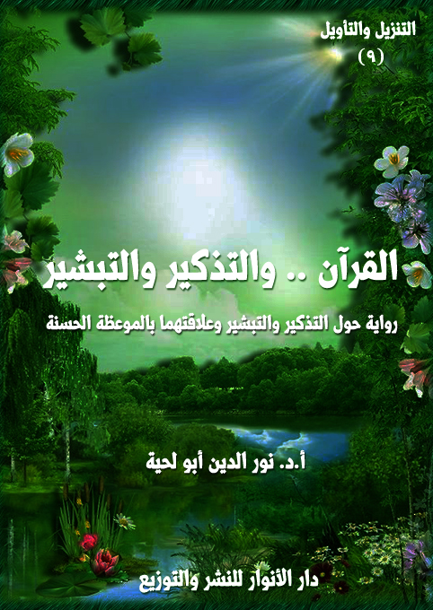

الكتاب: القرآن.. والتذكير والتبشير
الوصف: رواية حول التذكير والتبشير وعلاقتهما بالموعظة الحسنة
السلسلة: التنزيل والتأويل
المؤلف: أ. د. نور الدين أبو لحية
الناشر: دار الأنوار للنشر والتوزيع
الطبعة: الأولى، 1444 هـ
عدد الصفحات: 666
ISBN: 978-620-3-85901-0
لمطالعة الكتاب من تطبيق مؤلفاتي المجاني وهو أحسن وأيسر: هنا

هذا الكتاب هو المقدمة التاسعة لهذه السلسلة، ويتناول الخاصية الرابعة من خصائص القرآن الكريم، خاصية التذكير والتبشير، وهما من الخصائص المرتبطة بالموعظة الحسنة، والتي اعتبرها الله تعالى صفة من صفات القرآن الكريم، ووظيفة من وظائف الهداة والصالحين ابتداء من رسول الله صلى الله عليه وآله وسلم وغيره من الأنبياء عليهم السلام.
وهذه الخاصية مرتبطة بخاصية أخرى مكملة لها، وهي خاصية الإنذار والاعتبار، والتي خصصنا لها الكتاب العاشر من هذه السلسلة، ولذلك فإن هذين الكتابين منفصلين شكلا، متحدين موضوعا، لأنهما يشتركان في البحث في خاصية الموعظة الحسنة، وكيف تعامل معها القرآن الكريم.
وبناء على هذا، فقد حاولنا في هذا الكتاب أن نجمع بين ذكر النماذج المرتبطة بالتذكير والبشارة في القرآن الكريم مع التطبيق العملي لذلك من رسول الله صلى الله عليه وآله وسلم، وورثته من الهداة، ولذلك أدرجنا في أكثر المباحث والمطالب ما ورد من الأحاديث والآثار في كل مسألة نطرحها، مع اشتراط موافقة الأحاديث للقرآن الكريم.12345678910
القرآن والتذكير والتبشير (10)
هذا الكتاب هو المقدمة التاسعة لهذه السلسلة، ويتناول الخاصية الرابعة من خصائص القرآن الكريم، خاصية التذكير والتبشير، وهما من الخصائص المرتبطة بالموعظة الحسنة، والتي اعتبرها الله تعالى صفة من صفات القرآن الكريم، ووظيفة من وظائف الهداة والصالحين ابتداء من رسول الله صلى الله عليه وآله وسلم وغيره من الأنبياء عليهم السلام.
وهذه الخاصية مرتبطة بخاصية أخرى مكملة لها، وهي خاصية الإنذار والاعتبار، والتي خصصنا لها الكتاب العاشر من هذه السلسلة، ولذلك فإن هذين الكتابين منفصلين شكلا، متحدين موضوعا، لأنهما يشتركان في البحث في خاصية الموعظة الحسنة، وكيف تعامل معها القرآن الكريم.
وقد أشار إلى هذه الخاصية آيات كريمة كثيرة، كقوله تعالى: ﴿هَذَا بَيَانٌ لِلنَّاسِ وَهُدًى وَمَوْعِظَةٌ لِلْمُتَّقِينَ﴾ [آل عمران: 138]، وقوله: ﴿يَا أَيُّهَا النَّاسُ قَدْ جَاءَتْكُمْ مَوْعِظَةٌ مِنْ رَبِّكُمْ وَشِفَاءٌ لِمَا فِي الصُّدُورِ وَهُدًى وَرَحْمَةٌ لِلْمُؤْمِنِينَ﴾ [يونس: 57]، وقوله: ﴿وَكُلًّا نَقُصُّ عَلَيْكَ مِنْ أَنْبَاءِ الرُّسُلِ مَا نُثَبِّتُ بِهِ فُؤَادَكَ وَجَاءَكَ فِي هَذِهِ الْحَقُّ وَمَوْعِظَةٌ وَذِكْرَى لِلْمُؤْمِنِينَ﴾ [هود: 120]، وقوله: ﴿وَلَقَدْ أَنْزَلْنَا إِلَيْكُمْ آيَاتٍ مُبَيِّنَاتٍ وَمَثَلًا مِنَ الَّذِينَ خَلَوْا مِنْ قَبْلِكُمْ وَمَوْعِظَةً لِلْمُتَّقِينَ﴾ [النور: 34].. وغيرها من الآيات الكريمة الكثيرة.
وهكذا وصف الله تعالى كتابه بكونه ذكرى للمؤمنين، فقال: ﴿أُولَئِكَ الَّذِينَ هَدَى اللَّهُ فَبِهُدَاهُمُ اقْتَدِهْ قُلْ لَا أَسْأَلُكُمْ عَلَيْهِ أَجْرًا إِنْ هُوَ إِلَّا ذِكْرَى لِلْعَالَمِينَ﴾ [الأنعام: 90]، وقال: ﴿كِتَابٌ أُنْزِلَ إِلَيْكَ فَلَا يَكُنْ فِي صَدْرِكَ حَرَجٌ مِنْهُ لِتُنْذِرَ بِهِ وَذِكْرَى لِلْمُؤْمِنِينَ﴾ [الأعراف: 2]، وقال: ﴿وَمَنْ أَعْرَضَ عَنْ ذِكْرِي فَإِنَّ لَهُ مَعِيشَةً ضَنْكًا وَنَحْشُرُهُ يَوْمَ الْقِيَامَةِ أَعْمَى﴾ [طه:
القرآن والتذكير والتبشير (11)
124]، وقال: ﴿أَوَلَمْ يَكْفِهِمْ أَنَّا أَنْزَلْنَا عَلَيْكَ الْكِتَابَ يُتْلَى عَلَيْهِمْ إِنَّ فِي ذَلِكَ لَرَحْمَةً وَذِكْرَى لِقَوْمٍ يُؤْمِنُونَ﴾ [العنكبوت: 51]، وقال: ﴿أَأُنْزِلَ عَلَيْهِ الذِّكْرُ مِنْ بَيْنِنَا بَلْ هُمْ فِي شَكٍّ مِنْ ذِكْرِي بَلْ لَمَّا يَذُوقُوا عَذَابِ﴾ [ص: 8]
وأخبر أن من وظائف رسول الله صلى الله عليه وآله وسلم التذكير، فقال: ﴿فَذَكِّرْ إِنْ نَفَعَتِ الذِّكْرَى﴾ [الأعلى: 9]، وقال: ﴿وَذَكِّرْ فَإِنَّ الذِّكْرَى تَنْفَعُ الْمُؤْمِنِينَ﴾ [الذاريات: 55]
وهكذا أخبر الله تعالى أن من خصائص القرآن الكريم التبشير، ومن ذلك قوله تعالى: ﴿قُلْ مَنْ كَانَ عَدُوًّا لِجِبْرِيلَ فَإِنَّهُ نَزَّلَهُ عَلَى قَلْبِكَ بِإِذْنِ اللَّهِ مُصَدِّقًا لِمَا بَيْنَ يَدَيْهِ وَهُدًى وَبُشْرَى لِلْمُؤْمِنِينَ﴾ [البقرة: 97]، وقوله: ﴿وَنَزَّلْنَا عَلَيْكَ الْكِتَابَ تِبْيَانًا لِكُلِّ شَيْءٍ وَهُدًى وَرَحْمَةً وَبُشْرَى لِلْمُسْلِمِينَ﴾ [النحل: 89]، وقوله: ﴿قُلْ نَزَّلَهُ رُوحُ الْقُدُسِ مِنْ رَبِّكَ بِالْحَقِّ لِيُثَبِّتَ الَّذِينَ آمَنُوا وَهُدًى وَبُشْرَى لِلْمُسْلِمِينَ﴾ [النحل: 102]، وقوله: ﴿تِلْكَ آيَاتُ الْقُرْآنِ وَكِتَابٍ مُبِينٍ هُدًى وَبُشْرَى لِلْمُؤْمِنِينَ﴾ [النمل: 1 ـ 2]، وقوله: ﴿وَهَذَا كِتَابٌ مُصَدِّقٌ لِسَانًا عَرَبِيًّا لِيُنْذِرَ الَّذِينَ ظَلَمُوا وَبُشْرَى لِلْمُحْسِنِينَ﴾ [الأحقاف: 12]
وأخبر أن من وظائف رسول الله صلى الله عليه وآله وسلم الكبرى التبشير، فقال: ﴿وَبِالْحَقِّ أَنْزَلْنَاهُ وَبِالْحَقِّ نَزَلَ وَمَا أَرْسَلْنَاكَ إِلَّا مُبَشِّرًا وَنَذِيرًا﴾ [الإسراء: 105]، وقال: ﴿وَمَا أَرْسَلْنَاكَ إِلَّا مُبَشِّرًا وَنَذِيرًا﴾ [الفرقان: 56]، وقال: ﴿يَا أَيُّهَا النَّبِيُّ إِنَّا أَرْسَلْنَاكَ شَاهِدًا وَمُبَشِّرًا وَنَذِيرًا﴾ [الأحزاب: 45]، وقال: ﴿إِنَّا أَرْسَلْنَاكَ شَاهِدًا وَمُبَشِّرًا وَنَذِيرًا﴾ [الفتح: 8]
وبناء على هذا، فقد حاولنا في هذا الكتاب أن نجمع بين ذكر النماذج المرتبطة بالتذكير والبشارة في القرآن الكريم مع التطبيق العملي لذلك من رسول الله صلى الله عليه وآله وسلم، وورثته من الهداة، ولذلك أدرجنا في أكثر المباحث والمطالب ما ورد من الأحاديث والآثار في كل مسألة نطرحها، مع اشتراط موافقتها للقرآن الكريم.
القرآن والتذكير والتبشير (12)
وقصة الرواية تبدأ من تألم الكاتب من السلبيات التي يقع فيها الكثير من الوعاظ، والتي تجعلهم ينصرفون عن الهدي القرآني والنبوي، ليملؤوا مواعظهم بالخرافات والأساطير، أو بالقصص الفارغة، أو بعدم ربط التبشير بما يقتضيه من عمل، أو عدم ربط الإنذار بما يقتضيه من الضوابط.
ثم إنه في موقف من المواقف يصطدم مع بعض الوعاظ، ويتعرض بسببه للأذى من المستمعين له.. وحينها يأتيه معلم الوعظ ليقوده للمدينة التي استطاعت بفضل المواعظ القرآنية أن تتحول إلى مدينة فاضلة.
وهناك يدله على المكان الذي يتعلم فيه أهل تلك المدينة الوعظ، فيذهب إليهم، ويسجل ما يذكرونه، ويتنقل معهم كذلك إلى المحال التي تحتاج للوعظ، ليتعلم المنهج القرآني في ذلك.
وطبعا، فإن هذه الرواية كغيرها، لا يقصد منها الأحداث بقدر ما تقصد المعاني، ومحاولة التيسير والتبسيط، ولذلك حاولنا أن نستوعب عند ذكر كل آية ترتبط بالموضوع ما يتعلق بها من المعاني والتدبرات، ومن التفاسير المختلفة.
وقد وضعنا التوثيقات المرتبطة بالتفسير في بداية كل آية، لأننا نمزج بين التفاسير المختلفة، كما أننا نتصرف في الاقتباسات، لأن الغرض هو تيسير المعاني وتبسيطها، والبعد عما لا نراه مناسبا من التدبرات والتأويلات.
وقد خصصنا الأحاديث والآثار في كل مسألة بمطلب خاص، بعنوان [أحاديث وآثار]، وقد حاولنا أن نرجع في ذلك للمصادر الحديثية المختلفة سواء السنية أو الشيعية، والعبرة فيها كما ذكرنا في محال مختلفة هو الموافقة للقرآن الكريم.
وبناء على عنوان الكتاب، فقد قسمناه إلى فصلين:
القرآن والتذكير والتبشير (13)
الأول: يبحث فيما ورد في القرآن الكريم من الآيات التي تدعو إلى التذكر، وقد رأينا أنه يمكن حصرها في ذكر الله واليوم الآخر، كما قال تعالى: ﴿وَمَاذَا عَلَيْهِمْ لَوْ آمَنُوا بِاللَّهِ وَالْيَوْمِ الْآخِرِ وَأَنْفَقُوا مِمَّا رَزَقَهُمُ اللَّهُ وَكَانَ اللَّهُ بِهِمْ عَلِيمًا﴾ [النساء:39]، وقال: ﴿يَا أَيُّهَا الَّذِينَ آمَنُوا أَطِيعُوا اللَّهَ وَأَطِيعُوا الرَّسُولَ وَأُولِي الْأَمْرِ مِنْكُمْ فَإِنْ تَنَازَعْتُمْ فِي شَيْءٍ فَرُدُّوهُ إِلَى اللَّهِ وَالرَّسُولِ إِنْ كُنْتُمْ تُؤْمِنُونَ بِاللَّهِ وَالْيَوْمِ الْآخِرِ ذَلِكَ خَيْرٌ وَأَحْسَنُ تَأْوِيلًا﴾ [النساء:59]، وقال: ﴿وَمِنَ الْأَعْرَابِ مَنْ يُؤْمِنُ بِاللَّهِ وَالْيَوْمِ الْآخِرِ وَيَتَّخِذُ مَا يُنْفِقُ قُرُبَاتٍ عِنْدَ اللَّهِ وَصَلَوَاتِ الرَّسُولِ أَلَا إِنَّهَا قُرْبَةٌ لَهُمْ سَيُدْخِلُهُمُ اللَّهُ فِي رَحْمَتِهِ إِنَّ اللَّهَ غَفُورٌ رَحِيمٌ﴾ [التوبة:99]، وغيرها من الآيات الكريمة.
ذلك أن بناء الدين على هذين الركنين الكبيرين، ولا يمكن للقيم التي جاء بها الأنبياء عليهم السلام أن تتحقق في الواقع من دون أن يكون هناك إيمان بالله ولا باليوم الآخر.
وقد تناولنا في بحثنا لتذكر الله تعالى نماذج مما ورد في القرآن الكريم من الدعوة إلى ذكر الله، والابتعاد عن كل المعيقات التي تحول بين العبد وبينه، والبحث عن كل السبل التي توصل إليه.. باعتباره المقصد الأكبر للدين.. كما ذكرنا ما ورد في الدعوة لتذكر اليوم الآخر، وعلاقته بالحياة الدنيا.
أما الفصل الثاني؛ فتناولنا فيه ما ورد في القرآن الكريم والأحاديث والآثار من البشارات بالجنة ونعيمها، وأنواع ذلك النعيم، وصفات المستحقين له، مما يربط البشارة بالعمل.
القرآن والتذكير والتبشير (14)
البداية
ما إن طلب مني معلمي تجهيز نفسي لرحلتي الجديدة إلى [القرآن.. والمواعظ البليغة] حتى تذكرت الكثير من المشاهد المؤلمة في حياتي وفي حياة الأمة جميعا.
لقد تذكرت أولئك الخطباء والوعاظ الذين رباهم المستكبرون على أعينهم، حتى إذا ما نضجوا، واكتسبوا قلوب ملايين الجماهير من الناس، راحوا يستعملونهم في نشر الفتن، وسفك الدماء، وتخريب البلاد، وإسقاط كل نظام، وتحويله إلى فوضى، لا يأتي من ورائها إلا الخراب، وبذلك أتاحوا للمستكبرين أن يمسكوا برقاب المستضعفين، ومن غير أسلحة، ولا جيوش.
وهكذا تذكرت أولئك الوعاظ من المرجئة القدامى والجدد الذين يملؤون قلوب الناس بالرغبة في الجنة، ويملؤون أخيلتهم بمشاهدها، من غير أن يكلفوهم بعدها بعمل، ولا مجاهدة، ولا تأديب نفس.. فالله ـ كما يذكرون ـ واسع الرحمة، وما خلق الجنة إلا ليسكنها عباده، محسنهم ومسيئهم، مجتهدهم وكسولهم، لا فرق بينهم جميعا.
وتذكرت أولئك الوعاظ الذين جعلوا من أنفسهم سدنة لأبواب جهنم، يدخلون فيها من شاءوا، ويخرجون من شاءوا.. بل تحولوا إلى ملائكة يسألون الناس عن دينهم، وبحسب إجاباتهم يزفونهم إلى الجنة، أو يزجون بهم إلى قعر جهنم.
وتذكرت وعاظ السلاطين والأمراء والملوك والرؤساء.. أولئك الذين لا هم لهم إلا أن يأكلوا في تلك الموائد الفاخرة، ويجعلوا من وعظهم وسيلة، لا لتحبيب القلوب في الله، وفي التمسك بشريعته، وإنما في التقرب للسلاطين، والعبودية لهم.
وهكذا، جر ذكر الوعظ إلى قلبي الكثير من المآسي.. حتى أني صرت أنتظر ذلك
القرآن والتذكير والتبشير (15)
اليوم الذي أقوم فيه برحلتي التي وعدني بها المعلم، لأتعرف على الوعظ الحقيقي الذي أراده الله منا، ومن كل الوعاظ.
فأنا أعلم أن من أهم خصائص القرآن الكريم كونه موعظة بليغة، تلج إلى أعماق الإنسان، وفي سهولة ويسر، لا لتخربه كما يفعل أولئك الوعاظ المخربون، وإنما لتبنيه على الأسس الصحيحة، ليتحول إلى من وصفهم الله بالمخبتين والأبرار والمقربين وعباد الرحمن.. أولئك الذين امتلأوا بالطهر والقداسة ظاهرا وباطنا.
وقد شاء الله أن تتأخر رحلتي إلى ذلك اليوم الذي بلغ فيه ألمي حالته القصوى.. وذلك حين زارنا بعض الوعاظ الكبار، من الذين يستعملون القصص وسيلة للوعظ والتربية، وأنا خصوصا يعجبني هذا الأسلوب، وأتأثر له، وأستفيد منه.
لكني بعد حضوري لذلك المجلس، بل أثناءه صرت أنظر إلى القصص، كما أنظر إلى السم الذي يُدس في العسل، ليهدم من يتناوله من خلال حبال ذوقه.
لقد جاءنا الواعظ من بلاد بعيدة، لا ليملأنا بحب الله ورسوله ودينه.. ولا ليشوقنا إلى جنان الله التي هي محال القرب والفضل الإلهي.. ولا ليرهبنا من النار، والجرائم التي تتسبب في دخولها.. ولا ليذكرنا بعبر التاريخ كما يذكرنا القرآن الكريم لنعتبر بها.. أو يذكرنا بنعم الله علينا لنحمده عليها، ونستعملها في ذكره وشكره.. وإنما جاءنا ليحدثنا عن ذلك الذي استطاع بسطوته ودهائه وسيوف من اتبعه أن يقضي على من أوصى رسول الله صلى الله عليه وآله وسلم باتباعه والولاية له.
لقد قص علينا في خطبته قصة معاوية، لا باعتبارها أحداثا تاريخية تحتاج إلى تدبر لأخذ العبرة، وإنما قصها علينا كما قص علينا القرآن الكريم أحسن القصص.. فقد صور معاوية بصورة النبي.. وصور محاربيه بصورة أقوام الأنبياء من الأجلاف الغلاظ.. ثم صور
القرآن والتذكير والتبشير (16)
دولته بصورة المدينة الفاضلة، التي يجرم من يخطئ في حقها.
لقد شعرت حينها بنفس تلك الآلام التي صرت أشعر بها كلما رُدد لفظ الوعظ أمامي.. وكيف لا أشعر بذلك، وأنا أعلم أن هؤلاء الذين تُملأ عقولهم وقلوبهم بمثل هذه المواعظ، سيتحولون إلى خناجر تفتك بجسد الأمة، وإلى سموم تقتلها قتلا سريعا أو بطيئا.
لذلك شعرت بمسؤوليتي في ذلك المحل؛ فرحت أصيح في الخطيب قائلا: ألم يكفك ما ورد في القرآن الكريم أو في السنة المطهرة من المواعظ، لتعظنا بها؟
كان الواعظ هادئا، أو يتظاهر بالهدوء، لذلك رد علي بكل برودة: القرآن الكريم والسنة المطهرة شيء متفق عليه، يعرفه جميع الناس.. اسأل آخر شخص، بل آخر صبي، وسيحدثك عن الجنة والنار، وقصص الأنبياء.. أما الذي ذكرته أنا فهو الذي نحتاج أن نذكّر به، لأن أعداء الإسلام يحاولون تشويهه، ولذلك يجب تصويره بالصورة الحسنة، لتمتلئ قلوب المؤمنين بمحبته.
قلت: فبإمكانك بدل معاوية أن تحدثنا عن علي.. ألم يكن علي أولى بحديثك من معاوية؟
ابتسم ببرودة، وقال: وعلي مثل ذلك.. كل الأمة تعرفه وتعترف له وتحبه وتقدره.. ولذلك لا حاجة لتذكير الناس بذلك.. اسأل آخر شخص، بل آخر صبي.. وسيذكر لك أنه يعرفه ويحبه.
قلت: فحدثنا عن بلال ذلك الذي وضعت فوق صدره الصخرة، وظل ثابتا على الحق، لعلنا نتعلم منه الثبات على الحق.
ابتسم، وهو يتثاءب، وقال: وبلال مثل ذلك.. كل الناس يعرفونه ويقدرونه، بل يقدرون الصخرة التي وضعت على صدره.. ولذلك لا حاجة لتذكير الناس بذلك.. اسأل
القرآن والتذكير والتبشير (17)
آخر شخص، بل آخر صبي.. وسيذكر لك أنه يعرفه ويحبه.
لم أدر ما أقول، فقد كان له من البرودة ما يزاحم كل جليد الدنيا.. لكني، وبدل أن أذكر له أسماء أخرى، قلت: ولكنك تعلم ما فعل معاوية بالأمة، والجرائم التي ارتكبها في حقها، وكيف حول الحكم العادل الذي أمرنا الله به إلى ملك عضوض، انحرفت به الأمة تماما عن مسارها.
ما قلت هذا حتى ذاب كل جليد ذلك الواعظ، بل تحول إلى نار ملتهبة، وراح يصيح بكل قوة: رافضي مجوسي يسب الصحابة السابقين المقربين.. كيف تتركونه بينكم؟
ثم لم أدر بعدها إلا بالأيدي والأرجل والأحذية تنهال علي من كل صوب، وكأن صفين قد عادت، ومعاوية وجنوده عادوا من جديد.
ثم لم أدر بعدها إلا وأنا مضمخ بدمائي في الشارع، ووعيي يكاد يغيب عني.. أردت أن أقوم فلم أستطع، وكان المارة يمرون علي، ولا أحد منهم يجرؤ على أن يمد يده لينقذني، فذلك الواعظ ملأ قلوب الجميع نفرة مني.. ويا ويل من يتجاوز تنفيرات الواعظ.
في غمرة تلك الآلام جاءني معلمي الجديد، والذي أخبرني أنه معلم الوعظ الذي أرسله معلم القرآن.. ومسح على جراحي، وقرأ عليها بعض القرآن الكريم، فالتأمت، وعادت إلي قوتي من جديد.
عندما وقفت أمامه بكامل قوتي، قال: هلم بنا إلى المدينة التي تبركت بالمواعظ القرآنية البليغة، فتحولت إلى مدينة فاضلة.. فلا ينال الفضل إلا من تبرك بالقرآن، وجعله قائده وإمامه.
سرت معه إلى أن لاحت لنا أنوار تلك المدينة، فرأيت من جمالها ما لم أكن أتخيله أبدا.. لقد كانت وكأنها قطعة من الجنة.
القرآن والتذكير والتبشير (18)
قلت للمعلم: يا الله ما أجمل هذه المدينة، وما أجمل التصميم الذي صممت به، وكأن مهندسيها استوحوا ما ورد في القرآن الكريم عن الجنة.
قال: أجل.. هم فعلوا ذلك، لكثرة ترديد وعاظهم الحديث عن الجنة.
قلت: كنت أتصور أن المواعظ تبني الجنان في النفوس، لا على الأرض.
قال: عندما تبنى الجنان في النفوس يخرج الله لها نماذج على الأرض.. ولذلك كل ما تراه من بركات هو من فيض نفوسهم التي عُمرت بالإيمان، بسبب تلقيها لمواعظ القرآن.
قلت: فكيف أتيح لهذه المدينة ما لم يتح لغيرها من البلاد؟
قال: الله أكرم من أن يتيح لأي أرض ما لم يتح لغيرها.
قلت: فكيف حصل لها هذا؟
قال: بنفس القرآن الكريم الذي تقرؤه الأمة جميعا.. ذلك القرآن الذي ذكر الواعظ أن الناس جميعا يعرفونه.
قلت: أجل.. هم يهجرونه ويعطلونه.
قال: لكن أهل هذه المدينة، لم يكونوا كذلك.. لقد شربت نفوسهم القرآن من منابعه الصافية التي لم تدنس.. فلذلك فعل فيهم ما أخبر الله تعالى عنه حين قال: ﴿يَا أَيُّهَا النَّاسُ قَدْ جَاءَتْكُمْ مَوْعِظَةٌ مِنْ رَبِّكُمْ وَشِفَاءٌ لِمَا فِي الصُّدُورِ وَهُدًى وَرَحْمَةٌ لِلْمُؤْمِنِينَ﴾ [يونس:57]
قلت: لقد قال بعدها: ﴿قُلْ بِفَضْلِ اللَّهِ وَبِرَحْمَتِهِ فَبِذَلِكَ فَلْيَفْرَحُوا هُوَ خَيْرٌ مِمَّا يَجْمَعُونَ﴾ [يونس:58]
قال: أجل.. فكلا الآيتين مترابطتين.. فمن استفاد من مواعظ القرآن الكريم شفي صدره، وتحققت له الهداية، وتنزل عليه حينها فضل الله ورحمته.. وهو نفس ما حصل لأهل هذه المدينة، فقد كانت هذه الآية الكريمة شعارهم.
القرآن والتذكير والتبشير (19)
ما قال ذلك، حتى رأيت بناية ضخمة، وكأنها قصر من قصور الجنة، وقد كتب على بابها بخطوط من نور تينك الآيتين الكريمتين، قلت: يا الله.. ما أجمل هذا القصر العظيم، وكأنه قد تنزل من الجنة.
قال: أجل.. هو كذلك.. لقد عرف أهل هذه المدينة قيمة المواعظ وأثرها في حياتهم، ولهذا خصوها بأجمل المباني، ليتناسق ويتكامل الحس مع المعنى، والظاهر مع الباطن.
قلت: عهدي بالمواعظ ترتبط بالزهد.. لا بتشييد المباني؛ فكيف خصص أهل هذه المدينة أجمل مبانيها لهذا؟
قال: هذه المدينة، وهذه البناية خصوصا يزورها الناس من كل المدن المجاورة.. والكثير منهم يتشبث بالدنيا، ويخاف أن تسلبها المواعظ منه.. ولهذا بدا لأهل هذه المدينة أن يطمئنوا هؤلاء إلى دنياهم وما يشتهونه منها، وأرادوا فوق ذلك أن يثبتوا لهم أن التزامهم لن يفيدهم فقط في الآخرة، بل سيفيدهم في هذه الدنيا أيضا.
قلت: فكيف بدا لهم هذا؟
قال: لقد وجدوه في القرآن الكريم.. ألم تقرأ قصة سليمان عليه السلام مع ملكة سبأ؟
قلت: بلى.
قال: لقد علم سليمان عليه السلام أن ملكة سبأ متعلقة بعرشها، ولهذا أحضره لها، ليطمئنها عليه.. ويخبرها أن إسلامها لن يحول بينها وبينه.
قلت: أجل.. وقد أكد ذلك ببناء ذلك القصر الممرد من القوارير، والذي ذكره الله تعالى في قوله: ﴿قِيلَ لَهَا ادْخُلِي الصَّرْحَ فَلَمَّا رَأَتْهُ حَسِبَتْهُ لُجَّةً وَكَشَفَتْ عَنْ سَاقَيْهَا قَالَ إِنَّهُ صَرْحٌ مُمَرَّدٌ مِنْ قَوَارِيرَ قَالَتْ رَبِّ إِنِّي ظَلَمْتُ نَفْسِي وَأَسْلَمْتُ مَعَ سُلَيْمَانَ لِلَّهِ رَبِّ الْعَالَمِينَ﴾ [النمل:44]
القرآن والتذكير والتبشير (20)
قلت: وعيت هذا.. فما الذي يقومون به في هذه البناية.. هل تراهم يرددون المواعظ؟
قال: لا.. في هذا القصر يعلمون الذين يحضرون إليه ـ سواء كانوا شبابا أو كهولا أو شيوخا ـ كيف يمارسون الوعظ وفق ما ورد في القرآن الكريم والسنة المطهرة.
قلت: وهل جعلوا ذلك خاصا بهم؟
قال: لا.. أهل هذه المدينة لم يكتفوا بما من الله عليهم بالهداية، وإنما راحوا ينشرونها في سائر المدن والقرى، وفي هذا القصر يدربون من يقوم بذلك، ولذلك يفد إليهم الناس من كل البلاد.
قلت: فهلا حكيت لي قصتهم قبل أن يتحولوا إلى ما هم عليه الآن.
قال: لقد كان أهل هذه المدينة غارقين في غيهم وضلالهم.. وقد مر بهم الكثير من الوعاظ الذين لم يزيدوا حياتهم إلا نكدا، وصدورهم إلا مرضا.. لكن الله شاء أن يجعل فيهم من الوعاظ الصالحين من حولوهم عن ذلك الواقع المنحرف إلى هذا الواقع الذي تراه.
قلت: طوبى لهم.. كيف حصلوا على هؤلاء الوعاظ؟
ابتسم، وقال: هم تلاميذي.. وبسببهم وبسبب أمثالهم من المنتشرين في بلاد أخرى، شرفني معلم القرآن بأن أكون معلما للوعظ.
قلت: فكيف بدا لك أن تختارهم تلاميذ لك؟
قال: كما بدا لمعلم القرآن أن يختارك تلميذا له.
قلت: لم أفهم.
قال: لقد جئت إلى هذه المدينة قبل عشرين سنة، وتألمت لحالها كثيرا.. وقد علمت أني مهما بذلت من جهد لوعظهم أو توجيههم، لن يستفيدوا مني.. لذلك رحت أبحث عن
القرآن والتذكير والتبشير (21)
أكثرهم طهارة، وأشرفهم نفسها، لأجعلهم تلاميذ لي.. وقد وجدت اثني عشر منهم بعدد تلاميذ المسيح عليه السلام.
قلت: فالاثنا عشر تلميذا هم الذين حولوا هذه المدينة إلى هذا الوضع الجديد.
قال: ببركات تلمذتهم على القرآن الكريم.. وببركات تنفيذهم للهدي المقدس الذي مثله رسول الله صلى الله عليه وآله وسلم، وورثته الصادقون.
قلت: فقد كنت أنت سبب إصلاح هذه المدينة.
قال: الله تعالى هو المصلح.. وما أنا إلا سبب من الأسباب.
قلت: فكل أهل هذه المدينة إذن يعرفونك، ويجلونك.
قال: لا أحد منهم يعرفني غير تلاميذي.
قلت: ما أشد نكرانهم للجميل.
قال: لا تقل عنهم ذلك.. لقد أوصيت تلاميذي ألا يذكروني.. لأني لم أرد لهم إلا أن يتعلقوا بالحق، لا بشخصي، ولا بشخوص تلاميذي.
قلت: لقد ذكرتني بأولئك الوعاظ الذين لا هم لهم إلا جاههم وشهرتهم.. فهم يشيدون بأنفسهم في كل المحال.. وكأنهم يحثون الناس على عبادتهم والولاء لهم، لا عبادة الله والولاء له.
قال: أولئك دعاة لأنفسهم، لا دعاة لله.. الداعي لله هو الذي يتجرد عن كل شيء حتى عن اسمه ورسمه.
قلت: لقد ذكرت لي أن هذه المدينة تحولت إلى هذه الحال الحسنة بسبب مراعاتها لمواعظ القرآن الكريم، فكيف ذلك؟
قال: ليس الخبر كالعيان.. وأنا ما أتيت بك إلى هذه المدينة إلا لتعرف سر ذلك، ثم
القرآن والتذكير والتبشير (22)
تسجله لقومك لعلهم يتعظون، ويعودون إلى القرآن الكريم، وبالفهم السليم، لا بالأهواء السقيمة.
قلت: فهل ستتركني كما فعل بعض المعلمين، لأرى بنفسي ما أحتاج إلى رؤيته.
قال: لا.. سأكون معك، وسأكون دليلك، لأنك لو بقيت وحدك هنا، فلن تخرج أبدا، فمواعظ القرآن الكريم لا نهاية لها.
قلت: فكيف لي أن أسجل ما علي تسجيله في هذه الرحلة؟
قال: كما كنت تفعل في كل رحلاتك.. سر فقط.. وسييسر الله لك من يعلمك.
قلت: لكني أتعجب من رحلتي لهذه المدينة الصالحة.. ألم يكن الأجدى أن أذهب إلى مدينة منحرفة، لأرى تأثير المواعظ فيها؟.. فهؤلاء قد تناولوا أدويتهم، وهم لا يحتاجون لأي موعظة.
قال: ألا تعلم أن الغفلة داء مزمن، والشيطان عدو متربص.. ولذلك فإن من غفل عن أدوية المواعظ التي تحميه وتصلحه، سيقع ضحية نفسه، وسيفتك به شيطانه ويستحوذ عليه.
قلت: ألأجل هذا يهتم أهل هذه المدينة بالمواعظ؟
قال: أجل.. كما تهتمون أنتم بوجباتكم، فلا تغفلون عنها.. هم كذلك لديهم وجبات يومية من المواعظ تحميهم وتسددهم.
قلت: فهل يمكن أن يفشل تلاميذك لو كانوا في بلاد أخرى؟
قال: وكيف لا يفشلون.. وأنت ترى أن رسول الله صلى الله عليه وآله وسلم قد بلغ القرآن الكريم وبأجمل أسلوب، وبأفضل أداء، ومع ذلك وجد من يعارضه، بل يخالفه، بل يحاربه.
قلت: صدقت.. وقد أخبر رسول الله صلى الله عليه وآله وسلم أنه يأتي يوم القيامة النبي ومعه الفرد
القرآن والتذكير والتبشير (23)
والفردان، والنبي وليس معه أحد.
قال: صدق رسول الله صلى الله عليه وآله وسلم.. فالمواعظ تحتاج إلى القلوب المتواضعة السليمة التي تتلقاها، وإلا فإنها لن تجدي شيئا.. مثل الدواء الذي يوضع معه ما يعارضه، فهو لن يزيد صاحبه إلا مرضا.
قلت: فدور الواعظ إذن هو أن يؤدي ما عليه، وليس عليه بعدها تحمل أي نتيجة.
قرأ المعلم قوله تعالى: ﴿إِنَّكَ لَا تَهْدِي مَنْ أَحْبَبْتَ وَلَكِنَّ اللَّهَ يَهْدِي مَنْ يَشَاءُ وَهُوَ أَعْلَمُ بِالْمُهْتَدِينَ﴾ [القصص:56]، ثم قال: ومع ذلك يحتاج الواعظ الصالح أن يغير أساليبه كل حين، كما يغير الطبيب وصفاته إن وجد عدم جدوى أي دواء.
القرآن والتذكير والتبشير (24)
أولا ـ القرآن.. والتذكير
بعد أن قال هذا فارقني، كما كان يفارقني سائر المعلمين، فسرت إلى أن وجدت نفسي أمام باب قصر المواعظ، وفي حديقته الجميلة الملأى بأصناف الزهور.. وقد كان أول ما قابلني باب جميل، كتب عليه بخطوط من نور قوله تعالى: ﴿وَذَكِّرْ فَإِنَّ الذِّكْرَى تَنْفَعُ الْمُؤْمِنِينَ﴾ [الذاريات:55]
وقد كان أول من التقيته شاب أخذ بيدي، وهو يقول: لا شك أنك جئت لتؤمن ساعة.
قلت: معاذ الله أن أرغب عن الإيمان الذي أمر الله تعالى به إلى إيمان أولئك الذين قال الله تعالى فيهم: ﴿وَقَالَتْ طَائِفَةٌ مِنْ أَهْلِ الْكِتَابِ آمِنُوا بِالَّذِي أُنْزِلَ عَلَى الَّذِينَ آمَنُوا وَجْهَ النَّهَارِ وَاكْفُرُوا آخِرَهُ لَعَلَّهُمْ يَرْجِعُونَ﴾ [آل عمران:72]
قال الشاب: معاذ الله أن أدعوك لذلك الإيمان.. بل دعوتك إلى ذلك الإيمان الذي دعا إليه عبد الله بن رواحة حين قال لبعض أصحابه: (تعال نؤمن بربنا ساعة)، فغضب الرجل، وجاء إلى النبي صلى الله عليه وآله وسلم، فقال: يا رسول الله، ألا ترى إلى ابن رواحة يرغب عن إيمانك إلى إيمان ساعة؟ فقال النبي صلى الله عليه وآله وسلم: (يرحم الله ابن رواحة، إنه يحب المجالس التي تتباهى بها الملائكة)(1)
قلت: أحسنت.. لقد روي أن هذا الصحابي الجليل الشاعر الشهيد كان يأخذ بيد النفر من أصحابه فيقول: (تعالوا نؤمن ساعة، تعالوا فلنذكر الله ونزدد إيمانا، تعالوا نذكره
__________
(1) أحمد (21/ 309)
القرآن والتذكير والتبشير (25)
بطاعته لعله يذكرنا بمغفرته)(1).. وروي أنه قال لصاحب له: تعال حتى نؤمن ساعة، فقال صاحبه: أولسنا بمؤمنين؟ قال: (بلى، ولكنا نذكر الله فنزداد إيمانا)(2)
قال: صدق في ذلك، فالإيمان الحقيقي هو إيمان الذاكرين، لا الغافلين، والحاضرين، لا الناسين.. فهل يمكن أن تعتبر ذلك الغافل الذي لا يعرف ربه، ولا يذكره، ولا يتذكره في أي محل مؤمنا؟
قلت: هو مؤمن ظاهرا، لكن باطنه يغطي الله بحجب كثيرة تحول بينه وبين معرفته أو التواصل معه.
قال: ولذلك؛ دعوتك لأن تدخل من هذا الباب من أبواب القصر، فهو من الأبواب الضرورية التي لا يمكن الدخول إلى سائر الأبواب قبل الدخول إليه.
قلت: فما هي المعاني الكبرى التي يدور حولها التذكير هنا؟
قال: معان كثيرة.. لكنها تجتمع في اثنين: التذكير بالله، والتذكير باليوم الآخر.. فلا شيء يعالج القلوب الغافلة بمثل التذكير بهما.. ألم تقرأ ما ورد في القرآن الكريم من الجمع تعالى بينهما في مواضع كثيرة.
قلت: بلى.. ومن ذلك قوله تعالى: ﴿لَيْسُوا سَوَاءً مِنْ أَهْلِ الْكِتَابِ أُمَّةٌ قَائِمَةٌ يَتْلُونَ آيَاتِ اللَّهِ آنَاءَ اللَّيْلِ وَهُمْ يَسْجُدُونَ يُؤْمِنُونَ بِاللَّهِ وَالْيَوْمِ الْآخِرِ وَيَأْمُرُونَ بِالْمَعْرُوفِ وَيَنْهَوْنَ عَنِ الْمُنْكَرِ وَيُسَارِعُونَ فِي الْخَيْرَاتِ وَأُولَئِكَ مِنَ الصَّالِحِينَ﴾ [آل عمران:113ـ114]، وقال: ﴿وَمَاذَا عَلَيْهِمْ لَوْ آمَنُوا بِاللَّهِ وَالْيَوْمِ الْآخِرِ وَأَنْفَقُوا مِمَّا رَزَقَهُمُ اللَّهُ وَكَانَ اللَّهُ بِهِمْ عَلِيمًا﴾ [النساء:39]، وقال: ﴿يَا أَيُّهَا الَّذِينَ آمَنُوا أَطِيعُوا اللَّهَ وَأَطِيعُوا الرَّسُولَ وَأُولِي الْأَمْرِ مِنْكُمْ فَإِنْ
__________
(1) ابن أبي شيبة 11/ 43.
(2) البيهقي في الشعب (50)
القرآن والتذكير والتبشير (26)
تَنَازَعْتُمْ فِي شَيْءٍ فَرُدُّوهُ إِلَى اللَّهِ وَالرَّسُولِ إِنْ كُنْتُمْ تُؤْمِنُونَ بِاللَّهِ وَالْيَوْمِ الْآخِرِ ذَلِكَ خَيْرٌ وَأَحْسَنُ تَأْوِيلًا﴾ [النساء:59]، وقال: ﴿وَمِنَ الْأَعْرَابِ مَنْ يُؤْمِنُ بِاللَّهِ وَالْيَوْمِ الْآخِرِ وَيَتَّخِذُ مَا يُنْفِقُ قُرُبَاتٍ عِنْدَ اللَّهِ وَصَلَوَاتِ الرَّسُولِ أَلَا إِنَّهَا قُرْبَةٌ لَهُمْ سَيُدْخِلُهُمُ اللَّهُ فِي رَحْمَتِهِ إِنَّ اللَّهَ غَفُورٌ رَحِيمٌ﴾ [التوبة:99]، وقال: ﴿لَقَدْ كَانَ لَكُمْ فِي رَسُولِ اللَّهِ أُسْوَةٌ حَسَنَةٌ لِمَنْ كَانَ يَرْجُو اللَّهَ وَالْيَوْمَ الْآخِرَ وَذَكَرَ اللَّهَ كَثِيرًا﴾ [الأحزاب:21]، وغيرها من الآيات الكريمة الكثيرة.
1. التذكير بالله:
ما إن قرأت تلك الآيات الكريمة حتى فُتح لي باب ذلك الجناح، وقد رأيت فيه أقساما كثيرة جدا، وكأني في مدينة كبيرة، لا في بناية واحدة.. وقد سألت الشاب المرشد الذي دعاني إلى الدخول عن الأبواب التي علي أن أدخلها، فقال: ثلاثة.. تلك التي ترغّب في ذكر الله والتذكير به من خلال معرفة آثاره المختلفة.. وتلك التي تحذر من الحجب التي تحول بين العبد وربه.. وتلك التي تذكر بالطرق التي توصل لله، وتعرف به.
أ. علامات وآثار:
قال لي ذلك، ثم طلب مني أن أسير إلى المجالس التي ترغب في ذكر الله من خلال ذكر الآثار التي يجنيها الذاكرون، والعواقب التي يجنيها الغافلون، وقد سألته عن سر البدء بها، فقال: لقد انتهج القرآن الكريم منهج التبشير والإنذار، أو الترغيب والترهيب.. ذلك أن النفس بما تقتضيه فطرتها، لا تقدم إلا على ما يكون فيه جلب مصالحها، ودرء مفاسدها.. وهل هناك أعلم بالمصالح والمفاسد من الله تعالى الذي خلق كل شيء ودبره أحسن تدبير؟
آثار الذكر وعلاماته:
بعد أن ذكر لي هذا دخلت أول قسم منها، وقد كان أول ما سمعته من أستاذه قوله:
القرآن والتذكير والتبشير (27)
حدثونا بما ورد في القرآن الكريم من الترغيب في ذكر الله تعالى من خلال ما يحدثه الذكر من آثار في النفس والمجتمع، وعلامات ذلك.
قال أحد الطلبة: لقد ذكر الله تعالى ذلك، فقال: ﴿إِنَّمَا الْمُؤْمِنُونَ الَّذِينَ إِذَا ذُكِرَ اللَّهُ وَجِلَتْ قُلُوبُهُمْ وَإِذَا تُلِيَتْ عَلَيْهِمْ آيَاتُهُ زَادَتْهُمْ إِيمَانًا وَعَلَى رَبِّهِمْ يَتَوَكَّلُونَ الَّذِينَ يُقِيمُونَ الصَّلَاةَ وَمِمَّا رَزَقْنَاهُمْ يُنْفِقُونَ أُولَئِكَ هُمُ الْمُؤْمِنُونَ حَقًّا لَهُمْ دَرَجَاتٌ عِنْدَ رَبِّهِمْ وَمَغْفِرَةٌ وَرِزْقٌ كَرِيمٌ﴾ [الأنفال:2ـ4]
قال آخر: وقال: ﴿فَإِلَهُكُمْ إِلَهٌ وَاحِدٌ فَلَهُ أَسْلِمُوا وَبَشِّرِ الْمُخْبِتِينَ الَّذِينَ إِذَا ذُكِرَ اللَّهُ وَجِلَتْ قُلُوبُهُمْ وَالصَّابِرِينَ عَلَى مَا أَصَابَهُمْ وَالْمُقِيمِي الصَّلَاةِ وَمِمَّا رَزَقْنَاهُمْ يُنْفِقُونَ﴾ [الحج:34ـ35]
قال آخر: وقال: ﴿اللَّهُ نَزَّلَ أَحْسَنَ الْحَدِيثِ كِتَابًا مُتَشَابِهًا مَثَانِيَ تَقْشَعِرُّ مِنْهُ جُلُودُ الَّذِينَ يَخْشَوْنَ رَبَّهُمْ ثُمَّ تَلِينُ جُلُودُهُمْ وَقُلُوبُهُمْ إِلَى ذِكْرِ اللَّهِ﴾ [الزمر:23]
قال آخر: وقال: ﴿فِي بُيُوتٍ أَذِنَ اللَّهُ أَنْ تُرْفَعَ وَيُذْكَرَ فِيهَا اسْمُهُ يُسَبِّحُ لَهُ فِيهَا بِالْغُدُوِّ وَالْآصَالِ رِجَالٌ لَا تُلْهِيهِمْ تِجَارَةٌ وَلَا بَيْعٌ عَنْ ذِكْرِ اللَّهِ وَإِقَامِ الصَّلَاةِ وَإِيتَاءِ الزَّكَاةِ يَخَافُونَ يَوْمًا تَتَقَلَّبُ فِيهِ الْقُلُوبُ وَالْأَبْصَارُ لِيَجْزِيَهُمُ اللَّهُ أَحْسَنَ مَا عَمِلُوا وَيَزِيدَهُمْ مِنْ فَضْلِهِ وَاللَّهُ يَرْزُقُ مَنْ يَشَاءُ بِغَيْرِ حِسَابٍ﴾ [النور:36ـ38]
آية ومعان:
قال الأستاذ(1): أحسنتم.. فحدثونا عن المعاني التي يدل عليها قوله تعالى: ﴿الَّذِينَ آمَنُوا وَتَطْمَئِنُّ قُلُوبُهُمْ بِذِكْرِ اللَّهِ أَلَا بِذِكْرِ اللَّهِ تَطْمَئِنُّ الْقُلُوبُ﴾ [الرعد:28]
__________
(1) التفسير القرآني للقرآن (7/ 110)، وزهرة التفاسير (8/ 3945)، وتفسير المراغي (13/ 100)، ومن وحي القرآن: (13/ 53)، والأمثل في تفسير كتاب الله المنزل: (7/ 405)، ومفاتيح الغيب (19/ 39)
القرآن والتذكير والتبشير (28)
قال أحد الطلبة: المراد بذكر الله تعالى تذكره، في استحضار جلاله، وعظمته، وقدرته، وكل ما له سبحانه من صفات الكمال والجلال.. فإذا ذكر الإنسان ربه، واستحضر جلاله وعظمته، كان من هذا الذكر في ظل ظليل، من جلال الله وعظمته، وفي حمى لا ينال من حياطته، ورعايته، وفي عزة تصغر أمامها عزة كل عزيز في هذه الدنيا، إذ كان معتصمه هو الله القوى العزيز، ﴿وَمَنْ يَعْتَصِمْ بِاللَّهِ فَقَدْ هُدِيَ إِلَى صِرَاطٍ مُسْتَقِيمٍ﴾ [آل عمران:101]
قال آخر: والذكر الذي يقول فيه سبحانه وتعالى: ﴿الَّذِينَ آمَنُوا وَتَطْمَئِنُّ قُلُوبُهُمْ بِذِكْرِ اللَّهِ﴾ [الرعد:28]، ثم يؤكده بقوله: ﴿أَلَا بِذِكْرِ اللَّهِ تَطْمَئِنُّ الْقُلُوبُ﴾ [الرعد:28] هو الذكر الذي ينبعث عن إيمان، فتهتز له المشاعر، وتدفأ به الصدور، وتطمئن به القلوب.
قال آخر: ولهذا قدم الله تعالى الإيمان على الذكر، حتى يكون للذكر أصل يرجع إليه، ومنطق ينطلق منه، وهو الإيمان.. فإذا ذكر المؤمن بالله ربه، غردت في نفسه بلابل البهجة، وزغردت في صدره عرائس الرضا، حتى ليكاد يكون كله عاطفة ترف بجناحي الصبابة والوجد، وتحلق في سماوات عالية، مشرقة بنور الحق، معطرة بأريج الصفاء والطهر.
قال آخر: ولا يكون الذكر لله ذكرا يثمر هذه الثمرة، التي يطمئن بها القلب، إلا إذا انبعث من قلب عارف بالله، مدرك لما ينبغي له سبحانه، من صفات الكمال والجلال، فذلك هو الذي يفيض على القلب خشية عند ذكر الله، وهو الذي يستثير مشاعر الولاء لله، والإخبات له، فتقشعر الجلود، وتدمع العيون.
قال الأستاذ: فما أهمية الطمأنينة، وما سر ارتباطها بالذكر والإيمان؟
قال أحد الطلبة: إن الاضطراب والقلق من أكبر المصاعب في حياة الناس، والنتائج الحاصلة منهما في حياة الفرد والمجتمع واضحة للعيان، والاطمئنان واحد من أهم اهتمامات البشر، وإذا حاولنا أن نجمع سعي وجهاد الإنسانية على طول التاريخ في بحثهم للحصول
القرآن والتذكير والتبشير (29)
على الاطمئنان بالطرق الصحيحة غير الصحيحة، فسوف تتكون لدينا كتب كثيرة ومختلفة تعرض تلك الجهود.
قال آخر: لقد قال بعض العلماء في ذلك: عند ظهور بعض الأمراض المعدية ـ كالطاعون ـ فإن من بين العشرة الأفراد الذين يموتون بسبب المرض ـ ظاهرا ـ أكثرهم يموت بسبب القلق والخوف، وعدة قليلة منهم تموت بسبب المرض حقيقة.
قال آخر: ولذلك، فإن للاطمئنان وعدم الاضطراب دور مهم في سلامة ومرض الفرد والمجتمع وسعادة وشقاء الإنسانية، وهذه مسألة لا يمكن التغافل عنها، ولهذا السبب ألفت كتب كثيرة في موضوع القلق وطرق التخلص منه، وكيفية الحصول على الراحة، والتاريخ الإنساني مليء بالمواقف مؤسفة لتحصيل الراحة، وكيف أن الإنسان يتشبث بكل وسيلة غير مشروعة كأنواع الاعتياد على المواد المخدرة لنيل الاطمئنان النفسي.. لكن القرآن الكريم بين أقصر الطرق من خلال جملة قصيرة، لكنها عظيمة المعنى حيث يقول: ﴿أَلَا بِذِكْرِ اللَّهِ تَطْمَئِنُّ الْقُلُوبُ﴾ [الرعد:28]
قال آخر: ولتوضيح هذا المعنى ومعرفة عوامل القلق والاضطراب لابد من ملاحظة أن ما يحدث من الاضطراب بين البشر يكون إما بسبب ما يجول في فكر الإنسان عن المستقبل المظلم، فيحتمل زوال النعمة، أو الأسر على يد الأعداء، أو الضعف والمرض، فكل هذه تؤلم الإنسان، لكن الإيمان بالله القادر المتعال الرحمن الرحيم، الله الذي تكفل برحمة عباده.. هذا الإيمان يستطيع أن يمحو آثار القلق والاضطراب ويمنح المؤمن الاطمئنان في مقابل هذه الأحداث ويؤكد له أنك لست وحيدا، بل لك رب قادر رحيم.
قال آخر: وهكذا.. إذا ذكر المؤمن ربه، وقد تلبست به تلك الحال، واستولت عليه هذه المشاعر، قرب من الله، ودنا من مواقع رحمته، وأحس برد السكينة يغمر قلبه، ووجد
القرآن والتذكير والتبشير (30)
ريح الأمن والطمأنينة تهب عليه، معطرة الأنفاس، زاكية الأرواح.
قال آخر: ذلك أن الإنسان إذ يذكر حدثا من الأحداث، أو يستحضر صورة شخص من الأشخاص، له به علقة حب أو بعض، فإنه يجد في كيانه لهذا الذكر، ولذاك الاستحضار ما يهز كيانه، ويثير عواطفه، ويهيج أشجانه، أو يبعث مخاوفه، كما أشار الشاعر إلى ذلك بقوله في مدح أحد الخلفاء:
خليفة الله إن الجود أودية
أحلك الله منها حيث تجتمع
إن أخلف الغيث لم تخلف مواطره
أو ضاق أمر ذكرناه فيتســع
قال آخر: فقوله: (أو ضاق أمر ذكرناه فيتسع) يريد أن يقول من خلاله أنه إذا نزل به ضيق، أو كربه كرب، وجرى ذكر الخليفة في خاطره، كان له من هذا سعة من ضيق، وخلاص من كرب، وراحة من عناء وهم.
قال آخر: ومما يروى في هذا أن قيس بن الملوح المعروف بمجنون ليلى، وهو في زحمة الحجيج بمنى، سمع إنسانا يهتف باسم ليلى، فقال:
وداع دعا إذ نحن بالخيف من منى
فهيج أشجان الفؤاد وما يدري
دعا باسم ليلى غيرها فكأنما
أهاج بليلى طائرا كان في صدري
قال آخر: هذا بعض ما تثير ذكريات الأحداث، وتذكر الأشخاص، في مجال الخير والشر، وفي مقام الحب والبغض.. فكيف يكون الحال عند من يذكر الله، ويستحضر جلاله، وعظمته، وقدرته، وعلمه، وحكمته، وكل ما ينبغي له ـ سبحانه ـ من صفات الكمال والجلال؟
قال آخر: إن الذاكر لله على تلك الصفة يجد نفسه في حضرة مالك الملك، القائم على هذا الوجود، والمصرف لكل موجود.. وإذا هو في هذا المقام ذاهل عن كل ما عدا الله،
القرآن والتذكير والتبشير (31)
مستخف بكل ما سواه، موقن بأن ما هو فيه من خير أو شر، هو مما قضى الله به، وأنه لا يكشف الضر إلا هو سبحانه، ولا يسوق الخير إلا هو جل شأنه، فوعى قوله تعالى: ﴿وَإِنْ يَمْسَسْكَ اللَّهُ بِضُرٍّ فَلَا كَاشِفَ لَهُ إِلَّا هُوَ وَإِنْ يَمْسَسْكَ بِخَيْرٍ فَهُوَ عَلَى كُلِّ شَيْءٍ قَدِيرٌ﴾ [الأنعام:17]، وأخذ من ثمراتها الطيبة المباركة، زادا طيبا مباركا، فيه الشبع من كل جوع، والري من كل ظمأ، والشفاء من كل داء.
قال آخر: وهكذا، فإن الذى يذكر الله وهو موقن به، طامع في رحمته، معتصم بجلاله، محتم بحماه، لائذ بفضله، عائد به، من هموم الدنيا، ومن ظلم الظالمين، وبغى الباغين، يجد ربا قريبا منه، سامعا دعاءه مستجيبا له، كما قال تعالى: ﴿وَقَالَ رَبُّكُمُ ادْعُونِي أَسْتَجِبْ لَكُمْ﴾ [غافر:60]، وقال: ﴿فَاذْكُرُونِي أَذْكُرْكُمْ﴾ [البقرة:152]، وقال: ﴿وَإِذَا سَأَلَكَ عِبَادِي عَنِّي فَإِنِّي قَرِيبٌ أُجِيبُ دَعْوَةَ الدَّاعِ إِذَا دَعَانِ فَلْيَسْتَجِيبُوا لِي وَلْيُؤْمِنُوا بِي لَعَلَّهُمْ يَرْشُدُونَ﴾ [البقرة:186]
قال آخر: فإذا ذكر الإنسان ربه هذا الذكر الذي يدنيه من ربه، والذي يشهد منه ما يشهد من جلال الله، وعظمته، وقدرته، ارتفع عن هذا العالم الترابي، واستصغر كل شيء فيه، فلا يأسى على فائت، ولا يطير فرحا، ولا يأشر بطرا، بما يقع لديه من حطام هذه الدنيا.. وهذا هو الاطمئنان الذي يسكن به القلب وتقر العين.. حيث لا حزن، ولا جزع، ولا خوف.. ﴿أَلَا بِذِكْرِ اللَّهِ تَطْمَئِنُّ الْقُلُوبُ﴾ [الرعد:28]
قال آخر: ذلك أن الداء الذي يغتال أمن الناس، ويقض مضاجعهم، هو ما يدخل عليهم من هموم الدنيا، وما يشغلهم من توقعات الأمور فيها.. وإنه لا دواء لهذا الداء إلا باللجأ إلى الله، والفزع إليه، وذلك بذكره، وتذكر سلطانه المبسوط على هذا الوجود، وأمره القائم على كل موجود.. ﴿أَلَا لَهُ الْخَلْقُ وَالْأَمْرُ تَبَارَكَ اللَّهُ رَبُّ الْعَالَمِينَ﴾ [الأعراف:54]
القرآن والتذكير والتبشير (32)
قال آخر: وفي التعبير عن الإيمان بالفعل الماضي ﴿آمَنُوا﴾ في قوله تعالى: ﴿الَّذِينَ آمَنُوا وَتَطْمَئِنُّ قُلُوبُهُمْ بِذِكْرِ اللَّهِ﴾ [الرعد:28] وعن الاطمئنان بفعل المستقبل ﴿تَطْمَئِنُّ﴾ إشارة إلى أن الإيمان حال لا يتحول عنها المؤمن، وأنه لا يوصف بالإيمان إلا إذا كان مؤمنا.. على خلاف الاطمئنان، فإنه غير ملازم للمؤمن في كل حال، وإنما يقع الاطمئنان عند ذكر الله، وكلما ذكر المؤمن ربه، حين تعرض له عوارض القلق والجزع.
قال الأستاذ: فكيف يؤدي الذكر دوره في تحقيق الطمأنينة في نفس المؤمن؟
قال أحد الطلبة: من الأمثلة الواقعية على تلك الطمأنينة أنا نرى الإنسان إذا كان في مواجهة مرض، مثلا.. في نفسه، أو نفس من يحب، ذكر الله الرحمن الرحيم، وذكر قدرته على كشف هذا الضر، ورفع هذا السوء.. وإذا كان في يد سلطان جائر، أو عدو متسلط قاهر، ذكر الله القوى القاهر، الجبار المنتقم.. فأراه ذلك ضآلة هذا السلطان، وصغر شأن هذا العدو.. وهكذا يذكر للذاكر ربه، فيرى في وجهه الكريم، الصفة التي يتجلى بها عليه، فإذا هي السكن لجوارحه، والدواء لدائه، والطمأنينة لقلبه.
قال آخر: وهذا ما يشير إليه قوله تعالى: ﴿وَلِلَّهِ الْأَسْمَاءُ الْحُسْنَى فَادْعُوهُ بِهَا﴾ [الأعراف:180]، فبالاسم الذي ندعو الله به، يتجلى به الله سبحانه علينا، فنرى في ذلك غيوث رحمته وفضله ورضوانه.
قال آخر: ولعل هذا ما يشير إليه قوله تعالى: ﴿فَاذْكُرُونِي أَذْكُرْكُمْ﴾ [البقرة:152]، فالله تعالى لا ينسى، حتى يذكر فيذكر، بل هو جل شأنه يذكرنا دائما، ذكرناه أو لم نذكره.. ولكن المراد بذكره لنا هنا إذا ذكرناه، هو أننا إذا ذكرناه وجدناه سبحانه حاضرا في قلوبنا وعقولنا.. وأننا إذا لم نذكره، فهو سبحانه حاضر كذلك، ولكن هذا الحضور لا نحس به، ولا نتأثر له.
قال آخر: فإذا ذكر المؤمن ربه، وجد ربه تجاهه.. وكأنه بتفلته عن ذكر ربه قد بعد
القرآن والتذكير والتبشير (33)
عن الله، فإذا ذكر ربه، وأشرق عليه بنوره السني البهي، كما نص على ذلك الحديث القدسي الذي يقول فيه الله تعالى: (من تقرب إلي شبرا تقربت إليه ذراعا، ومن تقرب إلى ذراعا تقربت إليه باعا، ومن أتاني يمشى أتيته هرولة)(1)
قال آخر: فذكر الله، وامتلاء القلب بهذا الذكر، يفيض على الذاكر أنوارا من جلال الله وبهائه، وإذا هو في حمى عزيز لا ينال، وفي ضمان وثيق من أن يهون أو يذل لغير الله الواحد القهار.
قال آخر: وأسمى الذكر وأكمله، هو ذكر العارفين بالله، حيث يطلعون منه على ما يملأ قلوبهم جلالا وخشية لله، ويشهدون من كمالات الله ما لا يشهده إلا المقربون، الذين رضى الله عنهم ورضوا عنه.. كما قال تعالى: ﴿إِنَّ الَّذِينَ آمَنُوا وَعَمِلُوا الصَّالِحَاتِ سَيَجْعَلُ لَهُمُ الرَّحْمَنُ وُدًّا﴾ [مريم:96]
قال آخر: فهذا الود إنما يناله أولئك الذين يذكرون الله فيذكرهم لله، ويعرفونه فيعرفهم، ﴿الَّذِينَ يَذْكُرُونَ اللَّهَ قِيَامًا وَقُعُودًا وَعَلَى جُنُوبِهِمْ وَيَتَفَكَّرُونَ فِي خَلْقِ السَّمَاوَاتِ وَالْأَرْضِ رَبَّنَا مَا خَلَقْتَ هَذَا بَاطِلًا﴾ [آل عمران:191]
قال آخر: فهذا الذكر المستبصر، هو الذي يضيء الطريق الذي يسلكه الذاكر إلى ربه، فيرى على ضوء هذا النور، قدرة الخالق وجلاله، وعظمته، فيخشع قلبه وتسكن وساوسه.
قال آخر: وبذلك، فإن الذكر ليس مجرد كلمات يرددها اللسان، وإنما هو نبضات قلب معمور بالإيمان بالله، وخفقات وجدان ريان بالرجاء في الله، والطمع في فضله وإحسانه، وذلك بعد أن يعرف المرء ربه، ويعرف ما ينبغي له سبحانه من كمالات.
__________
(1) صحيح مسلم (8/ 91)
القرآن والتذكير والتبشير (34)
قال آخر: ولذلك، فإن الرجاء الذي يقوم على غير إيمان، ويستند إلى غير طاعة، هو مكر بالله، وخداع للنفس، وعدوان على سنن الحياة التي أقام الله عباده عليها، فجعل لكل عامل عمله، ولكل غارس ثمرة ما غرس.
قال آخر: ولذلك، فإن من الجميل أن يحسن العبد ظنه بربه، بل وأن يبالغ ما شاء في هذا الظن، لكن شريطة أن يكون ذلك الظن نابعا من الإيمان بالله، ومستندا على ما يجد العبد من شواهد القرب من ربه.. فهنا يحق له أن يتمنى على ربه، وأن يدل دلال المحبوب مع محبوبه.
قال الأستاذ: فكيف تجمعون بين هذه الآية الكريمة وقوله تعالى: ﴿إِنَّمَا الْمُؤْمِنُونَ الَّذِينَ إِذَا ذُكِرَ اللَّهُ وَجِلَتْ قُلُوبُهُمْ﴾ [الأنفال:2]، والوجل ضد الاطمئنان، فكيف وصفهم هاهنا بالاطمئنان؟
قال أحد الطلبة: الجواب من وجوه.. أولها، أنهم إذا ذكروا العقوبات، ولم يأمنوا من أن يقدموا على المعاصي فهناك وصفهم بالوجل، وإذا ذكروا وعده بالثواب والرحمة، سكنت قلوبهم إلى ذلك، وأحد الأمرين لا ينافي الآخر، لأن الوجل هو بذكر العقاب والطمأنينة بذكر الثواب، ويوجد الوجل في حال فكرهم في المعاصي، وتوجد الطمأنينة عند اشتغالهم بالطاعات.
قال آخر: وثانيها، أن المراد أن علمهم بكون القرآن معجزا يوجب حصول الطمأنينة لهم في كون محمد صلى الله عليه وآله وسلم نبيا حقا من عند الله، أما شكهم في أنهم أتوا بالطاعات على سبيل التمام والكمال فيوجب حصول الوجل في قلوبهم.
قال آخر: وثالثها، أنه حصلت في قلوبهم الطمأنينة في أن الله تعالى صادق في وعده ووعيده، وأن محمدا صلى الله عليه وآله وسلم صادق في كل ما أخبر عنه، إلا أنه حصل الوجل والخوف في قلوبهم
القرآن والتذكير والتبشير (35)
أنهم هل أتوا بالطاعة الموجبة للثواب أم لا، وهل احترزوا عن المعصية الموجبة للعقاب أم لا.
آيات ومعان:
قال الأستاذ(1): أحسنتم.. فحدثونا عن المعاني التي يدل عليها قوله تعالى: ﴿إِنَّمَا الْمُؤْمِنُونَ الَّذِينَ إِذَا ذُكِرَ اللَّهُ وَجِلَتْ قُلُوبُهُمْ وَإِذَا تُلِيَتْ عَلَيْهِمْ آيَاتُهُ زَادَتْهُمْ إِيمَانًا وَعَلَى رَبِّهِمْ يَتَوَكَّلُونَ الَّذِينَ يُقِيمُونَ الصَّلَاةَ وَمِمَّا رَزَقْنَاهُمْ يُنْفِقُونَ أُولَئِكَ هُمُ الْمُؤْمِنُونَ حَقًّا لَهُمْ دَرَجَاتٌ عِنْدَ رَبِّهِمْ وَمَغْفِرَةٌ وَرِزْقٌ كَرِيمٌ﴾ [الأنفال:2ـ4]
قال أحد الطلبة: في هذه الآيات الكريمة كشف للصورة الكريمة للمؤمنين، يعرضها الله تعالى لأولئك الذين دعاهم الله إلى طاعته وطاعة رسوله، في شأن الغنائم ليدخلوا في عداد المؤمنين، بما استقبلوا به أمر الله سبحانه من طاعة ورضى.
قال آخر: فالمؤمن حقا، هو الذي يخشى الله ويتقيه، فإذا ذكر الله، أو ذكّر به امتلأ قلبه خشية ووجلا ـ أي خوفا ـ من جلاله وسطوته، وإذا تلى آيات الله أو تليت عليه، خشع لها، وأشرق قلبه بنورها، فازداد بذلك إيمانا على إيمان، ثم انتهى به ذلك إلى أن يكون عبدا ربانيا، يسلم أمره كله لمن بيده الأمر كله.
قال الأستاذ: لقد ذكرت الآيات الكريمة أن المؤمنين حقا هم المخلصون في إيمانهم، وأنهم الذين اجتمعت فيهم خصال خمس.. فحدثونا عنها.
قال أحد الطلبة: أولها ما عبر عنه قوله تعالى: ﴿الَّذِينَ إِذَا ذُكِرَ اللَّهُ وَجِلَتْ قُلُوبُهُمْ﴾ [الحج:35] أي الذين إذا ذكروا الله بقلوبهم فزعوا لعظمته وسلطانه أو لوعده ووعيده
__________
(1) التفسير القرآني للقرآن (5/ 561)، وزهرة التفاسير (1/ 169)، وتفسير المراغي (9/ 164)، ومن وحي القرآن: (10/ 327)، والأمثل في تفسير كتاب الله المنزل: (5/ 361)، ومفاتيح الغيب (15/ 450)، وفي ظلال القرآن: (3/ 1474)، ومن هدي القرآن: (4/ 13)
القرآن والتذكير والتبشير (36)
ومحاسبته لخلقه، كما قال تعالى: ﴿وَبَشِّرِ الْمُخْبِتِينَ الَّذِينَ إِذَا ذُكِرَ اللَّهُ وَجِلَتْ قُلُوبُهُمْ وَالصَّابِرِينَ عَلَى مَا أَصَابَهُمْ وَالْمُقِيمِي الصَّلَاةِ وَمِمَّا رَزَقْنَاهُمْ يُنْفِقُونَ﴾ [الحج:34ـ35]
قال آخر: وهذا يدل على أن المؤمنين يعيشون الشعور بالخشية منه، فيما يتمثلونه من عظمة الله في مظاهر قدرته في خلقه، وفي وحدانيته ووجوده، بالمستوى الذي يشعرون معه بأن الكون كله ظل لوجوده، فهو الحقيقة وكل ما عداه خيال.
قال آخر: لكن هذا الوجل لا يمثل حالة انسحاق يلغي في الإنسان الإرادة، بل يمثل حالة المسؤولية التي تحرك إرادته في الجانب المشرق من الحياة، عندما توحي له بأن حركته ليست محكومة لمزاجه أو مزاج الآخرين، بل هي خاضعة للقوة المهيمنة التي تخطط لإرادته كما تخطط لفكره، وبذلك كان الخوف من الله حافظا لإنسانيته من الانحراف تحت تأثير الضغوط، ورادعا له من الخضوع للشهوات والنزوات المنحرفة، وموجها له للسير في الخط المستقيم.
قال آخر: و(الوجل) ناشئ عن أحد أمرين: فقد ينشأ عند إدراك المسؤولية واحتمال عدم القيام بالوظائف اللازمة التي ينبغي على الإنسان أداؤها بأكمل وجه امتثالا لأمر الله تعالى.. وقد ينشأ عند إدراك عظمة مقام الله، والتوجه إلى وجوده المطلق الذي لا نهاية له، ومهابته التي لا حد لها.
قال آخر: وتوضيح ذلك أنه قد يتفق للإنسان أن يمضي لرؤية شخص عظيم؛ فيقع تحت تأثير ذلك المقام وتلك العظمة، بحيث يحس بنوع من الرهبة في داخله ويضطرب قلبه حتى أنه لو أراد الكلام لتلعثم، وقد ينسى ما أراد أن يقوله، حتى لو كان ذلك الشخص يحب هذا الإنسان ويحب الآخرين جميعا ولم يصدر عنه ما يدعو إلى القلق.
قال آخر: فهذا الخوف والاضطراب أو المهابة مصدرها عظمة ذلك الشخص، كما
القرآن والتذكير والتبشير (37)
قال تعالى عن القرآن الكريم: ﴿لَوْ أَنْزَلْنَا هَذَا الْقُرْآنَ عَلَى جَبَلٍ لَرَأَيْتَهُ خَاشِعًا مُتَصَدِّعًا مِنْ خَشْيَةِ اللَّهِ﴾ [الحشر:21]، وكما قال تعالى: ﴿إِنَّمَا يَخْشَى اللَّهَ مِنْ عِبَادِهِ الْعُلَمَاءُ﴾ [فاطر:28]
قال آخر: وهكذا فإن العلاقة قائمة بين العلم والخوف أيضا، وبناء على ذلك فمن الخطأ أن نعد أساس الخوف والخشية عدم أداء الوظائف المطلوبة فحسب.
قال الأستاذ: أحسنتم.. فحدثونا عن الخصلة الثانية.
قال أحد الطلبة: الخصلة الثانية أنهم الذين ﴿إِذَا تُلِيَتْ عَلَيْهِمْ آيَاتُهُ زَادَتْهُمْ إِيمَانًا﴾ [الأنفال:2] أي وإذا تليت عليهم آياته المنزلة على خاتم أنبيائه صلى الله عليه وآله وسلم زادتهم يقينا في الإيمان، وقوة في الاطمئنان، ونشاطا في الأعمال، إذ أن تظاهر الأدلة وتعاضد الحجج يوجب زيادة اليقين.
قال آخر: ذلك أن النمو والتكامل من خصائص جميع الموجودات الحية، فالموجودات الفاقدة للنمو والتكامل إما أن تكون ميتة أو في طريقها إلى الموت.. والمؤمنون حقا لهم إيمان حي ينمو غرسه يوما بعد يوم بسقيه من آيات الله، وتفتح أزهاره وبراعمه، ويؤتي ثماره أكثر فأكثر، فهم ليسوا كالموتى من الجمود وعدم التحرك، ففي كل يوم جديد يكون لهم فكر جديد وتكون صفاتهم مشرقة جديدة.
قال آخر: وقد ضرب الله تعالى المثل على ذلك بإبراهيم عليه السلام، حيث أنه كان مؤمنا بإحياء الله الموتى حين دعا ربه أن يريه كيف يحييها، كما قال تعالى: ﴿أَوَلَمْ تُؤْمِنْ قَالَ بَلَى وَلَكِنْ لِيَطْمَئِنَّ قَلْبِي﴾ [البقرة:260] فمقام الطمأنينة في الإيمان يزيد على ما دونه من الإيمان المطلق قوة وكمالا.
قال آخر: وهذا ما يدل على أن الإيمان يزيد بالعمل الصالح، وينقص بترك العمل بموجبه وما يقتضيه ويدعو إليه، كما يشير إلى ذلك قوله تعالى: ﴿وَإِذَا مَا أُنْزِلَتْ سُورَةٌ فَمِنْهُمْ مَنْ يَقُولُ أَيُّكُمْ زَادَتْهُ هَذِهِ إِيمَانًا فَأَمَّا الَّذِينَ آمَنُوا فَزَادَتْهُمْ إِيمَانًا وَهُمْ يَسْتَبْشِرُونَ﴾ [التوبة:124]،
القرآن والتذكير والتبشير (38)
وقال في وصف الذين استجابوا لله والرسول من بعد ما أصابهم القرح في غزوة أحد: ﴿الَّذِينَ قَالَ لَهُمُ النَّاسُ إِنَّ النَّاسَ قَدْ جَمَعُوا لَكُمْ فَاخْشَوْهُمْ فَزَادَهُمْ إِيمَانًا وَقَالُوا حَسْبُنَا اللَّهُ وَنِعْمَ الْوَكِيلُ﴾ [آل عمران:173]، وقال: ﴿هُوَ الَّذِي أَنْزَلَ السَّكِينَةَ فِي قُلُوبِ الْمُؤْمِنِينَ لِيَزْدَادُوا إِيمَانًا مَعَ إِيمَانِهِمْ﴾ [الفتح:4]
قال آخر: وهكذا نرى في صريح القرآن الكريم أن الإيمان يزيد، وأنه وإن كان أصله الاعتقاد والتصديق، فإن زيادته تكون بتوثيقه بحيث يكون عميقا لا تزعزعه الرياح، أو راسيا ثابتا، كالجبال.
قال آخر: ولذلك وردت أحاديث كثيرة تجعل الأعمال من الإيمان، ففي الحديث عن رسول الله صلى الله عليه وآله وسلم أنه قال: (الإيمان بضع وستون أو سبعون بابا أدناها إماطة الأذى عن الطريق، وأعلاها قول لا إله إلا الله، والحياء شعبة من الإيمان)(1)، وعد هذه الأعمال من الإيمان على أنها من ثمراته، ولا مانع من أن تعد الثمرة من الأصل إذا كانت لا تظهر إلا ثمرة له فلا تكون إلا من أصل الإيمان، فهي من قبيل الاتحاد بين اللازم والملزوم.
قال آخر: ولهذا يروى في هذا أن الإمام عليا قال: (لو كشف عنى الحجاب ما ازددت يقينا)، وذلك لأن العلم التفصيلي في الإيمان أقوى من العلم الإجمالي، فمن آمن بأن لله علما محيطا بالمعلومات، وحكمة قام بها نظام الأرض والسموات، ورحمة وسعت جميع المخلوقات ويعلم ذلك علما إجماليا ولو سألته أن يبين لك شواهده في الخلق لعجز.. ولهذا لا يوزن إيمانه بإيمان صاحب العلم التفصيلي بسنن الله في الكائنات في كل نوع من أنواع المخلوقات.
__________
(1) البخاري: (8)، ومسلم: (51)، والترمذي (2539)
القرآن والتذكير والتبشير (39)
قال آخر: ومهما يكن القول في الاتصال بين الإيمان والعمل، فإن العمل يزكي الإيمان ويقويه، وهو كالماء، والغذاء، يتغذى منه الإيمان ويقوى، وإن الإيمان من غير عمل يجف، ولا يكون مثمرا منتجا، فمن يكون مؤمنا من غير أن يعمل بموجب إيمانه يكون كمن يملك أرضا طيبة، لا يزرعها، ولا يثمرها.
قال الأستاذ: أحسنتم.. فحدثونا عن الخصلة الثالثة.
قال أحد الطلبة: الخصلة الثالثة أنهم الذين ﴿عَلَى رَبِّهِمْ يَتَوَكَّلُونَ﴾ [الشورى:36] أي إنهم يتوكلون على ربهم وحده ولا يفوضون أمرهم إلى سواه، فمن كان موقنا بأن الله هو المدبر لأموره وأمور العالم كله لا يمكن أن يكل شيئا منها إلى غيره.
قال آخر: ذلك أنه إذا كان الشرع والعقل حاكمين بأن للإنسان كسبا اختياريا كلفه الله العمل به وأنه يجازى على عمله إن خيرا فخير، وإن شرا فشر، وجب على الإنسان أن يسعى في تدبير أمور نفسه بحسب ما وضعه الله في نظام الأسباب وارتباطها بالمسببات، وأن هذا الارتباط لم يكن إلا بتسخير الله تعالى وأن ما يناله باستعمالها فهو فضل من الله الذي سخرها وجعلها أسبابا وعلمه ذلك، وأن ما لا يعرف له سبب يطلب به، فالمؤمن يتوكل على الله وحده وإليه يتوجه فيما يطلبه منه.. أما ترك الأسباب وتنكب سنن الله في الخلق فهو جهل بالله وجهل بدينه وجهل بسننه التي لا تتبدل ولا تتحول.
قال آخر: وهذا يعني أن المؤمنين يسيرون في كل دروب الحياة، وعيونهم مشدودة للسماء، وقلوبهم مفتوحة لله، لا يهزمهم خوف، ولا يثيرهم قلق، كل خطواتهم مدروسة في الدرب الذي يقطعونه، وفي الهدف الذي يتوجهون إليه، ولذلك، فإن كل طاقاتهم مستنفرة متحركة من أجل تحقيق الشروط الموضوعية للوسائل والأهداف، لا يعيشون الاتكالية واللامبالاة والسلبية في أوضاع الحياة ومشاعرهم، بل يعيشون المسؤولية والإيجابية
القرآن والتذكير والتبشير (40)
والحركة المستمرة، حتى إذا واجهوا بعض المصاعب والشدائد والتحديات في أجواء الحاضر والمستقبل، ووقفوا في بعض المراحل أمام احتمالات المجهول، فيما يمكن أن يهدم مشاريعهم، أو يهزم مسيرتهم، أو يوقعهم في مهاوي الخطر، لجأوا إلى الله، وأسلموا أمرهم إليه، فيما لا يملكون الانتصار عليه بالقوة والفكر، وتوكلوا عليه، لتجتمع في داخل نفوسهم عناصر الثقة بالمستقبل، من خلال حركة الإرادة معه في أفكارهم وأعمالهم فيما يستطيعون، ومن خلال حركة الثقة بالله في أجواء الغيب فيما لا يستطيعون، وذلك هو معنى التوكل في شخصية المؤمن؛ حركة في الفكر والإرادة في نطاق الإمكانات، وثقة بالله في عملية استسلام لإرادته وقدرته في نطاق الغيب.
قال الأستاذ: أحسنتم.. فحدثونا عن الخصلة الرابعة.
قال أحد الطلبة: الخصلة الرابعة أنهم ﴿الَّذِينَ يُقِيمُونَ الصَّلَاةَ﴾ [لقمان:4] أي يؤدونها مقومة كاملة في صورتها وأركانها الظاهرة من قيام وركوع وسجود وقراءة وذكر وفي معناها وروحها الباطن من خشوع وخضوع في مناجاة الرحمن، واتعاظ وتدبر في تلاوة القرآن، وبهذا كله تحصل ثمرة الصلاة من الانتهاء عن الفحشاء والمنكر.
قال الأستاذ: أحسنتم.. فحدثونا عن الخصلة الخامسة.
قال أحد الطلبة: الخصلة الخامسة هي ما عبر عنه قوله تعالى: ﴿وَمِمَّا رَزَقْنَاهُمْ يُنْفِقُونَ﴾ [الأنفال:3] أي وينفقون بعض ما رزقناهم في وجوه البر في الزكاة المفروضة وبالنفقات الواجبة والمندوبة للأقربين والمعوزين، وفي مصالح الأمة ومرافقها العامة التي بها يعلو شأنها بين الأمم ويكون عليها تقدمها وعمرانها.
قال آخر: وذلك بما يمثله الإنفاق من روحية العطاء في امتداده في حياة الناس، وتأكيده على الشخصية الإنسانية التي لا تعيش الشعور بالذاتية فيما تملكه من طاقات، بل
القرآن والتذكير والتبشير (41)
تحس بالمشاركة للآخرين في ذلك كله، لأنه رزق الله الذي أراد لعباده ألا يحتكروه لأنفسهم، فيما اقتضت حكمته من توزيع أرزاق عباده، على أساس أن يكون رزق بعضهم في يد البعض الآخر، مما يجعل من قضية العطاء حالة تبادلية، فلكل شخص طاقة يعطيها للآخرين، وللآخرين طاقات يمنحونها له.. وهكذا كانت حركة المجتمع في شخصية الفرد، في اتجاه حركة الفرد في شخصية المجتمع، في تفاعل وتعاون وعطاء.
قال الأستاذ: فما سر اختيار الله تعالى لهذه الصفات في هذا الموضع؟
قال أحد الطلبة: ربما كان اختيار هذه الصفات في الحديث عن المؤمنين، لأنها تمثل العناصر البارزة في حركة الإيمان في الداخل، في هذا الخوف الدائم من الله، وفي هذا النمو الحي للإيمان في أجواء المعرفة، وفي هذه الثقة المطلقة بالله أمام المجهول فيما توحي به من وعي للمسؤولية والانضباط أمام روحية الخوف، ومن تطلع دائم إلى المعرفة كأساس لتنمية الإيمان، ومن شجاعة وجرأة أمام تحديات المجهول.
قال آخر: كما أنها تمثل حركة الإيمان في العبادة في الصلاة، من حيث هي المظهر الحي للاعتراف بالعبودية لله، التي هي أساس الحرية في شخصية الإنسان أمام الآخرين، وفي الإنفاق من حيث هو الامتداد الإنساني في حياة الآخرين، فيما يملك من مال وعلم وجاه وطاقة حية متحركة في خط الواقع، ليكون ذلك كله أساسا للتطور والنمو في شخصية الإنسان المسلم في الجوانب الأخرى، التي يتكامل بها الإنسان، وتتقدم بها الحياة.
قال آخر: وهذا ما يشير إليه قوله تعالى: ﴿أُولَئِكَ هُمُ الْمُؤْمِنُونَ حَقًّا لَهُمْ دَرَجَاتٌ عِنْدَ رَبِّهِمْ وَمَغْفِرَةٌ وَرِزْقٌ كَرِيمٌ﴾ [الأنفال:4]؛ فالمؤمن إيمانا كاملا، ظاهرا وباطنا، هو في مقام كريم عند ربه، يحفه بمغفرته ورحمته، ويفيض عليه من إحسانه وفضله.
قال آخر: ولذلك وصف الله تعالى هؤلاء فقال: ﴿أُولَئِكَ هُمُ الْمُؤْمِنُونَ حَقًّا﴾
القرآن والتذكير والتبشير (42)
[الأنفال:4] الذين صدقوا الله وعده وعهده، وأخلصوا له العمل، فجزاهم الله عن ذلك أفضل الجزاء. ﴿لَهُمْ دَرَجَاتٌ عِنْدَ رَبِّهِمْ﴾ [الأنفال:4] تبعا لدرجاتهم في الإيمان وفي العمل، ﴿وَمَغْفِرَةٌ﴾ [الحديد:20] لما أخطئوا فيه. ﴿وَرِزْقٌ كَرِيمٌ﴾ [سبأ:4] فيما رزقهم من مال وصحة وعافية وأولاد وجاه، ومن طيبات الحياة الدنيا ولذاتها، مما يعيش فيه المؤمن الشعور برعاية الله له، وكرامته عليه، وذلك هو إحساس المؤمن أمام نعمة الله عليه، فهو يعيش معها الجو الحميم الكريم الذي يعبر عن محبة الله له، كما يستوحي منها الشعور بالمسؤولية في الشكر الروحي والعملي لله في جميع ذلك.
قال آخر: وقوله تعالى: ﴿أُولَئِكَ هُمُ الْمُؤْمِنُونَ حَقًّا﴾ [الأنفال:74] يعني أن أولئك الذين اتصفوا بتلك الصفات هم دون من سواهم هم المؤمنون حق الإيمان، وهو نتيجة لتصديق إذعاني له أثر في أعمال القلوب والجوارح وبذل المال في سبيل الله، وقد روي في الحديث عن الحارث بن مالك الأنصاري أنه مر برسول الله صلى الله عليه وآله وسلم فقال له: (كيف أصبحت يا حارثة؟) قال: أصبحت مؤمنا حقا، قال: (انظر ماذا تقول فإن لكل شيء حقيقة، فما حقيقة إيمانك؟،)فقال: عزفت نفسي عن الدنيا، فأسهرت ليلى، وأظمأت نهاري، وكأني أنظر إلى عرش ربى بارزا، وكأني أنظر إلى أهل الجنة يتزاورون فيها، وكأني أنظر إلى أهل النار يتضاغون فيها، فقال:(يا حارثة عرفت فالزم)(1)
قال آخر: وروي عن بعض الصالحين أنه سئل: أمؤمن أنت؟.. فقال: (الإيمان إيمانان، فإن كنت تسألني عن الإيمان بالله وملائكته وكتبه ورسله واليوم الآخر والجنة والنار والبعث والحساب فأنا مؤمن، وإن كنت تسألني عن قوله تعالى: ﴿إِنَّمَا الْمُؤْمِنُونَ الَّذِينَ
__________
(1) البيهقي في شعب الإيمان (10591)
القرآن والتذكير والتبشير (43)
إِذَا ذُكِرَ اللَّهُ﴾ [الأنفال:2] فو الله لا أدرى أنا منهم أم لا)
قال الأستاذ: فحدثونا عن الجزاء الذي ذكر الله تعالى أنه أعده لهؤلاء في قوله: ﴿لَهُمْ دَرَجَاتٌ عِنْدَ رَبِّهِمْ وَمَغْفِرَةٌ وَرِزْقٌ كَرِيمٌ﴾ [الأنفال:4]
قال أحد الطلبة: أي لهم درجات من الكرامة والزلفى لا يقدر قدرها، عند ربهم الذي خلقهم وسواهم، وهو القادر على جزائهم على جميل أعمالهم في دار الجزاء والثواب.
قال آخر: والله تعالى فضل بعض الناس ورفعهم على بعض درجة أو درجات في الدنيا، وفي الآخرة، وعند الله تعالى، كما قال تعالى: ﴿الَّذِينَ آمَنُوا وَهَاجَرُوا وَجَاهَدُوا فِي سَبِيلِ اللَّهِ بِأَمْوَالِهِمْ وَأَنْفُسِهِمْ أَعْظَمُ دَرَجَةً عِنْدَ اللَّهِ وَأُولَئِكَ هُمُ الْفَائِزُونَ﴾ [التوبة:20] وقال في الرسل: ﴿تِلْكَ الرُّسُلُ فَضَّلْنَا بَعْضَهُمْ عَلَى بَعْضٍ مِنْهُمْ مَنْ كَلَّمَ اللَّهُ وَرَفَعَ بَعْضَهُمْ دَرَجَاتٍ﴾ [البقرة:253]، وقال في درجات الدنيا وحدها: ﴿وَهُوَ الَّذِي جَعَلَكُمْ خَلَائِفَ الْأَرْضِ وَرَفَعَ بَعْضَكُمْ فَوْقَ بَعْضٍ دَرَجَاتٍ لِيَبْلُوَكُمْ فيما آتَاكُمْ إِنَّ رَبَّكَ سَرِيعُ الْعِقَابِ وَإِنَّهُ لَغَفُورٌ رَحِيمٌ﴾ [الأنعام:165]
قال آخر: ولهم بالإضافة إلى ذلك، مغفرة من الله لذنوبهم التي سبقت وصولهم إلى درجة الكمال، ولهم رزق كريم وهو ما أعد لهم من نعيم الجنة، والكريم تصف به العرب كل شيء حسن لا قبح فيه ولا شكوى.
آيات ومعان:
قال الأستاذ(1): أحسنتم.. فحدثونا عن المعاني التي يدل عليها قوله تعالى: ﴿فَإِلَهُكُمْ إِلَهٌ وَاحِدٌ فَلَهُ أَسْلِمُوا وَبَشِّرِ الْمُخْبِتِينَ الَّذِينَ إِذَا ذُكِرَ اللَّهُ وَجِلَتْ قُلُوبُهُمْ وَالصَّابِرِينَ عَلَى مَا أَصَابَهُمْ وَالْمُقِيمِي الصَّلَاةِ وَمِمَّا رَزَقْنَاهُمْ يُنْفِقُونَ﴾ [الحج:34ـ35]
__________
(1) زهرة التفاسير (9/ 4984)، وتفسير المراغي (17/ 113)، ومن وحي القرآن: (16/ 67)، والأمثل في تفسير كتاب الله المنزل: (10/ 347)
القرآن والتذكير والتبشير (44)
قال أحد الطلبة: في هاتين الآيتين الكريمتين تبشير للمخبتين، أي الخاضعين لله، الممتثلين أمره في رضا واطمئنان.. بالثواب الجزيل والنعيم المقيم، ورضوان الله تعالى، وهو أكبر الجزاء، فرضا الخالق بديع السماوات والأرض غاية أهل الإيمان العليا التي هي فوق كل مبتغى.
قال آخر: والمخبت هو المتطامن المتواضع الذي لا يتعالى، ولا يستطيل على أحد؛ فالتواضع سمة المؤمنين، والغطرسة سمة الكافرين، والذين لم يشرب قلوبهم حب الإيمان، وهم ليسوا أذلاء، بل هم الأعزاء، كما قال رسول الله صلى الله عليه وآله وسلم: (ما نقصت صدقة من مال، وما زاد الله عبدا بعفو إلا عزا، وما تواضع أحد لله إلا رفعه الله)(1)
قال آخر: وقد وصف الله تعالى المخبتين الذين بشرهم بأربع صفات هي جماع خصال المؤمن الذي هذبت نفسه، وتجمل بالصبر، وأقام الصلاة، وأنفق مما رزقه الله تعالى.
قال آخر: أما الخلة الأولى، فهي هي ما عبر عنه قوله تعالى: ﴿إِذَا ذُكِرَ اللَّهُ وَجِلَتْ قُلُوبُهُمْ﴾ [الحج:35]، والوجل هو الخوف والخشية من الله، لا لأنهم كثيرو الذنوب، إنما هو لاستصغار حسناتهم، واستكثار سيئاتهم وتصورها، فهم من الله تعالى القوي القهار في وجل، ومن خاف الله حذر مخالفته، وحاول طاعته، وسعى في مرضاته.
قال آخر: والوجل صفة أهل الإيمان كما قال تعالى: ﴿إِنَّمَا الْمُؤْمِنُونَ الَّذِينَ إِذَا ذُكِرَ اللَّهُ وَجِلَتْ قُلُوبُهُمْ وَإِذَا تُلِيَتْ عَلَيْهِمْ آيَاتُهُ زَادَتْهُمْ إِيمَانًا وَعَلَى رَبِّهِمْ يَتَوَكَّلُونَ﴾ [الأنفال:2]، وقال: ﴿اللَّهُ نَزَّلَ أَحْسَنَ الْحَدِيثِ كِتَابًا مُتَشَابِهًا مَثَانِيَ تَقْشَعِرُّ مِنْهُ جُلُودُ الَّذِينَ يَخْشَوْنَ رَبَّهُمْ ثُمَّ تَلِينُ جُلُودُهُمْ وَقُلُوبُهُمْ إِلَى ذِكْرِ اللَّهِ﴾ [الزمر:23]، وهذه حال الذين يعرفون الله ويتقونه حق تقاته.
__________
(1) مسلم (6544)
القرآن والتذكير والتبشير (45)
قال آخر: والخلة الثانية هي الصبر؛ ولذا قال تعالى: ﴿وَالصَّابِرِينَ عَلَى مَا أَصَابَهُمْ﴾ [الحج:35]، والصبر هو ضبط النفس، وسيطرة العقل، فإذا أصابهم أمر من أمور الدنيا المزعجة لا يهلعون ولا يفزعون، ويضبطون أنفسهم، فلا يكون عليهم شهوة جامحة، فلا يكون الهوى سيدا مطاعا، بل تكون الشهوة أمة لا سيطرة لها، وإن كل شيء من مصائب الدنيا يهون أمام الصابر.
قال آخر: وكذلك، فإن الجزع لا يتحقق إلا من شعور بأن ليس وراء الإنسان قوة تسنده وتعينه وتكشف ضره.. أما المؤمن، فإنه إذا ابتلى بأعظم ابتلاء، لا يجزع، ولا يكرب، ولا يخور، بل يحتمل صابرا، ويثبت للمحنة، وهو على طمع في رحمة الله أن ينكشف ضره، ويدفع بلواه.
قال آخر: والخلة الثالثة هي إقامة الصلاة، أي أداؤها مقومة كاملة في ظاهرها وباطنها، فتكون النفس خاشعة خاضعة قانتة تحس النفس بروعتها، وأنها في حضرة ذي الجلال والإكرام وتمتلئ النفس بهيبته، وتخشع لعظمته؛ ولذا قال تعالى: ﴿وَالْمُقِيمِي الصَّلَاةِ﴾ [الحج:35] وقد عبر باسم الفاعل لبيان أن الصلاة صارت شأنا من شؤون المؤمن لا يتخلف عنها، والصلاة والصبر فيهما عون للمؤمن على الطاعة، كما قال تعالى: ﴿وَاسْتَعِينُوا بِالصَّبْرِ وَالصَّلَاةِ وَإِنَّهَا لَكَبِيرَةٌ إِلَّا عَلَى الْخَاشِعِينَ﴾ [البقرة:45]
قال آخر: وقد قدم الصبر على الصلاة، لأنه مطلوب لها، حيث لا تؤدى كاملة إلا مع الصبر، فإذا أديت كانت هي نفسها رصيدا كبيرا تزيد به حصيلة الصبر في كيان المؤمن.
قال آخر: والخلة الرابعة، هي الاتجاه إلى التعاون الاجتماعي، وذلك بمعونة الفقير، وسد الحاجات الاجتماعية والحربية، وهذا قوله تعالى: ﴿وَمِمَّا رَزَقْنَاهُمْ يُنْفِقُونَ﴾ [الحج:35]، والإنفاق يشمل الزكاة المفروضة، والصدقات المنثورة، والصدقات تكفر الذنوب، كما قال
القرآن والتذكير والتبشير (46)
رسول الله صلى الله عليه وآله وسلم: (الصدقة تطفئ الخطيئة، كما يطفئ الماء النار)(1)، ويشمل الذنوب والكفارات، ويشمل الإنفاق في الجهاد كما قال تعالى: ﴿وَأَنْفِقُوا فِي سَبِيلِ اللَّهِ وَلَا تُلْقُوا بِأَيْدِيكُمْ إِلَى التَّهْلُكَةِ﴾ [البقرة:195]؛ لأن ترك الإنفاق في الجهاد يؤدي إلى التهلكة والانهزام.
آية ومعان:
قال الأستاذ(2): أحسنتم.. فحدثونا عن المعاني التي يدل عليها قوله تعالى: ﴿اللَّهُ نَزَّلَ أَحْسَنَ الْحَدِيثِ كِتَابًا مُتَشَابِهًا مَثَانِيَ تَقْشَعِرُّ مِنْهُ جُلُودُ الَّذِينَ يَخْشَوْنَ رَبَّهُمْ ثُمَّ تَلِينُ جُلُودُهُمْ وَقُلُوبُهُمْ إِلَى ذِكْرِ اللَّهِ﴾ [الزمر:23]
قال أحد الطلبة: أي أن الله نزل أحسن الأحاديث وهو القرآن الكريم، لما فيه من الخيرات والبركات والمنافع العامة والخاصة.. وهو كتاب يشبه بعضه بعضا في جمال النظم وحسن الإحكام والإعجاز، وصحة المعاني، وقوة المباني، وبلوغه أعلى درجات البلاغة.. وتثنى فيه القصص وتردد، وتتكرر فيه المواعظ والأحكام من أوامر ونواه ووعد ووعيد، ويثنى في التلاوة فلا يمل سامعه، ولا يسأم قارئه.
قال آخر: وهي تذكر أنه إذا ذكرت آيات العذاب اقشعرت جلود الخائفين لله، وتضطرب النفس وترتعد بالخوف مما فيه من الوعيد، ثم تسكن وتطمئن الجلود والقلوب عند سماع آيات الرحمة.
قال الأستاذ: هلا وضحتم أكثر.
قال أحد الطلبة: وفي الآية الكريمة إلفات إلى نعمة جليلة من نعم الله، إلى جانب ما ينزل سبحانه من نعم.. فهو سبحانه الذي أنزل من السماء ماء فأحيا به الأرض بعد موتها،
__________
(1) سنن الترمذي (2/ 513)
(2) التفسير المنير (23/ 279)، والتفسير القرآني للقرآن (12/ 1143)
القرآن والتذكير والتبشير (47)
وأخرج منها حبا ونباتا، تغتذى منه الأجسام، وإنه يغير هذا الماء، وبما يخرج من الأرض من ثمرات، لا يكون للإنسان ولا لكائن حي حياة.. ثم هو سبحانه بعد أن كفل للإنسان حياته، وللجسم حاجته، أنزل له من السماء ما يحيا به الجانب الروحي منه.. فالإنسان ليس جسدا وحسب، وإنما هو جسد وروح، وهو بهذا الجسد وحده حيوان، ولا تتحقق إنسانيته إلا بالجسد والروح معا.
قال آخر: وقوله تعالى: ﴿اللَّهُ نَزَّلَ أَحْسَنَ الْحَدِيثِ﴾ [الزمر:23] هو بيان للغذاء الروحي الذي أنزله الله، وهو القرآن الكريم.. فهو حديث الله إلى عباده، وكلماته إليهم.. فأي حديث أحسن من حديث الله؟ وأي كلام أكرم وأطيب من كلامه؟
قال آخر: وقوله تعالى: ﴿كِتَابًا مُتَشَابِهًا مَثَانِيَ﴾ [الزمر:23].. هو بدل من قوله تعالى: ﴿أَحْسَنَ الْحَدِيثِ﴾ [الزمر:23].. وهو وصف لأحسن الحديث، وبيان له.. فأحسن الحديث، هو هذا الكتاب، أي القرآن الكريم، وهو كتاب متشابه في جلال قدره، وعلو منزلته، وسمو معانيه.. إنه الحق في آياته وكلماته.. فهو على درجة واحدة في كماله وجلاله، وهذا ما يشير إليه قوله تعالى: ﴿وَلَوْ كَانَ مِنْ عِنْدِ غَيْرِ اللَّهِ لَوَجَدُوا فِيهِ اخْتِلَافًا كَثِيرًا﴾ [النساء:82]
قال آخر: والمثاني: جمع مثنى، وذلك بما فيه من بيان للأمور وأضداد، كالإيمان والكفر، والحق والباطل، والهدى والضلال، والخير والشر، والحسنات والسيئات، والجنة والنار.. والقرآن الكريم في الحالين، هو على مستواه العالي من الكمال والجلال.. فالحديث عن الكفر مثلا، معجز إعجاز الحديث عن الإيمان، لأن هذا وذك من كلام الله.
قال آخر: الاقشعرار، والقشعريرة، الوارد في قوله تعالى: ﴿تَقْشَعِرُّ مِنْهُ جُلُودُ الَّذِينَ يَخْشَوْنَ رَبَّهُمْ﴾ [الزمر:23] يعني الحال التي تعتري الجسد من أثر رهبة أو خوف، فيموج الجلد بموجات أشبه بمسة الكهرباء.. واقشعرار جلود الذين يخشون ربهم من هذا الحديث المنزل
القرآن والتذكير والتبشير (48)
من عند الله، هو لما يقع في قلوبهم من رهبة وجلال لما يسمعون من كلام الله، الذي يقول الله تعالى فيه: ﴿لَوْ أَنْزَلْنَا هَذَا الْقُرْآنَ عَلَى جَبَلٍ لَرَأَيْتَهُ خَاشِعًا مُتَصَدِّعًا مِنْ خَشْيَةِ اللَّهِ﴾ [الحشر:21]، فإذا نزل هذا القرآن على القلوب المؤمنة اهتزت لجلاله، وزلزلت أقطارها لرهبته.. أما غير المؤمنين، الذين لا يعرفون الله ولا يقدرونه قدره، فلا تلمس قلوبهم نفحة من آيات الله، ولا تصوبها قطرة من سماء كلماته.
قال آخر: وفي قوله تعالى: ﴿ثُمَّ تَلِينُ جُلُودُهُمْ وَقُلُوبُهُمْ إِلَى ذِكْرِ اللَّهِ﴾ [الزمر:23] إشارة إلى حال أخرى من أحوال المؤمنين الذين يخشون ربهم في لقائهم مع آيات الله.. فهم في أول لقائهم مع آيات الله، وفي مفتتح كل سماع إليها، تغشاهم حال من الخوف والرهبة، فتقشعر لذلك جلودهم.
قال آخر: ثم إذا هم أطالوا النظر في آيات الله، وامتد جلوسهم في حضرتها، أخذ هذا الخوف وتلك الراهبة يزايلانهم شيئا، شيئا، حيث تعلوهم السكينة وتظللهم الطمأنينة ويغشاهم الأنس، فتسكن قلوبهم الواجفة، وتهدأ أوصالهم الراجفة، وإذا جلودهم التي علتها أمواج القشعريرة، وشدتها رعدة الخوف، قد استرخت ولانت.
قال آخر: وقوله تعالى: ﴿ذَلِكَ هُدَى اللَّهِ﴾ [الزمر:23] إشارة إلى القرآن الكريم، وأنه هدى الله، الذي أنزله على رسوله، ليكون هدى للعالمين.. وقوله: ﴿يَهْدِي بِهِ مَنْ يَشَاءُ﴾ [الزمر:23] أي أن هذا الهدى لا يهتدى به إلا من وفقه الله، وشرح صدره للإيمان.
قال آخر: وقوله تعالى: ﴿وَمَنْ يُضْلِلِ اللَّهُ فَمَا لَهُ مِنْ هَادٍ﴾ [الزمر:23] أي أما من أضله الله وختم على سمعه وقلبه، وجعل على بصره غشاوة ـ فلن يهتدى أبدا، ولن تجدى معه الحجج التي تساق إليه، ﴿مَنْ يَهْدِ اللَّهُ فَهُوَ الْمُهْتَدِ وَمَنْ يُضْلِلْ فَلَنْ تَجِدَ لَهُ وَلِيًّا مُرْشِدًا﴾ [الكهف:17]
القرآن والتذكير والتبشير (49)
آيات ومعان:
قال الأستاذ(1): أحسنتم.. فحدثونا عن المعاني التي يدل عليها قوله تعالى: ﴿فِي بُيُوتٍ أَذِنَ اللَّهُ أَنْ تُرْفَعَ وَيُذْكَرَ فِيهَا اسْمُهُ يُسَبِّحُ لَهُ فِيهَا بِالْغُدُوِّ وَالْآصَالِ رِجَالٌ لَا تُلْهِيهِمْ تِجَارَةٌ وَلَا بَيْعٌ عَنْ ذِكْرِ اللَّهِ وَإِقَامِ الصَّلَاةِ وَإِيتَاءِ الزَّكَاةِ يَخَافُونَ يَوْمًا تَتَقَلَّبُ فِيهِ الْقُلُوبُ وَالْأَبْصَارُ لِيَجْزِيَهُمُ اللَّهُ أَحْسَنَ مَا عَمِلُوا وَيَزِيدَهُمْ مِنْ فَضْلِهِ وَاللَّهُ يَرْزُقُ مَنْ يَشَاءُ بِغَيْرِ حِسَابٍ﴾ [النور:36ـ38]
قال أحد الطلبة: هذه الآيات الكريمة تتحدث عن المعنى الذي يختزنه المسجد والجو الذي يحتويه.. وصفة الرجال الذين يمثلون مجتمعه فيما يقولون ويفعلون، والنتائج التي تترتب على ذلك؟
قال آخر: ولذلك، فإن المراد بـ ﴿فِي بُيُوتٍ أَذِنَ اللَّهُ أَنْ تُرْفَعَ﴾ [النور:36] المساجد التي جعلها الله مكانا لعبادته، وأراد لخلقه أن يرفعوها في العمران الذي تقوم به أعمدتها ويرتفع به سقفها، وفي العبادة التي أراد الله أن ترتفع أرواح عباده بها إليه، فتعرج إليه في مواقع العبودية، وفي آفاق الصفاء والشروق والنقاء.. وهكذا يريد الله أن ترتفع البيوت بالمعاني الروحية الصافية التي تبني للإنسان إنسانيته، وتحرك دوافعه الإيمانية في الحياة، وتوحي له بالمعاني الخيرة التي تجعل منه إنسان الخير لا إنسان الشر.
قال آخر: وتلك هي مهمة المساجد في المفهوم الإسلامي، أن تكون حضنا لروح الإنسان ومصنعا لبناء شخصيته، ومنطلقا لتأصيل أهدافه، وخطا لتحريك خطواته، وموقعا للبدايات التي يحدد على أساسها خط السير إلى غاياته.. وذلك من خلال أجواء
__________
(1) من وحي القرآن: (16/ 326)، والتفسير المنير (18/ 250)، وزهرة التفاسير (10/ 5197)، وتفسير المراغي (18/ 111)
القرآن والتذكير والتبشير (50)
الذكر والدعاء والخشوع والتلاوة والصلاة.
قال آخر: وليس مهمتها تجسيد الفن والإبداع الإسلامي وتمثيل معاني الجمال، وتحريك الذوق من خلال إبداع الزخرفة وجمال الهندسة وفخامة البناء، فهي مظاهر عظمة مادية بحتة يحاول الكثيرون تأكيدها في أماكن العبادة الإسلامية، لأن الإسلام يريد أن يشمل المسجد البساطة والعفوية التي لا تشغل الإنسان عن انطلاقه الروحي بين يدي الله، فيما توحي به الزخرفة من شواغل البصر التي تشغل الفكر والشعور.
قال آخر: والإذن الوارد في الآية الكريمة يوحي بمعنى الانقياد لله والارتباط به، لحاجة الإنسان إلى صدور الإذن من الله له، فيما يريد أن يقوم به من عمل، وما يريد أن يرفع من بيوت، فليس له أن يبتدع ما لا يعلم أن الله يأذن به، أو ما يعلم أن الله لا يأذن به، من ناحية عامة أو خاصة.
قال آخر: وقوله تعالى: ﴿وَيُذْكَرَ فِيهَا اسْمُهُ﴾ [النور:36] يعني ما يعنيه الذكر لاسم الله من استحضار ذاته في نفوس عباده، ليكون ذلك منطلقا للشعور بحضوره الدائم في حياتهم، ليدفعهم ذلك إلى المزيد من التوحيد في العبادة، أو في الطاعة، أو في حركة الحياة.
قال آخر: ثم ذكر الله تعالى ملامح شخصية المؤمنين المرتادين للمساجد، فقال: ﴿يُسَبِّحُ لَهُ فِيهَا بِالْغُدُوِّ وَالْآصَالِ﴾، أي ينزه الله ويقدسه ويصلي في تلك المساجد في أوائل النهار بكرة وغدوة، وأواخره في الآصال والعشايا رجال لا تشغلهم الدنيا والمعاملات الرابحة عن ذكر الله وحده، وإقامة الصلاة لوقتها، وأداء الزكاة المفروضة عليهم للمستحقين.
قال آخر: وفي وصفهم بـ ﴿رِجَالٌ﴾ إشعار بهمتهم العالية، وعزيمتهم الصادقة، التي بها صاروا عمارا للمساجد التي هي بيوت الله في أرضه، وشكره وتوحيده وتنزيهه، كما قال
القرآن والتذكير والتبشير (51)
تعالى: ﴿مِنَ الْمُؤْمِنِينَ رِجَالٌ صَدَقُوا مَا عَاهَدُوا اللَّهَ عَلَيْهِ﴾ [الأحزاب:23]
قال آخر: والمراد بقوله تعالى: ﴿عَنْ ذِكْرِ اللَّهِ﴾ [النور:36] غير الصلاة، منعا من التكرار. وخص التجارة بالذكر؛ لأنها أعظم ما يشتغل به الإنسان عن الصلاة.
قال آخر: وقد بين الله تعالى أحوال هؤلاء الرجال وصفاتهم، فقال: ﴿لَا تُلْهِيهِمْ تِجَارَةٌ وَلَا بَيْعٌ عَنْ ذِكْرِ اللَّهِ﴾ [النور:37] أي أنهم لا تلهيهم الحياة وما فيها عن ذكر الله، فهم في ذكر لله دائم، في تجارتهم يذكرون، وفي بيعهم يذكرون، لا يغفلون عن ذكره أبدا.
قال آخر: ثم قال تعالى: ﴿وَإِقَامِ الصَّلَاةِ﴾ [النور:37] وهذا من عطف الخاص على العام، ومعنى إقام الصلاة الإتيان بها مقومة مستقيمة بذكر الله تعالى في كل أركانها وكل عباراتها.
قال آخر: ثم ذكر الله تعالى السبب في شغل أنفسهم بالعبادة، فقال: ﴿يَخَافُونَ يَوْمًا تَتَقَلَّبُ فِيهِ الْقُلُوبُ وَالْأَبْصَارُ﴾ [النور:37] أي إنهم يخافون عقاب يوم تضطرب فيه الأفئدة من الهول والفزع، وتشخص فيه القلوب والأبصار من الهلع والحيرة والرعب والخوف كما قال تعالى: ﴿وَإِذْ زَاغَتِ الْأَبْصَارُ وَبَلَغَتِ الْقُلُوبُ الْحَنَاجِرَ﴾ [الأحزاب:10] وقال: ﴿إِنَّمَا يُؤَخِّرُهُمْ لِيَوْمٍ تَشْخَصُ فِيهِ الْأَبْصَارُ﴾ [إبراهيم:42]
قال آخر: ثم بين مآل أمرهم وحسن عاقبتهم فقال: ﴿لِيَجْزِيَهُمُ اللَّهُ أَحْسَنَ مَا عَمِلُوا﴾ [النور:38] أي يفعلون هذه القربات من التسبيح والذكر وإيتاء الزكاة مع الخوف من عذاب يوم القيامة، ليثيبهم الله على حسناتهم التي فعلوها، فرضها ونفلها، واجبها ومستحبها، كما قال تعالى في وصف المؤمنين، وقولهم: ﴿إِنَّا نَخَافُ مِنْ رَبِّنَا يَوْمًا عَبُوسًا قَمْطَرِيرًا فَوَقَاهُمُ اللَّهُ شَرَّ ذَلِكَ الْيَوْمِ وَلَقَّاهُمْ نَضْرَةً وَسُرُورًا وَجَزَاهُمْ بِمَا صَبَرُوا جَنَّةً وَحَرِيرًا﴾ [الإنسان:10ـ12]
القرآن والتذكير والتبشير (52)
قال آخر: وفي قوله تعالى: ﴿أَحْسَنَ مَا عَمِلُوا﴾ إيماء إلى أنه لا يجازيهم على مساوئ أعمالهم بل يغفرها لهم.. ﴿وَيَزِيدُهُمْ مِنْ فَضْلِهِ﴾ أي يجزيهم بأحسن الأعمال، ويضاعف لهم ما يشاء كما قال تعالى: ﴿مَنْ جَاءَ بِالْحَسَنَةِ فَلَهُ عَشْرُ أَمْثَالِهَا﴾ [الأنعام:160] وقال: ﴿لِلَّذِينَ أَحْسَنُوا الْحُسْنَى وَزِيَادَةٌ﴾ [يونس:26]
قال آخر: ثم نبه الله تعالى إلى كمال قدرته وعظيم جوده وسعة إحسانه فقال: ﴿وَاللَّهُ يَرْزُقُ مَنْ يَشَاءُ بِغَيْرِ حِسَابٍ﴾ [النور:38] أي إنه تعالى يعطيهم غير أجزية أعمالهم من الخيرات ما لا يفي به الحساب، فهم لما اجتهدوا في الطاعة، وخافوا ربهم أشد الخوف، جازاهم بالثواب العظيم على طاعتهم وزادهم الفضل الذي لا غاية له، لخوفهم من قهره وشديد عذابه.
آثار الغفلة وعواقبها:
ما إن انتهى الطلبة من حديثهم إلى هذا الموضع، حتى طلب مني بعضهم أن أسير معه إلى قسم آخر، فسألته عنه، فقال: من تعلم ما يرغب في الذكر من خلال ذكر علاماته وآثاره، عليه أن يتعلم ما يرهب من الغفلة وعواقبها.. فالترغيب والترهيب متلازمان، ولا يصح للواعظ المهتدي بهدي القرآن الكريم يكتفي بأحدهما، ما لم يضم إليه الآخر.
قلت: صدقت.. ولهذا أرى القرآن الكريم في أكثر الأحوال يقرن صفات المؤمنين بغيرهم.. كما يقرن الجزاء الحسن بغيره.. حتى تمتلئ النفس رغبة ورهبة.
بعد أن ذكر لي هذا دخلت القسم الخاص بهذا، وقد كان أول ما سمعته من أستاذه قوله: حدثونا بما ورد في القرآن الكريم من الترهيب من آثار الغفلة وعواقبها.
قال أحد الطلبة: من ذلك قوله تعالى: ﴿وَمَنْ أَعْرَضَ عَنْ ذِكْرِي فَإِنَّ لَهُ مَعِيشَةً ضَنْكًا وَنَحْشُرُهُ يَوْمَ الْقِيَامَةِ أَعْمَى قَالَ رَبِّ لِمَ حَشَرْتَنِي أَعْمَى وَقَدْ كُنْتُ بَصِيرًا قَالَ كَذَلِكَ أَتَتْكَ
القرآن والتذكير والتبشير (53)
آيَاتُنَا فَنَسِيتَهَا وَكَذَلِكَ الْيَوْمَ تُنْسَى﴾ [طه:124ـ126]
قال آخر: وقال: ﴿أَلَمْ يَأْنِ لِلَّذِينَ آمَنُوا أَنْ تَخْشَعَ قُلُوبُهُمْ لِذِكْرِ اللَّهِ وَمَا نَزَلَ مِنَ الْحَقِّ وَلَا يَكُونُوا كَالَّذِينَ أُوتُوا الْكِتَابَ مِنْ قَبْلُ فَطَالَ عَلَيْهِمُ الْأَمَدُ فَقَسَتْ قُلُوبُهُمْ وَكَثِيرٌ مِنْهُمْ فَاسِقُونَ﴾ [الحديد:16]
قال آخر: وقال: ﴿وَلَا تَكُونُوا كَالَّذِينَ نَسُوا اللَّهَ فَأَنْسَاهُمْ أَنْفُسَهُمْ أُولَئِكَ هُمُ الْفَاسِقُونَ﴾ [الحشر:19]
قال آخر: وقال: ﴿يَا أَيُّهَا الَّذِينَ آمَنُوا لَا تُلْهِكُمْ أَمْوَالُكُمْ وَلَا أَوْلَادُكُمْ عَنْ ذِكْرِ اللَّهِ وَمَنْ يَفْعَلْ ذَلِكَ فَأُولَئِكَ هُمُ الْخَاسِرُونَ﴾ [المنافقون:9]
آيات ومعان:
قال الأستاذ(1): أحسنتم.. فحدثونا عن المعاني التي يدل عليها قوله تعالى: ﴿وَمَنْ أَعْرَضَ عَنْ ذِكْرِي فَإِنَّ لَهُ مَعِيشَةً ضَنْكًا وَنَحْشُرُهُ يَوْمَ الْقِيَامَةِ أَعْمَى قَالَ رَبِّ لِمَ حَشَرْتَنِي أَعْمَى وَقَدْ كُنْتُ بَصِيرًا قَالَ كَذَلِكَ أَتَتْكَ آيَاتُنَا فَنَسِيتَهَا وَكَذَلِكَ الْيَوْمَ تُنْسَى﴾ [طه:124ـ126]
قال أحد الطلبة: أي ومن أعرض عن ذكرى الذي أذكره به وتولى عنه، ولم يتعظ به فينزجر عما هو مقيم عليه من مخالفة أمر ربه، فإن له معيشة ضيقة شديدة لما يكون فيه من القلق والحرص على الدنيا والتهالك على ازديادها والخوف من انتقاصها، فترى الشح غالبا عليه، والبخل راسخا في أعراقه.
قال آخر: وسبب ذلك أنه لا يحصل على شيء من المعيشة إلا وتطلعت نفسه إلى شيء آخر، فيشعر بالقلق والحسرة إذا لم يحصل عليه، فإذا تحقق له ذلك انتقل إلى شيء آخر، فهو
__________
(1) تفسير المراغي (8/ 136)، والتفسير القرآني للقرآن (15/ 1233)، ومن وحي القرآن: (15/ 168)، والأمثل في تفسير كتاب الله المنزل: (10/ 99)، وتفسير الميزان، ج: 14، ص: 226.
القرآن والتذكير والتبشير (54)
محاصر بحاجاته وتمنياته فيما يخلد فيه إلى الأرض، فلا يتجاوزها إلى الآفاق الرحبة التي ينطلق فيها إلى الله سبحانه.
قال آخر: ولذلك فإنه يبقى مختنقا بالآفاق الضيقة، والأجواء الخانقة التي، مهما اتسعت، فإنها تظل في دائرة محدودة تضيق به، فلا تمنحه الإحساس الغامر بالسعادة التي لن تحصل للإنسان إلا بالإشباع الروحي.
قال آخر: حتى المادة التي يغذي بها حاجاته الجسدية، لا تعطيه اللذة إلا إذا ارتفع بها إلى أجواء الروح فأعطاها شيئا من الروحية في النية والجو والحركة.. ومهما امتدت به هذه الحياة الدنيا، ومهما أعطته من مباهجها، فإنها محدودة بالموت الذي يلغى ويفسد كل شيء فيها.
قال آخر: ثم ذكر الله تعالى عقوبته في الآخرة، فقال: ﴿وَنَحْشُرُهُ يَوْمَ الْقِيَامَةِ أَعْمَى﴾ [طه:124] أي عن الجنة، لأن الجهالة التي كانت له في الدنيا تبقى كذلك في الآخرة، وهذا يصير سببا لأعظم الآلام الروحية له.. فالله تعالى جعل لمن اتبع هداه وتمسك بدينه العيش الهنيء الذي لا هم فيه ولا غم، وجعل لمن أعرض عن دينه التعب والنصب، وهو في الآخرة أشد تعبا، وأعظم ضيقا، وأكثر ألما.
قال آخر: ثم ذكر الله تعالى موقف ذلك الغافل في الآخرة، فقال: ﴿قَالَ رَبِّ لِمَ حَشَرْتَنِي أَعْمَى وَقَدْ كُنْتُ بَصِيرًا﴾ [طه:125]، أي قال رب لم حشرتني أعمى عن حجتي وعن رؤية الأشياء على حقيقتها، وقد كنت في الدنيا ذا بصر بذلك كله؟، كما قال تعالى: ﴿وَنَحْشُرُهُمْ يَوْمَ الْقِيَامَةِ عَلَى وُجُوهِهِمْ عُمْيًا وَبُكْمًا وَصُمًّا﴾ [الإسراء:97]
قال آخر: وقد أجاب الله تعالى هذا السائل بقوله: ﴿كَذَلِكَ أَتَتْكَ آيَاتُنَا فَنَسِيتَهَا وَكَذَلِكَ الْيَوْمَ تُنْسَى﴾ [طه:126] أي فكما تركت آياتنا ترك النسي الذي لا يذكر أصلا
القرآن والتذكير والتبشير (55)
وأعرضت عنها؛ فاليوم ننساك فنتركك في النار.
قال آخر: وهذا يشير إلى أن النظام الحاكم في الآخرة غير النظام الحاكم لها في الدنيا والذي نألفه في الطبيعة، وكون البصير مبصرا لكل مبصر، والأعمى غير مدرك لكل ما من شأنه أن يرى كما هو المشهود في النظام الدنيوي.. فمن الجائز أن يتبعض الأمر هناك، فيكون المجرم أعمى لا يبصر ما فيه سعادة حياته وفلاحه وفوزه بالكرامة، وهو يشاهد ما يتم به الحجة عليه وما يفزعه من أهوال القيامة، وما يشتد به العذاب عليه من النار وغيرها.
قال آخر: وقد يكون التعبير واردا على سبيل المجاز من ناحية العمى والبصر القلبيين اللذين يتصلان بمنطقة الوعي الفكري للإنسان لا بمنطقة الرؤية الحسية.. وليس هذا التعبير بعيدا عن الأسلوب القرآني، فقد جاء في قوله تعالى: ﴿فَإِنَّهَا لَا تَعْمَى الْأَبْصَارُ وَلَكِنْ تَعْمَى الْقُلُوبُ الَّتِي فِي الصُّدُورِ﴾ [الحج:46] ما يوحي بأن العمى الفكري والروحي ملحوظ في القرآن، بل هو الأبرز في أجواء الحديث عن الكافرين الذين يعتبرهم لا ينفتحون على الطاقات الحسية من السمع والبصر بشكل واع، فإن لهم عيونا لا يبصرون بها، ولهم آذانا لا يسمعون بها، كما أنهم لا ينفتحون على الطاقة الفكرية التي يملكونها، فإن لهم قلوبا لا يعقلون بها.
قال آخر: ولعل الدليل على إرادة العمى المعنوي القلبي في هذه الآية ما جاء في الآية الأخرى جوابا على تساؤلهم، فقد قال تعالى: ﴿قَالَ كَذَلِكَ أَتَتْكَ آيَاتُنَا فَنَسِيتَهَا﴾، وذلك فيما يعنيه النسيان من غفلة عنها، ومن بعد عن الصورة الحقيقية للمضمون الفكري لهذه الآيات، لأنه لا يملك الرؤية السليمة التي تجعله يبصر مواقع الهدى في كلمات الله، أو لأنه أهمل التركيز عليها من خلال أجواء اللامبالاة التي يمارسها تجاه الدعوة الإلهية.
قال آخر: ثم قال تعالى بعدها: ﴿وَكَذَلِكَ الْيَوْمَ تُنْسَى﴾ ولهذا كان جزاء ذلك هو
القرآن والتذكير والتبشير (56)
إهماله يوم القيامة، ونسيانه العملي من قبل الله، بحيث لم يفتح الله له قلبه للأجواء الروحية المنفتحة على السعادة والطمأنينة للروحيين، كما لم يفتح قلبه لله في دار الدنيا، فكان العمى في الآخرة نتيجة للعمى في الدنيا، كما كان نسيانه لله هناك سببا في نسيان الله له هنا، من ناحية عملية. والله العالم بحقائق آياته.
قال آخر: ثم بين الله تعالى شمول هذا العذاب لكل الغافلين، فقال: ﴿وَكَذَلِكَ نَجْزِي مَنْ أَسْرَفَ وَلَمْ يُؤْمِنْ بِآيَاتِ رَبِّهِ﴾، أي وهكذا نعاقب من أسرف، فعصى ربه ولم يؤمن برسله وكتبه، فنجعل له معيشة ضنكا.. ﴿وَلَعَذَابُ الْآخِرَةِ أَشَدُّ وَأَبْقَى﴾ أي ولعذاب الآخرة في النار أشد مما نعذبهم به في الدنيا وأكثر بقاء، لأنه لا أمد له ولا نهاية.
آية ومعان:
قال الأستاذ(1): أحسنتم.. فحدثونا عن المعاني التي يدل عليها قوله تعالى: ﴿وَلَا تَكُونُوا كَالَّذِينَ نَسُوا اللَّهَ فَأَنْسَاهُمْ أَنْفُسَهُمْ أُولَئِكَ هُمُ الْفَاسِقُونَ﴾ [الحشر:19]
قال أحد الطلبة: الآية الكريمة تقصد أهل الضلال من المنافقين وغيرهم، الذين خلت قلوبهم من تقوى الله، وخشيته، فلم ينظروا فيما يقدمون لغد، بل شغلوا بما هم فيه من متاع الحياة الدنيا، ونسوا الله، ولم يذكروا عقابه، ولم يستحضروا جلاله وعظمته، فكان هذا النسيان لله، ولجلاله، وعظمته، سببا في نسيانهم لأنفسهم، فلم ينظروا إلى المصير الذي هم صائرون إليه، ولم يروا البلاء المحدق بهم من هذا الضلال الذي هم فيه.
قال آخر: ولو أنهم ذكروا الله، وذكروا حسابه وعقابه، لذكروا وجودهم هذا الذي يسبح في بحار الضلال، ولعملوا جاهدين على إنقاذ أنفسهم مما هم فيه، فكان نسيانهم لله،
__________
(1) منية الطالبين: 28/ 159، والتفسير القرآني للقرآن (14/ 878)، وزهرة التفاسير (6/ 2905)، وتفسير المراغي (28/ 54)، ومن وحي القرآن: (22/ 131)، والأمثل في تفسير كتاب الله المنزل: (14/ 443)
القرآن والتذكير والتبشير (57)
هو الداء الذي ران على قلوبهم، وأعمى أبصارهم، فلم يروا حقا، ولم تقبل قلوبهم ما هو حق.
قال آخر: ولذلك، فإن النسيان والغفلة من أهم عوامل تعاسة الإنسان، كما قال تعالى بشأن المنافقين: ﴿نَسُوا اللَّهَ فَنَسِيَهُمْ﴾ [التوبة:67] أي إنهم نسوا الله، والله في المقابل نسيهم وقطع رحمته عنهم.. وقال عن الضالين: ﴿إِنَّ الَّذِينَ يَضِلُّونَ عَنْ سَبِيلِ اللَّهِ لَهُمْ عَذَابٌ شَدِيدٌ بِمَا نَسُوا يَوْمَ الْحِسَابِ﴾ [ص:26]
قال آخر: ولذلك كان القرآن الكريم خير وسيلة لتمزيق حجب النسيان، فهو نور لإزالة الظلمات والغفلة والنسيان، حيث إن آياته تذكر الإنسان بالله وبالمعاد، وتعرف الإنسان قيمة وجوده في هذه الحياة.
قال آخر: وعلى هذا يكون فاعل الفعل أنساهم ضميرا عائدا على المصدر المفهوم من الفعل ﴿نَسُوا اللَّهَ﴾ أي: فأنساهم هذا النسيان أنفسهم.. ويجوز أن يكون الفاعل ضمير لفظ الجلالة العائد على قوله تعالى: ﴿نَسُوا اللَّهَ﴾.. بمعنى: نسوا الله فعاقبهم الله بأن أنساهم أنفسهم.
قال آخر: وقد وردت الآية الكريمة بعد قوله تعالى: ﴿يَا أَيُّهَا الَّذِينَ آمَنُوا اتَّقُوا اللَّهَ وَلْتَنْظُرْ نَفْسٌ مَا قَدَّمَتْ لِغَدٍ وَاتَّقُوا اللَّهَ إِنَّ اللَّهَ خَبِيرٌ بِمَا تَعْمَلُونَ﴾ [الحشر:17]، والتي تأمر بمحاسبة النفس والتفكير في مستقبل أمرها، ولذلك ورد فيها الأمر بالمراقبة حتى لا يغفل المؤمنون عن أنفسهم وينسوها بترك أسباب فلاحها، ونجاتها من الهلاك، لأجل نسيان الله سبحانه.
قال الأستاذ: فما سر ارتباط نسيان النفس بنسيان الله؟
قال الأستاذ: ذلك لوجوه كثيرة، منها أن نسيانه تعالى بمعنى نسيان أسمائه الحسنى
القرآن والتذكير والتبشير (58)
وصفاته العليا التي بها ترتبط صفات الإنسان الذاتية من الذلة والفقر والحاجة، فيتوهم الإنسان نفسه مستقلة في الوجود، ويخيل إليه أن لنفسه حياة وقدرة وعلما وسائر ما يتراءى له من الكمال، وعند ذلك يعتمد على نفسه، مع أنه كان عليه أن يعتمد على ربه؛ ويرجو ويخاف الأسباب الظاهرية، مع أنه كان عليه أن يرجو ربه ويخافه؛ ويطمئن إلى غير ربه مع أنه كان عليه أن يطمئن إلى ربه.
قال آخر: أي أنه عندما ينسى ربه، والرجوع إليه، ويعرض عنه بالإقبال على غيره، ينسى نفسه، ذلك أن الذي يخيل إليه من نفسه أنه موجود مستقل الوجود، ليس هذا واقع الإنسان، بل واقعه شيء آخر، إذ هو موجود متعلق الوجود، جهل كله، ذل كله، فقر كله، وهكذا. وماله من الكمال كالوجود والعلم والقدرة والعزة والغنى فإنما هو لربه، وإلى ربه انتهاؤه(1).
قال آخر: بالإضافة إلى ذلك، فإن معرفة الله تعالى أمر فطري جبلت عليه فطرة الإنسان وخلقته، والشاهد على ذلك أن علم النفس قد أثبت أن للنفس الإنسانية غرائز وأحاسيس أربع.
قال آخر: وأولها غريزة حب الاستطلاع، وهي التي تدفع الإنسان إلى اكتشاف المجهولات، وفي ظلها توسعت المعارف وتطورت العلوم وتقدمت، ولولاها لتوقف تطور الحياة البشرية.
قال آخر: وثانيها غريزة حب الخير، وهي منشأ ظهور الأخلاق، وهي التي تدفع الإنسان إلى إقامة العدل ومكافحة الظلم، ولذلك يجد الإنسان من صميم ذاته الميل إلى
__________
(1) الميزان في تفسير القرآن: 18/ 219.
القرآن والتذكير والتبشير (59)
الأخلاق النبيلة والسجايا الحميدة.
قال آخر: وثالثها غريزة حب الجمال، وهي منشأ الفنون الجميلة قديما وحديثا، وسبب ظهور الأعمال السنية المختلفة.
قال آخر: ورابعها غريزة التدين أو الشعور الديني، وهي البعد الرابع في النفس الإنسانية وتعني أن كل فرد من أبناء الإنسان يميل بشكل فطري إلى الله تعالى والاعتقاد به، وينجذب عفويا إلى معرفة ما وراء الطبيعة والقوة الحاكمة على هذا الكون، وقد أوجد اكتشاف هذا الشعور حركة عظيمة في الأوساط العلمية وفي الوقت نفسه قد حط كثيرا من غرور الماديين.
قال آخر: وقد أشار الله تعالى إلى هذا البعد في قوله: ﴿فَأَقِمْ وَجْهَكَ لِلدِّينِ حَنِيفًا فِطْرَتَ اللَّهِ الَّتِي فَطَرَ النَّاسَ عَلَيْهَا لَا تَبْدِيلَ لِخَلْقِ اللَّهِ ذَلِكَ الدِّينُ الْقَيِّمُ وَلَكِنَّ أَكْثَرَ النَّاسِ لَا يَعْلَمُونَ﴾ [الروم:30]
قال آخر: فإذا كانت معرفة الله هي فطرة الإنسان، فالغفلة عن الله غفلة عن النفس وما فيها، فيكون نسيان الله بمنزلة نسيان النفس.
قال آخر: وبذلك يعلم أن ما يذكره الماديون من أن تعلق الإنسان بالله تعالى وعبادته، تعلق بالغير وخروج عن التعلق بالذات، وأنه لابد أن يتعلق الإنسان بنفسه ويخرج كل تعلق بغيره حتى الله والأموال، أمر باطل؛ ذلك أنه إذا كان التوجه إلى الله وما وراء الطبيعة أحد الأبعاد الأربعة والغرائز الموجودة في صميم الإنسان، فالتعلق بالله ليس خروجا عما تقتضيه النفس، بل إجابة لبعض متطلبات الفطرة، وتكون الغفلة عنه خروجا عن التعلقات الذاتية والغرائز الدفينة.
قال آخر: بالإضافة إلى ذلك، فإن نسيان الله يؤدي إلى انغماس الإنسان في اللذات
القرآن والتذكير والتبشير (60)
المادية والشهوات الحيوانية، من جهة، ومن جهة أخرى ينسى خالقه، وبذلك يغفل عن ادخار ما يحتاجه في الحياة الأخروية.
قال الأستاذ: فما الفرق في هذا بين قوله تعالى: ﴿وَلَا تَكُونُوا كَالَّذِينَ نَسُوا اللَّهَ فَأَنْسَاهُمْ أَنْفُسَهُمْ أُولَئِكَ هُمُ الْفَاسِقُونَ﴾ [الحشر:19] وقوله: ﴿نَسُوا اللَّهَ فَنَسِيَهُمْ إِنَّ الْمُنَافِقِينَ هُمُ الْفَاسِقُونَ﴾ [التوبة:67]؟
قال أحد الطلبة: في الآية الأولى اُعتبر نسيان الله سببا لنسيانهم أنفسهم، وفي الآية الثانية اعتبر نسيان الله سببا لنسيان الله إياهم، ومن المعلوم أن المراد من نسيان الله لهم هو عدم شمول رحمته لهم وهدايته، وبذلك صاروا من مصاديق قوله تعالى: ﴿خَتَمَ اللَّهُ عَلَى قُلُوبِهِمْ وَعَلَى سَمْعِهِمْ وَعَلَى أَبْصَارِهِمْ غِشَاوَةٌ وَلَهُمْ عَذَابٌ عَظِيمٌ﴾ [البقرة:7]
قال الأستاذ: فلم نسب الله تعالى نسيانهم أنفسهم إليه سبحانه؟
قال أحد الطلبة: ذلك لأن نسيان النفس متفرع على إنساء الله، وهو من تفرع المسبب على سببه، والمعلول على علته.
قال الأستاذ: فما وجه عدم استلزامه الجبر؟
قال أحد الطلبة: ذلك واضح؛ فالغافل نسي الله عن اختيار، ولذلك استحق مؤاخذة الله، وهو إنساء الله له لنفسه، ولو أنه لم يقم بنسيان ربه، لم ينسه الله نفسه.
قال آخر: ونظير ذلك قوله تعالى: ﴿فَلَمَّا زَاغُوا أَزَاغَ اللَّهُ قُلُوبَهُمْ وَاللَّهُ لَا يَهْدِي الْقَوْمَ الْفَاسِقِينَ﴾ [الصف:5]، فكأن فعله سبحانه جزاء لعملهم وفعلهم، وبذلك يعلم أن قوله تعالى: ﴿فَأَنْسَاهُمْ أَنْفُسَهُمْ﴾ [الحشر:19] لا يستشم منه القول بالجبر؛ وذلك لأن الفاعل المختار إذا أوجد العلة يترتب عليه معلوله.
قال الأستاذ: لقد عقب الله تعالى هذه الآية الكريمة بقوله: ﴿لَا يَسْتَوِي أَصْحَابُ
القرآن والتذكير والتبشير (61)
النَّارِ وَأَصْحَابُ الْجَنَّةِ أَصْحَابُ الْجَنَّةِ هُمُ الْفَائِزُونَ﴾ [الحشر:20]، فما السر في ذلك؟
قال أحد الطلبة: لقد استعرض الله تعالى في هذه الآية الكريمة طائفتين.. الأولى: الطائفة المؤمنة المطيعة لله، المعتقدة بالبعث والحياة الأخروية، المقدمة لها ما يريحها فيها.. والثانية: الطائفة الكافرة الغافلة عن الحياة الأخروية الواردة إليها بلا زاد ولا ذخيرة.. ومن المعلوم أن الطائفة الأولى هم الفائزون، والثانية هم الخاسرون، ولا يستوي الخاسر مع الفائز؛ لأن أصحاب الجنة لا يتساوون مع أصحاب النار في الدنيا والآخرة.
قال آخر: وقد تكرر نفي الاستواء بين الطائفتين في القرآن الكريم كثيرا، كما قال تعالى: ﴿هَلْ يَسْتَوِي الْأَعْمَى وَالْبَصِيرُ أَمْ هَلْ تَسْتَوِي الظُّلُمَاتُ وَالنُّورُ﴾ [الرعد:16]، وقال: ﴿وَلَا تَسْتَوِي الْحَسَنَةُ وَلَا السَّيِّئَةُ﴾ [فصلت:34]، وقال: ﴿قُلْ هَلْ يَسْتَوِي الَّذِينَ يَعْلَمُونَ وَالَّذِينَ لَا يَعْلَمُونَ﴾ [الزمر:9].. وغيرها من الآيات الكريمة النافية للاستواء بين طائفتين.
قال الأستاذ: فما هو السر في طرح هذه القضايا الواضحة التي لا تخفى على ذي لب، فإن الناس قاطبة يذعنون بعدم استواء الأعمى والبصير والظلمات والنور، والعالم والجاهل، وهكذا ما في المقام من عدم استواء من في النار ومن في جنة النعيم؟
قال أحد الطلبة: إن هذه قضايا واضحة، ولكن تستنبط منها قضايا نظرية هي المقصودة واقعا، وهي نفي الاستواء بين الكافر والمؤمن على وجه الإطلاق.
قال آخر: فالكافر كالأعمى عند الله، والمؤمن كالبصير، ذلك أن الكافر لأجل خلوده إلى الأرض وعدم تجاوزه الماديات، لا يؤمن بما وراء الطبيعة كعالم البرزخ والقيامة، فصار مثله مثل الأعمى لا يذعن إلا بما تلمسه يداه، أو تسمعه أذنه، وأما المؤمن فمثله كمثل البصير يذعن بما لا يذعن به الأعمى.
قال آخر: ومنه يظهر حال نفي الاستواء بين النور والظلمة، فالإيمان نور يهدي به
القرآن والتذكير والتبشير (62)
الله الإنسان إلى مدارج السعادة، والكفر ظلمة لا يهتدي بها إلى شيء، فإذا قال تعالى: ﴿هَلْ يَسْتَوِي الَّذِينَ يَعْلَمُونَ وَالَّذِينَ لَا يَعْلَمُونَ﴾ [الزمر:9] فإنه يريد العالمين بما وراء هذا العالم من نظام كامل يدبره، كما يريد ممن لا يعلمون كل جاهل بذلك.
آية ومعان:
قال الأستاذ(1): أحسنتم.. فحدثونا عن المعاني التي يدل عليها قوله تعالى: ﴿يَا أَيُّهَا الَّذِينَ آمَنُوا لَا تُلْهِكُمْ أَمْوَالُكُمْ وَلَا أَوْلَادُكُمْ عَنْ ذِكْرِ اللَّهِ وَمَنْ يَفْعَلْ ذَلِكَ فَأُولَئِكَ هُمُ الْخَاسِرُونَ﴾ [المنافقون:9]
قال أحد الطلبة: بعد أن حكى الله تعالى مقال المنافقين من أنهم الأعزاء، وأن المؤمنين هم الأذلاء، اغترارا بما لهم من مال ونعمة، وأن ذلك هو الذي صدهم عن طاعة الله، وجعلهم يعرضون عن الإيمان بالله إيمانا حقا، ويؤدون فرائضه، ويقومون بما يقربهم من رضوانه أردف ذلك بنهي المؤمنين أن يكونوا مثلهم في ذلك، بل عليهم أن يلهجوا بذكر الله آناء الليل وأطراف النهار، ويؤدوا ما فرض عليهم من العبادات، ولا يشغلهم عن ذلك زخرف هذه الحياة من مال وأولاد وجاه، فما متاع الحياة الدنيا في الآخرة إلا قليل.
قال آخر: وقوله تعالى: ﴿يَا أَيُّهَا الَّذِينَ آمَنُوا لَا تُلْهِكُمْ أَمْوَالُكُمْ وَلَا أَوْلَادُكُمْ عَنْ ذِكْرِ اللَّهِ﴾ [المنافقون:9] يعني: لا يشغلكم تدبير أموالكم، والعناية بشؤون أولادكم، عن القيام بحقوق ربكم، وأداء فرائضه التي طلبها منكم، واجعلوا للدنيا حظا من اهتمامكم، وللآخرة مثله.
قال آخر: وبهذا امتازت الملة الحنيفية السمحة، فما طلب من المؤمنين أن يكونوا
__________
(1) التفسير القرآني للقرآن (14/ 966)، وزهرة التفاسير (8/ 4030)، وتفسير المراغي (28/ 115)، ومن وحي القرآن: (22/ 243)، والأمثل في تفسير كتاب الله المنزل: (18/ 369)
القرآن والتذكير والتبشير (63)
ماديين يتكالبون على جمع حطام الدنيا كما يفعل اليهود، ولا أن يكونوا روحانيين يجردون أنفسهم من لذات هذه الحياة، ويتبتلون إلى ربهم كما يفعل المسيحيون، كما يرشد إلى هذا قوله تعالى: ﴿قُلْ مَنْ حَرَّمَ زِينَةَ اللَّهِ الَّتِي أَخْرَجَ لِعِبَادِهِ وَالطَّيِّبَاتِ مِنَ الرِّزْقِ﴾ [الأعراف:32]، وقوله: ﴿يَا بَنِي آدَمَ خُذُوا زِينَتَكُمْ عِنْدَ كُلِّ مَسْجِدٍ وَكُلُوا وَاشْرَبُوا وَلَا تُسْرِفُوا﴾ [الأعراف:31]
قال آخر: ثم توعد الله تعالى من يفعل ذلك فقال: ﴿وَمَنْ يَفْعَلْ ذَلِكَ فَأُولَئِكَ هُمُ الْخَاسِرُونَ﴾ [المنافقون:9]، أي ومن تلهى بالدنيا وشغلته عن حقوق الله فقد باء بغضب من ربه، وخسرت تجارته، إذ باع خالدا باقيا، واشترى فانيا زائلا وكيف يرضى عاقل بمثل هذه التجارة الخاسرة؟
قال الأستاذ: فما سر قوله تعالى بعد هذه الآية: ﴿مِنْ قَبْلِ أَنْ يَأْتِيَ أَحَدَكُمُ الْمَوْتُ فَيَقُولَ رَبِّ لَوْلَا أَخَّرْتَنِي إِلَى أَجَلٍ قَرِيبٍ فَأَصَّدَّقَ﴾ [المنافقون:10]
قال أحد الطلبة: في هذه الآية الكريمة حث على المبادرة بطاعة الله، والإعداد لليوم الآخر، قبل فوات الأوان، حين يهجم الموت على غرة أو دون إنذار سابق، فيجد المرء نفسه وقد حضره الموت، وفاته ما كان يراود به نفسه من طاعة الله، ومن فعل الخير، وعندئذ يود أن لو استأنى به الموت قليلا، وترك له فرصة من الوقت، يتدارك فيه ما فات، ويصلح ما أفسد.. ولكن هيهات، هيهات، ﴿فَإِذَا جَاءَ أَجَلُهُمْ لَا يَسْتَأْخِرُونَ سَاعَةً وَلَا يَسْتَقْدِمُونَ﴾ [النحل:61]
قال آخر: ولهذا كان من حكمة الحكيم العليم، أن يلفت المؤمنين إلى أنفسهم، بعد أن أراهم الصورة المنكرة للإنسان الضال المنحرف، في هذه السورة ـ سورة المنافقون ـ ليكون لهم فيه عبرة وعظة.. وحتى لا يشغل المؤمن كثيرا بأمر هؤلاء المنافقين، وحتى لا يقف كثير من المؤمنين عند حد النظر إلى هذه الصور المتحركة بين عينيه، التلهي والتسلية.
القرآن والتذكير والتبشير (64)
قال آخر: وقد جاءت هذه اللفتة السماوية إليهم، ليخرجوا بمشاعرهم وتصوراتهم عن هذا الموقف، ولينظروا في أنفسهم هم، وليراجعوا حسابهم مع ذواتهم، فقد يكون فيهم من هو على صورة هؤلاء المنافقين، أو على شبه قريب منها، وهذا يقتضيه أن يصحح وضعه، إن أراد أن يكون في المؤمنين.
قال آخر: أما كيف يقيم ميزانه السليم على طريق الإيمان، فهو أن يكون كما دعا الله المؤمنين إليه في هاتين الآيتين، وهو ألا يشغل عن ذكر الله بالأموال والأولاد، وألا يكون ذلك همه في الحياة الدنيا، فيستغرقه متاع هذه الحياة، ويقطعه عن ذكر الله، وعن النظر إلى الآخرة، وما فيها من حساب وجزاء.. فإن من يفعل ذلك فقد خسر نفسه، وأوردها موارد الهلاك في الدنيا، والعذاب الأليم في الآخرة.
قال آخر: فإذا انخلع الإنسان عن سلطان الاشتغال بالأهل والولد، وعن الغفلة عن ذكر الله، كان طلب البذل منه للإنفاق في وجوه الخير، أمرا مقبولا، يمكن أن يمتثله ويستجيب له، حيث خرج من هذا السلطان المتحكم فيه، الآخذ على يده، وهذا هو السر في تقديم النهى على الأمر.. فإن الانتهاء عن المنكر والقبيح، مدخل إلى إتيان المعروف والحسن من الأمور.
قال آخر: ذلك أن الانتهاء عن القبيح أشبه بالشفاء من داء يغتال عافية الجسد، فإذا عوفي الجسد من هذا الداء، كان من الطبيعي بعد ذلك، أن تقوم ملكات الإنسان وحواسه بوظائفها كاملة.. فكما لا يدعى إلى حمل التكاليف والأعباء مريض، كذلك لا يدعى إلى القربات والحسنات من هو مقيم على المعاصي، ملازم للمنكرات.
قال آخر: والتربية الحكيمة لمثل هذا، هو أن يطب له من هذا الداء المتمكن منه، فإن هو أقلع عنه، كان من الممكن الانتقال به من جانب المعاصي إلى حيث البر والإحسان..
القرآن والتذكير والتبشير (65)
ولهذا كان من مقررات الشريعة: أن دفع المضار مقدم على جلب المصالح.
آية ومعان:
قال الأستاذ(1): أحسنتم.. فحدثونا عن المعاني التي يدل عليها قوله تعالى: ﴿أَلَمْ يَأْنِ لِلَّذِينَ آمَنُوا أَنْ تَخْشَعَ قُلُوبُهُمْ لِذِكْرِ اللَّهِ وَمَا نَزَلَ مِنَ الْحَقِّ وَلَا يَكُونُوا كَالَّذِينَ أُوتُوا الْكِتَابَ مِنْ قَبْلُ فَطَالَ عَلَيْهِمُ الْأَمَدُ فَقَسَتْ قُلُوبُهُمْ وَكَثِيرٌ مِنْهُمْ فَاسِقُونَ﴾ [الحديد:16]
قال أحد الطلبة: في الآية الكريمة دعوة إلى أولئك المؤمنين الذين في قلوبهم مرض، من المنافقين وأشباه المنافقين، الذين يعيشون بين المؤمنين، ويحسبون في جماعتهم، ويشهدون مشاهدهم في الحرب والسلم، من الذين لم تطمئن بالإيمان قلوبهم، ولم تخشع لذكر الله وما نزل من آياته إلى إصلاح إيمانهم وتجديده.
قال آخر: وقوله تعالى: ﴿أَلَمْ يَأْنِ لِلَّذِينَ آمَنُوا أَنْ تَخْشَعَ قُلُوبُهُمْ لِذِكْرِ اللَّهِ وَمَا نَزَلَ مِنَ الْحَقِّ﴾ [الحديد:16] يعني: ألم يحن الوقت الذي تخشع فيه لذكر الله، ولما نزل من الحق، قلوب أولئك المؤمنين الشاكين المترددين؟.. وماذا ينتظرون بعد هذا وقد عاشوا في الإسلام وقتا كافيا، اطلعوا فيه على سيرة الرسول صلى الله عليه وآله وسلم فيهم، واستمعوا إلى آيات الله التي يتلوها عليهم؟
قال آخر: وفي تسميتهم مؤمنين، إغراء لهم بتصحيح إيمانهم، وبإخلاء قلوبهم من النفاق، وإخلاص نياتهم لهذا الدين الذي لبسوه ظاهرا، بأن يلبسوه باطنا، وهو أسلوب من التربية الحكيمة العالية، التي ليس من همها قتل المرضى، بل همها الأول هو الطب لدائهم، وتقديم الدواء الناجع لعللهم.
قال آخر: ثم حذرهم الله تعالى أن يكونوا كأهل الكتاب قبلهم فقال: ﴿وَلَا يَكُونُوا
__________
(1) التفسير القرآني للقرآن (14/ 766)، وتفسير المراغي (27/ 173)
القرآن والتذكير والتبشير (66)
كَالَّذِينَ أُوتُوا الْكِتَابَ مِنْ قَبْلُ فَطَالَ عَلَيْهِمُ الْأَمَدُ فَقَسَتْ قُلُوبُهُمْ وَكَثِيرٌ مِنْهُمْ فَاسِقُونَ﴾ [الحديد:16] أي لا يتشبهوا بالذين حملوا الكتاب من قبلهم من اليهود والنصارى حين طال الأمد بينهم وبين أنبيائهم، فقست قلوبهم ولم تقبل موعظة ولم يؤثر فيها وعد ولا وعيد، وبدلوا كتاب الله الذي بأيديهم، واشتروا به ثمنا قليلا، ونبذوه وراء ظهورهم، وأقبلوا على الآراء المختلفة، والأقوال المؤتفكة، وقلدوا في الدين دون دليل ولا برهان، واتخذوا أحبارهم ورهبانهم أربابا من دون الله، وكثير منهم خرج عن أوامر الدين في الأعمال والأقوال كما قال تعالى: ﴿فَبِمَا نَقْضِهِمْ مِيثَاقَهُمْ لَعَنَّاهُمْ وَجَعَلْنَا قُلُوبَهُمْ قَاسِيَةً يُحَرِّفُونَ الْكَلِمَ عَنْ مَوَاضِعِهِ وَنَسُوا حَظًّا مِمَّا ذُكِّرُوا بِهِ﴾ [المائدة:13].
قال آخر: والمراد بذلك أن قلوبهم فسدت فقست وصار سجيتهم تحريف الكلم عن مواضعه، فتركوا الأعمال التي أمروا بها، واجترحوا ما نهوا عنه.
قال آخر: ثم ضرب الله تعالى المثل لتأثير المواعظ وتلاوة القرآن في القلوب فقال: ﴿اعْلَمُوا أَنَّ اللَّهَ يُحْيِي الْأَرْضَ بَعْدَ مَوْتِهَا قَدْ بَيَّنَّا لَكُمُ الْآيَاتِ لَعَلَّكُمْ تَعْقِلُونَ﴾ [الحديد:17]، أي إن الله تعالى يلين القلوب بعد قسوتها، ويهدى النفوس الحيارى بعد ضلتها ويفرج الكروب بعد شدتها، ببراهين القرآن ودلائله، وبالمواعظ والنصائح التي تلين الصخر الأصم، ويحييها بعد موتها كما يحيى الأرض الهامدة المجدبة بالغيث الوابل الهتان، وقد ضرب لكم الأمثال كي تتدبروا وتكمل عقولكم.
ب. حجب وموانع:
ما إن انتهى الطلبة من حديثهم إلى هذا الموضع، حتى طلب مني بعضهم أن أسير معه إلى قسم آخر، فسألته عنه، فقال: من تعلم ما يرغب في ذكر الله من خلال ذكر الآثار التي يجنيها الذاكرون، والعواقب التي يجنيها الغافلون، عليه أن يتعلم ما يحذر من الحجب
القرآن والتذكير والتبشير (67)
التي تحول بين العبد وربه.
قلت: ولم؟
قال: هل تعرف سر قوله تعالى لآدم عليه السلام: ﴿وَقُلْنَا يَا آدَمُ اسْكُنْ أَنْتَ وَزَوْجُكَ الْجَنَّةَ وَكُلَا مِنْهَا رَغَدًا حَيْثُ شِئْتُمَا وَلَا تَقْرَبَا هَذِهِ الشَّجَرَةَ فَتَكُونَا مِنَ الظَّالِمِينَ﴾ [البقرة:35]
قلت: أجل.. فالله تعالى حذر آدم وحواء عليهما السلام من الأكل من الشجرة، بعد أن أذن لهم في غيرها، ثم بين عاقبة ذلك، وهي تحولهم إلى ظالمين لأنفسهم.
قال: فهذا ما يفعله الواعظ الحقيقي؛ فهو لا يكتفي بأن يدلك على الحقائق والقيم الجميلة، وإنما يحذرك من العقبات التي قد تقع لك في طريقك، أو الحجب التي تحول بينك وبين الوصول.
قلت: ألهذا حذر الله تعالى من إبليس، وقص علينا قصته في القرآن الكريم، كما قال تعالى: ﴿يَا أَيُّهَا النَّاسُ كُلُوا مِمَّا فِي الْأَرْضِ حَلَالًا طَيِّبًا وَلَا تَتَّبِعُوا خُطُوَاتِ الشَّيْطَانِ إِنَّهُ لَكُمْ عَدُوٌّ مُبِينٌ إِنَّمَا يَأْمُرُكُمْ بِالسُّوءِ وَالْفَحْشَاءِ وَأَنْ تَقُولُوا عَلَى اللَّهِ مَا لَا تَعْلَمُونَ﴾ [البقرة:168ـ169]، وقال: ﴿يَا أَيُّهَا الَّذِينَ آمَنُوا ادْخُلُوا فِي السِّلْمِ كَافَّةً وَلَا تَتَّبِعُوا خُطُوَاتِ الشَّيْطَانِ إِنَّهُ لَكُمْ عَدُوٌّ مُبِينٌ﴾ [البقرة:208]؟
قال: أجل.. فمن لم يحذر من عدوه سيقع في شباكه لا محالة.. ألم تسمع قوله تعالى: ﴿يَوْمَ يَبْعَثُهُمُ اللَّهُ جَمِيعًا فَيَحْلِفُونَ لَهُ كَمَا يَحْلِفُونَ لَكُمْ وَيَحْسَبُونَ أَنَّهُمْ عَلَى شَيْءٍ أَلَا إِنَّهُمْ هُمُ الْكَاذِبُونَ اسْتَحْوَذَ عَلَيْهِمُ الشَّيْطَانُ فَأَنْسَاهُمْ ذِكْرَ اللَّهِ أُولَئِكَ حِزْبُ الشَّيْطَانِ أَلَا إِنَّ حِزْبَ الشَّيْطَانِ هُمُ الْخَاسِرُونَ﴾ [المجادلة:18ـ19]
اتباع الهوى:
كان أول ما سمعته في القسم الخاص بالترهيب من الغفلة، قول الأستاذ مخاطبا
القرآن والتذكير والتبشير (68)
طلبته: تعالوا نتدبر ما ورد في القرآن الكريم مما ينفرنا من الهوى، واعتباره من الحجب التي تحول بيننا وبين الذكر والتذكر.. فيستحيل أن يجتمع الهوى مع الله في قلب عبد من العباد.
قال أحد الطلبة(1): من الأمثلة على ذلك قوله تعالى: ﴿أَفَرَأَيْتَ مَنِ اتَّخَذَ إِلَهَهُ هَوَاهُ وَأَضَلَّهُ اللَّهُ عَلَى عِلْمٍ وَخَتَمَ عَلَى سَمْعِهِ وَقَلْبِهِ وَجَعَلَ عَلَى بَصَرِهِ غِشَاوَةً فَمَنْ يَهْدِيهِ مِنْ بَعْدِ اللَّهِ أَفَلَا تَذَكَّرُونَ﴾ [الجاثية:23]
قال آخر: في هذه الآية الكريمة عرض لصورة واحد من صور هؤلاء الضالين، الذين عموا عن آيات الله، وفيها يرى كل واحد من أهل الزيغ والضلال وجوده، وينكشف له الداء المسلط عليه.. فهذا المكذب بآيات الله، المعرض عن دعوة الهدى التي يدعوه إليها رسل الله إنما يتبع هواه، وينقاد له، انقياد المؤمنين لله.. فالإله الذي يعبده هذا السفيه الضال، هو ما يقيمه له هواه، ويصوره له سفهه، من معبودات يتخذها من دون الله، من أصنام وغير أصنام.
قال آخر: والاستفهام هنا تعجبي، يراد به الاستهزاء والسخرية من هذا الضال، وفضحه على الملأ وهو عاكف على هذا الضلال الذي يعبده من دون الله.. أي إن لم تكن قد رأيت هذا الإنسان المنكود الضال الذي يعبد هواه، فها هو ذا، فانظر إليه.
قال آخر: وقوله تعالى: ﴿وَأَضَلَّهُ اللَّهُ عَلَى عِلْمٍ﴾ [الجاثية:23] جملة حالية.. أي أنه قد اتخذ إله هواه، في الحال التي أضله الله فيها على علم.
قال آخر: وهذا يعني أن ضلاله ليس مستندا إلى جهل بالفكر، أو بمواقع الهدى، لأن هذا الإنسان قد أخذ بأسباب العلم الذي يمكن أن يصل به إلى مواقع الإيمان أو يعرفه
__________
(1) التفسير القرآني للقرآن (13/ 245)، وتفسير المراغي (25/ 157)، ومن وحي القرآن: (20/ 327)
القرآن والتذكير والتبشير (69)
وسيلة الالتزام به، لكنه انطلق في خط الهوى الذي تحول إلى غشاء ثقيل غشى بصيرته، وأعمى بصره، فتحول العلم عنده إلى جهل، أو إلى ما يشبهه، الأمر الذي جعله يتحرك في متاهات الضياع.
قال آخر: أما نسبة الإضلال إلى الله، فقد يكون بملاحظة الجانب السلبي المتمثل في إهمال الله له وتركه لنفسه، أو بملاحظة الجانب الإيجابي المتمثل في قانون السببية الذي ربط الله فيه بين الأشياء وجعل اختيار السبب بيد الإنسان، مما لا ينافي عنصر الاختيار في الأفعال.
قال آخر: ثم ذكر الله تعالى عاقبة ذلك الهوى المتسلط، فقال: ﴿وَخَتَمَ عَلَى سَمْعِهِ وَقَلْبِهِ﴾ [الجاثية:23]، وذلك لأن الهوى عندما يغلب على الإنسان، يمنعه من سماع الحق، أو يشوش عليه ما يسمع، كما يغلق أمام عقله النافذة الواسعة التي يطل بها على الحقائق، ويضع الحواجز التي تمنعه من البحث عن الحقائق والوصول إليها من طريق التفكير العميق، والتأمل الواعي، تماما كما لو كان سمعه وقلبه مختومين بختم مادي يمنعهما من استقبال الكلام النافع، والفكر الصائب.
قال آخر: ومن عواقب تسلط الهوى ما عبر عنه الله تعالى بقوله: ﴿وَجَعَلَ عَلَى بَصَرِهِ غِشَاوَةً﴾ [الجاثية:23] أي أن صاحب الهوى يبصر سطح الأشياء الظاهر، من دون أن يحدق فيها تحديقا دقيقا يمكنه من معرفتها في العمق، بالمستوى الذي يملك فيه الوصول إلى معرفة مدلولات الأشياء التي يراها، مما يجعل رؤيته لها رؤية عابرة، لا يستفيد منها شيئا، كما لو لم يبصر أي شيء، لأن وجود السمع والقلب أو عدمه يتساويان عندما لا يحصل الإنسان من الوجود على ما ينير فكره ويغير واقعه.
قال آخر: ثم قال تعالى: ﴿فَمَنْ يَهْدِيهِ مِنْ بَعْدِ اللَّهِ أَفَلَا تَذَكَّرُونَ﴾ [الجاثية:23] أي فمن
القرآن والتذكير والتبشير (70)
يوفقه لإصابة الحق، وإبصار محجة الرشد بعد إضلال الله إياه، أي لا أحد يستطيع أن يفعل ذلك، أفلا تتذكرون أيها القوم فتعلموا أن من فعل الله به ما وصفنا، فلن يهتدى أبدا، ولن يجد لنفسه وليا ولا مرشدا؟
قال الأستاذ(1): أحسنتم.. فحدثونا عن المعاني المرتبطة بهذا، والتي يدل عليها قوله تعالى: ﴿وَأَمَّا ثَمُودُ فَهَدَيْنَاهُمْ فَاسْتَحَبُّوا الْعَمَى عَلَى الْهُدَى فَأَخَذَتْهُمْ صَاعِقَةُ الْعَذَابِ الْهُونِ بِمَا كَانُوا يَكْسِبُونَ﴾ [فصلت:17]
قال أحد الطلبة: أي أن ثمود عاشوا في أعماق الظلمة الروحية التي أغلقت نوافذ عقولهم عن النور المنطلق من وحي الرسالة ومن نداء الرسول فلم يستجيبوا لنداء التغيير الفكري الذي يجدد حياتهم التي اعتادوها في أوضاعهم وعلاقاتهم.
قال آخر: وهكذا أرادوا البقاء على عمى الشرك الذي يتخبطون في أوحاله، فيما ارتاحوا إليه من طقوس العبادة، وشؤون الحياة، وطبيعة العلاقات، وتركوا لأجله الهدى الذي يدلهم على الله ويعرفهم حقيقة توحيده، وروحية عبادته، وتمردوا على الرسالة وسخروا من الرسول، وهددوه وتوعدوه.
قال آخر: ثم ذكر الله تعالى عاقبة اتباعهم للهوى، فقال: ﴿فَأَخَذَتْهُمْ صَاعِقَةُ الْعَذَابِ الْهُونِ بِمَا كَانُوا يَكْسِبُونَ﴾ [فصلت:17] أي فأرسلنا عليهم صيحة ورجفة وذلا وهوانا، بما كانوا يكسبون من الآثام بكفرهم بالله وتكذيبهم رسله.
قال آخر: وذكر عاقبة المتقين المترفعين على أهوائهم، فقال: ﴿وَنَجَّيْنَا الَّذِينَ آمَنُوا وَكَانُوا يَتَّقُونَ﴾ [فصلت:18] أي ونجينا صالحا ومن آمن معه من المؤمنين من ذلك العذاب؛
__________
(1) من وحي القرآن: (20/ 105)، وتفسير المراغي (24/ 118)
القرآن والتذكير والتبشير (71)
فلم يمسسهم سوء ولا نزل بهم مكروه، بإيمانهم وتقواهم وصالح أعمالهم.
قال آخر: وذلك لأنهم انفتحوا على الإيمان والتقوا بالله من خلاله فأدخلهم في رحمته.. ولأنهم كانوا يتحركون مع النبي في خط الدعوة وخط العمل، وكانوا يشاركونه في الدعوة إلى الله.. ﴿وَكَانُوا يَتَّقُونَ﴾ [فصلت:18] فيلتزمون الحدود التي أرادهم أن يقفوا عندها في حلاله وحرامه، وهذا هو أساس النجاة من العذاب، والحصول على الثواب.
قال الأستاذ: أحسنتم.. فحدثونا عن بعض ما ورد في الأحاديث الواردة عن رسول الله صلى الله عليه وآله وسلم، التي توافق هذه الآيات الكريمة وتؤكدها وتفصل معانيها.
قال آخر: من ذلك قوله صلى الله عليه وآله وسلم: (ثلاث منجيات: خشية الله تعالى في السر والعلانية، والعدل في الرضا والغضب، والقصد في الفقر والغنى، وثلاث مهلكات: هوى متبع، وشح مطاع، وإعجاب المرء بنفسه)(1)، وقال: (إن مما أخشى عليكم شهوات الغي في بطونكم وفروجكم ومضلات الهوى)(2)
قال آخر: وروي أن رسول الله صلى الله عليه وآله وسلم تلا هذه الآية: ﴿هُوَ الَّذِي أَنْزَلَ عَلَيْكَ الْكِتَابَ مِنْهُ آيَاتٌ مُحْكَمَاتٌ هُنَّ أم الْكِتَابِ وَأُخَرُ مُتَشَابِهَاتٌ فَأَمَّا الَّذِينَ فِي قُلُوبِهِمْ زَيْغٌ فَيَتَّبِعُونَ مَا تَشَابَهَ مِنْهُ ابْتِغَاءَ الْفِتْنَةِ وَابْتِغَاءَ تَأْوِيلِهِ وَمَا يَعْلَمُ تَأْوِيلَهُ إِلَّا الله وَالرَّاسِخُونَ فِي الْعِلْمِ يَقُولُونَ آمَنَّا بِهِ كُلٌّ مِنْ عِنْدِ رَبِّنَا وَمَا يَذَّكَّرُ إِلَّا أُولُو الْأَلْبَابِ﴾ [آل عمران:7]، ثم قال: (فإذا رأيت الذين يتبعون ما تشابه منه فأولئك الذين سمى الله، فاحذروهم)(3)
قال آخر: وروي أنه صلى الله عليه وآله وسلم خط خطا ثم قال: (هذا سبيل الله) ثم خط خطوطا عن يمينه
__________
(1) كشف الأستار عن زوائد البزار(1/ 59)
(2) أحمد(4/ 042 ـ 423)
(3) البخاري، (4547)
القرآن والتذكير والتبشير (72)
وعن شماله ثم قال: (هذه سبل متفرقة، قال: على كل سبيل منها شيطان يدعو إليه، ثم قرأ: ﴿وَأَنَّ هَذَا صِرَاطِي مُسْتَقِيمًا فَاتَّبِعُوهُ وَلَا تَتَّبِعُوا السُّبُلَ فَتَفَرَّقَ بِكُمْ عَنْ سَبِيلِهِ﴾ [الأنعام:153](1)
قال آخر: وروي أنه صلى الله عليه وآله وسلم قال في بعض مواعظه: (إنّ أخوف ما أخاف على أمّتي الهوى وطول الأمل، أمّا الهوى فإنّه يصدّ عن الحقّ، وأمّا طول الأمل فينسي الآخرة، وهذه الدنيا قد ارتحلت مدبرة، وهذه الآخرة قد ارتحلت مقبلة، ولكلّ واحدة منهما بنون، فإن استطعتم أن تكونوا من أبناء الآخرة ولا تكونوا من أبناء الدنيا فافعلوا، فإنّكم اليوم في دار عمل ولا حساب وأنتم غدا في دار حساب ولا عمل)(2)
قال آخر: وقال رسول الله صلى الله عليه وآله وسلم في الحديث القدسي: (يقول الله عز وجل: وعزتي وجلالي وعظمتي وكبريائي ونوري لا يؤثر عبد هواه على هواي إلا شتت عليه أمره، ولبست عليه دنياه، وشغلت قلبه بها، ولم أؤته منها إلا ما قدرت له، وعزتي وجلالي وعظمتي ونوري لا يؤثر عبد هواي على هواه إلا استحفظته ملائكتي وكفلت السماوات والأرضين رزقه، وكنت له من وراء تجارة كل تاجر، وأتته الدنيا وهي راغمة)(3)
قال الأستاذ: أحسنتم.. فحدثونا بما ورد عن أئمة الهدى مما يدل على هذه المعاني ويؤكدها.
قال أحد الطلبة: من ذلك ما روي عن الإمام علي أنه قال يوصي أصحابه: (أوصيكم بمجانبة الهوى، فإن الهوى يدعو إلى العمى وهو الضلال في الآخرة والدنيا، وإن أول
__________
(1) أحمد(1/ 435) والحاكم(2/ 318)
(2) الخصال ج 1 ص 51.
(3) أصول الكافي ج 2 ص 335.
القرآن والتذكير والتبشير (73)
المعاصي تصديق النفس والركون إلى الهوى)(1)
قال آخر: وقال في مدح أخ له في الله: (وكان إذا بدهه أمران ينظر أيهما أقرب إلى الهوى فيخالفه، فعليكم بهذه الخلائق فالزموها وتنافسوا فيها، فإن لم تستطيعوها، فاعلموا أن أخذ القليل خير من ترك الكثير)(2)
قال آخر: وكتب إلى بعض عماله يقول: (إنه من لم يحذر ما هو صائر إليه لم يقدم لنفسه ولم يحرزها، ومن اتبع هواه وانقاد له على ما يعرف نفع عاقبته عما قليل ليصبحن من النادمين، ألا وإن أسعد الناس في الدنيا من عدل عما يعرف ضره، وإن أشقاهم من اتبع هواه، فاعتبروا واعلموا أن لكم ما قدمتم من خير، وما سوى ذلك وددتم لو أن بينكم وبينه أمدا بعيدا ويحذركم الله نفسه والله رؤوف ورحيم بالعباد)(3)
قال آخر: وقال الإمام الباقر يوصي بعض أصحابه: (توق مجازفة الهوى بدلالة العقل، وقف عند غلبة الهوى باسترشاد العلم، ولا قوة كغلبة الهوى، ولا جهاد كمجاهدة الهوى)(4)
قال آخر: وقال: (إن طبائع الناس كلها مركبة على الشهوة والرغبة والحرص والرهبة والغضب واللذة إلا أن في الناس من ذم هذا الخلال بالتقوى والحياء والأنف، فإذا دعتك نفسك إلى كبيرة من الأمر فارم ببصرك إلى السماء فإن لم تخف ممن فيها فانظر إلى من في الأرض لعلك أن تستحيي ممن فيها؛ فإن كنت لا ممن في السماء تخاف ولا ممن في الأرض
__________
(1) دعائم الإسلام ج 2 ص 350.
(2) نهج البلاغة ص 1226.
(3) وقعة صفّين ص 108.
(4) تحف العقول ص 285.
القرآن والتذكير والتبشير (74)
تستحي فعد نفسك في البهائم)(1)
قال آخر: وقال الإمام الصادق: (لا تدع النفس وهواها فإن هواها في رداها، وترك النفس وما تهوى أذاها؛ وكف النفس عما تهوى دواؤها)(2)
قال آخر: وقال: (احذروا أهواءكم كما تحذرون أعداءكم فليس شيء أعدى للرجال من اتباع أهوائهم وحصائد ألسنتهم)(3)
قال آخر: وقال: (لا يحفظ الدين إلا بعصيان الهوى، ولا يبلغ الرضا إلا بخيفة أو طاعة)(4)
قال آخر: وقال: (من كان الهوى مالكه، والعجز راحته، عاقاه عن السلامة، وأسلماه إلى الهلكة)(5)
قال آخر: وقال: (من رعى قلبه عن الغفلة، ونفسه عن الشهوة، وعقله عن الجهل فقد دخل في ديوان المنبهين، ثم من رعى عمله عن الهوى، ودينه عن البدعة وماله عن الحرام، فهو من جملة الصالحين)(6)
قال آخر: وقال يوصي أصحابه: (اعلموا أن ما أمر الله به أن تجتنبوه فقد حرمه، واتبعوا آثار رسول الله صلى الله عليه وآله وسلم وسنته فخذوا بها ولا تتبعوا أهواءكم وآراءكم فتضلوا فإن أضل الناس عند الله من اتبع هواه ورأيه بغير هدى من الله)(7)
__________
(1) نزهة الناظر ص 104.
(2) أصول الكافي ج 2 ص 336.
(3) أصول الكافي ج 2 ص 335.
(4) نزهة الناظر ص 107.
(5) نزهة الناظر ص 107.
(6) مصباح الشريعة ص 4.
(7) روضة الكافي ص 2.
القرآن والتذكير والتبشير (75)
قال آخر: وقال: (الهوى عدو العقل ومخالف الحق وقرين الباطل، وقوة الهوى من الشهوات وأصل علامات الهوى من أكل الحرام والغفلة عن الفرائض والاستهانة بالسنن والخوض في الملاهي)(1)
اتباع الظن:
قال الأستاذ: أحسنتم.. والآن، تعالوا نتدبر ما ورد في القرآن الكريم مما ينفرنا من اتباع الظن، واعتباره من الحجب التي تحول بيننا وبين الذكر والتذكر، فلا يمكن لمن يسيء الظن بالله أن يعرف الله، ولا أن يتذكره.
قال أحد الطلبة(2): من الأمثلة على ذلك قوله تعالى: ﴿وَإِنْ تُطِعْ أَكْثَرَ مَنْ فِي الْأَرْضِ يُضِلُّوكَ عَنْ سَبِيلِ اللَّهِ إِنْ يَتَّبِعُونَ إِلَّا الظَّنَّ وَإِنْ هُمْ إِلَّا يَخْرُصُونَ إِنَّ رَبَّكَ هُوَ أَعْلَمُ مَنْ يَضِلُّ عَنْ سَبِيلِهِ وَهُوَ أَعْلَمُ بِالْمُهْتَدِينَ﴾ [الأنعام:116ـ117]
قال آخر: أي وإن تطع أحدا من الكفار بمخالفة ما شرعه الله، وأودعه كلماته المنزلة عليك، يضلوك عن الدين الحق، وعن نهج الصواب، فلا تتبع أنت ومن اتبعك حكما غير الذي أنزل إليك من الكتاب مفصلا، فهو الهداية التامة الكاملة، فادع إليه الناس كافة.
قال آخر: ثم أكد الله تعالى ذلك بقوله:﴿إِنْ يَتَّبِعُونَ إِلَّا الظَّنَّ وَإِنْ هُمْ إِلَّا يَخْرُصُونَ﴾ [يونس:66] والخرص، والتخرص: هو الحكم على الشيء بلا علم، والأخذ به بلا برهان ولا دليل، ومنه خرص النحلة، وهو تقدير ما تعطى من ثمر قبل أن ينضج ويكتمل، وهو ضرب من المقامرة، قد نهى الشرع عنه، كما قال تعالى: ﴿قُتِلَ الْخَرَّاصُونَ الَّذِينَ هُمْ فِي غَمْرَةٍ سَاهُونَ﴾ [الذاريات:10ـ11]
__________
(1) مصباح الشريعة ص 26.
(2) تفسير المراغي (8/ 12)، التفسير القرآني للقرآن (4/ 301)، الأمثل في تفسير كتاب الله المنزل: (4/ 443)
القرآن والتذكير والتبشير (76)
قال آخر: والآية الكريمة تشير إلى أن هؤلاء لا يتبعون في عقائدهم وأعمالهم إلا الظن الذي ترجحه لهم أهواؤهم، وما هم إلا يخرصون في ترجيح بعض منها على بعض، كما يخرص أرباب النخيل والكروم ثمرات نخيلهم وأعنابهم، ويقدرون ما تجود به من التمر والزبيب تخمينا وحدسا دون تحقيق لذلك، ولا برهان لهم على ما يقولون، فهم يكذبون على الله فيما ينسبونه إليه من اتخاذ الولد، وجعل عبادة الأوثان ذريعة إليه، وتحليل المينة والبحائر ونحو ذلك.
قال آخر: وفي الآية الكريمة إشارة إلى أن أكثر الناس في هذه الدنيا تغلب عليهم أهواؤهم، وتستولى عليهم نزعات الشر والضلال، وأن أصحاب الهدى وأهل التقوى، هم قلة في هذه الدنيا، وأنهم لو اتبعوا الكثرة لكثرتها لهلكوا مع الهالكين، وضلوا مع الضالين.. وهكذا الخير قليل في أهله، كثير في مضمونه، وأن الشر كثير في أهله، قليل في محتواه.. وكذلك كل نفيس أو كريم، هو قليل الكم كثير الكيف، وكل خبيث وتافه، هو كثير الكم قليل القدر، بخس القيمة.
قال آخر: وإلى هذا يشير قوله تعالى: ﴿قُلْ لَا يَسْتَوِي الْخَبِيثُ وَالطَّيِّبُ وَلَوْ أَعْجَبَكَ كَثْرَةُ الْخَبِيثِ فَاتَّقُوا اللَّهَ يَا أُولِي الْأَلْبَابِ لَعَلَّكُمْ تُفْلِحُونَ﴾ [المائدة:100]، فهذه الكثرة الغالبة من الضالين، لا يقوم ضلالهم إلا على أوهام وترهات، ولا يستند إلا على أهواء ونزوات.
قال آخر: وقوله تعالى: ﴿إِنَّ رَبَّكَ هُوَ أَعْلَمُ مَنْ يَضِلُّ عَنْ سَبِيلِهِ وَهُوَ أَعْلَمُ بِالْمُهْتَدِينَ﴾ [الأنعام:117] بيان لما ينكشف عنه حال الناس عند الله، وأنهم ضالون ومهتدون، وعند الله علم من يضل ومن يهتدى.. ولكل حسابه وجزاؤه عند الله.
قال آخر: وتاريخ تلك العصور يؤيد الحكم القطعي الذي في الآية من ضلال أكثر أهل الأرض، واتباعهم للخرص والظن، فأهل الكتاب من اليهود والنصارى قد تركوا
القرآن والتذكير والتبشير (77)
هداية أنبيائهم، وضلوا ضلالا بعيدا، وكذلك الأمم الوثنية، التي كانت أبعد عهدا عن هداية الرسل والأنبياء.. وهذا من علم الغيب الذي أوتيه ذلك النبي الأمي، وهو لم يكن يعلم من أحوال الأمم إلا النذر اليسير من شئون الأمم المجاورة لبلاد العرب.
قال الأستاذ(1): أحسنتم.. فحدثونا عن المعاني التي يدل عليها قوله تعالى: ﴿أَلَا إِنَّ لِلَّهِ مَنْ فِي السَّمَاوَاتِ وَمَنْ فِي الْأَرْضِ وَمَا يَتَّبِعُ الَّذِينَ يَدْعُونَ مِنْ دُونِ اللَّهِ شُرَكَاءَ إِنْ يَتَّبِعُونَ إِلَّا الظَّنَّ وَإِنْ هُمْ إِلَّا يَخْرُصُونَ﴾ [يونس:66]
قال أحد الطلبة: في هذه الآية الكريمة نقد شديد لعقيدة المشركين في ربوبية الأصنام والأوثان ببيان أن ما في السماوات والأرض من عابد ومعبود، مخلوق لله تعالى، ومن ثم مملوك له، فكيف يجعلونهم أربابا ويدعون أنهم شركاء لله؟
قال آخر: والآية الكريمة تعرض بعض مظاهر سلطان الله وقدرته، وأنه سبحانه له ملك السموات والأرض ومن فيهن، فهو وحده الجدير بأن يمجد ويعبد.
قال آخر: ولذلك، فإن قوله تعالى: ﴿أَلَا إِنَّ لِلَّهِ مَنْ فِي السَّمَاوَاتِ وَمَنْ فِي الْأَرْضِ﴾ [يونس:66] يعني أنه إذا كان الأشخاص ملكه ومنه، فمن الأولى أن تكون الأشياء الموجودة في هذا العالم ملكه ومنه، وبناء على هذه فإنه مالك كل عالم الوجود، ومع هذا الحال كيف يمكن أن يكون مماليكه شركاءه؟
قال آخر: ولهذا اعتبر الله تعالى كل دعاوى المشركين ظنونا وأوهاما، قال تعالى: ﴿إِنْ يَتَّبِعُونَ إِلَّا الظَّنَّ وَإِنْ هُمْ إِلَّا يَخْرُصُونَ﴾ [يونس:66] أي أنهم يخبطون خبط عشواء في حسابات التخرصات والتخمينات التي لا تملك أساسا ثابتا في العقل ولا في الواقع.
__________
(1) منية الطالبين، 13/ 409، من وحي القرآن: (11/ 338)، والتفسير القرآني للقرآن (6/ 1044)
القرآن والتذكير والتبشير (78)
قال الأستاذ: أحسنتم.. فحدثونا عن المعاني التي يدل عليها قوله تعالى: ﴿إِنْ هِيَ إِلَّا أَسْمَاءٌ سَمَّيْتُمُوهَا أَنْتُمْ وَآبَاؤُكُمْ مَا أَنْزَلَ اللَّهُ بِهَا مِنْ سُلْطَانٍ إِنْ يَتَّبِعُونَ إِلَّا الظَّنَّ وَمَا تَهْوَى الْأَنْفُسُ وَلَقَدْ جَاءَهُمْ مِنْ رَبِّهِمُ الْهُدَى أَمْ لِلْإِنْسَانِ مَا تَمَنَّى فَلِلَّهِ الْآخِرَةُ وَالْأُولَى﴾ [النجم:23ـ25]
قال أحد الطلبة(1): أي أن المشركين ما يعبدون من دون الله إلا مجرد أسماء، لا مدلول لها، ولا قيمة لمسمياتها.. فهي أسماء ليس وراءها إلا خواء، وظلام.. تعلقت بها أوهام القوم، وأعطتها تصوراتهم هذه المفاهيم الخاطئة التي يتعاملون بها معها.
قال آخر: وفي قوله تعالى: ﴿مَا أَنْزَلَ اللَّهُ بِهَا مِنْ سُلْطَانٍ﴾ [النجم:23] دلالة على أن هذه الأسماء ومسمياتها التي تختفي وراءها، لا تستند إلى حجة أو برهان، وأنها لم تقم على دعوة من العقل، أو على كتاب من عند الله.. وإنما هي من مواليد الباطل والضلال، إذ أجاءها العقل لم يجدها شيئا يقف عنده.
قال آخر: ثم بين سبب ما وقعوا فيه، فقال: ﴿إِنْ يَتَّبِعُونَ إِلَّا الظَّنَّ وَمَا تَهْوَى الْأَنْفُسُ وَلَقَدْ جَاءَهُمْ مِنْ رَبِّهِمُ الْهُدَى﴾ [النجم:23]، أي ما يتبع هؤلاء المشركون إلا ما تفيض به ظنونهم الفاسدة، وما تمليه عليهم أهواء أنفسهم المريضة.
قال آخر: ثم بين أنه ليس ثمة ما يسوغ لهم اتباع الظن والهوى، والحال أنه قد جاءهم ما يدلهم على الحق ويكشف لهم عن سقم تصوراتهم، أو كما قال: ﴿وَلَقَدْ جَاءَهُمْ مِنْ رَبِّهِمُ الْهُدَى﴾ [النجم:23] فكان عليهم أن يتبعوا ما جاء من ربهم من أعلام الهدى، وأن يستضيئوا بآياته الكبرى.
قال آخر: ثم عقب الله تعالى على ذلك بقوله: ﴿أَمْ لِلْإِنْسَانِ مَا تَمَنَّى﴾ [النجم:24] و(أم)
__________
(1) التفسير القرآني للقرآن (6/ 1274)، ومنية الطالبين، 27/ 127، ومن وحي القرآن: (21/ 259)، والتفسير القرآني للقرآن (14/ 602)
القرآن والتذكير والتبشير (79)
منقطعة في معرض الاستفهام الإنكاري الذي يرادف النفي، فكأن المسألة هي أن الإنسان لا يحصل على ما يتمناه لمجرد التمني، بل لا بد من أن يكون ذلك منسجما مع طبيعة الأشياء، فإذا كان هؤلاء يؤلهون هذه الأصنام عمليا ويعبدونها من دون الله، لتشفع لهم ولتقربهم إلى الله زلفى، فليس معنى ذلك أن هذا سيحصل في الواقع، لأن هذه الأصنام لا تمثل، لجهة الأسرار الروحية الخفية ودرجة القرب من الله، أي معنى، لأنها ليست شيئا ﴿فَلِلَّهِ الْآخِرَةُ وَالْأُولَى﴾ [النجم:25] فهو الذي يملك الأمر كله، وليس لأحد معه أي شيء أو أي امتياز ذاتي من كل الموجودات الحية وغير الحية.
قال الأستاذ(1): أحسنتم.. فحدثونا عن المعاني التي يدل عليها قوله تعالى: ﴿وَمِنْهُمْ أُمِّيُّونَ لَا يَعْلَمُونَ الْكِتَابَ إِلَّا أَمَانِيَّ وَإِنْ هُمْ إِلَّا يَظُنُّونَ فَوَيْلٌ لِلَّذِينَ يَكْتُبُونَ الْكِتَابَ بِأَيْدِيهِمْ ثُمَّ يَقُولُونَ هَذَا مِنْ عِنْدِ اللَّهِ لِيَشْتَرُوا بِهِ ثَمَنًا قَلِيلًا فَوَيْلٌ لَهُمْ مِمَّا كَتَبَتْ أَيْدِيهِمْ وَوَيْلٌ لَهُمْ مِمَّا يَكْسِبُونَ﴾ [البقرة:78ـ79]
قال أحد الطلبة: بعد الحديث عن انحرافات اليهود في الآيات السابقة قسمتهم هاتان الآيتان الكريمتان إلى عامة، وخاصة، أو أميون، وعلماء.
قال آخر: والأميون جمع أمي، والأمي غير الدارس.. وسموا بذلك لأنهم في معلوماتهم كما ولدتهم أمهاتهم، أو لشدة تعلق أمهاتهم بهم، صعب عليهن فراقهم جهلا، ومنعنهم من الذهاب إلى الدراسة.
قال آخر: والأماني جمع أمنية، وفيها إشارة إلى الامتيازات الموهومة التي كان ينسبها اليهود لأنفسهم، كقولهم: ﴿نَحْنُ أَبْنَاءُ اللَّهِ وَأَحِبَّاؤُهُ﴾ [المائدة:18]، وقولهم: ﴿لَنْ تَمَسَّنَا النَّارُ
__________
(1) الأمثل في تفسير كتاب الله المنزل: (1/ 276)، والتفسير القرآني للقرآن (1/ 101)، وتفسير المراغي (1/ 151)، والتفسير الوسيط لطنطاوي (1/ 182)
القرآن والتذكير والتبشير (80)
إِلَّا أَيَّامًا مَعْدُودَاتٍ﴾ [آل عمران:24].. ومن المحتمل أيضا أن يكون المقصود من الأماني الآيات المحرفة التي كان علماء اليهود يشيعونها بين الأميين من الناس، وهذا المعنى ينسجم أكثر مع قوله تعالى: ﴿لَا يَعْلَمُونَ الْكِتَابَ إِلَّا أَمَانِيَّ﴾ [البقرة:78]
قال آخر: في قوله تعالى: ﴿إِنْ هُمْ إِلَّا يَظُنُّونَ﴾ [الجاثية:24] دلالة واضحة على بطلان اتباع الظن في فهم أصول الدين ومعرفة الوحي، بل لابد من التتبع والتحقيق في هذا الأمر.
قال آخر: والآيتان الكريمتان تشيران إلى أن اليهود كانوا أكثر الناس جدلا ومراء في الحق وإن كان بينا ظاهرا، وأشدهم كذبا وغرورا وأكلا لأموال غيرهم بالباطل من ربا فاحش وغش وتدليس، وهم مع ذلك يعتقدون أنهم أفضل الناس كما يعتقد أشباههم في هذا الزمان.
قال آخر: وفيهما زيادة تيئيس للمؤمنين من إيمان اليهود بفرقهم المختلفة، لأنهم قد وصلوا إلى حال من الشناعة لا مطمع معها في هداية، فعلماؤهم محرفون لكتاب الله على حسب أهوائهم وشهواتهم، وعوامهم لا يعرفون من كتابهم إلا الأكاذيب والأوهام التي وضعها لهم أحبارهم، وأمة هذا شأن علمائها وعوامها لا ينتظر منها أن تستجيب للحق أو أن تقبل على الصراط المستقيم.
قال آخر: ولهذا سبقت الآيتان الكريمتان بقوله تعالى: ﴿أَفَتَطْمَعُونَ أَنْ يُؤْمِنُوا لَكُمْ وَقَدْ كَانَ فَرِيقٌ مِنْهُمْ يَسْمَعُونَ كَلَامَ اللَّهِ ثُمَّ يُحَرِّفُونَهُ مِنْ بَعْدِ مَا عَقَلُوهُ وَهُمْ يَعْلَمُونَ﴾ [البقرة:75]، وهي بذلك تشمل كل من سلك سلوكهم أو تصرف مثلهم، فإنه لا محالة سيحجب عن هداية الله مثلما حجبوا.
قال آخر: وهي لا تعني بذلك أي جبر أو إكراه لهم على عدم الإيمان، فبإمكان أي يهودي أن يسلم، لكنه لا يمكنه أن يفعل ذلك إلا بعد إزالة الحجب التي ذكرتها الآيات
القرآن والتذكير والتبشير (81)
الكريمة.
قال الأستاذ(1): أحسنتم.. فحدثونا عن المعاني التي يدل عليها قوله تعالى: ﴿وَقَالُوا مَا هِيَ إِلَّا حَيَاتُنَا الدُّنْيَا نَمُوتُ وَنَحْيَا وَمَا يُهْلِكُنَا إِلَّا الدَّهْرُ وَمَا لَهُمْ بِذَلِكَ مِنْ عِلْمٍ إِنْ هُمْ إِلَّا يَظُنُّونَ﴾ [الجاثية:24]
قال أحد الطلبة: بعد أن ذكر الله تعالى في الآيات الكريمة السابقة أن المشركين قد اتخذوا إلههم هواهم، وأن الله قد أضلهم على علم بحالهم، وأنه ختم على سمعهم وقلبهم وجعل على بصرهم غشاوة ـ ذكر هنا جناية أخرى من جناياتهم، وحماقة من حماقاتهم، تلك أنهم أنكروا البعث، وقالوا ما هي إلا حياتنا الدنيا نموت ونحيا وما يهلكنا إلا الدهر، وما ذلك منهم إلا ظنون وأوهام لا مستند لها من نقل ولا عقل.
قال آخر: وقد خص الله تعالى في هذه الآية الكريمة جماعة من منكري التوحيد، وهم الدهريون الذين ينكرون وجود صانع حكيم لعالم الوجود مطلقا، في حين أن أكثر المشركين كانوا يؤمنون ظاهرا بالله، وكانوا يعتبرون الأصنام شفعاء عند الله.
قال آخر: وقد ذكر الله تعالى ظنونهم الفاسدة على ألسنتهم، فقال: ﴿وَقَالُوا مَا هِيَ إِلَّا حَيَاتُنَا الدُّنْيَا نَمُوتُ وَنَحْيَا﴾ [الجاثية:24]، أي كما يموت من يموت منا، يولد من يولد منا وبذلك يستمر النسل البشري: ﴿وَمَا يُهْلِكُنَا إِلَّا الدَّهْرُ﴾ [الجاثية:24]، وبهذا فإنهم ينكرون المعاد كما ينكرون المبدأ؛ فالجملة الأولى تشير إلى إنكارهم المعاد، أما الجملة الثانية فتشير إلى إنكار المبدأ.
قال آخر: وقولهم: ﴿وَمَا يُهْلِكُنَا إِلَّا الدَّهْرُ﴾ [الجاثية:24] يعني أن الزمن الذي يترك في
__________
(1) تفسير المراغي (25/ 158)، والأمثل في تفسير كتاب الله المنزل: (16/ 219)، والتفسير الوسيط (3/ 2402)، ومن وحي القرآن: (20/ 330)
القرآن والتذكير والتبشير (82)
استمراره تأثيرا على عناصر الحياة والموجودات فيبلي كل جديد، ويهلك كل وجود هو الذي يعطل دور كل عضو من أعضائنا، ويفني الأجهزة المودعة في خلايانا؛ فنموت عندما تستنفد الحياة طاقتها على البقاء، فلا غيب، ولا خفاء، بل هو الحس الذي يتحرك أمام الأعين، في حركة الوجود والفناء.
قال آخر: وقد ورد التعبير عن هذا أيضا في قوله تعالى: ﴿وَقَالُوا إِنْ هِيَ إِلَّا حَيَاتُنَا الدُّنْيَا وَمَا نَحْنُ بِمَبْعُوثِينَ﴾ [الأنعام:29]، وقوله: ﴿إِنْ هِيَ إِلَّا حَيَاتُنَا الدُّنْيَا نَمُوتُ وَنَحْيَا وَمَا نَحْنُ بِمَبْعُوثِينَ﴾ [المؤمنون:37]، إلا أن التأكيد في الآيتين على إنكار المعاد وحسب، ولم يرد إنكار المبدأ والمعاد معا إلا في هذه الآية الكريمة.
قال آخر: ومن الواضح أن هؤلاء إنما كانوا يؤكدون على المعاد أكثر من المبدأ لخوفهم واضطرابهم منه، ذلك أنه قد يغير مسير حياتهم المليئة بالشهوات والخاضعة لها.
أمراض القلوب:
قال الأستاذ: أحسنتم.. والآن، تعالوا نتدبر ما ورد في القرآن الكريم مما ينفرنا من أمراض القلوب، واعتبارها من الحجب التي تحول بيننا وبين الذكر والتذكر، فلا يمكن لصاحب القلب المريض أن يعرف الله، ولا أن يتذكره.
قال أحد الطلبة(1): من الأمثلة على ذلك قوله تعالى: ﴿إِذْ يَقُولُ الْمُنَافِقُونَ وَالَّذِينَ فِي قُلُوبِهِمْ مَرَضٌ غَرَّ هَؤُلَاءِ دِينُهُمْ وَمَنْ يَتَوَكَّلْ عَلَى اللَّهِ فَإِنَّ اللَّهَ عَزِيزٌ حَكِيمٌ﴾ [الأنفال:49]
قال آخر: هؤلاء الذين ذكرتهم الآية الكريمة إما أنهم من المنافقين الذين التحقوا بصفوف المسلمين من المدينة، وكانوا يظهرون الإسلام والإيمان ولم يكونوا في حقيقتهم
__________
(1) زهرة التفاسير (6/ 3156)، وتفسير المراغي (10/ 14)، والأمثل في تفسير كتاب الله المنزل: (5/ 455)، والتفسير القرآني للقرآن (2/ 599)
القرآن والتذكير والتبشير (83)
كذلك، أو أنهم من الذين تظاهروا بالإيمان في مكة لكنهم لم يهاجروا إلى المدينة وانضموا في معركة بدر إلى صفوف المشركين، فلما رأوا قلة المسلمين في معركة بدر قبال جيوش الكافرين قالوا: إن هؤلاء أصابهم الغرور في دينهم الجديد وجاءوا إلى هذه الساحة.
قال آخر: والآية الكريمة تذكر أن هؤلاء المنافقين ومرضى القلوب، يقولون عن المؤمنين: ﴿غَرَّ هَؤُلَاءِ دِينُهُمْ﴾ [الأنفال:49] أي أنه أوردهم موارد الهلاك وسوء المصير.
قال آخر: وهكذا كان المشركون والمنافقون يرددون تلك المقولات المنكرة، ويلقون بها ـ في شماتة وسخرية ـ إلى أسماع المسلمين، فتزيد من آلام جراحهم، وتثقل من هموم أنفسهم، والمسلمون في صمت ووجوم، يمسكون أنفسهم على هموم، ويطوون صدورهم على حسرات وغمرات.. لا يدرون ما يقولون، ولا ما يفعلون.
قال الأستاذ(1): أحسنتم.. فحدثونا عن المعاني التي يدل عليها قوله تعالى: ﴿وَإِذَا مَا أُنْزِلَتْ سُورَةٌ فَمِنْهُمْ مَنْ يَقُولُ أَيُّكُمْ زَادَتْهُ هَذِهِ إِيمَانًا فَأَمَّا الَّذِينَ آمَنُوا فَزَادَتْهُمْ إِيمَانًا وَهُمْ يَسْتَبْشِرُونَ وَأَمَّا الَّذِينَ فِي قُلُوبِهِمْ مَرَضٌ فَزَادَتْهُمْ رِجْسًا إِلَى رِجْسِهِمْ وَمَاتُوا وَهُمْ كَافِرُونَ﴾ [التوبة:124ـ125]
قال أحد الطلبة: بعد أن ذكر الله تعالى ضروبا من مخازي المنافقين كتخلفهم عن غزوة تبوك وتعلقهم لذلك بالأيمان الفاجرة، ذكر هنا ضروبا أخرى من تلك المثالب كتهكمهم بالقرآن وتسللهم لواذا حين سماعه، وهذا آخر ما نزل مما يبين تأثير القرآن فيهم وفي المؤمنين.
قال آخر: وقوله تعالى: ﴿وَإِذَا مَا أُنْزِلَتْ سُورَةٌ فَمِنْهُمْ مَنْ يَقُولُ أَيُّكُمْ زَادَتْهُ هَذِهِ إِيمَانًا﴾ [التوبة:124] يشير إلى علامة مميزة من علامات النفاق، وعرض ظاهر من أعراضه..
__________
(1) تفسير المراغي (11/ 51)، والأمثل في تفسير كتاب الله المنزل: (6/ 273)، والتفسير القرآني للقرآن (6/ 922)
القرآن والتذكير والتبشير (84)
فالشك في آيات الله، والتشكيك فيما تحمل من هدى، ومن خير، ومن نور كفر يستره نفاق، وهو نفاق يصرح عن كفر.
قال آخر: ذلك أنه إذا قال قائل هذه الكلمة الضالة: ﴿أَيُّكُمْ زَادَتْهُ هَذِهِ إِيمَانًا﴾ [التوبة:124] فيما بينه وبين نفسه، فإلى الله حسابه، وعليه عقابه، أما إذا قالها فبلغت أسماع المسلمين، فذلك كيد يكيد به للإسلام، وحرب خفية بالكلمة المضللة يطعن بها في صدورهم.. فهو بهذا محارب يلقاه المسلمون بما يلقون به المحاربين من أعدائهم.
قال آخر: وفي قوله تعالى: ﴿فَأَمَّا الَّذِينَ آمَنُوا فَزَادَتْهُمْ إِيمَانًا وَهُمْ يَسْتَبْشِرُونَ﴾ [التوبة:124] رد مفحم للمنافقين، وتكذيب فاضح لنفاقهم، وكفرهم بآيات الله، وضلال أبصارهم وبصائرهم عن الهدى والنور الذي تحمله آيات الله بين يديها؛ فالذين آمنوا، تزيدهم آيات الله إيمانا مع إيمانهم، بما يطالعون فيها من وجوه جديدة تتجلى فيها آيات الله، وتشع منها ألوان مضيئة كاشفة عن عظمة الخالق، وجلاله، وعلمه، وقدرته، وحكمته، ورحمته.
قال آخر: فكل آية جديدة يلقاها المسلمون، وكل سورة جديدة تطلع عليهم من عند الله، هي خير جديد يضاف إلى ما بين أيديهم من خير، وهو نور جديد يمد به ما عندهم من نور، ولهذا فهم يستبشرون بكل آية تنزل عليهم، لأنها تزودهم بزاد جديد من الإيمان والتقوى، وتسير بهم خطوات واسعة إلى الله، تدنيهم من رحمته، وتقربهم من رضوانه.
قال آخر: وفي قوله تعالى: ﴿وَأَمَّا الَّذِينَ فِي قُلُوبِهِمْ مَرَضٌ فَزَادَتْهُمْ رِجْسًا إِلَى رِجْسِهِمْ وَمَاتُوا وَهُمْ كَافِرُونَ﴾ [التوبة:125] بيان لما يحصله المنافقون والذين في قلوبهم مرض، من آيات الله التي تنزل هدى ورحمة للعالمين، فهي إنما تزيدهم عمى إلى عمى، وضلالا إلى ضلال، وفسادا إلى فساد، ذلك أنهم أشبه بالهوام والحشرات التي يجرفها الغيث الهاطل،
القرآن والتذكير والتبشير (85)
ويغرقها السيل المندفع، على حين يحيا به كل كائن حي، ويهش له ويهنأ به كل ذي حياة.
قال آخر: وهم في ذلك يشبهون الخفافيش التي يأخذ ضوء الشمس على أبصارها، فتكتحل منه بالعمى، على حين تكتحل الأشياء كلها بهذه الآية المبصرة من آيات الله بالهدى والنور.
قال آخر: والقرآن الكريم يؤكد من خلال هاتين الآيتين على حقيقة مهمة جدا، وهي أن وجود البرامج والقوانين الحياتية لا تكفي بمفردها لسعادة فرد أو جماعة، بل يجب أن يؤخذ بعين الاعتبار وجود الأرضية المهيئة والاستعداد للتلقي.. فآيات القرآن كقطرات المطر تصيب الحديقة الغناء والأرض السبخة، فالذين ينظرون إلى الحقائق بروح التسليم والإيمان والعشق، يتعلمون من كل سورة ـ بل من كل آية ـ درسا يزيد في إيمانهم، ويفعل سمات الإنسانية لديهم، أما الذين ينظرون إلى هذه الآيات من خلف حجب العناد والكبر والنفاق، فإنهم لا يستفيدون منها، بل وتزيد في كفرهم ورجسهم.
قال آخر: ولذلك، فإنهم يعصون كل أمر فيها ليرتكبوا بذلك معصية جديدة تضاف إلى معاصيهم، ويواجهون كل قانون بالتمرد عليه، ويصرون على رفض كل حقيقة، وهذا هو سبب تراكم المعاصي والآثام في وجودهم، وبالتالي تتجذر هذه الصفات الرذيلة في كيانهم، وفي النهاية إغلاق كل طرق الرجوع بوجوههم وموتهم على الكفر.
قال آخر: وبتعبير آخر فإن (فاعلية الفاعل) في كل برنامج تربوي لا تكفي لوحدها، بل إن روح التقبل و(قابلية القابل) شرط أساسي أيضا.
قال آخر: و(الرجس) يعني الخبيث النجس السيء.. ولا شك أن السوء والخبث الناشئ من النفاق واللجاجة والتعنت أمام الحق سيولد نوعا من الشر والخبث الباطني والمعنوي بحيث يبدو أثره بوضوح في النهاية على الإنسان وكلامه وسلوكه.
القرآن والتذكير والتبشير (86)
قال الأستاذ: أحسنتم.. فاقرؤوا لنا من القرآن الكريم آيات أخرى تشير إلى أمراض القلوب، وحيلولتها بين العبد وربه.
قال أحد الطلبة: من ذلك قوله تعالى: ﴿وَيَقُولُونَ آمَنَّا بِاللَّهِ وَبِالرَّسُولِ وَأَطَعْنَا ثُمَّ يَتَوَلَّى فَرِيقٌ مِنْهُمْ مِنْ بَعْدِ ذَلِكَ وَمَا أُولَئِكَ بِالْمُؤْمِنِينَ وَإِذَا دُعُوا إِلَى اللَّهِ وَرَسُولِهِ لِيَحْكُمَ بَيْنَهُمْ إِذَا فَرِيقٌ مِنْهُمْ مُعْرِضُونَ وَإِنْ يَكُنْ لَهُمُ الْحَقُّ يَأْتُوا إِلَيْهِ مُذْعِنِينَ أَفِي قُلُوبِهِمْ مَرَضٌ أَمِ ارْتَابُوا أَمْ يَخَافُونَ أَنْ يَحِيفَ اللَّهُ عَلَيْهِمْ وَرَسُولُهُ بَلْ أُولَئِكَ هُمُ الظَّالِمُونَ﴾ [النور:47ـ50]
قال آخر(1): أي أن المنافقين يقولون: صدّقنا بالله وبالرسول وأطعنا الرسول، ثم يخالفون ذلك فيعرضون عن طاعة الله ورسوله ضلالا منهم عن الحق، وما أولئك بالمؤمنين المخلصين الثابتين على الإيمان، بل هم ممن في قلوبهم مرض، وقد مرنوا على النفاق، يقولون بألسنتهم ما ليس في قلوبهم.
قال آخر: ومثل ذلك قوله تعالى: ﴿هُنَالِكَ ابْتُلِيَ الْمُؤْمِنُونَ وَزُلْزِلُوا زِلْزَالًا شَدِيدًا وَإِذْ يَقُولُ الْمُنَافِقُونَ وَالَّذِينَ فِي قُلُوبِهِمْ مَرَضٌ مَا وَعَدَنَا اللَّهُ وَرَسُولُهُ إِلَّا غُرُورًا﴾ [الأحزاب:11ـ12]
قال آخر(2): ففي هاتين الآيتين الكريمتين إشارة إلى الموقف الذي واجه فيه المؤمنون الأحزاب.. ففي هذا الموقف ابتلى المؤمنون، وامتحنوا، في إيمانهم بالله.. وكان الابتلاء شديدا، والامتحان قاسيا، لا يصبر عليه، ولا يخلص منه، ناجيا بدينه، سليما في معتقده، معافى في إيمانه، إلا من اطمأن قلبه بالإيمان، وعرف ما لله في عباده من ابتلاء.
قال آخر: ومثل ذلك قوله تعالى: ﴿يَا نِسَاءَ النَّبِيِّ لَسْتُنَّ كَأَحَدٍ مِنَ النِّسَاءِ إِنِ اتَّقَيْتُنَّ فَلَا تَخْضَعْنَ بِالْقَوْلِ فَيَطْمَعَ الَّذِي فِي قَلْبِهِ مَرَضٌ وَقُلْنَ قَوْلًا مَعْرُوفًا﴾ [الأحزاب:32]
__________
(1) تفسير المراغي (18/ 121)
(2) التفسير القرآني للقرآن (11/ 663)
القرآن والتذكير والتبشير (87)
قال آخر(1): فهذه الآية الكريمة تذكر مزايا إيجابية عظيمة لنساء النبي صلى الله عليه وآله وسلم في مقابل واجبات ألزمن بها، وهي تقول لهن: يا أيها النسوة لا شبيه لكن بين بقية النساء، فأنتن أفضل النساء، بشرط التقوى، فعليكن إظهار الحزم في القول، وترك اللين في الكلام، وتميز النطق بالجد والحزم والقوة، حتى لا يطمع في الخيانة من في قلبه مرض.
قال آخر: ومثل ذلك قوله تعالى: ﴿أَمْ حَسِبَ الَّذِينَ فِي قُلُوبِهِمْ مَرَضٌ أَنْ لَنْ يُخْرِجَ اللَّهُ أَضْغَانَهُمْ﴾ [محمد:29]
قال آخر(2): أي أن الله تعالى يبتلي عباده حتى يظهروا على حقيقتهم، ويخرج ما ستروه من أمراض، بل إن الله قادر على أن يعرف رسوله واقعهم بطريق أخرى كأن يجعل على سيماهم وملامحهم علامات النفاق، كما قال تعالى: ﴿وَلَوْ نَشَاءُ لَأَرَيْنَاكَهُمْ فَلَعَرَفْتَهُمْ بِسِيمَاهُمْ﴾ [محمد:30]، بل في تضاعيف الكلام تظهر حقيقة المتحدثين، أو ليس المرء مخبوءا تحت لسانه، كما قال تعالى: ﴿وَلَتَعْرِفَنَّهُمْ فِي لَحْنِ الْقَوْلِ﴾ [محمد:30]، ولهذا قال الإمام علي: (ما أضمر أحد شيئا إلا ظهر في فلتات لسانه وصفحات وجهه)(3)
الذنوب والمعاصي:
قال الأستاذ: أحسنتم.. والآن، تعالوا نتدبر ما ورد في القرآن الكريم مما ينفرنا من الذنوب والمعاصي، واعتبارها من الحجب التي تحول بيننا وبين الذكر والتذكر.
قال أحد الطلبة(4): من الأمثلة على ذلك قوله تعالى: ﴿ثُمَّ كَانَ عَاقِبَةَ الَّذِينَ أَسَاءُوا
__________
(1) التفسير الوسيط (3/ 2069)
(2) من هدي القرآن: (13/ 263)
(3) نهج البلاغة: الحكمة (26)
(4) من وحي القرآن: (18/ 108)، والتفسير القرآني للقرآن (11/ 487)، وتفسير المراغي (21/ 32)، والأمثل في تفسير كتاب الله المنزل: (1/ 139)، التفسير الوسيط لطنطاوي (11/ 71)
القرآن والتذكير والتبشير (88)
السُّوأَى أَنْ كَذَّبُوا بِآيَاتِ اللَّهِ وَكَانُوا بِهَا يَسْتَهْزِئُونَ﴾ [الروم:10]
قال آخر: المراد بالسوأى الحالة السيئة، وهي تأنيث للسوء، كالحسنى تأنيث الأحسن، وقد يكون المراد منها أنها كناية عن العذاب، باعتبار أنه الأسوأ فيما يصل إليه الإنسان، وبذلك يكون معنى الآية: ثم كان عاقبة هؤلاء الذين أساؤوا العمل، العاقبة الأسوأ، وهي العذاب، لأنهم كذبوا بآيات الله واستهزأوا بها، على أساس أن تكون كلمة (السوأى) اسم كان، وتكون كلمة (عاقبة) خبرا مقدما.
قال آخر: ومثل ذلك قوله تعالى: ﴿وَجَزَاءُ سَيِّئَةٍ سَيِّئَةٌ مِثْلُهَا﴾ [الشورى:40]، وهو من باب المقابلة، وذلك لأن ما يجزون به، إنما هو سوء بالنسبة لهم، لأنه يسوئهم ويؤذيهم.. أما الجهة التي توجهت به إليهم، فهو ليس منها، وإنما هو فعلهم، عاد إليهم، فالأمر لا يعدو أن يكون فعلا ورد فعل.
قال آخر: وقدم الخبر على الاسم، وأخر الاسم، لإثارة حب الاستطلاع إليه، بحجبه قليلا وراء الخبر، فإذا طلع على أهله لم يجدوا فيه إلا ما يسوء.
قال آخر: وقوله تعالى: ﴿أَنْ كَذَّبُوا بِآيَاتِ اللَّهِ وَكَانُوا بِهَا يَسْتَهْزِئُونَ﴾ [الروم:10] ـ هو تعليل لهذا الجزاء السيء الذي جوزوا به، أي لأنهم كذبوا بآيات الله ولم يقفوا عند حد التكذيب بها، بل اتخذوها هزؤا وسخرية، ومادة للعبث والبذاءة، كان هذا جزاؤهم السيء.
قال آخر: وبذلك يكون المعنى: ثم كان العذاب عاقبتهم، أما في الدنيا فلهم البوار والهلاك، وأما في الآخرة فالنار لا يخرجون منها ولا هم يستعتمون، وما ذاك إلا لأن كذبوا بحجج الله وآياته، وهم أنبياؤه ورسله، وسخروا منهم عنتا وكبرا.
قال آخر: أو يكون المعنى: كانت عاقبتهم في الآخرة أسوأ العقوبات وأقبحها وهي العذاب في جهنم، لأنهم في الدنيا كذبوا بآياتنا الدالة على وحدانيتنا وعلى صدق نبينا صلى الله عليه وآله وسلم
القرآن والتذكير والتبشير (89)
وكانوا بها يستهزئون.
قال آخر: وقد تكون كلمة السوأى تعبيرا عن العمل السيئ، وهو المعاصي التي يمارسونها، فتكون مفعولا لأساءوا، وبذلك يكون المعنى: ثم كان عاقبة الذين عملوا الأعمال السيئة التي كان ينهاهم عنها الرسول، أن أمرهم انتهى إلى التكذيب والاستهزاء، لأن تأثير المعاصي في نفوسهم جعلهم في موقع الخط الذي يبرر لهم ما يفعلون، وهو الكفر، مما يجعل جانب الكفر أقرب إلى نمط حياتهم من جانب الإيمان، لأن الإيمان لا يرضى لهم بذلك(1).
قال آخر: وهذا يشير إلى أن أعمال الإنسان وتصرفاته لها نتائج وثمار معينة، ولهذا فإن العمل صالحا ينتج المزيد من التوفيق والهداية في السير إلى الله ومزيدا من الأعمال الصالحة، كما قال تعالى: ﴿يَا أَيُّهَا الَّذِينَ آمَنُوا إِنْ تَتَّقُوا اللَّهَ يَجْعَلْ لَكُمْ فُرْقَانًا﴾ [الأنفال:29].
قال آخر: ولهذا، فإن الإنسان إن جنح نحو المنكرات، فإن الظلمات تتراكم على قلبه، ويزداد نهما لارتكاب المحرمات، وقد يبلغ به الأمر إلى أن ينكر خالقه، كما قال تعالى: ﴿فَلَمَّا زَاغُوا أَزَاغَ اللَّهُ قُلُوبَهُمْ﴾ [الصف:5]، وقال: ﴿وَمَا يُضِلُّ بِهِ إِلَّا الْفَاسِقِينَ﴾ [البقرة:26]
قال آخر: ولذلك، فإن الإنسان حر في انتخاب الطريق في بداية الأمر، وهذه حقيقة يقبلها ضمير كل إنسان، ثم على الإنسان بعد ذلك أن ينتظر النتائج الحتمية لأعماله.
قال آخر: وبذلك، فإن الهداية والضلالة ـ في المفهوم القرآني ـ لا يعنيان الإجبار على انتخاب الطريق الصحيح أو الخاطئ، بل إن الهداية ـ المفهومة من الآيات الكريمة الكثيرة ـ
__________
(1) وقد علق الطباطبائي على هذا المعنى بأنه صحيح في نفسه، لكنه مخالف لسياق الآيات مع موافقة المعنى الأول له، (لأن المقام مقام الاعتبار والإنذار، والمناسب له بيان انتهاء معاصيهم إلى سوء العذاب، لا انتهاء معاصيهم المتفرقة إلى التكذيب والاستهزاء الذي هو أعظمها) (تفسير الميزان، ج: 16، ص: 164)
القرآن والتذكير والتبشير (90)
تعني توفر سبل السعادة، والإضلال: يعني زوال الأرضية المساعدة للهداية، دون أن يكون هناك إجبار في المسألة.
قال آخر: وتوفر السبل هو الذي نطلق عليه لقب (التوفيق)، وزوال هذه السبل هو الذي نطلق عليه لقب (سلب التوفيق)، وهما نتيجة أعمال الإنسان نفسه.. فلو منح الله فردا توفيق الهداية، أو سلب من أحد هذا التوفيق، فإنما ذلك نتيجة الأعمال المباشرة لهذا الفرد أو ذاك.
قال آخر: ويمكن التمثيل لهذه الحقيقة بمثال بسيط، وهو أنه حين يمر الإنسان قرب هاوية خطرة، فإنه يتعرض لخطر الانزلاق والسقوط فيها كلما اقترب منها أكثر.. كما أن احتمال سقوطه في الهاوية يقل كلما ابتعد عنها أكثر، والحالة الأولى هداية والثانية ضلال.
قال الأستاذ(1): أحسنتم.. فحدثونا عن المعاني التي يدل عليها قوله تعالى: ﴿كَلَّا بَلْ رَانَ عَلَى قُلُوبِهِمْ مَا كَانُوا يَكْسِبُونَ كَلَّا إِنَّهُمْ عَنْ رَبِّهِمْ يَوْمَئِذٍ لَمَحْجُوبُونَ﴾ [المطففين:14ـ15]
قال آخر: و(ران) فمن (الرين) هو صدأ يعلو الشيء الجلي، واستعمل القرآن الكريم هذه الكلمة في حديثه عن قلوب الغارقين في أوحال الفساد والرذيلة، وقد ورد في الحديث تفسيره، فقد قال رسول الله صلى الله عليه وآله وسلم: (إذا أذنب العبد كان نقطة سوداء على قلبه، فإن هو تاب وأقلع واستغفر صفا قلبه منها، وإن هو لم يتب ولم يستغفر كان الذّنب على الذّنب والسواد على السواد حتّى يغمر القلب فيموت بكثرة غطاء الذنوب عليه وذلك قوله تعالى: ﴿كَلَّا بَلْ رَانَ عَلَى قُلُوبِهِمْ مَا كَانُوا يَكْسِبُونَ﴾ [المطففين:14](2)
__________
(1) التفسير القرآني للقرآن (16/ 1493)، وتفسير المراغي (15/ 168)، وزهرة التفاسير (3/ 1310)، والأمثل في تفسير كتاب الله المنزل: (1/ 89)، ومنية الطالبين، 30/ 196.
(2) إرشاد القلوب ص 46.
القرآن والتذكير والتبشير (91)
قال آخر: وقال: (إنّ المؤمن إذا أذنب كانت نكتة سوداء في قلبه، فإن تاب ونزع واستغفر صقل قلبه منه، وإن زاد زادت فذلك الرين الّذي ذكره الله في كتابه: ﴿كَلَّا بَلْ رَانَ عَلَى قُلُوبِهِمْ مَا كَانُوا يَكْسِبُونَ﴾ [المطففين:14](1)
قال آخر: وقوله تعالى: ﴿كَلَّا﴾ ردع وإبطال لقولهم: ﴿أَسَاطِيرُ الْأَوَّلِينَ﴾ [المطففين:13] وأن السبب في عدم إيمانهم هو أن ما اقترفوه من أعمال إجرامية قد ﴿رَانَ عَلَى قُلُوبِهِمْ﴾ [المطففين:14]، أي غلب على قلوبهم، وعلاها كما يعلو الصدأ بعض الفلزات، فحجبها عن إبصار ضياء الهدى، ومنعها عن فهم القرآن، ودخول نور الإيمان فيها.
قال آخر: وقوله: ﴿مَا كَانُوا يَكْسِبُونَ﴾ [المطففين:14] إشارة إلى استمرارهم في اكتساب القبائح والآثام، والآية تدل على أن الإصرار على الذنوب مرة بعد أخرى يؤثر في تفكير الإنسان وقضائه في الموضوعات المختلفة، على وجه لو استمر الإنسان عليها وتوغل في الاعتداء على حدود الله ربما سيكون هذا سببا لتكذيبه بما وراء الطبيعة.
قال آخر: وقوله تعالى: ﴿كَلَّا إِنَّهُمْ عَنْ رَبِّهِمْ يَوْمَئِذٍ لَمَحْجُوبُونَ﴾ [المطففين:15]، هو توكيد لهذا الرين الذي غطى قلوبهم، وأنه قد صحبهم إلى الآخرة، فحجبهم الله سبحانه وتعالى عن رؤيته، وعن موقع رحمته وإحسانه، كما حجبوا هم أنفسهم بآثامهم عن رؤية الحق في الدنيا.
قال آخر: ثم قال تعالى: ﴿ثُمَّ إِنَّهُمْ لَصَالُو الْجَحِيمِ ثُمَّ يُقَالُ هَذَا الَّذِي كُنْتُمْ بِهِ تُكَذِّبُونَ﴾ [المطففين:16ـ17]، أي وليس حجبهم عن الله سبحانه وتعالى في الآخرة، وبعدهم عن مواقع رحمته، هو كل جزائهم في الآخرة، وإن كان جزاء أليما، وعقابا زاجرا، بل إن وراء
__________
(1) روضة الواعظين ج 2 ص 414.
القرآن والتذكير والتبشير (92)
هذا نارا تلظى، يلقون فيها، ويكونون حطبا لها.. ثم لا يتركون هكذا للنار تأكلهم، وترعى في أجسامهم، بل ينخسون بهذه القوارع، بما يرجمون به من كل جانب، من ملائكة جهنم وخزنتها بقولهم لهم: ﴿ذُوقُوا فِتْنَتَكُمْ هَذَا الَّذِي كُنْتُمْ بِهِ تَسْتَعْجِلُونَ﴾ [الذاريات:14] فذوقوه لتعلموا أن كان ما كذبتم به حقا أو غير حق، واقعا أو غير واقع: ﴿فَهَلْ وَجَدْتُمْ مَا وَعَدَ رَبُّكُمْ حَقًّا﴾ [الأعراف:44]؟
قال الأستاذ(1): أحسنتم.. فاقرؤوا لنا من القرآن الكريم آيات أخرى تشير إلى هذه المعاني.
قال أحد الطلبة: من ذلك ما ورد في القرآن الكريم من الآيات الكريمة الكثيرة التي تجعل ذلك الران سببا للكفر والعناد، كما في قوله تعالى: ﴿وَمَنْ أَظْلَمُ مِمَّنْ ذُكِّرَ بِآيَاتِ رَبِّهِ فَأَعْرَضَ عَنْهَا وَنَسِيَ مَا قَدَّمَتْ يَدَاهُ﴾ [الكهف:57] أي لا أحد أظلم ممن وعظ بآيات الله، ودلّ بها على سبيل الرشاد، وهدى بها إلى طريق النجاة، فأعرض عنها ولم يتدبرها ولم يتعظ بها، ونسى ما عمله من الكفر والمعاصي أي لم يتفكر في عواقبه، ومن ثم لم يتب منها ولم ينب إلى ربه، ثم علل ذلك الإعراض والنسيان بقوله: ﴿إِنَّا جَعَلْنَا عَلَى قُلُوبِهِمْ أَكِنَّةً أَنْ يَفْقَهُوهُ وَفِي آذَانِهِمْ وَقْرًا﴾ [الكهف:57] أي إن ذلك الإعراض منهم بسبب أن جعلنا على قلوبهم أغطية كراهة أن يفقهوا ما ذكّروا به، وجعلنا في آذانهم ثقلا لئلا يسمعوه، والمراد أنه لا يدع شيئا من الخير يصل إليها، فهي لا تعي شيئا من الآيات إذا تليت عليها.
قال آخر: ذاك أنهم فقدوا الاستعداد لقبول الرشاد، بما دنسوا به أنفسهم من قبيح الافعال والأقوال، وبما اجترحوا من الكفر والفسوق والعصيان، فأصبح بينهم وبين سماع
__________
(1) زهرة التفاسير (3/ 1310)، والأمثل في تفسير كتاب الله المنزل: (1/ 89)، ومنية الطالبين، 30/ 196، وتفسير المراغي (15/ 168)
القرآن والتذكير والتبشير (93)
الحق حجاب غليظ، فلا ينفذ إلى السمع شيء مما يسمع سماع تدبر واتعاظ، ولا إلى القلب شيء مما يقال فيعيه وينتفع به كما قال: ﴿كَلَّا بَلْ رَانَ عَلَى قُلُوبِهِمْ مَا كَانُوا يَكْسِبُونَ﴾ [المطففين:14] وقال: ﴿خَتَمَ اللَّهُ عَلَى قُلُوبِهِمْ وَعَلَى سَمْعِهِمْ وَعَلَى أَبْصَارِهِمْ غِشَاوَةٌ وَلَهُمْ عَذَابٌ عَظِيمٌ﴾ [البقرة:7]
قال آخر: وقد تكرر هذا المعنى في غير موضع من القرآن الكريم، كما قال تعالى: ﴿وَإِنْ تَدْعُهُمْ إِلَى الْهُدَى فَلَنْ يَهْتَدُوا إِذًا أَبَدًا﴾ [الكهف:57] أي ومهما كررت أيها الرسول من الدعوة إلى الحق، حرصا منك على نجاتهم وخشية نزول البلاء بهم، فلن يستجيبوا لك، ولن يهتدوا بهداك، لأن الله قد كتب عليهم الضلال، بسوء أعمالهم وقبح طواياهم، فأنى يفيد النصح، وتجدى العظة، ويرق القلب؟
قال آخر: ومثل ذلك قال تعالى: ﴿إِنَّ الَّذِينَ كَفَرُوا بَعْدَ إِيمَانِهِمْ ثُمَّ ازْدَادُوا كُفْرًا لَنْ تُقْبَلَ تَوْبَتُهُمْ﴾ [آل عمران:90]، ذلك أن الذين كفروا بعد إيمان قسمان أحدهما يرجى توبته، وذلك هو الذي لم يوغل في طريق الكفر والإمعان فيه، وقد أشار سبحانه بقبول توبته بقوله تعالى مستثنيا له: ﴿إِلَّا الَّذِينَ تَابُوا﴾ [النور:5]، والقسم الثاني هم الذين كفروا بعد أن آمنوا، ولم يكتفوا بذلك بل لجوا في العناد، واسترسلوا في الغي، واستمروا في مقاومة الحق، فإنهم كلما أوغلوا في الباطل بعدوا عن التوبة والرجوع، ومثلهم كمثل من يسير في صحراء وقد ضل الطريق، فإنه كلما أوغل فيها ازداد ضلاله.. وهذا القسم لا تقبل توبته، لأنه لا يتوب توبة نصوحا.
قال آخر: وقد عبر الله تعالى عن إيغالهم في الشر بقوله: ﴿ثُمَّ ازْدَادُوا كُفْرًا﴾ [النساء:137] أي أن الكفر درجات، وكل إيغال فيه ازدياد، ذلك لأن الكفر جحود القلب مع قيام الأمارات والأدلة، وكلما اشتد العناد اشتد الجحود، واستغلظت الحجب التي تحول
القرآن والتذكير والتبشير (94)
بين المرء والهداية، فإذا كان الحجاب عن الإيمان بالحق رقيقا أولا، فبالإمعان في العناد يغلظ الحجاب، ويستمر في الغلظ حتى يحكم الإغلاق.
قال آخر: وهو الذي عبر الله عمن تصاب قلوبهم به بقوله تارة: ﴿طَبَعَ اللَّهُ عَلَى قُلُوبِهِمْ﴾ [محمد:16]، وتارة ﴿خَتَمَ اللَّهُ عَلَى قُلُوبِهِمْ﴾ [البقرة:7]، وقوله تعالى مرة ثالثة: ﴿بَلْ رَانَ عَلَى قُلُوبِهِمْ مَا كَانُوا يَكْسِبُونَ﴾ [المطففين:14]، وأولئك هم الذين قال الله تعالى فيهم: ﴿لَنْ تُقْبَلَ تَوْبَتُهُمْ﴾ [آل عمران:90]، فنفى سبحانه وتعالى قبول توبتهم.
قال آخر: ولنا أن نفسر نفي قبول التوبة على ظاهره بمعنى أنه قد تقع منهم توبة، ولكنها ليست التوبة التي تُقبل، ونص على قبولها في قوله تعالى: ﴿وَهُوَ الَّذِي يَقْبَلُ التَّوْبَةَ عَنْ عِبَادِهِ وَيَعْفُو عَنِ السَّيِّئَاتِ﴾ [الشورى:25]، وعدم قبول توبتهم هذه لأنها بظاهر من القول، أو لأنها فلتات نفسية تحدث أحيانا في حال كرب أو شدة، ثم يعودون لما كانوا عليه.
قال آخر: كما عبر عن ذلك قوله تعالى: ﴿حَتَّى إِذَا كُنْتُمْ فِي الْفُلْكِ وَجَرَيْنَ بِهِمْ بِرِيحٍ طَيِّبَةٍ وَفَرِحُوا بِهَا جَاءَتْهَا رِيحٌ عَاصِفٌ وَجَاءَهُمُ الْمَوْجُ مِنْ كُلِّ مَكَانٍ وَظَنُّوا أَنَّهُمْ أُحِيطَ بِهِمْ دَعَوُا اللَّهَ مُخْلِصِينَ لَهُ الدِّينَ لَئِنْ أَنْجَيْتَنَا مِنْ هَذِهِ لَنَكُونَنَّ مِنَ الشَّاكِرِينَ فَلَمَّا أَنْجَاهُمْ إِذَا هُمْ يَبْغُونَ فِي الْأَرْضِ بِغَيْرِ الْحَقِّ﴾ [يونس:22ـ23]
قال آخر: أو تكون توبتهم في آخر رمق في الحياة كتوبة فرعون وقد أدركه الغرق، فقد حكى الله تعالى ذلك عنه إذ يقول: ﴿حَتَّى إِذَا أَدْرَكَهُ الْغَرَقُ قَالَ آمَنْتُ أَنَّهُ لَا إِلَهَ إِلَّا الَّذِي آمَنَتْ بِهِ بَنُو إِسْرَائِيلَ وَأَنَا مِنَ الْمُسْلِمِينَ آلْآنَ وَقَدْ عَصَيْتَ قَبْلُ وَكُنْتَ مِنَ الْمُفْسِدِينَ﴾ [يونس:90ـ91]، فإن هذه التوبة لَا تقبل؛ لأن الله تعالى يقول: ﴿إِنَّمَا التَّوْبَةُ عَلَى اللَّهِ لِلَّذِينَ يَعْمَلُونَ السُّوءَ بِجَهَالَةٍ ثُمَّ يَتُوبُونَ مِنْ قَرِيبٍ فَأُولَئِكَ يَتُوبُ اللَّهُ عَلَيْهِمْ وَكَانَ اللَّهُ عَلِيمًا حَكِيمًا وَلَيْسَتِ التَّوْبَةُ لِلَّذِينَ يَعْمَلُونَ السَّيِّئَاتِ حَتَّى إِذَا حَضَرَ أَحَدَهُمُ الْمَوْتُ قَالَ إِنِّي تُبْتُ الْآنَ وَلَا
القرآن والتذكير والتبشير (95)
الَّذِينَ يَمُوتُونَ وَهُمْ كُفَّارٌ أُولَئِكَ أَعْتَدْنَا لَهُمْ عَذَابًا أَلِيمًا﴾ [النساء:17ـ18]
قال آخر: ونلاحظ في الآيات الكريمة القصر والتخصيص، فقد قصر عليهم الضلال كأنه لكماله فيهم لا يوجد في غيرهم، ذلك أن السبب في استمرار ضلالهم هو لجاجتهم وعنادهم، فهم كلما لجوا في مقاومة الحق ازدادت نفوسهم بعدا عنه، وكلما بعدوا عنه أوغلوا في الضلال، والإشارة في قوله سبحانه (أولئك) هي إليهم متصفين بما اتصفوا به من كفر بعد إيمان، وازدياد ولجاجة في هذا الكفر والجحود، فتلك الصفات هي السبب في هذا الاستمرار وتأكد الضلال.
قال الأستاذ: أحسنتم.. فحدثونا عن بعض ما ورد في الأحاديث الواردة عن رسول الله صلى الله عليه وآله وسلم التي توافق هذه الآيات الكريمة وتؤكدها وتفصل معانيها.
قال أحد الطلبة: من ذلك قول رسول الله صلى الله عليه وآله وسلم في الحديث القدسي: (قال الله تعالى: أيما عبد أطاعني لم أكله إلى غيري، وأيما عبد عصاني وكلته إلى نفسه، ثم لم أبال بأي واد هلك)(1)
قال آخر: وقال مشيرا إلى انفتاح أبواب الجرائم بعد الولوج في الخطيئة: (ضرب الله مثلا صراطا مستقيما، وعلى جنبتي الصراط سوران فيهما أبواب مفتحة وعلى الأبواب ستور مرخاة وعلى باب الصراط داع يقول: أيها الناس، ادخلوا الصراط جميعا ولا تتفرجوا، وداع يدعو من جوف الصراط فإذا أراد أن يفتح شيئا من تلك الأبواب قال: ويحك! لا تفتحه، فإنك إن تفتحه تلجه)(2)
قال آخر: وقال: (ما نقض قوم العهد قط إلا كان القتل بينهم، ولا ظهرت الفاحشة
__________
(1) الجواهر السنية ص 145.
(2) أحمد(4/ 182، 183) النسائي(2/ 192)
القرآن والتذكير والتبشير (96)
في قوم قط الا سلط الله عز وجل عليهم الموت، ولا منع قوم الزكاة إلا حبس الله عنهم القطر)(1)
قال آخر: وقال في ذكر بعض النماذج والأمثلة على ذلك: (يا معشر المهاجرين، خمس إذا ابتليتم بهن وأعوذ بالله أن تدركوهن: لم تظهر الفاحشة في قوم قط، حتى يعلنوا بها، إلا فشا فيهم الطاعون والأوجاع التي لم تكن مضت في أسلافهم الذين مضوا، ولم ينقصوا المكيال والميزان، إلا أخذوا بالسنين وشدة المئونة وجور السلطان عليهم، ولم يمنعوا زكاة أموالهم إلا منعوا القطر من السماء، ولو لا البهائم لم يمطروا، ولم ينقضوا عهد الله وعهد رسوله، إلا سلط الله عليهم عدوا من غيرهم، فأخذوا بعض ما في أيديهم، وما لم تحكم أئمتهم بكتاب الله، ويتخيروا مما أنزل الله، إلا جعل الله بأسهم بينهم)(2)
قال آخر: وقال: (اتقوا الذنوب فإنّها ممحقة للخيرات، إنّ العبد ليذنب الذنب فينسى به العلم الّذي كان قد علمه، وإنّ العبد ليذنب الذنب فيمتنع به من قيام الليل، وإنّ العبد ليذنب الذنب فيحرم به الرزق وقد كان هينا له، ثمّ تلا: ﴿إِنَّا بَلَوْنَاهُمْ كَمَا بَلَوْنَا أَصْحَابَ الْجَنَّةِ إِذْ أَقْسَمُوا لَيَصْرِمُنَّهَا مُصْبِحِينَ وَلَا يَسْتَثْنُونَ فَطَافَ عَلَيْهَا طَائِفٌ مِنْ رَبِّكَ وَهُمْ نَائِمُونَ فَأَصْبَحَتْ كَالصَّرِيمِ فَتَنَادَوْا مُصْبِحِينَ أَنِ اغْدُوا عَلَى حَرْثِكُمْ إِنْ كُنْتُمْ صَارِمِينَ فَانْطَلَقُوا وَهُمْ يَتَخَافَتُونَ ألا يَدْخُلَنَّهَا الْيَوْمَ عَلَيْكُمْ مِسْكِينٌ وَغَدَوْا عَلَى حَرْدٍ قَادِرِينَ فَلَمَّا رَأَوْهَا قَالُوا إِنَّا لَضَالُّونَ بَلْ نَحْنُ مَحْرُومُونَ قَالَ أَوْسَطُهُمْ أَلَمْ أَقُلْ لَكُمْ لَوْلَا تُسَبِّحُونَ قَالُوا سُبْحَانَ رَبِّنَا إِنَّا كُنَّا ظَالِمِينَ فَأَقْبَلَ بَعْضُهُمْ عَلَى بَعْضٍ يَتَلَاوَمُونَ قَالُوا يَا وَيْلَنَا إِنَّا كُنَّا طَاغِينَ عَسَى رَبُّنَا أَنْ يُبْدِلَنَا خَيْرًا مِنْهَا إِنَّا إِلَى رَبِّنَا رَاغِبُونَ كَذَلِكَ الْعَذَابُ وَلَعَذَابُ الْآخِرَةِ أَكْبَرُ لَوْ
__________
(1) سنن البيهقي(3/ 346) والحاكم(2/ 126)
(2) ابن ماجة(4019)
القرآن والتذكير والتبشير (97)
كَانُوا يَعْلَمُونَ﴾ [القلم:17ـ33](1)
قال آخر: وقال في نقيض ذلك، وهو تأثير الأعمال الصالحة في إصلاح القلب: (أرأيتم لو أن نهرا بباب أحدكم يغتسل فيه كل يوم خمسا ما تقول ذلك يبقي من درنه؟) قالوا: لا يبقي من درنه شيئا، قال: (فذلك مثل الصلوات الخمس يمحو الله به الخطايا)(2)
قال الأستاذ: أحسنتم.. فحدثونا بما ورد عن أئمة الهدى مما يدل على هذه المعاني ويؤكدها.
قال أحد الطلبة: من ذلك ما روي عن الإمام علي أنه قال في قول الله تعالى: ﴿وَمَا أَصَابَكُمْ مِنْ مُصِيبَةٍ فَبِمَا كَسَبَتْ أَيْدِيكُمْ وَيَعْفُو عَنْ كَثِيرٍ﴾ [الشورى:30]: (ليس من المؤمن عرق ولا نكبة حجر ولا عثرة قدم ولا خدش عود إلا بذنب، ولما يعفو الله تبارك وتعالى عنه أكثر، فمن عجل الله تبارك وتعالى غفر ذنبه في دار الدنيا، فإن الله تبارك وتعالى أجل وأعظم من أن يعود في عفو في الآخرة)(3)
قال آخر: وقال: (ما زالت عنكم نعمة ولا غضارة عيش إلا بذنوب اجترحتموها وما الله بظلام للعبيد) (4)
قال آخر: وقال: (مدمن الشهوات صريع الآفات، مقارن السيئات موقن بالتبعات)(5)
قال آخر: وقال: (لا وجع أوجع للقلوب من الذنوب، ولا خوف أشد من الموت،
__________
(1) عدّة الداعي ص 211.
(2) البخاري(2/ 528)، ومسلم(667)
(3) الأشعثيّات ص 179.
(4) غرر الحكم ص 100.
(5) غرر الحكم ص 100.
القرآن والتذكير والتبشير (98)
وكفى بما سلف تفكرا، وكفى بالموت واعظا)(1)
قال آخر: وقال: (لا تبدين عن واضحة وقد عملت الأعمال الفاضحة، ولا تأمن البيات وقد عملت السيئات)(2)
قال آخر: وكان الإمام السجاد يقول في دعائه: (وأعلم أنك للراجي بموضع إجابة، وأن الراحل إليك قريب المسافة، وأنك لا تحتجب عن خلقك إلا أن تحجبهم الأعمال دونك)(3)
قال آخر: وسئل الإمام الصادق عن قوم يجحدون الربوبية، ويجادلون على ذلك، وطلب منه أن يرد عليهم قولهم، فكتب يقول لهم: (نحن نحمد الله على النعم السابغة، والحجج البالغة، والبلاء المحمود عند الخاصة والعامة، فكان من نعمه العظام وآلائه الجسام التي أنعم بها تقريره قلوبهم بربوبيته، وأخذه ميثاقهم بمعرفته، وإنزاله عليهم كتابا فيه شفاء لما في الصدور، من أمراض الخواطر ومشتبهات الأمور، ولم يدع لهم ولا لشيء من خلقه حاجة إلى من سواه، واستغنى عنهم، وكان الله غنيا حميدا.. ولعمرى ما أتى الجهال من قبل ربهم وإنهم ليرون الدلالات الواضحات، والعلامات البينات في خلقهم، وما يعاينون من ملكوت السماوات والأرض، والصنع العجيب المتقن الدال على الصانع، ولكنهم قوم فتحوا على أنفسهم أبواب المعاصي، وسهلوا لها سبيل الشهوات، فغلبت الأهواء على قلوبهم، واستحوذ الشيطان بظلمهم عليهم، وكذلك يطبع الله على قلوب المعتدين)(4)
__________
(1) اصول الكافي ج 2 ص 275.
(2) اصول الكافي ج 2 ص 273.
(3) مصباح المتهجد: ص 583.
(4) بحار الأنوار: ج 3 ص 152.
القرآن والتذكير والتبشير (99)
قال آخر: ومثل ذلك قال الإمام الرضا لرجل سأله عن سبب احتجاب البارئ عز وجل: (إن الحجاب على الخلق لكثرة ذنوبهم، فأما هو فلا يخفى عليه خافية في آناء الليل والنهار)(1)
الظلم والتجبر:
قال الأستاذ: أحسنتم.. والآن، حدثونا بما ورد في القرآن الكريم من الترهيب من الظلم والتجبر، واعتبارهما من الحجب التي تحول بيننا وبين الذكر والتذكر.
قال أحد الطلبة: من ذلك قوله تعالى: ﴿بَلْ هُوَ آيَاتٌ بَيِّنَاتٌ فِي صُدُورِ الَّذِينَ أُوتُوا الْعِلْمَ وَمَا يَجْحَدُ بِآيَاتِنَا إِلَّا الظَّالِمُونَ﴾ [العنكبوت:49]
قال آخر: وقال: ﴿فَلَمَّا جَاءَتْهُمْ آيَاتُنَا مُبْصِرَةً قَالُوا هَذَا سِحْرٌ مُبِينٌ وَجَحَدُوا بِهَا وَاسْتَيْقَنَتْهَا أَنْفُسُهُمْ ظُلْمًا وَعُلُوًّا فَانْظُرْ كَيْفَ كَانَ عَاقِبَةُ الْمُفْسِدِينَ﴾ [النمل:13ـ14]
قال آخر: وقال: ﴿قَدْ نَعْلَمُ إِنَّهُ لَيَحْزُنُكَ الَّذِي يَقُولُونَ فَإِنَّهُمْ لَا يُكَذِّبُونَكَ وَلَكِنَّ الظَّالِمِينَ بِآيَاتِ اللَّهِ يَجْحَدُونَ﴾ [الأنعام:33]
قال آخر: وقال: ﴿سَأَصْرِفُ عَنْ آيَاتِيَ الَّذِينَ يَتَكَبَّرُونَ فِي الْأَرْضِ بِغَيْرِ الْحَقِّ وَإِنْ يَرَوْا كُلَّ آيَةٍ لَا يُؤْمِنُوا بِهَا وَإِنْ يَرَوْا سَبِيلَ الرُّشْدِ لَا يَتَّخِذُوهُ سَبِيلًا وَإِنْ يَرَوْا سَبِيلَ الْغَيِّ يَتَّخِذُوهُ سَبِيلًا ذَلِكَ بِأَنَّهُمْ كَذَّبُوا بِآيَاتِنَا وَكَانُوا عَنْهَا غَافِلِينَ﴾ [الأعراف:146]
قال آخر: وقال: ﴿وَإِذَا قَرَأْتَ الْقُرْآنَ جَعَلْنَا بَيْنَكَ وَبَيْنَ الَّذِينَ لَا يُؤْمِنُونَ بِالْآخِرَةِ حِجَابًا مَسْتُورًا وَجَعَلْنَا عَلَى قُلُوبِهِمْ أَكِنَّةً أَنْ يَفْقَهُوهُ وَفِي آذَانِهِمْ وَقْرًا وَإِذَا ذَكَرْتَ رَبَّكَ فِي الْقُرْآنِ وَحْدَهُ وَلَّوْا عَلَى أَدْبَارِهِمْ نُفُورًا نَحْنُ أَعْلَمُ بِمَا يَسْتَمِعُونَ بِهِ إِذْ يَسْتَمِعُونَ إِلَيْكَ وَإِذْ هُمْ
__________
(1) عيون أخبار الرضا: ج 1 ص 132.
القرآن والتذكير والتبشير (100)
نَجْوَى إِذْ يَقُولُ الظَّالِمُونَ إِنْ تَتَّبِعُونَ إِلَّا رَجُلًا مَسْحُورًا﴾ [الإسراء:45ـ47]
قال آخر: وقال: ﴿وَقَالُوا مَالِ هَذَا الرَّسُولِ يَأْكُلُ الطَّعَامَ وَيَمْشِي فِي الْأَسْوَاقِ لَوْلَا أُنْزِلَ إِلَيْهِ مَلَكٌ فَيَكُونَ مَعَهُ نَذِيرًا أَوْ يُلْقَى إِلَيْهِ كَنْزٌ أَوْ تَكُونُ لَهُ جَنَّةٌ يَأْكُلُ مِنْهَا وَقَالَ الظَّالِمُونَ إِنْ تَتَّبِعُونَ إِلَّا رَجُلًا مَسْحُورًا انْظُرْ كَيْفَ ضَرَبُوا لَكَ الْأَمْثَالَ فَضَلُّوا فَلَا يَسْتَطِيعُونَ سَبِيلًا﴾ [الفرقان:7ـ9]
قال آخر: وقال: ﴿أَوَلَمْ يَرَوْا أَنَّ اللَّهَ الَّذِي خَلَقَ السَّمَاوَاتِ وَالْأَرْضَ قَادِرٌ عَلَى أَنْ يَخْلُقَ مِثْلَهُمْ وَجَعَلَ لَهُمْ أَجَلًا لَا رَيْبَ فِيهِ فَأَبَى الظَّالِمُونَ إِلَّا كُفُورًا﴾ [الإسراء:99]
قال آخر: وقال: ﴿قُلْ أَرَأَيْتُمْ شُرَكَاءَكُمُ الَّذِينَ تَدْعُونَ مِنْ دُونِ اللَّهِ أَرُونِي مَاذَا خَلَقُوا مِنَ الْأَرْضِ أَمْ لَهُمْ شِرْكٌ فِي السَّمَاوَاتِ أَمْ آتَيْنَاهُمْ كِتَابًا فَهُمْ عَلَى بَيِّنَتٍ مِنْهُ بَلْ إِنْ يَعِدُ الظَّالِمُونَ بَعْضُهُمْ بَعْضًا إِلَّا غُرُورًا﴾ [فاطر:40]
آية ومعان:
قال الأستاذ(1): أحسنتم.. فحدثونا عن المعاني التي يدل عليها قوله تعالى: ﴿بَلْ هُوَ آيَاتٌ بَيِّنَاتٌ فِي صُدُورِ الَّذِينَ أُوتُوا الْعِلْمَ وَمَا يَجْحَدُ بِآيَاتِنَا إِلَّا الظَّالِمُونَ﴾ [العنكبوت:49]
قال آخر: في هذه الآية الكريمة دليل من أدلة كون القرآن الكريم كلام الله ووحيه، ذلك أن التعبير بـ ﴿آيَاتٍ بَيِّنَاتٍ﴾ [المجادلة:5] كاشف عن هذه الحقيقة وهي أن دلائل حقانية القرآن تتجلى بنفسها عيانا، وتشرق في أرجائه، فدليلها معها.. وهي بذلك مثل الآيات التكوينية التي تجعل الإنسان يذعن بحقيقتها عند مطالعتها دون حاجة إلى شيء آخر، والآيات التشريعية ـ أيضا ـ من حيث ظاهرها ومحتواها كذلك، إذ هي دليل على صدقها.
__________
(1) الأمثل في تفسير كتاب الله المنزل: (12/ 419)، والتفسير الوسيط لطنطاوي (11/ 47)، والتفسير القرآني للقرآن (11/ 450)، وتفسير المراغي (21/ 4)
القرآن والتذكير والتبشير (101)
قال آخر: ثم ذكر الله تعالى أن هذا الكتاب ليس أساطير الأولين اكتتبها الرسول صلى الله عليه وآله وسلم كما زعم المبطلون، بل هو آيات بينات واضحات راسخات، في صدور المؤمنين به، الذين حفظوه وتدبروه وعملوا بتوجيهاته وإرشاداته، وعملوا بما فيه من حكم وأحكام وعقائد وآداب.
قال آخر: ووصف الله تعالى المؤمنين بهذا القرآن بالعلم على سبيل المدح لهم، والإعلاء من شأنهم، حيث استطاعوا عن طريق ما وهبهم الله تعالى من علم نافع، أن يوقنوا بأن هذا من عند الله، ولو كان من عند غير الله، لوجدوا فيه اختلافا كثيرا.
قال آخر: ووجه الدلالة في هذا على حقانية القرآن الكريم هو أن من أهم طرق معرفة أصالة مذهب ما دراسة حال المؤمنين به، فإذا كان الجهال المحتالون قد التفوا حول الشخص، فهو أيضا من نسيجهم، ولكن إذا كان من التف حول الشخص هم الذين امتلأت صدورهم بأسرار العلوم، وهم أوفياء له، فيكون هذا الأمر دليلا على حقانية ذلك الشخص.
قال آخر: ولهذا نرى أن جماعة من علماء أهل الكتاب، ورجالا متقين أمثال أبي ذر وسلمان والمقداد وعمار بن ياسر، وشخصية كبيرة كعلي بن أبي طالب هم حماة هذا المبدأ.. وفي روايات كثيرة(1) منقولة عن أئمة الهدى يذكرون أنهم المقصودون بالذين أوتوا العلم، وطبعا.. فليس هذا المعنى منحصرا فيهم، بل هم مصداق جلي من مصاديق هذه الآية الكريمة.
قال آخر: وإذا ما لاحظنا أن بعض الروايات تصرح بذلك؛ فإن ذلك في الحقيقة
__________
(1) تفسير البرهان: 3/254.
القرآن والتذكير والتبشير (102)
إشارة إلى المرحلة الكاملة لعلم القرآن الذي عندهم، ولا يمنع أن يكون للعلماء، بل لعامة الناس الذين لهم نصيب من الفهم، أن يحظوا بقسط من علوم القرآن أيضا.
قال آخر: كما أن هذه الآية الكريمة تدل ضمنا على أن العلم ليس منحصرا بالكتاب، أو بما يلقيه الأستاذ على طلبته، لأن النبي صلى الله عليه وآله وسلم ـ طبقا لصريح الآيات المتقدمة ـ لم يدرس في مدرسة ولم يكتب من قبل كتابا، إلا أنه كان خير مصداق للذين ﴿أُوتُوا الْعِلْمَ﴾ [المجادلة:11].
قال آخر: فإذا فما وراء العلم (الرسمي) الذي نعهده، علم أوسع وأعظم، وهو علم يأتي من قبل الله تعالى على شكل نور يقذف في قلب الإنسان، كما ورد في الأثر (العلم نور يقذفه الله في قلب من يشاء).. وهذا هو جوهر العلم، أما ما سواه فهو الصدف والقشر.
قال آخر: بالإضافة إلى ذلك، فإن الآية الكريمة تشير أيضا إلى العلماء من أهل الكتاب، أي أن هذا الكتاب يقع في صدور العلماء من أهل الكتاب موقع المعجزات البينات، حيث تنطق آياته بالحق المبين، يتلقاه منها كل من كان له قلب أو ألقى السمع وهو شهيد، كما قال تعالى ـ كاشفا للمشركين عن عنادهم وضلالهم ـ: ﴿أَوَلَمْ يَكُنْ لَهُمْ آيَةً أَنْ يَعْلَمَهُ عُلَمَاءُ بَنِي إِسْرَائِيلَ﴾ [الشعراء:197]
قال آخر: أي أنه إذا لم يكن عند المشركين علم يعرفون به قدر هذا الكتاب، ويفرقون به بين ما هو سماوي وما هو أرضي؛ أفلا كان لهم في علم العلماء من أهل الكتاب، بهذا الكتاب، وإيمانهم به، عبرة يعتبرون بها، ومعلم من معالم الهدى، يهتدون به إلى هذا الكتاب؟
قال آخر: وبذلك، فإن قوله تعالى: ﴿وَمَا يَجْحَدُ بِآيَاتِنَا إِلَّا الظَّالِمُونَ﴾ [العنكبوت:49] إشارة إلى علماء أهل الكتاب، الذين يعرفون الحق في كتاب ثم ينكرونه، من بعد ما عرفوه، كما قال تعالى: ﴿فَلَمَّا جَاءَهُمْ مَا عَرَفُوا كَفَرُوا بِهِ فَلَعْنَةُ اللَّهِ عَلَى الْكَافِرِينَ﴾ [البقرة:89]
قال آخر: ووصفهم بالظلم، هو الوصف الحق لهم، إذ كتموا شهادة الحق الذي
القرآن والتذكير والتبشير (103)
عرفوه.. والله سبحانه وتعالى يقول: ﴿وَمَنْ أَظْلَمُ مِمَّنْ كَتَمَ شَهَادَةً عِنْدَهُ مِنَ اللَّهِ﴾ [البقرة:140]
قال آخر: وبذلك تتضح الدلالة في الآية الكريمة جميعا، فالنبي الأمي الذي لم يقرأ ولم يكتب، هو الذي جاء بالقرآن الكريم، والعلماء المطلعون هم المؤمنون بها.. ثم بعد هذا كله، فإن الآيات نفسها مجموعة من الآيات البينات، وهي كلمات ذوات محتوى جلي مشرق، وقد وردت علائمها في الكتب المتقدمة.
قال آخر: ولذلك، فإن قوله تعالى: ﴿وَمَا يَجْحَدُ بِآيَاتِنَا إِلَّا الظَّالِمُونَ﴾ [العنكبوت:49] تذييل المقصود به ذم الذين تجاوزوا كل حق وصدق في أحكامهم وتصرفاتهم.. أي: وما يجحد آياتنا مع وضوحها وسطوعها، وينكر كونها من عند الله تعالى إلا الظالمون المتجاوزون لكل ما هو حق، ولكل ما هو صدق.
آيات ومعان:
قال الأستاذ(1): أحسنتم.. فحدثونا عن المعاني التي يدل عليها قوله تعالى: ﴿فَلَمَّا جَاءَتْهُمْ آيَاتُنَا مُبْصِرَةً قَالُوا هَذَا سِحْرٌ مُبِينٌ وَجَحَدُوا بِهَا وَاسْتَيْقَنَتْهَا أَنْفُسُهُمْ ظُلْمًا وَعُلُوًّا فَانْظُرْ كَيْفَ كَانَ عَاقِبَةُ الْمُفْسِدِينَ﴾ [النمل:13ـ14]
قال أحد الطلبة: أما قوله تعالى: ﴿فَلَمَّا جَاءَتْهُمْ آيَاتُنَا مُبْصِرَةً قَالُوا هَذَا سِحْرٌ مُبِينٌ﴾ [النمل:13]، فهو وصف آيات الله بأنها مبصرة، وفيها إشارة إلى ما فيها من هدى مشرق واضح، وأنها تكاد تكون عيونا شاخصة تبصر، وتقود العمى إلى الحق، وإلى طريق مستقيم.
قال آخر: وقوله تعالى: ﴿وَجَحَدُوا بِهَا وَاسْتَيْقَنَتْهَا أَنْفُسُهُمْ ظُلْمًا وَعُلُوًّا فَانْظُرْ كَيْفَ كَانَ عَاقِبَةُ الْمُفْسِدِينَ﴾ [النمل:14]، تشير إلى أن المعاندين أنكروا هذه الآيات، وتنكروا لها،
__________
(1) التفسير القرآني للقرآن (10/ 222)، وتفسير المراغي (8/ 131)، والأمثل في تفسير كتاب الله المنزل: (12/ 22)، والتفسير الوسيط لطنطاوي (8/ 210)، ومن وحي القرآن: (9/ 78)
القرآن والتذكير والتبشير (104)
ورموها بالسحر والخديعة، مع أنهم في قرارة أنفسهم على غير هذا الذي تنطق بهم ألسنتهم في شأنها.. إنهم يرونها أبعد ما تكون عن السحر، وأنها مما لا تطوله يد بشر.. ولكن لما عندهم من جرأة على العدوان، واستكبار على الخضوع للحق، والولاء له.. أنكروا هذا الذي يجدونه في دخيلة أنفسهم لهذه الآيات.
قال آخر: وقوله تعالى: ﴿فَانْظُرْ كَيْفَ كَانَ عَاقِبَةُ الْمُفْسِدِينَ﴾ [النمل:14] إلفات للنبي صلى الله عليه وآله وسلم، ولكل من عنده استعداد للنظر السليم في وجه الحق وتقبله.. فالذي ينظر، بعين مبصرة، إلى ما حل بهؤلاء القوم، يرى العبرة فيما أخذهم الله به، وأن مصرعهم كان حتما مقضيا به، على كل من يذهب مذهبهم، ويأخذ طريقهم، الذي لا يصلح عليه أمر من يسير عليه، لأنه طريق فاسد، لا يرى عليه إلا المفسدون.
قال آخر: والآيتان الكريمتان تشيران إلى أن الباعث على إنكار فرعون وقومه أمران.. أولهما الظلم.. وثانيهما العلو.. ولعل الظلم إشارة إلى غصب حقوق الآخرين، والعلو إشارة إلى طلب التفوق على بني إسرائيل.. أي إنهم كانوا يرون أنهم إذا أذعنوا لموسى عليه السلام وآمنوا به وبآياته، فإن منافعهم غير المشروعة ستكون في خطر، كما أنهم سيكونون مع رقيقهم بنى إسرائيل جنبا إلى جنب، ولا يمكنهم تحمل أي من هذين الأمرين.
قال آخر: وقد يكون المراد من الظلم ظلم النفس أو الظلم بالآيات، وأن المراد من العلو هو الظلم للآخرين، كما قال تعالى: ﴿بِمَا كَانُوا بِآيَاتِنَا يَظْلِمُونَ﴾ [الأعراف:9]
قال آخر: والقرآن الكريم يذكر عاقبة فرعون وقومه باعتباره درسا من الدروس، وعبرة من العبر.. وهو لا يرفع الستار عن هذه العاقبة، لأن قصة هؤلاء الكفرة ونهايتهم الوخيمة ذكرها في آيات أخرى واكتفى هنا بالإشارة الى تلك الآيات ليفهم من يفهم.
القرآن والتذكير والتبشير (105)
قال آخر: وقد اكتفت الآيات الكريمة بوصفهم بالمفسدين بدل ذكر جميع صفاتهم السيئة، لأن الإفساد له مفهوم جامع يشمل الإفساد في العقيدة، والإفساد في الأقوال والأعمال، والإفساد على المستوى الفردي، والمستوى الجماعي، فجمع كل أعمالهم في كلمة ﴿الْمُفْسِدِينَ﴾
قال آخر: ويستفاد من الآيتين الكريمتين أن الإيمان له حقيقة وواقعية غير العلم واليقين، ويمكن أن يقع الكفر جحودا وإنكارا بالرغم من العلم بالشيء، أي أن حقيقة الإيمان هي الإذعان والتسليم ـ في الباطن والظاهر ـ للحق، فبناء على ذلك إذا كان الإنسان مستيقنا بشيء ما، إلا أنه لا يذعن له في الباطن أو الظاهر فليس له إيمان، بل هو ذو كفر جحودي، لذلك ذكر الإمام الصادق عند عده لأقسام الكفر الخمسة (كفر الجحود)، وعرفه بقوله: (هو أن يجحد الجاحد وهو يعلم أنه حق قد استقر عنده)(1)
قال آخر: ومثل هاتين الآيتين الكريمتين قوله تعالى: ﴿يَعْرِفُونَ نِعْمَتَ اللَّهِ ثُمَّ يُنْكِرُونَهَا وَأَكْثَرُهُمُ الْكَافِرُونَ﴾ [النحل:83]، فالمراد بالكفر هنا الستر لنعم الله عن معرفة لها، وغمطها عن تعمد وإصرار.. أي: إن هؤلاء المشركين، يعرفون نعم الله التي عددها في هذه السورة وغيرها، كما أنهم يعترفون بأن خالقهم وخالق السماوات والأرض هو الله، ولكنهم ينكرون هذه النعم بأفعالهم القبيحة، وأقوالهم الباطلة، كقولهم هذه النعم من الله ولكنها بشفاعة آلهتنا الأصنام، أو كقولهم: هذه النعم ورثناها عن آبائنا.
قال آخر: وجاء التعبير بـ (ثم) لاستبعاد الإنكار بعد المعرفة بالنعم، فإن من شأن العالم بالنعمة أن يؤدى الشكر لمسديها، وأن يستعملها فيما خلقت له.. وقوله: ﴿وَأَكْثَرُهُمُ
__________
(1) الكافي: 2/287.
القرآن والتذكير والتبشير (106)
الْكَافِرُونَ﴾ [النحل:83] أي: وأكثر هؤلاء الضالين، جاحدون لنعم الله عن علم بها لا عن جهل، وعن تذكر لا عن نسيان.
آية ومعان:
قال الأستاذ(1): أحسنتم.. فحدثونا عن المعاني التي يدل عليها قوله تعالى: ﴿قَدْ نَعْلَمُ إِنَّهُ لَيَحْزُنُكَ الَّذِي يَقُولُونَ فَإِنَّهُمْ لَا يُكَذِّبُونَكَ وَلَكِنَّ الظَّالِمِينَ بِآيَاتِ اللَّهِ يَجْحَدُونَ﴾ [الأنعام:33]
قال أحد الطلبة: في قوله تعالى: ﴿قَدْ نَعْلَمُ إِنَّهُ لَيَحْزُنُكَ الَّذِي يَقُولُونَ﴾ [الأنعام:33] استجابة لشكاة النبي صلى الله عليه وآله وسلم قبل أن يشكو، وفي هذا تطمين لقلبه، وتثبيت لقدمه، وأن الله يرعاه، ويعلم ما يجد في نفسه من حزن وألم، لما يرميه به قومه من باطل القول، وزور الكلم.. وهم يعلمون أنه الإنسان الذي لا يكذب أبدا.
قال آخر: وفي قوله تعالى: ﴿فَإِنَّهُمْ لَا يُكَذِّبُونَكَ وَلَكِنَّ الظَّالِمِينَ بِآيَاتِ اللَّهِ يَجْحَدُونَ﴾ [الأنعام:33] رد اعتبار للنبي صلى الله عليه وآله وسلم عند هؤلاء الذين اتهموه بالكذب زورا وبهتانا.. وقد كشف الله ما في نفوسهم عنه ورأيهم فيه.. فهم في دخيلة أنفسهم لا يكذبونه.. بل هم يعلمون عن يقين أنه ما قال ولن يقول كلمة الكذب، بل هو عندهم فوق مستوى الشبهة فيما يشين الناس، وينزل من قدرهم.. ﴿وَلَكِنَّ الظَّالِمِينَ بِآيَاتِ اللَّهِ يَجْحَدُونَ﴾ [الأنعام:33].. أي إنهم لظلمهم، وعنادهم يرون الحق ويستيقنونه، ثم لا تطاوعهم أنفسهم على الإقرار به، والولاء له.. ولو جاءتهم كل آية لا يؤمنون بها.. وهكذا يفعل العناد بأهله، ويقطع عليهم الطريق إلى الحق والهدى، ويحجزهم عن الخير والفلاح.
قال آخر: وفي قوله تعالى: ﴿وَلَكِنَّ الظَّالِمِينَ بِآيَاتِ اللَّهِ يَجْحَدُونَ﴾ [الأنعام:33] تهديد
__________
(1) التفسير القرآني للقرآن (4/ 159)، وزهرة التفاسير (5/ 2484)، والأمثل في تفسير كتاب الله المنزل: (4/ 259)، وتفسير ابن كثير (3/ 252)
القرآن والتذكير والتبشير (107)
ووعيد لهؤلاء المشركين.. إنهم لا يكذبون محمدا ولكنهم يكذبون بآيات الله التي بين يديه.. فانظر كيف هذا التناقض العجيب منهم.. يؤمنون بمحمد وبصدقه كإنسان، ويأخذون شهادته على كل ما يقول فيما هو من شئون دنياهم.. فإذا جاءهم بآيات ناطقة من عند الله، وقال لهم إنها كلام الله، وأنه رسول الله بها إليهم، أنكروا عليه هذا القول بنسبتها إلى الله، وقالوا: إنها سحر ساحر، وتلقيات ممسوس.
قال آخر: ولو عقلوا لما وجدوا لهذا القول مستندا من عقل أو منطق.. إذ كيف لا يتهم إنسان بالكذب في حال، ثم يتهم به في حال أخرى، فالإنسان وحدة متكاملة، في خلقه، فإما أن يكون صادقا لا يكذب، وإما أن يكون ممن لا يتحرى الصدق في كل قول.. وقد عرفوا أن محمدا صلى الله عليه وآله وسلم صادق على وجه واحد، مدة حياته معهم، من مولده إلى مبعثه.. لم تجرب عليه كذبة قط.. فكيف يكذب بعد الأربعين؟ وكيف يكذب أشنع الكذب، وأفحشه، بتلك الدعوى التي يدعيها على الله رب العالمين؟ ذلك محال، بل وأكثر من محال، لأن شواهد الصدق ودلائله ناطقة في كلام الله، مستغنية عن صدق من يجيء إلى الناس بها ويعرضهم عليها.. فكيف إذا كان من يجيئهم بها ويعرضها عليهم، غير متهم بكذب، أو مجرب عليه شهادة زور عندهم؟
قال آخر: و﴿قَدْ﴾ هنا للتحقيق وتأكيد العلم، وقد حاول بعض العلماء أن يجعلها للتكثير، لكن التحقيق جاء من موضوعها لا من ذاتها.. فالنبي صلى الله عليه وآله وسلم كان يحزنه أن قومه لا يؤمنون، ويفترون الكذب عليه، ولهذا نهاه الله تعالى عن أن يلج الحزن في نفسه لعدم إيمانهم، فقال: ﴿فَلَا تَذْهَبْ نَفْسُكَ عَلَيْهِمْ حَسَرَاتٍ﴾ [فاطر:8]، وقال: ﴿لَعَلَّكَ بَاخِعٌ نَفْسَكَ أَلَّا يَكُونُوا مُؤْمِنِينَ﴾ [الشعراء:3]، ولقد كان يحزن النبي صلى الله عليه وآله وسلم كفرهم، وما يقولون في هذا الكفر من رميهم له بالكذب والافتراء، وأنه ساحر، وأنه مجنون، وأن كتاب الله تعالى أساطير الأولين،
القرآن والتذكير والتبشير (108)
وقد ذكر الله تعالى أنهم لا يكذبون النبي صلى الله عليه وآله وسلم، و(الفاء) هنا تكشف عن محذوف يفيد السببية، تقديره مثلا فلا تحزن لأنهم لا يكذبونك.
قال آخر: والجحود في قوله تعالى: ﴿وَلَكِنَّ الظَّالِمِينَ بِآيَاتِ اللَّهِ يَجْحَدُونَ﴾ [الأنعام:33] هو نفي ما في القلب ثبوته، وإثبات ما في القلب نفيه، أي عدم الإذعان للحق، وقد قامت أدلته.. وكثير من العرب كانوا يعتقدون صدق محمد صلى الله عليه وآله وسلم، لكنهم يمارون في الحق، ولا يذعنون، ويجادلون في آياته.
قال آخر: وفي الآية الكريمة إشارة إلى أنه صلى الله عليه وآله وسلم في نقاشاته المنطقية ومحاوراته الفكرية مع المشركين المعاندين المتصلبين، كان يواجه منهم المعاندة واللجاجة والتصلب والتعنت، بل كانوا يرشقونه بتهمهم، ولذلك كله كان يشعر بالغم والحزن، والله تعالى في مواضع كثيرة من القرآن يواسي النبي صلى الله عليه وآله وسلم ويصبره على ذلك، لكي يواصل مسيرته بقلب أقوى وجأش أربط.
قال آخر: ومثل هذا القول شائع بيننا، فقد يرى الرئيس أن مبعوثه إلى بعض الناس عاد غاضبا، فيقول له: (هون عليك، فان ما قالوه لك إنما كان موجها إلي، وإذا حصلت مشكلة فأنا المقصود بها، لا أنت)، وبهذا يسعى إلى مواساة صاحبه والتهوين عليه.
قال آخر: بالإضافة إلى ذلك، فالآية الكريمة تشير إلى أن الذين يعارضون رسول الله صلى الله عليه وآله وسلم هم في الحقيقة مؤمنون بصدقه، ولا يشكون في صحة دعوته، لكن الخوف من تعرض مصالحهم للخطر هو الذي يمنعهم من الرضوخ للحق، أو أن الذي يحول بينهم وبين التسليم هو التعصب والعناد.
آية ومعان:
القرآن والتذكير والتبشير (109)
قال الأستاذ(1): أحسنتم.. فحدثونا عن المعاني التي يدل عليها قوله تعالى: ﴿سَأَصْرِفُ عَنْ آيَاتِيَ الَّذِينَ يَتَكَبَّرُونَ فِي الْأَرْضِ بِغَيْرِ الْحَقِّ وَإِنْ يَرَوْا كُلَّ آيَةٍ لَا يُؤْمِنُوا بِهَا وَإِنْ يَرَوْا سَبِيلَ الرُّشْدِ لَا يَتَّخِذُوهُ سَبِيلًا وَإِنْ يَرَوْا سَبِيلَ الْغَيِّ يَتَّخِذُوهُ سَبِيلًا ذَلِكَ بِأَنَّهُمْ كَذَّبُوا بِآيَاتِنَا وَكَانُوا عَنْهَا غَافِلِينَ﴾ [الأعراف:146]
قال أحد الطلبة: في هذه الآية الكريمة تحذير لبنى إسرائيل وتهديد لهم، إن هم سلكوا سبيل الظالمين، واستكبروا في الأرض بغير الحق، ومكروا بآيات الله، وعصوا رسله، وتنكبوا طريق الخير، وركبوا طرق الغي والضلال.. فهؤلاء الذين يتخذون هذا الموقف اللئيم مع آيات الله، سيصرفها الله عنهم، كما انصرفوا هم عنها، فلا ينالون منها خيرا، ولا يجدون فيها هدى، كما قال تعالى: ﴿وَإِذَا مَا أُنْزِلَتْ سُورَةٌ نَظَرَ بَعْضُهُمْ إِلَى بَعْضٍ هَلْ يَرَاكُمْ مِنْ أَحَدٍ ثُمَّ انْصَرَفُوا صَرَفَ اللَّهُ قُلُوبَهُمْ بِأَنَّهُمْ قَوْمٌ لَا يَفْقَهُونَ﴾ [التوبة:127].. لقد حجبهم الله عن مواقع رحمته، بعد أن أخذوا من آياته هذا الموقف، فأغمضوا أعينهم عنها، وجعلوا أصابعهم في آذانهم فلم يستمعوا لها، إذ كذبوا بها قبل أن ينظروا فيها ويعرفوا وجهها.. ﴿ذَلِكَ بِأَنَّهُمْ كَذَّبُوا بِآيَاتِنَا وَكَانُوا عَنْهَا غَافِلِينَ﴾ [الأعراف:146]
قال آخر: أي: كما استكبروا بغير حق أذلهم الله بالجهل، كما قال تعالى: ﴿وَنُقَلِّبُ أَفْئِدَتَهُمْ وَأَبْصَارَهُمْ كَمَا لَمْ يُؤْمِنُوا بِهِ أَوَّلَ مَرَّةٍ﴾ [الأنعام:110]، وقال: ﴿فَلَمَّا زَاغُوا أَزَاغَ اللَّهُ قُلُوبَهُمْ﴾ [الصف:5]
قال آخر: ثم بين الله تعالى صفات المستكبرين وأحوالهم فقال: ﴿وَإِنْ يَرَوْا كُلَّ آيَةٍ لَا يُؤْمِنُوا بِهَا﴾ [الأعراف:146] أي إنهم إذا رأوا الآيات التي تدل على الحق وتثبته لا يستفيدون
__________
(1) التفسير القرآني للقرآن (5/ 480)، وتفسير ابن كثير: (3/ 474)، وتفسير المراغي (9/ 64)، وزهرة التفاسير (6/ 2949)
القرآن والتذكير والتبشير (110)
منها فائدة ما فلا يؤمنون بها، لأن كثرة الآيات وتعدد أنواعها إنما تفيد من تكون نفسه تواقة لمعرفة الحق لكنه يجهل الوصول إليه أو يشك في الطريق الموصلة إليه لتعارض الأدلة لديه لخفاء دلالتها أو لسوء فهمه لها، فإذا خفيت عليه دلالة بعضها فقد تظهر له دلالة غيره فتنكشف الحقيقة واضحة أمامه وتسفر له عن وجهها.
قال آخر: وفي هذا إيماء إلى النبي صلى الله عليه وآله وسلم بأن الذين يقترحون عليه الآيات من قومه لا يقصدون استبانة الحق وإيضاحه بل يريدون إحداث الشغب والتعجيز، فإن هم أجيبوا إلى طلبهم لم يؤمنوا بما جئت به.
قال آخر: ثم ذكر الله تعالى صفة أخرى للمستكبرين الظالمين، فقال: ﴿وَإِنْ يَرَوْا سَبِيلَ الرُّشْدِ لَا يَتَّخِذُوهُ سَبِيلًا﴾ [الأعراف:146] أي وهم ينفرون من سبيل الهدى والرشاد وهي السبيل المعبدة الواضحة، فإذا رأى أحدهم هذه السبيل لا يختارها لنفسه ولا يفضلها على ما هو عليه من سبيل الغي، وهذا منتهى ما يكون من الطبع على القلب والخروج عن جادة العقل والفطرة، ومن الناس من يسلك هذه السبيل عن جهل فإذا رأى لنفسه مخرجا منها ارعوى وتركها واختار لنفسه سبيل الرشاد.
قال آخر: ثم ذكر الله تعالى صفة أخرى للمستكبرين الظالمين، فقال: ﴿وَإِنْ يَرَوْا سَبِيلَ الْغَيِّ يَتَّخِذُوهُ سَبِيلًا﴾ [الأعراف:146] أي إنهم إذا رأوا سبيل الغي والضلال هرعوا إليها وخبوا فيها وأوضعوا، بما تزينه لهم نفوسهم من سلوكها والسير فيها إلى آخر الحلبة، وهذه حال لهم شر من سابقتيها، وهؤلاء الذين اجتمعت لهم هذه الصفات هم الذين طبع الله على قلوبهم وختم على سمعهم وجعل على أبصارهم غشاوة، فسبيل الحق بغيضة إليهم، وطريقه مكروهة لديهم.
قال آخر: ثم علل الله تعالى ما سلف من صرفهم عن النظر في الآيات وعدم
القرآن والتذكير والتبشير (111)
اعتبارهم بها فقال: ﴿ذَلِكَ بِأَنَّهُمْ كَذَّبُوا بِآيَاتِنَا وَكَانُوا عَنْهَا غَافِلِينَ﴾ [الأعراف:146] أي إننا عاقبناهم على تكذيبهم بالآيات والغفلة عن النظر إلى الأدلة الموصلة إلى الحق فيما أمرنا به ونهينا عنه، بالختم على قلوبهم، والغشاوة على أعينهم حتى لا يجد الحق منفذا في الوصول إليها.
قال آخر: أي إن الله لم يخلق هؤلاء مطبوعين على الغي والضلال طبعا، ولم يجبرهم إجبارا ويكرههم عليه إكراها، بل كان ذلك بكسبهم واختيارهم، إذ هم آثروا التكذيب بالآيات والصد عن السبل الموصلة إلى الرشاد وغفلوا عن النظر في أدلتها، لشغلهم بأهوائهم واتباع شهواتهم، وبذا لجوا في الطغيان، وتمادوا في العصيان، واحتقروا ما سوى ذلك مما يهدى عقولهم إلى صوب الحق وسلوك طريقه.
قال آخر: وأمثال هؤلاء هم الذين عناهم الله تعالى بقوله: ﴿وَلَقَدْ ذَرَأْنَا لِجَهَنَّمَ كَثِيرًا مِنَ الْجِنِّ وَالْإِنْسِ لَهُمْ قُلُوبٌ لَا يَفْقَهُونَ بِهَا وَلَهُمْ أَعْيُنٌ لَا يُبْصِرُونَ بِهَا وَلَهُمْ آذَانٌ لَا يَسْمَعُونَ بِهَا أُولَئِكَ كَالْأَنْعَامِ بَلْ هُمْ أَضَلُّ أُولَئِكَ هُمُ الْغَافِلُونَ﴾ [الأعراف:179].
قال آخر: ولا شك أن كثيرا من المسلمين الذين تعلموا التعاليم الغربية وغرهم بهرجها وخلبتهم زينتها تنطبق عليهم هذه الصفات، فهم يحتقرون هداية الدين الروحية وأوامره ونواهيه وسائر تعاليمه وما له من تأثير عظيم في النفوس وتوجيه لها إلى الخير، وصد لها عن الشر، والبعد عن الفواحش والمنكرات، ذاك أنهم رأوا أنفسهم بعيدين عن الفنون والصناعات وزخرف الحياة الذي وصل فيه الغربيون إلى الغاية القصوى وهم عبيد شهواتهم منصرفون عن هداية الأديان إلى أبعد غاية فحدثتهم أنفسهم أن ينهجوا نهجهم ويسيروا على سنتهم، علهم يصلون في ذلك إلى بعض ما وصلوا إليه.
قال آخر: ولو ساغ لبنى إسرائيل ألا يتبعوا موسى عليه السلام لأنه لم يكن عنده من
القرآن والتذكير والتبشير (112)
زينة الدنيا ومن الفنون والصناعات ومن رائع المدينة مثل ما كان عند فرعون وقومه ولساغ لهم أن ينحدروا في تلك الهوة ويقعوا في تلك الحفرة، ولله في خلقه شئون وهو يصرف الأمور بيده وله الأمر من قبل ومن بعد.
قال آخر: ثم عقب الله تعالى على كل تلك الصفات بقوله: ﴿وَالَّذِينَ كَذَّبُوا بِآيَاتِنَا وَلِقَاءِ الْآخِرَةِ حَبِطَتْ أَعْمَالُهُمْ هَلْ يُجْزَوْنَ إِلَّا مَا كَانُوا يَعْمَلُونَ﴾ [الأعراف:147]، وذلك تهديد بعد تهديد، لمن كذب بآيات الله، ولم يرج لقاء الله.. فمن كان هذا شأنه، فقد حبط عمله، وساء مصيره، وذلك جزاء الظالمين: ﴿هَلْ يُجْزَوْنَ إِلَّا مَا كَانُوا يَعْمَلُونَ﴾ [سبأ:33]، فهم لم يعملوا إلا شرا، ولم يقدموا إلا سوءا، فلم يكن جزاؤهم إلا ما يسوؤهم ويفسد عليهم وجودهم.
قال آخر: وتشير الآية الكريمة إلى أن الذين كذبوا بآيات الله المنزلة بالحق والهدى، فلم يؤمنوا بها ولم يهتدوا بهديها، وكذبوا بما يكون في الآخرة من الجزاء على الأعمال من ثواب على الخير وعقاب على الشر، تحبط أعمالهم وتذهب سدى، لأنهم عملوا لغير الله وأتعبوا أنفسهم في غير ما يرضى الله، فتصير أعمالهم وبالا عليهم ولا يجزون إلا جزاء ما استمروا على عمله من الكفر والمعاصي، فأثر في نفوسهم وأرواحهم حتى دساها وأفسدها، فقد مضت سننه تعالى بجعل الجزاء في الآخرة أثرا للعمل مرتبا عليه كترتيب المسبب على السبب، ولا يظلم ربك أحدا في جزائه مثقال ذرة.
قال آخر: وتقييد الله تعالى للتكبر في الأرض بكونه بغير الحق، لا يعني أن هناك تكبرا بحق قط، بل هذا وصف كاشف لبيان مضرة الكبر وفساده، وأن التكبر يجعل المتكبر لا يفكر إلا في نفسه وما يستعلى به على الناس، فإذا غمره كبره في هذا لا يرى إلا من ورائه، فلا يتجه نظره إلى ما يجب عليه، بل يتجه إلى ما يحسبه حقا له، وبذلك ينصرف عن الخير
القرآن والتذكير والتبشير (113)
منصرفه فيصرفه الله عنه، وهذا قوله تعالى: ﴿سَأَصْرِفُ عَنْ آيَاتِيَ الَّذِينَ يَتَكَبَّرُونَ فِي الْأَرْضِ بِغَيْرِ الْحَقِّ﴾ [الأعراف:146]، فصرف الله تعالى للمتكبرين نتيجة حتمية لانصرافهم لغمرتهم في الكبر، فهو سبب هذه النتيجة وقوله تعالى: ﴿بِغَيْرِ الْحَقِّ﴾ [الأعراف:146]، هو كشف لحقيقة المستكبرين من الطغاة والحكام، وكل المفسدين في الأرض.
قال آخر: وقد صور الله تعالى تفكيرهم، فقال في نظرهم إلى الحق وإلى الباطل: ﴿وَإِنْ يَرَوْا كُلَّ آيَةٍ لَا يُؤْمِنُوا﴾ [الأعراف:146]، وذلك لأن قلوبهم صرفها هواهم عن الحق، فصارت متدرنة بالباطل لا تستسيغ الحق، فكل آية، أي آية مهما تكن واضحة الدلالة بينة الهداية ﴿لَا يُؤْمِنُوا بِهَا﴾ [الأعراف:146] ولا يصدقون بها، لأنهم عميت عن الحق أبصارهم، وأصبحوا في صمم عنه، فإن القلب إذا أعمي كره الحق، وغفل عن آياته.
قال آخر: ومثل ذلك آل فرعون، جاءتهم العصا فكفروا بها، وجاءت يد موسى بيضاء تلمح بالنور، فأعرضوا، وأصابهم الله بالعذاب، وأصاب أنفسهم وأموالهم وزروعهم، ورأوا آيات فيهم رأي العين، وخضعوا بالحس لله، ولكن ما زالت قلوبهم كافرة فاتجهوا إلى الله رب موسى وربهم، وطلبوا إلى موسى أن يدعو الله ليكشف عنهم، فلما كشف ذهب نور الإيمان، وبقي ما استقر في نفوسهم بسبب الكفر.
قال آخر: وهكذا قال تعالى في تصوير نزوعهم إلى الباطل: ﴿وَإِنْ يَرَوْا سَبِيلَ الرُّشْدِ لَا يَتَّخِذُوهُ سَبِيلًا﴾ [الأعراف:146] وذلك لأن الرشد يحتاج إلى عزيمة وقوة نفس، وسيطرة على الشهوات، وحمل على الإيثار، ومنع للأثرة، والذين يستكبرون ويطغون فيهم أثرة، وفيهم شهوات مستحكمة، وهو غالب، ولهذا إذا رأوا سبيل الرشد الذي يعطي لله وللناس حقوقهم فإنهم لا يتخذونه سبيلا لسلوكهم، وطريق حياتهم لأنه يحتاج إلى بصيرة مدركة، وعزيمة صادقة، وإرادة عاقلة، لكنهم ﴿إِنْ يَرَوْا سَبِيلَ الْغَيِّ يَتَّخِذُوهُ سَبِيلًا﴾ [الأعراف:146]،
القرآن والتذكير والتبشير (114)
أي إن يروا سبيل الضلال وهو الغي يتخذوه مسلكا لهم؛ لأنه سبيل الأثرة والهوى والشهوات والطغيان فهو يتفق مع نزعة التكذيب لآيات الله تعالى، والغفلة عن هدايتها، والاستكبار الذي أعماهم عن التأمل فيها، وتعرف أسرار الله في مكنونها.
قال آخر: وقد ذكر الله تعالى سبب ذلك الضلال الذي يحولهم من الرشد إلى الغي، فقال سبحانه: ﴿ذَلِكَ بِأَنَّهُمْ كَذَّبُوا بِآيَاتِنَا وَكَانُوا عَنْهَا غَافِلِينَ﴾ [الأعراف:146]، والإشارة في ﴿ذَلِكَ﴾ إلى الحال التي آلوا إليها من استحسانهم للشر وسبيله، واستهجانهم للخير وطريقه ﴿بِأَنَّهُمْ كَذَّبُوا بِآيَاتِنَا﴾ [الأعراف:146]، أي بسبب أنهم كذبوا بآيات الله، سارعوا بتكذيب آيات الله، فاجتالهم الشيطان عنها، وساروا منحرفين عنها غافلين عن معانيها، ومن سار في طريق منحرفا عن الخط المستقيم أوغل في الانحراف حتى يضل ضلالا بعيدا، وكلما أمعن في السير أمعن في الضلال، حتى لا تكون هداية، أخذهم الكبر فكذبوا بآيات الله ﴿وَكَانُوا عَنْهَا غَافِلِينَ﴾ [الأعراف:146]، ففسدت نفوسهم وأذواقهم حتى صاروا يذوقون المر فيحسبونه حلوا، وفسدت مداركهم، فصاروا لا يفرقون بين الخير والشر، ولا بين الحسن والقبيح، فإن رأوا سبيل الرشد لا يختاروه وإن رأوا سبيل الغي اختاروه وهكذا انحرفت مشاعرهم، وضلت أفهامهم، وإنما يستقيم الفكر إذا استقامت النفس.
آيات ومعان:
قال الأستاذ(1): أحسنتم.. فحدثونا عن المعاني التي يدل عليها قوله تعالى مخبرا عن قوم رسول الله صلى الله عليه وآله وسلم وكيف جرهم الظلم إلى نكران كل تلك الآيات التي كانوا يرونها بأعينهم: ﴿وَإِذَا قَرَأْتَ الْقُرْآنَ جَعَلْنَا بَيْنَكَ وَبَيْنَ الَّذِينَ لَا يُؤْمِنُونَ بِالْآخِرَةِ حِجَابًا مَسْتُورًا
__________
(1) التفسير القرآني للقرآن (8/ 494)، وزهرة التفاسير (8/ 4392)، والأمثل في تفسير كتاب الله المنزل: (9/ 16)، ومنية الطالبين، 16/ 460.
القرآن والتذكير والتبشير (115)
وَجَعَلْنَا عَلَى قُلُوبِهِمْ أَكِنَّةً أَنْ يَفْقَهُوهُ وَفِي آذَانِهِمْ وَقْرًا وَإِذَا ذَكَرْتَ رَبَّكَ فِي الْقُرْآنِ وَحْدَهُ وَلَّوْا عَلَى أَدْبَارِهِمْ نُفُورًا نَحْنُ أَعْلَمُ بِمَا يَسْتَمِعُونَ بِهِ إِذْ يَسْتَمِعُونَ إِلَيْكَ وَإِذْ هُمْ نَجْوَى إِذْ يَقُولُ الظَّالِمُونَ إِنْ تَتَّبِعُونَ إِلَّا رَجُلًا مَسْحُورًا﴾ [الإسراء:45ـ47]
قال أحد الطلبة: في قوله تعالى: ﴿لَا يُؤْمِنُونَ بِالْآخِرَةِ﴾ [النجم:27] إشارة كاشفة عن الداء الذي يسكن إلى كيان المشركين، ويفسد عليهم مدركاتهم وتصوراتهم وإيمانهم بالله؛ فهم لا يؤمنون بالآخرة، ولا يرجون لقاء الله.. ومن هنا، كانت الصلة بينهم وبين الله قائمة على هذا الضلال والفساد.
قال آخر: وفي قوله تعالى: ﴿حِجَابًا مَسْتُورًا﴾ [الإسراء:45] إشارة إلى أن هذا الحجاب، شيء معنوي، غير محسوس، لا يرى، فهو مستور عن نظر القوم.. إنه حجاب مضروب على آذانهم فلا تسمع، وعلى قلوبهم فلا تعقل.
قال آخر: وقوله تعالى: ﴿وَجَعَلْنَا عَلَى قُلُوبِهِمْ أَكِنَّةً أَنْ يَفْقَهُوهُ وَفِي آذَانِهِمْ وَقْرًا وَإِذَا ذَكَرْتَ رَبَّكَ فِي الْقُرْآنِ وَحْدَهُ وَلَّوْا عَلَى أَدْبَارِهِمْ نُفُورًا﴾ [الإسراء:46]، بيان لهذا الحجاب المستور، الذي جعله الله سبحانه وتعالى بين المشركين وبين النبي، وهو يقرأ القرآن، ويرفع منه للناس معالم الهدى.. فهؤلاء المشركون قد جعل الله على قلوبهم أكنة، أي أغطية كثيفة، أشبه بالجحر الذي يستكن فيه الحيوان، ويعتزل فيه العالم الخارجي، فلا يرى أحدا، ولا يراه أحد.
قال آخر: وكذلك جعل على آذانهم ﴿وِقْرًا﴾ أي ثقلا في السمع، فلا تسمع شيئا.. فقد يحتجب الحيوان داخل كنه عن العالم الخارجي، ولكن يظل مع ذلك متصلا به عن طريق السمع.. أما هؤلاء المشركون، فقد أخذ الله سمعهم وأبصارهم، وختم على قلوبهم.. فهم أموات غير أحياء، وإن خيل إليهم أو للناس أنهم أحياء.. يسمعون، ويبصرون،
القرآن والتذكير والتبشير (116)
ويعقلون.
قال آخر: وفي قوله تعالى: ﴿وَإِذَا ذَكَرْتَ رَبَّكَ فِي الْقُرْآنِ وَحْدَهُ وَلَّوْا عَلَى أَدْبَارِهِمْ نُفُورًا﴾ [الإسراء:46] إشارة إلى ما ركب المشركين من ضلال، في تصورهم لمقام الألوهية؛ فهم يقبلون الاستماع إلى أي حديث يذكر فيه الله مع الآلهة التي يعبدونها، أما إذا ذكر الله وحده في قرآن أو غيره، فذلك حديث بغيض إليهم، يلقونه منكرين، بل مذعورين، إذا وقع على آذانهم.
قال آخر: ويشير قوله تعالى: ﴿وَلَّوْا عَلَى أَدْبَارِهِمْ نُفُورًا﴾ [الإسراء:46] إلى أنهم صدموا به، فارتدوا على أدبارهم كما ترتد الكرة إذا اصطدمت بحائط.
قال آخر: وفي قوله تعالى: ﴿نَحْنُ أَعْلَمُ بِمَا يَسْتَمِعُونَ بِهِ إِذْ يَسْتَمِعُونَ إِلَيْكَ وَإِذْ هُمْ نَجْوَى إِذْ يَقُولُ الظَّالِمُونَ إِنْ تَتَّبِعُونَ إِلَّا رَجُلًا مَسْحُورًا﴾ [الإسراء:47] تهديد ووعيد لهؤلاء المشركين، الذين يستمعون إلى القرآن، بقلوب مريضة، ونيات خبيثة، منعقدة على الكيد، لا تبتغى بهذا الاستماع طلب هدى، أو التماس حق.. وإنما غايتها اصطياد المعاثر، والوقوع على ما يغذى ضلالهم، ويقيم لهم حجة على هذا الضلال.
قال آخر: وفي قوله تعالى: ﴿بِهِ﴾ إشارة إلى تلك الأجهزة الفاسدة التي صحبوها معهم، ليستمعوا بها إلى القرآن.. فهذا الذي يستمعون به من أجهزة، إن هو إلا قلوب مريضة، وطوايا خبيثة، مبيتة للشر، راصدة للعدوان.
قال آخر: وفي قوله تعالى: ﴿إِذْ يَسْتَمِعُونَ إِلَيْكَ وَإِذْ هُمْ نَجْوَى﴾ [الإسراء:47] فصح لهؤلاء المشركين، وهم يستمعون إلى القرآن.. إنهم يستمعون إليه متلصصين، بعيدا عن أن يراهم أحد.. حيث تقع لآذانهم كلمات الله، فيتناجون فيما بينهم بها، ويبحثون عما يقولونه من زور وبهتان فيها.. ثم تنتهي بهم تلك المناجاة إلى هذا الحكم الفاسد، الذي يصدرونه
القرآن والتذكير والتبشير (117)
على القرآن، وعلى النبي لذى يتلو هذا القرآن فيقولون: ﴿إِنْ تَتَّبِعُونَ إِلَّا رَجُلًا مَسْحُورًا﴾ [الإسراء:47] أي إن اتبعنا هذا الرجل فلن نتبع ﴿إِلَّا رَجُلًا مَسْحُورًا﴾ [الإسراء:47] قد مسه طائف من الجن، فاضطرب عقله، واحتل تفكيره، وأصبح يهذى بهذا القول الذي يردده، ولا يمل ترديده.. ﴿إِنْ هُوَ إِلَّا رَجُلٌ بِهِ جِنَّةٌ﴾ [المؤمنون:25]
قال آخر: وفي هذه الآيات الكريمة جواب عن الإشكال الذي يطرحه الكثير حول سبب عدم إذعان الظالمين لما يتطلبه الإيمان، لرغم وضوحه، ودلالة كل الأدلة عليه.
قال آخر: فالآيات الكريمة تذكر أن الحجاب والساتر هو الذي يحول بينهم وبين الإيمان، وهو نفسه التعصب واللجاجة والغرور والجهل، حيث تقوم هذه الصفات بصد حقائق القرآن عن أفكارهم وعقولهم، ولا تسمح لهم بدرك الحقائق الواضحة مثل التوحيد والمعاد وصدق الرسول في دعوته وغير ذلك.
قال آخر: وقد ذكر الله تعالى سبب استماعهم له، فقال: ﴿نَحْنُ أَعْلَمُ بِمَا يَسْتَمِعُونَ بِهِ إِذْ يَسْتَمِعُونَ إِلَيْكَ﴾ [الإسراء:47] أي أن الله تعالى يعلم الغرض من استماعهم لكلامك وحضورهم في مجلسك وإذ هم نجوى يتشاورون ويتناجون، ﴿إِذْ يَقُولُ الظَّالِمُونَ إِنْ تَتَّبِعُونَ إِلَّا رَجُلًا مَسْحُورًا﴾ [الإسراء:47]، أي أنهم لا يأتون إليك من أجل سماع كلامك بقلوبهم وأرواحهم، بل هدفهم هو التخريب، وتصيد الأخطاء ـ بزعمهم ودعواهم ـ حتى يحرفوا المؤمنين عن طريقهم إذا استطاعوا.. وعادة يكون مثل هؤلاء الأشخاص وبمثل نواياهم، قلوبهم موصدة، وفي آذانهم وقر، لذلك لا يجالسون رجال الحق إلا لتحقيق أهداف شيطانية.
قال آخر: فهذه الآيات الكريمة ترسم لنا بدقة أحوال الظالمين والموانع التي تحول دون معرفتهم للهدى، وهي تذكر أن ثمة ثلاثة موانع لمعرفة هؤلاء للحق، بالرغم من
القرآن والتذكير والتبشير (118)
سهولة رؤية طريق الحق، وأولها وجود الحجاب بينهم وبين الحق، وهذا الحجاب في حقيقته ليس سوى أحقادهم وحسدهم وبغضهم والعداوة التي يضمرونها نحوه، فهذا الحجاب بمكوناته هو الذي يمنعهم من النظر إلى رسول الله صلى الله عليه وآله وسلم، أو أن يدركوا كلامه، حتى أن الحسنات تتحول في نظرهم إلى سيئات.
قال آخر: وثانيها سيطرة الجهل والتقليد الأعمى على قلوبهم بحيث أنهم غير مستعدين لسماع كلمة الحق من أي شخص كان.
قال آخر: وثالثها أن حواس المعرفة لدى هؤلاء، كالأذن ـ مثلا ـ تنفر من كلام الحق، وتكون كأنها صماء، أما الكلام الباطل فإنهم يتذوقونه ويفرحون به، وينفذ إلى أعماقهم بسرعة، وقد ثبت بالتجربة أن الإنسان إذا لم يكن راغبا بشيء فسوف لا يسمعه بسهولة، أما إذا كان راغبا فيه، فإنه سيدركه بسرعة، وهذا يدل على أن الإحساسات الداخلية لها تأثيرها على الحواس الظاهرة، بل وتستطيع أن تطبعها بالشكل الذي تريده.
قال آخر: أما نتيجة هذه الموانع الثلاثة، فأولها الهروب من سماع الحق، خاصة عندما يكون الحديث عن وحدانية الخالق، لأن هذه الوحدانية تتناقض مع أصول اعتقادات المشركين.
قال آخر: وثانيها، اللجوء إلى توجيهات خاطئة لتبرير انحرافهم، حيث كانوا يصفون رسول الله صلى الله عليه وآله وسلم بتهم مختلفة كالساحر والشاعر والمجنون، وبذلك تكون عاقبة كل أعداء الحق أن أعمالهم الرذيلة تكون حجابا لهم دون الحق والهدى.
قال آخر: وهنا ينبغي القول بأن من يريد أن يسلك الصراط المستقيم، وأن يأمن من الانحراف يجب عليه أولا وقبل كل شيء إصلاح نفسه، فتطهير القلب من البغض والحسد والعناد، وتطهير الروح من التكبر والغرور، وتطهير النفس من جميع الصفات الرذيلة
القرآن والتذكير والتبشير (119)
واجب وضروري، لأن القلب إذا تطهر من هذه الرذائل وأصبح نظيفا نقيا، فسوف يدرك جميع الحقائق، لهذا السبب نرى أن الأميين وأصحاب القلوب النقية يدركون الحقائق أسرع من العالم الذي لم يقم بتهذيب نفسه.
قال آخر: وقد نسبت الآيات الكريمة الحجب إلى الله تعالى، وهي لا تعني (الجبر) وإنما تشير إلى أن هذه الحجب هي بسبب الذنوب والصفات الرذيلة لنفس الإنسان، وإن هي إلا آثار أعماله، ونسبة هذه الأمور إلى الله تعالى يعود إلى أنه سبحانه وتعالى هو الذي خلق خواص كل شيء، ذلك أن تلك الأعمال الرذيلة والصفات القبيحة لها هذه الخواص.
آيات ومعان:
قال الأستاذ(1): أحسنتم.. فحدثونا عن المعاني التي يدل عليها قوله تعالى: ﴿وَقَالُوا مَالِ هَذَا الرَّسُولِ يَأْكُلُ الطَّعَامَ وَيَمْشِي فِي الْأَسْوَاقِ لَوْلَا أُنْزِلَ إِلَيْهِ مَلَكٌ فَيَكُونَ مَعَهُ نَذِيرًا أَوْ يُلْقَى إِلَيْهِ كَنْزٌ أَوْ تَكُونُ لَهُ جَنَّةٌ يَأْكُلُ مِنْهَا وَقَالَ الظَّالِمُونَ إِنْ تَتَّبِعُونَ إِلَّا رَجُلًا مَسْحُورًا انْظُرْ كَيْفَ ضَرَبُوا لَكَ الْأَمْثَالَ فَضَلُّوا فَلَا يَسْتَطِيعُونَ سَبِيلًا﴾ [الفرقان:7ـ9]
قال أحد الطلبة: في هذه الآيات الكريمة يدحض الله تعالى تبريرات الكافرين بالرسالة، لقد قالوا: كيف يبعث الله إلينا بشرا رسولا يحتاج إلى الطعام، بل وإلى اكتساب المعيشة من الأسواق، فلولا أنزل إليه ملك ليكون معه نذيرا.. أو يستغني عن اكتساب رزقه بأن يلقى إليه كنز أو لا أقل تكون له جنة يأكل منها.. وتطرف الظالمون فقالوا: ليس هذا الذين تتبعونه سوى رجل مسحور.
قال آخر: وقد ذكر المؤرخون وعلماء السيرة أن سادة قريش كعتبة بن ربيعة وأبي
__________
(1) الأمثل في تفسير كتاب الله المنزل: (9/ 146)، والتفسير القرآني للقرآن (6/ 930)، والتفسير الوسيط (2/ 1783)، ومنية الطالبين، 13/ 235، ومن هدي القرآن: (8/ 397)
القرآن والتذكير والتبشير (120)
سفيان بن حرب والنضر بن الحارث وغيرهم قالوا: يا محمد، إن كنت تحب الرياسة، وليناك علينا، وإن كنت تحب المال جمعنا لك من أموالنا، فلما أبى رسول الله صلى الله عليه وآله وسلم رجعوا في باب الاحتجاج عليه، وقالوا: مالك وأنت رسول من الله تأكل الطعام، وتقف بالأسواق تريد التماس الرزق؟ أي من كان رسول الله فهو مستغن عن جميع ذلك، ثم قالوا له: سل ربك أن ينزل معك ملكا ينذر معك، أو يلقى إليك كنز من الذهب تنفق منه، أو يرد لك جبال مكة ذهبا، أو تزال الجبال، ويكون مكانها جنات تجري فيها الأنهار، فنزلت هذه الآيات الكريمة.
قال آخر: وقد تضمنت الآيات الكريمة هذه خمس شبهات حول النبي صلى الله عليه وآله وسلم، وجهها المشركون، تتعارض في زعمهم مع صفة النبوة، وأولها أنه لا ميزة لهذا النبي الذي يدعي الرسالة علينا، فهو يأكل الطعام كما نأكل، ويحتاج لما نحتاج إليه، أي إنه ينبغي أن يكون ملكا.. وهذا النبي يمشي في الأسواق كما نمشي، طلبا للتكسب والرزق، فلا فضل له علينا، وهو مثلنا، فمن أين يكون تميزه علينا؟.. وهلا أنزل عليه ملك من عند الله، فيشهد على صدق ما يدعيه، ويرد على من خالفه!؟.. وهلا ألقي عليه كنز من السماء، فينفق منه، فلا يحتاج للتردد على الأسواق، لطلب الرزق والمعاش!؟.. وإن لم يكن له كنز، فهلا يكون له بستان يأكل منه، ويعيش من ثمراته وغلاله!؟
قال آخر: وهذه الأوصاف المادية مستمدة من صفات أهل السلطة والنفوذ من الملوك والأمراء والحكام، وفاتهم أن الرسالة الإلهية شيء آخر فوق البشرية.
قال آخر: ثم طعنوا في عقل النبي صلى الله عليه وآله وسلم، فقالوا: ما تتبعون إلا رجلا مسحورا، مختل العقل، لا يدرك ما يقول، فكيف يطاع فيما يأمر!؟
قال آخر: وقد أجاب الله تعالى عن هذه الشبهات ببيان التعجب من طرحها، قائلا:
القرآن والتذكير والتبشير (121)
انظر أيها النبي مسريا عن نفسك، ومتعجبا لما يقول هؤلاء المشركون، وتأمل بتلك الأمثلة والأشباه، فهي أقوال باطلة، وأوصاف مفتراة، فلا يجدون طريقا للهدى والاستقامة ومعرفة الحق.. إنهم أخطأوا الطريق فلا يجدون سبيلا لهداية، ولا يطيقونه لتلبسهم بضده من الضلال.
قال آخر: ومن الوجوه التي عالج بها القرآن الكريم هذه الأفكار المريضة ما ذكره من أن قياس رسول الله صلى الله عليه وآله وسلم بأنفسهم وضربهم الأمثال له، جعلهم يضلون السبيل، ولعلهم لو تجردوا عن الأحكام المسبقة لم يضلوا عنه.
قال آخر: ومنها أن القرآن الكريم نزل فعلا من عند الله تبارك خيره، وعظم فضله، فلو شاء وقضت حكمته البالغة لجعل لرسوله خيرا من ذلك، جنات تجري من تحتها الأنهار في الآخرة، أو حتى في الدنيا.
قال آخر: ومنها أن سبب جحودهم إحساسهم بالأمن من عذاب الله؛ فهم قد كذبوا بالساعة، ولقد أعد لهم الرب سعيرا ملتهبا، يدعوهم إلى نفسه من بعيد، ويستقبلهم بالتغيظ والزفير، فهو مكان ضيق.. محلهم فيه كمحل الوتد في الحائط، وهم مغلولون ببعضهم مع شياطينهم، وينادون بالويل، ويناديهم الملائكة: ألا أدعوا ويلا كثيرا.. فما قيمة الكنز والبستان، في مقابل قيمة الخلاص من نار جهنم!؟
قال آخر: هكذا يعالج القرآن الكريم النظرة المادية اللامسؤولة بتذكير النفس البشرية بعذاب الساعة، وثواب الله في الجنة.. وهكذا ينسف العقبات ويزيلها عن طريق الإيمان بالفرقان.
قال آخر: وكل ذلك نتيجة المقاييس الخاطئة التي يتبناها الظالمون، فقد تصوروا أن على الرسول الذي بعث إليهم أن يكون خاضعا للمقاييس الجاهلية لاختيار القيادة.
القرآن والتذكير والتبشير (122)
قال آخر: ذلك أن من أهم المقاييس التي كانوا يعتمدونها في تمييز القيادة القوة البشرية، وعدد التابعين والأصحاب.. والقوة الاقتصادية من الثروة والمال.. والسيطرة السياسية، وعادة ما تكون نابعة من القوتين السابقتين.
قال آخر: وهم يذكرون أنه ما دام الرسول لا يمتلك الجنود المجندة حتى يخضعوا لقمعها، ولا تلك الثروة التي تستعبدهم بها الطبقة الرأسمالية، ولا تلك الأراضي الواسعة حتى يحترموه كما يحترمون إقطاعيهم الكبار، فهو لا يستحق ـ إذا ـ قيادتهم.
قال آخر: ولكنهم لم يعلموا أن هناك فرقا شاسعا بين الرسول وقادتهم الجاهليين، فقد ضلوا السبيل لما ضربوا له الأمثال.
قال آخر: ولعلنا نستوحي من قوله تعالى ﴿نَذِيرًا﴾ عن لسان الكفار، ولم يقولوا ﴿بَشِيرًا﴾ أنهم أرادوا أن يكون للرسول قوة قامعة تدعم الرسالة بإذلال الرقاب، وكانوا يريدونها قوة مادية يشاهدونها بأعينهم، أما أن تكون قوة الغيب الالهية هي السند، فهذا ما لم تستوعبه عقولهم التي لم تتحرر من قيد المفاهيم المادية.
قال آخر: وقد دلت الآيات الكريمة كذلك على أن مشركي مكة كانوا يتعجبون من نزول الوحي على رجل مثلهم، ولذلك ثقل عليهم الإيمان به، وما ذلك لأنهم نظروا إلى النبي صلى الله عليه وآله وسلم من منظار مادي حيث إنه ولد بينهم وعاش كما يعيش سائر الناس، ولذلك كانوا يتعجبون من ادعاء النبوة مع أنه يأكل ويمشي في الأسواق.
قال آخر: أما من نظر إلى النبي صلى الله عليه وآله وسلم من منظار آخر، وهو أنه وليد أصلاب طاهرة وأرحام مطهرة ونشأ في بيت رفيع منزه عن الشرك والوثنية، في ظل كفالة جده عبد المطلب المعروف بالتقى والمتمسك بحبل التوحيد، وحظي برعاية الله تعالى منذ ولد حتى ترعرع، فصار يعتكف في كل سنة شهرا أو شهرين في مكان بعيد عن ضوضاء الوثنية وصخبها،
القرآن والتذكير والتبشير (123)
ويعبد الله وحده، فتنزل عليه بركاته يوما بعد آخر، ويتقرب إلى الله بعباداته الصادقة، فصارت نفسه عندئذ مستعدة لنزول الوحي ومشاهدة أمينه.
قال آخر: وقد أشار الإمام علي إلى طي رسول الله صلى الله عليه وآله وسلم لدرجات الكمال في عبارة موجزة، فقال: (ولقد قرن الله به صلى الله عليه وآله وسلم من لدن أن كان فطيما أعظم ملك من ملائكته يسلك به طريق المكارم، ومحاسن أخلاق العالم، ليله ونهاره)(1)، فمن نظر إلى النبي صلى الله عليه وآله وسلم من هذا المنظار يصدق أنه المؤهل لنزول الوحي عليه دون غيره.
قال آخر: وما ذكرته هذه الآيات الكريمة ليس خاصا بالمشركين من قوم رسول الله صلى الله عليه وآله وسلم فقط، بل هو عام لكل الظالمين من أقوام الأنبياء عليهم السلام، حيث إنهم تذرعوا جميعا بمثل هذه الذرائع، كما قال تعالى: ﴿وَمَا مَنَعَ النَّاسَ أَنْ يُؤْمِنُوا إِذْ جَاءَهُمُ الْهُدَى إِلَّا أَنْ قَالُوا أَبَعَثَ اللَّهُ بَشَرًا رَسُولًا﴾ [الإسراء:94]، أي: هل يمكن التصديق بأن هذه المهمة والمنزلة الرفيعة تقع على عاتق الإنسان.. ألم يكن الأولى والأجدر أن تقع هذه المهمة وهذه المسؤولية على عاتق مخلوق أفضل كالملائكة ـ مثلا ـ كي يستطيعوا أداء هذه المهمة بجدارة، إذ أين الإنسان الترابي والرسالة الإلهية!؟
قال آخر: إن هذا المنطق الواهي الذي تحكيه الآية على لسان المشركين لا يخص مجموعة أو مجموعتين من الناس، بل إن أكثر الناس وفي امتداد تاريخ النبوات قد تذرعوا به في مقابل الأنبياء والرسل.. فقوم نوح عليه السلام ـ مثلا ـ كانوا يعارضون نبيهم بمثل هذا المنطق ويصرحون: ﴿مَا هَذَا إِلَّا بَشَرٌ مِثْلُكُمْ﴾ [المؤمنون:33]
قال آخر: أما قوم هود فقد كانوا يواجهون نبيهم بالقول: ﴿مَا هَذَا إِلَّا بَشَرٌ مِثْلُكُمْ
__________
(1) نهج البلاغة: الخطبة 192.
القرآن والتذكير والتبشير (124)
يَأْكُلُ مِمَّا تَأْكُلُونَ مِنْهُ وَيَشْرَبُ مِمَّا تَشْرَبُونَ﴾ [المؤمنون:33]، ثم أضافت الآية الكريمة من نفس السورة قولهم: ﴿وَلَئِنْ أَطَعْتُمْ بَشَرًا مِثْلَكُمْ إِنَّكُمْ إِذًا لَخَاسِرُونَ﴾ [المؤمنون:34]
قال آخر: والقرآن الكريم أجاب هؤلاء جميعا في جملة قصيرة واحدة مليئة بالمعاني والدلالات، قال تعالى: ﴿قُلْ لَوْ كَانَ فِي الْأَرْضِ مَلَائِكَةٌ يَمْشُونَ مُطْمَئِنِّينَ لَنَزَّلْنَا عَلَيْهِمْ مِنَ السَّمَاءِ مَلَكًا رَسُولًا﴾ [الإسراء:95]، وهو يعني بذلك أن القائد يجب أن يكون من سنخ من بعث إليه، ومن جنس أتباعه، فالإنسان لجماعة البشر، والملك لجماعة الملائكة.
قال آخر: ودليل هذا التجانس والتطابق بين القائد وأتباعه واضح؛ فمن جانب يعتبر التبليغ العملي أهم وظيفة في عمل القائد من خلال كونه قدوة واسوة، وهذا لا يتم إلا أن يكون القائد من جنسهم، يمتلك نفس الغرائز والأحاسيس، ونفس مكونات البناء الجسمي والروحي الذي يملكه كل فرد من أفراد جماعته، فلو كان الرسول إلى البشر من جنس الملائكة الذين لا يملكون الشهوة ولا يحتاجون إلى الطعام والمسكن والملبس، فلا يستطيع أن يتمثل معنى الأسوة والقدوة لمن بعث إليهم.
قال آخر: بل إن الناس سوف يقولون: إن هذا النبي المرسل لا يعرف ما في قلوبنا وضمائرنا، ولا يدرك ما تنطوي عليه أرواحنا من عوامل الشهوة والغضب وما إلى ذلك.. إن مثل هذا الرسول سوف يتحدث إلى نفسه فقط، إذ لو كان مثلنا يملك نفس أحاسيسنا ومشاعرنا لكان مثل حالنا أو أسوأ، لذا لا اعتبار لكلامه.
قال آخر: أما عندما يكون القائد مثل الإمام علي الذي كان يقول: (إنما هي نفسي أروضها بالتقوى لتأتي آمنة يوم الخوف الأكبر)(1)، فإن مثله يصلح أن يكون الأسوة
__________
(1) نهج البلاغة، الرسالة رقم 45.
القرآن والتذكير والتبشير (125)
والقدوة لمن يقودهم.
قال آخر: من جانب آخر ينبغي للقائد أن يدرك جميع احتياجات ومشاكل أتباعه كي يكون قادرا على علاجهم، والإجابة على أسئلتهم، لهذا السبب نرى أن الأنبياء برزوا من بين عامة الناس، وعانوا في حياتهم كما يعاني الناس، وذاقوا جميع مرارات الحياة، ولمسوا الحقائق المؤلمة بأنفسهم وهيأوا أنفسهم لمعالجتها ومصابرة مشكلات الحياة.
آيات ومعان:
قال الأستاذ: أحسنتم.. فاقرؤوا لنا من القرآن الكريم آيات أخرى تشير إلى هذه المعاني.
قال أحد الطلبة: من ذلك ما ورد في القرآن الكريم مما يشير إلى أن الظالم يُحجب عن رؤية آيات الله الواضحة في الأرض والسماء، وفي كل شيء، كما قال تعالى: ﴿أَوَلَمْ يَرَوْا أَنَّ اللَّهَ الَّذِي خَلَقَ السَّمَاوَاتِ وَالْأَرْضَ قَادِرٌ عَلَى أَنْ يَخْلُقَ مِثْلَهُمْ وَجَعَلَ لَهُمْ أَجَلًا لَا رَيْبَ فِيهِ فَأَبَى الظَّالِمُونَ إِلَّا كُفُورًا﴾ [الإسراء:99]
قال آخر(1): ففي الآية الكريمة رد على هؤلاء المشركين الظالمين الذين يكذبون بالبعث، ويقولون منكرين: ﴿أَإِذَا كُنَّا عِظَامًا وَرُفَاتًا أَإِنَّا لَمَبْعُوثُونَ خَلْقًا جَدِيدًا﴾ [الإسراء:98]، فلو أنهم كانوا على شيء من الإدراك السليم، لرأوا في قدرة الله سبحانه وتعالى ما ينزهها عن العجز.. فهي قدرة قادرة على كل شيء.. ولو لحقها العجز عن شيء ما لما كانت من صفات الكمال الواجبة لله.
قال آخر: فهذا الوجود كله في سمائه وأرضه، هو بعض صنعة هذه القدرة.. وتلك
__________
(1) التفسير القرآني للقرآن (8/ 555)، ومن وحي القرآن: (14/ 239)
القرآن والتذكير والتبشير (126)
القدرة التي أوجدت السموات والأرض ومن فيهن، قادرة على أن تخلق مثل ما خلقت.. فالخلق الثاني أهون من الخلق الأول، الذي جاء على غير مثال.. ﴿وَهُوَ الَّذِي يَبْدَأُ الْخَلْقَ ثُمَّ يُعِيدُهُ وَهُوَ أَهْوَنُ عَلَيْهِ وَلَهُ الْمَثَلُ الْأَعْلَى فِي السَّمَاوَاتِ وَالْأَرْضِ وَهُوَ الْعَزِيزُ الْحَكِيمُ﴾ [الروم:27]، وبالتالي فإن خلق الناس من جديد، وهم بعض هذا الوجود، هو بالقياس إلى الطبيعة البشرية ـ أهون ـ من خلق السماوات والأرض.. كما قال تعالى: ﴿لَخَلْقُ السَّمَاوَاتِ وَالْأَرْضِ أَكْبَرُ مِنْ خَلْقِ النَّاسِ وَلَكِنَّ أَكْثَرَ النَّاسِ لَا يَعْلَمُونَ﴾ [غافر:57]
قال آخر: وفي قوله تعالى: ﴿فَأَبَى الظَّالِمُونَ إِلَّا كُفُورًا﴾ [الإسراء:99] وفي ذكر الظالمين باللفظ الظاهر بدلا من الضمير، الذي يقتضيه السياق ـ في هذا ما يكشف عن حقيقتهم، وأنهم موصوفون بالظلم، لبعدهم عن الحق، ومكابرتهم في الحقائق المسلمة، وافترائهم على الله الكذب.. والله سبحانه وتعالى يقول: ﴿وَمَنْ أَظْلَمُ مِمَّنِ افْتَرَى عَلَى اللَّهِ الْكَذِبَ وَهُوَ يُدْعَى إِلَى الْإِسْلَامِ وَاللَّهُ لَا يَهْدِي الْقَوْمَ الظَّالِمِينَ﴾ [الصف:7]
قال آخر: وفي قوله تعالى: ﴿فَأَبَى الظَّالِمُونَ إِلَّا كُفُورًا﴾ [الإسراء:99] إشارة إلى أن الذين ظلموا أنفسهم بالكفر والعناد ورفضا للحق الثابت، يفرض عليهم تصرفهم ذلك الضلال، ويقودهم إلى الانكماش والاستغراق داخل خصوصياتهم الذاتية، بعيدا عن رحابة الحياة.. وقد يكون من بين مظاهر المشكلة، هذا البخل الذي يمنعهم من الانفتاح على الآخرين في مواقع العطاء، فينعكس ذلك على نظرتهم العامة للحياة وللمسؤولية في حركة الواقع من حوله.
قال آخر: ومثل ذلك ما أخبر الله تعالى عنه من أن من عواقب الظلم وثماره الضلال المبين الواضح، فقال ـ متحدثا عن المشركين وغفلتهم عن أبسط الحقائق بسبب ظلمهم ـ: ﴿هَذَا خَلْقُ اللَّهِ فَأَرُونِي مَاذَا خَلَقَ الَّذِينَ مِنْ دُونِهِ بَلِ الظَّالِمُونَ فِي ضَلَالٍ مُبِينٍ﴾ [لقمان:11]
القرآن والتذكير والتبشير (127)
قال آخر(1): أي هذا الذي تشاهدونه من السماوات والأرض وما فيهما من الخلق، خلق الله وحده دون أن يكون له شريك في ذلك، ﴿فَأَرُونِي مَاذَا خَلَقَ الَّذِينَ مِنْ دُونِهِ﴾ [لقمان:11]، أي فأخبروني أيها المشركون الذين تعبدون هذه الأصنام والأوثان: أي شيء خلق الذين من دونه مما اتخذتموهم شركاء له سبحانه في العبادة، حتى استحقوا به العبودية، كما استحق ذلك عليكم خالفكم وخالق هذه الأشياء التي عددتها لكم؟
قال آخر: ثم انتقل من توبيخهم بما ذكر إلى تسجيل الضلال عليهم، المستدعى للإعراض عنهم، وعدم مخاطبتهم بالمعقول من القول لاستحالة أن يفهموا منه شيئا فيهتدوا إلى بطلان ما هم عليه، فقال: ﴿بَلِ الظَّالِمُونَ فِي ضَلَالٍ مُبِينٍ﴾ [لقمان:11] أي بل المشركون بالله، العابدون معه غيره في جهل وعمى واضح لا اشتباه فيه لمن تأمله ونظر فيه، فأنى لهم أن يرعووا عن غي أو يهتدوا إلى رشد وحق؟
قال آخر: ومثل ذلك قال تعالى: ﴿قُلْ أَرَأَيْتُمْ شُرَكَاءَكُمُ الَّذِينَ تَدْعُونَ مِنْ دُونِ اللَّهِ أَرُونِي مَاذَا خَلَقُوا مِنَ الْأَرْضِ أَمْ لَهُمْ شِرْكٌ فِي السَّمَاوَاتِ أَمْ آتَيْنَاهُمْ كِتَابًا فَهُمْ عَلَى بَيِّنَتٍ مِنْهُ بَلْ إِنْ يَعِدُ الظَّالِمُونَ بَعْضُهُمْ بَعْضًا إِلَّا غُرُورًا﴾ [فاطر:40]
قال آخر(2): يتحدى الله تعالى المشركين في هذه الآية الكريمة في عبادتهم الأصنام والأنداد، ويطالبهم أن يخبروا عن شركائهم الذين يعبدونهم من دون الله، أعبدوهم لأن لهم شركة في خلق السموات والأرض، أم خلقوا من الأرض شيئا!؟.. أم عندهم كتاب أنزله إليهم بالشركة!؟
قال آخر: وإنما أضاف الشركاء إليهم، من حيث إن الأصنام في الحقيقة لم تكن شركاء
__________
(1) تفسير المراغي (21/ 77)
(2) التفسير المنير (22/ 278)، والتفسير القرآني للقرآن (11/ 897)، وتفسير المراغي (22/ 136)
القرآن والتذكير والتبشير (128)
لله، وإنما هم جعلوها شركاء، فقال: شركاءكم أي الشركاء بجعلكم.. ويحتمل أن يكون المراد شركاءكم في النار، لقوله تعالى: ﴿إِنَّكُمْ وَمَا تَعْبُدُونَ مِنْ دُونِ اللَّهِ حَصَبُ جَهَنَّمَ﴾ [الأنبياء:98]
قال آخر: وقوله تعالى: ﴿أَمْ آتَيْنَاهُمْ كِتَابًا فَهُمْ عَلَى بَيِّنَتٍ مِنْهُ﴾ [فاطر:40] سؤال إلى المشركين عن ذات أنفسهم هم.. وهو أنهم إذا لم يجدوا لهذا الذي سئلوا عنه في شأن آلهتهم، جوابا يقبله العقل، بأن لهم شيئا في هذا الوجود في أرضه وسماواته، إذا لم يجدوا في أنفسهم ما يحدث عن آلهتهم تلك بأن لها شيئا أو شأنا في الملك؛ فهل أخذوا هذا الذي أضافوه إلى آلهتهم عن كتاب من عند الله، فهم لهذا على بينة وعلم في شأن آلهتهم، مما علموه من هذا الكتاب؟ ذلك ما لم يكن.
قال آخر: فإذا كان العقل يأبى أن يضيف إلى آلهتهم شيئا، أو يجعل لهم شأنا في هذا الوجود، وإذا لم يكن بأيدي هؤلاء المشركين كتاب من عند الله، أقامهم على هذا الرأي السقيم الباطل الذي رأوه في آلهتهم، فلم يبق إذن شيء يصل بين هؤلاء المشركين وآلهتهم، إلا ما تلقوه من ضلالات الضالين وأهواء ذوى الأهواء منهم.
قال آخر: ولهذا قال تعالى بعدها: ﴿بَلْ إِنْ يَعِدُ الظَّالِمُونَ بَعْضُهُمْ بَعْضًا إِلَّا غُرُورًا﴾ [فاطر:40]، أي إن هذا الذي هم فيه من ضلال مع هذه المعبودات التي يعبدونها، هو من وحي بعضهم إلى بعض بالباطل، ومن تزيين بعضهم لبعض بالخداع والغرور.. وفي الحديث عنهم بضمير الغائب، إعراض عنهم وإنزالهم منزلة الغائب، إذ لم يكونوا أهلا لأن يخاطبوا، وقد استرخصوا عقولهم، واستخفوا بها..
قال آخر: والخلاصة: إن عبادة هؤلاء إما بدليل من العقل، ولا عقل يحكم بعبادة من لا يخلق شيئا، وإما بدليل من النقل، وإنا لم نؤت المشركين كتابا فيه الأمر بعبادة هؤلاء..
القرآن والتذكير والتبشير (129)
وبعد أن نفى ما نفى من الحجج أضرب عن ذلك، وبين أن الذي حملهم على الشرك هو تقرير السلف للخلف، وإضلال الرؤساء للأتباع، وقولهم لهم: إن هؤلاء شفعاء يشفعون لكم عند الله إذا أنتم عبدتموهم، وإلى هذا أشار بقوله:﴿بَلْ إِنْ يَعِدُ الظَّالِمُونَ بَعْضُهُمْ بَعْضًا إِلَّا غُرُورًا﴾ [فاطر:40] أي بل إنما اتبعوا في ذلك آراء أسلافهم وضلالهم، وما هي إلا غرور وأباطيل.
أحاديث وآثار:
قال الأستاذ: أحسنتم.. فحدثونا ببعض ما ورد في الأحاديث والآثار التي توافق هذه الآيات الكريمة.
قال أحد الطلبة: من ذلك ما ورد في كتب أسباب النزول ما يصور بعض المشاهد التي يدل عليها قوله تعالى: ﴿فَلَمَّا جَاءَتْهُمْ آيَاتُنَا مُبْصِرَةً قَالُوا هَذَا سِحْرٌ مُبِينٌ وَجَحَدُوا بِهَا وَاسْتَيْقَنَتْهَا أَنْفُسُهُمْ ظُلْمًا وَعُلُوًّا فَانْظُرْ كَيْفَ كَانَ عَاقِبَةُ الْمُفْسِدِينَ﴾ [النمل:13ـ14]، وقوله: ﴿فَإِنَّهُمْ لَا يُكَذِّبُونَكَ وَلَكِنَّ الظَّالِمِينَ بِآيَاتِ اللَّهِ يَجْحَدُونَ﴾ [الأنعام:33]
قال آخر: ومن ذلك ما رووه أن الأخنس بن شريق وأبا جهل بن هشام التقيا، فقال الأخنس لأبي جهل: يا أبا الحكم، أخبرني عن محمد أصادق هو أم كاذب؟ فإنه ليس هنا من يسمع كلامك غيري، فقال أبو جهل: والله إن محمدا لصادق وما كذب محمد قط، ولكن إذا ذهب بنو قصي باللواء والسقاية والحجابة والندوة والنبوة، فماذا يكون لسائر قريش؟ فأنزل الله تعالى هذه الآية(1).
قال آخر: وعن الإمام علي أن أبا جهل قال للنبي صلى الله عليه وآله وسلم: إنا لا نكذبك ولكن نكذب
__________
(1) أسباب النزول، الواحدي، ص: 120.
القرآن والتذكير والتبشير (130)
بما جئت به، فأنزل الله: ﴿قَدْ نَعْلَمُ إِنَّهُ لَيَحْزُنُكَ الَّذِي يَقُولُونَ فَإِنَّهُمْ لَا يُكَذِّبُونَكَ وَلَكِنَّ الظَّالِمِينَ بِآيَاتِ اللَّهِ يَجْحَدُونَ﴾ [الأنعام:33](1)
قال آخر: وفي رواية ثالثة أنها نزلت في الحارث بن عامر بن نوفل بن عبد مناف بن قصي بن كلاب كان يكذب النبي صلى الله عليه وآله وسلم في العلانية، وإذا خلا مع أهل بيته قال: (ما محمد من أهل الكذب ولا أحسبه إلا صادقا)، فأنزل الله الآية(2).
قال آخر(3): ونلاحظ على هذه الروايات، أنها أكدت على محاولة الفصل في التكذيب بين النبي صلى الله عليه وآله وسلم وما جاء به، كما في الرواية الثانية، بينما الرواية الأولى تؤكد صدق النبي صلى الله عليه وآله وسلم بما جاء به مطلقا، لكن التكذيب الظاهري كان من أجل ألا تكون النبوة في بني قصي بالإضافة إلى ما لديهم من السقاية والحجابة والندوة، فليس هناك جحود بآيات الله ولا تكذيب للنبي في الواقع بل في الظاهر، وهذا ما تدل عليه الرواية الثالثة التي نسبت الكلام إلى الحارث بن عامر لا إلى أبي جهل.
قال آخر: وهذا كله لا يتناسب مع سياق الآية التي تثير القضية على أساس الحديث مع النبي صلى الله عليه وآله وسلم الذي كان يعيش الحزن على رفض قومه لرسالته وتكذيبهم له، بادعائهم أن هذا التكذيب ليس موجها ضد النبي شخصيا ليعيش الحزن، بل هي موجهة إلى الله في جحودهم بآياته مما يجعل الجحود لوحيه وليس له بالذات، فإذا كانت المسألة ـ بهذا المستوى ـ فلا ضرورة للحزن، لأن الله الذي جحدوا وحيه سوف يتكفل بهم بما ينزل عليهم من العذاب في الدنيا والآخرة، وتلك هي قضية الرسل الذين لا يمثلون أنفسهم في رسالتهم،
__________
(1) الترمذي: 5 /261.
(2) أسباب النزول، ص: 120.
(3) من وحي القرآن: (9/ 79)
القرآن والتذكير والتبشير (131)
بل يمثلون الله في دعوته فيتركون الأمر إليه، فهو الذي يملك الأمر كله وهو الذي يواجه عباده بما يستحقون ولن يضره ذلك في شيء.
قال آخر: ولذلك فإننا لا نلتقي مع سبب النزول لأنه لا ينسجم مع السياق العام للآية، بل هو ـ على الظاهر ـ اجتهاد من الرواة في تفسير السبب في مقارنتهم بين فهمهم للآية وبعض الأحداث الحاصلة في بداية الدعوة في الواقع التاريخي للسيرة.
قال آخر: وهذه الروايات توحي بأن هناك من الناس من يؤمن بالدعوة سرا وينكرها علنا لاعتبارات ذاتية أو عائلية أو غير ذلك، خاصة إذا كان اعتناقها يفترض الإيمان بأفكارها ومفاهيمها وصفائها على حساب ما عندهم على هدى.
قال آخر: وقد روي أن أبا سفيان بن حرب، وأبا جهل بن هشام، والأخنس بن شريق بن عمرو بن وهب الثقفي، حليف بني زهرة، خرجوا ليلة ليستمعوا من رسول الله صلى الله عليه وآله وسلم وهو يصلي من الليل في بيته، فأخذ كل رجل منهم مجلسا يستمع فيه، وكل لا يعلم بمكان صاحبه، فباتوا يستمعون له، حتى إذا طلع الفجر تفرقوا، فجمعهم الطريق، فتلاوموا، وقال بعضهم لبعض: لا تعودوا فلو رآكم بعض سفهائكم لأوقعتم في نفسه شيئا، ثم انصرفوا، حتى إذا كانت الليلة الثانية، عاد كل رجل منهم إلى مجلسه، فباتوا يستمعون له، حتى إذا طلع الفجر تفرقوا، فجمعهم الطريق، فقال بعضهم لبعض مثل ما قالوا أول مرة، ثم انصرفوا، حتى إذا كانت الليلة الثالثة أخذ كل رجل منهم مجلسه، فباتوا يستمعون له، حتى إذا طلع الفجر تفرقوا فجمعهم الطريق، فقال بعضهم لبعض: لا نبرح حتى نتعاهد ألا نعود. فتعاهدوا على ذلك، ثم تفرقوا.. فلما أصبح الأخنس بن شريق أخذ عصاه، ثم خرج حتى أتى أبا سفيان في بيته، فقال: أخبرني يا أبا حنظلة عن رأيك فيما سمعت من محمد؟ فقال: يا أبا ثعلبة، والله لقد سمعت أشياء أعرفها، وأعرف ما يراد بها، وسمعت
القرآن والتذكير والتبشير (132)
أشياء ما عرفت معناها ولا ما يراد بها. قال الأخنس: وأنا والذي حلفت به.. ثم خرج من عنده حتى أتى أبا جهل، فدخل عليه في بيته، فقال: يا أبا الحكم، ما رأيك فيما سمعت من محمد؟ فقال: ماذا سمعت؟ قال: تنازعنا نحن وبنو عبد مناف الشرف، أطعموا فأطعمنا، وحملوا فحملنا، وأعطوا فأعطينا، حتى إذا تجاذبنا على الركب، وكنا كفرسي رهان، قالوا: منا نبي يأتيه الوحي من السماء، فمتى ندرك هذه؟ والله لا نؤمن به أبدا ولا نصدقه! قال: فقام عنه الأخنس وتركه(1).
قال آخر(2): فهذه الرواية ـ بالإضافة إلى الروايات السابقة ـ توحي بأن هناك عقدة مستعصية كانت تعيش في ذهنيات هؤلاء وتمنعهم من الإيمان برسول الله صلى الله عليه وآله وسلم، فلم تكن قضيتهم قضية كفر ينطلق من فكرة مسيطرة عليهم، بل من واقع منحرف يفرض نفسه على مواقعهم.
ج. طرق ومناهج:
ما إن انتهى الطلبة من حديثهم إلى هذا الموضع، حتى طلب مني بعضهم أن أسير معه إلى قسم آخر، فسألته عنه، فقال: من تعلم ما يرغب في ذكر الله، والعواقب التي يجنيها الغافلون عنه، والحجب التي تحول بين العبد وربه؛ فعليه أن يتعرف على الطرق التي توصل إليه، وتعرف به، وتقرب العبد منه.
قلت: فما سر الاهتمام بهذا؟
قال: الواعظ الحقيقي هو الذي لا يكتفي بدلالة الخلق على الغاية دون أن يدلهم على السبيل إليها.
__________
(1) البيهقي في الدلائل (2/ 207)
(2) من وحي القرآن: (9/ 81)
القرآن والتذكير والتبشير (133)
قلت: فالله هو الغاية.. والطرق والمناهج هي السبيل إليه.
قال: أجل.. ألم تسمع قوله تعالى: ﴿يَا أَيُّهَا الَّذِينَ آمَنُوا اتَّقُوا اللَّهَ وَابْتَغُوا إِلَيْهِ الْوَسِيلَةَ وَجَاهِدُوا فِي سَبِيلِهِ لَعَلَّكُمْ تُفْلِحُونَ﴾ [المائدة:35]؟
قلت: أجل.. وقد سمعت معها قوله تعالى: ﴿أُولَئِكَ الَّذِينَ يَدْعُونَ يَبْتَغُونَ إِلَى رَبِّهِمُ الْوَسِيلَةَ أَيُّهُمْ أَقْرَبُ وَيَرْجُونَ رَحْمَتَهُ وَيَخَافُونَ عَذَابَهُ إِنَّ عَذَابَ رَبِّكَ كَانَ مَحْذُورًا﴾ [الإسراء:57]
المسارعة والوسائل:
بعد أن ذكر لي هذا سرت معه إلى الأقسام المخصصة للطرق والمناهج، وقد استمعت في أول قسم منها إلى بعض ما ورد في القرآن الكريم من الدعوة إلى الفرار إلى الله والبحث عن السبل المؤدية إليه واستعمال كل الوسائل التي تنتهي بالقرب منه.
آية ومعان:
وقد بدأ الأستاذ حديثه لطلبته بقوله: تعالوا نتدبر ما ورد في القرآن الكريم مما يرغبنا في السير إلى الله، وينفرنا من النفور منه.
قال أحد الطلبة(1): من الأمثلة على ذلك قوله تعالى: ﴿يَا أَيُّهَا الَّذِينَ آمَنُوا اتَّقُوا اللَّهَ وَابْتَغُوا إِلَيْهِ الْوَسِيلَةَ وَجَاهِدُوا فِي سَبِيلِهِ لَعَلَّكُمْ تُفْلِحُونَ﴾ [المائدة:35]
قال آخر: تتضمن هذه الآية الكريمة ثلاثة تكاليف يؤدي الالتزام بها وتطبيقها إلى نيل الفلاح، وأولها اتباع الحيطة والتقوى، كما قال تعالى: ﴿يَا أَيُّهَا الَّذِينَ آمَنُوا اتَّقُوا اللَّهَ﴾ [المائدة:35]، وثانيها اختيار وسيلة للتقرب إلى الله سبحانه وتعالى، حيث قال تعالى: ﴿وَابْتَغُوا إِلَيْهِ الْوَسِيلَةَ﴾ [المائدة:35].. وثالثها الجهاد في سبيل الله، إذ تقول الآية: ﴿وَجَاهِدُوا فِي
__________
(1) الأمثل في تفسير كتاب الله المنزل: (3/ 686)، والتفسير القرآني للقرآن (3/ 1086)، وتفسير المراغي (6/ 109)، وزهرة التفاسير (4/ 2160)، ومن وحي القرآن: (8/ 158)
القرآن والتذكير والتبشير (134)
سَبِيلِهِ﴾ [المائدة:35].. ونتيجة الالتزام بهذه التكاليف الإلهية وتطبيقها نيل الفلاح، بشرط تحقق الإسلام والإيمان قال تعالى: ﴿لَعَلَّكُمْ تُفْلِحُونَ﴾ [المائدة:35]
قال آخر: وأهم موضوع تتناوله الآية الكريمة هو الدعوة الموجهة للإنسان المؤمن لاختيار طريقة تؤدي إلى التقرب إلى الله سبحانه وتعالى؛ فكلمة ﴿الْوَسِيلَةَ﴾ في الأصل تعني نشدان التقرب، أو طلب الشيء الذي يؤدي إلى التقرب للغير عن ميل ورغبة.
قال آخر: وعلى هذا الأساس، فإن كلمة ﴿الْوَسِيلَةَ﴾ الواردة في هذه الآية لها معان كثيرة واسعة، فهي تشمل كل عمل أو شيء يؤدي إلى التقرب إلى الله تعالى، وأهم الوسائل في هذا المجال هي الإيمان بالله وبنبيه صلى الله عليه وآله وسلم والجهاد في سبيل الله، والعبادات كالصلاة والزكاة والصوم، والحج إلى بيت الله الحرام وصلة الرحم والإنفاق في سبيل الله سرا وعلانية.
قال آخر: وتشمل جميع الأعمال الصالحة، كما قال الإمام علي في خطبة له: (إن أفضل ما توسل به المتوسلون إلى الله سبحانه وتعالى الإيمان به وبرسوله والجهاد في سبيله فإنه ذروة الإسلام وكلمة الإخلاص فإنها الفطرة، وإقامة الصلاة فإنها الملة، وإيتاء الزكاة فإنها فريضة واجبة، وصوم شهر رمضان فإنه جنة من العقاب، وحج البيت واعتماره فإنهما ينفيان الفقر، ويرحضان الذنب، وصلة الرحم فإنها مثراة في المال ومنساة في الأجل وصدقة السر فإنها تكفر الخطيئة، وصدقة العلانية فإنها تدفع ميتة السوء، وصنائع المعروف فإنها تقي مصارع الهوان)(1)
قال آخر: ومما يدخل في الوسيلة أيضا اتباع الأنبياء والصالحين والسير على نهجهم والتماس الشفاعة منهم.. فهي داخلة في المفهوم الواسع لكلمة ﴿الْوَسِيلَةَ﴾، فكل ذلك
__________
(1) نهج البلاغة، الخطبة 110.
القرآن والتذكير والتبشير (135)
يؤدي إلى التقرب إلى الله.. وحتى عندما نقسم على الله بمقام الأنبياء والأئمة والصالحين فإنه يدل على حبنا لهم، والاهتمام بالدين الذي دعوا إليه، وهو بذلك يعتبر واحدا من المعاني الداخلة في المفهوم الواسع لكلمة ﴿الْوَسِيلَةَ﴾
قال آخر: ولذلك، فإن الذين خصصوا هذه الآية وقيدوها ببعض هذه المفاهيم لا يمتلكون في الحقيقة أي دليل على هذا التخصيص، لأن كلمة ﴿الْوَسِيلَةَ﴾ تطلق في اللغة على كل شيء يؤدي إلى التقرب.
قال آخر: ذلك أن المراد من التوسل لا يعني ـ أبدا ـ طلب شيء من شخص النبي أو الصالح، بل معناه أن يبادر الإنسان المؤمن ـ عن طريق الأعمال الصالحة والسير على نهج النبي والصالحين ـ بطلب الشفاعة منهم إلى الله، أو أن يقسم بجاههم وبدينهم، وهذا يعتبر نوعا من الاحترام لمنزلتهم، وهو نوع من العبادة وليس في هذا المعنى أي أثر للشرك.
قال آخر: ذلك أن هناك آيات قرآنية أخرى تدل بوضوح على أن التوسل بمقام إنسان صالح عند الله، وطلب شيء من الله عن طريق التوسل بجاه هذا الإنسان عند الله، لا يعتبر أمرا محظورا ولا ينافي التوحيد، فنحن نقرأ ذلك في قوله تعالى: ﴿وَلَوْ أَنَّهُمْ إِذْ ظَلَمُوا أَنْفُسَهُمْ جَاءُوكَ فَاسْتَغْفَرُوا اللَّهَ وَاسْتَغْفَرَ لَهُمُ الرَّسُولُ لَوَجَدُوا اللَّهَ تَوَّابًا رَحِيمًا﴾ [النساء:64]، كما نقرأ ذلك في سورة يوسف، حيث إن أخوة يوسف عليه السلام طلبوا من أبيهم أن يستغفر لهم الله، فقبل يعقوب هذا الطلب ونفذه.. ومثل ذلك يشير الله تعالى في سورة التوبة إلى استغفار إبراهيم عليه السلام لأبيه، كما قال تعالى: ﴿وَمَا كَانَ اسْتِغْفَارُ إِبْرَاهِيمَ لِأَبِيهِ إِلَّا عَنْ مَوْعِدَةٍ وَعَدَهَا إِيَّاهُ فَلَمَّا تَبَيَّنَ لَهُ أَنَّهُ عَدُوٌّ لِلَّهِ تَبَرَّأَ مِنْهُ إِنَّ إِبْرَاهِيمَ لَأَوَّاهٌ حَلِيمٌ﴾ [التوبة:114]، وهذا دليل على تأثير دعاء الأنبياء في حق الآخرين.
قال آخر: والشفاعة حقيقة قرآنية إيمانية دلت عليها الآيات القرآنية التي جعلت
القرآن والتذكير والتبشير (136)
الشفاعة لمن ارتضى مكرمة لعباده المقربين إليه الذين أراد الله أن يكرمهم بالشفاعة لمن أراد الله أن يغفر لهم ويرفع درجتهم في الآخرة، ولا قيمة للحديث عن منافاة ذلك للتوحيد واقترابه من الشرك، إذ التوسل بهؤلاء المقربين طلبا للشفاعة منهم إلى الله ليس توسلا شخصيا موجها إليهم في خصائصهم الذاتية، بل هو طلب من الله بقضاء الحاجة بكرامتهم عنده وأن يشفعهم به، بما لهم من درجة الشفاعة إليه من خلال ما جعله من ذلك.
قال آخر: فليس للعبد ـ وإن كان نبيا ـ أي شأن ذاتي أو قدرة شخصية في ذلك، وليس هناك أي توجه نحوه، إلا من خلال ما جعله الله من ذلك على طريقة استغفار الرسول لهم وطلبه من الله أن يغفر لهم ويقضي حاجتهم.
قال آخر: والآية الكريمة تذكر ـ كذلك ـ أهمية التقوى وضرورتها في السير إلى الله؛ فتقوى الله هي مطلوب كل مؤمن بالله، ورغيبة كل طامع في رضا الله، ساع إلى مرضاته.. ولهذا أمر الله تعالى الذين آمنوا، بالتقوى، في قوله: ﴿يَا أَيُّهَا الَّذِينَ آمَنُوا اتَّقُوا اللَّهَ﴾ [المائدة:35].. فليس الإيمان ـ مجرد الإيمان ـ هو الذي يطلب من المؤمن، ليكون في عباد الله المؤمنين، وإنما الذي يحقق الإيمان، وينضج ثمرته، هو ﴿التَّقْوَى﴾
قال آخر: والتقوى هي اجتناب محارم الله، وامتثال أوامره، أو هي كما عرفها بعض العارفين: (ألا يراك الله حيث نهاك وألا يفتقدك حيث أمرك)
قال آخر: والتقوى على تمامها مطلب صعب المنال، غالي الثمن، لا يقدر على الوفاء به إلا من رزقه الله قوة الإيمان، وثبات اليقين، ووثاقة العزم.. وتلك هي بعض الوسائل التي يتوسل بها إلى التقوى، ولهذا جاء قوله تعالى: ﴿وَابْتَغُوا إِلَيْهِ الْوَسِيلَةَ﴾ [المائدة:35] معطوفا على قوله تعالى: ﴿اتَّقُوا اللَّهَ﴾ [المائدة:35]، أي اتقوا الله بابتغاء الوسائل المؤدية إلى التقوى.
القرآن والتذكير والتبشير (137)
قال آخر: وتقوى الله، ووسائلها التي تتحقق بها هي وسائل موصلة إلى الله، مدنية من رضاه ومغفرته.. فليست التقوى مقصودة لذاتها، وإنما هي مرادة لما هو أولى بالمؤمن أن يتعلق به، ويعمل له، وهو القرب من الله، والنزول في رحاب رضوانه.
قال آخر: فابتغاء وسائل التقوى هو في الحقيقة ابتغاء للوسائل المؤدية إلى رضى الله، ومن ثم كان عود الضمير إلى الله سبحانه وتعالى، لا إلى التقوى، التي هي بدورها وسيلة إلى التقرب من الله.
قال آخر: وقوله تعالى: ﴿وَجَاهِدُوا فِي سَبِيلِهِ﴾ [المائدة:35] دعوة إلى الجهاد في سبيل الله بكل أنواعه.. وهو من الجهد، وهو المشقة والتعب، وسبيل الله هي طريق الحق والخير والفضيلة، وكل جهد في الدفاع عن الحق وحمل الناس عليه فهو جهاد في سبيل الله.
قال آخر: أي جاهدوا أنفسكم بكفها عن أهوائها، وحملها على النصفة والعدل في جميع الأحوال، وجاهدوا أعدائي وأعداءكم، وأتبعوا أنفسكم في قتالهم ومنعهم من مقاومة الدعوة.
قال آخر: ومعنى الجهاد في سبيل الله يتضمن الطريق المستقيم الذي ينتهي إلى الغاية العليا من شرائع النبوة، وهو السبيل الذي يكون فيه صلاح الإنسان، ودفع الفساد في هذه الأرض، وإقامة مجتمع فاضل بين العالمين، يسعى في ظله التقي البر، ويستمتع فيه الفاجر من غير عدوان ولا فساد.
قال آخر: ومعنى الجهاد بذل أقصى الجهد في تحقيق تلك الغاية الإنسانية العليا، وهي الإصلاح في الأرض، ودفع الفساد عنها، وإقامة الحق، وخفض الباطل، وسيادة الفضيلة ودفع الرذيلة.
قال آخر: والجهاد ذو شعب، الأولى جهاد النفس، ومغالبة الأهواء والشهوات،
القرآن والتذكير والتبشير (138)
ومقاومة نزعات الشيطان، ومراقبة النفس، وسماه النبي صلى الله عليه وآله وسلم الجهاد الأكبر.. والشعبة الثانية من شعب الجهاد، العمل على تكوين رأي عام فاضل يحث على الخير، ويقاوم الشر، ويمنع الظلم، ويقيم العدل ويحمل الظالمين على الجادة المستقيمة، ويصح أن يسمى ذلك جهادا داخليا؛ لأنه حماية للأمة من الآفات الاجتماعية، ووقاية لها من الشر الذي يقع فيها، فهو جهاد لحماية المجتمع من آحاده كما أن الشعبة الأولى حماية للفرد من آفات نفسه.
قال آخر: والشعبة الثالثة من شعب الجهاد العمل على حماية المجتمع من الظلم الخارجي، ونشر لواء المحبة والمودة بين الشعوب، وجعل العدل يسود العلاقات الدولية، ومدافعة الظالمين.
قال آخر: وهذا النوع من الجهاد ذو ثلاث شعب.. أولاها، نصر الحق بين العالم بالدعوة إليه باللسان والقلم، ومقاومة الشر من أن يستشري بالدعاية للحق والعدل ودفع الظلم.. والثانية، مد الضعفاء بأسباب الحياة ومعاونتهم.. والثالثة، مقاومة الظلم بالحرب العادلة دفعا للظالمين، كما قال تعالى: ﴿وَلَوْلَا دَفْعُ اللَّهِ النَّاسَ بَعْضَهُمْ بِبَعْضٍ لَفَسَدَتِ الْأَرْضُ وَلَكِنَّ اللَّهَ ذُو فَضْلٍ عَلَى الْعَالَمِينَ﴾ [البقرة:251]
قال آخر: وبما أن الجهاد هو آخر الخط المستقيم، ونهايته، وفيها غايته، وهي تحقيق مجتمع فاضل، والثمرة المرجوة من هذا هو الفوز والفلاح قال تعالى: ﴿لَعَلَّكُمْ تُفْلِحُونَ﴾ [المائدة:35]، أي أن تلك هي الثمرة المرجوة لهذه النقط الثلاث التي تكون ذلك الخط المستقيم النير، وهو سبيل الله تعالى سبيل الفوز والنجاح.
قال آخر: وأطلق، فلم يقيد بفلاح الدنيا، ولا بفلاح الآخرة؛ ولذلك كان شاملا، فإن الإنسانية إذا تهذبت نفوس الآحاد فيها، فاتخذت وقاية تمنعها من سخط الله تعالى، وإذا اتجهت إلى طلب رضاه والعمل في طاعته سبحانه، وصارت لا تعمل إلا لله تعالى وابتغاء
القرآن والتذكير والتبشير (139)
مرضاته، وجاهدت لإعلاء كلمة الحق في شتى نواحيه، وترابطت برباط المودة والمحبة والعدل والفضيلة ـ إذا كانت الإنسانية كذلك ـ عم الصلاح واندفع الفساد، وتحققت خلافة الإنسان فيها.
قال آخر: والرجاء في قوله تعالى: ﴿لَعَلَّكُمْ تُفْلِحُونَ﴾ [المائدة:35] من الناس لا من الله، أي أن المؤمنين إذا اتقوا الله وطلبوا مرضاته وجاهدوا في سبيله، كانت حالهم حال من يرجو الفوز، بل إن عليهم أن يرجوه، لأنهم ساروا في طريقه، وأنه يتميز رجاء المؤمنين حينئذ عن خيبة الكافرين الذين لم يسيروا في ذلك الخط المستقيم؛ ولذا ذكر سبحانه حالهم في مقابل حال المؤمنين، فقال سبحانه: ﴿إِنَّ الَّذِينَ كَفَرُوا لَوْ أَنَّ لَهُمْ مَا فِي الْأَرْضِ جَمِيعًا وَمِثْلَهُ مَعَهُ لِيَفْتَدُوا بِهِ مِنْ عَذَابِ يَوْمِ الْقِيَامَةِ مَا تُقُبِّلَ مِنْهُمْ وَلَهُمْ عَذَابٌ أَلِيمٌ﴾ [المائدة:36]
قال آخر: ففي هذه الآية الكريمة يبين الله تعالى المقابلة بين جزاء المؤمنين وجزاء الكافرين، فالمؤمنون يفوزون في الدنيا بنعيم الاطمئنان، والإحساس بالرضوان من الله تعالى، ونصره سبحانه، وتأييده، وفوز الآخرة بالنعيم المقيم، أما الكافرون، فإنهم إن نالوا ظاهرا من الحياة الدنيا، يستقبلهم في الآخرة عذاب مقيم دائم مستمر.. ولو وزنت الدنيا بحذافيرها، وكل ما فيها بعذاب يوم القيامة، ما ساوت شيئا في جانبه وإنهم لو ملكوا الدنيا بما فيها، وأرادوا أن يقدموه فداء لأنفسهم من عذاب القيامة، ما قبل منهم ذلك، بل يرد عليهم ما يقدمون.
قال آخر: والنداء في الآية الكريمة موجه للمؤمنين بوصف أنهم مؤمنون؛ لأن مقتضى الإيمان أن يربوا أنفسهم على الخير، وينزعوا منها نوازع الشر، وقد ذكر سبحانه وتعالى الطريق لتربية النفس وتغليب جانب الخير فيها على جانب الشر، وجانب الصلاح على جانب الفساد.
القرآن والتذكير والتبشير (140)
قال آخر: وهنا مسألة لفظية نشير إليها الآية الكريمة، وهي تقديم الجار والمجرور في قوله جل جلاله: ﴿وَابْتَغُوا إِلَيْهِ الْوَسِيلَةَ﴾ [المائدة:35]، فالتقديم هنا للقصر، والتخصيص، والمعنى اطلبوا برغبة وشدة إلى الله وحده الوسيلة إليه والتقرب، فلا تطيعوا سواه إلا في ظل طاعته، ولا تتقربوا إلى غيره إلا في ظل طلب رضاه، فإنه لا تقرب لسواه، ولا محبة إلا لأجله، كما قال النبي صلى الله عليه وآله وسلم: (حتى يحب الشيء لا يحبه إلا الله)(1)، فالحب لله والبغض لله هما أقوى دعائم الإيمان، وأن المؤمن يتوسل إلى الله تعالى بالقربات التي شرعها، حتى يكون سمعه الذي يسمع به، وبصره الذي يبصر به، ويمتلئ قلبه ونفسه بنوره، فيكون ربانيا.
آية ومعان:
قال الأستاذ(2): أحسنتم.. فحدثونا عن المعاني التي يدل عليها قوله تعالى: ﴿أُولَئِكَ الَّذِينَ يَدْعُونَ يَبْتَغُونَ إِلَى رَبِّهِمُ الْوَسِيلَةَ أَيُّهُمْ أَقْرَبُ وَيَرْجُونَ رَحْمَتَهُ وَيَخَافُونَ عَذَابَهُ إِنَّ عَذَابَ رَبِّكَ كَانَ مَحْذُورًا﴾ [الإسراء:57]
قال أحد الطلبة: المشار إليه هنا باسم الإشارة ﴿أُولَئِكَ﴾ هم المؤمنون الذين يعبدون الله، إلها سميعا بصيرا مجيبا في مقابل أولئك المشركين الذين يدعون خشبا مسندة، أو أحجارا منحوتة.. لا تسمع ولا تبصر.. وشتان بين دعاء ودعاء، وفي الإشارة إلى المؤمنين من غير ذكرهم، تنويه بهم، ورفع لمنزلتهم، وأنهم أعرف من أن يعرفوا.
قال آخر: وقد يراد بهم الأنبياء الذين ذكرهم الله تعالى بقوله: ﴿وَلَقَدْ فَضَّلْنَا بَعْضَ النَّبِيِّينَ عَلَى بَعْضٍ﴾ [الإسراء:55] وتعلق هذا الكلام بما سبق، هو أن الذين عظمت منزلتهم وهم الأنبياء لا يعبدون إلا الله تعالى ولا يبتغون الوسيلة إلا إليه، فأنتم بالاقتداء بهم أحق
__________
(1) البخاري، فتح الباري: 1/ 72.
(2) التفسير القرآني للقرآن (8/ 505)، والأمثل في تفسير كتاب الله المنزل: (9/ 34)، ومنية الطالبين، 16/ 479، ومن وحي القرآن: (1/ 65)
القرآن والتذكير والتبشير (141)
فلا تعبدوا غير الله تعالى(1).
قال آخر: وقد يراد بهم معبودات المشركين، والتي وصفت بأوصاف المخلصين من العباد، فهم يعبدون الله لغاية التقرب، ويبحثون عن أقربهم إلى الله حتى يقتدوا به، كما يرجون رحمة الله ويخافون عذابه.. فإذا كانت آلهتهم المكذوبة بهذه الصفات فأولى لهم أن يكونوا مثلهم.. فالضمائر الستة ترجع إلى الآلهة المكذوبة التي دل عليها لفظ ﴿أُولَئِكَ﴾ إلا ضمير ﴿يَخَافُونَ﴾ يرجع إلى المشركين.
قال آخر: وبذلك يكون قوله تعالى: ﴿يَبْتَغُونَ إِلَى رَبِّهِمُ الْوَسِيلَةَ﴾ [الإسراء:57] خبر لقوله تعالى: ﴿أُولَئِكَ الَّذِينَ يَدْعُونَ﴾ [الإسراء:57].. أي أن هؤلاء الذين يعبدهم المشركون من دون الله، هم عباد من عباد الله المؤمنين به، يبتغون رحمته ويتخذون الوسائل إلى مرضاته بالطاعات والعبادات، وهم أبدا على رجاء في رحمته، وخشية من عذابه، كما قال تعالى فيهم: ﴿يَخَافُونَ رَبَّهُمْ مِنْ فَوْقِهِمْ وَيَفْعَلُونَ مَا يُؤْمَرُونَ﴾ [النحل:50]، وقال: ﴿وَلَهُ مَنْ فِي السَّمَاوَاتِ وَالْأَرْضِ وَمَنْ عِنْدَهُ لَا يَسْتَكْبِرُونَ عَنْ عِبَادَتِهِ وَلَا يَسْتَحْسِرُونَ يُسَبِّحُونَ اللَّيْلَ وَالنَّهَارَ لَا يَفْتُرُونَ﴾ [الأنبياء:19ـ20]
قال آخر: وهذا ما ذهب إليه أكثر المفسرين، حيث ذكروا أن ﴿أُولَئِكَ﴾ في الآية الكريمة إشارة إلى المعبودين للمشركين، وأن قوله: ﴿يُدْعَوْنَ﴾ بمعنى يعبدونهم.
قال آخر: وفي قوله تعالى: ﴿يُدْعَوْنَ﴾ وفي حذف المفعول به، إشارة إلى أنهم يدعون من ينبغي أن يدعى، إذ لا مدعو ـ على الحقيقة ـ غيره، وهو الله سبحانه وتعالى.
قال آخر: وفي قوله تعالى: ﴿يَبْتَغُونَ إِلَى رَبِّهِمُ الْوَسِيلَةَ﴾ [الإسراء:57] بيان لما يدعو به
__________
(1) تفسير الرازي:20/ 232.
القرآن والتذكير والتبشير (142)
المؤمنون ربهم، وهو أنهم يدعونه مسبحين بحمده، شاكرين لفضله، كما قال تعالى: ﴿وَاصْبِرْ نَفْسَكَ مَعَ الَّذِينَ يَدْعُونَ رَبَّهُمْ بِالْغَدَاةِ وَالْعَشِيِّ يُرِيدُونَ وَجْهَهُ﴾ [الكهف:28].. وابتغاء الوسيلة، طلبها، وإدراكها.. والوسيلة ما يتوسل به، ويتقرب به إلى الله، من عبادات وقربات.
قال آخر: وفي قوله تعالى: ﴿أَيُّهُمْ أَقْرَبُ﴾ [الإسراء:57] إشارة إلى محذوف، تقديره: أيهم أقرب إلى ربه وأكثر توسلا إليه بالطاعات والعبادات.. إذ أنه كلما قرب العبد من ربه، اشتدت خشيته له، لازدياد معرفته بجلاله، وعظمته، فيشتد حرصه على مرضاته، والتفاني في العبودية والعبادة، ليزداد من الله قربا، كلما ازداد طاعة وخشوعا وعبودية.
قال آخر: وتشير الآية الكريمة إلى أن المؤمنين يحاولون التسابق في التقرب من الله تعالى، ففي طريق طاعة الله والتقرب منه اشترك هؤلاء في مسابقة معنوية، حيث يحاول كل واحد منهم أن يتقدم على الآخر في الميدان.
قال آخر: أما القول بأنهم من يسلكون أي وسيلة تقربهم من الله، فاحتماله بعيد جدا، لأن ضمير ﴿هُمْ﴾ في ﴿أَيُّهُمْ﴾، والذي يستخدم لجمع المذكر، لا يتلاءم مع هذا المعنى، بل كان يجب أن يكون ﴿أَيُّهَا﴾ ليستقيم ذلك.. بالإضافة إلى ذلك فإن جملة ﴿أَيُّهُمْ أَقْرَبُ﴾ [الإسراء:57] تقع على شكل مبتدأ وخبر، في حين أنها وفقا لهذا المعنى يجب أن تكون على شكل مفعول أو بدلا عن المفعول.
قال آخر: وقد استخدمت كلمة الوسيلة في القرآن الكريم في موضعين.. أولهما في هذه الآية.. والثاني في قوله تعالى: ﴿يَا أَيُّهَا الَّذِينَ آمَنُوا اتَّقُوا اللَّهَ وَابْتَغُوا إِلَيْهِ الْوَسِيلَةَ وَجَاهِدُوا فِي سَبِيلِهِ لَعَلَّكُمْ تُفْلِحُونَ﴾ [المائدة:35]، وفي كليهما تعني (التقرب) أو الشيء الذي يبعث على التقرب، أو النتيجة التي يمكن الحصول عليها من التقرب.
القرآن والتذكير والتبشير (143)
قال آخر: على هذا الأساس فإن هناك مفهوما واسعا جدا لكلمة ﴿الْوَسِيلَةَ﴾ يشمل كل عمل جميل ولائق، وتدخل في مفهومها كل صفة بارزة أخرى، لأن كل هذه الأمور تكون سببا في التقرب من الله.
قال آخر: ولهذا قال الامام علي في بعض خطبه: (إن أفضل ما توسل به المتوسلون إلى الله سبحانه وتعالى، الإيمان به وبرسوله، والجهاد في سبيله، وإقام الصلاة، وإيتاء الزكاة، وصوم شهر رمضان، وحج البيت واعتماره، وصلة الرحم، وصدقة السر، وصدقة العلانية، وصنائع المعروف فإنها تقي مصارع الهوان)(1)
قال آخر: وشفاعة الأنبياء والصالحين والمقربين التي تكون مقبولة لله تعالى، كما تصرح بذلك الآيات القرآنية، وتعتبر أيضا من وسائل التقرب.. وينبغي هنا عدم التباس الأمور، إذ أن التوسل بالمقربين من الله تعالى لا يعني أن الإنسان يريد شيئا من النبي أو الإمام بشكل مستقل، أو أنهم يقومون بحل مشاكله بشكل مستقل عن الله، بل الهدف هو أن يضع الإنسان نفسه في خطهم ويطبق برامجهم، ثم يطلب من الله بحقهم، حتى يعطي الله إذن الشفاعة لهم.
قال آخر: وفي قوله تعالى: ﴿وَيَرْجُونَ رَحْمَتَهُ وَيَخَافُونَ عَذَابَهُ﴾ [الإسراء:57] بيان للدوافع التي تدفع المؤمنين إلى دعاء الله سبحانه، وإلى ابتغاء الوسيلة إليه، وهو الطمع في رحمته، والخوف من عذابه.. وتلك هي الحال التي ينبغي أن تقوم عليها الصلة بين العبد وربه وهي منزلة بين الرجاء والخوف.. فالرجاء يدفع المؤمن إلى الإحسان، والتزام الطاعات.. والخوف، بحرسه من العدوان على محارم الله، ومواقعة الآثام والمعاصي.
__________
(1) نهج البلاغة، الخطبة (110)
القرآن والتذكير والتبشير (144)
قال آخر: وفي قوله تعالى: ﴿إِنَّ عَذَابَ رَبِّكَ كَانَ مَحْذُورًا﴾ [الإسراء:57] تعقيب على قوله: ﴿وَيَخَافُونَ عَذَابَهُ﴾ [الإسراء:57] إشارة إلى أن هذا العذاب شديد، حيث يقع بأهله، لا يدفعه عنهم من الله دافع، وهو لهوله وشدته، يحذره ويتوقى الدنو منه، كل من يطلب الأمن والعافية لنفسه.
قال آخر: ولم يأت في النظم القرآني تعقيب على قوله تعالى: ﴿وَيَرْجُونَ رَحْمَتَهُ﴾ [الإسراء:57] كما جاء التعقيب على قوله سبحانه: ﴿وَيَخَافُونَ عَذَابَهُ﴾ [الإسراء:57]، لأن أكثر ما يؤتى الناس من استخفافهم بعذاب الله، أو غفلتهم عنه.. أما الرجاء في مغفرته ورحمته؛ فالناس جميعا واقفون على باب الرجاء، حتى أن أكثرهم عصيانا لله، ومحادة له يتخذون من الطمع في رحمة الله، مدخلا يدخلون به على المعاصي في جرأة فاجرة.
قال آخر: وقد ضرب الله تعالى المثل على ذلك بصاحب الجنتين الذي كفر بربه، وقال لصاحبه، وهو يخاطبه: ﴿وَلَئِنْ رُدِدْتُ إِلَى رَبِّي لَأَجِدَنَّ خَيْرًا مِنْهَا مُنْقَلَبًا﴾ [الكهف:36]، وهذا مكر مع الله، وتغرير بالنفس.. فمن يرجو ويطمع في رحمة الله، يجب أن يكون ممن يخشاه، ويتوقى محارمه.. فإذا زل، كان طمعه في الله قائما على منطق.. والله تعالى يقول: ﴿إِنَّ رَحْمَتَ اللَّهِ قَرِيبٌ مِنَ الْمُحْسِنِينَ﴾ [الأعراف:56]
قال آخر: وفي الآية الكريمة إشارة إلى الدوافع الروحية التي تدفع المؤمن إلى العبادة.. ذلك أن هناك الدوافع المتحركة من خلال الرغبة في الحصول على الجنة، على أساس الحصول على رضاه، وهناك الدوافع المنطلقة من خلال الرهبة من النار، على أساس البعد عن مواقع سخطه، وهناك الدوافع المنفتحة على الله في مواقع ألوهيته في عظمته في كل صفاته الجمالية والجلالية، على أساس استحقاقه للعبادة في ذاته، بعيدا عن عامل الرغبة أو الرهبة.
القرآن والتذكير والتبشير (145)
قال آخر: وقد يُخيل لبعض الناس أن العبادة الحقيقة تتمثل في الصنف الثالث، لأنها المظهر الحي للخضوع للذات الإلهية، من دون أن يكون هناك أي شيء للعنصر الذاتي للعابد، فيما يحتاج إليه من ربح لمصلحته، أو فيما يبتعد عنه من خسارة لحساب حاجته، فإن الرغبة والرهبة حالتان إنسانيتان تحركان الإنسان نحو ذاته حتى في انفتاحه على الله، أكثر مما تحركانه نحو الله في مواقع ألوهيته.
قال آخر: وهذا ما يشير إليه قول الإمام علي: (إن قوما عبدوا الله رغبة فتلك عبادة التجار، وإن قوما عبدوا الله رهبة فتلك عبادة العبيد، وإن قوما عبدوا الله شكرا فتلك عبادة الأحرار)(1)، ومثل ذلك قوله: (إلهي ما عبدتك خوفا من نارك ولا طمعا في جنتك، ولكن وجدتك أهلا للعبادة فعبدتك)(2)، ففي هذه اللفتة التعبيرية إشارة إلى أن الإنسان الذي ينطلق من الرغبة إنسان تاجر يتحرك من الذهنية التجارية، كما أن الذي ينطلق من الرهبة عبد يتحرك من عقلية العبيد الهاربة من كل عقاب، وبذلك، فهما ليستا حالتين في العبادة، بل هما حالتان ماديتان في الاستغراق الإنساني في ذاته، فيما يجلب لها من النفع أو يدفع عنها من الضرر.
قال آخر: ومع ذلك، فليس في ذلك نفي للرغبة والرهبة مطلقا، ذلك أن الخوف والطمع لا يتنافيان مع المعنى العميق للعبادة، لأن الخضوع الإنساني المستغرق في ذات الله المعبود، ينطلق من التفكير في عظمته بحيث يشعر بأنه مشدود إليه في وجوده، ومفتقر إليه في حاجاته، وخاضع له في مصيره، وبذلك، فإن الرغبة أو الرهبة ـ بالمعنى المطلق ـ لا تتعلقان إلا بالذي يملك الأمر كله، من خلال أنه يملك الوجود كله، بحيث لا يغيب عنه شيء منه
__________
(1) نهج البلاغة، قصار الحكم / 237.
(2) عوالي اللآلئ 2/ 11.
القرآن والتذكير والتبشير (146)
ولا يعجز عن شيء فيه، ولا يعجزه أحد من المخلوقين.
قال آخر: ولا سيما إذا كانت مواقع الرغبة أو الرهبة خارجة من دائرة الحس وداخلة في دائرة الغيب، مما لا يتمكن أحد من المخلوقين الوصول إليه، كما هي الجنة والنار.
قال آخر: وإذا كان الأمر كذلك، فلا بد من وعي مسألة العظمة في عمق مسألة الحاجة، على أساس أن ذلك هو الذي يجعله أهلا للعبادة، لأنه الذي يرجع إليه في كل شيء ولا يرجع إلى غيره إلا من خلاله، ولأنه الذي يخاف منه كل شيء، ولا يخاف من أحد إلا من خلاله.
قال آخر: وبذلك يختزن الخوف منه والطمع فيه معنى أهليته للعبادة، الأمر الذي لا يسيء إلى معنى العبادة بل يؤكدها بطريقة أخرى.
قال آخر: وقد جاء في القرآن الكريم التأكيد على استقامة العبادة في هذا الخط، وذلك كما في قوله تعالى: ﴿تَتَجَافَى جُنُوبُهُمْ عَنِ الْمَضَاجِعِ يَدْعُونَ رَبَّهُمْ خَوْفًا﴾ [السجدة:16]، وقوله: ﴿وَادْعُوهُ خَوْفًا وَطَمَعًا إِنَّ رَحْمَتَ اللَّهِ قَرِيبٌ مِنَ الْمُحْسِنِينَ﴾ [الأعراف:56]، وقوله: ﴿يَبْتَغُونَ إِلَى رَبِّهِمُ الْوَسِيلَةَ أَيُّهُمْ أَقْرَبُ وَيَرْجُونَ رَحْمَتَهُ وَيَخَافُونَ عَذَابَهُ﴾ [الإسراء:57]
قال آخر: وعلى هذا الأساس، تنطلق التربية الإسلامية لتؤكد على الجانب الإنساني في التطلعات الذاتية التي يعيشها الناس فيما يتحركون فيه من قضايا وأوضاع، على أساس رغبتهم بما يصلحهم، وخوفهم مما يفسد أمورهم، فإن من الصعب عليهم أن يتجردوا عن ذلك في حركة وجودهم المنفتح على العنصر المادي، من خلال طبيعة الحس المادي في الذات، ولذلك، فقد انفتح الإسلام على هذا الجانب، فلم يبعد الإنسان عنه، ولم يجعله ضد القيمة الروحية، بل وجهه إلى الارتباط بالله في مواقع الرغبة والرهبة على مستوى الدنيا والآخرة، وفي ما هي قضايا النعمة والبلاء في الدنيا، وقضايا الجنة والنار في الآخر، على
القرآن والتذكير والتبشير (147)
صعيد سلامة الذات فيما تحتاجه وفي ما تخاف منه، مما جعل الحس الإنساني الواقعي يلتقي بالقيمة الروحية المنفتحة على الله من خلال حركة الحياة في الوجود الإنساني.
قال آخر: وهذا هو المنهج الإنساني في تهذيب دوافع الإنسان في العمل بدلا من إلغائها، ليتحرك الإنسان من خلال الواقع لا من خلال المثال.
قال آخر: وربما كان من فوائد هذا الاتجاه في العبادة، على صعيد الدوافع الذاتية المتصلة بقضايا الإنسان في تطلعاته إلى الله، أنه يؤكد الشعور بحضور الله الدائم المتحرك في كل مفردات الحياة الإنسانية، من خلال كل الحاجات المتفرقة في الحياة اليومية، بشكل شمولي، والتي يحتاج فيها إلى رعاية الله وعنايته، لارتباطه بالله بشكل مباشر أو غير مباشر، فلا يغيب عنه الإحساس بالله من خلال أنه لا يغيب عن كل مواقع حياته التفصيلية في جزئياتها وكلياتها.
قال آخر: كما أن ذلك يحرك المضمون العقيدي في داخل إحساسه، فيما يختزنه في داخل عقله من التدبير الإلهي لكل شيء من أمور الإنسان، على أساس علاقة كل شيء به، فتنمو العقيدة في دائرة نمو الحاجات، وتتأكد الطمأنينة النفسية في ذلك كله، من خلال الثقة بالله، الرحمن الرحيم، في حالة الشدة والعسر. فقد ورد أنه: (من أراد أن يكون أغنى الناس، فليكن واثقا بما عند الله جل وعز)، وروي: (فليكن بما في يد الله أوثق منه بما في يديه)(1)، وبذلك تستريح حاجاته في حركتها في دائرته الشعورية عندما يستريح إيمانه بالله في دائرته العقيدية والروحية.
قال آخر: وإذا كانت الآية الكريمة قد أكدت على التوحيد في العبادة، فقد أكدت
__________
(1) بحار الأنوار: 68/ 440.
القرآن والتذكير والتبشير (148)
على التوحيد في الاستعانة؛ فإذا كان الله لا يريد لنا أن نعبد غيره، فإنه لا يريد لنا أن نستعين بغيره، لتكون الاستعانة به وحده.
قال آخر: وفي الآية الكريمة إشارة إلى ضرورة التوحيد في الاستعانة بالله، وهو لا يعني أن الإنسان لا يملك الاستقلال في أموره، وبالتالي لا بد له من الاستعانة بالله في كل شيء، ليكون فعله مظهرا لفعل الله، فتكون نسبته إلى الله هي النسبة الحقيقية، بينما تكون نسبته إلى نفسه بالطريقة الآلية أو الشكلية.. ذلك أن هذا المعنى يلغي عنصر الاختيار في الإنسان، فيبطل الثواب والعقاب على هذا الأساس.
قال آخر: وإنما يعني أن الإنسان يملك القدرة على الفعل، ولكن من حيث ما أعطاه الله، مع بقاء الارتباط بالله مستمرا في حركة هذه القدرة في وجوده، فهو الذي يمدها بالقوة في طبيعتها، وهو القادر على أن يأخذها منه، فيكون للفعل نسبة إلى الله من خلال أن إرادته هي عمق القوة في قوة الإنسان وحركته، فلولاه لما وجد ولما تمكن من الحركة، ولما استمر في ممارسة إرادته الحركية، كما يكون للفعل نسبة إلى الإنسان الفاعل باعتبار صدوره منه من خلال إرادته المنطلقة من مواقع قوته الكامنة في طبيعة وجوده.. وهذا المعنى يؤكد الاختيار كما يؤكد الإرادة الإلهية في المعونة التكوينية في البدء والاستمرار.
قال آخر: وهذا ما يريد الله للإنسان أن يعيشه في وجدانه العقيدي، وفي إحساسه الروحي، فلا ينحرف به إحساسه بالحركة الإرادية، في وجوده، عن الخط المستقيم في العقيدة الذي يحركه نحو الإحساس بفقره إلى الله، وحاجته إلى إمداده بعناصر البقاء في حركة وجوده، بحيث يستعين به بمنطق وجوده التكويني الفقير إليه في كل لحظة، كما يستعين به بمنطق إحساسه بالعجز الطارئ في كل شدة، ليتأكد عنده الإحساس بالعون التكويني في مسألة الوجود، والعون العملي في مرحلة العجز.
القرآن والتذكير والتبشير (149)
قال آخر: وهذا النوع من التوحيد لا يعني أن الاستعانة بالله تتناقض مع الاستعانة بالآخرين، مما يعيشه الإنسان في كل لحظة من لحظات وجوده، في القضايا التي لا يستطيع الاستقلال فيها بنفسه، بل يحتاج ـ فيها ـ إلى مشاركة الآخرين، أو في القضايا التي لا يستطيع ممارستها بنفسه، بل يحتاج إلى ممارسة الآخرين لها في حياته.
قال آخر: ذلك أن الإنسان لا يستغني عن غيره في تفاصيل وجوده، كما لم يستغن عن غيره في أصل وجوده الفعلي الذي كان محتاجا فيه إلى أبويه، باعتبارهما العنصرين اللذين يدخلان في السبب المباشر للوجود.. وهناك أشياء كثيرة مما لا بد من أن تصدر عن الآخرين بالمشاركة معه، أو بالانفراد، وقد لا يعقل أن يكلف الله الإنسان بأن يبتعد، بتصوره العقيدي، عن هذا الخط، لأنه ليس مقدورا له.
قال آخر: وبذلك، فإن المراد بتوحيد الاستعانة أن يكون منطلقا من إحساس الإنسان بأن الله هو أساس كل قدرة، لأنه من مواقع قدرته كانت قدرتنا على من حولنا وما حولنا، فيما منحنا، سبحانه وتعالى، من ذلك.. وإذا كنا نحتاج إلى مباشرة بعض أفعالنا بمشاركة الآخرين أو بواسطتهم، فإننا نشعر بأن الله هو الذي هيأ لنا ذلك، وهو الذي يمنحهم القدرة على فعل ذلك، وهذا هو المفهوم من قوله تعالى: ﴿وَمَا رَمَيْتَ إِذْ رَمَيْتَ وَلَكِنَّ اللَّهَ رَمَى﴾ [الأنفال:17]، فإن المقصود فيها ليس المعنى المباشر للرمي من الله سبحانه وتعالى.
قال آخر: وبذلك، فإن القاعدة في العقيدة الإسلامية التوحيدية، تنطلق من الإيمان بأن كل ما في الوجود مظهر لقدرة الله، ووسيلة من وسائل تدبيره للكون، فليس هناك استقلال لأحد فيما هو الغنى الذاتي، بل هناك الغنى المستمد من غنى الله فيما يتحرك به كرمه للمحتاجين من عباده.. ولذلك، بطل التفويض الذي ينطلق من الفكرة الفلسفية القائلة:
القرآن والتذكير والتبشير (150)
(إن الله خلق الخلق ثم فوض إليهم تدبير أمورهم بأنفسهم، بحيث يخلقون أفعالهم من موقع قدرتهم الذاتية من دون أن يكون لله دخل في ذلك)، فإن هذه الفكرة توحي بتعدد الخالق، وانعزال الله عن التصرف في حركة الكون.
قال آخر: ومن خلال ذلك، كان الاعتراف بالتوحيد في الاستعانة، يمثل الإقرار العميق بأن العبد لا يستطيع أن يتحرك إلا من خلال ما يمده الله به من معونة، فيما يملكه من شمولية القدرة في كل مصادرها ومواردها، سواء كانت متمثلة بالقوى البشرية أو الحيوانية أو الجامدة.
قال آخر: وهذا ما يؤكد وحدة التوجه إلى الله والتوسل به، مما يجعل الشخصية الإسلامية مرتبطة به ـ وحده ـ حتى في مواقع حاجاتها الطبيعية المرتبطة، في حركتها الكونية، بقانون السببية، في علاقة الظواهر بأسبابها الكونية أو الاختيارية، فلا تكون الأسباب واسطة في الإرادة، بل هي واسطة في حركة الوجود في علاقة الأشياء ببعضها البعض.
قال آخر: ونلاحظ في الارتباط الإنساني بوحدانية العبادة والاستعانة في خطاب العبد لربه في قوله تعالى: ﴿إِيَّاكَ نَعْبُدُ وَإِيَّاكَ نَسْتَعِينُ﴾ [الفاتحة:5]، ذلك أن الإنسان لا يحتاج، في حديثه مع الله، وفي طلبه منه، إلى أية واسطة من بشر أو غيره، لأن الله لا يبتعد عن عبده، ولا يضع أي فاصل بينه وبينه، إلا ما يضعه العبد من فواصل تبعده عن مواقع رحمته، وتحبس دعاءه عن الصعود إلى درجات القرب من الله، ولذا أراد من عباده أن يدعوه بشكل مباشر ليستجيب لهم، وحدثهم عن قربه منهم بحيث يسمع كلامهم، وإن كان بمثل الهمس أو في مثل وسوسة الصدور، وذلك قوله تعالى: ﴿وَإِذَا سَأَلَكَ عِبَادِي عَنِّي فَإِنِّي قَرِيبٌ أُجِيبُ دَعْوَةَ الدَّاعِ إِذَا دَعَانِ فَلْيَسْتَجِيبُوا لِي وَلْيُؤْمِنُوا بِي لَعَلَّهُمْ يَرْشُدُونَ﴾ [البقرة:186]، وقوله: ﴿وَلَقَدْ خَلَقْنَا الْإِنْسَانَ وَنَعْلَمُ مَا تُوَسْوِسُ بِهِ نَفْسُهُ وَنَحْنُ أَقْرَبُ إِلَيْهِ مِنْ حَبْلِ الْوَرِيدِ﴾
القرآن والتذكير والتبشير (151)
[ق:16]
آيات ومعان:
قال الأستاذ(1): أحسنتم.. فحدثونا عن المعاني التي يدل عليها قوله تعالى: ﴿فَذَرْهُمْ فِي غَمْرَتِهِمْ حَتَّى حِينٍ أَيَحْسَبُونَ أَنَّمَا نُمِدُّهُمْ بِهِ مِنْ مَالٍ وَبَنِينَ نُسَارِعُ لَهُمْ فِي الْخَيْرَاتِ بَلْ لَا يَشْعُرُونَ إِنَّ الَّذِينَ هُمْ مِنْ خَشْيَةِ رَبِّهِمْ مُشْفِقُونَ وَالَّذِينَ هُمْ بِآيَاتِ رَبِّهِمْ يُؤْمِنُونَ وَالَّذِينَ هُمْ بِرَبِّهِمْ لَا يُشْرِكُونَ وَالَّذِينَ يُؤْتُونَ مَا آتَوْا وَقُلُوبُهُمْ وَجِلَةٌ أَنَّهُمْ إِلَى رَبِّهِمْ رَاجِعُونَ أُولَئِكَ يُسَارِعُونَ فِي الْخَيْرَاتِ وَهُمْ لَهَا سَابِقُونَ وَلَا نُكَلِّفُ نَفْسًا إِلَّا وُسْعَهَا وَلَدَيْنَا كِتَابٌ يَنْطِقُ بِالْحَقِّ وَهُمْ لَا يُظْلَمُونَ﴾ [المؤمنون:54ـ62]
قال أحد الطلبة: بعد أن ذكر الله تعالى ما حدث من أمم الأنبياء السابقين من التفرق والانقسام فيما كان يجب عليهم فيه اتفاق الكلمة، ومن فرحهم بما فعلوا أمر رسول الله صلى الله عليه وآله وسلم أن يتركهم في جهلهم الذي لا جهل فوقه، لأنه لا ينجع فيهم النصح، ولا يجدي فيهم الإرشاد فقال: ﴿فَذَرْهُمْ فِي غَمْرَتِهِمْ حَتَّى حِينٍ﴾ [المؤمنون:54] أي فذرهم في غيهم وضلالهم إلى حين يرون العذاب رأى العين.
قال آخر: ومثل ذلك قوله تعالى: ﴿فَمَهِّلِ الْكَافِرِينَ أَمْهِلْهُمْ رُوَيْدًا﴾ [الطارق:17] وقوله: ﴿ذَرْهُمْ يَأْكُلُوا وَيَتَمَتَّعُوا وَيُلْهِهِمُ الْأَمَلُ فَسَوْفَ يَعْلَمُونَ﴾ [الحجر:3].. وقد جُعلوا في غمرة تشبيها لحالهم حين ستر الجهل والحيرة عقولهم بحال من غمره الماء وغطاه.
قال آخر: ثم بين خطأهم فيما يظنون من أن سعة الرزق في الدنيا علامة رضا الله عنهم في الآخرة فقال: ﴿أَيَحْسَبُونَ أَنَّمَا نُمِدُّهُمْ بِهِ مِنْ مَالٍ وَبَنِينَ نُسَارِعُ لَهُمْ فِي الْخَيْرَاتِ بَلْ لَا يَشْعُرُونَ﴾ [المؤمنون:55ـ56]، أي أيظن هؤلاء المغرورون أن ما نعطيهم من الأموال والأولاد،
__________
(1) تفسير المراغي (18/ 31)، والتفسير القرآني للقرآن (2/ 649)، و(9/ 1147)، ومنية الطالبين، 19/ 96، ومن وحي القرآن: (16/ 166)
القرآن والتذكير والتبشير (152)
كرامة لهم علينا وإجلالا لأقدارهم عندنا.. كلا، إن هذا الإمداد ليس إلا استدراجا في المعاصي، واستجرارا لهم إلى زيادة الإثم، وهم يحسبونه مسارعة في الخيرات، إذ هم أشبه بالبهائم لا فطنة لهم ولا شعور حتى يتفكروا في أنه استدراج هو أم مسارعة في الخيرات.
قال آخر: ونحو الآية قوله تعالى حكاية عنهم: ﴿وَقَالُوا نَحْنُ أَكْثَرُ أَمْوَالًا وَأَوْلَادًا وَمَا نَحْنُ بِمُعَذَّبِينَ﴾ [سبأ:35]، وقوله: ﴿فَلَا تُعْجِبْكَ أَمْوَالُهُمْ وَلَا أَوْلَادُهُمْ إِنَّمَا يُرِيدُ اللَّهُ لِيُعَذِّبَهُمْ بِهَا فِي الْحَيَاةِ الدُّنْيَا﴾ [التوبة:55]، وقوله: ﴿إِنَّمَا نُمْلِي لَهُمْ لِيَزْدَادُوا إِثْمًا﴾ [آل عمران:178]، وقوله: ﴿وَلَا يَحْسَبَنَّ الَّذِينَ كَفَرُوا أَنَّمَا نُمْلِي لَهُمْ خَيْرٌ لِأَنْفُسِهِمْ إِنَّمَا نُمْلِي لَهُمْ لِيَزْدَادُوا إِثْمًا وَلَهُمْ عَذَابٌ مُهِينٌ﴾ [آل عمران:178]
قال آخر: وفي ذلك تكدير لهؤلاء الكافرين، وقطع لتلك اللذات التي يجدونها فيما بين أيديهم من مال وبنين، وأن هذا الذي هم فيه إنما هو أشبه بما يقدم للحيوان من طعام، كي يكبر، ويكثر لحمه، ثم يذبح، كما أشار إلى ذلك قوله تعالى: ﴿وَالَّذِينَ كَفَرُوا يَتَمَتَّعُونَ وَيَأْكُلُونَ كَمَا تَأْكُلُ الْأَنْعَامُ وَالنَّارُ مَثْوًى لَهُمْ﴾ [محمد:12]
قال آخر: فالله تعالى إنما يملى لأعدائه من الكافرين، والمشركين، والمنافقين، ويمدهم بنعمه وأفضاله، ليقيم الحجة عليهم، ولتحسب عليهم هذه النعم، التي كان من حقها أن يشكروا للمنعم بها، فاتخذوها أدوات لحرب الله، وحرب أولياء الله، فكانت عليهم بلاء ووبالا.
قال آخر: هذا، والعرض الذي يعرض فيه الكافرون، وتكشف فيه أحوالهم، إنما يراد به أولا وقبل كل شيء، العبرة والعظة للمؤمنين، وتنفيرهم من هذه الصورة المنكرة التي يرون الكافرين عليها.. وفي هذا ما يثبت إيمانهم، ويقوى صلتهم بالله، ويزيد في حمدهم له، أن هداهم إلى الإيمان، وسلك بهم مسالك المؤمنين.. أما الكافرون فقد يستمع مستمعهم
القرآن والتذكير والتبشير (153)
إلى آيات الله تلك، التي تعرض الكفر وأهله في هذا العرض المخيف، ويرى منه المصير الذي ينتظره، فيرجع إلى نفسه، ويعدل عن موقفه، ويصالح ربه بالإيمان به، والموالاة لأوليائه.
قال آخر: وقد قال رسول الله صلى الله عليه وآله وسلم يشير إلى هذا: (إن الله قسم بينكم أخلاقكم، كما قسم بينكم أرزاقكم، وإن الله يعطى الدنيا من يحب ومن لا يحب ولا يعطى الدين إلا من أحب، فمن أعطاه الله الدين فقد أحبه، والذي نفس محمد بيده لا يسلم عبد حتى يسلم قلبه ولسانه، ولا يؤمن حتى يأمن جاره بوائقه، قالوا وما بوائقه يا رسول الله؟ قال: غشه وظلمه)(1)
قال آخر: وقال الإمام علي: (فلا تعتبروا الرضى والسخط بالمال والولد جهلا بمواقع الفتنة، والاختبار في موضع الغنى والاقتدار، فقد قال سبحانه وتعالى: ﴿أَيَحْسَبُونَ أَنَّمَا نُمِدُّهُمْ بِهِ مِنْ مَالٍ وَبَنِينَ نُسَارِعُ لَهُمْ فِي الْخَيْرَاتِ بَلْ لَا يَشْعُرُونَ﴾ [المؤمنون:55ـ56]، فإن الله سبحانه يختبر عباده المستكبرين في أنفسهم بأوليائه المستضعفين في أعينهم)(2)
قال آخر: ثم عرض الله تعالى الصورة الكريمة، التي يكون عليها الذين يسارعون في الخيرات حقا، ويملؤون أيديهم منها، ويكون لهم فيها زاد طيب في الدنيا والآخرة، فقال: ﴿إِنَّ الَّذِينَ هُمْ مِنْ خَشْيَةِ رَبِّهِمْ مُشْفِقُونَ وَالَّذِينَ هُمْ بِآيَاتِ رَبِّهِمْ يُؤْمِنُونَ وَالَّذِينَ هُمْ بِرَبِّهِمْ لَا يُشْرِكُونَ وَالَّذِينَ يُؤْتُونَ مَا آتَوْا وَقُلُوبُهُمْ وَجِلَةٌ أَنَّهُمْ إِلَى رَبِّهِمْ رَاجِعُونَ أُولَئِكَ يُسَارِعُونَ فِي الْخَيْرَاتِ وَهُمْ لَهَا سَابِقُونَ﴾ [المؤمنون:57ـ61]
قال آخر: وأول صفاتهم أنهم ﴿الَّذِينَ هُمْ مِنْ خَشْيَةِ رَبِّهِمْ مُشْفِقُونَ﴾ [المؤمنون:57] أي أنهم من خوفهم من عذاب ربهم دائبون في طاعته، جادون في نيل مرضاته، فهم في نهاية
__________
(1) الحاكم 2/447، والبيهقي في "الشعب" (5524)
(2) نهج البلاغة: الخطبة:192 (القاصعة)
القرآن والتذكير والتبشير (154)
الخوف من سخطه عاجلا، ومن عذابه آجلا، ومن ثم يبتعدون عن الآثام والمعاصي.
قال آخر: والخشية هي الخوف من العقاب والإشفاق نهاية الخوف.. أو أن الخشية هي الخوف مع التعظيم، وليس مجرد الخوف، وأما الإشفاق فمعناه القلق وعدم سكون النفس من أن تقبل طاعاتهم فصاروا حريصين على الطاعة.
قال آخر: وهي تعني أن هؤلاء الذين عاشوا عظمة الله في عقولهم ووجدانهم، واستشعروا محبته في قلوبهم، وأشفقوا على أنفسهم من خشيته، لأن للعظمة بعدا للحب يدفع للطاعة، وبعدا آخر يدعو للخوف من المعصية.. وهكذا كان هذا الإشفاق المتحرك من موقع الخوف من الله، لا يتمثل في الجانب الشعوري من حياتهم فقط، ليكون مجرد حالة انفعالية طارئة، بل يتمثل في الجانب العملي من سلوكهم أيضا بحيث يصبح برنامجا عمليا للحياة في خط القرب من طاعة الله، والبعد عن معصيته.
قال آخر: ومن صفاتهم أنهم ﴿الَّذِينَ هُمْ بِآيَاتِ رَبِّهِمْ يُؤْمِنُونَ﴾ [المؤمنون:58] أي والذين هم بآيات ربهم الكونية التي نصبها في الأنفس والآفاق دلالة على وجوده ووحدانيته، وبآياته المنزلة على رسله ـ مصدقون موقنون، لا يعتريهم شك ولا ريب.
قال آخر: أي أنهم تطلعوا إلى كل مظاهر الحياة، في الكون وفي الإنسان، في أجهزة جسمه، وانطلاقة عقله وروحه، وفكروا في تلك الآيات تفكير الباحث عن الحقيقة، وتعمقوا في أسرارها ليعرفوا دقة الصنع، وإعجاز الوجود، وقارنوا فيما بينها، ووقفوا على سر الوحدة فيها، فعرفوا أن الله وحده هو خالق ذلك كله، ومبدعه ومدبره، وبذلك كان الإيمان بالآيات مقدمة للإيمان بالله.
قال آخر: وهنا تحدد قيمة المعرفة الكونية في حساب الإيمان، فهي ليست حركة عقلية مجردة للاستغراق داخل الفكرة، بل انطلاقة فكرية وروحية، ينفتح الإنسان بها على عالم
القرآن والتذكير والتبشير (155)
آخر يلتقي من خلاله بالله.. فالإيمان لا يرتبط بالحقيقة بطريقة ساذجة، بل يلتقي بها من خلال إعمال الفكر، وتحصيل العلم، لتشكيل قاعدة علمية وعقلية متينة يستند عليها.
قال آخر: ومن صفاتهم أنهم ﴿الَّذِينَ هُمْ بِرَبِّهِمْ لَا يُشْرِكُونَ﴾ [المؤمنون:59] أي والذين لا يعبدون مع الله سواه، ويعلمون أنه الواحد الأحد، الفرد الصمد، الذي ليس له صاحبة ولا ولد.
قال آخر: وكيف يشركون به وهم يرون في آياته المنتشرة في الكون، أن كل ما في الكون مخلوق له، خاضع لإرادته، بوجوده المحدود الذي ينطق بالحاجة إليه، فكيف يكون شريكا له في الألوهية، وكيف يمكن للناس أن يجعلوه شريكا له في العبادة، وهو لا يملك أية خصوصية يستحق بها ذلك، بل على العكس، يملك ما يبعده عن ذلك؟
قال آخر: ومن صفاتهم أنهم ﴿الَّذِينَ يُؤْتُونَ مَا آتَوْا وَقُلُوبُهُمْ وَجِلَةٌ أَنَّهُمْ إِلَى رَبِّهِمْ رَاجِعُونَ﴾ [المؤمنون:60] أي والذين يعطون ما أعطوا، ويتصدقون بما تصدقوا، وقلوبهم خائفة ألا يتقبل ذلك منهم، وألا يقع على الوجه المرضى حين يبعثون ويرجعون إلى ربهم، وتنكشف الحقائق، ويحتاج العبد إلى عمل مقبول لديه وإن قل، كما قال تعالى: ﴿فَمَنْ يَعْمَلْ مِثْقَالَ ذَرَّةٍ خَيْرًا يَرَهُ وَمَنْ يَعْمَلْ مِثْقَالَ ذَرَّةٍ شَرًّا يَرَهُ﴾ [الزلزلة:7ـ8]
قال آخر: أي هؤلاء الذين يعيشون حس الطاعة بشكل مرهف، فيدققون في دوافع كل عمل يأتون به كي لا يدخله الشرك الخفي، ويفحصون جزئياته كي لا يقعوا في الخطأ أو يتجاوزوا بعض الحدود من خلاله.. فإذا أتوا بعملهم ذاك إنفاقا كان أو قولا أو غير ذلك، نجدهم خائفين مشفقين، ألا يقبل الله منهم عملهم ذلك، وأن يحاسبهم عليه إذا رجعوا إليه ووقفوا أمامه ساعة الحساب، حذرا من غفلتهم عن بعض دقائقه وخفاياه.
قال آخر: ويستعمل الإيتاء غالبا في فعل الخير مثل قوله تعالى: ﴿وَيُؤْتُونَ الزَّكَاةَ﴾
القرآن والتذكير والتبشير (156)
[لقمان:4]، وقوله: ﴿وَآتَى الْمَالَ عَلَى حُبِّهِ﴾ [البقرة:177] وقوله: ﴿آتَيْنَاهُ رَحْمَةً مِنْ عِنْدِنَا﴾ [الكهف:65].. ويستعمل الإتيان في فعل الشر غالبا، كما في قوله تعالى: ﴿أَتَأْتُونَ الْفَاحِشَةَ وَأَنْتُمْ تُبْصِرُونَ﴾ [النمل:54]، وقوله: ﴿وَتَأْتُونَ فِي نَادِيكُمُ الْمُنْكَرَ﴾ [العنكبوت:29].. وقد جاءت الآية هنا بلفظ (الإيتاء).. ﴿وَالَّذِينَ يُؤْتُونَ مَا آتَوْا وَقُلُوبُهُمْ وَجِلَةٌ أَنَّهُمْ إِلَى رَبِّهِمْ رَاجِعُونَ﴾ [المؤمنون:60]
قال آخر: ويدخل في قوله تعالى: ﴿يُؤْتُونَ مَا آتَوْا﴾ [المؤمنون:60] كل حق يلزم إيتاؤه، سواء أكان من حقوق الله كالزكاة والكفارة وغيرها أم من حقوق العباد كالودائع والديون والعدل بين الناس، فمتى فعلوا ذلك وقلوبهم وجلة، من التقصير والإخلال بها بنقصان أو غيره اجتهدوا في أن يوفوها حقها حين الأداء.
قال آخر: وقد ورد في الحديث أن رسول الله صلى الله عليه وآله وسلم سئل عن قوله تعالى: ﴿وَالَّذِينَ يُؤْتُونَ مَا آتَوْا وَقُلُوبُهُمْ وَجِلَةٌ﴾ [المؤمنون:60] أهو الذي يزني ويشرب الخمر، ويسرق وهو على ذلك يخاف الله تعالى؟ فقال: (لا، ولكن هو الرجل يصلى ويصوم ويتصدق ويخاف ألا يقبل ذلك منه)(1)
قال آخر: وإلى هذا المعنى يشير قوله تعالى: ﴿وَيُطْعِمُونَ الطَّعَامَ عَلَى حُبِّهِ مِسْكِينًا وَيَتِيمًا وَأَسِيرًا إِنَّمَا نُطْعِمُكُمْ لِوَجْهِ اللَّهِ لَا نُرِيدُ مِنْكُمْ جَزَاءً وَلَا شُكُورًا إِنَّا نَخَافُ مِنْ رَبِّنَا يَوْمًا عَبُوسًا قَمْطَرِيرًا﴾ [الإنسان:8ـ10]، وقد روي عن الإمام السجاد أنه كان في التلبية وهو على راحلته، فخر مغشيا عليه، فلما أفاق، قيل له ذلك، فقال: (خشيت أن يقول لي ربي: لا لبيك ولا سعديك)(2)
__________
(1) الحميدي (275)، والترمذي (3175)
(2) شرح نهج البلاغة لابن ميثم:3/ 421.
القرآن والتذكير والتبشير (157)
قال آخر: وقد يبدو في ترتيب هذه الصفات تقديم وتأخير، وأنها لم تلتزم الترتيب الطبيعي، تصاعدا أو تنازلا، فمثلا، قد يتوهم أن الإيمان بآيات الله ينبغي أن يسبق الخشية من الله، وكذلك عدم الشرك بالله، وهو سابق للخشية من الله، حيث لا تكون الخشية لله إلا من قلب مؤمن بالله، وبآيات الله.. وهذا غير صحيح، فهذه الصفات، وإن أمكن أن تلتقى جميعها في قلب المؤمن بالله، إلا أن المؤمنين على حظوظ مختلفة منها.. فبعضهم تغلب عليه صفة الخشية من الله، وبعضهم يؤمن بآيات الله، ولكن تغلبه نفسه، فلا تتحقق الخشية كاملة من الله في قلبه.. وبعضهم يعترف بوجود الله، ويقر بوحدانيته إقرارا عقليا، كالفلاسفة ونحوهم، ولا يتلقون عن الرسل، ولا يأخذون مما معهم من آيات الله.. وبعضهم يؤمن بالله، وبآيات الله، وبرسل الله.. ثم يؤتون ما آتوا من طاعات وعبادات وهم في صراع مع أنفسهم، وفي خوف من لقاء الله أن يكونوا قد قصروا.
قال آخر: فهؤلاء جميعا يمكن أن يتجهوا إلى الخير، ويجاهدوا أنفسهم لتحصيل الخير، حيث يحمل كل منهم في كيانه شرارة من شرارات الإيمان يمكن أن تنقدح في حال من الأحوال، ما دام على أية صفة من تلك الصفات، فتشرق نفسه بنور الله، وإذا هو ـ شيئا فشيئا ـ على هدى من ربه، وعلى طريق الخير والإحسان، وهذا ما يشير إليه قوله تعالى: ﴿إِنَّ الَّذِينَ اتَّقَوْا إِذَا مَسَّهُمْ طَائِفٌ مِنَ الشَّيْطَانِ تَذَكَّرُوا فَإِذَا هُمْ مُبْصِرُونَ﴾ [الأعراف:201]
قال آخر: وهذه الأصناف من المؤمنين ـ على قربها أو بعدها من الإحسان ـ يشدها جميعها إلى النجاة، والفلاح، الإيمان بالله.. وحيث يكون الإيمان بالله، فإنه يكون الأمل والرجاء في السلامة والنجاة، وحيث يتعرى الإنسان من الإيمان فإنه لا أمل ولا رجاء في سلامة أو نجاة، وإن فعل أفعال المؤمنين المحسنين.
قال آخر: ثم وصف الله تعالى هؤلاء الذين اجتمعت لهم كل هذه الصفات بقوله:
القرآن والتذكير والتبشير (158)
﴿أُولَئِكَ يُسَارِعُونَ فِي الْخَيْرَاتِ وَهُمْ لَهَا سَابِقُونَ﴾ [المؤمنون:61].. أي أن هؤلاء المؤمنين الذين تحققت فيهم تلك الصفات جميعها، هم أهل لأن يسددوا ويرشدوا، وأن يكونوا يوما من السباقين إلى الخير، ما داموا في صحبة الإيمان بالله، ذلك الإيمان الذي يقيم في كيانهم نورا يطلع عليهم كلما أظلمت سماؤهم، وظللتها سحب الفتن والأهواء.. فالإيمان بالله، هو المعتصم، ولا معتصم غيره، إذا استمسك به الإنسان فقد ضمن النجاة والفلاح.. ﴿وَمَنْ يَعْتَصِمْ بِاللَّهِ فَقَدْ هُدِيَ إِلَى صِرَاطٍ مُسْتَقِيمٍ﴾ [آل عمران:101]
قال آخر: وهي تشير إلى أن أولئك الذين جمعوا هذه المحاسن يرغبون في الطاعات أشد الرغبة، فيبادرونها لئلا تفوتهم إذا هم ماتوا، ويتعجلون في الدنيا وجوه الخيرات العاجلة التي وعدوا بها على الأعمال الصالحة في نحو قوله: ﴿فَآتَاهُمُ اللَّهُ ثَوَابَ الدُّنْيَا وَحُسْنَ ثَوَابِ الْآخِرَةِ﴾ [آل عمران:148] وقوله: ﴿وَآتَيْنَاهُ أَجْرَهُ فِي الدُّنْيَا وَإِنَّهُ فِي الْآخِرَةِ لَمِنَ الصَّالِحِينَ﴾ [العنكبوت:27]
قال آخر: وفي قوله تعالى: ﴿وَهُمْ لَهَا سَابِقُونَ﴾ [المؤمنون:61] إشارة إلى أنهم يرغبون في الطاعات وهم لأجلها سابقون الناس إلى الثواب، لا أولئك الذين أمددناهم بالمال والبنين فظنوا غير الحق أن ذلك إكرام منا لهم، فإن إعطاء المال والبنين والإمداد بهما لا يؤهل للمسارعة إلى الخيرات، وإنما الذي يؤهل للخيرات هو خشية الله وعدم الإشراك به وعدم الرياء في العمل والتصديق مع الخوف منه.
قال آخر: ومعنى ﴿هُمْ لَهَا﴾ [المؤمنون:63] أنهم معدون لفعل مثلها من الأمور العظيمة، كقولك لمن يطلب منه حاجة لا ترجى من غيره: أنت لها.. وكقول الشاعر:
مشكلات أعضلت ودهت يا رسول الله أنت لها
قال آخر: وقد عقب الله تعالى تلك الصفات بقوله: ﴿وَلَا نُكَلِّفُ نَفْسًا إِلَّا وُسْعَهَا
القرآن والتذكير والتبشير (159)
وَلَدَيْنَا كِتَابٌ يَنْطِقُ بِالْحَقِّ وَهُمْ لَا يُظْلَمُونَ﴾ [المؤمنون:62]، أي أنه ربما يُتصور أن ما يقوم به هؤلاء من الأعمال الكبيرة ربما يكون فوق الطاقة، ولذلك رد الله تعالى عليهم بقوله: ﴿وَلَا نُكَلِّفُ نَفْسًا إِلَّا وُسْعَهَا﴾ [المؤمنون:62]: أي كل يعمل في ميدان المباراة حسب طاقته، فالثري ينفق حسب طاقته، وغيره ينفق حسب ما يجد.
آيات ومعان:
قال الأستاذ(1): أحسنتم.. فحدثونا عن المعاني التي يدل عليها قوله تعالى: ﴿لَيْسُوا سَوَاءً مِنْ أَهْلِ الْكِتَابِ أُمَّةٌ قَائِمَةٌ يَتْلُونَ آيَاتِ اللَّهِ آنَاءَ اللَّيْلِ وَهُمْ يَسْجُدُونَ يُؤْمِنُونَ بِاللَّهِ وَالْيَوْمِ الْآخِرِ وَيَأْمُرُونَ بِالْمَعْرُوفِ وَيَنْهَوْنَ عَنِ الْمُنْكَرِ وَيُسَارِعُونَ فِي الْخَيْرَاتِ وَأُولَئِكَ مِنَ الصَّالِحِينَ وَمَا يَفْعَلُوا مِنْ خَيْرٍ فَلَنْ يُكْفَرُوهُ وَاللَّهُ عَلِيمٌ بِالْمُتَّقِينَ﴾ [آل عمران:113ـ115]
قال أحد الطلبة: بعدما تضمنت الآيات الكريمة السابقة الذم لليهود، بسبب مواقفهم المشينة وأفعالهم الذميمة نجد القرآن الكريم ـ كما هو شأنه دائما ـ يراعي جانب العدل والإنصاف، فيحترم كل من تنزه عن ذلك السلوك الذميم الذي سار عليه اليهود، ويعلن بصراحة أنه لا يعمم ذلك الحكم، وإنه لا يمكن النظر إلى الجميع بنظرة واحدة دون التفريق بين من أقام على تلك الفعال، وبين من غادرها وطلب الحق، ولهذا قال تعالى: ﴿لَيْسُوا سَوَاءً مِنْ أَهْلِ الْكِتَابِ أُمَّةٌ قَائِمَةٌ يَتْلُونَ آيَاتِ اللَّهِ آنَاءَ اللَّيْلِ وَهُمْ يَسْجُدُونَ﴾ [آل عمران:113]
قال آخر: أي ليس أهل الكتاب سواء، فهناك جماعة تطيع الله وتخافه، وتؤمن به وتهابه، وتؤمن بالآخرة وتعمل لها، وتقوم بواجب الأمر بالمعروف والنهي عن المنكر.. وبهذا يتورع القرآن الكريم عن إدانة العنصر اليهودي كافة، بل يركز على أفعالهم وأعمالهم
__________
(1) زهرة التفاسير (3/ 1366)، والتفسير القرآني للقرآن (2/ 560)، وتفسير المراغي (4/ 35)، والأمثل في تفسير كتاب الله المنزل: (2/ 653)
القرآن والتذكير والتبشير (160)
وممارساتهم، ويحترم ويمدح كل من انفصل عن أكثريتهم الفاسدة، وخضع للحق والإيمان.
قال آخر: وكذلك كان الشأن في ذكر أهل الكتاب، حيث يقول: ﴿وَمِنْ أَهْلِ الْكِتَابِ مَنْ إِنْ تَأْمَنْهُ بِقِنْطَارٍ يُؤَدِّهِ إِلَيْكَ وَمِنْهُمْ مَنْ إِنْ تَأْمَنْهُ بِدِينَارٍ لَا يُؤَدِّهِ إِلَيْكَ إِلَّا مَا دُمْتَ عَلَيْهِ قَائِمًا ذَلِكَ بِأَنَّهُمْ قَالُوا لَيْسَ عَلَيْنَا فِي الْأُمِّيِّينَ سَبِيلٌ وَيَقُولُونَ عَلَى اللَّهِ الْكَذِبَ وَهُمْ يَعْلَمُونَ﴾ [آل عمران:75]، ويقول: ﴿وَمِنْ قَوْمِ مُوسَى أُمَّةٌ يَهْدُونَ بِالْحَقِّ وَبِهِ يَعْدِلُونَ﴾ [الأعراف:159]
قال آخر: وهذا هو منهج الإسلام الذي لا يعادي أحدا على أساس اللون والعنصر، بل إنما يعاديه إذا كانت أعماله لا تنطبق مع الحق والعدل والخير، لا غير.
قال آخر: وهكذا، فقد فرق القرآن بين اليهود والنصارى، إذ كان موقفهم من الإسلام والمسلمين مختلفا، حيث كان اليهود في وجه عداوة ظاهرة وخفية لدعوة الإسلام ولرسول الإسلام، كما كانوا على كلمة سواء في الكيد لها والمكر بها، على حين كان النصارى على درجات متفاوتة في موقفهم من تلك الدعوة.. تلقاها بعضهم فآمن بها، ودخل فيها، وصار من أهلها.. وتلقاها بعض آخر متوقفا مترفقا، ومباعدا مقاربا.. أما أكثرهم عنادا وأشدهم مجافاة، فقد أنكر الدعوة، ونأى بنفسه عنها.. لا ينالها بسوء، ولا تناله هي بخير.
قال آخر: وقد فسر ذلك ووضحه قوله تعالى: ﴿لَتَجِدَنَّ أَشَدَّ النَّاسِ عَدَاوَةً لِلَّذِينَ آمَنُوا الْيَهُودَ وَالَّذِينَ أَشْرَكُوا وَلَتَجِدَنَّ أَقْرَبَهُمْ مَوَدَّةً لِلَّذِينَ آمَنُوا الَّذِينَ قَالُوا إِنَّا نَصَارَى ذَلِكَ بِأَنَّ مِنْهُمْ قِسِّيسِينَ وَرُهْبَانًا وَأَنَّهُمْ لَا يَسْتَكْبِرُونَ وَإِذَا سَمِعُوا مَا أُنْزِلَ إِلَى الرَّسُولِ تَرَى أَعْيُنَهُمْ تَفِيضُ مِنَ الدَّمْعِ مِمَّا عَرَفُوا مِنَ الْحَقِّ يَقُولُونَ رَبَّنَا آمَنَّا فَاكْتُبْنَا مَعَ الشَّاهِدِينَ وَمَا لَنَا لَا نُؤْمِنُ بِاللَّهِ وَمَا جَاءَنَا مِنَ الْحَقِّ وَنَطْمَعُ أَنْ يُدْخِلَنَا رَبُّنَا مَعَ الْقَوْمِ الصَّالِحِينَ﴾ [المائدة:82ـ84]
قال آخر: وقد جاء قول الله هنا محددا موقف كل من الفريقين من الإسلام؛ فاليهود أشد الناس عداوة للذين آمنوا، وهم والمشركون على سواء في هذه العداوة، مع أنهم أهل
القرآن والتذكير والتبشير (161)
كتاب، يلتقي كتابهم ونبيهم مع كتاب الإسلام ونبي المسلمين، بنسب قريب، قريب.
قال آخر: والنصارى ـ لأنهم أهل كتاب ـ هم أقرب الناس مودة للذين آمنوا، إذ خلت نفوسهم من الحقد والحسد للناس، ولأنهم لا يرون احتجاز الخير السماوي عليهم وحدهم، حيث سمحت النصرانية لأن يدخل فيها الناس جميعا من جميع الأجناس والشعوب، على حين احتجزت اليهودية ما نزل من خير سماوي على اليهود.. لا يسمحون لأحد من غير اليهود أن يدين بدينهم أو أن يصبح في المؤمنين به.
قال آخر: وفي قوله تعالى: ﴿لَيْسُوا سَوَاءً﴾ [آل عمران:113].. تفرقة بين أهل الكتاب، وأنهم ليسوا على وضع واحد في موقفهم من الإسلام والمسلمين.. وإذا كانت الآية الكريمة قد فرقت بين الفرقتين، فإنها لم تحدد أي الفرقتين من أهل الكتاب هو المتجه إليه الحكم في قوله تعالى ﴿مِنْ أَهْلِ الْكِتَابِ أُمَّةٌ قَائِمَةٌ يَتْلُونَ آيَاتِ اللَّهِ آنَاءَ اللَّيْلِ وَهُمْ يَسْجُدُونَ يُؤْمِنُونَ بِاللَّهِ وَالْيَوْمِ الْآخِرِ وَيَأْمُرُونَ بِالْمَعْرُوفِ وَيَنْهَوْنَ عَنِ الْمُنْكَرِ وَيُسَارِعُونَ فِي الْخَيْرَاتِ وَأُولَئِكَ مِنَ الصَّالِحِينَ وَمَا يَفْعَلُوا مِنْ خَيْرٍ فَلَنْ يُكْفَرُوهُ وَاللَّهُ عَلِيمٌ بِالْمُتَّقِينَ﴾ [آل عمران:113ـ115]
قال آخر: وفي إطلاق الحكم هكذا بحيث يدخل فيه الفريقان معا، حكمة، نتبين منها أن في كلا الفريقين من أهل الكتاب ـ اليهود والنصارى ـ جماعات قائمة على الحق، مؤمنة بالله وباليوم الآخر، تأمر بالمعروف وتنهى عن المنكر.. وأن كثرة كثيرة من النصارى يتجه إليهم هذا الحكم.. وقلة قليلة جدا من اليهود يدخلون في هذا الحكم أيضا.. كما يعلم ذلك من حال الفريقين الذي كشفه القرآن في الموقف الذي أشارت إليه الآيات التي ذكرناها من سورة المائدة.
قال آخر: ونرى من صدق القرآن، ودقة أحكامه، أنه لم يجعل الحكم مطلقا في النصارى، ولم يخرج منه اليهود جميعا بلا استثناء.. إذ لا تخلو فرقة من الفرقتين من أخيار
القرآن والتذكير والتبشير (162)
وأشرار، وإن غلب الأخيار في النصارى، وغلب الأشرار في اليهود.. بمعنى أنه ليس كل النصارى على إطلاقهم يقفون من الإسلام هذا الموقف المترفق المسالم، وليس كل اليهود ـ بلا استثناء فرد أو عدة أفراد ـ يكيدون للإسلام هذا الكيد، ويمكرون به هذا المكر الذي يعيش فيه اليهود مع الدعوة الإسلامية.
قال آخر: ويستفاد من بعض الأحاديث أن الممدوحين في هذه الآية لم ينحصروا في عبدالله بن سلام وجماعته الذين أسلموا معه، بل شمل هذا المدح من نصارى نجران ومن نصارى الحبشة وأشخاص من أهل الروم كانوا قد أسلموا قبل ذلك، ويدل على ذلك أن الآية استخدمت لفظة ﴿أَهْلِ الْكِتَابِ﴾ وهو كما نعرف تعبير يعم اليهود وغيرهم.
قال آخر: وهذا ينطبق على النصارى وغيرهم الذين يهتدون بهدي الإسلام، ويرتضونه عن بينة دينا لهم، وقد قال النبي صلى الله عليه وآله وسلم فيهم وفي أمثالهم ممن يكونون في قابل الأيام: (ثلاثة لهم أجران: رجل من أهل الكتاب آمن بنبيه وآمن بمحمد، والعبد المملوك إذا أدى حق الله وحق مواليه، ورجل كانت عنده أمة فأدبها وأحسن تأديبها وعلمها فأحسن تعليمها ثم أعتقها فله أجران)(1)، وعلى هذا يكون تفسير قائمة بمعنى موجودة؛ لأنها قد وجدت حقيقة، وارتضت الإسلام دينا.
قال آخر: وهي تشمل كذلك أهل الكتاب الماضين الذين استقاموا على الحق، ولم يدركوا عصر النبي صلى الله عليه وآله وسلم، وذلك لأن القرآن الكريم تكلم عن ماضي أهل الكتاب وحاضرهم، فحاضرهم كان سوءا، وذكر ماضيهم فبين أن بعضه كان سوءا وكان منهم أمة مقتصدة، فهذه الأوصاف في الأمة المقتصدة التي مضت.
__________
(1) البخاري 5 / 126 و127.
القرآن والتذكير والتبشير (163)
قال آخر: ويمكن أن تطلق على المخلصين من أهل الكتاب الذين لم تبلغهم دعوة الإسلام، وكان فيهم إخلاص للحق وطلب له وإجابة لداعيه إن دعوا إليه، ويكونون داخلين بالقياس على الماضين.. وبذلك تكون آيات الكتاب التي يتلونها على ذلك هي البقية الصحيحة من كتبهم التي تشتمل على أدعية كلها توحيد وضراعة ونحو ذلك من أمثال بعض مزامير داوود، مثل ما جاء في المزمور الخامس والعشرين: (إليك يا رب أرفع نفسي، عليك توكلت، فلا تدعني أخزى، لا تشمت بي أعدائي، كل منتظريك لا يخزون، ليخز الغادرون بلا سبب، طرقك يا رب عرفني، سبلك علمني، وربني في حقك وعلمني)، وأمثال هذه الأدعية والمناجاة لعلها البقية الباقية من تلك الكتب التي حرف فيها الكلم عن مواضعه.
قال آخر: وقد وصف الله تعالى هؤلاء المؤمنين بصفات منها أنهم ﴿يَتْلُونَ آيَاتِ اللَّهِ آنَاءَ اللَّيْلِ وَهُمْ يَسْجُدُونَ﴾ [آل عمران:113] أي يتلون القرآن بالليل وهم يصلون متهجدين، وخص السجود بالذكر من بين أركان الصلاة لدلالته على كمال الخضوع والخشوع.
قال آخر: ومنها أنهم ﴿يُؤْمِنُونَ بِاللَّهِ وَالْيَوْمِ الْآخِرِ﴾ [آل عمران:113] أي يؤمنون إيمان إذعان بهما على الوجه المقبول عند الله، ومن ثمرات ذلك الخشية والخضوع والاستعداد لذلك اليوم، لا إيمانا لا حظ لصاحبه منه إلا الغرور والدعوى، كما هو حال سائر اليهود، إذ يؤمنون بالله واليوم الآخر، لكنه إيمان هو والعدم سواء، لأنهم يكفرون ببعض الرسل، ويصفون اليوم الآخر بخلاف صفته.
قال آخر: وفي هذا إشارة إلى أن الإيمان بالله تعالى حق الإيمان يجعل المؤمن يذعن للحق، ويخلص في كل ما يطلب، ولا يحب الشيء إلا لله، ويكون الله تعالى سمعه الذي يسمع به، وبصره الذي يبصر به، ويده التي يبطش بها، فلا يكون منه إلا ما يكون للحق
القرآن والتذكير والتبشير (164)
جل جلاله، وتكون كل مشاعره وأهوائه تبعا لأوامر الله تعالى ونواهيه. هذا هو الإيمان بالله.
قال آخر: أما الإيمان باليوم الآخر، فإنه يعرف به حقيقة هذه الدنيا، وأنها لعب ولهو، وزينة وتفاخر، وأنه في هذه الحياة الآخرة يلقى الله سبحانه وتعالى، وأنه إذ يلقاه يجد كل ما عمل من خير محضرا، وما عمل من شر يود لو أن بينه وبينه أمدا بعيدا، وإذا عمل حساب ذلك اللقاء ما أقدم على شر إلا مضطرا أو لماما.
قال آخر: ولما كان كمال الإنسان أن يعرف الحق لذاته، والخير للعمل به، وكان أفضل الأعمال الصلاة، وأفضل الأذكار ذكر الله، وأفضل العلوم معرفة المبدأ والمعاد ـ وصفهم الله بقوله: ﴿يَتْلُونَ آيَاتِ اللَّهِ﴾ [آل عمران:113] للدلالة على أنهم يعملون صالح الأعمال، وبقوله: ﴿يُؤْمِنُونَ بِاللَّهِ﴾ [آل عمران:113] للإشارة إلى فضل المعارف الحاصلة في قلوبهم.
قال آخر: ومن صفاتهم أنهم ﴿يَأْمُرُونَ بِالْمَعْرُوفِ وَيَنْهَوْنَ عَنِ الْمُنْكَرِ﴾ [آل عمران:114] أي إنهم بعد أن كملوا أنفسهم علما وعملا، يسعون في تكميل غيرهم إما بإرشادهم إلى ما ينبغي بأمرهم بالمعروف، أو بمنعهم عما لا ينبغي بالنهى عن المنكر، وفي هذا تعريض باليهود المداهنين الصادين عن سبيل الله.
قال آخر: وهذا هو العمل الذي يفيضون به على غيرهم، ويشعرون بأن عليهم حقا بالنسبة للحق الذي أدركوه، وهو أن يتواصوا بالحق، ويتناهوا عن الباطل، ويأمروا بالمعروف الذي تقره العقول، ولا تنكره الفطرة المستقيمة، فإن المؤمن المذعن للحق يدعو إليه، ولا يسكت على باطل ولا يرتضيه، وتلك صفة أهل الخير من أهل الكتاب، وعلى عكس ذلك أهل الشر، فإنهم كانوا لا يتناهون عن منكر فعلوه، ولذا قال تعالى في أهل الشر منهم: ﴿لُعِنَ الَّذِينَ كَفَرُوا مِنْ بَنِي إِسْرَائِيلَ عَلَى لِسَانِ دَاوُودَ وَعِيسَى ابْنِ مَرْيَمَ ذَلِكَ بِمَا عَصَوْا وَكَانُوا يَعْتَدُونَ كَانُوا لَا يَتَنَاهَوْنَ عَنْ مُنْكَرٍ فَعَلُوهُ لَبِئْسَ مَا كَانُوا يَفْعَلُونَ﴾
القرآن والتذكير والتبشير (165)
[المائدة:78ـ79]
قال آخر: ومن صفاتهم أنهم ﴿يُسَارِعُونَ فِي الْخَيْرَاتِ﴾ [آل عمران:114] أي ويعملون صالح الأعمال راغبين فيها غير متثاقلين علما منهم بجلالة موقعها، وحسن عاقبتها، وإنما يتباطأ الذين في قلوبهم مرض، كما وصف الله المنافقين بقوله: ﴿إِنَّ الْمُنَافِقِينَ يُخَادِعُونَ اللَّهَ وَهُوَ خَادِعُهُمْ وَإِذَا قَامُوا إِلَى الصَّلَاةِ قَامُوا كُسَالَى يُرَاءُونَ النَّاسَ وَلَا يَذْكُرُونَ اللَّهَ إِلَّا قَلِيلًا﴾ [النساء:142]
قال آخر: والتعبير بـ (في) دون (إلى) إذ كان مقتضى الظاهر أن يقال يسارعون إلى الخيرات، لكنه سبحانه وتعالى قال: ﴿يُسَارِعُونَ فِي الْخَيْرَاتِ﴾ [آل عمران:114]، للإشارة إلى أن هؤلاء يسيرون في كل أعمالهم في سبيل الخير، فهم ينتقلون من خير إلى خير، في دائرة واحدة هي دائرة الخير، ينتقلون بين زواياها وأقطارها، ولا يخرجون منها، فهم لا ينتقلون مسارعين من شر إلى خير، بل إنهم ينتقلون من خير إلى خير، فكان التعبير بـ [في] له موضعه من البيان.
قال آخر: وهذه الصفة جماع الفضائل الدينية والخلقية، وفي ذكرها تعريض باليهود الذين يتثاقلون عن ذلك.. وعبر بالسرعة ولم يعبر بالعجلة، لأن الأولى التقدم فيما ينبغي تقديمه وهى محمودة، وضدها الإبطاء، والثانية التقدم فيما لا ينبغي أن يتقدم فيه، ولذلك قال رسول الله صلى الله عليه وآله وسلم: (العجلة من الشيطان، والتأني من الرحمن)(1)، وضدها: الأناة، وهى محمودة.
قال آخر: ثم وصف الله تعالى هؤلاء الذين اتصفوا بهذه الصفات بقوله: ﴿وَأُولَئِكَ مِنَ الصَّالِحِينَ﴾ [آل عمران:114] أي وهؤلاء الذين اتصفوا بجليل الصفات من الذين
__________
(1) الترمذي (2012)
القرآن والتذكير والتبشير (166)
صلحت أحوالهم، وحسنت أعمالهم، رضيهم ربهم، وفي هذا رد على اليهود الذين قالوا فيمن أسلم منهم: ما آمن بمحمد إلا شرارنا، ولو كانوا من خيارنا ما تركوا دين آبائهم وذهبوا إلى غيره.
قال آخر: والوصف بالصلاح هو غاية المدح، ونهاية الشرف والفضل، فقد مدح الله به أكابر الأنبياء كإسماعيل وإدريس وذي الكفل عليهم السلام، فقال: ﴿وَأَدْخَلْنَاهُمْ فِي رَحْمَتِنَا إِنَّهُمْ مِنَ الصَّالِحِينَ﴾ [الأنبياء:86] وقال حكاية عن سليمان عليه السلام: ﴿وَأَدْخِلْنِي بِرَحْمَتِكَ فِي عِبَادِكَ الصَّالِحِينَ﴾ [النمل:19]
قال آخر: ولأنه ضد الفساد، وهو ما لا ينبغي في العقائد والأفعال، فهو حصول ما ينبغي في كل منهما، وذلك منتهى الكمال، ورفعة القدر، وعلو الشأن.
قال آخر: ثم ذكر الله تعالى الجزاء المعد لهم، فقال: ﴿وَمَا يَفْعَلُوا مِنْ خَيْرٍ فَلَنْ يُكْفَرُوهُ﴾ [آل عمران:115]، أي أن هؤلاء الذين أسلموا واتخذوا مواقعهم في صفوف المتقين لن يضيع الله لهم عملا، وإن كانوا قد ارتكبوا في سابق حالهم ما ارتكبوه من الآثام، وما اقترفوه من المعاصي، ذلك لأنهم قد أعادوا النظر في سلوكهم وأصلحوا مسارهم، وغيروا موقفهم.
قال آخر: والمراد من كلمة (الكفر) هنا هو ما يقابل الشكر، لأن الشكر يعني أصلا الاعتراف بالنعمة والجميل، والكفر يعني إنكار ذلك، فيكون المراد في هذه الآية هو أن الله لن ينكر أعمالهم الصالحة، ولن يتنكر لها.
قال آخر: ولذلك ختمت الآية الكريمة بقوله تعالى: ﴿وَاللَّهُ عَلِيمٌ بِالْمُتَّقِينَ﴾ [آل عمران:115] وهي تشير إلى حقيقة من الحقائق الهامة وهي: أن المتقين وإن كانوا قلة قليلة في الأغلب، وخاصة في جماعة اليهود الذين عاصروا النبي صلى الله عليه وآله وسلم حيث كان المسلمون المهتدون
القرآن والتذكير والتبشير (167)
منهم قلة ضعيفة، ومن شأن ذلك ألا تلفت كميتهم النظر، ولكنهم مع ذلك يعلمهم الله بعلمه الذي لا يعزب عنه شيء، فلا موجب للقلق، ولا داعي للاضطراب ما دام سبحانه يعلم بالمتقين على قلتهم، ويعلم بأعمالهم، فلا يضيعها أبدا قليلة كانت أو كثيرة.
قال آخر: وهذه الآيات الكريمة حجة على أن دين الله واحد على ألسنة جميع الأنبياء، وأن من أخذه مذعنا، وعمل به مخلصا، وأمر بمعروف ونهى عن منكر فهو من الصالحين.
قال آخر: كما أن فيها استمالة لأهل الكتاب، وتقديرا للعدل الإلهي، وقطعا لاحتجاج من يعرفون الإيمان والإخلاص، إذ لولا هذه الآيات الكريمة لكان لهم أن يقولوا: لو كان هذا القرآن من عند الله لما ساوانا بغيرنا من الفاسقين.
قال آخر: وننبه إلى أن استقامة بعضهم على الحق من دينهم لا ينافي ضياع بعض كتبهم، وتحريف بعضهم لما في أيديهم منها، ألا ترى أن من يحفظ بعض الأحاديث ويعمل بما علم، ويستمسك به مخلصا فيه ـ يقال إنه قائم بالسنة عامل بالحديث.
الفكر والذكر:
بعد أن سمعت هذا انتقلت إلى قسم آخر، وقد سمعت فيه إلى ما ورد في القرآن الكريم من الدعوة إلى الفكر والذكر والتلاوة وغيرها مما يعرف بالله، ويقرب منه.
آيات ومعان:
وأول ما سمعته من أستاذه قوله: تعالوا نتدبر ما ورد في القرآن الكريم مما يدعونا إلى الفكر والذكر، واعتبارهما من الطرق والمناهج الكبرى التي توصلنا إلى ربنا، وتقربنا منه.. فلا وسيلة للقرب أعظم من الفكر والذكر.
القرآن والتذكير والتبشير (168)
قال أحد الطلبة(1): من الأمثلة على ذلك قوله تعالى: ﴿إِنَّ فِي خَلْقِ السَّمَاوَاتِ وَالْأَرْضِ وَاخْتِلَافِ اللَّيْلِ وَالنَّهَارِ لَآيَاتٍ لِأُولِي الْأَلْبَابِ الَّذِينَ يَذْكُرُونَ اللَّهَ قِيَامًا وَقُعُودًا وَعَلَى جُنُوبِهِمْ وَيَتَفَكَّرُونَ فِي خَلْقِ السَّمَاوَاتِ وَالْأَرْضِ رَبَّنَا مَا خَلَقْتَ هَذَا بَاطِلًا سُبْحَانَكَ فَقِنَا عَذَابَ النَّارِ رَبَّنَا إِنَّكَ مَنْ تُدْخِلِ النَّارَ فَقَدْ أَخْزَيْتَهُ وَمَا لِلظَّالِمِينَ مِنْ أَنْصَارٍ رَبَّنَا إِنَّنَا سَمِعْنَا مُنَادِيًا يُنَادِي لِلْإِيمَانِ أَنْ آمِنُوا بِرَبِّكُمْ فَآمَنَّا رَبَّنَا فَاغْفِرْ لَنَا ذُنُوبَنَا وَكَفِّرْ عَنَّا سَيِّئَاتِنَا وَتَوَفَّنَا مَعَ الْأَبْرَارِ رَبَّنَا وَآتِنَا مَا وَعَدْتَنَا عَلَى رُسُلِكَ وَلَا تُخْزِنَا يَوْمَ الْقِيَامَةِ إِنَّكَ لَا تُخْلِفُ الْمِيعَادَ﴾ [آل عمران:190ـ194]
قال أحد الطلبة: مع أن جميع الآيات القرآنية الكريمة تتمتع بأهمية كبرى، لأنها جميعا كلام الله، وآياته التي نزلت لتربية الإنسان ونجاته وخلاصه، إلا أن هناك من الآيات ما تحظى وتتميز على سواها ببريق خاص، ومن هذا الصنف هذه الآيات الكريمة التي تعد من القمم القرآنية العظيمة التأثير، والتي امتزجت فيها مجموعة من معارف الدين بلحن لطيف وساحر من المناجاة والدعاء.
قال آخر: ولهذا أولتها الأحاديث والأخبار المروية أهمية خاصة ومكانة سامية بين غيرها من الآيات، فعن عطاء قال: قلت لعائشة: أخبريني بأعجب ما رأيت من رسول اللهصلى الله عليه وآله وسلم قالت: وأي شأن لم يكن عجبا، أنه أتاني ليلة فدخل معي في لحافي، ثم قال: ذريني أتعبد لربي، فقام فتوضأ ثم قام يصلي، فبكى حتى سالت دموعه على صدره فركع فبكى، ثم سجد فبكى، ثم رفع رأسه فبكى فلم يزل كذلك حتى جاء بلال فأذنه بالصلاة، فقلت: يا رسول الله ما يبكيك وقد غفر الله لك ما تقدم من ذنبك وما تأخر؟ قال: أفلا أكون عبدا
__________
(1) التفسير القرآني للقرآن (2/ 672)، وتفسير المراغي (4/ 162)، وزهرة التفاسير (3/ 1545)، والأمثل في تفسير كتاب الله المنزل: (3/ 45)، ومن وحي القرآن: (6/ 454)
القرآن والتذكير والتبشير (169)
شكورا، ولم لا أفعل وقد أنزل علي هذه الليلة: ﴿إِنَّ فِي خَلْقِ السَّمَاوَاتِ وَالْأَرْضِ وَاخْتِلَافِ اللَّيْلِ وَالنَّهَارِ لَآيَاتٍ لِأُولِي الْأَلْبَابِ﴾ [آل عمران:190] إلى قوله: ﴿سُبْحَانَكَ فَقِنَا عَذَابَ النَّارِ﴾ [آل عمران:191] ثم قال: (ويل لمن قرأها ولم يتفكر فيها)(1)
قال آخر: وفي رواية عن الإمام علي أن رسول اللهصلى الله عليه وآله وسلم كان إذا قام لصلاة الليل يسوك، ثم ينظر إلى السماء ثم يقول: ﴿إِنَّ فِي خَلْقِ السَّمَاوَاتِ وَالْأَرْضِ﴾ [آل عمران:190] إلى قوله تعالى: ﴿فَقِنَا عَذَابَ النَّارِ﴾ [آل عمران:191]
قال آخر: وهكذا ورد عن أئمة الهدى الأمر بقراءة هذه الآيات الخمس وقت القيام بالليل للصلاة، فعن نوف البكالي قال: بت ليلة عند أمير المؤمنين علي، فكان يصلي الليل كله، ويخرج ساعة بعد ساعة فينظر إلى السماء ويتلو القرآن ـ ويردد هذه الآيات ـ فمر بي بعد هدوء الليل، فقال: يا نوف أراقد أنت أم رامق؟ قلت: بل رامق ببصري يا أمير المؤمنين، قال: (يا نوف طوبى للزاهدين في الدنيا الراغبين في الآخرة، أولئك الذين اتخذوا الأرض بساطا، وترابها فراشا، وماءها طيبا، والقرآن دثارا، والدعاء شعارا)(2)
قال آخر: وفي قوله تعالى: ﴿إِنَّ فِي خَلْقِ السَّمَاوَاتِ وَالْأَرْضِ وَاخْتِلَافِ اللَّيْلِ وَالنَّهَارِ لَآيَاتٍ لِأُولِي الْأَلْبَابِ﴾ [آل عمران:190] إشارة إلى أن القرآن الكريم يحدد المنهج في الفكر الذي يلاحق الظواهر الكونية في عملية تأمل وتدبر وتفكير، فليس للإنسان أن يحدق في كتب الفلسفة، بل عليه أن يحدق في كتاب الكون، ليفكر في خلق السماوات والأرض وما يتمثل فيهما من قوانين طبيعية تنظم لهما المسار، وتربطهما بالحكمة في كل الحركات والسكنات والدقائق التي تتعلق بهما، وليرصد حركة الليل والنهار، وكيف تختلف في الزيادة والنقصان
__________
(1) صحيح ابن حبان: (7/ 722)
(2) نهج البلاغة: ج 2 ص 165.
القرآن والتذكير والتبشير (170)
حسب اختلاف الفصول والأزمنة، فيعرف أن هناك سرا عميقا وراء ذلك كله، فيكتشف أن هناك عقلا واسعا كاملا يخطط للكون ونظامه، وإرادة قوية فاعلة قادرة تسيطر عليه وتوجه حركته وتمسكه وتحفظه من الانهيار والضياع.
قال آخر: فذلك هو النهج الذي يمكن أن يكون آية للعقول التي تفكر في كل ما حولها ومن حولها، ولأصحابها الذين لا يتحركون في الحياة ولا يحكمون على الأشياء سلبا أو إيجابا إلا من خلالها؛ وبهذا يلتقي العلم والدين في وجود الله، وفي تكامل الإنسان من خلال هذا الوجود، على أساس النتائج التي يتوصل إليها في أبحاثه ودراساته، لأن الدين لا يدعو إلى الإيمان الأعمى ـ فيما يدعو إليه من إيمان ـ بل يعمل على خط الإيمان المنفتح الواعي المبني على التفكير والتحليل الدقيق.
قال آخر: وفي ضوء ذلك، نستوحي الفكرة التي تنطلق لتؤكد احترام الإسلام للعقل فيما يريد له أن يقوم به من أدوار تتصل بالعقيدة الأساس فيه، فلو لا ثقته بالعقل فيما يحلل وما يستنتج لما اعتبره السمة للناس الذين يتحركون في اتجاه اكتشاف الحقيقة، ليوحي إليهم بأن عظمة الإنسان في عقله، كما أن عظمة العقل في حركته في معرفة الحق من دراسته الفطرية للكون الواسع من حوله، فيما يحيط به، وفيمن يحيطون به.
قال آخر: ثم وصفت هذه الآيات الكريمة أولي الألباب بأنهم ﴿الَّذِينَ يَذْكُرُونَ اللَّهَ قِيَامًا وَقُعُودًا وَعَلَى جُنُوبِهِمْ﴾ [آل عمران:191] أي أنهم الذين ينظرون ويستفيدون ويهتدون ويستحضرون عظمة الله ويتذاكرون حكمته وفضله وجليل نعمه في جميع أحوالهم من قيام وقعود واضطجاع.. وهم ـ لذلك ـ لا يغفلون عنه تعالى في عامة أوقاتهم باطمئنان قلوبهم بذكره، واستغراق سرائرهم بمراقبته.
قال آخر: والتعبير بأولي الألباب في هذه الآية الكريمة وغيرها إشارة لطيفة إلى
القرآن والتذكير والتبشير (171)
أرباب العقول، لأن اللب من كل شيء خيره خالصه، ولا شك أن العقل هو خير ما في الإنسان، وهو عصارة وجوده الإنساني.
قال آخر: ذكر الله تعالى يعني استحضار عظمته والإحساس بجلاله، واستشعار النفس بنعمه، وقد يدخل هذا في معنى قول النبي صلى الله عليه وآله وسلم: (اعبد الله كأنك تراه، فإن لم تكن تراه فإنه يراك)(1)
قال آخر: فذكر الله يتضمن كل معاني العبودية والإحساس بالألوهية والنعم التي أسبغها على خلقه ظاهرة وباطنة، وذكر الله لب كل عبادة، وغاية كل نسك، لذلك قال الله تعالى: ﴿إِنَّ الصَّلَاةَ تَنْهَى عَنِ الْفَحْشَاءِ وَالْمُنْكَرِ وَلَذِكْرُ اللَّهِ أَكْبَرُ وَاللَّهُ يَعْلَمُ مَا تَصْنَعُونَ﴾ [العنكبوت:45]
قال آخر: وقد وصف الله تعالى أولي الألباب الذاكرين بأنهم يذكرون الله تعالى في كل أحوالهم، فهم يذكرونه قائمين، وقاعدين، وهم على جنوبهم، فقوله تعالى: ﴿قِيَامًا وَقُعُودًا وَعَلَى جُنُوبِهِمْ﴾ [آل عمران:191] إشارة إلى أن الذكر يكون في عامة أحوال الإنسان في الحياة.
قال آخر: وقد ظن بعض المفسرين أن المراد بالذكر الصلاة لما روى أن النبي صلى الله عليه وآله وسلم قال لبعض أصحابه: (صل قائما، فإن لم تستطع فقاعدا، فإن لم تستطع فعلى جنب)(2)، والحق أن الذكر أعم من الصلاة، وأن الصلاة الحقيقية التي تثمر ثمراتها ضرب من ضروبه، وكل العبادات من مسالكه.
قال آخر: وذكر الله تعالى على هذا النحو من أكمل العبادات، ولو ذكر المؤمن ربه في عامة أحواله لساد المجتمع الإنساني كله الوئام، وما كثر الخصام، وما امتشق الناس الحسام،
__________
(1) أبو داود (952)، وابن ماجه (1223)، والترمذي (372)
(2) البخاري (1050)، والترمذي (1213)
القرآن والتذكير والتبشير (172)
بل ما تنازع اثنان، وفوق ذلك من يذكر الله يعلو عن آلام الحياة واضطرابها وما ينزعج له الناس ويتحيرون فيه، ولذا قال تعالى: ﴿الَّذِينَ آمَنُوا وَتَطْمَئِنُّ قُلُوبُهُمْ بِذِكْرِ اللَّهِ أَلَا بِذِكْرِ اللَّهِ تَطْمَئِنُّ الْقُلُوبُ﴾ [الرعد:28]
قال آخر: والآيات الكريمة تشير كذلك إلى أن ذكر الله وحده لا يكفي في الاهتداء، بل لا بد معه من التفكر في بديع صنعه وأسرار خليقته، ولهذا قال تعالى: ﴿وَيَتَفَكَّرُونَ فِي خَلْقِ السَّمَاوَاتِ وَالْأَرْضِ﴾ [آل عمران:191] أي ويتفكرون في خلق السموات والأرض، وما فيهما من الأسرار والمنافع الدالة على العلم الكامل، والحكمة البالغة، والقدرة التامة.
قال آخر: والتفكر هو ترداد الفكرة في النفس لتصل إلى أقصى ما تؤدى إليه.. والفكرة قوة مطرقة للعلم، والتفكر جولان تلك القوة بحسب نظر العقل، ولا يقال إلا فيما يمكن أن يحصل له صورة في القلب، ولهذا روى: (تفكروا في آلاء الله، ولا تفكروا في الله)، إذ كان الله منزها عن أن يوصف بصورة.
قال آخر: والتفكر في السماوات والأرض له ثلاث درجات بعضها أعلى من بعض، أدناها أن ننظر إلى السماء وما فيها من نجوم وكواكب وشمس وقمر وأبراج، وما فيها من نظام بديع محكم، وهذه هي النظرة العامة التي تكون لذوي الألباب وغيرهم، لأن هذه النظرة أساس الحس وإشراق المحسوس.
قال آخر: والمرتبة الثانية التفكر في خلقها وأسرار وجودها ونواميسها وقوانينها، وهذا ما يفكر فيه علماء الكونيات الذين يعرفون ما اشتمل عليه الكون من قوى وما أودعها الخالق من أجرام وقوانين لسيرها.
قال آخر: والمرتبة الثالثة وهي أعلاها، وهي النظرة التي تتجه إلى الخالق من وراء المخلوق، فيتدبر الكون وما فيه ليدرك عظمة المبدع، فيتعرف من جمال الصنعة جلال
القرآن والتذكير والتبشير (173)
الصانع، وهذا النوع هو المذكور في هذه الآية وهو أعلى مراتب العبادة.
قال آخر: وهذا النوع الأخير من التفكر يجعل القلب يخضع واللسان يخشع فينطق مستشعرا عظمة الله قائلا: ﴿رَبَّنَا مَا خَلَقْتَ هَذَا بَاطِلًا سُبْحَانَكَ فَقِنَا عَذَابَ النَّارِ﴾ [آل عمران:191]
قال آخر: وتلك الضراعة التي بدت على الألسنة هي أولى ثمرات التفكر، لقد وصلوا بمفكرهم إلى إدراك ربهم فقالوا ﴿رَبِّنَا﴾، ونادوه سبحانه بذلك النداء الخاضع الضارع الشاكر لنعمائه، وقد وصلوا بتفكيرهم وتدبرهم إلى أن هذا الكون لا يمكن أن يخلق باطلا، أي لا يكون لغير غاية، ولا لغير حكمة، فمعنى البطلان هنا العبث وعدم الغاية وإنهم ليعلمون أن ذلك مستحيل على الله تعالى، ولذا أردفوا هذا بقولهم: ﴿سُبْحَانَكَ﴾، أي تنزهت ذاتك وتقدست، وبذلك ارتفعوا إلى مقام التقديس وهو كمال العبودية والألوهية.
قال آخر: ثم اعترتهم وقد وصلوا إلى هذا النوع من العلم خشية العلماء، مصداقا لقوله تعالى: ﴿إِنَّمَا يَخْشَى اللَّهَ مِنْ عِبَادِهِ الْعُلَمَاءُ إِنَّ اللَّهَ عَزِيزٌ غَفُورٌ﴾ [فاطر:28]، ولذلك غلب عليهم الخوف من عذاب الله تعالى، فقالوا مرتبين على تفكرهم ما أدى إليه: ﴿فَقِنَا عَذَابَ النَّارِ﴾ [آل عمران:191] فهذه ضراعة إلى الله تعالى أن يقيهم عذاب النار.. والوقاية من عذاب النار تكون بأمرين: أولهما، أن يوفقهم لتجنب ما لا يرضيه، والثاني، أن يغفر لهم ما أفرطوا في جنبه سبحانه وتعالى.
قال آخر: وقد كان ترتيب الخوف على التفكر له موضعه، لأن نهاية التفكر هو الخوف، إذ ينتهي إلى أعلى درجات الشعور بالمهابة لله تعالى، وهو يجعل المؤمن يستصغر حسناته، ويستكثر سيئاته.
قال آخر: وفي قوله تعالى في مقام التعليل لضراعتهم بالوقاية من النار على ألسنتهم:
القرآن والتذكير والتبشير (174)
﴿رَبَّنَا إِنَّكَ مَنْ تُدْخِلِ النَّارَ فَقَدْ أَخْزَيْتَهُ وَمَا لِلظَّالِمِينَ مِنْ أَنْصَارٍ﴾ [آل عمران:192] تعظيم لأمر العقاب يوم القيامة، وفيه فوق ذلك شعور بالعدالة إذا وقع العقاب، إذ إنه يكون من ظلم المرتكب، وفيه أيضا بيان أن العقاب إن أراده الله فلا مناص منه، ولا منجاة بنصر ناصر، أو شفاعة شفيع.
قال آخر: وأعظم العقاب ما فيه من الخزي أمام الله واهب الوجود، ومولي النعم وذي الجلال والإكرام، والخزي في أصل معناه الوقوع في بلية، وقد يطلق على الوقوع في البلايا المعنوية بأن يكون قد ارتكب أمرا يتعير به أمام الناس ولا مناص لرد اعتباره، وقوله تعالى ﴿فَقَدْ أَخْزَيْتَهُ﴾ [آل عمران:192] يتضمن هذه المعاني، فقد أوقعهم سبحانه في بلية لا يستطيعون التخلص منها، وهم في عار معنوي لأنهم نالوا سخط الله تعالى، وذلك بظلمهم، وقد أكدوا استحقاق المجرمين، وعدم خلاصهم منه بقولهم ﴿وَمَا لِلظَّالِمِينَ مِنْ أَنْصَارٍ﴾ [المائدة:72] أي أن المذنبين ظالمون فهم معاقبون بحق ولا ناصر لهم، و﴿مِنَ﴾ دالة على استغراق النفي، أي لا ناصر لهم أيا كان، وفي ذلك إشارة إلى انفراد الله تعالى بالسلطان.
قال آخر: ويستفاد من هذا أن العقلاء يخافون من الخزي قبل أن يخافوا من نار جهنم، وهذا هو حال كل من يمتلك شخصية، فإنه مستعد لأن يتحمل كل شيء من الأذى والمحن شريطة أن يحافظ على شخصيته، ولهذا فإن أشد عقوبات الآخرة على هؤلاء هو الخزي في محضر الله وعند عباده.
قال آخر: والآيات الكريمة تشير بذلك إلى أن الفوز والنجاة إنما يكون بتذكر عظمة الله والتفكر في مخلوقاته من جهة دلالتها على وجود خالق واحد له العلم والقدرة، ويتبع ذلك صدق الرسل وأن الكتب التي أنزلت عليهم مفصلة لأحكام التشريع، حاوية لكامل الآداب، وجميل الأخلاق، ولما يلزم نظم المجتمع في هذه الحياة، وللحساب والجزاء على
القرآن والتذكير والتبشير (175)
الأعمال بدخول الجنة والنار.
قال آخر: ثم ذكر الله تعالى من أدعيتهم قولهم: ﴿رَبَّنَا إِنَّنَا سَمِعْنَا مُنَادِيًا يُنَادِي لِلْإِيمَانِ أَنْ آمِنُوا﴾ [آل عمران:193]، ذلك أنه إذا كان ذكر الله يربي القلب، والتفكر يهديه، وهما معا يرفعان المؤمن إلى مرتبة الخوف من الله، فإن التذكر لله والتفكر في خلقه يفتح أيضا القلب للتصديق والإذعان للحقائق الدينية، ولذلك كان من ثمرات التفكر إجابة نداء الحق، والإيمان بالله ورسوله والغيب، ولذلك كان شأن أولئك المتذكرين المتفكرين في خلقه أنهم بمجرد أن سمعوا نداء الإيمان أجابوا.
قال آخر: ثم ذكر الله تعالى من أدعيتهم قولهم: ﴿رَبَّنَا فَاغْفِرْ لَنَا ذُنُوبَنَا وَكَفِّرْ عَنَّا سَيِّئَاتِنَا وَتَوَفَّنَا مَعَ الْأَبْرَارِ﴾ [آل عمران:193] ذلك أن التفكر والتذكر لله كان سببا في قوة إحساسهم بهفواتهم ونسيانهم حسناتهم وتواضعهم أمام ربهم خاضعين خاشعين، ولذلك طلبوا ثلاثة أمور، أولها الغفران إحساسا بتقصيرهم وفضل ربهم.. وثانيها تكفير السيئات، أي الأمور التي تسيء في ذاتها.. وثالثها أن الله يتوفاهم مع الأبرار، ولا يتحقق ذلك إلا بأن يسلكوا طريق الاستقامة في الدنيا حتى يخرجوا منها مع المستقيمين الأبرار الأخيار.
قال آخر: ونلاحظ هنا اتصال هؤلاء العقلاء بالمجتمع الانساني اتصالا عجيبا، حيث أنهم تركوا التفرد والأنانية إلى درجة أنهم يطلبون من الله في دعواتهم ألا يجعلهم مع الأبرار والصالحين في حياتهم فحسب، بل يجعل مماتهم ـ سواء أكان مماتا طبيعيا أو بالشهادة في سبيل الله ـ كمماة الأبرار الصالحين أيضا، أو يحشرهم معهم، لأن الموت مع الأشرار موتة مضاعفة، وعناء مضاعف.
قال آخر: والفرق بين الذنب والسيئة، أن السيئة عصيان فيه إساءة، والذنب فيه تقصير وتبطؤ عن الخير والغفران، والتكفير كلاهما ستر، ولكن الأول يتضمن معنى عدم
القرآن والتذكير والتبشير (176)
العقاب، والثاني يتضمن ذهاب أثر الإساءة.
قال آخر: ثم ترقوا في الطلب، فانتقلوا من طلب الغفران إلى طلب الثواب، فقالوا: ﴿رَبَّنَا وَآتِنَا مَا وَعَدْتَنَا عَلَى رُسُلِكَ وَلَا تُخْزِنَا يَوْمَ الْقِيَامَةِ﴾ [آل عمران:194]، أي أعطنا يوم القيامة ما وعدتنا به على ألسنة رسلك الأكرمين.
قال آخر: وقد أخروا ذلك لشعورهم بهفواتهم أكثر من شعورهم بحسناتهم التي يستحقون عليها الثواب،
قال آخر: وقوله: ﴿عَلَى رُسُلِكَ﴾ [آل عمران:194] على حذف مضاف أي ألسنة رسلك، وقالوا على رسلك، ولم يقولوا على رسولك للإشارة إلى أن ثواب المطيع وعقوبة العاصي مما جاء به كل الرسل، ولتأكيد طلب إعطاء الثواب، ومع بلوغهم مرتبة الرجاء كان يغلب عليهم الخوف، ولذلك أردفوا الرجاء بقولهم: ﴿وَلَا تُخْزِنَا يَوْمَ الْقِيَامَةِ﴾ [آل عمران:194] وختموا ضراعتهم بقولهم: ﴿إِنَّكَ لَا تُخْلِفُ الْمِيعَادَ﴾ [آل عمران:194]. وقد أكدوا رجاءهم في أن يوفوا أجرهم وتغفر لهم ذنوبهم.
قال آخر: ونلاحظ أنهم كرروا في ضراعتهم كلمة ﴿رَبِّنَا﴾، وذلك لأن تفكيرهم وذكرهم أداهم إلى الاعتراف بكمال الربوبية، وقد قال بعض الصالحين في ذلك: (ما زالوا يقولون ربنا حتى استجاب لهم) وقال الإمام الصادق: (من حزبه أمر، فقال خمس مرات (ربنا) أنجاه الله مما يخاف، وأعطاه ما أراد، قيل: وكيف كان ذلك؛ قال: اقرؤوا إن شئتم: ﴿الَّذِينَ يَذْكُرُونَ اللَّهَ قِيَامًا وَقُعُودًا وَعَلَى جُنُوبِهِمْ وَيَتَفَكَّرُونَ فِي خَلْقِ السَّمَاوَاتِ وَالْأَرْضِ رَبَّنَا مَا خَلَقْتَ هَذَا بَاطِلًا سُبْحَانَكَ فَقِنَا عَذَابَ النَّارِ﴾ [آل عمران:191]، والمراد من قوله أن نذكر ﴿رَبِّنَا﴾ ضارعين خاضعين خاشعين، مدركين معنى الربوبية والألوهية، ومذعنين لأحكامه.
القرآن والتذكير والتبشير (177)
قال آخر: وقد ذكر الله تعالى استجابته لدعائهم، فقال: ﴿فَاسْتَجَابَ لَهُمْ رَبُّهُمْ أَنِّي لَا أُضِيعُ عَمَلَ عَامِلٍ مِنْكُمْ مِنْ ذَكَرٍ أَوْ أُنْثَى بَعْضُكُمْ مِنْ بَعْضٍ فَالَّذِينَ هَاجَرُوا وَأُخْرِجُوا مِنْ دِيَارِهِمْ وَأُوذُوا فِي سَبِيلِي وَقَاتَلُوا وَقُتِلُوا لَأُكَفِّرَنَّ عَنْهُمْ سَيِّئَاتِهِمْ وَلَأُدْخِلَنَّهُمْ جَنَّاتٍ تَجْرِي مِنْ تَحْتِهَا الْأَنْهَارُ ثَوَابًا مِنْ عِنْدِ اللَّهِ وَاللَّهُ عِنْدَهُ حُسْنُ الثَّوَابِ﴾ [آل عمران:195]
قال آخر: والفاء للترتيب، فالاستجابة معقبة لهذا الدعاء الضارع، وقد أجابهم سبحانه إجابة تدل على كمال عدله، فقد قال: ﴿أَنِّي لَا أُضِيعُ عَمَلَ عَامِلٍ مِنْكُمْ﴾ [آل عمران:195]، فإذا كان سيجزيهم الجزاء الأوفى فلأنهم عملوا خيرا.
قال آخر: وسبحان الله الشاكر العليم، هم يطلبون الجنة منحة من الله، لأنهم لا يعتقدون أن عملهم يدخلهم الجنة استصغارا لأعمالهم بجوار نعمة رب العالمين عليهم، والله الكريم المنان يبين لهم أن ما ينالون من خير من عملهم، وأن الله إذا لم يثبهم لكان مضيعا لعمل الخير الذي قاموا به، وإن الله لا يضيع أجر من أحسن عملا.
قال آخر: ففي الآية الكريمة إشارة إلى عدله ورحمته، وبيان القانون الأمثل للعدل، وهو أن يكون الجزاء من جنس العمل ﴿فَمَنْ يَعْمَلْ مِثْقَالَ ذَرَّةٍ خَيْرًا يَرَهُ وَمَنْ يَعْمَلْ مِثْقَالَ ذَرَّةٍ شَرًّا يَرَهُ﴾ [الزلزلة:7ـ8]
قال آخر: وبين سبحانه تعميم الجزاء لكل عامل بذكر النوعين اللذين خلقهما الله تعالى في هذا الوجود، فقال: ﴿مِنْ ذَكَرٍ أَوْ أُنْثَى﴾، أي لا فرق في الجزاء بين الذكر والأنثى.
قال آخر: ويروى في هذا أن السيدة أم سلمة قالت: يا رسول الله ألا أسمع ذكر النساء في الهجرة بشيء فأنزل الله تعالى: ﴿فَاسْتَجَابَ لَهُمْ رَبُّهُمْ أَنِّي لَا أُضِيعُ عَمَلَ عَامِلٍ مِنْكُمْ
القرآن والتذكير والتبشير (178)
مِنْ ذَكَرٍ أَوْ أُنْثَى﴾ [آل عمران:195](1)
قال آخر: وفي التعبير باللفظ السامي ﴿رَبَّهُمْ﴾ إشارة إلى أن الذي يجزيهم هو خالقهم ومربيهم والمنعم عليهم، وفيه مشاكلة بين لفظ الدعاء والإجابة.
قال آخر: ومعنى قوله تعالى: ﴿بَعْضُكُمْ مِنْ بَعْضٍ﴾ [آل عمران:195] أن الذكر من الأنثى والأنثى من الذكر، فكلاهما جنس واحد يتمم بعضه بعضا، فلا تحرم الأنثى جزاء ولا يحابى الذكر دونها، فهذا النص السامي فيه تعليل لمعنى التسوية في الجزاء بين الذكر والأنثى.
قال آخر: بالإضافة إلى ذلك، فإن قوله تعالى: ﴿بَعْضُكُمْ مِنْ بَعْضٍ﴾ [النساء:25] يشمل عموم أجناس الناس، أي أنكم جميعا أيها الناس بعضكم من بعض لا فرق بين عربي وأعجمي، ولا أسود ولا أبيض، فالجزاء من جنس العمل أيا كان العامل ﴿إِنَّ أَكْرَمَكُمْ عِنْدَ اللَّهِ أَتْقَاكُمْ﴾ [الحجرات:13]
قال آخر: وتشير الآيات الكريمة إلى أن استجابة الله تعالى لعباده يصح أن تكون بغير ما طلب، فقد سألوه غفران الذنوب وتكفير السيئات والوفاة مع الأبرار، فأجابهم بأن كل عامل سيوفى جزاء عمله، وفي ذلك تنبيه إلى أن العبرة في النجاة من العذاب والفوز بحسن الثواب، إنما تكون بإحسان العمل والإخلاص فيه.
قال آخر: وقد بين الله تعالى الأعمال التي استحقت الإجابة من هؤلاء الأبرار، فقال: ﴿فَالَّذِينَ هَاجَرُوا وَأُخْرِجُوا مِنْ دِيَارِهِمْ وَأُوذُوا فِي سَبِيلِي وَقَاتَلُوا وَقُتِلُوا لَأُكَفِّرَنَّ عَنْهُمْ سَيِّئَاتِهِمْ﴾ [آل عمران:195]، وفي ذلك تعداد للأعمال الصالحات التي قام بها هؤلاء المؤمنون
__________
(1) الترمذي (2949)
القرآن والتذكير والتبشير (179)
الأولون، واستحقوا بها نعيم الجنة، وتوقوا بها عذاب النار.
قال آخر: وهي أمور ثلاثة، آخذ بعضها بحجز بعض، ومتلاقية في معناها ومغزاها، وأولها أنهم هاجروا وأخرجوا من ديارهم فهم هجروا مغانيهم التي تربوا فيها غير راغبين ولا محبين للخروج، بل ملجئين مضطرين.
قال آخر: وثانيها أنهم تحملوا الأذى في سبيل الله تعالى، فهم أوذوا في مكة قبل الهجرة، واستمر الإيذاء بعدها، وكل ذلك في سبيل الله، وفي سبيل الحق وإعلائه، وجعل كلمته هي العليا، وكلمة الباطل هي السفلى.
قال آخر: والثالث أنهم قاتلوا في سبيل الله تعالى فجاهدوا الأعداء واستشهدوا في هذا القتال، فلهم فضلان: فضل القتال والتقدم، وفضل الاستمرار فيه والشهادة في سبيل الحق، وقد بين سبحانه وتعالى هذا الجزاء بقوله: ﴿وَلَأُدْخِلَنَّهُمْ جَنَّاتٍ تَجْرِي مِنْ تَحْتِهَا الْأَنْهَارُ ثَوَابًا مِنْ عِنْدِ اللَّهِ﴾ [آل عمران:195]
قال آخر: وقد ختم الله تعالى الآيات الكريمة بقوله: ﴿ثَوَابًا مِنْ عِنْدِ اللَّهِ وَاللَّهُ عِنْدَهُ حُسْنُ الثَّوَابِ﴾ [آل عمران:195] لبيان اختصاصه سبحانه بالثواب الحسن كأن كل جزاء للأعمال في الدنيا لا يعد حسنا بجوار ما أعده الله تعالى للمحسنين من عباده وما في الدنيا من ثمرات الأعمال لا يعد شيئا.
آيات ومعان:
قال الأستاذ(1): أحسنتم.. فحدثونا عن المعاني التي يدل عليها قوله تعالى: ﴿فَاصْبِرْ عَلَى مَا يَقُولُونَ وَسَبِّحْ بِحَمْدِ رَبِّكَ قَبْلَ طُلُوعِ الشَّمْسِ وَقَبْلَ غُرُوبِهَا وَمِنْ آنَاءِ اللَّيْلِ فَسَبِّحْ
__________
(1) التفسير القرآني للقرآن (8/ 839)،، وزهرة التفاسير (9/ 4810)، وتفسير المراغي (16/ 163)، ومن وحي القرآن: (21/ 188)، والأمثل في تفسير كتاب الله المنزل: (17/ 57)
القرآن والتذكير والتبشير (180)
وَأَطْرَافَ النَّهَارِ لَعَلَّكَ تَرْضَى وَلَا تَمُدَّنَّ عَيْنَيْكَ إِلَى مَا مَتَّعْنَا بِهِ أَزْوَاجًا مِنْهُمْ زَهْرَةَ الْحَيَاةِ الدُّنْيَا لِنَفْتِنَهُمْ فِيهِ وَرِزْقُ رَبِّكَ خَيْرٌ وَأَبْقَى﴾ [طه:130ـ131]
قال أحد الطلبة: الخطاب في الآيتين الكريمتين للنبي صلى الله عليه وآله وسلم، وهو دعوة له بالصبر على ما يكره من أقوال المشركين المنكرة التي يرمونه بها، وليجعل من تسبيح ربه، وذكره وحمده وشكره، غذاءه الذي يتغذى به، ودواءه الذي يتداوى به، في أوقات مختلفة من الليل والنهار.. قبل طلوع الشمس، وقبل غروبها، وفي أجزاء من الليل، وأطراف من النهار.. وبذلك تسكن نفسه ويطمئن قلبه، كما قال تعالى: ﴿أَلَا بِذِكْرِ اللَّهِ تَطْمَئِنُّ الْقُلُوبُ﴾ [الرعد:28]
قال آخر: وقوله تعالى: ﴿فَاصْبِرْ عَلَى مَا يَقُولُونَ﴾ [طه:130] مرتبط بقوله تعالى: ﴿وَلَوْلَا كَلِمَةٌ سَبَقَتْ مِنْ رَبِّكَ لَكَانَ لِزَامًا وَأَجَلٌ مُسَمًّى﴾ [طه:129]، فـ [الفاء] للسببية، أي بسبب أن الله تعالى قد أجلهم ولا يمهلهم، اصبر على ما يقولون، أي تحمل ما يقولون، ولا تلق بالا، ولا تحسبن أن الله غافلا عما يعمل الظالمون إنما يؤخرهم لأجل غير بعيد، وهو محقق الوقوع، وما هو محقق الوقوع قريب غير بعيد.
قال آخر: ذلك أن المشكلة ليست فيما يقول المعارضون للوحي من أضاليل، بل المهم هو مدى تأثير هذا القول في ساحة الدعوة.. وهذا ما لا يستطيعون أن يحققوا فيه شيئا كبيرا، لأن الحقيقة سوف تفرض نفسها على الحياة، ولو بعد حين؛ ولذا فإن الصبر يمثل العامل الإيجابي في هذا المجال، لأن هؤلاء سوف يستهلكون كل وسائلهم ويجربون كل أساليبهم، وستتساقط بأجمعها أمام الرسالة في نهاية المطاف، وسيدخل الجميع، بعد ذلك، في دين الله أفواجا عندما ينقشع الضباب عن عيون السائرين.
قال آخر: وقد بين الله تعالى أن تربية النفس على الصبر تكون بالاتجاه إليه واستذكاره في كل الأوقات، ولذلك قال بعد ذلك: ﴿وَسَبِّحْ بِحَمْدِ رَبِّكَ﴾ [طه:130] أي نزهه، و[الباء]
القرآن والتذكير والتبشير (181)
للدلالة على مصاحبة الحمد للتنزيه، أي نزه ربك عن أن يتركهم، حامدا ربك على أنه أعطاك القوة وهو لهم قاهر، وتفاءل ولا تتشاءم، واعلم أن الله معك غير متخل عنك.
قال آخر: وذلك لأن التسبيح تعظيما وتنزيها لله عن كل ما يلصقه به المشركون والكافرون، يفتح آفاقا واسعة من الشعور بالقوة المستمدة من الله العظيم المنزه عن كل عيب، ويجعل المؤمن يعيش الإحساس بالاحتقار لكل من عداه مهما بلغت قوته.. كما أن الحمد الذي يتحرك مع التسبيح سوف يطل به على كل صفة كمال وجلال لله سبحانه فينفتح له الحق كله، والخير كله، والكمال كله، والجلال كله، بما تمثله كلمة الله من آفاق المطلق الذي لا حدود له.
قال آخر: وهكذا يكون التسبيح بالحمد انطلاقة روحية تخفف من أثقال الجهد الشديد الذي قد يسقط الإنسان من خلاله في حالة من الإعياء، أو اليأس، ويقوده ـ بعد ذلك ـ إلى التراجع أو الانسحاب، لأن اللقاء بالله ـ والعيش معه من خلال الذكر ـ في تسبيح الله وحمده، يعطي الإنسان الشعور بتجدد القوة وتعاظمها، وبحيوية النشاط وفعاليته، ويدفعه إلى الامتداد تحت عناية الله ورعايته، قبل أن يبدأ يومه، لتكون بدايته من موقع الاستعداد ليوم عمل رسالي جديد في الدعوة وفي الجهاد، وقبل أن يبدأ ليلته، لينفض عنه سلبيات ما عاناه في يومه من صدمات وتحديات، فلا تترك تأثيرها على مشاريعه في الليل، وليخطط لنشاط روحي إسلامي في الليل بعيدا عن الانسحاق تحت تأثير الضغوط النفسية والمادية من حوله.
قال آخر: ولهذا، قال تعالى: ﴿وَسَبِّحْ بِحَمْدِ رَبِّكَ قَبْلَ طُلُوعِ الشَّمْسِ وَقَبْلَ غُرُوبِهَا﴾ [طه:130]، ثم قال بعدها: ﴿وَمِنْ آنَاءِ اللَّيْلِ فَسَبِّحْ﴾ [طه:130]، أي إذا امتد الليل، وانفتح في أعماق الكون، فسبح بحمد ربك لتعيش الصفاء الروحي الذي ينفذ إلى فكرك وقلبك
القرآن والتذكير والتبشير (182)
ووجدانك من ينابيع النور الإلهي الروحاني الذي يحول الليل إلى إشراقة روحية ممتدة في كل زوايا النفس، وجنبات العقل، ﴿وَأَطْرَافَ النَّهَارِ﴾ [طه:130] أي وسبحه في فتراته التي تتوزع في مواقيته، للمقابلة بين الليل والنهار، تماما كما هي المقابلة بين ما قبل بدايته ونهايته، ليكون التعبير شاملا للوقت كله في مجملة، وفي بداياته بطريقة بلاغية.
قال آخر: وربما استفاد البعض الإشارة في توزيع التسبيح على الأوقات، أن المقصود بذلك هو الصلوات الخمس وليس ذلك واضحا من التعبير، بل ربما نستفيد مما يأتي من التأكيد على الصلاة، أن الحديث عنها ليس مقصودا هنا، وإن كان الأمر ممكنا بلحاظ بعض الاعتبارات.
قال آخر: ثم قال تعالى: ﴿لَعَلَّكَ تَرْضَى﴾ [طه:130]، أي لتطمئن وترتاح إلى اتصالك بالمبدأ الأعلى في تسبيح وتحميد وتمجيد ومناجاة موصولة بالله، في رعايته ولطفه ورضوانه، مما يجعلك راضيا بكل شيء يحدث لك من حلو الحياة ومرها، وبؤسها ونعيمها، وسعادتها وشقائها، لأن ذلك لا يمثل مشكلة للمؤمن ما دام يتحرك في محبة الله ورضاه.
قال آخر: ثم دعا الله تعالى رسوله صلى الله عليه وآله وسلم إلى القناعة بقسمة الله ونعمته، فقال: ﴿وَلَا تَمُدَّنَّ عَيْنَيْكَ﴾ [طه:131]، وهو نهى يراد به النصح والإرشاد، وذلك بألا يلتفت النبي والمؤمنون إلى ما بين أيدى هؤلاء المشركين من أموال وبنين وألا يقع في نفسه، أو أنفس المؤمنين، أن ذلك الذي أمد الله بعض المشركين، به، من نعمة، هو تكريم لهم، وإحسان منه سبحانه وتعالى إليهم، بل هو ابتلاء وامتحان لهم، ليرى منهم سبحانه أيشكرون أم يكفرون؟.. وها هم أولاء قد كفروا به، وحادوه، وحاربوا رسوله، وبهذا تحولت هذه النعم إلى سيئات وأوزار، تضاف إلى رصيدهم مما كسبوا من سيئات وأوزار.
قال آخر: والتعبير عن هذه الزخارف، وغيرها من أسباب القوة الظاهرة بـ ﴿زَهْرَةَ﴾
القرآن والتذكير والتبشير (183)
تدل على أمرين أحدهما أنها كالزهرة، والزهرة عمرها قصير، فهي لا تبقى طويلا، والثاني الإشارة إلى أن متعة الدنيا بريق لا يكون بعده قوة حقيقية، فهي متع كالسراج المزهر سرعان ما ينطفئ.. ذلك أن غاية هذه الزهرات إلى انطفاء، وهي اختبار لهم، ولذلك قال تعالى: ﴿لِنَفْتِنَهُمْ فِيهِ﴾، أي لنعاملهم معاملة المختبرين فيزدادوا طغيانا على طغيانهم، وتنكشف حقيقة أمرهم، ويعرف ما فيهم من غي وشر.
قال آخر: والتعدية بقوله ﴿فِيهِ﴾ دون التعبير بالباء، وللإشارة إلى أنهم مغمورين في فتنة دائمة قد أحاطت بهم فهم يسارعون فيها من جنبة إلى جنبة وقد أحيط بهم.
قال آخر: وفي قوله تعالى: ﴿وَرِزْقُ رَبِّكَ خَيْرٌ وَأَبْقَى﴾ [طه:131] إشارة إلى ما بين يدي النبي الكريم من رزق عظيم.. وهو القرآن الكريم، ثم تلك الرسالة الشريفة التي اصطفاه الله لها، وتخيره لتبليغها عنه إلى عباده؛ فأي رزق خير من هذا الرزق؟ وأي عطاء أكرم وأوفر من هذا العطاء؟ إنه أشرف قدرا، وأعظم أثرا، وأخلد ذكرا من كل ما في هذه الدنيا من مال ومتاع.
قال آخر: والرزق هو ما يعطيه الله لعباده من أسباب النفقة وقد يطلق على المعاني؛ لأنها غذاء القلوب وقوت العقول، ويكون ذلك من باب المجاز، وقد رزق النبي صلى الله عليه وآله وسلم ومن معه من المؤمنين أنواعا ثلاثة من الرزق أولها وأعلاها وأكملها الهداية.. وثانيها: المال الطاهر النقي.. والثالث: القوة في ذات أنفسهم كما بدت في الجهاد، وهذا خير؛ لأنه أبقى في ذاته، وأبقى لأن له جزاء يوم القيامة، وهو النعيم المقيم.
أحاديث وآثار:
قال الأستاذ: أحسنتم.. فحدثونا بما ورد في القرآن الكريم والأحاديث والآثار مما يدل على ضرورة الاهتمام بمعرفة النفس، واعتبارها من المعارج التي يعرج بها السالك
القرآن والتذكير والتبشير (184)
لمعرفة ربه.
قال أحد الطلبة: من ذلك قوله تعالى: ﴿وَفِي الْأَرْضِ آيَاتٌ لِلْمُوقِنِينَ وَفِي أَنْفُسِكُمْ أَفَلَا تُبْصِرُونَ﴾ [الذاريات:20ـ21]، وقوله: ﴿وَفِي خَلْقِكُمْ وَمَا يَبُثُّ مِنْ دَابَّةٍ آيَاتٌ لِقَوْمٍ يُوقِنُونَ﴾ [الجاثية:4]، وقوله: ﴿سَنُرِيهِمْ آيَاتِنَا فِي الْآفَاقِ وَفِي أَنْفُسِهِمْ حَتَّى يَتَبَيَّنَ لَهُمْ أَنَّهُ الْحَقُّ أَوَلَمْ يَكْفِ بِرَبِّكَ أَنَّهُ عَلَى كُلِّ شَيْءٍ شَهِيدٌ﴾ [فصلت:53]، إذ تصرح هذه الآيات الكريمة بأن العلامات والدلالات الكامنة في وجود الإنسان لمعرفة خالق العالم هي كثيرة، ولهذا جاء التعبير القرآني بلفظ (آيات) بالجمع لا بالمفرد، بل لا يستطيع الإنسان أن يكون عارفا بنفسه حقا وغير عارف بالله.
قال آخر: ومن الأحاديث الواردة في ذلك ما روي عن رسول الله صلى الله عليه وآله وسلم أنه قال: (من عرف نفسه فقد عرف ربه)(1)
قال آخر: وروي أن بعض أزواج النبي صلى الله عليه وآله وسلم سألته: متى يعرف الإنسان ربه؟ فقال: (إذا عرف نفسه)(2)، وقال: (أعرفكم بنفسه أعرفكم بربه)(3)
قال آخر: وروي في بعض الأخبار أنه دخل على رسول الله صلى الله عليه وآله وسلم رجل اسمه مجاشع، فقال: يا رسول الله، كيف الطريق إلى معرفة الحق؟ فقال صلى الله عليه وآله وسلم: (معرفة النفس)(4)
قال آخر: وقال الإمام علي: (عجبت لمن يجهل نفسه، كيف يعرف ربه!؟)، وقال: (أكثر الناس معرفة لنفسه أخوفهم لربه)(5)
__________
(1) عوالی اللآلئ: ج 4 ص 102.
(2) الأمالي للسید المرتضی: ج 1 ص 198.
(3) روضة الواعظين: ص 25.
(4) عوالی اللآلئ: ج1 ص246.
(5) عيون الحكم والمواعظ: ص 460.
القرآن والتذكير والتبشير (185)
قال آخر: وقال الإمام الصادق: (العجب من مخلوق يزعم أن الله يخفى على عباده وهو يرى أثر الصنع في نفسه؛ بتركيب يبهر عقله، وتأليف يبطل جحوده)(1)
قال آخر: ومنها ما روي عن الإمام الصادق أنه قال في تفسيرها: (إنه خلقك سميعا بصيرا، تغضب وترضى، وتجوع وتشبع؛ وذلك كله من آيات الله تعالى)(2)
قال آخر: ومما يروى في هذا عن هشام بن سالم، قال: حضرت محمد بن النعمان الأحول، فقام إليه رجل فقال له: بم عرفت ربك؟.. قال: بتوفيقه وإرشاده وتعريفه وهدايته، قال: فخرجت من عنده، فلقيت هشام بن الحكم، وهو من أجلاء أصحاب الإمام الصادق وأفضلهم في علم الكلام، فقلت له: ما أقول لمن يسألني فيقول لي: بم عرفت ربك؟.. فقال: إن سأل سائل فقال: بم عرفت ربك؟ قلت: (عرفت الله جل جلاله بنفسي؛ لأنها أقرب الأشياء إلى، وذلك أنى أجدها أبعاضا مجتمعة، وأجزاء مؤتلفة، ظاهرة التركيب، متبينة الصنعة، مبنية على ضروب من التخطيط والتصوير، زائدة من بعد نقصان، وناقصة من بعد زيادة، قد أنشئ لها حواس مختلفة، وجوارح متباينة؛ من بصر وسمع وشام وذائق ولامس، مجبولة على الضعف والنقص والمهانة، لا تدرك واحدة منها مدرك صاحبتها، ولا تقوى على ذلك، عاجزة عند اجتلاب المنافع إليها ودفع المضار عنها، واستحال في العقول وجود تأليف لا مؤلف له، وثبات صورة لا مصور لها، فعلمت أن لها خالقا خلقها، ومصورا صورها، مخالفا لها على جميع جهاتها)(3)
قال الأستاذ: فهلا حدثتمونا عن سر اعتبار معرفة النفس سبيلا لمعرفة الله تعالى.
__________
(1) بحار الأنوار: ج 3 ص 152.
(2) تفسير القمی: ج 2 ص 330.
(3) التوحيد: ص 289.
القرآن والتذكير والتبشير (186)
قال أحد الطلبة(1): ذلك يرجع إلى أن الإنسان إذا نظر إلى نفسه، نظرا سليما واعيا، عرف بعض ما للخالق سبحانه وتعالى، من عظمة، وجلال، وعلم، وقدرة.. حتى يخرج من هذا التراب الهامد، هذا الإنسان العاقل، المدرك، المتكلم.. وبهذا يعلم الإنسان أن هذا الوجود في أرضه وسمائه، وفيما بين أرضه وسمائه ـ لم يخلق إلا بالحق، ولم يخلق لهوا وعبثا.. وأن كل مخلوق في هذا الوجود هو بعض منه، وأنه لن تنتقض لبنة من بناء هذا الوجود أبدا.. فكل كائن فيه ـ وإن صغر ـ دوره الذي يقوم به في وحدة هذا النظام الممسك بالوجود، وله فلكه الذي يدور فيه، كما تدور النجوم في أفلاكها.. تشرق، وتغرب.. ولكنها لا تفنى، ولا تندثر.
قال آخر: والإنسان كائن من الكائنات ذات الشأن العظيم في هذا الوجود، فكيف يقع لعقل عاقل أن تنتهي حياة هذا الإنسان بتلك الدورة القصيرة التي يدورها في فلك الوجود، والتي هي سنوات معدودة يقضيها في هذه الدنيا؟ ألهذا خلق الإنسان؟ ولهذا كان خلقه على تلك الصورة العجيبة التي استحق بها أن يكون خليفة لله في هذه الأرض؟
قال آخر: والعجب أن هذا الإنسان على عظمته وعقله وعلمه، وهذا الابتداع والابتكار والصنع العجيب كان أول يومه على صورة نطفة صغرى لا قيمة لها.. لكن ما أن استقرت في الرحم حتى تكاملت بسرعة وتبدلت يوما بعد يوم ولحظة بعد أخرى فإذا هذه النطفة التي لا قيمة لها تغدو إنسانا كاملا سويا.. خلية واحدة هي أصغر جزء في بدن الإنسان تشكل بناية ضخمة متداخلة عجيبة، أو على حد تعبير بعض العلماء تعادل (مدينة صناعية)
__________
(1) التفسير القرآني للقرآن (11/ 486)، والأمثل في تفسير كتاب الله المنزل: (17/ 90)، ومن وحي القرآن: (21/ 204)
القرآن والتذكير والتبشير (187)
قال آخر: وقد قال بعض علماء الأحياء يشير إلى هذا: (إن هذه المدينة العظمى مع آلاف الأبواب أو البوابات المثيرة وآلاف المعامل والمخازن وشبكات المجاري والتأسيسات الكثيرة والارتباطات والأعمال الحياتية المختلفة.. كل ذلك في مساحة صغيرة جدا بمقدار خلية من أكثر الأمور تعقيدا وإثارة، إذ لو أردنا أن نهيئ تأسيسات مثلها ـ ولن نستطيع أبدا ـ لكان علينا أن نشغل مساحة آلاف الهكتارات من الأرض وعليها البنايات والماكنات المختلفة المعقدة لنصل إلى مثل هذه الخطة، إلا أن الطريف أن جهاز الخلقة جعل كل ذلك في مساحة تعدل خمسة عشر ميلونيم الميليمتر فحسب)(1)
قال آخر: وهكذا، فإن الأجهزة الموجودة في بدن الإنسان كالقلب والكلية والرئة، وخاصة عشرات آلاف الكيلومترات من الأعصاب الرقيقة أو الكبيرة والأعصاب الدقيقة التي لا ترى بالعين المجردة وجميعها مسؤولة عن إيصال الغذاء والماء والتهوية إلى عشرة مليون مليارد خلية، والحواس المختلفة كالسمع والبصر والحواس الأخر كل منها آية عظمى من آيات الله.
قال آخر: وهكذا إذا ما غاص الإنسان في عالم نفسه المملوء بالأسرار، وجد نفسه في متاهات من العوالم المتنوعة، لا يخرج من عالم إلا ليدخل في عالم آخر مستقل عنه، دون أن يصل إلى نهايته، بل يبقى هناك مجال الوصول إلى اكتشاف جديد ومعرفة جديدة في كل العوارض والطوارئ التي تتصل بحركة الوجود في داخله وخارجه، مما يدل دلالة واضحة بالرؤية العقلية والحسية على القدرة الخالقة الحكيمة التي تدبر ذلك كله، وتخطط له.
قال آخر: وقد أشار الإمام علي إلى ذلك بقوله: (عرفت الله سبحانه بفسخ العزائم،
__________
(1) أسرار خلق الإنسان، من ص33 إلى 36.
القرآن والتذكير والتبشير (188)
وحل العقود، وكشف الضر والبلية عمن أخلص له النية) (1)
قال آخر: وسئل: ما الدليل على إثبات الصانع؟ فقال: (ثلاثة أشياء: تحويل الحال، وضعف الأركان، ونقض الهمة) (2)
قال آخر: وروي أن رجلا قام إلى أمير المؤمنين عليه السلام، فقال: يا أمير المؤمنين، بماذا عرفت ربك؟ فقال: (بفسخ العزم، ونقض الهم؛ لما هممت فحيل بيني وبين همي، وعزمت فخالف القضاء عزمي، علمت أن المدبر غيري) (3)
قال آخر: وروي أن بعض الزنادقة قال للإمام الصادق: (ما منع إلهكم إن كان الأمر كما يقولون أن يظهر لخلقه ويدعوهم إلى عبادته؛ حتى لا يختلف منهم اثنان، ولم احتجب عنهم وأرسل إليهم الرسل؟ ولو باشرهم بنفسه كان أقرب إلى الإيمان به؟)، فقال له الإمام الصادق: (ويلك! وكيف احتجب عنك من أراك قدرته في نفسك؛ نشوؤك ولم تكن، وكبرك بعد صغرك، وقوتك بعد ضعفك، وضعفك بعد قوتك، وسقمك بعد صحتك، وصحتك بعد سقمك، ورضاك بعد غضبك، وغضبك بعد رضاك، وحزنك بعد فرحك، وفرحك بعد حزنك، وحبك بعد بغضك، وبغضك بعد حبك، وعزمك بعد أناتك، وأناتك بعد عزمك، وشهوتك بعد كراهتك، وكراهتك بعد شهوتك، ورغبتك بعد رهبتك، ورهبتك بعد رغبتك، ورجاءك بعد يأسك، ويأسك بعد رجائك، وخاطرك بما لم يكن في وهمك، وعزوب ما أنت معتقده عن ذهنك) (4)
قال الأستاذ: فهلا شرحتم لنا هذه الكلمات.
__________
(1) غرر الحكم: ج 4 ص 357.
(2) جامع الأخبار: ص 39 ح 28.
(3) بحار الأنوار: ج 3 ص 55.
(4) الكافي: ج 1 ص 75.
القرآن والتذكير والتبشير (189)
قال أحد الطلبة(1): نحن نلاحظ أنه تطرأ في الحياة الخاصة لكل إنسان حالات وحوادث متنوعة، وهى تعبر عن تدبير المدبر من جهة، وأن لا تأثير للإنسان نفسه في إيجادها من جهة أخرى، كأنه يعتزم بجزم على القيام بعمل، ثم ينصرف عنه من دون أي دليل عقلي خاص يمتلكه، ثم يتبين بعد ذلك أنه لو كان فعله لكان في ضرره؛ فمن ذا الذى حال بينه وبين عزمه القاطع وأنقذه من الخطر؟
قال آخر: إن التأمل في هذه التجربة ـ كما لوحظ في كلام أئمة الهدى ـ يوصل الإنسان إلى نتيجة، هي أن مدبر حياة الإنسان غيره، وما هو إلا الله الحكيم العليم القدير، كما يشير إلى ذلك قوله تعالى: ﴿وَاعْلَمُوا أَنَّ اللَّهَ يَحُولُ بَيْنَ الْمَرْءِ وَقَلْبِهِ وَأَنَّهُ إِلَيْهِ تُحْشَرُونَ﴾ [الأنفال:24]، فالله سبحانه هو الذى يحول بين الإنسان وقلبه، ويسبب فسخ عزيمته ونقض همته.
قال آخر: وعلى هذا المنوال نلاحظ أن الطفولة، والشباب، والشيخوخة، والضعف، والقوة، والهمة، والمرض، وسائر الحالات التي تعرض للإنسان، والتي هي خارجة عن إرادته وتدبيره، تعبر عن حكم مدبر سواه.. وهذا في الواقع فرع من معرفة الله عن طريق معرفة النفس.
قال آخر: بالإضافة إلى ذلك، فإن لحل مشكلات الحياة ودفع بلياتها طريق آخر غير الطرق العادية والمادية المعروفة، وذلك هو التقوى، والتوكل، والإخلاص، كما قال تعالى: ﴿وَمَنْ يَتَّقِ اللَّهَ يَجْعَلْ لَهُ مَخْرَجًا وَيَرْزُقْهُ مِنْ حَيْثُ لَا يَحْتَسِبُ وَمَنْ يَتَوَكَّلْ عَلَى اللَّهِ فَهُوَ حَسْبُهُ إِنَّ اللَّهَ بَالِغُ أَمْرِهِ قَدْ جَعَلَ اللَّهُ لِكُلِّ شَيْءٍ قَدْرًا﴾ [الطلاق:2ـ3]
قال الأستاذ: فهل ورد ما يدل على معان أخرى لدور معرفة النفس في معرفة الله
__________
(1) موسوعة معارف الكتاب والسنة: 3/348.
القرآن والتذكير والتبشير (190)
تعالى؟
قال أحد الطلبة: أجل.. ومن ذلك ما ورد في الاستدلال بحدوث النفس والعالم على الله، كما قال تعالى: ﴿أَمْ خُلِقُوا مِنْ غَيْرِ شَيْءٍ أَمْ هُمُ الْخَالِقُونَ أَمْ خَلَقُوا السَّمَاوَاتِ وَالْأَرْضَ بَلْ لَا يُوقِنُونَ﴾ [الطور:35ـ36]
قال آخر: ومن ذلك ما روي عن الإمام علي أنه قال: (الحمد لله الدال على قدمه بحدوث خلقه، وبحدوث خلقه علي وجوده.. مستشهد بحدوث الأشياء علي أزليته، وبما وسمها به من العجز علي قدرته، وبما اضطرها إليه من الفناء علي دوامه)(1)
قال آخر: وقال الإمام الصادق لما سئل: ما الدليل علي أن للعالم صانعا؟ ـ: (أكثر الأدلة في نفسي لأني وجدتها لا تعدو أحد أمرين: إما أن أكون خلقتها وأنا موجود، وإيجاد الموجود محال.. وإما أن أكون خلقتها وأنا معدوم؛ فكيف يخلق لا شيء؟.. فلما رأيتهما فاسدتين من الجهتين جميعا علمت أن لي صانعا ومدبرا)(2)
قال آخر: وفي حديث آخر، قال: (وجدت نفسي لا تخلو من إحدى جهتين: إما أن أكون صنعتها أنا، أو صنعها غيري؛ فإن كنت صنعتها أنا فلا أخلو من أحد معنيين: إما أن أكون صنعتها وكانت موجودة، أو صنعتها وكانت معدومة؛ فإن كنت صنعتها وكانت موجودة فقد استغنت بوجودها عن صنعتها، وإن كانت معدومة فإنك تعلم أن المعدوم لا يحدث شيئا، فقد ثبت المعني الثالث أن لي صانعا؛ وهو الله رب العالمين)(3)
الصبر والصلاة:
__________
(1) نهج البلاغة: الخطبة 185.
(2) روضة الواعظين: ص 39.
(3) التوحيد: ص 290.
القرآن والتذكير والتبشير (191)
بعد أن سمعت هذا انتقلت إلى قسم آخر، وقد سمعت فيه إلى ما ورد في القرآن الكريم من الدعوة إلى الصبر والصلاة والمجاهدات الروحية وغيرها مما يعرف بالله، ويقرب منه.
آيات ومعان:
وأول ما سمعته من أستاذه قوله: تعالوا نتدبر ما ورد في القرآن الكريم مما يدعونا إلى الصبر والصلاة، واعتبارهما من الأركان الكبرى للسير إلى الله فلا وسيلة للقرب أعظم من الصبر والصلاة.
قال أحد الطلبة(1): من ذلك قوله تعالى: ﴿وَأَقِيمُوا الصَّلَاةَ وَآتُوا الزَّكَاةَ وَارْكَعُوا مَعَ الرَّاكِعِينَ أَتَأْمُرُونَ النَّاسَ بِالْبِرِّ وَتَنْسَوْنَ أَنْفُسَكُمْ وَأَنْتُمْ تَتْلُونَ الْكِتَابَ أَفَلَا تَعْقِلُونَ وَاسْتَعِينُوا بِالصَّبْرِ وَالصَّلَاةِ وَإِنَّهَا لَكَبِيرَةٌ إِلَّا عَلَى الْخَاشِعِينَ الَّذِينَ يَظُنُّونَ أَنَّهُمْ مُلَاقُو رَبِّهِمْ وَأَنَّهُمْ إِلَيْهِ رَاجِعُونَ﴾ [البقرة:43ـ46]
قال آخر: ففي هذه الآيات الكريمة يخاطب الله تعالى بني إسرائيل الذين وقفوا أمام الرسالة والرسول، ليعطلوا المسيرة ويشوهوا الصورة ويخلقوا البلبلة والارتباك في الذهنية المسلمة، من أجل أن يزلزلوا عقيدة المسلمين ويهزوا قناعاتهم.
قال آخر: وقد كان اهتمام الإسلام بالحوار معهم لتحقيق هدفين، أولهما، بيان الأسس التي تجمع بين الإسلام وبين غيره من الديانات، للانطلاق من ذلك إلى إقامة الحجة على اليهود، من خلال القواعد والقضايا المشتركة المسلمة لديهم، مما يفسح المجال لارتكاز الحوار على أسس واضحة وعملية، ويوفر المناخ الملائم له، بالإضافة لتصحيح الانحرافات
__________
(1) من وحي القرآن: (2/ 8)، وتفسير المراغي (1/ 103)، والتفسير القرآني للقرآن (1/ 79)، وزهرة التفاسير (1/ 213)
القرآن والتذكير والتبشير (192)
الطارئة التي أدخلها اليهود في الكتاب مما لم ينزل به وحي الله.
قال آخر: وثانيهما كشف حقيقة هؤلاء اليهود من خلال ذكر الواقع العملي الذي يعيشون فيه، وذلك بفضح أساليبهم الملتوية، وتوضيح انحرافهم عن الخط الذي يدعون الناس إليه ويهملونه في سلوكهم العملي.
قال آخر: وقد كان تركيز القرآن الكريم بالكلام على اليهود وبني إسرائيل، على نحو لا نجده مع عموم أهل الكتاب لأن اليهود كانوا يمثلون القوة الدينية الكبرى المتحركة التي وقفت ضد الإسلام منذ انطلق كقوة في حياة الناس في المدينة.. أما النصارى من أهل الكتاب، فلم يكن لهم دور كبير في مواجهة الإسلام من ناحية عملية، بل ربما كان لهم دور إيجابي في بداية عهد الدعوة، إذا لاحظنا هجرة المسلمين الأولين إلى الحبشة، واحتضان ملكها النجاشي المسيحي لهم، وانسجامه مع الآيات القرآنية التي تلاها المسلمون المهاجرون عليه فيما يتعلق بشأن المسيح وأمه، فلم يبق هناك إلا المشكلة الفكرية في موضوع فهمهم للتوحيد ولشخصية السيد المسيح وعلاقته بالله، فكانت مساحة الحوار بالمستوى الذي تمثله المشكلة الفكرية من خطورة.
قال آخر: والخطاب في الآيات الكريمة وإن كان لبنى إسرائيل، إلا أنه لا تمنع خصوصيته من عموميته، وبهذا يكون الخطاب لكل من يحسن القول، ولا يحسن العمل، ويندب الناس إلى الخير، ويأمرهم به، ولا ينظر إلى نفسه، ولا يحملها على أخذ حظها من هذا الخير الذي يدعو إليه.. وفي ذلك ظلم للنفس، وخسران مبين.
قال آخر: وقد دعا الله تعالى بنى إسرائيل في هذه الآيات الكريمة إلى صالح العمل على الوجه المقبول عند الله، فطلب إليهم إقامة الصلاة لتطهر نفوسهم كما طلب إليهم إيتاء الزكاة التي هي مظهر شكر الله على نعمه والصلة العظيمة بين الناس، لما فيها من بذل المال
القرآن والتذكير والتبشير (193)
لمواساة عيال الله وهم الفقراء، ولما بين الناس من تكافل عام في هذه الحياة، فالغنى في حاجة إلى الفقير، والفقير في حاجة إلى الغنى كما ورد في الحديث: (المؤمن للمؤمن كالبنيان يشد بعضه بعضا)
قال آخر: ثم أمرهم بالركوع مع الراكعين، أي أن يكونوا في جماعة المسلمين ويصلوا صلاتهم، وقد حث على صلاة الجماعة لما فيها من تظاهر النفوس عند مناجاة الله، وإيجاد الألفة بين المؤمنين، ولأنه عند اجتماعهم يتشاورون في دفع ما ينزل بهم من البأساء أو يجلب لهم السراء، كما قال رسول الله صلى الله عليه وآله وسلم: (صلاة الجماعة تفضل على صلاة الفذ بسبع وعشرين درجة)(1)
قال آخر: وقوله تعالى: ﴿وَارْكَعُوا مَعَ الرَّاكِعِينَ﴾ [البقرة:43] دعوة للاندماج بالصلاة في جماعة المسلمين، والائتلاف معهم في جماعاتهم، وإما بالخضوع المطلق لله رب العالمين، أو الأمران معا وهو الصلاة في جماعة، والخضوع بالائتلاف مع الراكعين، والاندماج فيهم.
قال آخر: ذلك أن المقصد الأعلى في الصلاة إظهار الحاجة إلى المعبود، والافتقار إليه بالقول أو بالفعل أو بكليهما، وإقامتها، هي التوجه إلى الله بقلب خاشع والإخلاص له في الدعاء، وهذا هو روح الصلاة الذي شرعت لأجله، أما الصورة فليست مقصودة لذاتها، ومن ثم اختلفت في الشرائع بحسب الأديان والأزمان، ولكن الروح لا تغيير فيه ولا تبديل باختلاف الأنبياء.
قال آخر: ثم قال تعالى: ﴿أَتَأْمُرُونَ النَّاسَ بِالْبِرِّ وَتَنْسَوْنَ أَنْفُسَكُمْ وَأَنْتُمْ تَتْلُونَ الْكِتَابَ أَفَلَا تَعْقِلُونَ﴾ [البقرة:44]، وهو خطاب لبني إسرائيل في أمر يفعله علماؤهم، ويرضى به
__________
(1) البخاري 2 / 109 و110.
القرآن والتذكير والتبشير (194)
سائرهم، فيلامون جميعا عليه، وهو خطة يسير عليها أسلافهم، ويرضى عنها أخلافهم، فصح أن يخاطب بها جميعهم، إذ هو عيب فيهم سلفا وخلفا، وهو عيب الناس إذا ضعف وازع الدين، وغلب عليهم حب الدنيا، وهو أن يأمروا الناس بالحقائق الدينية، ويدعونهم إليها، ولا يأخذون بهديها، وتلك إحدى صفات النفاق، وهي شأن الذين يلبسون الحق بالباطل، ويكتمون ما أنزل الله تعالى، فيكون قولهم مخالفا لفعلهم ﴿كَبُرَ مَقْتًا عِنْدَ اللَّهِ أَنْ تَقُولُوا مَا لَا تَفْعَلُونَ﴾ [الصف:3]
قال آخر: وقد كان أحبار اليهود في كل أدوارهم ـ عندما صار التدين شكلا لا روح فيه، ومظهرا لا حقيقة له ـ يذكرون للناس حقائق دينية، لا يعملون بها، ويعلنون أمورا في نجواهم ينكرونها في جهرهم، فكانوا يقررون أن أوصاف النبي صلى الله عليه وآله وسلم في كتبهم، وينكرونها أمام النبي صلى الله عليه وآله وسلم وأصحابه لكيلا يحاجوهم بها عند ربهم، وكأنه سبحانه وتعالى لا يعلم خفي أمرهم.
قال آخر: ولذا خاطبهم الله تعالى مستنكرا تلك الحال فيهم، لأن من فعلها منهم لم ينكرها سائرهم، والاستفهام هنا إنكاري لإنكار الواقع، أي أنه كان منهم، ويستنكره الله تعالى عليهم، وإنكار الواقع توبيخ، وبيان أنه لا يصح، ولا ينبغي أن يكون، والبر هو الخير، وهو ضد الإثم، والنبي صلى الله عليه وآله وسلم عرف الإثم بأنه (ما حاك في صدرك وكرهت أن يطلع عليه الناس)(1)
قال آخر: ونلاحظ في كلمة ﴿وَأَنْتُمْ تَتْلُونَ الْكِتَابَ﴾ [البقرة:44] أنها ليست مجرد جملة اعتراضية يراد بها تصوير حالتهم أمام الارتباط بالكتاب، بل هي لفتة نقدية للواقع في
__________
(1) مسلم: (4632)
القرآن والتذكير والتبشير (195)
معرض الإيحاء لهم بالاستغراق فيما يتلونه من آيات الله من أجل وعي أعمق وسلوك أفضل، لما في ذلك من التأنيب والتبكيت حيث يعيشون الغفلة العميقة عن أنفسهم في الموقف الذي يملكون فيه حضور الوحي الذي يهز الغفلة في أعماق النفس، بصرخة الحق ويقظته.
قال آخر: ونلاحظ في كلمة: ﴿أَفَلَا تَعْقِلُونَ﴾ [الصافات:138] أن الآية تريد أن تثير في نفوسهم الشعور بأن المشكلة لديهم ليست مشكلة علم، ليصار إلى توجيههم نحو الأخذ بأسباب العلم، بل هي مشكلة تجميد للعقل في المسائل التي تدخل في حساب التمييز العملي بين الحسن والقبيح.
قال آخر: وننبه إلى أن الآية الكريمة لا تعني أن على الإنسان الذي لا يملك الإرادة القوية في إخضاع خطواته العملية لمبادئه، أن يترك الأمر بالمعروف والنهي عن المنكر، لئلا يكون ممن يأمر الناس بالبر وينسى نفسه، مما يجعل من هذه الفريضة فريضة على الذين يملكون العصمة في العمل فيما يجب وفي ما يحرم.. فالآية الكريمة ليست واردة في هذا الاتجاه، بل كل ما هناك أنها تريد أن تثير في نفوس العاملين في سبيل الدعوة إلى الله، بأسلوب التوبيخ والتأنيب، الشعور بضرورة التخلص من هذه الازدواجية بين موقف الداعية وموقف المؤمن، للتوصل إلى الوحدة بين الكلمة والموقف، لأن ذلك يتصل بنجاح الدعوة عندما يعظ الداعية الناس بأقواله وأفعاله، وبشخصية الداعية عندما تستقيم خطاه في اتجاه خطوات فكره وإيمانه.
قال آخر: أما قضية الأمر بالمعروف والنهي عن المنكر، فهي من القضايا الواجبة التي لا ترتبط بالممارسة العملية لما يأمر به الإنسان ولما ينهى عنه كشرط للوجوب لتكون فريضة للمعصومين عمليا، لأن من واجب الإنسان أن يخوض صراع الإيمان والضلال على
القرآن والتذكير والتبشير (196)
جبهتين: داخلية يصارع فيها الانحراف في خطواته، وخارجية يصارع فيها الضلال في حياة الآخرين.
قال آخر: وعلى ضوء ذلك، كان الجهاد الأكبر جهاد النفس، والجهاد الأصغر جهاد أعداء العقيدة بالحرب، يسيران جنبا إلى جنب كفريضتين شرعيتين، لأن المسلمين الذين جاهدوا الكفار بالسلاح وجاهدوا الكفر بالدعوة، لم يكونوا معصومين، بل كانوا يعصون الله وينحرفون عن الخط في بعض الحالات ثم يرجعون إلى هداهم عندما ينتبهون ويتذكرون.
قال آخر: وبذلك فإن الآية الكريمة ليست في معرض عدم جواز الجمع بين سلبية العمل وإيجابية الدعوة، بل هي في مقام التوبيخ والإثارة ضد هذا الواقع من أجل تصحيح السلوك واستقامة المسيرة، ليجتمع للداعية وعي الدعوة وسلامة التطبيق، لئلا يتخذ الآخرون من انحراف الداعية مبررا للعذر في الانحراف، ووسيلة لمحاربة الدعوة.
قال آخر: وبعد أن بين الله تعالى سوء حالهم، وذكر أن العقل لم ينفعهم والكتاب لم يذكرهم، أرشدهم إلى الطريق المثلى، وهى الاستعانة بالصبر والصلاة، فقال: ﴿وَاسْتَعِينُوا بِالصَّبْرِ وَالصَّلَاةِ﴾ [البقرة:45]، والصبر الحقيقي إنما يكون بتذكر وعد الله بحسن الجزاء لمن صبر عن الشهوات المحرمة التي تميل إليها النفس، وعمل أنواع الطاعات التي تشق عليها، والتفكر في أن المصائب بقضاء الله وقدره، فيجب الخضوع له والتسليم لأمره، والاستعانة به تكون باتباع الأوامر واجتناب النواهي بقمع النفس عن شهواتها وحرمانها لذاتها.
قال آخر: وتكون بالصلاة لما فيها من النهى عن الفحشاء والمنكر، ولما فيها من مراقبة الله في السر والنجوى، وناهيك بعبادة يناجى فيها العبد ربه في اليوم خمس مرات، وقد ورد
القرآن والتذكير والتبشير (197)
في الحديث أنه صلى الله عليه وآله وسلم كان إذا حزبه أمر فزع إلى الصلاة(1).
قال آخر: وقوله تعالى: ﴿وَإِنَّهَا لَكَبِيرَةٌ إِلَّا عَلَى الْخَاشِعِينَ﴾ [البقرة:45] يعني أن الصلاة شاقة صعبة الاحتمال إلا على المخبتين لله الخائفين من شديد عقابه، وإنما لم تثقل على هؤلاء، لأنهم مستغرقون في مناجاة ربهم فلا يشعرون بشيء من المتاعب والمشاق، ومن ثم قال صلى الله عليه وآله وسلم: (وجعلت قرة عيني في الصلاة)(2)
قال آخر: لأن اشتغاله بها كان راحة له، وكان غيرها من أعمال الدنيا تعبا له، ولأنهم مترقبون ما ادخروا من الثواب فتهون عليهم المشاق، وقد قيل لبعض الصالحين ـ وقد أطال صلاته ـ: أتعبت نفسك، قال: راحتها أطلب، وقيل: من عرف ما يطلب هان عليه ما يبذل، ومن أيقن بالخلف جاد بالعطية.
قال آخر: وبذلك، فإن في الآية الكريمة دعوة للمؤمنين، الذين استجابوا لله والرسول ـ من أهل الكتاب وغيرهم ـ أن يستعينوا على التزام الصراط المستقيم بالصبر والصلاة، إذ أن هذين الأمرين ـ الصبر والصلاة ـ يمدان المؤمن بالقوة التي تعينه على احتمال تكاليف العبادة، ومشقة الجهاد ومدافعة شهوات النفس وأهوائها.
قال آخر: وقد قدم الصبر على الصلاة، لأنه مطلوبها الذي يعين عليها، وعلى أدائها في أوقاتها، وفي هذا يقول الله تعالى مخاطبا النبي الكريم صلى الله عليه وآله وسلم: ﴿وَأْمُرْ أَهْلَكَ بِالصَّلَاةِ وَاصْطَبِرْ عَلَيْهَا﴾ [طه:132]
قال آخر: وخُصت الصلاة وحدها هنا بالذكر، من بين العبادات، لأنها رأس العبادات جميعها، وملاك الطاعات كلها، فمن أداها كاملة، في جلالها وخشوعها، سلكت
__________
(1) أبو داود (1319)
(2) النسائي (7/61)
القرآن والتذكير والتبشير (198)
به مسالك الخير والهدى، وحادت به عن طرق الضلال والآثام، كما قال تعالى: ﴿وَأَقِمِ الصَّلَاةَ إِنَّ الصَّلَاةَ تَنْهَى عَنِ الْفَحْشَاءِ وَالْمُنْكَرِ﴾ [العنكبوت:45]
قال آخر: وفي قوله تعالى: ﴿يَظُنُّونَ أَنَّهُمْ مُلَاقُو رَبِّهِمْ﴾ [البقرة:46] إشارة دقيقة إلى أن الإيمان بالبعث وبلقاء الله إنما هو إيمان بالغيب، لا يستند إلى مدرك حسى، ومن ثم كان الإيمان به واقعا في دائرة الظن المستيقن، أو اليقين المحفوف بالظن، وذلك هو أول درجات الإيمان، فإذا ما درج المؤمن في طريق الإيمان، مستعينا بالصبر والصلاة اطمأن قلبه، وجلت عنه وساوس الظنون، كما قال تعالى: ﴿الَّذِينَ آمَنُوا وَتَطْمَئِنُّ قُلُوبُهُمْ بِذِكْرِ اللَّهِ أَلَا بِذِكْرِ اللَّهِ تَطْمَئِنُّ الْقُلُوبُ﴾ [الرعد:28]
آية ومعان:
قال الأستاذ(1): أحسنتم.. فحدثونا عن المعاني التي يدل عليها قوله تعالى: ﴿وَالَّذِينَ جَاهَدُوا فِينَا لَنَهْدِيَنَّهُمْ سُبُلَنَا وَإِنَّ اللَّهَ لَمَعَ الْمُحْسِنِينَ﴾ [العنكبوت:69]
قال أحد الطلبة: بهذه الآية الكريمة تختم سورة العنكبوت؛ فيلتقى ختامها مع بدئها، فقد بدئت السورة بإيذان المؤمنين بالابتلاء، وملاقاة الفتن على طريق الإيمان، وأن استمساك المؤمن بإيمانه يقتضيه جهادا وتضحية، بالنفس والمال، والأهل والولد، والوطن، كما قال تعالى: ﴿أَحَسِبَ النَّاسُ أَنْ يُتْرَكُوا أَنْ يَقُولُوا آمَنَّا وَهُمْ لَا يُفْتَنُونَ﴾ [العنكبوت:2] وقال في سورة أخرى: ﴿لَتُبْلَوُنَّ فِي أَمْوَالِكُمْ وَأَنْفُسِكُمْ وَلَتَسْمَعُنَّ مِنَ الَّذِينَ أُوتُوا الْكِتَابَ مِنْ قَبْلِكُمْ وَمِنَ الَّذِينَ أَشْرَكُوا أَذًى كَثِيرًا﴾ [آل عمران:186]
قال آخر: وهذا الختام الذي ختمت به السورة، هو وعد كريم من الله سبحانه وتعالى
__________
(1) التفسير القرآني للقرآن (11/ 470)، وتفسير المراغي (21/ 23)، ومن وحي القرآن: (1/ 79)، والبحر المديد في تفسير القرآن المجيد (4/ 321)، والتفسير الكبير (25/ 77)
القرآن والتذكير والتبشير (199)
للمؤمنين الذين يجاهدون في سبيل الله، ويحتملون ما يلقاهم على طريق الجهاد من ضر وأذى، أن يهديهم الله، ويثبت أقدامهم على سبيله، لأنهم سعوا إلى الله، فتلقاهم الله بإمداد عونه، وتأييده، ونصره، فكان لهم الغلب، وكانت لهم العزة في الدنيا، وجنات النعيم في الآخرة.
قال آخر: وفي قوله تعالى: ﴿جَاهَدُوا فِينَا﴾ [العنكبوت:69] إشارة إلى هذا الجهاد الذي يجاهده المؤمن، وأنه جهاد لله، وفي سبيل الله، وإعزاز دينه، ونصر كلمته.. والله سبحانه وتعالى يقول: ﴿وَلَيَنْصُرَنَّ اللَّهُ مَنْ يَنْصُرُهُ﴾ [الحج:40].. ومعنى الجهاد في الله، الجهاد في كل ما هو لله ـ مما جعله حمى له، جل شأنه.
قال آخر: وفي توكيد الفعل ﴿لَنَهْدِيَنَّهُمْ﴾ [العنكبوت:69] توكيد لوعد الله، وأنه وعد أوجبه الله سبحانه على نفسه، كما قال تعالى: ﴿وَكَانَ حَقًّا عَلَيْنَا نَصْرُ الْمُؤْمِنِينَ﴾ [الروم:47]
قال آخر: وفي قوله سبحانه: ﴿وَإِنَّ اللَّهَ لَمَعَ الْمُحْسِنِينَ﴾ [العنكبوت:69] تطمين لقلوب المؤمنين، وإشعار لهم بأن الله معهم، بعزته وقوته، وسلطانه.. ومن كان الله معه، فهو في أمان من أن يذل أو يهون: ﴿أُولَئِكَ حِزْبُ اللَّهِ أَلَا إِنَّ حِزْبَ اللَّهِ هُمُ الْمُفْلِحُونَ﴾ [المجادلة:22]
قال آخر: وفي وصف المجاهدين في سبيل الله بأنهم محسنون، إشارة إلى أن الجهاد في جميع صوره، هو إحسان، وأن المجاهد محسن، لأنه يأخذ طريق الإحسان، ويسلك مسالكه، على حين أن غير المجاهد مسيء، لأنه يركب مراكب الضلال، ويهيم في أودية الباطل.. فحيثما كان الإنسان مع الله سبحانه وتعالى، فهو في جهاد.. فإذا قهر المرء أهواء نفسه، ووساوس شيطانه، فهو مع الله، وفي جهاد في الله.. وإذا انتصر الإنسان لمظلوم، فهو مع الله وعلى جهاد في سبيل الله.. وإذا قال المرء كلمة الحق، ورد بها باطلا، وسفه بها ضلالا، فهو مع الله، وفي جهاد في الله.. وإذا حمل المرء سلاحه، ودخل الحرب تحت راية المجاهدين فهو
القرآن والتذكير والتبشير (200)
مع الله، وفي جهاد في الله.
قال آخر: وبذلك، فإن سبل الجهاد كثيرة، وميادينه متعددة.. بالقول، وبالعمل، باللسان وبالسيف، ولعل هذا هو السر في جمع السبيل في قوله تعالى: ﴿وَالَّذِينَ جَاهَدُوا فِينَا لَنَهْدِيَنَّهُمْ سُبُلَنَا﴾ [العنكبوت:69]، فهناك أكثر من سبيل يصل به المؤمن إلى الله.. لأنها جميعها قائمة على الحق، والعدل، والإحسان.
قال آخر: ولذلك أطلق الله تعالى المجاهدة ولم يقيدها بمفعول ليتناول من تجب مجاهدته من النفس والشيطان وأعداء الدين.. أي: جاهدوا نفوسهم في طلبنا، أو في حقنا، ومن أجلنا، ولوجهنا، خالصا.. ﴿لَنَهْدِيَنَّهُمْ سُبُلَنَا﴾ [العنكبوت:69] أي: طرق السير إلينا، والوصول إلى حضرتنا، أو لنسهلنهم فعل الخير حتى يصلوا إلى جنابنا.
قال آخر: وقد قال بعض الصالحين في تفسيرها: (والذين جاهدوا بأن عملوا بما علموا، لنهدينهم إلى علم ما لم يعلموا).. وقال آخر: (والذين جاهدوا في طلب العلم لله، لنهدينهم سبل العمل).. وقال آخر: (والذين جاهدوا في إقامة السنة، لنهدينهم سبل الجنة).. وقال آخر: (جاهدوا في إرضائنا لنهدينهم سبل الوصول إلى محل الرضوان).. وقال آخر: (جاهدوا في طاعتنا لنهدينهم سبل ثوابنا).. وقال آخر: (جاهدوا في التوبة، لنهدينهم سبل الإخلاص).. وقال آخر: (جاهدوا في خدمتنا لنمنحنهم سبل المناجاة معنا والأنس بنا، وإن الله لمع المحسنين بالنصر والمعونة في الدنيا، وبالثواب والمغفرة في العقبى)
قال آخر: ولذلك ذكر الصالحون أن المجاهدة، على قدرها تكون المشاهدة، فمن لا مجاهدة له لا مشاهدة له.. وبالمجاهدة تميزت الخصوص من العموم، وبها تحقق سير السائرين، فالعموم وقفوا مع موافقة حظوظهم من الجاه والغنى وغيره، والخصوص خالفوا نفوسهم، ورفضوا حظوظهم، وخرقوا عوائدهم، فخرقت لهم العوائد، وانكشفت
القرآن والتذكير والتبشير (201)
عنهم الحجب، وشاهدوا المحبوب.. فجاهدوا أولا في ترك الدنيا، وتحملوا مرارة الفقر، حتى تحققوا بمقام التوكل، ثم جاهدوا في ترك الجاه والرئاسة، فتحققوا بالخمول، وهو أساس الإخلاص، ثم جاهدوا في مخالفة النفس، فحملوها كل ما يثقل عليها، وأخرجوها من كل ما تهواه ويخف عليها، وارتكبوا في ذلك أهوالا وأحوالا صعابا، حتى ماتت نفوسهم موتات، فتحقق بذلك حياة أرواحهم، وأشرفت على البحر الزاخر، فدخلوا جنة المعارف، ولم يشتاقوا قط إلى جنة الزخارف لأنها منطوية فيها.
قال آخر: وقوله تعالى: ﴿وَإِنَّ اللَّهَ لَمَعَ الْمُحْسِنِينَ﴾ [العنكبوت:69] تهوين وتسهيل على السائرين أمر نفوسهم ومجاهدتها، إذا علموا أن الله معهم، هان عليهم كل صعب، وقرب كل بعيد.
قال آخر: وفي قوله تعالى: ﴿لَنَهْدِيَنَّهُمْ﴾ [العنكبوت:69] إشارة إلى الحسنى، وقوله: ﴿وَإِنَّ اللَّهَ لَمَعَ الْمُحْسِنِينَ﴾ [العنكبوت:69] إشارة إلى المعية والقربة التي تكون للمحسن زيادة على حسناته.. أو أن يكون المعنى ﴿وَالَّذِينَ جَاهَدُوا فِينَا﴾ [العنكبوت:69] أي الذين نظروا في دلائلنا ﴿لَنَهْدِيَنَّهُمْ سُبُلَنَا﴾ [العنكبوت:69] أي لنحصل فيهم العلم بنا.
قال آخر: ذلك أن النظر كالشرط للعلم الاستدلالي، والله يخلق في الناظر علما عقيب نظره.. أو كما عبر الفلاسفة على هذا المعنى بقولهم: (النظر معد للنفس لقبول الصورة المعقولة، وإذا استعدت النفس حصل لها العلم من فيض واهب الصور الجسمانية والعقلية)
قال آخر: وعلى هذا يكون الترتيب حسنا، وذلك لأن الله تعالى لما ذكر الدلائل ولم تفدهم العلم والإيمان قال: إنهم لم ينظروا فلم يهتدوا وإنما هو هدى للمتقين الذين يتقون التعصب والعناد فينظرون فيهديهم.
قال آخر: وقوله تعالى: ﴿وَإِنَّ اللَّهَ لَمَعَ الْمُحْسِنِينَ﴾ [العنكبوت:69] إشارة إلى درجة أعلى
القرآن والتذكير والتبشير (202)
من الاستدلال، كأنه تعالى قال: من الناس من يكون بعيدا لا يتقرب وهم الكفار، ومنهم من يتقرب بالنظر والسلوك فيهديهم ويقربهم، ومنهم من يكون الله معه ويكون قريبا منه يعلم الأشياء منه ولا يعلمه من الأشياء، ومن يكون مع الشيء كيف يطلبه فقوله تعالى في الآية السابقة: ﴿وَمَنْ أَظْلَمُ مِمَّنِ افْتَرَى عَلَى اللَّهِ كَذِبًا أَوْ كَذَّبَ بِالْحَقِّ لَمَّا جَاءَهُ أَلَيْسَ فِي جَهَنَّمَ مَثْوًى لِلْكَافِرِينَ﴾ [العنكبوت:68]إشارة إلى الأول وقوله في هذه الآية: ﴿وَالَّذِينَ جَاهَدُوا فِينَا﴾ [العنكبوت:69] إشارة إلى الثاني وقوله: ﴿وَإِنَّ اللَّهَ لَمَعَ الْمُحْسِنِينَ﴾ [العنكبوت:69] إشارة إلى الثالث.
قال آخر: والآية الكريمة تشير إلى أشرف مراتب الهداية وأكرمها.. ذلك أن الهداية الإلهية تشمل الهداية التي عم بجنسها كل مكلف من العقل والفطنة والمعارف الضرورية التي أعطى منها كل شيء بقدر ما فيه حسب احتماله كما قال تعالى: ﴿رَبُّنَا الَّذِي أَعْطَى كُلَّ شَيْءٍ خَلْقَهُ ثُمَّ هَدَى﴾ [طه:50]
قال آخر: وثانيها الهداية التي جعل للناس بدعائه إياهم على ألسنة الأنبياء وإنزال القرآن ونحو ذلك، وهي المقصودة بقوله تعالى: ﴿وَجَعَلْنَا مِنْهُمْ أَئِمَّةً يَهْدُونَ بِأَمْرِنَا﴾ [السجدة:24]
قال آخر: وثالثها التوفيق الذي يختص به من اهتدى وهو المعني بقوله تعالى: ﴿وَالَّذِينَ اهْتَدَوْا زَادَهُمْ هُدًى﴾ [محمد:17]، وقوله: ﴿وَمَنْ يُؤْمِنْ بِاللَّهِ يَهْدِ قَلْبَهُ﴾ [التغابن:11]، وقوله: ﴿إِنَّ الَّذِينَ آمَنُوا وَعَمِلُوا الصَّالِحَاتِ يَهْدِيهِمْ رَبُّهُمْ بِإِيمَانِهِمْ﴾ [يونس:9]، وقوله: ﴿وَالَّذِينَ جَاهَدُوا فِينَا لَنَهْدِيَنَّهُمْ سُبُلَنَا﴾ [العنكبوت:69]، وقوله: ﴿وَيَزِيدُ اللَّهُ الَّذِينَ اهْتَدَوْا هُدًى﴾ [مريم:76]، وقوله:﴿فَهَدَى اللَّهُ الَّذِينَ آمَنُوا﴾ [البقرة:213]، وقوله: ﴿وَاللَّهُ يَهْدِي مَنْ يَشَاءُ إِلَى صِرَاطٍ مُسْتَقِيمٍ﴾ [النور:46]
القرآن والتذكير والتبشير (203)
قال آخر: ورابعها الهداية في الآخرة إلى الجنة، وهو المعني بقوله: ﴿سَيَهْدِيهِمْ وَيُصْلِحُ بَالَهُمْ﴾ [محمد:5]، ﴿وَنَزَعْنَا مَا فِي صُدُورِهِمْ مِنْ غِلٍّ﴾ [الحجر:47] إلى قوله: ﴿الْحَمْدُ لِلَّهِ الَّذِي هَدَانَا لِهَذَا﴾ [الأعراف:43].. وهي مترتبة على الهداية السابقة، بل ثمرة من ثمارها.
أحاديث وآثار:
قال الأستاذ: أحسنتم.. فحدثونا بما ورد في السنة المطهرة من الأحاديث التي تدل على هذه السبل المقربة لله، والمؤدية إليه.
قال أحد الطلبة: من ذلك ما ورد في اعتبار الذكر بأنواعه المختلفة، من أسهل السبل وأقربها إلى القرب من الله، كما قال تعالى: ﴿يَا أَيُّهَا الَّذِينَ آمَنُوا اذْكُرُوا اللَّهَ ذِكْرًا كَثِيرًا وَسَبِّحُوهُ بُكْرَةً وَأَصِيلًا هُوَ الَّذِي يُصَلِّي عَلَيْكُمْ وَمَلَائِكَتُهُ لِيُخْرِجَكُمْ مِنَ الظُّلُمَاتِ إِلَى النُّورِ وَكَانَ بِالْمُؤْمِنِينَ رَحِيمًا﴾ [الأحزاب:41ـ43]
قال آخر: فقد ورد في الحديث القدسي عن رسول الله صلى الله عليه وآله وسلم أنه قال: (أيما عبد اطلعت على قلبه فرأيت الغالب عليه التمسك بذكرى توليت سياسته، وكنت جليسه ومحادثه وأنيسه)(1).
قال آخر: وفي حديث قدسي آخر قال رسول الله صلى الله عليه وآله وسلم: (يقول الله تعالى: إذا كان الغالب على عبدي الاشتغال بي جعلت نعيمه ولذته في ذكرى، فإذا جعلت نعيمه ولذته في ذكرى أحبني وأحببته، فإذا أحبني وأحببته رفعت الحجاب فيما بيني وبينه، وصرت معالما بين عينيه، لا يسهو إذا سها الناس، أولئك كلامهم كلام الأنبياء)(2)
__________
(1) عدة الداعی: ص 235.
(2) حلیة الأولیاء: ج 6 ص 165.
القرآن والتذكير والتبشير (204)
قال آخر: وقال الإمام علي: (ذكر الله قوت النفوس، ومجالسة المحبوب)(1)، وقال: (ذاكر الله مؤانسه)(2)
قال آخر: ويروى عن الإمام الصادق أنه قال: (إن العبد إذا ذكر الله تعالى بالتعظيم خالصا ارتفع كل حجاب بينه وبين الله من قبل ذلك.. وإذا غفل عن ذكر الله كيف تراه بعد ذلك موقوفا محجوبا قد قسا وأظلم منذ فارق نور التعظيم)(3)
قال آخر: ومن ذلك ما ورد في الصلاة، مما يؤكد الأوامر القرآنية الكثيرة التي تدعو إلى الاستعانة بها لتطهير النفس والعروج إلى الله، كما قال تعالى: ﴿يَا أَيُّهَا الَّذِينَ آمَنُوا اسْتَعِينُوا بِالصَّبْرِ وَالصَّلَاةِ إِنَّ الله مَعَ الصَّابِرِينَ﴾ [البقرة:153]، وقال: ﴿اتْلُ مَا أُوحِيَ إِلَيْكَ مِنَ الْكِتَابِ وَأَقِمِ الصَّلَاةَ إِنَّ الصَّلَاةَ تَنْهَى عَنِ الْفَحْشَاءِ وَالْمُنْكَرِ وَلَذِكْرُ اللَّهِ أَكْبَرُ وَاللَّهُ يَعْلَمُ مَا تَصْنَعُونَ﴾ [العنكبوت:45]، واعتبر أول وصف للمفلحين خشوعهم في الصلاة، فقال: ﴿قَدْ أَفْلَحَ الْمُؤْمِنُونَ الَّذِينَ هُمْ فِي صَلَاتِهِمْ خَاشِعُونَ﴾ [المؤمنون:1ـ2]
قال آخر: ومن الأحاديث الوارد في ذلك ما روي عن رسول الله صلى الله عليه وآله وسلم أنه قال: (استقيموا ولن تحصوا، واعلموا أن خير أعمالكم الصلاة ولا يحافظ على الوضوء إلا مؤمن)(4)
قال آخر: وقال رسول الله صلى الله عليه وآله وسلم: (أول ما ينظر فيه من عمل المرء الصلاة، فإن قبلت منه نظر فيما بقي من عمله، وإن لم تقبل منه لم ينظر في شيء من عمله)(5).. وقال: (جعل الله
__________
(1) غرر الحكم: ج 4 ص 29.
(2) غرر الحكم: ج 4 ص 28.
(3) مصباح الشریعة: ص 22.
(4) مالك 1/58، ابن ماجه (277)، (278)
(5) مالك 1/157.
القرآن والتذكير والتبشير (205)
قرة عيني في الصلاة)(1)
قال آخر: وقال: (إن لله ملكا ينادى عند كل صلاة: يا بنى آدم قوموا إلى نيرانكم التي أوقدتموها على أنفسكم فأطفئوها)(2)، وقال: (بين الرجل والشرك ترك الصلاة)(3)، وقال: (بين الكفر والإيمان ترك الصلاة)(4)
قال آخر: وقال: (لكل شيء وجه ووجه دينكم الصلاة، فلا يشينن أحدكم وجه دينه، ولكل شيء أنف وأنف الصلاة التكبير)(5).. وقال: (ليس مني من استخف بصلاته، لا يرد علي الحوض، لا والله، ليس مني من يشرب مسكرا، لا يرد علي الحوض، لا والله)(6)
قال آخر: وقال: (لا يزال الشيطان ذعرا من المؤمن ما حافظ على الصلوات الخمس لوقتهن، فإذا ضيعهن تجرأ عليه فأدخله في العظائم)(7)
قال آخر: وقال: (لا تضيعوا صلواتكم، فإن من ضيع صلاته حشر مع قارون وهامان، وكان حقا على الله أن يدخله النار مع المنافقين، فالويل لمن لم يحافظ على صلاته وأداء سنته)(8)
قال آخر: وقال: (إذا قام العبد المؤمن في صلاته أقبل الله عليه حتى ينصرف، وأظلته الرحمة، من فوق رأسه إلى أفق السماء، والملائكة تحفه من حوله إلى أفق السماء، ووكل الله به
__________
(1) النسائي 7/61 ـ 62.
(2) الطبراني في الأوسط 9/173 ـ 174 (9452) و(الصغير) 2/262 (1135)
(3) مسلم (82)
(4) الترمذي (2618)
(5) الكافي: 3/ 270/ 16.
(6) من لا يحضره الفقيه: 1/ 132/ 617، والمقنع: 23.
(7) الكافي: 3/ 269/ 8 والتهذيب: 2/ 236/ 933.
(8) عيون أخبار الإمام الرضا: 2/ 31/ 46.
القرآن والتذكير والتبشير (206)
ملكا قائما على رأسه يقول له: أيها المصلي، لو تعلم من ينظر إليك ومن تناجي ما التفت ولا زلت من موضعك أبدا)(1)
قال آخر: وقال: (مثل الصلاة مثل عمود الفسطاط، إذا ثبت العمود نفعت الأطناب والأوتاد والغشاء وإذا انكسر العمود لم ينفع طنب ولا وتد ولا غشاء)(2)، وقال: (الصلاة ميزان، من وفي استوفى)(3)
قال آخر: وقال: (إن أحب الأعمال إلى الله عز وجل الصلاة والبر والجهاد)(4)
قال آخر: وقال الإمام علي يوصي أصحابه: (تعاهدوا أمر الصلاة، وحافظوا عليها، واستكثروا منها، وتقرّبوا بها، فإنّها كانت على المؤمنين كتاباً موقوتاً، ألا تسمعون إلى جواب أهل النار حين سئلوا: ﴿مَا سَلَكَكُمْ فِي سَقَرَ قَالُوا لَمْ نَكُ مِنَ الْمُصَلِّينَ﴾ [المدثر:42ـ43]، وإنّها لتحتّ الذنوب حتّ الورق، وتطلقها إطلاق الربق، وشبّهها رسول الله صلى الله عليه وآله وسلم بالحمّة تكون على باب الرجل فهو يغتسل منها في اليوم والليلة خمس مرّات، فما عسى أن يبقى عليه من الدرن، وقد عرف حقها رجال من المؤمنين، الذين لا تشغلهم عنها زينة متاع، ولا قرة عين من ولد ولا مال، يقول الله سبحانه: ﴿رِجَال لَا تُلْهِيهِمْ تِجَارَة وَلَا بَيْع عَنْ ذِكْرِ اللَّهِ وَإِقَامِ الصَّلَاةِ وَإِيتَاءِ الزَّكَاةِ يَخَافُونَ يَوْمًا تَتَقَلَّبُ فِيهِ الْقُلُوبُ وَالْأَبْصَارُ﴾ [النور:37]، وكان رسول الله صلى الله عليه وآله وسلم نصباً بالصلاة بعد التبشير له بالجنّة، لقول الله سبحانه: ﴿وَأْمُرْ أَهْلَكَ بِالصَّلَاةِ وَاصْطَبِرْ عَلَيْهَا لَا نَسْأَلُكَ رِزْقًا نَحْنُ نَرْزُقُكَ وَالْعَاقِبَةُ لِلتَّقْوَى﴾ [طه:132]، فكان يأمر بها أهله
__________
(1) الكافي: 3/ 265/ 5.
(2) الكافي: 3/ 266/ 9، والتهذيب: 2/ 238/ 942، ومن لا يحضره الفقيه: 1/ 136/ 639.
(3) الكافي: 3/ 266/ 13.
(4) الخصال: 185.
القرآن والتذكير والتبشير (207)
ويصبر عليها نفسه)(1)
قال آخر: وسئل الإمام الصادق عن علة الصلاة، فقال: فيها علل، وذلك أن الناس لو تركوا بغير تنبيه ولا تذكير للنبي صلى الله عليه وآله وسلم بأكثر من الخبر الأول وبقاء الكتاب في أيديهم فقط، لكانوا على ما كان عليه الأولون، فإنهم قد كانوا اتخذوا دينا، ووضعوا كتبا، ودعوا أناسا إلى ما هم عليه، وقتلوهم على ذلك، فدرس أمرهم وذهب حين ذهبوا، وأراد الله تعالى ألا ينسيهم ذكر محمد صلى الله عليه وآله وسلم ففرض عليهم الصلاة، يذكرونه في كل يوم خمس مرات، ينادون باسمه، وتعبدوا بالصلاة وذكر الله لكيلا يغفلوا عنه فينسوه فيدرس ذكره)(2)
قال آخر: ومن ذلك ما ورد في الصيام، ويتوافق مع قوله تعالى: ﴿يَا أَيُّهَا الَّذِينَ آمَنُوا كُتِبَ عَلَيْكُمُ الصِّيَامُ كَمَا كُتِبَ عَلَى الَّذِينَ مِنْ قَبْلِكُمْ لَعَلَّكُمْ تَتَّقُونَ﴾ [البقرة:183]
قال آخر: ومن الأمثلة على ذلك قول رسول الله صلى الله عليه وآله وسلم: (كل عمل ابن آدم يضاعف الحسنة عشر أمثالها إلى سبعمائة ضعف، قال الله تعالى: إلا الصوم فإنه لي وأنا أجزي به، يدع شهوته وطعامه من أجلي، للصائم فرحتان فرحة عند فطوره، وفرحة عند لقاء ربه، ولخلوف فيه أطيب عند الله من ريح المسك)(3)
قال آخر: وقيل لرسول الله صلى الله عليه وآله وسلم: يا رسول الله مرني بأمر ينفعني الله به، قال: (عليك بالصوم، فإنه لا مثل له)(4)
قال آخر: وقال: (ألا أخبركم بشيء، إن أنتم فعلتموه تباعد الشيطان منكم كما تباعد المشرق من المغرب؟) قالوا: بلى، قال: (الصوم يسود وجهه، والصدقة تكسر ظهره، والحب
__________
(1) نهج البلاغة: 2/ 204/ 194.
(2) علل الشرائع: 317 ـ الباب: 2/ 1.
(3) البخاري (7492)، مسلم (1151) 164.
(4) النسائي: 4/166.
القرآن والتذكير والتبشير (208)
في الله والمؤازرة على العمل الصالح يقطع دابره، والاستغفار يقطع وتينه، ولكل شيء زكاة وزكاة الأبدان الصيام(1)
قال آخر: وقال: (إن الله عز وجل وكل ملائكته بالدعاء للصائمين.. وأخبرني جبريل عن ربه، أنه قال: ما أمرت ملائكتي بالدعاء لأحد من خلقي إلا استجبت لهم فيه)(2)
قال آخر: وقال: (لكل شيء زكاة وزكاة الأجساد الصوم)(3)
قال آخر: وقال: (الصائم في عبادة وإن كان نائما على فراشه ما لم يغتب مسلما)(4)
قال آخر: وقال: (قال الله عز وجل: الصوم لي وأنا أجزي به، وللصائم فرحتان، حين يفطر، وحين يلقى ربه، والذي نفس محمد بيده لخلوف فم الصائم عند الله أطيب من ريح المسك)(5)
الكثرة والدوام:
بعد أن سمعت هذا انتقلت إلى قسم آخر، وقد سمعت فيه إلى ما ورد في القرآن الكريم والأحاديث والآثار في الحث على كثرة ذكر الله تعالى.
آيات ومعان:
وأول ما سمعته من أستاذه قوله: تعالوا نتدبر ما ورد في القرآن الكريم مما يدعونا إلى كثرة ذكر الله تعالى.
__________
(1) الكافي: 4/ 62/ 2.
(2) الكافي: 4/ 64/ 11، والمحاسن: 72/ 149.
(3) الكافي: 4/ 63/ 4، والتهذيب: 4/ 190/ 537.
(4) الكافي: 4/ 64/ 9.
(5) من لا يحضره الفقيه: 2/ 44/ 198.
القرآن والتذكير والتبشير (209)
قال أحد الطلبة(1): من الأمثلة على ذلك ما ذكره الله تعالى على لسان موسى عليه السلام أنه قال عند طلبه لمؤازرة هارون عليه السلام له في النبوة: ﴿كَيْ نُسَبِّحَكَ كَثِيرًا وَنَذْكُرَكَ كَثِيرًا إِنَّكَ كُنْتَ بِنَا بَصِيرًا﴾ [طه:33ـ35]
قال آخر: أي لكي ننزهك عما لا يليق بك من الصفات والأفعال التي من بينها ما يدعيه فرعون الطاغية، وفئته الباغية من الألوهية له، ونذكرك وحدك ابتغاء مرضاتك، دون أن نشرك معك غيرك أثناء أداء الرسالة، ودعوة المردة الطغاة إلى الحق.. ولا شك أن التعاون في الدعوة أنجع في الوصول إلى المقصد من الانفراد، فكل من النبيين يصدر عنه بتأييد الآخر من إظهار الحق ما لا يصدر عنه مثله في حال الانفراد.. ﴿إِنَّكَ كُنْتَ بِنَا بَصِيرًا﴾ [طه:35] أي عليما بأحوالنا، وأن ما طلبناه مما يفيدنا في تحقيق ما كلفتنا به من إقامة مراسم الرسالة على أتم الوجوه وأكلها، فإن هرون نعم العون على أداء ما أمرت به من نشر معالم الدين، وكبح جماح المضلين، وإرشادهم إلى حق اليقين.
قال آخر: ومن الأمثلة على الآيات الكريمة المرغبة في كثرة الذكر قوله تعالى: ﴿وَالشُّعَرَاءُ يَتَّبِعُهُمُ الْغَاوُونَ أَلَمْ تَرَ أَنَّهُمْ فِي كُلِّ وَادٍ يَهِيمُونَ وَأَنَّهُمْ يَقُولُونَ مَا لَا يَفْعَلُونَ إِلَّا الَّذِينَ آمَنُوا وَعَمِلُوا الصَّالِحَاتِ وَذَكَرُوا اللَّهَ كَثِيرًا وَانْتَصَرُوا مِنْ بَعْدِ مَا ظُلِمُوا وَسَيَعْلَمُ الَّذِينَ ظَلَمُوا أَيَّ مُنْقَلَبٍ يَنْقَلِبُونَ﴾ [الشعراء:224ـ227]
قال آخر: فقد استثنى الله تعالى في هذه الآيات الكريمة من الشعراء من اتصف بصفات أربع هي الإيمان، والعمل الصالح، وذكر الله وتوحيده، ونصرة الحق وأهله، فقال: ﴿إِلَّا الَّذِينَ آمَنُوا وَعَمِلُوا الصَّالِحَاتِ وَذَكَرُوا اللَّهَ كَثِيرًا وَانْتَصَرُوا مِنْ بَعْدِ مَا ظُلِمُوا﴾
__________
(1) تفسير المراغي (16/ 107)، والتفسير المنير (19/ 245)
القرآن والتذكير والتبشير (210)
[الشعراء:227] أي إلا الذين صدقوا بالله ورسوله، وعملوا الأعمال الصالحة، وذكروا الله كثيرا في كلامهم أو شعرهم، ودافعوا عن النبي ودينه وقاوموا الشرك وأهله.
قال آخر(1): ومن الأمثلة على الآيات الكريمة المرغبة في كثرة الذكر قوله تعالى: ﴿يَا أَيُّهَا الَّذِينَ آمَنُوا اذْكُرُوا اللَّهَ ذِكْرًا كَثِيرًا وَسَبِّحُوهُ بُكْرَةً وَأَصِيلًا﴾ [الأحزاب:41ـ42]، والتي عقبها الله تعالى بقوله: ﴿هُوَ الَّذِي يُصَلِّي عَلَيْكُمْ وَمَلَائِكَتُهُ لِيُخْرِجَكُمْ مِنَ الظُّلُمَاتِ إِلَى النُّورِ وَكَانَ بِالْمُؤْمِنِينَ رَحِيمًا﴾ [الأحزاب:43]
قال آخر: ففي هذه الآيات الكريمة دعوة من الله تعالى للمؤمنين ليلتقوا به، ويعيشوا في رحابه بالذكر الدائم، والتسبيح المتواصل، الذي يشمل الزمن كله ويحتوي كل أطرافه، وليستظلوا بظل رحمته، ولينفتحوا على ألطافه، وليحصلوا على ثوابه.
قال آخر: وقد بدأت بالدعوة لكثرة ذكر الله تعالى، وسواء كان ذلك بالقلب فيما يستشعره المؤمن من حضور الله في عمق شعوره ونبض حركته، أو باللسان فيما يتلفظ به من كل كلمات حمده، التي تتضمن أسرار عظمته، ومواقع نعمته، ليبقى مع الله في حالة حضور واع مستمر، فيقف من خلال ذلك، حيث يريده الله أن يقف عند حدوده، ويتحرك حيث يريده أن يتحرك في دائرتها الشرعية.
قال آخر: ذلك أنه لما كانت عوامل الغفلة في الحياة المادية كثيرة جدا، وسهام وسوسة الشياطين ترمى من كل جانب صوب الإنسان، فلا طريق لمحاربتها إلا بذكر الله الكثير.
قال آخر: فالذكر الكثير ـ بالمعنى الواقعي للكلمة ـ يعني التوجه إلى الله سبحانه بكل الوجود، لا بلقلقة اللسان وحسب.. فهو الذي يقذف النور في كل أعمال الإنسان، ويغمرها
__________
(1) من وحي القرآن: (18/ 325)، والأمثل في تفسير كتاب الله المنزل: (13/ 287)، وتفسير المراغي (22/ 18)
القرآن والتذكير والتبشير (211)
بالضياء، ولهذا فإن القرآن أمر كل المؤمنين في هذه الآية أن يذكروا الله على كل حال.
قال آخر: أي اذكروه أثناء العبادة، فاحضروا قلوبكم وأخلصوا فيها.. واذكروه عند همكم بالمعصية وتجنبوها وإذا ما بدرت منكم عثرة وهفوة فبادروا إلى التوبة، وارجعوا إلى طريق الحق.. واذكروه عند النعم واشكروه عليها.. واذكروه عند البلايا والمصائب واصبروا عليها وتحملوها.. وهكذا لا تنسوا ذكره في كل مشهد من مشاهد الحياة بالابتعاد عن سخطه، والتقرب لما يجلب رضاه.
قال آخر: ثم ذكر الجزاء المعد على هذا الذكر والتسبيح، فقال: ﴿هُوَ الَّذِي يُصَلِّي عَلَيْكُمْ وَمَلَائِكَتُهُ﴾، أي إن ربكم الذي تذكرونه الذكر الكثير وتسبحونه بكرة وأصيلا هو الذي يرحمكم ويثنى عليكم في الملإ من عباده، وتستغفر لكم ملائكته.. وفي هذا من التحريض على ذكره والتسبيح له مالا يخفى.
قال آخر: ثم ذكر عواقب ذلك، فقال: ﴿لِيُخْرِجَكُمْ مِنَ الظُّلُمَاتِ إِلَى النُّورِ﴾ [الحديد:9] أي إنه برحمته وهدايته ودعاء الملائكة لكم، أخرجكم من ظلمة الكفر إلى نور الإيمان.. ﴿وَكَانَ بِالْمُؤْمِنِينَ رَحِيمًا﴾ في الدنيا والآخرة، أما في الدنيا فإنه هداهم إلى الحق الذي جهله غيرهم، وبصرهم الطريق الذي حاد عنه سواهم من الدعاة إلى الكفر، وأما في الآخرة فإنه آمنهم من الفزع الأكبر وأمر الملائكة أن يتلقوهم بالبشارة بالفوز بالجنة والنجاة من النار.
قال آخر: وهذا ما أشار إليه الله تعالى بقوله: ﴿تَحِيَّتُهُمْ يَوْمَ يَلْقَوْنَهُ سَلَامٌ﴾ أي تحييهم الملائكة بذلك إذا دخلوا الجنة، كما قال تعالى: ﴿وَالْمَلَائِكَةُ يَدْخُلُونَ عَلَيْهِمْ مِنْ كُلِّ بَابٍ سَلَامٌ عَلَيْكُمْ بِمَا صَبَرْتُمْ﴾ [الرعد:23ـ24]
قال آخر: ثم قال تعالى: ﴿وَأَعَدَّ لَهُمْ أَجْرًا كَرِيمًا﴾ أي هيأ لهم ثوابا حسنا في الآخرة يأتيهم بلا طلب بما يتمتعون به من لذات المآكل والمشارب والملابس والمساكن في فسيح
القرآن والتذكير والتبشير (212)
الجنات مما لا عين رأت، ولا أذن سمعت، ولا خطر على قلب بشر.
القرآن والتذكير والتبشير (213)
أحاديث وآثار:
قال الأستاذ: أحسنتم.. فحدثونا بما ورد في الأحاديث والآثار مما يدل على هذه المعاني ويؤكدها.
قال أحد الطلبة: من ذلك ما روي عن رسول الله صلى الله عليه وآله وسلم أنه سئل: أي العباد أفضل درجة عند الله يوم القيامة؟ فقال: ﴿الذَّاكِرِينَ اللَّهَ كَثِيرًا وَالذَّاكِرَاتِ﴾ [الأحزاب:35](1)
قال آخر: وهكذا اعتبر رسول الله صلى الله عليه وآله وسلم الذاكرين الله كثيرا من أفضل المؤمنين، فقد روي أن رجلا جاء إلى النبي صلى الله عليه وآله وسلم، فقال: من خير أهل المسجد؟ فقال: أكثرهم لله ذكرا(2).
قال آخر: وروي أن رجلا سأل رسول الله صلى الله عليه وآله وسلم فقال: أي المجاهدين أعظم أجرا؟ قال: أكثرهم لله تبارك وتعالى ذكرا، قال: فأي الصائمين أعظم أجرا؟ قال: أكثرهم لله تبارك وتعالى ذكرا.. ثم ذكر الصلاة، والزكاة، والحج، والصدقة، كل ذلك رسول الله صلى الله عليه وآله وسلم يقول: أكثرهم لله تبارك وتعالى ذكرا(3).
قال آخر: واعتبر رسول الله صلى الله عليه وآله وسلم كثرة الذكر من خير الأعمال، فقال: (ألا أخبركم بخير أعمالكم لكم، وأرفعها في درجاتكم، وأزكاها عند مليككم، وخير لكم من الدينار والدرهم، وخير لكم من أن تلقوا عدوكم فتقتلوهم ويقتلوكم؟) فقالوا: بلى، فقال: (ذكر الله عز وجل كثيرا)(4)
قال آخر: وهكذا اعتبر رسول الله صلى الله عليه وآله وسلم كثرة الذكرة من الوسائل التي تحمي المؤمن
__________
(1) الترمذي: 5/458، أحمد: 4/151 0.
(2) الكافي: 2/499، عدة الداعي: ص 234.
(3) أحمد: 5/309 4.
(4) الكافي: 2/499، المحاسن: 1/109.
القرآن والتذكير والتبشير (214)
من النفاق، فقال: (من أكثر ذكر الله، فقد برئ من النفاق)(1)
قال آخر: بل إن رسول الله صلى الله عليه وآله وسلم اعتبر الذكر وسيلة يكمل بها المؤمن دينه حين يعجر عن الوفاء بالكثير من الأعمال الصالحة التطوعية، فقال: (من عجز منكم عن الليل أن يكابده، وبخل بالمال أن ينفقه، وجبن عن العدو أن يجاهده، فليكثر من ذكر الله)(2)
قال آخر: ومثل ذلك قال رسول الله صلى الله عليه وآله وسلم: (أكثروا ذكر الله عز وجل على كل حال؛ فليس عملٌ أحب إلى الله ولا أنجى لعبده من ذكر الله في الدنيا والآخرة)(3)
قال آخر: وروي عن أم أنس أنها قالت لرسول الله صلى الله عليه وآله وسلم: يا رسول الله أوصني، قال: (اهجري المعاصي فإنها أفضل الهجرة، وحافظي على الفرائض فإنها أفضل الجهاد، وأكثري من ذكر الله فإنك لا تأتين الله بشيء أحب إليه من كثرة ذكره)(4)
قال آخر: وقد ذكر رسول الله صلى الله عليه وآله وسلم بعض النماذج العملية الدالة على كثرة ذكر الله تعالى فقال: (من استيقظ من الليل وأيقظ امرأته فصليا ركعتين جميعا، كتبا من الذاكرين الله كثيرا والذاكرات)(5)
قال آخر: وذكر بعض الجوائز التي ينالها من يكثر من ذكر الله، فقال: (من ذكر الله كثيرا كتبت له براءتان: براءةٌ من النار، وبراءةٌ من النفاق)(6)، وقال: (من أكثر ذكر الله، أظله الله في جنته)(7)
قال آخر: وقال رسول الله صلى الله عليه وآله وسلم يوصي بعض أصحابه: (عليك بتلاوة القرآن وذكر الله كثيرا؛ فإنه ذكرٌ لك في السماء، ونورٌ لك في الأرض)(8)
__________
(1) المعجم الأوسط: 7/86.
(2) شعب الإيمان: 1/291، المعجم الكبير: 11/70 1.
(3) شعب الإيمان: 1/395.
(4) المعجم الكبير: 25/129.
(5) أبو داود: 2/70، ابن ماجة: 1/424؛ مجمع البيان: 8/561.
(6) الكافي: 2/500.
(7) الكافي: 2/122 وص 500، تنبيه الخواطر: 2/191.
(8) غرر الحكم: ح 541.
القرآن والتذكير والتبشير (215)
قال آخر: بل إن رسول الله صلى الله عليه وآله وسلم كان يحث على الاستعانة بكثرة الذكر على جميع هموم الحياة ومشاكلها، ومن الأمثلة على ذلك ما روي عن الإمام علي أنه قال لبعض أصحابه: ألا أحدثك عني وعن فاطمة الزهراء بنت رسول الله صلى الله عليه وآله وسلم؟ إنها كانت عندي فاستقت بالقربة حتى أثر في صدرها، وطحنت بالرحى حتى مجلت يداها، وكسحت البيت حتى اغبرت ثيابها، وأوقدت تحت القدر حتى دكنت ثيابها، فأصابها من ذلك ضرٌ شديدٌ، فقلت لها: لو أتيت أباك فسألته خادما يكفيك حر ما أنت فيه من هذا العمل، فأتت النبي صلى الله عليه وآله وسلم فوجدت عنده حداثا فاستحيت فانصرفت، فعلم صلى الله عليه وآله وسلم أنها قد جاءت لحاجة، فغدا علينا.. ثم قال: يا فاطمة ما كانت حاجتك أمس عند محمد؟.. فقلت: أنا والله أخبرك يا رسول الله، إنها استقت بالقربة حتى أثر في صدرها، وجرت بالرحى حتى مجلت يداها، وكسحت البيت حتى اغبرت ثيابها، وأوقدت تحت القدر حتى دكنت ثيابها، فقلت لها: لو أتيت أباك فسألته خادما يكفيك حر ما أنت فيه من هذا العمل، قال: أفلا أعلمكما ما هو خيرٌ لكما من الخادم؟ إذا أخذتما منامكما فكبرا أربعا وثلاثين تكبيرة، وسبحا ثلاثا وثلاثين تسبيحة، واحمدا ثلاثا وثلاثين تحميدة(1).
قال أحد الطلبة: ومن الأمثلة على ذلك قول الإمام علي: (من اشتغل بذكر الله، طيب الله ذكره)(2)، وقال في كتابه لبعض عماله: (إن أحب إخواني إلي أكثرهم لله ذكرا، وأشدهم منه خوفا، وأنا أرجو أن تكون منهم إن شاء الله)(3)، وقال في وصف المؤمن: (المؤمن وقور ذكور)(4)
قال آخر: وقال في بعض مواعظه: (إن من أحب عباد الله إليه عبدا أعانه الله على
__________
(1) من لا يحضره الفقيه: 1/320؛ أبو داود: 3/150.
(2) غرر الحكم: ح 8235.
(3) تحف العقول: ص 177.
(4) غرر الحكم: ح 1933.
القرآن والتذكير والتبشير (216)
نفسه، فاستشعر الحزن، وتجلبب الخوف، فزهر مصباح الهدى في قلبه، وأعد القرى ليومه النازل به، فقرب على نفسه البعيد، وهون الشديد، نظر فأبصر، وذكر فاستكثر)(1)
قال آخر: وقال يذكر بعض مصاديق الذكر الكثير: (من ذكر الله عز وجل في السر فقد ذكر الله كثيرا، إن المنافقين كانوا يذكرون الله علانية ولا يذكرونه في السر، فقال الله عز وجل: ﴿إِنَّ الْمُنَافِقِينَ يُخَادِعُونَ اللَّهَ وَهُوَ خَادِعُهُمْ وَإِذَا قَامُوا إِلَى الصَّلَاةِ قَامُوا كُسَالَى يُرَاءُونَ النَّاسَ وَلَا يَذْكُرُونَ اللَّهَ إِلَّا قَلِيلًا﴾ [النساء:142](2)
قال آخر: ومثله الإمام الباقر، فقد قال في ذكر صفات الصادقين: (ما كانوا يعرفون إلا بالتواضع، والتخشع، والأمانة، وكثرة ذكر الله)(3)
قال آخر: ومثلهما الإمام الصادق، فقد قال في بعض مواعظه يوصي أصحابه: (أكثروا ذكر الله ما استطعتم في كل ساعة من ساعات الليل والنهار، فإن الله أمر بكثرة الذكر له، والله ذاكر لمن ذكره من المؤمنين، واعلموا أن الله لم يذكره أحد من عباده المؤمنين إلا ذكره بخير)(4)
قال آخر: وسأله بعضهم قائلا: من أكرم الخلق على الله؟، فقال: (أكثرهم ذكرا لله، وأعملهم بطاعته)(5)
قال آخر: وقال في الترغيب في كثرة ذكر الله تعالى، والأدلة القرآنية على ذلك: (ما من شيء إلا وله حد ينتهي إليه إلا الذكر؛ فليس له حد ينتهي إليه، فرض الله عز وجل الفرائض فمن أداهن فهو حدهن، وشهر رمضان فمن صامه فهو حده، والحج فمن حج
__________
(1) نهج البلاغة: الخطبة 87.
(2) الكافي: 2/501.
(3) الكافي: 2/74، صفات الشيعة: ص 90.
(4) الكافي: 8/7، تحف العقول: ص 314.
(5) المحاسن: 2/432، تحف العقول: ص 364.
القرآن والتذكير والتبشير (217)
فهو حده، إلا الذكر؛ فإن الله عز وجل لم يرض منه بالقليل، ولم يجعل له حدا ينتهي إليه. ثم تلا هذه الآية: ﴿يَا أَيُّهَا الَّذِينَ آمَنُوا اذْكُرُوا اللَّهَ ذِكْرًا كَثِيرًا وَسَبِّحُوهُ بُكْرَةً وَأَصِيلًا﴾ [الأحزاب:41ـ42]، فلم يجعل الله عز وجل له حدا ينتهي إليه)(1)
قال آخر: ثم ذكر مثالا عمليا على ذلك، فقال: (وكان أبي (الإمام الباقر) كثير الذكر، لقد كنت أمشي معه وإنه ليذكر الله، وآكل معه الطعام وإنه ليذكر الله، ولقد كان يحدث القوم وما يشغله ذلك عن ذكر الله، وكنت أرى لسانه لازقا بحنكه يقول: لا إله إلا الله، وكان يجمعنا فيأمرنا بالذكر حتى تطلع الشمس، ويأمر بالقراءة من كان يقرأ منا ومن كان لا يقرأ منا أمره بالذكر(2).
قال الأستاذ: أحسنتم.. ذكرتم لنا بعض النماذج العملية عن كثرة ذكر الله تعالى، فهل لكم أن تضيفوا لنا غيرها، مما ورد عن أئمة الهدى.
قال أحد الطلبة: أجل.. ومن ذلك ما ورد في الترغيب في التسبيحات التي علمها رسول الله صلى الله عليه وآله وسلم ابنته فاطمة، فقد قال الإمام الباقر: (ما عبد الله بشيء من التحميد أفضل من تسبيح فاطمة ـ بنت رسول الله صلى الله عليه وآله وسلم ـ ولو كان شيءٌ أفضل منه لنحله رسول الله صلى الله عليه وآله وسلم فاطمة)(3)
قال آخر: وقال الإمام الصادق: (تسبيح فاطمة الزهراء بنت رسول الله صلى الله عليه وآله وسلم من الذكر الكثير الذي قال الله عز وجل: ﴿يَا أَيُّهَا الَّذِينَ آمَنُوا اذْكُرُوا اللَّهَ ذِكْرًا كَثِيرًا﴾ [الأحزاب:41](4)، وقال: (من بات على تسبيح فاطمة بنت رسول الله صلى الله عليه وآله وسلم، كان من الذاكرين الله كثيرا
__________
(1) الكافي: 2/498، عدة الداعي: ص 233.
(2) الكافي: 2/498، عدة الداعي: ص 233.
(3) الكافي: 3/343، تهذيب الأحكام: 2/105.
(4) الكافي: 2/500.
القرآن والتذكير والتبشير (218)
والذاكرات) (1)
قال آخر: وقيل له: قول الله عز وجل: ﴿يَا أَيُّهَا الَّذِينَ آمَنُوا اذْكُرُوا اللَّهَ ذِكْرًا كَثِيرًا﴾ [الأحزاب:41] ما الذكر الكثير؟ قال: أن يسبح في دبر المكتوبة ثلاثين مرة(2).
قال آخر: وقال في قوله تعالى: ﴿يَا أَيُّهَا الَّذِينَ آمَنُوا اذْكُرُوا اللَّهَ ذِكْرًا كَثِيرًا﴾ [الأحزاب:41]: إذا ذكر العبد ربه في اليوم مئة مرة، كان ذلك كثيرا(3).
قال آخر: وقال لبعض أصحابه: إنا نأمر صبياننا بتسبيح فاطمة بنت رسول الله صلى الله عليه وآله وسلم كما نأمرهم بالصلاة، فالزمه؛ فإنه لم يلزمه عبدٌ فشقي(4).
قال آخر: عن محمد بن عذافر، قال: دخلت مع أبي على الإمام الصادق، فسأله أبي عن تسبيح فاطمة بنت رسول الله صلى الله عليه وآله وسلم، فقال: (الله أكبر) حتى أحصاها أربعا وثلاثين مرة، ثم قال: (الحمد لله) حتى بلغ سبعا وستين، ثم قال: (سبحان الله) حتى بلغ مئة، يحصيها بيده جملة واحدة(5).
قال آخر: وقال في تسبيح فاطمة بنت رسول الله صلى الله عليه وآله وسلم: يبدأ بالتكبير أربعا وثلاثين، ثم التحميد ثلاثا وثلاثين، ثم التسبيح ثلاثا وثلاثين(6).
__________
(1) مجمع البيان: 8/561، بحار الأنوار: 22/176.
(2) تهذيب الأحكام: 2/107، قرب الإسناد: ص 169.
(3) النوادر للأشعري: ص 137، بحار الأنوار: 93/160.
(4) الكافي: 3/343، تهذيب الأحكام: 2/105.
(5) الكافي: 3/342، تهذيب الأحكام: 2/105، المحاسن: 1/106.
(6) الكافي: 3/342، تهذيب الأحكام: 2/106.
القرآن والتذكير والتبشير (219)
2. التذكير بالمصير:
بعد أن مررت على تلك المجالس التي تذكر بالله، وتبين كيفية السير إليه، والعقبات التي تحول بين النفس وبين ذلك، طلب مني بعضهم أن أسير إلى الأقسام التي تذكر باليوم
القرآن والتذكير والتبشير (220)
الآخر، فسألته عنها، فقال: هي أقسام كثيرة.. منها ما يرتبط بالدنيا، ومنها ما يرتبط بالآخرة، ومنها ما يجمع بينهما.
قلت: وما علاقة الحديث عن الدنيا بالآخرة؟
قال: لقد شاء الله تعالى أن يقرن الحديث عن المصير بالحديث عن الدنيا.. فلا يمكن فهم حقيقة الآخرة قبل فهم حقيقة الحياة الدنيا.
قلت: فهلا وضحت لي سر ذلك.
قال: أنت تعلم أن الدراسة تتكون من عدة مراحل، وتنتهي بالتخرج، واستلام الشهادات والوظائف.
قلت: ذلك صحيح.
قال: فهل يمكن لشخص أن يدرس في مرحلة دون أن يعلم نهايتها، والمآل الذي يؤول إليه بعدها؟
قلت: لا أظن أن هناك أحدا في الدنيا لا يهتم بهذا.. ذلك لأن كل مرحلة خصائصها ووظائفها ونوع التكوين المرتبط بها، والمسؤوليات المناطة بها.
قال: فهكذا الدنيا بالنسبة للآخرة.. فهي مجرد مرحلة ابتدائية.. أو هي مرحلة تكوين وتمييز فقط.. أما النتائج فستكون هناك في الدار الآخرة.. ولذلك لا يمكن معرفة المعاد قبل معرفة المبدأ.. ولا معرفة الحياة الآخرة قبل معرفة الحياة الدنيا.
أ. الدنيا الخبيثة:
بعد أن قال لي هذا، طلب مني أن ندخل إلى أول قسم من الأقسام الخاصة بالتعريف بحقيقة الحياة الدنيا، وهو القسم الذي يذكر بحقارتها وهوان شأنها بجنب الدار الآخرة.
آية ومعان:
القرآن والتذكير والتبشير (221)
وأول ما سمعته من أستاذه قوله: حدثونا بما ورد في القرآن الكريم من المواعظ والتذكيرات المرتبطة بحقارة الدنيا وهوان شأنها بجنب الآخرة.. فلا يمكن معرفة قيمة الآخرة من دون مقارنتها بقيمة الدنيا.
قال أحد الطلبة(1): من ذلك ما ورد في القرآن الكريم من الأمثال الدالة على حقارة الدنيا بجنب الآخرة، ومنها قوله تعالى: ﴿إِنَّمَا مَثَلُ الْحَيَاةِ الدُّنْيَا كَمَاءٍ أَنْزَلْنَاهُ مِنَ السَّمَاءِ فَاخْتَلَطَ بِهِ نَبَاتُ الْأَرْضِ مِمَّا يَأْكُلُ النَّاسُ وَالْأَنْعَامُ حَتَّى إِذَا أَخَذَتِ الْأَرْضُ زُخْرُفَهَا وَازَّيَّنَتْ وَظَنَّ أَهْلُهَا أَنَّهُمْ قَادِرُونَ عَلَيْهَا أَتَاهَا أَمْرُنَا لَيْلًا أَوْ نَهَارًا فَجَعَلْنَاهَا حَصِيدًا كَأَنْ لَمْ تَغْنَ بِالْأَمْسِ كَذَلِكَ نُفَصِّلُ الْآيَاتِ لِقَوْمٍ يَتَفَكَّرُونَ﴾ [يونس:24]
قال آخر: في هذه الآية الكريمة تنبيه للبشر إلى خطورة البغي في الدنيا، والذي ينشأ عن الإفراط في حبها والتمتع بزينتها، ولذلك ضرب الله تعالى لذلك مثلا يصرف العاقل عن الغرور بها، ويرشده إلى الاعتدال في طلبها والكف عن التوسل في الحصول على لذاتها بالبغي والظلم والفساد في الأرض؛ فشبه حال الدنيا وقد أقبلت بنعيمها وزينتها وافتتن الناس بها بعد أن تمكنوا من الاستمتاع بها، ثم أسرع ذلك النعيم في التقضي وانصرم غب إقباله واغترار الناس به، بحال ما على الأرض من أنواع النبات يسوق الله إليها المطر، فيلتف بعضها على بعض وتصبح بهجة للناظرين، ثم لا تلبث أن تنزل بها فجأة جائحة تستأصلها وتجعلها حطاما كأن لم تكن بالأمس.
قال آخر: وفي قوله تعالى: ﴿إِنَّمَا مَثَلُ الْحَيَاةِ الدُّنْيَا كَمَاءٍ أَنْزَلْنَاهُ مِنَ السَّمَاءِ فَاخْتَلَطَ بِهِ نَبَاتُ الْأَرْضِ مِمَّا يَأْكُلُ النَّاسُ وَالْأَنْعَامُ﴾ [يونس:24] وصف للحياة الدنيا في صورتها ومآلها
__________
(1) تفسير المراغي (11/ 92)، والتفسير القرآني للقرآن (6/ 987)، والأمثل في تفسير كتاب الله المنزل: (6/ 336)
القرآن والتذكير والتبشير (222)
كصفة ماء نزل من السماء، فأنبتت به الأرض أزواجا شتى من النبات تشابكت واختلط بعضها على كثرتها واختلاف ألوانها وأنواعها من أصناف شتى تكفى الناس في أقواتهم ومراعى أنعامهم.
قال آخر: ثم قال تعالى: ﴿حَتَّى إِذَا أَخَذَتِ الْأَرْضُ زُخْرُفَهَا وَازَّيَّنَتْ وَظَنَّ أَهْلُهَا أَنَّهُمْ قَادِرُونَ عَلَيْهَا﴾ [يونس:24] أي حتى إذا كانت الأرض بها في خضرتها السندسية وألوان أزهارها المختلفة، كعروس حليت بالذهب والجواهر والحلل المختلفة الألوان ذات البهاء والبهجة، وازينت بها في ليلة زفافها، وظن أهلها أنهم قادرون على التمتع بثمراتها متمكنون من ادخار غلاتها، ﴿أَتَاهَا أَمْرُنَا لَيْلًا أَوْ نَهَارًا فَجَعَلْنَاهَا حَصِيدًا كَأَنْ لَمْ تَغْنَ بِالْأَمْسِ﴾ [يونس:24] أي نزل بها في تلك الحال أمرنا المقدر لهلاكها فجاءتها جائحة وضرب زرعها بعاهة كجراد أو صقيع شديد أو ريح سموم ليلا وهم نائمون، أو نهارا وهم غافلون فجعلناها كالأرض المحصودة التي قطعت واستؤصل زرعها ولم يبق منه شيء، أو كأنها لم تنبت ولم تكن زروعها نضرة بالأمس.
قال آخر: وذلك كما قال تعالى في آية أخرى: ﴿أَفَأَمِنَ أَهْلُ الْقُرَى أَنْ يَأْتِيَهُمْ بَأْسُنَا بَيَاتًا وَهُمْ نَائِمُونَ أَوَأَمِنَ أَهْلُ الْقُرَى أَنْ يَأْتِيَهُمْ بَأْسُنَا ضُحًى وَهُمْ يَلْعَبُونَ﴾ [الأعراف:97ـ98]
قال آخر: وفي قوله تعالى: ﴿فَاخْتَلَطَ بِهِ نَبَاتُ الْأَرْضِ مِمَّا يَأْكُلُ النَّاسُ وَالْأَنْعَامُ﴾ [يونس:24] إشارة إلى أن هذه النباتات علاوة على أنها تحتوي على الخواص الغذائية المهمة للكائنات الحية، فإنها تغطي سطح الأرض وتضفي عليها طابعا من الجمال ﴿حَتَّى إِذَا أَخَذَتِ الْأَرْضُ زُخْرُفَهَا وَازَّيَّنَتْ﴾ [يونس:24]، ففي هذه الأثناء حيث تورق أعالي الأشجار وتعطي ذلك المنظر الزاهي وتبتسم الأزهار وتتلألأ الأعشاب تحت أشعة الشمس، وتتمايل الأغصان طربا مع النسيم، وتظهر حبات الغذاء والأثمار أنفسها شيئا فشيئا وتجسم جانبا
القرآن والتذكير والتبشير (223)
دائب الحركة من الحياة بكل معنى الكلمة، وتملأ القلوب بالأمل، والعيون بالسرور والفرح، بحيث ﴿وَظَنَّ أَهْلُهَا أَنَّهُمْ قَادِرُونَ عَلَيْهَا﴾ [يونس:24].. في هذه الحال وبصورة غير مرتقبة يصدر الأمر بتدميرها، سواء ببرد شديد، أو ثلوج كثيرة، أو إعصار مدمر، ونجعلها كأن لم تكن شيئا مذكورا ﴿أَتَاهَا أَمْرُنَا لَيْلًا أَوْ نَهَارًا فَجَعَلْنَاهَا حَصِيدًا كَأَنْ لَمْ تَغْنَ بِالْأَمْسِ﴾ [يونس:24]
قال آخر: وفي قوله تعالى: ﴿وَظَنَّ أَهْلُهَا أَنَّهُمْ قَادِرُونَ عَلَيْهَا﴾ [يونس:24] إشارة إلى تمكن أصحابها من جنى ثمارها، وتناول قطوفها.. إذ أصبحت ناضجة الثمار، دانية القطوف، آمنة من تعرضها للآفات التي تفسد الزهر، وتغتال الثمر.. فإذا اجتاحتها آفة وهى على تلك الحال من الجمال والنضارة، كان ذلك أوجع وأفجع لأهلها.
قال آخر: وفي قوله تعالى: ﴿أَتَاهَا أَمْرُنَا لَيْلًا أَوْ نَهَارًا فَجَعَلْنَاهَا حَصِيدًا كَأَنْ لَمْ تَغْنَ بِالْأَمْسِ﴾ [يونس:24]، و﴿الْحَصِيدِ﴾ ما حصد من الزروع بعد نضجه.. و﴿تَغْنَ﴾ بمعنى تكون، أو توجد، على حال من الاستقرار والثبات.. يقال غنى بالمكان، أي أقام فيه واستقر.. وفي إسناد الاستقرار إلى الأرض، مع أن الاستقرار إنما هو لأهلها، إشارة إلى أنها بما لبسها من حياة، وما نبض في عروقها وشرايينها من دماء هذه الحياة، وما تزينت به من حلل وحلي قد أصبحت كائنا حيا، مستغنيا بما اجتمع له من هذا المتاع والزخرف.
قال آخر: وفي تشبيه الحياة الدنيا، وما يلبس الناس فيها من ألوان الحياة والسلطان، وما يقع لأيديهم منها من مال ومتاع، بالماء الذي ينزل من السماء، فيختلط بنبات الأرض، ويلبس هذه المظاهر التي يشكلها من هذا النبات، ويصيرها جنات وزروعا، وزهرا، وفاكهة وحبا، إعجاز من إعجاز القرآن، وآية من الآيات الدالة على علو منزلته؛ فالإنسان عنصر من عناصر هذه الحياة، ومادة من موادها.. إنه ماء من هذا الماء.. هكذا هو في أصله ومادة
القرآن والتذكير والتبشير (224)
تكوينه.. كما قال تعالى: ﴿أَلَمْ نَخْلُقْكُمْ مِنْ مَاءٍ مَهِينٍ﴾ [المرسلات:20]، وقال: ﴿خَلَقَ مِنَ الْمَاءِ بَشَرًا﴾ [الفرقان:54]، وقال: ﴿فَلْيَنْظُرِ الْإِنْسَانُ مِمَّ خُلِقَ خُلِقَ مِنْ مَاءٍ دَافِقٍ﴾ [الطارق:5ـ6]
قال آخر: فهذا الإنسان الذي هو ابن الماء.. يخالط الحياة، ويتحرك في أحشاء الوجود، وسرعان ما يصبح هذا الكائن، أو هذا الكون الذي يمشى على الأرض، وكأنه جنة قد أخذت زخرفها وازينت.. بملأ الأرض تيها وعجبا، ويمشي عليها مختالا فخورا، يكاد يخرق الأرض أو يبلغ الجبال طولا.
قال آخر: والآية الكريمة بعد ذلك كله دليل على كون القرآن الكريم كتاب تربية للإنسان، ذلك أنه يستعين بالأمثلة لتوضيح الحقائق العقلية في كثير من الموارد، وقد يجسد المواضيع التي لها امتداد زمني طويل في مسرحية وتمثيلية قصيرة وقابلة للمطالعة أمام أعين الناس.
قال آخر: ذلك أن متابعة تاريخ مليء بالحوادث يتعلق بإنسان ما، أو جيل ما، والذي قد يطول لمائة سنة أحيانا ليس بالأمر الهين بالنسبة للأفراد العاديين، أما عندما تتلخص هذه الساحة والحياة في عدة أشهر، كما هو الحال في حياة كثير من النباتات، من الولادة إلى الرشد والنمو والجمال، ثم الهلاك والموت، وتظهر أمام الإنسان، فإنه يستطيع أن يرى ببساطة مراحل حياته وكيفيتها في هذه المرآة الشفافة.
قال آخر: ولذلك عقب الله تعالى على هذا المثل بقوله: ﴿كَذَلِكَ نُفَصِّلُ الْآيَاتِ لِقَوْمٍ يَتَفَكَّرُونَ﴾ [يونس:24] أي كهذا المثل الواضح الذي يمثل حال الدنيا وغرور الناس مع سرعة زوالها وتعلق الآمال بها، نفصل الآيات الدالة على حقيقة التوحيد وأصول التشريع والآداب والمواعظ وتهذيب الأخلاق.. وكل ما فيه صلاح للناس في معاشهم ومعادهم لمن يستعمل عقله ويزن أعماله بموازين الحكمة.
القرآن والتذكير والتبشير (225)
آية ومعان:
قال الأستاذ(1): أحسنتم.. فحدثونا عن المعاني التي يدل عليها قوله تعالى: ﴿أَهُمْ يَقْسِمُونَ رَحْمَتَ رَبِّكَ نَحْنُ قَسَمْنَا بَيْنَهُمْ مَعِيشَتَهُمْ فِي الْحَيَاةِ الدُّنْيَا وَرَفَعْنَا بَعْضَهُمْ فَوْقَ بَعْضٍ دَرَجَاتٍ لِيَتَّخِذَ بَعْضُهُمْ بَعْضًا سُخْرِيًّا وَرَحْمَتُ رَبِّكَ خَيْرٌ مِمَّا يَجْمَعُونَ﴾ [الزخرف:32]
قال أحد الطلبة: في هذه الآية الكريمة رد على المنطق السقيم السفيه، الذي تجرى عليه مقاييس الأمور عند المشركين، فهم لا يفرقون بين مطالب الجسد وحاجة الروح، ولا ما هو من غذاء الأجسام، وغذاء العقول.. فالإنسان العظيم عندهم هو من جمع ما جمع من مال، وما استكثر من عتاد ورجال، وإن كان لا حظ له من عقل سليم، أو خلق قويم.
قال آخر: ولذلك، فإن قوله تعالى: ﴿أَهُمْ يَقْسِمُونَ رَحْمَتَ رَبِّكَ﴾ [الزخرف:32]، إنكار على المشركين المعاندين، وما أنكروه على النبي صلى الله عليه وآله وسلم من أن يكون موضع هذا الإحسان العظيم، وحامل هذا النور القدسي السماوي، حيث ذكر الله تعالى أنهم قالوا: ﴿لَوْلَا نُزِّلَ هَذَا الْقُرْآنُ عَلَى رَجُلٍ مِنَ الْقَرْيَتَيْنِ عَظِيمٍ﴾ [الزخرف:31]
قال آخر: وهي ترد عليهم بأنهم ليسوا هم الذين يقسمون هذه الرحمة، بل هي بيد الله سبحانه وتعالى، يضعها حيث يشاء، وتختص بها من عباده من يشاء.
قال آخر: وهي تشير كذلك إلى أن حظوظهم التي بين أيديهم من الدنيا هي بيد الله.. يعطى منها ما يشاء لمن يشاء.. فليست حظوظهم منها على سواء.. فكل له منها ما قسم الله له.. فبعضهم غنى واسع الغنى كثير المال، وبعضهم فقير، لا يملك شيئا، وبعضهم كثير المال لا ولد له، وبعضهم كثير الأولاد ولا مال له، وبعضهم سقيم امتلأت يداه بالمال،
__________
(1) التفسير القرآني للقرآن (13/ 127)، والأمثل في تفسير كتاب الله المنزل: (16/ 42)، ومن وحي القرآن: (20/ 238)
القرآن والتذكير والتبشير (226)
وبعضهم صحيح صفرت يداه من المال.
قال آخر: وهكذا.. هم في معيشة الحياة الدنيا درجات بعضها فوق بعض.. وذلك لأمر أراده الله، وهو أن يعيش الناس في هذه المستويات المختلفة، حتى يملأوا كل فراغ فيها، وحتى تتدافع بهم تيارات الحياة، كما تتدافع الأمواج على صدر المحيط.
قال آخر: وفي قوله تعالى: ﴿لِيَتَّخِذَ بَعْضُهُمْ بَعْضًا سُخْرِيًّا﴾ [الزخرف:32].. إشارة إلى أن هذا الاختلاف بين الناس في حظوظ الحياة، هو الذي جعل لكل واحد منهم مكانه فيها.. فهذا خادم، وذاك مخدوم، وذلك مرؤوس، وهذا رئيس.. وهذا ينسج وذلك يلبس، وهذا يخبز وذاك يأكل.. وهكذا.. كل إنسان يخدم ويخدم، من طريق مباشر أو غير مباشر، كما قال الشاعر:
الناس للناس من بدو ومن حضر بعض لبعض وإن لم يشعروا خدم
قال آخر: والمراد بالرحمة في قوله تعالى: ﴿وَرَحْمَتُ رَبِّكَ خَيْرٌ مِمَّا يَجْمَعُونَ﴾ [الزخرف:32] هنا هي القرآن الكريم، الذي هو رحمة من رحمة الله، التي أشار إليها قوله: ﴿أَهُمْ يَقْسِمُونَ رَحْمَتَ رَبِّكَ﴾ [الزخرف:32] فهذا القرآن، وما يحمل إلى الناس من خير، هو خير من كل ما يجمع الناس جميعا من مال، وما يقتنون من متاع، وما يرزقون من بنين.
قال الأستاذ: أحسنتم.. فكيف تجيبون من يستشهد بالآية الكريمة على أن الله تعالى أقر استخدام الإنسان وتسخيره من قبل الإنسان؟
قال أحد الطلبة: إن الإجابة على هذا تتضح بالتدقيق في متن الآية الكريمة، لأن هؤلاء يتصورون أن معنى الآية هو أن جماعة معينة من البشر تسخر جماعة أخرى لأنفسها تسخيرا ظالما يمتص الدماء والجهود، في حين أن الأمر ليس كذلك، بل هو استخدام الناس بعضهم بعضا، أي أن كل جماعة من الناس لهم إمكانيات واستعدادات خاصة يستطيعون
القرآن والتذكير والتبشير (227)
العمل بواسطتها في مجال ما من شؤون الحياة، وهم بطبيعة الحال يقدمون خدماتهم في ذلك الحقل إلى الآخرين، كما أن خدمات الآخرين في الحقول الأخرى تقدم إليهم.. وبذلك، فهو استخدام متبادل، وخدمة ذات طرفين.. وبتعبير آخر: فإن الهدف من التسخير هو التعاون في أمر الحياة، ولا شيء آخر.
قال آخر: ذلك أنه لا يخفى أن البشر لو كانوا متساوين جميعا من ناحية الذكاء والاستعداد الروحي والجسمي، لكن لن تتهيأ لهم مستلزمات الحياة الاجتماعية، والنظم الحياتية مطلقا، كما أن خلايا جسم الإنسان لو كانت متشابهة من ناحية البنية والرقة والمقاومة لاختل نظام الجسم، فأين خلايا عظم كعب القدم القوية جدا من خلايا العين الرقيقة؟ إن لكل من هاتين مهمة خاصة بنيت على أساسها.
قال آخر: والمثال الحي الذي يمكن أن يضرب لهذا الموضوع هو الخدمات المتبادلة في جهاز التنفس، ودوران الدم، والتغذية، وسائر أجهزة بدن الإنسان، التي هي مصداق واضح لقوله تعالى: ﴿لِيَتَّخِذَ بَعْضُهُمْ بَعْضًا سُخْرِيًّا﴾ [الزخرف:32] في إطار نشاطات البدن الداخلية، فهل يمكن الإشكال على مثل هذا التسخير؟ وهل فيه خلل أو نقص؟
قال آخر: أما قوله تعالى: ﴿وَرَفَعْنَا بَعْضَهُمْ فَوْقَ بَعْضٍ دَرَجَاتٍ﴾ [الزخرف:32]، فإنه لا يدل على عدم العدالة الاجتماعية.. ذلك أن العدالة لا تعني المساواة، بل إنها تعني وضع كل شيء في محله ضمن منظومته، فهل أن وجود سلسلة المراجع والرتب في فرقة عسكرية، أو تنظيم إداري، أو في الدولة، دليل على وجود الظلم في تلك الأجهزة؟
قال آخر: من الممكن أن يستعمل بعض الناس كلمة (المساواة) في مجال الشعارات من دون الالتفات إلى معناها الواقعي، أما في الواقع العملي فلا يمكن أن يتم أو يقوم أي نظام بدون الاختلاف والتفاوت، غير أن هذا التفاوت يجب ألا يكون ذريعة لأن يستغل
القرآن والتذكير والتبشير (228)
الإنسان أخاه الإنسان أبدا، بل يجب أن يكون الجميع أحرارا في استعمال قواهم وتنمية نبوغهم وإبداعهم، والاستفادة من نتائج نشاطاتهم بدون زيادة أو نقصان، وأما في حال عجزهم فيجب على القادرين أن يجدوا ويجتهدوا في رفع النواقص وسد ما يحتاجونه.
قال الأستاذ: أحسنتم.. فكيف تجيبون من يستشهد بالآية الكريمة على أنه إن كانت الأرزاق والمعايش مقسمة من قبل الله تعالى، فأي ثمرة يمكن أن تنتج عن جهودنا ومساعينا؟
قال أحد الطلبة: إن هذا اشتباه ناشئ من تصور أن الله تعالى لم يجعل لسعي الإنسان واجتهاده أي أثر أو دور.. وهذا غير صحيح، فمع أن الله تعالى خلق القابليات متفاوتة لمختلف النشاطات، ومع أن العوامل الخارجة عن إرادة الإنسان مؤثرة في مسير حياته، لكن مع ذلك فإن الله تعالى قد جعل سعيه واجتهاده أيضا أحد العوامل الأساسية، وأوضح سبحانه ببيان أصل، فقال: (﴿وَأَنْ لَيْسَ لِلْإِنْسَانِ إِلَّا مَا سَعَى وَأَنَّ سَعْيَهُ سَوْفَ يُرَى﴾ [النجم:39ـ40].. ولذلك، فإن سعادة الإنسان وما يجنيه ويحصل عليه يرتبط بسعيه واجتهاده.
قال آخر: والنكتة الغامضة والدقيقة تكمن في أن البشر ليسوا كالأواني متساوية الصفات التي صنعت في معمل واحد، في شكل واحد، وعلى وتيرة واحدة، وبحجم واحد، ولغاية واحدة في الاستعمال، ولو كانوا كذلك لما أمكنهم التعايش بعضهم مع البعض الآخر يوما واحدا.
قال آخر: بالإضافة إلى ذلك، فإن البشر ليسوا من قبيل أجهزة وأدوات سيارة نظمها مهندسها على هيئة ما، فهي تقوم بعملها بصورة إجبارية، بل لديهم حرية الإرادة، وعليهم مسؤولية وواجب في نفس الوقت الذي تختلف فيه قابلياتهم ولياقاتهم، وهذا هو المركب الخاص الذي يسمونه الإنسان، والاعتراضات والإيرادات التي تطرح غالبا تنبع من عدم
القرآن والتذكير والتبشير (229)
معرفة هذا الإنسان.
قال آخر: ولذلك، فإن الله تعالى لم يفضل أي إنسان على الآخرين من كل الجهات، بل إن قوله: ﴿وَرَفَعْنَا بَعْضَهُمْ فَوْقَ بَعْضٍ دَرَجَاتٍ﴾ [الزخرف:32]، إشارة إلى الامتيازات التي تمتاز بها كل جماعة على الجماعة الأخرى، وتسخير كل فئة لأخرى واستخدامها لها نابع من هذه الامتيازات تماما، وهذا عين العدالة والتدبير والحكمة.
آيات ومعان:
قال الأستاذ: أحسنتم.. فحدثونا عن المعاني التي يدل عليها قوله تعالى في الآيتين اللتين تلتها: ﴿وَلَوْلَا أَنْ يَكُونَ النَّاسُ أُمَّةً وَاحِدَةً لَجَعَلْنَا لِمَنْ يَكْفُرُ بِالرَّحْمَنِ لِبُيُوتِهِمْ سُقُفًا مِنْ فِضَّةٍ وَمَعَارِجَ عَلَيْهَا يَظْهَرُونَ وَلِبُيُوتِهِمْ أَبْوَابًا وَسُرُرًا عَلَيْهَا يَتَّكِئُونَ وَزُخْرُفًا وَإِنْ كُلُّ ذَلِكَ لَمَّا مَتَاعُ الْحَيَاةِ الدُّنْيَا وَالْآخِرَةُ عِنْدَ رَبِّكَ لِلْمُتَّقِينَ﴾ [الزخرف:33ـ35]
قال أحد الطلبة: الآيتان الكريمتان تشيران إلى أن الحياة الدنيا لا تمثل لدى الله موقع القيمة بحيث يكون الحصول عليها دليلا على المنزلة الكبيرة عنده، ولهذا فإنه قد يمنحها لأعدائه أكثر مما يمنحها لأوليائه.
قال آخر: وفي قوله تعالى: ﴿وَلَوْلَا أَنْ يَكُونَ النَّاسُ أُمَّةً وَاحِدَةً لَجَعَلْنَا لِمَنْ يَكْفُرُ بِالرَّحْمَنِ لِبُيُوتِهِمْ سُقُفًا مِنْ فِضَّةٍ﴾ [الزخرف:33] بيان لتجربة عملية يمكن أن يُمتحن بها الناس، ويرى فيها هذا الطبع الغالب عليهم، من حب المال وفتنته.. وتلك التجربة هي أن يساق المال بغير حساب، لكل من يكفر بالرحمن، حتى يتخذ هؤلاء الكافرون لبيوتهم سقفا من فضة، ومعارج ـ أي سلالم ـ من فضة، عليها يظهرون، أي يصعدون بها على ظهور هذه البيوت، كذلك يتخذون لبيوتهم أبوابا من فضة وسررا من فضة كذلك، يتكئون عليها، ويسمرون فوقها، كما يجلبون إلى هذه البيوت ألوانا من المتاع والزخرف حتى تفيض وتمتلئ.
القرآن والتذكير والتبشير (230)
قال آخر: هذه هي التجربة المفترضة.. فماذا يكون الشأن لو أنها وقعت فعلا، فكان لكل من يكفر بالرحمن، هذا العطاء، يساق إليه بغير حساب؟.. والجواب الذي تعطيه التجربة، هو أن يتحول الناس إلى الكفر، ويتزاحموا على طريقه، حتى يكون لهم هذا المال الذي يعطاه كل كافر.
قال آخر: وهذا ما يشير إليه قوله تعالى: ﴿وَلَوْلَا أَنْ يَكُونَ النَّاسُ أُمَّةً وَاحِدَةً﴾ [الزخرف:33].. فالأمة التي سيكون الناس عليها، هي أمة الكفر، والدين الذي سيدينون به هو الكفر، لو فرض ووقع جواب هذا الشرط، وهو أن يكون لبيوتهم سقف من فضة ومعارج عليها يظهرون.
قال آخر: لكن الله تعالى أراد لعباده الخير، فعافاهم من هذا الابتلاء، ودفع عنهم تلك الفتنة، فجعل متاع الدنيا قسمة بينهم، ينال منه الكافرون والمؤمنون على السواء.. كل حسب ما قدر له.. دون أن يكون المال من حظ المؤمنين وحدهم، أو الكافرين وحدهم.. فإنه لا حساب للإيمان أو الكفر، فيما يساق إلى الناس من متاع الدنيا، لأن هذا المتاع ـ مهما كثر ـ لا يصح أن يكون معيارا يقوم عليه ميزان الإيمان أو الكفر.
قال آخر: ولهذا، فإن في قوله تعالى: ﴿وَإِنْ كُلُّ ذَلِكَ لَمَّا مَتَاعُ الْحَيَاةِ الدُّنْيَا وَالْآخِرَةُ عِنْدَ رَبِّكَ لِلْمُتَّقِينَ﴾ [الزخرف:35] دلالة على أن كل ما يساق إلى الناس من مال، وما يقيم لهم هذا المال من زينة الحياة الدنيا وزخرفها ـ ما كل ذلك إلا متاع هذه الحياة الدنيا وزاد أهلها.. أما الآخرة فلها زاد غير هذا الزاد، هو التقوى.. فالمتقون وحدهم هم الذين ستكون لهم الآخرة، وما فيها من نعيم مقيم.. أما من سواهم، فلا شيء لهم من هذا النعيم.. وليس لهم في الآخرة إلا النار.. والجنة ونعيمها، لا يقوم متاع الدنيا كلها بلحظات قليلة منه، والنار وعذابها، لا يكفي مال الدنيا كلها لدفع ساعة منه.
القرآن والتذكير والتبشير (231)
قال آخر: وبذلك، فإن هاتين الآيتين الكريمتين والآية قبلها تحطم جميع القيم الخاطئة التي يتعامل بها الماديون من البشر، بل إننا لا يمكن أن نعثر على تعبير أبلغ مما ورد فيها لتحطيم المقاييس والقيم الكاذبة والقضاء عليها، وتغيير بناء ذلك المجتمع الذي يدور تقييم شخصية الأفراد فيه على مقدار ما يملكون من الدراهم والدنانير، حتى أنهم يتعجبون لماذا اختير محمدا صلى الله عليه وآله وسلم للنبوة وهو اليتيم الفقير ماديا.
قال آخر: وذلك لأن أهم عمل للأنبياء عليهم السلام هو تحطيم أطر هذه القيم الخاطئة، وبناء القيم الإنسانية الأصيلة كالتقوى، والعلم، الإيثار والتضحية، الشهامة والحلم على أنقاضها، وإلا فإن كل الإصلاحات ستكون فوقية وسطحية وغير ثابتة.
قال آخر: وهذا هو الذي قام به الإسلام والقرآن والرسول الأعظم صلى الله عليه وآله وسلم على أحسن وجه؛ ولهذا فإن المجتمع الذي كان أكثر المجتمعات البشرية تخلفا وخرافة، قد تسلق سلم الرشد والرقي حتى أصبح في المرتبة الأولى في مدة قصيرة.
آية ومعان:
قال الأستاذ(1): أحسنتم.. فحدثونا عن المعاني التي يدل عليها قوله تعالى: ﴿زُيِّنَ لِلنَّاسِ حُبُّ الشَّهَوَاتِ مِنَ النِّسَاءِ وَالْبَنِينَ وَالْقَنَاطِيرِ الْمُقَنْطَرَةِ مِنَ الذَّهَبِ وَالْفِضَّةِ وَالْخَيْلِ الْمُسَوَّمَةِ وَالْأَنْعَامِ وَالْحَرْثِ ذَلِكَ مَتَاعُ الْحَيَاةِ الدُّنْيَا وَاللَّهُ عِنْدَهُ حُسْنُ الْمَآبِ﴾ [آل عمران:14]
قال أحد الطلبة: بعد أن بين الله تعالى في الآيات الكريمة السابقة اشتغال الكافرين بالأموال والأولاد وإعراضهم عن الحق وانهماكهم في اللذات، ذكر في هذه الآية الكريمة وجه غرورهم بذلك تحذيرا لهم من جعلها مطية لشهواتهم، وتذكيرا لهم بأنه لا ينبغي أن
__________
(1) تفسير المراغي (3/ 108)، والتفسير القرآني للقرآن (2/ 412)، وزهرة التفاسير (3/ 1131)، والأمثل في تفسير كتاب الله المنزل: (2/ 417)، ومن وحي القرآن: (5/ 251)
القرآن والتذكير والتبشير (232)
تجعل هي غاية الحياة، فتشغلهم عن أعمال الآخرة التي جعلت الدنيا مزرعتها، والوسيلة لكسب السعادة فيها.
قال أحد الطلبة: وتذكر الآية الكريمة أن الناس ـ كل الناس ـ مفطورون على حب الاقتناء، والاستزادة مما يقتنون، من الأشياء التي تغذى عواطفهم، وتشبع حاجاتهم الجسدية، والنفسية، وتنزلهم في الحياة منزلا عاليا رفيعا، يبسط لهم سلطانا يستجيب لكل ما يدعون وما يشتهون.. وهذه طبيعة في الناس، غير منكرة، لأنها قوة عاملة في الحياة، بها يخف الناس إلى السعي والجد، والمغامرة والمخاطرة، ولولاها لما خطت الإنسانية هذه الخطوات الواسعة، إلى العمران والمدنية.. وهذا في ذاته خير للإنسانية وكسب للناس.
قال آخر: لكن الشيء إذا زاد عن حده انقلب إلى ضده ـ كما يقولون ـ وهذا ما يحدث لغريزة حب الاقتناء، إذا جاوزت حدها، وخرجت عن سنن القصد والاعتدال.. إنها تتحول حينئذ إلى شره قاتل، يصير به الإنسان حيوانا ضاريا، يشتبك في صراع دام مع كل من يلقاه.
قال آخر: ولهذا، فإن قوله تعالى: ﴿زُيِّنَ لِلنَّاسِ حُبُّ الشَّهَوَاتِ مِنَ النِّسَاءِ وَالْبَنِينَ وَالْقَنَاطِيرِ الْمُقَنْطَرَةِ مِنَ الذَّهَبِ وَالْفِضَّةِ وَالْخَيْلِ الْمُسَوَّمَةِ وَالْأَنْعَامِ وَالْحَرْثِ﴾ [آل عمران:14] عرض لصور مما تشتهيه النفس، وتحرص عليه، وتستكثر منه.. النساء والبنين، والذهب والفضة، والخيل المعلمة، والأنعام، والحرث والزرع.
قال آخر: ولم يذكر القرآن الكريم الدور والقصور والأثاث والرياش، ولا عن ألوان الطعام، ولا عن الخدم والأتباع، وكلها مما تشتهيه النفوس، وترغب فيه، ولا كثيرا غيره من مطالب النفس.. لأنه ذكر الأصل الذي ترجع إليه كل هذه الأشياء، وهو المال، من الذهب والفضة والقناطير المقنطرة من الذهب والفضة، فبهذا المال ينال كل هذا وأكثر من هذا،
القرآن والتذكير والتبشير (233)
فحيث كان المال كان معه الجاه والسلطان، وكل متع الحياة، لمن أرادها من أصحاب المال.
قال آخر: وقد ذكر القرآن الكريم النساء والبنين والذهب والفضة والخيل المسومة والأنعام والحرث، لأنها أصول قائمة في النفوس، لا تتغير بتغير الأزمان واختلاف الأمم.. فالنساء رغبة الرجال من جميع الشعوب، سواء الأغنياء أو الفقراء.. والبنون قرة عين الوالدين، في كل زمان ومكان.. أغنياء وفقراء.. والذهب والفضة.. لهما حب مستقل لذاتهما، حيث يجد الإنسان القوة والعزة، بامتلاكهما، ولو لم يسخرهما لمأرب من مآربه.. والخيل المسومة، (أي المعلمة) نموذج للمراكب الطيبة، التي تجمع بين البهجة والمتعة.. والأنعام والحرث، نموذج آخر لمتعة العين وبهجتها لهذا المال المتحرك في الإنعام، والمزدهر الثمر في الزروع والجنات.
قال آخر: ومعنى تزيين حب الشهوات للناس في قوله تعالى: ﴿زُيِّنَ لِلنَّاسِ حُبُّ الشَّهَوَاتِ﴾ [آل عمران:14] أن حبها مستحسن لديهم لا يرون فيه قبحا ولا غضاضة، ومن ثم لا يكادون يرجعون عنه، وهذا أقصى مراتب الحب، وصاحبه قلما يفطن لقبحه أو ضرره إن كان قبيحا أو ضارا، ولا يحب أن يرجع عنه وإن تأذى به، وقد يحب الإنسان شيئا وهو يراه شيئا لا زينا، وضارا لا نافعا، ويود لذلك لو لم يحبه كما يحب بعض الناس شرب الدخان على تأذيهم منه، ومن أحب شيئا ولم يزين له يوشك أن يرجع عنه يوما ما، ومن زين له حبه فلا يكاد يرجع عنه.
قال آخر: ونلاحظ أن الله تعالى عبر عن التزيين بالبناء للمجهول، فقال: ﴿زُيِّنَ لِلنَّاسِ حُبُّ الشَّهَوَاتِ مِنَ النِّسَاءِ﴾ [آل عمران:14]، لأن هذه الأمور في الفطرة الإنسانية، وأنها نشأت في الإنسان منذ خلقه، وبذلك، فإنهم لا يرون فيها نقصا ولا مخالفة للكمال، كما يشير إلى ذلك قوله تعالى: ﴿قُلْ مَنْ حَرَّمَ زِينَةَ اللَّهِ الَّتِي أَخْرَجَ لِعِبَادِهِ وَالطَّيِّبَاتِ مِنَ الرِّزْقِ﴾
القرآن والتذكير والتبشير (234)
[الأعراف:32]، وقال: ﴿خُذُوا زِينَتَكُمْ عِنْدَ كُلِّ مَسْجِدٍ وَكُلُوا وَاشْرَبُوا وَلَا تُسْرِفُوا إِنَّهُ لَا يُحِبُّ الْمُسْرِفِينَ﴾ [الأعراف:31]، وقال: ﴿وَأَنْزَلَ مِنَ السَّمَاءِ مَاءً فَأَخْرَجَ بِهِ مِنَ الثَّمَرَاتِ رِزْقًا لَكُمْ﴾ [إبراهيم:32]
قال آخر: وبذلك، فإن الآية الكريمة تشير إلى أن الله فطر الناس على حب هذه الشهوات، كما قال تعالى: ﴿إِنَّا جَعَلْنَا مَا عَلَى الْأَرْضِ زِينَةً لَهَا لِنَبْلُوَهُمْ أَيُّهُمْ أَحْسَنُ عَمَلًا﴾ [الكهف:7] وقال: ﴿كَذَلِكَ زَيَّنَّا لِكُلِّ أُمَّةٍ عَمَلَهُمْ﴾ [الأنعام:108].. وقد يسند التزيين إلى الشيطان بالوسوسة في قبيح الأعمال كما قال تعالى: ﴿وَإِذْ زَيَّنَ لَهُمُ الشَّيْطَانُ أَعْمَالَهُمْ﴾ [الأنفال:48]
قال آخر: وقوله تعالى: ﴿ذَلِكَ مَتَاعُ الْحَيَاةِ الدُّنْيَا﴾ [آل عمران:14] إشارة إلى أن هذا الذي يرغب فيه الناس ويشتهونه في حياتهم، إنما هو متاع وزاد للحياة الدنيا، يزول بزوال هذه الحياة، ويفنى بفناء الطاعمين له.. فلا استمرار له في حياته، ولا جذور له في ذاته، بل هو من حاجات هذه الحياة الدنيا التي يعيش الإنسان فيها تحت تأثير ضروراته المادية، فليس فيها أي سمو أو ارتفاع في درجاتها الفردية والاجتماعية.
قال آخر: ولذلك لا ينبغي للإنسان أن يستغرق فيها ليعتبرها القيمة كلها القيمة، لكنه يملك أن يحركها في اتجاه الله من خلال القيم الروحية والأخلاقية المنطلقة من الجذور الحقيقية للإنسان، ليرتفع بذلك عند الله في خط طاعته ليحصل على محبته ورضوانه، فيحصل بذلك على الدرجات العليا في مواقع القرب منه، لأن كل حاجات الحياة تموت وتتلاشى تماما كما يموت الجسد، ويبقى للروح في انفتاحها الفكري والعملي على الحياة من خلال الله، خلودها الروحي عنده.
قال آخر: كما قال تعالى: ﴿وَاللَّهُ عِنْدَهُ حُسْنُ الْمَآبِ﴾ [آل عمران:14] فهو المرجع الذي
القرآن والتذكير والتبشير (235)
يرجع الناس إليه جميعا، فيجدون عنده ـ إذا آمنوا واتقوا وأحسنوا ـ كل الخير والسعادة والموقع الطيب الذي يعيشون فيه حسن المآب في علو في المنزلة والارتفاع في الدرجة، والسمو في سبحات الروح.
قال آخر: وفي قوله تعالى: ﴿وَاللَّهُ عِنْدَهُ حُسْنُ الْمَآبِ﴾ [آل عمران:14] إلفات إلى حياة أخرى غير هذه الحياة، لا يزول نعيمها، ولا تفنى لذاذاتها.. وتلك هي الحياة الآخرة، التي أعد الله فيها لعباده المتقين، ما لا عين رأت، ولا أذن سمعت، ولا خطر على قلب بشر.
قال آخر: ولهذا قال تعالى بعدها: ﴿قُلْ أَؤُنَبِّئُكُمْ بِخَيْرٍ مِنْ ذَلِكُمْ لِلَّذِينَ اتَّقَوْا عِنْدَ رَبِّهِمْ جَنَّاتٌ تَجْرِي مِنْ تَحْتِهَا الْأَنْهَارُ خَالِدِينَ فِيهَا وَأَزْوَاجٌ مُطَهَّرَةٌ وَرِضْوَانٌ مِنَ اللَّهِ وَاللَّهُ بَصِيرٌ بِالْعِبَادِ﴾ [آل عمران:15]
قال الأستاذ: أحسنتم.. فما تقولون لمن يذكر لكم أن الحديث في الآية الكريمة عن الناس الذين زين لهم حب الشهوات، وذلك يشمل الرجال والنساء، فلماذا كان الحديث عن حب الرجل للمرأة، باعتبار أنها مستودع شهوته، ولم ينطلق الحديث عن حب المرأة للرجل، باعتبار أنه مستودع شهوتها، فإن الطبيعة الإنسانية واحدة في ذلك، لا سيما أن السياق جار على الحديث عن سلبية الاستغراق في هذه الشهوات الذي يؤدي إلى الانحراف في مواجهة إيجابية التوازن فيها للانطلاق بها نحو الله والدار الآخرة مما يلتقي فيه الناس جميعا بكل أصنافهم.
قال أحد الطلبة: وقد يجاب عن ذلك، بأن الرجال هم الذين يتسلمون زمام المبادرة في تحريك هذه الشهوات في الاتجاه المنحرف في وجوده الفساد ومعاصي الله سبحانه، كاتخاذ المعازف والأغاني وشرب المسكرات وأمور غير ذلك، وهذا مما يختص بالرجال عادة، ولا
القرآن والتذكير والتبشير (236)
يوجد في النساء إلا في غاية الشذوذ(1).
قال آخر: بالإضافة إلى الغلبة الواقعية في حركة الشهوات بالنسبة إلى الرجال مقارنا بالنساء، نجد أن الخطاب القرآني في أغلب موارده خطاب مذكر، باعتبار أن المجتمعات التي خاطبها الأنبياء وعاشوا معها وجادلوها وخاضوا معها الصراع في ساحة الدعوة والجهاد، هي مجتمعات الرجال، فقد كانوا هم الذين يتحركون في الساحة، فهم العنصر الفاعل في حركة الواقع، بحيث يكون الدور الطبيعي للنساء هو دور المنفعل، فالمرأة هي الإنسان المنفعل في الواقع الاجتماعي كما هي كذلك في واقع العلاقة الجسدية، الأمر الذي يجعلها إنسانا تابعا للرجل من ناحية واقعية، بعيدا عن مسألة الصواب والخطأ في ذلك.
قال آخر: هذا من جهة، ومن جهة أخرى، فإن مجتمع الدعوة الذي نزل عليه القرآن الكريم وتحدث معه، كان لا ينسجم مع الحديث عن حب المرأة للرجل في عالم الشهوة، فقد كان ذلك مستنكرا عند الرجال والنساء معا على أساس الحياء الاجتماعي، إلا إذا كان ذلك بشكل غير مباشر في خط المسؤولية، كما في قوله تعالى: ﴿وَقُلْ لِلْمُؤْمِنَاتِ يَغْضُضْنَ مِنْ أَبْصَارِهِنَّ وَيَحْفَظْنَ فُرُوجَهُنَّ﴾ [النور:31]، أو قوله: ﴿وَالْحَافِظِينَ فُرُوجَهُمْ وَالْحَافِظَاتِ﴾ [الأحزاب:35]
قال آخر: وربما كان ذلك كله هو الأساس في الحديث عن الرجال الذين هم الفئة التي تقود المجتمع في حركته في نطاق الشهوات الذاتية للإنسان وفي نطاق الرغبات والطموحات العامة، بحيث يفهم وضع المرأة بطريقة غير مباشرة، الأمر الذي يجعل توجيه الخطاب إليهم منسجما مع الواقع الإنساني في مجتمع الدعوة.
قال آخر: بالإضافة إلى ذلك، فإن فتنة النساء للرجال قد تكون في المستوى الكبير
__________
(1) تفسير الميزان، ج: 3، ص: 121.
القرآن والتذكير والتبشير (237)
من ألوان الفتنة للرجال، خاصة وأن درجة الحياء عند المرأة أكبر.
قال الأستاذ: أحسنتم.. فحدثونا عن هذه الآية الكريمة، فلا يكمل فهم الأولى إلا بها.
قال أحد الطلبة: جاءت هذه الآية الكريمة بهذا الإعلان الذي أمر الله نبيه الكريم صلى الله عليه وآله وسلم أن يؤذن به في الناس، وأن يلفت إليه أولئك الذين غلبتهم شهواتهم، فأذهبوا طيباتهم في حياتهم الدنيا، ولم يستبقوا شيئا للآخرة.
قال آخر: وفي قوله تعالى: ﴿بِخَيْرٍ مِنْ ذَلِكُمْ﴾ [آل عمران:15] إشارة إلى أن تلك الشهوات التي زينت للناس من النساء والبنين والقناطير المقنطرة من الذهب والفضة والخيل المسومة والأنعام والحرث، ليست شرا في ذاتها، وإنما فيها خير لمن أخذ منها باعتدال وقصد.. لكن مع هذا فهناك ما هو خير من هذا الخير، وهو ما أعده الله للمتقين في الدار الآخرة من جنات تجرى من تحتها الأنهار، وأزواج مطهرة.. وفوق هذا كله رضوان الله، الذي يفيض الخير كله على أهل الرضا.. جعلنا الله سبحانه وتعالى منهم، بفضله وكرمه..
قال آخر: ونلاحظ أن الله تعالى عوض المتقين في الآخرة عن متع الدنيا وشهواتها، جنات تجرى من تحتها الأنهار، وأزواجا مطهرة.. ولم يكن فيما عوضهم به الذهب والفضة، ولا الخيل المسومة والأنعام، ولا البنين لأنه لا حاجة إلى ذهب وفضة في الدار الآخرة، وفي جنات النعيم، حيث كل شيء حاضر عتيد لأهل الجنة، كما قال تعالى: ﴿وَلَكُمْ فِيهَا مَا تَشْتَهِي أَنْفُسُكُمْ وَلَكُمْ فِيهَا مَا تَدَّعُونَ﴾ [فصلت:31]، فلا بيع ولا شراء هناك.
قال آخر: وكذلك المراكب من الخيل المسومة والأنعام.. إن شاء الإنسان وجدها.. وهكذا الشأن في البنين، إذ يقوم حبهم في النفس، على غريزة حب البقاء، حيث يرى الإنسان الفاني امتداد حياته في بنيه الذين يخلفونه فيما ترك، ويأخذون مكانه من بعده.. أما
القرآن والتذكير والتبشير (238)
والإنسان قد وجد الخلود وضمنه في الحياة الآخرة فإنه لا حاجة به إلى ذرية من بعده.
قال آخر: ثم إن رضوان الله الذي أفاضه على أهل الجنة، هو الغنى كله، وهو السعادة كلها.. فلا مطلب بعده، ولا سعادة وراءه.
القرآن والتذكير والتبشير (239)
أحاديث وآثار:
قال الأستاذ: أحسنتم.. فحدثونا عن بعض ما ورد في الأحاديث الواردة(1) عن رسول الله صلى الله عليه وآله وسلم مما يدل على هذه المعاني ويؤكدها.
قال أحد الطلبة: من ذلك قول رسول الله صلى الله عليه وآله وسلم: (الدنيا دار بلاء، ومنزل بلغة وعناء، قد نزعت عنها نفوس السعداء، وانتزعت بالكره من أيدي الأشقياء)(2)
قال آخر: وروي أنه قال: (تعس عبد الدينار والدرهم والقطيفة والخميصة، إن أعطي رضي وإن لم يعط لم يرض)(3)
قال آخر: وروي أنه قال: (لو كانت الدنيا تعدل عند الله جناح بعوضة ما سقى كافرا منها شربة ماء)(4)
قال آخر: وروي أنه قال: (ما الدنيا في الآخرة إلا مثل ما يجعل أحدكم إصبعه هذه ـ وأشار يحيى بالسبابة ـ في اليم فلينظر بم يرجع؟)(5)
قال آخر: وروي أنه قال: (يؤتى بأنعم أهل الدنيا من أهل النار يوم القيامة فيصبغ في النار صبغة ثم يقال: يا بن آدم، هل رأيت خيرا قط، هل مر بك نعيم قط؟ فيقول: لا والله
__________
(1) استفدنا أكثر الأحاديث الواردة هنا من كتاب: الدنيا والآخرة في الكتاب والسنة للعلامة محمد محمدي الري شهري.
(2) أعلام الدين: ص 342 ح 32.
(3) البخاري (6435)
(4) الترمذي(2320)
(5) مسلم(2858)
القرآن والتذكير والتبشير (240)
يا رب، ويؤتى بأشد الناس بؤسا في الدنيا من أهل الجنة فيصبغ صبغة في الجنة، فيقال له: يا بن آدم، هل رأيت بؤسا قط؟ هل مر بك شدة قط؟ فيقول: لا والله يا رب، ما مر بي بؤس قط، ولا رأيت شدة قط)(1)
قال آخر: وروي أنه قال: (من لم يتعز بعزاء الله، تقطعت نفسه حسرات على الدنيا، ومن أتبع بصره ما في أيدي الناس كثر همه ولم يشف غيظه، ومن لم ير لله عز وجل عليه نعمة إلا في مطعم أو مشرب أو ملبس، فقد قصر عمله ودنا عذابه)(2)
قال آخر: وروي أنه مر بجدي أسك ملقى على مزبلة ميتا فقال لأصحابه: (كم يساوي هذا؟.. فقالوا لعله لو كان حيا لم يساو درهما، فقال النبي صلى الله عليه وآله وسلم: (والذي نفسي بيده.. للدنيا أهون على الله من هذا الجدي على أهله)(3)
قال آخر: وروي أنه قال: (إن في طلب الدنيا إضرارا بالآخرة، وفي طلب الآخرة إضرارا بالدنيا، فأضروا بالدنيا فإنها أحق بالإضرار)(4)
قال آخر: وروي أنه قال: (ما لي والدنيا؟.. وما أنا والدنيا؟.. إنما مثلي ومثلها كمثل راكب رفعت له شجرة في يوم صائف، فقال تحتها ثم راح وتركها)(5)
قال آخر: وروي أنه قال: (كونوا في الدنيا أضيافا، واتخذوا المساجد بيوتا، وعودوا قلوبكم الرقة، وأكثروا التفكر والبكاء، ولا تختلفن بكم الأهواء، تبنون ما لا تسكنون، وتجمعون ما لا تأكلون، وتأملون ما لا تدركون)(6)
قال آخر: وروي أنه قال: (إن الله عز وجل يقول: (ويل للذين يختلون الدنيا
__________
(1) مسلم (2807)
(2) الكافي 2/315.
(3) الكافي 2/129.
(4) الكافي 2/131.
(5) الكافي 2/134.
(6) بحار الأنوار: 70/81] كنز الكراجكي.
القرآن والتذكير والتبشير (241)
بالدين.. وويل للذين يقتلون الذين يأمرون بالقسط من الناس.. وويل للذين يسير المؤمن فيهم بالتقية.. أبي يغترون؟.. أم علي يجترئون؟.. فبي حلفت لأتيحن لهم فتنة تترك الحليم منهم حيران)(1)
قال آخر: وروي أنه قال: (إن الله جل جلاله أوحى إلى الدنيا أن أتعبي من خدمك، واخدمي من رفضك)(2)
قال آخر: وروي أنه قال: (أشد ما يتخوف على أمتي ثلاثة: (زلة عالم، أو جدال منافق بالقرآن، أو دنيا تقطع رقابكم، فاتهموها على أنفسكم)(3)
قال الأستاذ: أحسنتم.. فحدثونا بما ورد عن أئمة الهدى مما يدل على هذه المعاني ويؤكدها.
قال أحد الطلبة: من ذلك ما روي عن الإمام علي أنه قال في وصف الدنيا: (ألا إن الدنيا دار لا يسلم منها إلا بالزهد فيها، ولا ينجى بشيء كان لها، ابتلي الناس بها فتنة، فما أخذوه منها لها أخرجوا منه وحوسبوا عليه، وما أخذوه منها لغيرها قدموا عليه وأقاموا فيه)(4)
قال آخر: وقال: (دار بالبلاء محفوفة، وبالغدر معروفة، لا تدوم أحوالها ولا يسلم نزالها، أحوال مختلفة وتارات(5) متصرفة، العيش فيها مذموم والأمان منها معدوم، وإنما أهلها فيها أغراض(6) مستهدفة، ترميهم بسهامها وتفنيهم بحمامها)(7)
قال آخر: وقال: (اعلم أن الدنيا دار بلية، لم يفرغ صاحبها فيها قط ساعة إلا كانت
__________
(1) الكافي 2/299.
(2)أمالي الصدوق ص168.
(3)الخصال 1/78.
(4) نهج البلاغة: الخطبة 63، روضة الواعظين: ص 483.
(5) التارة: الحين والمرة.
(6) الغرض: الهدف الذي يرمى فيه.
(7) نهج البلاغة: الخطبة 226، كنز العمال: ج 16 ص 202 عن الدينوري وابن عساكر.
القرآن والتذكير والتبشير (242)
فرغته عليه حسرة يوم القيامة)(1)
قال آخر: وقال: (هي دار عقوبة وزوال، وفناء وبلاء، نورها ظلمة، وعيشها كدر، وغنيها فقير، وصحيحها سقيم، وعزيزها ذليل، فكل منعم برغدها شقي، وكل مغرور بزينتها مفتون، وعند كشف الغطاء يعظم الندم، ويحمد الصدر أو يذم)(2)
قال آخر: وقال في وصيته لولده: (اعلم أن الدنيا لم تكن لتستقر إلا على ما جعلها الله عليه من النعماء والابتلاء والجزاء في المعاد، أو ما شاء مما لا تعلم)(3)
قال آخر: وقال الإمام السجاد: (اعلموا أن الله لم يحب زهرة الدنيا وعاجلها لأحد من أوليائه، ولم يرغبهم فيها وفي عاجل زهرتها وظاهر بهجتها، وإنما خلق الدنيا وخلق أهلها ليبلوهم فيها أيهم أحسن عملا لآخرته، وأيم الله لقد ضرب لكم فيه الأمثال، وصرف الآيات لقوم يعقلون، ولا قوة إلا بالله)(4)
قال الأستاذ: أحسنتم.. فحدثونا بما ورد عنهم من كون الدنيا دار محنة؛ فلا ينجي من التثاقل إلى الدنيا مثل هذه المعرفة.
قال أحد الطلبة: من ذلك قوله صلى الله عليه وآله وسلم: (الدنيا دار محنة)(5)، وقال الإمام علي: (إن الدنيا دار محن ومحل فتن)(6)
قال آخر: وقال: (من ظفر بالدنيا نصب، ومن فاتته تعب)(7)، وقال: (مصاحب الدنيا هدف النوائب والغير)(8)، وقال: (أهل الدنيا غرض النوائب، ودرية(9) المصائب،
__________
(1) نهج البلاغة: الكتاب 59، عوالي اللآلئ: ج 1 ص 296.
(2) مطالب السؤول: ص 52.
(3) نهج البلاغة: الكتاب 31، تحف العقول: ص 72.
(4) الكافي: ج 8 ص 75 ح 29.
(5) عوالي اللآلئ: ج 1 ص 285 ح 130.
(6) غرر الحكم: ح 3673.
(7) غرر الحكم: ح 9012.
(8) غرر الحكم: ح 9798.
(9) الدرية: ما يتعلم عليه الطعن.
القرآن والتذكير والتبشير (243)
ونهب الرزايا)(1)
قال آخر: وقال الإمام الصادق: (ليس من أحد ـ وإن ساعدته الأمور ـ بمستخلص غضارة(2) عيش إلا من خلال مكروه)(3)
قال الأستاذ: أحسنتم.. فحدثونا بما ورد عنهم من كون الدنيا دار مصائب وابتلاءات.
قال أحد الطلبة: من ذلك قول الإمام علي: (الدنيا مليئة بالمصائب، طارقة بالفجائع والنوائب)(4)، وقال: (الدنيا مصائب مفجعة، ومنايا موجعة، وعبر مقطعة)(5)
قال آخر: وقال ـ في الحكم المنسوبة إليه: (الدنيا جمة المصائب، مرة المشارب، لا تمتع صاحبا بصاحب)(6)، وقال: (إن الدنيا دار فجائع، من عوجل فيها فجع بنفسه، ومن أمهل فيها فجع بأحبته)(7)
قال آخر: وقال: (الدنيا محل الآفات)(8)، وقال: (عين الدهر تطرف بالمكاره والناس بين أجفانه)(9)
قال الأستاذ: أحسنتم.. فحدثونا بما ورد عنهم من كون الدنيا دار ترح وأحزان.
قال أحد الطلبة: من ذلك قول رسول الله صلى الله عليه وآله وسلم في التحذير من الدنيا: (أيها الناس هذه دار ترح لا دار فرح، ودار التواء لا دار استواء، فمن عرفها لم يفرح لرجاء، ولم يحزن لشقاء)(10)
__________
(1) عيون الحكم والمواعظ: ص 121 ح 2767.
(2) الغضارة: الطيب واللذة.
(3) تحف العقول: ص 381.
(4) غرر الحكم: ح 1724.
(5) غرر الحكم: ح 2042.
(6) شرح نهج البلاغة: ج 20 ص 271 ح.
(7) غرر الحكم: ح 3659.
(8) غرر الحكم: ح 576.
(9) إرشاد القلوب: ص.
(10) أعلام الدين: ص 343.
القرآن والتذكير والتبشير (244)
قال الأستاذ: أحسنتم.. فحدثونا بما ورد عنهم من كون الدنيا دار عبرة.
قال أحد الطلبة: من ذلك قول الإمام علي: (أوصيكم عباد الله بتقوى الله الذي ضرب الأمثال.. وأنذركم بالحجج البوالغ، فأحصاكم عددا ووظف لكم مددا(1)، في قرار خبرة ودار عبرة، أنتم مختبرون فيها ومحاسبون عليها)(2)
قال آخر: وقال: (أبلغ ناصح لك الدنيا لو انتصحت؛ بما تريك من تغاير الحالات، وتؤذنك به من البين والشتات)(3)
قال الأستاذ: أحسنتم.. فحدثونا بما ورد عنهم من كون الدنيا دار متاع، كما قال تعالى: ﴿يَا قَوْمِ إِنَّمَا هَذِهِ الْحَيَاةُ الدُّنْيَا مَتَاعٌ وَإِنَّ الْآخِرَةَ هِيَ دَارُ الْقَرَارِ﴾ [غافر:39]، وقال: ﴿وَمَا أُوتِيتُمْ مِنْ شَيْءٍ فَمَتَاعُ الْحَيَاةِ الدُّنْيَا وَزِينَتُهَا وَمَا عِنْدَ اللَّهِ خَيْرٌ وَأَبْقَى أَفَلَا تَعْقِلُونَ﴾ [القصص:60]
قال أحد الطلبة: من ذلك قول الإمام علي: (إنما الدنيا متاع أيام قلائل، ثم تزول كما يزول السراب، وتقشع كما ينقشع السحاب)(4)، وقال: (الأمر قريب، والاصطحاب قليل)(5)
قال آخر: وقال: (إنما الحياة الدنيا متاع؛ ومتاع الدنيا بطيء الاجتماع، قليل الانتفاع، سريع الانقطاع)(6)، وقال: (أوقات الدنيا وإن طالت قصيرة، والمتعة بها وإن كثرت يسيرة)(7)
قال آخر: وقال: (إن الدنيا عيشها قصير وخيرها يسير، وإقبالها خديعة وإدبارها
__________
(1) المدة: طائفة من الزمان؛ تقع على القليل والكثير.
(2) نهج البلاغة: الخطبة 83.
(3) غرر الحكم: ح 3362.
(4) غرر الحكم: ح 3890.
(5) نهج البلاغة: الحكمة 168.
(6) تنبيه الخواطر: ج 2 ص.
(7) غرر الحكم: ح 2188.
القرآن والتذكير والتبشير (245)
فجيعة، ولذاتها فانية وتبعاتها باقية)(1)
قال آخر: وقال الإمام الصادق: (في وصية لقمان لابنه: يا بني اعلم أن الدنيا قليل، وعمرك منها قليل من قليل، ويقر من القليل قليل)(2)
قال الأستاذ: أحسنتم.. فحدثونا بما ورد عنهم من كون الدنيا دار ارتحال لا دار إقامة.
قال أحد الطلبة: من ذلك قول الإمام علي: (إن الدنيا منزل قلعة، وليست بدار نجعة، خيرها زهيد وشرها عتيد، وملكها يسلب وعامرها يخرب)(3)
قال آخر: وقال: (أحذركم الدنيا؛ فإنها منزل قلعة وليست بدار نجعة، قد تزينت بغرورها، وغرت بزينتها)(4)
قال آخر: وقال في وصيته لابنه الحسن: (اعلم يا بني أنك إنما خلقت للآخرة لا للدنيا، وللفناء لا للبقاء، وللموت لا للحياة، وأنك في قلعة ودار بلغة وطريق إلى الآخرة)(5)
قال الأستاذ: أحسنتم.. فحدثونا بما ورد عنهم من كون الدنيا دار شخوص وذهاب.
قال أحد الطلبة: من ذلك قول الإمام علي: (أوصيكم عباد الله بتقوى الله، وأحذركم الدنيا؛ فإنها دار شخوص(6) ومحلة تنغيص، ساكنها ظاعن، وقاطنها بائن)(7)
قال آخر: وقال: (إن الدنيا دار شخوص ومحلة تنغيص، ساكنها ظاعن وقاطنها بائن، وبرقها خالب ونطقها كاذب، وأموالها محروبة وأعلاقها مسلوبة. ألا وهي المتصدية
__________
(1) غرر الحكم: ح 3670.
(2) مشكاة الأنوار: ص 461.
(3) غرر الحكم: ح 3667.
(4) نهج البلاغة: الخطبة 113.
(5) نهج البلاغة: الكتاب 31.
(6) شخص من بلد إلى بلد شخوصا: أي ذهب.
(7) نهج البلاغة: الخطبة 196.
القرآن والتذكير والتبشير (246)
العتون، والجامحة الحرون، والمانية الخؤون)(1)
قال الأستاذ: أحسنتم.. فحدثونا بما ورد عنهم من كون الدنيا دار ممر لا مقر.
قال أحد الطلبة: من ذلك قول الإمام علي: (الدنيا دار ممر لا دار مقر، والناس فيها رجلان: رجل باع فيها نفسه فأوبقها، ورجل ابتاع نفسه فأعتقها)(2)
قال آخر: وقال: (إن الدنيا لم تخلق لكم دار مقام، بل خلقت لكم مجازا لتزودوا منها الأعمال إلى دار القرار. فكونوا منها على أوفاز(3)، وقربوا الظهور للزوال)(4)
قال آخر: وقال: (إن الدنيا لم تخلق لكم دار مقام ولا محل قرار، وإنما جعلت لكم مجازا لتزودوا منها الأعمال الصالحة لدار القرار، فكونوا منها على أوفاز، ولا تخدعنكم منها العاجلة، ولا تغرنكم فيها الفتنة)(5)
قال الأستاذ: أحسنتم.. فحدثونا بما ورد عنهم من كون الدنيا دار فراق.
قال أحد الطلبة: من ذلك قول الإمام علي: (اعتبر بما مضى من الدنيا لما بقي منها؛ فإن بعضها يشبه بعضا، وآخرها لاحق بأولها، وكلها حائل مفارق)(6)
قال آخر: وقال الإمام الصادق: (أيها الناس، إن هذه الدنيا دار فراق ودار التواء لا دار استواء، على أن فراق المألوف حرقة لا تدفع، ولوعة لا ترد)(7)
قال الأستاذ: أحسنتم.. فحدثونا بما ورد عنهم من كون الدنيا دار فناء، وأيامها محدودة معدودة.
قال آخر: من ذلك قول رسول الله صلى الله عليه وآله وسلم: (الدنيا ساعة فاجعلها طاعة)(8)
__________
(1) غرر الحكم: ح 3672.
(2) نهج البلاغة: الحكمة 133.
(3) على أوفاز: على سفر.
(4) نهج البلاغة: الخطبة 132.
(5) غرر الحكم: ح 3699.
(6) نهج البلاغة: الكتاب 69.
(7) كمال الدين: ص 74.
(8) عوالي اللآلئ: ج 1 ص 285 ح 131.
القرآن والتذكير والتبشير (247)
قال آخر: وقال: (والله ما يساوي ما مضى من دنياكم هذه بأهداب بردي هذا، ولما بقي منها أشبه بما مضى من الماء بالماء، وكل إلى بقاء وشيك وزوال قريب)(1)
قال آخر: روي أنه قال: (لما بعث الله نوحا إلى قومه بعثه وهو ابن خمسين ومئتي سنة، فلبث في قومه ألف سنة إلا خمسين عاما، وبقي بعد الطوفان خمسين ومئتي سنة، فلما أتاه ملك الموت قال: (يا نوح، يا أكبر الأنبياء ويا طويل العمر ويا مجاب الدعوة، كيف رأيت الدنيا؟ قال: (مثل رجل بني له بيت له بابان فدخل من واحد وخرج من الآخر)(2)
قال أحد الطلبة: ومن ذلك قول الإمام علي: (إن الدنيا دار فناء وعناء، وغير وعبر؛ فمن الفناء أن الدهر موتر قوسه، لا تخطئ سهامه، ولا تؤسى جراحه، يرمي الحي بالموت، والصحيح بالسقم، والناجي بالعطب، آكل لا يشبع، وشارب لا ينقع، ومن العناء أن المرء يجمع ما لا يأكل، ويبني ما لا يسكن)(3)
قال آخر: وقال: (عجبت لعامر الدنيا دار الفناء، وهو نازل دار البقاء)(4)
قال آخر: وقال: (أيها الناس، ألا إن الدنيا دار فناء والآخرة دار بقاء، فخذوا من ممركم لمقركم، ولا تهتكوا أستاركم عند من لا تخفى عليه أسراركم)(5)
قال آخر: وقال: (لو بقيت الدنيا على أحدكم، لم تصل إلى من هي في يديه)(6)
قال آخر: وقال: (إن من نكد الدنيا أنها لا تبقى على حالة، ولا تخلو من استحالة، تصلح جانبا بفساد جانب، وتسر صاحبا بمساءة صاحب، فالكون فيها خطر، والثقة بها غرر، والإخلاد إليها محال، والاعتماد عليها ضلال)(7)
__________
(1) أعلام الدين: ص 341 ح 28.
(2) تفسير القرطبي: ج 13 ص 333.
(3) نهج البلاغة: الخطبة 114.
(4) أعلام الدين: ص 296.
(5) عيون أخبار الرضا: ج 1 ص 298 ح 56.
(6) غرر الحكم: ح 7608.
(7) غرر الحكم: ح 3684.
القرآن والتذكير والتبشير (248)
قال آخر: وقال الإمام علي ـ في ذم الدنيا ـ اذكروا عند تصرفها بكم سرعة انقضائها عنكم، ووشك زوالها، وضعف مجالها، ألم تجدكم على مثال من كان قبلكم، ووجدت من كان قبلكم على مثال من كان قبلهم، جيل بعد جيل، وامة بعد امة، وقرن بعد قرن، وخلف بعد خلف، فلا هي تستحي من العار، وما لا ينبغي من المبديات، ولا تخجل من الغدر)(1)
قال آخر: وقال: (إن الدنيا سريعة التحول كثيرة التنقل، شديدة الغدر دائمة المكر، فأحوالها تتزلزل ونعيمها يتبدل، ورخاؤها يتنقص ولذاتها تتنغص، وطالبها يذل وراكبها يزل)(2)
قال آخر: وقال: (أولا ترى أن الدنيا ساعة بين ساعتين؛ ساعة مضت، وساعة بقيت، وساعة أنت فيها!)(3)
قال آخر: وقال: (كفاك من عيوب الدنيا ألا تبقى)(4)
قال آخر: وقال: (احذروا الزائل الشهي، والفاني المحبوب)(5)
قال آخر: وقال: (كل أحوال الدنيا زلزال، وملكها سلب وانتقال)(6)
قال آخر: وقال: (الدنيا منتقلة فانية، إن بقيت لك لم تبق لها)(7)
قال آخر: وقال: (كل مدة من الدنيا إلى انتهاء، وكل حي فيها إلى ممات وفناء)(8)
قال آخر: وقال: (لا تتنافسوا في عز الدنيا وفخرها، ولا تعجبوا بزينتها ونعيمها، ولا تجزعوا من ضرائها وبؤسها؛ فإن عز الدنيا وفخرها إلى انقطاع، وإن زينتها ونعيمها إلى
__________
(1) بحار الأنوار: ج 73 ص 115 ح 109 نقلا عن عيون الحكم والمواعظ.
(2) غرر الحكم: ح 3685.
(3) التحصين لابن فهد: ص 16 ح 28.
(4) المواعظ العددية: ص.
(5) غرر الحكم: 2587.
(6) غرر الحكم: ح 6916.
(7) غرر الحكم: ح 1802.
(8) غرر الحكم: ح 6920.
القرآن والتذكير والتبشير (249)
زوال، وإن ضرها وبؤسها إلى نفاد، وكل مدة منها إلى منتهى، وكل حي منها إلى فناء وبلاء)(1)
قال آخر: وقال: (ينبغي لمن عرف دار الفناء أن يعمل لدار البقاء)(2)
قال آخر: وقال: (اتقوا الله عباد الله، وكونوا قوما صيح بهم فانتبهوا، وعلموا أن الدنيا ليست لهم بدار فاستبدلوا)(3)
قال آخر: وقال: (أين الذين ملكوا من الدنيا أقاصيها!؟)(4)
قال آخر: وقال: (أسباب الدنيا منقطعة، وعواريها مرتجعة)(5)
قال آخر: قال الإمام السجاد: (العجب كل العجب لمن عمل لدار الفناء، وترك دار البقاء)(6)
قال آخر: وقال الإمام الصادق: (عاش نوح ألفي سنة وثلاثمئة سنة؛ منها ثمانمائة وخمسون سنة قبل أن يبعث، وألف سنة إلا خمسين عاما وهو في قومه يدعوهم، وخمسمئة عام بعدما نزل من السفينة ونضب الماء، فمصر الأمصار، وأسكن ولده البلدان. ثم إن ملك الموت جاءه وهو في الشمس، فقال: السلام عليك.. فرد عليه نوح وقال: ما جاء بك يا ملك الموت؟ قال: جئتك لأقبض روحك، قال: دعني أدخل من الشمس إلى الظل، فقال له: نعم، فتحول، ثم قال: يا ملك الموت، كل ما مر بي من الدنيا مثل تحويلي من الشمس إلى الظل، فامض لما أمرت به.. فقبض روحه)(7)
قال آخر: وقال الإمام الصادق: (اصبروا على طاعة الله وتصبروا عن معصية الله،
__________
(1) كتاب من لا يحضره الفقيه: ج 1 ص 430 ح 1263.
(2) غرر الحكم: ح 10929.
(3) نهج البلاغة: الخطبة 64.
(4) غرر الحكم: ح 2811.
(5) غرر الحكم: ح 1365.
(6) الأمالي للطوسي: ص 664 ح 1387.
(7) الكافي: ج 8 ص 284 ح 429.
القرآن والتذكير والتبشير (250)
فإنما الدنيا ساعة؛ فما مضى فليس تجد له سرورا ولا حزنا، وما لم يأت فليس تعرفه، فاصبر على تلك الساعة التي أنت فيها، فكأنك قد اغتبطت)(1)
قال الأستاذ: أحسنتم.. فحدثونا بما ورد عنهم من كون الدنيا دارا محفوفة بالشهوات.
قال أحد الطلبة: من ذلك قول رسول الله صلى الله عليه وآله وسلم: (ألا إن الآخرة اليوم محففة بالمكاره، وإن الدنيا محففة بالشهوات)(2)
قال آخر: وقال الإمام علي: (إني احذركم الدنيا؛ فإنها حلوة خضرة، حفت بالشهوات، وتحببت بالعاجلة، وراقت بالقليل، وتحلت بالآمال، وتزينت بالغرور.. لا تدوم حبرتها، ولا تؤمن فجعتها، غرارة ضرارة، حائلة زائلة، نافدة بائدة، أكالة غوالة(3)(4)
قال الأستاذ: أحسنتم.. فحدثونا بما ورد عنهم من كون الدنيا دارا خلقت لغيرها.
قال أحد الطلبة: من ذلك قول رسول الله صلى الله عليه وآله وسلم: (إنكم خلقتم للآخرة، والدنيا خلقت لكم)(5)
قال آخر: وقال في خطبة له: (فليأخذ العبد المؤمن من نفسه لنفسه، ومن دنياه لآخرته)(6)
قال آخر: وقال الإمام علي: (الدنيا خلقت لغيرها ولم تخلق لنفسها)(7)
قال آخر: وقال: (في الدنيا حييتم، وللآخرة خلقتم)(8)
__________
(1) الكافي: ج 2 ص 459 ح 21.
(2) المعجم الكبير: ج 19 ص 200 ح 449.
(3) التغول: التلون في صور شتى.
(4) نهج البلاغة: الخطبة 111.
(5) شعب الإيمان: ج 7 ص 360.
(6) الكافي: ج 2 ص 70 ح 9.
(7) نهج البلاغة: الحكمة 463.
(8) عيون أخبار الرضا: ج 1 ص 298 ح 56.
القرآن والتذكير والتبشير (251)
قال آخر: وقال: (إنك مخلوق للآخرة فاعمل لها، إنك لم تخلق للدنيا فازهد فيها وأعرض عنها)(1)
قال آخر: وقال: (ألا وإن هذه الدنيا التي أصبحتم تتمنونها وترغبون فيها وأصبحت تغضبكم وترضيكم، ليست بداركم، ولا منزلكم الذي خلقتم له ولا الذي دعيتم إليه.. ألا وإنها ليست بباقية لكم ولا تبقون عليها، وهي وإن غرتكم منها فقد حذرتكم شرها، فدعوا غرورها لتحذيرها، وأطماعها لتخويفها، وسابقوا فيها إلى الدار التي دعيتم إليها)(2)
قال آخر: وقال: (إن الله تعالى جعل الدنيا لما بعدها، وابتلى فيها أهلها ليعلم أيهم أحسن عملا، ولسنا للدنيا خلقنا، ولا بالسعي لها أمرنا، وإنما وضعنا فيها لنبتلى بها، ونعمل فيها لما بعدها)(3)
قال آخر: وقال الإمام الصادق: (أحكم أمر دينك كما أحكم أهل الدنيا أمر دنياهم، فإنما جعلت الدنيا شاهدا يعرف بها ما غاب عنها من الآخرة، فاعرف الآخرة بها، ولا تنظر إلى الدنيا إلا بالاعتبار)(4)
قال الأستاذ: أحسنتم.. فحدثونا بما ورد في الأحاديث مما يشرح هذه المعاني عن طريق ضرب الأمثال، اهتداء بأسلوب القرآن الكريم في ذلك.
قال أحد الطلبة: من ذلك ما روي عن الإمام علي في وصف الدنيا بقوله: (هي كروضة اعتم(5) مرعاها وأعجبت من يراها، عذب شربها، طيب تربها، تمج عروقها الثرى، وتنطف فروعها الندى، حتى إذا بلغ العشب إبانه، واستوى بنانه، هاجت ريح تحت(6)
__________
(1) غرر الحكم: ح 3810 و3811.
(2) نهج البلاغة: الخطبة 173.
(3) غرر الحكم: ح 3696.
(4) الكافي: ج 8 ص 243 ح 337.
(5) اعتم: يقال للنبت إذا طال: قد اعتم.
(6) الحت: سقوط الورق عن الغصن وغيره.
القرآن والتذكير والتبشير (252)
الورق، وتفرق ما اتسق، فأصبحت كما قال الله: ﴿هَشِيمًا تَذْرُوهُ الرِّيَاحُ وَكَانَ اللَّهُ عَلَى كُلِّ شَيْءٍ مُقْتَدِرًا﴾ [الكهف:45]، انظروا في الدنيا في كثرة ما يعجبكم، وقلة ما ينفعكم)(1)
قال آخر: وقال الإمام الصادق: (إن هذه الدنيا وإن أمتعت ببهجتها وغرت بزبرجها، فإن آخرها لا يعدو أن يكون كآخر الربيع الذي يروق بخضرته ثم يهيج عند انتهاء مدته، وعلى من نصح لنفسه وعرف حق ما عليه وله، أن ينظر إليها نظر من عقل عن ربه جل وعلا، وحذر سوء منقلبه؛ فإن هذه الدنيا قد خدعت قوما فارقوها أسر ما كانوا إليها، وأكثر ما كانوا اغتباطا بها، طرقتهم آجالهم بياتا وهم نائمون، أو ضحى وهم يلعبون)(2)
قال الأستاذ: أحسنتم، فحدثونا بما ورد في الأحاديث من تشبيه الدنيا بالقنطرة.
قال أحد الطلبة: من ذلك ما روي عن الإمام علي أنه قال: (عراة دخلتم الدنيا وعراة تخرجون منها، وإنما هي قنطرة فاعبروا عليها وانتظروها)(3)
قال آخر: وقال الإمام السجاد لأصحابه: (أما بلغكم ما قال عيسى بن مريم للحواريين؟ قال لهم: (الدنيا قنطرة، فاعبروها ولا تعمروها)(4)
قال آخر: وقال الإمام الصادق: (كان فيما وعظ به لقمان ابنه: يا بني اجعل الدنيا بمنزلة قنطرة على نهر، جزت عليها وتركتها، ولم ترجع إليها آخر الدهر)(5)
قال الأستاذ: أحسنتم، فحدثونا بما ورد في الأحاديث من تشبيه الدنيا بالظل.
قال أحد الطلبة: من ذلك ما روي عن الإمام الصادق أنه قال: (دخل على النبي صلى الله عليه وآله وسلم رجل وهو على حصير قد أثر في جسمه، ووسادة ليف قد أثرت في خده، فجعل يمسح
__________
(1) الكافي: ج 8 ص 17 ح 3.
(2) مهج الدعوات: ص 222.
(3) غرر الحكم: ح 439.
(4) الأمالي للمفيد: ص 43 ح 1.
(5) الكافي: ج 2 ص 134 ح 20.
القرآن والتذكير والتبشير (253)
ويقول: ما رضي بهذا كسرى ولا قيصر، إنهم ينامون على الحرير والديباج وأنت على هذا الحصير!؟ فقال رسول الله صلى الله عليه وآله وسلم: (لأنا خير منهما والله، لأنا أكرم منهما والله، ما أنا والدنيا، إنما مثل الدنيا كمثل رجل راكب مر على شجرة ولها فيء فاستظل تحتها، فلما أن مال الظل عنها ارتحل فذهب وتركها)(1)
قال آخر: وقال الإمام علي: (الدنيا ظل زائل)(2)
قال آخر: وقال: (الدنيا ظل الغمام، وحلم المنام)(3)
قال آخر: وقال: (لا يغرنكم ما أصبح فيه أهل الغرور، فإنما هو ظل ممدود إلى أجل معدود)(4)
قال آخر: وقال: (إن الدنيا ظل الغمام، وحلم المنام، والفرح الموصول بالغم، والعسل المشوب بالسم، سلابة النعم، أكالة الامم، جلابة النقم)(5)
قال آخر: وقال: (ما مثل دنياكم عندي إلا كمثل غيم علا فاستعلى، ثم استغلظ فاستوى، ثم تمزق فانجلى)(6)
قال آخر: وقال: (إنها عند ذوي العقول كفيء الظل؛ بينا تراه سابغا حتى قلص، وزائدا حتى نقص)(7)
قال آخر: وقال: (مثل الدنيا كظلك، إن وقفت وقف، وإن طلبته بعد)(8)
قال آخر: وقال: (إنما الدنيا كظل زائل أو كضيف بات ليلا فارتحل أو كنوم قد يراه
__________
(1) الزهد للحسين بن سعيد: ص 50 ح 134.
(2) غرر الحكم: ح 318 وح 3669.
(3) غرر الحكم: ح 1960.
(4) نهج البلاغة: الخطبة 89.
(5) غرر الحكم: ح 3681.
(6) الاحتجاج: ج 1 ص 246 ح 48.
(7) نهج البلاغة: الخطبة 63.
(8) غرر الحكم: ح 9818.
القرآن والتذكير والتبشير (254)
نائم أو كبرق لاح في أفق الأمل)(1)
قال آخر: وكان الإمام الحسن يتمثل ويقول: (يا أهل لذات دنيا لا بقاء لها إن اغترارا بظل زائل حمق)(2)
قال آخر: قال الإمام السجاد: (إن جميع ما طلعت عليه الشمس في مشارق الأرض ومغاربها ـ بحرها وبرها وسهلها وجبلها ـ عند ولي من أولياء الله وأهل المعرفة بحق الله، كفيء الظلال)(3)
قال آخر: وقال الإمام الصادق: (كان فيما وعظ الله به عيسى بن مريم: يا عيسى، لا تشرك بي شيئا، وكن مني على حذر، ولا تغتر بالصحة ولا تغبط نفسك؛ فإن الدنيا كفيء زائل، وما أقبل منها كما أدبر)(4)
قال آخر: وروي عن الإمام الصادق أنه قال: (إن الدنيا خلقها الله تعالى بمنزلة ظلك، إن طلبته أتعبك ولا تلحقه أبدا، وإن تركته يتبعك وأنت مستريح)(5)
قال الأستاذ: أحسنتم، فحدثونا بما ورد في الأحاديث من تشبيه الدنيا بالحلم والسراب.
قال أحد الطلبة: من ذلك ما روي عن رسول الله صلى الله عليه وآله وسلم أنه قال: (الدنيا حلم، وأهلها عليها مجازون معاقبون)(6)
قال آخر: وقال الإمام علي: (من سعى في طلب السراب، طال تعبه وكثر عطشه)(7)
قال الأستاذ: أحسنتم، فحدثونا بما ورد في الأحاديث من تشبيه الدنيا بالبحر
__________
(1) الديوان المنسوب إلى الإمام علي: ص 404.
(2) تنبيه الخواطر: ج 1 ص 145.
(3) تحف العقول: ص 391.
(4) الأمالي للصدوق: ص 610 ـ 613 ح 842.
(5) مصباح الشريعة: ص 187.
(6) تنبيه الخواطر: ج 1 ص 145.
(7) غرر الحكم: ح 9064.
القرآن والتذكير والتبشير (255)
العميق.
قال أحد الطلبة: من ذلك ما روي عن الإمام الصادق أنه قال: (وعظ لقمان ابنه، فقال: (يا بني، إن الدنيا بحر عميق، قد هلك فيها عالم كثير، فاجعل سفينتك فيها الإيمان، واجعل شراعها التوكل، واجعل زادك فيها تقوى الله، فإن نجوت فبرحمة الله، وإن هلكت فبذنوبك)(1)
قال آخر: وقال الإمام الكاظم: (إن لقمان قال لابنه: يا بني، إن الدنيا بحر عميق، قد غرق فيها عالم كثير، فلتكن سفينتك فيها تقوى الله، وحشوها الإيمان، وشراعها التوكل، وقيمها العقل، ودليلها العلم، وسكانها(2) الصبر)(3)
قال الأستاذ: أحسنتم، فحدثونا بما ورد في الأحاديث من تشبيه الدنيا بالثوب المشقوق.
قال أحد الطلبة: من ذلك ما روي عن رسول الله صلى الله عليه وآله وسلم أنه قال: (مثل هذه الدنيا مثل ثوب شق من أوله إلى آخره، فبقي متعلقا بخيط في آخره، فيوشك ذلك الخيط أن ينقطع)(4)
قال الأستاذ: أحسنتم، فحدثونا بما ورد في الأحاديث من تشبيه أهل الدنيا بالمسافرين.
قال أحد الطلبة: من ذلك ما روي أنه قيل للنبي صلى الله عليه وآله وسلم: كيف يكون الرجل في الدنيا؟ قال: (متشمرا كطالب القافلة)، قيل: في كم القرار فيها؟ قال: (كقدر المتخلف عن القافلة) قيل: فكم ما بين الدنيا والآخرة؟ قال: (غمضة عين، قال الله: ﴿كَأَنَّهُمْ يَوْمَ يَرَوْنَ مَا يُوعَدُونَ
__________
(1) تفسير القمي: ج2 ص163 عن حماد.
(2) سكان السفينة: ما تسكن به السفينة وتمنع من الحركة والاضطراب.
(3) الكافي: ج 1 ص 16 ح 12.
(4) شعب الإيمان: ج 7 ص 260 ح 10240.
القرآن والتذكير والتبشير (256)
لَمْ يَلْبَثُوا إِلَّا سَاعَةً مِنْ نَهَارٍ﴾ [الأحقاف:35](1)
قال آخر: وقال الإمام علي: (أهل الدنيا كركب يُسار بهم وهم نيام)(2)
قال آخر: وقال: (إن أهل الدنيا كركب؛ بينا هم حلوا إذ صاح بهم سائقهم فارتحلوا)(3)
قال آخر: وقال: (إنما مثلكم ومثلها كركب سلكوا سبيلا فكأن قد قطعوه، وأفضوا إلى علم فكأن قد بلغوه، وكم عسى المجرى إلى الغاية أن يجرى إليها حتى يبلغها، وكم عسى أن يكون بقاء من له يوم لا يعدوه، وطالب حثيث في الدنيا يحدوه حتى يفارقها!؟)(4)
قال آخر: وقال: (عباد الله! أوصيكم بالرفض لهذه الدنيا.. فإنما مثلكم ومثلها كسفر(5) سلكوا سبيلا فكأنهم قد قطعوه، وأموا علما فكأنهم قد بلغوه)(6)
قال آخر: وقال: (أيها الناس! إن الدنيا ليست لكم بدار ولا قرار، إنما أنتم فيها كركب عرسوا(7) فأناخوا، ثم استقلوا فغدوا وراحوا، دخلوا خفافا وراحوا خفافا، لم يجدوا عن مضي نزوعا، ولا إلى ما تركوا رجوعا، جد بهم فجدوا، وركنوا إلى الدنيا فما استعدوا، حتى إذا اخذ بكظمهم(8) وخلصوا إلى دار قوم جفت أقلامهم لم يبق من أكثرهم خبر ولا أثر، قل في الدنيا لبثهم وعجل إلى الآخرة بعثهم، فأصبحتم حلولا في ديارهم، ظاعنين على آثارهم، والمطايا بكم تسير سيرا ما فيه أين(9) ولا تفتير، نهاركم بأنفسكم دؤوب، وليلكم بأرواحكم ذهوب، فأصبحتم تحكون من حالهم حالا وتحتذون من مسلكهم مثالا، فلا
__________
(1) روضة الواعظين: ص 491؛ بحار الأنوار: ج 73 ص 122.
(2) نهج البلاغة: الحكمة 64.
(3) نهج البلاغة: الحكمة 415.
(4) كتاب من لا يحضره الفقيه: ج 1 ص 429 ح 1263.
(5) السفر: جمع سافر.
(6) نهج البلاغة: الخطبة 99.
(7) التعريس: نزول المسافر آخر الليل نزلة للنوم والاستراحة.
(8) الكظم: هو مخرج النفس من الحلق.
(9) الأين: الإعياء والتعب.
القرآن والتذكير والتبشير (257)
تغرنكم الحياة الدنيا؛ فإنما أنتم فيها سفر حلول، الموت بكم نزول، تنتضل(1) فيكم مناياه، وتمضي بأخباركم مطاياه، إلى دار الثواب والعقاب والجزاء والحساب)(2)
قال آخر: وقال في وصيته لابنه الحسن: (يا بني إني قد أنبأتك عن الدنيا وحالها وزوالها وانتقالها، وأنبأتك عن الآخرة وما أعد لأهلها فيها، وضربت لك فيهما الأمثال، لتعتبر بها، وتحذو عليها.. إنما مثل من خبر الدنيا كمثل قوم سفر نبا(3) بهم منزل جديب، فأموا منزلا خصيبا وجنابا مريعا، فاحتملوا وعثاء الطريق، وفراق الصديق، وخشونة السفر، وجشوبة المطعم، ليأتوا سعة دارهم، ومنزل قرارهم، فليس يجدون لشيء من ذلك ألما، ولا يرون نفقة فيه مغرما، ولا شيء أحب إليهم مما قربهم من منزلهم، وأدناهم من محلتهم.. ومثل من اغتر بها كمثل قوم كانوا بمنزل خصيب، فنبا بهم إلى منزل جديب، فليس شيء أكره إليهم ولا أفظع عندهم من مفارقة ما كانوا فيه إلى ما يهجمون عليه، ويصيرون إليه)(4)
قال آخر: وقال: (عباد الله، الله الله في أعز الأنفس عليكم، وأحبها إليكم، فإن الله قد أوضح لكم سبيل الحق وأنار طرقه، فشقوة لازمة، أو سعادة دائمة؛ فتزودوا في أيام الفناء لأيام البقاء، قد دللتم على الزاد، وأمرتم بالظعن، وحثثتم على المسير، فإنما أنتم كركب وقوف، لا يدرون متى يؤمرون بالسير.. ألا فما يصنع بالدنيا من خلق للآخرة!؟)(5)
قال آخر: قال الإمام الباقر: (أهل الدنيا سفر يحلون عقد رحالهم في غيرها)(6)
قال الأستاذ: أحسنتم، فحدثونا بما ورد في الأحاديث من تشبيه أهل الدنيا
__________
(1) يقال: انتضل القوم وتناضلوا: أي رموا للسبق.
(2) الكافي: ج 8 ص 171 ح 193.
(3) نبا به منزله: إذا لم يوافقه.
(4) نهج البلاغة: الكتاب 31.
(5) نهج البلاغة: الخطبة 157.
(6) تحف العقول: ص 299.
القرآن والتذكير والتبشير (258)
بالضيوف.
قال أحد الطلبة: من ذلك ما روي عن رسول الله صلى الله عليه وآله وسلم أنه قال: (إن الناس في الدنيا ضيف، وما في أيديهم عارية، وإن الضيف راحل، وإن العارية مردودة)(1)
قال آخر: وقال: (ما أصبح في الدنيا أحد إلا ضيفا وماله عارية، فالضيف منطلق والعارية مؤداة)(2)
قال آخر: وقال الإمام علي: (عباد الله! إنكم وما تأملون من هذه الدنيا أثوياء(3) مؤجلون)(4)
قال آخر: وقال الإمام الصادق: (كان أبو ذر رضى الله عنه يقول في خطبته: (يا مبتغي العلم، كأن شيئا من الدنيا لم يكن شيئا، إلا ما ينفع خيره ويضر شره إلا من رحم الله.. يا مبتغي العلم، لا يشغلك أهل ولا مال عن نفسك، أنت يوم تفارقهم كضيف بت فيهم ثم غدوت عنهم إلى غيرهم، والدنيا والآخرة كمنزل تحولت منه إلى غيره، وما بين الموت والبعث إلا كنومة نمتها ثم استيقظت منها.. يا مبتغي العلم، قدم لمقامك بين يدي الله، فإنك مثاب بعملك، كما تدين تدان يا مبتغي العلم)(5)
قال آخر: وقال الإمام الكاظم: (كن في الدنيا كساكن دار ليست له، إنما ينتظر الرحيل)(6)
__________
(1) إرشاد القلوب: ص 23.
(2) الفردوس: ج 4 ص 63 ح 6197.
(3) الثوي: الضيف.
(4) نهج البلاغة: الخطبة 129.
(5) الكافي: ج 2 ص 134 ح 18.
(6) تحف العقول: ص 398.
القرآن والتذكير والتبشير (259)
ب. الدنيا الطيبة:
بعد أن سمعت هذا انتقلت إلى قسم آخر، وقد سمعت فيه إلى ما ورد في القرآن
القرآن والتذكير والتبشير (260)
الكريم من الدعوة إلى الاهتمام بالدنيا، واعتبارها مزرعة للآخرة.
آية ومعان:
وأول ما سمعته من أستاذه قوله: حدثونا بما ورد في القرآن الكريم من المواعظ والتذكيرات المصححة لعلاقة المؤمن بالحياة الدنيا، وأن نفوره منها، وعدم ركونه إليها، لا يعني أن الله تعالى لا يؤتيه منها ما يؤتي غيره من عباده.
قال أحد الطلبة(1): من ذلك قوله تعالى: ﴿مَنْ كَانَ يُرِيدُ ثَوَابَ الدُّنْيَا فَعِنْدَ اللَّهِ ثَوَابُ الدُّنْيَا وَالْآخِرَةِ وَكَانَ اللَّهُ سَمِيعًا بَصِيرًا﴾ [النساء:134]
قال آخر: ففي الآية الكريمة دعوة لأولئك الذين يقيمون وجودهم كله على هذه الحياة الدنيا، فلا يلتفتون إلى أمر الآخرة، ولا يعملون لها، وبهذا يضيقون على أنفسهم، ويحجزونها في هذه الدائرة المحدودة، مع أنهم ـ لو عقلوا ـ لملأوا أيديهم من خير الدنيا والآخرة جميعا.. إذ ليس بين الدنيا والآخرة تعارض وتنافر.. فالدنيا ـ في حقيقتها ـ مزرعة للآخرة، وإحسان العمل في الدنيا، وإقامته على وجه صحيح مثمر، هو في ذاته عمل للآخرة.
قال آخر: وقوله تعالى: ﴿وَكَانَ اللَّهُ سَمِيعًا بَصِيرًا﴾ [النساء:134] يعني أن الله تعالى مطلع على أعمال العباد، يسمع ما يقولون، ويبصر ما يعملون، فما كان من أعمالهم وأقوالهم خالصا للدنيا وحدها، فقد استوفوا حظهم منه، ولا نصيب لهم في الآخرة.. وما كان منها للدنيا والآخرة معا، كان لهم منه نصيب في الدنيا وفي الآخرة.. أما نصيب الدنيا فقد استوفوه وهم فيها، وأما ما كان للآخرة فهو مدخر لهم عند الله يجزون به يوم لقائه.
__________
(1) التفسير القرآني للقرآن (3/ 926)، وتفسير المراغي (5/ 177)، وزهرة التفاسير (4/ 1892)
القرآن والتذكير والتبشير (261)
قال آخر: والثواب ما يعود على الإنسان من أي عمل يعمله، إن خيرا فخير وإن شرا فشر، ثم أطلق الثواب في القرآن على الجزاء، وذلك في مقابل العقاب الذي هو جزاء الشر، والمراد هنا على هذا الأساس نعيم الدنيا، والنتائج الطيبة لأعمال الدنيا، وبذلك، فإن معنى الآية الكريمة: من يكون من شأنه وطوية نفسه أن يطلب نعيم الدنيا وما فيها من خير، فإن الله تعالى يعطيه ما يطلب إن اتجه إلى طلبها عن طريق الحق والدين، فإن الله تعالى ذا السلطان الكامل في الدنيا والآخرة هو وحده عنده نعيمهما معا، فمن أراد الدنيا عن طريق الخير والحق، فإنه سينال ذلك بتوفيق الله تعالى وتمكينه.
قال آخر: وهذا الكلام يطوي في ثناياه معاني ثلاثة.. أولها.. أن الاستجابة لما يطلبه الله سبحانه وتعالى تؤدي إلى خير الدنيا من عزة ورفعة وقوة وسلطان في الأرض، وتعاون على إصلاحها ومنع فسادها، وتواصل وتراحم، من غير تقاطع ولا تدابر.
قال آخر: وثانيها.. أن من يطلب الدنيا من غير طلب الآخرة ولا يستجيب لداعي الله، يكون قد طلب الأخس وترك الأخطر منهما، ولا يكون طالبا لها على وجه الحق، ويكون محاسبا على كل ما نال من مغانم في هذه، ولذا قال تعالى: ﴿وَمَنْ يُرِدْ ثَوَابَ الدُّنْيَا نُؤْتِهِ مِنْهَا﴾ [آل عمران:145]
قال آخر: وثالثها.. أن الآية الكريمة تذكر قدرة الله، وكمال سلطانه، وعدله في الثواب والعقاب، وأنه يعلم الخير ويجزي عليه والشر ويعاقب صاحبه، كما قال تعالى: ﴿فَمَنْ يَعْمَلْ مِثْقَالَ ذَرَّةٍ خَيْرًا يَرَهُ وَمَنْ يَعْمَلْ مِثْقَالَ ذَرَّةٍ شَرًّا يَرَهُ﴾ [الزلزلة:7ـ8]، ولذا ختم الله تعالى الآية الكريمة بقوله: ﴿وَكَانَ اللَّهُ سَمِيعًا بَصِيرًا﴾ [النساء:134] أي أن الله سبحانه وتعالى عالم علما دائما أزليا علم من يسمع ما يجهر به ويسر، ومن يطلع على حركات النفوس، وخلجات القلوب، وما يجيش في الصدور، وعالم علم من يبصر أدق الأعمال وأخفاها من
القرآن والتذكير والتبشير (262)
خير أو شر، وإنه مجازي كل إنسان على مقتضى هذا العلم الذي لا تخفى عليه خافية.
قال آخر(1): وقد سبقت الآية الكريمة بقوله تعالى: ﴿وَلِلَّهِ مَا فِي السَّمَاوَاتِ وَمَا فِي الْأَرْضِ وَلَقَدْ وَصَّيْنَا الَّذِينَ أُوتُوا الْكِتَابَ مِنْ قَبْلِكُمْ وَإِيَّاكُمْ أَنِ اتَّقُوا اللَّهَ وَإِنْ تَكْفُرُوا فَإِنَّ لِلَّهِ مَا فِي السَّمَاوَاتِ وَمَا فِي الْأَرْضِ وَكَانَ اللَّهُ غَنِيًّا حَمِيدًا وَلِلَّهِ مَا فِي السَّمَاوَاتِ وَمَا فِي الْأَرْضِ وَكَفَى بِاللَّهِ وَكِيلًا إِنْ يَشَأْ يُذْهِبْكُمْ أَيُّهَا النَّاسُ وَيَأْتِ بِآخَرِينَ وَكَانَ اللَّهُ عَلَى ذَلِكَ قَدِيرًا﴾ [النساء:131ـ133]، وفيها إشارة إلى أن ما في السماوات وما في الأرض لله تعالى، خلقا وملكا، فهو وحده مدبر الأكوان، فلا يتعذر عليه الإغناء بعد الفقر، ولا الإيناس بعد الوحشة، وغير هذا مما ينبئ عن عظيم القدرة وكمال الجود والإحسان.
قال آخر: ثم قال تعالى: ﴿وَإِنْ تَكْفُرُوا فَإِنَّ لِلَّهِ مَا فِي السَّمَاوَاتِ وَمَا فِي الْأَرْضِ﴾ [النساء:131] أي وإن تكفروا أنعم الله وتجحدوا فضله وإحسانه، فاعلموا أنه سبحانه مالك الملك والملكوت لا يضره كفركم ومعاصيكم كما لا ينفعه شكركم وتقواكم، وقد وصاكم وإياهم بهما لرحمته لا لحاجته.
قال آخر: ثم زاد ما سلف توكيدا فقال: ﴿وَكَانَ اللَّهُ غَنِيًّا حَمِيدًا﴾ [النساء:131] أي وكان الله غنيا عن كل شيء بذاته. محمودا بذاته وكمال صفاته، فهو لا يحتاج إلى شكركم لتكميل نفسه، ﴿وَإِنْ مِنْ شَيْءٍ إِلَّا يُسَبِّحُ بِحَمْدِهِ وَلَكِنْ لَا تَفْقَهُونَ تَسْبِيحَهُمْ﴾ [الإسراء:44]، وفي الحديث القدسي، قال رسول الله صلى الله عليه وآله وسلم: (يا عبادي إنكم لن تبلغوا ضرى فتضروني، ولن تبلغوا نفعى فتنفعوني، لو أن أولكم وآخركم وإنسكم وجنكم كانوا على أتقى قلب رجل واحد منكم ما زاد ذلك في ملكي شيئا، يا عبادي لو أن أولكم وآخركم وإنسكم وجنكم
__________
(1) تفسير المراغي (5/ 175)، والتفسير القرآني للقرآن (3/ 925)
القرآن والتذكير والتبشير (263)
كانوا على أفجر قلب رجل واحد منكم ما نقص ذلك في ملكي شيئا، يا عبادي لو أن أولكم وآخركم وإنسكم وجنكم قاموا في صعيد واحد فسألوني فأعطيت كل واحد مسألته ما نقص ذلك مما عندي إلا كما ينقص المخيط إذا أدخل في البحر، يا عبادي إنما هي أعمالكم أحصيها لكم ثم أوفيكم إياها، فمن وجد خيرا فليحمد الله، ومن وجد غير ذلك فلا يلومن إلا نفسه)(1)
قال آخر: ثم أعاد ما سلف لزيادة التوكيد فقال: ﴿وَلِلَّهِ مَا فِي السَّمَاوَاتِ وَمَا فِي الْأَرْضِ وَكَفَى بِاللَّهِ وَكِيلًا﴾ [النساء:132] أي له سبحانه ما فيهما خلقا وملكا يتصرف فيهما كيفما شاء إيجادا وإعداما وإحياء وإماتة، وكفى به قيما وكفيلا يوكل به أمر العباد في أرزاقهم وأقواتهم وسائر شؤونهم.
قال آخر: ثم قال تعالى: ﴿إِنْ يَشَأْ يُذْهِبْكُمْ أَيُّهَا النَّاسُ وَيَأْتِ بِآخَرِينَ وَكَانَ اللَّهُ عَلَى ذَلِكَ قَدِيرًا﴾ [النساء:133]، وفي ذلك تذكير بقدرة الله، كما هو إشارة إلى ضآلة شأن الإنسان الذي يخيل له من جهله وغروره أنه سيد هذا الوجود، ثم يمتد به حبل هذا الجهل والغرور، فيحسب أنه هو الذي يخلق، ويرزق، وأنه ليس له خالق أو رازق.. وهذا سفه وضلال، فلو شاء الله أن يرد الناس إلى عدم، كما أنشأهم من عدم، لكان ذلك على الله يسيرا.. ﴿إِنَّمَا أَمْرُهُ إِذَا أَرَادَ شَيْئًا أَنْ يَقُولَ لَهُ كُنْ فَيَكُونُ﴾ [يس:82]
قال آخر: ومثل هذه الآية الكريمة قوله تعالى ﴿إِنْ يَشَأْ يُذْهِبْكُمْ وَيَأْتِ بِخَلْقٍ جَدِيدٍ وَمَا ذَلِكَ عَلَى اللَّهِ بِعَزِيزٍ﴾ [فاطر:16ـ17]، وقوله ﴿وَإِنْ تَتَوَلَّوْا يَسْتَبْدِلْ قَوْمًا غَيْرَكُمْ ثُمَّ لَا يَكُونُوا أَمْثَالَكُمْ﴾ [محمد:38]
__________
(1) أبو داود: 3582.
القرآن والتذكير والتبشير (264)
قال آخر: وفي قوله تعالى: ﴿وَيَأْتِ بِآخَرِينَ﴾ [النساء:133] إثارة لغريزة حب البقاء في الإنسان، ودعوة له إلى التشبث بوجوده، وفي ذلك ما يحمله على اللجأ إلى الله، والولاء له، والتعلق بذاته، حتى لا يقع تحت هذا الحكم الذي يكاد يذهب به مذهب الضياع والفناء.
آية ومعان:
قال الأستاذ(1): أحسنتم.. فحدثونا عن المعاني التي يدل عليها قوله تعالى: ﴿وَمَا كَانَ لِنَفْسٍ أَنْ تَمُوتَ إِلَّا بِإِذْنِ اللَّهِ كِتَابًا مُؤَجَّلًا وَمَنْ يُرِدْ ثَوَابَ الدُّنْيَا نُؤْتِهِ مِنْهَا وَمَنْ يُرِدْ ثَوَابَ الْآخِرَةِ نُؤْتِهِ مِنْهَا وَسَنَجْزِي الشَّاكِرِينَ﴾ [آل عمران:145]
قال أحد الطلبة: الكلام في هذه الآية الكريمة موصول بالآيات قبلها، والتي أشار الله تعالى فيها إلى اضطراب بعض المؤمنين عندما بلغهم كذبا أن النبي صلى الله عليه وآله وسلم قد قتل، فضعفت نفوس، ووهنت قلوب، واضطربت عقول، فبين الله سبحانه وتعالى أن محمدا رسول من البشر، وأنه يموت كما يموت سائر البشر، وأن له أجلا ملموسا، وأن الدعوة الإسلامية كاملة ما دام النبي صلى الله عليه وآله وسلم قد بلغها وأتم تبليغها، وبهذا أتم ما عهد إليه، فإذا مات حمل هذه الأمانة من بعده ونقلوها إلى الأخلاف.
قال آخر: ثم أشار الله تعالى إلى أن النفوس جميعها بيد الله، وأنه سبحانه قد جعل لكل أجل كتابا، فقال: ﴿وَمَا كَانَ لِنَفْسٍ أَنْ تَمُوتَ إِلَّا بِإِذْنِ اللَّهِ كِتَابًا مُؤَجَّلًا﴾ [آل عمران:145]، أي أن ما تحقق وما ثبت لنفس أن تموت إلا بإذن الله تعالى، وقد كتب لها كتابا مؤجلا، ومعنى الإذن هنا يتضمن أن لله تعالى الإرادة المطلقة في قبض النفوس وإرسالها، فهي لا تموت إلا بمشيئته، ولا تحيا إلا بإرادته.
__________
(1) زهرة التفاسير (3/ 1434)، وتفسير المراغي (4/ 89)، ومن وحي القرآن: (6/ 300)، والأمثل في تفسير كتاب الله المنزل: (2/ 722)
القرآن والتذكير والتبشير (265)
قال آخر: وقد عبر الله تعالى عن الإرادة بالإذن، وذلك للإشارة إلى أنه إذا كان القتل في الحروب سببا للموت، فإنه ما دام لم يجئ الإذن الذي يعلن مشيئة الله تعالى وإرادته فإن المقاتلين مهما يكونوا أقوياء لا يمكن أن يصيبوا نفسا لم يشأ الله تعالى قتلها.
قال آخر: وبذلك، فإن الآية الكريمة تؤكد معنيين: أحدهما: أن الموت بالإرادة الأزلية، وبالمشيئة الإلهية، فما لم يأذن فلا موت.. والثاني: أن القتال مهما يكن شديدا فلن تموت نفس لم يكتب الله تعالى لها الموت.
قال آخر: والآية الكريمة تشير كذلك إلى أن الموت لا يحتاج بالنسبة لله تعالى إلى أسباب، فليس إلا أن يأذن بقبض الروح فيكون الموت من غير أي مجهود يبذل.
قال آخر: وفيها تحريض للمؤمنين على الجهاد، وتشجيعهم على لقاء الأعداء، فإن الحذر والحرص على الحياة لا يمنعان ما قدر الله تعالى، فإذا كان قد أذن للنفوس أن تلقى ربها فلا مانع يمنعها، ولا دافع يدفع عنها أسباب المنايا.
قال آخر: وفيها إشارة إلى حفظ الله تعالى لنبيه صلى الله عليه وآله وسلم، وقد تربص به الأعداء، وأحاطوا به من كل جانب، وصار قريبا من نهزة المختلس، ولكن الله تعالى أحاطه بكلاءته وعنايته.
قال آخر: وقوله تعالى: ﴿كِتَابًا مُؤَجَّلًا﴾ [آل عمران:145] أي مؤقتا له إلى أجل معلوم لا يتقدم ولا يتأخر.. فلكل نفس وقت محدد خاضع للظروف الكونية المحيطة به التي قدر الله من خلالها حياته وموته عندما خلق الله الناس، فلا يموت الإنسان إلا بإذن الله الذي يمثل التعبير عن القوانين التي تحكم حياة الإنسان، بعد أن يبلغ الكتاب أجله، وإذا كان الأمر كذلك، فلما ذا الخوف من الموت!؟
قال آخر: ولذلك، فإن كثيرا من الناس يتعرضون لأسباب المنايا بخوض غمرات الحروب، أو يتعرضون لعدوى الأمراض، أو يتصدون لأفاعيل الطبيعة، وهم مع ذلك لا
القرآن والتذكير والتبشير (266)
يصابون بالأذى؛ فالشجاع المقدام قد يسلم في الحرب، ويقتل الجبان المتخلف ويفتك المرض بالشاب القوى، ويترك الضعيف الهزيل، وتغتال عوامل الأجواء الكهل المستوي وتتجاوز الشيخ الضعيف، فللأعمار آجال، وللآجال أقدار لا تخطوها، والأقدار هي السنن التي عليها تقوم نظم العالم وإن خفيت على بعض الناس.
قال آخر: ولذلك، فإذا كان محيانا ومماتنا بإذن الله فلا محل للخوف والجبن، ولا عذر في الوهن والضعف، ومما ينسب إلى الإمام علي في هذا قوله:
أي يومي من الموت أفر
يوم لا يقدر أم يوم قدر
يوم لا يقدر لا أرهبه
ومن المقدور لا ينجو الحذر
قال آخر: ثم قال تعالى: ﴿وَمَنْ يُرِدْ ثَوَابَ الدُّنْيَا نُؤْتِهِ مِنْهَا وَمَنْ يُرِدْ ثَوَابَ الْآخِرَةِ نُؤْتِهِ مِنْهَا﴾ [آل عمران:145] أي: من قصد بعمله حظ الدنيا أعطاه الله شيئا من ثوابها، ومن قصد الآخرة أعطاه الله حظا من ثوابها، كما قال رسول الله صلى الله عليه وآله وسلم: (إنما الأعمال بالنيات وإنما لكل امرئ ما نوى)(1)
قال آخر: وفي الآية الكريمة تعريض بالذين شغلتهم الغنائم يوم أحد، فتركوا موقعهم الذي أمرهم النبي صلى الله عليه وآله وسلم بلزومه، وكأنه يقول لهم: إن كنتم تريدون ثواب الدنيا فالله لا يمنعكم ذلك، وما عليكم إلا أن تسلكوا سبيله، ولكن ليس هذا هو الذي يدعوكم إليه محمد صلى الله عليه وآله وسلم، بل يدعوكم إلى خير ترون حظا منه في الدنيا، والمعول عليه ما في الآخرة، فأنتم بين أمرين: إما إرادة الدنيا، وإما إرادة الآخرة، ولكل منهما سنن تتبع، وطرق تسلك.
قال آخر: والآية الكريمة تشير إلى أن للإنسان طورين.. طور عاجل قصير، وهو
__________
(1) البخاري 1 / 7.
القرآن والتذكير والتبشير (267)
طور الحياة الدنيا.. وطور آجل أبدى، وهو طور الحياة الآخرة.. وسعادته في كل من الطورين مرتبطة بإرادته وما توجهه إليه من العمل، فالناس إنما يتفاضلون بالإرادات والمقاصد.
قال آخر: والآية الكريمة تشير إلى أن ما عمله الإنسان لا يضيع أبدا، فإن كان هدفه دنيويا ماديا كما كان عليه بعض المقاتلين في أحد، فإنه سيحصل على ما يسعى إليه ويناله، وأما إذا كان هدفه أسمى من ذلك، وصب جهوده في سبيل الحصول على الحياة الخالدة والفضائل الإنسانية بلغ إلى هدفه حتما وأوتي ثواب الآخرة الذي هو أعظم من كل ثواب وأسمى من كل نتيجة، فلماذا إذن لا يصرف الإنسان جهوده، ويوظف ما أوتي من طاقات معنوية ومادية في الطريق الثاني وهو الطريق الخالد السامي؟
قال آخر: وتأكيدا لهذه الحقيقة قال تعالى مرة أخرى: ﴿وَسَنَجْزِي الشَّاكِرِينَ﴾ [آل عمران:145]، والجدير بالتأمل أن الفعل في هذه العبارة جاء في الآية السابقة، بصيغة الغائب ﴿سَيَجْزِي﴾ وجاء هنا في صورة المتكلم ﴿سَنَجْزِي﴾، وهذا يفيد غاية التأكيد للوعد الإلهي بإعطاء الثواب لهم، فهو تدرج من الوعد العادي إلى الوعد المؤكد، فكأن الله يريد أن يقول ـ وببساطة ـ أنا ضامن لجزائهم وثوابهم.
قال آخر: وقد روي في هذا عن الإمام الباقر أن الإمام علي أصيب يوم أحد بإحدى وستين جراحة، وأن النبي صلى الله عليه وآله وسلم أمر أم سليم وأم عطية أن تداوياه، فقالتا: إنا لا نعالج منه مكانا إلا انفتق مكان آخر، وقد خفنا عليه، فدخل رسول الله صلى الله عليه وآله وسلم والمسلمون يعودونه، وهو قرحة واحدة، فجعل يمسحه بيده، ويقول: (إن رجلا لقي هذا في الله فقد أبلى وأعذر) وكان القرح الذي يمسحه رسول الله صلى الله عليه وآله وسلم يلتئم، فشكر الله له ذلك في موضعين من القرآن وهو قوله تعالى: ﴿وَسَيَجْزِي اللَّهُ الشَّاكِرِينَ﴾ [آل عمران:144] وقوله: ﴿وَسَنَجْزِي
القرآن والتذكير والتبشير (268)
الشَّاكِرِينَ﴾ [آل عمران:145](1)
آية ومعان:
قال الأستاذ(2): أحسنتم.. فحدثونا عن المعاني التي يدل عليها قوله تعالى: ﴿مَنْ عَمِلَ صَالِحًا مِنْ ذَكَرٍ أَوْ أُنْثَى وَهُوَ مُؤْمِنٌ فَلَنُحْيِيَنَّهُ حَيَاةً طَيِّبَةً وَلَنَجْزِيَنَّهُمْ أَجْرَهُمْ بِأَحْسَنِ مَا كَانُوا يَعْمَلُونَ﴾ [النحل:97]
قال آخر: في الآية الكريمة حكم عام بالجزاء الحسن على العمل الصالح مطلقا، بعد الحكم الخاص بالجزاء الحسن على الوفاء بالعهد، والصبر على احتمال تبعات الوفاء به.. فالأعمال الحسنة جميعها مقبولة عند الله، سواء ما كان منها من قول أو عمل، وسواء أكانت صادرة من ذكر أو أنثى من عباد الله.. فالناس جميعا على اختلاف أجناسهم، وتباين صورهم وأشكالهم، سواء عند الله، يخضعون لقانون واحد عام، لا محاباة فيه، ولا تفرقة بين إنسان وإنسان.. إلا بالعمل.
قال آخر: وتشير الآية الكريمة إلى أن من أعرض عن ذكر الله، فلم يؤمن ولم يعمل صالحا، فهو في عناء ونكد، إذ يكون شديد الحرص والطمع في الحصول على لذات الدنيا، فإن أصابته محنة أو بلاء استعظم أمره، وعظمت أحزانه، وكثر غمه وكدره، وإذا فاته شيء من خيراتها عبس وبسر، وامتلأ قلبه أسى وحسرة، لأنه يظن أن السعادة كل السعادة في الحصول على زخرف هذه الحياة والتمتع بمتاعها؛ فإذا هو لم ينل منه ما يريد، فقد حرم كل ما يحلم به، ويقدره من وافر السعادة وعظيم الخير، والإنسان بطبعه جزوع هلوع منوع، كما
__________
(1) مجمع البيان، الطبرسي: (2/ 365)
(2) التفسير القرآني للقرآن (7/ 359)، وتفسير المراغي (14/ 138)، والأمثل في تفسير كتاب الله المنزل: (2/ 155)، ومن وحي القرآن: (4/ 190)، وزهرة التفاسير (8/ 4263)
القرآن والتذكير والتبشير (269)
قال تعالى: ﴿إِنَّ الْإِنْسَانَ خُلِقَ هَلُوعًا إِذَا مَسَّهُ الشَّرُّ جَزُوعًا وَإِذَا مَسَّهُ الْخَيْرُ مَنُوعًا إِلَّا الْمُصَلِّينَ﴾ [المعارج:19ـ22]
قال آخر: وقد روي في الحديث أن رسول الله صلى الله عليه وآله وسلم كان يدعو، فيقول: (اللهم قنعني بما رزقتني، وبارك لي فيه، والخلف على كل غائبة لي بخير)(1)، وكان يقول: (قد أفلح من هدى إلى الإسلام وكان عيشه كفافا وقنع به)(2)
قال آخر: وقد خص الله تعالى الذكر والأنثى بالذكر هنا، لأنهما يمثلان جانبي الإنسانية كلها، إذ كانا مصدر المجتمعات الإنسانية كلها.. كما قال تعالى: ﴿يَا أَيُّهَا النَّاسُ إِنَّا خَلَقْنَاكُمْ مِنْ ذَكَرٍ وَأُنْثَى﴾ [الحجرات:13].. ومن جهة أخرى، فإنه إذا كان الاختلاف النوعي بين الذكر والأنثى أمام القانون الإلهي على منزلة سواء، كانت التسوية بين الناس جميعا أمام هذا القانون أحق وأولى.
قال آخر: وقوله تعالى: ﴿وَهُوَ مُؤْمِنٌ﴾ [غافر:40] جملة حالية، وهذه الحالة قيد واقع على الشرط الذي لا يتحقق جوابه إلا وهو مقترن بهذا القيد.. فالإيمان شرط لازم لقبول العمل الطيب، والجزاء عليه.. وكل عمل لا يسبقه إيمان بالله، هو عمل ضال، مردود على صاحبه، لأنه قدمه غير ناظر إلى الله سبحانه وتعالى، ولا محتسب له أجرا عنده، إذ كان غير معترف بوجوده.. فالعمل الصالح الذي لا يزكيه الإيمان بالله، أشبه بالميتة التي لم تدركها زكاة بالذبح، ويذكر اسم الله عليها.
قال آخر: وفي قوله تعالى: ﴿فَلَنُحْيِيَنَّهُ حَيَاةً طَيِّبَةً﴾ [النحل:97] إشارة إلى الحياة الدنيا، وأن طيب هذه الحياة يجيء من نفحات الإيمان بالله، تلك النفحات التي تثلج الصدر
__________
(1) ابن خزيمة (2728)
(2) الترمذي (2349)
القرآن والتذكير والتبشير (270)
بالطمأنينة، والرضا، وتدفئ النفس بالرجاء والأمل، بتلك القوة التي لا حدود لها، والتي منها مصادر الأمور، وإليها مصائرها.. وذلك كله من عاجل الثواب الجزيل الذي أعده الله لعباده المؤمنين، كما قال تعالى: ﴿مَنْ كَانَ يُرِيدُ ثَوَابَ الدُّنْيَا فَعِنْدَ اللَّهِ ثَوَابُ الدُّنْيَا وَالْآخِرَةِ﴾ [النساء:134]، وقال: ﴿وَلَنَجْزِيَنَّهُمْ أَجْرَهُمْ بِأَحْسَنِ مَا كَانُوا يَعْمَلُونَ﴾ [النحل:97]
قال آخر: وقد اختلف النظم هنا بعودة الضمير جمعا على أداة الشرط ﴿مِنَ﴾ بعد عودته عليها مفردا في قوله تعالى: ﴿فَلَنُحْيِيَنَّهُ حَيَاةً طَيِّبَةً﴾ [النحل:97]، وذلك ليتحقق أولا لكل من جنسي الذكر والأنثى هذا الحكم، فإذا تقرر ذلك، وعرف كل منهما أنه مجزى عن عمله، بلا تفرقة من حيث النوع، عاد الضمير إلى من يشملهم الجنسين ممن يعملون الأعمال الصالحة.. من الناس جميعا.
قال آخر: وقد سبقت الآية الكريمة بقوله تعالى: ﴿مَا عِنْدَكُمْ يَنْفَدُ وَمَا عِنْدَ اللَّهِ بَاقٍ وَلَنَجْزِيَنَّ الَّذِينَ صَبَرُوا أَجْرَهُمْ بِأَحْسَنِ مَا كَانُوا يَعْمَلُونَ﴾ [النحل:96]، أي الذي عندكم أعراض فانية، فإن كانت مالا فإنها تنفد ينهيها الزمان مهما يكن الحرص، وإن بقيت فإنما تبقى بقدر حياة الذي يقتنيها، وإن حياته لقصيرة في أزمان الناس، ﴿وَمَا عِنْدَ اللَّهِ بَاقٍ﴾ [النحل:96]، أي والذي عند الله باق يبقى ببقاء الجنة، وإن نعيمها الخالد والذين ينالونها خالدون فيها أبدا، والفرق بين ما عند الناس حلالا وحراما وما عند الله هو الدوام فنعيم الآخرة مقيم، ونعيم الدنيا فأقصى مدته هي مدة الدنيا.
قال آخر: ثم بين الله تعالى الذين يستحقون ما عند الله وهو الباقي فقال: ﴿وَلَنَجْزِيَنَّ الَّذِينَ صَبَرُوا أَجْرَهُمْ بِأَحْسَنِ مَا كَانُوا يَعْمَلُونَ﴾ [النحل:96]، و﴿صَبَرُوا﴾ صلة الموصول، وهي تشير إلى أن الصبر سبب هذا النعيم الباقي الذي لا ينفد، فالصبر وهو ضبط النفس في ظل الأوامر والنواهي، فضبط النفس عند الأمر بالوفاء بالعهد يوجب ألا يتدفع الناس
القرآن والتذكير والتبشير (271)
وراء بارقة تحمل على النقض، ويوجب ألا يستطار وراء مطمع فلا يفي، والصبر هو الذي يضبط النفس فيحملها على الطاعة، ويحملها على اجتناب المعاصي، والجهاد بالصبر على كف أهواء النفس ونزعاتها جهاد سماه النبي صلى الله عليه وآله وسلم الجهاد الأكبر.
قال آخر: وقوله تعالى: ﴿بِأَحْسَنِ مَا كَانُوا يَعْمَلُونَ﴾ [النحل:97] يعني أن الله تعالى يجازي عباده بأحسن الأعمال التي عملوا، يعني يتخير الله تعالى لهم من أعمالهم أحسنها، ويغفر لهم اللمم والهنات، والجزاء على أحسن الأعمال يتناول الجزاء الأوفى على كل عمل يعملونه؛ فالله لا يضيع أجر المحسنين.
قال الأستاذ(1): أحسنتم.. فاذكروا لنا ما ورد في مقابل هؤلاء، وهو ما نص عليه قوله تعالى: ﴿وَمَنْ يَرْتَدِدْ مِنْكُمْ عَنْ دِينِهِ فَيَمُتْ وَهُوَ كَافِرٌ فَأُولَئِكَ حَبِطَتْ أَعْمَالُهُمْ فِي الدُّنْيَا وَالْآخِرَةِ وَأُولَئِكَ أَصْحَابُ النَّارِ هُمْ فِيهَا خَالِدُونَ﴾ [البقرة:217]
قال أحد الطلبة: تقرر الآية الكريمة أن الإنسان الذي يموت كافرا في خط الارتداد يسقط من حساب الله في كل المجالات، لأن قيمة أي عمل من أعمال الإنسان تتحدد بالانطلاق به من خلال الإيمان بالله، فلا قيمة لأي عمل لا ينطلق من تلك القاعدة؛ ولذا فإن الارتداد يحبط أعمال الإنسان في الدنيا والآخرة، ويؤدي به إلى الخلود في النار.
قال آخر: وعلى ضوء ذلك، فإن الإسلام يلغي كل الأعمال السيئة المتقدمة عليه، والكفر يلغي كل الأعمال الصالحة المتقدمة عليه، لأن الإسلام يتعامل مع الأعمال من موقع القاعدة التي ينطلق منها العمل، لا من موقع العمل نفسه، لأن القاعدة الفكرية هي التي تعطي العمل معناه الإيجابي أو السلبي في خط الاستقامة والانحراف.
__________
(1) التفسير القرآني للقرآن (1/ 241)، وتفسير المراغي (2/ 136) تفسير المراغي (2/136)، وحي القرآن: (4/ 190)و136)، وتفسير الميزان، ج: 2، ص: 171.
القرآن والتذكير والتبشير (272)
قال آخر: والردة تارة تحصل بالقول كإنكار شيء مما علم من الدين قطعا، وأخرى بالفعل الذي يوجب استهزاء صريحا بالدين كالسجود للشمس والصنم والاستهانة بالمصحف ونحو ذلك.
قال آخر: وظاهر الآية الكريمة يدل على أن الردة لا تحبط العمل حتى يموت صاحبها على الكفر، ويمكن أن تحبط العمل حتى ولو رجع صاحبها إلى الإسلام كما يشير إلى ذلك عموم قوله تعالى: ﴿وَلَوْ أَشْرَكُوا لَحَبِطَ عَنْهُمْ مَا كَانُوا يَعْمَلُونَ﴾ [الأنعام:88] وقوله: ﴿وَمَنْ يَكْفُرْ بِالْإِيمَانِ فَقَدْ حَبِطَ عَمَلُهُ﴾ [المائدة:5]، فهو حكم على حياتهم وهم في لباس الشرك، بالبوار والخسران في الدنيا والآخرة.. أما في الدنيا فلأنهم يعملون في تجارة خاسرة، وإن خيل إليهم أنهم قد ملأوا أيديهم من دنياهم، وضمنوا السلامة في أنفسهم وأهليهم وأموالهم، فذلك كله إلى زوال.. وأما في الآخرة فلأنهم يساقون إليها وقد صفرت أيديهم من كل شيء يعود عليهم نفعه في هذا اليوم، فضلا عما يثقل ظهورهم من أوزار الشرك والضلال.
قال آخر: والآية الكريمة تشير إلى أن للحبط تعلق بالأعمال من حيث أثرها في الحياة الآخرة، فإن الإيمان يطيب الحياة الدنيا كما يطيب الحياة الآخرة، كما قال تعالى: ﴿مَنْ عَمِلَ صَالِحًا مِنْ ذَكَرٍ أَوْ أُنْثَى وَهُوَ مُؤْمِنٌ فَلَنُحْيِيَنَّهُ حَيَاةً طَيِّبَةً وَلَنَجْزِيَنَّهُمْ أَجْرَهُمْ بِأَحْسَنِ مَا كَانُوا يَعْمَلُونَ﴾ [النحل:97]، وخسران سعي الكافر، وخاصة من ارتد إلى الكفر بعد الإيمان، وحبط عمله في الدنيا ظاهر لا غبار عليه؛ فإن قلبه غير متعلق بأمر ثابت، وهو الله سبحانه، يبتهج به عند النعمة، ويتسلى به عند المصيبة، ويرجع إليه عند الحاجة، كما قال تعالى: ﴿أَوَمَنْ كَانَ مَيْتًا فَأَحْيَيْنَاهُ وَجَعَلْنَا لَهُ نُورًا يَمْشِي بِهِ فِي النَّاسِ كَمَنْ مَثَلُهُ فِي الظُّلُمَاتِ لَيْسَ بِخَارِجٍ مِنْهَا كَذَلِكَ زُيِّنَ لِلْكَافِرِينَ مَا كَانُوا يَعْمَلُونَ﴾ [الأنعام:122]
القرآن والتذكير والتبشير (273)
قال آخر: حيث تبين الآية الكريمة أن للمؤمن في الدنيا حياة ونورا في أفعاله وليس للكافر، كما قال تعالى: ﴿فَمَنِ اتَّبَعَ هُدَايَ فَلَا يَضِلُّ وَلَا يَشْقَى وَمَنْ أَعْرَضَ عَنْ ذِكْرِي فَإِنَّ لَهُ مَعِيشَةً ضَنْكًا وَنَحْشُرُهُ يَوْمَ الْقِيَامَةِ أَعْمَى﴾ [طه:123ـ124]، حيث تبين أن معيشة الكافر وحياته في الدنيا ضنك ضيقة متعبة، وبالمقابل معيشة المؤمن وحياته سعيدة رحبة وسيعة.
قال آخر: وقد جمع الجميع ودل على سبب هذه السعادة والشقاوة قوله تعالى: ﴿ذَلِكَ بِأَنَّ اللَّهَ مَوْلَى الَّذِينَ آمَنُوا وَأَنَّ الْكَافِرِينَ لَا مَوْلَى لَهُمْ﴾ [محمد:11]، وبذلك، فإن المراد بالأعمال مطلق الأفعال التي يريد الإنسان بها سعادة الحياة، لا خصوص الأعمال العبادية والأفعال القربية، التي عملها المرتد وأتى بها حال الإيمان.
قال آخر: مضافا إلى أن الحبط وارد في مورد الذين لا عمل عبادي ولا فعل قربي لهم، كالكفار والمنافقين، كقوله تعالى: ﴿يَا أَيُّهَا الَّذِينَ آمَنُوا إِنْ تَنْصُرُوا اللَّهَ يَنْصُرْكُمْ وَيُثَبِّتْ أَقْدَامَكُمْ وَالَّذِينَ كَفَرُوا فَتَعْسًا لَهُمْ وَأَضَلَّ أَعْمَالَهُمْ ذَلِكَ بِأَنَّهُمْ كَرِهُوا مَا أَنْزَلَ اللَّهُ فَأَحْبَطَ أَعْمَالَهُمْ﴾ [محمد:7ـ9]، وقوله تعالى: ﴿إِنَّ الَّذِينَ يَكْفُرُونَ بِآيَاتِ اللَّهِ وَيَقْتُلُونَ النَّبِيِّينَ بِغَيْرِ حَقٍّ وَيَقْتُلُونَ الَّذِينَ يَأْمُرُونَ بِالْقِسْطِ مِنَ النَّاسِ فَبَشِّرْهُمْ بِعَذَابٍ أَلِيمٍ أُولَئِكَ الَّذِينَ حَبِطَتْ أَعْمَالُهُمْ فِي الدُّنْيَا وَالْآخِرَةِ وَمَا لَهُمْ مِنْ نَاصِرِينَ﴾ [آل عمران:21ـ22]، وغيرها من الآيات الكريمة.
قال آخر: وبذلك، فإن الآية الكريمة تشير إلى أن الكفر والارتداد يؤثر في سعادة الحياة، كما أن الإيمان يوجب حياة في الأعمال تؤثر بها أثرها في السعادة، فإن آمن الإنسان بعد الكفر، حييت أعماله في تأثير السعادة بعد كونها محبطة باطلة، وإن ارتد بعد الإيمان ماتت أعماله جميعا وحبطت، فلا تأثير لها في سعادة دنيوية ولا أخروية، لكن يرجى له ذلك إن هو لم يمت على الردة وإن مات على الردة ختم له الحبط وكتب الشقاء.
القرآن والتذكير والتبشير (274)
قال آخر: وفي ضوء كل ذلك، يكون الحبط كناية عن أن هذه الأعمال ـ مع الكفر ـ صارت بمنزلة العدم، لأن الإيمان هو الذي يعطي العمل قيمته ونتائجه الإيجابية؛ فليست السعادة التي يطلبها الإنسان شيئا يعيشه في حياته الداخلية من موقع الثقة التي يفرضها الإيمان، بل هو شيء يحصل عليه من خلال عطاء الله له، لأن الله يعطي الثواب في الدنيا كما في الآخرة، وسينزل العذاب في الدنيا كما ينزله في الآخرة.
قال آخر: بالإضافة إلى ذلك، فإن المقصود من حبط الأعمال بالكفر وبالارتداد هو بطلان تأثيرها في العطاء الإلهي في الدنيا والآخرة، هذا العطاء الذي يجريه الله لعباده جزاء للأعمال الصالحة بشرط الإيمان، لأن الإيمان هو الأساس في استحقاق الثواب على العمل، وهذا ما نستوحيه من قوله تعالى: ﴿فَمَنْ يَعْمَلْ مِنَ الصَّالِحَاتِ وَهُوَ مُؤْمِنٌ فَلَا كُفْرَانَ لِسَعْيِهِ وَإِنَّا لَهُ كَاتِبُونَ﴾ [الأنبياء:94]، وقوله: ﴿مَنْ عَمِلَ صَالِحًا مِنْ ذَكَرٍ أَوْ أُنْثَى وَهُوَ مُؤْمِنٌ فَلَنُحْيِيَنَّهُ حَيَاةً طَيِّبَةً وَلَنَجْزِيَنَّهُمْ أَجْرَهُمْ بِأَحْسَنِ مَا كَانُوا يَعْمَلُونَ﴾ [النحل:97]، فإن الظاهر من الآيتين، أن العمل الصالح في دائرة الإيمان، هو الذي يمنح الإنسان حق الأجر الذي يمنحه الله له في الدنيا والآخرة، وهو الذي يمنع من كفران سعيه الذي يلتقي مع معنى الحبط والبطلان.
قال الأستاذ: أحسنتم.. بناء على ما ذكرتم، هل ترون أن الأعمال يبطل بعضها بعضا بحيث تبطل الحسنة السيئة، أو السيئة الحسنة، أو يبقى كل واحد منهما على حاله في الجزاء الإلهي؟
قال أحد الطلبة: إحباط الأعمال الذي يعني إلغاء السيئات للحسنات، نوع من الظلم، وهو مستحيل على الله تعالى، وقد ورد في القرآن الكريم ما يدل على أن الإنسان يجزى بعمله مطلقا، سواء لحقه شيء مضاد له أو لم يلحقه كما في قوله تعالى: ﴿فَمَنْ يَعْمَلْ
القرآن والتذكير والتبشير (275)
مِثْقَالَ ذَرَّةٍ خَيْرًا يَرَهُ وَمَنْ يَعْمَلْ مِثْقَالَ ذَرَّةٍ شَرًّا يَرَهُ﴾ [الزلزلة:7ـ8]، وقوله: ﴿وَآخَرُونَ اعْتَرَفُوا بِذُنُوبِهِمْ خَلَطُوا عَمَلًا صَالِحًا وَآخَرَ سَيِّئًا عَسَى اللَّهُ أَنْ يَتُوبَ عَلَيْهِمْ إِنَّ اللَّهَ غَفُورٌ رَحِيمٌ﴾ [التوبة:102]، وظاهر هذه الآية أن الأعمال تبقى على حالها في نتائجها الإيجابية والسلبية حتى تأتيهم التوبة من الله سبحانه.
قال آخر: بالإضافة إلى ذلك، فإنه لا موجب للإحباط بعد انطلاق كل منهما من موقعه الداخلي في النفس الإنسانية، مما يفرض أن يأخذ كل واحد منهما دوره في واقع الإنسان من خلال عدم ارتباط أحدهما بالآخر، أو غلبته عليه.. ولذلك لا وجه لإلغاء أحدهما الآخر.
قال آخر: لذلك، فإن الجزاء على الحسنة يكون بشكل مستقل كما لو لم تكن هناك سيئة، والجزاء على السيئة بشكل مستقل، كما لو لم تكن هناك حسنة، وذلك من خلال السيئات والحسنات التي لا تحمل مدلولا مميزا، بحيث يلغي الأساس للآخر كله، أما في العمل الذي يقطع العلاقة بين الإنسان وربه كالكفر والارتداد، فإنه يقطع المسألة من جذورها التي لا تبقي للحسنة أية قابلية للبقاء في حساب الأعمال.
قال آخر: ومع ذلك، فقد ورد في القرآن الكريم ما يدل على أن الأعمال تبقى على حالها في آثارها العامة والخاصة، لكن الحسنة قد تكفر السيئة، كما في قوله تعالى: ﴿يَا أَيُّهَا الَّذِينَ آمَنُوا إِنْ تَتَّقُوا اللَّهَ يَجْعَلْ لَكُمْ فُرْقَانًا وَيُكَفِّرْ عَنْكُمْ سَيِّئَاتِكُمْ وَيَغْفِرْ لَكُمْ وَاللَّهُ ذُو الْفَضْلِ الْعَظِيمِ﴾ [الأنفال:29]، وقوله: ﴿إِنْ تَجْتَنِبُوا كَبَائِرَ مَا تُنْهَوْنَ عَنْهُ نُكَفِّرْ عَنْكُمْ سَيِّئَاتِكُمْ وَنُدْخِلْكُمْ مُدْخَلًا كَرِيمًا﴾ [النساء:31]، وقوله في تبديل السيئة بالحسنة: ﴿إِلَّا مَنْ تَابَ وَآمَنَ وَعَمِلَ عَمَلًا صَالِحًا فَأُولَئِكَ يُبَدِّلُ اللَّهُ سَيِّئَاتِهِمْ حَسَنَاتٍ وَكَانَ اللَّهُ غَفُورًا رَحِيمًا﴾ [الفرقان:70]، وقوله: ﴿وَأَقِمِ الصَّلَاةَ طَرَفَيِ النَّهَارِ وَزُلَفًا مِنَ اللَّيْلِ إِنَّ الْحَسَنَاتِ يُذْهِبْنَ السَّيِّئَاتِ ذَلِكَ
القرآن والتذكير والتبشير (276)
ذِكْرَى لِلذَّاكِرِينَ﴾ [هود:114]
قال الأستاذ: فما تقولون فيما ورد في القرآن الكريم من إحباط كثير من الطاعات عن طريق كثير من المعاصي، وغفران كثير من المعاصي عن طريق كثير من الطاعات، كما في قوله تعالى: ﴿يَا أَيُّهَا الَّذِينَ آمَنُوا لَا تَرْفَعُوا أَصْوَاتَكُمْ فَوْقَ صَوْتِ النَّبِيِّ وَلَا تَجْهَرُوا لَهُ بِالْقَوْلِ كَجَهْرِ بَعْضِكُمْ لِبَعْضٍ أَنْ تَحْبَطَ أَعْمَالُكُمْ وَأَنْتُمْ لَا تَشْعُرُونَ﴾ [الحجرات:2]، وقوله: ﴿إِنَّ الَّذِينَ كَفَرُوا وَصَدُّوا عَنْ سَبِيلِ اللَّهِ وَشَاقُّوا الرَّسُولَ مِنْ بَعْدِ مَا تَبَيَّنَ لَهُمُ الْهُدَى لَنْ يَضُرُّوا اللَّهَ شَيْئًا وَسَيُحْبِطُ أَعْمَالَهُمْ يَا أَيُّهَا الَّذِينَ آمَنُوا أَطِيعُوا اللَّهَ وَأَطِيعُوا الرَّسُولَ وَلَا تُبْطِلُوا أَعْمَالَكُمْ﴾ [محمد:32ـ33]، فإن المقابلة بين الآيتين تقضي بأن يكون الأمر بالإطاعة في معنى النهي عن المشاقة، وفي الحديث عن رسول الله صلى الله عليه وآله وسلم أنه قال: (إياكم والحسد، فإن الحسد يأكل الحسنات كما تأكل النار الحطب)(1)
قال أحد الطلبة: أما الآية التي تتحدث عن رفع الصوت فوق صوت النبي صلى الله عليه وآله وسلم، فليست واردة في مقام بيان فعلية إحباط هذا السلوك لأعمالهم السابقة، بل هي واردة في التحذير من فعل الإساءة إلى النبي بعدم احترامه في درجة نبوته، من خلال الاستهانة به وبأمره ونهيه، فيقودهم ذلك إلى الابتعاد عن خط الإيمان بطريقة تلقائية لا شعورية فيما يجر بعض الأوضاع السلبية بعضا آخر، وتؤدي بالتالي إلى لون معين من الانحراف في اتجاه آخر.
قال آخر: ولعل قوله سبحانه: ﴿يَا أَيُّهَا الَّذِينَ آمَنُوا لَا تَرْفَعُوا أَصْوَاتَكُمْ فَوْقَ صَوْتِ النَّبِيِّ وَلَا تَجْهَرُوا لَهُ بِالْقَوْلِ كَجَهْرِ بَعْضِكُمْ لِبَعْضٍ أَنْ تَحْبَطَ أَعْمَالُكُمْ وَأَنْتُمْ لَا تَشْعُرُونَ﴾ [الحجرات:2]، إشارة إلى ذلك من خلال الوصول إلى الكفر وما يشبه الكفر من دون شعور.
__________
(1) عبد بن حميد (1430) وأبو داود (4903)
القرآن والتذكير والتبشير (277)
قال آخر: أما آية المشاقة، فإن الظاهر من المشاقة مع الرسول، هو ما يحصل من الكافرين في مواجهتهم للنبي صلى الله عليه وآله وسلم من خلال معطيات الكفر والصد عن سبيل الله، ولذلك ذكر هذه المشاقة في سياق صفات الكافرين، وذلك بإعلان الحرب عليه، والابتعاد عن دينه، والمخالفة له في العقيدة والشريعة والاستهزاء.. وأما الفقرة التي تليها فإنها تتحدث عن ضرورة الانسجام مع خط الإيمان بطاعة الله ورسوله، وعدم الانحراف عن هذا المنهج الإيماني الذي قد يؤدي إلى بطلان الأعمال من خلال انهيار القاعدة الأساسية للأعمال.
قال آخر: أما الحديث عن الحسد في أكله للحسنات، فقد يكون ناشئا من الروحية التي تتمثل في الحاسد الذي قد ينطلق إلى القيام بكثير من الأعمال الباغية التي قد تطغى على حياة الإنسان، بحيث لا تكون هناك أية قيمة لما قام به من الأعمال الصالحة أمام ما يقع فيه من الأعمال السيئة، حتى كأنها لا شيء، وذلك بأسلوب الكناية أو المبالغة.
قال آخر: وهكذا لا نجد في مثل هذه الشواهد دليلا على إبطال بعض السيئات للحسنات، وربما كان السبب في بعض هذه التفاسير التعامل مع النص بحرفيته، لا بإيحاءاته وأساليبه البلاغية القائمة على الكناية تارة وعلى المبالغة أخرى.
آيات ومعان:
قال الأستاذ(1): أحسنتم.. فحدثونا عن المعاني التي يدل عليها قوله تعالى: ﴿أَلَا إِنَّ أَوْلِيَاءَ اللَّهِ لَا خَوْفٌ عَلَيْهِمْ وَلَا هُمْ يَحْزَنُونَ الَّذِينَ آمَنُوا وَكَانُوا يَتَّقُونَ لَهُمُ الْبُشْرَى فِي الْحَيَاةِ الدُّنْيَا وَفِي الْآخِرَةِ لَا تَبْدِيلَ لِكَلِمَاتِ اللَّهِ ذَلِكَ هُوَ الْفَوْزُ الْعَظِيمُ﴾ [يونس:62ـ64]
قال أحد الطلبة: لما شرحت الآيات السابقة بعضا من حالات المشركين وغير
__________
(1) التفسير القرآني للقرآن (6/ 1039)، وزهرة التفاسير (7/ 3602)، وتفسير المراغي (11/ 129)، ومن وحي القرآن: (11/ 334)، والأمثل في تفسير كتاب الله المنزل: (6/ 391)
القرآن والتذكير والتبشير (278)
المؤمنين، بينت هذه الآيات حال المؤمنين المخلصين المجاهدين المتقين الذين يقعون في الطرف المقابل لأولئك تماما، حتى يعرف النور من الظلمة، والسعادة من الشقاء من خلال المقارنة بينهم كما هو شأن القرآن وطريقته دائما.
قال آخر: و(الأولياء) جمع ولي، وقد أخذت في الأصل من مادة: ولي، يلي، بمعنى عدم وجود واسطة بين شيئين، وتقاربهما وتتابعهما، ولهذا يطلق على كل شيء له نسبة القرابة والقرب من شيء آخر سواء كان من جهة المكان أو الزمان أو النسب أو المقام، بأنه ولي، ومن هنا استعملت هذه الكلمة بمعنى الرئيس والصديق وأمثال ذلك.
قال آخر: وأولياء الله: هم الذين يجعلون ولاءهم لله وحده، فهم أولياء الله، والله سبحانه وتعالى وليهم.. وقد بينهم الله سبحانه في قوله: ﴿الَّذِينَ آمَنُوا وَكَانُوا يَتَّقُونَ﴾ [فصلت:18].. فلا ولاية بغير الإيمان بالله.. إذ الولاء حب، وطاعة، وعبادة.. ولا حب إلا بعد معرفة، ثم إيمان.. ثم طاعة وعبادة.. ولا تتحقق الولاية لله إلا بمراقبته، واتقاء محارمه، والتوكل عليه، والرجاء فيه، وقطع كل رغبة فيما سواه.. وذلك هو الذي يحقق التقوى، التي هي ثمرة الأعمال الصالحة.
قال آخر: والأولياء هم الذين تعلقوا بالله، فجذبهم الله إليه، وأنزلهم منازل رحمته ورضوانه.. فأمنوا في جنابه من كل خوف على متوقع، أو حزن على فائت ﴿لَا خَوْفٌ عَلَيْهِمْ وَلَا هُمْ يَحْزَنُونَ﴾ [يونس:62].. فمن اتخذ الله وليا له، اتخذه الله وليا، ومن أحب الله أحبه الله، كما في قوله تعالى: ﴿فَسَوْفَ يَأْتِي اللَّهُ بِقَوْمٍ يُحِبُّهُمْ وَيُحِبُّونَهُ﴾ [المائدة:54].. ومن أحبه الله فلا تسأل عما هو فيه من غبطة وسرور، مما يتنزل عليه من ربه من سكينة، وما يفاض عليه من نفحات وبركات، وقد ورد في الحديث القدسي عن رسول الله صلى الله عليه وآله وسلم أنه قال حاكيا عن ربه: (ما يزال عبدي يتقرب إلى بالنوافل حتى أحبه، فإذا أحببته كنت سمعه الذي يسمع به،
القرآن والتذكير والتبشير (279)
وبصره الذي يبصر به، ويده التي يبطش بها، ورجله التي يمشى بها، وإن سألني أعطيته، وإن استعاذني لأعيذنه)(1)، فالطاعات، والمداومة عليها، هي التي تقرب العبد من ربه، فإذا قرب منه كان في جناب حماه، وعلى بساط رحمته.
قال آخر: وبناء على هذا كله، فإن أولياء الله هم الذين لا يوجد حاجب وحائل بينهم وبين الله، فقد زالت الحجب عن قلوبهم ويتقلبون في نور المعرفة والإيمان والعمل الخالص، ويرون الله بعيون قلوبهم بحيث لا يجد الشك أي طريق إلى تلك القلوب الوالهة، وبالنظر لهذه المعرفة بالله الأزلي والقدرة اللامحدودة والكمال المطلق، فإن كل شيء سوى الله حقير في نظرهم ولا قيمة له، وفان لا أهمية له، ذلك أن من يرى المحيط يزهد في القطرة، ومن ينظر الى نور الشمس لا يهتم بنور الشمعة.
قال آخر: ومن هنا يتضح سبب عدم خوف هؤلاء.. ذلك أن الخوف ينشأ عادة من احتمال فقدان النعم التي يمتلكها الإنسان، أو من الأخطار التي يمكن أن تهدده في المستقبل، كما أن الغم والهم يرتبط عادة بما يتعلق بالماضي، ويستولي على الإنسان نتيجة فقدانه لإمكانيات وثروات كانت تحت يده.
قال آخر: أما أولياء وأحباء الله الحقيقيون، فهم متحررون من كل أشكال الارتباط والتعلق بعالم المادة، ويحكم (الزهد) بمعناه الحقيقي وجودهم، فهم لا يجزعون من فقدان الممتلكات المادية ولا يخافون من المستقبل، ولا يشغلون أفكارهم بمثل هذه المسائل.
قال آخر: وبناء على ذلك فإن الغموم والمخاوف التي ترتبط بالماضي والمستقبل، والتي تجعل الآخرين في حال اضطراب وقلق دائم، لا سبيل لها إلى وجود هؤلاء، ذلك أن
__________
(1) البخاري 8/ 131 (6502)
القرآن والتذكير والتبشير (280)
الماء في الإناء الصغير قد يهتز من نفخة إنسان، لكن المحيط الكبير لا يتأثر حتى بالعاصفة، ولذلك سموه المحيط الهادي: ﴿لِكَيْلَا تَأْسَوْا عَلَى مَا فَاتَكُمْ وَلَا تَفْرَحُوا بِمَا آتَاكُمْ وَاللَّهُ لَا يُحِبُّ كُلَّ مُخْتَالٍ فَخُورٍ﴾ [الحديد:23]
قال آخر: وعلى هذا الأساس فإن الأمن والطمأنينة الواقعية هي الحاكمة على وجودهم، ولهذا قال تعالى: ﴿أُولَئِكَ لَهُمُ الْأَمْنُ﴾ [الأنعام:82]، وقال: ﴿أَلَا بِذِكْرِ اللَّهِ تَطْمَئِنُّ الْقُلُوبُ﴾ [الرعد:28].. ذلك أن الحزن والخوف عند البشر يتولدان عادة من حب الدنيا، فمن الطبيعي أن لا يصيب هؤلاء الذين نفضوا أيديهم وقلوبهم من حبها خوف، أو حزن.
قال الأستاذ: فما سر التعبير بالبشارة في قوله تعالى: ﴿لَا خَوْفٌ عَلَيْهِمْ وَلَا هُمْ يَحْزَنُونَ﴾ [يونس:62]؟
قال أحد الطلبة: في قوله تعالى: ﴿وَلَا هُمْ يَحْزَنُونَ﴾ [الأحقاف:13] تأكيد لعدم الحزن، أولا: بتكرار كلمة ﴿لَا﴾ النافية، فإنها مؤكدة للنفي المذكور في ﴿لَا خَوْفٌ عَلَيْهِمْ﴾.. وثانيا: بذكر الضمير ﴿هُمْ﴾ فذلك مؤكد من مؤكدات الحكم.. بالإضافة إلى ذلك التعبير بالمضارع الذي يصور الاستمرار؛ فإنهم لا يداخلهم الحزن؛ لأن قلوبهم عامرة دائما بذكر الله فامتلأت طمأنينة، والاطمئنان يطرد الحزن كقوله تعالى: ﴿أَلَا بِذِكْرِ اللَّهِ تَطْمَئِنُّ الْقُلُوبُ﴾ [الرعد:28]
قال آخر: أما قوله تعالى: ﴿وَكَانُوا يَتَّقُونَ﴾ [فصلت:18] ففيه جمع بين الماضي والمضارع، الماضي في ﴿كَانُوا﴾ والمضارع في ﴿يَتَّقُونَ﴾، وهذا يفيد استمرار التقوى، أي أن قلوبهم ممتلئة دائما بخشية الله تعالى، وهم بذلك يستصغرون أعمالهم بجوار حق الله ويشعرون أنهم لم يؤدوا حق الله فيرجون رحمته ويخافون عذابه، وذلك مقام الصديقين القريبين من الله دائما.
القرآن والتذكير والتبشير (281)
قال آخر: وقد روي في الحديث عن رسول الله صلى الله عليه وآله وسلم أنه قال: (إن لله عبادا ما هم بأنبياء ولا شهداء يغبطهم الأنبياء والشهداء يوم القيامة لمكانهم من الله)، قيل: يا رسول الله أخبرنا من هم، وما أعمالهم؟ قال: (هم قوم تحابوا في الله من غير أرحام بينهم ولا أموال يتعاطونها، فوالله إن وجوههم لنور وإنهم لعلى منابر من نور لا يخافون إذا خاف الناس ولا يحزنون إذا حزن الناس)، ثم قرأ قوله تعالى: ﴿أَلَا إِنَّ أَوْلِيَاءَ اللَّهِ لَا خَوْفٌ عَلَيْهِمْ وَلَا هُمْ يَحْزَنُونَ﴾ [يونس:62](1)
قال الأستاذ: فما البشارة الواردة في قوله تعالى: ﴿لَهُمُ الْبُشْرَى فِي الْحَيَاةِ الدُّنْيَا وَفِي الْآخِرَةِ لَا تَبْدِيلَ لِكَلِمَاتِ اللَّهِ ذَلِكَ هُوَ الْفَوْزُ الْعَظِيمُ﴾ [يونس:64]
قال أحد الطلبة: البشريات التي يُبشر بها أولياء الله في الدنيا كثيرة، منها ذكرهم في الناس، بالكلمة الطيبة تقال فيهم، لحسن سيرتهم، واستقامة طريقهم، وحفظ جوارحهم من المحارم والمظالم.. إذ لا شك أن رضا الناس عن إنسان، وحسن ظنهم به، هو دليل على أنه من أهل الخير والتوفيق، وأنه على طريق الاستقامة والتقوى، وقد روي أنه قيل لرسول الله صلى الله عليه وآله وسلم: يا رسول الله إن الرجل يعمل العمل يحمده الناس ويثنون عليه، فقال صلى الله عليه وآله وسلم: (تلك عاجل بشرى المؤمن)(2)، وذلك يعني أن المؤمنين الصافية نفوسهم، والذين أخلصوا وجوههم لله تعالى تميل إليهم قلوب المخلصين، كما روي أن بعض الأعراب كانوا يؤمنون بمجرد رؤيتهم لوجه النبي صلى الله عليه وآله وسلم.
قال آخر: ومن البشرى ما يملأ الله به قلوبهم من رضا وسكينة، في السراء والضراء على السواء.. بل إن كثيرا منهم ليجد فيما يبتليه الله به من ضر، هو أمانة عنده لله، وأن أداء
__________
(1) أحمد (22399)
(2) أحمد: (20872)، ومسلم: (2642)
القرآن والتذكير والتبشير (282)
هذه الأمانة لله هو الصبر عليها، والرضا بها، وأن الضجر بالبلاء، والجزع منه، هو خيانة لتلك الأمانة.
قال آخر: والبشرى في الحياة الدنيا تكون بما ذكره الله لعباده المتقين في كتابه الكريم وسنة نبيه صلى الله عليه وآله وسلم كقوله تعالى: ﴿إِنَّ الَّذِينَ قَالُوا رَبُّنَا اللَّهُ ثُمَّ اسْتَقَامُوا تَتَنَزَّلُ عَلَيْهِمُ الْمَلَائِكَةُ أَلَّا تَخَافُوا وَلَا تَحْزَنُوا وَأَبْشِرُوا بِالْجَنَّةِ الَّتِي كُنْتُمْ تُوعَدُونَ نَحْنُ أَوْلِيَاؤُكُمْ فِي الْحَيَاةِ الدُّنْيَا وَفِي الْآخِرَةِ وَلَكُمْ فِيهَا مَا تَشْتَهِي أَنْفُسُكُمْ وَلَكُمْ فِيهَا مَا تَدَّعُونَ نُزُلًا مِنْ غَفُورٍ رَحِيمٍ﴾ [فصلت:30ـ32]، وقد روي عن النبي صلى الله عليه وآله وسلم أنه قال: (إن البشرى هي الرؤيا الصادقة تبشره بالخير)(1)
قال آخر: وأما بشرى الآخرة فهي لقاء الملائكة لهم بالبشرى، كما قال تعالى: ﴿لَا يَحْزُنُهُمُ الْفَزَعُ الْأَكْبَرُ وَتَتَلَقَّاهُمُ الْمَلَائِكَةُ هَذَا يَوْمُكُمُ الَّذِي كُنْتُمْ تُوعَدُونَ﴾ [الأنبياء:103]، وكما قال تعالى: ﴿يَوْمَ تَرَى الْمُؤْمِنِينَ وَالْمُؤْمِنَاتِ يَسْعَى نُورُهُمْ بَيْنَ أَيْدِيهِمْ وَبِأَيْمَانِهِمْ بُشْرَاكُمُ الْيَوْمَ جَنَّاتٌ تَجْرِي مِنْ تَحْتِهَا الْأَنْهَارُ خَالِدِينَ فِيهَا ذَلِكَ هُوَ الْفَوْزُ الْعَظِيمُ﴾ [الحديد:12]
آيات ومعان:
قال الأستاذ: أحسنتم.. فحدثونا عن نماذج من الصالحين والأولياء الذين وهبهم الله تعالى من نعم الدنيا والآخرة.
قال أحد الطلبة: من ذلك ما ورد في القرآن الكريم من تعداد نعم الله تعالى على إبراهيم عليه السلام، كما قال تعالى: ﴿وَوَهَبْنَا لَهُ إِسْحَاقَ وَيَعْقُوبَ وَجَعَلْنَا فِي ذُرِّيَّتِهِ النُّبُوَّةَ وَالْكِتَابَ وَآتَيْنَاهُ أَجْرَهُ فِي الدُّنْيَا وَإِنَّهُ فِي الْآخِرَةِ لَمِنَ الصَّالِحِينَ﴾ [العنكبوت:27]
__________
(1) البخاري (6990)
القرآن والتذكير والتبشير (283)
قال آخر(1): وقد وردت هذه الآية الكريمة بعد أن ذكر الله تعالى إنجاء إبراهيم عليه السلام من النار، وأن ذلك معجزة له لا يفقه قدرها إلا من كان ذكي الفؤاد، قوي الفطنة، يفهم الدلائل التي أودعها الله في الكون، وقد أردف هذا بيان أنه لم يصدق بما رأى إلا لوط عليه السلام، فقد آمن به، واستقر الإيمان في قلبه.
قال آخر: ثم بين الله تعالى أن إبراهيم عليه السلام لما يئس من إيمان قومه هاجر فرارا بدينه وقصدا إلى إرشاد الناس وهدايتهم، ثم عدد نعمه العاجلة عليه في الدنيا بأن آتاه بنين وحفدة، وجعل فيهم النبوة، وأنزل عليهم الكتب، وآتاه الذكر الحسن إلى يوم القيامة، ونعمه الآجلة أنه مكتوب في عداد الكلمة في الصلاح والتقوى.
قال آخر: وقد ذكر الله تعالى ما من به عليه من النعم في الدنيا والآخرة كفاء إخلاصه له، وأولها الأبناء الصالحون، من أمثال إسحاق ويعقوب، ليسرجوا مصباح الإيمان والنبوة في بيته وأسرته ويحافظوا عليه، فقال: ﴿وَوَهَبْنَا لَهُ إِسْحَاقَ وَيَعْقُوبَ﴾ [العنكبوت:27]، أي ورزقناه من لدنا إسحاق ولدا ويعقوب من بعده حفيدا، كما قال تعالى: ﴿فَلَمَّا اعْتَزَلَهُمْ وَمَا يَعْبُدُونَ مِنْ دُونِ اللَّهِ وَهَبْنَا لَهُ إِسْحَاقَ وَيَعْقُوبَ وَكُلًّا جَعَلْنَا نَبِيًّا﴾ [مريم:49]، وقال: ﴿وَوَهَبْنَا لَهُ إِسْحَاقَ وَيَعْقُوبَ نَافِلَةً﴾ [الأنبياء:72]
قال آخر: والنعمة الثانية ما عبر الله تعالى عنه بقوله: ﴿وَجَعَلْنَا فِي ذُرِّيَّتِهِ النُّبُوَّةَ وَالْكِتَابَ﴾ [العنكبوت:27]، أي لم تكن النبوة في إسحاق بن إبراهيم ويعقوب حفيده فحسب، بل استمر خط النبوة في ذرية إبراهيم عليه السلام وأسرته حتى نبوة خاتم الأنبياء محمد صلى الله عليه وآله وسلم متعاقبون من ذرية إبراهيم عليه السلام، حيث نوروا العالم بضياء التوحيد.
__________
(1) تفسير المراغي (20/ 131)، والأمثل في تفسير كتاب الله المنزل: (12/ 370)
القرآن والتذكير والتبشير (284)
قال آخر: والنعمة الثالثة ما عبر الله تعالى عنه بقوله: ﴿وَآتَيْنَاهُ أَجْرَهُ فِي الدُّنْيَا﴾ [العنكبوت:27]، حيث بدل الله تعالى أحواله في الدنيا بأضدادها، فبدل وحدته بكثرة الذرية، وبدل قومه الضالين بقوم مهتدين، وهم ذريته الذين جعل فيهم النبوة والكتاب، وكان لا مال له ولا جاه وهما غاية اللذة في الدنيا، فكثر ماله، وعظم جاهه، فصارت تقرن الصلاة عليه بالصلاة على سائر الأنبياء، وصار معروفا بأنه شيخ الأنبياء بعد أن كان خامل الذكر، حتى قال قائلهم: ﴿سَمِعْنَا فَتًى يَذْكُرُهُمْ يُقَالُ لَهُ إِبْرَاهِيمُ﴾ [الأنبياء:60]، وهذا لا يقال إلا في المجهول بين الناس، بالإضافة إلى ذلك، إلى أنه تعالى اتخذه خليلا، وجعله للناس إماما.
قال آخر: والنعمة الرابعة هي أنه ﴿فِي الْآخِرَةِ لَمِنَ الصَّالِحِينَ﴾ [العنكبوت:27]، أي إنه في الآخرة من الأفراد المعروفين بالصلاح والتقوى، المستحقين لتوفير الأجر، وكثرة العطاء، والفوز بالدرجات العلى من لدن رب العالمين..
قال آخر: والدخول في الصالحين بالشكل الذي يستنتج من كثير من الآية الكريمة هو أوج الفخر، وقد يحظى به إنسان معين فيكون من نصيبه.. ولذلك فإن كثيرا من الأنبياء كانوا يسألون الله أن يدخلهم في زمرة عباده الصالحين.
قال آخر: فيوسف عليه السلام بعد وصوله إلى أبرز الانتصارات الظاهرية سأل الله فقال: ﴿تَوَفَّنِي مُسْلِمًا وَأَلْحِقْنِي بِالصَّالِحِينَ﴾ [يوسف:101]
قال آخر: وكذلك نبي الله سليمان عليه السلام مع ما لديه من جاه وحشمة وجلالة، طلب من الله ذلك، فقال: ﴿وَأَدْخِلْنِي بِرَحْمَتِكَ فِي عِبَادِكَ الصَّالِحِينَ﴾ [النمل:19]
قال آخر: وشعيب عليه السلام، ذلك النبي العظيم، حين وقع العقد على استئجار موسى عليه السلام قال له: ﴿سَتَجِدُنِي إِنْ شَاءَ اللَّهُ مِنَ الصَّالِحِينَ﴾ [القصص:27]
قال آخر: وإبراهيم عليه السلام أيضا طلب لنفسه من الله أن يكون في زمرة
القرآن والتذكير والتبشير (285)
الصالحين، فقال: ﴿رَبِّ هَبْ لِي حُكْمًا وَأَلْحِقْنِي بِالصَّالِحِينَ﴾ [الشعراء:83]، كما طلب من الله أن يرزقه أبناء صالحين فقال: ﴿رَبِّ هَبْ لِي مِنَ الصَّالِحِينَ﴾ [الصافات:100]
قال الأستاذ(1): أحسنتم.. فحدثونا عن النموذج الذي نص عليه قوله تعالى: ﴿وَكَذَلِكَ مَكَّنَّا لِيُوسُفَ فِي الْأَرْضِ يَتَبَوَّأُ مِنْهَا حَيْثُ يَشَاءُ نُصِيبُ بِرَحْمَتِنَا مَنْ نَشَاءُ وَلَا نُضِيعُ أَجْرَ الْمُحْسِنِينَ وَلَأَجْرُ الْآخِرَةِ خَيْرٌ لِلَّذِينَ آمَنُوا وَكَانُوا يَتَّقُونَ﴾ [يوسف:56ـ57]
قال آخر: بعد أن ذكر الله تعالى في الآيات الكريمة السابقة إجابة الملك له بأن أصبح لديه مكينا أمينا وطلب يوسف منه أن يجعله على خزائن الأرض يصرفها بحسب ما يرى من التدبير والنظام والدراية والإحكام، ذكر هنا أنه أجابه إلى مطلبه وجعله وزيرا في دولته يتصرف في شئونها لحسن تدبيره وثاقب رأيه، وذلك جار على سنن الله في خلقه، فلن ينال الرئاسات العليا، والمناصب الرفيعة، إلا من يؤتيه الله من المواهب ما يجعله قادرا على ضبط الأعمال وإقامة النظام وحسن السياسة والكياسة في تصريف الأمور.
قال آخر: فقوله تعالى: ﴿وَكَذَلِكَ مَكَّنَّا لِيُوسُفَ فِي الْأَرْضِ يَتَبَوَّأُ مِنْهَا حَيْثُ يَشَاءُ﴾ [يوسف:56] يعني أن مثل هذا التمكين كان بسبب ما سلف من ذكر أسبابه ومقدماته.. أي أن إخوة يوسف لو لم يحسدوه ما ألقوه في غيابة الجب، ولو لم يلقوه لما وصل إلى عزيز مصر، ولو لم يعتقد العزيز بفراسته وأمانته وصدقه لما أمنه على بيته وماله وأهله، ولو لم تراوده امرأة العزيز عن نفسه ويستعصم لما ظهرت نزاهته وعرف أمرها، ولو لم تخب في كيدها وكيد صواحباتها ما ألقي في السجن لإخفاء هذا الأمر، ولو لم يسجن لما عرفه ساقي الملك وعرف علمه وفضله وصدقه في تعبير الرؤيا، ولو لم يعرف ذلك منه الساقي ما عرفه ملك مصر ولم
__________
(1) تفسير المراغي (13/ 7)، والتفسير القرآني للقرآن (7/ 7)، ومن وحي القرآن: (12/ 232)
القرآن والتذكير والتبشير (286)
يجعله على خزائن الأرض.
قال آخر: فما من حلقة من هذه السلسلة إلا كانت متممة لما بعدها، وبإذن الله كانت سببا للوصول إلى ما يليها، فكلها في بدايتها كانت شرا وخسرا، وفي عاقبتها فوزا ونصرا مبينا، ومهدت للتمكين لدى ملك مصر.
قال آخر: فكما مكن له في ذلك مكن له في أرض مصر، وقد جيء به مملوكا فأصبح مالكا ذا نفوذ وأمر ونهى لا ينازعه منازع فيما يراه ويختاره، وصار الملك يصدر عن رأيه ولا يعترض عليه فيما يرى بما أعده الله تعالى له من تحلية بالصبر واحتمال الشدائد، والأمانة والعفة وحسن التصرف والتدبير للأمور.
قال آخر: ثم قال تعالى: ﴿نُصِيبُ بِرَحْمَتِنَا مَنْ نَشَاءُ﴾ [يوسف:56] أي نخص برحمتنا من إعطاء الملك والرياسة والغنى والصحة ونحوها من نشاء من عبادنا، بمقتضى ما وضعنا من السنن في الأسباب الكسبية مع موافقتها للأحداث الكونية، ومراعاة النظم الاجتماعية، والفضائل الخلقية.
قال آخر: ثم قال تعالى: ﴿وَلَا نُضِيعُ أَجْرَ الْمُحْسِنِينَ﴾ [يوسف:56] أي ولا نضيع أجر من أحسنوا في أعمالهم بشكران هذه النعم، بل نأجرهم عليها سعادة وهناءة، وقد بذلنا تلك النعم لمن يطلبها متى أتى الأمور من أبوابها، وسار على مقتضى السنن التي وضعناها.. أما من يسيئون التصرف فيها فتصيبهم المنغصات، وتتوالى عليهم المكدرات؛ فالمسرفون لا يلبثون أن ينالهم الفقر والعدم، والظالمون يثيرون أضغان المظلومين، وذوو الخيلاء والبطر يكونون محتقرين، وقلما يصيب المحسنين الشاكرين من ذلك شيء وإن نالهم منه شيء يكن هينا عليهم وهم عليه صبر.
قال آخر: وفي الآية الكريمة إيماء إلى أن الله تعالى ما أضاع صبر يوسف عليه السلام
القرآن والتذكير والتبشير (287)
على أذى إخوته وصبره على الحبس بسبب امرأة العزيز بل كان جزاؤه ما مكن له في الأرض ولدي ملك مصر، حيث قال تعالى: ﴿وَلَأَجْرُ الْآخِرَةِ خَيْرٌ لِلَّذِينَ آمَنُوا وَكَانُوا يَتَّقُونَ﴾ [يوسف:57] أي إن أجر الآخرة وهو نعيمها يكون للمؤمنين المتقين، وهو خير لهم من أجر الدنيا لأهلها وإن بلغوا سلطان الملك، فإن ما أعده لأولئك ليتضاءل أمامه كل ما فيها من مال وجاه وزينة.
قال آخر: ولا شبهة في أن من يجمعون بين السعادتين يكون فضل الله عليهم أعظم، إذ هم أعطوا حقها من الشكر وقاموا بما يجب عليهم نحو خالقهم من طاعته وترك معصيته.
قال آخر: وفي قوله تعالى: ﴿نُصِيبُ بِرَحْمَتِنَا مَنْ نَشَاءُ﴾ [يوسف:56] إشارة إلى أن هذا فضل من فضل الله على هذا العبد من عباده، ساقه الله سبحانه وتعالى إليه من غير عمل منه.. وهكذا مواقع رحمة الله، تنزل حيث يشاء الله، كما اقتضت حكمته في خلقه: ﴿وَاللَّهُ يَخْتَصُّ بِرَحْمَتِهِ مَنْ يَشَاءُ﴾ [البقرة:105]
قال آخر: وفي قوله تعالى: ﴿وَلَا نُضِيعُ أَجْرَ الْمُحْسِنِينَ﴾ [يوسف:56] إشارة إلى أن المحسنين لا يفوتهم جزاء إحسانهم أبدا.. فالناس جميعا في مواقع رحمة الله.. لكنهم ـ مع هذا ـ صنفان.. صنف محسن، يعمل الصالحات، ويغرس في مغارس الخير، وهؤلاء قد وقع أجرهم على الله.. يجزون جزاء ما يعملون.. ﴿إِنَّا لَا نُضِيعُ أَجْرَ مَنْ أَحْسَنَ عَمَلًا﴾ [الكهف:30].. وصنف آخر.. يفضل الله سبحانه وتعالى عليهم، من غير عمل، فيرزقهم ويوسع لهم في الرزق، ويكثر لهم من المال والبنين..
قال آخر: وهذا هو واقع الناس في الحياة: عاملون لا يفوتهم أبدا ثمرة ما عملوا وأحسنوا.. وغير عاملين، قد يصيبهم الله سبحانه وتعالى برحمته، وقد يحرمهم.. وإذن فالعمل، وإحسان هذا العمل، مطلوب من كل إنسان كي يضمن الجزاء الحسن عليه.. فإنه
القرآن والتذكير والتبشير (288)
لا يفوته هذا الجزاء أبدا.. أما من لا يعمل، ولا يحسن العمل، فهو بين الإعطاء والحرمان.. فإن أعطى فذلك فضل من فضل الله، ورحمة من رحمته، وإن يحرم فعن غير ظلم، أو بخس.
قال آخر: وقوله تعالى: ﴿وَلَأَجْرُ الْآخِرَةِ خَيْرٌ لِلَّذِينَ آمَنُوا وَكَانُوا يَتَّقُونَ﴾ [يوسف:57] يعني أنه إذا كان للناس أجرهم في الدنيا، وجزاؤهم بما يعملون فيها، فإن أجر الآخرة خير للذين آمنوا وكانوا يتقون.. فإنهم يوفون أجرهم مرتين.. في الدنيا، ثم في الآخرة.. وأجر الآخرة أكبر وأكرم وأهنأ.. أما غير المؤمنين، فإنهم لا أجر لهم في الآخرة، إذ قد استوفوا أجرهم كله في الدنيا، التي عملوا لها، ولم يعملوا للآخرة شيئا، لأنهم لا يؤمنون بها.
قال آخر: وهذا ما يشير إليه قوله تعالى: ﴿مَنْ كَانَ يُرِيدُ الْحَيَاةَ الدُّنْيَا وَزِينَتَهَا نُوَفِّ إِلَيْهِمْ أَعْمَالَهُمْ فِيهَا وَهُمْ فِيهَا لَا يُبْخَسُونَ أُولَئِكَ الَّذِينَ لَيْسَ لَهُمْ فِي الْآخِرَةِ إِلَّا النَّارُ وَحَبِطَ مَا صَنَعُوا فِيهَا وَبَاطِلٌ مَا كَانُوا يَعْمَلُونَ﴾ [هود:15ـ16]
قال آخر: وإليه يشير أيضا قوله تعالى أيضا: ﴿مَنْ كَانَ يُرِيدُ الْعَاجِلَةَ عَجَّلْنَا لَهُ فِيهَا مَا نَشَاءُ لِمَنْ نُرِيدُ ثُمَّ جَعَلْنَا لَهُ جَهَنَّمَ يَصْلَاهَا مَذْمُومًا مَدْحُورًا وَمَنْ أَرَادَ الْآخِرَةَ وَسَعَى لَهَا سَعْيَهَا وَهُوَ مُؤْمِنٌ فَأُولَئِكَ كَانَ سَعْيُهُمْ مَشْكُورًا كُلًّا نُمِدُّ هَؤُلَاءِ وَهَؤُلَاءِ مِنْ عَطَاءِ رَبِّكَ وَمَا كَانَ عَطَاءُ رَبِّكَ مَحْظُورًا﴾ [الإسراء:18ـ20]
قال آخر: والآية الكريمة تبين ما ينبغي للمؤمنين أن يفكروا به، كهدف كبير من أهداف تضحياتهم الكبرى، وذلك بأن يحصلوا على ثواب الله في الآخرة، لأنه الثواب الباقي، ولا يجعلوا من ثواب الدنيا كل همهم، بل بعضا من ذلك، فالإخلاص لله لا ينفي أن يطلب الإنسان الدنيا من الله، كما يطلب الآخرة منه، لأن سر العبودية هو أن تخضع لله، باعتباره المرجع الوحيد لك في كل طلباتك، دون فرق بين أن تكون طلباتك للدنيا أو للآخرة، مع التأكيد على القيمة الكبيرة لثواب الآخرة مقابل ثواب الدنيا.
القرآن والتذكير والتبشير (289)
قال آخر: وبذلك يحقق الإيمان العملي لحياة الإنسان التوازن بين حاجات الجسد، وأشواق الروح، ويحتوي تطلعاته، في آفاق الدنيا، ورحاب الآخرة، فلا يعزله عن اهتمامات الدنيا، شريطة أن تكون مرتبطة خطا وهدفا بالآخرة، كقيمة تحكم الواقع لتبعث فيه الروح وتمنع عنه التجمد في نطاق المادة.
قال آخر: ولا بد للمؤمنين ـ من ناحية أخرى ـ أن يضعوا في حساباتهم بأن القرب من الله، والتمتع بفيض رحمته وإحسانه، يتوقف على أن يعيش الإنسان الإحسان في قوله وفي عمله، لأن الله يجازي الإحسان بالإحسان، فلا يمنع رحمته عن المحسنين.
القرآن والتذكير والتبشير (290)
أحاديث وآثار:
قال الأستاذ: أحسنتم.. فحدثونا ببعض ما ورد في الأحاديث والآثار(1) مما يدل على هذه المعاني ويؤكدها.
قال أحد الطلبة: من ذلك قول رسول الله صلى الله عليه وآله وسلم ـ في حديث إنذار العشيرة ـ: (يا بني عبد المطلب، إني والله ما أعلم شابا في العرب جاء قومه بأفضل مما جئتكم به، إني قد جئتكم بخير الدنيا والآخرة!)(2)
قال آخر: وقال رسول الله صلى الله عليه وآله وسلم: (إن الله لا يظلم مؤمنا حسنة؛ يعطى بها في الدنيا ويجزى بها في الآخرة)(3)
قال آخر: وقال: (الدنيا خضرة(4) حلوة، من اكتسب فيها مالا من حله وأنفقه في حقه أثابه الله عليه وأورده جنته، ومن اكتسب فيها مالا من غير حله وأنفقه في غير حقه
__________
(1) استفدنا أكثر الأحاديث الواردة هنا من كتاب: الدنيا والآخرة في الكتاب والسنة للعلامة محمد محمدي الري شهري.
(2) الأمالي للطوسي: ص 583 ح 1206.
(3) مسلم: ج 4 ص 2162 ح 56.
(4) خضرة: أي غضة ناعمة طرية.
القرآن والتذكير والتبشير (291)
أحله الله دار الهوان، ورب متخوض في مال الله ورسوله له النار يوم القيامة، يقول الله: ﴿كُلَّمَا خَبَتْ زِدْنَاهُمْ سَعِيرًا﴾ [الإسراء:97](1)
قال آخر: وروي أنه دخل على حمزة فتذاكرا الدنيا، فقال رسول الله صلى الله عليه وآله وسلم: (إن الدنيا خضرة حلوة، فمن أخذها بحقها بورك له فيها، ورب متخوض في مال الله ومال رسوله له النار يوم يلقى الله)(2)
قال آخر: وقال: (من طلب الدنيا حلالا استعفافا عن المسألة، وسعيا على أهله، وتعطفا على جاره، لقي الله ووجهه كالقمر ليلة البدر، ومن طلب الدنيا مكاثرا بها مرائيا، لقي الله وهو عليه غضبان)(3)
قال آخر: وقال: (إن الدنيا ملعونة ملعون ما فيها، إلا ما ابتغي به وجه الله)(4)
قال آخر: وقال: (الدنيا ملعونة ملعون ما فيها، إلا ما كان لله)(5)
قال آخر: وقال: (يؤتى بالدنيا يوم القيامة، فيماز ما كان لله، ثم يقدم سائره إلى النار)(6)
قال آخر: وقال: (لا يصير من الدنيا ما كان للآخرة، إنما يصير من الدنيا ما كان للدنيا)(7)
قال آخر: وقال: (الدنيا ملعونة ملعون ما فيها، إلا بلغة المؤمن لمعاده، أو ذكر الله، أو ما والاه عالم أو متعلم)(8)
__________
(1) شعب الإيمان: ج 4 ص 396 ح 5527.
(2) مسند أحمد: ج 10 ص 299 ح 27122.
(3) المصنف لابن أبي شيبة: ج 5 ص 258 ح 7.
(4) الأمالي للطوسي: ص 531 ح 1162.
(5) الزهد لابن حنبل: ص 37.
(6) الفردوس: ج 5 ص 460 ح 8754.
(7) الفردوس: ج 5 ص 341 ح 8375.
(8) الفردوس: ج 2 ص 231 ح 3111.
القرآن والتذكير والتبشير (292)
قال آخر: وقال: (إنما لك من دنياك ما أصلحت به مثواك)(1)
قال آخر: وقال الإمام علي: (من رزق الدين فقد رزق خير الدنيا والآخرة)(2)
قال آخر: وقال: (اعلموا عباد الله أن المتقين ذهبوا بعاجل الدنيا وآجل الآخرة، فشاركوا أهل الدنيا في دنياهم، ولم يشاركوا أهل الدنيا في آخرتهم، سكنوا الدنيا بأفضل ما سكنت، وأكلوها بأفضل ما أكلت، فحظوا من الدنيا بما حظي به المترفون، وأخذوا منها ما أخذه الجبابرة المتكبرون، ثم انقلبوا عنها بالزاد المبلغ والمتجر الرابح. أصابوا لذة زهد الدنيا في دنياهم، وتيقنوا أنهم جيران الله غدا في آخرتهم، لا ترد لهم دعوة، ولا ينقص لهم نصيب من لذة)(3)
قال آخر: وقال في بعض مواعظه: (عليكم بتقوى الله؛ فإنها تجمع من الخير ما لا يجمع غيرها، ويدرك بها من الخير ما لا يدرك بغيرها من خير الدنيا وخير الآخرة، قال الله: ﴿وَقِيلَ لِلَّذِينَ اتَّقَوْا مَاذَا أَنْزَلَ رَبُّكُمْ قَالُوا خَيْرًا لِلَّذِينَ أَحْسَنُوا فِي هَذِهِ الدُّنْيَا حَسَنَةٌ وَلَدَارُ الْآخِرَةِ خَيْرٌ وَلَنِعْمَ دَارُ الْمُتَّقِينَ﴾ [النحل:30](4)
قال آخر: وقال فيها: (واعلموا يا عباد الله، أن المؤمن يعمل لثلاث من الثواب: إما لخير الدنيا؛ فإن الله يثيبه بعمله في دنياه، قال الله تعالى لإبراهيم: ﴿وَآتَيْنَاهُ أَجْرَهُ فِي الدُّنْيَا وَإِنَّهُ فِي الْآخِرَةِ لَمِنَ الصَّالِحِينَ﴾ [العنكبوت:27]، فمن عمل لله تعالى أعطاه أجره في الدنيا والآخرة، وكفاه المهم فيهما، وقد قال الله: ﴿قُلْ يَا عِبَادِ الَّذِينَ آمَنُوا اتَّقُوا رَبَّكُمْ لِلَّذِينَ أَحْسَنُوا فِي هَذِهِ الدُّنْيَا حَسَنَةٌ وَأَرْضُ اللَّهِ وَاسِعَةٌ إِنَّمَا يُوَفَّى الصَّابِرُونَ أَجْرَهُمْ بِغَيْرِ حِسَابٍ﴾ [الزمر:10]، فما أعطاهم الله في الدنيا لم يحاسبهم به في الآخرة، قال الله: ﴿لِلَّذِينَ أَحْسَنُوا الْحُسْنَى وَزِيَادَةٌ﴾
__________
(1) نهج البلاغة: الكتاب 31.
(2) غرر الحكم: ح 8523.
(3) نهج البلاغة: الكتاب 27.
(4) الأمالي للمفيد: ص 261 ح 3.
القرآن والتذكير والتبشير (293)
[يونس:26]، فالحسنى هي الجنة، والزيادة هي الدنيا.. وإما لخير الآخرة؛ فإن الله يكفر بكل حسنة سيئة، قال الله: ﴿إِنَّ الْحَسَنَاتِ يُذْهِبْنَ السَّيِّئَاتِ ذَلِكَ ذِكْرَى لِلذَّاكِرِينَ﴾ [هود:114]، حتى إذا كان يوم القيامة حسبت لهم حسناتهم، ثم أعطاهم بكل واحدة عشر أمثالها إلى سبعمئة ضعف، قال الله: ﴿جَزَاءً مِنْ رَبِّكَ عَطَاءً حِسَابًا﴾ [النبأ:36]، وقال: ﴿فَأُولَئِكَ لَهُمْ جَزَاءُ الضِّعْفِ بِمَا عَمِلُوا وَهُمْ فِي الْغُرُفَاتِ آمِنُونَ﴾ [سبأ:37]، فارغبوا في هذا ـ رحمكم الله ـ واعملوا له وتحاضوا عليه)(1)
قال آخر: وقال فيها: (واعلموا يا عباد الله، أن المتقين حازوا عاجل الخير وآجله، شاركوا أهل الدنيا في دنياهم ولم يشاركهم أهل الدنيا في آخرتهم، أباحهم الله من الدنيا ما كفاهم وبه أغناهم، قال الله عز اسمه: ﴿قُلْ مَنْ حَرَّمَ زِينَةَ اللَّهِ الَّتِي أَخْرَجَ لِعِبَادِهِ وَالطَّيِّبَاتِ مِنَ الرِّزْقِ قُلْ هِيَ لِلَّذِينَ آمَنُوا فِي الْحَيَاةِ الدُّنْيَا خَالِصَةً يَوْمَ الْقِيَامَةِ كَذَلِكَ نُفَصِّلُ الْآيَاتِ لِقَوْمٍ يَعْلَمُونَ﴾ [الأعراف:32]، سكنوا الدنيا بأفضل ما سكنت، وأكلوها بأفضل ما أكلت، شاركوا أهل الدنيا في دنياهم فأكلوا معهم من طيبات ما يأكلون، وشربوا من طيبات ما يشربون، ولبسوا من أفضل ما يلبسون، وسكنوا من أفضل ما يسكنون، وتزوجوا من أفضل ما يتزوجون، وركبوا من أفضل ما يركبون، أصابوا لذة الدنيا مع أهل الدنيا، وهم غدا جيران الله يتمنون عليه، فيعطيهم ما تمنوه، ولا يرد لهم دعوة ولا ينقص لهم نصيبا من اللذة. فإلى هذا يا عباد الله يشتاق إليه من كان له عقل، ويعمل له بتقوى الله، ولا حول ولا قوة إلا بالله)(2)
قال آخر: وقال الإمام الباقر في قوله تعالى: ﴿لِلَّذِينَ أَحْسَنُوا الْحُسْنَى وَزِيَادَةٌ﴾
__________
(1) الأمالي للمفيد: ص 261 ح 3.
(2) الأمالي للمفيد: ص 261 ح 3.
القرآن والتذكير والتبشير (294)
[يونس:26]: (فأما الحسنى فالجنة، وأما الزيادة فالدنيا، ما أعطاهم الله في الدنيا لم يحاسبهم به في الآخرة، ويجمع ثواب الدنيا والآخرة، ويثيبهم بأحسن أعمالهم في الدنيا والآخرة)(1)
قال آخر: وقال: (من طلب الرزق في الدنيا استعفافا عن الناس، وتوسيعا على أهله، وتعطفا على جاره، لقي الله يوم القيامة ووجهه مثل القمر ليلة البدر)(2)
قال آخر: وقال الإمام الصادق: (من يتق الله فقد أحرز نفسه من النار بإذن الله، وأصاب الخير كله في الدنيا والآخرة)(3)
قال آخر: وقال: (في مناجاة موسى: يا موسى، إن الدنيا دار عقوبة، عاقبت فيها آدم عند خطيئته، وجعلتها ملعونة؛ ملعون ما فيها إلا ما كان فيها لي)(4)
قال آخر: وقال: (إن استطعت من ألا تنال من الدنيا شيئا تسأل عنه غدا فافعل)(5)
قال آخر: وعن الربيع بن خيثم، قال: شهدت الإمام الصادق، وهو يطاف به حول الكعبة في محمل وهو شديد المرض، فكان كلما بلغ الركن اليماني أمرهم فوضعوه بالأرض، فأخرج يده من كوة المحمل حتى يجرها على الأرض، ثم يقول: ارفعوني، فلما فعل ذلك مرارا في كل شوط، قلت له: جعلت فداك يا ابن رسول الله، إن هذا يشق عليك! فقال: إني سمعت الله يقول: ﴿لِيَشْهَدُوا مَنَافِعَ لَهُمْ﴾ [الحج:28]، فقلت: منافع الدنيا أو منافع الآخرة؟ فقال: (الكل)(6)
قال الأستاذ: فحدثونا بما ورد في الأحاديث والآثار مما يدل على وجوب الاهتمام بالدنيا والآخرة.
__________
(1) تفسير القمي: ج 1 ص 311.
(2) الكافي: ج 5 ص 78 ح 5.
(3) مختصر بصائر الدرجات: ص 79.
(4) الكافي: ج 2 ص 317 ح 9.
(5) كشف الريبة: ص 95.
(6) الكافي: ج 4 ص 422 ح 1.
القرآن والتذكير والتبشير (295)
قال أحد الطلبة: من ذلك قول رسول الله صلى الله عليه وآله وسلم: (أعظم الناس هما، المؤمن الذي يهم بأمر دنياه وأمر آخرته)(1)
قال آخر: وقال رسول الله صلى الله عليه وآله وسلم: (ليس خيركم من ترك الدنيا للآخرة، ولا الآخرة للدنيا، ولكن خيركم من أخذ من هذه وهذه)(2)
قال آخر: وقال رسول الله صلى الله عليه وآله وسلم: (ليس خيركم من ترك دنياه لآخرته ولآخرته لدنياه، حتى يصيب منهما جميعا، فإن الدنيا بلاغ إلى الآخرة، ولا تكونوا كلا(3) على الناس)(4)
قال آخر: وقال رسول الله صلى الله عليه وآله وسلم: (خيركم من لم يترك آخرته لدنياه، ولا دنياه لآخرته، ولم يكن كلا على الناس)(5)
قال آخر: وقال الإمام علي: (خياركم من لم يدع آخرته لدنياه، ولا دنياه لآخرته)(6)
قال آخر: وقال الإمام الصادق: (ليس منا من ترك دنياه لآخرته، ولا آخرته لدنياه)(7)
قال آخر: وقال الإمام الكاظم: (اجعلوا لأنفسكم حظا من الدنيا بإعطائها ما تشتهي من الحلال وما لا يثلم المروءة وما لا سرف فيه، واستعينوا بذلك على أمور الدين، فإنه روي: (ليس منا من ترك دنياه لدينه، أو ترك دينه لدنياه)(8)
قال الأستاذ: أحسنتم.. فحدثونا ببعض ما ورد في الأحاديث والآثار مما يدل على النهي عن سب الدنيا، وأسباب ذلك.
__________
(1) سنن ابن ماجة: ج 2 ص 725 ح 2143.
(2) ربيع الأبرار: ج 1 ص 53.
(3) الكل: العيال والثقل.
(4) فردوس الأخبار: ج 3 ص 455 ح 5290.
(5) تاريخ بغداد: ج 4 ص 221 الرقم 1918.
(6) كنز العمال: ج 3 ص 732 ح 8604 نقلا عن علي بن معبد في كتاب الطاعة والعصيان.
(7) كتاب من لا يحضره الفقيه: ج 3 ص 156 ح 3568.
(8) تحف العقول: ص 410.
القرآن والتذكير والتبشير (296)
قال أحد الطلبة: من ذلك قول رسول الله صلى الله عليه وآله وسلم: (لا تسبوا الدنيا؛ فنعمت مطية المؤمن، فعليها يبلغ الخير، وبها ينجو من الشر، إنه إذا قال العبد: لعن الله الدنيا، قالت الدنيا: لعن الله أعصانا لربه)(1)
قال آخر: وقال: (من قال: قبح الله الدنيا، قالت الدنيا: قبح الله أعصانا له)(2)
قال آخر: وقال: (نعمت الدار الدنيا لمن تزود منها لآخرته حتى يرضي ربه، وبئست الدار لمن صدته عن آخرته وقصرت به عن رضاء ربه، وإذا قال العبد: (قبح الله الدنيا، قالت الدنيا: قبح الله أعصانا لربه)(3)
قال آخر: وعن جابر بن عبد الله الأنصاري، قال: كنا مع أمير المؤمنين بالبصرة فلما فرغ من قتال من قاتله أشرف علينا من آخر الليل، فقال: ما أنتم فيه؟ فقلنا: في ذم الدنيا، فقال: علام تذم الدنيا يا جابر!؟.. ثم حمد الله وأثنى عليه، وقال: (أما بعد، فما بال أقوام يذمون الدنيا، انتحلوا الزهد فيها؟ الدنيا منزل صدق لمن صدقها، ومسكن عافية لمن فهم عنها، ودار غنى لمن تزود منها، مسجد أنبياء الله، ومهبط وحيه، ومصلى ملائكته، ومسكن أحبائه، ومتجر أوليائه؛ اكتسبوا فيها الرحمة، وربحوا منها الجنة، فمن ذا يذم الدنيا يا جابر؟ وقد آذنت ببينها، ونادت بانقطاعها، ونعت نفسها بالزوال، ومثلت ببلائها البلاء، وشوقت بسرورها إلى السرور، وراحت بفجيعة، وابتكرت بنعمة وعافية؛ ترهيبا وترغيبا، يذمها قوم عند الندامة، خدمتهم جميعا فصدقتهم، وذكرتهم فذكروا، ووعظتهم فاتعظوا، وخوفتهم فخافوا، وشوقتهم فاشتاقوا.. فأيها الذام للدنيا المغتر بغرورها، متى استذمت إليك؟.. بل متى غرتك بنفسها؟.. بمصارع آبائك من البلى؟.. أم بمضاجع أمهاتك من الثرى؟.. كم
__________
(1) أعلام الدين: ص 335.
(2) المصنف لابن أبي شيبة: ج 8 ص 143 ح 128.
(3) المستدرك على الصحيحين: ج 4 ص 348 ح 7870.
القرآن والتذكير والتبشير (297)
مرضت(1) بيديك، وعللت(2) بكفيك؟.. تستوصف لهم الدواء، وتطلب لهم الأطباء، لم تدرك فيه طلبتك، ولم تسعف فيه بحاجتك، بل مثلت الدنيا به نفسك، وبحاله حالك، غداة لا ينفعك أحباؤك، ولا يغني عنك نداؤك، حين يشتد من الموت أعالين المرض، وأليم لوعات المضض، حين لا ينفع الأليل(3)، ولا يدفع العويل، يحفز(4) بها الحيزوم(5)، ويغص بها الحلقوم، لا يسمعه النداء، ولا يروعه الدعاء، فيا طول الحزن عند انقطاع الأجل، ثم يراح به على شرجع(6) نقله أكف أربع، فيضجع في قبره في لبث(7) وضيق جدث، فذهبت الجدة(8)، وانقطعت المدة، ورفضته العطفة، وقطعته اللطفة، لا تقاربه الأخلاء، ولا يلم به الزوار، ولا اتسقت به الدار، انقطع دونه الأثر، واستعجم دونه الخبر، وبكرت ورثته فاقتسمت تركته، ولحقه الحوب(9)، وأحاطت به الذنوب، فإن يكن قدم خيرا طاب مكسبه، وإن يكن قدم شرا تب منقلبه.. وكيف ينفع نفسا قرارها والموت قصارها والقبر مزارها!؟.. فكفى بهذا واعظا، كفى يا جابر)(10)
قال آخر: ثم قال لجابر: امض معي.. فمضى معه حتى أتى القبور، فقال: (يا أهل التربة ويا أهل الغربة، أما المنازل فقد سكنت، وأما المواريث فقد قسمت، وأما الأزواج فقد نكحت، هذا خبر ما عندنا، فما خبر ما عندكم؟.. ثم أمسك مليا، ثم رفع رأسه فقال: (والذي أقل السماء فعلت، وسطح الأرض فدحت، لو أذن للقوم في الكلام، لقالوا: إنا
__________
(1) مرضته: تكفلت بمداواته.
(2) علله بالشيء: أي لهاه به؛ والمعنى: خدمته في علته.
(3) الأليل: الأنين.
(4) الحفز: الحث والإعجال.
(5) الحيزوم: وسط الصدر وما يشد عليه الحزام.
(6) الشرجع: النعش أو الجنازة.
(7) اللبث: المكث.
(8) واجدٌ للشيء: قادرٌ عليه.
(9) الحوب: الإثم.
(10) تحف العقول: ص 186 والإرشاد: ج 1 ص 296.
القرآن والتذكير والتبشير (298)
وجدنا خير الزاد التقوى، ثم قال: (يا جابر إذا شئت فارجع)(1)
قال الأستاذ: أحسنتم.. فحدثونا ببعض ما ورد في الأحاديث والآثار مما يدل على إباحة طيبات الحياة الدنيا، والتي تتوافق مع قوله تعالى: ﴿يَا أَيُّهَا الَّذِينَ آمَنُوا لَا تُحَرِّمُوا طَيِّبَاتِ مَا أَحَلَّ اللَّهُ لَكُمْ وَلَا تَعْتَدُوا إِنَّ اللَّهَ لَا يُحِبُّ الْمُعْتَدِينَ وَكُلُوا مِمَّا رَزَقَكُمُ اللَّهُ حَلَالًا طَيِّبًا وَاتَّقُوا اللَّهَ الَّذِي أَنْتُمْ بِهِ مُؤْمِنُونَ﴾ [المائدة:87ـ88]، وقوله: ﴿قُلْ مَنْ حَرَّمَ زِينَةَ اللَّهِ الَّتِي أَخْرَجَ لِعِبَادِهِ وَالطَّيِّبَاتِ مِنَ الرِّزْقِ قُلْ هِيَ لِلَّذِينَ آمَنُوا فِي الْحَيَاةِ الدُّنْيَا خَالِصَةً يَوْمَ الْقِيَامَةِ كَذَلِكَ نُفَصِّلُ الْآيَاتِ لِقَوْمٍ يَعْلَمُونَ قُلْ إِنَّمَا حَرَّمَ رَبِّيَ الْفَوَاحِشَ مَا ظَهَرَ مِنْهَا وَمَا بَطَنَ وَالْإِثْمَ وَالْبَغْيَ بِغَيْرِ الْحَقِّ وَأَنْ تُشْرِكُوا بِاللَّهِ مَا لَمْ يُنَزِّلْ بِهِ سُلْطَانًا وَأَنْ تَقُولُوا عَلَى اللَّهِ مَا لَا تَعْلَمُونَ﴾ [الأعراف:32ـ33]، وقوله: ﴿ثُمَّ قَفَّيْنَا عَلَى آثَارِهِمْ بِرُسُلِنَا وَقَفَّيْنَا بِعِيسَى ابْنِ مَرْيَمَ وَآتَيْنَاهُ الْإِنْجِيلَ وَجَعَلْنَا فِي قُلُوبِ الَّذِينَ اتَّبَعُوهُ رَأْفَةً وَرَحْمَةً وَرَهْبَانِيَّةً ابْتَدَعُوهَا مَا كَتَبْنَاهَا عَلَيْهِمْ إِلَّا ابْتِغَاءَ رِضْوَانِ اللَّهِ فَمَا رَعَوْهَا حَقَّ رِعَايَتِهَا فَآتَيْنَا الَّذِينَ آمَنُوا مِنْهُمْ أَجْرَهُمْ وَكَثِيرٌ مِنْهُمْ فَاسِقُونَ﴾ [الحديد:27]
قال أحد الطلبة: من ذلك ما روي عن ابن مسعود، قال: كنت رديف رسول الله صلى الله عليه وآله وسلم على حمار فقال: يا ابن أم عبد، هل تدري من أين أحدثت بنو إسرائيل الرهبانية؟.. فقلت: الله ورسوله أعلم، فقال: (ظهرت عليهم الجبابرة بعد عيسى يعملون بمعاصي الله، فغضب أهل الإيمان فقاتلوهم، فهزم أهل الإيمان ثلاث مرات، فلم يبق منهم إلا القليل، فقالوا: إن ظهرنا لهؤلاء أفنونا ولم يبق للدين أحد يدعو إليه، فتعالوا نتفرق في الأرض إلى أن يبعث الله النبي الذي وعدنا به عيسى ـ يعنون محمدا صلى الله عليه وآله وسلم ـ فتفرقوا في غيران الجبال وأحدثوا رهبانية،
__________
(1) تحف العقول: ص 186 والإرشاد: ج 1 ص 296.
القرآن والتذكير والتبشير (299)
فمنهم من تمسك بدينه، ومنهم من كفر)، ثم تلا هذه الآية: ﴿وَرَهْبَانِيَّةً ابْتَدَعُوهَا مَا كَتَبْنَاهَا عَلَيْهِمْ إِلَّا ابْتِغَاءَ رِضْوَانِ اللَّهِ فَمَا رَعَوْهَا حَقَّ رِعَايَتِهَا فَآتَيْنَا الَّذِينَ آمَنُوا مِنْهُمْ أَجْرَهُمْ وَكَثِيرٌ مِنْهُمْ فَاسِقُونَ﴾ [الحديد:27]، ثم قال: (يا ابن أم عبد، أتدري ما رهبانية أمتي؟.. قلت: الله ورسوله أعلم! قال: (الهجرة، والجهاد، والصلاة، والصوم، والحج، والعمرة)(1)
قال آخر: وقال رسول الله صلى الله عليه وآله وسلم: (لا رهبانية في الإسلام)(2)
قال آخر: وقال: (لا زمام ولا خزام(3) ولا رهبانية ولا تبتل ولا سياحة(4) في الإسلام)(5)
قال آخر: وقال: (ليس في امتي رهبانية، ولا سياحة، ولا زم؛ يعني: سكوت)(6)
قال آخر: وقال: (إياكم ولباس الرهبان، فإنه من يترهب أو يتشبه بهم فليس مني، ومن ترك اللحم وحرمه على نفسه فليس مني، ومن ترك النساء كراهية فليس مني)(7)
قال آخر: وقال: (تزوجوا فإني مكاثر بكم الأمم يوم القيامة، ولا تكونوا كرهبانية النصارى)(8)
قال آخر: وقال الإمام الصادق: (إن الله تبارك وتعالى أعطى محمدا صلى الله عليه وآله وسلم شرائع نوح وإبراهيم وموسى وعيسى عليهم السلام: التوحيد والإخلاص وخلع الأنداد والفطرة الحنيفية السمحة، ولا رهبانية ولا سياحة، أحل فيها الطيبات وحرم فيها الخبائث، ووضع
__________
(1) مجمع البيان: ج 9 ص 366.
(2) النهاية في غريب الحديث: ج 2 ص 280.
(3) أراد ما كان عباد بني إسرائيل يفعلونه من زم الأنوف؛ وهو أن يخرق الأنف ويعمل فيه زمام كزمام الناقة ليقاد به. كانت بنو إسرائيل تخزم أنوفها وتخرق تراقيها ونحو ذلك من أنواع التعذيب.
(4) السياحة: الذهاب في الأرض للعبادة والترهب.
(5) المصنف لعبد الرزاق: ج 8 ص 448 ح 15860.
(6) الخصال: ص 137 ح 154.
(7) الفردوس: ج 1 ص 381 ح 1534.
(8) السنن الكبرى: ج 7 ص 125 ح 13457.
القرآن والتذكير والتبشير (300)
عنهم إصرهم والأغلال التي كانت عليهم)(1)
قال آخر: وقال في قوله تعالى: ﴿يَا أَيُّهَا الَّذِينَ آمَنُوا لَا تُحَرِّمُوا طَيِّبَاتِ مَا أَحَلَّ اللَّهُ لَكُمْ وَلَا تَعْتَدُوا إِنَّ اللَّهَ لَا يُحِبُّ الْمُعْتَدِينَ﴾ [المائدة:87]: نزلت هذه الآية في أمير المؤمنين وبلال وعثمان بن مظعون، فأما أمير المؤمنين فحلف ألا ينام بالليل أبدا، وأما بلال فإنه حلف ألا يفطر بالنهار أبدا، وأما عثمان بن مظعون فإنه حلف ألا ينكح أبدا، فدخلت امرأة عثمان على عائشة وكانت امرأة جميلة، فقالت عائشة: ما لي أراك معطلة؟ فقالت: ولمن أتزين؟ فوالله ما قاربني زوجي منذ كذا وكذا، فإنه قد ترهب ولبس المسوح وزهد في الدنيا.. فلما دخل رسول الله صلى الله عليه وآله وسلم أخبرته عائشة بذلك، فخرج فنادى الصلاة جامعة، فاجتمع الناس، فصعد المنبر فحمد الله وأثنى عليه، ثم قال: (ما بال أقوام يحرمون على أنفسهم الطيبات!؟ ألا إني أنام بالليل، وأنكح، وافطر بالنهار، فمن رغب عن سنتي فليس مني)، فقاموا هؤلاء فقالوا: يا رسول الله، فقد حلفنا على ذلك، فأنزل الله تعالى: ﴿لَا يُؤَاخِذُكُمُ اللَّهُ بِاللَّغْوِ فِي أَيْمَانِكُمْ وَلَكِنْ يُؤَاخِذُكُمْ بِمَا عَقَّدْتُمُ الْأَيْمَانَ فَكَفَّارَتُهُ إِطْعَامُ عَشَرَةِ مَسَاكِينَ مِنْ أَوْسَطِ مَا تُطْعِمُونَ أَهْلِيكُمْ أَوْ كِسْوَتُهُمْ أَوْ تَحْرِيرُ رَقَبَةٍ فَمَنْ لَمْ يَجِدْ فَصِيَامُ ثَلَاثَةِ أَيَّامٍ ذَلِكَ كَفَّارَةُ أَيْمَانِكُمْ إِذَا حَلَفْتُمْ وَاحْفَظُوا أَيْمَانَكُمْ كَذَلِكَ يُبَيِّنُ اللَّهُ لَكُمْ آيَاتِهِ لَعَلَّكُمْ تَشْكُرُونَ﴾ [المائدة:89](2)
قال آخر: وقال ابن عباس في قوله تعالى: ﴿يَا أَيُّهَا الَّذِينَ آمَنُوا لَا تُحَرِّمُوا طَيِّبَاتِ مَا أَحَلَّ اللَّهُ لَكُمْ وَلَا تَعْتَدُوا إِنَّ اللَّهَ لَا يُحِبُّ الْمُعْتَدِينَ﴾ [المائدة:87]: هم رهط من أصحاب النبي صلى الله عليه وآله وسلم قالوا: نترك شهوات الدنيا ونسيح في الأرض، كما تفعل الرهبان؛ فبلغ ذلك النبي صلى الله عليه وآله وسلم فأرسل إليهم فذكر ذلك لهم، فقالوا: نعم، فقال النبي صلى الله عليه وآله وسلم: (لكني أصوم وأفطر وأصلي
__________
(1) الكافي: ج 2 ص 17 ح 1.
(2) تفسير القمي: ج 1 ص 179.
القرآن والتذكير والتبشير (301)
وأنام وأنكح النساء، فمن أخذ بسنتي فهو مني، ومن لم يأخذ بسنتي فليس مني)(1)
قال آخر: وعن عروة، قال: دخلت امرأة عثمان بن مظعون على عائشة وهي باذة الهيئة، فسألتها: ما شأنك؟ فقالت: زوجي يقوم الليل ويصوم النهار؛ فدخل النبي صلى الله عليه وآله وسلم، فذكرت عائشة ذلك له، فلقي رسول الله صلى الله عليه وآله وسلم عثمان فقال: (يا عثمان، إن الرهبانية لم تكتب علينا، أفما لك في أسوة؟ فوالله إني أخشاكم لله وأحفظكم لحدوده)(2)
قال آخر: وقال الإمام الصادق: جاءت امرأة عثمان بن مظعون إلى النبي صلى الله عليه وآله وسلم فقالت: يا رسول الله، إن عثمان يصوم النهار ويقوم الليل، فخرج رسول الله صلى الله عليه وآله وسلم مغضبا يحمل نعليه، حتى جاء إلى عثمان فوجده يصلي، فانصرف عثمان حين رأى رسول الله صلى الله عليه وآله وسلم، فقال له: (يا عثمان، لم يرسلني الله تعالى بالرهبانية، ولكن بعثني بالحنيفية السهلة السمحة، أصوم وأصلي وألمس أهلي، فمن أحب فطرتي فليستن بسنتي ومن سنتي النكاح)(3)
قال آخر: وعن أبي قلابة، أن عثمان بن مظعون اتخذ بيتا فقعد يتعبد فيه، فبلغ ذلك النبي صلى الله عليه وآله وسلم، فأتاه فأخذ بعضادتي باب البيت الذي هو فيه، فقال: (يا عثمان، إن الله لم يبعثني بالرهبانية ـ مرتين أو ثلاثا ـ وإن خير الدين عند الله الحنيفية السمحة)(4)
قال آخر: وعن سعد بن أبي وقاص، قال: لما كان من أمر عثمان بن مظعون الذي كان من ترك النساء، بعث إليه رسول الله صلى الله عليه وآله وسلم فقال: (يا عثمان، إني لم أومر بالرهبانية، أرغبت عن سنتي؟) قال: لا يا رسول الله. قال: (إن من سنتي أن أصلي وأنام، وأصوم وأطعم، فمن رغب عن سنتي فليس مني.. يا عثمان، إن لأهلك عليك حقا، ولنفسك عليك حقا)، قال سعد: (فوالله لقد كان أجمع رجال من المسلمين على أن رسول الله صلى الله عليه وآله وسلم إن هو أقر عثمان على
__________
(1) تفسير الطبري: ج 5 الجزء 7 ص 10.
(2) أحمد: ج 10 ص 56 ح 25951.
(3) الكافي: ج 5 ص 494 ح 1.
(4) الطبقات الكبرى: ج 3 ص 395.
القرآن والتذكير والتبشير (302)
ما هو عليه أن نتبتل)(1)
قال آخر: وفي حديث آخر، قال رسول الله صلى الله عليه وآله وسلم: (ما بال قوم حرموا النساء، والطيب، والنوم، وشهوات الدنيا؟.. وأما أنا فلست آمركم أن تكونوا قسيسين ورهبانا، إنه ليس في ديني ترك اللحم والنساء، واتخاذ الصوامع، إن سياحة أمتي في الصوم، ورهبانيتها الجهاد.. اعبدوا الله ولا تشركوا به شيئا، وحجوا واعتمروا، وأقيموا الصلاة، وآتوا الزكاة، وصوموا شهر رمضان، واستقيموا يستقم لكم، فإنما هلك من قبلكم بالتشديد، شددوا على أنفسهم فشدد الله عليهم، فأولئك بقاياهم في الديارات والصوامع)(2)
قال آخر: وروي أنهم ذكروا عند رسول الله صلى الله عليه وآله وسلم مولاة لبني عبد المطلب، قالوا: (إنها تقوم الليل وتصوم النهار)، فقال رسول الله صلى الله عليه وآله وسلم: (لكني أنا أنام وأصلي، وأصوم وأفطر، فمن اقتدى بي فهو مني، ومن رغب عن سنتي فليس مني)(3)
قال آخر: وقال الإمام الصادق: إن ثلاث نسوة أتين رسول الله صلى الله عليه وآله وسلم فقالت إحداهن: إن زوجي لا يأكل اللحم، وقالت الأخرى: (إن زوجي لا يشم الطيب، وقالت الاخرى: إن زوجي لا يقرب النساء، فخرج رسول الله صلى الله عليه وآله وسلم يجر رداءه حتى صعد المنبر، فحمد الله وأثنى عليه، ثم قال: (ما بال أقوام من أصحابي لا يأكلون اللحم ولا يشمون الطيب ولا يأتون النساء.. أما إني آكل اللحم وأشم الطيب وآتي النساء، فمن رغب عن سنتي فليس مني)(4)
قال آخر: وقال رسول الله صلى الله عليه وآله وسلم: (المؤمن حلو يحب الحلاوة، ومن حرمها على نفسه فقد عصى الله ورسوله، لا تحرموا نعمة الله والطيبات على أنفسكم، وكلوا واشربوا
__________
(1) سنن الدارمي: ج 2 ص 570 ح 2092.
(2) عوالي اللآلئ: ج 2 ص 149 ح 418.
(3) أحمد: ج 9 ص 124 ح 23533.
(4) الكافي: ج 5 ص 496 ح 5.
القرآن والتذكير والتبشير (303)
واشكروا، فإن لم تفعلوا لزمتكم عقوبة الله)(1)
قال آخر: وقال رسول الله صلى الله عليه وآله وسلم: (طوبى لمن تواضع لله عز ذكره، وزهد فيما أحل الله له من غير رغبة عن سيرتي، ورفض زهرة الدنيا من غير تحول عن سنتي)(2)
قال آخر: وروي أن الإمام علي دخل على العلاء بن زياد الحارثي ـ وهو من أصحابه ـ يعوده، فلما رأى سعة داره قال: (ما كنت تصنع بسعة هذه الدار في الدنيا، وأنت إليها في الآخرة كنت أحوج؟.. وبلى إن شئت بلغت بها الآخرة، تقري فيها الضيف، وتصل فيها الرحم، وتطلع منها الحقوق مطالعها، فإذا أنت قد بلغت بها الآخرة)، فقال له العلاء: يا أمير المؤمنين، أشكو إليك أخي عاصم بن زياد، قال: (وما له؟) قال: لبس العباءة وتخلى عن الدنيا، قال: (علي به)، فلما جاء قال: (يا عدي نفسه، لقد استهام بك الخبيث(3) أما رحمت أهلك وولدك؟.. أترى الله أحل لك الطيبات، وهو يكره أن تأخذها.. أنت أهون على الله من ذلك!)، قال: يا أمير المؤمنين، هذا أنت في خشونة ملبسك وجشوبة مأكلك! قال: (ويحك، إني لست كأنت، إن الله تعالى فرض على أئمة العدل أن يقدروا أنفسهم بضعفة الناس؛ كيلا يتبيغ(4) بالفقير فقره!)(5)
قال الأستاذ: أحسنتم.. فحدثونا بما ورد في الأحاديث والآثار مما يوافق قوله تعالى: ﴿وَابْتَغِ فِيمَا آتَاكَ اللَّهُ الدَّارَ الْآخِرَةَ وَلَا تَنْسَ نَصِيبَكَ مِنَ الدُّنْيَا وَأَحْسِنْ كَمَا أَحْسَنَ اللَّهُ إِلَيْكَ وَلَا تَبْغِ الْفَسَادَ فِي الْأَرْضِ إِنَّ اللَّهَ لَا يُحِبُّ الْمُفْسِدِينَ﴾ [القصص:77]
قال أحد الطلبة: من ذلك قول رسول الله صلى الله عليه وآله وسلم: (أصلحوا دنياكم، واعملوا
__________
(1) الفردوس: ج 4 ص 177 ح 6551.
(2) الكافي: ج 8 ص 169 ح 190.
(3) استهام بك الخبيث: يعني الشيطان؛ أي جعلك هائما ضالا.
(4) لا يتبيغ: أي لا يتهيج.
(5) نهج البلاغة: الخطبة 209.
القرآن والتذكير والتبشير (304)
لآخرتكم، كأنكم تموتون غدا)(1)
قال آخر: وقال رسول الله صلى الله عليه وآله وسلم: (اعمل لدنياك كأنك تعيش أبدا، واعمل لآخرتك كأنك تموت غدا)(2)
قال آخر: وقال: (من فقه الرجل أن يصلح معيشته، وليس من حبك الدنيا طلب ما يصلحك)(3)
قال آخر: وقال الإمام علي: (اعمل لدنياك بقدر مقامك فيها)(4)
قال آخر: وقال: (يا ابن آدم، ليس بك غناء عن نصيبك من الدنيا، وأنت إلى نصيبك من الآخرة أفقر)(5)
قال آخر: وقال: (الدنيا مطية المؤمن عليها يرتحل إلى ربه، فأصلحوا مطاياكم تبلغكم إلى ربكم)(6)
قال آخر: وقال الإمام الصادق ـ في ذكر موعظة لقمان لابنه ـ: (خذ من الدنيا بلاغا، ولا ترفضها فتكون عيالا على الناس، ولا تدخل فيها دخولا يضر بآخرتك)(7)
قال آخر: وقال له بعضهم: والله إنا لنطلب الدنيا ونحب أن نؤتاها، فقال: (تحب أن تصنع بها ماذا؟)، قال الرجل: أعود بها على نفسي وعيالي، وأصل بها، وأتصدق بها، وأحج وأعتمر. فقال: (ليس هذا طلب الدنيا، هذا طلب الآخرة)(8)
قال الأستاذ: أحسنتم.. فحدثونا عن بعض ما ورد في الأحاديث الواردة عن رسول الله صلى الله عليه وآله وسلم، من الأدعية التي توافق قوله تعالى في وصف المؤمنين: ﴿وَمِنْهُمْ مَنْ يَقُولُ رَبَّنَا آتِنَا
__________
(1) مسند الشهاب: ج 1 ص 417 ح 717.
(2) تنبيه الخواطر: ج 2 ص 234.
(3) شعب الإيمان: ج 5 ص 254 ح 6563 عن عبد الله بن عمر.
(4) جامع الأخبار: ص 511 ح.
(5) شرح نهج البلاغة: ج 20 ص 321 ح 688.
(6) شرح نهج البلاغة: ج 20 ص 317 ح.
(7) تفسير القمي: ج 2 ص 164 عن حماد.
(8) الكافي: ج 5 ص 72 ح 10.
القرآن والتذكير والتبشير (305)
فِي الدُّنْيَا حَسَنَةً وَفِي الْآخِرَةِ حَسَنَةً وَقِنَا عَذَابَ النَّارِ﴾ [البقرة:201]، وقوله: ﴿وَاكْتُبْ لَنَا فِي هَذِهِ الدُّنْيَا حَسَنَةً وَفِي الْآخِرَةِ إِنَّا هُدْنَا إِلَيْكَ﴾ [الأعراف:156]
قال أحد الطلبة: من ذلك ما روي عن أنس أنه قال: (كان أكثر دعاء النبي صلى الله عليه وآله وسلم: (اللهم ربنا، آتنا في الدنيا حسنة وفي الآخرة حسنة، وقنا عذاب النار)(1)
قال آخر: وكان رسول الله صلى الله عليه وآله وسلم يقول: (اللهم أصلح لي ديني الذي هو عصمة أمري، وأصلح لي دنياي التي فيها معاشي)(2)
قال آخر: وعن أبي بردة الأسلمي عن أبيه، قال: كان رسول الله صلى الله عليه وآله وسلم إذا صلى الصبح رفع صوته حتى يسمع أصحابه يقول: (اللهم أصلح لي ديني الذي جعلته لي عصمة ـ ثلاث مرات ـ اللهم أصلح لي دنياي التي جعلت فيها معاشي ـ ثلاث مرات ـ اللهم أصلح لي آخرتي التي جعلت إليها مرجعي ـ ثلاث مرات ـ اللهم إني أعوذ برضاك من سخطك، وأعوذ بعفوك من نقمتك ـ ثلاث مرات ـ اللهم إني أعوذ بك منك، لا مانع لما أعطيت، ولا معطي لما منعت، ولا ينفع ذا الجد(3) منك الجد)(4)
قال آخر: وعن أبي مالك عن أبيه، أنه سمع النبي صلى الله عليه وآله وسلم وأتاه رجل فقال: يا رسول الله، كيف أقول حين أسأل ربي؟ قال: قل: اللهم اغفر لي وارحمني وعافني وارزقني؛ ويجمع أصابعه إلا الإبهام؛ فإن هؤلاء تجمع لك دنياك وآخرتك)(5)
قال آخر: وعن أنس، قال: كان رسول الله صلى الله عليه وآله وسلم إذا فقد الرجل من إخوانه ثلاثة أيام سأل عنه، فإن كان غائبا دعا له، وإن كان شاهدا زاره، وإن كان مريضا عاده، ففقد رجلا
__________
(1) البخاري: ج 5 ص 2347 ح 6026.
(2) مسلم: ج 4 ص 2087 ح 71.
(3) لا ينفع ذا الجد منك الجد: أي لا ينفع ذا الغنى عنك غناه.
(4) الأمالي للطوسي: ص 158 ح 265.
(5) مسلم: ج 4 ص 2073 ح 36.
القرآن والتذكير والتبشير (306)
من الأنصار في اليوم الثالث، فسأل عنه، فقيل: يا رسول الله، تركناه مثل الفرخ لا يدخل في رأسه شيء إلا خرج من دبره، قال رسول الله صلى الله عليه وآله وسلم لبعض أصحابه: (عودوا أخاكم)، قال: فخرجنا مع رسول الله صلى الله عليه وآله وسلم نعوده، وفي القوم أبو بكر وعمر، فلما دخلنا عليه إذ هو كما وصف لنا، فقال رسول الله صلى الله عليه وآله وسلم: (كيف تجدك؟) قال: لا يدخل في رأسي شيء إلا خرج من دبري! قال: (ومم ذاك؟) قال: يا رسول الله، مررت بك وأنت تصلي المغرب فصليت معك وأنت تقرأ هذه السورة ﴿الْقَارِعَةُ مَا الْقَارِعَةُ﴾ [القارعة:1ـ2] إلى آخرها ﴿نَارٌ حَامِيَةٌ﴾ [القارعة:11]، فقلت: (اللهم ما كان لي من ذنب أنت معذبي عليه في الآخرة فعجل لي عقوبته في الدنيا)، فنزل بي ما ترى، فقال رسول الله صلى الله عليه وآله وسلم: (بئس ما قلت، ألا سألت الله أن يؤتيك في الدنيا حسنة، وفي الآخرة حسنة، ويقيك عذاب النار!؟)، فأمره النبي صلى الله عليه وآله وسلم فدعا بذلك، ودعا له النبي صلى الله عليه وآله وسلم، فقام كأنما نشط من عقال(1).
قال آخر: وقال رسول الله صلى الله عليه وآله وسلم: (ألا أخبركم بما يكون به خير الدنيا والآخرة، وإذا كربتم واغتممتم دعوتم الله به ففرج عنكم؟)، قالوا: بلى يا رسول الله، قال: قولوا: لا إله إلا الله ربنا لا نشرك به شيئا، ثم ادعوا بما بدا لكم)(2)
قال آخر: وقال الإمام علي: كان رسول الله صلى الله عليه وآله وسلم إذا أمسى قال: (اللهم إنك بجميع حاجتي عالم، وإنك على جميع نجحها قادر، اللهم أنجح الليلة كل حاجة لي، ولا تزدني في دنياي، ولا تنقصني في آخرتي)، وإذا أصبح قال مثل ذلك)(3)
قال الأستاذ: أحسنتم.. فحدثونا عن أدعية أئمة الهدى في هذه المعاني، فأدعيتهم جميعا تنهل من منابع القرآن الكريم العذبة.
__________
(1) مسند أبي يعلى: ج 3 ص 381 ح 3416.
(2) المحاسن: ج 1 ص 100 ح 71.
(3) المعجم الأوسط: ج 7 ص 334 ح 7657.
القرآن والتذكير والتبشير (307)
قال أحد الطلبة: من ذلك قول الإمام السجاد في دعائه: (اللهم إني أسألك حسن المعيشة، معيشة أتقوى بها على جميع حوائجي، وأتوصل بها في الحياة إلى آخرتي، من غير أن تترفني فيها فأطغى، أو تقتر بها علي فأشقى، أوسع علي من حلال رزقك وأفض علي من سيب فضلك؛ نعمة منك سابغة وعطاء غير ممنون، ثم لا تشغلني عن شكر نعمتك بإكثار منها تلهيني بهجته وتفتني زهرات زهوته، ولا بإقلال علي منها يقصر بعملي كده ويملأ صدري همه، أعطني من ذلك يا إلهي غنى عن شرار خلقك، وبلاغا أنال به رضوانك، وأعوذ بك يا إلهي من شر الدنيا وشر ما فيها، ولا تجعل الدنيا علي سجنا ولا فراقها علي حزنا، أخرجني من فتنتها مرضيا عني مقبولا فيها عملي إلى دار الحيوان ومساكن الأخيار، وأبدلني بالدنيا الفانية نعيم الدار الباقية)(1)
قال آخر: ومن أدعيته قوله: (أسألك اللهم الرفاهية في معيشتي ما أبقيتني، معيشة أقوى بها على طاعتك وأبلغ بها رضوانك، وأصير بها منك إلى دار الحيوان(2) غدا.. اللهم ارزقني رزقا حلالا يكفيني ولا ترزقني رزقا يطغيني، ولا تبتليني بفقر أشقى به مضيقا علي، أعطني حظا وافرا في آخرتي ومعاشا واسعا هنيئا مريئا في دنياي، ولا تجعل الدنيا علي سجنا ولا تجعل فراقها علي حزنا، أجرني من فتنتها واجعل عملي فيها مقبولا وسعيي فيها مشكورا.. اللهم ومن أرادني فيها بسوء فأرده، ومن كادني فيها فكده)(3)
قال آخر: ومن أدعيته قوله: (اللهم قد تعلم ما يصلحني من أمر دنياي وآخرتي، فكن بحوائجي حفيا)(4)
قال آخر: ومن أدعيته قوله: (اللهم أعطني كل سؤلي، واقض لي حوائجي، ولا
__________
(1) الكافي: ج 2 ص 553 ح 13.
(2) الحيوان: قيل: هي الحياة التي لا يعقبها موت.
(3) تهذيب الأحكام: ج 3 ص 76 ح 234.
(4) الصحيفة السجادية: ص 95.
القرآن والتذكير والتبشير (308)
تمنعني الإجابة وقد ضمنتها لي، ولا تحجب دعائي عنك وقد أمرتني به، وامنن علي بكل ما يصلحني في دنياي وآخرتي؛ ما ذكرت منه وما نسيت، أو أظهرت أو أخفيت، أو أعلنت أو أسررت)(1)
قال آخر: ومن أدعية الإمام الصادق في هذا قوله: (اللهم أعطني من خير الدنيا والآخرة ما أنت أهله، واصرف عني من شر الدنيا والآخرة ما أنت أهله)(2)
قال آخر: ومن أدعيته قوله: (اللهم لا تشغلني في الدنيا عن شكر نعمتك، ولا بإكثار فيها فتلهيني عجائب بهجتها وتفتنني زهرتها، ولا بإقلال يضر بعملي ضره ويملأ صدري همه، أعطني من ذلك غنى عن شرار خلقك، وبلاغا أنال به رضاك يا أرحم الراحمين)(3)
قال آخر: وعن بعضهم قال: كنت كثيرا ما أشتكي عيني، فشكوت ذلك إلى الإمام الصادق، فقال: (ألا اعلمك دعاء لدنياك وآخرتك وبلاغا لوجع عينيك؟)، قلت: بلى، قال: (تقول في دبر الفجر ودبر المغرب: اللهم إني أسأ لك بحق محمد وآل محمد عليك، صل على محمد وآل محمد، واجعل النور في بصري، والبصيرة في ديني، واليقين في قلبي، والإخلاص في عملي، والسلامة في نفسي، والسعة في رزقي، والشكر لك أبدا ما أبقيتني)(4)
قال آخر: وعن بعضهم قال: قلت للإمام الصادق: أدعو وأنا ساجد؟ فقال: (نعم، فادع للدنيا والآخرة، فإنه رب الدنيا والآخرة)(5)
قال آخر: وقد قال في قوله تعالى: ﴿رَبَّنَا آتِنَا فِي الدُّنْيَا حَسَنَةً وَفِي الْآخِرَةِ حَسَنَةً﴾ [البقرة:201]: (رضوان الله والجنة في الآخرة، والمعاش وحسن الخلق في الدنيا)(6)
__________
(1) الصحيفة السجادية: ص 106.
(2) الكافي: ج 2 ص 259 ح 30.
(3) كتاب من لا يحضره الفقيه: ج 2 ص 598 ح 3200.
(4) الكافي: ج 2 ص 549 ح 11.
(5) الكافي: ج 3 ص 323 ح 6.
(6) الكافي: ج 5 ص 71 ح 2.
القرآن والتذكير والتبشير (309)
قال آخر: وقال: يستحب أن تقول بين الركن والحجر: (اللهم آتنا في الدنيا حسنة، وفي الآخرة حسنة وقنا عذاب النار.. فإن ملكا موكلا يقول: آمين)(1)
قال آخر: وقال بعضهم للإمام الكاظم: إن رأيت يا سيدي أن تعلمني دعاء أدعو به في دبر صلاتي يجمع الله به خير الدنيا والآخرة، فقال: تقول: (أعوذ بوجهك الكريم، وعزتك التي لا ترام، وقدرتك التي لا يمتنع منها شيء، من شر الدنيا والآخرة، ومن شر الأوجاع كلها)(2)
قال آخر: وقال آخر: أتيت الإمام الكاظم، فقلت له: جعلت فداك، علمني دعاء جامعا للدنيا والآخرة وأوجز، فقال: (قل في دبر الفجر إلى أن تطلع الشمس: سبحان الله العظيم وبحمده، أستغفر الله وأسأ له من فضله) قال الراوي: لقد كنت من أسوأ أهل بيتي حالا، فما علمت حتى أتاني ميراث من قبل رجل ما ظننت أن بيني وبينه قرابة، وإني اليوم لمن أيسر أهل بيتي، وما ذلك إلا مما علمني مولاي العبد الصالح)(3)
قال آخر: وقال الإمام الكاظم في بعض أدعيته: (اللهم لا تجعل الدنيا لي سجنا، ولا فراقها علي حزنا، أعوذ بك من دنيا تحرمني الآخرة، ومن أمل يحرمني العمل، ومن حياة تحرمني خير الممات)(4)
__________
(1) الكافي: ج 4 ص 408 ح.
(2) الكافي: ج 3 ص 346 ح 28.
(3) الكافي: ج 2 ص 550 ح 12.
(4) نثر الدر: ج 1 ص.
القرآن والتذكير والتبشير (310)
ج. مزرعة الدنيا:
بعد أن سمعت هذا انتقلت إلى قسم آخر، وقد سمعت فيه إلى ما ورد في القرآن الكريم من الدعوة إلى اعتبار الدنيا مزرعة للآخرة.
وأول ما سمعته من أستاذه قوله: حدثونا بما ورد في القرآن الكريم من المواعظ
القرآن والتذكير والتبشير (311)
والتذكيرات التي تشير إلى اعتبار الحياة الدنيا مجرد مرحلة مؤقتة للاختبار والابتلاء.
قال أحد الطلبة: الآيات الكريمة التي تذكر ذلك كثيرة.. منها قوله تعالى: ﴿إِنَّا جَعَلْنَا مَا عَلَى الْأَرْضِ زِينَةً لَهَا لِنَبْلُوَهُمْ أَيُّهُمْ أَحْسَنُ عَمَلًا وَإِنَّا لَجَاعِلُونَ مَا عَلَيْهَا صَعِيدًا جُرُزًا﴾ [الكهف:7ـ8]
قال آخر: وقال: ﴿إِنَّ الَّذِينَ يَتْلُونَ كِتَابَ اللَّهِ وَأَقَامُوا الصَّلَاةَ وَأَنْفَقُوا مِمَّا رَزَقْنَاهُمْ سِرًّا وَعَلَانِيَةً يَرْجُونَ تِجَارَةً لَنْ تَبُورَ لِيُوَفِّيَهُمْ أُجُورَهُمْ وَيَزِيدَهُمْ مِنْ فَضْلِهِ إِنَّهُ غَفُورٌ شَكُورٌ﴾ [فاطر:29ـ30]
قال آخر: وقال: ﴿يَا أَيُّهَا الَّذِينَ آمَنُوا هَلْ أَدُلُّكُمْ عَلَى تِجَارَةٍ تُنْجِيكُمْ مِنْ عَذَابٍ أَلِيمٍ تُؤْمِنُونَ بِاللَّهِ وَرَسُولِهِ وَتُجَاهِدُونَ فِي سَبِيلِ اللَّهِ بِأَمْوَالِكُمْ وَأَنْفُسِكُمْ ذَلِكُمْ خَيْرٌ لَكُمْ إِنْ كُنْتُمْ تَعْلَمُونَ يَغْفِرْ لَكُمْ ذُنُوبَكُمْ وَيُدْخِلْكُمْ جَنَّاتٍ تَجْرِي مِنْ تَحْتِهَا الْأَنْهَارُ وَمَسَاكِنَ طَيِّبَةً فِي جَنَّاتِ عَدْنٍ ذَلِكَ الْفَوْزُ الْعَظِيمُ وَأُخْرَى تُحِبُّونَهَا نَصْرٌ مِنَ اللَّهِ وَفَتْحٌ قَرِيبٌ وَبَشِّرِ الْمُؤْمِنِينَ﴾ [الصف:10ـ13]
آيات ومعان:
قال الأستاذ(1): أحسنتم.. فحدثونا عن المعاني التي يدل عليها قوله تعالى: ﴿إِنَّا جَعَلْنَا مَا عَلَى الْأَرْضِ زِينَةً لَهَا لِنَبْلُوَهُمْ أَيُّهُمْ أَحْسَنُ عَمَلًا وَإِنَّا لَجَاعِلُونَ مَا عَلَيْهَا صَعِيدًا جُرُزًا﴾ [الكهف:7ـ8]
قال أحد الطلبة: هذه الآية الكريمة تجسد وضع هذا العالم، وتكشف عن أنه ساحة للاختبار والتمحيص والبلاء، وتوضح الخط الذي ينبغي أن يسلكه الإنسان.
قال آخر: وقد أشار القرآن الكريم إلى زخرف الحياة الدنيا وجمالها في آيات كثيرة،
__________
(1) زهرة التفاسير (9/ 4490)، والأمثل في تفسير كتاب الله المنزل: (9/ 197)، ومن وحي القرآن: (14/ 272)
القرآن والتذكير والتبشير (312)
كقوله تعالى: ﴿وَلَكُمْ فِيهَا جَمَالٌ حِينَ تُرِيحُونَ وَحِينَ تَسْرَحُونَ﴾ [النحل:6]، وقال: ﴿وَتَرَى الْأَرْضَ هَامِدَةً فَإِذَا أَنْزَلْنَا عَلَيْهَا الْمَاءَ اهْتَزَّتْ وَرَبَتْ وَأَنْبَتَتْ مِنْ كُلِّ زَوْجٍ بَهِيجٍ﴾ [الحج:5]، وقال: ﴿وَالْأَرْضَ مَدَدْنَاهَا وَأَلْقَيْنَا فِيهَا رَوَاسِيَ وَأَنْبَتْنَا فِيهَا مِنْ كُلِّ زَوْجٍ بَهِيجٍ تَبْصِرَةً وَذِكْرَى لِكُلِّ عَبْدٍ مُنِيبٍ وَنَزَّلْنَا مِنَ السَّمَاءِ مَاءً مُبَارَكًا فَأَنْبَتْنَا بِهِ جَنَّاتٍ وَحَبَّ الْحَصِيدِ وَالنَّخْلَ بَاسِقَاتٍ لَهَا طَلْعٌ نَضِيدٌ رِزْقًا لِلْعِبَادِ وَأَحْيَيْنَا بِهِ بَلْدَةً مَيْتًا كَذَلِكَ الْخُرُوجُ﴾ [ق:7ـ11]
قال آخر: وهذه المتع التي تشرق بها النفس فتجد فيها سعادة النفس وغذاء الجسم مكن الله تعالى بني آدم منها لغاية، وهو الاختبار؛ ولذا قال تعالى: ﴿لِنَبْلُوَهُمْ أَيُّهُمْ أَحْسَنُ عَمَلًا﴾ [الكهف:7]، أي لنعاملكم معاملة المختبر الذي يريد أن يظهر ما قدره لكم محسوسا واقعا.
قال آخر: وقوله تعالى: ﴿أَيُّهُمْ أَحْسَنُ عَمَلًا﴾ [الكهف:7]، أي حالهم حال من يسأل أيكم أحسن عملا، فالاستفهام هو معنى الابتلاء، فمن اغتر بالدنيا واستولت عليه زينتها، وبهرته ونسي الآخرة، فإنه لا يحسن عملا، ومن أدرك حقيقتها، وهي أنها ظل زائل، وأنها لهو ولعب، والحياة الآخرة هي ﴿الْحَيَوَانُ لَوْ كَانُوا يَعْلَمُونَ﴾ [العنكبوت:64]، فإنه هو الذي يحسن العمل ويستحق الجزاء الأوفى.
قال آخر: وقوله تعالى: ﴿أَحْسَنُ عَمَلًا﴾ [الملك:2]، أفعل التفضيل ليس على بابه، والمعنى بلغ أقصى درجات الحسن، أو هو على بابه ويكون الاختبار لتنزيل الناس منا فمن اتجه إلى الخير ناله بقدره، ومن اتجه إلى غيره تردى في منحدر المعصية.
قال آخر: ثم ذكر الله تعالى أن زينة الدنيا تنتهي كما تنتهي الحياة، وتكون غثاء أحوى؛ ولذا قال تعالى: ﴿وَإِنَّا لَجَاعِلُونَ مَا عَلَيْهَا صَعِيدًا جُرُزًا﴾ [الكهف:8]، والصعيد التراب، والصعدة الأكمة من التراب، وتطلق الجرز على الأرض التي لا نبات فيها ولا شجر،
القرآن والتذكير والتبشير (313)
كالصحراء التي لا تنبت.. أي أن الله تعالى خلق الأنواع كلها، فخلق الأرض التي جعلها الله زينة وفيها الخصب والنماء، وأنها تتحول إلى غثاء أحوى، فكذلك يخرج الحي من الميت، والميت من الحي، فليس عجيبا أن يعود الناس أحياء بعد موتهم، فلا غرابة ولا عجب في أن يكونوا ترابا ثم يكونوا من بعد ذلك خلقا جديدا ﴿كَمَا بَدَأَكُمْ تَعُودُونَ﴾ [الأعراف:29]
قال الأستاذ(1): أحسنتم.. فحدثونا عن المعاني المرتبطة بهذا، والتي يدل عليها قوله تعالى: ﴿تَبَارَكَ الَّذِي بِيَدِهِ الْمُلْكُ وَهُوَ عَلَى كُلِّ شَيْءٍ قَدِيرٌ الَّذِي خَلَقَ الْمَوْتَ وَالْحَيَاةَ لِيَبْلُوَكُمْ أَيُّكُمْ أَحْسَنُ عَمَلًا وَهُوَ الْعَزِيزُ الْغَفُورُ﴾ [الملك:1ـ2]
قال آخر: ومعنى ﴿تَبَارَكَ﴾ أي تمجد، وتعظم، وكثر خيره وبركته على مخلوقاته.. فهو.. خبر يراد به إظهار ما أفاض الله سبحانه على هذا الوجود من خير وبركة، فالله سبحانه، بيده الملك كله، لا يملك أحد معه شيئا، وهو سبحانه القادر على كل شيء.
قال آخر: ولذلك، فإن معنى قوله تعالى: ﴿تَبَارَكَ الَّذِي بِيَدِهِ الْمُلْكُ وَهُوَ عَلَى كُلِّ شَيْءٍ قَدِيرٌ﴾ [الملك:1] أي تعالى ربنا الذي بيده ملك الدنيا والآخرة، فهو يعز من يشاء ويذل من يشاء، ويرفع أقواما ويخفض آخرين، وهو على ما يشاء فعله ذو قدرة لا يمنعه مانع، ولا يحول بينه وبين ما يريد عجز، فله التصرف التام في الموجودات على مقتضى إرادته ومشيئته بلا منازع ولا مدافع.
قال آخر: وتعني: تعاظم عن صفات المخلوقين من بيده الملك والتصرف في كل شيء، وهو قدير يتصرف في ملكه كيف يريد من إنعام وانتقام، ورفع ووضع، وإعطاء ومنع.
__________
(1) التفسير القرآني للقرآن (15/ 1045)، وتفسير المراغي (29/ 5)، والأمثل في تفسير كتاب الله المنزل: (18/ 477)
القرآن والتذكير والتبشير (314)
قال آخر: والآية الكريمة تشير إلى أنه ليس بكثير على من لا ينفذ خيره، وعلى من يملك كل شيء، ويقدر على كل شيء، أن يفيض هذا الخير على الوجود، حتى لينال منه البر والفاجر، وحتى ليكون من الفجار من يملك من متاع الدنيا ما يقيم به سلطانا قاهرا على الناس، مثل فرعون الذي ﴿حشر، فنادى، فقال أنا ربكم الأعلى﴾.. وإنه إذ كانت هنا دنيا يتقلب فيها الناس، فإن هناك وراء هذه الدنيا حياة أخرى، أخلد وأبقى، وهي الحياة التي خلق الناس فعلا لها، وأنهم لم يخلقوا لهذه الدنيا، إلا لتكون معبرا لهم إلى الآخرة، كما قال تعالى: ﴿وَإِنَّ الدَّارَ الْآخِرَةَ لَهِيَ الْحَيَوَانُ لَوْ كَانُوا يَعْلَمُونَ﴾ [العنكبوت:64]
قال آخر: وفي الآية الكريمة تنبيه لهؤلاء الغافلين عن الحياة الآخرة، وذلك إذا نظروا فرأوا أن هناك عمليتين تجريان عليهما، وهما الموت والحياة.. فهاتان صورتان تتداولان الإنسان، كما تتداولان عالم الأحياء كله.. فالكائن الحي، كان ميتا، أي عدما، ثم أخرجته قدرة الله سبحانه إلى الحياة، ثم تعيده تلك القدرة إلى الموت مرة أخرى.. ثم ترده إلى الحياة للحساب والجزاء.
قال آخر: فإذا جاء من عند الله من يخبر بأن بعد هذا الموت حياة أخرى، وأن الموت ليس نهاية الإنسان؛ فهل يقع هذا عند العقلاء موقع الإنكار؟.. وكيف والشواهد كلها تشهد بإمكانيته، بل وتقطع بأنه أمر لا بد منه، من حيث أن هذه الحياة التي لبسها الإنسان بعد العدم، إنما كانت ليقوم بها على خلافة الله في الأرض، حيث بسط سلطانه ـ بعقله ـ على كل ما في هذا الوجود الأرضي.. ومخلوق هذا شأنه، لا بد أن يرقى صعدا إلى أفق أعلى من هذا الأفق الأرضي..
قال آخر: وهذه الخلافة التي للإنسان على الأرض ليست خلافة جماعية، تحمل فيها الجماعة الإنسانية كلها تبعتها، وإنما هي خلافة يحمل فيها كل فرد مسئوليته، ويحاسب على
القرآن والتذكير والتبشير (315)
ما كان منه، فيجزى بالإحسان إحسانا، وبالسوء سوءا.. وذلك يقضى بأن يرد الإنسان إلى الحياة مرة أخرى، ليحاسب، وليثاب أو يعاقب.
قال آخر: وهذا ما يبرز الحكمة من الموت، فهو ليس سوى تحول من منزل إلى منزل، وانتقال من حال إلى حال.. وهو بذلك ـ في حقيقته ـ هو حياة جديدة تلبس الإنسان خارج هذا الجسد الذي تركه الموت جثة هامدة.. وتلك الجثة الهامدة التي يخلفها الموت وراءه، هي التي تعطى الموت تلك الصورة المخيفة المفزعة..
قال آخر: ذلك أننا نرى الإنسان في ثوب الحياة، يموج بالنشاط والحركة.. ثم يطرقه الموت، فإذا هو هامد همود الجمادات التي بين أيدينا، ثم هو في لحظة يغيب في الثرى، ثم إذا فتش عنه بعد زمن، رؤى وقد تحول إلى أنقاض، ثم إذا أعيد إليه النظر بعد زمن آخر لم ير لهذه الأنقاض أثر.. وعن هذا التصور، يقول المشركون الذين لا يؤمنون بالحياة الآخرة: ﴿أَإِذَا ضَلَلْنَا فِي الْأَرْضِ أَإِنَّا لَفِي خَلْقٍ جَدِيدٍ﴾ [السجدة:10]
قال آخر: لكن لو جاوزنا هذا الجسد، لوجدنا أن الحياة التي كانت تلبسه، قد اكتسبت بخلاصها منه بالموت، قوة لا حدود لها، حيث خرجت من هذا الحيز الضيق الذي كان يحتويها، وانطلقت في هذا العالم الرحيب، تحلق فيه بقدر ما احتفظت به من خصائصها الروحية حال تلبسها بالجسد، كما قال تعالى: ﴿اللَّهُ يَتَوَفَّى الْأَنْفُسَ حِينَ مَوْتِهَا وَالَّتِي لَمْ تَمُتْ فِي مَنَامِهَا فَيُمْسِكُ الَّتِي قَضَى عَلَيْهَا الْمَوْتَ وَيُرْسِلُ الْأُخْرَى إِلَى أَجَلٍ مُسَمًّى﴾ [الزمر:42]
قال آخر: ولذلك، فإن الميت لا يبقى بعد موته في حال همود، وجمود، إلى أن يجيء يوم البعث والنشور، بل إن الموت لا يقع إلا على جسده، أما روحه، فإنها تجد في موت الجسد فرصتها للخلاص من القيد الذي قيدها به.. وعلى هذا، فإن الإنسان إذا مات، فإنما يموت موتا ظاهريا يرى في هذا الجسد، وأما هو في حقيقته، فهو حي في هذا الروح الذي
القرآن والتذكير والتبشير (316)
انطلق من الجسد محملا بكل ما ترك الجسد فيه من آثار طيبة، أو سيئة.
قال آخر: وهذا يعنى أن الميت إذ يموت، يبعث في الحال بعثا جديدا، بمعنى أنه يقوم من عالم النوم الذي كان فيه.. وهذا يعنى أيضا أن هناك قيامتين: قيامة خاصة بكل إنسان، وهي قيامته ساعة موته، وهي قيامة من عالم النيام، عالم الحياة الدنيا، ثم قيامة عامة، وهي التي يبعث فيها الناس جميعا من عالم القبور، حيث تلتقي الأرواح بأجسادها مرة أخرى، على صورة يعلمها الله سبحانه وتعالى.
قال آخر: أما هذه الحياة التي عاشها الإنسان على هذه الأرض، فهي اختبار وابتلاء له، تتكشف فيه حقيقة طبيعته التي أوجده الله عليها.. إنه في هذه الحياة أشبه بحبة بذرت في الأرض مع ما بذر من حبوب، ثم لا تلبث كل حبة أن تكشف عن حقيقتها، وعن الثمر الذي تثمره، من جيد أو رديء، فإذا آن وقت الحصاد، جمع كل زرع مع ما يشاكله.
قال آخر: وبذلك، فللحياة حكمة، وللموت حكمة، وللبعث بعد الموت حكمة، كما قال تعالى: ﴿كَيْفَ تَكْفُرُونَ بِاللَّهِ وَكُنْتُمْ أَمْوَاتًا فَأَحْيَاكُمْ ثُمَّ يُمِيتُكُمْ ثُمَّ يُحْيِيكُمْ ثُمَّ إِلَيْهِ تُرْجَعُونَ﴾ [البقرة:28]، وقال: ﴿أَفَحَسِبْتُمْ أَنَّمَا خَلَقْنَاكُمْ عَبَثًا وَأَنَّكُمْ إِلَيْنَا لَا تُرْجَعُونَ﴾ [المؤمنون:115]
قال آخر: وبما أن حقيقة الموت هي كونه انتقالا من عالم إلى عالم آخر، وهذا الأمر وجودي، ولذلك يمكن أن يكون مخلوقا، لأن الخلقة ترتبط بالأمور الوجودية، وهذا هو المقصود من الموت في الآية الكريمة.. أما الموت بمعنى الفناء والعدم فليس مخلوقا، لذا فإنه غير مقصود.
آيات ومعان:
القرآن والتذكير والتبشير (317)
قال الأستاذ(1): أحسنتم.. فحدثونا عن المعاني التي يدل عليها قوله تعالى في صفة الرابحين في الحياة الدنيا: ﴿إِنَّ الَّذِينَ يَتْلُونَ كِتَابَ اللَّهِ وَأَقَامُوا الصَّلَاةَ وَأَنْفَقُوا مِمَّا رَزَقْنَاهُمْ سِرًّا وَعَلَانِيَةً يَرْجُونَ تِجَارَةً لَنْ تَبُورَ لِيُوَفِّيَهُمْ أُجُورَهُمْ وَيَزِيدَهُمْ مِنْ فَضْلِهِ إِنَّهُ غَفُورٌ شَكُورٌ﴾ [فاطر:29ـ30]
قال أحد الطلبة: لما بين الله تعالى في الآيات الكريمة السابقة أن العلماء هم الذين يخشون الله ويخافون عقابه، أردف ذلك ذكر حال العالمين بكتاب الله العالمين بما فرض فيه من أحكام كإقامة الصلاة وإيتاء الزكاة في السر والعلن، وأبان أن هؤلاء يرجون ثوابا من ربهم كفاء أعمالهم، بل أضعاف ذلك فضلا من ربهم ورحمة، ويطمعون في غفران زلاتهم لأنه الغفور الشكور لهم على ما أحسنوا من عمل.
قال آخر: وأول صفة لهؤلاء الرابحين في سوق الآخرة من وصفهم الله تعالى بقوله: ﴿إِنَّ الَّذِينَ يَتْلُونَ كِتَابَ اللَّهِ﴾ [فاطر:29]، ومن البديهي أن التلاوة هنا لا تعني مجرد القراءة السطحية الخالية من التفكر والتأمل، بل قراءة تكون سببا وباعثا على التفكر، الذي يكون بدوره باعثا على العمل الصالح، الذي يربط الإنسان بالله من جهة، ومظهر ذلك الصلاة، والتي تربطه بخلق الله من جهة ثانية، ومظهر ذلك الإنفاق من كل ما تفضل به الله تعالى على الإنسان، من علمه، من ماله وثروته ونفوذه، من فكره الخلاق، من أخلاقه وتجاربه، من جميع ما وهبه الله.
قال آخر: وهذا الإنفاق تارة يكون سرا، فيكون دليلا على الإخلاص الكامل.. وتارة يكون علانية فيكون تعظيما لشعائر الله ودافعا للآخرين على سلوك هذا الطريق.
__________
(1) التفسير القرآني للقرآن (11/ 883)، وزهرة التفاسير (/ 0)، وتفسير المراغي (22/ 127)، ومن وحي القرآن: (19/ 108)، والأمثل في تفسير كتاب الله المنزل: (14/ 78)
القرآن والتذكير والتبشير (318)
قال آخر: ومع الالتفات إلى ما ورد في هذه الآية الكريمة والآية السابقة نستنتج أن العلماء حقا هم الذين تكون قلوبهم مليئة بالخشية والخوف من الله المقترن بتعظيمه تعالى.. وألسنتهم تلهج بذكر الله وتلاوة آياته.. ويصلون ويعبدون الله.. وينفقون في السر والعلانية مما عندهم.
قال آخر: ثم ذكر الله تعالى جزاء هؤلاء، فقال: ﴿لِيُوَفِّيَهُمْ أُجُورَهُمْ وَيَزِيدَهُمْ مِنْ فَضْلِهِ إِنَّهُ غَفُورٌ شَكُورٌ﴾ [فاطر:30]، والتعبير بـ ﴿أُجُورَهُمْ﴾ في الحقيقة لطف من الله، فكأن العباد يطلبون من الله مقابل أعمالهم أجرا في حال أن كل ما يملكه العباد منه تعالى، حتى القدرة على إنجاز الأعمال الصالحة أيضا هو الذي أعطاهم إياها.
قال آخر: وألطف من هذا التعبير قوله تعالى: ﴿وَيَزِيدُهُمْ مِنْ فَضْلِهِ﴾ [الشورى:26] والذي يبشرهم بأنه علاوة على الثواب الذي يكون عادة على الأعمال والذي يكون مئات أو آلاف الأضعاف المضاعفة للعمل، فإنه يزيدهم من فضله، ويعطيهم من سعة فضله ما لم يخطر على بال، وما لا يملك أحد في هذه الدنيا القدرة على تصوره.
قال آخر: ويشير قوله تعالى: ﴿وَيَزِيدُهُمْ مِنْ فَضْلِهِ﴾ [الشورى:26] إلى مقام الشهود الذي يكون للمؤمنين في يوم القيامة بأن يمكنهم الله من النظر إلى جماله وجلاله والالتذاذ من ذلك بأعظم اللذات.
قال آخر: وقوله تعالى: ﴿إِنَّهُ غَفُورٌ شَكُورٌ﴾ [فاطر:30] يدل على أن أول لطف الله معهم، هو ﴿الْعَفْوَ﴾ عن ذنوبهم وزلاتهم التي تبدر منهم أحيانا، لأن أشد قلق المؤمن يكون من هذا الجانب.. وبعد أن يهدأ بالهم من تلك الجهة، فانه تعالى يشملهم بالشكر، أي انه يشكر لهم أعمالهم ويعطيهم أفضل الجزاء والثواب.
قال آخر: والملفت للنظر أن كثيرا من الآيات القرآنية الكريمة تشبه هذا العالم بالمتجر
القرآن والتذكير والتبشير (319)
الذي تجاره الناس، والمشتري هو الله سبحانه وتعالى، وبضاعته العمل الصالح، والقيمة أو الأجر: الجنة والرحمة والرضا منه تعالى.
قال آخر: ولو تأملنا تلك الآيات الكريمة بشكل جيد، فسوف نرى أن هذه التجارة العجيبة مع الله الكريم ليس لها نظير، لأنها تمتاز بالكثير من المزايا التي لا تحويها أي تجارة أخرى.. ومنها أن الله سبحانه وتعالى أعطى للبائع تمام رأسماله، ثم كان له مشتريا.
قال آخر: ومنها اعتبار الله تعالى مشتريا في حال أنه غير محتاج إلى شيء تماما؛ فلديه خزائن كل شيء.
قال آخر: ومنها أنه تعالى يشتري المتاع القليل بالسعر الباهض، كما ورد في الدعاء المأثور: (يامن يقبل اليسير ويعفو عن الكثير)، (يامن يعطي الكثير بالقليل)
قال آخر: ومنها أنه تعالى يشتري حتى البضاعة التافهة، كما قال تعالى: ﴿فَمَنْ يَعْمَلْ مِثْقَالَ ذَرَّةٍ خَيْرًا يَرَهُ﴾ [الزلزلة:7]
قال آخر: ومنها أنه أحيانا يعطي قيمة تعادل سبعمائة ضعف أو أكثر، كما قال تعالى: ﴿مَثَلُ الَّذِينَ يُنْفِقُونَ أَمْوَالَهُمْ فِي سَبِيلِ اللَّهِ كَمَثَلِ حَبَّةٍ أَنْبَتَتْ سَبْعَ سَنَابِلَ فِي كُلِّ سُنْبُلَةٍ مِائَةُ حَبَّةٍ وَاللَّهُ يُضَاعِفُ لِمَنْ يَشَاءُ وَاللَّهُ وَاسِعٌ عَلِيمٌ﴾ [البقرة:261]
قال آخر: وعلاوة على دفع الثمن العظيم فإنه أيضا يضيف إليه من فضله ورحمته ﴿وَيَزِيدُهُمْ مِنْ فَضْلِهِ﴾ [الشورى:26]
قال آخر: وللأسف، فإن أكثر الناس يغلقون عيونهم عن تجارة كهذه، ويميلون إلى غيرها، وأسوأ من ذلك أن يبيعوا بضاعتهم مقابل لا شيء.. ولهذا كان من مواعظ الإمام علي قوله: (ألا حر يدع هذه اللماظة لأهلها، إنه ليس لأنفسكم ثمن إلا الجنة، فلا تبيعوها
القرآن والتذكير والتبشير (320)
إلا بها)(1)
آيات ومعان:
قال الأستاذ(2): أحسنتم.. فحدثونا عن المعاني التي يدل عليها قوله تعالى: ﴿يَا أَيُّهَا الَّذِينَ آمَنُوا هَلْ أَدُلُّكُمْ عَلَى تِجَارَةٍ تُنْجِيكُمْ مِنْ عَذَابٍ أَلِيمٍ تُؤْمِنُونَ بِاللَّهِ وَرَسُولِهِ وَتُجَاهِدُونَ فِي سَبِيلِ اللَّهِ بِأَمْوَالِكُمْ وَأَنْفُسِكُمْ ذَلِكُمْ خَيْرٌ لَكُمْ إِنْ كُنْتُمْ تَعْلَمُونَ يَغْفِرْ لَكُمْ ذُنُوبَكُمْ وَيُدْخِلْكُمْ جَنَّاتٍ تَجْرِي مِنْ تَحْتِهَا الْأَنْهَارُ وَمَسَاكِنَ طَيِّبَةً فِي جَنَّاتِ عَدْنٍ ذَلِكَ الْفَوْزُ الْعَظِيمُ وَأُخْرَى تُحِبُّونَهَا نَصْرٌ مِنَ اللَّهِ وَفَتْحٌ قَرِيبٌ وَبَشِّرِ الْمُؤْمِنِينَ﴾ [الصف:10ـ13]
قال أحد الطلبة: بعد أن حث الله تعالى في الآية الكريمة السابقة على الجهاد في سبيله، ونهاهم أن يكونوا مثل قوم موسى في التواكل والتخاذل، إذ قالوا له: ﴿اذْهَبْ أَنْتَ وَرَبُّكَ فَقَاتِلَا إِنَّا هَاهُنَا قَاعِدُونَ﴾ [المائدة:24]، ونهاهم أيضا عن أن يكونوا مثل قوم عيسى في العصيان بعد أن أتى لهم بالأدلة الباهرة على صدق نبوته.. ذكر هنا أن الإيمان بالله والجهاد بالمال والنفس في سبيله تجارة رابحة، فإن المجاهد ينال الفوز العاجل، والثواب الآجل، فيظفر بالنصرة في الدنيا والغلبة على العدو وأخذ الغنائم وكرائم الأموال، ويحظى في الآخرة بغفران الذنب، ورضوان الرب، والكرامة في جنات الخلود والإقامة، ولا فوز أعظم من هذا.
قال آخر: ثم ضرب لهم مثلا بقوم عيسى، فقد انقسموا فرقتين: فرقة آمنت به وهم حواريه، وفرقة كفرت به وهم البقية الباقية منهم، فأمد الله المؤمنين بروح من عنده، فتم لهم الفوز والنصر على الكافرين، وغلبوهم بإذن الله كما هي سنة الله في البشر كما قال: ﴿كَتَبَ
__________
(1) نهج البلاغة، الكلمات القصار، ص556.
(2) التفسير القرآني للقرآن (14/ 936)، وتفسير المراغي (28/ 89)، ومن وحي القرآن: (22/ 194)، والأمثل في تفسير كتاب الله المنزل: (6/ 229)
القرآن والتذكير والتبشير (321)
اللَّهُ لَأَغْلِبَنَّ أَنَا وَرُسُلِي إِنَّ اللَّهَ قَوِيٌّ عَزِيزٌ﴾ [المجادلة:21] وقال: ﴿إِنْ تَنْصُرُوا اللَّهَ يَنْصُرْكُمْ وَيُثَبِّتْ أَقْدَامَكُمْ﴾ [محمد:7]
قال آخر: وقوله تعالى:﴿يَا أَيُّهَا الَّذِينَ آمَنُوا هَلْ أَدُلُّكُمْ عَلَى تِجَارَةٍ تُنْجِيكُمْ مِنْ عَذَابٍ أَلِيمٍ﴾ [الصف:10] نداء من الله سبحانه وتعالى إلى هؤلاء المؤمنين، الذين استجابوا لله ولرسوله، ودانوا بهذا الدين، وهو دعوة لهم إلى تجارة تنجيهم من عذاب أليم في الدنيا والآخرة.
قال آخر: وقوله تعالى: ﴿تُؤْمِنُونَ بِاللَّهِ وَرَسُولِهِ وَتُجَاهِدُونَ فِي سَبِيلِ اللَّهِ بِأَمْوَالِكُمْ وَأَنْفُسِكُمْ ذَلِكُمْ خَيْرٌ لَكُمْ إِنْ كُنْتُمْ تَعْلَمُونَ﴾ [الصف:11] بيان لهذه التجارة التي دعا الله سبحانه وتعالى المؤمنين إليها، وأمرهم بالاتجار فيها.. وهي الإيمان بالله وبرسول الله، والجهاد في سبيل الله بالأموال والأنفس.. ففي هذه التجارة الربح العظيم، والخير العميم، الذي يقع لأيدي المتجرين بها، لو كانوا يعلمون ما يكون لهم من ورائها، من خير.
قال آخر: ودعوة المؤمنين إلى الإيمان بالله ورسوله، هو دعوة إلى إيمان خالص من الريب، مبرأ من الشرك.. فليس كل من دخل في الإيمان كان مؤمنا حقا.. وسمى هذا الإيمان، وهذا الجهاد، تجارة، لأن التجارة عطاء وأخذ، وأعيان تقدم للبيع، وثمن يؤخذ في مقابل هذه الأعيان.. والمؤمنون بالله ورسوله، يقدمون أموالا وأنفسا، ويأخذون في مقابل ما يقدمون ما يجزيهم الله سبحانه وتعالى عليه، من رضوان، وجنات لهم فيها نعيم مقيم.
قال آخر: وهذا ما يشير إليه قوله تعالى: ﴿إِنَّ اللَّهَ اشْتَرَى مِنَ الْمُؤْمِنِينَ أَنْفُسَهُمْ وَأَمْوَالَهُمْ بِأَنَّ لَهُمُ الْجَنَّةَ يُقَاتِلُونَ فِي سَبِيلِ اللَّهِ فَيَقْتُلُونَ وَيُقْتَلُونَ وَعْدًا عَلَيْهِ حَقًّا فِي التَّوْرَاةِ وَالْإِنْجِيلِ وَالْقُرْآنِ وَمَنْ أَوْفَى بِعَهْدِهِ مِنَ اللَّهِ فَاسْتَبْشِرُوا بِبَيْعِكُمُ الَّذِي بَايَعْتُمْ بِهِ وَذَلِكَ هُوَ الْفَوْزُ الْعَظِيمُ﴾ [التوبة:111]
القرآن والتذكير والتبشير (322)
قال آخر: وقوله تعالى: ﴿يَغْفِرْ لَكُمْ ذُنُوبَكُمْ وَيُدْخِلْكُمْ جَنَّاتٍ تَجْرِي مِنْ تَحْتِهَا الْأَنْهَارُ وَمَسَاكِنَ طَيِّبَةً فِي جَنَّاتِ عَدْنٍ ذَلِكَ الْفَوْزُ الْعَظِيمُ﴾ [الصف:12] جواب لشرط مقدر دل عليه ما في الآية السابقة من الدعوة إلى الإيمان بالله ورسوله، والجهاد في سبيله.. أي إن استجبتم لهذه الدعوة التي دعيتم إليها ـ أيها المؤمنون ـ يغفر الله لكم ذنوبكم. ويسترها عليكم، فلا ترونها بعد أن محاها الله، وطهركم منها بمغفرته، ويدخلكم جنات تجرى من تحتها الأنهار، وينزلكم فيها مساكن طيبة، تطيب لكم الحياة فيها، فلا تتحولون عنها أبدا.. وذلك هو الفوز العظيم، الذي لا يعدله فوز، فيما عرفتم في الحياة الدنيا..
قال آخر: وقوله تعالى: ﴿وَأُخْرَى تُحِبُّونَهَا نَصْرٌ مِنَ اللَّهِ وَفَتْحٌ قَرِيبٌ وَبَشِّرِ الْمُؤْمِنِينَ﴾ [الصف:13] أي ولكم ـ مع هذا الفوز العظيم بجنات النعيم في الآخرة ـ رغيبة أخرى تحبونها، وتتطلعون إليها، تلك هي ما ستلقون من نصر من الله، ومن فتح قريب، بما يفتح الله لكم في هذه الدنيا من فتوح، وما يمكن لكم من نصر على أعدائكم.. وقد حقق الله للمؤمنين ما وعدهم به من نصر وفتح، فقد انتصروا على أعدائهم من المشركين والكافرين، وفتحوا معاقل الشرك، ودانت لهم مواطن المشركين، فيما وقع لهؤلاء المؤمنين من فتح خيبر، ومن إجلاء اليهود من المدينة، ومن فتح مكة.. ثم ما تلا ذلك من فتوح لمملكتي الفرس والروم..
قال آخر: وقوله تعالى: ﴿وَبَشِّرِ الْمُؤْمِنِينَ﴾ [الصف:13] أمر من الله سبحانه وتعالى للنبي الكريم صلى الله عليه وآله وسلم أن يبشر المؤمنين بهذا الوعد الذي وعدهم الله إياه، وأن يكشف لهم عن مواقع هذا النصر والفتح القريب.. وقد بشر النبي الكريم أصحابه بما سيلقاهم على طريق الإسلام من نصر وفتح.. وفي هذا ما يدخل الطمأنينة والرضاء على قلوب المؤمنين، ويمدهم بأمداد السكينة والصبر على ما كانوا يعانون من شدة وضيق، وما كانوا يلقون من كيد وبلاء.
قال آخر: والمؤمن يقع في حيرة هنا من كل هذا اللطف والرحمة الإلهية، لأن الله المالك
القرآن والتذكير والتبشير (323)
لكل عالم الوجود، والحاكم المطلق على جميع عالم الخلقة، وكل ما يملكه أي موجود فإنما هو من فيضه ومنحته، يبدو في مقام المشتري لنفس هذه المواهب التي وهبها لعباده، ويشتري ما أعطاه بمئات الأضعاف.
قال آخر: والأعجب من ذلك، أن الجهاد الذي هو السبب في عزة الإنسان وافتخار الأمة، وثمراته تعود في النهاية عليها، اعتبر دفعا وتسليما لهذه البضاعة.
قال آخر: ومع أن المتعارف أن الثمن يجب أن يعادل المثمن أو البضاعة، إلا أن هذا التعادل لم يلاحظ في هذه المعاملة، وجعلت السعادة الأبدية في مقابل بضاعة متزلزلة يمكن أن تفنى في أية لحظة، سواء كان على فراش المرض أو ساحة القتال.
قال آخر: ولما كان الإنسان بطبيعته خاضعا في حياته العملية فيما يفعله وما لا يفعله لحسابات الربح والخسارة، ولما كان الغالب عليه التفكير بالجانب المادي الدنيوي في هذا المجال، وربما كان امتناع المؤمنين عن الجهاد في خط الإيمان الذي يدعوهم إلى ذلك، جاءت هذه الآيات لتؤكد لهم الربح الكبير في اتباع خط الإيمان والجهاد، ولتثير أمامهم الربح الأخروي الذي هو الربح الحقيقي، لأنه الربح الدائم الذي يمثل مسألة المصير النهائي في مسألة السعادة الخالدة، مع عدم إغفال النتائج الدنيوية المحببة إليهم.
قال آخر: وبذلك نفهم أن الإسلام لم يبتعد عن مراعاة الجانب النفسي من حب الذات الذي قد يكون غريزة إنسانية فيما يستتبعه من حب المال ونحوه، بل عمل على أن يوسع المدى الذي تتحرك فيه هذه الغريزة على مستوى الآخرة بالإضافة إلى مستوى الدنيا.
القرآن والتذكير والتبشير (324)
أحاديث وآثار:
القرآن والتذكير والتبشير (325)
قال الأستاذ: أحسنتم.. فحدثونا ببعض ما ورد في الأحاديث والآثار(1)، والتي تذكر بكون الدنيا مزرعة للآخرة، ومحلا للاختبار.
قال أحد الطلبة: من ذلك قول رسول الله صلى الله عليه وآله وسلم: (الدنيا مزرعة الآخرة)(2)
قال آخر: وقال في وصيته لأبي ذر: (يا أبا ذر، إنكم في ممر الليل والنهار، في آجال منقوصة، وأعمال محفوظة، والموت يأتي بغتة، فمن يزرع خيرا يوشك أن يحصد رغبة، ومن يزرع شرا يوشك أن يحصد ندامة، ولكل زارع ما زرع)(3)
قال آخر: وقال في بعض أدعيته: (اللهم أعني على ديني بدنياي، وعلى آخرتي بتقواي، واحفظني فيما غبت عنه ولا تكلني إلى نفسي فيما حضرته)(4)
قال آخر: وقال في بعض مواعظه: (ليتزود العبد من دنياه لآخرته، ومن حياته لموته، ومن شبابه لهرمه؛ فإن الدنيا خلقت لكم، وأنتم خلقتم للآخرة)(5)
قال آخر: وقال: (ليأخذ العبد المؤمن من نفسه لنفسه، ومن دنياه لآخرته)(6)
قال آخر: وقال: (من يتزود في الدنيا ينفعه في الآخرة)(7)
قال آخر: وقال: (المؤمن يتزود، والكافر يتمتع)(8)
قال آخر: وقال: (إن الله تبارك وتعالى جعل الدنيا دار الأعمال، وجعل الآخرة دار القرار ﴿لِيَجْزِيَ الَّذِينَ أَسَاءُوا بِمَا عَمِلُوا وَيَجْزِيَ الَّذِينَ أَحْسَنُوا بِالْحُسْنَى﴾ [النجم:31](9)
قال آخر: وقال: (اعمل لدنياك كأنك تعيش أبدا، واعمل لآخرتك كأنك تموت
__________
(1) استفدنا أكثر الأحاديث الواردة هنا من كتاب: الدنيا والآخرة في الكتاب والسنة للعلامة محمد محمدي الري شهري.
(2) تنبيه الخواطر: ج 1 ص 183.
(3) الأمالي للطوسي: ص 527 ح 1162.
(4) مهج الدعوات: ص 238.
(5) تنبيه الخواطر: ج 1 ص 131.
(6) الكافي: ج 2 ص 70 ح 9.
(7) المعجم الكبير: ج 2 ص 305 ح 2271.
(8) إرشاد القلوب: ص 18.
(9) كمال الدين: ص 264 ح 10.
القرآن والتذكير والتبشير (326)
غدا)(1)
قال آخر: وقال: (أصلحوا دنياكم واعملوا لآخرتكم كأنكم تموتون غدا)(2)
قال آخر: وقال: (اعمل عمل من يرجو أن يموت هرما، واحذر حذر من يتخوف أن يموت غدا)(3)
قال آخر: وقال يوصي بعض أصحابه: (كل ما أبصرته بعينك واستحلاه قلبك فاجعله لله، فذلك تجارة الآخرة؛ لأن الله يقول: ﴿مَا عِنْدَكُمْ يَنْفَدُ وَمَا عِنْدَ اللَّهِ بَاقٍ﴾ [النحل: 96](4)
قال آخر: وقال: (ليس شيء أطيب عند الله من ريح فم صائم ترك الطعام والشراب لله رب العالمين، وآثر الله على ما سواه، وابتاع آخرته بدنياه، فإن استطعت أن يأتيك الموت وأنت جائع، وكبدك ظمآن فافعل؛ فإنك تنال بذلك أشرف المنازل، وتحل مع الأبرار والشهداء والصالحين)(5)
قال آخر: وسئل: بأبي أنت وأمي يا رسول الله، كيف لي بتجارة الآخرة؟ فقال: (لا تريحن لسانك عن ذكر الله، وذلك أن تقول: سبحان الله والحمد لله ولا إله إلا الله والله أكبر، فهذه التجارة المربحة، قال الله تعالى: ﴿يَرْجُونَ تِجَارَةً لَنْ تَبُورَ لِيُوَفِّيَهُمْ أُجُورَهُمْ وَيَزِيدَهُمْ مِنْ فَضْلِهِ﴾ [فاطر: 29 ـ 30](6)
قال آخر: وروي أن رجلا من الأنصار كان لرجل في حائطه نخلة، وكان يضر به، فشكا ذلك إلى رسول الله صلى الله عليه وآله وسلم، فدعاه، فقال: (أعطني نخلتك بنخلة في الجنة)، فأبى.. فبلغ
__________
(1) تنبیه الخواطر: ج 2 ص 234.
(2) مسند الشهاب: ج 1 ص 417 ح 717.
(3) الكافي: ج 2 ص 87 ح 6.
(4) مكارم الأخلاق: ج 2 ص 357 ح 2660.
(5) التحصين لابن فهد: ص 20 ح 39.
(6) مكارم الأخلاق: ج 2 ص 356 ح 2660.
القرآن والتذكير والتبشير (327)
ذلك رجلا من الأنصار يكنى أبا الدحداح، فجاء إلى صاحب النخلة، فقال: بعني نخلتك بحائطي(1)، فباعه، فجاء إلى رسول الله صلى الله عليه وآله وسلم، فقال: يا رسول الله، قد اشتريت نخلة فلان بحائطي، فقال له رسول الله صلى الله عليه وآله وسلم: (فلك بدلها نخلة في الجنة)، فأنزل الله تبارك وتعالى على نبيه صلى الله عليه وآله وسلم: ﴿وَمَا خَلَقَ الذَّكَرَ وَالْأُنْثَى إِنَّ سَعْيَكُمْ لَشَتَّى فَأَمَّا مَنْ أَعْطَى وَاتَّقَى وَصَدَّقَ بِالْحُسْنَى فَسَنُيَسِّرُهُ لِلْيُسْرَى﴾ [الليل: 3 ـ 7](2)
قال آخر: وروي أن رسول الله صلى الله عليه وآله وسلم قال له: (كم من عذق راح لأبى الدحداح في الجنة!)قالها مرارا.. فأتى امرأته فقال: (يا أم الدحداح اخرجي من الحائط؛ فإني قد بعته بنخلة في الجنة)، فقالت: (ربح البيع)(3)
قال آخر: وقال الإمام علي في بعض حكمه: (بالدنيا تحوز القيامة)(4)
قال آخر: وقال: (عجبت لمن عرف أنه منتقل عن دنياه، كيف لا يحسن التزود لأخراه)(5)
قال آخر: وقال: (تزودوا من الدنيا ما تحوزون(6) به أنفسكم غدا، وخذوا من الفناء للبقاء)(7)
قال آخر: وقال: (تزودوا في الدنيا من الدنيا ما تحرزون به أنفسكم غدا)(8)
قال آخر: وقال يصف الدنيا: (ولنعم دار من لم يرض بها دارا، ومحل من لم يوطنها محلا)(9)
__________
(1) الحائط: البستان من النخيل إذا كان عليه حائط؛ وهو الجدار.
(2) قرب الإسناد: ص 355 ح 1273.
(3) مسند أحمد: ج 4 ص 293 ح 12484.
(4) الكافي: ج 2 ص 50 ح 1.
(5) غرر الحكم: ح 6275.
(6) حازه يحوزه: إذا قبضه وملكه واستبد به.
(7) غرر الحكم: ح 4535.
(8) نهج البلاغة: الخطبة 28 و64.
(9) نهج البلاغة: الخطبة 223.
القرآن والتذكير والتبشير (328)
قال آخر: وقال: (الأعمال في الدنيا تجارة الآخرة)(1)
قال آخر: وقال: (إن الدنيا دار تجارة، وربحها أو خسرها الآخرة، فالسعيد من كانت بضاعته فيها الأعمال الصالحة، ومن رأى الدنيا بعينها وقدرها بقدرها)(2)
قال آخر: قال يوصي بعض أبنائه: (إذا عرض شيء من أمر الآخرة فابدأ به، وإذا عرض شيء من أمر الدنيا فتأنه حتى تصيب رشدك فيه)(3)
قال آخر: وقال: (إنما الدهر ثلاثة أيام أنت فيما بينهن: مضي أمس بما فيه فلا يرجع أبدا؛ فإن كنت عملت فيه خيرا لم تحزن لذهابه وفرحت بما استقبلته منه، وإن كنت قد فرطت فيه فحسرتك شديدة لذهابه وتفريطك فيه، وأنت في يومك الذي أصبحت فيه من غد في غرة ولا تدري لعلك لا تبلغه، وإن بلغته لعل حظك فيه في التفريط مثل حظك في الأمس الماضي عنك.. فيوم من الثلاثة قد مضي أنت فيه مفرط، ويوم تنتظره لست أنت منه على يقين من ترك التفريط، وإنما هو يومك الذي أصبحت فيه، وقد ينبغي لك إن عقلت وفكرت فيما فرطت في الأمس الماضي مما فاتك فيه من حسنات ألا تكون اكتسبتها ومن سيئات ألا تكون أقصرت عنها، وأنت مع هذا مع استقبال غد على غير ثقة من أن تبلغه وعلي غير يقين من اكتساب حسنة أو مرتدع عن سيئة محبطة، فأنت من يومك الذي تستقبل علي مثل يومك الذي استدبرت.. فاعمل عمل رجل ليس يأمل من الأيام إلا يومه الذي أصبح فيه وليلته، فاعمل أو دع والله المعين على ذلك)(4)
قال آخر: وقال: (لا تجارة كالعمل الصالح)(5)
__________
(1) غرر الحكم: ح 1307.
(2) شرح نهج البلاغة: ج 16 ص 133؛ بحار الأنوار: ج 33 ص 85 ح.
(3) الأمالي للمفيد: ص 221 ح 1.
(4) الكافي: ج 2 ص 453 ح 1.
(5) نهج البلاغة: الحكمة 113.
القرآن والتذكير والتبشير (329)
قال آخر: وقال: (الأعمال في الدنيا تجارة الآخرة)(1)
قال آخر: وقال: (العمل بطاعة الله أربح)(2)
قال آخر: وقال: (العمل بطاعة الله أربح، ولسان الصدق أزين وأنجح)(3)
قال آخر: وقال: (في الطاعة كنوز الأرباح)(4)
قال آخر: وقال: (الطاعة وفعل البر هما المتجر الرابح)(5)
قال آخر: وقال: (أطع تربح)(6)
قال آخر: وقال: (في الانفراد لعبادة الله كنوز الأرباح)(7)
قال آخر: وقال: (من عمل بالحق ربح)(8)
قال آخر: وقال: (إذا أملقتم فتاجروا الله بالصدقة)(9)
قال آخر: وقال: (أزكى المال ما اشترى به الآخرة)(10)
قال آخر: وقال: (الصدقة أعظم الربحين)(11)
قال آخر: وقال: (عليك بالإحسان؛ فإنه أفضل زراعة وأربح بضاعة)(12)
قال آخر: وعن سويد بن غفلة، قال: دخلت على أمير المؤمنين بعدما بويع بالخلافة، وهو جالس على حصير صغير ليس في البيت غيره، فقلت: يا أمير المؤمنين، بيدك بيت المال ولست أرى في بيتك شيئا مما يحتاج إليه البيت!.. فقال: (يا ابن غفلة، إن اللبيب لا يتأثث
__________
(1) غرر الحكم: ج 1 ص 345 ح 1307.
(2) غرر الحكم: ج 1 ص 349 ح 1320.
(3) غرر الحكم: ج 2 ص 67 ح 1862
(4) غرر الحكم: ج 4 ص 394 ح 6447.
(5) غرر الحكم: ج 2 ص 153 ح 2158.
(6) غرر الحكم: ج 2 ص 171 ح 2241.
(7) غرر الحكم: ج 4 ص 406 ح 6504.
(8) غرر الحكم: ج 5 ص 145 ح 7694.
(9) نهج البلاغة: الحكمة 258.
(10) غرر الحكم: ج 2 ص 407 ح 3040.
(11) غرر الحكم: ج 2 ص 25 ح 1673.
(12) غرر الحكم: ج 4 ص 290 ح 6112.
القرآن والتذكير والتبشير (330)
في دار النقلة، ولنا دار قد نقلنا إليها خير متاعنا، وإنا عن قليل إليها صائرون)(1)
قال آخر: وقال الإمام السجاد: (الدنيا سوق الآخرة، والنفس تاجر، والليل والنهار رأس المال، والمكسب الجنة، والخسران النار)(2)
قال آخر: وقال الإمام الباقر لعمر بن عبد العزيز: (يا عمر، إنما الدنيا سوق من الأسواق؛ منها خرج قوم بما ينفعهم، ومنها خرجوا بما يضرهم)(3)
قال آخر: وقال: (نعم العون الدنيا على طلب الآخرة)(4)
قال آخر: وقال الإمام الصادق: (نعم العون الدنيا على الآخرة)(5)
قال آخر: وقال: (إنكم في آجال مقبوضة، وأيام معدودة، والموت يأتي بغتة، من يزرع خيرا يحصد غبطة، ومن يزرع شرا يحصد ندامة، ولكل زارع ما زرع)(6)
قال آخر: وسأله بعضهم: بأي علة خلق الله الخلق وهو غير محتاج إليهم ولا مضطر إلى خلقهم، ولا يليق به العبث بنا؟.. فقال: (خلقهم لإظهار حكمته، وإنفاذ علمه، وإمضاء تدبيره)، فقيل له: وكيف لا يقتصر على هذه الدار فيجعلها دار ثوابه ومحتبس عقابه؟.. فقال: (إن هذه الدار دار ابتلاء، ومتجر الثواب، ومكتسب الرحمة، ملئت آفات، وطبقت(7) شهوات، ليختبر فيها عبيده بالطاعة؛ فلا يكون دار عمل دار جزاء)(8)
قال آخر: وقال الإمام الهادي: (الدنيا سوق، ربح فيها قوم وخسر آخرون)(9)
قال الأستاذ: أحسنتم.. فحدثونا ببعض ما ورد في الأحاديث والآثار، والتي تخبر
__________
(1) إرشاد القلوب: ص 157.
(2) أعلام الدين: ص 96.
(3) الخصال: ص 104 ح 64.
(4) الكافي: ج 5 ص 73 ح.
(5) الكافي: ج 5 ص 72 ح 8.
(6) الكافي: ج 2 ص 458 ح 19.
(7) طبق الغيم: إذا أصاب بمطره جميع الأرض.
(8) الاحتجاج: ج 2 ص 217 ح 223.
(9) تحف العقول: ص 483.
القرآن والتذكير والتبشير (331)
عن الأعمال التي يفوز أصحابها بخيري الدنيا والآخرة.
قال أحد الطلبة: أولها إيثار الآخرة على الأولى، كما قال رسول الله صلى الله عليه وآله وسلم: (من آثر الدنيا على الآخرة حرمهما جميعا، ومن آثر الآخرة على الدنيا أصابهما جميعا)(1)
قال آخر: وقال الإمام علي: (إن جعلت دنياك تبعا لدينك، أحرزت دينك ودنياك، وكنت في الآخرة من الفائزين)(2)
قال آخر: وكتب بعضهم للإمام السجاد يقول: يا سيدي أخبرني بخير الدنيا والآخرة، فكتب إليه يقول: (بسم الله الرحمن الرحيم أما بعد، فإن من طلب رضا الله بسخط الناس كفاه الله أمور الناس، ومن طلب رضا الناس بسخط الله وكله الله إلى الناس، والسلام)(3)
قال آخر: وقال الإمام الصادق: (من أراد الحديث لمنفعة الدنيا لم يكن له في الآخرة نصيب، ومن أراد به خير الآخرة أعطاه الله خير الدنيا والآخرة)(4)
قال آخر: ومنها الصدق، وقد روي أن رجلا أتى رسول الله صلى الله عليه وآله وسلم فقال: يا رسول الله علمني خلقا يجمع لي خير الدنيا والآخرة، فقال: (لا تكذب)، قال الرجل: وكنت على حالة يكرهها الله فتركتها خوفا من أن يسألني سائل عنها عملت كذا وكذا، فأفتضح أو أكذب، فأكون قد خالفت رسول الله صلى الله عليه وآله وسلم فيما حملني عليه(5).
قال آخر: وسأل بعضهم الإمام الصادق أن يعلمه ما ينال به خير الدنيا والآخرة، ولا يطول عليه، فقال: (لا تكذب)(6)
__________
(1) الفردوس: ج 3 ص 586 ح 5835.
(2) غرر الحكم: ح 3751.
(3) الأمالي للصدوق: ص 268 ح 293.
(4) الكافي: ج 1 ص 46 ح 2.
(5) الفقه المنسوب إلى الإمام الرضا عليه السلام: ص 354.
(6) تحف العقول: ص 359.
القرآن والتذكير والتبشير (332)
قال آخر: ومنها حسن الخلق، وقد قال رسول الله صلى الله عليه وآله وسلم: (إن حسن الخلق ذهب بخير الدنيا والآخرة)(1)
قال آخر: ومنها الاستغفار، كما قال تعالى: ﴿وَأَنِ اسْتَغْفِرُوا رَبَّكُمْ ثُمَّ تُوبُوا إِلَيْهِ يُمَتِّعْكُمْ مَتَاعًا حَسَنًا إِلَى أَجَلٍ مُسَمًّى وَيُؤْتِ كُلَّ ذِي فَضْلٍ فَضْلَهُ وَإِنْ تَوَلَّوْا فَإِنِّي أَخَافُ عَلَيْكُمْ عَذَابَ يَوْمٍ كَبِيرٍ﴾ [هود:3]، وقال: ﴿وَيَا قَوْمِ اسْتَغْفِرُوا رَبَّكُمْ ثُمَّ تُوبُوا إِلَيْهِ يُرْسِلِ السَّمَاءَ عَلَيْكُمْ مِدْرَارًا وَيَزِدْكُمْ قُوَّةً إِلَى قُوَّتِكُمْ وَلَا تَتَوَلَّوْا مُجْرِمِينَ﴾ [هود:52]
قال آخر: وقد روي في قصص الأنبياء عليهم السلام الموافقة للقرآن أن داوود عليه السلام أمر مناديا فنادى الصلاة جامعة، فخرج الناس وهم يرون أنه سيكون منه يومئذ موعظة وتأديب ودعاء، فلما وافى مكانه قال: (اللهم اغفر لنا)، وانصرف، فاستقبل آخر الناس أوائلهم، قالوا: ما لكم؟ قالوا: إن نبي الله إنما دعا بدعوة واحدة، ثم انصرف، قالوا: سبحان الله، كنا نرجو أن يكون هذا اليوم يوم عبادة ودعاء وموعظة وتأديب، فما دعا إلا بدعوة واحدة! قالوا: (فأوحى الله إليه أن أبلغ عني قومك فإنهم قد استقلوا دعاءك، إني من أغفر له أصلح له أمر آخرته ودنياه)(2)
قال آخر: ومنها الذكر، وقد روي في الحديث أن رسول الله صلى الله عليه وآله وسلم قال: (من أعطي لسانا ذاكرا فقد أعطي خير الدنيا والآخرة)(3)
قال آخر: وقال: (لا حول ولا قوة إلا بالله، كنز من كنوز الجنة، من قالها نظر الله إليه، ومن نظر الله إليه أعطاه الله خير الدنيا والآخرة)(4)
قال آخر: وقال لبعض أصحابه: (ألا أدلك على ملاك هذا الأمر الذي تصيب به
__________
(1) ثواب الأعمال: ص 215 ح 1 عن موسى بن إبراهيم رفعه.
(2) الزهد لابن حنبل: ص 92.
(3) الكافي: ج 2 ص 499 ح 1.
(4) معجم السفر: ص 184 ح 587.
القرآن والتذكير والتبشير (333)
خير الدنيا والآخرة؟.. عليك بمجالس أهل الذكر، وإذا خلوت فحرك لسانك ما استطعت بذكر الله، وأحب في الله وأبغض في الله)(1)
قال آخر: ومنها الرفق، ففي الحديث عن رسول الله صلى الله عليه وآله وسلم أنه قال: (أما إنه من أعطي حظه من الرفق فقد أعطي حظه من خير الدنيا والآخرة، ومن حرم حظه من الرفق فقد حرم حظه من خير الدنيا والآخرة)(2)
قال آخر: وقال الإمام الباقر: (من أعطي الخلق والرفق فقد أعطي الخير كله والراحة، وحسن حاله في دنياه وآخرته، ومن حرم الرفق والخلق كان ذلك له سبيلا إلى كل شر وبلية إلا من عصمه الله تعالى)(3)
قال آخر: ومنها الصلاة على النبي وآله، فقد روي أن رجلا أتى رسول الله صلى الله عليه وآله وسلم فقال: يا رسول الله، إني جعلت ثلث صلواتي لك، فقال له خيرا، فقال له: يا رسول الله، إني جعلت نصف صلواتي لك، فقال له: (ذاك أفضل)، فقال: إني جعلت كل صلواتي لك، فقال: (إذا يكفيك الله ما أهمك من أمر دنياك وآخرتك)، وقد سأل رجل الإمام الصادق: أصلحك الله، كيف يجعل صلاته له؟ فقال: (لا يسأل الله شيئا إلا بدأ بالصلاة على محمد وآله)(4)
قال آخر: وقال الإمام علي: (إذا كانت لك إلى الله سبحانه حاجة فابدأ بمسألة الصلاة على رسوله صلى الله عليه وآله وسلم، ثم سل حاجتك؛ فإن الله أكرم من أن يسأل حاجتين فيقضي إحداهما ويمنع الاخرى)(5)
قال آخر: وقال الإمام الصادق: (من قال: يا رب صل على محمد وآل محمد، مئة مرة،
__________
(1) حلية الأولياء: ج 1 ص 367.
(2) مسند أبي يعلى: ج4 ص304 ح4513.
(3) حلية الأولياء: ج3 ص186.
(4) الكافي: ج 2 ص 493 ح 12.
(5) نهج البلاغة: الحكمة 361.
القرآن والتذكير والتبشير (334)
قضيت له مئة حاجة؛ ثلاثون للدنيا والباقي للآخرة)(1)
قال الأستاذ: أحسنتم.. فحدثونا بما يشترط لتحقيق ذلك توفر خصلتين، لا خصلة واحدة.
قال أحد الطلبة: من ذلك ما عبر عنه رسول الله صلى الله عليه وآله وسلم بقوله: (خصلتان من رزقهما قد أعطي خير الدنيا والآخرة: من إذا ابتلي صبر، وإذا أعطي شكر)(2)
قال آخر: وقال الإمام علي: (ما أعطى الله سبحانه العبد شيئا من خير الدنيا والآخرة إلا بحسن خلقه وحسن نيته)(3)
قال آخر: وقال: (جمع خير الدنيا والآخرة في كتمان السر ومصادقة الأخيار، وجمع الشر في الإذاعة ومؤاخاة الأشرار)(4)
قال آخر: وقال: (الخير الذي لا شر فيه: الشكر مع النعمة، والصبر على النازلة)(5)
قال آخر: وقال: (خير الدنيا والآخرة في خصلتين: الغنى، والتقى)(6)
قال الأستاذ: أحسنتم.. فحدثونا بما يشترط لتحقيق ذلك توفر ثلاث خصال.
قال أحد الطلبة: من ذلك ما عبر عنه رسول الله صلى الله عليه وآله وسلم بقوله: (ثلاث خصال يدرك بها خير الدنيا والآخرة: (الشكر عند النعماء، والصبر عند الضراء، والدعاء عند البلاء)(7)
قال آخر: وقال: (ثلاث يدرك بهن العبد رغائب الدنيا والآخرة: الصبر على البلايا، والرضا بالقضاء، والدعاء في الرخاء)(8)
قال آخر: وقال: (ثلاث ثوابهن في الدنيا والآخرة: الحج ينفي الفقر، والصدقة تدفع
__________
(1) الكافي: ج 2 ص 493 ح 9.
(2) تنبيه الخواطر: ج 2 ص 247.
(3) غرر الحكم: ح 9670.
(4) الاختصاص: ص 218.
(5) تحف العقول: ص 234.
(6) شرح نهج البلاغة: ج 20 ص 301.
(7) إرشاد القلوب: ص 149.
(8) كنز العمال: ج 15 ص 808 ح 43211.
القرآن والتذكير والتبشير (335)
البلية، وصلة الرحم تزيد في العمر)(1)
قال آخر: وقال الإمام الصادق: (ثلاثة من تمسك بهن نال من الدنيا والآخرة بغيته: من اعتصم بالله، ورضي بقضاء الله، وأحسن الظن بالله)(2)
قال آخر: وقال: (ثلاثة أشياء في كل زمان عزيزة، وهي: الإخاء في الله، والزوجة الصالحة الأليفة في دين الله، والولد الرشيد.. ومن أصاب إحدى الثلاثة، فقد أصاب خير الدارين والحظ الأوفر من الدنيا)(3)
قال الأستاذ: أحسنتم.. فحدثونا بما يشترط لتحقيق ذلك توفر أربع خصال.
قال أحد الطلبة: من ذلك ما عبر عنه رسول الله صلى الله عليه وآله وسلم بقوله: (أربع من أعطيهن أعطي خير الدنيا والآخرة: قلبا شاكرا، ولسانا ذاكرا، وبدنا على البلاء صابرا، وزوجة لا تبغيه خونا في نفسها ولا ماله)(4)
قال آخر: وقال الإمام الباقر: وجدنا في كتاب علي أن رسول الله صلى الله عليه وآله وسلم قال وهو على منبره: (والذي لا إله إلا هو، ما أعطي مؤمن قط خير الدنيا والآخرة إلا بحسن ظنه بالله، ورجائه له، وحسن خلقه، والكف عن اغتياب المؤمنين)(5)
قال آخر: وقال: (قال الله: إذا أردت أن أجمع للمسلم خير الدنيا والآخرة جعلت له قلبا خاشعا، ولسانا ذاكرا، وجسدا على البلاء صابرا، وزوجة مؤمنة تسره إذا نظر إليها وتحفظه إذا غاب عنها في نفسها وماله)(6)
قال آخر: وقال الإمام علي: (أربع من أعطيهن فقد أعطي خير الدنيا والآخرة:
__________
(1) تحف العقول: ص 7.
(2) تحف العقول: ص 316.
(3) مصباح الشريعة: ص 307.
(4) المعجم الكبير: ج 11 ص 109 ح 11275.
(5) الكافي: ج 2 ص 71 ح 2.
(6) الكافي: ج 5 ص 327.
القرآن والتذكير والتبشير (336)
صدق حديث، وأداء أمانة، وعفة بطن، وحسن خلق)(1)
قال آخر: وقال: (من أعطي أربع خصال في الدنيا فقد أعطي خير الدنيا والآخرة وفاز بحظه منهما: ورع يعصمه عن محارم الله، وحسن خلق يعيش به في الناس، وحلم يدفع به جهل الجاهل، وزوجة صالحة تعينه على أمر الدنيا والآخرة)(2)
قال الأستاذ: أحسنتم.. فحدثونا بما يشترط لتحقيق ذلك توفر ست خصال.
قال أحد الطلبة: من ذلك ما روي أن رجلا جاء رسول الله صلى الله عليه وآله وسلم، فقال: علمني عملا يحبني الله عليه، ويحبني المخلوقون، ويثري الله مالي، ويصح بدني، ويطيل عمري، ويحشرني معك، فقال: (هذه ست خصال، تحتاج إلى ست خصال؛ إذا أردت أن يحبك الله فخفه واتقه، وإذا أردت أن يحبك المخلوقون فأحسن إليهم وارفض ما في يديهم، وإذا أردت أن يثري الله مالك فزكه، وإذا أردت أن يصح بدنك فأكثر من الصدقة، وإذا أردت أن يطيل الله عمرك فصل ذوي أرحامك، وإذا أردت أن يحشرك الله معي فأطل السجود بين يدي الله الواحد القهار)(3)
قال آخر: وقال الإمام علي: (طلبت القدر والمنزلة فما وجدت إلا بالعلم؛ تعلموا يعظم قدركم في الدارين.. وطلبت الكرامة فما وجدت إلا بالتقوى؛ اتقوا لتكرموا.. وطلبت الغنى فما وجدت إلا بالقناعة؛ عليكم بالقناعة تستغنوا.. وطلبت الراحة فما وجدت إلا بترك مخالطة الناس إلا لقوام عيش الدنيا؛ اتركوا الدنيا ومخالطة الناس تستريحوا في الدارين وتأمنوا من العذاب.. وطلبت السلامة فما وجدت إلا بطاعة الله؛ أطيعوا الله تسلموا.. وطلبت الخضوع فما وجدت إلا بقبول الحق؛ اقبلوا الحق فإن قبول الحق يبعد من
__________
(1) غرر الحكم: ح 2142.
(2) الأمالي للطوسي: ص 577 ح 1190.
(3) أعلام الدين: ص 268.
القرآن والتذكير والتبشير (337)
الكبر.. وطلبت العيش فما وجدت إلا بترك الهوى؛ فاتركوا الهوى ليطيب عيشكم.. وطلبت المدح فما وجدت إلا بالسخاوة؛ كونوا أسخياء تمدحوا.. وطلبت نعيم الدنيا والآخرة فما وجدت إلا بهذه الخصال التي ذكرتها)(1)
__________
(1) جامع الأخبار: ص 341 ح 950.
القرآن والتذكير والتبشير (338)
د. فضل الآخرة:
بعد أن سمعت هذا انتقلت إلى قسم آخر، وقد سمعت فيه إلى ما ورد في القرآن الكريم من الدعوة إلى الفكر والذكر والتلاوة وغيرها مما يعرف بالله، ويقرب منه.
وأول ما سمعته من أستاذه قوله: حدثونا بما ورد في القرآن الكريم من المواعظ والتذكيرات التي تبين فضل الآخرة على الأولى، وأن العاقل هو الذي لا يبيع آخرته بدنياه.
قال أحد الطلبة: الآيات الكريمة التي تذكر ذلك كثيرة.. منها قوله تعالى: ﴿وَمَا الْحَيَاةُ الدُّنْيَا إِلَّا لَعِبٌ وَلَهْوٌ وَلَلدَّارُ الْآخِرَةُ خَيْرٌ لِلَّذِينَ يَتَّقُونَ أَفَلَا تَعْقِلُونَ﴾ [الأنعام:32]
قال آخر: وقال تعالى: ﴿يَا أَيُّهَا الَّذِينَ آمَنُوا مَا لَكُمْ إِذَا قِيلَ لَكُمُ انْفِرُوا فِي سَبِيلِ اللَّهِ اثَّاقَلْتُمْ إِلَى الْأَرْضِ أَرَضِيتُمْ بِالْحَيَاةِ الدُّنْيَا مِنَ الْآخِرَةِ فَمَا مَتَاعُ الْحَيَاةِ الدُّنْيَا فِي الْآخِرَةِ إِلَّا قَلِيلٌ﴾ [التوبة:38]
قال آخر: وقال: ﴿وَلَأَجْرُ الْآخِرَةِ خَيْرٌ لِلَّذِينَ آمَنُوا وَكَانُوا يَتَّقُونَ﴾ [يوسف:57]
قال آخر: وقال: ﴿وَمَا أَرْسَلْنَا مِنْ قَبْلِكَ إِلَّا رِجَالًا نُوحِي إِلَيْهِمْ مِنْ أَهْلِ الْقُرَى أَفَلَمْ يَسِيرُوا فِي الْأَرْضِ فَيَنْظُرُوا كَيْفَ كَانَ عَاقِبَةُ الَّذِينَ مِنْ قَبْلِهِمْ وَلَدَارُ الْآخِرَةِ خَيْرٌ لِلَّذِينَ اتَّقَوْا أَفَلَا تَعْقِلُونَ﴾ [يوسف:109]
قال آخر: وقال: ﴿اللَّهُ يَبْسُطُ الرِّزْقَ لِمَنْ يَشَاءُ وَيَقْدِرُ وَفَرِحُوا بِالْحَيَاةِ الدُّنْيَا وَمَا الْحَيَاةُ
القرآن والتذكير والتبشير (339)
الدُّنْيَا فِي الْآخِرَةِ إِلَّا مَتَاعٌ﴾ [الرعد:26]
قال آخر: وقال: ﴿مَنْ كَانَ يُرِيدُ الْعَاجِلَةَ عَجَّلْنَا لَهُ فِيهَا مَا نَشَاءُ لِمَنْ نُرِيدُ ثُمَّ جَعَلْنَا لَهُ جَهَنَّمَ يَصْلَاهَا مَذْمُومًا مَدْحُورًا وَمَنْ أَرَادَ الْآخِرَةَ وَسَعَى لَهَا سَعْيَهَا وَهُوَ مُؤْمِنٌ فَأُولَئِكَ كَانَ سَعْيُهُمْ مَشْكُورًا﴾ [الإسراء:18ـ19]
قال آخر: وقال: ﴿وَمَا هَذِهِ الْحَيَاةُ الدُّنْيَا إِلَّا لَهْوٌ وَلَعِبٌ وَإِنَّ الدَّارَ الْآخِرَةَ لَهِيَ الْحَيَوَانُ لَوْ كَانُوا يَعْلَمُونَ﴾ [العنكبوت:64]
قال آخر: وقال: ﴿يَا قَوْمِ إِنَّمَا هَذِهِ الْحَيَاةُ الدُّنْيَا مَتَاعٌ وَإِنَّ الْآخِرَةَ هِيَ دَارُ الْقَرَارِ مَنْ عَمِلَ سَيِّئَةً فَلَا يُجْزَى إِلَّا مِثْلَهَا وَمَنْ عَمِلَ صَالِحًا مِنْ ذَكَرٍ أَوْ أُنْثَى وَهُوَ مُؤْمِنٌ فَأُولَئِكَ يَدْخُلُونَ الْجَنَّةَ يُرْزَقُونَ فِيهَا بِغَيْرِ حِسَابٍ﴾ [غافر:39ـ40]
قال آخر: وقال: ﴿بَلْ تُؤْثِرُونَ الْحَيَاةَ الدُّنْيَا وَالْآخِرَةُ خَيْرٌ وَأَبْقَى﴾ [الأعلى:16ـ17]
آية ومعان:
قال الأستاذ(1): أحسنتم.. فحدثونا عن المعاني التي يدل عليها قوله تعالى: ﴿وَمَا هَذِهِ الْحَيَاةُ الدُّنْيَا إِلَّا لَهْوٌ وَلَعِبٌ وَإِنَّ الدَّارَ الْآخِرَةَ لَهِيَ الْحَيَوَانُ لَوْ كَانُوا يَعْلَمُونَ﴾ [العنكبوت:64]
قال أحد الطلبة: لما ذكر الله تعالى فيما سلف من الآيات الكريمة أن المشركين يعترفون بأن الله هو الخالق وأنه هو الرزاق، وهم بعد ذلك يتركون عبادته، ويعبدون من دونه الشركاء اغترارا بزخرف الدنيا وزينتها، أردف ذلك بذكر أن هذه الدنيا باطل وعبث زائل، وإنما الحياة الحقة هي الحياة الآخرة التي لا فناء بعدها، فلو أوتوا شيئا من العلم ما آثروا تلك على هذه.
__________
(1) التفسير القرآني للقرآن (6/ 944)، وتفسير المراغي (21/ 19)، ومن وحي القرآن: (18/ 83)، والأمثل في تفسير كتاب الله المنزل: (12/ 447)
القرآن والتذكير والتبشير (340)
قال آخر: وقد بدأت الآية الكريمة بقوله تعالى: ﴿وَمَا هَذِهِ الْحَيَاةُ الدُّنْيَا إِلَّا لَهْوٌ وَلَعِبٌ﴾ [العنكبوت:64] أي وما هذه الحياة الدنيا التي يتمتع بها هؤلاء المشركون إلا شيء يتعلل به، ثم هو منقض عما قريب، لا بقاء له ولا دوام، ولذلك قيل: الدنيا إن بقيت لك لم تبق لها، وأنشدوا:
تروح لنا الدنيا بغير الذي غدت
وتحدث من بعد الأمور أمور
وتجرى الليالي باجتماع وفرقة
وتطلع فيها أنجم وتغور
فمن ظن أن الدهر باق سروره
فذاك محال لا يدوم
سرور عفا الله عمن صير الهم واحدا
وأيقن أن الدائرات تدور
قال آخر: ثم قال تعالى: ﴿وَإِنَّ الدَّارَ الْآخِرَةَ لَهِيَ الْحَيَوَانُ﴾ [العنكبوت:64] أي وإن الدار الآخرة لهى دار الحياة الدائمة التي لا زوال لها ولا انقطاع، ﴿لَوْ كَانُوا يَعْلَمُونَ﴾ [القلم:33] أي لو كانوا يعلمون أن ذلك كذلك لما آثروا عليها الحياة الدنيا السريعة الزوال، الوشيكة الاضمحلال.
قال آخر: وهذا التعبير ﴿وَإِنَّ الدَّارَ الْآخِرَةَ لَهِيَ الْحَيَوَانُ﴾ [العنكبوت:64] إشارة إلى أن الحياة الحقيقية هي في الأخرى، لا في هذه الدار الدنيا؛ فكأن الحياة في الأخرى تفور من جميع أبعادها، ولا شيء هناك إلا الحياة.
قال آخر: أي أن كلمة: ﴿الْحَيَوَانُ﴾ تعبر عن معنى الحياة بكل دقائقها ومفرداتها، فلا فراغ فيها للعدم، ولذلك فإن الاهتمام بها والتخطيط لها، يحملان في داخلهما الحصول على الحياة الخالدة التي يملك فيها الإنسان حياته ومصيره المشرق الذي ينير له كل مواقع الرضوان الإلهي والنعيم الدائم.
قال آخر: وبديهي أن القرآن الكريم لا يريد أن ينسى وينفي مواهب الله في هذه الدار
القرآن والتذكير والتبشير (341)
الدنيا، بل يريد أن يجسد قيمة هذه الدنيا بالقياس إلى الأخرى قياسا صريحا وواضحا.. وإضافة إلى كل ذلك فإنه ينذر الإنسان لئلا يكون أسيرا لهذه المواهب، بل ينبغي أن يكون أميرا عليها، ولا يؤثرها على القيم الأصيلة أبدا.
قال آخر: لكن المسألة تحتاج إلى وعي كامل للخط والوسيلة والهدف، ومعرفة ممتدة عميقة واسعة، مما قد يجهل الكثيرون من الناس طبيعته وخطورته ليتداركوا الأوضاع السلبية التي يتحركون فيها ﴿لَوْ كَانُوا يَعْلَمُونَ﴾ [القلم:33] ولكن الغفلة المطبقة على عقولهم تمنعهم من ذلك كله.
قال آخر: ومعنى ﴿اللَّهْوِ﴾ [الجمعة:11] الانشغال.. أو كل عمل يصرف الإنسان إليه ويشغله عن مسائل الحياة الأساسية.. أما (اللعب) فيطلق على الأعمال التي فيها نوع من النظم الخيالي، والهدف الخيالي أيضا، ففي اللعب يكون أحد اللاعبين ملكا، والآخر وزيرا، والثالث قائدا للجيش، والرابع السارق أو (الحرامي)، والخامس يمثل القافلة وهكذا، وبعد انتهاء اللعب المؤقت يعود كل شيء إلى مكانته، وكأن المسألة لا تعدو طيفا.. أو خيالا.. فلا أثر ولا خبر.
قال آخر: فالقرآن في هذا الصدد يشرح حال الدنيا وحال الآخرة، مبينا أن الحياة الدنيا هي نوع من الانشغال واللعب يجتمع الناس فيها وينشدون إلى تصورات قلوبهم وأنفسهم، وبعد أيام يتفرقون ويختفون تحت التراب، ثم يطوى كل شيء ويغدو في سلة النسيان.
قال آخر: أما الحياة الحقيقية التي لا فناء بعدها، ولا ألم فيها، ولا قلق ولا خوف ولا تضاد ولا تزاحم، فهي الحياة الآخرة فحسب.. لو كان الإنسان يعرف ذلك، وكان أهلا للتدقيق والتحقيق.. أما الذين تعلقت قلوبهم بهذه الحياة، وفتنوا برزقها وزخرفها
القرآن والتذكير والتبشير (342)
وزبرجها، ويأنسون بها، فهم أطفال لا غير وإن امتدت أعمارهم سنين طويلة.
قال آخر: وعلى ضوء هذه المقارنة بين الحياة الدنيا، التي تحمل دور الحالة الطارئة التي تنتظر الموت في نهايتها، وبين الدار الآخرة التي تمثل الحياة الخالدة التي لا موت فيها، نستطيع استيحاء الفكرة التي تجعل الثبات للدور الإنساني في الحياة قائما على الخط الذي يربط بين الدنيا والآخرة من خلال الرسالة التي تحكم تفكير الإنسان وخطواته وتطلعاته في علاقته بالله، مما يجعل دنياه آخرة في نتائجها الممتدة بامتداد نتائج الرسالة في قضية المصير، كما يجعل من الآخرة عنوانا للدنيا وهدفا لها.
قال آخر: وبذلك نفهم أن الإسلام لا يرفض الحياة الدنيا، إلا من خلال اعتبارها فرصة للهو واللعب الذي لا يجعل لها عمقا في المصير، ولذلك فإنه يقبلها ويدعو إليها ويعتبرها قيمة روحية إذا تحركت في خط الرسالة المنفتحة على الله في رضوانه وعلى الجنة التي وعد الله بها المتقين في الدار الآخرة.
قال آخر: والآية الكريمة تشير كذلك إلى أن الإنسان ليس مخلوقا لهذه الدنيا وحدها، وليست حياته كحياة الحيوان تنتهي على هذه الأرض بنهاية عمره فيها.. وإنما هو في منزلة هي عند الله أكرم وأشرف مما على هذه الأرض من كائنات.. إنه خليفة الله على هذه الأرض، فإذا أدى مدة خلافته فيها، انتقل إلى عالم آخر غير هذا العالم، ونزل دارا أخرى غير تلك الدار.. هي أخلد وأبقى.
قال آخر: ولذلك، فإن الموت الذي ينزل بالناس ليس إلا وقفة على طريق الحياة الأبدية، واستعدادا لدخول عالم جديد، غير العالم الذي كانوا فيه. إنه أشبه شيء بالمسافر ينتقل من منطقة جبلية ثلجية إلى منطقة حارة قائظة.. إنه لا بد أن يقف على مشارف على هذه المنطقة الجديدة، فيتخفف من ملابسه الثقيلة، وما كان معه من أدوات التدفئة.
القرآن والتذكير والتبشير (343)
قال آخر: وبمعنى آخر.. ليس هناك بالنسبة للإنسان موت بالمعنى الذي يقع على النفوس من كلمة (موت)، كما تموت الدواب والطيور والحشرات.. وإنما هي حياة على أتم ما تكون الحياة، وإن اختلف لونها وطعمها، كما تختلف طعوم الحياة وألوانها عند الإنسان، حين ينتقل نقلة بعيدة من قارة إلى قارة مثلا، على بعد في التشبيه، واختلاف في التمثيل..
قال آخر: وهذا ما يشير إليه القرآن الكريم في كثير من آياته، في معرض عرضه للدنيا والآخرة، حيث يقول تعالى: ﴿وَمَا الْحَيَاةُ الدُّنْيَا إِلَّا مَتَاعُ الْغُرُورِ﴾ [الحديد:20]، ويقول: ﴿وَالْآخِرَةُ خَيْرٌ وَأَبْقَى﴾ [الأعلى:17]، ويقول: ﴿وَلَدَارُ الْآخِرَةِ خَيْرٌ وَلَنِعْمَ دَارُ الْمُتَّقِينَ﴾ [النحل:30]، ويقول: ﴿وَمَا الْحَيَاةُ الدُّنْيَا فِي الْآخِرَةِ إِلَّا مَتَاعٌ﴾ [الرعد:26]
آية ومعان:
قال الأستاذ(1): أحسنتم.. فحدثونا عن المعاني التي يدل عليها قوله تعالى: ﴿وَقَالَ الَّذِي آمَنَ يَا قَوْمِ اتَّبِعُونِ أَهْدِكُمْ سَبِيلَ الرَّشَادِ يَا قَوْمِ إِنَّمَا هَذِهِ الْحَيَاةُ الدُّنْيَا مَتَاعٌ وَإِنَّ الْآخِرَةَ هِيَ دَارُ الْقَرَارِ مَنْ عَمِلَ سَيِّئَةً فَلَا يُجْزَى إِلَّا مِثْلَهَا وَمَنْ عَمِلَ صَالِحًا مِنْ ذَكَرٍ أَوْ أُنْثَى وَهُوَ مُؤْمِنٌ فَأُولَئِكَ يَدْخُلُونَ الْجَنَّةَ يُرْزَقُونَ فِيهَا بِغَيْرِ حِسَابٍ﴾ [غافر:38ـ40]
قال أحد الطلبة: هاتان الآيتان الكريمتان تتحدثان عن مؤمن آل فرعون؛ فهو لما رأى تمادي قومه في تمردهم وطغيانهم أعاد إليهم النصح مرة أخرى، فدعاهم أولا إلى قبول هذا الدين الذي هو سبيل الخير والرشاد، ثم بين لهم حقارة الدنيا وعظم شأن الآخرة، وأنها هي الدار التي لا زوال لها، ثم ذكر أنه يدعوهم إلى الإيمان بالله الذي يوجب النجاة والدخول في الجنات، وهم يدعونه إلى الكفر الذي يوجب الدخول في النار.
__________
(1) التفسير القرآني للقرآن (12/ 1237)، وتفسير المراغي (24/ 73)، ومن وحي القرآن: (20/ 45)، والأمثل في تفسير كتاب الله المنزل: (15/ 265)
القرآن والتذكير والتبشير (344)
قال آخر: ونلاحظ أن مؤمن آل فرعون أوضح كلامه في مجموعة من المقاطع، وهذا المقطع من كلامه ينصب في مضمونه على إلفات نظر القوم إلى الحياة الدنيوية الزائلة، وقضية المعاد والحشر والنشر، إذ أن تركيز هذه القضايا في حياة الناس له تأثير جذري في تربيتهم.
قال آخر: وقد ذكر الله تعالى من مقولاته لهم قوله: ﴿يَا قَوْمِ اتَّبِعُونِ أَهْدِكُمْ سَبِيلَ الرَّشَادِ﴾ [غافر:38]، أي لا تتبعوا فرعون الذي يريد أن يقودكم إلى طريق الغي والفساد، ليستغلكم فيما يحقق أطماعه ويوصله إلى غاياته الاستكبارية في التجبر والبغي في الأرض بغير الحق ثم ينتهي أمره إلى الفناء، فلا تحصلون منه على شيء لأنكم ستموتون معه أو في سبيله دون أية نتيجة طيبة.. أما أنا، فليست لدي أية غاية ذاتية، بل كل هدفي إعطاء نظرتكم إلى الحياة امتدادها الفعلي، لتروا أن حياتنا هذه ليست نهاية المطاف، فهناك حياة أخرى تواجهون بها نتائج المسؤولية تبعا لحركة المسؤولية في الدنيا في نطاقها السلبي أو الإيجابي.
قال آخر: وهو يرد بهذا على فرعون الذي كان يقول: إن ما أقوله هو طريق الرشد والصلاح، إلا أن مؤمن آل فرعون أبطل هذا الادعاء الفارغ، وأفهم الناس زوره، وحذرهم أن يقعوا فريسة هذا الادعاء، إذ أن خططه ستفشل وسيصاب بسوء العاقبة؛ فالطريق هو ما أقوله؛ إنه طريق التقوى وعبادة الله.
قال آخر: وهو يريد من خلال قوله: ﴿يَا قَوْمِ إِنَّمَا هَذِهِ الْحَيَاةُ الدُّنْيَا مَتَاعٌ وَإِنَّ الْآخِرَةَ هِيَ دَارُ الْقَرَارِ﴾ [غافر:39]: لنفرض أننا انتصرنا ببذل الحيل والتوسل بوسائل الخداع والمكر، وتركنا الحق وراء ظهورنا، وارتكبنا الظلم وتورطنا بدماء الأبرياء؛ ترى ما مقدار عمرنا في هذا العالم؟.. إن هذه الأيام المعدودة ستنتهي وسنقع في قبضة الموت الذي يجرنا من القصور الفخمة إلى تحت التراب وتكون حياتنا في مكان آخر.
قال آخر: ثم ذكر لهم أن القضية ليست فناء هذه الدنيا وبقاء الآخرة وحسب، بل
القرآن والتذكير والتبشير (345)
الأهم من ذلك هي قضية الحساب والجزاء، حيث يقول تعالى: ﴿مَنْ عَمِلَ سَيِّئَةً فَلَا يُجْزَى إِلَّا مِثْلَهَا وَمَنْ عَمِلَ صَالِحًا مِنْ ذَكَرٍ أَوْ أُنْثَى وَهُوَ مُؤْمِنٌ فَأُولَئِكَ يَدْخُلُونَ الْجَنَّةَ يُرْزَقُونَ فِيهَا بِغَيْرِ حِسَابٍ﴾ [غافر:40]
قال آخر: ومؤمن آل فرعون ـ بكلامه هذاـ آثار أولا قضية عدالة الله تبارك وتعالى، حيث يقاضي الإنسان بما اكتسبت يداه خيرا أو شرا.. ومن جهة ثانية أشار إلى الثواب والفضل الالهي لذوي العمل الصالح، إنه الجزاء الذي لا يخضع لموازين الحساب الكمية، إذ يهب الله تبارك وتعالى للمؤمنين بغير حساب، مما لم تره عين أو تسمعه أذن ولا يخطر على فكر إنسان.. ومن جهة ثالثة أشار للتلازم القائم بين الإيمان والعمل الصالح.. ومن جهة رابعة أشار إلى مساواة الرجل والمرأة في محضر الله تبارك وتعالى، وفي القيم الإنسانية.
قال آخر: لقد استخلص مؤمن آل فرعون من خلال طرحه في أن الحياة الدنيا وإن كانت متاعا لا يغني شيئا عن الحياة الأخرى، إلا أنه يمكن أن يكون وسيلة للجزاء اللامتناهي هي والعطايا التي تصدر عن المطلق جل وعلا.. فهل هناك تجارة أربح من هذا؟
قال آخر: وفي كلمة ﴿مِثْلُهَا﴾ إشارة إلى أن العقاب في العالم الآخر يشبه نفس العمل الذي قام به الإنسان في هذه الدنيا، متشابهة كاملة بكل ما للكلمة من دلالة ومعنى.. وقوله: ﴿بِغَيْرِ حِسَابٍ﴾ إشارة إلى أن حساب العطايا يختص بالأشخاص من ذوي المواهب المحدودة، أما المطلق جل وعلا الذي لا تنقص خزائنه مهما بذل للآخرين ـ لأن كل ما يؤخذ من اللانهاية يبقى بلانهاية ـ لذلك فهو عطاء لا يحتاج إلى حساب.
قال آخر: ولا تعارض بين هذه الآية وما جاء في قوله تعالى: ﴿مَنْ جَاءَ بِالْحَسَنَةِ فَلَهُ عَشْرُ أَمْثَالِهَا وَمَنْ جَاءَ بِالسَّيِّئَةِ فَلَا يُجْزَى إِلَّا مِثْلَهَا وَهُمْ لَا يُظْلَمُونَ﴾ [الأنعام:160]، لأن ﴿عَشْرُ أَمْثَالِهَا﴾ [الأنعام:160] إشارة للحد الأدنى من العطاء الإلهي، إذ هناك الجزاء الذي يصل إلى
القرآن والتذكير والتبشير (346)
700 مرة وأكثر، ثم قد يصل العطاء الإلهي إلى مستوى الجزاء ﴿بِغَيْرِ حِسَابٍ﴾ وهو مما لا يعلم حده ولا يمكن تصوره.
قال الأستاذ: أحسنتم.. فما الذي تلاحظونه من خلال مقولات مؤمن آل فرعون هذه؟
قال أحد الطلبة: نلاحظ أن مؤمن آل فرعون، وقف لفرعون بالمرصاد، يتابع كلماته ويرصد تأثيره على الناس، ليخفف من ذاك التأثير أو يبطله، فنراه ـ في هذا الموقف ـ يرفع صوته من جديد، بأسلوب زاخر بالمرارة والعاطفة، ومملوء بالموعظة والنصيحة، يبصر قومه بالحياة وفنائها والآخرة وخلودها، ثم يحدد لهم طبيعة المسؤولية ونتائجها، فكل إنسان يتحمل مسئولية عمله، إن خيرا فخير وإن شرا فشر ولن يتحمل أي شخص مسئولية شخص آخر، ولذا فإن عليهم أن يواجهوا مسئوليتهم بأنفسهم لأن فرعون لن يستطيع أن يدفع عنهم أي شيء.
قال آخر: ونلاحظ من خلال حديثه هذا ملاحقة العاملين في سبيل الله للأفكار التي يطلقها الحاكمون المنحرفون وغيرهم، في أوساط المجتمع، لتضليله، ولتبرير خطواتهم العدوانية والانحرافية بأسلوب يربط المجتمع بالفكرة، بعيدا عن أية سلبيات صدامية توجب الدخول في مواقف عنيفة لم يستعد الدعاة لها في مرحلتهم التي يمرون بها، بحيث يتحول الحوار بينهم وبين المجتمع في هذه القضايا، إلى حوار غير مباشر بينهم وبين الحاكم، باعتبار هذا الأسلوب طريقة عملية ومحاولة أخيرة، لهداية الحاكم وإيقاظ ضميره، وإلقاء الرعب في نفسه عندما يشعر بالأصوات التي ترتفع ضد أفكاره وخطواته بهدوء وقوة وحكمة، فلا تترك له أية حجة لمواجهتها وتصفيتها.
قال آخر: ونلاحظ استيحاء الروح الرسالية التي تعيش في وجدان الداعية وضميره
القرآن والتذكير والتبشير (347)
وخطواته من أسلوب هذا المؤمن، حيث نشعر بالوداعة الإيمانية التي تبدو في حياته، وبالهدوء القوي الذي يسيطر عليه، والعاطفة الفياضة التي تنساب في كلماته وخطواته، والحكمة الرائعة في أسلوب الحوار والدعوة، مما يوحي بابتعاده عن أجواء التحدي العام، حتى في أشد الحالات التي يواجهها ضدهم، فنحن لم نلمح ـ في نهاية المطاف ـ في أسلوبه أي إعلان عن انتمائه إلى موسى، بل بقي على طريقته التي بدأها، من اعتبار نفسه إنسانا يحكم للحق، انطلاقا من دراسته للموقف وقناعته به، لا من موقع انتسابه إلى أحد أطراف النزاع.
قال آخر: ونلاحظ الإبقاء على الأسلوب الوعظي الذي يرتكز على التخويف من الله، ومن نتائج الحساب في الآخرة، حتى مع المتكبرين والمتجبرين والطغاة، في مواجهة لتحديهم الناس بما يملكون من قوة بتحد أكبر منه يطرح قوة الله في المقابل باعتبارها القوة التي لا تقاوم، ثم محاولة إحداث الفجوة بينهم وبين الناس، عبر ربط قضية الحق والباطل بالخوف من المصير، مما يخلق لدى الناس شعورا بضرورة الابتعاد عن مواطن الخطر مهما كانت.
قال آخر: ونلاحظ التركيز على إيضاح الخط الفاصل بين الدعوة إلى الله، وبين الدعوة إلى غيره، بإبراز الخصائص التي تتميز به كل من الدعوتين، وإظهار الطابع الأصيل لكل منهما، والتركيز على النتائج العملية التي تترتب على اختيار طريق الإيمان بالله في سلامة المصير، بينما يؤدي السير في الطريق المعاكس إلى نتائج خطرة على الدنيا والآخرة، كما لاحظنا ذلك في أسلوب هذا المؤمن في الدعوة، حيث ختم حديثه مع فرعون بالتركيز على طبيعة دعوته التي تنتهي إلى النار.. ولا بد لهذا الأسلوب من مواجهة المؤثرات الفكرية والاجتماعية والسياسية والاقتصادية، التي تساهم في توجيه الرأي العام، وتعطي لبعض التيارات والأفكار المطروحة، ثقة اجتماعية أو رفضا اجتماعيا، لأن تلك المؤثرات قد تضلل
القرآن والتذكير والتبشير (348)
الرأي العام وتنحرف به عن وضوح الرؤية، فتلبس الباطل لبوس الحق، أو تمنح الحق ثياب الباطل، كما نلاحظه في بعض التيارات السياسية والاقتصادية التي توجه التفكير إلى بعض العوامل الحيوية التي تحرك المجتمع، نتيجة المشاكل الكبيرة المطروحة من خلالها، فتوحي لنا بأن تلك العوامل هي كل شيء، مما يؤدي إلى عزل بقية العوامل المؤثرة على الحياة بحيث تبدو عوامل لا ترتبط بقضايا المصير، لأن المصير أصبح شأنا دنيويا لا علاقة له بالآخرة، أو بالإيمان بالله من قريب أو بعيد.
قال آخر: وظاهرة مؤمن آل فرعون، تؤكد الفكرة الإسلامية التي ترفض اعتبار البيئة عاملا حاسما يشل عنصر الاختيار والإرادة في الإنسان لجهة ما يتخذه من مواقف وما يقوم به من أعمال، ليكون ذلك مبررا شرعيا للانحراف من جهة، ودليلا على الاتجاه الجبري الفلسفي الذي ينكر على الإنسان حريته من موقع البيئة التي تسيطر على تفكيره وتوجه إرادته في اتجاه محدد منحرف أو مستقيم.
القرآن والتذكير والتبشير (349)
أحاديث وآثار:
قال الأستاذ: أحسنتم.. فحدثونا ببعض ما ورد في الأحاديث والآثار(1)، والتي تذكر بفضل الآخرة على الدنيا، كما قال تعالى: ﴿انْظُرْ كَيْفَ فَضَّلْنَا بَعْضَهُمْ عَلَى بَعْضٍ وَلَلْآخِرَةُ أَكْبَرُ دَرَجَاتٍ وَأَكْبَرُ تَفْضِيلًا﴾ [الإسراء:21]، وقال: ﴿فَمَنْ زُحْزِحَ عَنِ النَّارِ وَأُدْخِلَ الْجَنَّةَ فَقَدْ فَازَ وَمَا الْحَيَاةُ الدُّنْيَا إِلَّا مَتَاعُ الْغُرُورِ﴾ [آل عمران:185]، وقال: ﴿وَيَوْمَ يُعْرَضُ الَّذِينَ كَفَرُوا عَلَى النَّارِ أَذْهَبْتُمْ طَيِّبَاتِكُمْ فِي حَيَاتِكُمُ الدُّنْيَا وَاسْتَمْتَعْتُمْ بِهَا فَالْيَوْمَ تُجْزَوْنَ عَذَابَ الْهُونِ بِمَا كُنْتُمْ تَسْتَكْبِرُونَ فِي الْأَرْضِ بِغَيْرِ الْحَقِّ وَبِمَا كُنْتُمْ تَفْسُقُونَ﴾ [الأحقاف: 20]، وقال: ﴿مَنْ
__________
(1) استفدنا أكثر الأحاديث الواردة هنا من كتاب: معارف الكتاب والسنة للعلامة محمد محمدي الري شهري.
القرآن والتذكير والتبشير (350)
كَانَ يُرِيدُ الْحَيَاةَ الدُّنْيَا وَزِينَتَهَا نُوَفِّ إِلَيْهِمْ أَعْمَالَهُمْ فِيهَا وَهُمْ فِيهَا لَا يُبْخَسُونَ أُولَئِكَ الَّذِينَ لَيْسَ لَهُمْ فِي الْآخِرَةِ إِلَّا النَّارُ وَحَبِطَ مَا صَنَعُوا فِيهَا وَبَاطِلٌ مَا كَانُوا يَعْمَلُونَ﴾ [هود: 15 ـ 16]
قال أحد الطلبة: من ذلك قول رسول الله صلى الله عليه وآله وسلم: (والله ما الدنيا في الآخرة إلا مثلما يجعل أحدكم إصبعه هذه(1) في اليم، فلينظر بم ترجع)(2)
قال آخر: وعن بعض الصحابة قال: كنا عند النبي صلى الله عليه وآله وسلم فتذاكروا الدنيا والآخرة، فقال بعضهم: إنما الدنيا بلاغ للآخرة، فيها العمل وفيها الصلاة وفيها الزكاة، وقالت طائفة منهم: الآخرة فيها الجنة، وقالوا ما شاء الله، فقال رسول الله صلى الله عليه وآله وسلم: (ما الدنيا في الآخرة إلاكما يمشى أحدكم إلى اليم فأدخل إصبعه فيه؛ فما خرج منه فهي الدنيا)(3)
قال آخر: وقال رسول الله صلى الله عليه وآله وسلم: (مثلكم أيها الأمة كمثل عسكر قد سار أولهم ونودى بالرحيل؛ فما أسرع ما يلحق آخرهم بأولهم.. والله ما الدنيا من الآخرة إلا كنفحة أرنب، الجد الجد عباد الله، واستعينوا بالله ربكم)(4)
قال آخر: وقال ـ يوصي بعض أصحابه ـ: (اتق الله في السر والعلانية، فإن الله تعالى يقول: ﴿وَلِمَنْ خَافَ مَقَامَ رَبِّهِ جَنَّتَانِ﴾ [الرحمن: 46]، ولا تؤثرن الحياة الدنيا على الآخرة باللذات والشهوات؛ فإنه تعالى يقول في كتابه: ﴿فَأَمَّا مَنْ طَغَى وَآثَرَ الْحَيَاةَ الدُّنْيَا فَإِنَّ الْجَحِيمَ هِيَ الْمَأْوَى﴾ [النازعات: 37 ـ 39]، يعنى الدنيا الملعونة، والملعون ما فيها إلا ما كان لله ِ)(5)
قال آخر: وقال: (من عرضت له دنياه وآخرته فاختار الآخرة وترك الدنيا فله الجنة، ومن أخذ الدنيا استخفافا بآخرته فله النار)(6)
__________
(1) أی السبابة.
(2) صحیح مسلم: ج 4 ص 2193 ح 55.
(3) الحاكم في المستدرك: ج 4 ص 355 ح 7898.
(4) الفردوس: ج 4 ص 148 ح 6456.
(5) مكارم الأخلاق: ج 2 ص 354 ح 2660.
(6) جامع الأخبار: ص 296 ح 805.
القرآن والتذكير والتبشير (351)
قال آخر: وقال: (ألا ومن عرضت له دنيا وآخرة، فاختار الدنيا على الآخرة لقي الله يوم القيامة وليست له حسنة يتقى بها النار، ومن اختار الآخرة على الدنيا وترك الدنيا رضى الله عنه وغفر له مساوئ عمله)(1)
قال آخر: وقال الإمام على: (كل شيء من الدنيا سماعه أعظم من عيانه، وكل شيء من الآخرة عيانه أعظم من سماعه، فليكفكم من العيان السماع، ومن الغيب الخبر)(2)
قال آخر: وقال: (ما المغرور الذى ظفر من الدنيا بأعلى همته، كالآخر الذى ظفر من الآخرة بأدنى سهمته)(3)
قال آخر: وقال في تمجيد الله تعالى: (سبحانك ما أعظم ما نرى من خلقك! وما أصغر كل عظيمة في جنب قدرتك! وما أهول ما نرى من ملكوتك! وما أحقر ذلك فيما غاب عنا من سلطانك! وما أسبغ نعمك في الدنيا! وما أصغرها في نعم الآخرة!)(4)
قال آخر: وقال: (زيادة الدنيا تفسد الآخرة)(5)
قال آخر: وقال: (من رضي بالدنيا فاتته الآخرة)(6)
قال آخر: وقال: (ما ظفر بالآخرة من كانت الدنيا مطلبه)(7)
قال آخر: وقال: (ما زاد في الدنيا نقص في الآخرة)(8)
قال آخر: وقال: (حلاوة الدنيا توجب مرارة الآخرة وسوء العقبى)(9)
قال آخر: وقال: (إن من كانت العاجلة أملك به من الآجلة وأمور الدنيا أغلب عليه
__________
(1) كتاب من لا یحضره الفقیه: ج 4 ص 14 ح 4968.
(2) نهج البلاغة: الخطبة 114.
(3) نهج البلاغة: الحكمة 370.
(4) نهج البلاغة: الخطبة 109.
(5) غرر الحكم: ج 4 ص 113 ح 5490
(6) غرر الحكم: ج 5 ص 282 ح 8376.
(7) غرر الحكم: ج 6 ص 71 ح 9558.
(8) غرر الحكم: ج 6 ص 85 ح 9619.
(9) غرر الحكم: ج 3 ص 398 ح 4881.
القرآن والتذكير والتبشير (352)
من أمور الآخرة، فقد باع الباقي بالفاني وتعوض البائد عن الخالد، وأهلك نفسه ورضى لها بالحائل الزائل، ونكب بها عن نهج السبيل)(1)
قال آخر: وقال: (من عبد الدنيا وآثرها على الآخرة استوخم(2) العاقبة)(3)
قال آخر: قال الإمام السجاد: (ما آثر قوم قط الدنيا على الآخرة، إلا ساء منقلبهم وساء مصيرهم)(4)
قال الأستاذ: أحسنتم.. والآن أخبروني عن أسباب تفضيل الآخرة على الدنيا، كما ورد ذلك مفصلا في الأحاديث الشريفة، وكما قال تعالى: ﴿انْظُرْ كَيْفَ فَضَّلْنَا بَعْضَهُمْ عَلَى بَعْضٍ وَلَلْآخِرَةُ أَكْبَرُ دَرَجَاتٍ وَأَكْبَرُ تَفْضِيلًا﴾ [الإسراء: 21]
قال أحد الطلبة: ومن ذلك ما ورد في كونها دار القرار والبقاء، كما قال تعالى: ﴿إِنَّمَا هَذِهِ الْحَيَاةُ الدُّنْيَا مَتَاعٌ وَإِنَّ الْآخِرَةَ هِيَ دَارُ الْقَرَارِ﴾ [غافر:39]
قال آخر: ومن الأحاديث الواردة في ذلك قول رسول الله صلى الله عليه وآله وسلم: (يا أهل الخلود، يا أهل البقاء، إنكم لم تخلقوا للفناء، وإنما تنقلون من دار إلى دار، كما نقلتم من الأصلاب إلى الأرحام، ومن الأرحام إلى الدنيا، ومن الدنيا إلى القبور، ومن الموقف إلى الخلود في الجنة أو النار)(5)
قال آخر: وقال: (يا عجبا كل العجب للمصدق بدار الخلود، وهو يسعى لدار الغرور!) (6)
قال آخر: وقال الإمام على: (أيها الناس، ألا إن الدنيا دار فناء والآخرة دار بقاء،
__________
(1) غرر الحكم: ج 2 ص 584 ح 3607
(2) استوخمها: أی استثقلها فلم یستعذبها.
(3) الخصال: ص 632 ح 10.
(4) الكافي: ج 8 ص 16 ح 2.
(5) الفردوس: ج 5 ص 297 ح 8237.
(6) مسند الشهاب: ج 1 ص 348 ح 595.
القرآن والتذكير والتبشير (353)
فخذوا من ممركم لمقركم)(1)
قال آخر: وقال: (عجبت لعامر دار الفناء، وتارك دار البقاء!) (2)
قال آخر: وقال: (دار البقاء محل الصديقين، وموطن الأبرار والصالحين)(3)
قال آخر: وقال ـ فيما كتبه إلى ابنه الحسن ـ: (اعلم يا بنى، أنك إنما خلقت للآخرة لا للدنيا، وللفناء لا للبقاء، وللموت لا للحياة، وإنك في قلعة(4) ودار بلغة وطريق إلى الآخرة)(5)
قال آخر: وقال: (إنكم إنما خلقتم للآخرة لا للدنيا، وللبقاء لا للفناء)(6)
قال آخر: وقال: (غاية الآخرة البقاء)(7)
قال آخر: وقال: (لكل شيء من الآخرة خلود وبقاء)(8)
قال آخر: وقال: (الدنيا أمد، الآخرة أبد)(9)
قال آخر: وقال: (ينبغي لمن أيقن ببقاء الآخرة ودوامها أن يعمل لها)(10)
قال آخر: وقال: (إياك أن تخدع عن دار القرار ومحل الطيبين الأخيار والأولياء الأبرار، التي نطق القرآن بوصفها وأثنى على أهلها، ودلك الله سبحانه عليها ودعاك إليها)(11)
قال آخر: وقال: (إنما الدنيا دار مجاز والآخرة دار قرار، فخذوا من ممركم لمقركم)(12)
__________
(1) عیون أخبار الرضا: ج 1 ص 298 ح 56.
(2) نهج البلاغة: الحكمة 126.
(3) غرر الحكم: ج 4 ص 15 ح 5126.
(4) أی دار تحول وارتحال.
(5) نهج البلاغة: الكتاب 31.
(6) غرر الحكم: ج 3 ص 96 ح 3843.
(7) غرر الحكم: ج 4 ص 370 ح 6353.
(8) غرر الحكم: ج 5 ص 17 ح 7298.
(9) غرر الحكم: ج 1 ص 10 ح 4.
(10) غرر الحكم: ج 6 ص 442 ح 10934.
(11) غرر الحكم: ج 2 ص 320 ح 2734.
(12) نهج البلاغة: الخطبة 203.
القرآن والتذكير والتبشير (354)
قال آخر: وقال: (إنما الدنيا دار ممر، والآخرة دار مستقر، فخذوا من ممركم لمستقركم، ولا تهتكوا أستاركم عند من يعلم أسراركم)(1)
قال آخر: وقال في صفة أهل الجنة: (قوم لم تزل الكرامة تتمادى بهم حتى حلوا دار القرار، وأمنوا نقلة الأسفار)(2)
قال آخر: وقال: (الآخرة دار مستقركم، فجهزوا إليها ما يبقى لكم)(3)
قال آخر: وقال: (إن الدنيا لم تخلق لكم دار مقام، بل خلقت لكم مجازا لتزودوا منها الأعمال إلى دار القرار)(4)
قال آخر: وقال الإمام السجاد ـ من دعائه يوم الثلاثاء ـ: (اللهم أصلح لي ديني؛ فإنه عصمة أمرى، وأصلح لي آخرتي؛ فإنها دار مقرى وإليها من مجاورة اللئام مفرى)(5)
قال آخر: وقال في دعائه في صلاة الليل: (اللهم وإذ سترتني بعفوك، وتغمدتني بفضلك في دار الفناء بحضرة الأكفاء، فأجرني من فضيحات دار البقاء عند مواقف الأشهاد من الملائكة المقربين، والرسل المكرمين، والشهداء، والصالحين)(6)
قال آخر: وقال: (معاشر أصحابي، الدنيا دار ممر والآخرة دار مقر، فخذوا من ممركم لمقركم)(7)
قال آخر: وقال: (العجب كل العجب لمن عمل لدار الفناء، وترك دار البقاء!)(8)
قال آخر: وقال الإمام الباقر: (الآخرة دار قرار والدنيا دار فناء وزوال، ولكن أهل
__________
(1) غرر الحكم: ج 3 ص 87 ح 3898.
(2) نهج البلاغة: الخطبة 165.
(3) غرر الحكم: ج 2 ص 121 ح 2050.
(4) نهج البلاغة: الخطبة 132.
(5) البلد الأمین: ص 123.
(6) الصحیفة السجادیة: ص 131 الدعاء 32.
(7) الأمالي للصدوق: ص 289 ح 321.
(8) الأمالي للطوسی: ص 664 ح 1387.
القرآن والتذكير والتبشير (355)
الدنيا أهل غفلة)(1)
قال آخر: وقال: (فيما وعظ الله عز وجل به عيسى: يا ابن مريم، لو رأت عينك ما أعددت لأوليائي الصالحين ذاب قلبك وزهقت نفسك شوقا إليه، فليس كدار الآخرة دار تجاور فيها الطيبون، ويدخل عليهم فيها الملائكة المقربون، وهم مما يأتي يوم القيامة من أهوالها آمنون، دار لا يتغير فيها النعيم ولا يزول عن أهلها)(2)
قال الأستاذ: أحسنتم.. والآن أخبروني عن أسباب أخرى لتفضيل الآخرة على الدنيا.
قال أحد الطلبة: من ذلك تفضيلها بسبب كونها دار الحياة الحقيقية، كما قال تعالى: ﴿وَمَا هَذِهِ الْحَيَاةُ الدُّنْيَا إِلَّا لَهْوٌ وَلَعِبٌ وَإِنَّ الدَّارَ الْآخِرَةَ لَهِيَ الْحَيَوَانُ لَوْ كَانُوا يَعْلَمُونَ﴾ [العنكبوت: 64]
قال آخر: ومن الأحاديث الواردة في ذلك قول الإمام علي في دعائه يوم صفين: (اللهم وأسألك.. نشاطا لذكرك، ما استعمرتني في أرضك، فإذا كان ما لابد منه الموت فاجعل ميتتي قتلا في سبيلك بيد شر خلقك، واجعل مصيري في الأحياء المرزوقين عندك في دار الحيوان)(3)
قال آخر: وقال الإمام السجاد في دعائه: (اللهم، إني أعوذ بك من شر الدنيا وشر أهلها وشر ما فيها، ولا تجعل الدنيا على سجنا، ولا تجعل فراقها لي حزنا، أجرني من فتنتها، واجعل عملي فيها مقبولا وسعيي فيها مشكورا، حتى أصل بذلك إلى دار الحيوان ومساكن الأخيار)(4)
__________
(1) الكافي: ج 2 ص 133 ح 16.
(2) الكافي: ج 8 ص 131 و135 ح 103.
(3) مهج الدعوات: ص 131.
(4) الكافي: ج 2 ص 554 ح 13، والإقبال: ج 1 ص 134.
القرآن والتذكير والتبشير (356)
قال آخر: وقال الإمام الباقر في دعاء جامع: (أسألك اللهم الرفاهية في معيشتي ما أبقيتني، معيشة أقوى بها على طاعتك، وأبلغ بها رضوانك، وأصير بها إلى دار الحيوان غدا)(1)
قال آخر: ومن ذلك تفضيلها بسبب كونها دار الحق، كما قال تعالى: ﴿ذَلِكَ الْيَوْمُ الْحَقُّ فَمَنْ شَاءَ اتَّخَذَ إِلَى رَبِّهِ مَآبًا﴾ [النبأ: 39]
قال آخر: ومن الأحاديث الواردة في ذلك قول رسول الله صلى الله عليه وآله وسلم في خطبة له: (أيها الناس، إنما الدنيا عرض حاضر يأكل منها البر والفاجر، والآخرة وعد صادق يحكم فيها ملك عادل، يحق فيها الحق ويبطل الباطل)(2)
قال آخر: قال الإمام على: (الدنيا عرض حاضر يأكل منه البر والفاجر، والآخرة دار حق يحكم فيها ملك قادر)(3)
قال آخر: ومن ذلك تفضيلها بسبب كونها دار اليقظة، كما قال الإمام السجاد: (الدنيا سنة والآخرة يقظة، ونحن بينهما أضغاث أحلام)(4)
قال آخر: ومن ذلك تفضيلها بسبب كونها دار اليقين، كما قال بعض أئمة الهدى: (الناس في دار غفلة يعملون ولا يعلمون، ويكسبون ويقترفون من حيث لا يدرون، فإذا صاروا إلى دار الآخرة صاروا إلى دار يقين يعلمون ولا يعملون)(5)
قال آخر: ومن ذلك تفضيلها بسبب كونها دار الجزاء، كما قال رسول الله صلى الله عليه وآله وسلم: (ما جعل الله عز وجل في الآخرة غير دارين: دار الثواب ودار العقاب؛ الجنة والنار، وهما
__________
(1) الكافي: ج 2 ص 588 ح 26.
(2) السنن الكبری: ج 3 ص 306 ح 5807.
(3) غرر الحكم: ج 2 ص 84 ح 1934.
(4) تنبیه الخواطر: ج 2 ص 24.
(5) دعائم الإسلام: ج 1 ص 168.
القرآن والتذكير والتبشير (357)
درجات)(1)
قال آخر: وقال: (ألا وإن الله خلق الدنيا دار بلوى، والآخرة دار عقبى، فجعل بلوى الدنيا لثواب الآخرة سببا، وثواب الآخرة من بلوى الدنيا عوضا، فيأخذ ليعطي، ويبتلي ليجزي، وإنها لسريعة الذهاب، ووشيكة الانقلاب، فاحذروا حلاوة رضاعها لمرارة فطامها)(2)
قال آخر: وقال الإمام على: (إن الله تبارك وتعالى وعز وجل قسم الدنيا للبلاء، وقسم الآخرة للجزاء)(3)
قال آخر: وقال: (في الآخرة حساب ولا عمل)(4)
قال آخر: وقال: (الدنيا دار بلاء، والآخرة دار الجزاء ودار البقاء؛ فاعمل لما يبقى، واعدل عما يفنى، ولا تنس نصيبك من الدنيا)(5)
قال آخر: وقال: (الدنيا منية الأشقياء، الآخرة فوز السعداء)(6)
قال الأستاذ: أحسنتم.. فهل ورد في الأحاديث الشريفة ما يدل على فروق أخرى بين الدنيا والآخرة، مما يؤكد ويفصل ما ورد في القرآن الكريم؟
قال أحد الطلبة: أجل.. ومن ذلك ما ورد في قول رسول الله صلى الله عليه وآله وسلم: (ألا إن الآخرة اليوم محففة بالمكاره، وإن الدنيا محففة بالشهوات)(7)
قال آخر: ومن ذلك قوله: (إنه سبحانه وتعالى يعطى الدنيا لمن يحب ويبغض، ولا يعطى الآخرة إلا أهل صفوته ومحبته)(8)
__________
(1) دعائم الإسلام: ج 1 ص 25.
(2) أعلام الدین: ص 344.
(3) الجعفریات: ص 240.
(4) غرر الحكم: ج 4 ص 403 ح 6495.
(5) الأمالي للمفيد: ص 268 ح 3.
(6) غرر الحكم: ج 1 ص 183 ح 694 و695.
(7) المعجم الكبیر: ج 19 ص 200 ح 449.
(8) أعلام الدین: ص 277.
القرآن والتذكير والتبشير (358)
قال آخر: وقال الإمام على: (الدنيا بالاتفاق، الآخرة بالاستحقاق)(1)
قال آخر: وقال: (أحوال الدنيا تتبع الاتفاق، وأحوال الآخرة تتبع الاستحقاق)(2)
قال آخر: وقال ـ لمن سأله عن الجنة أفي الدنيا هي أم في الآخرة؟ وأين الآخرة من الدنيا؟ ـ: (الدنيا في الآخرة والآخرة محيطة بالدنيا، إذ كانت النقلة من الحياة إلى الموت ظاهرة، وكانت الآخرة هي دار الحيوان لو كانوا يعلمون؛ وذلك أن الدنيا نقلة والآخرة حياة ومقام، مثل ذلك كالنائم؛ وذلك أن الجسم ينام، والروح لا تنام، والبدن يموت والروح لا تموت، قال الله عز وجل: ﴿وَمَا هَذِهِ الْحَيَاةُ الدُّنْيَا إِلَّا لَهْوٌ وَلَعِبٌ وَإِنَّ الدَّارَ الْآخِرَةَ لَهِيَ الْحَيَوَانُ لَوْ كَانُوا يَعْلَمُونَ﴾ [العنكبوت: 64]، والدنيا رسم الآخرة والآخرة رسم الدنيا، وليس الدنيا الآخرة، ولا الآخرة الدنيا.. إذا فارق الروح الجسم يرجع كل واحد منهما إلى ما منه بدأ وما منه خلق، وكذلك الجنة والنار في الدنيا موجودة وفى الآخرة؛ لأن العبد إذا مات صار في دار من الأرض؛ إما روضة من رياض الجنة، وإما بقعة من بقاع النار، وروحه إلى أحد دارين؛ إما في دار نعيم مقيم لا يموت فيها، وإما في دار عذاب أليم لا يموت فيها، والرسم لمن عقل موجود واضح، وقد قال الله عز وجل: ﴿كَلَّا لَوْ تَعْلَمُونَ عِلْمَ الْيَقِينِ لَتَرَوُنَّ الْجَحِيمَ ثُمَّ لَتَرَوُنَّهَا عَيْنَ الْيَقِينِ ثُمَّ لَتُسْأَلُنَّ يَوْمَئِذٍ عَنِ النَّعِيمِ﴾ [التكاثر: 5 ـ 8]، وعن الكافرين، فقال: ﴿الَّذِينَ كَانَتْ أَعْيُنُهُمْ فِي غِطَاءٍ عَنْ ذِكْرِي وَكَانُوا لَا يَسْتَطِيعُونَ سَمْعًا﴾ [الكهف: 101]، ولو علم الإنسان ما هو فيه مات خوفا من الموت، ومن نجا فبفضل اليقين)(3)
قال آخر: وقال الإمام الباقر: (إن الله عز وجل يعطى الدنيا من يحب ويبغض، ولا يعطى الآخرة إلا من أحب)(4)
__________
(1) غرر الحكم: ج 1 ص 59 ح 228.
(2) غرر الحكم: ج 2 ص 116 ح 2036.
(3) إرشاد القلوب: ص 309.
(4) فضائل الشیعة: ص 71 ح 32.
القرآن والتذكير والتبشير (359)
قال آخر: ومن ذلك ما روي أن بعضهم سأل رسول الله صلى الله عليه وآله وسلم، فقال: أخبرني لم سميت الآخرة آخرة؟ فقال: (لأنها متأخرة تجيء من بعد الدنيا، لا توصف سنيها، ولا تحصى أيامها، ولا يموت سكانها)(1)
قال آخر: وقال الإمام على: (سميت الآخرة آخرة؛ لأن فيها الجزاء والثواب)(2)
قال آخر: ومن ذلك ما روي أن رسول الله صلى الله عليه وآله وسلم قال: (القبر أول منازل الآخرة؛ فإن ينج منه فما بعده أيسر منه، وإن لم ينج منه فما بعده أشد منه)(3)
قال آخر: وقال: (أول عدل الآخرة القبور؛ لا يعرف فيها شريف من وضيع)(4)
قال آخر: وقال الإمام على: (الموت أول عدل الآخرة)(5)
قال آخر: وقال الإمام الكاظم عند قبر حضره: (إن شيئا هذا آخره لحقيق أن يزهد في أوله، وإن شيئا هذا أوله لحقيق أن يخاف آخره)(6)
قال الأستاذ: أحسنتم.. فحدثونا بما ورد في الأحاديث والآثار مما يرغب في بركات الآخرة.
قال أحد الطلبة: من ذلك قول رسول الله صلى الله عليه وآله وسلم: (من أصلح أمر آخرته أصلح الله له أمر دنياه)(7)
قال آخر: وقال: (إن الله يعطى الدنيا على نية الآخرة، وأبى أن يعطى الآخرة على نية الدنيا)(8)
__________
(1) علل الشرائع: ص 470 ح 33.
(2) علل الشرائع: ص 2 ح 1 عن علی بن محمد.
(3) مسند أحمد: ج 1 ص 140 ح 454.
(4) الجعفریات: ص 205 عن الإمام الكاظم عن آبائه علیهم السلام.
(5) غرر الحكم: ج 1 ص 376 ح 1435.
(6) معانی الأخبار: ص 343.
(7) عدة الداعی: ص 216.
(8) الزهد لابن المبارك: ص 193 ح 549.
القرآن والتذكير والتبشير (360)
قال آخر: وقال: (ثلاثة من كن فيه يستكمل إيمانه: رجل لا يخاف في الله لومة لائم، ولا يرائي بشيء من عمله، وإذا عرض عليه أمران أحدهما للدنيا والآخر للآخرة، اختار أمر الآخرة على الدنيا)(1)
قال آخر: وقال: (الدنيا طالبة ومطلوبة، والآخرة طالبة ومطلوبة؛ فمن طلب الآخرة طلبته الدنيا حتى يستوفى منها رزقه، ومن طلب الدنيا طلبته الآخرة حتى يأتيه الموت فيأخذه بغتة)(2)
قال آخر: وقال: (ألا إن الدنيا والآخرة طالبتان ومطلوبتان؛ فطالب الآخرة تطلبه الدنيا حتى يستكمل رزقه، وطالب الدنيا تطلبه الآخرة حتى يأخذ الموت بعنقه)(3)
قال آخر: وقال: (ما ترك عبد لله أمرا لا يتركه إلا لله تعالى، إلا عوضه الله منه ما هو خير له منه في دينه ودنياه)(4)
قال آخر: وقال الإمام على: (لا يترك الناس شيئا من دنياهم لإصلاح آخرتهم إلا عوضهم الله سبحانه خيرا منه)(5)
قال آخر: وقال: (ألا وإنه لا يضركم تضييع شيء من دنياكم بعد حفظكم قائمة دينكم، ألا وإنه لا ينفعكم بعد تضييع دينكم شيء حافظتم عليه من أمر دنياكم)(6)
قال آخر: وقال: (ألا وإنه لا يضركم تواضع شيء من دنياكم بعد حفظكم وصية الله والتقوى، ولا ينفعكم شيء حافظتم عليه من أمر دنياكم بعد تضييع ما امرتم به من التقوى)(7)
__________
(1) تاریخ دمشق: ج 38 ص 13 ح 7577.
(2) تنبیه الغافلین: ص 244 ح 317.
(3) أعلام الدین: ص 345 ح 38.
(4) تاریخ دمشق: ج 10 ص 374 ح 2588.
(5) غرر الحكم: ج 6 ص 413 ح 10830.
(6) نهج البلاغة: الخطبة 173.
(7) تحف العقول: ص 184.
القرآن والتذكير والتبشير (361)
قال آخر: وقال: (عليك بالآخرة تأتك الدنيا صاغرة)(1)
قال آخر: وقال: (طالب الآخرة يدرك منها أمله، ويأتيه من الدنيا ما قدر له)(2)
قال آخر: وقال: (إنك إن عملت للآخرة فاز قدحك)(3)
قال آخر: وقال: (من عمل للمعاد ظفر بالسداد)(4)
قال آخر: وقال: (أربح الناس من اشترى بالدنيا الآخرة)(5)
قال آخر: وقال: (الرابح من باع العاجلة بالآجلة)(6)
__________
(1) غرر الحكم: ج 4 ص 284 ح 6080.
(2) غرر الحكم: ج 4 ص 255 ح 6014.
(3) غرر الحكم: ج 3 ص 58 ح 3816.
(4) غرر الحكم: ج 5 ص 215 ح 8044.
(5) غرر الحكم: ج 2 ص 413 ح 3076.
(6) غرر الحكم: ج 1 ص 386 ح 1488.
القرآن والتذكير والتبشير (362)
هـ. الآخرة والتربية:
بعد أن سمعت هذا انتقلت إلى قسم آخر، وأول ما سمعته من أستاذه قوله: حدثونا بما ورد في القرآن الكريم من الآيات الكريمة الدالة على دور تذكر الآخرة في التربية والتزكية والإصلاح.
قال أحد الطلبة: من ذلك قوله تعالى: ﴿مَنْ كَانَ يُرِيدُ حَرْثَ الْآخِرَةِ نَزِدْ لَهُ فِي حَرْثِهِ وَمَنْ كَانَ يُرِيدُ حَرْثَ الدُّنْيَا نُؤْتِهِ مِنْهَا وَمَا لَهُ فِي الْآخِرَةِ مِنْ نَصِيبٍ﴾ [الشورى:20]
قال آخر: وقال: ﴿وَهَذَا كِتَابٌ أَنْزَلْنَاهُ مُبَارَكٌ مُصَدِّقُ الَّذِي بَيْنَ يَدَيْهِ وَلِتُنْذِرَ أُمَّ الْقُرَى وَمَنْ حَوْلَهَا وَالَّذِينَ يُؤْمِنُونَ بِالْآخِرَةِ يُؤْمِنُونَ بِهِ وَهُمْ عَلَى صَلَاتِهِمْ يُحَافِظُونَ﴾ [الأنعام:92]
قال آخر: وقال: ﴿وَلِتَصْغَى إِلَيْهِ أَفْئِدَةُ الَّذِينَ لَا يُؤْمِنُونَ بِالْآخِرَةِ وَلِيَرْضَوْهُ وَلِيَقْتَرِفُوا مَا هُمْ مُقْتَرِفُونَ﴾ [الأنعام:113]
قال آخر: وقال: ﴿قُلْ هَلُمَّ شُهَدَاءَكُمُ الَّذِينَ يَشْهَدُونَ أَنَّ اللَّهَ حَرَّمَ هَذَا فَإِنْ شَهِدُوا
القرآن والتذكير والتبشير (363)
فَلَا تَشْهَدْ مَعَهُمْ وَلَا تَتَّبِعْ أَهْوَاءَ الَّذِينَ كَذَّبُوا بِآيَاتِنَا وَالَّذِينَ لَا يُؤْمِنُونَ بِالْآخِرَةِ وَهُمْ بِرَبِّهِمْ يَعْدِلُونَ﴾ [الأنعام:150]
قال آخر: وقال: ﴿إِنَّ فِي ذَلِكَ لَآيَةً لِمَنْ خَافَ عَذَابَ الْآخِرَةِ ذَلِكَ يَوْمٌ مَجْمُوعٌ لَهُ النَّاسُ وَذَلِكَ يَوْمٌ مَشْهُودٌ﴾ [هود:103]
قال آخر: وقال: ﴿قَالَ لَا يَأْتِيكُمَا طَعَامٌ تُرْزَقَانِهِ إِلَّا نَبَّأْتُكُمَا بِتَأْوِيلِهِ قَبْلَ أَنْ يَأْتِيَكُمَا ذَلِكُمَا مِمَّا عَلَّمَنِي رَبِّي إِنِّي تَرَكْتُ مِلَّةَ قَوْمٍ لَا يُؤْمِنُونَ بِاللَّهِ وَهُمْ بِالْآخِرَةِ هُمْ كَافِرُونَ﴾ [يوسف:37]
آية ومعان:
قال الأستاذ(1): أحسنتم.. فحدثونا عن المعاني التي يدل عليها قوله تعالى: قال آخر: وقال: ﴿وَهَذَا كِتَابٌ أَنْزَلْنَاهُ مُبَارَكٌ مُصَدِّقُ الَّذِي بَيْنَ يَدَيْهِ وَلِتُنْذِرَ أُمَّ الْقُرَى وَمَنْ حَوْلَهَا وَالَّذِينَ يُؤْمِنُونَ بِالْآخِرَةِ يُؤْمِنُونَ بِهِ وَهُمْ عَلَى صَلَاتِهِمْ يُحَافِظُونَ﴾ [الأنعام:92]
قال أحد الطلبة: أي ومن كان يؤمن بقيام الساعة والمعاد إلى الله في الآخرة ويصدق بالثواب والعقاب، فإنه يؤمن بهذا الكتاب الذي أنزلناه إليك ويقر به سواء أكان من أهل الكتاب أم من غيرهم إذ بلغتهم دعوته، لأنهم يجدون فيه أكمل الهداية إلى السعادة العظمى في تلك الدار، وما مثلهم إلا مثل قوم ساروا في الفيافي والقفار وضلوا الطريق حتى إذا كادوا يهلكون قابلهم الدليل الخريت العالم بخفاياها، والخبير بذرعها ومعرفة مسالكها، فأرشدهم إلى ما فيه نجاتهم وخلاصهم من هلاك محقق إذا هم اتبعوا مشورته، وسلكوا سبيله، فقبلوا نصحه وكانوا من الفائزين، وأما الذين ينكرون البعث والجزاء، فلا حاجة لهم إلى هدايته.
__________
(1) التفسير القرآني للقرآن (4/ 238)، وزهرة التفاسير (5/ 2590)، وتفسير المراغي (7/ 191)، ومن وحي القرآن: (9/ 224)، والأمثل في تفسير كتاب الله المنزل: (4/ 378)
القرآن والتذكير والتبشير (364)
قال آخر: والضمير في [به] في قوله تعالى: ﴿وَالَّذِينَ يُؤْمِنُونَ بِالْآخِرَةِ يُؤْمِنُونَ بِهِ وَهُمْ عَلَى صَلَاتِهِمْ يُحَافِظُونَ﴾ [الأنعام:92] يعود إلى هذا الكتاب المبارك الذي أنزله الله، وهو القرآن، وخص الذين يؤمنون بالآخرة، بالإيمان به، لأن من لا يؤمن بالآخرة، وما بعد هذه الدنيا من بعث وحساب، وثواب وعقاب، لا يؤمن بالله، ولا بكتاب الله، ولا يوقر حرماته، ولا يقع في قلبه خشية من منكر.. وخصت الصلاة والمحافظة عليها بالذكر، لأنها أبرز ملامح المؤمنين، وأوثقها صلة بين المؤمن وربه.
قال آخر: وفى هذا تصريح بسبب إعراض الجمهرة من أهل مكة عن هذا الكتاب الذي فيه سعادتهم، وتنبيه إلى أنهم لما لم يعتقدوا في البعث والجزاء امتنعوا عن قبول هذا الدين، وأنكروا نبوة محمد صلى الله عليه وآله وسلم.
قال آخر: ولذا أخبر الله تعالى أن الذين يؤمنون بالآخرة هم الذين يؤمنون بالقرآن فقال: ﴿وَالَّذِينَ يُؤْمِنُونَ بِالْآخِرَةِ يُؤْمِنُونَ بِهِ﴾ [الأنعام:92] ذلك أن الذين يؤمنون بالآخرة يؤمنون بالحق والخير؛ لأنهم يرون أن الحياة الدنيا فيها التنازع بين الخير والشر، بين النفس اللوامة، والنفس الأمارة، ولا بد أن ينتصر الخير، لأنه الفطرة، ولا يكون ذلك إلا بحياة أخرى.
قال آخر: وفوق ذلك، فإن الإيمان بالغيب يجعل النفس مستسلمة لله تعالى راضية بما عنده، وما أعده لها من نعيم، فلهذا كان الإيمان بالآخرة والإيمان بالقرآن العظيم متلازمين لا ينفصلان، فمن آمن بالآخرة آمن بالقرآن، ومن آمن بالقرآن آمن بالبعث والنشور والقيامة واليوم الآخر.
قال آخر: وإن كمال وصف المؤمنين بالقرآن أن يكونوا صالحين غير مفسدين، وألا يعملوا إلا معروفا، ولا يقع منهم منكر، وذلك بالصلاة التي هي عمود الدين لأنها تنهى
القرآن والتذكير والتبشير (365)
عن الفحشاء والمنكر، وتملأ النفس بذكر الله، وبذكر الله تطمئن القلوب، ولذا قال تعالى: ﴿وَهُمْ عَلَى صَلَاتِهِمْ يُحَافِظُونَ﴾ [الأنعام:92]
قال آخر: وقد سبقت هذه الآية الكريمة بقوله تعالى: ﴿وَمَا قَدَرُوا اللَّهَ حَقَّ قَدْرِهِ إِذْ قَالُوا مَا أَنْزَلَ اللَّهُ عَلَى بَشَرٍ مِنْ شَيْءٍ قُلْ مَنْ أَنْزَلَ الْكِتَابَ الَّذِي جَاءَ بِهِ مُوسَى نُورًا وَهُدًى لِلنَّاسِ تَجْعَلُونَهُ قَرَاطِيسَ تُبْدُونَهَا وَتُخْفُونَ كَثِيرًا وَعُلِّمْتُمْ مَا لَمْ تَعْلَمُوا أَنْتُمْ وَلَا آبَاؤُكُمْ قُلِ اللَّهُ ثُمَّ ذَرْهُمْ فِي خَوْضِهِمْ يَلْعَبُونَ﴾ [الأنعام:90ـ91]، وهي تشير إلى القرآن باعتباره كتابا إلهيا آخر، ذلك أن ذكر التوراة مقدمة لذكر القرآن لإزالة كل عجب وتخوف من نزول كتاب إلهي على فرد من البشر.
قال آخر: ولهذا، بدأت بقوله تعالى: ﴿وَهَذَا كِتَابٌ أَنْزَلْنَاهُ﴾ [الأنعام:155] وهو كتاب ﴿مُبَارَكٌ﴾ [الأنعام:92] لأنه مصدر كل خير وبركة وصلاح وتقدم، ثم إنه يؤكد الكتب التي نزلت قبله: ﴿مُصَدِّقُ الَّذِي بَيْنَ يَدَيْهِ﴾ [الأنعام:92]، والمقصود من أن القرآن يصدق الكتب التي بين يديه هو أن جميع الإشارات والإمارات التي وردت فيها تنطبق عليه.
قال آخر: وهكذا نجد علامتين على أحقية القرآن وردتا في عبارتين.. الأولى: وجود علامات في الكتب السابقة تخبر عنه.. والثانية: محتوى القرآن نفسه الذي يضم كل خير وبركة وسعادة.. وبناء على ذلك فصدق القرآن يتجلى في محتواه من جهة، وفي المستندات التأريخية من جهة أخرى.
قال آخر: ثم بين القرآن الكريم هدف نزوله، وهو توجيه الإنذار والتحذير لأم القرى والساكنين حولها وتنبيههم إلى مسؤولياتهم وواجباتهم: ﴿وَلِتُنْذِرَ أُمَّ الْقُرَى وَمَنْ حَوْلَهَا﴾ [الأنعام:92].. و(الإنذار) إخبار فيه تخويف من ترك الواجبات والمسؤوليات وهذا من أهم أهداف القرآن، خاصة بالنسبة للطغاة المعاندين.
القرآن والتذكير والتبشير (366)
قال الأستاذ: فما تقولون فيمن يستدل بالآية الكريمة على عدم عالمية الإسلام؟
قال أحد الطلبة: تبين آيات القرآن المختلفة بما لا يدع مجالا للشك أن الإسلام دين عالمي، كقوله تعالى: ﴿لِأُنْذِرَكُمْ بِهِ وَمَنْ بَلَغَ﴾ [الأنعام:19]، وقوله: ﴿إِنْ هُوَ إِلَّا ذِكْرٌ لِلْعَالَمِينَ﴾ [التكوير:27]، وقوله: (وقل يا أيها الناس إني رسول الله إليكم جميعا)، وغيرها كثير.. ومما يثير الانتباه أن معظم هذه الآيات قد نزلت في مكة يوم لم يكن الإسلام قد تخطى حدود تلك المدينة.
قال آخر: بالإضافة إلى ذلك، فإن هذه الآية الكريمة، فضلا عن كونها لا تتعارض مع عالمية الإسلام، هي واحد من أدلة عالميته أيضا.. فالقرية بلغة القرآن اسم لكل موضع يجتمع فيه الناس، سواء كان مدينة كبيرة أم قرية صغيرة، ففي سورة يوسف ـ مثلا ـ جاء على لسان اخوة يوسف يخاطبون أباهم: ﴿وَاسْأَلِ الْقَرْيَةَ الَّتِي كُنَّا فِيهَا﴾ [يوسف:82]، ونحن نعلم أنهم كانوا قد رجعوا لتوهم من عاصمة مصر حيث حجز عزيز مصر أخاهم.. وكذلك نقرأ قوله تعالى: ﴿وَلَوْ أَنَّ أَهْلَ الْقُرَى آمَنُوا وَاتَّقَوْا لَفَتَحْنَا عَلَيْهِمْ بَرَكَاتٍ مِنَ السَّمَاءِ وَالْأَرْضِ﴾ [الأعراف:96]، وبديهي أن المقصود هنا ليس القرى في الأرياف، بل هو كل منطقة مسكونة في العالم.
آية ومعان:
قال الأستاذ(1): أحسنتم.. فحدثونا عن المعاني التي يدل عليها قوله تعالى: ﴿إِنَّ فِي ذَلِكَ لَآيَةً لِمَنْ خَافَ عَذَابَ الْآخِرَةِ ذَلِكَ يَوْمٌ مَجْمُوعٌ لَهُ النَّاسُ وَذَلِكَ يَوْمٌ مَشْهُودٌ وَمَا نُؤَخِّرُهُ إِلَّا لِأَجَلٍ مَعْدُودٍ يَوْمَ يَأْتِ لَا تَكَلَّمُ نَفْسٌ إِلَّا بِإِذْنِهِ فَمِنْهُمْ شَقِيٌّ وَسَعِيدٌ فَأَمَّا الَّذِينَ شَقُوا فَفِي
__________
(1) التفسير القرآني للقرآن (6/ 1199)، وزهرة التفاسير (7/ 3748)، وتفسير المراغي (12/ 83)، ومن وحي القرآن: (12/ 130)، والأمثل في تفسير كتاب الله المنزل: (7/ 55)
القرآن والتذكير والتبشير (367)
النَّارِ لَهُمْ فِيهَا زَفِيرٌ وَشَهِيقٌ خَالِدِينَ فِيهَا مَا دَامَتِ السَّمَاوَاتُ وَالْأَرْضُ إِلَّا مَا شَاءَ رَبُّكَ إِنَّ رَبَّكَ فَعَّالٌ لِمَا يُرِيدُ وَأَمَّا الَّذِينَ سُعِدُوا فَفِي الْجَنَّةِ خَالِدِينَ فِيهَا مَا دَامَتِ السَّمَاوَاتُ وَالْأَرْضُ إِلَّا مَا شَاءَ رَبُّكَ عَطَاءً غَيْرَ مَجْذُوذٍ﴾ [هود:103ـ108]
قال أحد الطلبة: بعد أن ساق الله تعالى بعض القصص الصادق الواعظ أو ذكر بعض ما فيه من عبر، قال: ﴿إِنَّ فِي ذَلِكَ لَآيَةً لِمَنْ خَافَ عَذَابَ الْآخِرَةِ ذَلِكَ يَوْمٌ مَجْمُوعٌ لَهُ النَّاسُ وَذَلِكَ يَوْمٌ مَشْهُودٌ﴾ [هود:103]، والإشارة في قوله: ﴿إِنَّ فِي ذَلِكَ لَآيَةً﴾ [سبأ:9] للمذكور من أنباء قوم نوح، وهود، وصالح، وشعيب عليهم السلام وغيرهم.
قال آخر: أي أن في ذلك دلالة واضحة على قدرة الله تعالى، وإن خوارق العادات فيها دلالة على إرادة الخالق، وأنه فاعل مختار، وأنه قادر على الإعادة كما بدأ الخلق، وأن قدرته ليست بقدرة البشر، وأنها ليست مرتبطة بالأسباب والمسببات كالعباد بل فوق كل شيء، وأنه خالق الأسباب والمسببات.
قال آخر: ولكن لا يدرك هذه الآية إلا من سلمت نفسه من آفات الشك والشرك، وآمن باليوم الآخر، ولم تكن الحياة الدنيا خلب كبده، وكل شيء في حياته، ولذا قال تعالى: ﴿لِمَنْ خَافَ عَذَابَ الْآخِرَةِ﴾ [هود:103]، ومن يخاف الآخرة يؤمن باليوم الآخر، وأن بعد هذه الحياة الدنيا حياة آخرة هي الحياة الحقيقية التي يكون فيها البقاء، ويؤمن ثانيا بأن الحياة الآخرة فيها العذاب فيخافه، لأنه محاسب على ما قدمت يداه.
قال آخر: وقد وصف الله تعالى ذلك اليوم بقوله: ﴿ذَلِكَ يَوْمٌ مَجْمُوعٌ لَهُ النَّاسُ﴾ [هود:103] أي ذلك اليوم الذي يقع فيه عذاب الآخرة يوم يجمع له الناس كلهم ليحاسبوا على ما عملوا ثم يوفوا جزاءهم بالعدل والقسطاس.. ﴿وَذَلِكَ يَوْمٌ مَشْهُودٌ﴾ [هود:103] أي وذلك يوم يشهده الخلائق جميعا من الإنس والجن والملائكة وغيرهم.. ﴿وَمَا نُؤَخِّرُهُ إِلَّا
القرآن والتذكير والتبشير (368)
لِأَجَلٍ مَعْدُودٍ﴾ [هود:104] أي وما نؤخر ذلك اليوم إلا لانتهاء مدة معلومة في علمنا لا تزيد ولا تنقص، وهي انتهاء مدة الدنيا، وكل شيء معدود محدود فهو قريب، ولم يطلع الله أحدا من خلقه على معرفة ذلك اليوم.
قال آخر: ووصف الله تعالى ذلك اليوم أيضا بقوله: ﴿يَوْمَ يَأْتِ لَا تَكَلَّمُ نَفْسٌ إِلَّا بِإِذْنِهِ﴾ [هود:105] أي في ذلك الحين الذي يجيء فيه اليوم المعين لا تتكلم نفس من الأنفس الناطقة إلا بإذنه تعالى، إذ لا يملك أحد فيه قولا ولا فعلا إلا بإذنه كما قال تعالى: ﴿يَوْمَئِذٍ يَتَّبِعُونَ الدَّاعِيَ لَا عِوَجَ لَهُ وَخَشَعَتِ الْأَصْوَاتُ لِلرَّحْمَنِ فَلَا تَسْمَعُ إِلَّا هَمْسًا﴾ [طه:108]، وقال: ﴿هَذَا يَوْمُ لَا يَنْطِقُونَ وَلَا يُؤْذَنُ لَهُمْ فَيَعْتَذِرُونَ﴾ [المرسلات:35ـ36] وقال: ﴿يَوْمَ يَقُومُ الرُّوحُ وَالْمَلَائِكَةُ صَفًّا لَا يَتَكَلَّمُونَ إِلَّا مَنْ أَذِنَ لَهُ الرَّحْمَنُ وَقَالَ صَوَابًا﴾ [النبأ:38]
قال آخر: ثم وصف الله تعالى المجموعين بقوله: ﴿فَمِنْهُمْ شَقِيٌّ وَسَعِيدٌ﴾ [هود:105] أي فمن يجمع في ذلك اليوم شقي مستحق للعذاب الأليم الذي أوعد به الكافرون، وسعيد مستحق لما وعد به المتقون، من الثواب والنعيم الدائم.
قال آخر: ثم فصل الله تعالى جزاء الفريقين فقال: ﴿فَأَمَّا الَّذِينَ شَقُوا فَفِي النَّارِ لَهُمْ فِيهَا زَفِيرٌ وَشَهِيقٌ﴾ [هود:106]، والزفير تنفس الصعداء من الهم والكرب إذا امتد واشتد وسمع صوته، والشهيق النشيج في البكاء إذا اشتد تردده في الصدر وارتفع به الصوت، أي فأما الذين شقوا في الدنيا بما كانوا يعملون من أعمال الأشقياء لفساد عقيدتهم الموروثة وسوء القدوة في العمل حتى أحاطت بهم خطيئاتهم وانطفأ نور الفطرة من أنفسهم، فلهم في النار التي هي مستقرهم ومثواهم زفير وشهيق من حرج صدورهم وضيق أنفاسهم وشدة كروبهم.
قال آخر: وفى تقديم (الزفير) وهو دفع النفس إلى الخارج، على (الشهيق) الذي هو
القرآن والتذكير والتبشير (369)
أخذ النفس إلى داخل الجوف، وهو خلاف ما تتنفس الكائنات الحية، حيث تأخذ الهواء شهيقا، ثم تدفع به إلى الخارج زفيرا.. ما يكشف عن تلك الحال السيئة التي يعانيها هؤلاء الذين شقوا.. إنهم لا يتنفسون كما يتنفس الناس، فيأخذون الهواء شهيقا، ويتنفسون أنفاس الحياة منه، ثم يلقونه زفيرا، بعد أن يأخذ الجسم حاجته منه.. كلا، وإنما همهم كله هو أن يلقوا بهذا الهواء الذي تغلى به صدورهم، فهم في (زفير) متصل متقطع.. وأما الشهيق فهو نار تلظى، لا يكاد أحدهم يأخذ جرعة منه حتى يردها زفيرا.. ثم يعيدها شهيقا.. وهكذا: يتنفسون نارا، من داخل صدورهم، ومن خارجها على السواء.
قال آخر: وقد سجل الله تعالى خلودهم فيها، فقال: ﴿خَالِدِينَ فِيهَا مَا دَامَتِ السَّمَاوَاتُ وَالْأَرْضُ﴾ [هود:108]، وهو جار على استعمال العرب في تأكيد دوام الحكم بأمر من الأمور، فيقولون في بيان دوام العقد: (ما بل بحر صوفة)، كما قالوا في عقد حلف الفضول، ومقتضى هذا التعبير أنه يجب أن تبقى السماوات والأرض لكي تدوم النار، وإن قيل في هذا الدليل على فنائها مع فناء ما يكون فيها.
قال الأستاذ: فما يعني قوله تعالى: ﴿إِلَّا مَا شَاءَ رَبُّكَ﴾ [هود:108]؟ وهل هو استثناء داخل على تأييد الخلود في النار أو في الجنة، الذي يفهم من قوله تعالى: ﴿خَالِدِينَ فِيهَا مَا دَامَتِ السَّمَاوَاتُ وَالْأَرْضُ﴾ [هود:108]؟
قال أحد الطلبة: كيف والله تعالى يقول في أصحاب الجنة: ﴿يُبَشِّرُهُمْ رَبُّهُمْ بِرَحْمَةٍ مِنْهُ وَرِضْوَانٍ وَجَنَّاتٍ لَهُمْ فِيهَا نَعِيمٌ مُقِيمٌ خَالِدِينَ فِيهَا أَبَدًا إِنَّ اللَّهَ عِنْدَهُ أَجْرٌ عَظِيمٌ﴾ [التوبة:21ـ22]، ويقول في أصحاب النار: ﴿إِنَّ اللَّهَ لَعَنَ الْكَافِرِينَ وَأَعَدَّ لَهُمْ سَعِيرًا خَالِدِينَ فِيهَا أَبَدًا لَا يَجِدُونَ وَلِيًّا وَلَا نَصِيرًا﴾ [الأحزاب:64ـ65]؟
قال آخر: ولذلك، فإن قوله تعالى: ﴿خَالِدِينَ فِيهَا مَا دَامَتِ السَّمَاوَاتُ وَالْأَرْضُ﴾
القرآن والتذكير والتبشير (370)
[هود:108] يشعر بأن هذا الخلود، هو خلود قائم على حال واحدة، لا تتحول فيه بأهل الجنة أو النار الأحوال، ولما كان مثل هذا الخلود المطرد على وجه واحد، هو شبيه بالعدم، لا يجد فيه المنعم طعم النعيم، ولا يذوق منه المعذب آلام العذاب، بعد أن يدوم ويتصل على هذه الصورة المطردة ـ لما كان ذلك مما يمكن أن يفهم من قوله تعالى: ﴿خَالِدِينَ فِيهَا مَا دَامَتِ السَّمَاوَاتُ وَالْأَرْضُ﴾ [هود:108] ـ فقد جاء قوله تعالى: ﴿إِلَّا مَا شَاءَ رَبُّكَ﴾ [هود:108] استثناء من مفهوم الخلود المطرد، الذي يقع تحت مشيئة الله، فتجرى عليه أحكام التبديل، والتحويل، الذي هو سنة الله في خلقه، كما قال تعالى: ﴿يَسْأَلُهُ مَنْ فِي السَّمَاوَاتِ وَالْأَرْضِ كُلَّ يَوْمٍ هُوَ فِي شَأْنٍ﴾ [الرحمن:29]
قال آخر: وعلى هذا، فإن خلود أهل الجنة في الجنة، وخلود أهل النار في النار ليس على صورة واحدة، لا تتغير أبدا، ولا تنتهي أبدا.. إذ لو كان ذلك لكان معناه المشاركة لله سبحانه في دوامه الأبدي، المنزه عن التحول والتبدل.. ولكن خلود أهل الجنة وأهل النار، إنما هو خلود يصحبه تنقل من حال إلى حال، على مدى الأزمان الطويلة، فتلبس أهل الجنة أحوال وصور، كما تلبس أهل النار أحوال وصور.. في رحلة طويلة على سفينة الكون السابحة في رحاب هذا الوجود.
قال آخر: ومن يدري.. فلعله يكون لأهل الجنة وأهل النار انتقال من دار إلى دار، ومن عالم إلى عالم.. هكذا في دورات وأطوار ﴿مَا دَامَتِ السَّمَاوَاتُ وَالْأَرْضُ﴾ [هود:107] أي مادام هذا النظام السماوي والأرضي قائما، وهو نظام واقع تحت حكم التبدل والتحول، كما قال تعالى: ﴿يَوْمَ تُبَدَّلُ الْأَرْضُ غَيْرَ الْأَرْضِ وَالسَّمَاوَاتُ﴾ [إبراهيم:48]، كما أنه واقع تحت حكم الزوال والفناء، كما قال تعالى: ﴿كُلُّ شَيْءٍ هَالِكٌ إِلَّا وَجْهَهُ﴾ [القصص:88]
قال الأستاذ: فما تقولون فيمن يذكر أن قوله تعالى: ﴿يَوْمَ يَأْتِ لَا تَكَلَّمُ نَفْسٌ إِلَّا
القرآن والتذكير والتبشير (371)
بِإِذْنِهِ﴾ [هود:105] يتعارض مع قوله تعالى: ﴿الْيَوْمَ نَخْتِمُ عَلَى أَفْوَاهِهِمْ وَتُكَلِّمُنَا أَيْدِيهِمْ وَتَشْهَدُ أَرْجُلُهُمْ بِمَا كَانُوا يَكْسِبُونَ﴾ [يس:65]، وكقوله: ﴿هَذَا يَوْمُ لَا يَنْطِقُونَ﴾ [المرسلات:35]،
قال أحد الطلبة: لقد أجاب المفسرون على ذلك إجابات كثيرة.. ومنها أن التكلم يوم القيامة لا مفهوم له أساسا.. لأن التكلم وسيلة لكشف باطن الأشخاص وداخلهم، ولو كان لدينا إحساس نستطيع أن نطلع به على أفكار كل شخص لم يكن حاجة الى التكلم أبدا؛ فعلى هذا لما كانت الأسرار وجميع الأشياء تنكشف يوم القيامة على حالة الظهور والبروز فلا معنى للتكلم أصلا.
قال آخر: أي إن الدار الآخرة دار مكافأة وجزاء لا دار عمل، وعلى هذا فلا معنى هناك لاختيار الإنسان وتكلمه حسب رغبته وإرادته، بل هو الإنسان وعمله وما يتعلق به، فلو أراد التكلم فلا يكون كلامه عن اختيار وارادة وحاكيا عما في ضميره كما في الدنيا، بل كل ما يتكلم به هناك فهو نوع من الانعكاس عن أعماله التي تظهر جلية ذلك اليوم.. أي أن الكلام هناك ليس كالكلام في الدنيا بحيث يستطيع الإنسان على حسب ميله أن يتكلم صادقا أو كاذبا.. أي إن ذلك اليوم هو يوم كشف حقائق الأشياء وعودة الغيب الى الشهود، ولا شبه له بهذه الدنيا.
قال الأستاذ: فما رأيكم في هذا التوجيه؟
قال أحد الطلبة: نرى أن هذا التوجيه لا ينسجم مع ظاهر الآيات الأخرى، لأن القرآن الكريم يذكر كثيرا من كلام المؤمنين والمجرمين والقادة والجبابرة وأتباعهم، والشيطان والمنخدعين به، وأهل النار وأهل الجنة، بحيث يدل على أن هناك كلاما كالكلام في هذه الدنيا أيضا.
القرآن والتذكير والتبشير (372)
قال آخر: حتى أن بعض الآيات يستفاد منها أن قسما من المجرمين يكذبون في ردهم على بعض الأسئلة، كما هو مذكور في قوله تعالى: ﴿وَيَوْمَ نَحْشُرُهُمْ جَمِيعًا ثُمَّ نَقُولُ لِلَّذِينَ أَشْرَكُوا أَيْنَ شُرَكَاؤُكُمُ الَّذِينَ كُنْتُمْ تَزْعُمُونَ ثُمَّ لَمْ تَكُنْ فِتْنَتُهُمْ إِلَّا أَنْ قَالُوا وَاللَّهِ رَبِّنَا مَا كُنَّا مُشْرِكِينَ انْظُرْ كَيْفَ كَذَبُوا عَلَى أَنْفُسِهِمْ وَضَلَّ عَنْهُمْ مَا كَانُوا يَفْتَرُونَ﴾ [الأنعام:22ـ24]
قال آخر: فعلى هذا، من المستحسن أن يجاب على السؤال المتعلق بتعارض ظواهر الآيات حول التكلم بما ذكره كثير من المفسرين، وهو أن الناس يقطعون في ذلك اليوم مراحل مختلفة.. وكل مرحلة لها خصوصياتها، ففي قسم من المراحل لا يسألون أبدا حتى أن أفواههم يختم عليها فلا يتكلمون، وإنما تنطق أعضاء أجسادهم التي حفظت آثار أعمالها بلغة من دون لسان.. وفي المراحل الأخرى يرفع الختم أو القفل عن أفواههم ويتكلمون بإذن الله فيعترفون بأخطائهم وذنوبهم ويلوم المخطئون بعضهم بعضا، بل يحاولون أن يلقوا تبعات أوزارهم على غيرهم.
قال الأستاذ: فما تقولون فيمن يذكر أن السعادة والشقاوة المذكورتين في الآيات الكريمة ذاتيان؟
قال أحد الطلبة: هذا غير صحيح.. فالآيات الكريمة لا تدل على هذا الأمر فحسب، بل تثبت بوضوح كون السعادة والشقاء اكتسابيين، إذ تقول الآية الكريمة: ﴿فَأَمَّا الَّذِينَ شَقُوا﴾ [هود:106]، وتقول ﴿وَأَمَّا الَّذِينَ سُعِدُوا﴾ [هود:108].. فلو كان كل من الشقاء والسعادة ذاتيين لكان ينبغي أن يقال (أما الأشقياء وأما السعداء) وما أشبه ذلك التعبير.
القرآن والتذكير والتبشير (373)
أحاديث وآثار:
القرآن والتذكير والتبشير (374)
قال الأستاذ: أحسنتم.. فحدثونا ببعض ما ورد في الأحاديث والآثار(1)، والتي تدعو إلى تذكر الآخرة والاهتمام بها، والتي تتوافق مع قوله تعالى: ﴿وَمَنْ أَرَادَ الْآخِرَةَ وَسَعَى لَهَا سَعْيَهَا وَهُوَ مُؤْمِنٌ فَأُولَئِكَ كَانَ سَعْيُهُمْ مَشْكُورًا﴾ [الإسراء: 19]
قال أحد الطلبة: من ذلك قول رسول الله صلى الله عليه وآله وسلم: (اجعلوا همتكم الآخرة، لا ينفد فيها ثواب المرضى عنه، ولا ينقطع فيها عقاب المسخوط عليه)(2)
قال آخر: وقال: (اجعلوا آخرتكم لأنفسكم، وسعيكم لمستقركم)(3)
قال آخر: وقال: (اللهم لا عيش إلا عيش الآخرة)(4)
قال آخر: وعن أنس أنه قال ـ في أحداث غزوة الخندق ـ: جعل المهاجرون والأنصار يحفرون الخندق حول المدينة، وينقلون التراب على متونهم وهم يقولون: نحن الذين بايعوا محمدا على الإسلام ما بقينا أبدا، والنبي صلى الله عليه وآله وسلم يجيبهم: (اللهم إنه لا خير إلا خير الآخرة، فبارك للأنصار والمهاجرة)(5)
قال آخر: وقال: (أيها الناس، كونوا من أبناء الآخرة ولا تكونوا من أبناء الدنيا؛ فإن كل أم يتبعها ولدها.. فاعملوا وأنتم من الله على حذر، واعلموا أنكم معروضون على أعمالكم وأنكم ملاقو الله لابد منه فمن ﴿يَوْمَئِذٍ يَصْدُرُ النَّاسُ أَشْتَاتًا لِيُرَوْا أَعْمَالَهُمْ فَمَنْ يَعْمَلْ مِثْقَالَ ذَرَّةٍ خَيْرًا يَرَهُ وَمَنْ يَعْمَلْ مِثْقَالَ ذَرَّةٍ شَرًّا يَرَهُ﴾ [الزلزلة: 6 ـ 8](6)
قال آخر: وقال: (إن للدنيا أبناء وللآخرة أبناء، فكونوا من أبناء الآخرة ولا تكونوا من أبناء الدنيا؛ فإن كل ولد يتبع بأمه، وإن الدنيا قد ترحلت مدبرة، والآخرة قد تجملت
__________
(1) استفدنا أكثر الأحاديث الواردة هنا من كتاب: معارف الكتاب والسنة للعلامة محمد محمدي الري شهري.
(2) أعلام الدین: ص 342 ح 30.
(3) أعلام الدین: ص 340 ح 26.
(4) صحیح البخاری: ج 5 ص 2357 ح 6050.
(5) صحیح البخاری: ج 4 ص 1504 ح 3874.
(6) حلیة الأولیاء: ج 1 ص 265 الرقم 41.
القرآن والتذكير والتبشير (375)
مقبلة)(1)
قال آخر: وقال: (هذه الدنيا قد ارتحلت مدبرة وهذه الآخرة قد ارتحلت مقبلة ولكل واحدة منهما بنون؛ فإن استطعتم أن تكونوا من أبناء الآخرة ولا تكونوا من أبناء الدنيا فافعلوا؛ فإنكم اليوم في دار عمل ولا حساب، وأنتم غدا في دار حساب ولا عمل)(2)
قال آخر: وقال: (يكفيكم من النفل ذكر الآخرة)(3)
قال آخر: وقال لبعض أصحابه: (مثّل الآخرة في قلبك والموت نصب عينيك، ولا تنس موقفك بين يدى الله، وكن من الله على وجل، واذكر نعم الله، واكفف عن محارم الله، ونابذ(4) هواك)(5)
قال آخر: وقال: (رحم الله عبدا استحيا من ربه حق الحياء؛ فحفظ الرأس وما حوى، والبطن وما وعى، وذكر القبر والبلى، وذكر أن له في الآخرة معادا)(6)
قال آخر: وقال: (بئس العبد عبد سها ولها ونسى المقابر والبلى، بئس العبد عبد عتا وطغى ونسى المبتدأ والمنتهى)(7)
قال آخر: وقال: (والذي بعثني بالحق نبيا، إن من يدع الدنيا ويقبل على تجارة الآخرة، فإن الله تعالى يتجر له من وراء تجارته ويربح الله تجارته، يقول الله تعالى: ﴿رِجَالٌ لَا تُلْهِيهِمْ تِجَارَةٌ وَلَا بَيْعٌ عَنْ ذِكْرِ اللَّهِ وَإِقَامِ الصَّلَاةِ وَإِيتَاءِ الزَّكَاةِ يَخَافُونَ يَوْمًا تَتَقَلَّبُ فِيهِ الْقُلُوبُ وَالْأَبْصَارُ﴾ [النور: 37](8)
قال آخر: وقال: (يا أيها الناس، اتخذوا تقوى الله تجارة يأتكم الرزق بلا بضاعة ولا
__________
(1) إرشاد القلوب: ص 21.
(2) الخصال: ص 51 ح 62.
(3) الفردوس: ج 5 ص 544 ح 9038.
(4) نابذ: خالف.
(5) الفردوس: ج 5 ص 317 ح 8307.
(6) الاختصاص: ص 229.
(7) سنن الترمذی: ج 4 ص 632 ح 2448.
(8) مكارم الأخلاق: ج 2 ص 356 ح 2660.
القرآن والتذكير والتبشير (376)
تجارة، ثم قرأ: ﴿وَمَنْ يَتَّقِ اللَّهَ يَجْعَلْ لَهُ مَخْرَجًا وَيَرْزُقْهُ مِنْ حَيْثُ لَا يَحْتَسِبُ﴾ [الطلاق: 2 ـ 3](1)
قال آخر: وقال: (قال الله تعالى: وعزتي وجلالي وعظمتي وقدرتي وعلائي، لا يؤثر عبد هواي على هواه إلا جعلت غناه في نفسه، وكفيته همه، وكففت عليه ضيعته، وضمنت السماوات والأرض رزقه، وكنت له من وراء تجارة كل تاجر)(2)
قال آخر: وقال: (من خاف أدلج، ومن أدلج بلغ المنزل، ألا إن سلعة الله غالية، ألا إن سلعة الله الجنة)(3)
قال آخر: وقال: (من أحب دنياه أضر بآخرته، ومن أحب آخرته أضر بدنياه، فآثروا ما يبقى على ما يفنى)(4)
قال آخر: وقال: (إن في طلب الدنيا إضرارا بالآخرة، وفى طلب الآخرة إضرارا بالدنيا، فأضروا بالدنيا فإنها أولى بالإضرار)(5)
قال آخر: وقال الإمام على: (ذكر الآخرة دواء وشفاء، وذكر الدنيا أدوأ الأدواء)(6)
قال آخر: وقال: (أكثر ذكر الآخرة وما فيها من النعيم والعذاب الأليم؛ فإن ذلك يزهدك في الدنيا ويصغرها عندك)(7)
قال آخر: وقال: (من أكثر من ذكر الآخرة قلت معصيته)(8)
قال آخر: وقال: (طوبى لمن ذكر المعاد فاستكثر من الزاد)(9)
قال آخر: وقال: (طوبى لمن ذكر المعاد فأحسن)(10)
__________
(1) المعجم الكبیر: ج 20 ص 97 ح 190.
(2) المحاسن: ج1 ص97 ح63.
(3) سنن الترمذی: ج 4 ص 633 ح 2450.
(4) مسند أحمد: ج 7 ص 165 ح 19718.
(5) الكافي: ج 2 ص 131 ح 12.
(6) غرر الحكم: ج 4 ص 30 ح 5175 وص 31 ح 5176.
(7) تحف العقول: ص 76.
(8) غرر الحكم: ج 5 ص 365 ح 8769.
(9) غرر الحكم: ج 4 ص 241 ح 5954.
(10) غرر الحكم: ج 4 ص 248 ح 5980.
القرآن والتذكير والتبشير (377)
قال آخر: وقال: (إنكم إلى الآخرة صائرون، وعلى الله معروضون)(1)
قال آخر: قال الإمام على: (إن الدنيا دنية خلقت للفناء، والخير خير الآخرة، فإنها خلقت للبقاء)(2)
قال آخر: وقال: (إنما الحازم من كان بنفسه كل شغله، ولدينه كل همه، ولآخرته كل جده)(3)
قال آخر: وقال: (هم المؤمن لآخرته، وكل جده لمنقلبه)(4)
قال آخر: وقال: (إنكم إلى الاهتمام بما يصحبكم إلى الآخرة أحوج منكم إلى كل ما يصحبكم من الدنيا)(5)
قال آخر: وقال: (اجعل همك وجدك لآخرتك)(6)
قال آخر: وقال: (اجعل همك لآخرتك وحزنك على نفسك؛ فكم من حزين وفد به حزنه على سرور الأبد، وكم من مهموم أدرك أمله)(7)
قال آخر: وقال في بعض خطبه: (أما بعد؛ فإن الدنيا أدبرت وآذنت بوداع، وإن الآخرة قد أقبلت وأشرفت باطلاع، ألا وإن اليوم المضمار وغدا السباق.. ألا وإنكم في أيام أمل من ورائه أجل.. فمن عمل في أيام أمله قبل حضور أجله فقد نفعه عمله ولم يضرره أجله، ومن قصر في أيام أمله قبل حضور أجله فقد خسر عمله وضره أجله)(8)
قال آخر: وقال: (أعرضوا عن كل عمل بكم غنى عنه، واشغلوا أنفسكم من أمر
__________
(1) غرر الحكم: ج 3 ص 59 ح 3821.
(2) المناقب للخوارزمی: ص 247.
(3) غرر الحكم: ج 3 ص 87 ح 3897.
(4) غرر الحكم: ج 6 ص 209 ح 10052.
(5) غرر الحكم: ج 3 ص 62 ح 3830.
(6) غرر الحكم: ج 2 ص 179 ح 2288.
(7) غرر الحكم: ج 2 ص 230 ح 2453.
(8) نهج البلاغة: الخطبة 28.
القرآن والتذكير والتبشير (378)
الآخرة بما لابد لكم منه)(1)
قال آخر: وقال في قول الله عز وجل: ﴿وَلَا تَنْسَ نَصِيبَكَ مِنَ الدُّنْيَا﴾ [القصص: 77]: (لا تنس صحتك وقوتك وفراغك وشبابك ونشاطك أن تطلب بها الآخرة)(2)
قال آخر: وقال: (اجعل لآخرتك من دنياك نصيبا)(3)
قال آخر: وقال: (طوبى لمن وفق لطاعته، وحسنت خليقته، وأحرز أمر آخرته)(4)
قال آخر: وقال: (إن أفضل الناس عند الله من أحيا عقله، وأمات شهوته، وأتعب نفسه لصلاح آخرته)(5)
قال آخر: وقال: (كن في الدنيا ببدنك، وفى الآخرة بقلبك)(6)
قال آخر: وقال ـ في الحكم المنسوبة إليه ـ: (الذي يستحق اسم السعادة على الحقيقة سعادة الآخرة، وهي أربعة أنواع: بقاء بلا فناء، وعلم بلا جهل، وقدرة بلا عجز، وغنى بلا فقر)(7)
قال آخر: وقال: (فليصدق رائد(8) أهله، وليحضر عقله، وليكن من أبناء الآخرة؛ فإنه منها قدم، وإليها ينقلب)(9)
قال آخر: وقال: (من عمر دنياه خرب مآله، ومن عمر آخرته بلغ آماله)(10)
قال آخر: وقال: (المال والبنون زينة الحياة الدنيا، والعمل الصالح حرث الآخرة)(11)
__________
(1) غرر الحكم: ج 2 ص 263 ح 2558.
(2) معانی الأخبار: ص 325 ح 1.
(3) غرر الحكم: ج 2 ص 219 ح 2429.
(4) غرر الحكم: ج 4 ص 244 ح 5965.
(5) غرر الحكم: ج 2 ص 563 ح 3579.
(6) حلیة الأولیاء: ج 2 ص 37 الرقم 132.
(7) شرح نهج البلاغة لابن أبي الحدید: ج 20 ص 306 ح 509.
(8) أصل الرائد: الذی یتقدم القوم یبصر لهم الكلأ ومساقط الغیث.
(9) نهج البلاغة: الخطبة 154.
(10) غرر الحكم: ج 5 ص 277 ح 8347 و8348.
(11) غرر الحكم: ج 2 ص 62 ح 1841.
القرآن والتذكير والتبشير (379)
قال آخر: وقال: (ينادى مناد يوم القيامة: ألا إن كل حارث مبتلى في حرثه وعاقبة عمله غير حرثة القرآن؛ فكونوا من حرثته وأتباعه، واستدلوه على ربكم، واستنصحوه على أنفسكم، واتهموا عليه آراءكم، واستغشوا(1) فيه أهواءكم)(2)
قال آخر: وقال: (إن من أبغض الرجال إلى الله تعالى لعبدا وكله الله إلى نفسه، جائرا عن قصد السبيل سائرا بغير دليل، إن دعي إلى حرث الدنيا عمل، وإن دعي إلى حرث الآخرة كسل! كأن ما عمل له واجب عليه، وكأن ما ونى(3) فيه ساقط عنه)(4)
قال آخر: وقال: (سارعوا إلى منازلكم ـ رحمكم الله ـ التي أمرتم بعمارتها، العامرة التي لا تخرب، الباقية التي لا تنفد، التي دعاكم إليها وحضكم عليها ورغبكم فيها، وجعل الثواب عنده عنها)(5)
قال آخر: وقال: (إنكم إلى عمارة دار البقاء أحوج منكم إلى عمارة دار الفناء)(6)
قال آخر: وقال: (ينبغي للعاقل أن يقدم لآخرته ويعمر دار إقامته)(7)
قال آخر: وقال: (من تاجر الله ربح)(8)
قال آخر: وقال: (تاجر الله تربح)(9)
قال آخر: وقال: (إني لم أر مثل الجنة نام طالبها، ولا كالنار نام هاربها، ولا أكثر مكتسبا ممن كسبه ليوم تذخر فيه الذخائر وتبلى فيه السرائر)(10)
__________
(1) استغشه: ضد انتصحه واستنصحه.
(2) نهج البلاغة: الخطبة 176.
(3) ونی: فتر وقصر.
(4) نهج البلاغة: الخطبة 103.
(5) الكافي: ج 8 ص 361 ح 551.
(6) غرر الحكم: ج 3 ص 63 ح 3832.
(7) غرر الحكم: ج 6 ص 442 ح 10932.
(8) غرر الحكم: ج 5 ص 180 ح 7872.
(9) غرر الحكم: ج 3 ص 276 ح 4461.
(10) تحف العقول: ص152.
القرآن والتذكير والتبشير (380)
قال آخر: وقال: (بيعوا ما يفنى بما يبقى، وتعوضوا بنعيم الآخرة عن شقاء الدنيا)(1)
قال آخر: وقال: (كونوا ممن عرف فناء الدنيا فزهد فيها، وعلم بقاء الآخرة فعمل لها)(2)
قال آخر: وقال: (اعلموا أن ما نقص من الدنيا وزاد في الآخرة خير مما نقص من الآخرة وزاد في الدنيا، فكم من منقوص رابح ومزيد خاسر)(3)
قال آخر: وقال: (ألا حر يدع هذه اللماظة(4) لأهلها!؟ إنه ليس لأنفسكم ثمن إلا الجنة؛ فلا تبيعوها إلا بها)(5)
قال آخر: وقال: (إن من باع نفسه بغير الجنة فقد عظمت عليه المحنة)(6)
قال آخر: وقال: (ألا إنه قد أدبر من الدنيا ما كان مقبلا وأقبل منها ما كان مدبرا، وأزمع الترحال عباد الله الأخيار، وباعوا قليلا من الدنيا لا يبقى بكثير من الآخرة لا يفنى)(7)
قال آخر: وقال: (الدنيا دار ممر لا دار مقر، والناس فيها رجلان: رجل باع فيها نفسه فأوبقها ورجل ابتاع نفسه فأعتقها)(8)
قال آخر: وقال: (ليس من ابتاع نفسه فأعتقها كمن باع نفسه فأوبقها)(9)
قال آخر: وقال: (الرابح من باع الدنيا بالآخرة، واستبدل بالآجلة عن العاجلة)(10)
__________
(1) غرر الحكم: ج 3 ص 269 ح 4455.
(2) غرر الحكم: ج 4 ص 616 ح 7191.
(3) نهج البلاغة: الخطبة 114.
(4) اللماظة: ما یبقی فی الفم من أثر الطعام.
(5) نهج البلاغة: الحكمة 456.
(6) غرر الحكم: ج 2 ص 512 ح 3474.
(7) نهج البلاغة: الخطبة 182.
(8) نهج البلاغة: الحكمة 133.
(9) الإرشاد: ج 1 ص 298.
(10) غرر الحكم: ج 2 ص 70 ح 1879.
القرآن والتذكير والتبشير (381)
قال آخر: وقال: (بضاعة الآخرة كاسدة، فاستكثر منها في أوان كسادها)(1)
قال آخر: وقال: (من اتخذ طاعة الله بضاعة أتته الأرباح من غير تجارة)(2)
قال آخر: وقال: (لا ربح كالثواب)(3)
قال آخر: وقال: (اكتساب الثواب أفضل الأرباح، والإقبال على الله رأس النجاح)(4)
قال آخر: وقال: (اكتساب الحسنات من أفضل المكاسب)(5)
قال آخر: وقال: (الرابح من باع العاجلة بالآجلة)(6)
قال آخر: وقال: (من ابتاع آخرته بدنياه ربحهما)(7)
قال آخر: وقال: (صن دينك بدنياك تربحهما، ولا تصن دنياك بدينك فتخسرهما)(8)
قال آخر: وقال الإمام السجاد ـ مخاطبا أصحابه ـ: (إخواني، اوصيكم بدار الآخرة، ولا أوصيكم بدار الدنيا؛ فإنكم عليها حريصون وبها متمسكون)(9)
قال آخر: وقال: (من تعزى عن الدنيا بثواب الآخرة فقد تعزى عن حقير بخطير، وأعظم من ذلك من عد فائتها سلامة نالها وغنيمة أعين عليها)(10)
قال آخر: وقال في دعائه: (اللهم ومتى وقفنا بين نقصين في دين أو دنيا فأوقع النقص بأسرعهما فناء، واجعل التوبة في أطولهما بقاء. وإذا هممنا بهمين يرضيك أحدهما عنا ويسخطك الآخر علينا، فمل بنا إلى ما يرضيك عنا، وأوهن قوتنا عما يسخطك علينا، ولا
__________
(1) كنز الفوائد: ج 1 ص 279.
(2) غرر الحكم: ج 5 ص 385 ح 8864.
(3) نهج البلاغة: الحكمة 113.
(4) غرر الحكم: ج 2 ص 93 ح 1971.
(5) غرر الحكم: ج 2 ص 5 ح 1572.
(6) غرر الحكم: ج 1 ص 386 ح 1488.
(7) غرر الحكم: ج 5 ص 257 ح 8236.
(8) غرر الحكم: ج 4 ص 211 ح 5861.
(9) الأمالي للمفيد: ص 43 ح 1 عن أبي حمزة الثمالی.
(10) الأمالي للطوسی: ص 613 ح 1266.
القرآن والتذكير والتبشير (382)
تخل في ذلك بين نفوسنا واختيارها؛ فإنها مختارة للباطل إلا ما وفقت، أمارة بالسوء إلا ما رحمت)(1)
قال آخر: وقال: (إلهي فاجعلنا من الذين توشحت أشجار الشوق إليك في حدائق صدورهم.. واستقر بإدراك السؤول ونيل المأمول قرارهم، وربحت في بيع الدنيا بالآخرة تجارتهم)(2)
قال آخر: وقال: (وأنت الذى زدت في السوم على نفسك لعبادك، تريد ربحهم في متاجرتهم لك وفوزهم بالوفادة عليك والزيادة منك فقلت تبارك اسمك وتعاليت: ﴿مَنْ جَاءَ بِالْحَسَنَةِ فَلَهُ عَشْرُ أَمْثَالِهَا وَمَنْ جَاءَ بِالسَّيِّئَةِ فَلَا يُجْزَى إِلَّا مِثْلَهَا وَهُمْ لَا يُظْلَمُونَ﴾ [الأنعام: 160]، وقلت: ﴿مَثَلُ الَّذِينَ يُنْفِقُونَ أَمْوَالَهُمْ فِي سَبِيلِ اللَّهِ كَمَثَلِ حَبَّةٍ أَنْبَتَتْ سَبْعَ سَنَابِلَ فِي كُلِّ سُنْبُلَةٍ مِائَةُ حَبَّةٍ وَاللَّهُ يُضَاعِفُ لِمَنْ يَشَاءُ وَاللَّهُ وَاسِعٌ عَلِيمٌ﴾ [البقرة: 261]، وقلت: ﴿مَنْ ذَا الَّذِي يُقْرِضُ اللَّهَ قَرْضًا حَسَنًا فَيُضَاعِفَهُ لَهُ أَضْعَافًا كَثِيرَةً﴾ [البقرة: 245]، وما أنزلت من نظائرهن في القرآن من تضاعيف الحسنات)(3)
قال آخر: وقال الإمام الصادق: (الخير كله أمامك، وإن الشر كله أمامك، ولن ترى الخير والشر إلا بعد الآخرة؛ لأن الله ـ جل وعز ـ جعل الخير كله في الجنة، والشر كله في النار؛ لأنهما الباقيان)(4)
قال آخر: وقال: (تقول إذا أصبحت وأمسيت: اللهم إن الليل والنهار خلقان من خلقك فلا تبتليني فيهما بجرأة على معاصيك، ولا ركوب لمحارمك، وارزقني فيهما عملا
__________
(1) الصحیفة السجادیة: ص 47 الدعاء 9.
(2) بحار الأنوار: ج 94 ص 150.
(3) الصحیفة السجادیة: ص172 الدعاء 45.
(4) تحف العقول: ص 306.
القرآن والتذكير والتبشير (383)
متقبلا وسعيا مشكورا وتجارة لن تبور)(1)
قال آخر: وقال الإمام الكاظم: (إن العاقل نظر إلى الدنيا وإلى أهلها، فعلم أنها لا تنال إلا بالمشقة، ونظر إلى الآخرة فعلم أنها لا تنال إلا بالمشقة، فطلب بالمشقة أبقاهما)(2)
قال آخر: وقال: (إن العقلاء زهدوا في الدنيا ورغبوا في الآخرة؛ لأنهم علموا أن الدنيا طالبة ومطلوبة، والآخرة طالبة ومطلوبة؛ فمن طلب الآخرة طلبته الدنيا حتى يستوفى منها رزقه، ومن طلب الدنيا طلبته الآخرة فيأتيه الموت، فيفسد عليه دنياه وآخرته)(3)
قال آخر: وقال في دعائه عقيب الفريضة: (اللهم ببرك القديم.. أنت الله الذي لا إله إلا أنت لقد فاز من والاك، وسعد من ناجاك، وعز من ناداك، وظفر من رجاك، وغنم من قصدك، وربح من تاجرك)(4)
قال آخر: وقال: (لا ربح إلا لمن باع الله نفسه)(5)
قال آخر: وقال: إن المسيح قال للحواريين: (يا عبيد الدنيا، بحق أقول لكم: لا تدركون شرف الآخرة إلا بترك ما تحبون، فلا تنظروا بالتوبة غدا؛ فإن دون غد يوما وليلة وقضاء الله فيهما يغدو ويروح)(6)
قال آخر: وقال المسيح عليه السلام: (من خبث الدنيا أن الله عصى فيها، وأن الآخرة لا تنال إلا بتركها)(7)
قال آخر: وقال: (بحق أقول لكم يا عبيد الدنيا، كيف يدرك الآخرة من لا تنقص
__________
(1) كتاب من لا یحضره الفقیه: ج 1 ص 337 ح 982.
(2) الكافي: ج 1 ص 18.
(3) الكافي: ج 1 ص 18.
(4) مصباح المتهجد: ص 59 ح 92.
(5) أعلام الدین: ص 120.
(6) تحف العقول: ص 392 وص 508.
(7) ربیع الأبرار: ج 1 ص 93؛ تنبیه الخواطر: ج 1 ص 129 نحوه.
القرآن والتذكير والتبشير (384)
شهوته من الدنيا ولا تنقطع منها رغبته؟)(1)
قال آخر: وقال لقمان عليه السلام ـ في وصيته لابنه ـ: (اعلم يا بنى، أن من حين نزلت من بطن أمك استدبرت الدنيا واستقبلت الآخرة، فأصبحت بين دارين: دار تقرب منها ودار تباعد عنها، فلا تجعلن همك إلا عمارة دارك التي تقرب منها ويطول مقامك بها؛ فلها خلقت وبالسعي لها أمرت، ثم أطع الله بقدر حاجتك إليه، واعصه بقدر صبرك على عذابه)(2)
قال آخر: وقال: (يا بنى، اتخذ تقوى الله تجارة تأتك الأرباح من غير بضاعة)(3)
قال الأستاذ: أحسنتم.. فحدثونا ببعض ما ورد في الأحاديث والآثار، والتي تبين الأعمال التي تذكر بالآخرة.
قال أحد الطلبة: من ذلك قول رسول الله صلى الله عليه وآله وسلم: (عودوا المرضى، واتبعوا الجنائز؛ تذكركم الآخرة)(4)
قال آخر: وقال في بيان حكمة زيارة القبور: (زوروها؛ فإنها تزهد في الدنيا وتذكر الآخرة)(5)
قال آخر: وقال: (زوروها؛ فإنها ترق القلب، وتدمع العين، وتذكر الآخرة)(6)
قال آخر: وقال: (إذا دعيتم إلى الجنائز فأسرعوا؛ فإنها تذكر الآخرة)(7)
قال آخر: وقال لبعض أصحابه يعظه: (زر القبور تذكر بها الآخرة، واغسل الموتى؛ فإن معالجة جسد خاو موعظة بليغة، وصل على الجنائز لعل ذلك يحزنك؛ فإن الحزين في
__________
(1) تحف العقول: ص 511.
(2) أعلام الدین: ص 93.
(3) تنبیه الخواطر: ج 2 ص 231.
(4) مسند أحمد: ج 4 ص 96 ح 11445.
(5) سنن ابن ماجة: ج 1 ص 501 ح 1571.
(6) السنن الكبری للنسائي: ج 4 ص 129 ح 7198.
(7) قرب الإسناد: ص 86 ح 281.
القرآن والتذكير والتبشير (385)
ظل الله يوم القيامة)(1)
قال آخر: وقال: (كفى بالموت مزهدا في الدنيا ومرغبا في الآخرة)(2)
قال آخر: وقال الإمام على: (عودوا مرضاكم، واشهدوا جنائزكم، وزوروا قبور موتاكم؛ فإن ذلك يذكركم الآخرة)(3)
قال الأستاذ: أحسنتم.. فحدثونا ببعض ما ورد في الأحاديث والآثار، والتي تحذر من الأعمال التي تنسي ذكر الآخرة.
قال أحد الطلبة: من ذلك ما ورد في التحذير من طول الأمل، ومنها قول رسول الله صلى الله عليه وآله وسلم: (إن أخوف ما أخاف على أمتي الهوى وطول الأمل؛ أما الهوى فإنه يصد عن الحق، وأما طول الأمل فينسى الآخرة)(4)
قال آخر: وقال الإمام على: (إنما أهلك الناس خصلتان؛ هما أهلكتا من كان قبلكم وهما مهلكتان من يكون بعدكم: أمل ينسى الآخرة، وهوى يضل عن السبيل)(5)
قال آخر: وقال: (إن الله تعالى إذا أراد بعبد خيرا حال بينه وبين ما يكره، ووفقه لطاعته، وإذا أراد الله بعبد سوءا أغراه بالدنيا وأنساه الآخرة، وبسط له أمله، وعاقه عما فيه صلاحه)(6)
قال آخر: ومن ذلك ما ورد من التحذير من المبالغة في جمع المال، واستغراق القلب فيه، ومنها قول رسول الله صلى الله عليه وآله وسلم: (احذروا المال، فإنه كان فيما مضى رجل قد جمع مالا وولدا وأقبل على نفسه وعياله وجمع لهم فأوعى، فأتاه ملك الموت فقرع بابه وهو في زي مسكين،
__________
(1) الحاكم في المستدرك: ج 4 ص 366 ح 7941.
(2) المصنف لابن أبي شیبة: ج 8 ص 129 ح 28.
(3) مسند زید: ص 180.
(4) الخصال: ص 51 ح 62.
(5) الغارات: ج 2 ص 501.
(6) بحار الأنوار: ج 33 ص 97 ح 403.
القرآن والتذكير والتبشير (386)
فخرج إليه الحجاب فقال لهم: ادعوا إلي سيدكم.. قالوا: أو يخرج سيدنا إلى مثلك! ودفعوه حتى نحوه عن الباب.. ثم عاد إليهم في مثل تلك الهيئة، وقال: ادعوا إلى سيدكم وأخبروه أني ملك الموت، فلما سمع سيدهم هذا الكلام قعد خائفا فرقا، وقال لأصحابه: لينوا له في المقال، وقولوا له: لعلك تطلب غير سيدنا، بارك الله فيك!.. قال لهم: لا، ودخل عليه وقال له: قم فأوص ما كنت موصيا؛ فإني قابض روحك قبل أن أخرج.. فصاح أهله وبكوا.. فقال: افتحوا الصناديق وأكبوا ما فيه من الذهب والفضة، ثم أقبل على المال يسبه ويقول له: لعنك الله يا مال! أنسيتني ذكر ربى وأغفلتني عن أمر آخرتي حتى بغتني من أمر الله ما قد بغتني!)(1)
قال آخر: ومن ذلك ما ورد من التحذير من الحرص على الدنيا، ومنها قول الإمام على: (الناس في الدنيا عاملان: عامل عمل في الدنيا للدنيا، قد شغلته دنياه عن آخرته، يخشى على من يخلفه الفقر، ويأمنه على نفسه، فيفنى عمره في منفعة غيره، وعامل عمل في الدنيا لما بعدها، فجاءه الذى له من الدنيا بغير عمل، فأحرز الحظين معا، وملك الدارين جميعا، فأصبح وجيها عند الله لا يسأل الله حاجة فيمنعه)(2)
قال آخر: وقال: (إياك أن تغتر بما ترى من إخلاد أهل الدنيا إليها، وتكالبهم عليها؛ فقد نبأك الله عنها، ونعت هي لك عن نفسها، وتكشفت لك عن مساوئها؛ فإنما أهلها كلاب عاوية، وسباع ضارية، يهر بعضها على بعض، ويأكل عزيزها ذليلها، ويقهر كبيرها صغيرها، نعم معقلة(3)، وأخرى مهملة، قد أضلت عقولها، وركبت مجهولها، سروح
__________
(1) عدة الداعی: ص 95.
(2) نهج البلاغة: الحكمة 269.
(3) المعقلة: المشدودة.
القرآن والتذكير والتبشير (387)
عاهة(1) بواد وعث(2)، ليس لها راع يقيمها، ولا مسيم يسيمها، سلكت بهم الدنيا طريق العمى، وأخذت بأبصارهم عن منار الهدى، فتاهوا في حيرتها، وغرقوا في نعمتها، واتخذوها ربا، فلعبت بهم ولعبوا بها، ونسوا ما وراءها، رويدا يسفر الظلام كأن قد وردت الأظعان، يوشك من أسرع أن يلحق)(3)
قال آخر: وقال الإمام الباقر في دعائه: (اللهم إني أسأ لك مفاتيح الخير وخواتيمه.. اللهم انهج إلى أسباب معرفته، وافتح لي أبوابه، وغشني ببركات رحمتك، ومن على بعصمة عن الإزالة عن دينك، وطهر قلبي من الشك، ولا تشغل قلبي بدنياي، وعاجل معاشي عن آجل ثواب آخرتي)(4)
قال آخر: وقال الإمام الصادق: (كم من طالب للدنيا لم يدركها، ومدرك لها قد فارقها، فلا يشغلنك طلبها عن عملك، والتمسها من معطيها ومالكها، فكم من حريص على الدنيا قد صرعته، واشتغل بما أدرك منها عن طلب آخرته حتى فنى عمره وأدركه أجله)(5)
قال آخر: ومن ذلك ما ورد من التحذير من مجالسة أهل المعاصي، ومنها ما روي عن المسيح عليه السلام أنه قال: (لا تجالسوا أهل المعاصي! فيرغبوكم في الدنيا وينسوكم الآخرة)(6)
قال آخر: ومن ذلك ما ورد من التحذير من سماع اللهو، ومنها ما روي عن لقمان عليه السلام في وصيته لابنه، حيث قال له: (لا تسمع الملاهي؛ فإنها تنسيك الآخرة، ولكن
__________
(1) العاهة: الآفة.
(2) الوعث: الرمل.
(3) نهج البلاغة: الكتاب 31.
(4) الكافي: ج 2 ص 588 ح 26.
(5) الكافي: ج 2 ص 455 ح 9.
(6) نثر الدر: ج 7 ص 36.
القرآن والتذكير والتبشير (388)
احضر الجنائز وزر المقابر وتذكر الموت وما بعده من الأهوال فتأخذ حذرك)(1)
قال آخر: ومن ذلك ما ورد من الدعوة لاستعمال كل الوسائل لتذكر الآخرة وعمارتها، ومنها قول رسول الله صلى الله عليه وآله وسلم: (لكل خراب عمارة، وعمارة الآخرة العقل)(2)
قال آخر: وقال: (من أراد الآخرة فليدع زينة الحياة الدنيا)(3)
قال آخر: وقال: (اللهم أعني على ديني بدنيا، وعلى آخرتي بتقوى)(4)
قال آخر: وقال: (من يشتهي كرامة الآخرة، يدع زينة الدنيا)(5)
قال آخر: وقال: (لا تنالون الآخرة إلا بترككم الدنيا والتعري منها، أوصيكم أن تحبوا ما أحب الله وتبغضوا ما أبغض الله)(6)
قال آخر: وقال: (إذا أحب الله عبدا أغلق عليه أمور الدنيا، وفتح له أمور الآخرة)(7)
قال آخر: وقال الإمام على: (لا يدرك أحد رفعة الآخرة إلا بإخلاص العمل، وتقصير الأمل، ولزوم التقوى)(8)
قال آخر: وقال: (من عمر دار إقامته فهو العاقل)(9)
قال آخر: وقال: (العاقل من غلب هواه ولم يبع آخرته بدنياه)(10)
قال آخر: وقال: (العاقل من هجر شهوته وباع دنياه بآخرته)(11)
قال آخر: وقال: (من لم يؤثر الآخرة على الدنيا فلا عقل له)(12)
__________
(1) إرشاد القلوب: ص 72.
(2) كنز الفوائد: ج 1 ص 56.
(3) الخصال: ص 293 ح 58.
(4) الدعاء للطبرانی: ص 427 ح 1449.
(5) الزهد لابن المبارك: ص 107 ح 317.
(6) مستدرك الوسائل: ج 12 ص 54 ح 13496 نقلا عن القطب الراوندی فی لب اللباب.
(7) كنز العمال: ج 3 ص 204 ح 6181 نقلا عن الفردوس.
(8) غرر الحكم: ج 6 ص 423 ح 10864.
(9) غرر الحكم: ج 5 ص 269 ح 8298.
(10) غرر الحكم: ج 2 ص 103 ح 1983
(11) غرر الحكم: ج 2 ص 34 ح 1727.
(12) غرر الحكم: ج 1 ص 343 ح 1301.
القرآن والتذكير والتبشير (389)
قال آخر: وقال: (من أحب فوز الآخرة فعليه بالتقوى)(1)
قال آخر: وقال: (من سعى لدار إقامته، خلص عمله وكثر وجله)(2)
قال آخر: وقال: (من سلم من المعاصي عمله، بلغ من الآخرة أمله)(3)
قال آخر: وقال: (أسعد الناس بالدنيا التارك لها، وأسعدهم بالآخرة العامل لها)(4)
قال آخر: وقال: (إن رغبتم في الفوز وكرامة الآخرة، فخذوا من الفناء للبقاء)(5)
قال آخر: وقال: (عود نفسك فعل المكارم وتحمل أعباء المغارم؛ تشرف نفسك، وتعمر آخرتك، ويكثر حامدوك)(6)
قال آخر: وقال: (أوفر الناس حظا من الآخرة، أقلهم حظا من الدنيا)(7)
قال آخر: وقال: (حصلوا الآخرة بترك الدنيا، ولا تحصلوا بترك الدين الدنيا)(8)
قال آخر: وقال: (من رغب في نعيم الآخرة قنع بيسير الدنيا)(9)
قال آخر: وقال: (من أيقن بالآخرة سلا عن الدنيا)(10)
قال آخر: وقال: (من أيقن بالآخرة أعرض عن الدنيا)(11)
قال آخر: وقال: (ذل في نفسك وعز في دينك، وصن آخرتك وابذل دنياك)(12)
قال آخر: وقال: (كيف يعمل للآخرة المشغول بالدنيا!؟)(13)
قال آخر: وقال: (صلاح الآخرة رفض الدنيا)(14)
__________
(1) غرر الحكم: ج 5 ص 394 ح 8906.
(2) غرر الحكم: ج 5 ص 329 ح 8599.
(3) غرر الحكم: ج 5 ص 377 ح 8834.
(4) غرر الحكم: ج 2 ص 464 ح 3310.
(5) غرر الحكم: ج 3 ص 22 ح 3746.
(6) غرر الحكم: ج 4 ص 329 ح 6232.
(7) غرر الحكم: ج 2 ص 442 ح 3222.
(8) غرر الحكم: ج 3 ص 407 ح 4911.
(9) غرر الحكم: ج 5 ص 309 ح 8507.
(10) غرر الحكم: ج 5 ص 342 ح 8665.
(11) غرر الحكم: ج 5 ص 291 ح 8421.
(12) غرر الحكم: ج 4 ص 35 ح 5192.
(13) غرر الحكم: ج 4 ص 559 ح 6976.
(14) غرر الحكم: ج 4 ص 196 ح 5806.
القرآن والتذكير والتبشير (390)
قال آخر: وقال: (لا يدرك أحد ما يريد من الآخرة إلا بترك ما يشتهى من الدنيا)(1)
قال آخر: وقال: (من أحب الدار الباقية، لهى عن اللذات)(2)
__________
(1) غرر الحكم: ج 6 ص 411 ح 10822.
(2) غرر الحكم: ج 5 ص 328 ح 8593.
القرآن والتذكير والتبشير (391)
و. الآخرة والفائزون:
بعد أن سمعت هذا انتقلت إلى قسم آخر، وأول ما سمعته من أستاذه قوله: حدثونا بما ورد في القرآن الكريم من المواعظ والتذكيرات المرتبطة بصفات الفائزين في الدار الآخرة.
قال أحد الطلبة: من ذلك قوله تعالى: ﴿تِلْكَ الدَّارُ الْآخِرَةُ نَجْعَلُهَا لِلَّذِينَ لَا يُرِيدُونَ عُلُوًّا فِي الْأَرْضِ وَلَا فَسَادًا وَالْعَاقِبَةُ لِلْمُتَّقِينَ﴾ [القصص:83]
قال آخر: وقال: ﴿وَعْدَ اللَّهِ لَا يُخْلِفُ اللَّهُ وَعْدَهُ وَلَكِنَّ أَكْثَرَ النَّاسِ لَا يَعْلَمُونَ يَعْلَمُونَ ظَاهِرًا مِنَ الْحَيَاةِ الدُّنْيَا وَهُمْ عَنِ الْآخِرَةِ هُمْ غَافِلُونَ﴾ [الروم:6ـ7]
قال آخر: وقال: ﴿أَمَّنْ هُوَ قَانِتٌ آنَاءَ اللَّيْلِ سَاجِدًا وَقَائِمًا يَحْذَرُ الْآخِرَةَ وَيَرْجُو رَحْمَةَ رَبِّهِ قُلْ هَلْ يَسْتَوِي الَّذِينَ يَعْلَمُونَ وَالَّذِينَ لَا يَعْلَمُونَ إِنَّمَا يَتَذَكَّرُ أُولُو الْأَلْبَابِ﴾ [الزمر:9]
آية ومعان:
قال الأستاذ(1): أحسنتم.. فحدثونا عن المعاني التي يدل عليها قوله تعالى: قال آخر: وقال: ﴿تِلْكَ الدَّارُ الْآخِرَةُ نَجْعَلُهَا لِلَّذِينَ لَا يُرِيدُونَ عُلُوًّا فِي الْأَرْضِ وَلَا فَسَادًا وَالْعَاقِبَةُ لِلْمُتَّقِينَ﴾ [القصص:83]
قال أحد الطلبة: بعد أن ذكر الله تعالى قول أهل العلم: ﴿وَيْلَكُمْ ثَوَابُ اللَّهِ خَيْرٌ لِمَنْ آمَنَ وَعَمِلَ صَالِحًا وَلَا يُلَقَّاهَا إِلَّا الصَّابِرُونَ﴾ [القصص:80] أعقب ذلك بذكر محل هذا الجزاء،
__________
(1) تفسير المراغي (20/ 102)، ومن وحي القرآن: (17/ 346)، والأمثل في تفسير كتاب الله المنزل: (7/ 399)
القرآن والتذكير والتبشير (392)
وهو الدار الآخرة وجعله لعباده المؤمنين المتواضعين، الذين لا يترفعون على الناس، ولا يتجبرون عليهم، ولا يفسدون فيهم، بأخذ أموالهم بغير حق، ثم بين بعدئذ ما يحدث في هذه الدار جزاء على الأعمال في الدنيا، فذكر أن جزاء الحسنة عشرة أضعافها إلى سبعمائة ضعف إلى ما لا يحيط به إلا علام الغيوب، فضلا من الله ورحمة وجزاء السيئة مثلها، لطفا منه بعباده، وشفقة عليهم.
قال آخر: ثم قال تعالى: ﴿تِلْكَ الدَّارُ الْآخِرَةُ نَجْعَلُهَا لِلَّذِينَ لَا يُرِيدُونَ عُلُوًّا فِي الْأَرْضِ وَلَا فَسَادًا﴾ [القصص:83] أي تلك الدار التي سمعت خبرها، وبلغك وصفها، نجعل نعيمها للذين لا يريدون تكبرا عن الحق وإعراضا عنه، ولا ظلم الناس ومعصية الله.
قال آخر: وقد ورد في الحديث عن رسول الله صلى الله عليه وآله وسلم أنه قال: (إن الله أوحى إلى أن تواضعوا حتى لا يفخر أحد على أحد، ولا يبغي أحد على أحد)(1)، وقال: (لا يدخل الجنة من كان في قلبه مثقال ذرة من كبر)، فقال رجل: إن الرجل يحب أن يكون ثوبه حسنا ونعله حسنة، فقال: (إن الله جميل يحب الجمال، الكبر بطر الحق، وغمط الناس)(2)
قال آخر: فقوله تعالى: ﴿تِلْكَ الدَّارُ الْآخِرَةُ نَجْعَلُهَا لِلَّذِينَ لَا يُرِيدُونَ عُلُوًّا فِي الْأَرْضِ﴾ [القصص:83] يبين المقياس الدقيق في مسألة الذين ينالهم الله برحمته، ويدخلهم في جنته، بعيدا عن كل الشكليات السطحية في سلوكهم، فلا بد لهم من أن يعيشوا الحياة الإنسانية في موقع التوازن الذي يعرف فيه الإنسان قدر نفسه بشكل دقيق، كما يعرف قدر غيره، ليتواضع في نفسه عندما يعرف نقاط ضعفها ونقاط قوتها، وليتواضع لغيره عندما يقارن بين نقاط قوة الآخرين، ونقاط ضعفه، وبذلك يعرف لكل إنسان حقه وقدره،
__________
(1) البخاري في الأدب المفرد (428) وأبو داود (4895)
(2) مسلم رقم (91)
القرآن والتذكير والتبشير (393)
فيدفعه ذلك إلى الامتناع عن نزعة التكبر والاستعلاء وإرادة العلو في الأرض على الناس.
قال آخر: وإذا كانت الآية الكريمة تتحدث عن الإرادة كحالة داخلية في شخصية الإنسان، فليس المقصود بها الجانب الداخلي في ذاته، كما لو كان معنى في النفس أو شعورا في الوجدان، بل المقصود بها كذلك الانعكاس الخارجي للحالة، باعتبار أن كل ما في الداخل، يظهر في الخارج، وأن المشروع العملي يبدأ فكرة، ثم يتحول إلى واقع، من خلال الرغبة في وصوله إلى درجة الفعل، وهكذا يكون التعبير بذلك عن المتكبرين الذين يتحركون في حكمهم وعلاقاتهم من موقع الحالة الاستكبارية التي تحتقر الناس ويسخرون الحياة كلها، فيما تملكه من مقدراتها، لخدمة أهدافهم الشخصية.
قال آخر: ثم قال تعالى: ﴿وَالْعَاقِبَةُ لِلْمُتَّقِينَ﴾ [القصص:83] أي والعاقبة المحمودة، وهي الجنة لمن اتقى عذاب الله يعمل الطاعات، وترك المحرمات، ولم يكن كفرعون في الاستكبار على الله، بعد امتثال أوامره، والارتداع عن زواجره، ولا كقارون في إرادة الفساد في الأرض.
قال آخر: ثم بين ما يكون في تلك الدار من جزاء على الأعمال فقال: ﴿مَنْ جَاءَ بِالْحَسَنَةِ فَلَهُ خَيْرٌ مِنْهَا﴾ [القصص:84] أي من جاء الله يوم القيامة بحسنة فله خير منها، فهو يضاعفها له أضعافا مضاعفة تفضلا منه ورحمة.. ﴿وَمَنْ جَاءَ بِالسَّيِّئَةِ فَلَا يُجْزَى الَّذِينَ عَمِلُوا السَّيِّئَاتِ إِلَّا مَا كَانُوا يَعْمَلُونَ﴾ [القصص:84] أي ومن أتى بسيئة فلا يجزى عليها إلا مثلها، وهذا منه سبحانه رحمة وعدل، كما قال تعالى: ﴿وَمَنْ جَاءَ بِالسَّيِّئَةِ فَكُبَّتْ وُجُوهُهُمْ فِي النَّارِ هَلْ تُجْزَوْنَ إِلَّا مَا كُنْتُمْ تَعْمَلُونَ﴾ [النمل:90]
قال الأستاذ: فمن هو المفسد في الأرض؟
قال أحد الطلبة: الفساد يقابله الإصلاح، ويطلق على كل عمل تخريبي، وقد عرفه
القرآن والتذكير والتبشير (394)
بعضهم بقوله: (الفساد خروج الشيء عن الاعتدال قليلا كان أو كثيرا، ويضاده الصلاح، ويستعمل ذلك في النفس والبدن والأشياء الخارجة عن الاستقامة)، وعلى ذلك فكل عمل فيه نقص، وكل إفراط وتفريط في المسائل الفردية والاجتماعية هو مصداق للفساد.
قال آخر: ولهذا نرى القرآن الكريم يذكر الفساد في مقابل الإصلاح، كما في قوله تعالى: ﴿الَّذِينَ يُفْسِدُونَ فِي الْأَرْضِ وَلَا يُصْلِحُونَ﴾ [الشعراء:152]، وقوله: ﴿وَاللَّهُ يَعْلَمُ الْمُفْسِدَ مِنَ الْمُصْلِحِ﴾ [البقرة:220]، وقوله: ﴿وَأَصْلِحْ وَلَا تَتَّبِعْ سَبِيلَ الْمُفْسِدِينَ﴾ [الأعراف:142]
قال آخر: كما ذكر الإيمان والعمل الصالح في مقابل الفساد، كما قال تعالى: ﴿أَمْ نَجْعَلُ الَّذِينَ آمَنُوا وَعَمِلُوا الصَّالِحَاتِ كَالْمُفْسِدِينَ فِي الْأَرْضِ أَمْ نَجْعَلُ الْمُتَّقِينَ كَالْفُجَّارِ﴾ [ص:28]
قال آخر: وهكذا ذكر الله تعالى الفساد، مع كلمة ﴿فِي الْأَرْضِ﴾ في كثير من آيات القرآن الكريم، نحو عشرين آية ونيف، وهي توضح الجوانب الاجتماعية للمسألة.
قال آخر: ومن جانب ثالث ذكر الله تعالى الفساد والإفساد مع ذنوب أخرى، ويحتمل أن يكون مصداقا لها، وبعض هذه الذنوب كبيرة وبعضها الآخر أصغر، كما قال تعالى: ﴿إِنَّمَا جَزَاءُ الَّذِينَ يُحَارِبُونَ اللَّهَ وَرَسُولَهُ وَيَسْعَوْنَ فِي الْأَرْضِ فَسَادًا﴾ [المائدة:33]، وقال: ﴿وَإِذَا تَوَلَّى سَعَى فِي الْأَرْضِ لِيُفْسِدَ فِيهَا وَيُهْلِكَ الْحَرْثَ وَالنَّسْلَ﴾ [البقرة:205]، وقال: ﴿الَّذِينَ يَنْقُضُونَ عَهْدَ اللَّهِ مِنْ بَعْدِ مِيثَاقِهِ وَيَقْطَعُونَ مَا أَمَرَ اللَّهُ بِهِ أَنْ يُوصَلَ وَيُفْسِدُونَ فِي الْأَرْضِ﴾ [البقرة:27]
قال آخر: وقد استعمل ﴿الْفَسَادَ فِي الْأَرْضِ﴾ تعبيرا عن السرقة كما في قصة يوسف عليه السلام: ﴿تَاللَّهِ لَقَدْ عَلِمْتُمْ مَا جِئْنَا لِنُفْسِدَ فِي الْأَرْضِ وَمَا كُنَّا سَارِقِينَ﴾ [يوسف:73].. أو كناية عن قلة البيع، كما في قصة شعيب عليه السلام حيث قال الله تعالى حاكيا عنه: ﴿وَلَا
القرآن والتذكير والتبشير (395)
تَبْخَسُوا النَّاسَ أَشْيَاءَهُمْ وَلَا تَعْثَوْا فِي الْأَرْضِ مُفْسِدِينَ﴾ [الشعراء:183]
قال آخر: وهكذا استخدم القرآن الكريم الفساد في التعبير عن اضطراب النظام الكوني، كما قال تعالى: ﴿لَوْ كَانَ فِيهِمَا آلِهَةٌ إِلَّا اللَّهُ لَفَسَدَتَا﴾ [الأنبياء:22]
قال آخر: ونستفيد من مجموع هذه الآيات أن الفساد ـ بشكل عام ـ أو الفساد في الأرض، له معنى واسع جدا، بحيث يشمل أكبر الجرائم مثل جرائم فرعون وسائر الطواغيت، كما يشمل الأعمال الأقل إجراما منها مثل بخس الناس أشياءهم، ويشمل كذلك أي خروج عن حالة الاعتدال.
قال الأستاذ: فما العقوبات التي وضعها الله تعالى لهؤلاء المفسدين؟
قال أحد الطلبة: بالنظر إلى أن العقوبة يجب أن تكون مطابقة للجريمة، فقد وضع لكل مجموعة من هؤلاء المفسدين عقوبة معينة وجزاء خاص، ومن الأمثلة على ذلك ما ورد في القرآن الكريم من ذكر عقوبة (الفساد في الأرض مع محاربة الله ورسوله)، حيث ذكر أن هناك أربع عقوبات ويجب على الحاكم الشرعي أن يختار العقوبة المناسبة على مقدار الجريمة (القتل ـ الصلب ـ قطع الأيدي والأرجل ـ النفي)
آية ومعان:
قال الأستاذ(1): أحسنتم.. فحدثونا عن المعاني التي يدل عليها قوله تعالى: قال آخر: وقال: ﴿أَمَّنْ هُوَ قَانِتٌ آنَاءَ اللَّيْلِ سَاجِدًا وَقَائِمًا يَحْذَرُ الْآخِرَةَ وَيَرْجُو رَحْمَةَ رَبِّهِ قُلْ هَلْ يَسْتَوِي الَّذِينَ يَعْلَمُونَ وَالَّذِينَ لَا يَعْلَمُونَ إِنَّمَا يَتَذَكَّرُ أُولُو الْأَلْبَابِ﴾ [الزمر:9]
قال أحد الطلبة: لقد وردت هذه الآية الكريمة بعد قوله تعالى: ﴿وَإِذَا مَسَّ الْإِنْسَانَ
__________
(1) التفسير القرآني للقرآن (12/ 1126)، وتفسير المراغي (23/ 151)، ومن وحي القرآن: (19/ 310)، والأمثل في تفسير كتاب الله المنزل: (15/ 33)، والتفسير المنير: (23/ 258)
القرآن والتذكير والتبشير (396)
ضُرٌّ دَعَا رَبَّهُ مُنِيبًا إِلَيْهِ ثُمَّ إِذَا خَوَّلَهُ نِعْمَةً مِنْهُ نَسِيَ مَا كَانَ يَدْعُو إِلَيْهِ مِنْ قَبْلُ وَجَعَلَ لِلَّهِ أَنْدَادًا لِيُضِلَّ عَنْ سَبِيلِهِ قُلْ تَمَتَّعْ بِكُفْرِكَ قَلِيلًا إِنَّكَ مِنْ أَصْحَابِ النَّارِ﴾ [الزمر:8]، وهي بذلك تستخدم أسلوب المقارنة، الذي طالما استخدمه القرآن الكريم لإفهام الآخرين القضايا المختلفة.
قال آخر: فقوله تعالى: ﴿أَمَّنْ هُوَ قَانِتٌ آنَاءَ اللَّيْلِ سَاجِدًا وَقَائِمًا﴾ [الزمر:9] تعني: أهذا الذي لا يذكر ربه إلا عند الشدة أفضل، أم هذا القانت في محراب صلاته بين يدي ربه، القائم في ولاء وخشوع، يقطع الليل ساجدا، وقائما، وهو بين خوف من عذاب الله، وطمع في رحمته.. فإذا ذكر عذاب الله طلب السلامة من هذا العذاب بالاستغفار، وإذا ذكر رحمة الله، أنس بالرجاء في مغفرته ورضوانه فلهج بالحمد والشكر؟.. أيستوى هذا الحامد الشاكر في السراء والضراء، وهذا الجاحد الغافل؟
قال آخر: وقد قدمت الآية الكريمة السجود على القيام، وذلك لكون السجود من أعلى درجات العبادة.. وإطلاق الرحمة وعدم تقيدها بالآخرة دليل على سعة الرحمة الإلهية التي تشمل الحياة الدنيا والآخرة.
قال آخر: والتأكيد في الآية الكريمة على ساعات الليل، بسبب أن تلك الساعات يحضر فيها القلب أكثر، وتقل نسبة تلوثه بالرياء أكثر من أي وقت آخر.
قال آخر: وفى توقيت القنوت بالليل، إشارة إلى المعاناة التي يجدها المؤمن في طاعة ربه، حيث يهجر النوم بالليل ويقهر سلطانه.. وفي هذا يقول الله تعالى: ﴿إِنَّ نَاشِئَةَ اللَّيْلِ هِيَ أَشَدُّ وَطْئًا وَأَقْوَمُ قِيلًا﴾ [المزمل:6]، ويقول في الثناء على عباد الليل، وما لهم من جزاء عظيم عنده: ﴿كَانُوا قَلِيلًا مِنَ اللَّيْلِ مَا يَهْجَعُونَ وَبِالْأَسْحَارِ هُمْ يَسْتَغْفِرُونَ﴾ [الذاريات:17 ـ 18]
القرآن والتذكير والتبشير (397)
قال آخر: وقوله تعالى: ﴿يَحْذَرُ الْآخِرَةَ﴾ [الزمر:9] يشير إلى أن المؤمن في قلق دائم من خطأ قد يقع فيه أو خطيئة يمارسها، أو انحراف يبتعد فيه عن الاستقامة فيحتاط لذلك في النظرة والمعرفة والممارسة حذرا من الوقوع فيما يجلب له الهلاك في الآخرة، ﴿وَيَرْجُو رَحْمَةَ رَبِّهِ﴾ [الزمر:9] من جهة ما يؤمله من رحمة الله التي وصف بها نفسه كعنوان لعلاقته بعباده لجهة سبقها لغضبه، ولجهة اتساعها لكل شيء، ومن جهة ما يأخذ به نفسه من الوقوف عند مواقع رحمته فيما يحبه من طاعته، ويبتعد به عن معصيته.
قال آخر: ثم أكد الله تعالى نفي التساوي ونبه إلى فضيلة العلم وشرف العمل به فقال: ﴿قُلْ هَلْ يَسْتَوِي الَّذِينَ يَعْلَمُونَ وَالَّذِينَ لَا يَعْلَمُونَ﴾ [الزمر:9] أي قل أيها الرسول لقومك: هل يستوي الذين يعلمون ما لهم في طاعة ربهم من الثواب، وما عليهم في معصيتهم إياه من عقاب، والذين لا يعلمون ذلك، فهم يخبطون خبط عشواء، لا يرجون بحسن أعمالهم خيرا، ولا يخافون من سيئها شرا.
قال آخر: ولأن عدم التساوي ـ هذا ـ ذكر بصورة مطلقة، فمن البديهي أن تكون هاتان المجموعتان غير متساويتين عند الله تعالى وغير متساويين في وجهة نظر العقلاء، ولا يقفون في صف واحد من الدنيا، ولا في الآخرة وأنهم مختلفون ظاهرا وباطنا.
قال آخر: والمراد بالإتيان بهذه الآية لنفي استواء الفريقين بطريق الاستفهام، هو تأكيد نفي المساواة بين الفريقين الأولين: الكافر المتناقض والمؤمن المطيع الخاشع، فكما أنه لا يستوي العالم والجاهل، لا يستوي المؤمن والمشرك الذي جعل لله أندادا ليضل عن سبيل الله، الأول في قمة الخير والعلم، والآخر في أسفل دركات الشر والجهل.
قال آخر: وهي تشير بذلك أن الكافر متناقض، تراه يستغيث بالله راجعا إليه مخبتا مطيعا له إذا أصابته شدة من مرض أو فقر أو خوف، لإزالة تلك الشدة عنه، فإن سلم ونجا
القرآن والتذكير والتبشير (398)
وعوفي، وصار في حال اطمئنان واستقرار ورخاء ورفاهية، بفضل من الله وحده، نسي ربه الذي كان يدعوه من قبل في كشف الضر عنه.
قال آخر: ولا يقتصر أمره على مجرد النسيان والهجر أو الترك، وإنما يتجاوز ذلك إلى اعتقاد الشرك بالله، واتخاذ الأوثان والأصنام شركاء لله.. بل لا يقتصر في ذلك على أن يضل نفسه، بل يضل غيره بفعله أو قوله، ويدعوه إلى أن يشاركه في ذلك، فيزداد إثما على إثمه.. لهذا حق أن يوجه له التهديد الشديد والوعيد الأكيد بأن يتمتع بكفره زمنا قليلا، فإن مصيره في النهاية إلى النار.
قال آخر: وأما المؤمن، فهو سوي غير متناقض، مستقيم غير مضطرب، صلب في دينه غير متزعزع، يثبت في جميع أحواله على حال واحدة، من الإيمان الراسخ بالله، والاستقامة على أمر الله، فهو إذن ليس كالكافر الذي مضى ذكره.. تراه مصليا خاشعا لربه في جنح الظلام، والناس نيام، يناجي ربه، جامعا بين الخوف والرجاء.
قال آخر: ثم أكد الله تعالى وجه الفرق بين المؤمن والكافر بالمقارنة بين العالم والجاهل، فكما لا يستوي الذين يعلمون والذين لا يعلمون، كذلك لا يستوي المطيع والعاصي.. ثم إن الذين يعلمون هم الذين ينتفعون بعلمهم ويعملون به، فأما من لم ينتفع بعلمه ولم يعمل به، فهو بمنزلة من لم يعلم، وفي هذا إشارة إلى أن الكافر أو المشرك أو العاصي جاهل وإن كان عالما بعلوم الدنيا، فإنما يتذكر ويعتبر ويتعظ بهذه المقارنات أصحاب العقول من المؤمنين.
قال آخر: ونلاحظ الترتيب في تعداد أوصاف المؤمن في الآية الكريمة، حيث بدأ فيها بذكر العمل في وصفه بكونه قانتا ساجدا قائما، ثم ختمها بذكر العلم، وهذا يدل على أن كمال الإنسان محصور في العمل والعلم، فالعمل هو البداية، والعلم هو النهاية.
القرآن والتذكير والتبشير (399)
قال آخر: ثم إنه تعالى نبه على أن الانتفاع بالعمل إنما يحصل بالمواظبة عليه، فإن القنوت عبارة عن كون الرجل قائما دائما بما يجب عليه من الطاعات.
قال آخر: ثم بين الله تعالى أن ذلك كله إنما يفهمه كل ذي لب، فأمثال هؤلاء على قلوبهم غشاوة، لا يفقهون موعظة، ولا تنفع فيهم التذكرة فقال: ﴿إِنَّمَا يَتَذَكَّرُ أُولُو الْأَلْبَابِ﴾ [الزمر:9]، أي إنما يعتبر بحجج الله ويتعظ بها ويتدبرها أهل العقول والحجا، لا أهل الجهل والغفلة.
قال آخر: وقوله تعالى: ﴿إِنَّمَا يَتَذَكَّرُ أُولُو الْأَلْبَابِ﴾ [الزمر:9] يشير إلى دور حركة العقل في حياة الإنسان، في إغناء الذات بالفكر المتأمل الذي يفتح الوعي على الساحة من حوله، ليحدد له الفاصل بين الحق والباطل، والخير والشر، والحسن والقبح، والهدى والضلال، لتنطلق إرادته في رشد الاختيار، ليتذكر ربه، فيعبده حق عبادته، ومسئوليته، فيقوم بها كما يجب، ومصيره، فيخطط له على خير ما يرام.. وهكذا يبتعد بالعقل عن الغفلة، وينأى عن النسيان والسقوط.
قال آخر: وهكذا نجد أن هذه الآية الكريمة جمعت في فقراتها العناصر الثلاثة في تكامل الشخصية الإنسانية الإسلامية، وهي ـ أولا ـ العقل الذي يبدع للإنسان خط التوازن في المعرفة.. وثانيا ـ العلم الذي يفتح له آفاق الحياة ـ من خلال حركة الفكر ـ في موارده ومصادره ومفرداته، ليعي ـ بواسطته ـ كيف يسلك الخط المستقيم في حياته.. وثالثا ـ الالتزام الدقيق بأوامر الله ونواهيه في عباداته ومعاملاته وعلاقاته العامة والخاصة، وهذا ما يؤمنه الخوف من الآخرة، والرجاء برحمة الله.. وهذه الأمور يريد الله للإنسان أن يحركها في حياته، كي يحصل على النتائج الكبيرة في قضية المصير.
القرآن والتذكير والتبشير (400)
أحاديث وآثار:
القرآن والتذكير والتبشير (401)
قال الأستاذ: أحسنتم.. فحدثونا ببعض ما ورد في الأحاديث والآثار(1)، والتي تبين صفات الراغبين في الآخرة.
قال أحد الطلبة: من ذلك قول رسول الله صلى الله عليه وآله وسلم: (خياركم عند الله أزهدكم في الدنيا وأرغبكم في الآخرة)(2)
قال آخر: وقال: (أيها الناس، اسعوا في فكاك رقابكم، واعملوا الخير ليوم فقركم وفاقتكم)(3)
قال آخر: وقال: (الليل والنهار مطيتان، فاركبوهما بلاغا إلى الآخرة)(4)
قال آخر: وقال: (إن أهل الخير وأهل الآخرة رقيقة وجوههم، كثير حياؤهم، قليل حمقهم، كثير نفعهم، قليل مكرهم، الناس منهم في راحة، أنفسهم منهم في تعب، كلامهم موزون، محاسبين لأنفسهم متعبين لها، تنام أعينهم ولا تنام قلوبهم، أعينهم باكية وقلوبهم ذاكرة، إذا كتب الناس من الغافلين كتبوا من الذاكرين، في أول النعمة يحمدون وفى آخرها يشكرون، دعاؤهم عند الله مرفوع وكلامهم مسموع، تفرح بهم الملائكة ويدور دعاؤهم تحت الحجب، يحب الرب أن يسمع كلامهم كما تحب الوالدة الولد ولا يشغلون عنه طرفة عين، ولا يريدون كثرة الطعام ولا كثرة الكلام ولا كثرة اللباس، الناس عندهم موتى والله عندهم حي كريم، يدعون المدبرين كرما ويزيدون المقبلين تلطفا، قد صارت الدنيا والآخرة عندهم واحدة)(5)
قال آخر: وقال: (إن أهل الآخرة لا يهنؤهم الطعام منذ عرفوا ربهم، ولا يشغلهم
__________
(1) استفدنا أكثر الأحاديث الواردة هنا من كتاب: معارف الكتاب والسنة للعلامة محمد محمدي الري شهري.
(2) جامع العلوم والحكم: ج 2 ص 204.
(3) تنبیه الغافلین: ص 554 ح 898 عن عبد خیر عن الإمام علی علیه السلام.
(4) الأمالي للشجری: ج 1 ص197؛ تاریخ دمشق: ج 61 ص255 ح 12625 كلاهما عن ابن عباس.
(5) إرشاد القلوب: ص 199 و201.
القرآن والتذكير والتبشير (402)
مصيبة منذ عرفوا سيئاتهم، يبكون على خطاياهم، يتعبون أنفسهم ولا يريحونها، وإن راحة أهل الجنة في الموت، والآخرة مستراح العابدين، مؤنسهم دموعهم التي تفيض على خدودهم، وجلوسهم مع الملائكة الذين عن أيمانهم وعن شمائلهم، ومناجاتهم مع الجليل)(1)
قال آخر: وقال الإمام على: (كن في الدنيا زاهدا، وفى الآخرة راغبا)(2)
قال آخر: وقال: (طوبى لمن ركب الطريقة الغراء ولزم المحجة البيضاء، وتوله(3) بالآخرة، وأعرض عن الدنيا)(4)
قال آخر: وقال: (كونوا عن الدنيا نزاها، وإلى الآخرة ولاها)(5)
قال آخر: وقال: (شيمة ذوي الألباب والنهى: الإقبال على دار البقاء، والإعراض عن دار الفناء، والتولة بجنة المأوى)(6)
قال آخر: وقال: (استعدوا ليوم تشخص فيه الأبصار، وتتدله(7) لهوله العقول، وتتبلد(8) البصائر)(9)
قال آخر: وقال: (خير الاستعداد ما أصلح به المعاد)(10)
قال آخر: وقال: (إنك في سبيل من كان قبلك، فاجعل جدك لآخرتك، ولا تكترث بعمل الدنيا)(11)
__________
(1) بحار الأنوار: ج 77 ص 21 و25 ح 6 نقلا عن إرشاد القلوب.
(2) الأمالي للمفيد: ص119 ح3.
(3) الوله: ذهاب العقل.
(4) غرر الحكم: ج 4 ص 246 ح 5972.
(5) نهج البلاغة: الخطبة 191.
(6) غرر الحكم: ج 4 ص 192 ح 5791.
(7) دله عقلی: حیره وأدهشه.
(8) تبلد: تردد متحیرا.
(9) غرر الحكم: ج 2 ص 269 ح 2573
(10) غرر الحكم: ج 3 ص 431 ح 5010.
(11) غرر الحكم: ج 3 ص 49 ح 3786.
القرآن والتذكير والتبشير (403)
قال آخر: وقال: (عليك بالجد والاجتهاد في إصلاح المعاد)(1)
قال آخر: وقال: (اصرف إلى الآخرة وجهك، واجعل لله جدك)(2)
قال آخر: وقال: (جاهد نفسك واعمل للآخرة جهدك)(3)
قال آخر: وقال: (عزيمة الكيس وجده لإصلاح المعاد، والاستكثار من الزاد)(4)
قال آخر: وقال: (إنك مخلوق للآخرة فاعمل لها)(5)
قال آخر: وقال: (سالم الناس تسلم، واعمل للآخرة تغنم)(6)
قال آخر: وقال: (لا يشغلنك عن العمل للآخرة شغل؛ فإن المدة قصيرة)(7)
قال آخر: وقال: لرجل سأله أن يعظه: (لا تكن ممن يرجو الآخرة بغير العمل، ويرجى التوبة بطول الأمل)(8)
قال آخر: وقال: (ألا متزود لآخرته قبل أزوف رحلته)(9)
قال آخر: وقال: (تفكروا أيها الناس وتبصروا واعتبروا واتعظوا، وتزودوا للآخرة تسعدوا)(10)
قال آخر: وقال: (اجعلوا عباد الله اجتهادكم في هذه الدنيا التزود من يومها القصير ليوم الآخرة الطويل؛ فإنها دار عمل، والآخرة دار القرار والجزاء)(11)
قال آخر: وقال: (طوبى للزاهدين في الدنيا، الراغبين في الآخرة، أولئك قوم اتخذوا
__________
(1) غرر الحكم: ج 4 ص 529 ح 6135.
(2) غرر الحكم: ج 2 ص 211 ح 2407.
(3) غرر الحكم: ج 2 ص 212 ح 2406.
(4) غرر الحكم: ج 4 ص 365 ح 6338.
(5) غرر الحكم: ج 3 ص 57 ح 3810.
(6) غرر الحكم: ج 4 ص 139 ح 5605.
(7) غرر الحكم: ج 6 ص 289 ح 10286.
(8) نهج البلاغة: الحكمة 150.
(9) غرر الحكم: ج 2 ص 329 ح 2755.
(10) غرر الحكم: ج 4 ص 432 ح 6589.
(11) الكافي: ج 8 ص 174 ح 194 عن الإمام الصادق علیه السلام.
القرآن والتذكير والتبشير (404)
الأرض بساطا وترابها فراشا وماءها طيبا، والقرآن شعارا والدعاء دثارا، ثم قرضوا الدنيا قرضا على منهاج المسيح)(1)
قال آخر: وقال: (إن علامة الراغب في ثواب الآخرة، زهده في عاجل زهرة الدنيا، أما إن زهد الزاهد في هذه الدنيا لا ينقصه مما قسم الله عز وجل له فيها وإن زهد، وإن حرص الحريص على عاجل زهرة الحياة الدنيا لا يزيده فيها وإن حرص، فالمغبون من حرم حظه من الآخرة)(2)
قال آخر: وقال: (إن الآخرة لها أهل ظلفت(3) أنفسهم عن مفاخرة أهل الدنيا، لا يتنافسون في الدنيا ولا يفرحون بغضارتها(4) ولا يحزنون لبؤسها)(5)
قال آخر: وقال في وصف المتقين: (صبروا أياما قصيرة أعقبتهم راحة طويلة، تجارة مربحة يسرها لهم ربهم)(6)
قال آخر: وقال الإمام الباقر: (إن أبناء الآخرة هم المؤمنون العاملون الزاهدون، أهل العلم والفقه، وأهل فكرة واعتبار واختبار، لا يملون من ذكر الله)(7)
قال آخر: وقال الإمام الصادق لبعض أصحابه: (يا حفص، ما منزلة الدنيا من نفسي إلا بمنزلة الميتة إذا اضطررت إليها أكلت منها.. يا حفص، إن الله ـ تبارك وتعالى ـ علم ما العباد عاملون وإلى ما هم صائرون، فحلم عنهم عند أعمالهم السيئة لعلمه السابق فيهم، فلا يغرنك حسن الطلب ممن لا يخاف الفوت)، ثم تلا قوله تعالى: ﴿تِلْكَ الدَّارُ الْآخِرَةُ نَجْعَلُهَا لِلَّذِينَ لَا يُرِيدُونَ عُلُوًّا فِي الْأَرْضِ وَلَا فَسَادًا وَالْعَاقِبَةُ لِلْمُتَّقِينَ﴾ [القصص: 83]،
__________
(1) نهج البلاغة: الحكمة 104.
(2) الكافي: ج 2 ص 129 ح 6.
(3) ظلفت نفسی عن كذا: أی كفت.
(4) غضارة الدنیا: أی طیبها ولذتها. یقال: إنهم لفی غضارة من العیش: أی فی خصب وخیر.
(5) الأمالي للصدوق: ص 478 ح 644.
(6) نهج البلاغة: الخطبة 193.
(7) تحف العقول: ص 287.
القرآن والتذكير والتبشير (405)
وجعل يبكي، ويقول: (ذهبت والله الأماني عند هذه الآية)(1)
قال الأستاذ: أحسنتم.. فحدثونا ببعض ما ورد في الأحاديث والآثار، مما يبين فضل الراغبين في الآخرة، والجزاء المعد لهم.
قال أحد الطلبة: من ذلك قول رسول الله صلى الله عليه وآله وسلم: (من كانت الآخرة همه جعل الله غناه في قلبه، وجمع له شمله وأتته الدنيا وهي راغمة، ومن كانت الدنيا همه جعل الله فقره بين عينيه، وفرق عليه شمله ولم يأته من الدنيا إلا ما قدر له)(2)
قال آخر: وقال: (من كانت الآخرة همه وسدمه(3)، لها يشخص وإياها ينوى؛ جعل الله عز وجل الغنى في قلبه، وجمع عليه ضيعته(4)، وأتته الدنيا وهي صاغرة)(5)
قال آخر: وقال: (من جعل الهموم هما واحدا هم آخرته، كفاه الله هم دنياه، ومن تشعبت به الهموم في أحوال الدنيا لم يبال الله في أي أوديتها هلك)(6)
قال آخر: وقال: (من أصبح وأمسى والآخرة أكبر همه جعل الله له الغنى في قلبه، وجمع له أمره، ولم يخرج من الدنيا حتى يستكمل رزقه)(7)
قال آخر: وقال: (تفرغوا من هموم الدنيا ما استطعتم؛ فإنه من كانت الدنيا أكبر همه أفشى الله ضيعته، وجعل فقره بين عينيه، ومن كانت الآخرة أكبر همه جمع الله له أموره، وجعل غناه في قلبه)(8)
قال آخر: وقال: (إن العبد إن كان همه الآخرة كف الله عليه ضيعته وجعل غناه في قلبه، وإن كان همه الدنيا أفشى الله عليه ضيعته وجعل فقره بين عينيه؛ فلا يمسى إلا فقيرا
__________
(1) تفسیر القمی: ج 2 ص 146.
(2) سنن الترمذی: ج 4 ص 642 ح 2465.
(3) السدم: اللهج والولوع بالشیء.
(4) الضیعة: ما یكون منه معاشه.
(5) المعجم الأوسط: ج 6 ص 123 ح 5990.
(6) سنن ابن ماجة: ج 1 ص 95 ح 257.
(7) ثواب الأعمال: ص 201 ح 1.
(8) المعجم الأوسط: ج 5 ص 186 ح 5025.
القرآن والتذكير والتبشير (406)
ولا يصبح إلا فقيرا)(1)
قال آخر: وقال: (من كانت الآخرة همه جعل الله غناه في قلبه، وجمع له شمله، وأتته الدنيا وهى راغمة)(2)
قال آخر: وقال: (إن الله تعالى يقول: يا ابن آدم، تفرغ لعبادتي أملأ صدرك غنى وأسد فقرك، وإلا تفعل ملأت يديك شغلا ولم أسد فقرك)(3)
قال آخر: وقال ـ عند منصرفه من أحد والناس محدقون به ـ: (أيها الناس، أقبلوا على ما كلفتموه من إصلاح آخرتكم وأعرضوا عما ضمن لكم من دنياكم، ولا تستعملوا جوارح غذيت بنعمته في التعرض لسخطه بمعصيته، واجعلوا شغلكم في التماس مغفرته، واصرفوا همتكم بالتقرب إلى طاعته، من بدأ بنصيبه من الدنيا فاته نصيبه من الآخرة ولم يدرك منها ما يريد، ومن بدأ بنصيبه من الآخرة وصل إليه نصيبه من الدنيا وأدرك من الآخرة ما يريد)(4)
قال آخر: وقال الإمام على: (من أصبح والآخرة همه استغنى بغير مال، واستأنس بغير أهل، وعز بغير عشيرة)(5)
قال آخر: وقال: (اجعل همك لمعادك تصلح)(6)
قال آخر: وقال: (من كانت همته آخرته كفاه الله همه من الدنيا)(7)
قال آخر: وقال: (من جعل كل همه لآخرته ظفر بالمأمول)(8)
__________
(1) الزهد لابن حنبل: ص 42.
(2) سنن الترمذی: ج 4 ص 642 ح 2465.
(3) سنن الترمذی: ج 4 ص643 ح 2466.
(4) عدة الداعی: ص 288.
(5) الأمالي للطوسی: ص 580 ح 1198.
(6) غرر الحكم: ج 2 ص 183 ح 2308.
(7) الكافي: ج 8 ص 307 ح 477.
(8) غرر الحكم: ج 5 ص 310 ح 8512.
القرآن والتذكير والتبشير (407)
قال آخر: وقال: (من كانت الآخرة همته بلغ من الخير غاية أمنيته)(1)
قال آخر: وقال: (اشتغالك بإصلاح معادك ينجيك من عذاب النار)(2)
قال آخر: وقال: (من ابتاع آخرته بدنياه ربحهما)(3)
قال آخر: وقال: (من حرص على الآخرة ملك، ومن حرص على الدنيا هلك)(4)
قال آخر: وقال: (حلاوة الآخرة تذهب مضاضة(5) شقاء الدنيا)(6)
قال آخر: قال الإمام الصادق: (من كانت الآخرة أكبر همه، كشف الله عنه ضيقه، وجمع له أمره، وأتته الدنيا وهى راغمة)(7)
قال آخر: وقال: (لقد رأيت أصحاب محمد صلى الله عليه وآله وسلم، فما أرى أحدا يشبههم منكم.. لقد كانوا يصبحون شعثا غبرا، وقد باتوا سجدا وقياما يراوحون بين جباههم وخدودهم، ويقفون على مثل الجمر من ذكر معادهم)(8)
قال آخر: وقال في خطبة يصف فيها زمانه بالجور ويقسم الناس فيه خمسة أصناف، ثم يزهد في الدنيا: (وبقى رجال غض أبصارهم ذكر المرجع، وأراق دموعهم خوف المحشر، فهم بين شريد ناد(9)، وخائف مقموع(10)، وساكت مكعوم(11)، وداع مخلص، وثكلان موجع، قد أخملتهم(12) التقية، وشملتهم الذلة، فهم في بحر أجاج، أفواههم ضامزة(13)، وقلوبهم قرحة، قد وعظوا حتى ملوا، وقهروا حتى ذلوا، وقتلوا حتى
__________
(1) غرر الحكم: ج 5 ص 393 ح 8902.
(2) غرر الحكم: ج 1 ص 385 ح 1484
(3) غرر الحكم: ج 5 ص 257 ح 8236.
(4) غرر الحكم: ج 5 ص 294 ح 8441 و8442.
(5) مضضت من الشیء: تألمت.
(6) غرر الحكم: ج 3 ص 398 ح 4880.
(7) الزهد للحسین بن سعید: ص 117 ح 135.
(8) نهج البلاغة: الخطبة 97.
(9) ند: أی شرد وذهب علی وجهه.
(10) قمعته: قهرته.
(11) مكعوم: من كعم البعیر؛ وهو أن یشد فمه إذا هاج.
(12) خمل ذكره وصوته: خفی. ی
(13) الضامز: الممسك.
القرآن والتذكير والتبشير (408)
قلوا)(1)
__________
(1) نهج البلاغة: الخطبة 32.
القرآن والتذكير والتبشير (409)
ز. الآخرة والخاسرون:
بعد أن سمعت هذا انتقلت إلى قسم آخر، وأول ما سمعته من أستاذه قوله: حدثونا بما ورد في القرآن الكريم من المواعظ والتذكيرات المرتبطة بصفات الخاسرين في الدار الآخرة.
قال أحد الطلبة: من ذلك قوله تعالى: ﴿وَالَّذِينَ كَذَّبُوا بِآيَاتِنَا وَلِقَاءِ الْآخِرَةِ حَبِطَتْ أَعْمَالُهُمْ هَلْ يُجْزَوْنَ إِلَّا مَا كَانُوا يَعْمَلُونَ﴾ [الأعراف:147]
قال آخر: وقال: ﴿فَخَلَفَ مِنْ بَعْدِهِمْ خَلْفٌ وَرِثُوا الْكِتَابَ يَأْخُذُونَ عَرَضَ هَذَا الْأَدْنَى وَيَقُولُونَ سَيُغْفَرُ لَنَا وَإِنْ يَأْتِهِمْ عَرَضٌ مِثْلُهُ يَأْخُذُوهُ أَلَمْ يُؤْخَذْ عَلَيْهِمْ مِيثَاقُ الْكِتَابِ ألا يَقُولُوا عَلَى اللَّهِ إِلَّا الْحَقَّ وَدَرَسُوا مَا فِيهِ وَالدَّارُ الْآخِرَةُ خَيْرٌ لِلَّذِينَ يَتَّقُونَ أَفَلَا تَعْقِلُونَ﴾ [الأعراف:169]
قال آخر: وقال: ﴿وَإِذَا ذُكِرَ اللَّهُ وَحْدَهُ اشْمَأَزَّتْ قُلُوبُ الَّذِينَ لَا يُؤْمِنُونَ بِالْآخِرَةِ وَإِذَا ذُكِرَ الَّذِينَ مِنْ دُونِهِ إِذَا هُمْ يَسْتَبْشِرُونَ﴾ [الزمر:45]
قال آخر: وقال: ﴿كَلَّا بَلْ تُحِبُّونَ الْعَاجِلَةَ وَتَذَرُونَ الْآخِرَةَ﴾ [القيامة:20ـ21]
قال آخر: وقال: ﴿إِلَهُكُمْ إِلَهٌ وَاحِدٌ فَالَّذِينَ لَا يُؤْمِنُونَ بِالْآخِرَةِ قُلُوبُهُمْ مُنْكِرَةٌ وَهُمْ مُسْتَكْبِرُونَ﴾ [النحل:22]
قال آخر: وقال: ﴿لِلَّذِينَ لَا يُؤْمِنُونَ بِالْآخِرَةِ مَثَلُ السَّوْءِ وَلِلَّهِ الْمَثَلُ الْأَعْلَى وَهُوَ الْعَزِيزُ الْحَكِيمُ﴾ [النحل:60]
قال آخر: وقال: ﴿ذَلِكَ بِأَنَّهُمُ اسْتَحَبُّوا الْحَيَاةَ الدُّنْيَا عَلَى الْآخِرَةِ وَأَنَّ اللَّهَ لَا يَهْدِي
القرآن والتذكير والتبشير (410)
الْقَوْمَ الْكَافِرِينَ﴾ [النحل:107]
قال آخر: وقال: ﴿إِنَّ الَّذِينَ لَا يُؤْمِنُونَ بِالْآخِرَةِ زَيَّنَّا لَهُمْ أَعْمَالَهُمْ فَهُمْ يَعْمَهُونَ أُولَئِكَ الَّذِينَ لَهُمْ سُوءُ الْعَذَابِ وَهُمْ فِي الْآخِرَةِ هُمُ الْأَخْسَرُونَ﴾ [النمل:4ـ5]
قال آخر: وقال: ﴿قُلْ لَا يَعْلَمُ مَنْ فِي السَّمَاوَاتِ وَالْأَرْضِ الْغَيْبَ إِلَّا اللَّهُ وَمَا يَشْعُرُونَ أَيَّانَ يُبْعَثُونَ بَلِ ادَّارَكَ عِلْمُهُمْ فِي الْآخِرَةِ بَلْ هُمْ فِي شَكٍّ مِنْهَا بَلْ هُمْ مِنْهَا عَمُونَ﴾ [النمل:65ـ66]
قال آخر: وقال: ﴿أُولَئِكَ الَّذِينَ اشْتَرَوُا الْحَيَاةَ الدُّنْيَا بِالْآخِرَةِ فَلَا يُخَفَّفُ عَنْهُمُ الْعَذَابُ وَلَا هُمْ يُنْصَرُونَ﴾ [البقرة:86]
قال آخر: وقال: ﴿قُلْ إِنْ كَانَتْ لَكُمُ الدَّارُ الْآخِرَةُ عِنْدَ اللَّهِ خَالِصَةً مِنْ دُونِ النَّاسِ فَتَمَنَّوُا الْمَوْتَ إِنْ كُنْتُمْ صَادِقِينَ﴾ [البقرة:94]
قال آخر: وقال: ﴿إِنَّ الَّذِينَ يَشْتَرُونَ بِعَهْدِ اللَّهِ وَأَيْمَانِهِمْ ثَمَنًا قَلِيلًا أُولَئِكَ لَا خَلَاقَ لَهُمْ فِي الْآخِرَةِ وَلَا يُكَلِّمُهُمُ اللَّهُ وَلَا يَنْظُرُ إِلَيْهِمْ يَوْمَ الْقِيَامَةِ وَلَا يُزَكِّيهِمْ وَلَهُمْ عَذَابٌ أَلِيمٌ﴾ [آل عمران:77]
قال آخر: وقال: ﴿وَمَنْ يَبْتَغِ غَيْرَ الْإِسْلَامِ دِينًا فَلَنْ يُقْبَلَ مِنْهُ وَهُوَ فِي الْآخِرَةِ مِنَ الْخَاسِرِينَ﴾ [آل عمران:85]
قال آخر: وقال: ﴿وَلَقَدْ صَدَقَكُمُ اللَّهُ وَعْدَهُ إِذْ تَحُسُّونَهُمْ بِإِذْنِهِ حَتَّى إِذَا فَشِلْتُمْ وَتَنَازَعْتُمْ فِي الْأَمْرِ وَعَصَيْتُمْ مِنْ بَعْدِ مَا أَرَاكُمْ مَا تُحِبُّونَ مِنْكُمْ مَنْ يُرِيدُ الدُّنْيَا وَمِنْكُمْ مَنْ يُرِيدُ الْآخِرَةَ ثُمَّ صَرَفَكُمْ عَنْهُمْ لِيَبْتَلِيَكُمْ وَلَقَدْ عَفَا عَنْكُمْ وَاللَّهُ ذُو فَضْلٍ عَلَى الْمُؤْمِنِينَ﴾ [آل عمران:152]
قال آخر: وقال: ﴿وَلَا يَحْزُنْكَ الَّذِينَ يُسَارِعُونَ فِي الْكُفْرِ إِنَّهُمْ لَنْ يَضُرُّوا اللَّهَ شَيْئًا يُرِيدُ اللَّهُ أَلَّا يَجْعَلَ لَهُمْ حَظًّا فِي الْآخِرَةِ وَلَهُمْ عَذَابٌ عَظِيمٌ﴾ [آل عمران:176]
القرآن والتذكير والتبشير (411)
قال آخر: وقال: ﴿فَلْيُقَاتِلْ فِي سَبِيلِ اللَّهِ الَّذِينَ يَشْرُونَ الْحَيَاةَ الدُّنْيَا بِالْآخِرَةِ وَمَنْ يُقَاتِلْ فِي سَبِيلِ اللَّهِ فَيُقْتَلْ أَوْ يَغْلِبْ فَسَوْفَ نُؤْتِيهِ أَجْرًا عَظِيمًا﴾ [النساء:74]
قال آخر: وقال: ﴿أَلَمْ تَرَ إِلَى الَّذِينَ قِيلَ لَهُمْ كُفُّوا أَيْدِيَكُمْ وَأَقِيمُوا الصَّلَاةَ وَآتُوا الزَّكَاةَ فَلَمَّا كُتِبَ عَلَيْهِمُ الْقِتَالُ إِذَا فَرِيقٌ مِنْهُمْ يَخْشَوْنَ النَّاسَ كَخَشْيَةِ اللَّهِ أَوْ أَشَدَّ خَشْيَةً وَقَالُوا رَبَّنَا لِمَ كَتَبْتَ عَلَيْنَا الْقِتَالَ لَوْلَا أَخَّرْتَنَا إِلَى أَجَلٍ قَرِيبٍ قُلْ مَتَاعُ الدُّنْيَا قَلِيلٌ وَالْآخِرَةُ خَيْرٌ لِمَنِ اتَّقَى وَلَا تُظْلَمُونَ فَتِيلًا﴾ [النساء:77]
قال آخر: وقال: ﴿وَنَادَى أَصْحَابُ النَّارِ أَصْحَابَ الْجَنَّةِ أَنْ أَفِيضُوا عَلَيْنَا مِنَ الْمَاءِ أَوْ مِمَّا رَزَقَكُمُ اللَّهُ قَالُوا إِنَّ اللَّهَ حَرَّمَهُمَا عَلَى الْكَافِرِينَ الَّذِينَ اتَّخَذُوا دِينَهُمْ لَهْوًا وَلَعِبًا وَغَرَّتْهُمُ الْحَيَاةُ الدُّنْيَا فَالْيَوْمَ نَنْسَاهُمْ كَمَا نَسُوا لِقَاءَ يَوْمِهِمْ هَذَا وَمَا كَانُوا بِآيَاتِنَا يَجْحَدُونَ﴾ [الأعراف: 50 ـ 51]
قال آخر: وقال: ﴿وَلَوْ تَرَى إِذِ الْمُجْرِمُونَ نَاكِسُو رُءُوسِهِمْ عِنْدَ رَبِّهِمْ رَبَّنَا أَبْصَرْنَا وَسَمِعْنَا فَارْجِعْنَا نَعْمَلْ صَالِحًا إِنَّا مُوقِنُونَ وَلَوْ شِئْنَا لَآتَيْنَا كُلَّ نَفْسٍ هُدَاهَا وَلَكِنْ حَقَّ الْقَوْلُ مِنِّي لَأَمْلَأَنَّ جَهَنَّمَ مِنَ الْجِنَّةِ وَالنَّاسِ أَجْمَعِينَ فَذُوقُوا بِمَا نَسِيتُمْ لِقَاءَ يَوْمِكُمْ هَذَا إِنَّا نَسِينَاكُمْ وَذُوقُوا عَذَابَ الْخُلْدِ بِمَا كُنْتُمْ تَعْمَلُونَ﴾ [السجدة: 12 ـ 14]
قال آخر: وقال: ﴿وَقِيلَ الْيَوْمَ نَنْسَاكُمْ كَمَا نَسِيتُمْ لِقَاءَ يَوْمِكُمْ هَذَا وَمَأْوَاكُمُ النَّارُ وَمَا لَكُمْ مِنْ نَاصِرِينَ ذَلِكُمْ بِأَنَّكُمُ اتَّخَذْتُمْ آيَاتِ اللَّهِ هُزُوًا وَغَرَّتْكُمُ الْحَيَاةُ الدُّنْيَا فَالْيَوْمَ لَا يُخْرَجُونَ مِنْهَا وَلَا هُمْ يُسْتَعْتَبُونَ﴾ [الجاثية: 34 ـ 35]
قال آخر: وقال: ﴿يَا دَاوُودُ إِنَّا جَعَلْنَاكَ خَلِيفَةً فِي الْأَرْضِ فَاحْكُمْ بَيْنَ النَّاسِ بِالْحَقِّ وَلَا تَتَّبِعِ الْهَوَى فَيُضِلَّكَ عَنْ سَبِيلِ اللَّهِ إِنَّ الَّذِينَ يَضِلُّونَ عَنْ سَبِيلِ اللَّهِ لَهُمْ عَذَابٌ شَدِيدٌ بِمَا نَسُوا يَوْمَ الْحِسَابِ﴾ [ص: 26]
القرآن والتذكير والتبشير (412)
آية ومعان:
قال الأستاذ(1): أحسنتم.. فحدثونا عن المعاني التي يدل عليها قوله تعالى: ﴿وَإِذَا ذُكِرَ اللَّهُ وَحْدَهُ اشْمَأَزَّتْ قُلُوبُ الَّذِينَ لَا يُؤْمِنُونَ بِالْآخِرَةِ وَإِذَا ذُكِرَ الَّذِينَ مِنْ دُونِهِ إِذَا هُمْ يَسْتَبْشِرُونَ﴾ [الزمر:45]
قال أحد الطلبة: أي أن من سيئات المشركين الكبرى أنهم إذا قيل لهم: لا إله إلا الله، انقبضوا ونفروا واغتاظوا، لأنهم لا يؤمنون بالله ولا بالبعث بعد الموت، وإذا ذكر الذين من دونه، أي الأصنام والأنداد، أو الآلهة المزعومة، كاللات والعزى ومناة وغيرها، إذا هم يفرحون ويسرون.
قال آخر: ومدار المعنى على قوله تعالى: ﴿وَحْدَهُ﴾، أي إذا أفرد الله بالذكر، ولم يذكر معه آلهتهم، اشمأزوا، أي نفروا وانقبضوا، وإذا ذكرت آلهتهم مع الله سروا وفرحوا.. وذلك يدل على الجهل والحماقة، لأن ذكر الله أساس السعادة وعنوان الخير، وأما ذكر الأصنام وهي الجمادات، فهو رأس الجهالة والحماقة.
قال آخر: ونلاحظ أنه تقابل الاستبشار والاشمئزاز هنا، إذ كل واحد منهما غاية في بابه، لأن الاستبشار أن يمتلئ قلبه سرورا حتى تنبسط له بشرة وجهه ويتهلل.. والاشمئزاز: أن يمتلئ غما وغيظا حتى يظهر الانقباض في أديم وجهه.
قال آخر: والآية الكريمة تشير إلى أن الإنسان قد يستحسن القبائح، ويستقبح الحسنات، بحيث ينزعج إذا سمع اسم الحق، ويستبشر إذا سمع اسم الباطل.. ولا يسجد ولا يركع أمام عظمة الله جل وعلا خالق الكون، إلا أنه يسجد ويركع تعظيما لأصنام
__________
(1) التفسير القرآني للقرآن (12/ 1170)، وتفسير المراغي (24/ 14)، ومن وحي القرآن: (19/ 341)، والأمثل في تفسير كتاب الله المنزل: (15/ 108)، والتفسير المنير (24/ 24)
القرآن والتذكير والتبشير (413)
صنعها من الحجارة والخشب أو لإنسان أو كائنات مثله.
قال آخر: ونظير هذا المعنى قوله تعالى: ﴿وَإِذَا ذَكَرْتَ رَبَّكَ فِي الْقُرْآنِ وَحْدَهُ وَلَّوْا عَلَى أَدْبَارِهِمْ نُفُورًا﴾ [الإسراء:46]، ومثل ذلك ما أخبر الله تعالى عن نوح عليه السلام عندما شكا إلى ربه ممن يفكر بمثل هذا التفكير المنحرف، فقال: ﴿وَإِنِّي كُلَّمَا دَعَوْتُهُمْ لِتَغْفِرَ لَهُمْ جَعَلُوا أَصَابِعَهُمْ فِي آذَانِهِمْ وَاسْتَغْشَوْا ثِيَابَهُمْ وَأَصَرُّوا وَاسْتَكْبَرُوا اسْتِكْبَارًا﴾ [نوح: 7].. وهذا هو حال المتعصبين اللجوجين والجهلة المغرورين.
قال آخر: وفي قوله تعالى: ﴿الَّذِينَ لَا يُؤْمِنُونَ بِالْآخِرَةِ﴾ [النجم:27] إشارة إلى أن الإيمان بالآخرة، لا يكون إلا بعد الإيمان بالله.. فالإيمان بالآخرة، إيمان بها وبالله.. وقد يكون إيمان بالله وكفر بالآخرة، كما كان عليه إيمان المشركين.. فهم يعرفون الله، ويؤمنون بأن على هذا الوجود إلها واحدا.. ولكنهم يتخذون معه آلهة أخرى، هي ـ عندهم ـ دون الله جلالا وقدرا.. إنها قربان يتقربون بها إلى الله.. ثم هم لا يؤمنون بالآخرة، إذ يستبعدون أن يحيى الله الناس بعد أن يصيروا ترابا.. وهذا قصور في فهمهم، لجلال الله وقدرته.
قال آخر: ومن هذه الآية الكريمة يتضح بصورة جلية أن مصدر شقاء هؤلاء أمران.. الأول: إنكارهم لأساس التوحيد، والثاني: عدم إيمانهم بالآخرة.
قال آخر: وفي المقابل نرى المؤمنين لدى سماعهم اسم الله ينجذبون إليه بدرجة أنهم على استعداد لبذل كل ما لديهم في سبيله، فاسم حبيبهم يحلي أفواههم ويعطر أنفاسهم ويضيء قلوبهم، كما أن سماع أي شيء يرتبط ويتعلق بالله يبعث السرور والبهجة في قلوبهم.
قال آخر: والصفة القبيحة التي ذكرها الله تعالى بشأن المشركين، لا تخص مشركي عصر الرسول الأكرم صلى الله عليه وآله وسلم فقط، وإنما في كل عصر وزمان هناك منحرفون ذوو قلوب مظلمة يفرحون ويستبشرون فور سماعهم أسماء أعداء الله وأصحاب المذاهب الإلحادية، وسماعهم
القرآن والتذكير والتبشير (414)
نبأ انتصار الظلم والطغيان، أما سماع أسماء الطيبين والطاهرين ومناهجهم وانتصاراتهم فإنه يسبب لهم آلاما مبرحة.
آيات ومعان:
قال الأستاذ(1): أحسنتم.. فحدثونا عن المعاني التي يدل عليها قوله تعالى:
قال آخر: وقال: ﴿إِنَّ الَّذِينَ لَا يُؤْمِنُونَ بِالْآخِرَةِ زَيَّنَّا لَهُمْ أَعْمَالَهُمْ فَهُمْ يَعْمَهُونَ أُولَئِكَ الَّذِينَ لَهُمْ سُوءُ الْعَذَابِ وَهُمْ فِي الْآخِرَةِ هُمُ الْأَخْسَرُونَ﴾ [النمل:4ـ5]
قال أحد الطلبة: بعد أن ذكر الله تعالى أن المؤمنين يزيدهم القرآن هدى وبشرى، إذ هم به يستمسكون ويؤدون ما شرع من الأحكام على أتم الوجوه، أردف هذا ببيان أن من لا يؤمن بالآخرة يركب رأسه، ويتمادى في غيه، ويعرض عن القرآن أشد الإعراض، ومن ثم تراه حائرا مترددا في ضلاله، فهو في عذاب شديد في دنياه لتبلبله، وقلقه واضطراب نفسه، وفي الآخرة له أشد الخسران، لما يلحقه من النكال والوبال والحرمان من الثواب والنعيم الذي يتمتع به المؤمنون.
قال آخر: ومعنى قوله تعالى: ﴿إِنَّ الَّذِينَ لَا يُؤْمِنُونَ بِالْآخِرَةِ زَيَّنَّا لَهُمْ أَعْمَالَهُمْ فَهُمْ يَعْمَهُونَ﴾ [النمل:4]: إن الذين لا يصدقون بالآخرة وقيام الساعة والمعاد إلى الله بعد الموت، وبالثواب والعقاب، حببنا إليهم قبيح أعمالهم، ومددنا لهم في غيهم، فهم في ضلالهم حيارى تائهون، يحسبون أنهم يحسنون صنعا، لا يفكرون في عقبى أمرهم، ولا ينظرون إلى ما يؤول إليه سلوكهم.. أي جعلنا جزاءهم على كفرهم أن زينا لهم ما هم فيه بأن جعلناه مشتهى بالطبع، محبوبا إلى النفس.
__________
(1) التفسير القرآني للقرآن (10/ 208)، وزهرة التفاسير (10/ 5430)، وتفسير المراغي (19/ 120)، ومن وحي القرآن: (17/ 184)، والأمثل في تفسير كتاب الله المنزل: (12/ 11)، والتفسير المنير (19/ 258)
القرآن والتذكير والتبشير (415)
قال آخر: وقوله تعالى: ﴿إِنَّ الَّذِينَ لَا يُؤْمِنُونَ بِالْآخِرَةِ زَيَّنَّا لَهُمْ أَعْمَالَهُمْ فَهُمْ يَعْمَهُونَ﴾ [النمل:4]، يشير إلى أنهم حيارى في حياتهم، يرون الملوث نقيا، والقبيح حسنا، والعيب فخرا، والشقاء سعادة وانتصارا.
قال آخر: وهذا حال من يسلك الطريق المنحرف ويتوغل فيها.. فواضح أن الإنسان حين يقوم بعمل قبيح، فإن قبحه يخف تدريجا، ويعتاد عليه، وعندما يتطبع عليه يوجهه ويبرره، حتى يبدو له حسنا ويعده من وظائفه.. وما أكثر الذين تلوثت أيديهم بالأعمال الإجرامية.. وهم يفتخرون بتلك الأعمال ويعدونها أعمالا إيجابية.. وهذا التغير في القيم، أو اضطراب المعايير في نظر الإنسان، يؤدي إلى الحيرة في متاهات الحياة.. وهو من أسوأ الحالات التي تصيب الإنسان.
قال آخر: أما نسبة التزيين إلى الله تعالى، فلأنه مسبب الأسباب في عالم الإيجاد، وما من موجود مؤثر إلا ويعود تأثيره إلى الله.
قال آخر: وهذه الخاصية أوجدها الله في تكرار العمل ليتطبع عليه الإنسان.. ويتغير حس التشخيص فيه دون أن تسلب المسؤولية عنه، أو أن تكون نقصا في خلقة الله أو إيرادا عليه.
قال آخر: ولذا قال تعالى: ﴿زَيَّنَّا لَهُمْ أَعْمَالَهُمْ﴾ [النمل:4]، أي حسن الله لهم أعمالهم، فحسبوها وحدها الخير، ولا يحسبون أن أعمالهم كلها زينة وأمر حسن، فهم دائما ممن زين لهم أعمالهم فرأوه حسنا، فكل أعمالهم لا ينظرون إليها إلا من وراء نفوسهم غير المستقيمة، ولا يعترفون بإرشاد مرشد، ولا هداية هاد؛ واعظ أو زاجر، فهم في لهو دائم عن الحق.
قال آخر: ومن كانت حاله كذلك، فقد ضُرب على آذانه، فلا يسمع الحق، ولا يهتدي بهديه، قد أهمل عقله وتفكيره، وما أعطاه الله تعالى من مواهب، وفطرة مستقيمة، ولذا قال
القرآن والتذكير والتبشير (416)
تعالى: ﴿فَهُمْ يَعْمَهُونَ﴾ [النمل:4]، والفاء: لبيان أن ما بعدها مترتب على ما قبلها، أي ترتب على هذا التزيين لكل الأعمال التي يعملون، ويحسبونها زينة يترتب على ذلك أنهم يعمهون.
قال آخر: والعمه: التردد والحيرة، أي ترتب على أن أعمالهم زينتها لهم نفوسهم، أن صاروا في حيرتهم لفطرتهم السليمة التي تريهم الحق حقا، والباطل باطلا، وتزين نفوسهم للباطل حقا، وللحق باطلا، فتكون الحيرة بين الفطرة الهادية والشر المتحكم، والضلال المظلم.
قال آخر: وقد أكد الله تعالى هذه الحال بمؤكدات: أولها بـ إن المؤكدة، وبإضافة التزيين إليه سبحانه، وأن ما يريده الله لا يتخلف، ولا يمكن أن يتخلف، ولكن التزيين ابتدأ من أنفسهم، وتمكن الشيطان منهم وإغوائهم.
قال آخر: وقد ذكر الله تعالى بعد وصف حالهم في الدنيا، أن الدنيا تكون لهم مضطربا فسيحا، فإن من الحيرة والاضطراب حالهم في الآخرة، فذكر أمرين أولهما سوء العذاب، وثانيهما أنهم وحدهم الأخسرون، فقال: ﴿أُولَئِكَ الَّذِينَ لَهُمْ سُوءُ الْعَذَابِ وَهُمْ فِي الْآخِرَةِ هُمُ الْأَخْسَرُونَ﴾ [النمل:5]
قال آخر: ثم قال تعالى: ﴿أُولَئِكَ الَّذِينَ لَهُمْ سُوءُ الْعَذَابِ﴾ [النمل:5] في الدنيا بأصناف المصائب التي تتنزل عليهم بسبب ذنوبهم.. ﴿وَهُمْ فِي الْآخِرَةِ هُمُ الْأَخْسَرُونَ﴾ [النمل:5] أي وهم في الآخرة أعظم خسرانا مما هم فيه في الدنيا، لأن عذابهم فيها مستمر لا ينقطع، وعذابهم في الدنيا ليس بدائم بل هو زائل لا بقاء له.
قال آخر: والإشارة في قوله تعالى: ﴿أُولَئِكَ الَّذِينَ لَهُمْ سُوءُ الْعَذَابِ﴾ [النمل:5] إلى المتصفين بعدم الإيمان باليوم الآخر، وتزيين العمل السيئ لهم، فحسبوه حسنا، وما هو بحسن، وهذه الأحوال هي سبب العذاب لأن ذكر الإشارة إلى الصفات يومئ إلى أن هذه
القرآن والتذكير والتبشير (417)
الصفات هي سبب الحكم، وسوء العذاب هو العذاب الذي يسوء النفوس، ويشوي الوجوه، وهو النار الدائمة، والعذاب المقيم الدائم ما شاء الله تعالى أن تدوم، خالدين فيها أبدا.
قال آخر: وقد قال الله تعالى في بيان حالهم: ﴿وَهُمْ فِي الْآخِرَةِ هُمُ الْأَخْسَرُونَ﴾ [النمل:5] والأخسرون جمع أخسر، وهو أفعل تفضيل على غير بابه، أي هم الذين خسروا خسارة ليس فوقها خسارة أبدا، وفيه تأكيد للقول الكريم، وقد أكد ثانيا بـ ﴿هُمْ﴾ التي تكررت، وأكد ثالثا بالقصر لتعريف الطرفين، أي هم وحدهم الأخسرون، ولا يخسر أحد سواهم.
قال آخر: وتشير الآيتان الكريمتان إلى أن اليقين باليوم الآخر خلة المؤمن الدافعة إلى الخير، والتي تجعله يتحمل متاعب هذه الحياة راجيا ما وراءها، فإن فقد الإيمان باليوم الآخر ينسى الإنسان نفسه فيعتقد أن هذه الحياة هي وحدها الحياة، ولا حياة بعدها، ويحسب أنه خلق عبثا.
آيات ومعان:
قال الأستاذ(1): أحسنتم.. فحدثونا عن المعاني التي يدل عليها قوله تعالى: ﴿إِلَهُكُمْ إِلَهٌ وَاحِدٌ فَالَّذِينَ لَا يُؤْمِنُونَ بِالْآخِرَةِ قُلُوبُهُمْ مُنْكِرَةٌ وَهُمْ مُسْتَكْبِرُونَ لَا جَرَمَ أَنَّ اللَّهَ يَعْلَمُ مَا يُسِرُّونَ وَمَا يُعْلِنُونَ إِنَّهُ لَا يُحِبُّ الْمُسْتَكْبِرِينَ﴾ [النحل:22ـ23]
قال أحد الطلبة: في هاتين الآيتين الكريمتين يذكر الله تعالى الأسباب التي لأجلها أصر الكفار على الشرك وإنكار التوحيد، وهو يذكر أن الذين لا يصدقون بوعد الله ولا
__________
(1) تفسير المراغي (14/ 67)، والتفسير القرآني للقرآن (7/ 283)، وزهرة التفاسير (8/ 4154)، ومن وحي القرآن: (13/ 208)، والأمثل في تفسير كتاب الله المنزل: (8/ 161)
القرآن والتذكير والتبشير (418)
وعيده، ولا يقرون بالمعاد إليه بعد الممات، قلوبهم جاحدة بقدرة الله وعظمته، وجزيل نعمه عليهم، وأن العبادة لا تصلح إلا له، والألوهية ليست لشيء سواه، فلا يؤثر فيها وعظ، ولا ينجع فيها تذكير وهم مستكبرون عن قبول الحق، متعظمون عن الإذعان للصواب، مستمرون على الجحد، تقليدا لما مضى عليه آباؤهم من الشرك به كما حكى الله تعالى عنهم قولهم: ﴿إِنَّا وَجَدْنَا آبَاءَنَا عَلَى أُمَّةٍ وَإِنَّا عَلَى آثَارِهِمْ مُقْتَدُونَ﴾ [الزخرف:23] وقولهم: ﴿أَجَعَلَ الْآلِهَةَ إِلَهًا وَاحِدًا إِنَّ هَذَا لَشَيْءٌ عُجَابٌ﴾ [ص:5]
قال آخر: وقوله تعالى: ﴿فَالَّذِينَ لَا يُؤْمِنُونَ بِالْآخِرَةِ قُلُوبُهُمْ مُنْكِرَةٌ﴾ [النحل:22] يشير إلى أن عدم الإيمان بالآخرة يؤدي إلى وصفين.. الوصف الأول ـ أن تكون القلوب منكرة.. والوصف الثاني ـ أنهم مستكبرون.
قال آخر: وذلك لأن عدم الإيمان بالآخرة، وأنه لا بعث ولا نشور ولا حساب ولا عقاب يجعل الشخص يحسب أن الإنسان خلق عبثا، وأن الحياة الدنيا هي الحياة، وهي المتاع ولا متاع سواه، فيكون قالبا للحقائق، وجاحدا دائما، إذ الدنيا وما فيها من حسيات قد استغرقته وملأته، ولا موضع لغيرها في نفسه فقلبه منكر إلا للمحسوس، فلا يؤمن بالله، ولا بالرسالة الإلهية.
قال آخر: وأما أنهم مستكبرون، فلأن الدنيا تدليهم بغرور، ومن اغتر بهذه الحياة، وأوتي منها حظا طغى واستكبر وتجبر، كما قال تعالى: ﴿كَلَّا إِنَّ الْإِنْسَانَ لَيَطْغَى أَنْ رَآهُ اسْتَغْنَى﴾ [العلق:6ـ7]، ومن كان من طبيعته الإنكار والاستكبار، فإنه تنغلق في قلبه مفاتيح الهداية.
قال آخر: وأساس الإيمان هو الإيمان بالغيب، فالذين لا يؤمنون إلا بالمحسوس، لا يؤمنون بالله ولا الملائكة ولا بالرسالة الإلهية، ولذا ذكر الله تعالى أن أول صفات المؤمنين
القرآن والتذكير والتبشير (419)
الإيمان بالغيب، فقال: ﴿الَّذِينَ يُؤْمِنُونَ بِالْغَيْبِ وَيُقِيمُونَ الصَّلَاةَ وَمِمَّا رَزَقْنَاهُمْ يُنْفِقُونَ﴾ [البقرة:3]
قال آخر: وقد ذكر الله تعالى سعة علمه سبحانه فقال: ﴿لَا جَرَمَ أَنَّ اللَّهَ يَعْلَمُ مَا يُسِرُّونَ وَمَا يُعْلِنُونَ إِنَّهُ لَا يُحِبُّ الْمُسْتَكْبِرِينَ﴾ [النحل:23]، أي أن الله تعالى يعلم باطنهم الذي تنبعث منه أعمالهم ومظاهرهم: ﴿لَا جَرَمَ أَنَّ اللَّهَ يَعْلَمُ مَا يُسِرُّونَ وَمَا يُعْلِنُونَ﴾ [النحل:23] فلا تخفى عليه خافية من أمورهم، وهو مجازيهم بها يوم القيامة الذي أنكروه، وكاشف أمرهم الذي ستروه.
قال آخر: وقوله تعالى: ﴿مَا يُسِرُّونَ﴾ [يس:76] لا يقتصر على إنكار القلوب بل يشمل ذلك وكل ما يبيتون وما يدبرون من شر، وما يمكرون من مكر يقصدون به إيذاء النبي صلى الله عليه وآله وسلم، ﴿وَمَا يُعْلِنُونَ﴾ [يس:76] يشمل المجاهرة بالعصيان، والمعاندة والإصرار على الباطل ومعاندة الحق وأهله لما يشمل قتال المؤمنين وإرادة الذلة لهم، والله يريد العزة للمؤمنين.
قال آخر: ثم علل سوء صنيعهم بشدة استكبارهم فقال: ﴿إِنَّهُ لَا يُحِبُّ الْمُسْتَكْبِرِينَ﴾ [النحل:23] أي إن الله لا يحب المستكبرين عن توحيده، والاستجابة لأنبيائه ورسله، بل يبغضهم أشد البغض، وينتقم منهم أعظم الانتقام، وقد ورد في الحديث عن رسول الله صلى الله عليه وآله وسلم أنه قال: (لا يدخل الجنة من كان في قلبه مثقال ذرة من كبر)(1)، وقال: (يحشر المتكبرون يوم القيامة أمثال الذر في صور الرجال يغشاهم الذل من كل مكان، يساقون إلى سجن في جهنم يسمى بولس تعلوهم نار الأنيار يسقون من عصارة أهل النار طينة الخبال)(2)
قال آخر: وقد وردت كلمة الاستكبار في آيات كثيرة من القرآن الكريم باعتبارها
__________
(1) أحمد (1/412) (3913)
(2) الترمذي (2492)
القرآن والتذكير والتبشير (420)
إحدى الصفات الذميمة الخاصة بالكفار، ومنها قوله تعالى حكاية عن نوح عليه السلام: ﴿وَإِنِّي كُلَّمَا دَعَوْتُهُمْ لِتَغْفِرَ لَهُمْ جَعَلُوا أَصَابِعَهُمْ فِي آذَانِهِمْ وَاسْتَغْشَوْا ثِيَابَهُمْ وَأَصَرُّوا وَاسْتَكْبَرُوا اسْتِكْبَارًا﴾ [نوح:7]
قال آخر: وقوله تعالى: عن المنافقين: ﴿وَإِذَا قِيلَ لَهُمْ تَعَالَوْا يَسْتَغْفِرْ لَكُمْ رَسُولُ اللَّهِ لَوَّوْا رُءُوسَهُمْ وَرَأَيْتَهُمْ يَصُدُّونَ وَهُمْ مُسْتَكْبِرُونَ﴾ [المنافقون:5]
قال آخر: وهكذا قال عن غيرهم من الكفار والجاحدين: ﴿يَسْمَعُ آيَاتِ اللَّهِ تُتْلَى عَلَيْهِ ثُمَّ يُصِرُّ مُسْتَكْبِرًا كَأَنْ لَمْ يَسْمَعْهَا﴾ [الجاثية:8]
قال آخر: ومن أقبح ألوان التكبر ذلك الذي يقف أمام قبول الحق فيرفضه، لأنه يغلق على الإنسان جميع سبل الهداية ويتركه يتخبط في متاهات المعاصي والضلال.
القرآن والتذكير والتبشير (421)
أحاديث وآثار:
قال الأستاذ: أحسنتم.. فحدثونا ببعض ما ورد في الأحاديث والآثار(1)، والتي تحذر الراكنين للدنيا من خسارة الآخرة.
قال أحد الطلبة: من ذلك قول رسول الله صلى الله عليه وآله وسلم: (إن الله يبغض كل جعظري(2) جواظ(3) سخاب(4) بالأسواق، جيفة بالليل حمار بالنهار، عالم بأمر الدنيا جاهل بأمر الآخرة)(5)
قال آخر: وقال: (بشر هذه الأمة بالسناء والرفعة والدين والنصر والتمكين في
__________
(1) استفدنا أكثر الأحاديث الواردة هنا من كتاب: معارف الكتاب والسنة للعلامة محمد محمدي الري شهري.
(2) الجعظری: الفظ الغلیظ المتكبر.
(3) الجواظ: الجموع المنوع.
(4) السخب والصخب: الصیاح.
(5) صحیح ابن حبان: ج 1 ص 274 ح 72.
القرآن والتذكير والتبشير (422)
الأرض؛ فمن عمل منهم عمل الآخرة للدنيا لم يكن له في الآخرة نصيب)(1)
قال آخر: وقال الإمام على: (احذر كل قول وفعل يؤدى إلى فساد الآخرة والدين)(2)
قال آخر: وقال: (ليس بمؤمن من لم يهتم بإصلاح معاده)(3)
قال آخر: وقال: (إن من الشقاء إفساد المعاد)(4)
قال آخر: وقال: (من لم يعمل للآخرة لم ينل أمله)(5)
قال آخر: وقال: (ما أخسر من ليس له في الآخرة نصيب)(6)
قال آخر: وقال: (ما بالكم تفرحون باليسير من الدنيا تدركونه ولا يحزنكم الكثير من الآخرة تحرمونه، ويقلقكم اليسير من الدنيا يفوتكم حتى يتبين ذلك في وجوهكم، وقلة صبركم عما زوى منها عنكم؛ كأنها دار مقامكم وكأن متاعها باق عليكم!؟)(7)
قال آخر: وقال: (دعاكم الله سبحانه إلى دار البقاء وقرارة الخلود والنعماء ومجاورة الأنبياء والسعداء، فعصيتم وأعرضتم، ودعتكم الدنيا إلى قرارة الشقاء ومحل الفناء وأنواع البلاء والعناء، فأطعتم وبادرتم وأسرعتم)(8)
قال آخر: وقال: (إياك أن تبيع حظك من ربك وزلفتك لديه بحقير من حطام الدنيا)(9)
قال آخر: وقال: (لا يترك الناس شيئا من أمر دينهم لاستصلاح دنياهم، إلا فتح الله
__________
(1) مسند أحمد: ج 8 ص 44 ح 21278.
(2) غرر الحكم: ج 2 ص 275 ح 2597.
(3) غرر الحكم: ج 5 ص 92 ح 7531.
(4) غرر الحكم: ج 2 ص 491 ح 3399.
(5) غرر الحكم: ج 5 ص 416 ح 8994.
(6) غرر الحكم: ج 6 ص 86 ح 9625.
(7) نهج البلاغة: الخطبة 113
(8) غرر الحكم: ج 4 ص 24 ح 5158.
(9) غرر الحكم: ج 2 ص 305 ح 2701.
القرآن والتذكير والتبشير (423)
عليهم ما هو أضر منه)(1)
قال آخر: وقال: (لا تبيعوا الآخرة بالدنيا، ولا تستبدلوا الفناء بالبقاء)(2)
قال آخر: وقال: (أيها الناس، إنكم إن آثرتم الدنيا على الآخرة أسرعتم إجابتها إلى العرض الأدنى، ورحلت مطايا آمالكم إلى الغاية القصوى، تورد مناهل عاقبتها الندم، وتذيقكم ما فعلت بالأمم الخالية والقرون الماضية؛ من تغير الحالات وتكون المثلات(3)(4)
قال آخر: وقال: (من لم يبال بما رزئ(5) من آخرته إذا سلمت له دنياه فهو هالك)(6)
قال آخر: وقال: (ليس عن الآخرة عوض، وليست الدنيا للنفس بثمن)(7)
قال آخر: وقال: (استفرغ جهدك لمعادك تصلح مثواك، ولا تبع آخرتك بدنياك)(8)
قال آخر: وقال: (أصلح مثواك، ولا تبع آخرتك بدنياك)(9)
قال آخر: وقال: (لا تلتمس الدنيا بعمل الآخرة، ولا تؤثر العاجلة على الآجلة؛ فإن ذلك شيمة المنافقين وسجية المارقين)(10)
قال آخر: وقال: (لبئس المتجر أن ترى الدنيا لنفسك ثمنا ومما لك عند الله عوضا)(11)
قال آخر: وقال: (إن من باع جنة المأوى بعاجلة الدنيا تعس جده، وخسرت
__________
(1) نهج البلاغة: الحكمة 106.
(2) غرر الحكم: ج 6 ص 303 ح 10335
(3) المثلات: عقوبات أمثالهم من المكذبین.
(4) تحف العقول: ص 221.
(5) الرزء: النقص.
(6) كتاب من لا یحضره الفقیه: ج 4 ص 382 ح 5833.
(7) غرر الحكم: ج 5 ص 85 ح 7502.
(8) غرر الحكم: ج 2 ص 212 ح 2411.
(9) نهج البلاغة: الكتاب 31.
(10) غرر الحكم: ج 6 ص 333 ح 10405.
(11) نهج البلاغة: الخطبة 32.
القرآن والتذكير والتبشير (424)
صفقته)(1)
قال آخر: وقال: (من أغبن ممن باع البقاء بالفناء!؟)(2)
قال آخر: وقال: (من أخسر ممن تعوض عن الآخرة بالدنيا!؟(3)
قال آخر: وقال: (أخسر الناس من رضى الدنيا عوضا عن الآخرة)(4)
قال آخر: وقال: (إن أخسر الناس صفقة وأخيبهم سعيا رجل أخلق بدنه في طلب ماله، ولم تساعده المقادير على إرادته؛ فخرج من الدنيا بحسرته وقدم على الآخرة بتبعته)(5)
قال آخر: وقال: (ما أخسر صفقة الملوك إلا من عصم الله؛ باعوا الآخرة بنومة!(6)
قال آخر: وقال: (من باع آخرته بدنياه خسرهما)(7)
قال آخر: وقال الإمام الصادق في دعاء له: (رب دعتني دواعي الدنيا فأجبتها سريعا وركنت إليها طائعا، ودعتني دواعي الآخرة فتثبطت عنها وأبطأت في الإجابة والمسارعة إليها، كما سارعت إلى دواعي الدنيا وحطامها الهامد(8) وهشيمها البائد وسرابها الذاهب)(9)
قال آخر: وقال ـ في زيارة الإمام الحسين ـ: (اللهم، إني أشهد أنه بذل مهجته فيك ليستنقذ عبادك من الجهالة وحيرة الضلالة، وقد توازر عليه من غرته الدنيا وباع حظه بالأرذل الأدنى)(10)
قال آخر: وقال: ـ في زيارة الإمام الحسين ـ: (فأعذر في الدعاء، وبذل مهجته فيك..
__________
(1) غرر الحكم: ج 2 ص 512 ح 3484
(2) غرر الحكم: ج 5 ص 309 ح 8508.
(3) غرر الحكم: ج 5 ص 309 ح 8509.
(4) غرر الحكم: ج 2 ص 414 ح 3077.
(5) نهج البلاغة: الحكمة 430.
(6) شرح نهج البلاغة لابن أبي الحدید: ج 20 ص 346 ح 971.
(7) غرر الحكم: ج 5 ص 257 ح 8237.
(8) الهامد: الیابس.
(9) الكافي: ج 2 ص 591 ح 31 عن عبد الرحمن بن سیابة.
(10) تهذیب الأحكام: ج 6 ص 113 ح 201.
القرآن والتذكير والتبشير (425)
حتى ثار عليه من خلقك من غرته الدنيا وباع الآخرة بالثمن الأوكس(1)(2)
قال آخر: وقال الإمام الكاظم: (من رضي من الله بالدنيا فقد رضي بالخسيس)(3)
قال الأستاذ: أحسنتم.. فحدثونا بما ورد في الأحاديث الشريفة مما يوافق قوله تعالى: ﴿تِلْكَ الدَّارُ الْآخِرَةُ نَجْعَلُهَا لِلَّذِينَ لَا يُرِيدُونَ عُلُوًّا فِي الْأَرْضِ وَلَا فَسَادًا وَالْعَاقِبَةُ لِلْمُتَّقِينَ﴾ [القصص: 83]
قال أحد الطلبة: من ذلك قول رسول الله صلى الله عليه وآله وسلم في الآية الكريمة: (التجبر في الأرض والأخذ بغير الحق)(4)
قال آخر: وقال: (من أراد الآخرة ترك زينة الدنيا؛ فمن فعل ذلك فقد استحيا من الله حق الحياء)(5)
قال آخر: وعن عبد الله بن مسعود، قال: نعى إلينا حبيبنا ونبينا صلى الله عليه وآله وسلم نفسه ـ بأبي وأمي ونفسى له الفداء ـ قبل موته بشهر، فلما دنا الفراق جمعنا في بيت فنظر إلينا فدمعت عيناه، ثم قال: (مرحبا بكم، حياكم الله، حفظكم الله، نصركم الله، نفعكم الله، هداكم الله، وفقكم الله، سلمكم الله، قبلكم الله، رزقكم الله، رفعكم الله.. أوصيكم بتقوى الله، إني لكم نذير مبين، ألا تعلوا على الله في عباده وبلاده؛ فإن الله تعالى قال لي ولكم: ﴿تِلْكَ الدَّارُ الْآخِرَةُ نَجْعَلُهَا لِلَّذِينَ لَا يُرِيدُونَ عُلُوًّا فِي الْأَرْضِ وَلَا فَسَادًا وَالْعَاقِبَةُ لِلْمُتَّقِينَ﴾ [القصص: 83]، وقال: ﴿أَلَيْسَ فِي جَهَنَّمَ مَثْوًى لِلْمُتَكَبِّرِينَ﴾ [الزمر: 60](6)
قال آخر: وقال الإمام علي في بعض خطبه: (فلما نهضت بالأمر نكثت(7) طائفة
__________
(1) الثمن الأوكس: الأنقص.
(2) كامل الزیارات: ص 401 ح 639.
(3) تحف العقول: ص 391.
(4) تاریخ دمشق: ج 65 ص 121.
(5) سنن الترمذی: ج 4 ص 637 ح 2458.
(6) الأمالي للطوسی: ص 207 ح 354.
(7) النكث: النقض. والناكثون: أهل الجمل؛ لأنهم نكثوا البیعة.
القرآن والتذكير والتبشير (426)
ومرقت(1) أخرى وقسط(2) آخرون، كأنهم لم يسمعوا الله سبحانه يقول: ﴿تِلْكَ الدَّارُ الْآخِرَةُ نَجْعَلُهَا لِلَّذِينَ لَا يُرِيدُونَ عُلُوًّا فِي الْأَرْضِ وَلَا فَسَادًا وَالْعَاقِبَةُ لِلْمُتَّقِينَ﴾ [القصص: 83]، بلى والله، لقد سمعوها ووعوها، ولكنهم حليت الدنيا في أعينهم وراقهم زبرجها(3)(4)
قال آخر: وقال: (إن الرجل ليعجبه من شراك نعله أن يكون أجود من شراك صاحبه فيدخل في قوله: ﴿تِلْكَ الدَّارُ الْآخِرَةُ نَجْعَلُهَا لِلَّذِينَ لَا يُرِيدُونَ عُلُوًّا فِي الْأَرْضِ وَلَا فَسَادًا وَالْعَاقِبَةُ لِلْمُتَّقِينَ﴾ [القصص: 83](5)
قال آخر: وعن زاذان ـ في ذكر سيرة الإمام علي ـ: (إنه كان يمشى في الأسواق وحده، وهو ذاك يرشد الضال ويعين الضعيف، ويمر بالبياع والبقال فيفتح عليه القرآن، ويقرأ ﴿تِلْكَ الدَّارُ الْآخِرَةُ نَجْعَلُهَا لِلَّذِينَ لَا يُرِيدُونَ عُلُوًّا فِي الْأَرْضِ وَلَا فَسَادًا وَالْعَاقِبَةُ لِلْمُتَّقِينَ﴾ [القصص: 83](6)
قال الأستاذ: أحسنتم.. فحدثونا بما ورد في الأحاديث الشريفة مما يذم من باع آخرته بدنيا غيره.
قال أحد الطلبة: من ذلك قول رسول الله صلى الله عليه وآله وسلم: (شر الناس من باع آخرته بدنياه، وشر من ذلك من باع آخرته بدنيا غيره)(7)
قال آخر: وقال: (من شر الناس منزلة عند الله يوم القيامة، عبد أذهب آخرته بدنيا غيره)(8)
__________
(1) المارق: الخارج عن الدین. ه
(2) القاسطون: الذین قسطوا؛ أی جاروا حین حاربوا إمام الحق.
(3) الزبرج: الزینة والذهب.
(4) نهج البلاغة: الخطبة 3.
(5) تفسیر الطبری: ج 11 الجزء 20 ص 122.
(6) المناقب لابن شهرآشوب: ج 2 ص 104.
(7) كتاب من لا یحضره الفقیه: ج 4 ص 353 ح 5762.
(8) سنن ابن ماجة: ج 2 ص 1312 ح 3966.
القرآن والتذكير والتبشير (427)
قال آخر: وقال: (إن أشد الناس ندامة يوم القيامة، رجل باع آخرته بدنيا غيره)(1)
قال آخر: وقال: (شر الناس من تأذى به الناس، وشر من ذلك من أكرمه الناس اتقاء شره، وشر من ذلك من باع دينه بدنيا غيره)(2)
قال آخر: وقال الإمام على: (قوام الدنيا بأربعة: بعالم مستعمل لعلمه، وبغني باذل لمعروفه، وبجاهل لا يتكبر أن يتعلم، وبفقير لا يبيع آخرته بدنيا غيره.. وإذا عطل العالم علمه، وأمسك الغنى معروفه، وتكبر الجاهل أن يتعلم، وباع الفقير آخرته بدنيا غيره فعليهم الثبور)(3)
قال آخر: ولما قيل له: أي الخلق أشقى؟.. قال: (من باع دينه بدنيا غيره)(4)
قال آخر: وقال: (بئس الرجل من باع دينه بدنيا غيره)(5)
__________
(1) التاریخ الكبیر: ج 6 ص 128.
(2) الاختصاص: ص 243.
(3) تحف العقول: ص 222.
(4) كتاب من لا یحضره الفقیه: ج 4 ص 383 ح 5833.
(5) غرر الحكم: ج 3 ص 254 ح 4403.
القرآن والتذكير والتبشير (428)
القرآن والتذكير والتبشير (429)
ثانيا ـ القرآن.. والتبشير
بعد أن سمعت كل تلك الأحاديث المرتبطة بالتذكير بالله واليوم الآخر، طلب مني بعضهم أن أسير مع فريق من الطلبة لإلقاء مواعظ في بعض أحياء تلك المدينة، فسألته عن موضوعها، فقال: لقد سرنا إلى ذلك الحي الأسبوع الماضي، وقرأنا عليهم بعض ما ورد في القرآن الكريم والأحاديث والآثار من التحذيرات والترهيبات، بعد أن رأيناهم قد قصروا في أداء بعض ما كلفوا به من واجبات.. وسنسير إليهم اليوم لنبشرهم.. فلا يصح أن نكتفي بالإنذار دون التبشير.
قلت: ولكن كيف بدا لكم ذلك؟
قال: لقد رأيناهم التزموا بعد تقصيرهم، وصحوا بعد مرضهم.. لكن داء جديدا تسرب إليهم، ولا يمكن علاجه إلا بالتبشير.
قلت: تقصد الخوف والخشية..
قال: لا.. الخوف والخشية مقامات للصالحين.. ألم تقرأ ما ورد في القرآن الكريم من ذلك؟
قلت: بلى.. فقد وصف الله تعالى المؤمنين في مواضع كثيرة بذلك.. ولكن ما هذا الداء الجديد الذي تريدون علاجه بالمبشرات؟
قال: داء اليأس والقنوط.. لقد جعل ذلك بعضهم يقصر من جديد.. بالإضافة إلى إساءته الظن بربه.
قلت: فمن سيحدثهم بهذه المبشرات؟
قال: لقد كلفت إدارة هذه المدرسة أستاذا من الأساتذة، ومعه بعض طلبته النجباء،
القرآن والتذكير والتبشير (430)
ممن يتقنون أمثال هذه الفنون.
بعد أن قال هذا سرت معه إلى هذا الأستاذ وطلبته خارج القصر، وقد رأيته يجتمع بهم، ويقول لهم: هل تعرفون الوظيفة التي ستقومون بها في هذا الحي.
قال أحد الطلبة: أجل.. لقد أخبرتنا بأننا سنقوم بالتبشير الذي جعله الله تعالى من وظائف الدعاة إلى الله.. فالدعاة الحقيقيون هم الذين يجمعون بين التبشير والإنذار، والترغيب والترهيب، ليخاطبوا النفس بجميع لطائفها.
قال الأستاذ: أحسنت.. فحدثونا بما ورد في القرآن الكريم مما يشير إلى ذلك، حتى نسير في عملنا هذا على بينة من أمرنا.
قال أحد الطلبة: لقد وردت آيات كريمة كثيرة تدعو إلى التبشير، ومنها تلك الآيات الكريمة التي تذكر ما أعد الله لعباده الصالحين في الجنة، كقوله تعالى: ﴿وَبَشِّرِ الَّذِينَ آمَنُوا وَعَمِلُوا الصَّالِحَاتِ أَنَّ لَهُمْ جَنَّاتٍ تَجْرِي مِنْ تَحْتِهَا الْأَنْهَارُ كُلَّمَا رُزِقُوا مِنْهَا مِنْ ثَمَرَةٍ رِزْقًا قَالُوا هَذَا الَّذِي رُزِقْنَا مِنْ قَبْلُ وَأُتُوا بِهِ مُتَشَابِهًا وَلَهُمْ فِيهَا أَزْوَاجٌ مُطَهَّرَةٌ وَهُمْ فِيهَا خَالِدُونَ﴾ [البقرة: 25]
قال آخر: ومنها تلك الآيات الكريمة التي تعتبر رسالة رسول الله صلى الله عليه وآله وسلم نفسها رسالة تبشير، كما قال تعالى: ﴿قُلْ مَنْ كَانَ عَدُوًّا لِجِبْرِيلَ فَإِنَّهُ نَزَّلَهُ عَلَى قَلْبِكَ بِإِذْنِ اللَّهِ مُصَدِّقًا لِمَا بَيْنَ يَدَيْهِ وَهُدًى وَبُشْرَى لِلْمُؤْمِنِينَ﴾ [البقرة: 97]
قال آخر: ومنها تلك الآيات الكريمة التي تعتبر التبشير من أعظم وظائف رسول الله صلى الله عليه وآله وسلم، كما قال تعالى: ﴿وَيَوْمَ نَبْعَثُ فِي كُلِّ أُمَّةٍ شَهِيدًا عَلَيْهِمْ مِنْ أَنْفُسِهِمْ وَجِئْنَا بِكَ شَهِيدًا عَلَى هَؤُلَاءِ وَنَزَّلْنَا عَلَيْكَ الْكِتَابَ تِبْيَانًا لِكُلِّ شَيْءٍ وَهُدًى وَرَحْمَةً وَبُشْرَى لِلْمُسْلِمِينَ﴾ [النحل: 89]
القرآن والتذكير والتبشير (431)
قال آخر: ومنها تلك الآيات الكريمة التي تحدد أصناف المبشَّرين بفضل الله، كما قال تعالى: ﴿قُلْ نَزَّلَهُ رُوحُ الْقُدُسِ مِنْ رَبِّكَ بِالْحَقِّ لِيُثَبِّتَ الَّذِينَ آمَنُوا وَهُدًى وَبُشْرَى لِلْمُسْلِمِينَ﴾ [النحل: 102]
قال آخر: وقال: ﴿فَإِنَّمَا يَسَّرْنَاهُ بِلِسَانِكَ لِتُبَشِّرَ بِهِ الْمُتَّقِينَ وَتُنْذِرَ بِهِ قَوْمًا لُدًّا﴾ [مريم: 97]
قال آخر: وقال: ﴿قَيِّمًا لِيُنْذِرَ بَأْسًا شَدِيدًا مِنْ لَدُنْهُ وَيُبَشِّرَ الْمُؤْمِنِينَ الَّذِينَ يَعْمَلُونَ الصَّالِحَاتِ أَنَّ لَهُمْ أَجْرًا حَسَنًا﴾ [الكهف: 2]
قال آخر: وقال: ﴿طس تِلْكَ آيَاتُ الْقُرْآنِ وَكِتَابٍ مُبِينٍ هُدًى وَبُشْرَى لِلْمُؤْمِنِينَ الَّذِينَ يُقِيمُونَ الصَّلَاةَ وَيُؤْتُونَ الزَّكَاةَ وَهُمْ بِالْآخِرَةِ هُمْ يُوقِنُونَ﴾ [النمل: 1 ـ 3]
قال آخر: وقال: ﴿إِنَّ هَذَا الْقُرْآنَ يَهْدِي لِلَّتِي هِيَ أَقْوَمُ وَيُبَشِّرُ الْمُؤْمِنِينَ الَّذِينَ يَعْمَلُونَ الصَّالِحَاتِ أَنَّ لَهُمْ أَجْرًا كَبِيرًا﴾ [الإسراء: 9]
قال آخر: وقال: ﴿أَلَا إِنَّ أَوْلِيَاءَ اللَّهِ لَا خَوْفٌ عَلَيْهِمْ وَلَا هُمْ يَحْزَنُونَ الَّذِينَ آمَنُوا وَكَانُوا يَتَّقُونَ لَهُمُ الْبُشْرَى فِي الْحَيَاةِ الدُّنْيَا وَفِي الْآخِرَةِ لَا تَبْدِيلَ لِكَلِمَاتِ اللَّهِ ذَلِكَ هُوَ الْفَوْزُ الْعَظِيمُ﴾ [يونس: 62 ـ 64]
قال آخر: وقال: ﴿وَالَّذِينَ اجْتَنَبُوا الطَّاغُوتَ أَنْ يَعْبُدُوهَا وَأَنَابُوا إِلَى اللَّهِ لَهُمُ الْبُشْرَى فَبَشِّرْ عِبَادِ الَّذِينَ يَسْتَمِعُونَ الْقَوْلَ فَيَتَّبِعُونَ أَحْسَنَهُ أُولَئِكَ الَّذِينَ هَدَاهُمُ اللَّهُ وَأُولَئِكَ هُمْ أُولُو الْأَلْبَابِ﴾ [الزمر: 17 ـ 18]
قال آخر: وقال: ﴿وَلَنَبْلُوَنَّكُمْ بِشَيْءٍ مِنَ الْخَوْفِ وَالْجُوعِ وَنَقْصٍ مِنَ الْأَمْوَالِ وَالْأَنْفُسِ وَالثَّمَرَاتِ وَبَشِّرِ الصَّابِرِينَ الَّذِينَ إِذَا أَصَابَتْهُمْ مُصِيبَةٌ قَالُوا إِنَّا لِلَّهِ وَإِنَّا إِلَيْهِ رَاجِعُونَ﴾ [البقرة: 155 ـ 156]
قال آخر: وقال: ﴿وَاتَّقُوا اللَّهَ وَاعْلَمُوا أَنَّكُمْ مُلَاقُوهُ وَبَشِّرِ الْمُؤْمِنِينَ﴾ [البقرة: 223]
القرآن والتذكير والتبشير (432)
قال آخر: وقال: ﴿وَلِكُلِّ أُمَّةٍ جَعَلْنَا مَنْسَكًا لِيَذْكُرُوا اسْمَ اللَّهِ عَلَى مَا رَزَقَهُمْ مِنْ بَهِيمَةِ الْأَنْعَامِ فَإِلَهُكُمْ إِلَهٌ وَاحِدٌ فَلَهُ أَسْلِمُوا وَبَشِّرِ الْمُخْبِتِينَ الَّذِينَ إِذَا ذُكِرَ اللَّهُ وَجِلَتْ قُلُوبُهُمْ وَالصَّابِرِينَ عَلَى مَا أَصَابَهُمْ وَالْمُقِيمِي الصَّلَاةِ وَمِمَّا رَزَقْنَاهُمْ يُنْفِقُونَ﴾ [الحج: 34 ـ 35]
قال آخر: وقال: ﴿إِنَّ الَّذِينَ قَالُوا رَبُّنَا اللَّهُ ثُمَّ اسْتَقَامُوا تَتَنَزَّلُ عَلَيْهِمُ الْمَلَائِكَةُ أَلَّا تَخَافُوا وَلَا تَحْزَنُوا وَأَبْشِرُوا بِالْجَنَّةِ الَّتِي كُنْتُمْ تُوعَدُونَ﴾ [فصلت: 30]
قال آخر: وقال: ﴿إِنَّمَا تُنْذِرُ مَنِ اتَّبَعَ الذِّكْرَ وَخَشِيَ الرَّحْمَنَ بِالْغَيْبِ فَبَشِّرْهُ بِمَغْفِرَةٍ وَأَجْرٍ كَرِيمٍ﴾ [يس: 11]
قال الأستاذ: من خلال تدبركم في الآيات الكريمة، ما هي المجالات التي يمكن للواعظ أن يستعملها للتبشير.
قال أحد الطلبة: هي كثيرة جدا.. فالمؤمن يبشر الصالحين برضوان الله.. كما يبشرهم بجنانه ونعيمه.
قال آخر: كما يبشرهم بفضل الله المعد لهم في الدنيا، والمستقبل الجميل الذي ينتظر هذه الأمة، فالتبشير لا ينحصر بعالم الغيب، وإنما يشمل عالم الشهادة أيضا.
قال آخر: وقد أشار الله تعالى إلى ذلك بقوله عن الشهداء: ﴿فَرِحِينَ بِمَا آتَاهُمُ اللَّهُ مِنْ فَضْلِهِ وَيَسْتَبْشِرُونَ بِالَّذِينَ لَمْ يَلْحَقُوا بِهِمْ مِنْ خَلْفِهِمْ أَلَّا خَوْفٌ عَلَيْهِمْ وَلَا هُمْ يَحْزَنُونَ يَسْتَبْشِرُونَ بِنِعْمَةٍ مِنَ اللَّهِ وَفَضْلٍ وَأَنَّ اللَّهَ لَا يُضِيعُ أَجْرَ الْمُؤْمِنِينَ﴾ [آل عمران: 170 ـ 171]
قال آخر: وقد أخبر الله تعالى عن تبشير الملائكة عليهم السلام لزكريا عليه السلام، فقال: ﴿هُنَالِكَ دَعَا زَكَرِيَّا رَبَّهُ قَالَ رَبِّ هَبْ لِي مِنْ لَدُنْكَ ذُرِّيَّةً طَيِّبَةً إِنَّكَ سَمِيعُ الدُّعَاءِ فَنَادَتْهُ الْمَلَائِكَةُ وَهُوَ قَائِمٌ يُصَلِّي فِي الْمِحْرَابِ أَنَّ اللَّهَ يُبَشِّرُكَ بِيَحْيَى مُصَدِّقًا بِكَلِمَةٍ مِنَ اللَّهِ وَسَيِّدًا وَحَصُورًا وَنَبِيًّا مِنَ الصَّالِحِينَ﴾ [آل عمران: 38 ـ 39]
القرآن والتذكير والتبشير (433)
قال آخر: وأخبر عن تبشيرهم لمريم عليها السلام، فقال: ﴿إِذْ قَالَتِ الْمَلَائِكَةُ يَا مَرْيَمُ إِنَّ اللَّهَ يُبَشِّرُكِ بِكَلِمَةٍ مِنْهُ اسْمُهُ الْمَسِيحُ عِيسَى ابْنُ مَرْيَمَ وَجِيهًا فِي الدُّنْيَا وَالْآخِرَةِ وَمِنَ الْمُقَرَّبِينَ﴾ [آل عمران: 45]
قال آخر: وأخبر عن تبشيرهم لإبراهيم عليه السلام، فقال: ﴿هَلْ أَتَاكَ حَدِيثُ ضَيْفِ إِبْرَاهِيمَ الْمُكْرَمِينَ إِذْ دَخَلُوا عَلَيْهِ فَقَالُوا سَلَامًا قَالَ سَلَامٌ قَوْمٌ مُنْكَرُونَ فَرَاغَ إِلَى أَهْلِهِ فَجَاءَ بِعِجْلٍ سَمِينٍ فَقَرَّبَهُ إِلَيْهِمْ قَالَ أَلَا تَأْكُلُونَ فَأَوْجَسَ مِنْهُمْ خِيفَةً قَالُوا لَا تَخَفْ وَبَشَّرُوهُ بِغُلَامٍ عَلِيمٍ﴾ [الذاريات: 24 ـ 28]
قال الأستاذ: أحسنتم.. فحدثونا عن سنة رسول الله صلى الله عليه وآله وسلم في ذلك، فلا يصح أن نقدم على أمر دون أن يكون قدوتنا فيه نبينا ورسولنا.
قال أحد الطلبة: لقد وردت أحاديث كثيرة تخبر عن استعمال رسول الله صلى الله عليه وآله وسلم التبشير بالجنة ونعيمها وسيلة للدعوة والتربية والإصلاح.
قال آخر: ومنها ما روي عن بعض أصحاب رسول الله صلى الله عليه وآله وسلم أنه قال: (أتي نبي الله صلى الله عليه وآله وسلم، فقيل له: لتنم عينك ولتسمع أذنك وليعقل قلبك، قال: فنامت عيني وسمعت أذني وعقل قلبي، فقيل له: سيد بنى دارا وصنع مأدبة فأرسل داعيا فمن أجاب الداعي دخل الدار، وأكل من المأدبة، ورضي عنه السيد، ومن لم يجب الداعي لم يدخل الدار، ولم ينل المأدبة، وسخط عليه السيد، فالسيد الله، والداعي محمد صلى الله عليه وآله وسلم، والمأدبة الجنة)(1)
قال آخر: ومن نماذج تبشيراته صلى الله عليه وآله وسلم لأصحابه قوله: (ألا هل مشمر للجنة، فإن الجنة لا خطر لها هي، ورب الكعبة نور يتلألأ، وريحانة تهتز، وقصر مشيد، ونهر مطرد، وفاكهة
__________
(1) المعجم الكبير للطبراني ـ (4 / 455) (4463) ه
القرآن والتذكير والتبشير (434)
كثيرة نضيجة، وزوجة حسناء جميلة، وحلل كثيرة في مقام أبدا في حبرة ونضرة في دار عالية سليمة بهية)، فقالوا: نحن المشمرون لها يا رسول الله، قال: (قولوا: إن شاء الله)، ثم ذكر الجهاد وحض عليه(1).
قال آخر: وفي حديث آخر عن ابن عباس، أن رسول الله صلى الله عليه وآله وسلم كان يذكر الجنة، ويقول: (ألا مشمر لها، هي ورب الكعبة ريحانة تهتز ونور يتلألأ، ونهر مطرد، وزوجة لا تموت في خلود، ونعيم في مقام آبد)(2)
قال آخر: ومما حفظ من تبشيراته ما روي أنه قيل له: يا رسول الله إنا إذا رأيناك رقت قلوبنا، وكنا من أهل الآخرة، وإذا فارقناك أعجبتنا الدنيا وشممنا النساء والأولاد، فقال رسول الله صلى الله عليه وآله وسلم: (لو أنكم تكونون على كل حال على الحال التي أنتم عليها عندي لصافحتكم الملائكة بأكفهم ولزارتكم في بيوتكم ولو لم تذنبوا لجاء الله بقوم يذنبون كي يغفر لهم)، قال قالوا: يا رسول الله حدثنا عن الجنة، ما بناؤها؟ قال: (لبنة ذهب ولبنة فضة وملاطها المسك الأذفر، وحصباؤها اللؤلؤ والياقوت، وترابها الزعفران، من يدخلها ينعم لا يبأس، ويخلد لا يموت، لا تبلى ثيابه، ولا يفنى شبابه)(3)
قال آخر: وكان يقول في تبشيراته: (ما رأيت مثل النار نام هاربها ولا مثل الجنة نام طالبها)(4)
قال آخر: وكان يقول: (إنما يدخل الله الجنة من يرجوها، وإنما يجنب النار من
__________
(1) ابن حبان ـ (16 / 389) (7381)
(2) صفة الجنة لأبي نعيم الأصبهاني (25)
(3) مسند أحمد (8264) لغيره
(4) سنن الترمذى (2805)
القرآن والتذكير والتبشير (435)
يخشاها، وإنما يرحم الله من يرحم)(1)
قال آخر: وكان يقول: (لا يدخل الجنة إلا حريص عليها)(2)
قال آخر: وكان يقول: (إن موسى قال: أي رب، إن عبدك المؤمن تقتر عليه في الدنيا، قال: فيفتح له باب إلى الجنة فينظر إليها فيقول: يا موسى، هذا ما أعددت له، فيقول موسى: وعزتك وجلالك، لو كان أقطع اليدين والرجلين يسحب على وجهه منذ يوم خلقته إلى يوم القيامة، وكان هذا مصيره لم ير بؤسا قط، ثم قال موسى: أي رب، عبدك الكافر توسع عليه في الدنيا، قال: فيفتح له باب من النار فيقول: يا موسى، هذا ما أعددت له، فقال موسى: أي وعزتك وجلالك، لو كانت له الدنيا منذ يوم خلقته إلى يوم القيامة وكان هذا مصيره، لم ير خيرا قط)(3)
قال آخر: وكان يقول: (ألا إن الخير بحذافيره في الجنة، ألا وإن الشر بحذافيره في النار، ألا وإن الجنة حزنة بربوة، ألا وإن النار سهلة بشهوة فمتى ما يكشف برجل حجاب شهوة وهوى أشفى على النار وكان من أهلها، ومتى ما يكشف برجل حجاب صبر وكره أشفى على الجنة، وكان من أهلها، فاعملوا بالحق تنزلوا بالحق منازل أهل الجنة يوم لا يقضى إلا بالحق)(4)
قال آخر: وقال في بعض خطبه: (إن الدنيا عرض حاضر يأكل منها البر والفاجر، وإن الآخرة وعد صادق يقضى فيها ملك قادر، ألا وإن الخير كله بحذافيره في الجنة، ألا وإن الشر كله بحذافيره في النار، واعملوا وأنتم من الله على حذر، واعلموا أنكم معروضون
__________
(1) مصنف ابن أبي شيبة (13 / 232) (35490)
(2) صفة الجنة لأبي نعيم الأصبهاني (31)
(3) مسند أحمد(12086)
(4) صفة الجنة لأبي نعيم الأصبهاني(42)
القرآن والتذكير والتبشير (436)
على أعمالكم وأنكم ملاقو الله ربكم لا بد منه فمن يعمل مثقال ذرة خيرا يره ومن يعمل مثقال ذرة شرا يره)(1)
قال آخر: وكان يقول: (من خاف أدلج ومن أدلج بلغ المنزل ألا إن سلعة الله غالية ألا إن سلعة الله الجنة)(2)
قال الأستاذ: أحسنتم.. فحدثونا عن المجالات التي تريدون التبشير بها في هذا الحي الذي نزمع الذهاب إليه.
قال أحد الطلبة: لقد رأينا أن أهل هذا الحي من خلال دراستنا المفصلة عن أحوالهم وحاجاتهم أنهم محتاجون ـ كأكثر الخلق ـ إلى نوعين من البشارة.
قال الأستاذ: فما هما؟
قال الأستاذ: أما أولهما.. فالتبشير بنعيم الله تعالى المعد لهم في الجنة، فقد رأينا أن بعضهم يتألم لحاله في الدنيا.. ولذلك رأينا أن أحسن علاج لهؤلاء هو أن يعرفوا ما أعد الله تعالى لهم من فضله، فالآمال تنسي الآلام.
قال آخر: وأما الثاني.. فتعريفهم بأهل الجنة المستحقين لها.. حتى يكون أملهم في الجنة ورجاؤهم لها سببا في إصلاح أنفسهم، وتزكيتها.
__________
(1) السنن الكبرى للبيهقي(3 / 216) (6018)
(2) سنن الترمذى(2638)
القرآن والتذكير والتبشير (437)
1. سلام الجنة:
بعد أن قالوا هذا، سرنا إلى ذلك الحي، وقد رأيت أثناء سيرنا إليه ما أتاح الله تعالى لأهل تلك المدينة من كل أصناف الحياة الطيبة الهادئة التي لم أر مثلها في بلادنا التي تتوهم
القرآن والتذكير والتبشير (438)
أن التدين يصرف عن الحياة الدنيا، وما أتاح الله تعالى فيها للمؤمنين.
وبعد وصولنا رأينا جموعا كثيرة تنتظرنا.. وقد بدأ الأستاذ الحديث بقوله: ها قد عدت إليكم مع طلبتي، لنتشرف بالاستماع لكم، والحديث إليكم.. فسلوا ما بدا لكم.
قال أحد الحضور، وأظن أنه كان من أعيان الحي: لقد زارنا بعض طلبتكم هذه الأيام، وأخبرناه أننا بحاجة إلى بعض التبشير الذي يمسح عنا ما يلم بنا أحيانا من آلام الدنيا.
قال الأستاذ: فسلوا ما بدا لكم.. وسيجيبونكم بتوفيق الله وتسديده.
قال أحد الحضور: حدثونا عن السلام والعافية التي أعدها الله تعالى لأهل الجنة؛ فالسلام والعافية من أكبر نعم الله تعالى على عباده.
قال أحد الطلبة: لقد وردت آيات كريمة كثيرة تذكر ذلك، منها قوله تعالى: ﴿لَهُمْ دَارُ السَّلَامِ عِنْدَ رَبِّهِمْ وَهُوَ وَلِيُّهُمْ بِمَا كَانُوا يَعْمَلُونَ﴾ [الأنعام: 127]، وقوله: ﴿وَاللَّهُ يَدْعُو إِلَى دَارِ السَّلَامِ وَيَهْدِي مَنْ يَشَاءُ إِلَى صِرَاطٍ مُسْتَقِيمٍ﴾ [يونس: 25]
قال آخر: وقال تعالى: ﴿جَنَّاتُ عَدْنٍ يَدْخُلُونَهَا يُحَلَّوْنَ فِيهَا مِنْ أَسَاوِرَ مِنْ ذَهَبٍ وَلُؤْلُؤًا وَلِبَاسُهُمْ فِيهَا حَرِيرٌ وَقَالُوا الْحَمْدُ لِلَّهِ الَّذِي أَذْهَبَ عَنَّا الْحَزَنَ إِنَّ رَبَّنَا لَغَفُورٌ شَكُورٌ الَّذِي أَحَلَّنَا دَارَ الْمُقَامَةِ مِنْ فَضْلِهِ لَا يَمَسُّنَا فِيهَا نَصَبٌ وَلَا يَمَسُّنَا فِيهَا لُغُوبٌ﴾ [فاطر: 33 ـ 35]
قال آخر: وقال: ﴿إِنَّ الْمُتَّقِينَ فِي جَنَّاتٍ وَعُيُونٍ ادْخُلُوهَا بِسَلَامٍ آمِنِينَ وَنَزَعْنَا مَا فِي صُدُورِهِمْ مِنْ غِلٍّ إِخْوَانًا عَلَى سُرُرٍ مُتَقَابِلِينَ لَا يَمَسُّهُمْ فِيهَا نَصَبٌ وَمَا هُمْ مِنْهَا بِمُخْرَجِينَ﴾ [الحجر: 45 ـ 48]
قال آخر: وقال: ﴿لَا يَذُوقُونَ فِيهَا الْمَوْتَ إِلَّا الْمَوْتَةَ الْأُولَى وَوَقَاهُمْ عَذَابَ الْجَحِيمِ﴾ [الدخان: 56]
القرآن والتذكير والتبشير (439)
قال آخر: وقال على لسان أهل الجنة: ﴿أَفَمَا نَحْنُ بِمَيِّتِينَ إِلَّا مَوْتَتَنَا الْأُولَى وَمَا نَحْنُ بِمُعَذَّبِينَ إِنَّ هَذَا لَهُوَ الْفَوْزُ الْعَظِيمُ لِمِثْلِ هَذَا فَلْيَعْمَلِ الْعَامِلُونَ﴾ [الصافات: 58 ـ 61]
آيات ومعان:
قال الأستاذ: أحسنتم.. فحدثونا عن المعاني التي يدل عليها قوله تعالى: ﴿لَهُمْ دَارُ السَّلَامِ عِنْدَ رَبِّهِمْ وَهُوَ وَلِيُّهُمْ بِمَا كَانُوا يَعْمَلُونَ﴾ [الأنعام: 127]، وقوله: ﴿وَاللَّهُ يَدْعُو إِلَى دَارِ السَّلَامِ وَيَهْدِي مَنْ يَشَاءُ إِلَى صِرَاطٍ مُسْتَقِيمٍ﴾ [يونس: 25]
قال أحد الطلبة(1): أما الآية الكريمة الأولى، فهي تشير إلى نعمتين من أكبر النعم التي يهبها الله للذين يطلبون الحق، إحداهما: ﴿لَهُمْ دَارُ السَّلَامِ عِنْدَ رَبِّهِمْ﴾ [الأنعام: 127]، والثانية: ﴿وَهُوَ وَلِيُّهُمْ﴾ [الأنعام: 127]، أي ناصرهم وحافظهم، وكل ذلك لما قاموا به من الأعمال الصالحات ﴿بِمَا كَانُوا يَعْمَلُونَ﴾ [الأنعام: 127]
قال آخر: فأي فخر أجل وأرفع من أن يتولى الله أمور الإنسان، ويتكفل بها فيكون حافظه ووليه، وأي نعمة أعظم من أن تكون له دار السلام، دار الأمن والأمان، حيث لا حرب ولا سفك دماء، ولا نزاع ولا خصام، ولا عنف ولا تنافس قاتل ومميت، ولا تضارب مصالح، ولا كذب ولا افتراء، ولا اتهام ولا حسد ولا حقد، ولا هم ولا غم، بل الهدوء والطمأنينة والهناء؟
قال آخر: و﴿الْوَلِيُّ﴾ هو الموالي والنصير، والحبيب، والله سبحانه وتعالى هو ذلك كله بالنسبة للمؤمن الطائع الذي سلك طريق الله تعالى المستقيم، وتذكر الله تعالى في الدنيا، في سره وجهره، في ظاهره وباطنه، فهو وليه إذ أخرجه من الظلمات إلى النور وهو وليه إذ
__________
(1) التفسير القرآني للقرآن (4/ 308)، وزهرة التفاسير (4/ 2092)، وتفسير المراغي (8/ 26)، ومن وحي القرآن: (9/ 325)، والأمثل في تفسير كتاب الله المنزل: (4/ 460)
القرآن والتذكير والتبشير (440)
شرح قلبه للإسلام وهو وليه إذ وقاه الله تعالى ضر النفس بالانحراف والظلم، ثم هو وليه إذ لقيه في الآخرة ووقاه عذاب الجحيم.
قال آخر: وقد تكرم الله سبحانه وتعالى ـ وهو مجري النعم ـ بأن جعل نعيم الجنة جزاء، وهو المتفضل، وله المن والفضل، فقال تعالى: ﴿بِمَا كَانُوا يَعْمَلُونَ﴾ [الواقعة: 24] أي أنهم استحقوا دار السلام عند ربهم وولايته بالذي عملوا في الدنيا وداوموا عليه، وكان يتجدد عملهم بتجدد شعورهم بنعمة الله تعالى عليهم، ذلك الفضل من الله، والله يختص برحمته من يشاء، وهو ذو الفضل العظيم.
قال آخر: وهي تشير كذلك إلى أنه ليس بين الله وبين أحد من عباده علاقة وولاية إلا من خلال العمل، فهو الذي يجعل العبد قريبا من ربه كما يحقق له ولاية الله، وفي ذلك فليتنافس المتنافسون.
قال الأستاذ(1): أحسنتم.. حدثتمونا عن الآية الأولى، فحدثونا عن الثانية، وهي قوله تعالى: ﴿وَاللَّهُ يَدْعُو إِلَى دَارِ السَّلَامِ وَيَهْدِي مَنْ يَشَاءُ إِلَى صِرَاطٍ مُسْتَقِيمٍ﴾ [يونس: 25]
قال أحد الطلبة: بعد أن نفر الله تعالى الغافلين عن الميل إلى الدنيا بالمثل السابق، رغبهم في الآخرة، ووصف حال المحسنين والمسيئين فيها، فقال: ﴿وَاللَّهُ يَدْعُو إِلَى دَارِ السَّلَامِ﴾ [يونس: 25] أي ذلك الإيثار لمتاع الدنيا والغرور بها هو ما يدعو إليه الشيطان، فيوقع متبعيه في جهنم دار النكال والوبال والله يدعو عباده إلى دار السلام، إذ يأمرهم بما يوصل إليها.
قال آخر: والسلام هو الأمن الذي لا انزعاج فيه، وفيه الأمن من الفناء وعوامله من
__________
(1) التفسير القرآني للقرآن (6/ 993)، وزهرة التفاسير (7/ 3551)، وتفسير المراغي (11/ 94)، ومن وحي القرآن: (9/ 325)، والأمثل في تفسير كتاب الله المنزل: (6/ 335)، والتفسير المنير (11/ 152)
القرآن والتذكير والتبشير (441)
الآفات، وهو لا ينقطع عن أهل الجنة كما قال تعالى: ﴿تَحِيَّتُهُمْ يَوْمَ يَلْقَوْنَهُ سَلَامٌ﴾ [الأحزاب: 44]، وقال بعض الصالحين: (يا ابن آدم دعاك الله إلى دار السلام فانظر من أين تجيبه، فإن أجبته في دنياك دخلتها وإن أجبته في قبرك منعتها)
قال آخر: وقد سماها الله دار السلام لأن الإنسان يعيش فيها السلام الروحي المطلق الذي يشعر فيه بروحية الإسلام تطوف به في كل اتجاه، فهو في سلام مع نفسه ومع ربه ومع الناس الذين يعيش معهم ويعيشون معه إخوانا على سرر متقابلين.
قال آخر: ودعوة الله إلى دار السلام هي ما يدعو إليه من الإيمان به وباليوم الآخر وبما جاء من تكليف على ألسنة الرسل الكرام، فإن ذلك هو السبيل إليها، وإن الدعوة إلى دار السلام تعم كل الناس، لأن الباب إلى الجنة مفتوح لهم جميعا، وهنا يتبين من اهتدى وأجاب الداعي ممن ضل وأصم أذنيه عن الحق.
قال آخر: وقد ذكر الله تعالى من اهتدى، أي سلك سبيل الهداية فأخذه إليها وهداه الصراط الموصل إلى الحق من أقرب الطرق، ولذا قال: ﴿يَهْدِي مَنْ يَشَاءُ إِلَى صِرَاطٍ مُسْتَقِيمٍ﴾ [النور: 46] والصراط هو الطريق المستقيم الموصل إلى الجزاء الحق وهو طريق الله تعالى؛ ولذا قال: ﴿وَأَنَّ هَذَا صِرَاطِي مُسْتَقِيمًا فَاتَّبِعُوهُ وَلَا تَتَّبِعُوا السُّبُلَ فَتَفَرَّقَ بِكُمْ عَنْ سَبِيلِهِ﴾ [الأنعام: 153]، فسبيله خط مستقيم هاد مرشد إلى الحق الذي لا ريب فيه، والسبل الأخرى هي مسارات الشيطان ومضطرب أهوائه.
قال آخر: ونلاحظ في الآية الكريمة أن الله تعالى نسب إلى ذاته الدعوة إلى دار السلام، وهي الجنة دار الأمن الباقية التي لا إزعاج فيها ولا عذاب.
قال آخر: كما نلاحظ أن الله تعالى يهدي من يشاء، وأن من سلك طريق الهداية أوصله إليها، ومن سلك طريق الضلالة سار إلى الضلال البعيد.. ولم يذكر الله تعالى أنه يشاء
القرآن والتذكير والتبشير (442)
الضلالة لعباده، بل هم الذين يسيرون فيها، وبعد أن ذكر سبحانه وتعالى هداية الذين استجابوا لله ولرسوله ذكر جزاءهم.
آيات ومعان:
قال الأستاذ(1): أحسنتم.. فحدثونا عن المعاني التي يدل عليها قوله تعالى: ﴿جَنَّاتُ عَدْنٍ يَدْخُلُونَهَا يُحَلَّوْنَ فِيهَا مِنْ أَسَاوِرَ مِنْ ذَهَبٍ وَلُؤْلُؤًا وَلِبَاسُهُمْ فِيهَا حَرِيرٌ وَقَالُوا الْحَمْدُ لِلَّهِ الَّذِي أَذْهَبَ عَنَّا الْحَزَنَ إِنَّ رَبَّنَا لَغَفُورٌ شَكُورٌ الَّذِي أَحَلَّنَا دَارَ الْمُقَامَةِ مِنْ فَضْلِهِ لَا يَمَسُّنَا فِيهَا نَصَبٌ وَلَا يَمَسُّنَا فِيهَا لُغُوبٌ﴾ [فاطر: 33 ـ 35]
قال أحد الطلبة: الآيات الكريمة تشير إلى ثلاثة أنواع من نعم الجنة، بعضها مادي وبعضها الآخر معنوي وباطني، وبعضها يشير إلى عدم وجود أي نوع من المعوقات.
قال آخر: و﴿عَدْنٍ﴾ بمعنى الاستقرار والثبات، ومنه سمي المعدن لأنه مستقر الجواهر والمعادن، وعليه فإن ﴿جَنَّاتُ عَدْنٍ﴾ بمعنى (جنات الخلد والدوام والاستقرار)، وهذا التعبير يشير إلى أن نعم الجنة العظيمة خالدة وثابتة، وليست كنعم الدنيا ممزوجة بالقلق الناجم عن زوالها وعدم دوامها، وأهل الجنة ليست لهم جنة واحدة، بل جنات متعددة تحت تصرفهم.
قال آخر: فهؤلاء الذين لم يلتفتوا في هذه الدنيا إلى بريقها وزخرفها، ولم يجعلوا أنفسهم أسرى لزبرجها، ولم يكونوا أسرى التفكير باللباس الفاخر، يعوضهم الله تعالى عن كل ذلك، فيلبسهم في الآخرة أفخر الثياب.
قال آخر: وهؤلاء الذين زينوا حياتهم الدنيا بالخيرات، يزينهم الله سبحانه وتعالى في
__________
(1) التفسير القرآني للقرآن (11/ 889)، وتفسير المراغي (22/ 129)، ومن وحي القرآن: (19/ 110)، والأمثل في تفسير كتاب الله المنزل: (14/ 92)، والتفسير المنير (22/ 265)
القرآن والتذكير والتبشير (443)
يوم تجسد الأعمال يوم القيامة بأنواع الزينة.
قال آخر: وهذه الحلى التي يلبسها المؤمنون في جنات عدن، هي من بعض ما كانوا يشتهون في دنياهم، أو مما كانوا يتمتعون به، ويجدون المسرة منه.. فيكون من تمام النعمة عليهم أن ينالوا كل شيء كان مشتهى لهم في دنياهم، وقصرت عنه أيديهم، أو كان متعة من متعهم في هذه الدنيا.
قال آخر: وليس هذا كل نعيم أهل الجنة، بل هو شيء لا يكاد يذكر إلى ما هناك من نعيم لم تره عين، ولم تسمعه أذن، ولم يخطر على قلب بشر.. لكنه من شهوات النفس في دنياها، فلا تحرم منه إذا هي نزلت منزل الإحسان المطلق، والنعيم الشامل.. تماما كما يجيء إنسان من أقاصي الريف إلى المدينة، فإن كل ما في نفسه أن ينال شيئا مما كان يراود خياله، ويطرق أمله، كأن يجلس في مطعم فيأكل حتى يشبع، أو يلبس بدلة، أو نحو هذا.. إن آماله وهو في عيشه الضيق الضنك، لا تتسع لأكثر من هذا.. ولنا في هذا مثل نجده في طوارق الأحلام.. فكل إنسان يقع له في أحلامه، ما يشتهيه في يقظته، وتقصر عنه يده.. وفى عالم الأحلام متسع لكل شيء.. ومع هذا فإن المحروم من الشيء لا يكاد يحلم إلا به، وإن كان عند غيره تافها لا يلتفت إليه في يقظة أو منام.. كما قيل في المثل: (الجوعان يحلم بالرغيف!)
قال آخر: ولذلك يخطئ أولئك الذين يتهمون الإسلام من هذا الجانب، ويحقرون الجنة التي وعد الله المتقين بها، ويقولون إنها جنة حسية، تستجيب لشهوات الجسد، أكثر من استجابتها لمطالب الروح.. ثم إنها من جهة أخرى جنة تافهة، لا تستحق أنه يعمل لها الإنسان في دنياه هذا العمل الشاق الطويل، كي يلبس حريرا، أو يحلى بذهب أو لؤلؤ، أو يشرب من نهر خمر، أو لبن، أو عسل، أو ينال من لحم طير أو نحوه.. إن ذلك كله موجود في الدنيا، بل هو أقل ما يوجد فيها.. هكذا.. يقولون.
القرآن والتذكير والتبشير (444)
قال آخر: ويرد على هذا من وجوه.. أولها أنه ليس هذا هو كل نعيم الجنة التي وعد به المتقون، وإنما هو شيء قليل قليل إلى كثير كثير، لا حصر له، مما لم تره عين في هذه الدنيا، ولم تسمع به أذن، ولم يخطر على قلب بشر.
قال آخر: وثانيا، أن هذا الذي يساق إلى أهل الجنة من نعيم الدنيا، ليس فرضا عليهم، وإلزاما لهم، بل هو استجابة لمطلب كان لهم في الدنيا، وعز عليهم الحصول عليه.. وأنه لكى تتم سعادتهم، ولكى يدركوا أن ما فاتهم في دنياهم لم يكن إلا شيئا تافها إلى هذا النعيم الذي أعده الله لهم، كان وضع هذا المتاع الدنيوي بين أيديهم، إزاء ما في الجنة من نعيم.
قال آخر: وثالثا، ليس هذا النعيم جسديا، بل إن الروح لتجد راحتها وسعادتها في حصولها على ما حرمت منه، ولو كان أمرا ماديا في ذاته.. كما يقع ذلك للروح في عالم الأحلام.. إن ما يقع في الأحلام من أمور تستجيب لرغبة الإنسان، هي مما يسعد نفسه، ويرضى مشاعره.
قال آخر: ثم ذكر الله تعالى مقالتهم في تلك الحال، فقال: ﴿وَقَالُوا الْحَمْدُ لِلَّهِ الَّذِي أَذْهَبَ عَنَّا الْحَزَنَ﴾ [فاطر: 34]، أي الذي كنا نعيشه في الحياة الدنيا حين واجهنا مشاكلها وآلامها وأوضاعها التي كانت تثير فينا الأحزان المتنوعة، وحالات القلق والشعور بالاهتزاز في لحظات الضعف البشري، حتى أننا كنا في لحظات الفرح، لا نستشعره خالصا، بل نجد فيه بعضا من الحزن العميق، أو الخفيف الذي يتمثل في بعض ملامحه، وها نحن الآن نعيش الفرح الروحي الخالص الصافي حيث لا أثر للحزن فيه، كما نعيش الطمأنينة النفسية الثابتة التي لا أثر للاهتزاز فيها، وذلك بفضل ما نعيشه من رحمة الله الواسعة التي تفيض علينا بكل لطفه ورضوانه.
القرآن والتذكير والتبشير (445)
قال آخر: ثم يقولون: ﴿إِنَّ رَبَّنَا لَغَفُورٌ شَكُورٌ﴾ [فاطر: 34]، أي قد غفر لنا ما أخطأنا فيه من أقوالنا وأفعالنا، فلم يعذبنا عليها، وشكر لنا أعمالنا الصالحة التي عملناها امتثالا لأمره، وإرادة للقرب منه.
قال آخر: ولما ذكر سرورهم وكرامتهم بتحليتهم بالحلى وإدخالهم الجنات، ذكر سرورهم ببقائهم فيها وأعلمهم بدوامها فقال: ﴿الَّذِي أَحَلَّنَا دَارَ الْمُقَامَةِ مِنْ فَضْلِهِ لَا يَمَسُّنَا فِيهَا نَصَبٌ وَلَا يَمَسُّنَا فِيهَا لُغُوبٌ﴾ [فاطر: 35] أي إن ربنا لغفور شكور، لأنه أنزلنا الجنة التي لا تحول عنها ولا نقلة، ولا يصيبنا فيها تعب ولا وجع ولا إعياء ولا فتور.
قال آخر: أي ها نحن في هذه الجنة الواسعة التي وعد الله عباده المتقين أن ينعموا ويخلدوا فيها في رحمة منه ورضوان، ﴿لَا يَمَسُّنَا فِيهَا نَصَبٌ﴾ [فاطر: 35] فلا مجال لأي تعب فيها، فهي دار الراحة المطلقة، ﴿وَلَا يَمَسُّنَا فِيهَا لُغُوبٌ﴾ [فاطر: 35] فلا مجال فيها لأي شعور بالأذى والحزن والألم.
قال آخر: وقد ورد في الحديث عن رسول الله صلى الله عليه وآله وسلم أنه قال: (ليس على أهل لا إله إلا الله وحشة في الموت، ولا في القبور، ولا في النشور، وكأني أنظر إليهم عند الصيحة ينفضون رؤوسهم من التراب يقولون: الحمد لله الذي أذهب عنا الحزن، إن ربنا لغفور شكور)(1)
قال آخر: وفي الحديث عن عبد الله بن أبي أوفى قال: قال رجل للنبي صلى الله عليه وآله وسلم: إن النوم مما يقر الله به أعيننا في الدنيا، فهل في الجنة من نوم؟ قال: (لا، إن النوم شريك الموت، وليس في الجنة موت)، قال: فما راحتهم؟ فأعظم ذلك رسول الله صلى الله عليه وآله وسلم، وقال: (ليس فيها لغوب، كل أمرهم راحة، فنزلت الآية الكريمة.
__________
(1) ابن أبي الدنيا في حسن الظن بالله: (77)
القرآن والتذكير والتبشير (446)
قال آخر: وفي الحديث عن رسول الله صلى الله عليه وآله وسلم أنه قال: (لن يدخل أحدا منكم عمله الجنة)، قالوا: ولا أنت يا رسول الله؟ قال: (ولا أنا إلا أن يغمدني الله تعالى برحمة منه وفضل)(1)
آيات ومعان:
قال الأستاذ(2): أحسنتم.. فحدثونا عن المعاني التي يدل عليها قوله تعالى: ﴿إِنَّ الْمُتَّقِينَ فِي جَنَّاتٍ وَعُيُونٍ ادْخُلُوهَا بِسَلَامٍ آمِنِينَ وَنَزَعْنَا مَا فِي صُدُورِهِمْ مِنْ غِلٍّ إِخْوَانًا عَلَى سُرُرٍ مُتَقَابِلِينَ لَا يَمَسُّهُمْ فِيهَا نَصَبٌ وَمَا هُمْ مِنْهَا بِمُخْرَجِينَ﴾ [الحجر: 45 ـ 48]
قال أحد الطلبة: بعد أن ذكر الله تعالى حال أهل الغواية، وبين أنهم في نار جهنم يخلدون فيها أبدا، وأنهم يكونون في طبقات بعضها أسفل من بعض، بمقدار ما اجترحوا من السيئات، واقترفوا من المعاصي، أردفه بذكر حال أهل الجنة وما يتمتعون به من نعيم مقيم، ووفاق بعضهم مع بعض، لا ضغن بينهم ولا حقد، وهم يتحدثون على سرر متقابلين ولا يجدون مس التعب والنصب، ولا يخرجون منها أبدا.
قال آخر: والآيات الكريمة تذكر بعض نعم المتقين، وهم الذين جعلوا بينهم وبين الشر وقاية، واتقوا غضب الله تعالى، وعملوا على إرضائه وجانبوا الفواحش، ووسوسة إبليس.
قال آخر: وقد ذكر الله تعالى لهم نعما أربعة.. أولها: نعيم مادي، وثانيها: أمن وسلام واطمئنان، وثالثها: راحة لا نصب فيها، ورابعها: بقاء وخلود.
__________
(1) مسلم 2/ 347.
(2) التفسير القرآني للقرآن (7/ 240)، وزهرة التفاسير (8/ 4091)، وتفسير المراغي (14/ 25)، ومن وحي القرآن: (13/ 163)، والأمثل في تفسير كتاب الله المنزل: (8/ 80)، والتفسير المنير (14/ 37)
القرآن والتذكير والتبشير (447)
قال آخر: أما النعمة الأولى، وهي المادية فهي المبينة بقوله تعالى: ﴿إِنَّ الْمُتَّقِينَ فِي جَنَّاتٍ وَعُيُونٍ﴾ [الذاريات: 15]، أي أنها حدائق ذات بهجة للناظرين، فيها من كل فاكهة وما تشتهي الأنفس وتلذ الأعين، وما لم يخطر على قلب بشر، وفيها الأنهار التي تجري من العيون الوفيرة بالماء، والماء نعمة بما فيه من ري، وبمنظر يجري، وما يحدث من خضرة.
قال آخر: والنعمة الثانية، الأمن وإقرار السلام، وهذا ما أشار إليه الله تعالى بآيتين كريمتين، هما قوله تعالى: ﴿ادْخُلُوهَا بِسَلَامٍ آمِنِينَ﴾ [الحجر: 46]، وقوله: ﴿وَنَزَعْنَا مَا فِي صُدُورِهِمْ مِنْ غِلٍّ إِخْوَانًا عَلَى سُرُرٍ مُتَقَابِلِينَ﴾ [الحجر: 47]
قال آخر: أما الأولى، فإن الملائكة يطلبون إليهم أن يدخلوها بسلام يجمعهم فيها سلام، حال كونهم آمنين من الأشرار وأسقام النفوس ومدافعة الأعداء، فلا حرب، ولا خصام ولا نزاع من نوع ما كان يجري في الأرض.
قال آخر: وقوله تعالى ﴿ادْخُلُوهَا بِسَلَامٍ آمِنِينَ﴾ [الحجر: 46] تحية طيبة، يؤذن بها للمؤمنين بدخول الجنة، على مسمع من أهل النار، فيزيد شقاؤهم، وتعظم مصيبتهم.. وفى العدول من الغيبة إلى الخطاب احتفاء بالمؤمنين، واستدعاء لهم من قبل الله سبحانه، ليسمعوا هذا الأمر المسعد لهم من رب العالمين: ﴿ادْخُلُوهَا بِسَلَامٍ آمِنِينَ﴾ [الحجر: 46].. أي ادخلوها إخوانا متحابين.
قال آخر: وهناك راحة نفسية، وهي أبرك النعم بعد الأمن، كما قال تعالى: ﴿وَنَزَعْنَا مَا فِي صُدُورِهِمْ مِنْ غِلٍّ إِخْوَانًا عَلَى سُرُرٍ مُتَقَابِلِينَ﴾ [الحجر: 47]، أي نزع الله تعالى ما في النفوس من الغل الذي يتكون من الحقد والحسد وحب الاستعلاء؛ لأنه سبب في شقاء الدنيا، فالناس يشقون إذا ملأ الحقد والحسد قلوبهم، فالحاسد في هم دائم، وكلما تكاثرت النعم على المحسود تفاقمت النقم على الحاسد، ومن كان في قلبه حقد أوجب انتقاما، فهو
القرآن والتذكير والتبشير (448)
يضم بين جنبيه نارا تلهب دائما، وتؤجج أضغان القلوب.
قال آخر: وقد ورد في الحديث عن رسول الله صلى الله عليه وآله وسلم أنه قال: (يخلص المؤمنون من النار، فيحبسون على قنطرة بين الجنة والنار، فيقتص لبعضهم من بعض مظالم كانت بينهم في الدنيا، حتى إذا هذبوا ونقوا، أذن لهم في دخول الجنة)(1)
قال آخر: وذلك يشير إلى أن أهل الجنة يعيشون المحبة بعيدا عن الحقد، لأن الحقد لا مكان له في النفس المؤمنة، لا سيما في رحاب الجنة التي تتسع لتطلعات كل الناس ومشتهياتهم، فلا تخص بذلك، من أهلها، قوما دون قوم، ليتنازعوا على ما فيها كما كانوا يتنازعون في الدنيا، ولا تضيق بجماعة دون جماعة، ليتزاحم الناس على هذا الموقع أو ذاك، كما كانوا يفعلون في الدنيا، فيؤدي بهم ذلك إلى العداوة والبغضاء.
قال آخر: وهكذا يعيشون الانفتاح الروحي على مجتمعهم كله، ويلتقون في مواقع المحبة والرحمة ﴿إِخْوَانًا﴾ بما توحيه الأخوة من معاني الإخلاص والحب والمواساة والعطف والحنان ﴿عَلَى سُرُرٍ مُتَقَابِلِينَ﴾ [الحجر: 47] في جو من الانفتاح الكامل على بعضهم البعض، فلا حجاب يحجبهم في حياتهم، ولا حواجز تحجز أحدهم عن الآخر، ﴿لَا يَمَسُّهُمْ فِيهَا نَصَبٌ وَمَا هُمْ مِنْهَا بِمُخْرَجِينَ﴾ [الحجر: 48] وهذه هي الصورة التي يريد الله للناس أن يعيشوها في الدنيا.
قال آخر: وفي قوله تعالى: ﴿عَلَى سُرُرٍ مُتَقَابِلِينَ﴾ [الحجر: 47] إشارة إلى أن جلساتهم الاجتماعية خالية من القيود المتعبة التي يعاني منها عالمنا الدنيوي، فلا طبقية ولا ترجيح بدون مرجح، فالكل إخوان، يجلسون متقابلين في صف واحد ومستوى واحد، وهذا لا
__________
(1) البخاري (2440)
القرآن والتذكير والتبشير (449)
ينافي تفاوت مقاماتهم ودرجاتهم الحاصلة من درجة الإيمان والتقوى في الحياة الدنيا، ولكن ذلك التساوي إنما يرتبط بجلساتهم الاجتماعية.
قال آخر: والنعمة الثالثة: نعمة الراحة، وعدم المغالبة، وقال فيها: ﴿لَا يَمَسُّهُمْ فِيهَا نَصَبٌ﴾ [الحجر: 48]، أي تعب، بل فيها الراحة المطلقة للجسد، والسرور النفسي المستمر، ونعمة المحبة والمودة والصفاء، وتلاقي القلوب.
قال آخر: ثم ذكر الله تعالى أنها نعم لا يخشى فواتها، بل هي خالدة؛ ولذا قال تعالى: ﴿وَمَا هُمْ مِنْهَا بِمُخْرَجِينَ﴾ [الحجر: 48]، وذكر الضمير ﴿هُمْ﴾ لتأكيد القول، وقدم ﴿مِنْهَا﴾ للدلالة على نعمائها وجلالها، ونفي الوصف ﴿بِمُخْرَجِينَ﴾ للدلالة على أنه لا يمكن أن يوصفوا بأنهم مخرجون، فهو نفي للإخراج بأبلغ وجه، أي ليسوا من شأنهم أن يخرجوا؛ لأنه مقيم فاض الله تعالى به عليهم بسبب تقواهم وبرهم وهو الكبير المتعال.
قال آخر: وفي الآيات الكريمة إشارة إلى أن النعم المادية والروحية الأخروية في حقيقتها تشكل أصول النعم لهذا العالم، وهي تشير إلى أننا يمكن أن نوجد جنة صغيرة في حياتنا تكون شبيهة بتلك الجنة الكبيرة، فيما لو استطعنا أن نوفر شرائطها المطلوبة اللازمة؛ فلو طهرنا قلوبنا من الحقد والعداوة.. وقوينا بيننا روابط الأخوة والمحبة.. وحذفنا من حياتنا تلك الاعتبارات وأشكال الترف الزائدة والمفرقة.. وإذا ما عملنا لتحقيق الأمن والسلام في مجتمعنا.. وإذا أدرك الناس بأنه لا استعباد ولا استغلال ولا طبقية فيما بينهم.. فإننا ـ والحال هذه ـ سنكون في جنة الحياة الدنيا.
آيات ومعان:
قال الأستاذ: أحسنتم.. فحدثونا عن المعاني التي يدل عليها قوله تعالى: ﴿لَا يَذُوقُونَ فِيهَا الْمَوْتَ إِلَّا الْمَوْتَةَ الْأُولَى وَوَقَاهُمْ عَذَابَ الْجَحِيمِ فَضْلًا مِنْ رَبِّكَ ذَلِكَ هُوَ الْفَوْزُ الْعَظِيمُ﴾
القرآن والتذكير والتبشير (450)
[الدخان: 56 ـ 57]، وقوله على لسانهم: ﴿أَفَمَا نَحْنُ بِمَيِّتِينَ إِلَّا مَوْتَتَنَا الْأُولَى وَمَا نَحْنُ بِمُعَذَّبِينَ إِنَّ هَذَا لَهُوَ الْفَوْزُ الْعَظِيمُ لِمِثْلِ هَذَا فَلْيَعْمَلِ الْعَامِلُونَ﴾ [الصافات: 58 ـ 61]
قال أحد الطلبة(1): أما الآية الكريمة الأولى، فهي أن قوله تعالى: ﴿لَا يَذُوقُونَ فِيهَا الْمَوْتَ إِلَّا الْمَوْتَةَ الْأُولَى وَوَقَاهُمْ عَذَابَ الْجَحِيمِ﴾ [الدخان: 56] تعليل لقوله تعالى في الآية الكريمة السابقة: ﴿آمِنِينَ﴾.. أي أنهم في أمان من أن يزعجهم عن هذا النعيم الذي هم فيه، أي خاطر يخطر لهم، من انقطاع هذا النعيم بالموت، أو بالتحول عنه إلى غيره.. فهم في أمان من الموت.. ﴿لَا يَذُوقُونَ فِيهَا الْمَوْتَ﴾ [الدخان: 56] أبدا، فإنها حياة خالدة، ونعيم خالد.. فلا يتحولون أبدا عن هذا النعيم إلى ما يقابله من عذاب الجحيم الذي يصلاه أهل النار، فقد وقاهم الله هذا العذاب وأنقذهم منه، فلا يتعرضون له أبدا.
قال آخر: وفي قوله تعالى: ﴿إِلَّا الْمَوْتَةَ الْأُولَى﴾ [الدخان: 56] إشارة إلى قول المكذبين باليوم الآخر: ﴿إِنْ هِيَ إِلَّا مَوْتَتُنَا الْأُولَى وَمَا نَحْنُ بِمُنْشَرِينَ﴾ [الدخان: 35].. أي أن أهل الجنة قد ذاقوا هذه الموتة الأولى، التي كانوا على إيمان بالحياة والبعث بعدها، فكان هذا الإيمان سببا في خلاصهم من عذاب النار، كما كان سببا في هذا النعيم الذي هم فيه.
قال آخر: ومذاق هذه الموتة عندهم، غير مذاقها عند من يكذبون بالبعث.. حيث يجد المؤمنون بالبعث، أن هذا الموت سبيل إلى الحياة الآخرة، وإلى لقاء الله، وإلى ما أعد الله للمؤمنين المحسنين من جزاء كريم، على حين يجد المكذبون باليوم الآخر، أن الموت هو حكم عليهم بالفناء الأبدي، الذي يتحولون بعده إلى تراب في هذا التراب.
قال آخر: وبذلك، فإن يشعرون بالضياع الأبدي لهم، والفراق الذي لا لقاء بعده
__________
(1) التفسير القرآني للقرآن (13/ 215)، وتفسير المراغي (25/ 138)، ومن وحي القرآن: (20/ 295)، والأمثل في تفسير كتاب الله المنزل: (16/ 170)
القرآن والتذكير والتبشير (451)
للأهل والولد، فهم يعذبون بالموت في الدنيا، كما قال تعالى: ﴿وَتَزْهَقَ أَنْفُسُهُمْ وَهُمْ كَافِرُونَ﴾ [التوبة: 85]، وهم كذلك يعذبون بهذا الموت في الآخرة، إذ كان هو الذي انتقل بهم إلى هذا العذاب الجهنمي الذي يتجرعون كؤوسه ألوانا.
قال آخر: فهذا الموت، الذي ذاقه المؤمنون في الدنيا، هو سبب مسراتهم التي يسرون بها في الجنة، إذ يذكرونه ـ وهم في الجنة ـ فيذكرون أنه هو الذي أوصلهم إلى هذا النعيم، فلولا الموت لما كان البعث..
قال آخر: ونلاحظ أن القرآن الكريم يبين كون نعم الجنة خالدة بتعابير مختلفة، فيقول تارة: ﴿خَالِدِينَ فِيهَا﴾ [البينة: 8] ويقول أخرى: ﴿عَطَاءً غَيْرَ مَجْذُوذٍ﴾ [هود: 108]، وهكذا.. ليكون لكل تعبير أثره الخاص في النفس.
قال آخر: وفي قوله تعالى: ﴿وَوَقَاهُمْ عَذَابَ الْجَحِيمِ﴾ [الدخان: 56] إشارة إلى أن كمال هذه النعم إنما يتم عندما يخلو فكر أصحاب الجنة من احتمال العذاب، وعدم انشغالهم به، لئلا يقلقوا فيتكدر صفوهم فلا تكمل تلك النعم حينئذ.
قال آخر: وهذا التعبير يشير إلى أن المتقين إن كانوا خائفين مما بدر منهم من هفوات، فإن الله سبحانه سيعفو عنها بلطفه وكرمه، ويطمئنهم بأن لا يدعوا للخوف إلى أنفسهم سبيلا.. وبتعبير آخر، فإن غير المعصومين مبتلون بالهفوات شاءوا أم أبوا، وهم في خوف وقلق منها ما داموا غير مطمئنين بشمول العفو الإلهي لهم، وهذه الآية تمنحهم الاطمئنان والراحة والأمان من هذه الجهة.
قال آخر: ثم قال تعالى: ﴿فَضْلًا مِنْ رَبِّكَ ذَلِكَ هُوَ الْفَوْزُ الْعَظِيمُ﴾ [الدخان: 57]، وهو تعليل لقوله تعالى: ﴿لَا يَذُوقُونَ فِيهَا الْمَوْتَ إِلَّا الْمَوْتَةَ الْأُولَى وَوَقَاهُمْ عَذَابَ الْجَحِيمِ﴾ [الدخان: 56] أي أن ما قضى الله سبحانه وتعالى به في أهل الجنة، من أنهم لا يذوقون الموت،
القرآن والتذكير والتبشير (452)
ولا يتحولون عن هذا النعيم الذي هم فيه، إنما كان ذلك فضلا من فضل الله، وإحسانا من إحسانه، ورحمة من رحمته، إلى عباده المؤمنين.. وحسبهم بهذا فوزا.. فذلك هو الفوز العظيم، الذي لا يعدله فوز.
قال الأستاذ(1): أحسنتم.. حدثتمونا عن الآية الأولى، فحدثونا عن الثانية، وهي قوله تعالى على لسان أهل الجنة: ﴿أَفَمَا نَحْنُ بِمَيِّتِينَ إِلَّا مَوْتَتَنَا الْأُولَى وَمَا نَحْنُ بِمُعَذَّبِينَ إِنَّ هَذَا لَهُوَ الْفَوْزُ الْعَظِيمُ لِمِثْلِ هَذَا فَلْيَعْمَلِ الْعَامِلُونَ﴾ [الصافات: 58 ـ 61]
قال أحد الطلبة: بعد أن ذكر الله تعالى حال أهل الجنة وما يتمتعون به من النعيم المقيم، ثم ذكر سرورهم وحبورهم في المآكل والمشارب وجميل المساكن والأزواج الحسان، بين في هذه الآيات الكريمة أنهم لخلو بالهم من المشاغل، وطيب نفوسهم يسمر بعضهم مع بعض ويتحادثون فيما كانوا فيه في الدنيا مع أخلائهم من شتى الشؤون، مع اختلاف الأهواء، حتى ليقص بعضهم على بعض أن خليله كاد يوقعه في الهلاك لولا لطف ربه به، وقد كان مآله أن صار في سواء الجحيم، ثم ذكر نعمة ربه عليه بسبب ما كان يدين به في الدنيا.
قال آخر: وبعد أن ذكر مقالته لأهل الجنة أراد أن يؤكد لهم صدق ما قال، ويريهم ما آل إليه أمره من الدخول في النار فقال: ﴿هَلْ أَنْتُمْ مُطَّلِعُونَ﴾ [الصافات: 54] أي قال لجلسائه من أهل الجنة، ليزيدهم سرورا على أن عصمهم الله من مثل حاله ووفقهم إلى العمل بما أرشد إليه أنبياؤه، هل تودون أن تروا عاقبة ذلك القرين؟ وكيف خذله الله وأوقعه في الهلكة؟
__________
(1) التفسير القرآني للقرآن (12/ 985)، وتفسير المراغي (23/ 58)، ومن وحي القرآن: (19/ 194)، والأمثل في تفسير كتاب الله المنزل: (14/ 323)
القرآن والتذكير والتبشير (453)
قال آخر: ثم ذكر الله تعالى أنه اطلع إلى أهل النار، فرأى قرينه في وسطها، يتلظى بحرها وشديد لهبها.. ﴿قَالَ تَاللَّهِ إِنْ كِدْتَ لَتُرْدِينِ﴾ [الصافات: 56] أي قال لقرينه موبخا له: إنك لقد كدت تهلكني بدعائك إياي إلى إنكار البعث والقيامة.. ﴿وَلَوْلَا نِعْمَةُ رَبِّي لَكُنْتُ مِنَ الْمُحْضَرِينَ﴾ [الصافات: 57] أي ولولا فضل ربى بإرشاده لي إلى الحق، وعصمتي من الباطل، لكنت مثلك من المحضرين للعذاب.
قال آخر: ثم ذكر الله تعالى ما يقوله ذلك المؤمن لجلسائه تحدثا بنعمة ربه عليه، واغتباطا لحاله، بمسمع من قرينه، ليكون توبيخا له، فيزيد به تعذيبه.
قال آخر: حيث يقول: ﴿أَفَمَا نَحْنُ بِمَيِّتِينَ إِلَّا مَوْتَتَنَا الْأُولَى وَمَا نَحْنُ بِمُعَذَّبِينَ﴾ [الصافات: 58 ـ 59] أي يقول لهم: أنحن مخلدون منعمون، فما نحن بميتين ولا بمعذبين إلا موتتنا الأولى؟ بخلاف الكفار فإنهم يموتون مثلنا، ثم هم في جهنم يتمنون الموت كل ساعة.. ولا يخفى ما في ذلك من سوء الحال، وقد قيل لحكيم: ما شر من الموت؟ قال الذي يتمنى معه الموت.
قال آخر: وفي نفى العذاب عنهم إيماء إلى استمرار النعيم، وعدم خوف زواله، فإن خوف الزوال نوع من العذاب كما قال الشاعر:
إذا شئت أن تحيا حياة هنية فلا تتخذ شيئا تخاف له فقدا
قال آخر: ومثل ذلك يشير إلى نفى الهرم واختلال القوى، لأنه ضرب من العذاب أيضا.
قال آخر: ثم زاد في تأنيب قرينه وزيادة حسرته فقال: ﴿إِنَّ هَذَا لَهُوَ الْفَوْزُ الْعَظِيمُ﴾ [الصافات: 60] أي إن ما نحن فيه من نعيم مقيم، مع تمتع بسائر اللذات، من مآكل ومشارب فوز أيما فوز، ولا سيما الفوز بذلك النعيم الروحي وهو رضا الله عنه كما قال: ﴿وَرِضْوَانٌ
القرآن والتذكير والتبشير (454)
مِنَ اللَّهِ أَكْبَرُ﴾ [التوبة: 72]
قال آخر: ثم أومأ إلى اغتباطه بما هو فيه، وبين أن ذلك كان عاقبة كسبه وعمله فقال: ﴿لِمِثْلِ هَذَا فَلْيَعْمَلِ الْعَامِلُونَ﴾ [الصافات: 61] أي لمثل هذا النعيم والفوز فليعمل العاملون في الدنيا ليصيروا إليه في الآخرة، ولا يعملوا للحظوظ الدنيوية السريعة الانصرام، المشوبة بصنوف الآلام.
قال آخر: ويستشف من الآيات الكريمة وجود نوع من الرابطة بين أهل الجنة وأهل النار، فكأن أهل الجنة ـ الذين هم في مرتبة عليا ـ يرون أهل النار ـ الذين هم في الأسفل ـ كما يشير إلى ذلك قوله تعالى: ﴿فَاطَّلِعَ﴾ والتي تعني الإشراف من الأعلى على الأسفل.. وهذا ليس بدليل على كون الفاصل الموجود بين الجنة والنار قليلا، فلربما يمنحون قوة نظر خارقة تغدو أمامها قضية المكان والفاصل معدومة، وقد ذكر بعض المفسرين أن للجنة كوة ينظر منها أهل الجنة إلى أهل النار.
قال آخر: وقد أشار إلى هذه الرابطة بين الفريقين أيضا قوله تعالى: ﴿وَنَادَى أَصْحَابُ الْجَنَّةِ أَصْحَابَ النَّارِ أَنْ قَدْ وَجَدْنَا مَا وَعَدَنَا رَبُّنَا حَقًّا فَهَلْ وَجَدْتُمْ مَا وَعَدَ رَبُّكُمْ حَقًّا قَالُوا نَعَمْ فَأَذَّنَ مُؤَذِّنٌ بَيْنَهُمْ أَنْ لَعْنَةُ اللَّهِ عَلَى الظَّالِمِينَ﴾ [الأعراف: 44]
قال آخر: ويشير إلى هذا أيضا قوله تعالى: ﴿وَبَيْنَهُمَا حِجَابٌ﴾ [الأعراف: 46] أي أن هناك حجاب بين أهل الجنة وأهل النار.
قال آخر: وكلمة ﴿نَادَى﴾ يستخدمها ـ بصورة طبيعية ـ المتكلم عن بعد، وتوضح في الآية مكان ومرتبة الفريقين.
قال آخر: وكل هذا يشير إلى أن أوضاع وأحوال يوم القيامة تختلف كثيرا عن أوضاع عالمنا الحالي، ونحن لا نستطيع تقييم الأوضاع هناك وفق معايير عالمنا.
القرآن والتذكير والتبشير (455)
القرآن والتذكير والتبشير (456)
أحاديث وآثار:
قال أحد الحضور: فحدثونا بما ورد من الأحاديث والآثار(1) التي تدل على سلامة الحياة في الجنة من كل الآفات الموجودة في الحياة الدنيا.
قال أحد الطلبة: من ذلك قول الإمام علي في كتابه إلى أهل مصر، بعد ذكره للنار وأوصافها: (اعلموا يا عباد الله، أن مع هذا رحمة الله التي لا تعجز عن العباد، ﴿جَنَّةٍ عَرْضُهَا السَّمَاوَاتُ وَالْأَرْضُ أُعِدَّتْ لِلْمُتَّقِينَ﴾ [آل عمران: 133]، خير لا يكون معها شر أبدا، لذاتها لا تمل، ومجتمعها لا يتفرق، سكانها قد جاوروا الرحمن، وقام بين أيديهم الغلمان، بصحاف من الذهب فيها الفاكهة والريحان)(2)
قال آخر: وقال: (أما أهل الطاعة فأثابهم بجواره، وخلدهم في داره، حيث لا يظعن النزال، ولا تتغير بهم الحال، ولا تنوبهم الأفزاع، ولا تنالهم الأسقام، ولا تعرض لهم الأخطار، ولا تشخصهم الأسفار)(3)
قال آخر: وقال في وصف الجنة: (درجات متفاضلات، ومنازل متفاوتات، لا ينقطع نعيمها، ولا يظعن مقيمها، ولا يهرم خالدها، ولا يبأس ساكنها)(4)
قال آخر: وقال: (الجنة التي أعدها الله تعالى للمؤمنين خطافة لأبصار الناظرين، فيها درجات متفاضلات، ومنازل متعاليات، لا يبيد نعيمها، ولا يضمحل حبورها، ولا ينقطع سرورها، ولا يظعن مقيمها، ولا يهرم خالدها، ولا يبأس ساكنها.. أمن سكانها من الموت فلا يخافون، صفا لهم العيش، ودامت لهم النعمة، في أنهار من ماء غير آسن وأنهار من لبن
__________
(1) استفدنا أكثر الأحاديث الواردة هنا من كتاب: الجنة والنار في الكتاب والسنة للعلامة محمد محمدي الري شهري.
(2) الأمالي للمفيد: ص 266 ح 3.
(3) نهج البلاغة: الخطبة 109.
(4) نهج البلاغة: الخطبة 85.
القرآن والتذكير والتبشير (457)
لم يتغير طعمه، وأنهار من خمر لذة للشاربين، وأنهار من عسل مصفى، ولهم فيها من كل الثمرات، ومغفرة من ربهم، على فرش منضودة، وأزواج مطهرة، وحور عين كأنهن اللؤلؤ المكنون، وفاكهة كثيرة لا مقطوعة ولا ممنوعة، والملائكة يدخلون عليهم من كل باب، سلام عليكم بما صبرتم فنعم عقبى الدار)(1)
قال آخر: وقال الإمام الباقر: (إن أهل الجنة يحيون فلا يموتون أبدا، ويستيقظون فلا ينامون أبدا، ويستغنون فلا يفتقرون أبدا، ويفرحون فلا يحزنون أبدا، ويضحكون ولا يبكون أبدا، ويكرمون فلا يهانون أبدا، ويفكهون ولا يقطبون أبدا، ويحبرون ويسرون أبدا، ويأكلون فلا يجوعون أبدا، ويروون فلا يظمؤون أبدا، ويكسون فلا يعرون أبدا، ويركبون ويتزاورون أبدا، يسلم عليهم الولدان المخلدون أبدا، بأيديهم أباريق الفضة وآنية الذهب أبدا، متكئين على سرر أبدا، على الأرائك ينظرون أبدا، تأتيهم التحية والتسليم من الله أبدا، نسأل الله الجنة برحمته، إنه على كل شيء قدير)(2)
قال آخر: وسئل بعض أئمة الهدى عن التوالد في الجنة، فقال: (إن الجنة لا حمل فيها للنساء ولا ولادة، ولا طمث ولا نفاس، ولا شقاء بالطفولية، وفيها ما تشتهي الأنفس وتلذ الأعين، كما قال سبحانه، فإذا اشتهى المؤمن ولدا خلقه الله بغير حمل ولا ولادة على الصورة التي يريد، كما خلق آدم عبرة)(3)
قال آخر: وعن ابن عباس، قال: (دار السلام الجنة، وأهلها لهم السلامة من جميع الآفات والعاهات والأمراض والأسقام، ولهم السلامة من الهرم والموت وتغير الأحوال عليهم، وهم المكرمون الذين لا يهانون أبدا، وهم الأعزاء الذين لا يذلون أبدا، وهم
__________
(1) مطالب السؤول: ص 55.
(2) الاختصاص: ص 358.
(3) الاحتجاج: ج 2 ص 580 ح 357.
القرآن والتذكير والتبشير (458)
الأغنياء الذين لا يفتقرون أبدا، وهم السعداء الذين لا يشقون أبدا، وهم الفرحون المستبشرون الذين لا يغتمون ولا يهتمون أبدا، وهم الأحياء الذين لا يموتون أبدا، فهم في قصور الدر والمرجان، ﴿وَالْمَلَائِكَةُ يَدْخُلُونَ عَلَيْهِمْ مِنْ كُلِّ بَابٍ سَلَامٌ عَلَيْكُمْ بِمَا صَبَرْتُمْ فَنِعْمَ عُقْبَى الدَّارِ﴾ [الرعد: 23 ـ 24](1)
قال الأستاذ: أحسنتم.. فحدثونا بما ورد في الأحاديث والآثار مما يبشر بأمان أهل الجنة من كل ما يفزعهم، كما قال تعالى: ﴿إِنَّ الْمُتَّقِينَ فِي مَقَامٍ أَمِينٍ فِي جَنَّاتٍ وَعُيُونٍ﴾ [الدخان: 51 ـ 52]، وقال: ﴿إِنَّ الْمُتَّقِينَ فِي جَنَّاتٍ وَعُيُونٍ ادْخُلُوهَا بِسَلَامٍ آمِنِينَ﴾ [الحجر: 45 ـ 46]
قال أحد الطلبة: من ذلك قول الإمام علي: (كونوا من أهل الحق تعرفوا به وتتعارفوا عليه، فإن الله خلق الخلق بقدرته.. وجعل ثواب أهل طاعته النضرة في وجهه، في دار الأمن والخلد الذي لا يروع أهله)(2)
قال آخر: وقال: (الجنة دار الأمان)(3)
قال آخر: وقال: (ما ضر إخواننا الذين سفكت دماؤهم ـ وهم بصفين ـ ألا يكونوا اليوم أحياء؟ يسيغون الغصص، ويشربون الرنق(4) قد ـ والله ـ لقوا الله فوفاهم أجورهم، وأحلهم دار الأمن بعد خوفهم)(5)
قال آخر: وقال: (إذا آمنت بالله واتقيت محارمه أحلك دار الأمان، وإذا أرضيته تغمدك بالرضوان، ﴿وَسِيقَ الَّذِينَ اتَّقَوْا رَبَّهُمْ إِلَى الْجَنَّةِ زُمَرًا﴾ [الزمر: 73] قد أمن العقاب، وانقطع العتاب، وزحزحوا عن النار، واطمأنت بهم الدار، ورضوا المثوى والقرار) (6)
__________
(1) معاني الأخبار: ص 176.
(2) كتاب سليم بن قيس: ج 2 ص 716 ح 17.
(3) غرر الحكم: ح 397.
(4) الرنق: الكدر.
(5) نهج البلاغة: الخطبة 182.
(6) غرر الحكم: ح 4146.
القرآن والتذكير والتبشير (459)
قال آخر: وقال الإمام الصادق: (إن الناس يعبدون الله عز وجل على ثلاثة أوجه: فطبقة يعبدونه رغبة في ثوابه فتلك عبادة الحرصاء؛ وهو الطمع، وآخرون يعبدونه خوفا من النار فتلك عبادة العبيد؛ وهي رهبة، ولكني أعبده حبا له عز وجل فتلك عبادة الكرام؛ وهو الأمن، لقوله عز وجل: ﴿وَهُمْ مِنْ فَزَعٍ يَوْمَئِذٍ آمِنُونَ﴾ [النمل: 89]، ﴿قُلْ إِنْ كُنْتُمْ تُحِبُّونَ اللَّهَ فَاتَّبِعُونِي يُحْبِبْكُمُ اللَّهُ وَيَغْفِرْ لَكُمْ ذُنُوبَكُمْ﴾ [آل عمران: 31]، فمن أحب الله عز وجل أحبه الله، ومن أحبه الله عز وجل كان من الآمنين)(1)
قال الأستاذ: أحسنتم.. فحدثونا بما ورد في الأحاديث والآثار مما يبشر بارتفاع بلاء الحساب، والخوف على المصير، وهو من أعظم المخاوف.
قال أحد الطلبة: من ذلك قول رسول الله صلى الله عليه وآله وسلم: (هذه الدنيا قد ارتحلت مدبرة، وهذه الآخرة قد ارتحلت مقبلة، ولكل واحدة منهما بنون؛ فإن استطعتم أن تكونوا من أبناء الآخرة ولا تكونوا من أبناء الدنيا فافعلوا؛ فإنكم اليوم في دار عمل ولا حساب، وأنتم غدا في دار حساب ولا عمل)(2)
قال آخر: وقال: (قال أخي عيسى: معاشر الحواريين، احذروا الدنيا لا تسحركم، لهي ـ والله ـ أشد سحرا من هاروت وماروت، واعلموا أن الدنيا مدبرة والآخرة مقبلة، وإن لكل واحد منهما بنين، فكونوا من أبناء الآخرة دون بني الدنيا؛ فإن اليوم عمل ولا حساب، وغدا الحساب ولا عمل)(3)
قال آخر: وقال: (ألا وإنكم في يوم عمل ولا حساب فيه، ويوشك أن تكونوا في يوم حساب ليس فيه عمل)(4)
__________
(1) علل الشرائع: ص 12 ح 8.
(2) الخصال: ص 51 ح 62.
(3) الدر المنثور: ج 1 ص 244 نقلا عن الخطيب.
(4) أعلام الدين: ص 345 ح 39.
القرآن والتذكير والتبشير (460)
قال آخر: وقال الإمام علي: (في الآخرة حساب ولا عمل)(1)
قال آخر: وقال: (إن اليوم عمل ولا حساب، وإن غدا حساب ولا عمل)(2)
قال الأستاذ: أحسنتم.. فحدثونا بما ورد في الأحاديث والآثار مما يدل على نفي النصب والتعب عن أهل الجنة، كما قال تعالى حاكيا عن أهل الجنة قولهم: ﴿وَقَالُوا الْحَمْدُ لِلَّهِ الَّذِي أَذْهَبَ عَنَّا الْحَزَنَ إِنَّ رَبَّنَا لَغَفُورٌ شَكُورٌ الَّذِي أَحَلَّنَا دَارَ الْمُقَامَةِ مِنْ فَضْلِهِ لَا يَمَسُّنَا فِيهَا نَصَبٌ وَلَا يَمَسُّنَا فِيهَا لُغُوبٌ﴾ [فاطر: 34 ـ 35]، وقال في وصفهم: ﴿لَا يَمَسُّهُمْ فِيهَا نَصَبٌ وَمَا هُمْ مِنْهَا بِمُخْرَجِينَ﴾ [الحجر: 48]
قال أحد الطلبة: من ذلك قول الإمام علي: (بادروا بأعمالكم تكونوا مع جيران الله في داره، رافق بهم رسله، وأزارهم ملائكته، وأكرم أسماعهم أن تسمع حسيس نار أبدا، وصان أجسادهم أن تلقى لغوبا (3) ونصبا، ﴿ذَلِكَ فَضْلُ اللَّهِ يُؤْتِيهِ مَنْ يَشَاءُ وَاللَّهُ ذُو الْفَضْلِ الْعَظِيمِ﴾ [الحديد: 21](4)
قال آخر: وقال الإمام السجاد في بعض أدعيته: (اللهم واجعلني وجميع إخواني بك مؤمنين، وعلى الإسلام ثابتين، وللجنة طالبين، وللفردوس وارثين، ومن ثياب السندس والاستبرق لابسين، وعلى الأرائك متكئين، وبالتيجان المكللة بالدر واليواقيت والزبرجد متوجين، وللولدان المخلدين مستخدمين، وبأكواب وأباريق وكأس من معين شاربين، ومن الحور العين مزوجين، وفي نعيم الجنة مقيمين، وفي دار المقامة خالدين، ﴿لَا يَمَسُّهُمْ فِيهَا نَصَبٌ وَمَا هُمْ مِنْهَا بِمُخْرَجِينَ﴾ [الحجر: 48]، ﴿فَكُلُوا مِنْهَا حَيْثُ شِئْتُمْ رَغَدًا﴾ [البقرة:
__________
(1) غرر الحكم: ح 6495.
(2) الكافي: ج 8 ص 58 ح 21.
(3) اللغب: التعب والإعياء.
(4) نهج البلاغة: الخطبة 183.
القرآن والتذكير والتبشير (461)
58] (1)
قال الأستاذ: أحسنتم.. فحدثونا بما ورد في الأحاديث والآثار مما يدل على نفي الخوف والحزن عنهم، كما قال تعالى: ﴿أَهَؤُلَاءِ الَّذِينَ أَقْسَمْتُمْ لَا يَنَالُهُمُ اللَّهُ بِرَحْمَةٍ ادْخُلُوا الْجَنَّةَ لَا خَوْفٌ عَلَيْكُمْ وَلَا أَنْتُمْ تَحْزَنُونَ﴾ [الأعراف: 49]، وقال: ﴿وَقَالُوا الْحَمْدُ لِلَّهِ الَّذِي أَذْهَبَ عَنَّا الْحَزَنَ إِنَّ رَبَّنَا لَغَفُورٌ شَكُورٌ﴾ [فاطر: 34]، وقال: ﴿لَا يَحْزُنُهُمُ الْفَزَعُ الْأَكْبَرُ وَتَتَلَقَّاهُمُ الْمَلَائِكَةُ هَذَا يَوْمُكُمُ الَّذِي كُنْتُمْ تُوعَدُونَ﴾ [الأنبياء: 103]
قال أحد الطلبة: من ذلك قول رسول الله صلى الله عليه وآله وسلم: (يمحو الله عز وجل من قلوب أهل الجنة ذكر الآباء والأمهات والإخوان والمعارف ممن استوجب النار، فلا يذكرونهم أبدا)(2)
قال الأستاذ: أحسنتم.. فحدثونا بما ورد في الأحاديث والآثار مما يدل على نفي الآفات النفسية، كما في قوله تعالى: ﴿وَنَزَعْنَا مَا فِي صُدُورِهِمْ مِنْ غِلٍّ تَجْرِي مِنْ تَحْتِهِمُ الْأَنْهَارُ وَقَالُوا الْحَمْدُ لِلَّهِ الَّذِي هَدَانَا لِهَذَا وَمَا كُنَّا لِنَهْتَدِيَ لَوْلَا أَنْ هَدَانَا اللَّهُ لَقَدْ جَاءَتْ رُسُلُ رَبِّنَا بِالْحَقِّ وَنُودُوا أَنْ تِلْكُمُ الْجَنَّةُ أُورِثْتُمُوهَا بِمَا كُنْتُمْ تَعْمَلُونَ﴾ [الأعراف: 43]، وقوله:﴿وَنَزَعْنَا مَا فِي صُدُورِهِمْ مِنْ غِلٍّ إِخْوَانًا عَلَى سُرُرٍ مُتَقَابِلِينَ﴾ [الحجر: 47]، وقوله: ﴿فِي جَنَّةٍ عَالِيَةٍ لَا تَسْمَعُ فِيهَا لَاغِيَةً﴾ [الغاشية: 10 ـ 11]
قال أحد الطلبة: من ذلك قول رسول الله صلى الله عليه وآله وسلم: (يحبس أهل الجنة بعدما يجوزون الصراط حتى يؤخذ لبعضهم من بعض ظلاماتهم في الدنيا، ويدخلون الجنة وليس في قلوب بعضهم على بعضهم غل)(3)
قال آخر: وقال في حديث يصف فيه كيفية حشر المتقين يوم القيامة: (وإذا عند باب
__________
(1) بحار الأنوار: ج 94 ص 123 ح 19 نقلا عن الكتاب العتيق الغروي.
(2) الفردوس: ج 5 ص 261 ح 8125.
(3) أحمد (11110)
القرآن والتذكير والتبشير (462)
الجنة شجرة ينبع من أصلها عينان، فيشربون من إحدى العينين، فإذا بلغ الشراب الصدر أخرج الله ما في صدورهم من غل أو حسد أو بغي، وذلك قول الله تعالى: ﴿وَنَزَعْنَا مَا فِي صُدُورِهِمْ مِنْ غِلٍّ إِخْوَانًا عَلَى سُرُرٍ مُتَقَابِلِينَ﴾ [الحجر: 47]، فلما انتهى الشراب إلى البطن طهرهم من دنس الدنيا وقذرها، وذلك قول الله تعالى: ﴿وَسَقَاهُمْ رَبُّهُمْ شَرَابًا طَهُورًا﴾ [الإنسان: 21]، ثم اغتسلوا من الأخرى فجرت عليهم نضرة النعيم، فلا تشعث أبدانهم ولا تغير ألوانهم أبدا)(1)
قال آخر: وقال: (أول زمرة تلج الجنة صورتهم على صورة القمر ليلة البدر، لا يبصقون فيها ولا يمتخطون ولا يتغوطون، آنيتهم فيها الذهب، أمشاطهم من الذهب والفضة، ومجامرهم الألوة(2)، ورشحهم المسك، ولكل واحد منهم زوجتان يرى مخ سوقهما من وراء اللحم من الحسن، لا اختلاف بينهم ولا تباغض، قلوبهم قلب رجل واحد، يسبحون الله بكرة وعشيا)(3)
قال آخر: وقال الإمام علي في وصف أحوال المتقين: (انتحوا)(4) دار السلام التي من دخلها كان آمنا من الريب والأحزان)(5)
قال الأستاذ: أحسنتم.. فحدثونا بما ورد في الأحاديث والآثار مما يدل على نفي الأمراض والعلل؛ فلا يمكن أن تستقيم السعادة والعافية مع العلل.
قال أحد الطلبة: من ذلك ما روي أن رسول الله صلى الله عليه وآله وسلم قال: (ينادي مناد في أهل الجنة: إن لكم أن تحيوا فلا تموتوا أبدا، وإن لكم أن تصحوا فلا تسقموا أبدا، وإن لكم أن تشبوا
__________
(1) أحمد (1/83، رقم 628)، والبخارى في التاريخ الكبير (1/177، رقم 538)، وأبو نعيم في الحلية (7/92)
(2) الألوة: هو العود الذي يتبخر به.
(3) صحيح البخاري: ج 3 ص 1185 ح 3073.
(4) انتحى: عرض له وقصده.
(5) صفات الشيعة: ص 121 ح 63.
القرآن والتذكير والتبشير (463)
فلا تهرموا أبدا، وإن لكم أن تنعموا فلا تبأسوا أبدا، فذلك قوله تعالى: ﴿وَتِلْكَ الْجَنَّةُ الَّتِي أُورِثْتُمُوهَا بِمَا كُنْتُمْ تَعْمَلُونَ﴾ [الزخرف: 72](1)
قال آخر: وقال رسول الله صلى الله عليه وآله وسلم في ذكر ما يلقى المؤمن عند دخوله الجنة: (فيدخل فإذا هو بشجرة ذات ظل ممدود، وماء مسكوب، وثمار مهدلة تسمى رضوان، يخرج من ساقها عينان تجريان، فينطلق إلى إحداهما وكلما مر بذلك فيغتسل منها، فيخرج وعليه نضرة النعيم، ثم يشرب من الأخرى، فلا تكن في بطنه مغص ولا مرض ولا داء أبدا، وذلك قوله تعالى: ﴿وَسَقَاهُمْ رَبُّهُمْ شَرَابًا طَهُورًا﴾)(2)
قال آخر: وروي أن رسول الله صلى الله عليه وآله وسلم نظر إلى امرأة رمصاء العينين، فقال: أما إنه لا يدخل الجنة رمصاء العينين، فبكت، وقالت: يا رسول الله، وإني لفي النار؟ فقال: لا، ولكن لا تدخلين الجنة على مثل صورتك هذه، ثم قال رسول الله صلى الله عليه وآله وسلم: (لا يدخل الجنة الأعور والأعمى)(3)
قال آخر: وقال الإمام علي: ﴿وَسِيقَ الَّذِينَ اتَّقَوْا رَبَّهُمْ إِلَى الْجَنَّةِ زُمَرًا﴾ [الزمر: 73] حتى إذا انتهوا إلى باب من أبواب الجنة وجدوا عند بابها شجرة تخرج من تحت ساقها عينان، فيأتون إحداهما كأنما امروا بها، فيتطهرون فيها، فتجري عليهم نضرة النعيم، فلا تتغير أبشارهم بعدها أبدا، ولا تشعث شعورهم بعدها أبدا، كأنما دهنوا، ثم يعمدون إلى الاخرى فيشربون منها، فتذهب ما في بطونهم من أذى وقذى)(4)
قال الأستاذ: أحسنتم.. فحدثونا بما ورد في الأحاديث والآثار مما يدل على نفي الحر والبرد، وكل ما يسبب الأذى، كما قال تعالى: ﴿وَجَزَاهُمْ بِمَا صَبَرُوا جَنَّةً وَحَرِيرًا مُتَّكِئِينَ فِيهَا
__________
(1) سنن الترمذي: ج 5 ص 374 ح 3346.
(2) الاختصاص: ص 350.
(3) النوادر للراوندي: ص 107 ح 84.
(4) المصنف لإبن أبي شيبة: ج 8 ص 74 ح 51.
القرآن والتذكير والتبشير (464)
عَلَى الْأَرَائِكِ لَا يَرَوْنَ فِيهَا شَمْسًا وَلَا زَمْهَرِيرًا﴾ [الإنسان: 12 ـ 13]
قال أحد الطلبة: من ذلك قول رسول الله صلى الله عليه وآله وسلم في وصف الجنة: (على باب الجنة شجرة، إن الورقة منها ليستظل تحتها ألف رجل من الناس، وعن يمين الشجرة عين مطهرة مزكية، فيسقون منها شربة، فيطهر الله بها قلوبهم من الحسد، ويسقط عن أبشارهم الشعر، وذلك قول الله عز وجل: ﴿وَسَقَاهُمْ رَبُّهُمْ شَرَابًا طَهُورًا﴾ [الإنسان: 21] من تلك العين المطهرة، ثم ينصرفون إلى عين أخرى عن يسار الشجرة، فيغتسلون فيها، وهي عين الحياة، فلا يموتون أبدا، ثم يوقف بهم قدام العرش، وقد سلموا من الآفات والأسقام والحر والبرد أبدا)(1)
قال آخر: وقال رسول الله صلى الله عليه وآله وسلم: (الجنة لبنة من ذهب ولبنة من فضة، حصباؤها الياقوت والزمرد، ملاطها(2) المسك الأذفر، ترابها الزعفران، أنهارها جارية، ثمارها متدلية، وأطيارها مرنة، ليس فيها شمس ولا زمهرير)(3)
قال الأستاذ: أحسنتم.. فحدثونا بما ورد في الأحاديث والآثار مما يدل على نفي الهرم.
قال أحد الطلبة: من ذلك قول رسول الله صلى الله عليه وآله وسلم: (أهل الجنة جرد(4)، مرد(5)، كحل، لا يفنى شبابهم، ولا تبلى ثيابهم)(6)
قال آخر: وقال رسول الله صلى الله عليه وآله وسلم: (يدخل أهل الجنة الجنة جردا، مردا، مكحلين، أبناء ثلاثين أو ثلاث وثلاثين سنة)(7)
__________
(1) الكافي: ج 8 ص 96 ح 69.
(2) الملاط: الطين الذي يجعل بين سافي البناء.
(3) مسند زيد: ص 417.
(4) الأجرد: الذي ليس على بدنه شعر.
(5) الأمرد: الشاب الذي بلغ خروج لحيته وطر شاربه ولم تبد لحيته.
(6) سنن الترمذي: ج 4 ص 679 ح 2539.
(7) سنن الترمذي: ج 4 ص 682 ح 2545.
القرآن والتذكير والتبشير (465)
قال آخر: وروي أنه قيل لرسول الله صلى الله عليه وآله وسلم: الجنة ما بناؤها؟.. فقال: (لبنة من فضة ولبنة من ذهب، وملاطها المسك الأذفر، وحصباؤها اللؤلؤ والياقوت، وتربتها الزعفران، من دخلها ينعم ولا ييأس، ويخلد ولا يموت، لا تبلى ثيابهم ولا يفنى شبابهم)(1)
قال آخر: وروي أن رسول الله صلى الله عليه وآله وسلم أبصر امرأة عجوزة درداء(2)، فقال: أما إنه لا تدخل الجنة عجوز درداء، فبكت، فقال رسول الله صلى الله عليه وآله وسلم: ما يبكيك؟ فقالت: يا رسول الله، إني درداء! فضحك رسول الله صلى الله عليه وآله وسلم فقال: (لا تدخلين الجنة على حالك)(3)
قال الأستاذ: أحسنتم.. فحدثونا بما ورد في الأحاديث والآثار مما يدل على نفي الموت، كما قال تعالى: ﴿لَا يَذُوقُونَ فِيهَا الْمَوْتَ إِلَّا الْمَوْتَةَ الْأُولَى وَوَقَاهُمْ عَذَابَ الْجَحِيمِ﴾ [الدخان: 56]، وقوله على لسانهم: ﴿أَفَمَا نَحْنُ بِمَيِّتِينَ إِلَّا مَوْتَتَنَا الْأُولَى وَمَا نَحْنُ بِمُعَذَّبِينَ إِنَّ هَذَا لَهُوَ الْفَوْزُ الْعَظِيمُ لِمِثْلِ هَذَا فَلْيَعْمَلِ الْعَامِلُونَ﴾ [الصافات: 58 ـ 61]
قال أحد الطلبة: من ذلك قول رسول الله صلى الله عليه وآله وسلم: (يدخل أهل الجنة الجنة وأهل النار النار، ثم يقوم مؤذن بينهم: يا أهل النار! لا موت، ويا أهل الجنة! لا موت، خلود)(4)
قال آخر: وقال رسول الله صلى الله عليه وآله وسلم: (يقال لأهل الجنة: يا أهل الجنة! خلود لا موت، ولأهل النار: يا أهل النار! خلود لا موت)(5)
قال آخر: وقال رسول الله صلى الله عليه وآله وسلم: (إذا صار أهل الجنة إلى الجنة وأهل النار إلى النار، جيء بالموت حتى يجعل بين الجنة والنار، ثم يذبح، ثم ينادي مناد: يا أهل الجنة! لا موت، ويا أهل النار! لا موت؛ فيزداد أهل الجنة فرحا إلى فرحهم، ويزداد أهل النار حزنا إلى
__________
(1) سنن الترمذي: ج 4 ص 672 ح 2526.
(2) الدرد: سقوط الأسنان.
(3) النوادر للراوندي: ص 107 ح 83.
(4) صحيح البخاري: ج 5 ص 2396 ح 6178.
(5) صحيح البخاري: ج 5 ص 2397 ح 6179.
القرآن والتذكير والتبشير (466)
حزنهم)(1)
قال آخر: وقال رسول الله صلى الله عليه وآله وسلم: يؤتى بالموت كهيئة كبش أملح، فينادي مناد: يا أهل الجنة! فيشرئبون وينظرون، فيقول: هل تعرفون هذا؟ فيقولون: نعم، هذا الموت، وكلهم قد رآه، ثم ينادي: يا أهل النار! فيشرئبون وينظرون، فيقول: هل تعرفون هذا؟ فيقولون: نعم هذا الموت، وكلهم قد رآه، فيذبح، ثم يقول: يا أهل الجنة! خلود فلا موت، ويا أهل النار! خلود فلا موت. ثم قرأ: ﴿وَأَنْذِرْهُمْ يَوْمَ الْحَسْرَةِ إِذْ قُضِيَ الْأَمْرُ وَهُمْ فِي غَفْلَةٍ وَهُمْ لَا يُؤْمِنُونَ﴾ [مريم: 39](2)
قال آخر: وقال رسول الله صلى الله عليه وآله وسلم: (يجاء بالموت يوم القيامة في صورة كبش أملح، فيوقف بين الجنة والنار، فيعرفه هؤلاء ويعرفه هؤلاء، فيقول أهل النار: اللهم سلطه علينا؛ ويقول أهل الجنة: اللهم إنك قضيت ألا نذوق فيها الموت إلا الموتة الأولى، فيذبح بينهما، فييأس أهل النار من الموت، ويأمن أهل الجنة من الموت)(3)
قال آخر: وقال رسول الله صلى الله عليه وآله وسلم: (إذا أدخل الله تعالى أهل الجنة الجنة وأهل النار النار، أتي بالموت ملببا، فيوقف على السور الذي بين أهل الجنة وأهل النار، ثم يقال: يا أهل الجنة! فيطلعون خائفين، ثم يقال: يا أهل النار! فيطلعون مستبشرين يرجون الشفاعة، فيقال لأهل الجنة وأهل النار: هل تعرفون هذا؟ فيقولون هؤلاء وهؤلاء: قد عرفناه! هو الموت الذي وكل بنا، فيذبح ذبحا على السور الذي بين الجنة والنار، ثم يقال: يا أهل الجنة خلود لا موت، ويا أهل النار خلود لا موت)(4)
قال آخر: وروي أن عبد الله بن سلام سأل رسول الله صلى الله عليه وآله وسلم، فقال: أخبرني ما يصنع
__________
(1) صحيح البخاري: ج 5 ص 2397 ح 6182.
(2) صحيح البخاري: ج 4 ص 1760 ح 4453.
(3) الدر المنثور: ج 7 ص 421.
(4) سنن الترمذي: ج 4 ص 692 ح 2557.
القرآن والتذكير والتبشير (467)
الله بالموت؟ فقال رسول الله صلى الله عليه وآله وسلم: (يا ابن سلام، إذا استوى أهل الجنة في الجنة وأهل النار في النار، أتي بالموت كأنه كبش أملح، فيوقف بين الجنة والنار، فيقال لأهل الجنة: يا أولياء الله هذا الموت، أتعرفونه؟ فيقولون: نعم، فيقولون لهم: نذبحه؟ فيقولون: نعم يا ملائكة ربنا، اذبحوه حتى لا يكون موت أبدا، فيقولون لأهل النار: يا أعداء الله! هذا الموت هل تعرفونه؟ فيقولون: نعم، فتقول الملائكة: نذبحه؟ فيقولون: يا ملائكة ربنا لا تذبحوه ودعوه لعل الله يقضي علينا بالموت فنستريح.. ويذبح الموت بين الجنة والنار؛ فييأس أهل النار من الخروج منها، وتطمئن قلوب أهل الجنة للخلود فيها)(1)
قال آخر: وقال رسول الله صلى الله عليه وآله وسلم: (إذا كان يوم القيامة أتي بالموت كالكبش الأملح، فيوقف بين الجنة والنار فيذبح وهم ينظرون، فلو أن أحدا مات فرحا لمات أهل الجنة، ولو أن أحدا مات حزنا لمات أهل النار)(2)
قال آخر: وقال الإمام الباقر: (إذا أدخل الله أهل الجنة الجنة وأهل النار النار، جيء بالموت في صورة كبش حتى يوقف بين الجنة والنار، ثم ينادي مناد يسمع أهل الدارين جميعا: يا أهل الجنة يا أهل النار، فإذا سمعوا الصوت أقبلوا، فيقال لهم: أتدرون ما هذا؟ هذا هو الموت الذي كنتم تخافون منه في الدنيا، فيقول أهل الجنة: اللهم لا تدخل الموت علينا، ويقول أهل النار: اللهم أدخل الموت علينا، ثم يذبح كما تذبح الشاة، ثم ينادي مناد: لا موت أبدا، أيقنوا بالخلود، فيفرح أهل الجنة فرحا لو كان أحد يومئذ يموت من فرح لماتوا)، ثم قرأ قوله تعالى: ﴿أَفَمَا نَحْنُ بِمَيِّتِينَ إِلَّا مَوْتَتَنَا الْأُولَى وَمَا نَحْنُ بِمُعَذَّبِينَ إِنَّ هَذَا لَهُوَ الْفَوْزُ الْعَظِيمُ لِمِثْلِ هَذَا فَلْيَعْمَلِ الْعَامِلُونَ﴾ [الصافات: 58 ـ 61]، ويشهق أهل النار شهقة لو كان
__________
(1) بحار الأنوار: ج 60 ص 261.
(2) سنن الترمذي: ج 4 ص 693 ح 2558.
القرآن والتذكير والتبشير (468)
أحد يموت من شهيق لماتوا، وهو قول الله عز وجل: ﴿وَأَنْذِرْهُمْ يَوْمَ الْحَسْرَةِ إِذْ قُضِيَ الْأَمْرُ وَهُمْ فِي غَفْلَةٍ وَهُمْ لَا يُؤْمِنُونَ﴾ [مريم: 39](1)
قال آخر: وسئل الإمام الصادق عن قوله تعالى: ﴿وَأَنْذِرْهُمْ يَوْمَ الْحَسْرَةِ إِذْ قُضِيَ الْأَمْرُ وَهُمْ فِي غَفْلَةٍ وَهُمْ لَا يُؤْمِنُونَ﴾ [مريم: 39]، فقال: (ينادي مناد من عند الله ـ وذلك بعدما صار أهل الجنة في الجنة وأهل النار في النار ـ: يا أهل الجنة ويا أهل النار! هل تعرفون الموت في صورة من الصور؟ فيقولون: لا، فيؤتى بالموت في صورة كبش أملح، فيوقف بين الجنة والنار، ثم ينادون جميعا: أشرفوا وانظروا إلى الموت، فيشرفون، ثم يأمر الله به فيذبح، ثم يقال: يا أهل الجنة! خلود فلا موت أبدا، ويا أهل النار! خلود فلا موت أبدا)(2)
__________
(1) الزهد للحسين بن سعيد: ص 100 ح 273.
(2) تفسير القمي: ج 2 ص 50.
القرآن والتذكير والتبشير (469)
2. درجات الجنة:
بعد أن ذكر الطلبة للجمهور الحاضر ما ورد في القرآن الكريم والأحاديث والآثار من السلام والعافية التي وفرها الله تعالى لأهل الجنة، قال بعض الحضور: حدثتمونا عن سلام الجنة.. فحدثونا عن الجنة نفسها، وهل هي واحدة، يدخل إليها الناس محسنهم ومقصرهم، فينالون نفس النعيم، أم أنها تختلف لهم بحسب أعمالهم.
قال أحد الطلبة: جلت عدالة الله تعالى أن يستوي المحسن والمقصر.. ولذلك، فإن للجنة درجات كثيرة جدا، مثلما نراه في الدنيا من الفروق الشاسعة بين الأغنياء والفقراء، والأكواخ والقصور.. وإن كان الكل يعيشون في القصور، كما قال تعالى: ﴿انْظُرْ كَيْفَ فَضَّلْنَا بَعْضَهُمْ عَلَى بَعْضٍ وَلَلْآخِرَةُ أَكْبَرُ دَرَجَاتٍ وَأَكْبَرُ تَفْضِيلًا﴾ [الإسراء: 21]
قال آخر: ومن الآيات الكريمة التي تشير إلى ذلك قوله تعالى: ﴿وَمَنْ يَأْتِهِ مُؤْمِنًا قَدْ
القرآن والتذكير والتبشير (470)
عَمِلَ الصَّالِحَاتِ فَأُولَئِكَ لَهُمُ الدَّرَجَاتُ الْعُلَى﴾ [طه: 75]
قال آخر: وقال تعالى: ﴿وَمَا لَكُمْ أَلَّا تُنْفِقُوا فِي سَبِيلِ اللَّهِ وَلِلَّهِ مِيرَاثُ السَّمَاوَاتِ وَالْأَرْضِ لَا يَسْتَوِي مِنْكُمْ مَنْ أَنْفَقَ مِنْ قَبْلِ الْفَتْحِ وَقَاتَلَ أُولَئِكَ أَعْظَمُ دَرَجَةً مِنَ الَّذِينَ أَنْفَقُوا مِنْ بَعْدُ وَقَاتَلُوا وَكُلًّا وَعَدَ اللَّهُ الْحُسْنَى وَاللَّهُ بِمَا تَعْمَلُونَ خَبِيرٌ﴾ [الحديد: 10]
قال آخر: وقال: ﴿لَا يَسْتَوِي الْقَاعِدُونَ مِنَ الْمُؤْمِنِينَ غَيْرُ أُولِي الضَّرَرِ وَالْمُجَاهِدُونَ فِي سَبِيلِ اللَّهِ بِأَمْوَالِهِمْ وَأَنْفُسِهِمْ فَضَّلَ اللَّهُ الْمُجَاهِدِينَ بِأَمْوَالِهِمْ وَأَنْفُسِهِمْ عَلَى الْقَاعِدِينَ دَرَجَةً وَكُلًّا وَعَدَ اللَّهُ الْحُسْنَى وَفَضَّلَ اللَّهُ الْمُجَاهِدِينَ عَلَى الْقَاعِدِينَ أَجْرًا عَظِيمًا دَرَجَاتٍ مِنْهُ وَمَغْفِرَةً وَرَحْمَةً وَكَانَ اللَّهُ غَفُورًا رَحِيمًا﴾ [النساء: 95 ـ 96]
قال آخر: وقال: ﴿الَّذِينَ آمَنُوا وَهَاجَرُوا وَجَاهَدُوا فِي سَبِيلِ اللَّهِ بِأَمْوَالِهِمْ وَأَنْفُسِهِمْ أَعْظَمُ دَرَجَةً عِنْدَ اللَّهِ وَأُولَئِكَ هُمُ الْفَائِزُونَ﴾ [التوبة: 20]
قال آخر: وقال: ﴿يَا أَيُّهَا الَّذِينَ آمَنُوا إِذَا قِيلَ لَكُمْ تَفَسَّحُوا فِي الْمَجَالِسِ فَافْسَحُوا يَفْسَحِ اللَّهُ لَكُمْ وَإِذَا قِيلَ انْشُزُوا فَانْشُزُوا يَرْفَعِ اللَّهُ الَّذِينَ آمَنُوا مِنْكُمْ وَالَّذِينَ أُوتُوا الْعِلْمَ دَرَجَاتٍ وَاللَّهُ بِمَا تَعْمَلُونَ خَبِيرٌ﴾ [المجادلة: 11]
قال آخر: وقال: ﴿مَنْ كَانَ يُرِيدُ الْعَاجِلَةَ عَجَّلْنَا لَهُ فِيهَا مَا نَشَاءُ لِمَنْ نُرِيدُ ثُمَّ جَعَلْنَا لَهُ جَهَنَّمَ يَصْلَاهَا مَذْمُومًا مَدْحُورًا وَمَنْ أَرَادَ الْآخِرَةَ وَسَعَى لَهَا سَعْيَهَا وَهُوَ مُؤْمِنٌ فَأُولَئِكَ كَانَ سَعْيُهُمْ مَشْكُورًا كُلًّا نُمِدُّ هَؤُلَاءِ وَهَؤُلَاءِ مِنْ عَطَاءِ رَبِّكَ وَمَا كَانَ عَطَاءُ رَبِّكَ مَحْظُورًا انْظُرْ كَيْفَ فَضَّلْنَا بَعْضَهُمْ عَلَى بَعْضٍ وَلَلْآخِرَةُ أَكْبَرُ دَرَجَاتٍ وَأَكْبَرُ تَفْضِيلًا﴾ [الإسراء: 18 ـ 21]
قال آخر: وقال: ﴿تِلْكَ الرُّسُلُ فَضَّلْنَا بَعْضَهُمْ عَلَى بَعْضٍ مِنْهُمْ مَنْ كَلَّمَ اللَّهُ وَرَفَعَ بَعْضَهُمْ دَرَجَاتٍ وَآتَيْنَا عِيسَى ابْنَ مَرْيَمَ الْبَيِّنَاتِ وَأَيَّدْنَاهُ بِرُوحِ الْقُدُسِ وَلَوْ شَاءَ اللَّهُ مَا اقْتَتَلَ الَّذِينَ مِنْ بَعْدِهِمْ مِنْ بَعْدِ مَا جَاءَتْهُمُ الْبَيِّنَاتُ وَلَكِنِ اخْتَلَفُوا فَمِنْهُمْ مَنْ آمَنَ وَمِنْهُمْ مَنْ كَفَرَ
القرآن والتذكير والتبشير (471)
وَلَوْ شَاءَ اللَّهُ مَا اقْتَتَلُوا وَلَكِنَّ اللَّهَ يَفْعَلُ مَا يُرِيدُ﴾ [البقرة: 253]
آيات ومعان:
قال الأستاذ(1): أحسنتم.. فحدثونا عن المعاني التي يدل عليها قوله تعالى في ذكر نعيم المقربين: ﴿وَالسَّابِقُونَ السَّابِقُونَ أُولَئِكَ الْمُقَرَّبُونَ فِي جَنَّاتِ النَّعِيمِ ثُلَّةٌ مِنَ الْأَوَّلِينَ وَقَلِيلٌ مِنَ الْآخِرِينَ عَلَى سُرُرٍ مَوْضُونَةٍ مُتَّكِئِينَ عَلَيْهَا مُتَقَابِلِينَ يَطُوفُ عَلَيْهِمْ وِلْدَانٌ مُخَلَّدُونَ بِأَكْوَابٍ وَأَبَارِيقَ وَكَأْسٍ مِنْ مَعِينٍ لَا يُصَدَّعُونَ عَنْهَا وَلَا يُنْزِفُونَ وَفَاكِهَةٍ مِمَّا يَتَخَيَّرُونَ وَلَحْمِ طَيْرٍ مِمَّا يَشْتَهُونَ وَحُورٌ عِينٌ كَأَمْثَالِ اللُّؤْلُؤِ الْمَكْنُونِ جَزَاءً بِمَا كَانُوا يَعْمَلُونَ لَا يَسْمَعُونَ فِيهَا لَغْوًا وَلَا تَأْثِيمًا إِلَّا قِيلًا سَلَامًا سَلَامًا﴾ [الواقعة: 10 ـ 26]
قال أحد الطلبة: بعد أن ذكر الله تعالى أن الناس يوم القيامة أصناف ثلاثة: سابقون وأصحاب ميمنة وأصحاب مشأمة، أعقب ذلك بذكر ما يتمتع به السابقون من النعيم في فرشهم وطعامهم وشرابهم ونسائهم وأحاديثهم التي تدل على صفاء النفس، وأدب الخلق، وسمو العقل.
قال آخر: و﴿السَّابِقُونَ﴾ [الواقعة: 10] هم أهل السابقة إلى الإيمان في كل أمة، ممن سبقوا إلى الإيمان بالله، والاستجابة لرسل الله.. فهؤلاء في مكان مكين عند الله، لا يكاد يلحقهم فيه أحد ممن يجيء بعدهم، كما يشير إلى ذلك قوله تعالى: ﴿لَا يَسْتَوِي مِنْكُمْ مَنْ أَنْفَقَ مِنْ قَبْلِ الْفَتْحِ وَقَاتَلَ أُولَئِكَ أَعْظَمُ دَرَجَةً مِنَ الَّذِينَ أَنْفَقُوا مِنْ بَعْدُ وَقَاتَلُوا وَكُلًّا وَعَدَ اللَّهُ الْحُسْنَى﴾ [الحديد: 10]
قال آخر: وهم ليسوا الذين سبقوا غيرهم بالإيمان فحسب، بل في أعمال الخير
__________
(1) تفسير المراغي (27/ 134)، التفسير القرآني للقرآن (14/ 707)، ومن وحي القرآن: (21/ 328)، والأمثل في تفسير كتاب الله المنزل: (17/ 448)، والتفسير المنير (27/ 243)
القرآن والتذكير والتبشير (472)
والأخلاق والإخلاص، فهم أسوة وقدوة وقادة للناس، ولهذا السبب فهم من المقربين إلى الحضرة الإلهية.
قال آخر: وإذا فسرت كلمة ﴿السَّابِقُونَ﴾ [الواقعة: 10] في بعض الأحاديث والآثار بأنها تعني أشخاصا معينين كـ (هابيل)، و(مؤمن آل فرعون)، و(حبيب النجار) الذين تميز كل منهم بأسبقيته في قومه، والإمام علي الذي هو أول من دخل في الإسلام من الرجال، فإن هذا التفسير في الحقيقة هو بيان للمصاديق الواضحة، وليس تحديدا لمفهوم الآية.
قال آخر: فقد ورد في الحديث عن رسول الله صلى الله عليه وآله وسلم أنه قال: (أتدرون من السابقون إلى ظل الله يوم القيامة؟ قالوا: الله ورسوله أعلم، قال: الذين إذا أعطوا الحق قبلوه، وإذا سئلوه بذلوه، وحكموا للناس كحكمهم لأنفسهم) (1)
قال آخر: وفي تكرار السابقين في قوله تعالى: ﴿وَالسَّابِقُونَ السَّابِقُونَ﴾ [الواقعة: 10] إشارة إلى هذا المقام المكين الذي لهم عند ربهم، وأنهم في هذا المقام، لا يتحولون عنه، وهو مقام السبق أبدا.. فالسابقون الأولى مبتدأ، والسابقون الثانية خبر، أي السابقون هم السابقون دائما أبدا.. وفى تعريف طرفي الجملة ـ المبتدأ والخبر ـ ما يفيد القصر.. أي قصر السبق عليهم وحدهم، وأنهم كما سبقوا إلى الإيمان بالله في الدنيا، سبقوا إلى الله سبحانه في الآخرة، وكانوا أول من ينزل ساحة فضله ورضوانه.
قال آخر: وفي قوله تعالى: ﴿أُولَئِكَ الْمُقَرَّبُونَ﴾ [الواقعة: 11] إشارة إلى هؤلاء السابقين، وإلى هذا المقام الكريم الذي أحلهم الله سبحانه وتعالى فيه يوم القيامة، وأنهم هم أهل القرب من الله سبحانه.
__________
(1) أبو نعيم في الحلية 1/6 و2/186 ـ 187.
القرآن والتذكير والتبشير (473)
قال آخر: ومن البديهي أن المقصود من (القرب) ليس (القرب المكاني) لأن الله ليس له مكان، وهو أقرب إلينا من أنفسنا، والمقصود هنا هو (القرب المقامي)
قال آخر: وهو يشير إلى أن هؤلاء السابقين لم يكتفوا بالتزام أوامر الله ونواهيه بطريقة عادية، بل تطلعوا إلى الحصول على رضاه، وعملوا على السبق إلى طاعته حتى فيما لم يلزمهم به، مما عرفوا فيه عمق محبته له لقيمته الروحية الكبيرة التي يريد للحياة أن تلتزمها كخط للسلوك الإنساني في حركة الإيمان.. وهكذا كانوا يعيشون روحية العمل من خلال روحية الإخلاص لله، وحركة الطاعة في ساحات السبق إلى الحصول على رضاه سبحانه، فلا يريدون لأحد أن يسبقهم في ذلك، ولا ينتظرون الإلزام ليعملوا، بل يبادرون إلى القيام بما يعرفون أن فيه رضى الله، انطلاقا من محبتهم له وإخلاصهم لربوبيته، وبذلك وصلوا إلى مواقع القرب منه.
قال آخر: وفي قوله تعالى: ﴿ثُلَّةٌ مِنَ الْأَوَّلِينَ وَقَلِيلٌ مِنَ الْآخِرِينَ﴾ [الواقعة: 13 ـ 14] إشارة إلى أن هؤلاء ليسوا كثرة في تاريخ حركة الإنسان، لأن الإيمان الأعلى، والالتزام الأفضل، والسبق المميز، يحتاج إلى روحية عالية تتجاوز الوضع العادي، مما يفرض كثيرا من المعاناة والجهد والتضحية داخل النفس وخارجها، ولذلك فإن حجم هؤلاء العددي يختلف بين التاريخ القديم وبين الحاضر الجديد.
قال آخر: وقوله تعالى: ﴿ثُلَّةٌ مِنَ الْأَوَّلِينَ﴾ [الواقعة: 39] يعني أولئك الذين سبقوا إلى الإيمان من كل أمة، فكانوا بهذا أشبه بالأعلام المنصوبة، يقتدى الناس بهم، ويأخذون طريقهم.. فهم الذين ارتادوا لأقوامهم الطريق إلى الإيمان، واحتملوا مع الرسل سفه السفهاء، وجهل الجاهلين من أقوامهم.. فكان لهم بهذا فضل لا يشاركهم فيه إلا أفراد قليلون ممن جاءوا بعدهم.
القرآن والتذكير والتبشير (474)
قال آخر: ولهذا جاء قوله تعالى: ﴿وَقَلِيلٌ مِنَ الْآخِرِينَ﴾ [الواقعة: 14] مبينا أن من يلحق بهم من بعدهم هم قلة بالنسبة إليهم.. إذ كان ذلك المقام لا ينال إلا في صحبة الرسل، أو من تبلغ به تقواه، ومجاهدته أن يكون مجددا لدعوة الرسول، متابعا لشريعته، خطوة خطوة.
قال آخر: وفي قوله تعالى: ﴿فِي جَنَّاتِ النَّعِيمِ ثُلَّةٌ مِنَ الْأَوَّلِينَ وَقَلِيلٌ مِنَ الْآخِرِينَ عَلَى سُرُرٍ مَوْضُونَةٍ مُتَّكِئِينَ عَلَيْهَا مُتَقَابِلِينَ﴾ [الواقعة: 12 ـ 16] بيان للحال التي يكون عليها هؤلاء السابقون المقربون.. فهم في جنات النعيم، على سرر ﴿مَوْضُونَةٍ﴾ أي مطرزة، ومكللة.. وهم على هذه السرر في حال من الطمأنينة، والأمن، والرضوان، حيث يتكئون على هذه والسرر اتكاء استرواح واسترخاء، يقابل بعضهم بعضا، وينظر بعضهم إلى بعض، فيرى كل منهم في وجه أصحابه نضرة النعيم، فيزداد نعيما ورضوانا، بهذا النعيم، وذلك الرضوان، الذي يراه وقد فاض على كل من حوله.
قال آخر: والتعبير بـ ﴿جَنَّاتِ النَّعِيمِ﴾ يشمل أنواع النعم المادية والمعنوية، ويمكن اعتبار هذا التعبير إشارة إلى أن بساتين الجنة هي وحدها مركز النعمة والراحة في مقابل بساتين الدنيا التي تحتاج إلى الجهد والتعب، كما أن حالة المقربين في الدنيا تختلف عن حالة المقربين في الآخرة، حيث أن مقامهم العالي في الدنيا كان توأما مع المسؤوليات والطاعات في حين أن مقامهم في الآخرة سبب للنعمة فقط.
قال آخر: وقوله تعالى: ﴿مُتَّكِئِينَ عَلَيْهَا مُتَقَابِلِينَ﴾ [الواقعة: 16] يعني أنهم متكئون في الجنة على السرر ينظر بعضهم إلى وجوه بعض، فهم في صفاء وعيش رغد وحسن معاشرة، لا يوجد في نفوسهم من الشحناء والبغضاء ما يوجب الافتراق.
قال آخر: ثم ذكر ما هم فيه من ترف ونعيم، وأنهم مخدومون في شرابهم وطعامهم،
القرآن والتذكير والتبشير (475)
مكفيون مئونة ما يريدون فقال: ﴿يَطُوفُ عَلَيْهِمْ وِلْدَانٌ مُخَلَّدُونَ﴾ [الواقعة: 17] أي يطوف عليهم غلمان وخدم على صفة واحدة لا يكبرون ولا يتغيرون، فهم دائما على الصفة التي تسر المخدوم إذا رأى الخادم.
قال آخر: والتعبير بـ ﴿يَطُوفُ﴾ من مادة (طواف) إشارة إلى استمرار خدمة هؤلاء (الطوافين) لضيوفهم.. والتعبير بـ ﴿مُخَلَّدُونَ﴾ إشارة إلى خلود شبابهم ونشاطهم وجمالهم وطراوتهم، والأصل أن جميع أهل الجنة مخلدون وباقون.
قال آخر: ثم ذكر الله تعالى أن هؤلاء الولدان المخلدين الذين يلبسون ثوب الصبا أبدا، يطوفون على هؤلاء المقربين بأكواب، وأباريق، وكؤوس من معين، أي من عيون جارية من الخمر.. وفى جمع الأكواب، والأباريق، وإفراد الكووس إشارة إلى أن الأكواب والأباريق، هي التي تحمل الشراب لأهل المجلس، فإذا انتهى الولدان إليهم ملئوا لكل كأسه الذي يشرب منه، ولم يجيئوا إليهم بها مملوءة جميعها مرة واحدة، ومثل هذا قوله تعالى: ﴿وَيُسْقَوْنَ فِيهَا كَأْسًا كَانَ مِزَاجُهَا زَنْجَبِيلًا﴾ [الإنسان: 17]، وقوله: ﴿يَتَنَازَعُونَ فِيهَا كَأْسًا لَا لَغْوٌ فِيهَا وَلَا تَأْثِيمٌ﴾ [الطور: 23]
قال آخر: ثم قال تعالى: ﴿لَا يُصَدَّعُونَ عَنْهَا وَلَا يُنْزِفُونَ﴾ [الواقعة: 19] أي لا يصيبهم من شرب هذه الخمر ما يصيب شاربي خمر الدنيا من صداع، إذا جاوز الشارب قدرا معينا منها.. فهذه الخمر التي تقدم لهؤلاء السابقين المقربين، لا يصيبهم منها هذا الصداع مهما شربوا منها، ومهما علوا ونهلوا.
قال آخر: ثم قال تعالى: ﴿وَلَا يُنْزِفُونَ﴾ [الواقعة: 19] أي لا يستهلكون لذتهم فيها يشرب ما يشربون منها، كما يحدث ذلك لشارب خمر الدنيا.. حيث تذهب لذة مدمنها بعد قدر محدود منها، بل إن لذتهم باقية أبدا، وإن ظلوا في شرب دائم لا ينقطع.
القرآن والتذكير والتبشير (476)
قال آخر: وهذا بعض الفرق بين نعيم الدنيا ونعيم الآخرة؛ فإن نعيم الدنيا ـ أو ما يسمى نعيما ـ إذا ناله المرء وأخذ منه حاجته، زهد فيه، وأصبح أي قدر يناله منه بعد هذا، مبعثا للألم، بل وضربا من العذاب.. أما نعيم الجنة، فإن لذته لا تنفد أبدا، ولا تنقطع شهوة المتصل به على امتداد الأزمان والآباد.. بل إنه كلما ازداد تناولا للشيء تجددت له لذات جديدة معه.
قال آخر: ثم قال تعالى: ﴿وَفَاكِهَةٍ مِمَّا يَتَخَيَّرُونَ﴾ [الواقعة: 20]، أي ويطوف عليهم الولدان المخلدون كذلك بفاكهة كثيرة مختلفة، يتخيرون منها ما يشاءون.. ثم قال تعالى: ﴿وَلَحْمِ طَيْرٍ مِمَّا يَشْتَهُونَ﴾ [الواقعة: 21]، أي ويطوف عليهم الولدان بأنواع من لحوم الطير، مما تشتهيه أنفسهم وتطلبه.
قال آخر: وتقديم الفاكهة على اللحم بلحاظ كون الفاكهة أفضل من الناحية الغذائية بالإضافة إلى نكهتها الخاصة عند أكلها قبل الطعام.. والذي يستفاد من بعض الأحاديث والآثار أن غصون أشجار الجنة تكون في متناول أيدي أهل الجنة، بحيث يستطيعون بكل سهولة أن يتناولوا أي نوع من الفاكهة مباشرة، وهكذا الحال بالنسبة لبقية الأغذية الموجودة في الجنة، إلا أن تقديم الغذاء من قبل الولدان المخلدين له صفاء خاص ولطف متميز حيث أن تقديم الطعام يعبر عن مزيد الاحترام والإكرام لأهل الجنة، وتضفي رونقا وبهاء أكثر على مجالس أنسهم.. ومن المتعارف عليه اجتماعيا بيننا أن تقديم الفاكهة وتقريبها من الضيوف من قبل المضيف نفسه يعبر عن التقدير والمحبة والاحترام.
قال آخر: وخصت لحوم الطيور بالذكر هنا لفضلها على بقية أنواع اللحوم، لذا فقد تكرر ذكرها.
قال آخر: واستعمال تعبير ﴿يَتَخَيَّرُونَ﴾ [الواقعة: 20] بالنسبة للفاكهة، ويشتهون
القرآن والتذكير والتبشير (477)
بالنسبة للحوم لا يدلل على وجود اختلاف بين التعبيرين، بل هما بمعنى واحد بعبارتين مختلفتين، والمقصود بهما أن أي غذاء يشتهيه أهل الجنة يوضع باختيارهم من قبل الولدان المخلدين.
قال آخر: ثم ذكر الله تعالى نعمة الزوجات الطاهرات الجميلات حيث قال: ﴿وَحُورٌ عِينٌ كَأَمْثَالِ اللُّؤْلُؤِ الْمَكْنُونِ﴾ [الواقعة: 22 ـ 23]، أي وتقبل عليهم، وتدعوهم إليهن ﴿وَحُورٌ عِينٌ﴾ [الواقعة: 22].. والحور جمع حوراء، وهي التي في عينيها حور، وهو سواد في جفن العين يزيدها جمالا وفتنة.. والعين: جمع عيناء، وهي واسعة العينين، في جمال باهر، وسحر آسر.
قال آخر: وقوله تعالى: ﴿كَأَمْثَالِ اللُّؤْلُؤِ الْمَكْنُونِ﴾ [الواقعة: 23]، أي متشابهات في حسنهن، وكمالهن، حتى لكأنهن حبات اللؤلؤ المصون، الذي لم يتغير لونه بالتعرض للشمس أو الهواء.
قال آخر: ثم قال تعالى: ﴿جَزَاءً بِمَا كَانُوا يَعْمَلُونَ﴾ [الواقعة: 24]، أي أن كل هذا النعيم الذي يساق إلى هؤلاء المقربين، إنما هو جزاء لما كانوا يعملون في دنياهم من أعمال قائمة على ميزان الحق، والعدل، والإحسان.
قال آخر: ثم قال تعالى: ﴿لَا يَسْمَعُونَ فِيهَا لَغْوًا وَلَا تَأْثِيمًا﴾ [الواقعة: 25]، أي لا يخاطب أحد صاحبه بما لا فائدة فيه من القول، لأنهم لا يعيشون حالة فراغ روحي تستثير اللغو، بل يعيشون حالة امتلاء روحي بالله وبكل المعاني التي تقرب منه، مما يجعل كلامهم غنيا بالمعاني النافعة لكل ما حول الإنسان ومن حوله.
قال آخر: وإذا كانوا لا يتخاطبون باللغو من القول، ولا يتحدثون بالكلام الآثم الذي يتضمن الكذب والفحش والخيانة والنميمة ونحوها مما يخوض الناس فيه أو
القرآن والتذكير والتبشير (478)
يسمعونه في الدنيا بعيدا عن الأخلاق الإسلامية، فكيف يفعلون ذلك في الجنة وهي دار المتقين الذين عاشوا روحية الطاعة لله في أقوالهم وأفعالهم!؟
قال آخر: وقوله تعالى: ﴿إِلَّا قِيلًا سَلَامًا سَلَامًا﴾ [الواقعة: 26] يشير إلى الكلام الذي يسمعونه في الجنة التي هي دار السلام، مما يجعل السلام في كل معاني الروح والصفاء والنقاء في العقل والقلب والروح والواقع، هو الطابع الذي يطبع حياة أهل الجنة في علاقاتهم الأخوية، فهم يسمعونه من الله الذي ينزل عليهم السلام ليوحي لهم بسلام رضوانه ولطفه ورحمته، ويسمعونه من الملائكة الذين يتحدثون معهم بالسلام في إيحاء بالجو الجديد الذي يستقبلونه في الجنة، ويتخاطبون به فيما بينهم في نطاق التحية والعلاقة والممارسة، لأنهم لا يحملون في قلوبهم أي معنى من معاني الحقد والأنانية والبغضاء، ولا يعيشون أساسا أي صراع في أي جانب من الجوانب المتصلة بحياتهم حتى يتحول الصراع إلى نزاع وخلاف وقتال، مما كان يعيشه الناس في الدنيا من خلال المشاكل المتنافرة التي كانوا يواجهونها في علاقاتهم الخاصة والعامة.
قال آخر: ومن هنا، كانت الحياة في الجنة سلاما بكل معانيها، فهي، وحدها، دار السلام بالمعنى المطلق للكلمة، وهكذا يتحول الإيحاء إلى الدنيا، ليتعلم المؤمنون روح السلام فيها ويتعرفوا كيف ينطلقون بهذه الروحية إلى السلام في الآخرة.
آيات ومعان:
قال الأستاذ(1): أحسنتم.. فحدثونا عن المعاني التي يدل عليها قوله تعالى في ذكر نعيم أصحاب اليمين: ﴿وَأَصْحَابُ الْيَمِينِ مَا أَصْحَابُ الْيَمِينِ فِي سِدْرٍ مَخْضُودٍ وَطَلْحٍ
__________
(1) التفسير القرآني للقرآن (14/ 713)، وتفسير المراغي (27/ 138)، ومن وحي القرآن: (21/ 333)، والأمثل في تفسير كتاب الله المنزل: (17/ 460)، والتفسير المنير (27/ 254)، والتفسير الكبير، ج29، ص162.
القرآن والتذكير والتبشير (479)
مَنْضُودٍ وَظِلٍّ مَمْدُودٍ وَمَاءٍ مَسْكُوبٍ وَفَاكِهَةٍ كَثِيرَةٍ لَا مَقْطُوعَةٍ وَلَا مَمْنُوعَةٍ وَفُرُشٍ مَرْفُوعَةٍ إِنَّا أَنْشَأْنَاهُنَّ إِنْشَاءً فَجَعَلْنَاهُنَّ أَبْكَارًا عُرُبًا أَتْرَابًا لِأَصْحَابِ الْيَمِينِ ثُلَّةٌ مِنَ الْأَوَّلِينَ وَثُلَّةٌ مِنَ الْآخِرِينَ﴾ [الواقعة: 27 ـ 40]
قال أحد الطلبة: بعد أن ذكر الله تعالى حال السابقين، وبين مالهم من نعيم مقيم، في جنات النعيم، أردف ذلك ذكر حال أصحاب اليمين، فبين أنهم في جنات يتخللها السدر المخضود، والموز المنضد بعضه فوق بعض، والفاكهة الكثيرة التي لا تنقطع أبدا، ولا تمتنع عنهم متى شاءوا، وفيها فرش وثيرة مرتفعة عالية، ونساء حسان أبكار في سن واحدة.
قال آخر: وسموا أصحاب اليمين، لأنهم أوتوا كتبهم بأيمانهم، وكان هذا من أول البشريات لهم في الآخرة، كما قال تعالى: ﴿فَأَمَّا مَنْ أُوتِيَ كِتَابَهُ بِيَمِينِهِ فَسَوْفَ يُحَاسَبُ حِسَابًا يَسِيرًا وَيَنْقَلِبُ إِلَى أَهْلِهِ مَسْرُورًا﴾ [الانشقاق: 7 ـ 9]، فهؤلاء، يحاسبون حسابا يسيرا.. أما السابقون المقربون، فيدخلون الجنة بغير حساب.. ومن هنا كان هذا التفاوت بين الفريقين في منازلهم من الجنة.
قال آخر: ومنزلة أصحاب اليمين دون المقربين، فهم أقل درجة في النعيم من السابقين، لأنهم كانوا في الدنيا أضعف إيمانا، وأقل إخلاصا وعملا، فأشجارهم وفواكههم وما يؤتون به من النعيم لا يبلغ درجة ما يناله أصحاب السبق، ومع ذلك، فهم في درجة عالية ومنزلة رفيعة، لذا جاء الكلام في مدحهم على نحو هذا الأسلوب العربي لإفادة المبالغة في المدح، كما يقال: فلان ما فلان؟
قال آخر: والمعنى: وأما أصحاب اليمين السعداء، فما أدراك ما هم، وأي شيء هم، وما حالهم، وكيف مآلهم!؟ وهذا يلفت النظر ويثير الانتباه للتعرف على مصيرهم.
قال آخر: ويشير قوله تعالى: ﴿فِي سِدْرٍ مَخْضُودٍ﴾ [الواقعة: 28] إلى أول نعمة منحت
القرآن والتذكير والتبشير (480)
لهم.. وهذا أنسب وأليق وصف توصف به أشجار الجنة في دائرة ألفاظنا الدنيوية، لأن (السدر) كما يقول أئمة اللغة: شجر قوي معمر يصل طوله إلى أربعين مترا أحيانا وعمره يقرب من ألفي سنة، ولها ظل ظليل ولطيف، والسلبية الموجودة في هذا الشجر أنه ذو شوك إلا أن وصفه بـ ﴿مَخْضُودٍ﴾ [الواقعة: 28] من مادة (خضد) بمعنى (إزالة الشوك) تنهي آثار هذه السلبية في شجر سدر الجنة.
قال آخر: وقد ورد في الحديث أن أصحاب رسول الله صلى الله عليه وآله وسلم كانوا يقولون: إن الله ينفعنا بالأعراب ومسائلهم، فأقبل أعرابي يوما، فقال: يا رسول الله لقد ذكر الله في القرآن شجرة مؤذية، وما كنت أرى أن في الجنة شجرة تؤذي صاحبها؟ فقال رسول الله صلى الله عليه وآله وسلم: (وما هي) قال: السدر، فإن لها شوكا، فقال رسول الله صلى الله عليه وآله وسلم: (أليس يقول الله: (في سدر مخضود)، يخضده الله من شوكه فيجعل مكان كل شوكة ثمرة، إنها تنبت ثمرا يفتق الثمر منها عن إثنين وسبعين لونا من الطعام ما فيها لون يشبه الآخر)(1)
قال آخر: ثم ذكر الله تعالى الهبة الثانية لهم، فقال: ﴿وَطَلْحٍ مَنْضُودٍ﴾ [الواقعة: 29]، والطلح: شجرة خضراء لطيفة اللون والرائحة، وذكر البعض أنها شجرة الموز التي تتميز بأوراق عريضة جدا وخضراء وجميلة، وفاكهتها حلوة ولذيذة.. و﴿مَنْضُودٍ﴾ من (نضد) بمعنى متراكم.. ويمكن أن يشير هذا التعبير إلى تراكم الأوراق أو تراكم الفاكهة أو كليهما، حتى أن البعض قال: إن هذه الأشجار مليئة بالفاكهة إلى حد أنها تغطي سيقان وأوراق الأشجار.
قال آخر: وبالنظر إلى أن أوراق شجر السدر صغيرة جدا، وأوراق شجر الموز كبيرة
__________
(1) المستدرك على الصحيحين: ج 2 ص 518 ح 3778.
القرآن والتذكير والتبشير (481)
جدا، فإن ذكر هاتين الشجرتين إشارة جميلة إلى جميع أشجار الجنة التي تكون صفاتها بين صفات هاتين الشجرتين.
قال آخر: ثم ذكر الله تعالى الهبة الثالثة لهم، فقال: ﴿وَظِلٍّ مَمْدُودٍ﴾ [الواقعة: 30]، أي الظل الواسع الذي يشبه الظل الذي يكون بين الطلوعين من حيث انتشاره في كل مكان.. والمقصود هنا ألا حر في الجنة، وأن أهلها في ظلال لطيفة واسعة تلطف الروح.
قال آخر: ثم ذكر الله تعالى الهبة الرابعة لهم، فقال: ﴿وَمَاءٍ مَسْكُوبٍ﴾ [الواقعة: 31]، و﴿مَسْكُوبٍ﴾ من مادة (سكب)، وتعني في الأصل الصب، ولأن صب الماء يكون من الأعلى إلى الأسفل بصورة تيار أو شلال، فإنه بذلك يصور لنا مشهدا رائعا حيث إن خرير المياه ينعش الروح، ويبهر العيون، وهذه هي إحدى الهبات التي منحها الله لأهل الجنة.
قال آخر: ثم ذكر الله تعالى الهبة الخامسة لهم، فقال: ﴿وَفَاكِهَةٍ كَثِيرَةٍ لَا مَقْطُوعَةٍ وَلَا مَمْنُوعَةٍ﴾ [الواقعة: 32 ـ 33]، ومن الطبيعي أن هذه الجنة المليئة بالأشجار العظيمة، والمياه الجارية، لابد أن تكون فيها فواكه كثيرة، وهي ليست كفواكه الدنيا من حيث محدوديتها في فصول معينة من أسابيع أو شهور، أو يصعب قطفها بلحاظ الأشواك، أو العلو مثل النخيل، أو مانع ذاتي في نفس الإنسان، أو أن المضيف الأصلي الذي هو الله والملائكة الموكلين بخدمة أهل الجنة يبخلون عليهم.. كلا، لا يوجد شيء من هذا القبيل، فالمقتضي موجود بشكل كامل، والمانع بكل أشكاله مفقود.
قال آخر: ثم ذكر الله تعالى الهبة السادسة لهم، فقال: ﴿وَفُرُشٍ مَرْفُوعَةٍ﴾ [الواقعة: 34]، أي وهم يجلسون على فرش وثيرة عالية وطيئة لا تتعب الجالس عليها..
قال آخر: ثم ذكر الله تعالى الهبة السابعة لهم، وهي ما يمتعون به من النساء فقال: ﴿إِنَّا أَنْشَأْنَاهُنَّ إِنْشَاءً﴾ [الواقعة: 35]، وهي تشير إلى الزوجات المؤمنات في هذه الدنيا حيث
القرآن والتذكير والتبشير (482)
يمنحهن الله سبحانه خلقا جديدا في يوم القيامة، ويدخلن الجنة وهن في قمة الحيوية والشباب والجمال والكمال الظاهر والباطن، وبشكل يتناسب مع كمال الجنة وخلوها من كل نقص وعيب.
قال آخر: وإذا كان المقصود بذلك (الحوريات) فإن الله تعالى خلقهن بصورة لا يعتريهن فيها غبار العجز والضعف، ويمكن أن يكون التعبير بالإنشاء إشارة إلى المعنيين أيضا.
قال آخر: ثم يضيف الله تعالى في وصفهن قوله: ﴿إِنَّا أَنْشَأْنَاهُنَّ إِنْشَاءً فَجَعَلْنَاهُنَّ أَبْكَارًا عُرُبًا أَتْرَابًا لِأَصْحَابِ الْيَمِينِ﴾ [الواقعة: 35 ـ 38]، أي إنا أعددناهن نساء أبكارا متحببات إلى أزواجهن، إذ هن يحسن التبعل، كلهن في سن واحدة، لا تمتاز واحدة عن أخرى، وأعطيناهن لأصحاب اليمين.
قال آخر: وهذا الشبه والتماثل يمكن أن يكون في أعمار الزوجات بالنسبة لأزواجهن، كي يدركن إحساسات ومشاعر أزواجهن كاملة، وبذلك تصبح الحياة أكثر سعادة وانسجاما، بالرغم من أن السعادة تحصل مع اختلاف العمر أحيانا، إلا أن الغالب ليس كذلك، كما يمكن أن يكون المقصود بالتشابه والتساوي في الصفات الجمالية والنفسية وحسن الظاهر والباطن.
قال آخر: ثم يضيف تعالى: ﴿لِأَصْحَابِ الْيَمِينِ﴾ [الواقعة: 38]، وهذا تأكيد جديد على اختصاص هذه الصفات والنعم الإلهية بهم.
قال آخر: وفي نهاية هذا العرض يقول تعالى: ﴿ثُلَّةٌ مِنَ الْأَوَّلِينَ وَثُلَّةٌ مِنَ الْآخِرِينَ﴾ [الواقعة: 39 ـ 40]، و﴿ثُلَّةٌ﴾ في الأصل بمعنى قطعة مجتمعة من الصوف، ثم أطلقت على كل مجموعة من الناس عظيمة ومتماسكة، وبهذا الترتيب فإن مجموعة عظيمة من أصحاب
القرآن والتذكير والتبشير (483)
اليمين هم من الامم السابقة، ومجموعة عظيمة من الامة الإسلامية، لأن بين المجموعتين كثير من الصالحين والمؤمنين، بالرغم من أن السابقين للإيمان في الامة الإسلامية أقل من السابقين للإيمان في الامم السابقة، وذلك لكثرة تلك الامم وكثرة أنبيائها.
قال آخر: ويمكن أن يكون المقصود أن هاتين المجموعتين كلاهما من الامة الإسلامية، قسم من أولهم وقسم من آخرهم.
آيات ومعان:
قال الأستاذ(1): أحسنتم.. فحدثونا عن المعاني التي يدل عليها قوله تعالى في وصف نعيم الخائفين: ﴿وَلِمَنْ خَافَ مَقَامَ رَبِّهِ جَنَّتَانِ فَبِأَيِّ آلَاءِ رَبِّكُمَا تُكَذِّبَانِ ذَوَاتَا أَفْنَانٍ فَبِأَيِّ آلَاءِ رَبِّكُمَا تُكَذِّبَانِ فِيهِمَا عَيْنَانِ تَجْرِيَانِ فَبِأَيِّ آلَاءِ رَبِّكُمَا تُكَذِّبَانِ فِيهِمَا مِنْ كُلِّ فَاكِهَةٍ زَوْجَانِ فَبِأَيِّ آلَاءِ رَبِّكُمَا تُكَذِّبَانِ مُتَّكِئِينَ عَلَى فُرُشٍ بَطَائِنُهَا مِنْ إِسْتَبْرَقٍ وَجَنَى الْجَنَّتَيْنِ دَانٍ فَبِأَيِّ آلَاءِ رَبِّكُمَا تُكَذِّبَانِ فِيهِنَّ قَاصِرَاتُ الطَّرْفِ لَمْ يَطْمِثْهُنَّ إِنْسٌ قَبْلَهُمْ وَلَا جَانٌّ فَبِأَيِّ آلَاءِ رَبِّكُمَا تُكَذِّبَانِ كَأَنَّهُنَّ الْيَاقُوتُ وَالْمَرْجَانُ فَبِأَيِّ آلَاءِ رَبِّكُمَا تُكَذِّبَانِ هَلْ جَزَاءُ الْإِحْسَانِ إِلَّا الْإِحْسَانُ فَبِأَيِّ آلَاءِ رَبِّكُمَا تُكَذِّبَانِ﴾ [الرحمن: 46 ـ 61]
قال أحد الطلبة: بعد أن ذكر الله تعالى ما يراه المشركون بربهم، والعاصون لأوامره ونواهيه من الأهوال، من إرسال الشواظ من النار عليهم، ومن أخذهم بالنواصي والأقدام، إهانة لهم واحتقارا ومن التنقل بهم بين النار والحميم الآني الذي يشوى الوجوه، ذكر في هذه الآيات الكريمة ما أعده من النعيم الروحي والجسماني لمن خشى ربه، وراقبه في السر والعلن، فمن جنات متشابهة الثمار والفواكه تجرى من تحتها الأنهار، جناها دان لمن
__________
(1) التفسير القرآني للقرآن (14/ 690)، وتفسير المراغي (27/ 124)، ومن وحي القرآن: (21/ 319)، والأمثل في تفسير كتاب الله المنزل: (17/ 417)، والتفسير المنير (26/ 63)
القرآن والتذكير والتبشير (484)
طلبه وأحب نيله، يجلس فيها على فرش بطائنها من الديباج، ومن نساء حسان لم يقرب منهن أحد لا من الإنس ولا من الجن، وهن كالياقوت صفاء واللؤلؤ بياضا، وذلك كفاء ما قدموا من صالح العمل، وما أسلفوا في الأيام الخالية، وهل جزاء الإحسان إلا الإحسان؟
قال آخر: وقوله تعالى: ﴿وَلِمَنْ خَافَ مَقَامَ رَبِّهِ جَنَّتَانِ فَبِأَيِّ آلَاءِ رَبِّكُمَا تُكَذِّبَانِ﴾ [الرحمن: 46 ـ 47] يشير إلى أن هذا النعيم من ثمرة الخوف من الله، ومن الوقوف بين يديه يوم القيامة، ذلك الخوف الذي يدخل على الإنسان من هذه النار التي أعدت لأهل الشرك والضلال.. فمن عرف أن هناك حسابا وجزاء يوم القيامة، وأن هناك نارا أعدت للكافرين وللضالين، وخاف حساب الله وعقابه، نجا من هذا البلاء، بإيمانه بالله، وتجنبه ما يغضبه، واستقامته على سبيله المستقيم، وكان له الجزاء الحسن عند ربه، فأوسع له من فضله وإحسانه، وأدخله الجنة يتبوأ منها حيث يشاء.. فهي جنة فسيحة لا حدود لها، عرضها السموات والأرض أعدت للمتقين.
قال آخر: والخوف من مقام الله، جاء بمعنى الخوف من مواقف يوم القيامة والحضور أمام الله للحساب.. أو أنها بمعنى الخوف من المقام العلمي لله ومراقبته المستمرة لكل البشر، والتفسير الثاني يتناسب مع ما ذكر في قوله تعالى: ﴿أَفَمَنْ هُوَ قَائِمٌ عَلَى كُلِّ نَفْسٍ بِمَا كَسَبَتْ﴾ [الرعد: 33]، وقد قال الإمام الصادق في تفسيره لها: (ومن علم أن الله يراه ويسمع ما يقول، ويعلم ما يعلمه من خير أو شر فيحجزه ذلك عن القبيح من الأعمال، فذلك الذي خاف مقام ربه ونهى النفس عن الهوى) (1)
__________
(1) نور الثقلين، ج5، ص197.
القرآن والتذكير والتبشير (485)
قال آخر: وقد يكون المقصود من (مقام الله) هو الخوف من مقام عدالته، لأن ذاته المقدسة لا تستلزم الخوف، إنما هو الخوف من عدالته، الذي مرده هو خوف الإنسان من أعماله، والإنسان المنزه لا يخشى الحساب، فمن المعروف أن المجرمين إذا مروا بالمحكمة أو السجن ينتابهم شيء من الخوف بسبب جناياتهم على عكس الأبرار حيث يتعاملون بصورة طبيعية مع الأماكن المختلفة.
قال آخر: وللخوف من الله أسباب مختلفة، فأحيانا يكون بسبب قبح الأعمال وانحراف الأفكار، واخرى بسبب القرب من الذات الإلهية حيث الشعور بالخوف والقلق من الغفلة والتقصير في مجال طاعة الله، وأحيانا اخرى لمجرد تصورهم لعظمة الله اللامتناهية وذاته اللامحدودة فينتابهم الشعور بالخوف والضعة أمام قدسيته العظيمة.. وهذا النوع من الخوف يحصل من غاية المعرفة لله سبحانه، ويكون خاصا بالعارفين والمخلصين لحضرته.. ولا تضاد بين هذه التفاسير فيمكن جمعها في مفهوم الآية.
قال آخر: والتعبير عن الجنة بالجنتين، إشارة إلى اتساعها، وقد جاء في القرآن الكريم لفظ الجنة، والجنتين، والجنات، كما قال تعالى: ﴿ادْخُلُوا الْجَنَّةَ بِمَا كُنْتُمْ تَعْمَلُونَ﴾ [النحل: 32]، وقال: ﴿وَأُدْخِلَ الَّذِينَ آمَنُوا وَعَمِلُوا الصَّالِحَاتِ جَنَّاتٍ تَجْرِي مِنْ تَحْتِهَا الْأَنْهَارُ﴾ [إبراهيم: 23].. فالجنة، جنات في اتساعها وامتدادها.. والجنات، جنة في طيب ثمارها، ووفرة النعيم فيها.
قال آخر: ويجوز أن تكون الجنتان، جنة للإنس، وجنة للجن.. أي ولمن خاف مقام ربه من عالم الإنس وعالم الجن ثواب حسن، ثم بين هذا الجزاء بأنه جنتان، ينزل كل محسن من الفريقين في جنته منهما.
قال آخر: ويجوز أن تكون الأولى مادية جسمية، والثانية معنوية روحية، كما في قوله
القرآن والتذكير والتبشير (486)
تعالى: ﴿لِلَّذِينَ اتَّقَوْا عِنْدَ رَبِّهِمْ جَنَّاتٌ تَجْرِي مِنْ تَحْتِهَا الْأَنْهَارُ خَالِدِينَ فِيهَا وَأَزْوَاجٌ مُطَهَّرَةٌ وَرِضْوَانٌ مِنَ اللَّهِ﴾ [آل عمران: 15]، ففي هذه الآية الكريمة مضافا إلى الجنة المادية حيث الأنهار تجري من تحت الأشجار والمطهرات من الزوجات، هناك جنة معنوية أيضا حيث الحديث عن رضوان الله تعالى.
قال آخر: أو أن الجنة الاولى جزاء أعمالهم، والجنة الثانية تفضل على العباد وزيادة في الخير لهم، كما قال تعالى: ﴿لِيَجْزِيَهُمُ اللَّهُ أَحْسَنَ مَا عَمِلُوا وَيَزِيدَهُمْ مِنْ فَضْلِهِ﴾ [النور: 38]
قال آخر: أو أن هناك جنة للطاعة واخرى لترك المعصية.. أو أن أحدهما للإيمان، والثانية للأعمال الصالحة.. أو لأن المخاطبين من الجن والإنس، لذا فإن كل واحدة من هاتين الجنتين تتعلق بطائفة منهما.
قال آخر: وقوله تعالى: ﴿فَبِأَيِّ آلَاءِ رَبِّكُمَا تُكَذِّبَانِ﴾ [الرحمن: 77] إلفات إلى هذه النعم التي يجدها من يدخل هذه الجنة، على أية صورة تكون عليها.. فكيف، وهي على هذه الصفات التي وصفها الله سبحانه وتعالى بها؟ إن كل وصف لهذه الجنة الرحيبة الفسيحة، هو نعم مجددة، تضاف إليها، وتستدعى واجب الحمد والشكر لله رب العالمين.
قال آخر: وفي الآية دلالة واضحة على أن الله تعالى أرسل محمدا صلى الله عليه وآله وسلم إلى الثقلين: الجن والإنس، حيث دعاهم إلى الله تعالى، وقرأ عليهم سورة الرحمن التي فيها خطاب الفريقين وتكليفهم ووعدهم ووعيدهم.
قال آخر: وفيها إشارة إلى أنه لا فرق في الثواب والعقاب والأوامر والنواهي واستحقاق الجنة والنار بين الإنس والجن، لأن التكليف واحد، ولأن عموم آيات خطاب الفريقين يشمل كلا منهما، فلا يصح ما ذهب إليه بعضهم من أن الجن المؤمنين لا يدخلون الجنة، وإنما ينجون فقط من عذاب النار يوم القيامة، فذلك مخالف لقوله تعالى: ﴿إِنَّ الَّذِينَ
القرآن والتذكير والتبشير (487)
آمَنُوا وَعَمِلُوا الصَّالِحَاتِ كَانَتْ لَهُمْ جَنَّاتُ الْفِرْدَوْسِ نُزُلًا﴾ [الكهف: 107]
قال آخر: ثم قال تعالى: ﴿ذَوَاتَا أَفْنَانٍ﴾ [الرحمن: 48]، أي: هاتان الجنتان ذواتا أفنان، والأفنان، جمع فنن، وهو الغصن المورق.. فالجنتان ذواتا أغصان مورقة، وهذا يعنى أن لأشجارها ظلا ممدودا.. فالظل نعيم من نعيم الجنة، حيث يطيب الهواء، ويعتدل الجو، كما قال تعالى: ﴿وَأَصْحَابُ الْيَمِينِ مَا أَصْحَابُ الْيَمِينِ فِي سِدْرٍ مَخْضُودٍ وَطَلْحٍ مَنْضُودٍ وَظِلٍّ مَمْدُودٍ﴾ [الواقعة: 27 ـ 30]
قال آخر: ثم قال تعالى: ﴿فِيهِمَا عَيْنَانِ تَجْرِيَانِ فَبِأَيِّ آلَاءِ رَبِّكُمَا تُكَذِّبَانِ﴾ [الرحمن: 50 ـ 51]، أي أن من صفات هاتين الجنتين أن فيهما عينان تجريان، بالماء العذب الرقراق.. وهذا الماء السلسبيل المتدفق من العيون الجارية، هو نفسه نعمة، إلى جانب نعمة الجنة، وإلى ظلها الممدود.. فمن يكذب بهذه النعم المتظاهرة، ويجحد فضل الله وإحسانه بها؟
قال آخر: ثم قال تعالى: ﴿فِيهِمَا مِنْ كُلِّ فَاكِهَةٍ زَوْجَانِ فَبِأَيِّ آلَاءِ رَبِّكُمَا تُكَذِّبَانِ﴾ [الرحمن: 52 ـ 53]، أي مما في هاتين الجنتين كذلك، هذا الثمر الطيب الجنى،. وهو ثمر متزاوج، أي مؤتلف، يشبه بعضه بعضا في حسنه، وطيبه، وإن اختلفت طعومه، وتعددت مذاقاته، وهذا ما يشير إليه قوله تعالى: ﴿كُلَّمَا رُزِقُوا مِنْهَا مِنْ ثَمَرَةٍ رِزْقًا قَالُوا هَذَا الَّذِي رُزِقْنَا مِنْ قَبْلُ وَأُتُوا بِهِ مُتَشَابِهًا﴾ [البقرة: 25]
قال آخر: وقيل إن معنى: ﴿مِنْ كُلِّ فَاكِهَةٍ زَوْجَانِ﴾ [الرحمن: 52]، أي كل صنف من أصناف الفاكهة يرد على أهل الجنة، يجيئهم في صورتين، صورة لما كانوا يعرفونه في الدنيا، وصورة لما هو من حقيقة ثمار الجنة، وبهذا يظهر لهم ما بين الفاكهتين من بون شاسع، وفرق بعيد، وهذا مما يحدث عن فضل الله عليهم، وإحسانه إليهم، في هذا المنزل الكريم الذي أحلهم الله سبحانه وتعالى فيه.
القرآن والتذكير والتبشير (488)
قال آخر: ثم قال تعالى: ﴿مُتَّكِئِينَ عَلَى فُرُشٍ بَطَائِنُهَا مِنْ إِسْتَبْرَقٍ وَجَنَى الْجَنَّتَيْنِ دَانٍ فَبِأَيِّ آلَاءِ رَبِّكُمَا تُكَذِّبَانِ﴾ [الرحمن: 54 ـ 55]، أي في هاتين الجنتين، وتحت أفنانهما المورقة، وظلالهما الممتدة، وفاكهتهما التي تجمع بين فاكهة الدنيا وفاكهة الآخرة، فرش بطائنها أي حشوها من إستبرق، أي حرير، مهيأة ليتكئ عليها أهل الجنة، اتكاء استرواح، واسترخاء، واطمئنان.. والإستبرق: الديباج.
قال آخر: وإنما ذكر الاتكاء، لأنه هيئة تدل على صحة الجسم، وفراغ القلب، إذ العليل لا يستطيع أن يستلقى أو يستند إلى شيء، وهو مشغول القلب يتحرك تحرك المحضر للعقاب.
قال آخر: وفي قوله تعالى: ﴿وَجَنَى الْجَنَّتَيْنِ دَانٍ﴾ [الرحمن: 54] استدراك لما قد يقع في الوهم من أن اتكاءهم على هذه الفرش، مما يباعد بينهم وبين ثمر هذه الجنة التي يتكئون تحت ظلالها، فإذا أراد أحدهم أن ينال من هذا الثمر شيئا، اضطر إلى أن يتحول عن هذا الوضع المريح له، وجلس، أو وقف، لينال الثمر الذي يريده.. كلا، فإن الثمر دان بحيث لا يتكلف له المتكئ شيئا، بل هو حاضر بين يديه، يتخير منه ما يشاء، متكئا، أو مضطجعا، أو نائما.
قال آخر: والجنى: الثمر الناضج، وهو ما يجنى من شجره، ومنه الجنين، وهو ثمرة الحيوان، ويسمى بيض الطير جنى لهذا المعنى..
قال آخر: ثم قال تعالى: ﴿فِيهِنَّ قَاصِرَاتُ الطَّرْفِ لَمْ يَطْمِثْهُنَّ إِنْسٌ قَبْلَهُمْ وَلَا جَانٌّ فَبِأَيِّ آلَاءِ رَبِّكُمَا تُكَذِّبَانِ﴾ [الرحمن: 56 ـ 57]، أي أن في هاتين الجنتين كذلك، حور قاصرات الطرف، أي قصرن أعينهن عن النظر إلى غير ما أحل الله لهن، تقى وحياء وعفة.. ﴿لَمْ يَطْمِثْهُنَّ إِنْسٌ قَبْلَهُمْ وَلَا جَانٌّ﴾ [الرحمن: 74] أي لم يقربهن، ولم يغش حماهن أحد من الإنس
القرآن والتذكير والتبشير (489)
أو الجن، قبل أزواجهن الذين زففن إليهم في الجنة، كما قال تعالى: ﴿إِنَّا أَنْشَأْنَاهُنَّ إِنْشَاءً فَجَعَلْنَاهُنَّ أَبْكَارًا عُرُبًا أَتْرَابًا لِأَصْحَابِ الْيَمِينِ﴾ [الواقعة: 35 ـ 38]
قال آخر: وفى إعادة الضمير جمعا على الجنتين في قوله تعالى. ﴿فِيهِنَّ﴾ [نوح: 16] بدلا من ﴿فِيهِمَا﴾ [الرحمن: 68] إشارة إلى أن هاتين الجنتين، جنات في سعتهما، وامتدادهما.. فهما جنة، وجنتان، وجنات..
قال آخر: ثم قال تعالى: ﴿كَأَنَّهُنَّ الْيَاقُوتُ وَالْمَرْجَانُ فَبِأَيِّ آلَاءِ رَبِّكُمَا تُكَذِّبَانِ﴾ [الرحمن: 58 ـ 59]، وهو وصف لهؤلاء الحور، بالنقاء والصفاء، بعد وصفهن بالعفة والحياء.. والياقوت والمرجان، حجران كريمان، صافيان صفاء البلور، ولكنهما مع هذا الصفاء مشربان بحمرة، ليست في البلور، ولهذا كان تشبيه الحور بهن أبلغ وأصدق، لما يجرى في بشرتهن من دم الشباب، الذي يشرق منه هذا الشعاع الشفقي على وجوههن.
قال آخر: ويلاحظ أن الجنتين اللتين وعدهما الله الذين يخافون مقام ربهم، قد عرضتا في هذا العرض المفصل، الذي يحدث في كل مقطع من مقاطعه عن نعم الله وآلائه، التي يحملها هذا المقطع، والتي تدعو الثقلين ـ الإنس والجن ـ إلى الوقوف بين يديها، وإنعام النظر فيها، ثم تحديد موقفهم منها.. وهل يشكرون أم يكفرون؟
قال آخر: وفى هذا التفصيل، إشارة إلى أن أي نعمة من نعم الله، وإن بدت في العين صغيرة، لا يكاد يلتفت إليها الناس، ولا يقدرونها قدرها ـ هي في حقيقتها نعمة جليلة، تضم في كيانها نعما جليلة أيضا.. وهذا هو بعض السر في هذا التعقيب عقب كل نعمة بقوله تعالى: ﴿فَبِأَيِّ آلَاءِ رَبِّكُمَا تُكَذِّبَانِ﴾ [الرحمن: 77]
قال آخر: ثم قال تعالى: ﴿هَلْ جَزَاءُ الْإِحْسَانِ إِلَّا الْإِحْسَانُ فَبِأَيِّ آلَاءِ رَبِّكُمَا تُكَذِّبَانِ﴾ [الرحمن: 60 ـ 61]، أي أن هذا النعيم الذي يفاض من الله سبحانه وتعالى على المؤمنين
القرآن والتذكير والتبشير (490)
في الجنة ـ هو جزاء إحسانهم في الدنيا، وخوفهم مقام ربهم، كما قال تعالى عنهم: ﴿إِنَّ الْمُتَّقِينَ فِي جَنَّاتٍ وَعُيُونٍ آخِذِينَ مَا آتَاهُمْ رَبُّهُمْ إِنَّهُمْ كَانُوا قَبْلَ ذَلِكَ مُحْسِنِينَ كَانُوا قَلِيلًا مِنَ اللَّيْلِ مَا يَهْجَعُونَ وَبِالْأَسْحَارِ هُمْ يَسْتَغْفِرُونَ وَفِي أَمْوَالِهِمْ حَقٌّ لِلسَّائِلِ وَالْمَحْرُومِ﴾ [الذاريات: 15 ـ 19]
قال آخر: وإذا كان هؤلاء المحسنون قد أحسنوا العمل، فإن هذا النعيم الذي هم فيه لا يعدله إحسان المحسنين، مهما بالغوا في الإحسان، وإنما هو فضل من الله عليهم، ومضاعفة للجزاء الحسن، الذي كانت أعمالهم الحسنة مدخلا إليه، وهذا ما يشير إليه قوله تعالى: ﴿لِلَّذِينَ أَحْسَنُوا الْحُسْنَى وَزِيَادَةٌ﴾ [يونس: 26]
قال آخر: وقوله تعالى: ﴿هَلْ جَزَاءُ الْإِحْسَانِ إِلَّا الْإِحْسَانُ﴾ [الرحمن: 60] يشير إلى قانون عام في منطق القرآن الكريم، حيث يشمل الله سبحانه والخلق وكافة العباد، والمسلمون جميعا يعلمون بعمومية هذا القانون وعليهم مقابلة كل خير بزيادة، وقد قال الإمام الصادق في ذلك: (قول الله عزوجل: ﴿هَلْ جَزَاءُ الْإِحْسَانِ إِلَّا الْإِحْسَانُ﴾ [الرحمن: 60] جرت في الكافر والمؤمن والبر والفاجر، من صنع إليه معروف فعليه أن يكافئ به، وليس المكافأة أن تصنع كم صنع حتى تربي، فإن صنعت كما صنع كان له الفضل في الابتداء) (1)، أي أن التعويض يكون أفضل من العمل المقدم، وليس مساويا له، وإلا فإن المبتدئ بالإحسان هو صاحب الفضل.
قال آخر: وقد أفاض علماء الكلام في الحديث عن الإحسان الإلهي لعباده المؤمنين المتقين، أهو تفضل أم استحقاق؟ ولكن هذا البحث غير دقيق، لأن الذي يقول بالاستحقاق، يقصد به الاستحقاق من خلال تفضل الله عليهم بوعده لهم بالمثوبة
__________
(1) نور الثقلين، ج5، ص199.
القرآن والتذكير والتبشير (491)
والإحسان، وقد قال الإمام علي في هذا: (لو كان لأحد أن يجري له ولا يجري عليه، لكان ذلك خالصا لله سبحانه دون خلقه، لقدرته على عباده، ولعدله في كل ما جرت عليه صروف قضائه، ولكنه سبحانه جعل حقه على العباد أن يطيعوه، وجعل جزاءهم عليه مضاعفة الثواب تفضلا منه، وتوسعا بما هو من المزيد أهله) (1)
آيات ومعان:
قال الأستاذ(2): أحسنتم.. فحدثونا عن المعاني التي يدل عليها قوله تعالى في وصف نعيم من دونهم: ﴿وَمِنْ دُونِهِمَا جَنَّتَانِ فَبِأَيِّ آلَاءِ رَبِّكُمَا تُكَذِّبَانِ مُدْهَامَّتَانِ فَبِأَيِّ آلَاءِ رَبِّكُمَا تُكَذِّبَانِ فِيهِمَا عَيْنَانِ نَضَّاخَتَانِ فَبِأَيِّ آلَاءِ رَبِّكُمَا تُكَذِّبَانِ فِيهِمَا فَاكِهَةٌ وَنَخْلٌ وَرُمَّانٌ فَبِأَيِّ آلَاءِ رَبِّكُمَا تُكَذِّبَانِ فِيهِنَّ خَيْرَاتٌ حِسَانٌ فَبِأَيِّ آلَاءِ رَبِّكُمَا تُكَذِّبَانِ حُورٌ مَقْصُورَاتٌ فِي الْخِيَامِ فَبِأَيِّ آلَاءِ رَبِّكُمَا تُكَذِّبَانِ لَمْ يَطْمِثْهُنَّ إِنْسٌ قَبْلَهُمْ وَلَا جَانٌّ فَبِأَيِّ آلَاءِ رَبِّكُمَا تُكَذِّبَانِ مُتَّكِئِينَ عَلَى رَفْرَفٍ خُضْرٍ وَعَبْقَرِيٍّ حِسَانٍ فَبِأَيِّ آلَاءِ رَبِّكُمَا تُكَذِّبَانِ تَبَارَكَ اسْمُ رَبِّكَ ذِي الْجَلَالِ وَالْإِكْرَامِ﴾ [الرحمن: 62 ـ 78]
قال أحد الطلبة: بعد ذكر الله تعالى لصفات جنتي الخائفين وخصوصياتهما المتميزة، ينتقل الحديث في هذه الآيات الكريمة إلى جنتين بمرتبة أدنى من السابقتين، وهما لمن هم أقل خوفا وإيمانا بالله تعالى من الفئة الأولى، حيث إن هدف العرض هو بيان سلسلة درجات ومراتب للجنان تتناسب مع الإيمان والعمل الصالح للأفراد.
قال آخر: وقوله تعالى: ﴿وَمِنْ دُونِهِمَا جَنَّتَانِ فَبِأَيِّ آلَاءِ رَبِّكُمَا تُكَذِّبَانِ﴾ [الرحمن: 62 ـ
__________
(1) نهج البلاغة، خطبة: 216، ص: 333.
(2) التفسير القرآني للقرآن (14/ 696)، وتفسير المراغي (27/ 128)، ومن وحي القرآن: (21/ 320)، والأمثل في تفسير كتاب الله المنزل: (17/ 427)، والتفسير المنير (27/ 231)
القرآن والتذكير والتبشير (492)
63] يعني أن من دون هاتين الجنتين اللتين ذكرهما الله تعالى في قوله: ﴿وَلِمَنْ خَافَ مَقَامَ رَبِّهِ جَنَّتَانِ﴾ [الرحمن: 46] جنتان أخريان، أنزل منهما درجة، وأدنى منزلة، وإن كان ما فيهما من النعيم مما لا يحيط به وصف، وإن القطرة منه لتوازى ما عرف الناس جميعا من نعيم الدنيا.
قال آخر: وهذا يعنى أن أهل الجنة ليسوا على درجة واحدة.. وهذا طبيعي، إذ لم يكن المحسنون على درجة سواء في الإحسان.. وهذا ما يشير إليه قوله تعالى: ﴿هُمْ دَرَجَاتٌ عِنْدَ اللَّهِ﴾ [آل عمران: 163]، وقوله: ﴿وَكُنْتُمْ أَزْوَاجًا ثَلَاثَةً فَأَصْحَابُ الْمَيْمَنَةِ مَا أَصْحَابُ الْمَيْمَنَةِ وَأَصْحَابُ الْمَشْأَمَةِ مَا أَصْحَابُ الْمَشْأَمَةِ وَالسَّابِقُونَ السَّابِقُونَ أُولَئِكَ الْمُقَرَّبُونَ﴾ [الواقعة: 7 ـ 11].. فالناس في الآخرة، على ثلاثة أحوال: أصحاب اليمين، وأصحاب الشمال، والسابقون من أصحاب اليمين وكل حال من تلك الأحوال الثلاثة درجات كثيرة، يختلف بعضها عن بعض، صعودا ونزولا.
قال آخر: وفي قوله تعالى: ﴿فَبِأَيِّ آلَاءِ رَبِّكُمَا تُكَذِّبَانِ﴾ [الرحمن: 77] إشارة إلى أن هاتين الجنتين، مجردتين من أي وصف، هما نعم جليلة من نعم الله، لمن ظفر بدخولهما.. ﴿فَمَنْ زُحْزِحَ عَنِ النَّارِ وَأُدْخِلَ الْجَنَّةَ فَقَدْ فَازَ﴾ [آل عمران: 185].. وأي فوز أعظم من النجاة من النار، ولو كان في الحياة بالعراء؟ فكيف بالنجاة من النار، ثم دخول الجنة، والفوز بنعيمها؟
قال آخر: ثم قال تعالى: ﴿مُدْهَامَّتَانِ فَبِأَيِّ آلَاءِ رَبِّكُمَا تُكَذِّبَانِ﴾ [الرحمن: 64 ـ 65]، وهذا وصف لما في هاتين الجنتين من أشجار، وهي أشجار متشابكة الأفنان، وإن لم يكن في ظلها هذا الصفاء البلوري، وإنما في ظلها شيء من الكثافة التي تجعل الظل ذا لون أدهم، كلون الشفق عند الغروب.. وهذا الظل هو نعمة، بل نعم تضاف إلى هاتين الجنتين، وتستوجب الحمد والشكران لله رب العالمين.
قال آخر: ثم قال تعالى: ﴿فِيهِمَا عَيْنَانِ نَضَّاخَتَانِ فَبِأَيِّ آلَاءِ رَبِّكُمَا تُكَذِّبَانِ﴾ [الرحمن: 66
القرآن والتذكير والتبشير (493)
ـ 67]، والنضخ، والنضح، بمعنى، إلا أن النضخ أكثر إعطاء للماء من النضح، كما يشعر بذلك ثقل الخاء، وخفة الحاء، فعلى مقدار وزن كل منهما يكون قدر كل من النضخ والنضح من الماء.. أي أن في هاتين الجنتين عيني ماء تضخان الماء ضخا، في دفعات متتالية، ولا ترسلانه متدفقا كهاتين العينين اللتين في الجنتين السابقتين، كما قال تعالى: ﴿فِيهِمَا عَيْنَانِ تَجْرِيَانِ﴾ [الرحمن: 50]
قال آخر: وليس هذا عن ضن من الله سبحانه وتعالى، تعالى الله عن ذلك علوا كبيرا، وإنما هو عطاء يفرق فيه بين أهل الإحسان، حيث ينزل كل منهما منزله الذي هو أهل له، وذلك هو عدل الله، الذي يجرى مع إحسانه، ويضبط موازينه.
قال آخر: ثم قال تعالى: ﴿فِيهِمَا فَاكِهَةٌ وَنَخْلٌ وَرُمَّانٌ فَبِأَيِّ آلَاءِ رَبِّكُمَا تُكَذِّبَانِ﴾ [الرحمن: 68 ـ 69]، وهذا فرق آخر بين الجنتين العاليتين، وبين الجنتين اللتين دونهما، وذلك في ثمار الجنتين، هنا وهناك.. فالجنتان العاليتان ﴿فِيهِمَا مِنْ كُلِّ فَاكِهَةٍ زَوْجَانِ﴾ [الرحمن: 52]، فهما يحويان كل فاكهة معروفة وغير معروفة، مما لم تره عين، ولم تسمع به أذن، ولم يخطر على قلب بشر ﴿مِنْ كُلِّ فَاكِهَةٍ﴾ [الرحمن: 52].. وهاتان الجنتان الأخريان ﴿فِيهِمَا فَاكِهَةٌ وَنَخْلٌ وَرُمَّانٌ﴾ [الرحمن: 68] أي إن فيهما فاكهة، ولكن لا على سبيل الشمول، كما في وصف الجنتين العاليتين في قوله تعالى: ﴿فِيهِمَا مِنْ كُلِّ فَاكِهَةٍ﴾ [الرحمن: 52]، ومن فاكهتهما النخل والرمان.. ومع أن ثمر النخل والرمان ليس أكرم الثمر ولا أطيبه، ولكنه إذا كان من ثمر الجنة، فهو من الطيب والكرم، بحيث تعدل الثمرة منه فواكه الدنيا وثمرها جميعا.
قال آخر: ونلاحظ أن الآيات الكريمة خصت الفاكهة بالذكر من بين مختلف أنواع أغذية الجنة، كما خصت فاكهتي (الرطب والرمان) بالذكر من بين جميع فواكه الجنة أيضا، وذلك لأهمية الفاكهة في تغذية الإنسان، حتى قيل: إن الإنسان موجود آكل للفاكهة،
القرآن والتذكير والتبشير (494)
وللفاكهة دور مهم في وجود الإنسان ودوام حياته لا على الصعيد العلمي فقط، بل من الناحية التجريبية لعموم الناس أيضا.
قال آخر: أما ذكر شجرة النخيل بدل فاكهتها فيمكن أن يكون لكون هذه الشجرة موضع استفادة من جهات عديدة، في حين أن شجرة الرمان ليست كذلك، فالنخلة يستفاد من ورقها في صنع وسائل عديدة من لوازم الحياة كالفرش والقبعات والملابس ووسائل الحمل والنقل والأسرة، ويستفاد من أليافها في أمور شتى كذلك، كما أن البعض منها له خواص طبية، وحتى أن جذعها يستخدم كأعمدة في البناء أو جسور لعبور الأنهار.
قال آخر: أما اختيار هاتين الفاكهتين من بين جميع فواكه الجنة فهو بسبب تنوعهما، فإحداهما تنمو في المناطق الحارة (النخيل)، والاخرى: تنمو في المناطق الباردة (الرمان)، وإحداهما تتميز بالمادة السكرية، والاخرى تتميز بالمادة الحامضية، وواحدة حارة من حيث طبيعتها والاخرى باردة، وإحداهما مغذية والاخرى مروية.
قال آخر: كما أن التمر يتمتع بالكثير من المواد الحياتية وأنواع الفيتامينات، وأما (الرمان) الذي عرف في بعض الأحاديث بأنه سيد الفواكه.
قال آخر: ثم قال تعالى: ﴿فِيهِنَّ خَيْرَاتٌ حِسَانٌ فَبِأَيِّ آلَاءِ رَبِّكُمَا تُكَذِّبَانِ﴾ [الرحمن: 70 ـ 71]، أي في هاتين الجنتين خيرات، ومع أن الخيرات مستغنية عن الوصف بذاتها، لأنها خيرات لا يجيء منها إلا كل ما هو خير، فقد وصفت بأنها حسان، تحقيقا لكمال الخيرية فيها، ومحضها للخير الخالص، وعزلها عن الخير الذي يشوبه شيء مما يكدر صفوه، إذ كثيرا ما يشوب الخير ما ليس منه.. ولهذا كانت هذه الخيرات الحسان التي تطلع على أصحاب هاتين الجنتين آلاء تحمد وتشكر، على أية صورة كانت عليها، وعلى أي وجه تجيء به، وحسبها أنها خيرات، وخيرات حسان، يكرم الله سبحانه بها، المكرمين من عباده.
القرآن والتذكير والتبشير (495)
قال آخر: ثم قال تعالى: ﴿حُورٌ مَقْصُورَاتٌ فِي الْخِيَامِ فَبِأَيِّ آلَاءِ رَبِّكُمَا تُكَذِّبَانِ﴾ [الرحمن: 72 ـ 73]، أي إذا انكشف وجه هذه الخيرات الحسان، كن حورا مقصورات في الخيام.. يقابلن هؤلاء الحور اللائي في الجنتين العاليتين واللاتي ذكرهن الله تعالى في قوله: ﴿فِيهِنَّ قَاصِرَاتُ الطَّرْفِ لَمْ يَطْمِثْهُنَّ إِنْسٌ قَبْلَهُمْ وَلَا جَانٌّ﴾ [الرحمن: 56]، وفرق بين هؤلاء وأولئك، وإن كن جميعا على صورة من الحسن والجمال لم تقع العين على مثلها.. ففي قوله تعالى في حور الجنتين العاليتين ﴿قَاصِرَاتُ الطَّرْفِ﴾ [الرحمن: 56] إشارة إلى ما في هؤلاء الحوريات من خفر، وحياء، وعفة، وأن ذلك في أصل خلقهن.. وفي قوله تعالى في حور الجنتين الأخريين: ﴿حُورٌ مَقْصُورَاتٌ فِي الْخِيَامِ﴾ [الرحمن: 72] إشارة إلى أن هؤلاء الحوريات قد قصرتهن الخيام وحجبتهن عن العيون، وحجبت العيون عنهن.. وهذا لا يمنع من أن يكون لهن ما لأخواتهن من الخفر والحياء، ولكن شتان بين خفر وحياء مطلقين، وخفر وحياء مقصورين، مقيدين.. ذاك قد امتحن وجرب، فظل ثابتا، لم تنل منه التجربة والامتحان، وهذا لم يمتحن ولم يجرب بعد.
قال آخر: وقوله تعالى: ﴿حُورٌ مَقْصُورَاتٌ فِي الْخِيَامِ﴾ [الرحمن: 72] بدل مبين لقوله تعالى: ﴿فِيهِنَّ خَيْرَاتٌ حِسَانٌ﴾ [الرحمن: 70]، فالخيرات الحسان، هن أولئك الحور المقصورات في الخيام.. والحور: جمع حوراء، وهي ما طاف بمقلتيها طائف من السواد الطبيعي، أشبه بالكحل، يزيد العيون حسنا، ويلقى عليها فتنة وسحرا.
قال آخر: ثم قال تعالى: ﴿لَمْ يَطْمِثْهُنَّ إِنْسٌ قَبْلَهُمْ وَلَا جَانٌّ فَبِأَيِّ آلَاءِ رَبِّكُمَا تُكَذِّبَانِ﴾ [الرحمن: 74 ـ 75]، أي تماما كما هن الحور في الجنتين السابقتين، عذارى، أبكار.
قال آخر: ويلاحظ أنه سبحانه قال في الموضعين عند ذكر الحور: (فيهن)، وفي سائر المواضع: (فيهما) والسر في ذلك الإشارة إلى أن لكل حورية مسكنا على حدة، متباعدا عن
القرآن والتذكير والتبشير (496)
مسكن الأخرى، متسعا يليق بالحال، وهذا ألذ وأمتع وأهنا للرجل الواحد عند تعدد النساء، فيحصل هناك متنزهات كثيرة، كل منها جنة، وكأن في ضمير الجمع إشارة لذلك، أما العيون والفواكه فلا حاجة فيها لهذا الاستقلال، فاكتفى فيها بعود الضمير إلى الجنتين فقط.
قال آخر: ثم قال تعالى: ﴿مُتَّكِئِينَ عَلَى رَفْرَفٍ خُضْرٍ وَعَبْقَرِيٍّ حِسَانٍ فَبِأَيِّ آلَاءِ رَبِّكُمَا تُكَذِّبَانِ﴾ [الرحمن: 76 ـ 77]، وهو مقابل لقوله تعالى في وصف حال أهل الجنتين العاليتين: ﴿مُتَّكِئِينَ عَلَى فُرُشٍ بَطَائِنُهَا مِنْ إِسْتَبْرَقٍ وَجَنَى الْجَنَّتَيْنِ دَانٍ﴾ [الرحمن: 54]، والرفرف: المسند، ووصف بلفظ الجمع ﴿خُضْرٌ﴾ إشارة إلى أن لكل من أهل الجنة مسندا خاصا يتكئ عليه.. والمساند جميعها ذات لون واحد.. فهي مفردة في صفوفها، جمع في لونها.. والعبقري: الجيد من البسط، الخارق للعادة في دقة صنعه.. والعبقري: نسبة إلى (عبقر)، وهو واد كانت العرب تعتقد في جاهليتها أنه موطن الجن، وإلى الجن تنسب الأعمال الخارقة التي تتجاوز حدود الطاقة البشرية، ومنه سمى (العبقري) وهو الذي يجيء في أفعاله بالخارق والمعجز لغيره.
قال آخر: وهنا فرق آخر يظهر في متكأ أصحاب كل من الجنتين العاليتين، والجنتين الواقعتين تحتهما.. فعلى حين يتكئ أصحاب الجنتين الأوليين على فرش بطائنها من ديباج، وحشوها من حرير، وعلى حين أن هذا الاتكاء لا يباعد بينهم وبين ثمر الجنة الذي يكون بين أيديهم في أي وضع يكونون عليه، كما قال تعالى: ﴿مُتَّكِئِينَ عَلَى فُرُشٍ بَطَائِنُهَا مِنْ إِسْتَبْرَقٍ وَجَنَى الْجَنَّتَيْنِ دَانٍ﴾ [الرحمن: 54] يكون متكأ أصحاب الجنتين الأخريين على رفارف أي مساند خضر، لم تعرف المادة المشكلة منها.. أهي حرير أم غير حرير، وإن عرف أن هذه المساند مبثوثة على بسط حسان، كما لم يعرف إن كان هذا الاتكاء يباعد بين المتكئين وبين
القرآن والتذكير والتبشير (497)
ثمر الجنة، فلا تناله أيديهم إلا إذا غيروا من وضعهم، واعتدلوا في جلستهم.. أم أنهم ينالونه من قريب؟
قال آخر: وهذه التفرقة بين حال أصحاب الجنة، أمر لازم، يقضى به عدل الله، فكما فرق هذا العدل بين المحسنين والمسيئين، فأنزل هؤلاء الجنة، وأنزل أولئك النار، كذلك فرق هذا العدل بين المحسنين أنفسهم، فأخذ كل منهم منزلته حسب إحسانه.. وبهذا يعمل المحسنون على أن يزدادوا إحسانا حتى لا يقصر بهم سعيهم، ويسبقهم السابقون إلى الدرجات العلا، وهذا ما يشير إليه قوله تعالى: ﴿وَلِكُلٍّ دَرَجَاتٌ مِمَّا عَمِلُوا﴾ [الأحقاف: 19]
قال آخر: ثم قال تعالى: ﴿تَبَارَكَ اسْمُ رَبِّكَ ذِي الْجَلَالِ وَالْإِكْرَامِ﴾ [الرحمن: 78]، وبهذه الآية الكريمة، تختم السورة الكريمة، حيث يلتقى ختامها مع بدئها هذا اللقاء المبارك الميمون الذي يزاوج بين رحمة الرحمن، وكرم الكريم.. فقد بدئت السورة بالاسم الجليل ﴿الرَّحْمَنُ﴾.. وختمت بالتبريك لهذا الاسم العظيم، الذي يتجلى على عباده بجلاله، وعظمته وكرمه!.
قال آخر: فالاسم المشار إليه في قوله تعالى: ﴿تَبَارَكَ اسْمُ رَبِّكَ﴾ [الرحمن: 78] هو هذا الاسم الكريم ﴿الرَّحْمَنُ﴾ الذي بدئت به السورة، والذي عرضت فيه آياتها آلاء الله ونعمه التي أفاضها على عباده، وكان من حق كل نعمة منها أن يلقاها الثقلان بالحمد والشكر، وإن كان حمدهما وشكرهما لا يقوم بحق نعمة منها..
قال آخر: ولهذا كان الله سبحانه وتعالى هو الذي بارك نفسه، وحمد ذاته، ليجبر تقصير العباد، وليؤدي عنهم هذا الدين الذي عجزوا عن أدائه، حتى لا يقطع عنهم أمداد هذه النعم، ولا يأخذهم بعجزهم وتقصيرهم عن أداء حق شكرها وحمدها.. فسبحانه، سبحانه، من رب رحمن، رحيم، كريم.. يوالى النعم على عباده، ثم يقوم عنهم بأداء الشكر
القرآن والتذكير والتبشير (498)
عليها، والحمد لها..
قال آخر: وقد كررت هذه الآية ﴿فَبِأَيِّ آلَاءِ رَبِّكُمَا تُكَذِّبَانِ﴾ [الرحمن: 77] إحدى وثلاثين مرة، ذكر ثمانية منها عقب آيات فيها تعداد عجائب خلق الله وبدائع صنعه، ومبدأ الخلق ومعادهم، ثم سبعة منها عقب آيات فيها ذكر النار وشدائدها، على عدد أبواب جهنم، وبعد هذه السبعة، ثمانية في وصف الجنتين وأهلهما على عدد أبواب الجنة، وثمانية أخرى بعدها للجنتين اللتين دونهما، فمن اعتقد الثمانية الأولى ـ أي المذكورات في أول السورة ـ وعمل بموجبها فتحت له أبواب الجنة، وأغلقت عنه أبواب جهنم، نعوذ بالله منها.
آيات ومعان:
قال الأستاذ(1): أحسنتم.. فحدثونا عن المعاني التي يدل عليها قوله تعالى في وصف السابقين بالحسنى: ﴿إِنَّ الَّذِينَ سَبَقَتْ لَهُمْ مِنَّا الْحُسْنَى أُولَئِكَ عَنْهَا مُبْعَدُونَ لَا يَسْمَعُونَ حَسِيسَهَا وَهُمْ فيما اشْتَهَتْ أَنْفُسُهُمْ خَالِدُونَ لَا يَحْزُنُهُمُ الْفَزَعُ الْأَكْبَرُ وَتَتَلَقَّاهُمُ الْمَلَائِكَةُ هَذَا يَوْمُكُمُ الَّذِي كُنْتُمْ تُوعَدُونَ﴾ [الأنبياء: 101 ـ 103]
قال أحد الطلبة: تعرض هذه الآيات الكريمة ما يلقى المؤمنون يوم القيامة من ربهم، من كرامة وتكريم.. وقد وُصفوا بأنهم الذين سبقت لهم من الله الحسنى، لأن إيمانهم بالله، وتوفيقهم للأعمال الصالحة، لم يكن إلا بما سبق من علم الله بهم، وإرادته فيهم، وأنهم كانوا في علم الله، وبمقتضى إرادته من السابقين.. هكذا خلقهم الله أزلا.. فلما جاءوا إلى هذه الدنيا، جروا على ما علم الله منهم، وعلى ما أراد لهم، فآمنوا، وعملوا الصالحات، وكانوا
__________
(1) التفسير القرآني للقرآن (9/ 957)، وزهرة التفاسير (9/ 4922)، وتفسير المراغي (17/ 74)، ومن وحي القرآن: (15/ 272)، والأمثل في تفسير كتاب الله المنزل: (10/ 250)، والتفسير المنير (17/ 137)
القرآن والتذكير والتبشير (499)
من عباد الله المكرمين.
قال آخر: والذين سبقت لهم من الله الحسنى هم الذين وعدهم الله بالمغفرة، وبشرهم بالنجاة في الآخرة من الذين آمنوا وعملوا الصالحات، وبلغوا رسالات الله، فأقبلوا على الإيمان بقناعة فكرية عميقة واعية، وانسجموا مع الموقف الذي ينطلق في خط العمل الصالح، وهؤلاء لا يختصون بجماعة معينة، بل يشملون كل الناس المؤمنين الصالحين.
قال آخر: و﴿الْحُسْنَى﴾ مؤنث أحسن، أي سبقت لهم في علم وحكمة الله تعالى الخصلة التي هي في أعلى درجات الحسن، وهي تقوى الله تعالى ومخافة عقابه ورجاء ثوابه، و﴿سَبَقَتْ﴾ أي سبقت في علم الله تعالى وقدرها لهم، وسلكوا سبيلها، واهتدوا إلى طريقها، فأخذ الله تعالى بأيديهم، فهداهم إلى الطريق الأمثل؛ لأن من سلك طريق الخير وطلبه وفقه الله وهداه، ومن تنكب طريق الخير أضله الله وأرداه، والله يضل من يشاء ويهدي إليه من أناب.
قال آخر: وفي قوله تعالى: ﴿أُولَئِكَ عَنْهَا مُبْعَدُونَ﴾ [الأنبياء: 101] إشارة إلى أهل التقوى الموصوفين بهذه الصفة، وهي سبب نجاتهم من النار وبعدهم عنها، أي إن تقواهم أبعدتهم عن النار وجحيمها وشقائها والتهاب حصبها، حتى يكون جمرات موقدة، وقدم الجار والمجرور لمزيد تأكيد البعد عنها، والله لا يضيع أجر من أحسن عملا.
قال آخر: ثم قال تعالى: ﴿لَا يَسْمَعُونَ حَسِيسَهَا وَهُمْ فيما اشْتَهَتْ أَنْفُسُهُمْ خَالِدُونَ﴾ [الأنبياء: 102]، والحسيس حركة النار وحسها، أي أنهم يبعدهم الله تعالى عن النار بحيث لا يسمعون صوت اندلاعها واصطلاء أهلها بها، ولكنهم يعلمون أين هم، وهذا تأكيد لما جاء في آخر الآية السابقة ﴿أُولَئِكَ عَنْهَا مُبْعَدُونَ﴾ [الأنبياء: 101] فهم مبعدون عنها بحيث لا يسمعونها.
القرآن والتذكير والتبشير (500)
قال آخر: وقد قال الإمام علي في بعض مواعظه يشير إلى ذلك: (فبادروا بأعمالكم تكونوا مع جيران الله في داره، رافق بهم رسله، وأزارهم ملائكته، وأكرم أسماعهم أن تسمع حسيس جهنم أبدا)(1)
قال آخر: وإذا كانوا مبعدين عن النار، فهم ﴿فِي مَا اشْتَهَتْ أَنْفُسُهُمْ خَالِدُونَ﴾ [الأنبياء: 102] والذي تشتهيه نفوسهم نعيم مقيم، وجنات تجري من تحتها الأنهار وغير ذلك مما ذكره الله تعالى فيما اشتملت عليه الجنة، وما تشتهيه أنفسهم اطمئنان وقرار، وبعد عن اللغو، وحور عين، وأعظم ما تشتهيه أنفسهم رضوان الله تعالى، فهو أكبر من اللذائذ، بل هو لذة أهل الإيمان الأولى.
قال آخر: وفى التعبير بقوله: ﴿فِي مَا اشْتَهَتْ أَنْفُسُهُمْ﴾ [الأنبياء: 102] إشارة إلى أنهم حرموا من شهوات الدنيا الآثمة فنالوها في الآخرة حلالا طيبا.
قال آخر: وقد عبر الله تعالى عن نيلهم ما يشتهون بجعل ما يشتهون ظرفا لوجودهم، فما يشتهون أحاط بهم إحاطة الظرف بمظروفه فهم يعيشون في دائرة ما يشتهون، لا يخرجون عن دائرة إجابة رغائبهم، فلا يحرمون من شيء يرغبونه.
قال آخر: وهكذا أكد الله تعالى تمكنهم من رغائبهم فيها، أكده بـ ﴿هُمْ﴾، وبتقديم ﴿فِي مَا اشْتَهَتْ أَنْفُسُهُمْ﴾ [الأنبياء: 102] للاهتمام والعناية، والله سبحانه يجزي كل نفس ما كسبت وهو العليم الحكيم.
قال آخر: ثم ذكر الله تعالى أنهم فوق ذلك ﴿لَا يَحْزُنُهُمُ الْفَزَعُ الْأَكْبَرُ﴾ [الأنبياء: 103]، والفزع الأكبر هو يوم ينفخ في الصور فتكون أنظار الذين كفروا شاخصة من شدة الهول،
__________
(1) نهج البلاغة، الخطبة 183.
القرآن والتذكير والتبشير (501)
إذ يصيبها الفزع، ويقولون: ﴿إِنَّا كُنَّا عَنْ هَذَا غَافِلِينَ﴾ [الأعراف: 172]، ولذلك يصابون بالحزن الشديد لأنهم لم يتوقعوه ولم يؤمنوا به، بل أنكروه وكانوا عنه غافلين، أما أهل الإيمان الذين سبقت لهم الحسنى من الله تعالى، فإنه لا يحزنهم هذا الفزع، بل هو فزع بالنسبة لغيرهم؛ لأنهم توقعوه قبل أن يقع، بل آمنوا بأنه سيقع لا محالة.
قال آخر: ولذلك، فإنهم لا يجزعون ليوم القيامة ولا يفزعون منه، إذ ملأ الله قلوبهم طمأنينة وأمنا، بما أراهم من فضله، وبما استقبلتهم به الملائكة من بشريات بهذا الفضل، إذ الملائكة يلقونهم على أول الطريق في هذا اليوم، ويقولون لهم: ﴿هَذَا يَوْمُكُمُ الَّذِي كُنْتُمْ تُوعَدُونَ﴾ [الأنبياء: 103] أي هذا اليوم يوم جزاؤكم، ونعيمكم، ورضوانكم، الذي وعدكم الله به، ولن يخلف الله وعده.. فهيا استقبلوا ما وعدكم الله من رضوان، وجنات لكم فيها نعيم مقيم.
آيات ومعان:
قال الأستاذ(1): أحسنتم.. فحدثونا عن المعاني التي يدل عليها قوله تعالى في وصف جنات المتقين: ﴿هَذَا ذِكْرٌ وَإِنَّ لِلْمُتَّقِينَ لَحُسْنَ مَآبٍ جَنَّاتِ عَدْنٍ مُفَتَّحَةً لَهُمُ الْأَبْوَابُ مُتَّكِئِينَ فِيهَا يَدْعُونَ فِيهَا بِفَاكِهَةٍ كَثِيرَةٍ وَشَرَابٍ وَعِنْدَهُمْ قَاصِرَاتُ الطَّرْفِ أَتْرَابٌ هَذَا مَا تُوعَدُونَ لِيَوْمِ الْحِسَابِ إِنَّ هَذَا لَرِزْقُنَا مَا لَهُ مِنْ نَفَادٍ﴾ [ص: 49 ـ 54]
قال أحد الطلبة: في هذه الآيات الكريمة عرض لمصير المتقين الذين أطاعوا الله وراقبوه في خفايا قلوبهم واتقوه في خطوات حياتهم، في مقابل الطاغين الذين تمردوا على أوامر الله ونواهيه، واختاروا الطغيان في الكلمة والحركة والموقف كعنوان لحياتهم العامة في
__________
(1) التفسير القرآني للقرآن (12/ 1101)، وتفسير المراغي (23/ 128)، ومن وحي القرآن: (19/ 277)، والأمثل في تفسير كتاب الله المنزل: (14/ 536)، والتفسير المنير (23/ 215)
القرآن والتذكير والتبشير (502)
دائرة المسؤولية.
قال آخر: وقوله تعالى: ﴿هَذَا ذِكْرٌ﴾ [ص: 49]، يعني هذا التاريخ الرسالي في حركة الأنبياء والمرسلين وفي ملامحهم الروحية، وفي دعوتهم النبوية، وفي كل تضحياتهم وجهادهم وتفانيهم في خدمة الله، وإخلاصهم لطاعته ذكر للحاضر وللمستقبل في خط الدعوة لكل الدعاة الرساليين، والمجاهدين العاملين، فيه كل الشرف الكبير والثناء الجميل والخير العميم لكل الذين يتذكرونه ويسيرون في اتجاهه الصحيح في خط الفكر والعمل، ذلك أن للتقوى دورها الكبير في تحديد العاقبة الحسنة والمرجع الأفضل، إذ تحدد عظمة النهاية من خلال استقامة البداية.
قال آخر: ثم قال تعالى: ﴿وَإِنَّ لِلْمُتَّقِينَ﴾ [ص: 49] أي السائرين في منهج الرسالات، ﴿لَحُسْنَ مَآبٍ﴾ [ص: 49]، أي وإن الله أعطى المتقين الذكر الحسن في الدنيا، ولهم في الآخرة حسن المرجع.
قال آخر: ثم بين هذا المآب الحسن بقوله: ﴿جَنَّاتِ عَدْنٍ مُفَتَّحَةً لَهُمُ الْأَبْوَابُ﴾ [ص: 50] أي هو جنات استقرار وإقامة، أبوابها فتحت إكراما لهم، وفي هذا إيماء إلى وصفها بالسعة وقرة العيون فيها ومشاهدة أحوالها التي تسر الناظرين، ففيها ما لا عين رأت، ولا أذن سمعت، ولا خطر على قلب بشر.
قال آخر: وقوله تعالى: ﴿مُفَتَّحَةً لَهُمُ الْأَبْوَابُ﴾ [ص: 50] إشارة إلى أنهم لا يتكلفون حتى بفتح أبواب الجنة، إذ أنها تنفتح بدون عناء لاستقبالهم، إذ أن الجنة بانتظارهم، وعندما تراهم تفتح لهم أبوابها وتدعوهم للدخول إليها.
قال آخر: ثم ذكر الله تعالى ما يدل على مقدار أمنهم فيها وتنعمهم بنعيمها فقال: ﴿مُتَّكِئِينَ فِيهَا يَدْعُونَ فِيهَا بِفَاكِهَةٍ كَثِيرَةٍ وَشَرَابٍ﴾ [ص: 51] أي يدعون فيها بألوان كثيرة
القرآن والتذكير والتبشير (503)
من الفاكهة والشراب وهم متكئون على الأرائك.
قال آخر: وإنما خص الشراب والفاكهة من بين ما يتنعم به فيها، لأن النفس إليها أشوق، وفي ذكرها أرغب، كما أن في ذلك إيماء إلى أن مطاعمهم لمحض التفكه والتلذذ دون التغذي لأنه إنما يكون لتحصيل بدل المتحلل، ولا تحلل فيها.
قال آخر: وفي ذلك إشارة إلى أن الفاكهة هي أكثر غذاء أهل الجنة رغم وجود أنواع أخرى من الغذاء ذكرت في القرآن الكريم، كما هو الحال في عالم الدنيا إذ أن الفاكهة تشكل أفضل وأسلم غذاء للإنسان.. وصفة ﴿كَثِيرَةٍ﴾ تشير إلى وجود أنواع مختلفة من الفاكهة، وأنواع متعددة أيضا من الشراب الطاهر الذي يتوفر في الجنة.
قال آخر: وبعد أن وصف الله تعالى المسكن والمأكول والمشروب وصف الأزواج فقال: ﴿وَعِنْدَهُمْ قَاصِرَاتُ الطَّرْفِ أَتْرَابٌ﴾ [ص: 52] أي وعندهم نساء ذوات خفر قصرن طرفهن على أزواجهن، فلا يلتفتن إلى غير بعولتهن، وهن متساويات في السن والجمال يحب بعضهن بعضا، وفي ذلك راحة عظيمة للأزواج، إذ في تباغض الضرائر النصب والتعب والهم الكثير للزوج ولهن.
قال آخر: ثم قال تعالى: ﴿هَذَا مَا تُوعَدُونَ لِيَوْمِ الْحِسَابِ﴾ [ص: 53] أي هذا الذي ذكرنا من صفة الجنة هو ما وعد الله به عباده المتقين، يصيرون إليه بعد نشورهم، وقيامهم من قبورهم.
قال آخر: ثم أخبر بأن نعيم الجنة دائم لا يزول ولا ينقطع فقال: ﴿إِنَّ هَذَا لَرِزْقُنَا مَا لَهُ مِنْ نَفَادٍ﴾ [ص: 54] أي إن هذا النعيم وتلك الكرامة لعطاء دائم غير مجذوذ ولا منقطع، كما قال تعالى: ﴿مَا عِنْدَكُمْ يَنْفَدُ وَمَا عِنْدَ اللَّهِ بَاقٍ﴾ [النحل: 96]، وقال: ﴿عَطَاءً غَيْرَ مَجْذُوذٍ﴾ [هود: 108] أي مقطوع، وقال: ﴿لَهُمْ أَجْرٌ غَيْرُ مَمْنُونٍ﴾ [الانشقاق: 25] أي منقطع، وقال: ﴿أُكُلُهَا
القرآن والتذكير والتبشير (504)
دَائِمٌ وَظِلُّهَا﴾ [الرعد: 35]
آيات ومعان:
قال الأستاذ(1): أحسنتم.. فحدثونا عن المعاني التي يدل عليها قوله تعالى في وصف جنات المتقين: ﴿مَثَلُ الْجَنَّةِ الَّتِي وُعِدَ الْمُتَّقُونَ فِيهَا أَنْهَارٌ مِنْ مَاءٍ غَيْرِ آسِنٍ وَأَنْهَارٌ مِنْ لَبَنٍ لَمْ يَتَغَيَّرْ طَعْمُهُ وَأَنْهَارٌ مِنْ خَمْرٍ لَذَّةٍ لِلشَّارِبِينَ وَأَنْهَارٌ مِنْ عَسَلٍ مُصَفًّى وَلَهُمْ فِيهَا مِنْ كُلِّ الثَّمَرَاتِ وَمَغْفِرَةٌ مِنْ رَبِّهِمْ كَمَنْ هُوَ خَالِدٌ فِي النَّارِ وَسُقُوا مَاءً حَمِيمًا فَقَطَّعَ أَمْعَاءَهُمْ﴾ [محمد: 15]
قال أحد الطلبة: بعد أن بين الله تعالى في الآيات الكريمة السابقة الفارق بين الفريقين في الاهتداء والضلال، ذكر الفارق بينهما في مرجعهما ومآلهما، فذكر ما للأولين من النعيم المقيم واللذات التي لا يدركها الإحصاء، وما للآخرين من العذاب اللازب في النار وشرب الماء الحار الذي يقطع الأمعاء.
قال آخر: وقد ذكر الله تعالى في هذه الآية الكريمة نوعين من الجزاء لكل من الفريقين: جزاء مادي وجزاء معنوي، أما نوعا جزاء المؤمنين فهما المشروب والمطعوم، والمغفرة والرضوان، وأما نوعا جزاء الكافرين فهما المشروب الحار، والخلود في النار.
قال آخر: وقوله تعالى: ﴿مَثَلُ الْجَنَّةِ الَّتِي وُعِدَ الْمُتَّقُونَ﴾ [محمد: 15] تعقيب على الآية السابقة: ﴿أَفَمَنْ كَانَ عَلَى بَيِّنَةٍ مِنْ رَبِّهِ كَمَنْ زُيِّنَ لَهُ سُوءُ عَمَلِهِ وَاتَّبَعُوا أَهْوَاءَهُمْ﴾ [محمد: 14]، وفيها جواب على هذا السؤال الذي أثارته.. وقد جاء هذا الجواب في صورة سؤال يحتاج هو الآخر إلى جواب، ولكن جواب هذا السؤال قريب واضح، يكاد يمسك باليد.
قال آخر: فما هي إلا نظرة يلقيها الإنسان إلى أهل الجنة وما يلقون فيها من نعيم،
__________
(1) التفسير القرآني للقرآن (13/ 329)، وتفسير المراغي (26/ 57)، ومن وحي القرآن: (21/ 60)، والأمثل في تفسير كتاب الله المنزل: (16/ 356)، والتفسير المنير (26/ 102)
القرآن والتذكير والتبشير (505)
وإلى أهل النار، وما يساق إليهم من عذاب، حتى يرى هذا البعد البعيد بين حال هؤلاء وأولئك.. أصحاب الجنة، وأصحاب النار.. من كان على بينة من ربه، ومن زين له سوء عمله فرآه حسنا.. ومن هنا كان من المناسب، ذكر الجنة، وما فيها من ألوان النعيم.
قال آخر: وبذلك، فإن قوله تعالى: ﴿مَثَلُ الْجَنَّةِ الَّتِي وُعِدَ الْمُتَّقُونَ﴾ [محمد: 15] استفهام يرد به على الاستفهام في قوله تعالى: ﴿أَفَمَنْ كَانَ عَلَى بَيِّنَةٍ مِنْ رَبِّهِ كَمَنْ زُيِّنَ لَهُ سُوءُ عَمَلِهِ﴾ [محمد: 14]، والتقدير: كلا.. ليس من كان على بينة من ربه، كمن زين له سوء عمله، وكيف يكونان متماثلين؟ أمثل الجنة التي وعد المتقون، ينعمون فيها بما يشاءون كمثل النار التي يلقى فيها المجرمون، يطعمون من جمرها، ويشربون من لهيبها؟
قال آخر: ويلاحظ في الآية الكريمة أن عرض المقابلة بين أصحاب الجنة وأصحاب النار، لم يكن متطابقا، فقد جاءت الجنة مقابلة لأصحاب النار هكذا: ﴿مَثَلُ الْجَنَّةِ الَّتِي وُعِدَ الْمُتَّقُونَ﴾ [محمد: 15].. ﴿كَمَنْ هُوَ خَالِدٌ فِي النَّارِ﴾ [محمد: 15] ولو جاءت المقابلة على وجه التطابق، لجاء النظم هكذا: (أمثل الجنة التي وعد المتقون.. كمثل النار التي وعد المكذبون المجرمون؟) أو هكذا: (أمثل أصحاب الجنة التي ينعمون بطيباتها.. كمثل أصحاب النار الذين يتقلبون على جمرها؟)
قال آخر: وذلك لأنه ليس المهم في بلاغة المقابلة التطابق بين الصورتين، الموجبة والسالبة، وإنما الصميم من البلاغة، هو أن يقع التطابق فيما وراء الغلاف الخارجي، أو السطح الظاهري للأشياء.. بحيث يبلغ أعماقها، وينفذ إلى جوهرها.
قال آخر: ولذلك نرى في هذه الصورة التطابقية التي جاءت بها الآية الكريمة، لأصحاب الجنة وأصحاب النار صورتين متطابقتين أتم التطابق وأكمله وأروعه.. ففي صورة النعيم، نرى جنة وهذه الجنة موصوفة بصفتين.. أولاهما: أنها للمتقين الذين وعدهم
القرآن والتذكير والتبشير (506)
الله إياها.. وثانيهما: أن فيها أنهارا من ماء غير آسن، وأنهارا من لبن لم يتغير طعمه، وأنهارا من خمر لذة للشاربين، وأنهارا من عسل مصفى، كما أن فيها ما يشتهى أهلها من الثمرات.
قال آخر: فاللون الغالب البارز في هذه الصورة، هو لون الجنة.. أما أصحابها فهم لون أقل بروزا وظهورا من الجنة ذاتها.. وهذا يعنى ـ في مقام الإحسان ـ المبالغة في إكرام هؤلاء الضيوف المدعوين من الله سبحانه، الموعودين بالنعيم في جناته.. فإنه بمقدار الاهتمام بالإعداد لاستقبال الضيف، يكون مقدار منزلته عند مضيفه.. وفى صورة الإعداد لاستقبال الضيف ـ أي ضيف ـ يعرف ـ من لم يكن يعرف ـ قدر هذا الضيف ومنزلته، وإن لم يعرف من يكون، وما الجهة التي يجيء منها.
قال آخر: وفى الصورة المقابلة لصورة النعيم نرى اللون الغالب فيها، والذي يكاد يغطى الصورة كلها، هو أصحاب النار، وما يلقون فيها من عذاب ونكال.. فهناك أناس خالدون في النار، مقيمون إقامة دائمة فيها، شرابهم ماء يغلى فيقطع الأمعاء.. هذا هو كل ما في الصورة.
قال آخر: ولكن كلمة ﴿النَّارَ﴾، وإن أخذت حيزا ضئيلا من الصورة، فإنها تلقى على الصورة كلها ظلالا كثيفة كئيبة، تتراقص عليها واردات جهنم كلها، وما يساق إلى أهلها من ألوان العذاب والنكال.. ومن تلك الواردات هذا الماء الجهنمي الذي يقطع أمعاء من يدخل إلى أمعائهم.
قال آخر: ومن جهة أخرى، فإن إبراز أصحاب النار في النار، وتلونهم باللون الغالب الواضح فيها، إشارة إلى أن أصحاب النار قد أصبحوا بعضا من النار، بل إنهم الشاهد المبين عنها وعن أفعالها وآثارها.. إنهم حطب جهنم.. فهم إذن هذا اللهب المتسعر منها، وأنه لولا هذا الخطب لما كانت هذه النار.. وهل نار بغير وقود؟
القرآن والتذكير والتبشير (507)
قال آخر: فإذا نظرنا إلى الصورتين: صورة النعيم، والصورة المقابلة لها على نحو نظرتنا هذه، وجدنا الجنة وأهلها، والنار وأصحابها، ورأينا التقابل كاملا بين الصورتين، وذلك بما يجريه العقل من عمليات منطقية، تقيم المتقابلين على ما يقضى به التطابق بينهما.. فإذا كانت هنا جنة، فليكن هناك نار.. وإذا كان في النار أهلها وما يكابدون من عذابها، فليكن في الجنة أهلها وما ينعمون به من خيراتها.. وهكذا تتبادل الصورتان، فتأخذ كل منهما من الأخرى عكس ما تعطى من الصفات أو الذوات.
قال آخر: ولذلك، فإن قوله تعالى: ﴿فِيهَا أَنْهَارٌ مِنْ مَاءٍ غَيْرِ آسِنٍ وَأَنْهَارٌ مِنْ لَبَنٍ لَمْ يَتَغَيَّرْ طَعْمُهُ وَأَنْهَارٌ مِنْ خَمْرٍ لَذَّةٍ لِلشَّارِبِينَ وَأَنْهَارٌ مِنْ عَسَلٍ مُصَفًّى﴾ [محمد: 15] هو من صفات هذه الجنة، وما فيها من ألوان النعيم، فإذا كان في جنات الدنيا، جداول تجرى، أو أنهار تتدفق.. فالجنة التي أعدت للمتقين فيها أنواع شتى من الأنهار لم تعرفها الجنات في الدنيا.
قال آخر: ففي الجنة التي وعد المتقون: ﴿أَنْهَارٌ مِنْ مَاءٍ غَيْرِ آسِنٍ﴾ [محمد: 15]، أي غير متغير الريح أو الطعم، فهو ماء جار، صاف، طهور.. عذب فرات.
قال آخر: وفى هذه الجنة ﴿وَأَنْهَارٌ مِنْ لَبَنٍ لَمْ يَتَغَيَّرْ طَعْمُهُ﴾ [محمد: 15] أي لبن كأنما حلب لساعته، لم يمر به زمن ينقل فيه اللبن من حال إلى حال، أو أحوال أخرى.
قال آخر: وقوله تعالى: ﴿وَأَنْهَارٌ مِنْ لَبَنٍ لَمْ يَتَغَيَّرْ طَعْمُهُ﴾ [محمد: 15] يشير إلى أن الجنة مكان لا يعتريه الفساد، ولا تتغير أطعمته بمرور الزمن، وإنما تتغير الأطعمة في هذه الحياة الدنيا، لوجود أنواع الميكروبات التي تفسد المواد الغذائية بسرعة.
قال آخر: وفى تلك الجنة ﴿وَأَنْهَارٌ مِنْ خَمْرٍ لَذَّةٍ لِلشَّارِبِينَ﴾ [محمد: 15]، أي يلذ طعمها للشاربين.. فليس فيها من خمر الدنيا هذا الطعم المر اللاذع، كما أنها لا تخامر العقل، ولا تذهب باللب، كما قال تعالى: ﴿لَا فِيهَا غَوْلٌ﴾ [الصافات: 47]
القرآن والتذكير والتبشير (508)
قال آخر: وفى الجنة أيضا أنهار من عسل مصفى أي خالص من أي شائبة تعلق به.. فهي جنة فيها مشابه مما عرف الناس من نعيم الدنيا، ولكن الفرق بعيد، والبون شاسع بين الحقيقة والمثال، بين الكائن الحى وظله الواقع على الأرض.
قال آخر: وهذا يشير إلى أن في الجنة أنهارا وعيونا مختلفة، ولكل منها فائدة ولذة خاصة، وقد ورد ذكر أربعة نماذج منها في هذه الآية الكريمة، وقد ذكر الله تعالى نماذج لعيون أخرى في سورة الإنسان.. وهو يدل على وفرة هذه العيون وتنوعها.
قال آخر: وقد ورد في القرآن الكريم كذلك ما يدل على أن أصحاب الجنة لا يشربون جميعهم من كل هذه الأشربة، بل إن لها مراتب يشرب أصحاب كل مرتبة من الأشربة الموجودة في درجتهم، كما قال تعالى: ﴿عَيْنًا يَشْرَبُ بِهَا الْمُقَرَّبُونَ﴾ [المطففين: 28]
قال آخر: ثم ذكر الله تعالى المأكول الممتع وهو الثمار والفواكه اليانعة، فللمتقين في الجنة مختلف أنواع الثمار وأصناف الفاكهة ذات الألوان البديعة، والروائح الذكية، والطعوم الشهية، كما قال تعالى: ﴿يَدْعُونَ فِيهَا بِكُلِّ فَاكِهَةٍ آمِنِينَ﴾ [الدخان: 55]، وقال: ﴿فِيهِمَا مِنْ كُلِّ فَاكِهَةٍ زَوْجَانِ﴾ [الرحمن: 52]، ولما كان الأكل في الجنة للذة لا للحاجة ذكر الثمار ولم يذكر اللحم والخبز.
قال آخر: وبعد بيان الجزاء المادي من المشروب والمأكول ذكر تعالى الجزاء المعنوي وهو ظفر أهل الجنة مع ذلك كله بمغفرة الله ورضوانه وتجاوزه عن سيئاتهم وذنوبهم كرما وحلما وفضلا ورحمة، والمغفرة تكون قبل دخول الجنة، فقوله: ﴿وَمَغْفِرَةٌ﴾ معطوف على قوله: ﴿لَهُمْ﴾ كأنه تعالى يقول: لهم الثمرات فيها، ولهم المغفرة قبل دخولها.
قال آخر: وبعد أن ذكر الله تعالى ما وعد به المتقين من النعيم ـ ذكر ما أوعد به الكافرين من العذاب الأليم فقال: ﴿كَمَنْ هُوَ خَالِدٌ فِي النَّارِ﴾ [محمد: 15] أي أم من هو خالد
القرآن والتذكير والتبشير (509)
في الجنة بحسب ما جرى به الوعد كمن هو خالد في النار كما قال تعالى: ﴿وَالنَّارُ مَثْوًى لَهُمْ﴾ [محمد: 12] أي ليس هؤلاء كأولئك فليس من هو في الدرجات العلى، كمن هو في الدركات السفلى.
قال آخر: فالخلود صفة مشتركة بين أهل الجنة وأهل النار، ولكن شتان ما بين النوعين، الأولون خالدون في النعيم المقيم، والآخرون خالدون في العذاب الأليم.
قال آخر: وأما شراب أهل النار: فهو أن يسقوا من ماء حار شديد الغليان لا يستطاع، ولكنهم يضطرون إلى شربه، فيقطع الأمعاء والأحشاء، ويذيب ما في البطون لفرط حرارته، فهل شرابهم كشراب أهل الجنة المار الذكر والموصوف بما سبق؟
قال آخر: وقوله تعالى: ﴿وَسُقُوا﴾ بصيغة الفعل المبني للمجهول، توضح أن أصحاب الجحيم يسقون الماء الحميم بالقوة، لا بإرادتهم، وبدل الارتواء في تلك النار المحرقة فإنه يقطع أمعاءهم، وكما هي طبيعة الجحيم، فإنهم يرجعون إلى حالتهم الأولى، حيث لا موت هناك.
آيات ومعان:
قال الأستاذ(1): أحسنتم.. فحدثونا عن المعاني التي يدل عليها قوله تعالى في وصف جنات المتقين: ﴿إِنَّ الْمُتَّقِينَ فِي مَقَامٍ أَمِينٍ فِي جَنَّاتٍ وَعُيُونٍ يَلْبَسُونَ مِنْ سُنْدُسٍ وَإِسْتَبْرَقٍ مُتَقَابِلِينَ كَذَلِكَ وَزَوَّجْنَاهُمْ بِحُورٍ عِينٍ يَدْعُونَ فِيهَا بِكُلِّ فَاكِهَةٍ آمِنِينَ لَا يَذُوقُونَ فِيهَا الْمَوْتَ إِلَّا الْمَوْتَةَ الْأُولَى وَوَقَاهُمْ عَذَابَ الْجَحِيمِ فَضْلًا مِنْ رَبِّكَ ذَلِكَ هُوَ الْفَوْزُ الْعَظِيمُ﴾ [الدخان: 51 ـ 57]
__________
(1) التفسير القرآني للقرآن (13/ 213)، وتفسير المراغي (25/ 136)، ومن وحي القرآن: (20/ 295)، والأمثل في تفسير كتاب الله المنزل: (16/ 167)، والتفسير المنير (25/ 240)
القرآن والتذكير والتبشير (510)
قال أحد الطلبة: بعد أن ذكر الله تعالى وعيد الكافرين وما يرونه من الأهوال يوم القيامة، أعقب هذا بوعد المتقين بما يلاقونه في جنات النعيم من ضروب التكريم في الملبس والزوجات والمآكل، ثم ببيان أن هذا النعيم أبدى خالد لا يعقبه موت ولا تحول ولا انتقال.
قال آخر: وقد ذكر الله تعالى في هاتين الآيتين الكريمتين خمسة أنواع لنعيم الجنان.. أولها أن المتقين في مقام أمين في جنات وعيون أي إن المتقين لله في الدنيا باتقاء الشرك والمعاصي وامتثال الفرائض، لهم مساكن آمنة من جميع المخاوف، طيبة المكان والنزهة، فهي في بساتين غناء وينابيع متدفقة بالماء، كما قال تعالى: ﴿إِنَّ الْأَبْرَارَ لَفِي نَعِيمٍ عَلَى الْأَرَائِكِ يَنْظُرُونَ تَعْرِفُ فِي وُجُوهِهِمْ نَضْرَةَ النَّعِيمِ يُسْقَوْنَ مِنْ رَحِيقٍ مَخْتُومٍ خِتَامُهُ مِسْكٌ وَفِي ذَلِكَ فَلْيَتَنَافَسِ الْمُتَنَافِسُونَ﴾ [المطففين: 22 ـ 26]، وهذا في مقابلة ما للكفار من شجرة الزقوم وشرب الحميم.
قال آخر: وثانيها، أن ملابسهم من الحرير الرقيق والغليظ، ذي البريق واللمعان والجمال الأخاذ.
قال آخر: وثالثها، أن جلوسهم على صفة التقابل بقصد الاستئناس ونظر بعضهم لبعض، كما قال تعالى: ﴿فِي جَنَّاتِ النَّعِيمِ عَلَى سُرُرٍ مُتَقَابِلِينَ﴾ [الصافات: 43 ـ 44]
قال آخر: ورابعها، تزويجهم أو قرنهم بالزوجات الحسان الحور البيض الواسعات الأعين، اللاتي ﴿لَمْ يَطْمِثْهُنَّ إِنْسٌ قَبْلَهُمْ وَلَا جَانٌّ﴾ [الرحمن: 74] ﴿كَأَنَّهُنَّ الْيَاقُوتُ وَالْمَرْجَانُ﴾ [الرحمن: 58]
قال آخر: وخامسها، أنهم يطلبون في الجنة ما شاءوا من أنواع الثمار أو الفاكهة، وهم آمنون من انقطاعها وامتناعها، بل يحضر إليهم كلما أرادوا، وآمنون من الأوجاع والأسقام، ومن الموت والتعب والشيطان.
القرآن والتذكير والتبشير (511)
قال آخر: وقد أشار إلى ذلك قوله تعالى: ﴿يَدْعُونَ فِيهَا بِكُلِّ فَاكِهَةٍ آمِنِينَ﴾ [الدخان: 55]، أي يرزقون فيها من كل فاكهة يطلبونها، مما تشتهيه أنفسهم.. وقد عبر عن الطلب بالدعاء، لأنه التماس ورجاء من رب كريم.. وعدى الفعل بالباء مع أنه يتعدى بنفسه، لتضمنه معنى الهتاف بالفاكهة.. فما هي إلا أن يهتف بها أحدهم حتى تكون حاضرة بين يديه، من غير أن يحملها إليه أحد، أو يمد إليها هو يده.. بل يجدها بين يديه، وهو آمن، ساكن، لا يلتفت، ولا يتحرك.
قال آخر: وهذا دليل على أنه اجتمعت لهم أنواع اللذة والشهوة المادية والمعنوية، بهذه الأنواع الخمسة من النعيم في المسكن والملبس والمأكل والزواج والأنس والأمان، وتلك أعلى أصناف الخيرات والراحات.
قال آخر: ثم بين الله تعالى أن حياتهم دائمة، فقال: ﴿لَا يَذُوقُونَ فِيهَا الْمَوْتَ إِلَّا الْمَوْتَةَ الْأُولَى وَوَقَاهُمْ عَذَابَ الْجَحِيمِ﴾ [الدخان: 56]، أي لا يموتون في الآخرة أبدا، ولا يذوقون طعم الموت بعدئذ، لكن الموتة الأولى التي ذاقوها في الدنيا قد ذاقوها وانتهى أمرها، وحماهم الله من عذاب النار، ونجاهم منه، وزحزحهم عن العذاب الأليم في دركات الجحيم.
قال آخر: وهذا من باب التعليق بالمحال، كأنه قيل: إن كانت الموتة الأولى يستقيم ذوقها في المستقبل، فإنهم يذوقونها.. أو أن الاستثناء منقطع، أي لكن الموتة الأولى قد ذاقوها.
قال آخر: والتعبير بـ ﴿لَا يَذُوقُونَ﴾ [الدخان: 56] إشارة إلى أن أصحاب الجنة لا يرون ولا يعانون أدنى أثر من آثار الموت.
قال آخر: وفي قوله تعالى: ﴿إِلَّا الْمَوْتَةَ الْأُولَى﴾ [الدخان: 56] إشارة إلى قول المكذبين باليوم الآخر: ﴿إِنْ هِيَ إِلَّا مَوْتَتُنَا الْأُولَى وَمَا نَحْنُ بِمُنْشَرِينَ﴾ [الدخان: 35]، أي أن أهل الجنة
القرآن والتذكير والتبشير (512)
قد ذاقوا هذه الموتة الأولى، التي كانوا على إيمان بالحياة والبعث بعدها، فكان هذا الإيمان سببا في خلاصهم من عذاب النار، كما كان سببا في هذا النعيم الذي هم فيه.. ومذاق هذه الموتة عندهم، غير مذاقها عند من يكذبون بالبعث.. حيث يجد المؤمنون بالبعث، أن هذا الموت سبيل إلى الحياة الآخرة، وإلى لقاء الله، وإلى ما أعد الله للمؤمنين المحسنين من جزاء كريم، على حين يجد المكذبون باليوم الآخر، أن الموت هو حكم عليهم بالفناء الأبدي، الذي يتحولون بعده إلى تراب في هذا التراب.. إنه الضياع الأبدي لهم، والفراق الذي لا لقاء بعده للأهل والولد! فهم يعذبون بالموت في الدنيا، كما قال تعالى: ﴿وَتَزْهَقَ أَنْفُسُهُمْ وَهُمْ كَافِرُونَ﴾ [التوبة: 85]، وهم كذلك يعذبون بهذا الموت في الآخرة، إذ كان هو الذي انتقل بهم إلى هذا العذاب الجهنمي الذي يتجرعون كؤوسه ألوانا.. فهذا الموت، الذي ذاقه المؤمنون في الدنيا، هو سبب مسراتهم التي يسرون بها في الجنة، إذ يذكرونه ـ وهم في الجنة ـ فيذكرون أنه هو الذي أوصلهم إلى هذا النعيم، فلولا الموت لما كان البعث.
قال آخر: وقد روي في الحديث القدسي أن الله تعالى قال عن أهل الجنة: (وعزتي وجلالي، لأنحلن لهم اليوم خمسة أشياء: ألا إنهم شباب لا يهرمون، وأصحاء لا يسقمون، وأغنياء لا يفتقرون، وفرحون لا يحزنون، وأحياء لا يموتون) ثم تلا هذه الآية: ﴿لَا يَذُوقُونَ فِيهَا الْمَوْتَ إِلَّا الْمَوْتَةَ الْأُولَى﴾ [الدخان: 56] (1)
قال آخر: وهذا يشير إلى أن الحياة والموت في البرزخ لا يشبهان أبدا الحياة والموت العاديين، بل إن حياة القيامة تشبه الحياة الدنيا من وجوه عديدة بمقتضى المعاد الجسماني، غاية ما هناك أنها في مستوى أعلى وأسمى، ولذلك يقال لأصحاب الجنة: لا موتة بعد الموتة
__________
(1) تفسير نور الثقلين، 4/634.
القرآن والتذكير والتبشير (513)
الأولى التي ذقتموها، ولما كانت الحياة والموت في البرزخ لا شبه لهما بحياة الدنيا وموتها لذا لم يرد الكلام حولهما.
قال آخر: وهاتان الآيتان الكريمتان تعرضان الصورة المقابلة لأهل الضلال والمنكر، وما يلقون في جهنم من عذاب وهوان.. وفي المقابلة بين الصورتين تتضح المعالم في كل منهما، ويرى كل في الصورة المقابلة، ما يضاعف ما هو فيه من بلاء أو نعيم.
قال آخر: فأهل النار، إذ يرون أصحاب الجنة، وما هم فيه من نعيم ورضوان، يزداد بلاؤهم وتتضاعف محنتهم، ويشتد عذابهم وحسرتهم.. وأصحاب الجنة إذ يرون أهل النار، وما هم فيه من محن وشدائد، يعظم نعيمهم، ويتضاعف رضوانهم، فلا يجدون غير أن يسبحوا بحمد ربهم أن عافاهم من هذا البلاء.. ﴿وَقَالُوا الْحَمْدُ لِلَّهِ الَّذِي أَذْهَبَ عَنَّا الْحَزَنَ إِنَّ رَبَّنَا لَغَفُورٌ شَكُورٌ الَّذِي أَحَلَّنَا دَارَ الْمُقَامَةِ مِنْ فَضْلِهِ لَا يَمَسُّنَا فِيهَا نَصَبٌ وَلَا يَمَسُّنَا فِيهَا لُغُوبٌ﴾ [فاطر: 34 ـ 35]
قال آخر: ولهذا كان أصحاب الجنة وأصحاب النار، على مشهد من بعضهم، حيث يرى بعضهم بعضا، ويتحدث بعضهم إلى بعض، دون أن يصل إلى أصحاب الجنة شيء من عذاب أهل النار، ودون أن يصل شيء من نعيم الجنة وريحها إلى أهل النار، ﴿وَنَادَى أَصْحَابُ النَّارِ أَصْحَابَ الْجَنَّةِ أَنْ أَفِيضُوا عَلَيْنَا مِنَ الْمَاءِ أَوْ مِمَّا رَزَقَكُمُ اللَّهُ قَالُوا إِنَّ اللَّهَ حَرَّمَهُمَا عَلَى الْكَافِرِينَ﴾ [الأعراف: 50]
قال آخر: ولذلك، فإن الله تعالى حيث يذكر أن أهل النار يلبسون من النار أثوابا، ذكر أن أصحاب الجنة يلبسون حللا من سندس وإستبرق.. والسندس.. الرقيق من الديباج وهو ما كان سداه ولحمته من الحرير.. والإستبرق: الغليظ من الحرير..
قال آخر: وهكذا إذ يتدابر أهل النار، فلا ينظر بعضهم إلى بعض، لما وقع بينهم من
القرآن والتذكير والتبشير (514)
عداوة، ولما يشهدون من العذاب الذي يعذب به المعذبون؛ فإن أصحاب الجنة، يواجه بعضهم بعضا، ويأنس بعضهم بالنظر إلى بعض، وبما يصافح أنظارهم من آيات الرضا والبهجة، التي تملأ الصدور، وتفيض على الوجوه، ﴿عَلَى الْأَرَائِكِ يَنْظُرُونَ تَعْرِفُ فِي وُجُوهِهِمْ نَضْرَةَ النَّعِيمِ﴾ [المطففين: 23 ـ 24]
آيات ومعان:
قال الأستاذ(1): أحسنتم.. فحدثونا عن المعاني التي يدل عليها قوله تعالى في وصف جنات المتقين: ﴿إِنَّ الْمُتَّقِينَ فِي جَنَّاتٍ وَنَعِيمٍ فَاكِهِينَ بِمَا آتَاهُمْ رَبُّهُمْ وَوَقَاهُمْ رَبُّهُمْ عَذَابَ الْجَحِيمِ كُلُوا وَاشْرَبُوا هَنِيئًا بِمَا كُنْتُمْ تَعْمَلُونَ مُتَّكِئِينَ عَلَى سُرُرٍ مَصْفُوفَةٍ وَزَوَّجْنَاهُمْ بِحُورٍ عِينٍ وَالَّذِينَ آمَنُوا وَاتَّبَعَتْهُمْ ذُرِّيَّتُهُمْ بِإِيمَانٍ أَلْحَقْنَا بِهِمْ ذُرِّيَّتَهُمْ وَمَا أَلَتْنَاهُمْ مِنْ عَمَلِهِمْ مِنْ شَيْءٍ كُلُّ امْرِئٍ بِمَا كَسَبَ رَهِينٌ وَأَمْدَدْنَاهُمْ بِفَاكِهَةٍ وَلَحْمٍ مِمَّا يَشْتَهُونَ يَتَنَازَعُونَ فِيهَا كَأْسًا لَا لَغْوٌ فِيهَا وَلَا تَأْثِيمٌ وَيَطُوفُ عَلَيْهِمْ غِلْمَانٌ لَهُمْ كَأَنَّهُمْ لُؤْلُؤٌ مَكْنُونٌ وَأَقْبَلَ بَعْضُهُمْ عَلَى بَعْضٍ يَتَسَاءَلُونَ قَالُوا إِنَّا كُنَّا قَبْلُ فِي أَهْلِنَا مُشْفِقِينَ فَمَنَّ اللَّهُ عَلَيْنَا وَوَقَانَا عَذَابَ السَّمُومِ إِنَّا كُنَّا مِنْ قَبْلُ نَدْعُوهُ إِنَّهُ هُوَ الْبَرُّ الرَّحِيمُ﴾ [الطور: 17 ـ 28]
قال أحد الطلبة: بعد أن ذكر الله تعالى ما يصيب الكافرين من العذاب الأليم الذي لا دافع له ولا مهرب منه، ذكر ما يتمتع به المؤمنون في ذلك اليوم من صنوف اللذات في المساكن والمآكل والمشارب والفرش والأزواج، بحسب سنن القرآن من ذكر الثواب بعد العقاب، ليتم أمر الترغيب بعد الترهيب حتى يكون المرء بين عاملين، عاملي الرهبة من بطش ربه، والرغبة في رحمته، وكلاهما لا غنى للمرء عنه، ليكمل صلاحه، ويرعوي عن
__________
(1) التفسير القرآني للقرآن (14/ 562)، وتفسير المراغي (27/ 22)، ومن وحي القرآن: (21/ 237)، والأمثل في تفسير كتاب الله المنزل: (17/ 164)، والتفسير المنير (27/ 64)
القرآن والتذكير والتبشير (515)
غيه، ولا يقنط من رحمة ربه.
قال آخر: ومما يزيد في الترغيب أنه تعالى في هذه الآيات الكريمة لم يقصر النعمة على المستحق، وإنما أفاضها أيضا على الذرية والأولاد، فلم يكتف بتعداد صنوف اللذات النفسية في الملبس والمسكن والمأكل والمشرب والزواج، وإنما زاد في الفضل والإكرام، فألحق بالأصول الذرية المؤمنة في المنازل العالية والدرجات الرفيعة في الجنان، وأبعد اليأس والملل والوحشة عن أهل الجنة، وأحل محلها المتعة المتجددة والأنس، بتجاذب الكؤوس فرحا ولعبا، والتندر بأطيب الأحاديث، والتحدث بأحوال الدنيا ومقارنتها بأحوال الآخرة، ونحو ذلك.
قال آخر: فقوله تعالى: ﴿إِنَّ الْمُتَّقِينَ فِي جَنَّاتٍ وَنَعِيمٍ فَاكِهِينَ بِمَا آتَاهُمْ رَبُّهُمْ وَوَقَاهُمْ رَبُّهُمْ عَذَابَ الْجَحِيمِ﴾ [الطور: 17 ـ 18] عرض لصورة من صور النعيم، الذي حرمه أهل الضلال، الذين تلفح وجوههم النار، وهم فيها كالحون.. فهذا النعيم ـ الذي يراه أهل النار بأعينهم، ويرون فيه أقواما كانوا من قبل موضع استهزاء بهم وسخرية منهم ـ كان يمكن أن يكون لهم نصيب منه، ولكنهم صرفوا وجوههم عنه في الدنيا، وسفهوا الذين كانوا يدعونهم إليه، فأبقى لهم ذلك حسرة دائمة، وبلاء طويلا ممتدا، لا ينتهى أبدا، وفى هذا ما يضاعف من عقابهم، ويزيد في شقائهم، على حين أنه يقدم بين أيدى المؤمنين المتقين، ويرفع لأبصارهم في تلك الجنة التي وعدوا بها، فيرونها دانية منهم، يشوقهم لقاؤها، والسعي الحثيث إليها.
قال آخر: والتعبير بـ ﴿الْمُتَّقِينَ﴾ بدلا من المؤمنين، لأن هذا العنوان يحمل مفهوم الإيمان، كما يحمل مفهوم العمل الصالح أيضا، خاصة أن ﴿التَّقْوَى﴾ تقع مقدمة وأساسا للإيمان في بعض المراحل، كما قال تعالى: ﴿ذَلِكَ الْكِتَابُ لَا رَيْبَ فِيهِ هُدًى لِلْمُتَّقِينَ﴾ [البقرة:
القرآن والتذكير والتبشير (516)
2] لأن الإنسان إذا لم يكن ذا تعهد وإحساس بالمسؤولية وروح تطلب الحق وتبحث عنه ـ وكل ذلك مرحلة من مراحل التقوى ـ فإنه لا يمضي في التحقيق عن دينه وعقيدته ولا يقبل هداية القرآن أبدا.
قال آخر: والتعبير بـ ﴿فِي جَنَّاتٍ وَنَعِيمٍ﴾ [الطور: 17] بصيغة الجمع والتنكير لكل منهما، إشارة إلى تنوع الجنات والنعيم وعظمتهما.
قال آخر: وقوله تعالى: ﴿فَاكِهِينَ بِمَا آتَاهُمْ رَبُّهُمْ وَوَقَاهُمْ رَبُّهُمْ عَذَابَ الْجَحِيمِ﴾ [الطور: 18] حال من المتقين.. أي أنهم وهم في جنتهم تلك، يتفكهون بما فيها من طيبات تملأ نفوسهم رضا وحبورا.. وأصل التفكه: من الفكاهة، وهو حديث فكه، يؤنس به.. وسميت الفاكهة فاكهة للذة طعمها في الأفواه، كلذة الحديث الفكه على الآذان.
قال آخر: وفى إظهار الاسم الكريم ﴿رَبَّهُمْ﴾ في قوله تعالى: ﴿وَوَقَاهُمْ رَبُّهُمْ عَذَابَ الْجَحِيمِ﴾ [الطور: 18] بدلا من إضماره، مزيد اعتناء بهم، وتذكير لهم بربهم الذي من عليهم بالجنة ونعيمها، وجنبهم جهنم وسعيرها.
قال آخر: وقوله تعالى: ﴿كُلُوا وَاشْرَبُوا هَنِيئًا بِمَا كُنْتُمْ تَعْمَلُونَ﴾ [الطور: 19] التفاتة كريمة ودعوة مسعدة للمتقين، إلى أن يأخذوا بحظهم من رضوان الله، الذي قدمه لهم ربهم.. وعلى حين تصك آذان المكذبين الضالين الذين أخذوا أماكنهم في نار جهنم، بهذه الدعوة المزلزلة المهلكة: ﴿اصْلَوْهَا﴾، فإذا أخذهم لهيبها، واشتمل عليهم سعيرها، وصرخوا صرخة الويل والثبور، قيل لهم: ﴿فَاصْبِرُوا أَوْ لَا تَصْبِرُوا سَوَاءٌ عَلَيْكُمْ﴾ [الطور: 16] على حين يفعل هذا بالمكذبين الضالين، يقال للمؤمنين المتقين، وقد أكلوا وشربوا من نعيم الجنة: ﴿هَنِيئًا﴾ [الطور: 19] أي هنأكم الطعام والشراب.. فكل يأخذ من ثمر ما عمل، وبطعم من جنى ما غرس، ﴿إِنَّمَا تُجْزَوْنَ مَا كُنْتُمْ تَعْمَلُونَ﴾ [التحريم: 7]
القرآن والتذكير والتبشير (517)
قال آخر: ثم قال تعالى: ﴿مُتَّكِئِينَ عَلَى سُرُرٍ مَصْفُوفَةٍ﴾ [الطور: 20]، أي أن المتقين يلقون هذا التكريم، وتلك التحية، في حال قد أخذوا فيها أما كنهم على أرائك وسرر مصفوفة، يقابل فيها بعضهم بعضا، ويأنس فيها بعضهم ببعض، أي أنهم يلتذون بالاستئناس إلى أصحابهم والمؤمنين الآخرين، وهذه لذة معنوية فوق أية لذة أخرى، و﴿سُرُرٌ﴾ جمع سرير، وأصل المادة هو (السرور) وتطلق السرر على الكراسي المهيأة لمجالس السرور ليتكئ عليها.. و﴿مَصْفُوفَةٌ﴾ من مادة صف، ومعناها أن هذه السرر مرتبة واحدا إلى جنب الآخر ويتشكل منه مجلس عظيم للأنس.
قال آخر: وقد ورد في آيات أخرى أن أهل الجنة يجلسون على سرر متقابلين، وهو لا ينافي ما ورد في هذه الآية، لأن مجالس الأنس والسرور ترتب الأسرة فيها على شكل مستدير ومصفوفة جنبا إلى جنب، فجلاسها على سرر مصفوفة متقابلون.
قال آخر: والتعبير بـ ﴿مُتَّكِئِينَ﴾ إشارة إلى منتهى الهدوء، لأن الإنسان عند الهدوء يتكئ عادة، والذين هم في قلق وحزن لا يرون كذلك.
قال آخر: ثم يذكر الله تعالى بأنهم قد زوجوا بحور عين.. والحور: جمع حوراء، وهي التي في سواد عينيها قليل من البياض، وهو من أمارات الحسن والجمال، وقيل هو شدة بياض العين مع شدة سوادها.. وهو من ملاحة الملاح، وحسن الحسان.. والعين: جمع عيناء، ويطلق على بقر الوحش لجمال عيونه.
قال آخر: هذه بعض من نعم أهل الجنة المادية والمعنوية، إلا أنهم لا يكتفون بهذه النعم فحسب، وإنما تضاف إليها نعم ومواهب معنوية ومادية أخرى، وهي ما عبر عنه قوله تعالى: ﴿وَالَّذِينَ آمَنُوا وَاتَّبَعَتْهُمْ ذُرِّيَّتُهُمْ بِإِيمَانٍ أَلْحَقْنَا بِهِمْ ذُرِّيَّتَهُمْ وَمَا أَلَتْنَاهُمْ مِنْ عَمَلِهِمْ مِنْ شَيْءٍ كُلُّ امْرِئٍ بِمَا كَسَبَ رَهِينٌ﴾ [الطور: 21]
القرآن والتذكير والتبشير (518)
قال آخر: أي أنه مما يساق إلى أهل الجنة في الجنة، أن يكرم من أجلهم أبناؤهم وذرياتهم من المؤمنين، وذلك إذا كانوا أنزل درجة منهم في الجنة ـ وفي الجنة درجات، كما في النار دركات ـ وبذلك يجتمع شملهم في الجنة، كما اجتمع شملهم في الدنيا، وبهذا تقر أعينهم، ويكمل سرورهم.
قال آخر: وهذه نعمة عظمى، فما أجمل أن يرى الإنسان ذريته في الجنة ويلتذ برؤيتهم دون أن ينقص من عمله شيء أبدا.. ويفهم من تعبير الآية أن المراد من الذرية هم الأبناء البالغون الذين يسيرون في خط الآباء المؤمنين ويتبعون منهجهم، فمثل هؤلاء الأبناء وهذه الذرية إذا كان في عملهم نقص وتقصير فإن الله سبحانه يتجاوز عنهم لأجل آبائهم الصالحين، ويرتفع مقامهم عندئذ فيبلغون درجة آبائهم، وهذه المثوبة موهبة للآباء والأبناء.
قال آخر: وقوله تعالى: ﴿وَاتَّبَعَتْهُمْ ذُرِّيَّتُهُمْ بِإِيمَانٍ﴾ [الطور: 21] إشارة إلى أن هذه الذرية التي لحقت بآبائها في الجنة، قد كانت على إيمان بالله، كإيمان آبائهم، وبهذا كانوا جميعا من أهل الجنة، وإن اختلفت فيها منازلهم، فكان جمعهم، وإلحاق الأدنى منهم بالأعلى إحسانا من الله سبحانه وتعالى إليهم جميعا.. الآباء، والأبناء.
قال آخر: وهذا يشير إلى أن أهل الجنة، أو الجنات، وإن اختلفت درجاتهم إلا أنه ليس بينهم العزلة الجامدة الباردة، التي تقيم كل طائفة في معزل عن الآخرين، بل إن أهل الجنة وإن اختلفت منازلهم، وتباينت درجاتهم، هم في عالم واحد، مطلق، لا حدود فيه ولا قيود.. وهل تكون جنة ويكون نعيم، ثم يقام على هذه الجنة وذلك النعيم حارس؟
قال آخر: وكذلك، فإن هذا الاختلاف الذي بين درجات أهل الجنة ومنازلهم عند الله، هو اختلاف في درجة التقبل للنعيم، وفي مدى القدرة على التناول من هذا النعيم الذي
القرآن والتذكير والتبشير (519)
لا ينفد أبدا.. فهناك نفوس كبيرة تستوعب نعيم الجنة كله، وتلذ به، على حين أن هناك نفوسا صغيرة تأخذ من هذا النعيم حسوا كحسو الطير، ثم تجد في ذلك شبعها وربها.. إنها موائد ممدودة، عليها ما لا يبلغه الوصف من طيبات النعيم.. وإنه لا يرد أحد عن أي لون من ألوان هذا النعيم، بل إن كل ما يطلبه المرء منه يجده حاضرا بين يديه.. ولكن هنا يختلف أهل الجنة في قدرتهم على الأخذ من هذا النعيم، الذي بين أيديهم، فبعضهم يأخذ القليل لأنه لا شهوة له إلى أكثر من هذا القليل، على حين يكون هناك من يجدون القدرة والاشتهاء لكل ما في الجنة من ألوان النعيم فيذوقون من كل لون، ويطعمون من كل صنف.. تماما كما نرى ذلك في الحياة الدنيا، حيث يجلس المدعوون إلى مائدة حافلة بألوان الطعام.. ثم تختلف حظوظهم فيما ينالون منها دون أن يكون هناك حائل يحول بين أي منهم وبين ما يشتهى.
قال آخر: ثم قال تعالى: ﴿وَمَا أَلَتْنَاهُمْ مِنْ عَمَلِهِمْ مِنْ شَيْءٍ﴾ [الطور: 21]، أي وما أنقصنا شيئا من عمل هؤلاء الآباء الذي ألحقنا بهم ذريتهم، بل وفاهم الله تعالى أجرهم غير منقوص، وكان إلحاق أبنائهم بهم، فضلا من فضل الله على الوالدين والمولودين جميعا.
قال آخر: ثم قال تعالى: ﴿وَأَمْدَدْنَاهُمْ بِفَاكِهَةٍ وَلَحْمٍ مِمَّا يَشْتَهُونَ﴾ [الطور: 22]، أي أنه مما يقدم لأهل الجنة من طعام ليس هو كل طعام الجنة، وإنما هناك من ألوان الطعام ما لم تره عين، ولم تسمع به أذن، ولم يخطر على قلب بشر.. وإنما اختص هذان الصنفان بالذكر، لأنهما من أطيب، وأشهى ما يطعمه أهل الدنيا من طعام.. وكان من تمام النعمة في الجنة ألا يحرم أهلها ما كان لهم من طعام مشتهى في الدنيا، وخاصة أولئك الذين حرموا هذا الطعام في دنياهم، وكان من مشتهياتهم فيها.
قال آخر: و﴿وَأَمْدَدْنَاهُمْ﴾ [الطور: 22] مشتق من الإمداد ومعناه العطاء والزيادة والإدامة.. أي أن طعام الجنة وفواكهها لا ينقص منهما شيء بتناولهما، وهما ليسا كطعام الدنيا
القرآن والتذكير والتبشير (520)
وفواكهها بحيث يتغيران أو ينقصان.. والتعبير بـ ﴿مِمَّا يَشْتَهُونَ﴾ يدل على أن أهل الجنة أحرار تماما في انتخاب الأطعمة ونوعها وكميتها وكيفيتها، فمهما طلبوا فهو مهيئ لهم.. وبالطبع فإن طعام الجنة غير منحصر بهذين النوعين اللحم والفاكهة، إلا أنهما يمثلان الطعام المهم، وتقديم الفاكهة على اللحم إشارة إلى أفضليتها عليه.
قال آخر: ثم تشير الآية التالية إلى ما يشربه أهل الجنة من شراب سائغ فتقول: ﴿يَتَنَازَعُونَ فِيهَا كَأْسًا لَا لَغْوٌ فِيهَا وَلَا تَأْثِيمٌ﴾ [الطور: 23]، والتنازع: هو المجاذبة للشيء بين قوتين.. وتنازع الكؤوس، تجاذبها بين الجالسين في مجلس شرابها، يتبادلونها في شوق ورغبة ونزوع أنفسهم إليها.. و﴿لَا لَغْوٌ فِيهَا﴾ [الطور: 23]: أي لا تحمل هذه الكووس في كيانها، هذا الداء الذي يخامر العقول، ويفقدها الوعى، فتخرج من وقارها إلى هذر الكلام ولغوه.. ﴿وَلَا تَأْثِيمٌ﴾ [الطور: 23]: أي لا إثم على شاربها، فهي خمر، وهي مع ذلك حلال لشاربها.
قال آخر: ومن هنا ندرك السر في تحريم الخمر، والعلة التي من أجلها كانت إثما يسوق مرتكبه إلى ساحة الاتهام والعقاب.. فالإسكار، هو علة تحريم الخمر، لا علة له غيرها دون نظر إلى المادة التي يصنع منها.
قال آخر: ثم قال تعالى: ﴿وَيَطُوفُ عَلَيْهِمْ غِلْمَانٌ لَهُمْ كَأَنَّهُمْ لُؤْلُؤٌ مَكْنُونٌ﴾ [الطور: 24]، أي ويطوف على أهل الجنة بتلك الكؤوس المترعة بالخمر، سقاة يقومون على خدمة شاربيها، وهم غلمان كاللؤلؤ المكنون، صفاء، وحسنا، وبهاء.. وهذا من تمام النعمة.. فإن الصورة التي يقدم عليها الطعام أو الشراب من آنية توضع فيها، وأدوات تستعمل في تناولها، وخدم يقومون بتقديمها.. كل ذلك وأشباهه، يجعل للطعام طعما يضاف إلى طعمه الذاتي، حسنا أو قبحا حسب حسن أو قبح هذه الملحقات به.
قال آخر: ومن هنا نجد الصحاف التي يقدم فيها الطعام لأهل الجنة صحافا من
القرآن والتذكير والتبشير (521)
ذهب، والأكواب التي يقدم فيها الشراب قوارير من فضة.. ولهذا أيضا نجد لكؤوس الخمر، وسقاتها، أوصافا يتغنى بها الشعراء الذين يغشون مجالس الخمر، ويتساقون كؤوسها، تماما كما يتغنون بالخمر، وأوصافها، وما فيها من جودة وعتق.
قال آخر: و﴿اللُّؤْلُؤِ الْمَكْنُونِ﴾ هو اللؤلؤ داخل صدفه، وهو في هذه الحالة شفاف وجميل إلى درجة لا توصف وإن كان خارج الصدف شفافا وجميلا أيضا، غير أن الهواء الملوث والأيدي التي تتناوله كل ذلك يؤثر فيه، فلا يبقى على حالته الاولى من الشفافية، فالغلمان وخدمة الجنة هم إلى درجة من الصفاء حتى كأنهم اللؤلؤ المكنون كما يعبر القرآن الكريم.
قال آخر: وآخر نعمة في هذه السلسلة من النعم هي نعمة الطمأنينة وراحة البال من كل عذاب أو عقاب إذ تقول الآية التالية: ﴿وَأَقْبَلَ بَعْضُهُمْ عَلَى بَعْضٍ يَتَسَاءَلُونَ قَالُوا إِنَّا كُنَّا قَبْلُ فِي أَهْلِنَا مُشْفِقِينَ فَمَنَّ اللَّهُ عَلَيْنَا وَوَقَانَا عَذَابَ السَّمُومِ﴾ [الطور: 25 ـ 27]، أي ومن أحوال أهل الجنة، أنهم يتفكهون بتلك الأحاديث المسعدة، التي يذكرون بها فضل الله عليهم، وإحسانه إليهم، بإنزالهم هذا المنزل الكريم، بعد أن نجاهم من هذا البلاء، وعافاهم من ذلك العذاب الذي يصلاه أهل الجحيم من أهليهم، وإخوانهم، وأقوامهم، الذين كفروا بالله، وصدوا عن سبيله.
قال آخر: وقوله تعالى: ﴿إِنَّا كُنَّا قَبْلُ فِي أَهْلِنَا مُشْفِقِينَ﴾ [الطور: 26] هو بعض المقولات التي تتردد في هذا الحديث المدار بين أهل الجنة، وفيه يذكرون ما كان منهم في الدنيا، من خشية وخوف للقاء هذا اليوم العظيم، الذي يؤمنون به، ويعرفون ما فيه من أهوال تشيب لها الولدان، كما قال تعالى في وصف الحال التي كان عليها المؤمنون في الدنيا: ﴿وَالَّذِينَ يُصَدِّقُونَ بِيَوْمِ الدِّينِ وَالَّذِينَ هُمْ مِنْ عَذَابِ رَبِّهِمْ مُشْفِقُونَ إِنَّ عَذَابَ رَبِّهِمْ غَيْرُ
القرآن والتذكير والتبشير (522)
مَأْمُونٍ﴾ [المعارج: 26 ـ 28]
قال آخر: وقوله تعالى: ﴿فَمَنَّ اللَّهُ عَلَيْنَا وَوَقَانَا عَذَابَ السَّمُومِ﴾ [الطور: 27] تعقيب على قولهم: ﴿إِنَّا كُنَّا قَبْلُ فِي أَهْلِنَا مُشْفِقِينَ﴾ [الطور: 26] أي إنا كنا في دنيانا مشفقين من عذاب ربنا في هذا اليوم، لكن الله تعالى من علينا بالنجاة من هذا العذاب ووقانا شر ذلك اليوم، كما قال تعالى: ﴿فَوَقَاهُمُ اللَّهُ شَرَّ ذَلِكَ الْيَوْمِ وَلَقَّاهُمْ نَضْرَةً وَسُرُورًا﴾ [الإنسان: 11]
قال آخر: وقوله تعالى: ﴿إِنَّا كُنَّا مِنْ قَبْلُ نَدْعُوهُ إِنَّهُ هُوَ الْبَرُّ الرَّحِيمُ﴾ [الطور: 28] هو تعقيب بعد تعقيب على قولهم: ﴿إِنَّا كُنَّا قَبْلُ فِي أَهْلِنَا مُشْفِقِينَ﴾ [الطور: 26] أي وكنا ندعو الله، ونطلب النجاة من شر هذا اليوم، ومن العذاب الواقع بأهل الشقاء فيه، وقد استجاب الله لنا بفضله، وإحسانه.. ﴿إِنَّهُ هُوَ الْبَرُّ﴾ [الطور: 28] أي البار بعباده المؤمنين المحسنين ﴿الرَّحِيمُ﴾ الواسع الرحمة، لمن يطلبون رحمته، ويبتغون فضله.. فما أعظم بره، وما أوسع رحمته.
قال آخر: وكلمة ﴿يَتَسَاءَلُونَ﴾ مشتقة من السؤال، ومعناه الاستفهام، أي يسأل بعضهم بعضا، وهذا الفعل هنا يشير إلى أن أهل الجنة يسأل بعضهم بعضا عن ماضيه، لأن تذكر هذه المسائل والنجاة من تلك الآلام والهموم والوصول إلى مثل هذه المواهب كل ذلك بنفسه تلذذ أيضا، وهذا يشبه تماما المسافر العائد من سفر محفوف بالمخاطر إلى محيط آمن، فهو يتحدث مع من سافر معه عن ما كان في سفره ويعرب عن سروره لسلامته.
آيات ومعان:
قال الأستاذ(1): أحسنتم.. فحدثونا عن المعاني التي يدل عليها قوله تعالى في وصف
__________
(1) التفسير القرآني للقرآن (15/ 1357)، وتفسير المراغي (29/ 163)، ومن وحي القرآن: (23/ 266)، والأمثل في تفسير كتاب الله المنزل: (19/ 254)
القرآن والتذكير والتبشير (523)
جنات الأبرار: ﴿إِنَّ الْأَبْرَارَ يَشْرَبُونَ مِنْ كَأْسٍ كَانَ مِزَاجُهَا كَافُورًا عَيْنًا يَشْرَبُ بِهَا عِبَادُ اللَّهِ يُفَجِّرُونَهَا تَفْجِيرًا يُوفُونَ بِالنَّذْرِ وَيَخَافُونَ يَوْمًا كَانَ شَرُّهُ مُسْتَطِيرًا وَيُطْعِمُونَ الطَّعَامَ عَلَى حُبِّهِ مِسْكِينًا وَيَتِيمًا وَأَسِيرًا إِنَّمَا نُطْعِمُكُمْ لِوَجْهِ اللَّهِ لَا نُرِيدُ مِنْكُمْ جَزَاءً وَلَا شُكُورًا إِنَّا نَخَافُ مِنْ رَبِّنَا يَوْمًا عَبُوسًا قَمْطَرِيرًا فَوَقَاهُمُ اللَّهُ شَرَّ ذَلِكَ الْيَوْمِ وَلَقَّاهُمْ نَضْرَةً وَسُرُورًا وَجَزَاهُمْ بِمَا صَبَرُوا جَنَّةً وَحَرِيرًا مُتَّكِئِينَ فِيهَا عَلَى الْأَرَائِكِ لَا يَرَوْنَ فِيهَا شَمْسًا وَلَا زَمْهَرِيرًا وَدَانِيَةً عَلَيْهِمْ ظِلَالُهَا وَذُلِّلَتْ قُطُوفُهَا تَذْلِيلًا وَيُطَافُ عَلَيْهِمْ بِآنِيَةٍ مِنْ فِضَّةٍ وَأَكْوَابٍ كَانَتْ قَوَارِيرَا قَوَارِيرَ مِنْ فِضَّةٍ قَدَّرُوهَا تَقْدِيرًا وَيُسْقَوْنَ فِيهَا كَأْسًا كَانَ مِزَاجُهَا زَنْجَبِيلًا عَيْنًا فِيهَا تُسَمَّى سَلْسَبِيلًا وَيَطُوفُ عَلَيْهِمْ وِلْدَانٌ مُخَلَّدُونَ إِذَا رَأَيْتَهُمْ حَسِبْتَهُمْ لُؤْلُؤًا مَنْثُورًا وَإِذَا رَأَيْتَ ثَمَّ رَأَيْتَ نَعِيمًا وَمُلْكًا كَبِيرًا عَالِيَهُمْ ثِيَابُ سُنْدُسٍ خُضْرٌ وَإِسْتَبْرَقٌ وَحُلُّوا أَسَاوِرَ مِنْ فِضَّةٍ وَسَقَاهُمْ رَبُّهُمْ شَرَابًا طَهُورًا إِنَّ هَذَا كَانَ لَكُمْ جَزَاءً وَكَانَ سَعْيُكُمْ مَشْكُورًا﴾ [الإنسان: 5 ـ 22]
قال أحد الطلبة: بعد أن ذكر الله تعالى أنه هدى الإنسان لطريق الخير وطريق الشر في قوله: ﴿وَهَدَيْنَاهُ النَّجْدَيْنِ﴾ [البلد: 10] أردفه ببيان أن الناس انقسموا في ذلك فريقين: فريق وقفه الله واعتدى وشكر، وفريق أضله الله وكفر أعقب ذلك بما أعده لكل منهما يوم القيامة، فأعد للأولين جنات ونعيما، فهم يشربون ألذ شراب لديهم، ممزوج بماء عذب زلال، طيب الرائحة، تأتيهم إلى غرفهم متى شاءوا وكيف أرادوا، ويلبسون الحرير ويجلسون على الأرائك لا يرون فيها حرا ولا قرا، ثم ذكر ما أعدوه في الدنيا لنيلهم هذا الثواب العظيم، فبين أنهم يطعمون الطعام للفقراء البائسين واليتامى والأسارى، ويؤدون ما وجب عليهم لربهم، ويخافون عذاب يوم القيامة وأعد للآخرين سلاسل وقيودا ونارا تشوى الوجوه والأجسام.
قال آخر: وقوله تعالى: ﴿إِنَّ الْأَبْرَارَ يَشْرَبُونَ مِنْ كَأْسٍ كَانَ مِزَاجُهَا كَافُورًا﴾ [الإنسان:
القرآن والتذكير والتبشير (524)
5] يعني أن هؤلاء الذين عاشوا الإيمان في عقولهم، والإخلاص في قلوبهم، والطهارة في مشاعرهم، والالتزام بأوامر الله ونواهيه في حياتهم العملية العامة والخاصة، وساروا في خط الله والدعوة إليه والجهاد في سبيله، والإنفاق على المحرومين ابتغاء لوجهه، وجعلوا من حياتهم عنوانا للعبودية الخالصة المخلصة لله، هؤلاء الذين عاشوا البر فكرا وقولا وعملا، فعاشوا الظمأ لرحمة الله ولرضوانه، وبحثوا عن الري، حتى سقاهم الله من كؤوس النعيم شرابا يمتزج بالكافور الذي هو رمز العطر في رائحته الطيبة التي تملأ الروح والقلب والشعور إحساسا بالسعادة الغامرة التي تنساب في كل مكامن الإحساس.
قال آخر: و﴿الْأَبْرَارَ﴾، جمع (بر) وأصله الاتساع، وأطلق البر على الصحراء لاتساع مساحتها، وتطلق هذه المفردة على الصالحين الذين تكون نتائج أعمالهم واسعة في المجتمع، و﴿الْبَرُّ﴾ بكسر الباء هو الإحسان، والفرق بين البر والخير هو أن البر يراد به الإحسان مع التوجه والإرادة، وأما الخير فإن له معنى أعم.
قال آخر: وقد ذكر الله تعالى أن هؤلاء الأبرار يشربون من كأس ممزوجة بالكافور الذي يجعل لها ريحا طيبة، إلى جانب مذاقها الطيب.. وإذ كان معنى الكأس هنا هو الشراب الذي فيها، كان معنى شرب الأبرار من تلك الكأس أنهم يشربون من هذا الشراب، أو من هذه الخمر، التي مزاجها كافور.
قال آخر: ثم قال تعالى: ﴿عَيْنًا يَشْرَبُ بِهَا عِبَادُ اللَّهِ يُفَجِّرُونَهَا تَفْجِيرًا﴾ [الإنسان: 6]، وهو بيان لهذه الكأس، أو هذه الخمر، وهي أنها عين يشرب بها عباد الله.. ونصب ﴿عَيْنًا﴾ على أنه مفسر لقوله تعالى: ﴿مِنْ كَأْسٍ﴾ على سبيل الاختصاص للمدح.. وعباد الله، هم الأبرار الذين ذكرهم الله تعالى في قوله: ﴿إِنَّ الْأَبْرَارَ يَشْرَبُونَ مِنْ كَأْسٍ كَانَ مِزَاجُهَا كَافُورًا﴾ [الإنسان: 5].. وفي إضافتهم إلى الله تعالى، تشريف، وتكريم، لهؤلاء الصفوة الكرام من
القرآن والتذكير والتبشير (525)
الناس، فهم عباده، وهم أهل وده.
قال آخر: وفي قوله تعالى: ﴿يُفَجِّرُونَهَا تَفْجِيرًا﴾ [الإنسان: 6] أي أنها عين تتفجر دائما كلما أرادوا أن يشربوا من خمر هذه العين.. فما هي إلا همسة خاطر حتى تنبع العين، ويتفجر منها الخمر، على هيئة كؤوس تتناولها الأيدي من قريب.
قال آخر: وفى تعدية الفعل ﴿يَشْرَبُ﴾ بحرف الجر (الباء) مع أنه يتعدى بنفسه أو بحرف الجر ﴿مِنَ﴾ فيقال شربت اللبن، أو شربت من اللبن، إشارة إلى أن العين التي يشرب منها عباد الله، هي خمر وكأس معا، وأنهم إذ يشربون بهذه العين التي هي خمر، يشربون الخمر ذاتها.. وهذا يعنى أن هذا الشراب الذي ينبع من تلك العين، لصفائه، ورقته، وشعشعة أضوائه، قد امتزج بالكأس، فصارا معا كيانا واحدا، لا يدرى الناظر إليهما، أينظر إلى كأس أم إلى خمر.. فكلاهما أصفى من الهواء، وأرق من الشعاع.
قال آخر: ويشير إلى هذا المعنى قوله تعالى: ﴿إِنَّ الْأَبْرَارَ يَشْرَبُونَ مِنْ كَأْسٍ كَانَ مِزَاجُهَا كَافُورًا﴾ [الإنسان: 5] حيث عدل النظم القرآني عن تعدية الفعل ﴿يَشْرَبُ﴾ إلى أداة الشرب بالباء، كما هو المألوف، إذ يقال شربت بالكأس وبالكوب، وعدى إلى تلك الأداة بمن.. ثم جاء قوله تعالى: ﴿عَيْنًا يَشْرَبُ بِهَا عِبَادُ اللَّهِ﴾ [الإنسان: 6] فعدل عن تعدية الفعل إلى مادة الشراب بحرف الجر من، إلى تعديته بحرف الجر الباء ﴿عَيْنًا يَشْرَبُ بِهَا عِبَادُ اللَّهِ﴾ [الإنسان: 6].. وبهذا أحل النظم القرآني مادة الشراب ﴿الْعَيْنِ﴾ محل الكأس، على حين أقام الكأس مقام العين.. وبهذا تبدو الصورة هكذا.. ﴿إِنَّ الْأَبْرَارَ يَشْرَبُونَ مِنْ كَأْسٍ﴾ [الإنسان: 5] ومقتضى النظم: (إن الأبرار يشربون بكأس).. ﴿عَيْنًا يَشْرَبُ بِهَا عِبَادُ اللَّهِ﴾ [الإنسان: 6] ومقتضى النظم كذلك: (عينا يشرب منها عباد الله)
قال آخر: ثم ذكر الله تعالى نماذج من صفات هؤلاء الأبرار في الدنيا، فذكر أنهم
القرآن والتذكير والتبشير (526)
﴿يُوفُونَ بِالنَّذْرِ﴾ [الإنسان: 7] وللنذر معنى مصطلح يتحدد بما يلتزمه الإنسان على نفسه من مال أو عمل بصيغة معينة، وقد يتوسع البعض في معناه ليشمل كل التزامات الإنسان الإيمانية، سواء كانت في دائرة الخط الإيماني المنفتح على أحكام الشريعة كلها أو كانت في دائرة الالتزامات الذاتية، لأن النذر الخاص بالمعنى العرفي لا يحمل أية خصوصية تفرض التركيز عليه، بل كل ما هناك هو ما يعبر عنه من التزام مرتبط بالله فيما يستتبعه من الوفاء الدال على صدقه في التزاماته، فيما يتحمله من تبعاته، ويحمله من أعبائه.
قال آخر: ومن صفاتهم أنهم ﴿وَيَخَافُونَ يَوْمًا كَانَ شَرُّهُ مُسْتَطِيرًا﴾ [الإنسان: 7] أي أنهم يتحركون على أساس هاجس الخوف الذي يشمل كل كيانهم حتى ليهتز تحت تأثير ذكره فيما كانوا يعرفونه من شر ذلك اليوم الذي كان فاشيا منتشرا ذاهبا في الجهات، بالغا أقصى المبالغ، وقد سمي العذاب شرا لأنه لا خير فيه للناس الذين ينالهم العقاب، ولذلك فإنهم يعملون على الابتعاد عن دائرة التقصير في طاعة الله، لشعورهم بضخامة المسؤولية، وثقل التبعة، وعظمة النتائج السلبية في الدار الآخرة.
قال آخر: ومن صفاتهم أنهم ﴿وَيُطْعِمُونَ الطَّعَامَ عَلَى حُبِّهِ مِسْكِينًا وَيَتِيمًا وَأَسِيرًا﴾ [الإنسان: 8]، فهم يعيشون روحية العطاء في أجواء الحرمان الذي يصيب بعض الفئات الاجتماعية المحرومة الخاضعة لبعض الظروف الضاغطة عليهم، كما هي حال اليتم في اليتيم، والفقر في المسكين، والأسر في الأسير، فيعانون الجوع في كثير من الحالات، لكنهم يجدون لدى هؤلاء الأبرار انفتاحا على حاجاتهم الغذائية، فيقدمون لهم الطعام في لمسة تعبيرية رائعة، في الوقت الذي قد يكونون محتاجين إليه في حياتهم الخاصة.
قال آخر: ولعل هذا هو معنى ﴿عَلَى حُبِّهِ﴾ [الإنسان: 8]، أي مع توق النفس إليه لشدة الحاجة، وهذا هو ما نستوحيه من قوله تعالى: ﴿لَنْ تَنَالُوا الْبِرَّ حَتَّى تُنْفِقُوا مِمَّا تُحِبُّونَ﴾ [آل
القرآن والتذكير والتبشير (527)
عمران: 92]
قال آخر: ومن صفاتهم الإخلاص، والذي عبر عنه قوله تعالى: ﴿إِنَّمَا نُطْعِمُكُمْ لِوَجْهِ اللَّهِ﴾ [الإنسان: 9]، حيث التعبير عن الرغبة في القرب إليه، فهم يقدمونه لله عندما يقدمونه لهم ابتغاء مرضاته بعيدا عن النوازع الذاتية، ﴿لَا نُرِيدُ مِنْكُمْ جَزَاءً وَلَا شُكُورًا﴾ [الإنسان: 9] لا التعويض المادي ولا المعنوي، فهي الرحمة العميقة في القلب المنفتح على الناس من خلال انفتاحه على الله، وهي الروح التي تعيش العطاء كرسالة روحية تتحسس حاجات الآخرين وآلامهم، ولذا فإنها تبذل وتبذل، وتتدفق بالخير كله تماما كما هو الينبوع عندما يتدفق بالماء إلى الأرض العطشى، وكما هي الشمس تبذل النور إلى كل الآفاق المظلمة التي تتطلع إلى رحاب الشروق.
قال آخر: وهذا ما تنطلق فيه التربية الإسلامية للشخصية الإنسانية من أجل أن يكون العطاء عنصرا ذاتيا في الإنسان بحيث يتحرك في ذاته بشكل عفوي، وأن يكون الدافع الأساس في ذلك كله هو ابتغاء وجه الله، حيث ينفتح على الله كما لم ينفتح على غيره، فهو الوجود كله، ولا وجود لغيره، وهو الغاية في كل شيء ولا قيمة لسواه، فتكبر الأشياء لديه إذا ارتبطت بالله، وتصغر الأمور عنده إذا انفصلت عن الله، وتتلون حياته بهذا اللون السماوي المشبع بالصفاء، فلا معنى للحياة إلا إذا التقت بالله في مواقع الحياة.
قال آخر: وهذا القول من الأبرار ليس بلسان المقال، يواجهون به من أطعموهم، فإنهم لو فعلوا، لكان ذلك من باب المن والأذى، الذي يحبط الأعمال، ويمحق الإحسان، وإنما هو بلسان الحال، ومما انطوت عليه ضمائرهم، وانعقدت عليه نياتهم، وقد قال سعيد بن جبير في ذلك: (والله ما قالوا ذلك بألسنتهم، ولكن علمه الله من قلوبهم، فأثنى به عليهم، ليرغب في ذلك راغب)
القرآن والتذكير والتبشير (528)
قال آخر: وإذا كان الهدف هو ابتغاء وجه الله في عمق المحبة، فإن الخوف منه قد يؤكد الارتباط الروحي من جهة أخرى، فهؤلاء الناس الذين يتمثلون في هذا النموذج الإنساني، يتطلعون إلى اليوم الآخر في أهواله ومشاهده العابسة المرعبة، فيدفعهم الخوف منه إلى الوقوف في خط المسؤولية، فيقدمون كل شيء لديهم من أجل أن يتخلصوا من عذاب الله في ذلك اليوم.
قال آخر: ولذلك، ذكر الله تعالى أنهم يقولون: ﴿إِنَّا نَخَافُ مِنْ رَبِّنَا يَوْمًا عَبُوسًا قَمْطَرِيرًا﴾ [الإنسان: 10] أي صعبا شديدا، وذلك ما يريد الله أن يثيره في وعي الإنسان، من أجل أن يربي نفسه على الانضباط في الالتزام بأوامره ونواهيه، على أساس التطلع إلى يوم القيامة حيث يواجه نتائج عمله في عذاب الله، وهذا هو الهاجس الذي عاشه هؤلاء الأبرار عندما كانوا يطعمون الطعام وهم في أشد حالات الحاجة إليه، طلبا لمرضاة الله، واتقاء لعذابه.
قال آخر: وقد عقب الله تعالى على ذلك ـ كما قدم له ـ بذكر أجر هؤلاء الأبرار، فقال: ﴿فَوَقَاهُمُ اللَّهُ شَرَّ ذَلِكَ الْيَوْمِ﴾ [الإنسان: 11] أي حفظهم من كل أهوال يوم القيامة وعذاباته، ﴿وَلَقَّاهُمْ نَضْرَةً وَسُرُورًا﴾ [الإنسان: 11] فاستقبلهم بكل الحيوية الروحية التي تمنح وجوههم النضارة، وقلوبهم الفرح والسرور، فيما كانوا يتطلعون إليه من مشاهد النعيم، ﴿وَجَزَاهُمْ بِمَا صَبَرُوا﴾ [الإنسان: 12] بعد ما عانوه من الشدائد والآلام والمحن التي تحملوها بفعل مواقفهم الثابتة الصعبة في مواجهة التحديات المفروضة عليهم من الكفر والطغيان، فتحملوا ذلك بالصبر الواعي المنفتح على الله، صبر الإنسان الذي يعيش الفرح الروحي، لأنه يتحمل ذلك بعين الله، فكان جزاؤهم ﴿جَنَّةٍ﴾ تكفل لهم كل ألوان النعيم، وتمنحهم كل أجواء السعادة، وتطوف بهم في كل ما يشتهون، ﴿وَحَرِيرًا﴾ من اللباس الذي يوحي
القرآن والتذكير والتبشير (529)
بمنتهى الرقة والنعومة والجمال، أو من الفراش الذي يتقلبون فيه وينامون عليه، كعنوان للحياة الناعمة الرضية التي تقدم إليهم في الجنة.
قال آخر: ثم ذكر بعض النعيم المعد لهم، فقال: ﴿مُتَّكِئِينَ فِيهَا عَلَى الْأَرَائِكِ﴾ [الإنسان: 13] والأرائك وهي الأسرة، أو الفرش فوق الأسرة أو كل ما يتكأ عليه، مما يولد حالة من الاسترخاء المعبر عن السعادة الروحية والراحة النفسية، ﴿لَا يَرَوْنَ فِيهَا شَمْسًا وَلَا زَمْهَرِيرًا﴾ [الإنسان: 13] فليس هناك ما يتأذون بحره أو ببرده، بل هو الجو المعتدل الذي لا يثير إلا الرضى والطمأنينة الروحية والجسدية.
قال آخر: وفى ذكر الاتكاء على السرر، مع أن الاتكاء إنما يكون على الوسائد، على حين أن النوم يكون على السرر إشارة إلى أن هذه السرر هي متكأ لأهل الجنة، وأنها بمنزلة الوسائد في الدنيا، وأن أهل الدنيا إذا اتخذوا السرر، وجملوها بما جملوها به، ليكون منامهم عليها، فإن أهل الجنة يتخذون هذه السرر للاتكاء، والاسترخاء عليها، لأن أهل الجنة لا ينامون.
قال آخر: وقوله تعالى: ﴿لَا يَرَوْنَ فِيهَا شَمْسًا وَلَا زَمْهَرِيرًا﴾ [الإنسان: 13] أي أنهم لا يرون في هذه الجنة شمسا، أي حرا، لأن الشمس هي مصدر الحرارة، كما أنهم لا يرون زمهريرا، أي لا يحسون بردا، ولو لم تكن هناك شمس.. بل إن الجنة نور من نور الحق جل وعلا، لا حر فيه ولا برد..
جوها سجسج وفيها نسيم
كل غصن إلى لقاه يميل
قال آخر: وبعد أن وصف الله تعالى طعامهم ولباسهم ومسكنهم وصف شرابهم وأوانيه فقال: ﴿وَيُطَافُ عَلَيْهِمْ بِآنِيَةٍ مِنْ فِضَّةٍ وَأَكْوَابٍ كَانَتْ قَوَارِيرَا قَوَارِيرَ مِنْ فِضَّةٍ قَدَّرُوهَا تَقْدِيرًا﴾ [الإنسان: 15 ـ 16] أي يدير عليهم خدمهم كؤوس الشراب والأكواب من
القرآن والتذكير والتبشير (530)
الفضة.. وقد تكونت وهي جامعة لصفاء الزجاجة وشفيفها، وبياض الفضة ولينها، وقد قدرها لهم السقاة الذين يطوفون عليهم للسقيا على قدر كفايتهم وريهم، وذلك ألذ لهم وأخف عليهم، فهي ليست بالملأى التي تفيض، ولا بالناقصة التي تغيض.
قال آخر: وقد ورد في الحديث عن ابن عباس أنه قال: (ليس في الجنة شيء إلا قد أعطيتم في الدنيا شبهه إلا قوارير من فضة)(1)
قال آخر: ولا منافاة بين كون الأواني من الفضة، وبين كونها من الذهب كما ذكر في قوله: ﴿يُطَافُ عَلَيْهِمْ بِصِحَافٍ مِنْ ذَهَبٍ﴾ [الزخرف: 71] لأنهم تارة يسقون بهذه، وتارة يسقون بتلك.
قال آخر: وبعد أن وصف الله تعالى أواني مشروبهم وصف المشروب نفسه فقال: ﴿وَيُسْقَوْنَ فِيهَا كَأْسًا كَانَ مِزَاجُهَا زَنْجَبِيلًا﴾ [الإنسان: 17] أي ويسقى الأبرار في الجنة خمر ممزوجة بالزنجبيل، وقد كانوا يحبون ذلك ويستطيبونه.
قال آخر: ثم قال تعالى: ﴿عَيْنًا فِيهَا تُسَمَّى سَلْسَبِيلًا﴾ [الإنسان: 18] أي ويسقون من عين في الجنة غاية في السلاسة وسهولة الانحدار في الحلق، وكأن العين إنما سميت بذلك لسلاستها وسهولة مساغها.. وهذا كله ما هو إلا أسماء لما هو شبيه بما في الدنيا، وهناك ما لا عين رأت، ولا أذن سمعت، فالمعاني غير ما نعهد، والألفاظ لمجرد تخيل شيء مما نراه كما قال ابن عباس.
قال آخر: ثم ذكر الله تعالى أوصاف السقاة الذين يسقونهم ذلك الشراب فقال: ﴿وَيَطُوفُ عَلَيْهِمْ وِلْدَانٌ مُخَلَّدُونَ﴾ [الإنسان: 19] أي يطوف على أهل الجنة للخدمة ولدان من
__________
(1) تفسير ابن أبي حاتم (10/ 3391)
القرآن والتذكير والتبشير (531)
ولدان الجنة يأتون على ما هم عليه من الشباب والطراوة والنضارة، لا يهرمون ولا يتغيرون ولا تضعف أجسامهم عن الخدمة.. ﴿إِذَا رَأَيْتَهُمْ حَسِبْتَهُمْ لُؤْلُؤًا مَنْثُورًا﴾ [الإنسان: 19] أي إذا رأيت هؤلاء الولدان خلتهم لحسن ألوانهم، ونضارة وجوههم وانتشارهم في قضاء حوائج سادتهم، كأنهم اللؤلؤ المنثور ـ واللؤلؤ المنثور أجمل في النظر من اللؤلؤ المنظوم ـ ولأنهم إذا كانوا كذلك كانوا سراعا في الخدمة.
قال آخر: ولما ذكر الله تعالى نعيم أهل الجنة بما تقدم ذكر أن هناك أمورا أعلى وأعظم من ذلك فقال: ﴿وَإِذَا رَأَيْتَ ثَمَّ رَأَيْتَ نَعِيمًا وَمُلْكًا كَبِيرًا﴾ [الإنسان: 20] أي وإذا نظرت في الجنة رأيت نعيما عظيما وملكا كبيرا لا يحيط به الوصف.
قال آخر: وقد ورد في الحديث ما يبين معنى الملك الكبير، حيث قيل إن أدناهم منزلة من ينظر ملكه في مسيرة ألف عام يرى أقصاه كما يرى أدناه، وقيل هو استئذان الملائكة عليهم، فلا يدخلون إلا بإذنهم، وقيل هو الملك الدائم الذي لا زوال له.
قال آخر: وبعد أن وصف الله تعالى شرابهم وآنيته وما هم فيه من النعيم، وصف ملابسهم فقال: ﴿عَالِيَهُمْ ثِيَابُ سُنْدُسٍ خُضْرٌ وَإِسْتَبْرَقٌ﴾ [الإنسان: 21] أي إن لباس أهل الجنة في الجنة الحرير، ومنه سندس، وهو رفيع الديباج للقمصان والغلائل ونحوها مما يلى أبدانهم، وإستبرق: وهو غليظ الديباج لا معه مما يلى الظاهر كما هو المعهود في لباس الدنيا.
قال آخر: ثم ذكر حليهم فقال: ﴿وَحُلُّوا أَسَاوِرَ مِنْ فِضَّةٍ﴾ [الإنسان: 21] أي وقد حلوا أساور من فضة، وجاء هنا ﴿مِنْ فِضَّةٍ﴾ وفي سورة فاطر ﴿يُحَلَّوْنَ فِيهَا مِنْ أَسَاوِرَ مِنْ ذَهَبٍ﴾ [فاطر: 33] لأنهم قد يجمعون بينهما، أو يلبسون الذهب تارة والفضة أخرى.
قال آخر: والتحلي مما يختلف باختلاف العادات والطبائع، ونشأة الآخرة غير هذه النشأة، ومن المشاهد في الدنيا أن بعض الملوك يتحلون بأعضادهم وعلى تيجانهم وعلى
القرآن والتذكير والتبشير (532)
صدورهم ببعض أنواع الحلي، ولا يرون في ذلك بأسا لمكان الإلف والعادة فلا يبعد أن يكون من طباع أهل الجنة في الجنة حب التحلي دائما.
قال آخر: ثم ذكر الله تعالى أنهم يسقون شرابا آخر يفوق النوعين السابقين، وهما ما يمزج بالكافور وما يمزج بالزنجبيل فقال: ﴿وَسَقَاهُمْ رَبُّهُمْ شَرَابًا طَهُورًا﴾ [الإنسان: 21] أي وسقاهم ربهم غير ما سلف شرابا يطهر شاربه من الميل إلى اللذات الحسية، والركون إلى ما سوى الحق، فيتجرد لمطالعة جماله، والتلذذ بلقائه، وهذا منتهى درجات الصديقين.
قال آخر: وبعد أن شرح الله تعالى أحوال السعداء وما يلقونه من وافر النعيم الذي يتجلى في مشربهم وملبسهم ومسكنهم بين أن هذا جزاء لهم على ما قدموا من صالح الأعمال، وما زكوا به أنفسهم من صفات الكمال فقال: ﴿إِنَّ هَذَا كَانَ لَكُمْ جَزَاءً وَكَانَ سَعْيُكُمْ مَشْكُورًا﴾ [الإنسان: 22] أي ويقال لهؤلاء الأبرار حينئذ: إن هذا الذي أعطيناكم من الكرامة كان لكم ثوابا على ما كنتم تعملون من الصالحات، وكان عملكم فيها مشكورا، حمدكم عليه ربكم ورضيه لكم، فأثابكم بما أثابكم به من الكرامة.
قال آخر: والغرض من ذكر هذا القول لهم زيادة سرورهم، فإنه إذا قيل للمعاقب: هذا بعملك الرديء ازداد غمه وألم قلبه، وإذا قيل للمثاب: هذا بطاعتك وعملك الحسن، ازداد سروره وكان تهنئة له، كما قال تعالى: ﴿كُلُوا وَاشْرَبُوا هَنِيئًا بِمَا أَسْلَفْتُمْ فِي الْأَيَّامِ الْخَالِيَةِ﴾ [الحاقة: 24] وقوله: ﴿وَنُودُوا أَنْ تِلْكُمُ الْجَنَّةُ أُورِثْتُمُوهَا بِمَا كُنْتُمْ تَعْمَلُونَ﴾ [الأعراف: 43]
القرآن والتذكير والتبشير (533)
أحاديث وآثار:
قال الأستاذ: أحسنتم.. فحدثونا بما ورد من الأحاديث والآثار(1) التي تذكر
__________
(1) استفدنا أكثر الأحاديث الواردة هنا من كتاب: الجنة والنار في الكتاب والسنة للعلامة محمد محمدي الري شهري.
القرآن والتذكير والتبشير (534)
درجات الجنة، وتفاوت نعيم أهلها فيها.
قال أحد الطلبة: من ذلك قول رسول الله صلى الله عليه وآله وسلم: (من آمن بالله وبرسوله وأقام الصلاة وصام رمضان، كان حقا على الله أن يدخله الجنة جاهد في سبيل الله، أو جلس في أرضه التي ولد فيها)، فقالوا يا رسول الله أفلا نبشر الناس، قال: (إن في الجنة مائة درجة أعدها الله للمجاهدين في سبيل الله، ما بين الدرجتين كما بين السماء والأرض، فإذا سألتم الله فاسألوه الفردوس، فإنه أوسط الجنة وأعلى الجنة، ومنه تفجر أنهار الجنة)(1)
قال آخر: وقال: (إن في الجنة مائة درجة أعدها الله للمجاهدين في سبيله بين الدرجتين، كما بين السماء والأرض، فإذا سألتم الله فاسألوه الفردوس، فهو أوسط الجنة، وهو أعلى الجنة، وفوقه العرش، ومنه تفجر انهار الجنة)(2)
قال آخر: وقال: (في الجنة مائة درجة ما بين كل درجتين مائة عام)(3)
قال آخر: وقال: (إن أهل الجنة ليتراءون أهل الغرف من فوقهم، كما تراءون الكوكب الدري الغابر، أو الغائر في الأفق من المشرق أو المغرب)، قالوا: يا رسول الله، تلك منازل الأنبياء لا يبلغها غيرهم، قال: (بلى والذي نفسي بيده، رجال آمنوا بالله وصدقوا المرسلين)(4)
قال آخر: وقال: (إن أهل الجنة ليتراءون أهل الغرف فوقهم، كما ترون الكوكب الدري الغابر في الأفق والمشرق والمغرب لتفاضل ما بينهم)(5)
قال آخر: وروي أن أم حارثة بن سراقة أتت النبي صلى الله عليه وآله وسلم فقالت: يا نبي الله، ألا تحدثني
__________
(1) صحيح البخارى(2790)
(2) صحيح ابن حبان (10 / 471)(4611)
(3) سنن الترمذى (2721)
(4) صحيح مسلم (7322)
(5) المعجم الكبير للطبراني ـ (ج 5 / ص 416)(5644)
القرآن والتذكير والتبشير (535)
عن حارثة، وكان قتل يوم بدر أصابه سهم غرب، فإن كان في الجنة، صبرت، وإن كان غير ذلك اجتهدت عليه في البكاء، قال: (يا أم حارثة، إنها جنان في الجنة، وإن ابنك أصاب الفردوس الأعلى) (1)
قال آخر: وقال في قوله تعالى: ﴿ثُمَّ أَوْرَثْنَا الْكِتَابَ الَّذِينَ اصْطَفَيْنَا مِنْ عِبَادِنَا فَمِنْهُمْ ظَالِمٌ لِنَفْسِهِ وَمِنْهُمْ مُقْتَصِدٌ وَمِنْهُمْ سَابِقٌ بِالْخَيْرَاتِ بِإِذْنِ اللَّهِ ذَلِكَ هُوَ الْفَضْلُ الْكَبِيرُ﴾ [فاطر: 32]: (فأما الذين سبقوا بالخيرات فأولئك الذين يدخلون الجنة بغير حساب، وأما الذين اقتصدوا فأولئك يحاسبون حسابا يسيرا، وأما الذين ظلموا أنفسهم فأولئك الذين يحبسون في طول المحشر، ثم هم الذين تلافاهم الله برحمته، فهم الذين يقولون: ﴿الْحَمْدُ لِلَّهِ الَّذِي أَذْهَبَ عَنَّا الْحَزَنَ إِنَّ رَبَّنَا لَغَفُورٌ شَكُورٌ﴾ [فاطر: 34](2)
قال آخر: وقال: (السابق يدخل الجنة بغير حساب، والمقتصد يحاسب حسابا يسيرا، والظالم لنفسه يحبس في يوم مقداره خمسين ألف سنة، حتى يدخل الحزن في جوفه، ثم يرحمه فيدخله الجنة)(3)
قال الأستاذ: أحسنتم.. فحدثونا بما ورد في الأحاديث والآثار مما يدل على أسباب التفاوت في الدرجات.
قال أحد الطلبة: من ذلك قول رسول الله صلى الله عليه وآله وسلم: (إنما يرتفع العباد غدا في الدرجات، وينالون الزلفى من ربهم على قدر عقولهم)(4)
قال آخر: وقال: (إن رجلا أدخل الجنة فرأى عبده فوق درجته، فقال: يا رب، هذا
__________
(1) صحيح البخارى(2809)
(2) مسند ابن حنبل: ج 8 ص 170 ح 21786.
(3) تفسير فرات: ص 350 ح 477.
(4) تحف العقول: ص 54.
القرآن والتذكير والتبشير (536)
عبدي فوق درجتي في الجنة، فقال له: نعم، جزيته بعمله وجزيتك بعملك)(1)
قال آخر: وقال: (إن الدرجة في الجنة فوق الدرجة كما بين السماء والأرض، وإن العبد ليرفع بصره فيلمع له برق يكاد يخطف بصره، فيفزع لذلك فيقول: ما هذا؟ فيقال له: هذا نور أخيك فلان، فيقول: أخي فلان، كنا نعمل في الدنيا جميعا وقد فضل علي هكذا، فيقال له: إنه كان أفضل منك عملا، ثم يجعل في قلبه الرضى حتى يرضى)(2)
قال آخر: وقال: (إن الله جل ثناؤه ليدخل قوما الجنة فيعطيهم حتى تنتهي أمانيهم، وفوقهم قوم في الدرجات العلى، فإذا نظروا إليهم عرفوهم، فيقولون: ربنا إخواننا كنا معهم في الدنيا، فبم فضلتهم علينا!؟ فيقال: هيهات! إنهم كانوا يجوعون حين تشبعون، ويظمؤون حين تروون، ويقومون حين تنامون، ويشخصون(3) حين تخفضون(4)(5)
قال آخر: وقال: (إن في الجنة لشجرة تخرج من أعلاها الحلل، ومن أسفلها خيل بلق(6) من ذهب مسرجة، ملجمة بالدر والياقوت، لا تروث ولا تبول، ذوات أجنحة، فيجلس عليها أولياء الله، فتطير بهم حيث شاءوا، فيقول الذين أسفل منهم: يا أهل الجنة، ناصفونا، يا رب ما بلغ بهؤلاء هذه الكرامة؟ فقال الله تعالى: إنهم كانوا يصومون وكنتم تفطرون، وكانوا يقومون الليل وكنتم تنامون، وكانوا ينفقون وكنتم تبخلون، وكانوا يجاهدون العدو وكنتم تجبنون)(7)
قال آخر: وقال الإمام الباقر: (إن الجنة درجات: فدرجة أهل الفعل؛ لا يدركها أحد
__________
(1) المعجم الأوسط: ج 7 ص 231 ح 7356.
(2) الزهد لابن المبارك: ص 33 ح 100، والأمالي للطوسي: ص 529 ح 1162.
(3) الشخوص: السير من بلد إلى بلد.
(4) الخفض: الدعة والسكون.
(5) الأمالي للطوسي: ص 528 ح 1162.
(6) البلق: سواد وبياض.
(7) تاريخ بغداد: ج 1 ص 266.
القرآن والتذكير والتبشير (537)
من أهل القول، ودرجة أهل القول؛ لا يدركها غيرهم)(1)
قال آخر: وقال الإمام الصادق: (لا تقولن: الجنة واحدة، إن الله يقول: ﴿وَمِنْ دُونِهِمَا جَنَّتَانِ﴾ [الرحمن: 62]، ولا تقولن: درجة واحدة، بل هي درجات بعضها فوق بعض، إنما تفاضل القوم بالأعمال)، قيل له: إن المؤمنين يدخلان الجنة، فيكون أحدهما أرفع مكانا من الآخر، فيشتهي أن يلقى صاحبه، فقال: (من كان فوقه فله أن يهبط، ومن كان تحته لم يكن له أن يصعد، لأنه لا يبلغ ذلك المكان، ولكنهم إذا أحبوا ذلك واشتهوه التقوا على الأسرة)(2)
قال الأستاذ: فحدثونا بما ورد من الأعمال الصالحة التي ترفع أصحابها إلى الدرجات العلا.
قال أحد الطلبة: من ذلك قول رسول الله صلى الله عليه وآله وسلم: (أنا وكافل اليتيم في الجنة هكذا، وأشار بالسبابة والوسطى، وفرج بينهما شيئا)(3)
قال آخر: وقال: (من قل ماله، وكثر عياله، وحسنت صلاته، ولم يغتب المسلمين؛ جاء يوم القيامة وهو معي كهاتين)(4)
قال آخر: وقال: (الكبائر تسع: أعظمهن إشراك بالله، وقتل نفس مؤمن، وأكل الربا، وأكل مال اليتيم، وقذف المحصنة، والفرار من الزحف، وعقوق الوالدين، والسحر، واستحلال البيت الحرام، من لقي الله وهو بريء منهن كان معي في جنة مصاريعها من ذهب)(5)
__________
(1) الكافي: ج 8 ص 228 ح 289 عن أبي مريم.
(2) مجمع البيان: ج 9 ص 318.
(3) صحيح البخاري: ج 5 ص 2032 ح 4998.
(4) مسند أبي يعلى: ج 1 ص 463 ح 986.
(5) السنن الكبرى: ج 10 ص 314 ح 20752 وكنز الفوائد: ج 2 ص 11.
القرآن والتذكير والتبشير (538)
قال آخر: وروي أن رجلا سأل رسول الله صلى الله عليه وآله وسلم، فقال: يا رسول الله، ما الكبائر؟ فقال: (هي تسع: الشرك بالله، وقتل نفس المؤمن بغير حق، وفرار يوم الزحف، وأكل مال اليتيم، وأكل الربا، وقذف المحصنة، وعقوق الوالدين المسلمين، واستحلال البيت الحرام قبلتكم أحياء وأمواتا)، ثم قال: (لا يموت رجل لم يعمل هذه الكبائر، ويقيم الصلاة ويؤتي الزكاة إلا كان مع النبي صلى الله عليه وآله وسلم في دار أبوابها مصاريع من ذهب)(1)
قال آخر: وقال: (من ولي شيئا من أمور أمتي فحسنت سريرته لهم، رزقه الله تعالى الهيبة في قلوبهم، ومن بسط كفه لهم بالمعروف رزق المحبة منهم، ومن كف يده عن أموالهم وقى الله عز وجل ماله، ومن أخذ للمظلوم من الظالم كان معي في الجنة مصاحبا، ومن كثر عفوه مد في عمره، ومن عم عدله نصر على عدوه، ومن خرج من ذل المعصية إلى عز الطاعة، آنسه الله عز وجل بغير أنيس، وأعانه بغير مال)(2)
قال آخر: وجاء رجل من الأنصار إلى النبي صلى الله عليه وآله وسلم فقال: يا رسول الله، ما أستطيع فراقك وإني لأدخل منزلي فأذكرك فأترك ضيعتي، وأقبل حتى أنظر إليك حبا لك، فذكرت إذا كان يوم القيامة وأدخلت الجنة فرفعت في أعلى عليين، فكيف لي بك يا نبي الله!؟ فنزلت: ﴿وَمَنْ يُطِعِ اللَّهَ وَالرَّسُولَ فَأُولَئِكَ مَعَ الَّذِينَ أَنْعَمَ اللَّهُ عَلَيْهِمْ مِنَ النَّبِيِّينَ وَالصِّدِّيقِينَ وَالشُّهَدَاءِ وَالصَّالِحِينَ وَحَسُنَ أُولَئِكَ رَفِيقًا﴾ [النساء: 69]، فدعا النبي صلى الله عليه وآله وسلم الرجل، فقرأها عليه وبشره بذلك)(3)
قال آخر: وقال: (من رضي بالله ربا، وبالإسلام دينا، وبمحمد نبيا، وجبت له الجنة.. وأخرى يرفع بها العبد مائة درجة في الجنة، ما بين كل درجتين كما بين السماء
__________
(1) المستدرك على الصحيحين: ج 4 ص 288 ح 7666.
(2) كنز الفوائد: ج 1 ص 135.
(3) الأمالي للطوسي: ص 621 ح 1280.
القرآن والتذكير والتبشير (539)
والأرض، الجهاد في سبيل الله، الجهاد في سبيل الله)(1)
قال آخر: وقال: (من أقام الصلاة وآتى الزكاة، ومات لا يشرك بالله شيئا، فإن حقا على الله عز وجل يغفر له إن هاجر أو مات في مولده)، قالوا: يا رسول الله، ألا نبشر بها أصحابك؟ قال: (دعوا الناس فليعملوا، فإن في الجنة مائة درجة، ما بين كل درجتين كما بين السماء والأرض، أعدها الله للمجاهدين في سبيله)(2)
قال آخر: وقال: (الشهداء على بارق نهر بباب الجنة في قبة خضراء، يخرج عليهم رزقهم من الجنة بكرة وعشيا)(3)
قال آخر: وقال: (إن في الجنة عمودا من ذهب، عليه مدائن من زبرجد، تضيء لأهل الجنة كما يضيء الكوكب الدري في جو السماء)، قيل: يا رسول الله لمن هذا؟ قال: (للمتحابين في الله عز وجل)(4)
قال آخر: وقال: (إن في الجنة غرفا يرى ظواهرها من بواطنها، وبواطنها من ظواهرها، أعدها الله للمتحابين فيه، والمتزاورين فيه، والمتباذلين فيه)(5)
قال آخر: وقال: (إن في الجنة لعمدا من ياقوت، عليها غرف من زبرجد، لها أبواب مفتحة، تضيء كما يضيء الكوكب الدري)، قالوا: يا رسول الله، من يسكنها؟ قال: (المتحابون في الله، والمتجالسون في الله، والمتلاقون في الله)(6)
قال آخر: وقال: (إن في الجنة درجة لا ينالها إلا أرباب الهموم)(7)
قال آخر: وقال: (إن المؤمن إذا قارف الذنوب وابتلي بها، ابتلي بالفقر، فإن كان في
__________
(1) صحيح مسلم: ج 3 ص 1501 ح 116.
(2) التاريخ الكبير: ج 7 ص 12 ح 53.
(3) مسند ابن حنبل: ج 1 ص 571 ح 2390.
(4) الإخوان لابن أبي الدنيا: ص 97 ح 11.
(5) المعجم الأوسط: ج 3 ص 193 ح 2903.
(6) شعب الإيمان: ج 6 ص 487 ح 9002.
(7) الفردوس: ج 1 ص 219 ح 840.
القرآن والتذكير والتبشير (540)
ذلك كفارة لذنوبه وإلا ابتلي بالمرض، فإن كان في ذلك كفارة لذنوبه وإلا ابتلي بالخوف من السلطان يطلبه، فإن كان في ذلك كفارة لذنوبه وإلا ضيق عليه عند خروج نفسه، حتى يلقاه وما له من ذنب يدعيه عليه، فيأمر به إلى الجنة)(1)
قال آخر: وقال: (من تعلم القرآن، وتواضع في العلم، وعلم عباد الله وهو يريد ما عند الله، لم يكن في الجنة أحد أعظم ثوابا منه ولا أعظم منزلة منه، ولم يكن في الجنة منزل ولا درجة رفيعة ولا نفيسة إلا كان له فيها أوفر النصيب، أو أشرف المنازل)(2)
قال آخر: وقال: (إن عدد درج الجنة عدد آي القرآن، فمن دخل الجنة ممن قرأ القرآن لم يكن فوقه أحد)(3)
قال آخر: وقال: (عدد درج الجنة عدد آي القرآن، فإذا دخل صاحب القرآن الجنة قيل له: اقرأ وارق، لكل آية درجة، فلا تكون فوق حافظ القرآن درجة)(4)
قال آخر: وعن بريدة، قال: كنت جالسا عند النبي صلى الله عليه وآله وسلم فسمعته يقول: (إن القرآن يلقى صاحبه يوم القيامة حين ينشق عنه القبر كالرجل الشاحب، فيقول له: هل تعرفني؟ فيقول: ما أعرفك! فيقول: أنا صاحبك القرآن، الذي أظمأتك في الهواجر، وأسهرت ليلك، وإن كل تاجر من وراء تجارته، وإنك اليوم من وراء كل تجارة، فيعطى الملك بيمينه والخلد بشماله، ويوضع على رأسه تاج الوقار، ويكسى والداه حلتين لا يقوم لهما الدنيا، فيقولان: بم كسينا هذا؟ ويقال لهما: بأخذ ولدكما القرآن، ثم يقال له: اقرأ واصعد في درج الجنة وغرفها، فهو في صعود ما دام يقرأ، هذا(5) كان أو ترتيلا)(6)
__________
(1) مشكاة الأنوار: ص 175 ح 452.
(2) ثواب الأعمال: ص 346 ح 1.
(3) ابن مردويه ح 2273.
(4) بحار الأنوار: ج 92 ص 22 ح 22 نقلا عن الإمامة والتبصرة.
(5) الهذ: الإسراع في القطع وفي القراءة.
(6) سنن الدارمي: ج 2 ص 907 ح 3268.
القرآن والتذكير والتبشير (541)
قال آخر: وقال: (إن في الجنة درجة، لا ينالها إلا إمام عادل، أو ذو رحم وصول، أو ذو عيال صبور)(1)
قال آخر: وقال: (إن في الجنة درجة لا يبلغها إلا ثلاثة: إمام عادل، أو ذو رحم وصول، أو ذو عيال صبور؛ لا يمن على أهله بما ينفق عليهم)(2)
قال آخر: وقال: (من ترك الكذب وهو باطل بني له قصر في ربض(3) الجنة، ومن ترك المراء وهو محق بني له في وسطها، ومن حسن خلقه بني له في أعلاها)(4)
قال آخر: وقال: (من ترك المراء وهو محق بني له بيت في أعلى الجنة، ومن ترك المراء وهو مبطل بني له بيت في ربض الجنة)(5)
قال آخر: وقال: (أربعة في حديقة قدسية في الجنة: المعتصم بلا إله إلا الله لا يشك فيها، ومن إذا عمل حسنة سرته وحمد الله عليها، ومن إذا عمل سيئة ساءته واستغفر الله منها، وإذا أصابته مصيبة قال: إنا لله وإنا إليه راجعون)(6)
قال آخر: وقال: (أربع من عمل بهن إذا أصبح، أجرى الله له نهرا في الجنة: من أصبح صائما، وعاد مريضا، وشيع جنازة، وتصدق على مسكين)(7)
قال آخر: وقال: (من أطعم ثلاثة نفر من المسلمين أطعمه الله من ثلاث جنان في ملكوت السماوات: الفردوس، وجنة عدن، وطوبى وشجرة تخرج من جنة عدن)(8)
قال آخر: وقال: (إن أدنى أهل الجنة منزلة لرجل له دار من لؤلؤة واحدة، منها
__________
(1) الخصال: ص 93 ح 39.
(2) الفردوس: ج 1 ص 219 ح 842.
(3) ربض الجنة: ما حولها خارجا عنها تشبيها بالأبنية التي تكون حول المدن وتحت القلاع.
(4) سنن ابن ماجة: ج 1 ص 19 ح 51.
(5) منية المريد: ص 170.
(6) شعب الإيمان: ج 5 ص 372 ح 6995.
(7) معدن الجواهر: ص 39.
(8) الكافي: ج 2 ص 200 ح 3.
القرآن والتذكير والتبشير (542)
غرفها وأبوابها)(1)
قال آخر: وقال: (لو أن أدنى أهل الجنة حلية عدلت حليته بحلية أهل الدنيا جميعا، لكان ما يحليه الله به في الآخرة أفضل من حلية أهل الدنيا جميعا)(2)
قال آخر: وقال: (إن أدنى مقعد أحدكم من الجنة أن يقول له: تمن! فيتمنى ويتمنى، فيقول له: هل تمنيت؟ فيقول: نعم، فيقول له: فإن لك ما تمنيت ومثله معه)(3)
قال آخر: وقال: (إن أدنى أهل الجنة منزلة، رجل صرف الله وجهه عن النار قبل الجنة، ومثل له شجرة ذات ظل، فقال: أي رب، قدمني إلى هذه الشجرة فأكون في ظلها! فقال الله: هل عسيت إن فعلت أن تسألني غيرها؟ قال: لا وعزتك! فقدمه الله إليها، ومثل له شجرة ذات ظل وثمر، فقال: أي رب، قدمني إلى هذه الشجرة أكون في ظلها وآكل من ثمرها! فقال الله له: هل عسيت إن أعطيتك ذلك أن تسألني غيره؟ فيقول: لا وعزتك! فيقدمه الله إليها، فتمثل له شجرة أخرى ذات ظل وثمر وماء، فيقول: أي رب، قدمني إلى هذه الشجرة أكون في ظلها وآكل من ثمرها وأشرب من مائها! فيقول له: هل عسيت إن فعلت أن تسألني غيره؟ فيقول: لا، وعزتك لا أسأ لك غيره! فيقدمه الله إليها، فيبرز له باب الجنة، فيقول: أي رب، قدمني إلى باب الجنة فأكون تحت نجاف(4) الجنة، وأنظر إلى أهلها! فيقدمه الله إليها فيرى أهل الجنة وما فيها، فيقول: أي رب، أدخلني الجنة! قال: فيدخله الله الجنة، قال: فإذا أدخل الجنة، قال: هذا لي، قال: فيقول الله عز وجل له: تمن، فيتمنى، ويذكره الله: سل من كذا وكذا، حتى إذا انقطعت به الأماني قال الله عز وجل: هو لك وعشرة أمثاله، قال: ثم يدخل الجنة، يدخل عليه زوجتاه من الحور العين، فيقولان له:
__________
(1) المصنف لابن أبي شيبة: ج 8 ص 73 ح 44.
(2) المعجم الأوسط: ج 8 ص 362 ح 8878.
(3) صحيح مسلم: ج 1 ص 167 ح 301.
(4) النجاف: العتبة وهي اسكفة الباب.
القرآن والتذكير والتبشير (543)
الحمد لله الذي أحياك لنا وأحيانا لك، فيقول: ما أعطي أحد مثل ما أعطيت)(1)
__________
(1) مسند ابن حنبل: ج 4 ص 55 ح 11216.
القرآن والتذكير والتبشير (544)
3. نعم الجنة:
بعد أن ذكر الطلبة للجمهور الحاضر ما ورد في القرآن الكريم والأحاديث والآثار من تفاوت درجات أهل الجنة، وكونها تختلف لهم بحسب أعمالهم، قال بعض الحضور: حدثتمونا عن تفاوت أهل الجنة في درجاتهم، فحدثونا عن أصناف النعيم المهيئة لهم.
البيئة وخصائصها:
قال الأستاذ: أجل.. وابدؤوا بالحديث بما ورد في بيئة الجنة وخصائصها(1).
قال أحد الطلبة: من ذلك ما ورد في القرآن الكريم من ذكر سعة الجنة، كما قال تعالى: ﴿سَابِقُوا إِلَى مَغْفِرَةٍ مِنْ رَبِّكُمْ وَجَنَّةٍ عَرْضُهَا كَعَرْضِ السَّمَاءِ وَالْأَرْضِ أُعِدَّتْ لِلَّذِينَ آمَنُوا بِاللَّهِ وَرُسُلِهِ ذَلِكَ فَضْلُ اللَّهِ يُؤْتِيهِ مَنْ يَشَاءُ وَاللَّهُ ذُو الْفَضْلِ الْعَظِيمِ﴾ [الحديد: 21]
قال آخر: ومثل ذلك قال تعالى: ﴿وَسَارِعُوا إِلَى مَغْفِرَةٍ مِنْ رَبِّكُمْ وَجَنَّةٍ عَرْضُهَا السَّمَاوَاتُ وَالْأَرْضُ أُعِدَّتْ لِلْمُتَّقِينَ﴾ [آل عمران: 133]
قال آخر: وقال: ﴿وَإِذَا رَأَيْتَ ثَمَّ رَأَيْتَ نَعِيمًا وَمُلْكًا كَبِيرًا﴾ [الإنسان: 20]
قال آخر: وقال رسول الله صلى الله عليه وآله وسلم: (قوموا إلى جنة عرضها السماوات والأرض)(2)
قال آخر: وروي أن رجلا جاء إلى النبي صلى الله عليه وآله وسلم فقال: يا محمد، أرأيت جنة عرضها السموات والأرض، فأين النار؟ قال: (أرأيت الليل الذي قد ألبس كل شيء فأين جعل
__________
(1) استفدنا أكثر الأحاديث الواردة هنا من كتاب: الجنة والنار في الكتاب والسنة للعلامة محمد محمدي الري شهري.
(2) صحيح مسلم: ج 3 ص 1510 ح 1901.
القرآن والتذكير والتبشير (545)
النهار؟)، قال: الله أعلم، قال: (كذلك الله يفعل ما يشاء)(1)
قال آخر: وقال الإمام علي: (إن كنتم راغبين لا محالة، فارغبوا في جنة عرضها السماوات والأرض)(2)
قال الأستاذ: أحسنتم.. فحدثونا بما ورد عن أنهار الجنة.
قال أحد الطلبة: من ذلك قوله تعالى: ﴿مَثَلُ الْجَنَّةِ الَّتِي وُعِدَ الْمُتَّقُونَ تَجْرِي مِنْ تَحْتِهَا الْأَنْهَارُ أُكُلُهَا دَائِمٌ وَظِلُّهَا تِلْكَ عُقْبَى الَّذِينَ اتَّقَوْا وَعُقْبَى الْكَافِرِينَ النَّارُ﴾ [الرعد: 35]
قال آخر: ومثل ذلك قال تعالى: ﴿مَثَلُ الْجَنَّةِ الَّتِي وُعِدَ الْمُتَّقُونَ فِيهَا أَنْهَارٌ مِنْ مَاءٍ غَيْرِ آسِنٍ وَأَنْهَارٌ مِنْ لَبَنٍ لَمْ يَتَغَيَّرْ طَعْمُهُ وَأَنْهَارٌ مِنْ خَمْرٍ لَذَّةٍ لِلشَّارِبِينَ وَأَنْهَارٌ مِنْ عَسَلٍ مُصَفًّى وَلَهُمْ فِيهَا مِنْ كُلِّ الثَّمَرَاتِ وَمَغْفِرَةٌ مِنْ رَبِّهِمْ كَمَنْ هُوَ خَالِدٌ فِي النَّارِ وَسُقُوا مَاءً حَمِيمًا فَقَطَّعَ أَمْعَاءَهُمْ﴾ [محمد: 15]
قال آخر: وقال رسول الله صلى الله عليه وآله وسلم: (إن في الجنة بحر الماء، وبحر العسل، وبحر اللبن، وبحر الخمر، ثم تشقق الأنهار بعد)(3)
قال آخر: ولما سئل رسول الله صلى الله عليه وآله وسلم عن أنهار الجنة: كم عرض كل نهر منها؟ قال: (عرض كل نهر مسيرة خمسمئة عام، يدور تحت القصور والحجب، تتغنى أمواجه، وتسبح وتطرب في الجنة كما يطرب الناس في الدنيا)(4)
قال آخر: وسأل عبد الله بن سلام رسول الله صلى الله عليه وآله وسلم عن أنهار الجنة ما هي؟ قال: (لبن لم يتغير طعمه، وخمر، وعسل مصفى، وماء غير آسن)، قال: صدقت يا محمد، فجامدة هي أم
__________
(1) المستدرك على الصحيحين: ج 1 ص 92 ح 103.
(2) غرر الحكم: ح 3736؛ عيون الحكم والمواعظ: ص 163 ح 3469.
(3) سنن الترمذي: ج 4 ص 699 ح 2571.
(4) جامع الأخبار: ص 348 ح 959.
القرآن والتذكير والتبشير (546)
جارية؟ قال: (بل جارية بين أشجارها)، قال: فهل تنقص أم تزيد؟ قال: لا يا ابن سلام، قال: فهل لذلك مثل في الدنيا؟ قال: نعم، قال: وما هو؟ قال: (انظر إلى البحار تمطر فيها السماء وتمدها الأنهار من الأرض فلا تزيد ولا تنقص)، قال: صف لي أنهار الجنة، قال: (في الجنة نهر يقال له: الكوثر، رائحته أطيب من رائحة المسك الأذفر(1) والعنبر، حصاه الدر والياقوت، عليه ختام من اللؤلؤ الأبيض، وهو منزل أولياء الله تعالى)(2)
قال آخر: وقال رسول الله صلى الله عليه وآله وسلم: (أنهار الجنة تخرج من تحت تلال ـ أو من تحت جبال ـ مسك)(3)
قال آخر: وقال: (إن أنهار الجنة تجري في غير أخدود، أشد بياضا من الثلج، وأحلى من العسل، وألين من الزبد، طين النهر مسك أذفر، وحصاه الدر والياقوت، تجري في عيونه وأنهاره حيث يشتهي ويريد في جناته ولي الله، فلو أضاف من في الدنيا من الجن والإنس لأوسعهم طعاما وشرابا وحلالا وحليا، لا ينقصه من ذلك شيء)(4)
قال آخر: وقال: (لعلكم تظنون أن أنهار الجنة أخدود في الأرض، لا والله إنها لسائحة على وجه الأرض، حافتاها خيام اللؤلؤ، وطينها المسك الأذفر)، قيل: يا رسول الله، وما الأذفر؟ قال: (الذي لا خلط معه)(5)
قال آخر: وقال: (إن في الجنة نهرا يقال له: رجب، أشد بياضا من اللبن وأحلى من العسل، من صام من رجب يوما سقاه الله من ذلك النهر)(6)
قال آخر: وقال: (الكوثر نهر في الجنة، حافتاه من ذهب، ومجراه على الدر والياقوت،
__________
(1) الأذفر: طيب الريح.
(2) بحار الأنوار: ج 60 ص 255، مسند ابن حنبل: ج 5 ص 475 ح 16206 والمستدرك على الصحيحين: ج 4 ص 607 ح 8683.
(3) صحيح ابن حبان: ج 16 ص 423 ح 7408.
(4) الاختصاص: ص 357.
(5) حلية الأولياء: ج 6 ص 205.
(6) شعب الإيمان: ج 3 ص 367 ح 3800.
القرآن والتذكير والتبشير (547)
تربته أطيب من المسك، وماؤه أحلى من العسل وأبيض من الثلج)(1)
قال آخر: وقال: (بينما أنا أسير في الجنة، إذا أنا بنهر، حافتاه قباب الدر المجوف)، قلت: ما هذا يا جبريل؟ قال: (هذا الكوثر الذي أعطاك ربك، فإذا طينه ـ أو طيبه ـ مسك أذفر)(2)
قال آخر: وقال: (أكبر أنهار الجنة الكوثر، تنبت الكواعب الأتراب عليه، يزوره أولياء الله يوم القيامة)(3)
قال آخر: وقال: (لما أسري بي رأيت في الجنة نهرا أبيض من اللبن، وأحلى من العسل، وأشد استقامة من السهم؛ فيه أباريق عدد النجوم، على شاطئه قباب الياقوت الأحمر والدر الأبيض)(4)
قال آخر: وقال الإمام الصادق: (إن في الجنة نهرا حافتاه حور نابتات، فإذا مر المؤمن بإحداهن فأعجبته اقتلعها، فأنبت الله عز وجل مكانها)(5)
قال آخر: وقال: (الكوثر نهر في الجنة حافتاه من ذهب ومجراه على الدر والياقوت تربته أطيب من المسك وماؤه أحلى من العسل وأبيض من الثلج)(6)
قال آخر: وعن ابن عباس، قال: (إن في الجنة نهرا يقال له البيدخ عليه قباب الياقوت تحته جوار نابتات، يقول أهل الجنة: انطلقوا بنا إلى البيدخ فيجيئون فيتصفحون تلك الجواري، فإذا أعجبت رجلا منهم جارية مس معصمها فتبعته ونبت مكانها أخرى)(7)
قال الأستاذ: أحسنتم.. فحدثونا بما ورد عن عيون الجنة.
__________
(1) سنن الترمذي: ج 5 ص 450 ح 3361.
(2) صحيح البخاري: ج 5 ص 2406 ح 6210.
(3) جامع الأخبار: ص 348 ح 960.
(4) المحاسن: ج 1 ص 288 ح 569.
(5) الكافي: ج 8 ص 231 ح 299.
(6) سنن الترمذى(3686)
(7) صفة الجنة لابن أبي الدنيا (67)
القرآن والتذكير والتبشير (548)
قال أحد الطلبة: لقد ذكرها الله تعالى، فقال: ﴿إِنَّ الْأَبْرَارَ يَشْرَبُونَ مِنْ كَأْسٍ كَانَ مِزَاجُهَا كَافُورًا عَيْنًا يَشْرَبُ بِهَا عِبَادُ اللَّهِ يُفَجِّرُونَهَا تَفْجِيرًا﴾ [الإنسان: 5 ـ 6]
قال آخر: وقال: ﴿إِنَّ الْأَبْرَارَ لَفِي نَعِيمٍ عَلَى الْأَرَائِكِ يَنْظُرُونَ تَعْرِفُ فِي وُجُوهِهِمْ نَضْرَةَ النَّعِيمِ يُسْقَوْنَ مِنْ رَحِيقٍ مَخْتُومٍ خِتَامُهُ مِسْكٌ وَفِي ذَلِكَ فَلْيَتَنَافَسِ الْمُتَنَافِسُونَ وَمِزَاجُهُ مِنْ تَسْنِيمٍ عَيْنًا يَشْرَبُ بِهَا الْمُقَرَّبُونَ﴾ [المطففين: 22 ـ 28]
قال آخر: وقال: ﴿إِنَّ الْمُتَّقِينَ فِي ظِلَالٍ وَعُيُونٍ وَفَوَاكِهَ مِمَّا يَشْتَهُونَ كُلُوا وَاشْرَبُوا هَنِيئًا بِمَا كُنْتُمْ تَعْمَلُونَ﴾ [المرسلات: 41 ـ 43]
قال آخر: وقال: ﴿عَيْنًا فِيهَا تُسَمَّى سَلْسَبِيلًا﴾ [الإنسان: 18]
قال آخر: وقال: ﴿فِيهَا عَيْنٌ جَارِيَةٌ﴾ [الغاشية: 12]
قال آخر: وقال: ﴿إِنَّ الْمُتَّقِينَ فِي جَنَّاتٍ وَعُيُونٍ﴾ [الذاريات: 15]
قال آخر: وعن زيد بن أرقم قال: أتى النبي صلى الله عليه وآله وسلم رجل من اليهود، فقال: يا أبا القاسم ألست تزعم أن أهل الجنة يأكلون ويشربون فيها؟ فقال رسول الله صلى الله عليه وآله وسلم: (والذي نفسي بيده، إن أحدهم ليعطى قوة مئة رجل في المطعم والمشرب والشهوة)، فقال له اليهودي: فإن الذي يأكل ويشرب تكون له الحاجة، فقال رسول الله صلى الله عليه وآله وسلم: (حاجتهم عرق يفيض من جلودهم مثل المسك، فإذا البطن قد ضمر)(1)
قال آخر: وعن أبي أمامة، قال: (إن الرجل من أهل الجنة ليشتهي الشراب من شراب الجنة فيجيء الإبريق فيقع في يده فيشرب ثم يعود إلى مكانه)(2)
قال آخر: وقال الإمام الصادق: (أشرف شراب أهل الجنة يأتيهم في عالي تسنيم؛
__________
(1) ابن حبان ـ (16 / 444) (7424)
(2) صفة الجنة(128)
القرآن والتذكير والتبشير (549)
وهي عين يشرب بها المقربون)(1)
قال آخر: وقال في دعائه: (اللهم برحمتك في الصالحين فأدخلنا، وفي عليين فارفعنا، وبكأس من معين من عين سلسبيل فاسقنا، ومن الحور العين برحمتك فزوجنا)(2)
قال الأستاذ: أحسنتم.. فحدثونا بما ورد عن أشجار الجنة.
قال أحد الطلبة: من ذلك قوله تعالى في وصف الجنتين الأوليين، في سورة الرحمن: ﴿ذَوَاتَا أَفْنَانٍ﴾ [الرحمن: 48]، وقال في وصف الجنتين الثانيتين: ﴿فِيهِمَا فَاكِهَةٌ وَنَخْلٌ وَرُمَّانٌ﴾ [الرحمن: 68]
قال آخر: وقال: ﴿وَأَصْحَابُ الْيَمِينِ مَا أَصْحَابُ الْيَمِينِ فِي سِدْرٍ مَخْضُودٍ وَطَلْحٍ مَنْضُودٍ وَظِلٍّ مَمْدُودٍ وَمَاءٍ مَسْكُوبٍ وَفَاكِهَةٍ كَثِيرَةٍ لَا مَقْطُوعَةٍ وَلَا مَمْنُوعَةٍ﴾ [الواقعة: 27 ـ 33]
قال آخر: وقال رسول الله صلى الله عليه وآله وسلم: (ما في الجنة شجرة إلا وساقها من ذهب)(3)
قال آخر: وعن سلمان، قال: وردت على رسول الله صلى الله عليه وآله وسلم وهو على رأس ركي(4)، فقال لي: (يا سلمان، إنه من سبح الله تسبيحة، أو هلله تهليلة، أو كبره تكبيرة، أو حمده تحميدة، غرس الله عز وجل له بها شجرة في الجنة؛ أصلها من ذهب، وفرعها من اللؤلؤ، مكللة بالياقوت، ثمرها أحلى من الشهد، وألين من الزبد، كلما جني منها شيء عاد مكانه مثله)(5)
قال آخر: وقال: (إن نخل الجنة جذوعها ذهب أحمر، وكربها زبرجد أخضر، وشماريخها(6) در أبيض، وسعفها حلل خضر، ورطبها أشد بياضا من الفضة، وأحلى من العسل، وألين من الزبد، ليس فيه عجم، طول العذق اثنا عشر ذراعا، منضودة من أعلاه
__________
(1) تفسير القمي: ج 2 ص 411.
(2) الإقبال: ج 1 ص 224.
(3) سنن الترمذي: ج 4 ص 671 ح 2525.
(4) الركي: البئر.
(5) شرح الأخبار: ج 1 ص 178 ح 139.
(6) الشمراخ: كل غصن من أغصان العذق.
القرآن والتذكير والتبشير (550)
إلى أسفله، لا يؤخذ منه شيء إلا أعاده الله كما كان، وذلك قول الله: ﴿لَا مَقْطُوعَةٍ وَلَا مَمْنُوعَةٍ﴾ [الواقعة: 33] وإن رطبها لأمثال القلال(1)، وموزها ورمانها أمثال الدلي، وأمشاطهم ومجامرهم الدر)(2)
قال آخر: وروي أن أعرابيا أقبل يوما، فقال: يا رسول الله، لقد ذكر الله في القرآن شجرة مؤذية، وما كنت أرى أن في الجنة شجرة تؤذي صاحبها، فقال رسول الله صلى الله عليه وآله وسلم: وما هي؟ قال: السدر، فإن لها شوكا! فقال رسول الله صلى الله عليه وآله وسلم: ﴿فِي سِدْرٍ مَخْضُودٍ﴾ [الواقعة: 28]؛ يخضد)(3) الله شوكه، فيجعل مكان كل شوكة ثمرة، فإنها تنبت ثمرا تفتق الثمرة معها عن اثنين وسبعين لونا، ما منها لون يشبه الآخر)(4)
قال آخر: وقال: (إن في الجنة شجرة يسير الراكب الجواد المضمر السريع مائة عام ما يقطعها)(5)
قال الأستاذ: أحسنتم.. فحدثونا بما رود في شجرة طوبى.
قال أحد الطلبة: لقد ذكرها الله تعالى في قوله: ﴿الَّذِينَ آمَنُوا وَعَمِلُوا الصَّالِحَاتِ طُوبَى لَهُمْ وَحُسْنُ مَآبٍ﴾ [الرعد: 29]
قال آخر: وقد وصفها رسول الله صلى الله عليه وآله وسلم بقوله: (طوبى شجرة تخرج من جنة عدن)(6)
قال آخر: وروي أنه قيل له: يا رسول الله، ما طوبى؟ قال: (شجرة في الجنة مسيرة مائة سنة، ثياب أهل الجنة تخرج من أكمامها)(7)
قال آخر: وقام أعرابي إلى رسول الله صلى الله عليه وآله وسلم، فقال: ما فاكهة الجنة؟ قال: (فيها شجرة
__________
(1) القلة: الحب العظيم.
(2) الاختصاص: ص 357.
(3) خضدت الشجر: قطعت شوكه.
(4) المستدرك على الصحيحين: ج 2 ص 518 ح 3778.
(5) مسلم(7316و7317)
(6) الكافي: ج 2 ص 201 ح 3.
(7) ابن حبان ـ (16 / 429) (7413)
القرآن والتذكير والتبشير (551)
تدعى طوبى)، فقال: أي شجرنا تشبه؟ قال: (ليس تشبه شجرا من شجر أرضك، ولكن أتيت الشام؟) قال: لا يا رسول الله، قال: (وإنها شجرة بالشام تدعى الجميزة تشتد على ساق، ثم ينشر أعلاها)، قال: ما عظم أصلها؟ قال: (لو ارتحلت جذعة من إبل أهلك ما أحطت بأصلها حتى تنكسر ترقوتاها هرما)(1)
قال آخر: وقال: (طوبى شجرة في الجنة، ساقها في دار محمد صلى الله عليه وآله وسلم، ولو أن طائرا طار من ساقها لم يبلغ فرعها حتى يقتله الهرم، على كل ورقة منها ملك يذكر الله، وليس في الجنة دار إلا وفيها غصن من أغصانها، وإن أغصانها لترى من وراء سور الجنة، تحمل لهم ما يشاؤون من حليها وحللها وثمارها، لا يؤخذ منها شيء إلا أعاده الله كما كان، بأنهم كسبوا طيبا وأنفقوا قصدا، وقدموا فضلا فقد أفلحوا وأنجحوا)(2)
قال آخر: وقال الإمام علي: (طوبى شجرة في الجنة، أصلها في دار النبي محمد صلى الله عليه وآله وسلم، وليس من مؤمن إلا وفي داره غصن منها، لا يخطر على قلبه شهوة شيء إلا أتاه به ذلك، ولو أن راكبا مجدا سار في ظلها مائة عام ما خرج منه، ولو طار من أسفلها غراب ما بلغ أعلاها حتى يسقط هرما، ألا ففي هذا فارغبوا)(3)
قال آخر: وقال الإمام الصادق: (إن المؤمن إذا لقي أخاه وتصافحا لم تزل الذنوب تتحات عنهما ما داما متصافحين كتحات الورق عن الشجر، فإذا افترقا قال ملكاهما: جزاكما الله خيرا عن أنفسكما، فإن التزم كل واحد منهما صاحبه ناداهما مناد: طوبى لكما وحسن مآب، وطوبى شجرة في الجنة، أصلها في دار أمير المؤمنين، وفرعها في منازل أهل الجنة، فإذا افترقا ناداهما ملكان كريمان: أبشرا يا وليي الله بكرامة الله والجنة من ورائكما)(4)
__________
(1) ابن حبان ـ (16 / 430) (7414)
(2) الاختصاص: ص 358.
(3) الكافي: ج 2 ص 239 ح 30.
(4) تفسير العياشي: ج 2 ص 212 ح 49.
القرآن والتذكير والتبشير (552)
قال الأستاذ: أحسنتم.. فحدثونا بما ورد عن ظلال الجنة.
قال أحد الطلبة: لقد ذكرها الله تعالى، فقال: ﴿إِنَّ أَصْحَابَ الْجَنَّةِ الْيَوْمَ فِي شُغُلٍ فَاكِهُونَ هُمْ وَأَزْوَاجُهُمْ فِي ظِلَالٍ عَلَى الْأَرَائِكِ مُتَّكِئُونَ﴾ [يس: 55 ـ 56]
قال آخر: وقال: ﴿مُتَّكِئِينَ فِيهَا عَلَى الْأَرَائِكِ لَا يَرَوْنَ فِيهَا شَمْسًا وَلَا زَمْهَرِيرًا وَدَانِيَةً عَلَيْهِمْ ظِلَالُهَا وَذُلِّلَتْ قُطُوفُهَا تَذْلِيلًا﴾ [الإنسان: 13 ـ 14]
قال آخر: وقال رسول الله صلى الله عليه وآله وسلم: (إن في الجنة شجرة يسير الراكب في ظلها مائة عام لا يقطعها، واقرؤوا إن شئتم ﴿وَظِلٍّ مَمْدُودٍ﴾ [الواقعة:30] (1)
قال آخر: وقال: (في الجنة شجرة يسير الراكب في ظلها مائة سنة، لا يقطعها)(2)
قال آخر: وقال في أحوال أهل الجنة: (يتنعمون في جناتهم في ظل ممدود في مثل ما بين طلوع الفجر إلى طلوع الشمس)(3)
قال الأستاذ: أحسنتم.. فحدثونا عن أرض الجنة.
قال أحد الطلبة: من ذلك ما ورد في الحديث أن رسول الله صلى الله عليه وآله وسلم قال: (أرض الجنة بيضاء، عرصتها صخور الكافور، وقد أحاط به المسك مثل كسبان الرمل أنهار مطردة، فيجتمع فيها أهل الجنة أدناهم وآخرهم فيتعارفون، فيبعث الله ريح الرحمة فتهيج عليهم ريح المسك، فيرجع الرجل إلى زوجته وقد ازداد حسنا وطيبا، فتقول له: لقد خرجت من عندي وأنا بك معجبة وأنا بك الآن أشد إعجابا)(4)
قال آخر: وقال: (إن في الجنة لمراغا(5) من مسك، مثل مراغ دوابكم في الدنيا)(6)
__________
(1) البخارى (4881)
(2) ابن حبان ـ (16 / 428) (7412)
(3) الكافي: ج 8 ص 99 ح 69.
(4) الترغيب والترهيب: ج 4 ص 514 ح 34.
(5) مراغ: الموضع الذي يتمرغ فيه.
(6) تاريخ أصبهان: ج 1 ص 152 الرقم 118 عن سهل بن سعد.
القرآن والتذكير والتبشير (553)
قال آخر: وسئل عن تربة الجنة، فقال: (درمكة(1) بيضاء، مسك خالص)(2)
قال الأستاذ: أحسنتم.. فحدثونا بما ورد عن الحيوانات في الجنة.
قال أحد الطلبة: من ذلك قول رسول الله صلى الله عليه وآله وسلم: (إن أهل الجنة يتزاورون على النجائب(3)، بيض كأنهن الياقوت، وليس في الجنة شيء من البهائم إلا الإبل والطير)(4)
قال آخر: وقال: (يتزاور أهل الجنة على نوق عليها الحشايا، فيزور أهل عليين من أسفل منهم، ولا يزور من أسفل منهم أهل عليين إلا المتحابين في الله، فإنهم يتزاورون من الجنة حيث شاءوا)(5)
قال آخر: وعن أبي أيوب قال: أتى النبي صلى الله عليه وآله وسلم أعرابي، فقال: يا رسول الله، إني أحب الخيل، أفي الجنة خيل؟ فقال رسول الله صلى الله عليه وآله وسلم: (إن أدخلت الجنة أتيت بفرس من ياقوتة، له جناحان، فحملت عليه، ثم طار بك حيث شئت)(6)
قال آخر: وعن النعمان بن سعد، قال: كنا جلوسا عند علي، فقرأ هذه الآية: ﴿يَوْمَ نَحْشُرُ الْمُتَّقِينَ إِلَى الرَّحْمَنِ وَفْدًا﴾ [مريم: 85]، فقال: لا والله، ما على أرجلهم يحشرون، ولا يحشر الوفد على أرجلهم، ولكن بنوق لم ير الخلائق مثلها، عليها رحائل(7) من ذهب، فيركبون عليها حتى يضربوا أبواب الجنة(8) ﴿يَوْمَ نَحْشُرُ الْمُتَّقِينَ إِلَى الرَّحْمَنِ وَفْدًا﴾ [مريم: 85]
قال آخر: وقال رسول الله صلى الله عليه وآله وسلم: (استفرهوا(9) ضحاياكم، فإنها مطاياكم على
__________
(1) الدرمكة: التراب الرقيق (لسان العرب: ج 10 ص 423 (درمك)
(2) صحيح مسلم: ج 4 ص 2243 ح 93.
(3) النجيب: الفاضل من كل حيوان.
(4) المعجم الكبير: ج 4 ص 179 ح 4069.
(5) المعجم الكبير: ج 8 ص 240 ح 7936.
(6) سنن الترمذي: ج 4 ص 682 ح 2544.
(7) الرحالة: سرج من جلود ليس فيه خشب.
(8) مسند ابن حنبل: ج 1 ص 326 ح 1332.
(9) استفرهوا ضحاياكم: أي استكرموها.
القرآن والتذكير والتبشير (554)
الصراط)(1)
قال آخر: وقال: (استوصوا بالمعزى خيرا؛ فإنها مال رقيق، وهو في الجنة)(2)
قال آخر: وقال: (الشاة من دواب الجنة)(3)
قال آخر: وقال: (خيول الغزاة في الدنيا خيولهم في الجنة)(4)
قال آخر: وقال: (ما من بعير يوقف عليه موقف عرفة سبع حجج، إلا جعله الله من نعم الجنة، وبارك في نسله)(5)
قال آخر: وقال: (إنه ليس من دابة عرف بها خمس وقفات(6)، إلا كانت من نعم الجنة)(7)
قال آخر: وقال الإمام الصادق: (أي بعير حج عليه ثلاث سنين، يجعل من نعم الجنة)(8)
المساكن ومرفقاتها:
قال الأستاذ: أحسنتم.. فحدثونا بما ورد عن أبنية الجنة.
قال أحد الطلبة: من ذلك قول رسول الله صلى الله عليه وآله وسلم: (إن حائط الجنة لبنة من ذهب، ولبنة من فضة)(9)
قال آخر: وروي أنه سئل عن الجنة: كيف هي؟ فقال: (من يدخل الجنة يحيى لا يموت، وينعم لا يبأس، ولا تبلى ثيابه، ولا يبلى شبابه)، قيل: يا رسول الله، كيف بناؤها؟
__________
(1) كتاب من لا يحضره الفقيه: ج 2 ص 213 ح 2190.
(2) المعجم الكبير: ج 11 ص 90 ح 11201.
(3) سنن ابن ماجة: ج 2 ص 773 ح 2306.
(4) الكافي: ج 5 ص 3 ح 3.
(5) ثواب الأعمال: ص 74 ح 1.
(6) أي موقف عرفة.
(7) المحاسن: ج 2 ص 479 ح 2663.
(8) كتاب من لا يحضره الفقيه: ج 2 ص 293 ح 2495.
(9) البعث والنشور للبيهقي(246)
القرآن والتذكير والتبشير (555)
قال: (لبنة من فضة، ولبنة من ذهب، ملاطها مسك، وحصباؤها اللؤلؤ والياقوت، وترابها الزعفران(1)
قال آخر: وقال: (إن الله عز وجل أحاط حائط الجنة لبنة من ذهب، ولبنة من فضة، ثم شقق فيها الأنهار، وغرس فيها الأشجار، فلما نظر الملائكة إلى حسنها، وزهرها، قالت: طوباك في منازل الملوك)(2)
قال آخر: وقال: (خلق الله جنة عدن بيده، ودلى فيها ثمارها، وشق فيها أنهارها، ثم نظر إليها، فقال: قد أفلح المؤمنون، قال: وعزتي لا يجاورني فيك بخيل)(3)
قال آخر: وقال: (إن في الجنة مراغا من مسك مثل مراغ دوابكم في الدنيا)(4)
قال آخر: وقال الإمام علي لبعض أصحابه: (لعلك شغلك نظرك في وجه واحدة(5)، تبدي الأسقام بغاضرة وجهها، ودار قد أشغلت بنقش رواقها(6)، وستور قد علقتها، والريح والآجام موكلة بثمرها، وليست دارك هذه دار البقاء، فأحمتك الدار(7) التي خلقها الله سبحانه من لؤلؤة بيضاء، فشقق فيها أنهارها، وغرس فيها أشجارها، وأظلل عليها بالنضج من أثمارها، وكبسها بالعواتق(8) من حورها، ثم أسكنها أولياءه وأهل طاعته. فلو رأيتهم وقد قدموا على زيادات ربهم سبحانه، فإذا ضربت جنائبهم صوتت رواحلهم بأصوات لم يسمع السامعون بأحسن منها، وأظلتهم غمامة فأمطرت عليهم المسك والرادن(9)، وصهلت خيولها بين أغراس تلك الجنان، وتخللت بهم نوقهم بين كثب
__________
(1) مصنف ابن أبي شيبة (13 / 95) (35087)
(2) البعث والنشور للبيهقي(251)
(3) المعجم الكبير للطبراني ـ (10 / 293) (12555)
(4) المعجم الأوسط للطبراني(1828)
(5) في وجه واحدة: أي دار واحدة ـ دار الدنيا أو دار الآخرة.
(6) الرواق: مقدم البيت.
(7) أحمتك الدار: أي منعتك دار الدنيا عن دار الآخرة.
(8) العواتق: جمع عاتقة.
(9) الرادن: الزعفران.
القرآن والتذكير والتبشير (556)
الزعفران، ويتطامن تحت أقدامهم اللؤلؤ والمرجان، واستقبلتهم قهارمتها(1) بمنابر الريحان، وهاجت لهم ريح من قبل العرش فنثرت عليهم الياسمين والأقحوان، وذهبوا إلى بابها فيفتح لهم الباب (رضوان)، ثم يسجدون لله في فناء الجنان. فقال لهم الجبار: ارفعوا رؤوسكم، فإني قد رفعت عنكم مؤونة العبادة، وأسكنتكم جنة الرضوان)(2)
قال آخر: وقال الإمام الباقر: (أرض الجنة رخامها فضة، وترابها الورس والزعفران، وكنسها المسك، ورضراضها(3) الدر والياقوت)(4)
قال الأستاذ: أحسنتم.. فحدثونا بما ورد عن أبواب الجنة.
قال أحد الطلبة: لقد ذكرها الله تعالى، فقال: ﴿جَنَّاتِ عَدْنٍ مُفَتَّحَةً لَهُمُ الْأَبْوَابُ﴾ [ص: 50]
قال آخر: وقال: ﴿وَسِيقَ الَّذِينَ اتَّقَوْا رَبَّهُمْ إِلَى الْجَنَّةِ زُمَرًا حَتَّى إِذَا جَاءُوهَا وَفُتِحَتْ أَبْوَابُهَا وَقَالَ لَهُمْ خَزَنَتُهَا سَلَامٌ عَلَيْكُمْ طِبْتُمْ فَادْخُلُوهَا خَالِدِينَ﴾ [الزمر: 73]
قال آخر: وقال رسول الله صلى الله عليه وآله وسلم: (إن للجنة ثمانية أبواب، ولجهنم سبعة أبواب، وبعضها أفضل من بعض)(5)
قال آخر: وقال: (إن الجنة لها ثمانية أبواب، ما منهن بابان إلا وبينهما مسيرة الراكب سبعين عاما)(6)
قال آخر: وقال: (ما بين مصراعين(7) من مصاريع الجنة مسيرة أربعين عاما)(8)
قال آخر: وقال: (باب امتي الذي يدخلون منه الجنة عرضه مسيرة الراكب الجواد
__________
(1) القهرمان: الخازن والحافظ لما تحت يده.
(2) صفات الشيعة: ص 121 ح 63.
(3) الرضراض: الحصى الصغار.
(4) الاختصاص: ص 357.
(5) مسند ابن حنبل: ج 6 ص 205 ح 17673.
(6) المستدرك على الصحيحين: ج 4 ص 607 ح 8683.
(7) مصراعا الباب: بابان منصوبان ينضمان جميعا.
(8) مسند ابن حنبل: ج 7 ص 236 ح 20045.
القرآن والتذكير والتبشير (557)
ثلاثا، ثم إنهم ليضغطون عليه حتى تكاد مناكبهم تزول)(1)
قال آخر: وقال: (من أنفق زوجين في سبيل الله نودي من أبواب الجنة: يا عبد الله هذا خير، فمن كان من أهل الصلاة دعي من باب الصلاة، ومن كان من أهل الجهاد دعي من باب الجهاد، ومن كان من أهل الصيام دعي من باب الريان، ومن كان من أهل الصدقة دعي من باب الصدقة)(2)
قال آخر: وقال: (للجنة باب يقال لها: الريان، لا يفتح ذلك إلى يوم القيامة، ثم يفتح للصائمين والصائمات من أمة محمد صلى الله عليه وآله وسلم، ثم ينادي رضوان خازن الجنة: يا أمة محمد، هلموا إلى الريان. فتدخل امتي في ذلك الباب إلى الجنة)(3)
قال آخر: وقال: (للصائمين باب في الجنة يقال له: الريان، لا يدخل منه أحد غيرهم، فإذا دخل آخرهم أغلق، فمن دخل منه شرب، ومن شرب لم يظمأ أبدا)(4)
قال آخر: وقال: (لكل أهل عمل باب من أبواب الجنة يدعون بذلك العمل، ولأهل الصيام باب يدعون منه يقال له: الريان)(5)
قال آخر: وقال: (إن أبواب الجنة تحت ظلال السيوف)(6)
قال آخر: وقال: (للجنة باب يقال له: باب المجاهدين، يمضون إليه، فإذا هو مفتوح وهم متقلدون بسيوفهم، والجمع في الموقف، والملائكة ترحب بهم)(7)
قال آخر: وقال: (جاهدوا في سبيل الله، فإن الجهاد في سبيل الله تبارك وتعالى باب من أبواب الجنة، ينجي الله تبارك وتعالى به من الهم والغم)(8)
__________
(1) سنن الترمذي: ج 4 ص 684 ح 2548.
(2) صحيح البخاري: ج 2 ص 671 ح 1798.
(3) ثواب الأعمال: ص 96 ح 12.
(4) سنن النسائي: ج 4 ص 168.
(5) مسند ابن حنبل: ج 3 ص 461 ح 9807.
(6) صحيح مسلم: ج 3 ص 1511 ح 146.
(7) الكافي: ج 5 ص 2 ح 2.
(8) مسند ابن حنبل: ج 8 ص 395 ح 22743.
القرآن والتذكير والتبشير (558)
قال آخر: وعن قيس بن سعد بن عبادة: مر بي النبي صلى الله عليه وآله وسلم وقد صليت، فنبهني برجله وقال: ألا أدلك على باب من أبواب الجنة؟ قلت: بلى! قال: (لا حول ولا قوة إلا بالله)(1)
قال آخر: وقال: (للجنة ثمانية أبواب؛ سبعة مغلقة، وباب مفتوح للتوبة حتى تطلع الشمس من نحوه)(2)
قال آخر: وقال: (إن للجنة بابا يقال له: باب المعروف، لا يدخله إلا أهل المعروف)(3)
قال آخر: وقال: (إن الجنة لبنة من ذهب ولبنة من فضة ولبنة من ياقوت، وملاطها المسك الأذفر، وشرفها الياقوت الأحمر والأخضر والأصفر، وأبوابها مختلفة؛ باب الرحمة من ياقوتة حمراء.. أما الصبر، فباب صغير مصراع واحد من ياقوتة حمراء لا حلق له، وأما باب الشكر، فإنه من ياقوتة بيضاء لها مصراعان مسيرة ما بينهما خمسمئة عام، له ضجيج وحنين، يقول: اللهم جئني بأهلي، ينطقه ذو الجلال والإكرام، وأما باب البلاء، من ياقوتة صفراء له مصراع واحد ما أقل من يدخل منه، فأما الباب الأعظم فيدخل منه العباد الصالحون؛ وهم أهل الزهد والورع، والراغبون إلى الله تعالى وتقدس، المستأنسون به، فإذا دخلوا الجنة يسيرون على نهرين في ماء صاف في سفن الياقوت، مجاديفها اللؤلؤ، فيها ملائكة من نور، عليهم ثياب شديدة خضرتها، يسيرون على حافتي ذلك النهر، واسم ذلك النهر: جنة المأوى، وجنة عدن وهي وسط الجنان، وسورها ياقوت أحمر، وحصاؤها اللؤلؤ)(4)
قال آخر: وقال الإمام الباقر: (أحسنوا الظن بالله، واعلموا أن للجنة ثمانية أبواب،
__________
(1) سنن الترمذي: ج 5 ص 571 ح 3581.
(2) المستدرك على الصحيحين: ج 4 ص 290 ح 7671.
(3) قرب الإسناد: ص 120 ح 420.
(4) روضة الواعظين: ص 553.
القرآن والتذكير والتبشير (559)
عرض كل باب منها مسيرة أربعين سنة)(1)
قال الأستاذ: أحسنتم.. فحدثونا بما ورد عن غرف الجنة وخيامها.
قال أحد الطلبة: لقد ذكرها الله تعالى، فقال: ﴿حُورٌ مَقْصُورَاتٌ فِي الْخِيَامِ﴾ [الرحمن: 72]
قال آخر: وقال: ﴿وَالَّذِينَ آمَنُوا وَعَمِلُوا الصَّالِحَاتِ لَنُبَوِّئَنَّهُمْ مِنَ الْجَنَّةِ غُرَفًا تَجْرِي مِنْ تَحْتِهَا الْأَنْهَارُ خَالِدِينَ فِيهَا نِعْمَ أَجْرُ الْعَامِلِينَ﴾ [العنكبوت: 58]
قال آخر: وقال: ﴿وَمَا أَمْوَالُكُمْ وَلَا أَوْلَادُكُمْ بِالَّتِي تُقَرِّبُكُمْ عِنْدَنَا زُلْفَى إِلَّا مَنْ آمَنَ وَعَمِلَ صَالِحًا فَأُولَئِكَ لَهُمْ جَزَاءُ الضِّعْفِ بِمَا عَمِلُوا وَهُمْ فِي الْغُرُفَاتِ آمِنُونَ﴾ [سبأ: 37]
قال آخر: وقال: ﴿لَكِنِ الَّذِينَ اتَّقَوْا رَبَّهُمْ لَهُمْ غُرَفٌ مِنْ فَوْقِهَا غُرَفٌ مَبْنِيَّةٌ تَجْرِي مِنْ تَحْتِهَا الْأَنْهَارُ وَعْدَ اللَّهِ لَا يُخْلِفُ اللَّهُ الْمِيعَادَ﴾ [الزمر: 20]
قال آخر: وقال: ﴿وَضَرَبَ اللَّهُ مَثَلًا لِلَّذِينَ آمَنُوا امْرَأَتَ فِرْعَوْنَ إِذْ قَالَتْ رَبِّ ابْنِ لِي عِنْدَكَ بَيْتًا فِي الْجَنَّةِ وَنَجِّنِي مِنْ فِرْعَوْنَ وَعَمَلِهِ وَنَجِّنِي مِنَ الْقَوْمِ الظَّالِمِينَ﴾ [التحريم: 11]
قال آخر: وقال رسول الله صلى الله عليه وآله وسلم: (إن في الجنة خيمة من لؤلؤة مجوفة، عرضها ستون ميلا، في كل زاوية منها أهل، ما يرون الآخرين)(2)
قال آخر: وقال: (إن الخيمة درة، طولها ستون ميلا، في كل زاوية منها أهل للمؤمن، لا يراهم غيرهم)(3)
قال آخر: وقال: (إن في الجنة خيمة من لؤلؤة مجوفة، عرضها ستون ميلا، في كل زاوية منها أهل لا يراهم الآخرون، يطوف عليهم المؤمن)(4)
__________
(1) الخصال: ص 408 ح 7.
(2) البخارى(4879)
(3) مصنف ابن أبي شيبة (13 / 105) (35117)
(4) مسند أبي يعلى الموصلي(7331)
القرآن والتذكير والتبشير (560)
قال آخر: وروي أن جبريل عليه السلام أتى النبي صلى الله عليه وآله وسلم، فقال: (يا رسول الله، هذه خديجة أتتك بإناء فيه طعام أو شراب، فإذا هي أتتك فاقرأ عليها من ربها السلام وبشرها ببيت في الجنة من قصب، لا صخب فيه ولا نصب)(1)
قال آخر: وقال: (إن في الجنة غرفا يرى ظاهرها من باطنها، وباطنها من ظاهرها، أعدها الله لمن أطعم الطعام، وأفشى السلام، وصلى بالليل والناس نيام)(2)
قال آخر: وفي حديث آخر أن رسول الله صلى الله عليه وآله وسلم قال: (إن في الجنة غرفا يرى ظاهرها من باطنها، وباطنها من ظاهرها)، فقال رجل: يا رسول الله تلك منازل الأنبياء، فقال رسول الله صلى الله عليه وآله وسلم: (أعدها الله لمن أطعم الطعام، وأفشى السلام، وأدام الصيام، وصلى بالليل والناس نيام)(3)
قال آخر: وعن جابر بن عبد الله، قال: قال لنا النبي صلى الله عليه وآله وسلم: (ألا أحدثكم بغرف الجنة؟)، قال: قلت: بلى يا رسول الله بأبينا أنت وأمنا، قال: (إن في الجنة غرفا من أصناف الجوهر كله يرى ظاهرها من باطنها، وباطنها من ظاهرها، فيها من النعيم واللذات والسرف، ما لا عين رأت، ولا أذن سمعت)، قال: قلت: يا رسول الله ولمن هذه الغرف؟ قال: (لمن أفشى السلام، وأطعم الطعام، وأدام الصيام، وصلى بالليل والناس نيام)، قال: قلنا: يا رسول الله ومن يطيق ذلك؟ قال: (أمتي تطيق ذلك، وسأخبركم عن ذلك: من لقي أخاه فسلم عليه أو رد عليه فقد أفشى السلام، ومن أطعم أهله وعياله من الطعام حتى يشبعهم، فقد أطعم الطعام، ومن صام رمضان، ومن كل شهر ثلاثة أيام، فقد أدام الصيام، ومن صلى العشاء الآخرة، وصلى الغداة في جماعة، فقد صلى الليل والناس نيام، واليهود،
__________
(1) مسلم (6426) وابن حبان ـ (15 / 469) (7009)
(2) ابن حبان ـ (2 / 262) (509)
(3) مسند البزار (702)
القرآن والتذكير والتبشير (561)
والنصارى، والمجوس)(1)
قال آخر: وقال: (يخلص المؤمنون من النار، فيحبسون على قنطرة بين الجنة والنار، فيقص لبعضهم من بعض، مظالم كانت بينهم في الدنيا، حتى إذا هذبوا ونقوا أذن لهم في دخول الجنة، فوالذي نفس محمد بيده لأحدهم أهدى بمنزله في الجنة منه بمنزله كان في الدنيا)(2)
قال آخر: وعن الإمام علي أنه قال: قال: رسول الله صلى الله عليه وآله وسلم: إن في الجنة غرفا يرى ظاهرها من باطنها، وباطنها من ظاهرها، يسكنها من امتي من أطاب الكلام، وأطعم الطعام، وأفشى السلام، وأدام الصيام، وصلى بالليل والناس نيام، فقال علي: يا رسول الله، ومن يطيق هذا من أمتك؟ فقال: يا علي، أوما تدري ما إطابة الكلام؟ من قال إذا أصبح وأمسى: (سبحان الله والحمد لله ولا إله إلا الله والله أكبر) عشر مرات. وإطعام الطعام نفقة الرجل على عياله، وأما إدامة الصيام فهو أن يصوم الرجل شهر رمضان وثلاثة أيام في كل شهر يكتب له صوم الدهر، وأما الصلاة بالليل والناس نيام، فمن صلى المغرب وصلاة العشاء الآخرة وصلاة الغداة في المسجد في جماعة فكأنما أحيا الليل كله، وإفشاء السلام ألا يبخل بالسلام على أحد من المسلمين)(3)
قال الأستاذ: أحسنتم.. فحدثونا بما ورد عن سرر الجنة وأرائكها.
قال أحد الطلبة: لقد ذكرها الله تعالى، فقال: ﴿فِيهَا سُرُرٌ مَرْفُوعَةٌ﴾ [الغاشية: 13]
قال آخر: وقال: ﴿إِنَّ الْأَبْرَارَ لَفِي نَعِيمٍ عَلَى الْأَرَائِكِ يَنْظُرُونَ﴾ [المطففين: 22 ـ 23]
قال آخر: وقال: ﴿مُتَّكِئِينَ فِيهَا عَلَى الْأَرَائِكِ لَا يَرَوْنَ فِيهَا شَمْسًا وَلَا زَمْهَرِيرًا﴾
__________
(1) البعث والنشور للبيهقي(243)
(2) البخارى(6535)
(3) معاني الأخبار: ص 251 ح 1.
القرآن والتذكير والتبشير (562)
[الإنسان: 13]
قال آخر: وقال: ﴿وَنَزَعْنَا مَا فِي صُدُورِهِمْ مِنْ غِلٍّ إِخْوَانًا عَلَى سُرُرٍ مُتَقَابِلِينَ﴾ [الحجر: 47]
قال آخر: وقال رسول الله صلى الله عليه وآله وسلم: (السرر المرفوعة عرضها فرسخ في طول ميل في السماء، عليه سبعون فراشا كقدر سبعين غرفة، بعضها فوق بعض)(1)
الطعام والشراب:
قال الأستاذ: أحسنتم.. فحدثونا بما ورد عن طعام الجنة.
قال أحد الطلبة: لقد ذكره الله تعالى، فقال: ﴿مَثَلُ الْجَنَّةِ الَّتِي وُعِدَ الْمُتَّقُونَ تَجْرِي مِنْ تَحْتِهَا الْأَنْهَارُ أُكُلُهَا دَائِمٌ وَظِلُّهَا تِلْكَ عُقْبَى الَّذِينَ اتَّقَوْا وَعُقْبَى الْكَافِرِينَ النَّارُ﴾ [الرعد: 35]
قال آخر: وقال رسول الله صلى الله عليه وآله وسلم: (إنك لتنظر إلى الطائر في الجنة فتشتهيه، فيخر مشويا بين يديك)(2)
قال آخر: وقال: (إن الرجل ليشتهي الطير في الجنة فيجيء مثل البختي(3) حتى يقع على خوانه، لم يصبه دخان، ولم تمسه نار، فيأكل منه حتى يشبع، ثم يطير)(4)
قال آخر: وقال: (أما أول طعام يأكله أهل الجنة فزيادة كبد الحوت)(5)
قال آخر: وقال: (إن أهل الجنة يأكلون فيها ويشربون، ولا يتفلون ولا يبولون ولا يتغوطون ولا يمتخطون)، قالوا: فما بال الطعام؟ قال: (جشاء ورشح كرشح المسك، يلهمون التسبيح والتحميد، كما تلهمون النفس)(6)
قال آخر: وسئل عن أهل الجنة يأكلون ويشربون ولا يتغوطون ولا يبولون؟ قال:
__________
(1) الفردوس: ج 2 ص 344 ح 3558 عن ابن عباس.
(2) الزهد لابن المبارك: ص 510 ح 1452.
(3) البختي: الذكر من الجمال وهي طوال الأعناق.
(4) الدر المنثور: ج 7 ص 391.
(5) صحيح البخاري: ج 3 ص 1433 ح 3723.
(6) صحيح مسلم: ج 4 ص 2180 ح 2835.
القرآن والتذكير والتبشير (563)
(نعم، مثلهم في الدنيا كمثل الجنين في بطن أمه، يأكل مما تأكل أمه، ويشرب مما تشربه، ولا يبول ولا يتغوط، ولو راث في بطنها وبال لانشق بطنها)(1)
قال آخر: وقال: (إن أدنى أهل الجنة منزلة، إن له لسبع درجات، وهو على السادسة، وفوقه السابعة، وإن له لثلاث مائة خادم، ويغدى عليه كل يوم ويراح بثلاث مائة صحفة من ذهب في كل صحفة لون ليس في الأخرى، وإنه ليلذ أوله كما يلذ آخره، وإنه ليقول: يا رب لو أذنت لي لأطعمت أهل الجنة، وسقيتهم لم ينقص مما عندي شيء)(2)
قال آخر: وقال: (إن طير الجنة كأمثال البخت، ترعى في شجر الجنة)، قيل: يا رسول الله، إن هذه لطير ناعمة! فقال: (أكلتها أنعم منها)(3)
قال آخر: وقال: (إنك لتنظر إلى الطير في الجنة فتشتهيه فيجيء مشويا بين يديك)(4)
قال آخر: وسأل نصراني الإمام الباقر، فقال: أخبرني عن أهل الجنة كيف صاروا يأكلون ولا يتغوطون، أعطني مثلهم في الدنيا؟ فقال: (هذا الجنين في بطن أمه، يأكل مما تأكل أمه ولا يتغوط)(5)
قال آخر: وعن بعضهم، قال: بلغني أن الرجل من أهل الجنة ليشتهي اللحم، فيجيء الطائر فيقع قدامه، فيقول: يا ولي الله، شربت من السلسبيل، ورعيت من الزنجبيل، ورتعت بين العرش والكرسي فكلني)(6)
قال الأستاذ: أحسنتم.. فحدثونا بما ورد عن ثمار الجنة.
قال أحد الطلبة: لقد ذكرها الله تعالى، فقال: ﴿وَبَشِّرِ الَّذِينَ آمَنُوا وَعَمِلُوا الصَّالِحَاتِ
__________
(1) بحار الأنوار: ج 60 ص 255.
(2) غاية المقصد في زوائد المسند(5122)
(3) مسند أحمد (13657)
(4) مسند البزار (2032)
(5) الكافي: ج 8 ص 123 ح 94.
(6) صفة الجنة لأبي نعيم الأصبهاني(291)
القرآن والتذكير والتبشير (564)
أَنَّ لَهُمْ جَنَّاتٍ تَجْرِي مِنْ تَحْتِهَا الْأَنْهَارُ كُلَّمَا رُزِقُوا مِنْهَا مِنْ ثَمَرَةٍ رِزْقًا قَالُوا هَذَا الَّذِي رُزِقْنَا مِنْ قَبْلُ وَأُتُوا بِهِ مُتَشَابِهًا وَلَهُمْ فِيهَا أَزْوَاجٌ مُطَهَّرَةٌ وَهُمْ فِيهَا خَالِدُونَ﴾ [البقرة:25]
قال آخر: ومثل ذلك وصفها بقوله: ﴿وَفَاكِهَةٍ كَثِيرَةٍ لَا مَقْطُوعَةٍ وَلَا مَمْنُوعَةٍ﴾ [الواقعة:32 ـ 33]
قال آخر: ووصفها بقوله: ﴿فَأَمَّا مَنْ أُوتِيَ كِتَابَهُ بِيَمِينِهِ فَيَقُولُ هَاؤُمُ اقْرَءُوا كِتَابِيَهْ إِنِّي ظَنَنْتُ أَنِّي مُلَاقٍ حِسَابِيَهْ فَهُوَ فِي عِيشَةٍ رَاضِيَةٍ فِي جَنَّةٍ عَالِيَةٍ قُطُوفُهَا دَانِيَةٌ﴾ [الحاقة: 19 ـ 23]
قال آخر: وقال رسول الله صلى الله عليه وآله وسلم: (ركبت البراق ثم ذهب بي إلى سدرة المنتهى، فإذا ورقها كآذان الفيلة، وإذا ثمرها كالقلال؛ فلما غشيها من أمر الله ما غشيها تغيرت، فما أحد يستطيع أن يصفها من حسنها، فأوحى الله إلي ما أوحى)(1)
قال آخر: وقال رسول الله صلى الله عليه وآله وسلم في وصف ثمار الجنة: (والذي نفس محمد بيده، إن الحبة ـ يعني الرمان ـ في الجنة لتسقط فتستر الخادم من المخدوم عظما، والثمار ألين من الزبد، وأحلى من الشهد)(2)
قال آخر: وعن عقبة بن عبد السلمي قال: كنت جالسا مع النبي صلى الله عليه وآله وسلم فجاء أعرابي، فقال: يا رسول الله، أسمعك تذكر في الجنة شجرة لا أعلم أكثر شوكا منها ـ يعني الطلح ـ فقال رسول الله صلى الله عليه وآله وسلم: (يجعل مكان كل شوكة منها سبعون لونا من الطعام، لا يشبه لون آخر)(3)
قال آخر: وقال: (إن الرجل إذا نزع من الجنة عادت مكانها أخرى)(4)
قال آخر: وعن ابن عباس في قوله عز وجل: ﴿فِيهِمَا فَاكِهَةٌ وَنَخْلٌ وَرُمَّانٌ﴾
__________
(1) تفسير الطبري ـ (22 / 516)
(2) الفردوس: ج 4 ص 363 ح 7048.
(3) البعث لابن أبي داود السجستاني(70)
(4) المعجم الكبير للطبراني ـ (2 / 124) (1431) لغيره
القرآن والتذكير والتبشير (565)
[الرحمن:68] قال: (نخل الجنة جذوعها زمرد أخضر وكرانيفها ذهب أحمر، وسعفها كسوة لأهل الجنة منها مقطعاتهم وحللهم وثمرها أمثال القلال أو الدلاء أشد بياضا من اللبن، وأحلى من العسل، وألين من الزبد، وليس لها عجم)(1)
قال الأستاذ: أحسنتم.. فحدثونا بما ورد عن شراب الجنة.
قال أحد الطلبة: لقد ذكره الله تعالى، فقال: ﴿وَيُسْقَوْنَ فِيهَا كَأْسًا كَانَ مِزَاجُهَا زَنْجَبِيلًا﴾ [الإنسان: 17]
قال آخر: وقال: ﴿عَالِيَهُمْ ثِيَابُ سُنْدُسٍ خُضْرٌ وَإِسْتَبْرَقٌ وَحُلُّوا أَسَاوِرَ مِنْ فِضَّةٍ وَسَقَاهُمْ رَبُّهُمْ شَرَابًا طَهُورًا﴾ [الإنسان: 21]
قال آخر: وقال: ﴿إِنَّ الْأَبْرَارَ يَشْرَبُونَ مِنْ كَأْسٍ كَانَ مِزَاجُهَا كَافُورًا﴾ [الإنسان: 5]
قال آخر: وقال: ﴿يُطَافُ عَلَيْهِمْ بِكَأْسٍ مِنْ مَعِينٍ بَيْضَاءَ لَذَّةٍ لِلشَّارِبِينَ لَا فِيهَا غَوْلٌ وَلَا هُمْ عَنْهَا يُنْزَفُونَ﴾ [الصافات: 45 ـ 47]
قال آخر: وقال: ﴿يُسْقَوْنَ مِنْ رَحِيقٍ مَخْتُومٍ خِتَامُهُ مِسْكٌ وَفِي ذَلِكَ فَلْيَتَنَافَسِ الْمُتَنَافِسُونَ وَمِزَاجُهُ مِنْ تَسْنِيمٍ﴾ [المطففين: 25 ـ 27]
قال آخر: وقال رسول الله صلى الله عليه وآله وسلم: (سيد شراب الجنة الماء)(2)
قال آخر: وروي أن رجلا من اليهود أتى رسول الله صلى الله عليه وآله وسلم، فقال: يا أبا القاسم ألست تزعم أن أهل الجنة يأكلون ويشربون فيها؟ فقال رسول الله صلى الله عليه وآله وسلم: (والذي نفسي بيده، إن أحدهم ليعطى قوة مئة رجل في المطعم والمشرب والشهوة)، فقال له اليهودي: فإن الذي يأكل ويشرب تكون له الحاجة، فقال رسول الله صلى الله عليه وآله وسلم: (حاجتهم عرق يفيض من جلودهم
__________
(1) المستدرك للحاكم (3776)
(2) الكافي: ج 6 ص 380 ح 4.
القرآن والتذكير والتبشير (566)
مثل المسك، فإذا البطن قد ضمر)(1)
قال آخر: وعن عبد الله، قال: (إن الرجل من أهل الجنة ليؤتى بالكأس وهو جالس مع زوجته، فيشربها، ثم يلتفت إلى زوجته فيقول: قد ازددت في عيني سبعين ضعفا حسنا)(2)
قال آخر: وعن أبي أمامة، قال: (إن الرجل من أهل الجنة ليشتهي الشراب من شراب الجنة فيجيء الإبريق فيقع في يده فيشرب ثم يعود إلى مكانه)(3)
قال الأستاذ: أحسنتم.. فحدثونا بما ورد عن أواني الجنة.
قال أحد الطلبة: لقد ذكرها الله تعالى، فقال: ﴿يُطَافُ عَلَيْهِمْ بِصِحَافٍ مِنْ ذَهَبٍ وَأَكْوَابٍ وَفِيهَا مَا تَشْتَهِيهِ الْأَنْفُسُ وَتَلَذُّ الْأَعْيُنُ وَأَنْتُمْ فِيهَا خَالِدُونَ﴾ [الزخرف:71]
قال آخر: وقال: ﴿وَيُطَافُ عَلَيْهِمْ بِآنِيَةٍ مِنْ فِضَّةٍ وَأَكْوَابٍ كَانَتْ قَوَارِيرَا قَوَارِيرَ مِنْ فِضَّةٍ قَدَّرُوهَا تَقْدِيرًا﴾ [الإنسان: 15 ـ 16]
قال آخر: وقال رسول الله صلى الله عليه وآله وسلم: (لا تلبسوا الحرير، ولا الديباج، ولا تشربوا في آنية الذهب والفضة، ولا تأكلوا في صحافها، فإنها لهم في الدنيا، ولنا في الآخرة)(4)
قال آخر: وقال: (لا تشربوا في آنية الذهب والفضة، ولا تلبسوا الحرير والديباج، فإنها لهم في الدنيا ولكم في الآخرة)(5)
قال آخر: وقال: (من شرب الخمر في الدنيا لم يشربه في الآخرة، ومن شرب في آنية الذهب والفضة في الدنيا لم يشرب بها في الآخرة)(6)
__________
(1) ابن حبان ـ (16 / 444) (7424)
(2) مصنف ابن أبي شيبة (13 / 108) (35126)
(3) صفة الجنة(128)
(4) البخارى(5426) ومسلم (5521)
(5) البخارى(5633)
(6) المستدرك على الصحيحين: ج 4 ص 157 ح 7216.
القرآن والتذكير والتبشير (567)
قال آخر: وقال الإمام الصادق: (ينفذ البصر في فضة الجنة كما ينفذ في الزجاج)(1)
الحلي والحلل:
قال الأستاذ: أحسنتم.. فحدثونا بما ورد عن لباس أهل الجنة وحليهم وحللهم.
قال أحد الطلبة: لقد ذكرها الله تعالى، فقال: ﴿إِنَّ الْمُتَّقِينَ فِي مَقَامٍ أَمِينٍ فِي جَنَّاتٍ وَعُيُونٍ يَلْبَسُونَ مِنْ سُنْدُسٍ وَإِسْتَبْرَقٍ مُتَقَابِلِينَ كَذَلِكَ وَزَوَّجْنَاهُمْ بِحُورٍ عِينٍ يَدْعُونَ فِيهَا بِكُلِّ فَاكِهَةٍ آمِنِينَ لَا يَذُوقُونَ فِيهَا الْمَوْتَ إِلَّا الْمَوْتَةَ الْأُولَى وَوَقَاهُمْ عَذَابَ الْجَحِيمِ فَضْلًا مِنْ رَبِّكَ ذَلِكَ هُوَ الْفَوْزُ الْعَظِيمُ﴾ [الدخان: 51 ـ 57]
قال آخر: وقال: ﴿أُولَئِكَ لَهُمْ جَنَّاتُ عَدْنٍ تَجْرِي مِنْ تَحْتِهِمُ الْأَنْهَارُ يُحَلَّوْنَ فِيهَا مِنْ أَسَاوِرَ مِنْ ذَهَبٍ وَيَلْبَسُونَ ثِيَابًا خُضْرًا مِنْ سُنْدُسٍ وَإِسْتَبْرَقٍ مُتَّكِئِينَ فِيهَا عَلَى الْأَرَائِكِ نِعْمَ الثَّوَابُ وَحَسُنَتْ مُرْتَفَقًا﴾ [الكهف:31]
قال آخر: وقال: ﴿جَنَّاتُ عَدْنٍ يَدْخُلُونَهَا يُحَلَّوْنَ فِيهَا مِنْ أَسَاوِرَ مِنْ ذَهَبٍ وَلُؤْلُؤًا وَلِبَاسُهُمْ فِيهَا حَرِيرٌ﴾ [فاطر:33]
قال آخر: وقال: ﴿إِنَّ اللَّهَ يُدْخِلُ الَّذِينَ آمَنُوا وَعَمِلُوا الصَّالِحَاتِ جَنَّاتٍ تَجْرِي مِنْ تَحْتِهَا الْأَنْهَارُ يُحَلَّوْنَ فِيهَا مِنْ أَسَاوِرَ مِنْ ذَهَبٍ وَلُؤْلُؤًا وَلِبَاسُهُمْ فِيهَا حَرِيرٌ﴾ [الحج:23]
قال الأستاذ: أحسنتم.. فحدثونا بما يوافق هذا من الأحاديث والآثار التي تصف الحلي التي يحلى بها المؤمن في الجنة.
قال أحد الطلبة: من ذلك قول رسول الله صلى الله عليه وآله وسلم في وصف أهل الجنة: (إن عليهم التيجان، إن أدنى لؤلؤة منها لتضيء ما بين المشرق والمغرب)(2)
__________
(1) مجمع البيان: ج 10 ص 621.
(2) سنن الترمذي: ج 4 ص 695 ح 2562.
القرآن والتذكير والتبشير (568)
قال آخر: وقال: (لو أن ما يقل ظفر مما في الجنة بدا لتزخرفت له ما بين خوافق(1) السماوات والأرض، ولو أن رجلا من أهل الجنة اطلع فبدا أساوره لطمس ضوء الشمس كما تطمس الشمس ضوء النجوم)(2)
قال آخر: وروي أن رسول الله صلى الله عليه وآله وسلم حدث أصحابه، وذكر لهم حلي أهل الجنة، فقال: (مسورون بالذهب والفضة، مكللة بالدر، وعليهم أكاليل من در وياقوت متواصلة، وعليهم تاج كتاج الملوك، شباب، جرد، مرد، مكحلون)(3)
قال آخر: وقال: (تبلغ حلية أهل الجنة مبلغ الوضوء)(4)
قال آخر: وقال الإمام الصادق: (إن المؤمن ليتنعم بتسبيح الحلي عليه في الجنة، في كل مفصل من المؤمن في الجنة ثلاثة أساور من ذهب وفضة ولؤلؤ)(5)
قال الأستاذ: أحسنتم.. فحدثونا بما يوافق هذا من الأحاديث والآثار التي تصف الألبسة التي يلبسها المؤمن في الجنة.
قال أحد الطلبة: من ذلك قول رسول الله صلى الله عليه وآله وسلم: (من لبس الحرير في الدنيا فلن يلبسه في الآخرة)(6)
قال آخر: وقال: (لو أن ثوبا من ثياب أهل الجنة نشر اليوم في الدنيا لصعق من ينظر إليه وما حملته أبصارهم!)(7)
قال آخر: وقال: (من يدخل الجنة ينعم لا يبأس لا تبلى ثيابه ولا يفنى شبابه)(8)
قال آخر: وقال: (من دخل الجنة ينعم لا يبؤس، لا تبلى ثيابه، ولا يفنى شبابه، في
__________
(1) الخافقان: المشرق والمغرب.
(2) سنن الترمذي: ج 4 ص 678 ح 2538.
(3) تفسير ابن كثير: ج 6 ص 537.
(4) صحيح ابن حبان: ج 3 ص 320 ح 1045.
(5) ربيع الأبرار: ج 4 ص 26.
(6) صحيح البخاري: ج 5 ص 2194 ح 5494.
(7) الأمالي للطوسي: ص 533 ح 1162.
(8) مسلم (7335)
القرآن والتذكير والتبشير (569)
الجنة ما لا عين رأت، ولا أذن سمعت، ولا خطر على قلب بشر)(1)
قال آخر: وقال: (إن أول زمرة من أمتى تدخل الجنة وجوههم على صورة القمر ليلة البدر والزمرة الثانية على أضوإ كوكب درى في السماء لكل رجل منهم زوجتان من الحور العين يرى مخ سوقهما من وراء الحلل والذى نفس محمد بيده ما فيها من أعزب)(2)
قال آخر: وقال: (ما منكم من أحد يدخل الجنة إلا انطلق به إلى طوبى فتفتح له أكمامها فيأخذ من أي ذلك شاء إن شاء أبيض وإن شاء أحمر وإن شاء أصفر وإن شاء أسود مثل شقائق النعمان وأرق وأحسن)(3)
قال آخر: وقال في قوله عز وجل: ﴿كَأَنَّهُنَّ الْيَاقُوتُ وَالْمَرْجَانُ﴾ [الرحمن:58]: (ينظر إلى وجهه في خدها أصفى من المرآة، وإن أدنى لؤلؤة عليها لتضيء ما بين المشرق والمغرب، وإنها يكون عليها سبعون ثوبا ينفذها بصره حتى يرى مخ ساقها من وراء ذلك)(4)
قال آخر: وقال: (غدوة في سبيل الله، أو روحة خير من الدنيا، وما فيها ولقاب قوس أحدكم، أو موضع قدم من الجنة خير من الدنيا وما فيها، ولو أن امرأة اطلعت إلى الأرض من نساء أهل الجنة لأضاءت ما بينهما، ولملأت ما بينهما ريحا، ولنصيفها على رأسها خير من الدنيا وما فيها)(5)
قال آخر: وعن عبد الله بن عمرو، قال: قام رجل فقال: يا رسول الله، أرأيت ثياب أهل الجنة، أتنسج نسجا أم تشقق من ثمر الجنة؟ قال: فكأن القوم تعجبوا من مسألة الأعرابي، فقال: (ما تعجبون من جاهل يسأل عالما)، فسكت هنية، ثم قال: (أين السائل
__________
(1) سنن الدارمى (2875)
(2) مسند أحمد (10873)
(3) صفة الجنة(142)
(4) المستدرك للحاكم(3774)
(5) ابن حبان ـ (16 / 411) (7398)
القرآن والتذكير والتبشير (570)
عن ثياب الجنة؟) قال: أنا، قال: (لا، بل تشقق من ثمر الجنة)(1)
قال آخر: وعن جابر، قال: جاء أعرابي إلى رسول الله صلى الله عليه وآله وسلم، فقال: يا رسول الله، ثيابنا في الجنة ننسجها بأيدينا؟ قال: فضحك القوم، فقال رسول الله صلى الله عليه وآله وسلم: (بم تضحكون؟ من جاهل يسأل عالما؟.. لا يا أعرابي، ولكنها تشقق عنها ثمرات الجنة)(2)
قال آخر: وعن أبي سعيد عن رسول الله صلى الله عليه وآله وسلم أنه قال: (طوبى لمن رآني وآمن بي، ثم طوبى ثم طوبى ثم طوبى لمن آمن بي ولم يرني)، قال له رجل: وما طوبى؟ قال: (شجرة في الجنة مسيرة مائة عام، ثياب أهل الجنة تخرج من أكمامها(3) (﴿عَالِيَهُمْ ثِيَابُ سُنْدُسٍ﴾ [الإنسان: 21]
قال آخر: وروي أنه أهدى إلى النبي صلى الله عليه وآله وسلم قطعة من حرير، فجعل الناس يتداولونها بينهم، ويعجبون من حسنها ولينها، فقال رسول الله صلى الله عليه وآله وسلم: (أتعجبون منها)، قالوا: نعم يا رسول الله، قال: (والذى نفسى بيده لمناديل المؤمن في الجنة خير منها)(4)
قال الأستاذ: أحسنتم.. فحدثونا عن صور أهل الجنة وجمالهم.
قال أحد الطلبة: لقد ذكر الله تعالى ذلك، فقال: ﴿إِنَّ الْأَبْرَارَ لَفِي نَعِيمٍ عَلَى الْأَرَائِكِ يَنْظُرُونَ تَعْرِفُ فِي وُجُوهِهِمْ نَضْرَةَ النَّعِيمِ﴾ [المطففين: 22 ـ 24]
قال آخر: وقال: ﴿وُجُوهٌ يَوْمَئِذٍ نَاضِرَةٌ إِلَى رَبِّهَا نَاظِرَةٌ﴾ [القيامة: 22 ـ 23]، وقال: ﴿وُجُوهٌ يَوْمَئِذٍ مُسْفِرَةٌ ضَاحِكَةٌ مُسْتَبْشِرَةٌ﴾ [عبس: 38 ـ 39]، وقال: ﴿وُجُوهٌ يَوْمَئِذٍ نَاعِمَةٌ لِسَعْيِهَا رَاضِيَةٌ﴾ [الغاشية: 8 ـ 9]
قال آخر: وقال رسول الله صلى الله عليه وآله وسلم: (والذي أنزل الكتاب على محمد، إن أهل الجنة
__________
(1) مسند ابن حنبل: ج 2 ص 647 ح 6907.
(2) المعجم الأوسط: ج 2 ص 354 ح 2213.
(3) مسند ابن حنبل: ج 4 ص 141 ح 11673.
(4) البخارى(6640)
القرآن والتذكير والتبشير (571)
ليزدادون جمالا وحسنا كما يزدادون في الدنيا قباحة وهرما)(1)
قال آخر: وقال: (يبعث أهل الجنة على صورة آدم في ميلاد ثلاث وثلاثين سنة مردا، مكحلين، ثم يذهب بهم إلى شجرة في الجنة فيكسون منها، لا تبلى ثيابهم، ولا يفنى شبابهم)(2)
الأهل والاصدقاء:
قال الأستاذ: أحسنتم.. فحدثونا بما ورد عن نساء الجنة، وأزواج المؤمنين فيها.
قال أحد الطلبة: لقد ذكر الله تعالى ذلك، فقال: ﴿قُلْ أَؤُنَبِّئُكُمْ بِخَيْرٍ مِنْ ذَلِكُمْ لِلَّذِينَ اتَّقَوْا عِنْدَ رَبِّهِمْ جَنَّاتٌ تَجْرِي مِنْ تَحْتِهَا الْأَنْهَارُ خَالِدِينَ فِيهَا وَأَزْوَاجٌ مُطَهَّرَةٌ وَرِضْوَانٌ مِنَ اللَّهِ وَاللَّهُ بَصِيرٌ بِالْعِبَادِ﴾ [آل عمران: 15]
قال آخر: وقال: ﴿وَالَّذِينَ آمَنُوا وَعَمِلُوا الصَّالِحَاتِ سَنُدْخِلُهُمْ جَنَّاتٍ تَجْرِي مِنْ تَحْتِهَا الْأَنْهَارُ خَالِدِينَ فِيهَا أَبَدًا لَهُمْ فِيهَا أَزْوَاجٌ مُطَهَّرَةٌ وَنُدْخِلُهُمْ ظِلًّا ظَلِيلًا﴾ [النساء: 57]
قال آخر: وقال: ﴿إِنَّا أَنْشَأْنَاهُنَّ إِنْشَاءً فَجَعَلْنَاهُنَّ أَبْكَارًا عُرُبًا أَتْرَابًا لِأَصْحَابِ الْيَمِينِ﴾ [الواقعة: 35 ـ 38]
قال آخر: وقال: ﴿وَحُورٌ عِينٌ كَأَمْثَالِ اللُّؤْلُؤِ الْمَكْنُونِ﴾ [الواقعة: 22 ـ 23]
قال آخر: وقال رسول الله صلى الله عليه وآله وسلم: (إن أزواج أهل الجنة ليغنين أزواجهن بأحسن أصوات ما سمعها أحد قط)(3)
قال آخر: وقال: (إن الحور في الجنة يتغنين يقلن: نحن الحور الحسان هدينا لأزواج
__________
(1) روضة الواعظين: ص 554؛ المصنف لابن أبي شيبة: ج 8 ص 75 ح 52.
(2) حلية الأولياء: ج 3 ص 56.
(3) المعجم الأوسط: ج 5 ص 149 ح 4917.
القرآن والتذكير والتبشير (572)
كرام)(1)
قال آخر: وقال: (إن في الجنة لمجتمعا للحور العين يرفعن بأصوات لم يسمع الخلائق مثلها، قال: يقلن: نحن الخالدات فلا نبيد، ونحن الناعمات فلا نبأس، ونحن الراضيات فلا نسخط، طوبى لمن كان لنا وكنا له)(2)
قال آخر: وقال: (لو أن حورا أطلعت إصبعا من أصابعها، لوجد ريحها كل ذي روح)(3)
قال آخر: وقال: (لو أن امرأة من أهل الجنة اطلعت إلى أهل الأرض لأضاءت ما بينهما، ولملأته ريحا، ولنصيفها على رأسها خير من الدنيا وما فيها)(4)
قال آخر: وقال: (لو أن امرأة من نساء أهل الجنة اطلعت من سماء الدنيا في ليلة ظلماء لأضاءت لها الأرض أفضل مما يضيء القمر ليلة البدر، ولوجد ريح نشرها جميع أهل الأرض)(5)
قال آخر: وقال: (لو أن امرأة من أهل الجنة أشرفت إلى أهل الأرض لملأت الأرض ريح مسك، ولأذهبت ضوء الشمس والقمر)(6)
قال آخر: وقال: (نساء أهل الجنة يرى مخ سوقهن من وراء اللحم)(7)
قال آخر: وقال: (إن الرجل تأتيه امرأة فتضرب على منكبيه، فينظر وجهه في خدها أصفى من المرآة، وإن أدنى لؤلؤة عليها تضيء ما بين المشرق والمغرب، فتسلم عليه فيرد السلام، ويسألها: من أنت؟ وتقول: أنا من المزيد، وإنه ليكون عليها سبعون ثوبا أدناها مثل
__________
(1) المعجم الأوسط: ج 6 ص 312 ح 6497.
(2) سنن الترمذي: ج 4 ص 696 ح 2564.
(3) المعجم الكبير: ج 6 ص 59 ح 5511.
(4) صحيح البخاري: ج 3 ص 1029 ح 2643.
(5) الأمالي للطوسي: ص 533 ح 1162.
(6) المعجم الكبير: ج 6 ص 59 ح 5512.
(7) مسند ابن حنبل: ج 3 ص 402 ح 9443.
القرآن والتذكير والتبشير (573)
النعمان من طوبى، فينفذها بصره، حتى يرى مخ ساقها من وراء ذلك، وإن عليها من التيجان، إن أدنى لؤلؤة فيها لتضيء ما بين المشرق والمغرب، كأنهن الياقوت والمرجان) (1)
قال آخر: عن أم سلمة، قالت: قلت يا رسول الله أخبرني عن قول الله ﴿وَحُورٌ عِينٌ﴾ [الواقعة: 22]، قال: (حور: بيض، عين: ضخام العيون شقر الجرداء بمنزلة جناح النسور)، قلت: يا رسول الله أخبرني عن قوله: ﴿كَأَنَّهُمْ لُؤْلُؤٌ مَكْنُونٌ﴾ [الطور: 24]، قال: (صفاؤهن صفاء الدر في الأصداف التي لم تمسه الأيدي)، قلت: يا رسول الله أخبرني عن قوله: ﴿فِيهِنَّ خَيْرَاتٌ حِسَانٌ﴾ [الرحمن: 70]، قال: (خيرات الأخلاق، حسان الوجوه)، قلت: يا رسول الله أخبرني عن قوله: ﴿كَأَنَّهُنَّ بَيْضٌ مَكْنُونٌ﴾ [الصافات: 49]، قال: (رقتهن كرقة الجلد الذي رأيت في داخل البيضة مما يلي القشر وهو العرفي)، قلت: يا رسول الله أخبرني عن قوله: ﴿عُرُبًا أَتْرَابًا﴾ [الواقعة: 37]، قال: (هن اللواتي قبضن في دار الدنيا عجائز رمضاء شمطاء خلقهن الله بعد الكبر، فجعلهن عذارى عربا متعشقات محببات، أترابا على ميلاد واحد)، قلت: يا رسول الله أنساء الدنيا أفضل أم الحور العين؟، قال: (بل نساء الدنيا أفضل من الحور العين كفضل الظهارة على البطانة)، قلت: يا رسول الله وبما ذاك؟، قال: (بصلاتهن وصيامهن وعبادتهن الله ألبس الله وجوههن النور، وأجسادهن الحرير بيض الألوان خضر الثياب صفراء الحلي مجامرهن الدر وأمشاطهن الذهب يقلن: ألا نحن الخالدات فلا نموت أبدا، ألا ونحن الناعمات فلا نبؤس أبدا، ألا ونحن المقيمات فلا نظعن أبدا، ألا ونحن الراضيات فلا نسخط أبدا طوبى لمن كنا له وكان لنا)، قلت: يا رسول الله المرأة منا تتزوج الزوجين والثلاثة والأربعة ثم تموت فتدخل الجنة ويدخلون معها من يكون
__________
(1) مسند ابن حنبل: ج 4 ص 150 ح 11715.
القرآن والتذكير والتبشير (574)
زوجها؟، قال: (يا أم سلمة إنها تخير فتختار أحسنهم خلقا فتقول: أي رب إن هذا كان أحسنهم معي خلقا في دار الدنيا فزوجنيه، يا أم سلمة ذهب حسن الخلق بخير الدنيا والآخرة)(1)
قال آخر: وقال الإمام الصادق: (لو أن حورا من حور الجنة أشرفت على أهل الدنيا وأبدت ذؤابة من ذوائبها لفتنت أهل الدنيا، وإن المصلي ليصلي، فإذا لم يسأل ربه أن يزوجه من الحور العين قلن: ما أزهد هذا فينا)(2)
قال آخر: وقال: (الخيرات الحسان من نساء أهل الدنيا، وهن أجمل من الحور العين)(3)
قال آخر: وقال: (ما تلذذ الناس في الدنيا والآخرة بلذة أكثر لهم من لذة النساء، وهو قول الله عز وجل: ﴿زُيِّنَ لِلنَّاسِ حُبُّ الشَّهَوَاتِ مِنَ النِّسَاءِ وَالْبَنِينَ وَالْقَنَاطِيرِ الْمُقَنْطَرَةِ مِنَ الذَّهَبِ وَالْفِضَّةِ وَالْخَيْلِ الْمُسَوَّمَةِ وَالْأَنْعَامِ وَالْحَرْثِ ذَلِكَ مَتَاعُ الْحَيَاةِ الدُّنْيَا وَاللَّهُ عِنْدَهُ حُسْنُ الْمَآبِ﴾ [آل عمران: 14](4)
قال آخر: وقيل له: جعلت فداك، أخبرني عن الرجل المؤمن تكون له امرأة مؤمنة يدخلان الجنة يتزوج أحدهما الآخر؟ فقال: (إن الله حكم عدل، إذا كان هو أفضل منها خيره؛ فإن اختارها كانت من أزواجه، وإن كانت هي خيرا منه خيرها؛ فإن اختارته كان زوجا لها)(5)
قال الأستاذ: أحسنتم.. فما تقولون فيمن يرغب عن غير زوجته، أو ترغب في غير
__________
(1) المعجم الكبير: ج 23 ص 367 ح 870.
(2) الزهد للحسين بن سعيد: ص 102 ح 280.
(3) كتاب من لا يحضره الفقيه: ج 3 ص 469 ح 4631.
(4) الكافي: ج 5 ص 321 ح 10.
(5) مجمع البيان: ج 9 ص 318.
القرآن والتذكير والتبشير (575)
زوجها؟
قال أحد الطلبة: لقد عبر الله تعالى عن القواعد التي تحكم ذلك، فقال: ﴿وَفِيهَا مَا تَشْتَهِيهِ الْأَنْفُسُ وَتَلَذُّ الْأَعْيُنُ﴾ [الزخرف: 71]، وهي قاعدة تحكم كلا الجنسين.
قال آخر: ولهذا فإن كل الأحاديث الواردة في هذا المجال، إما مردودة بما ورد في القرآن الكريم، أو أنها تعبر عن حالات معينة، وليس كل الأحوال، ذلك أن المرأة قد تكون في مرتبة أعلى بكثير من زوجها، أو لا تكون لها أي رغبة فيه، أو تكون لها رغبة في غيره، إما من الذين عاصروا زمانها، أو من الذين لم يعاصروا زمانها، وقد لا تكون راغبة في الزواج أصلا.. ولهذا من الحرج تكليفها في تلك الدار بما لا تطيق أو لا ترغب.
قال آخر: ومن تلك الأحاديث التي نرى مناقضتها للقرآن الكريم وللحقائق المرتبطة بالمعاد ما يروى أنه صلى الله عليه وآله وسلم قال: (أيما امرأة تُوفي عنها زوجها، فتزوجت بعده، فهي لآخر أزواجها)(1)
قال آخر: ومثلها ما يروونه عن حذيفة أنه قال لامرأته: (إن شئت أن تكوني زوجتي في الجنة فلا تزوجي بعدي فإن المرأة في الجنة لآخر أزواجها في الدنيا فلذلك حرم الله على أزواج النَّبيِّ صلى الله عليه وآله وسلم أن ينكحن بعده لأنهن أزواجه في الجنة)(2)
قال آخر: وهذه الأحاديث وغيرها تتناقض مع الموازين التي وردت بها النصوص المقدسة حول تعلق النعيم بالأعمال، والدرجات، والرغبات.. ذلك أن المرأة قد تتعلق بزوجها الأول، وقد لا تتعلق بجميع أزواجها، فلماذا يفرض عليها في الآخرة ما فرض عليها في الدنيا؟
__________
(1) ذكره الهيثمى وقال: رواه الطبرانى في الكبير والأوسط وفيه أبو بكر بن أبى مريم وقد اختلط. مجمع الزوائد: 4/270.
(2) رواه البيهقي في السنن (7 / 69)
القرآن والتذكير والتبشير (576)
قال آخر: ولهذا، فإن القرآن الكريم يذكر أن للمرأة في الجنة استقلالية تامة بالنعيم، مثلها مثل الرجل تماما، ذلك أن النعيم في الآخرة مرتبط بالأعمال، بل هو تجسد للأعمال.. ولذلك إن آثرت أن تعيش مع زوجها، وأسرتها القديمة، فلها ذلك، وخاصة إن كان زوجها صالحا، وربما يشير إلى هذا ما ورد في الحديث أن أم حبيبة زوج النبي صلى الله عليه وآله وسلم قالت: يا رسول الله، المرأة يكون لها الزوجان في الدنيا، ثم يموتون ويجتمعون في الجنة، لأيهما تكون؟ للأول أو للآخر؟ فقال صلى الله عليه وآله وسلم: (لأحسنهما خلقا كان معها يا أم حبيبة، ذهب حسن الخلق بخير الدنيا والآخرة)(1)
قال آخر: وهذا مرتبط برغبتها، ذلك أنه لا يفرض شيء من النعيم في الجنة، بل كل شيء مبني على الرغبة والمحبة، ولذلك فإن قوانين الزوجية في الآخرة مختلفة تماما عن قوانين الزوجية في الدنيا، ومثل ذلك تلك العلاقة بين الأزواج، لأنها لم تكن في الدنيا سوى لغرض الإنجاب، وهو قد زال في الآخرة.
قال آخر: وهكذا الأمر بالنسبة للباس المرأة وحجابها في الآخرة، فالأمر فيه مختلف تماما عما هو في الدنيا، ذلك أن ما نراه من شهوات في الدنيا ليس الغرض منها سوى الاختبار والابتلاء.
قال الأستاذ: أحسنتم.. فما تقولون في نوع العلاقة بين الزوجين في الجنة، وهل هي مثل علاقتهم في الدنيا؟
قال أحد الطلبة: كما أن كل نعيم الجنة متسم بالطهارة والسمو والقداسة، وكونه جميعا مرتبطا بالعبودية ومعرفة الله تعالى، فكذلك النعيم المرتبط بهذا الجانب له علاقة بتلك
__________
(1) رواه البزّار (2/ 49)، والعقيلي في الضعفاء (2/ 171)
القرآن والتذكير والتبشير (577)
العبودية والمعرفة لله تعالى، ولذا فقد وصف الله تعالى الأزواج في الجنة بالطهارة، كما قال تعالى:﴿وَلَهُمْ فِيهَا أَزْوَاجٌ مُطَهَّرَةٌ﴾ [البقرة: 25]
قال آخر: وذلك لا يعني فقط ما ذكره المفسرون من تلك المفاهيم البسيطة الخاصة بالطهارة، بل هو يشمل كل شيء، حتى العلاقة الزوجية نفسها، والتي تتسم بالسمو، ولا تكون مشابهة لتلك العلاقات في الدنيا، والتي استدعاها الابتلاء الإلهي، وضرورة بقاء النوع.
قال آخر: بل إن الكثير من الإشارات في النصوص المقدسة يدل على أن الذكورة والأنوثة حادثة، ومرتبطة بالتكليف الشرعي في الدنيا، ولغرض التناسل، أما الحقيقة الإنسانية، والروح التي تمثلها؛ فإنها في ذاتها مثل الملائكة لا علاقة لها بذلك كله.
قال آخر: ولهذا يخبر الله تعالى في القرآن الكريم أن آدم وحواء عليهما السلام، لم يكونا يميزان الذكورة والأنوثة، إلا بعد أن أكلا من الشجرة، كما قال تعالى: ﴿فَدَلَّاهُمَا بِغُرُورٍ فَلَمَّا ذَاقَا الشَّجَرَةَ بَدَتْ لَهُمَا سَوْآتُهُمَا وَطَفِقَا يَخْصِفَانِ عَلَيْهِمَا مِنْ وَرَقِ الْجَنَّةِ﴾ [الأعراف: 22]
قال آخر: أما الزوجية المشار إليها في قصة آدم، كما في قوله تعالى: ﴿وَقُلْنَا يَاآدَمُ اسْكُنْ أَنْتَ وَزَوْجُكَ الْجَنَّةَ﴾ [البقرة: 35]، أو المشار إليها في أنواع النعيم المعد للمحسنين، كما في قوله تعالى: ﴿قُلْ أَؤُنَبِّئُكُمْ بِخَيْرٍ مِنْ ذَلِكُمْ لِلَّذِينَ اتَّقَوْا عِنْدَ رَبِّهِمْ جَنَّاتٌ تَجْرِي مِنْ تَحْتِهَا الْأَنْهَارُ خَالِدِينَ فِيهَا وَأَزْوَاجٌ مُطَهَّرَةٌ وَرِضْوَانٌ مِنَ اللَّهِ وَاللَّهُ بَصِيرٌ بِالْعِبَادِ﴾ [آل عمران: 15]، أو قوله: ﴿إِنَّ أَصْحَابَ الْجَنَّةِ الْيَوْمَ فِي شُغُلٍ فَاكِهُونَ هُمْ وَأَزْوَاجُهُمْ فِي ظِلَالٍ عَلَى الْأَرَائِكِ مُتَّكِئُونَ﴾ [يس: 55، 56]، فهي لا تعني ما نفهمه من الزوجية في الدنيا، بل تعني القرناء والأشكال الذين وصفهم الله تعالى بقوله: ﴿وَإِذَا النُّفُوسُ زُوِّجَتْ﴾ [التكوير: 7]
قال آخر: ويدل لذلك أن الله تعالى خاطب المسيئين بقوله: ﴿احْشُرُوا الَّذِينَ ظَلَمُوا
القرآن والتذكير والتبشير (578)
وَأَزْوَاجَهُمْ وَمَا كَانُوا يَعْبُدُونَ مِنْ دُونِ اللَّهِ فَاهْدُوهُمْ إِلَى صِرَاطِ الْجَحِيمِ﴾ [الصافات: 22، 23]، مع أنه من المعلوم أن المسيئين لن يكون لهم تمتع بالزوجات في الآخرة، ولكن المراد هم القرناء، كما ذكرنا ذلك سابقا.
قال آخر: ولهذا عندما ذكر الله تعالى تنعم الأزواج في الجنة لم يذكر أي شيء له علاقة بذلك، مع أنه عند ذكره للطعام، ذكر الأكل، وعند ذكره للأشربة ذكر الشرب، بينما عندما ذكر الأزواج اكتفى بذكر جلوسهم على الأرائك، وأصناف النعيم التي يعاينونها، كما قال تعالى: ﴿إِنَّ أَصْحَابَ الْجَنَّةِ الْيَوْمَ فِي شُغُلٍ فَاكِهُونَ هُمْ وَأَزْوَاجُهُمْ فِي ظِلَالٍ عَلَى الْأَرَائِكِ مُتَّكِئُونَ لَهُمْ فِيهَا فَاكِهَةٌ وَلَهُمْ مَا يَدَّعُونَ سَلَامٌ قَوْلًا مِنْ رَبٍّ رَحِيمٍ﴾ [يس: 55 ـ 58]
قال آخر: ولذلك؛ فإن ما تذكره بعض الروايات في هذا الجانب من التصوير الحسي لتلك العلاقات، وتشبيهها بعلاقات الدنيا، ونحو ذلك تسيء إلى ما ورد في النصوص المقدسة من ذلك الجانب.
قال آخر: وبناء على هذا يفسر قوله تعالى: ﴿فِيهِنَّ قَاصِرَاتُ الطَّرْفِ لَمْ يَطْمِثْهُنَّ إِنْسٌ قَبْلَهُمْ وَلَا جَانٌّ﴾ [الرحمن: 56]، ولا يفسر بتلك الصور التي يذكرها من جعلوا الشغل الشاغل لأهل الجنة الاهتمام بهذه الجوانب.
قال آخر: أما كيفية التمتع؛ فذلك غيب، ومن السهل تصور الكثير من الاحتمالات المرتبطة به، والتي لا علاقة لها بما يحدث في الدنيا.. ذلك أنه يكفي أن يخلق الله تعالى في أهل الجنة كل أنواع اللذة الطاهرة عند نظرهم لزوجاتهم أو للحور العين.
قال آخر: ولهذا نرى القرآن الكريم يذكر الأوصاف الكثيرة لهن، ويشبههن بما يراه الناس في الدنيا من أنواع الجمال، ومن الأمثلة على ذلك تشبيههن باللؤلؤ المكنون، كما في قوله تعالى: ﴿وَحُورٌ عِينٌ كَأَمْثَالِ اللُّؤْلُؤِ الْمَكْنُونِ﴾ [الواقعة: 22، 23]، أي كأنهن اللؤلؤ الأبيض
القرآن والتذكير والتبشير (579)
الرطب الصافي البهي، المستور عن الأعين والريح والشمس، الذي يكون لونه من أحسن الألوان، والذي لا عيب فيه بوجه من الوجوه؛ فكذلك الحور العين، لا عيب فيهن بوجه، بل هن كاملات الأوصاف، جميلات النعوت، فكل ما تأملته منها لم تجد فيه إلا ما يسر الخاطر ويروق الناظر.
قال آخر: ويشبههن بالياقوت والمرجان، كما قال تعالى: ﴿كَأَنَّهُنَّ الْيَاقُوتُ وَالْمَرْجَانُ﴾ [الرحمن: 58]، أي (كأنهن الياقوت في الصفاء، والمرجان في البياض، الصفاء صفاء الياقوتة، والبياض بياض اللؤلؤ)(1)
قال آخر: وهكذا وصفن بأنهن قاصرات الطرف عن غير أزواجهن، كما قال تعالى: ﴿وَعِنْدَهُمْ قَاصِرَاتُ الطَّرْفِ عِينٌ كَأَنَّهُنَّ بَيْضٌ مَكْنُونٌ﴾ [الصافات: 48، 49]، أي أنهن (ممنوعات من التبرج والتبذل لغير أزواجهن، بل قد قُصِرْن على أزواجهن، لا يخرجن من منازلهم، وقَصَرْنَ عليهم فلا يردن سواهم، ووصفهن سبحانه بأنهن (قاصرات الطرف) وهذه الصفة أكمل من الأولى، فالمرأة منهن قد قصرت طرفها على زوجها من محبتها له ورضاها به فلا يتجاوز طرفها عنه إلى غيره)(2)
قال الأستاذ: أحسنتم.. فحدثونا بما ورد عن الولدان المخلدين.
قال أحد الطلبة: لقد ذكرهم الله تعالى، فقال: ﴿يَطُوفُ عَلَيْهِمْ وِلْدَانٌ مُخَلَّدُونَ بِأَكْوَابٍ وَأَبَارِيقَ وَكَأْسٍ مِنْ مَعِينٍ﴾ [الواقعة: 17، 18]
قال آخر: وقال: ﴿وَيَطُوفُ عَلَيْهِمْ وِلْدَانٌ مُخَلَّدُونَ إِذَا رَأَيْتَهُمْ حَسِبْتَهُمْ لُؤْلُؤًا مَنْثُورًا﴾ [الإنسان: 19]
قال آخر: وقال: ﴿وَيَطُوفُ عَلَيْهِمْ غِلْمَانٌ لَهُمْ كَأَنَّهُمْ لُؤْلُؤٌ مَكْنُونٌ﴾ [الطور: 24]
__________
(1) تفسير الطبري، (27 / 152)
(2) روضة المحبين، (ص 244)
القرآن والتذكير والتبشير (580)
قال الأستاذ: فما تفهمون من هذه الآيات الكريمة، وهل هؤلاء الولدان المخلدون مجرد خدم؟
قال أحد الطلبة: من خلال ما ورد في القرآن الكريم والأحاديث الشريفة من أنواع النعيم الحسي والمعنوي في الجنة، لاحظنا أن ذلك النعيم يغطي كل حاجات الإنسان ورغباته المشروعة، والتي لها نظير في الدنيا.
قال آخر: وبناء على هذا نرى أن ما ذكر في القرآن الكريم حول الولدان المخلدين لا يعني ما ذكره أكثر العلماء من كونهم خدم أهل الجنة؛ فأهل الجنة لا يحتاجون إلى خدم، ذلك أنه يكفي أن يهم أحدهم بالشيء، حتى يحضر أمامه من غير حاجة لتكلف إحضار أو طبخ مثلما هو حاصل في الدنيا.
قال آخر: ولذلك فإن النعيم المرتبط بهم هو ذلك الشعور الذي يبثه الله تعالى في قلوب أهل الجنة، والذي يماثل ذلك الشعور الذي كان في الدنيا حول الأبناء، وخاصة عندما يكونون في حال الصبا، حيث يشعرون نحوهم بعاطفة خاصة، لا يمكن أن تعوضها أي عاطفة أخرى.
قال آخر: أما ما ورد في القرآن الكريم من طوافهم عليهم بالأكواب والأباريق، كما قال تعالى: ﴿يَطُوفُ عَلَيْهِمْ وِلْدَانٌ مُخَلَّدُونَ بِأَكْوَابٍ وَأَبَارِيقَ وَكَأْسٍ مِنْ مَعِينٍ﴾ [الواقعة: 17، 18]؛ فهو لا يعني أنهم خدم، وإنما ذكر من باب مماثلة ذلك لما يحصل في الدنيا عندما يحضر الأبناء لآبائهم، وخاصة عند حضور الضيوف ما يلزم من خدمة.
قال آخر: ولهذا ذكر هؤلاء الولدان المخلدون في مواضع أخرى من غير ذكر الخدمة، كما قال تعالى: ﴿وَيَطُوفُ عَلَيْهِمْ وِلْدَانٌ مُخَلَّدُونَ إِذَا رَأَيْتَهُمْ حَسِبْتَهُمْ لُؤْلُؤًا مَنْثُورًا﴾ [الإنسان: 19]، ويقول: ﴿وَيَطُوفُ عَلَيْهِمْ غِلْمَانٌ لَهُمْ كَأَنَّهُمْ لُؤْلُؤٌ مَكْنُونٌ﴾ [الطور: 24]
القرآن والتذكير والتبشير (581)
قال آخر: وقد وصف هؤلاء الولدان بهذه الأوصاف الدالة على جمالهم، بناء على أن كل شيء في الجنة جميل، ظاهرا وباطنا، ولهذا كان في جمالهم مزيد متعة لأهل الجنة.
قال آخر: بالإضافة إلى ذلك كله؛ فإن القرآن الكريم يراعي المتعارف عليه من النعيم، ولا نعرف أن أحدا من الناس يفخر أن لديه خادم جميل، بل إن وجود مثل هذا الخادم في بيته قد يكون فيه ما فيه من التهم المرتبطة بعرضه وغيرته ونحو ذلك.
قال آخر: بإضافة إلى ذلك؛ فإن هذا المصطلح [الولدان] في القرآن الكريم يتناسب مع ما ذكرنا، فلم يذكر الولدان إلا بناء على هذا المعنى، كما قال تعالى: ﴿وَمَا لَكُمْ لَا تُقَاتِلُونَ فِي سَبِيلِ اللَّهِ وَالْمُسْتَضْعَفِينَ مِنَ الرِّجَالِ وَالنِّسَاءِ وَالْوِلْدَانِ الَّذِينَ يَقُولُونَ رَبَّنَا أَخْرِجْنَا مِنْ هَذِهِ الْقَرْيَةِ الظَّالِمِ أَهْلُهَا وَاجْعَلْ لَنَا مِنْ لَدُنْكَ وَلِيًّا وَاجْعَلْ لَنَا مِنْ لَدُنْكَ نَصِيرًا﴾ [النساء: 75]، وقال: ﴿إِلَّا الْمُسْتَضْعَفِينَ مِنَ الرِّجَالِ وَالنِّسَاءِ وَالْوِلْدَانِ لَا يَسْتَطِيعُونَ حِيلَةً وَلَا يَهْتَدُونَ سَبِيلًا﴾ [النساء: 98]، وغيرها من المواضع.
قال آخر: أما أصل هؤلاء الولدان، وهل هم خلقوا في الجنة، ولأهل الجنة، أم أنه كان لهم وجود في الدنيا، وأنهم ماتوا صغارا؛ فهذا مما لا دليل عليه، ولذلك يحسن عنده التوقف، إلا أنا كما ذكرنا سابقا أن كل إنسان لم يتح له التكليف في الدنيا، سيتاح له التكليف في الآخرة، وبناء عليه يكون مصيره.
قال آخر: ولهذا نستبعد أن يكون أولئك الولدان هم الأولاد الذين ماتوا صغارا في الدنيا، أما ما عدا ذلك؛ فيبقى الأمر غيبا، فقد يكونون خلقوا في الجنة أصلا، وقد يكونون من ثمار بعض الأعمال الصالحة الخاصة التي قام بها الإنسان في الدنيا.
قال آخر: وهذا ما نميل إليه، فقد يكون أولئك الولدان الطيبون الطاهرون تجسدا لتلك الجهود التي قام بها أولئك الآباء الذين ضحوا بكل شيء في سبيل تربية أولادهم،
القرآن والتذكير والتبشير (582)
وقد يكون تعويضا لأولئك الذين لم يتح أن يكون لهم أولاد في الدنيا، أو قد يكون تعويضا لمن لم يتزوج أصلا في الدنيا.. وهكذا.
قال آخر: وهذا لا يعني انقطاع صلة الآباء بأبنائهم الذين كانوا في الدنيا، ولكن لكل منهما نعيمه الخاص، فلا يمكن للولد الكبير، أن يعوض نعمة الولد الصغير.
قال الأستاذ: أحسنتم.. فحدثونا عن تواصل أهل الجنة مع أهليهم وأسرهم.
قال أحد الطلبة: لقد ذكر الله تعالى ذلك، فقال: ﴿فَأَمَّا مَنْ أُوتِيَ كِتَابَهُ بِيَمِينِهِ فَسَوْفَ يُحَاسَبُ حِسَابًا يَسِيرًا وَيَنْقَلِبُ إِلَى أَهْلِهِ مَسْرُورًا﴾ [الانشقاق: 7 ـ 9]، وهذا يدل على أن لأهل الجنة أسرا مثلما كان لهم في الدنيا.
قال آخر: وقد أخبر الله تعالى أن الذرية الصالحة تتبع آباءها، فقال: ﴿وَالَّذِينَ آمَنُوا وَاتَّبَعَتْهُمْ ذُرِّيَّتُهُمْ بِإِيمَانٍ أَلْحَقْنَا بِهِمْ ذُرِّيَّتَهُمْ وَمَا أَلَتْنَاهُمْ مِنْ عَمَلِهِمْ مِنْ شَيْءٍ كُلُّ امْرِئٍ بِمَا كَسَبَ رَهِينٌ﴾ [الطور: 21]
قال آخر: وأخبر أن كل العائلة الصالحة تجتمع، قال تعالى: ﴿جَنَّاتُ عَدْنٍ يَدْخُلُونَهَا وَمَنْ صَلَحَ مِنْ آبَائِهِمْ وَأَزْوَاجِهِمْ وَذُرِّيَّاتِهِمْ﴾ [الرعد: 23]
قال آخر: ولهذا لم يكتف عباد الرحمن بالدعاء لأنفسهم بدخول الجنة، وإنما راحوا يطلبون أن يجتمعوا مع أسرهم جميعا فيها، قال تعالى: ﴿وَالَّذِينَ يَقُولُونَ رَبَّنَا هَبْ لَنَا مِنْ أَزْوَاجِنَا وَذُرِّيَّاتِنَا قُرَّةَ أَعْيُنٍ وَاجْعَلْنَا لِلْمُتَّقِينَ إِمَامًا﴾ [الفرقان: 74]، وأخبر عن دعاء الملائكة عليهم السلام لهم بهذا، فقال: ﴿رَبَّنَا وَأَدْخِلْهُمْ جَنَّاتِ عَدْنٍ الَّتِي وَعَدْتَهُمْ وَمَنْ صَلَحَ مِنْ آبَائِهِمْ وَأَزْوَاجِهِمْ وَذُرِّيَّاتِهِمْ إِنَّكَ أَنْتَ الْعَزِيزُ الْحَكِيمُ﴾ [غافر: 8]
قال آخر: وقد ورد في الحديث عن رسول الله صلى الله عليه وآله وسلم أنه قال: (إذا دخل الرجل الجنة سأل عن أبويه وزوجته وولده، فيقال له: إنهم لم يبلغوا درجتك وعملك، فيقول: يا رب
القرآن والتذكير والتبشير (583)
قد عملت لي ولهم! فيؤمر بإلحاقهم)(1)
قال آخر: وقال الإمام الصادق: (إذا كان المؤمن يحاسب تنتظره أزواجه على عتبات الأبواب كما ينتظرون أزواجهن في الدنيا من عند العتبة، قال: فيجيء الرسول فيبشرهن، فيقول: قد والله انقلب فلان من الحساب، قال: فيقلن: بالله؟ فيقول: قد والله لقد رأيته انقلب من الحساب، قال: فإذا جاءهن قلن: مرحبا وأهلا، ما أهلك الذين كنت عندهم في الدنيا بأحق بك منا)(2)
قال الأستاذ: أحسنتم.. فحدثونا عن تواصل أهل الجنة مع إخوانهم وأصدقائهم وأحبابهم في الدنيا.
قال أحد الطلبة: التواصل مع الإخوان والأصدقاء، المتساوون في الدرجة والمتشاكلون في الطباع، وهو ما عبرت عنه آيات كثيرة، تذكر أن القرناء يكونون في درجة واحدة، بناء على اتفاق طباعهم ومواقفهم وأنواع جزائهم، كما قال تعالى: ﴿وَإِذَا النُّفُوسُ زُوِّجَتْ﴾ [التكوير: 7]، وقال: ﴿احْشُرُوا الَّذِينَ ظَلَمُوا وَأَزْوَاجَهُمْ﴾ [الصافات: 22]، وقال: ﴿وَإِذَا أُلْقُوا مِنْهَا مَكَانًا ضَيِّقًا مُقَرَّنِينَ دَعَوْا هُنَالِكَ ثُبُورًا﴾ [الفرقان: 13]
قال آخر: ولهذا يذكر الله تعالى أن العلاقات الاجتماعية التي تقام بين أهل الجنة أو أهل النار تقام على أساس التشاكل بينهم، ذلك أن كل مرتبة في الجنة أو النار تضم أصنافا معينين، بحسب أعمالهم ومراتبهم، كما قال تعالى: ﴿انْظُرْ كَيْفَ فَضَّلْنَا بَعْضَهُمْ عَلَى بَعْضٍ وَلَلْآخِرَةُ أَكْبَرُ دَرَجَاتٍ وَأَكْبَرُ تَفْضِيلًا﴾ [الإسراء: 21]
قال آخر: ولكن مع ذلك يمكن أن يرتقي الشخص إلى مرتبة أخرى، إن كان له
__________
(1) المعجم الكبير: ج 11 ص 349 ح 12248.
(2) الزهد للحسين بن سعيد: ص 91 ح 244.
القرآن والتذكير والتبشير (584)
علاقة بها، كما قال تعالى: ﴿وَمَنْ يُطِعِ اللَّهَ وَالرَّسُولَ فَأُولَئِكَ مَعَ الَّذِينَ أَنْعَمَ اللَّهُ عَلَيْهِمْ مِنَ النَّبِيِّينَ وَالصِّدِّيقِينَ وَالشُّهَدَاءِ وَالصَّالِحِينَ وَحَسُنَ أُولَئِكَ رَفِيقًا﴾ [النساء: 69]
قال آخر: وقد ورد في الحديث أن رجلا جاء إلى رسول الله صلى الله عليه وآله وسلم، فقال: يا رسول الله متى قيام الساعة؟ فقام النبي صلى الله عليه وآله وسلم إلى الصلاة، فلما قضى صلاته قال: أين السائل عن قيام الساعة؟، فقال الرجل: أنا يا رسول الله قال: ما أعددت لها؟ قال: يا رسول الله ما أعددت لها كبير صلاة ولا صوم إلا أني أحب الله ورسوله، فقال رسول الله صلى الله عليه وآله وسلم (المرء مع من أحب، وأنت مع من أحببت)(1)
قال آخر: وبناء على هذا يرغب الله تعالى عباده في الجنة بذكر تلك المجالس التي تجمع أهل الجنة بعضهم ببعض، كما قال تعالى: ﴿إِنَّ الْمُتَّقِينَ فِي جَنَّاتٍ وَعُيُونٍ ادْخُلُوهَا بِسَلَامٍ آمِنِينَ وَنَزَعْنَا مَا فِي صُدُورِهِمْ مِنْ غِلٍّ إِخْوَانًا عَلَى سُرُرٍ مُتَقَابِلِينَ﴾ [الحجر: 45 ـ 47]
قال آخر: وفي مقابل هذه العلاقات الطيبة التي تجمع بين المؤمنين، وتوحد بين قلوبهم، يذكر الله تعالى تلك القطيعة التي يصادفها من اتخذوا من الإخوان والخلان من صرفهم عن الله، وأبعدهم عنه، كما قال تعالى:﴿وَيَوْمَ يَعَضُّ الظَّالِمُ عَلَى يَدَيْهِ يَقُولُ يَالَيْتَنِي اتَّخَذْتُ مَعَ الرَّسُولِ سَبِيلًا يَاوَيْلَتَا لَيْتَنِي لَمْ أَتَّخِذْ فُلَانًا خَلِيلًا لَقَدْ أَضَلَّنِي عَنِ الذِّكْرِ بَعْدَ إِذْ جَاءَنِي وَكَانَ الشَّيْطَانُ لِلْإِنْسَانِ خَذُولًا﴾ [الفرقان: 27 ـ 29]
قال آخر: وقد ورد في حديث عن الإمام علي، يفسر بعض مصاديق هذا المعنى، حيث قال: (خليلان مؤمنان، وخليلان كافران، فتوفي أحد المؤمنين وبشر بالجنة فذكر خليله، فقال: اللهم، إن فلانا خليلي كان يأمرني بطاعتك وطاعة رسولك، ويأمرني بالخير
__________
(1) البخاري (3688)، ومسلم (2639)
القرآن والتذكير والتبشير (585)
وينهاني عن الشر، وينبئني أني ملاقيك، اللهم فلا تضله بعدي حتى تريه مثل ما أريتني، وترضى عنه كما رضيت عني. فيقال له: اذهب فلو تعلم ما له عندي لضحكت كثيرا وبكيت قليلا. قال: ثم يموت الآخر، فتجتمع أرواحهما، فيقال: ليثن أحدكما على صاحبه، فيقول كل واحد منهما لصاحبه: نعم الأخ، ونعم الصاحب، ونعم الخليل. وإذا مات أحد الكافرين، وبشر بالنار ذكر خليله فيقول: اللهم إن خليلي فلانا كان يأمرني بمعصيتك ومعصية رسولك، ويأمرني بالشر وينهاني عن الخير، ويخبرني أني غير ملاقيك، اللهم فلا تهده بعدي حتى تريه مثل ما أريتني، وتسخط عليه كما سخطت علي. قال: فيموت الكافر الآخر، فيجمع بين أرواحهما فيقال: ليثن كل واحد منكما على صاحبه. فيقول كل واحد منهما لصاحبه: بئس الأخ، وبئس الصاحب، وبئس الخليل)(1)
قال آخر: وقد روي في الحديث عن رسول الله صلى الله عليه وآله وسلم ما يبين قيمة المحبة في الله، وكونها تجمع بين المؤمنين مهما اختلفت ديارهم وأزمنتهم، قال رسول الله صلى الله عليه وآله وسلم: (لو أن رجلين تحابا في الله، أحدهما بالمشرق والآخر بالمغرب، لجمع الله بينهما يوم القيامة، يقول: هذا الذي أحببته في)(2)
قال آخر: وهذا الحديث لا يفهم منه فقط ما نعرفه من البعد المكاني، بل يدخل فيه أيضا البعد الزماني، حيث يلتقي المؤمنون بكل من يحبونهم من أنبياء الله ورسله والأولياء والصالحين، وكل من هفت قلوبهم محبة لهم.
قال آخر: ولذلك فإن مجتمع أهل الجنة مملوء بأهل العلم والتقوى والحكمة، لا كما يشيع المنحرفون، من أن الجنة محل للشهوات الحسية، لا للمعاني العقلية والروحية، وكيف
__________
(1) تفسير عبد الرزاق (2/164)
(2) مختصر تاريخ دمشق لابن منظور (27/79)
القرآن والتذكير والتبشير (586)
تكون كذلك، وفيها الأنبياء والأولياء والصالحين والعلماء.. وكلهم يبقى بنفس اهتماماته ورغباته التي رحل بها من الدنيا.
اللذات الحسية:
قال الأستاذ: أحسنتم.. فحدثونا بما ورد عما أتيح لأهل الجنة من أصناف النعيم الحسي غير ما ذكرتم.
قال أحد الطلبة: لقد ذكر الله تعالى مجامع ذلك، فقال: ﴿يُطَافُ عَلَيْهِمْ بِصِحَافٍ مِنْ ذَهَبٍ وَأَكْوَابٍ وَفِيهَا مَا تَشْتَهِيهِ الْأَنْفُسُ وَتَلَذُّ الْأَعْيُنُ وَأَنْتُمْ فِيهَا خَالِدُونَ﴾ [الزخرف:71] سورة الزخرف
قال آخر: وقال: ﴿وَالَّذِي جَاءَ بِالصِّدْقِ وَصَدَّقَ بِهِ أُولَئِكَ هُمُ الْمُتَّقُونَ لَهُمْ مَا يَشَاءُونَ عِنْدَ رَبِّهِمْ ذَلِكَ جَزَاءُ الْمُحْسِنِينَ﴾ [الزمر: 33، 34]
قال آخر: وقال: ﴿وَالَّذِينَ آمَنُوا وَعَمِلُوا الصَّالِحَاتِ فِي رَوْضَاتِ الْجَنَّاتِ لَهُمْ مَا يَشَاءُونَ عِنْدَ رَبِّهِمْ ذَلِكَ هُوَ الْفَضْلُ الْكَبِيرُ﴾ [الشورى: 22]
قال آخر: وقال: (غدوة في سبيل الله، أو روحة خير من الدنيا، وما فيها ولقاب قوس أحدكم، أو موضع قدم من الجنة خير من الدنيا وما فيها، ولو أن امرأة اطلعت إلى الأرض من نساء أهل الجنة لأضاءت ما بينهما، ولملأت ما بينهما ريحا، ولنصيفها على رأسها خير من الدنيا وما فيها)(1)
قال آخر: وقال: (غدوة في سبيل الله أو روحة خير من الدنيا وما فيها، ولقاب قوس أحدكم، أو موضع قدم من الجنة، خير من الدنيا وما فيها، ولو أن امرأة من نساء أهل الجنة
__________
(1) ابن حبان ـ (16 / 411) (7398)
القرآن والتذكير والتبشير (587)
اطلعت إلى الأرض لأضاءت ما بينهما، ولملأت ما بينهما ريحا، ولنصيفها ـ يعني الخمار ـ خير من الدنيا وما فيها)(1)
قال آخر: وجاء بعض الأعراب إلى رسول الله صلى الله عليه وآله وسلم، وكان ممن يحبون الزرع، وصف له رسول الله صلى الله عليه وآله وسلم الجنة بما يتناسب مع طباعه وما يشتهي، فقد روي أنه صلى الله عليه وآله وسلم (كان يومًا يحدث وعنده رجلٌ من أهل البادية، فقال صلى الله عليه وآله وسلم: (إن رجلًا من أهل الجنة استأذن ربه في الزرع، فقال له: ألست فيما شئت؟ قال: بلى، لكني أحب أن أزرع، قال: فبذر، فبادر الطَرْفَ نباتُه واستواؤُه واستحصاده، فكان أمثال الجبال، فيقول الله: دونك يا بن آدم، فإنه لا يشبعك شيء)(2)
قال آخر: وروي أن رجلا سأل النبي صلى الله عليه وآله وسلم فقال: يا رسول الله، هل في الجنة من خيل؟ قال: إن الله أدخلك الجنة، فلا تشاء أن تحمل فيها على فرس من ياقوتة حمراء، يطير بك في الجنة حيث شئت.. قال: وسأله رجل فقال: يا رسول الله، هل في الجنة من إبل؟ قال: فلم يقل له مثل ما قال لصاحبه، قال: (إن يدخلك الله الجنة يكن لك فيها ما اشتهت نفسك ولذت عينك)(3)
قال آخر: وروي أن رسول الله صلى الله عليه وآله وسلم حدث أصحابه، وذكر الجنة، فقال: (والذي نفس محمد بيده! ليأخذن أحدكم اللقمة فيجعلها في فيه، ثم يخطر على باله طعام آخر، فيتحول الطعام الذي في فيه على الذي اشتهى)، ثم قرأ: ﴿وَفِيهَا مَا تَشْتَهِيهِ الْأَنْفُسُ وَتَلَذُّ الْأَعْيُنُ وَأَنْتُمْ فِيهَا خَالِدُونَ (71)﴾ [الزخرف: 71](4)
__________
(1) البخارى (6567 و6568)
(2) رواه البخاري، 2/ 826 (2221)
(3) سنن الترمذي: ج 4 ص 681 ح 2543.
(4) تفسير ابن أبي حاتم (10/ 3286)، وتفسير ابن كثير: ج 7 ص 225.
القرآن والتذكير والتبشير (588)
قال آخر: وقال رسول الله صلى الله عليه وآله وسلم: (إذا اشتهى المؤمن الولد في الجنة كان حمله ووضعه وسنه في ساعة واحدة كما يشتهي)(1)
قال آخر: وقال: (أهل الجنة رشحهم المسك، ووقودهم الألوة(2)(3)
قال آخر: وقال: (من يدخل الجنة ينعم لا يبأس، لا تبلى ثيابه، ولا يفنى شبابه)(4)
قال آخر: وقال: (إذا استقر أهل الجنة في الجنة اشتاق الإخوان إلى الإخوان، فيسير سرير ذا إلى سرير ذا فيلتقيان، فيتحدثان ما كان بينهما في دار الدنيا، ويقول: يا أخي، تذكر يوم كذا كنا في دار الدنيا في مجلس كذا، فدعونا الله فغفر لنا)(5)
قال آخر: وقال رجل: يا رسول الله، إني أحب الخيل؛ أفي الجنة خيل؟ قال: نعم، والذي نفسي بيده! إن فيها خيلا من ياقوت أحمر، عليها يركبون فتدف(6) بهم خلال ورق الجنة، قال رجل: يا رسول الله، إني يعجبني الصوت الحسن؛ أفي الجنة الصوت الحسن؟ قال: نعم، والذي نفسي بيده! إن الله ليأمر لمن أحب ذلك منهم بشجر يسمعه صوتا بالتسبيح، ما سمعت الآذان بأحسن منه قط، قال رجل: يا رسول الله، إني أحب الإبل؛ أفي الجنة إبل؟ قال: نعم، والذي نفسي بيده! إن فيها نجائب من ياقوت أحمر، عليها رحال الذهب، قد ألحفت بنمارق الديباج، يركبون فتزف(7) بهم خلال ورق الجنة، وإن فيها صور رجال ونساء يركبون مراكب أهل الجنة، فإذا أعجب أحدهم الصورة قال: اجعل صورتي مثل هذه الصورة؛ فيجعل صورته عليها، وإذا أعجبته صورة المرأة قال: رب اجعل صورة فلانة ـ زوجته ـ مثل هذه الصورة؛ فيرجع وقد صارت صورة زوجته على ما اشتهى)(8)
__________
(1) مسند ابن حنبل: ج 4 ص 21 ح 11063.
(2) عود الألوة: أجود ما يتبخر به.
(3) مسند ابن حنبل: ج 3 ص 276 ح 8688.
(4) صحيح مسلم: ج 4 ص 2181 ح 21.
(5) حلية الأولياء: ج 8 ص 49.
(6) تدف: أي تسير سيرا لينا.
(7) زف القوم: أسرعوا.
(8) الغارات: ج 1 ص 242.
القرآن والتذكير والتبشير (589)
قال آخر: وقال رجل: يا رسول الله، إني رجل حبب إلي الصوت الحسن، فهل في الجنة صوت حسن؟ فقال: (إي والذي نفسي بيده! إن الله يوحي إلى شجرة في الجنة أن أسمعي عبادي الذين اشتغلوا بعبادتي وذكري عن عزف البرابط والمزامير، فترفع بصوت لم يسمع الخلائق بمثله من تسبيح الرب وتقديسه)(1)
قال آخر: وقال: (ما من عبد يدخل الجنة إلا ويجلس عند رأسه وعند رجليه ثنتان من الحور العين، تغنيانه بأحسن صوت سمعه الإنس والجن، وليس بمزمار الشيطان، ولكن بتمجيد الله وتقديسه)(2)
قال آخر: وقال: (إن في الجنة شجرة جذوعها من ذهب، وفروعها من زبرجد ولؤلؤ، فتهب لها ريح فتصطفق، فما سمع السامعون بصوت شيء قط ألذ منه)(3)
قال آخر: وقال: (إن في الجنة لسوقا يأتونها كل جمعة، فتهب ريح الشمال، فتحثو في وجوههم وثيابهم، فيزدادون حسنا وجمالا، فيرجعون إلى أهليهم وقد ازدادوا حسنا وجمالا، فيقول لهم أهلوهم: والله لقد ازددتم بعدنا حسنا وجمالا! فيقولون: وأنتم والله لقد ازددتم بعدنا حسنا وجمالا)(4)
قال آخر: وقال: (إن في الجنة سوقا ما فيها بيع ولا شراء، إلا الصور من النساء والرجال، فإذا اشتهى الرجل، صورة دخل فيها، وإن فيها لمجمعا للحور العين، يرفعن أصواتا لم ير الخلائق مثلها، يقلن: (نحن الخالدات فلا نبيد، ونحن الراضيات فلا نسخط، ونحن الناعمات فلا نبأس، فطوبى لمن كان لنا وكنا له)(5)
__________
(1) الدر المنثور: ج 6 ص 487 نقلا عن الحكيم الترمذي في نوادر الاصول.
(2) مجمع البيان: ج 8 ص 467.
(3) الطبراني، الترغيب والترهيب: ج 4 ص 523 ح 62.
(4) صحيح مسلم: ج 4 ص 2178 ح 13.
(5) مسند ابن حنبل: ج 1 ص 329 ح 1342.
القرآن والتذكير والتبشير (590)
قال آخر: وقال الإمام السجاد: (من طلب الغنى والأموال والسعة في الدنيا فإنما يطلب ذلك للراحة، والراحة لم تخلق في الدنيا ولا لأهل الدنيا، إنما خلقت الراحة في الجنة ولأهل الجنة)(1)
قال آخر: وقيل للإمام الصادق: جعلت فداك، هل في الجنة غناء؟ فقال: (إن في الجنة شجرة يأمر رياحها فتهب، فتضرب تلك الشجرة بأصوات لم يسمع الخلائق مثلها حسنا)، ثم قال: (هذا عوض لمن ترك السماع للغناء في الدنيا من مخافة الله)(2)
قال آخر: وقال الإمام الرضا: (من نزه نفسه عن الغناء فإن في الجنة شجرة يأمر الله عز وجل الرياح أن تحركها، فيسمع لها صوتا لم يسمع بمثله، ومن لم يتنزه عنه لم يسمعه)(3)
قال آخر: وقال ابن عباس: (ليس في الجنة شيء، مما في الدنيا إلا الأسماء)(4)
اللذات المعنوية:
قال الأستاذ: أحسنتم.. فحدثونا بما ورد عما أتيح لأهل الجنة من أصناف اللذات المعنوية غير ما ذكرتم.
قال أحد الطلبة: أول ذلك ما ذكره الله تعالى من رضوان الله تعالى عن المؤمنين، كما قال تعالى: ﴿وَالَّذِينَ هَاجَرُوا فِي سَبِيلِ اللَّهِ ثُمَّ قُتِلُوا أَوْ مَاتُوا لَيَرْزُقَنَّهُمُ اللَّهُ رِزْقًا حَسَنًا وَإِنَّ اللَّهَ لَهُوَ خَيْرُ الرَّازِقِينَ لَيُدْخِلَنَّهُمْ مُدْخَلًا يَرْضَوْنَهُ وَإِنَّ اللَّهَ لَعَلِيمٌ حَلِيمٌ﴾ [الحج: 58، 59]
قال آخر: وقال: ﴿وُجُوهٌ يَوْمَئِذٍ نَاعِمَةٌ لِسَعْيِهَا رَاضِيَةٌ فِي جَنَّةٍ عَالِيَةٍ لَا تَسْمَعُ فِيهَا لَاغِيَةً﴾ [الغاشية: 8 ـ 11]
قال آخر: وقال:﴿يُبَشِّرُهُمْ رَبُّهُمْ بِرَحْمَةٍ مِنْهُ وَرِضْوَانٍ وَجَنَّاتٍ لَهُمْ فِيهَا نَعِيمٌ مُقِيمٌ
__________
(1) الخصال: ص 64 ح 95.
(2) تفسير القمي: ج 2 ص 170.
(3) الكافي: ج 6 ص 434 ح 19.
(4) البعث والنشور للبيهقي (322)
القرآن والتذكير والتبشير (591)
خَالِدِينَ فِيهَا أَبَدًا إِنَّ اللَّهَ عِنْدَهُ أَجْرٌ عَظِيمٌ (﴾ [التوبة: 21، 22]
قال آخر: وذكر الله تعالى هذا النوع من الجزاء الإلهي في اللحظة التي تحصل فيها الوفاة، حيث يقول الملائكة مخاطبين المحسنين: ﴿يَاأَيَّتُهَا النَّفْسُ الْمُطْمَئِنَّةُ ارْجِعِي إِلَى رَبِّكِ رَاضِيَةً مَرْضِيَّةً فَادْخُلِي فِي عِبَادِي وَادْخُلِي جَنَّتِي﴾ [الفجر: 27 ـ 30]
قال آخر: ولهذا نرى القرآن الكريم يصف تلك العيشة الجديدة التي يعيشها الراضون عن الله بكونها عيشة راضية، قال تعالى: ﴿فَأَمَّا مَنْ ثَقُلَتْ مَوَازِينُهُ فَهُوَ فِي عِيشَةٍ رَاضِيَةٍ﴾ [القارعة: 6، 7]
قال آخر: وقال: ﴿فَأَمَّا مَنْ أُوتِيَ كِتَابَهُ بِيَمِينِهِ فَيَقُولُ هَاؤُمُ اقْرَءُوا كِتَابِيَهْ إِنِّي ظَنَنْتُ أَنِّي مُلَاقٍ حِسَابِيَهْ فَهُوَ فِي عِيشَةٍ رَاضِيَةٍ﴾ [الحاقة: 19 ـ 21]
قال آخر: وفوق تلك العيشة ينعم أولئك الراضون عن الله برضوان الله، وهو أعظم أنواع الجزاء، بل هو أعظم من الجنة نفسها، قال تعالى: ﴿قُلْ أَؤُنَبِّئُكُمْ بِخَيْرٍ مِنْ ذَلِكُمْ لِلَّذِينَ اتَّقَوْا عِنْدَ رَبِّهِمْ جَنَّاتٌ تَجْرِي مِنْ تَحْتِهَا الْأَنْهَارُ خَالِدِينَ فِيهَا وَأَزْوَاجٌ مُطَهَّرَةٌ وَرِضْوَانٌ مِنَ اللَّهِ وَاللَّهُ بَصِيرٌ بِالْعِبَادِ﴾ [آل عمران: 15]
قال آخر: وأشار إلى ذلك أيضا قوله تعالى: ﴿وَعَدَ اللَّهُ الْمُؤْمِنِينَ وَالْمُؤْمِنَاتِ جَنَّاتٍ تَجْرِي مِنْ تَحْتِهَا الْأَنْهَارُ خَالِدِينَ فِيهَا وَمَسَاكِنَ طَيِّبَةً فِي جَنَّاتِ عَدْنٍ وَرِضْوَانٌ مِنَ اللَّهِ أَكْبَرُ ذَلِكَ هُوَ الْفَوْزُ الْعَظِيمُ﴾ [التوبة: 72]
قال آخر: وقد ورد في الحديث عن رسول الله صلى الله عليه وآله وسلم أنه قال: (إن الله عز وجل يقول لأهل الجنة: يا أهل الجنة، فيقولون: لبيك ربنا وسعديك، والخير في يديك، فيقول: هل رضيتم؟ فيقولون: وما لنا لا نرضى يا ربنا، وقد أعطيتنا ما لم تعط أحدا من خلقك؟ فيقول: ألا أعطيكم أفضل من ذلك؟ فيقولون: وأي شيء أفضل؟ فيقول: أحل عليكم رضواني،
القرآن والتذكير والتبشير (592)
فلا أسخط عليكم بعده أبدا)(1)
قال آخر: وقال: (لنعيم أهل الجنة برضوان الله عنهم أفضل من نعيمهم بما في الجنان)(2)
قال آخر: وقال: (إذا دخل أهل الجنة الجنة يقول الله عز وجل: هل تشتهون شيئا فأزيدكم؟ فيقولون: ربنا وما فوق ما أعطيتنا؟ يقول: رضواني أكبر)(3)
قال آخر: وقال الإمام علي: (إن أطيب شيء في الجنة وألذه حب الله، والحب في الله، والحمد لله، قال الله عز وجل: ﴿وَآخِرُ دَعْوَاهُمْ أَنِ الْحَمْدُ لِلَّهِ رَبِّ الْعَالَمِينَ﴾ [يونس: 10]، وذلك أنهم إذا عاينوا ما في الجنة من النعيم هاجت المحبة في قلوبهم، فينادون عند ذلك: أن الحمد لله رب العالمين)(4)
قال آخر: وقال الإمام السجاد: (إذا صار أهل الجنة في الجنة، ودخل ولي الله إلى جناته ومساكنه، واتكأ كل مؤمن منهم على أريكته، حفته خدامه، وتهدلت عليه الثمار، وتفجرت حوله العيون، وجرت من تحته الأنهار، وبسطت له الزرابي، وصففت له النمارق، وأتته الخدام بما شاءت شهوته من قبل أن يسألهم ذلك، ويخرج عليهم الحور العين من الجنان، فيمكثون بذلك ما شاء الله، ثم إن الجبار يقول لهم: أوليائي وأهل طاعتي وسكان جنتي في جواري، هل أنبئكم بخير مما أنتم فيه؟ فيقولون: ربنا وأي شيء خير مما نحن فيه! نحن فيما اشتهت أنفسنا ولذت أعيننا من النعم في جوار الكريم، قال: فيعود عليهم القول، فيقولون: ربنا نعم، فأتنا بخير مما نحن فيه، فيقول لهم الله تبارك وتعالى: رضاي عنكم ومحبتي لكم
__________
(1) رواه البخاري 11 / 363 و364، ومسلم رقم (2829)
(2) الدر المنثور: ج 4 ص 238 نقلا عن ابن أبي حاتم عن أبي عبد الملك الجهني.
(3) المستدرك على الصحيحين: ج 1 ص 156 ح 276 المعجم الأوسط: ج 9 ص 26 ح 9025 نحوه.
(4) مصباح الشريعة (طبعة مؤسسة الأعلمي ـ بيروت): ص 195.
القرآن والتذكير والتبشير (593)
خير وأعظم مما أنتم فيه، فيقولون: نعم يا ربنا، رضاك عنا ومحبتك لنا خير لنا وأطيب لأنفسنا)، ثم قرأ هذه الآية: ﴿وَعَدَ اللَّهُ الْمُؤْمِنِينَ وَالْمُؤْمِنَاتِ جَنَّاتٍ تَجْرِي مِنْ تَحْتِهَا الْأَنْهَارُ خَالِدِينَ فِيهَا وَمَسَاكِنَ طَيِّبَةً فِي جَنَّاتِ عَدْنٍ وَرِضْوَانٌ مِنَ اللَّهِ أَكْبَرُ ذَلِكَ هُوَ الْفَوْزُ الْعَظِيمُ﴾ [التوبة: 72](1)
قال الأستاذ: أحسنتم.. فحدثونا بما ورد من الأحاديث والآثار في رؤية الله تعالى، وكيف يستقيم ذلك مع تنزيه الله تعالى عن الجسمية؟
قال أحد الطلبة: كل ما ورد في الأحاديث والآثار مما يذكر رؤية المؤمنين لربهم وتنعمهم بذلك، يدل على الرؤية القلبية، والتي تعني مزيد المعرفة والكشف.
قال آخر: ولذلك سارع أئمة الهدى إلى الرد على كل من حملوها على محامل حسية، ومن ذلك ما روي عن هشام، قال: كنت عند الإمام الصادق إذ دخل عليه معاوية بن وهب، وعبد الملك بن أعين، فقال له معاوية بن وهب: يا ابن رسول الله، ما تقول في الخبر الذي روي أن رسول الله صلى الله عليه وآله وسلم رأى ربه، على أي صورة رآه؟.. وعن الحديث الذي رووه أن المؤمنين يرون ربهم في الجنة، على أي صورة يرونه؟ فتبسم، ثم قال: يا فلان، ما أقبح بالرجل يأتي عليه سبعون سنة، أو ثمانون سنة، يعيش في ملك الله، ويأكل من نعمه، لا يعرف الله حق معرفته، ثم قال: يا معاوية، إن محمدا صلى الله عليه وآله وسلم لم ير ربه تبارك وتعالى بمشاهدة العيان، وإن الرؤية على وجهين: رؤية القلب ورؤية البصر؛ فمن عنى برؤية القلب فهو مصيب، ومن عنى برؤية البصر فقد كفر بالله وبآياته؛ لقول رسول الله صلى الله عليه وآله وسلم: من شبه الله بخلقه فقد كفر)(2)
قال آخر: وقيل له: أخبرني عن الله عز وجل هل يراه المؤمنون يوم القيامة؟.. فقال:
__________
(1) تفسير العياشي: ج 2 ص 96 ح 88.
(2) كفاية الأثر: 256.
القرآن والتذكير والتبشير (594)
نعم، وقد رأوه قبل يوم القيامة، قيل: متى؟ قال: حين قال لهم: ﴿أَلَسْتُ بِرَبِّكُمْ قَالُوا بَلَى﴾ [الأعراف: 172]، ثم سكت ساعة، ثم قال: (وإن المؤمنين ليرونه في الدنيا قبل يوم القيامة، ألست تراه في وقتك هذا؟)، قال السائل: فقلت له: جعلت فداك؛ فأحدث بهذا عنك؟ فقال: (لا، فإنك إذا حدثت به فأنكره منكر جاهل بمعنى ما تقوله، ثم قدر أن ذلك تشبيه كفر، وليست الرؤية بالقلب كالرؤية بالعين، تعالى الله عما يصفه المشبهون والملحدون)(1)
قال آخر: وقال: (رأته القلوب بنور الإيمان، وأثبتته العقول بيقظتها إثبات العيان، وأبصرته الأبصار بما رأته من حسن التركيب، وإحكام التأليف، ثم الرسل وآياتها، والكتب ومحكماتها، واقتصرت العلماء على ما رأت من عظمته دون رؤيته)(2)
قال آخر: وقال لمن سأله: هل رأى رسول الله صلى الله عليه وآله وسلم ربه؟: (نعم، رآه بقلبه، فأما ربنا ـ جل جلاله ـ فلا تدركه أبصار الناظرين، ولا تحيط به أسماع السامعين)(3)
قال آخر: وقبل ذلك روي عن الإمام علي أنه كان يخطب على منبر الكوفة، إذ قام إليه رجل يقال له ذعلب، فقال: يا أمير المؤمنين هل رأيت ربك؟ قال: ويلك يا ذعلب، ما كنت أعبد ربا لم أره، فقال: يا أمير المؤمنين كيف رأيته؟ قال: ويلك يا ذعلب، لم تره العيون بمشاهدة الأبصار ولكن رأته القلوب بحقائق الإيمان، ويلك يا ذعلب، إن ربي لطيف اللطافة لا يوصف باللطف، عظيم العظمة لا يوصف بالعظم، كبير الكبرياء لا يوصف بالكبر، جليل الجلالة لا يوصف بالغلظ، قبل كل شيء لا يقال شيء قبله، وبعد كل شيء لا يقال له بعد، شاء الأشياء لا بهمة، دراك لا بخديعة في الأشياء كلها، غير متمازج بها ولا بائن منها، ظاهر لا بتأويل المباشرة، متجل لا باستهلال رؤية، ناء لا بمسافة، قريب لا
__________
(1) التوحيد: 117 / 20، بحار الأنوار: 4 / 44 / 24.
(2) الاحتجاج: 2 / 212 / 223، بحار الأنوار: 10 / 164 / 2.
(3) الأمالي للسيد المرتضى: 1 / 103، روضة الواعظين: 41.
القرآن والتذكير والتبشير (595)
بمداناة)(1)
قال آخر: وروي أن رجلا من اليهود أتاه، فقال: يا علي، هل رأيت ربك؟ فقال: (ما كنت بالذي أعبد إلها لم أره)، ثم قال: (لم تره العيون في مشاهدة الأبصار، غير أن الإيمان بالغيب بين عقد القلوب)(2)
قال الأستاذ: أحسنتم.. فحدثونا بما ورد في الأحاديث والآثار مما يدل على رؤية المؤمنين لربهم رؤية قلبية.
قال أحد الطلبة: من ذلك قول رسول الله صلى الله عليه وآله وسلم: (إن أدنى أهل الجنة منزلة لمن يرى في ملكه ألفي سنة، وإن أفضلهم منزلة لمن ينظر في وجه الله تعالى كل يوم مرتين، ثم تلا: وجوه يومئذ ناضرة، قال: البياض والصفاء، إلى ربها ناظرة، قال: ينظر كل يوم في وجه الله عز وجل)(3)
قال آخر: وقال: (إذا دخل أهل الجنة الجنة، يقول الله تبارك وتعالى تريدون شيئا أزيدكم فيقولون ألم تبيض وجوهنا ألم تدخلنا الجنة وتنجنا من النار، فيكشف الحجاب فما أعطوا شيئا أحب إليهم من النظر إلى ربهم عز وجل، ثم تلا هذه الآية: ﴿لِلَّذِينَ أَحْسَنُوا الْحُسْنَى وَزِيَادَةٌ وَلَا يَرْهَقُ وُجُوهَهُمْ قَتَرٌ وَلَا ذِلَّةٌ أُولَئِكَ أَصْحَابُ الْجَنَّةِ هُمْ فِيهَا خَالِدُونَ﴾ [يونس:26](4)
قال آخر: وجاء رجل إلى رسول الله صلى الله عليه وآله وسلم فقال: أخبرني يا رسول الله بجلساء الله يوم القيامة قال: (هم الخائفون، الخاضعون، المتواضعون، الذاكرون لله كثيرا)، قال: يا رسول الله، أفهم أول الناس يدخلون الجنة؟ قال: (لا)، قال: فمن أول الناس يدخل الجنة؟ قال:
__________
(1) الكافي: 1 / 138 / 4، التوحيد: 308 / 2.
(2) المحاسن: 1 / 373.
(3) المستدرك للحاكم(3880)
(4) مسلم (467)
القرآن والتذكير والتبشير (596)
(الفقراء يسبقون الناس إلى الجنة، فيخرج إليهم منها ملائكة، فيقولون: ارجعوا إلى الحساب، فيقولون: علام نحاسب؟ والله ما أفيضت علينا من الأموال في الدنيا فنقبض فيها ونبسط، وما كنا أمراء نعدل ونجور، ولكنا الله فعبدناه حتى أتانا اليقين)(1)
قال آخر: وقال: (جنتان من فضة آنيتهما، وما فيهما وجنتان من ذهب آنيتهما، وما فيهما وما بين القوم وبين أن ينظروا إلى ربهم إلا رداء الكبر على وجهه في جنة عدن)(2)
قال آخر: وقال: ((إن في الجنة خيمة من لؤلؤة مجوفة، عرضها ستون ميلا، في كل زاوية منها أهل، ما يرون الآخرين يطوف عليهم المؤمنون، وجنتان من فضة، آنيتهما وما فيهما، وجنتان من كذا آنيتهما، وما فيهما، وما بين القوم وبين أن ينظروا إلى ربهم إلا رداء الكبر على وجهه في جنة عدن)(3)
__________
(1) الزهد والرقائق لابن المبارك (1895)
(2) البخارى(4878) ومسلم(466)
(3) البخارى (4879)
القرآن والتذكير والتبشير (597)
4. أهل الجنة:
بعد أن ذكر الطلبة للجمهور الحاضر ما ورد في القرآن الكريم والأحاديث والآثار من التفاصيل والنماذج عن النعيم الذي أعده الله تعالى لأهل الجنة، قال بعض الحضور: حدثتمونا عن النعيم، فحدثونا ثمنه.. فقلوبنا تحترق شوقا لشرائعه.
التفت الأستاذ إلى طلبته، وقال: حدثونا عن صفات أهل الجنة كما وردت في القرآن الكريم.
قال أحد الطلبة: القرآن الكريم كله حديث عن أهل الجنة، ومن ذلك قوله تعالى: ﴿إِنَّ الْإِنْسَانَ خُلِقَ هَلُوعًا إِذَا مَسَّهُ الشَّرُّ جَزُوعًا وَإِذَا مَسَّهُ الْخَيْرُ مَنُوعًا إِلَّا الْمُصَلِّينَ الَّذِينَ هُمْ
القرآن والتذكير والتبشير (598)
عَلَى صَلَاتِهِمْ دَائِمُونَ وَالَّذِينَ فِي أَمْوَالِهِمْ حَقٌّ مَعْلُومٌ لِلسَّائِلِ وَالْمَحْرُومِ وَالَّذِينَ يُصَدِّقُونَ بِيَوْمِ الدِّينِ وَالَّذِينَ هُمْ مِنْ عَذَابِ رَبِّهِمْ مُشْفِقُونَ إِنَّ عَذَابَ رَبِّهِمْ غَيْرُ مَأْمُونٍ وَالَّذِينَ هُمْ لِفُرُوجِهِمْ حَافِظُونَ إِلَّا عَلَى أَزْوَاجِهِمْ أَوْ مَا مَلَكَتْ أَيْمَانُهُمْ فَإِنَّهُمْ غَيْرُ مَلُومِينَ فَمَنِ ابْتَغَى وَرَاءَ ذَلِكَ فَأُولَئِكَ هُمُ الْعَادُونَ وَالَّذِينَ هُمْ لِأَمَانَاتِهِمْ وَعَهْدِهِمْ رَاعُونَ وَالَّذِينَ هُمْ بِشَهَادَاتِهِمْ قَائِمُونَ وَالَّذِينَ هُمْ عَلَى صَلَاتِهِمْ يُحَافِظُونَ أُولَئِكَ فِي جَنَّاتٍ مُكْرَمُونَ﴾ [المعارج: 19 ـ 35]
قال آخر: وقال: ﴿أَفَمَنْ يَعْلَمُ أَنَّمَا أُنْزِلَ إِلَيْكَ مِنْ رَبِّكَ الْحَقُّ كَمَنْ هُوَ أَعْمَى إِنَّمَا يَتَذَكَّرُ أُولُو الْأَلْبَابِ الَّذِينَ يُوفُونَ بِعَهْدِ اللَّهِ وَلَا يَنْقُضُونَ الْمِيثَاقَ وَالَّذِينَ يَصِلُونَ مَا أَمَرَ اللَّهُ بِهِ أَنْ يُوصَلَ وَيَخْشَوْنَ رَبَّهُمْ وَيَخَافُونَ سُوءَ الْحِسَابِ وَالَّذِينَ صَبَرُوا ابْتِغَاءَ وَجْهِ رَبِّهِمْ وَأَقَامُوا الصَّلَاةَ وَأَنْفَقُوا مِمَّا رَزَقْنَاهُمْ سِرًّا وَعَلَانِيَةً وَيَدْرَءُونَ بِالْحَسَنَةِ السَّيِّئَةَ أُولَئِكَ لَهُمْ عُقْبَى الدَّارِ جَنَّاتُ عَدْنٍ يَدْخُلُونَهَا وَمَنْ صَلَحَ مِنْ آبَائِهِمْ وَأَزْوَاجِهِمْ وَذُرِّيَّاتِهِمْ وَالْمَلَائِكَةُ يَدْخُلُونَ عَلَيْهِمْ مِنْ كُلِّ بَابٍ سَلَامٌ عَلَيْكُمْ بِمَا صَبَرْتُمْ فَنِعْمَ عُقْبَى﴾ [الرعد: 19 ـ 24]
قال آخر: وقال: ﴿قَدْ أَفْلَحَ الْمُؤْمِنُونَ الَّذِينَ هُمْ فِي صَلَاتِهِمْ خَاشِعُونَ وَالَّذِينَ هُمْ عَنِ اللَّغْوِ مُعْرِضُونَ وَالَّذِينَ هُمْ لِلزَّكَاةِ فَاعِلُونَ وَالَّذِينَ هُمْ لِفُرُوجِهِمْ حَافِظُونَ إِلَّا عَلَى أَزْوَاجِهِمْ أَوْ مَا مَلَكَتْ أَيْمَانُهُمْ فَإِنَّهُمْ غَيْرُ مَلُومِينَ فَمَنِ ابْتَغَى وَرَاءَ ذَلِكَ فَأُولَئِكَ هُمُ الْعَادُونَ وَالَّذِينَ هُمْ لِأَمَانَاتِهِمْ وَعَهْدِهِمْ رَاعُونَ وَالَّذِينَ هُمْ عَلَى صَلَوَاتِهِمْ يُحَافِظُونَ أُولَئِكَ هُمُ الْوَارِثُونَ الَّذِينَ يَرِثُونَ الْفِرْدَوْسَ هُمْ فِيهَا خَالِدُونَ﴾ [المؤمنون: 1 ـ 11]
قال آخر: وقال: ﴿وَعِبَادُ الرَّحْمَنِ الَّذِينَ يَمْشُونَ عَلَى الْأَرْضِ هَوْنًا وَإِذَا خَاطَبَهُمُ الْجَاهِلُونَ قَالُوا سَلَامًا وَالَّذِينَ يَبِيتُونَ لِرَبِّهِمْ سُجَّدًا وَقِيَامًا وَالَّذِينَ يَقُولُونَ رَبَّنَا اصْرِفْ عَنَّا عَذَابَ جَهَنَّمَ إِنَّ عَذَابَهَا كَانَ غَرَامًا إِنَّهَا سَاءَتْ مُسْتَقَرًّا وَمُقَامًا وَالَّذِينَ إِذَا أَنْفَقُوا لَمْ يُسْرِفُوا وَلَمْ يَقْتُرُوا وَكَانَ بَيْنَ ذَلِكَ قَوَامًا وَالَّذِينَ لَا يَدْعُونَ مَعَ اللَّهِ إِلَهًا آخَرَ وَلَا يَقْتُلُونَ النَّفْسَ الَّتِي
القرآن والتذكير والتبشير (599)
حَرَّمَ اللَّهُ إِلَّا بِالْحَقِّ وَلَا يَزْنُونَ وَمَنْ يَفْعَلْ ذَلِكَ يَلْقَ أَثَامًا يُضَاعَفْ لَهُ الْعَذَابُ يَوْمَ الْقِيَامَةِ وَيَخْلُدْ فِيهِ مُهَانًا إِلَّا مَنْ تَابَ وَآمَنَ وَعَمِلَ عَمَلًا صَالِحًا فَأُولَئِكَ يُبَدِّلُ اللَّهُ سَيِّئَاتِهِمْ حَسَنَاتٍ وَكَانَ اللَّهُ غَفُورًا رَحِيمًا وَمَنْ تَابَ وَعَمِلَ صَالِحًا فَإِنَّهُ يَتُوبُ إِلَى اللَّهِ مَتَابًا وَالَّذِينَ لَا يَشْهَدُونَ الزُّورَ وَإِذَا مَرُّوا بِاللَّغْوِ مَرُّوا كِرَامًا وَالَّذِينَ إِذَا ذُكِّرُوا بِآيَاتِ رَبِّهِمْ لَمْ يَخِرُّوا عَلَيْهَا صُمًّا وَعُمْيَانًا وَالَّذِينَ يَقُولُونَ رَبَّنَا هَبْ لَنَا مِنْ أَزْوَاجِنَا وَذُرِّيَّاتِنَا قُرَّةَ أَعْيُنٍ وَاجْعَلْنَا لِلْمُتَّقِينَ إِمَامًا أُولَئِكَ يُجْزَوْنَ الْغُرْفَةَ بِمَا صَبَرُوا وَيُلَقَّوْنَ فِيهَا تَحِيَّةً وَسَلَامًا خَالِدِينَ فِيهَا حَسُنَتْ مُسْتَقَرًّا وَمُقَامًا قُلْ مَا يَعْبَأُ بِكُمْ رَبِّي لَوْلَا دُعَاؤُكُمْ فَقَدْ كَذَّبْتُمْ فَسَوْفَ يَكُونُ لِزَامًا﴾ [الفرقان: 63 ـ 77]
قال آخر: وقال: ﴿إِنَّ الْمُسْلِمِينَ وَالْمُسْلِمَاتِ وَالْمُؤْمِنِينَ وَالْمُؤْمِنَاتِ وَالْقَانِتِينَ وَالْقَانِتَاتِ وَالصَّادِقِينَ وَالصَّادِقَاتِ وَالصَّابِرِينَ وَالصَّابِرَاتِ وَالْخَاشِعِينَ وَالْخَاشِعَاتِ وَالْمُتَصَدِّقِينَ وَالْمُتَصَدِّقَاتِ وَالصَّائِمِينَ وَالصَّائِمَاتِ وَالْحَافِظِينَ فُرُوجَهُمْ وَالْحَافِظَاتِ وَالذَّاكِرِينَ اللَّهَ كَثِيرًا وَالذَّاكِرَاتِ أَعَدَّ اللَّهُ لَهُمْ مَغْفِرَةً وَأَجْرًا عَظِيمًا﴾ [الأحزاب: 35]
قال آخر: وقال: ﴿إِنَّ الَّذِينَ يَتْلُونَ كِتَابَ اللَّهِ وَأَقَامُوا الصَّلَاةَ وَأَنْفَقُوا مِمَّا رَزَقْنَاهُمْ سِرًّا وَعَلَانِيَةً يَرْجُونَ تِجَارَةً لَنْ تَبُورَ لِيُوَفِّيَهُمْ أُجُورَهُمْ وَيَزِيدَهُمْ مِنْ فَضْلِهِ إِنَّهُ غَفُورٌ شَكُورٌ وَالَّذِي أَوْحَيْنَا إِلَيْكَ مِنَ الْكِتَابِ هُوَ الْحَقُّ مُصَدِّقًا لِمَا بَيْنَ يَدَيْهِ إِنَّ اللَّهَ بِعِبَادِهِ لَخَبِيرٌ بَصِيرٌ ثُمَّ أَوْرَثْنَا الْكِتَابَ الَّذِينَ اصْطَفَيْنَا مِنْ عِبَادِنَا فَمِنْهُمْ ظَالِمٌ لِنَفْسِهِ وَمِنْهُمْ مُقْتَصِدٌ وَمِنْهُمْ سَابِقٌ بِالْخَيْرَاتِ بِإِذْنِ اللَّهِ ذَلِكَ هُوَ الْفَضْلُ الْكَبِيرُ﴾ [فاطر: 29 ـ 32]
قال آخر: وقال: ﴿إِنَّ الْمُتَّقِينَ فِي جَنَّاتٍ وَعُيُونٍ آخِذِينَ مَا آتَاهُمْ رَبُّهُمْ إِنَّهُمْ كَانُوا قَبْلَ ذَلِكَ مُحْسِنِينَ كَانُوا قَلِيلًا مِنَ اللَّيْلِ مَا يَهْجَعُونَ وَبِالْأَسْحَارِ هُمْ يَسْتَغْفِرُونَ وَفِي أَمْوَالِهِمْ حَقٌّ لِلسَّائِلِ وَالْمَحْرُومِ﴾ [الذاريات: 15 ـ 19]
آيات ومعان:
القرآن والتذكير والتبشير (600)
قال الأستاذ(1): أحسنتم.. فحدثونا عن المعاني التي يدل عليها قوله تعالى في وصف أهل الجنة: ﴿إِنَّ الْمُسْلِمِينَ وَالْمُسْلِمَاتِ وَالْمُؤْمِنِينَ وَالْمُؤْمِنَاتِ وَالْقَانِتِينَ وَالْقَانِتَاتِ وَالصَّادِقِينَ وَالصَّادِقَاتِ وَالصَّابِرِينَ وَالصَّابِرَاتِ وَالْخَاشِعِينَ وَالْخَاشِعَاتِ وَالْمُتَصَدِّقِينَ وَالْمُتَصَدِّقَاتِ وَالصَّائِمِينَ وَالصَّائِمَاتِ وَالْحَافِظِينَ فُرُوجَهُمْ وَالْحَافِظَاتِ وَالذَّاكِرِينَ اللَّهَ كَثِيرًا وَالذَّاكِرَاتِ أَعَدَّ اللَّهُ لَهُمْ مَغْفِرَةً وَأَجْرًا عَظِيمًا﴾ [الأحزاب: 35]
قال أحد الطلبة: بعد أن أمر الله تعالى نساء نبيه صلى الله عليه وآله وسلم بأشياء ونهاهن عن أخرى، ذكر هنا ما أعد للمسلمين والمسلمات من الأجر والكرامة عنده في الدار الآخرة، وقد روي في الحديث أن أم سلمة زوج النبي صلى الله عليه وآله وسلم قالت: قلت لرسول الله صلى الله عليه وآله وسلم: (ما لنا لا نذكر في القرآن كما يذكر الرجال؟)، قالت: فلم يرعني منه ذات يوم إلا نداؤه على المنبر، وأنا أسرح رأسي فلففت شعري، ثم خرجت إلى حجرة من حجرهن فجعلت سمعي عند الجريد فإذا هو يقول على المنبر:)يا أيها الناس إن الله يقول في كتابه: ﴿إِنَّ الْمُسْلِمِينَ وَالْمُسْلِمَاتِ وَالْمُؤْمِنِينَ وَالْمُؤْمِنَاتِ﴾ [الأحزاب: 35] إلى قوله: ﴿أَعَدَّ اللَّهُ لَهُمْ مَغْفِرَةً وَأَجْرًا عَظِيمًا﴾ [الأحزاب: 35](2)
قال آخر: وهذا الحديث وغيره يشير إلى أن هناك في تلك المرحلة من الدعوة، تطلعا نسائيا إلى أن يكون للمرأة نصيب من الوحي الإلهي يحدد لها موقعها ودورها الإنساني والرسالي، بحيث تتشرف وتتكرم به، لا سيما على صعيد مشاركتها للرجال في الخير الذي يذكر فيه الله العاملين في طاعته وفي سبيله بخير.
قال آخر: وهذا التطلع إنما انطلق من وعيها للدور الذي تقوم به في الساحة
__________
(1) التفسير القرآني للقرآن (11/ 708)، وتفسير المراغي (22/ 8)، ومن وحي القرآن: (18/ 306)، والأمثل في تفسير كتاب الله المنزل: (13/ 250)، والتفسير المنير (22/ 17)
(2) النسائي في الكبرى (11405)
القرآن والتذكير والتبشير (601)
الإسلامية، حيث شاركت في الدعوة، وفي الهجرة إلى الحبشة، وفي تحمل قسوة الاضطهاد من المشركين، وفي سقوطها شهيدة تحت سياط الكفر وتعذيبه، جنبا إلى جنب مع الرجل، وفي الهجرة إلى المدينة، وفي مفارقة الأهل والأزواج فرارا بدينها، وفي خروجها إلى الجهاد لتكون في الجبهة المساندة للمعركة، فتسقي العطشى وتضمد الجرحى، وتقوم بشؤون المقاتلين، وتتحرك في حياتها الخاصة والعائلية والعامة في خط الالتزام الذي تقف فيه عند حدود إطاعة الله والإخلاص له في المواقع المتنوعة، والمواقف المختلفة، وفي ذكر الله في كل مجال.
قال آخر: ولذلك فإنها تتطلب أن تجد في القرآن آية تؤكد لها شخصيتها الإسلامية في مواقع محبة الله ورضاه، بصراحة ووضوح، لأن العموميات في مثل هذه الأمور المتصلة بمشاعر الكرامة الإنسانية، فيما هي القيمة في الموقف والحركة، لا تملأ الفراغ الشعوري الداخلي.
قال آخر: وهكذا نزلت هذه الآية الكريمة تأكيدا للمساواة الإسلامية بين المرأة والرجل في دائرة التقييم الإلهي للعمل الملتزم بالخط المستقيم، وأنهما سواء في حصولهما على ثواب التزامهما، من الله، تماما كمساواتهما في عقاب الله لهما على أعمالهما السيئة، لأن مسألة العمل في قيمته لا تتصل بالشخص في ذكوريته وأنوثيته، بل بالعناصر الإيمانية في حركة العمل في داخل الذات، في العقل والقلب، وبالعناصر الموضوعية في شروط العمل وأجزائه، وفي النتائج الإيجابية أو السلبية في مواقعه. وفي ضوء ذلك، قد تعلو درجة المرأة عند الله عندما ترتفع في إيمانها وعملها عنده.
قال آخر: وقد بدأ الله تعالى هذه الآية بذكر الإسلام الذي يعم الإيمان وعمل الجوارح، ثم ذكر الإيمان تخصيصا له وتنبيها على أنه دعامة الإسلام، وأتبعه بالقانت العابد
القرآن والتذكير والتبشير (602)
المطيع، ثم الصادق الذي يفي بما عوهد عليه، والصابر عن الشهوات وعلى الطاعات وقت الرخاء والشدة أو المنشط والمكره، والخاشع الخائف لله، والمتصدق بالفرض والنفل، والصائم فرضا ونفلا، وحافظ الفرج عما لا يحل من الزنى وغيره، وذاكر الله كثيرا.
قال آخر: وأول هذه الخصال هي الإسلام، وهو الانقياد لأمر الله واتباع أحكام الدين قولا وعملا.
قال آخر: وثانيها الإيمان والتصديق التام بما جاء عن الله من شرائع وأحكام وآداب، وهذا دليل على أن الإيمان غير الإسلام، وأن الأول أخص من الثاني، فالإيمان: هو الاعتقاد والتصديق الكامل مع العمل الصالح، والإسلام قول وعمل بالفعل، كما قال تعالى: ﴿قَالَتِ الْأَعْرَابُ آمَنَّا قُلْ لَمْ تُؤْمِنُوا وَلَكِنْ قُولُوا أَسْلَمْنَا وَلَمَّا يَدْخُلِ الْإِيمَانُ فِي قُلُوبِكُمْ﴾ [الحجرات: 14]، وفي الحديث: (لا يزني الزاني حين يزني، وهو مؤمن)(1)
قال آخر: وثالثها القنوت، وهو دوام العمل الصالح، والطاعة في سكون، كما قال تعالى: ﴿أَمَّنْ هُوَ قَانِتٌ آنَاءَ اللَّيْلِ سَاجِدًا وَقَائِمًا يَحْذَرُ الْآخِرَةَ وَيَرْجُو رَحْمَةَ رَبِّهِ﴾ [الزمر: 9]، وقال: ﴿وَلَهُ مَنْ فِي السَّمَاوَاتِ وَالْأَرْضِ كُلٌّ لَهُ قَانِتُونَ﴾ [الروم: 26]، وقال: ﴿يَا مَرْيَمُ اقْنُتِي لِرَبِّكِ وَاسْجُدِي وَارْكَعِي مَعَ الرَّاكِعِينَ﴾ [آل عمران: 43]
قال آخر: ونلاحظ هنا التدرج بين هذه المراتب، فالإسلام: إسلام الظاهر من النطق بالشهادتين وإقام الصلاة وإيتاء الزكاة وصوم رمضان وحج البيت من استطاع إليه سبيلا، ثم يأتي بعده مرتبة يرتقى إليها، وهو الإيمان الذي هو الإذعان والتصديق الباطني في القلب، من الإيمان بالله وملائكته وكتبه ورسله واليوم الآخر وبالقدر خيره وشره، ثم ينشأ عن
__________
(1) رواه البخاري 5 / 86.
القرآن والتذكير والتبشير (603)
مجموعهما القنوت الذي هو السكون والخشوع في الطاعة وأداء العبادة.
قال آخر: ورابعها الصدق في القول والعمل، وهو علامة على الإيمان، كما أن الكذب أمارة على النفاق، فمن صدق نجا، وقد ورد في الحديث عن رسول الله صلى الله عليه وآله وسلم أنه قال: (عليكم بالصدق، فإن الصدق يهدي إلى البر، وإن البر يهدي إلى الجنة، وما يزال الرجل يصدق ويتحرى الصدق حتى يكتب عند الله صديقا، وإياكم والكذب، فإن الكذب يهدي إلى الفجور، وإن الفجور يهدي إلى النار، وما يزال الرجل يكذب ويتحرى الكذب، حتى يكتب عند الله كذابا)(1).. وهذه المرتبة تلي القنوت، فإن من آمن وعمل صالحا كمل، فيكمل غيره، ويأمر بالمعروف، وينصح أخاه بصدق.
قال آخر: وخامسها الصبر على المصائب، وتحمل المشاق في أداء العبادات وترك المعاصي، والعلم بأن المقدر كائن لا محالة، وتلقي ذلك بالصبر والثبات.. ويأتي بعد المراتب السابقة لأن من يأمر بالمعروف وينهى عن المنكر يصيبه أذى، فيصبر عليه.
قال آخر: وسادسها الخشوع، وهو السكون والطمأنينة، والتؤدة والوقار، والتواضع لله تعالى قلبا وسلوكا، خوفا من عقاب الله تعالى، ومراقبته.. وهذه المرتبة تأتي بمثابة المراقبة على أعمال الحسنات، فإذا عملها الإنسان قد يفتخر بنفسه ويعجب بعبادته، فأمر تعالى بالتواضع حتى لا تجمح الأهواء والشهوات بالنفس، فتوقعها فيما يرديها، وقد تعصف بثمرات جميع الأعمال الصادرة عنها.
قال آخر: وسابعها التصدق بالمال، وهو الإحسان إلى المحتاجين الضعفاء الذين لا كسب لهم ولا كاسب، فيعطون حال الفرض والنفل طاعة لله وإحسانا إلى خلقه.. وهذه
__________
(1) رواه البخاري 10 / 423.
القرآن والتذكير والتبشير (604)
المرتبة تعد ترجمانا عمليا للخصال السابقة لأن بذل المال شاق على النفس، لمحبتها إياه، وهي دليل على محبة الإنسان لأخيه، فيساعده لينقذه من آفات الفقر والحاجة، كما أن الصدقة تزكية للمال وتطهير له.
قال آخر: وثامنها الصوم فرضا ونفلا، وفيه تسمو الروح عن التعلق بالماديات، وتقبل على عبادة الله، وهو من أكبر المعونة على كسر حدة الشهوة، وهو أيضا تزكية للبدن، أي يزكيه ويطهره وينقيه من الأخلاط الرديئة طبعا وشرعا.
قال آخر: وتاسعها العفة وحفظ الفروج عن المحارم والمآثم، إلا عن المباح، كما قال تعالى: ﴿وَالَّذِينَ هُمْ لِفُرُوجِهِمْ حَافِظُونَ إِلَّا عَلَى أَزْوَاجِهِمْ أَوْ مَا مَلَكَتْ أَيْمَانُهُمْ فَإِنَّهُمْ غَيْرُ مَلُومِينَ فَمَنِ ابْتَغَى وَرَاءَ ذَلِكَ فَأُولَئِكَ هُمُ الْعَادُونَ﴾ [المعارج: 29 ـ 31]، ومن اخترق هذه الحرمة هان عليه اختراق حرمات الدين كلها، ومن صان فرجه وعف نفسه، كان من الطاهرين الأصفياء الذين استحقوا رضوان الله تعالى.
قال آخر: ونلاحظ أن بين المرتبتين الأخيرتين تجانسا، فالصوام إشارة إلى الذين لا تمنعهم الشهوة الباطنية من عبادة الله، والأعفاء إشارة إلى الذين لا تمنعهم شهوة الفرج عن العبادة.
قال آخر: وعاشرها الذكر الكثير لله تعالى، وهو استحضار عظمة الله تعالى في القلب، وتنزيهه باللسان عن كل نقص، ووصفه بكل كمال في جميع الأحوال، بنية صادقة لله.. ونلاحظ أن الله تعالى في أكثر المواضع حيث يذكر ﴿الذَّكَرَ﴾ يقرنه بالكثرة، ليرشدنا إلى أنه لا يصير الإنسان ذاكرا حتى يداوم على الذكر قائما وقاعدا ومضطجعا، كما قال تعالى: ﴿الَّذِينَ يَذْكُرُونَ اللَّهَ قِيَامًا وَقُعُودًا وَعَلَى جُنُوبِهِمْ﴾ [آل عمران: 191]، وقال: ﴿يَا أَيُّهَا الَّذِينَ آمَنُوا اذْكُرُوا اللَّهَ ذِكْرًا كَثِيرًا وَسَبِّحُوهُ بُكْرَةً وَأَصِيلًا﴾ [الأحزاب: 41 ـ 42]
القرآن والتذكير والتبشير (605)
قال آخر: وقد ختمت هذه الآداب بالذكر لأن صحة جميع الأعمال الدينية من إسلام وإيمان وقنوت وصدق وصبر وخشوع وصدقة وصوم بذكر الله تعالى، وقد ورد في الحديث عن رسول الله صلى الله عليه وآله وسلم أنه قال: (سبق المفردون)، قالوا: وما المفردون؟ قال: ﴿وَالذَّاكِرِينَ اللَّهَ كَثِيرًا وَالذَّاكِرَاتِ﴾ [الأحزاب: 35](1)
قال آخر: ثم ذكر الله تعالى جزاء هؤلاء جميعا، فقال: ﴿أَعَدَّ اللَّهُ لَهُمْ مَغْفِرَةً وَأَجْرًا عَظِيمًا﴾ [الأحزاب: 35]، أي إن الله تعالى هيأ لهم مغفرة تمحو ذنوبهم وأجرا عظيما وهو الجنة.
قال آخر: وبـ ﴿أَجْرًا﴾ دليل بنفسه على عظمته، ووصفه بـ ﴿الْعَظِيمِ﴾ تأكيد على هذه العظمة، وكون هذه العظمة مطلقة دليل آخر على سعة أطرافها وتراميها، ومن البديهي، أن الشيء الذي يعده الله عظيما يكون خارقا في عظمته.
قال آخر: و﴿أَعَدَّ﴾ وردت بصيغة الماضي، وهو بيان لحتمية هذا الأجر والجزاء وعدم إمكان خلفه وعدم الوفاء به، أو أنه إشارة إلى أن الجنة ونعمها معدة منذ الآن للمؤمنين.
آيات ومعان:
قال الأستاذ(2): أحسنتم.. فحدثونا عن المعاني التي يدل عليها قوله تعالى في وصف أهل الجنة: ﴿أَفَمَنْ يَعْلَمُ أَنَّمَا أُنْزِلَ إِلَيْكَ مِنْ رَبِّكَ الْحَقُّ كَمَنْ هُوَ أَعْمَى إِنَّمَا يَتَذَكَّرُ أُولُو الْأَلْبَابِ الَّذِينَ يُوفُونَ بِعَهْدِ اللَّهِ وَلَا يَنْقُضُونَ الْمِيثَاقَ وَالَّذِينَ يَصِلُونَ مَا أَمَرَ اللَّهُ بِهِ أَنْ يُوصَلَ وَيَخْشَوْنَ رَبَّهُمْ وَيَخَافُونَ سُوءَ الْحِسَابِ وَالَّذِينَ صَبَرُوا ابْتِغَاءَ وَجْهِ رَبِّهِمْ وَأَقَامُوا الصَّلَاةَ
__________
(1) الترمذي (3596)
(2) التفسير القرآني للقرآن (7/ 99)، وزهرة التفاسير (8/ 3928)، وتفسير المراغي (13/ 93)، ومن وحي القرآن: (13/ 43)، والأمثل في تفسير كتاب الله المنزل: (7/ 386)، والتفسير المنير (13/ 152)
القرآن والتذكير والتبشير (606)
وَأَنْفَقُوا مِمَّا رَزَقْنَاهُمْ سِرًّا وَعَلَانِيَةً وَيَدْرَءُونَ بِالْحَسَنَةِ السَّيِّئَةَ أُولَئِكَ لَهُمْ عُقْبَى الدَّارِ جَنَّاتُ عَدْنٍ يَدْخُلُونَهَا وَمَنْ صَلَحَ مِنْ آبَائِهِمْ وَأَزْوَاجِهِمْ وَذُرِّيَّاتِهِمْ وَالْمَلَائِكَةُ يَدْخُلُونَ عَلَيْهِمْ مِنْ كُلِّ بَابٍ سَلَامٌ عَلَيْكُمْ بِمَا صَبَرْتُمْ فَنِعْمَ عُقْبَى﴾ [الرعد: 19 ـ 24]
قال أحد الطلبة: مناسبة هذه الآية لما قبلها، هي أن الله تعالى ذكر في الآيات السابقة، الأعمى والبصير، والظلمات والنور، والزبد وما ينفع الناس، وهي أمور متضادة، كتضاد الشر والخير، والضلال والهدى.. كذلك الذين نظروا في آيات الله فعرفوا أنها الحق من الله، وأنها تنزيل من حكيم خبير، والذين عميت أبصارهم عن هذه الآيات، فلم يروا منها شيئا يهديهم إلى الله، وهما عالمان متضادان.. هؤلاء مبصرون، وأولئك عمي لا يبصرون.
قال آخر: ولذلك أكد في هذه الآيات الكريمة الفارق بين جزاء المتقين وجزاء الذين لا يستجيبون للحق ولا يذعنون، والاستفهام هنا إنكاري، لإنكار الوقوع، أي أنه لنفي التشابه بين من يعلم الحق، ويذعن له، ويؤمن به، ومن يعرض عن الحق ويترك الآيات الدالة على الحق المبين وكأنه الأعمى الذي لا يبصر، إذ عدم البصيرة كعدم البصر على السواء.
قال آخر: والمراد به التقريع والتسفيه لأهل الشرك والضلال، الذين عميت بصائرهم عن التهدي إلى الحق، على ضوء ما تلا عليهم الرسول الكريم من آيات الله.
قال آخر: والفاء لترتيب ما بعدها على ما قبلها، أي أنه يترتب على اختلاف الجزاءين تقرير أن التشابه بينهما غير ممكن.
قال آخر: وفي قوله تعالى: ﴿إِنَّمَا يَتَذَكَّرُ أُولُو الْأَلْبَابِ﴾ [الرعد: 19] تنويه بالمؤمنين الذين قادتهم عقولهم إلى الحق، فعرفوا الله، وآمنوا به، كما أنه تعريض بالمشركين واتهام لهم بالسفه، والغفلة، وأنهم ليسوا من أصحاب العقول العاملة المبصرة.
القرآن والتذكير والتبشير (607)
قال آخر: وقد حصر الله تعالى التذكر بأولى الألباب، فقال: ﴿إِنَّمَا يَتَذَكَّرُ أُولُو الْأَلْبَابِ﴾ [الرعد: 19] لأنهم ذوو العقول الذين يعون مسؤولية أعمالهم، ويتحملون نتائجها بكل وعي وصبر، ويرتفعون إلى مستوى المسؤولية الكبيرة بقوة وانفتاح، ولا يتجمدون أمام المشاكل الكثيرة التي تصادفهم في الطريق، فيسقطون عندها، ويتراجعون عن أهدافهم الكبيرة.
قال آخر: وهكذا نفهم دور العقل في حركة الشخصية المتوازنة في الإسلام، وهكذا نقدر قيمته في إثارة التأمل في حقائق الحياة، وفي استعادة التجربة الماضية واستفادة العبرة للمستقبل منها، وليتفهم الإنسان من خلال التعمق في فهم القضايا، كيف يمكن أن يخطط لحياته على أساس واضح وسليم، ونستوحي من ذلك كيف يريد الإسلام للعقل أن يرتبط بالواقع، ولا يغرق في خيالات التجريد، لأن هدف الفكر هو خدمة الحياة في حركة الواقع، لا خدمة التنظير في رحاب الخيال.
قال آخر: وقد وصف الله تعالى أولي الألباب من المؤمنين الذين تحققوا من نبوة النبي محمد صلى الله عليه وآله وسلم واعتقدوا أن ما أنزل إليه هو الحق بثماني صفات، أولها الوفاء بالعهد، وذلك لأن الوفاء يقتضي أن تصدق النفس في ذاتها، وأن تدرك ما يجب في حق النفس، ويشعر المرء بالمعادلة في الحياة بينه وبين الناس، يشعر بحقهم عليه كما يطالبهم بحقه عليهم، ولذا كان علامة من علامات الإيمان.. وكان خلف العهد علامة من علامات النفاق؛ لأن المنافق يحسب أن الناس خلقوا له يستغلهم ولا يعطيهم، يأخذ منهم ولا يقدم لهم.
قال آخر: وقد أضيف العهد إلى الله تعالى، كما في قوله تعالى: ﴿وَأَوْفُوا بِعَهْدِ اللَّهِ إِذَا عَاهَدْتُمْ وَلَا تَنْقُضُوا الْأَيْمَانَ بَعْدَ تَوْكِيدِهَا وَقَدْ جَعَلْتُمُ اللَّهَ عَلَيْكُمْ كَفِيلًا﴾ [النحل: 91]، وهو سواء أكان مضافا إلى الله تعالى أم كان مضافا إلى العبد واجب الوفاء؛ لأنه من أمر الله،
القرآن والتذكير والتبشير (608)
والنقض من أمر الله تعالى، فمن أوفى بعهده للناس فقد أوفى بعهد الله تعالى، وقد قال تعالى: ﴿يَا أَيُّهَا الَّذِينَ آمَنُوا أَوْفُوا بِالْعُقُودِ﴾ [المائدة: 1]
قال آخر: ويشمل عهد الله الذي يوفون به كل عهد يقطعونه على أنفسهم لله، أو للناس، وقد جعلوا الله كفيلا عليهم فيما أعطوا من عهد؛ فالمؤمنون بالله حقا هم الذين إذا أعطوا مثل هذا العهد من أنفسهم، بروا به ووفوا، وأبي عليهم إيمانهم، وولاؤهم لله أن يعطوا عهدا باسمه، ثم يغدروا به وينقضوه، فذلك مما لا يتفق مع الولاء لله، والإكبار لذاته، فضلا عن أنه حطة بالكرامة الإنسانية، وإزراء بقدر الإنسان، وإسقاط لمروءته، وفي هذا يقول الله تعالى: ﴿وَأَوْفُوا بِعَهْدِ اللَّهِ إِذَا عَاهَدْتُمْ وَلَا تَنْقُضُوا الْأَيْمَانَ بَعْدَ تَوْكِيدِهَا وَقَدْ جَعَلْتُمُ اللَّهَ عَلَيْكُمْ كَفِيلًا إِنَّ اللَّهَ يَعْلَمُ مَا تَفْعَلُونَ﴾ [النحل: 91]
قال آخر: وأما الميثاق الذي لا ينقضونه، فهو الميثاق الذي أخذه الله تعالى على أبناء آدم وهم في عالم الأرواح، كما قال تعالى: ﴿وَإِذْ أَخَذَ رَبُّكَ مِنْ بَنِي آدَمَ مِنْ ظُهُورِهِمْ ذُرِّيَّتَهُمْ وَأَشْهَدَهُمْ عَلَى أَنْفُسِهِمْ أَلَسْتُ بِرَبِّكُمْ قَالُوا بَلَى شَهِدْنَا﴾ [الأعراف: 172]، وهذا الميثاق الذي أخذه الله على أبناء آدم، هو ما أودع فيهم من فطرة سليمة، من شأنها أن تهتدي إلى الله، وتعرف طريقها إليه، وتؤمن به، لو أنها تركت وشأنها، دون أن يدخل عليها ما يفسدها، من وساوس الشيطان، وغوايات المغوين، وضلالات المضلين، وهذا ما يشير إليه قول رسول الله صلى الله عليه وآله وسلم: (ما من مولود إلا يولد على الفطرة، وإنما أبواه هما اللذان يهودانه، أو ينصرانه، أو يمجسانه)(1)
قال آخر: ثم بعد هذا الميثاق، جاء ميثاق آخر يؤكده، ويذكر به، وهو دعوة الرسول
__________
(1) رواه مسلم (2: 301)
القرآن والتذكير والتبشير (609)
لهم إلى الإيمان بالله، وأخذه الميثاق عليهم، كما يشير إلى ذلك قوله تعالى: ﴿وَاذْكُرُوا نِعْمَةَ اللَّهِ عَلَيْكُمْ وَمِيثَاقَهُ الَّذِي وَاثَقَكُمْ بِهِ إِذْ قُلْتُمْ سَمِعْنَا وَأَطَعْنَا﴾ [المائدة: 7]، فنعمة الله هنا هي الرسول الذي جاءهم بكتاب الله إليهم، والميثاق هو ما أخذه الرسول عليهم عند بيعتهم له على الإيمان، حين قالوا: ﴿سَمِعْنَا وَأَطَعْنَا﴾ [النور: 51]
قال آخر: وإلى هذين الميثاقين ـ ميثاق الله، وميثاق الرسول ـ يشير الله تعالى بقوله: ﴿وَمَا لَكُمْ لَا تُؤْمِنُونَ بِاللَّهِ وَالرَّسُولُ يَدْعُوكُمْ لِتُؤْمِنُوا بِرَبِّكُمْ وَقَدْ أَخَذَ مِيثَاقَكُمْ إِنْ كُنْتُمْ مُؤْمِنِينَ﴾ [الحديد: 8]، ففي هذه الآية الكريمة ينكر الله تعالى على المتوقفين عن الإيمان، أو المعرضين عنه، هذا الموقف.. إذ ما كان لهم أن يترددوا في الإيمان بالله، أو يعرضوا عن الإيمان به، ورسول الله يدعوهم إلى الله، ويذكرهم به، ويقدم لهم بين يديه كتابا من عنده.
قال آخر: بالإضافة إلى ذلك كله الميثاق الذي أخذه الله على البشر من قبل وهم في عالم الأرواح، وهذا الميثاق هو الفطرة المودعة فيهم، وهي وحدها كانت كافية لأن يتعرفوا إلى الله ويؤمنوا به، إن كانت هذه الفطرة قد بقيت سليمة فيهم، مهيأة لقبول الإيمان: ﴿إِنْ كُنْتُمْ مُؤْمِنِينَ﴾ [الحديد: 8] أي إن كنتم ما زلتم على فطرتكم التي فطركم الله عليها.
قال آخر: وثانيها عدم نقض الميثاق.. أي أنهم لا يخلون بواجبات العهد والتزاماته، ولا ينقضون عهد الإيمان مع ربهم، ولا بالعقود التي يبرمونها مع الناس من بيع وشراء وسائر المعاملات، حتى لا يكونوا كالمنافقين الذين إذا عاهد أحدهم غدر، وإذا خاصم فجر، وإذا حدث كذب، وإذا ائتمن خان، وقد ورد في الحديث عن رسول الله صلى الله عليه وآله وسلم أنه قال: (آية المنافق ثلاث: إذا حدث كذب، وإذا وعد أخلف، وإذا ائتمن خان)(1)
__________
(1) رواه البخاري (1/ 84)، ومسلم (1/ 32)
القرآن والتذكير والتبشير (610)
قال آخر: وثالثها صلة الرحم ورعاية جميع الحقوق الواجبة لله وللعباد، فيعاملون الأقارب بالمودة والحسنى، ويحسنون إلى المحاويج وذوى الخلة منهم بإيصال الخير إليهم ودفع الأذى عنهم بقدر الاستطاعة، وقد ورد في الحديث عن رسول الله صلى الله عليه وآله وسلم أنه قال: (من سره أن يبسط له في رزقه، وأن ينسأ له في أجله فليصل رحمه)(1)
قال آخر: ويدخل في ذلك جميع حقوق الله وحقوق عباده كالإيمان بالكتب والرسل، ووصل قرابة المؤمنين بسبب الإيمان كالإحسان إليهم، ونصرتهم، والشفقة عليهم، وإفشاء السلام، وعيادة المرضى، ومراعاة حق الأصحاب والخدم والجيران والرفقة في السفر إلى غير ذلك، وقد ورد في الحديث عن رسول الله صلى الله عليه وآله وسلم أنه قال: (إن البر والصلة ليخففان سوء الحساب يوم القيامة ثم تلا: ﴿وَالَّذِينَ يَصِلُونَ مَا أَمَرَ اللَّهُ بِهِ أَنْ يُوصَلَ وَيَخْشَوْنَ رَبَّهُمْ وَيَخَافُونَ سُوءَ الْحِسَابِ﴾ [الرعد: 21](2)
قال آخر: ورابعها، الخشية من الله، والخشية: خوف مقرون بالتعظيم والعلم بمن تخشاه، ولهذا خص الله تعالى بها العلماء بدينه وشرائعه والعالمين بجلاله وجبروته في قوله: ﴿إِنَّمَا يَخْشَى اللَّهَ مِنْ عِبَادِهِ الْعُلَمَاءُ﴾ [فاطر: 28] والمراد أنهم يخشون ربهم ويخافونه خوف مهابة وإجلال.
قال آخر: وخامسها، الخوف من العذاب، أي أنهم يحذرون سوء الحساب في الدار الآخرة، فيخافون المناقشة في الحساب لأن من نوقش الحساب عذب، ويحاسبون أنفسهم قبل أن يحاسبوا لأن الحساب يشمل كل صغير وكبير، ومن خاف الحساب أقبل على الطاعة، وتجنب المعصية.. ويلاحظ أن الوصف الرابع إشارة إلى الخشية من الله، وهذا يقتضي خوف
__________
(1) مسند أبي يعلى (6/ 292)
(2) ابن عساكر (36/243)
القرآن والتذكير والتبشير (611)
الجلال والمهابة والعظمة، وهذا الوصف إشارة إلى الخوف من سوء الحساب.
قال آخر: والخشية من الله تدفع المؤمنين إلى الالتزام بأوامره ونواهيه، ومراقبته في كل شيء في السر والعلانية، ويقودهم خوفهم من الحساب الدقيق الذي يلاحق كل أعمالهم السيئة بالتدقيق والمحاسبة، إلى الانضباط في خط السير، فلا ينحرفون تحت تأثير شهوة، ولا يسقطون تحت رحمة نزوة، بل يتوازنون في موقفهم الإيماني أمام المسؤولية.
قال آخر: وسادسها الصبر، بما يمثله الصبر من التزام عملي بما يحبه الله ويرضاه على الرغم من النتائج السلبية لذاك الالتزام، وما يجري عليهم من الآلام خسائر مادية ومعنوية نتيجة الحرمان على أكثر من صعيد.. وهؤلاء الصابرون لا ينطلقون في موقفهم الصامد من حالة ذاتية، بل من التقرب إلى الله في معاناتهم وتحمل الآلام والتضحيات، وبذلك يتعمق الصبر في نفوسهم كحالة نفسية جهادية عميقة، في عمق الارتباط بالله والإيمان به.
قال آخر: وقد قال الله تعالى في ذلك: ﴿وَبَشِّرِ الصَّابِرِينَ الَّذِينَ إِذَا أَصَابَتْهُمْ مُصِيبَةٌ قَالُوا إِنَّا لِلَّهِ وَإِنَّا إِلَيْهِ رَاجِعُونَ﴾ [البقرة: 155 ـ 156]، ففي الصبر على المكاره، تسليم لله تعالى بما قضى به، وطمع في رحمته ولطفه ﴿إِنَّهُ لَا يَيْأَسُ مِنْ رَوْحِ اللَّهِ إِلَّا الْقَوْمُ الْكَافِرُونَ﴾ [يوسف: 87]
قال آخر: وفي قوله تعالى: ﴿ابْتِغَاءَ وَجْهِ رَبِّهِمْ﴾ [الرعد: 22] إشارة إلى أن متوجههم في احتمال الضر، والصبر على المكروه، إنما هو من أجل الظفر برضا الله عنهم.. إذ كان ذلك هو مبتغاهم من احتمال المكاره، والوفاء بالتكاليف الشرعية، من عبادات، ومعاملات وغيرها.. فالمراد بوجه ربهم هنا، هو إقباله ـ تعالى عليهم ـ وقبوله لهم.
قال آخر: وسابعها إقامة الصلاة، أي أدوها على ما رسمه الدين من خشوع القلب واجتناب الرياء والخشية لله، مع تمام أركانها وهيئآتها احتسابا لوجهه.
القرآن والتذكير والتبشير (612)
قال آخر: وثامنها الإنفاق في وجوه الخير، وقوله تعالى: ﴿مِمَّا رَزَقْنَاهُمْ﴾ [فاطر: 29] معناها: إنفاق بعض ما رزقناهم، أي من حلال مكاسبهم، فالكسب الحلال رزق من الله، وإضافة الرزق إلى الله تعالى يقتضي أن يكون حلالا، بالإضافة إلى أنه مال الله تعالى فهو الذي يرزق.
قال آخر: وتاسعها مقابلة السيئة بالإحسان، أي أنهم بانفتاحهم على الجانب الإنساني الخير من شخصية الإنسان الذي يعيش رحابة الصدر، وسعة الأفق وإنسانية النظرة وروحية المعاملة، فلا يتعقد من الإساءة إليه ليتحول ذلك إلى حالة مرضية في نفسه، بل يحاول أن يمتص السلبيات ليحولها إلى إيجابيات، ويواجه السيئات بروح تطمح إلى تبديلها بالحسنات، فيحسن لمن أساء إليه، ويعفو عمن اعتدى عليه، ويصل من قطعه، حتى يجعل من ذلك حافزا يدفع الطرف الآخر للتراجع عن خطئه، والرجوع إلى ربه، انطلاقا من القناعة بأن الفعل الأخلاقي متعلق بالإحساس الداخلي بالمبدأ، لا من موقف رد الفعل، باعتبار القيمة الأخلاقية عملية تبادلية يقدم فيها الإنسان إلى الآخرين مقابل ما قدموه إليه، أو ينتظرهم ليتسلموا زمام المبادرة في عمل الخير معه.
قال آخر: وعلى ضوء ذلك، نستطيع أن نفهم كيف يعد الإسلام الإنسان المسلم لقيادة الحياة من حوله، ليتغلب على كل سلبياتها الانفعالية، بواسطة عقله الذي يخطط للمستقبل الواسع، إذا فكر الناس من حوله بالزوايا الضيقة للحاضر، وبواسطة روحه التي تنفتح على مشاكل الآخرين، بالروحية التي تعمل على حلها، لا على تعقيدها، فإن ذلك هو السبيل للسيطرة على الساحة، بسياسة الاحتواء الفكري والأخلاقي الذي لا يترك جانبا فارغا من الخير، أو من الحركة الجدية في اتجاه التجربة الواقعية لأعمال الخير.
قال آخر: وبعد أن وصف الله المؤمنين العقلاء بتلك الصفات الحميدة، ذكر جزاءهم
القرآن والتذكير والتبشير (613)
بقوله: ﴿أُولَئِكَ لَهُمْ عُقْبَى الدَّارِ﴾ [الرعد: 22]، أي أولئك الموصوفون بما ذكر لهم العقبى الحسنة والسعادة في الدنيا والآخرة، والإشارة هنا ترجع إلى أولى الألباب، الذين عرفوا الله وآمنوا به، واتصفوا بتلك الأوصاف الكريمة التي عرضتها الآيات السابقة.. فهؤلاء لهم عقبى الدار.. والعقبى: العاقبة.. وعاقبة كل أمر خاتمته، وغايته.. والدار هنا: هي دار الدنيا.. (وعقبى الدار) أي الخاتمة التي ختمت بها هذه الدار، وهي عمل كل عامل فيها، فمن عمل خيرا كانت عاقبته خيرا، ومن عمل سوءا كانت عاقبته بلاء ونكالا.
قال آخر: ولهذا جاء قوله تعالى: ﴿لَهُمْ عُقْبَى الدَّارِ﴾ [الرعد: 22] بإضافة العاقبة لهم، ولم يجعلها عليهم، بمعنى أن هذه العاقبة مما يملكه الإنسان ويحرص على اقتنائه، إذا كان خيرا.. على حين أن العاقبة إذا كانت شرا، نفر منها الإنسان، وحاول أن يفلت منها، ويوليها ظهره، ولكنها تحمل عليه حملا.. وإلى هذا يشير قوله تعالى: ﴿لَا يُكَلِّفُ اللَّهُ نَفْسًا إِلَّا وُسْعَهَا لَهَا مَا كَسَبَتْ وَعَلَيْهَا مَا اكْتَسَبَتْ﴾ [البقرة: 286]
قال آخر: ثم بين هذه العقبى، فقال: ﴿جَنَّاتُ عَدْنٍ يَدْخُلُونَهَا﴾ [الرعد: 22] أي تلك العقبى هي جنات إقامة، يخلدون فيها لا يخرجون منها أبدا.
قال آخر: ثم ذكر ما يكون فيها من الأنس باجتماع الأهل والمحبين الصالحين فقال: ﴿وَمَنْ صَلَحَ مِنْ آبَائِهِمْ وَأَزْوَاجِهِمْ وَذُرِّيَّاتِهِمْ﴾ [الرعد: 22]، أي ويجمع فيها بينهم وبين أحبابهم من الآباء والأزواج والأبناء ممن عمل صالحا لتقربهم أعينهم، ويزدادوا سرورا برؤيتهم، حتى لقد ورد أنهم يتذاكرون أحوالهم في الدنيا فيشكرون الله على الخلاص منها.
قال آخر: وفي الآية الكريمة إيماء إلى أنه في ذلك اليوم لا تجدى الأنساب إذا لم يسعفها العمل الصالح، فالآباء والأزواج والذرية لا يدخلون الجنة إلا بعملهم، وقد أشار إلى ذلك قوله تعالى: ﴿يَوْمَ لَا يَنْفَعُ مَالٌ وَلَا بَنُونَ إِلَّا مَنْ أَتَى اللَّهَ بِقَلْبٍ سَلِيمٍ﴾ [الشعراء: 88 ـ 89].
القرآن والتذكير والتبشير (614)
قال آخر: وبعد أن ذكر الله تعالى أنس المجاهدين الصابرين المتقين بذوي الصلات بهم في الدنيا إذا صلحوا، ذكر أنسا روحانيا كريما، وهو إيناسهم بالملائكة الأطهار، فقال: ﴿وَالْمَلَائِكَةُ يَدْخُلُونَ عَلَيْهِمْ مِنْ كُلِّ بَابٍ﴾ [الرعد: 23]، أي يحفون بهم، يجيئون إليهم من كل ناحية، فهم في أنس روحي، كما أنهم في متعة الجنة، وهي نعيم مادي، ﴿فِيهِمَا فَاكِهَةٌ وَنَخْلٌ وَرُمَّانٌ﴾ [الرحمن: 68]، وفيها كل ما تشتهي النفس، وفيها ما لا عين رأت ولا أذن سمعت، ولا خطر على قلب بشر.
قال آخر: وأولئك الملائكة الأبرار يقولون ما يملأ نفوسهم بالأمن والبشر والاطمئنان؛ ﴿سَلَامٌ عَلَيْكُمْ بِمَا صَبَرْتُمْ﴾ [الرعد: 24]، كما قال تعالى: ﴿تَحِيَّتُهُمْ يَوْمَ يَلْقَوْنَهُ سَلَامٌ﴾ [الأحزاب: 44]، وهذا يتضمن معنى الإيناس بإقراء السلام، فإقراء السلام في ذاته إيناس، وفيه مع ذلك بث الاطمئنان وطيب الإقامة، وذلك بسبب الصبر، أي بسبب صبركم في الجهاد، وصبركم على الطاعات وتجنب الشهوات، وصبركم على تحمل المكاره، وصبركم على البعد عن الأحبة، وقد روي في الحديث أن النبي صلى الله عليه وآله وسلم قال: (هل تدرون أول من يدخل الجنة من خلق الله؟)، قالوا: الله ورسوله أعلم، قال: (المجاهدون الذين تسد بهم الثغور، وتتقى بهم النار، فيموت أحدهم وحاجته في نفسه لا يستطيع لها قضاء، فتأتيهم الملائكة فيدخلون عليهم من كل باب سلام عليكم بما صبرتم فنعم عقبى الدار)(1)
قال آخر: ويستفاد من آيات القرآن الكريم والأحاديث الشريفة أن للجنة عدة أبواب، ولكن هذا التعدد للأبواب ليس لكثرة الداخلين إلى الجنة فيضيق عليهم الباب الواحد، وليس كذلك للتفاوت الطبقي حتى تدخل كل مجموعة من باب، ولا لبعد المسافة
__________
(1) أبو داود: (2170)
القرآن والتذكير والتبشير (615)
أو قربها، ولا لجمال الأبواب وكثرتها، فأبواب الجنة ليست كأبواب القصور والبساتين في الدنيا، بل تعددت هذه الأبواب بسبب الأعمال المختلفة للأفراد.
آيات ومعان:
قال الأستاذ(1): أحسنتم.. فحدثونا عن المعاني التي يدل عليها قوله تعالى في وصف أهل الجنة: ﴿إِنَّ الْإِنْسَانَ خُلِقَ هَلُوعًا إِذَا مَسَّهُ الشَّرُّ جَزُوعًا وَإِذَا مَسَّهُ الْخَيْرُ مَنُوعًا إِلَّا الْمُصَلِّينَ الَّذِينَ هُمْ عَلَى صَلَاتِهِمْ دَائِمُونَ وَالَّذِينَ فِي أَمْوَالِهِمْ حَقٌّ مَعْلُومٌ لِلسَّائِلِ وَالْمَحْرُومِ وَالَّذِينَ يُصَدِّقُونَ بِيَوْمِ الدِّينِ وَالَّذِينَ هُمْ مِنْ عَذَابِ رَبِّهِمْ مُشْفِقُونَ إِنَّ عَذَابَ رَبِّهِمْ غَيْرُ مَأْمُونٍ وَالَّذِينَ هُمْ لِفُرُوجِهِمْ حَافِظُونَ إِلَّا عَلَى أَزْوَاجِهِمْ أَوْ مَا مَلَكَتْ أَيْمَانُهُمْ فَإِنَّهُمْ غَيْرُ مَلُومِينَ فَمَنِ ابْتَغَى وَرَاءَ ذَلِكَ فَأُولَئِكَ هُمُ الْعَادُونَ وَالَّذِينَ هُمْ لِأَمَانَاتِهِمْ وَعَهْدِهِمْ رَاعُونَ وَالَّذِينَ هُمْ بِشَهَادَاتِهِمْ قَائِمُونَ وَالَّذِينَ هُمْ عَلَى صَلَاتِهِمْ يُحَافِظُونَ أُولَئِكَ فِي جَنَّاتٍ مُكْرَمُونَ﴾ [المعارج: 19 ـ 35]
قال أحد الطلبة: بعد أن ذكر الله تعالى أنه هو ذو المعارج والدرجات العالية، والنعم الوفيرة التي يسبغها على عباده الأخيار، أردف هذا بذكر المؤهلات التي توصل إلى تلك المراتب، وتبعد عن ظلمة المادة التي تدخل النفوس في النار الموقدة التي تنزع الشوى، وبين أنها عشر خصال تفكه من السلاسل التي تقيده بها غرائزه التي فطر عليها، وعاداته التي ألفها وركن إليها، وهى ترجع إلى شيئين: الحرص، والجزع.
قال آخر: وقد بدأت الآيات الكريمة بذكر صفات الإنسان في صورته السلبية، وأولها ما عبر عنه قوله تعالى: ﴿إِنَّ الْإِنْسَانَ خُلِقَ هَلُوعًا﴾ [المعارج: 19]، والهلع هو سرعة
__________
(1) التفسير القرآني للقرآن (15/ 1173)، وتفسير المراغي (29/ 70)، ومن وحي القرآن: (23/ 102)، والأمثل في تفسير كتاب الله المنزل: (19/ 21)، والتفسير المنير (29/ 121)، والكشاف ج: 4، ص: 158.
القرآن والتذكير والتبشير (616)
الجزع عند مس المكروه، وسرعة المنع عند مس الخير.. فلا صبر له أمام النوائب التي تحل به، ولا توازن لديه أمام الخيرات التي تقبل عليه.
قال آخر: ثم أكد الله تعالى ذلك بقوله: ﴿إِذَا مَسَّهُ الشَّرُّ جَزُوعًا﴾ [المعارج: 20]، أي أنه يصرخ من الألم، ويسقط أمام الشدائد، وينهار أمام الهزاهز، فلا يملك أن يتماسك أو يثبت في إحساسه بالمشكلة التي تحيط به.
قال آخر: ثم ذكر الله تعالى أثر ذلك في سلوكه، فقال: ﴿وَإِذَا مَسَّهُ الْخَيْرُ مَنُوعًا﴾ [المعارج: 21]، أي لا يمنح غيره شيئا مما أنعم الله به عليه من نعم الحياة، لأنه يخاف على نفسه الفقر، ويضيق بالناس الذين يتطلعون إليه ليحصلوا على بعض ما عنده مما يلبي حاجاتهم ويحل مشكلة حرمانهم.
قال آخر: وهكذا يؤكد القرآن الكريم المسألة النفسية للإنسان، في جانبها السلبي، عندما تتحول إلى مسألة عملية واقعية تنعكس على الجانب السلوكي من حياته، فهي ليست مجرد حالة طارئة خاضعة للظروف المحيطة به، بل هي حالة غريزية في طبيعة تكوينه الغريزي في الضعف الشعوري الذي يقوده إلى الجزع والسقوط، وإلى البخل والحرص.
قال آخر: لكن هذه الغريزة ككل الغرائز الإنسانية، لا تمثل حتمية الحالة السلبية في نتائجها العملية، لأنها يمكن أن تتحول إلى حالة إيجابية من خلال التهذيب الروحي الذي ينعكس إيجابا على التهذيب العملي ليتوازن السلوك الأخلاقي في شخصيته، فيأخذ بأسباب القوة عندما ينفتح على الله في انفتاحه على قوة الله، كما يعيش روحية العطاء عندما يتطلع إلى امتداد حركة النعمة في المستقبل، كما امتدت في الماضي، لأن الله الذي أعطى الإنسان في الماضي هو الذي يعطيه في المستقبل، فيزداد ثقة بالأمن المستقبلي بالرزق، فلا يمنع ولا يبخل على عباد الله.
القرآن والتذكير والتبشير (617)
قال آخر: ولهذا استثنى الله تعالى من ذلك من اتصف بعشر صفات، أولها وثانيها أداء الصلاة والمواظبة عليها.. أي أنهم لا يهملونها ولا يتهاونون بها ولا يتركونها، لأنها تمثل مسئوليتهم الروحية بما تمثله من العروج الروحي إلى الله، مما يؤدي إلى الشعور بالحضور الدائم لله في وعيهم العقيدي، فيدفعهم ذلك إلى الانضباط والالتزام العملي، وإلى الشعور بالقوة المنفتحة على الله.
قال آخر: والسير بهذا الاتجاه سوف يمنعه من الغفلة والغرور، والغرق في بحر الشهوات، والوقوع في قبضة الشيطان وهوى النفس.. ومن الطبيعي أن المراد من الإدامة على الصلاة ليس أن يكون دائما في حال الصلاة، بل هو المحافظة على أوقات الصلاة المعينة.
قال آخر: ذلك أن من المعروف أن كل عمل جيد يقوم به الإنسان إنما يترك فيه أثرا صالحا فيما لو كان مستديما، ولهذا ورد في الحديث عن رسول الله صلى الله عليه وآله وسلم أنه قال: (إن أحب الأعمال إلى الله ما دام وإن قل)(1)
قال آخر: وثالثها، أداء الزكاة والواجبات المالية، كما قال تعالى: ﴿وَالَّذِينَ فِي أَمْوَالِهِمْ حَقٌّ مَعْلُومٌ لِلسَّائِلِ وَالْمَحْرُومِ﴾ [المعارج: 24 ـ 25]، أي والذين في أموالهم نصيب مقرر لذوي الحاجات والبائسين، سواء سألوا الناس أو تعففوا، وذلك يشمل الزكوات المفروضة وكل ما يلزم الإنسان نفسه به، من نذر، أو صدقة دائمة، أو إغاثة مستمرة.. وهذا دليل على وجوب العبادة المالية ذات الأهداف الاجتماعية، بعد وجوب العبادات البدنية ذات المغزى الأخلاقي المربي للنفس، والغاية الدينية السامية، فيكون المراد بالحق: الزكاة المفروضة، بدليل وصفه بأنه معلوم، واقترانه بإدامة الصلاة.
__________
(1) البخاري 1/109.
القرآن والتذكير والتبشير (618)
قال آخر: وهذا يدل على أن هؤلاء يرون أن ملكية المال لا تمنحهم درجة متقدمة على الناس، فيما هو مضمون الامتيازات الحقوقية عليهم، بل تحملهم مسئولية الحق الذي يملكه الناس عليهم ممن يعيشون الحرمان من العيش الكريم من خلال ضغط الحاجات عليهم، ولذلك فإنهم يفرضون على أنفسهم حقا ماليا معينا اختياريا من خلال ما فرضه الله عليهم فأطاعوه في قيامهم به، أو من خلال ما فرضوه على أنفسهم مما استحبه الله لهم أو أحله لهم، ليعيشوا روح المشاركة للآخرين من الذين تدفعهم حاجاتهم إلى سؤال الآخرين، أو تمثل المستوى المعيشي الذي يجعلهم في هذه الدرجة حتى لو لم يسألوا الناس، ومن المحرومين الذين عاشوا الحرمان المالي من خلال ضيق اليد وضغط الحاجات، وبذلك يتحملون مسئولية المال فيما يؤمنون به من أنه مال الله الذي آتاهم، فلا بد من أن يمنحوا بعضه لعباد الله، أو أنه الرزق الذي جعلهم وكلاء عليه، وأراد لهم أن يعطوه للسائل والمحروم، فارتفعوا بذلك عن الحالة الضيقة التي كانت تمنعهم من إعطاء الخير الذي أعطاهم الله إياه للناس الذين يحتاجون إليه.
قال آخر: هذا وقد جمع الله تعالى بين الصلاة والزكاة في سبعة وعشرين موضعا من القرآن الكريم، كما التزم القرآن الكريم تقديم الصلاة على الزكاة في كل موضع اجتمعتا فيه.. وفي هذا الجمع بين الصلاة والزكاة إشارة إلى أنهما من باب واحد، في باب الإيمان والإحسان.
قال آخر: ثم إن في تقديم الصلاة على الزكاة، إشارة إلى أن الصلاة هي التي تخلق في الإنسان العواطف والمشاعر التي تدعو إلى الرحمة، والعطف، والإحسان، فالزكاة ثمرة من ثمرات الصلاة.. والثمرة فرع من أصل، هو الشجرة.
قال آخر: ورابعها، التصديق بيوم الجزاء، كما قال تعالى: ﴿وَالَّذِينَ يُصَدِّقُونَ بِيَوْمِ
القرآن والتذكير والتبشير (619)
الدِّينِ﴾ [المعارج: 26]، أي ومن صفات المؤمنين بالله، الذين يقيمون الصلاة ويؤتون الزكاة، أنهم يصدقون بيوم الدين، ويؤمنون بالبعث، والحساب والجزاء، فإنه بغير هذا التصديق بيوم الدين، لا يكمل إيمانهم بالله، ولا يقوم عندهم شعور واضح بهذا الإيمان، إذ إن الإيمان بالحساب والجزاء هو الذي يعطى الإيمان بالله، الواقع العملي لهذا الإيمان، بما يقدم الإنسان من أعمال صالحة، وبما يتجنب من أعمال سيئة، إعدادا ليوم الحساب، واستعدادا للقاء الله في هذا اليوم.. ولو أخلي الإيمان بالله، من الإيمان باليوم الآخر، لكان الإيمان بالله ـ إن وجد ـ مجرد فكرة ذهنية، لا يكاد يكون لها أثر في سلوك الإنسان، ولا حساب فيما يأتي وما يذر من الأعمال.
قال آخر: وسمى يوم القيامة ﴿يَوْمُ الدِّينِ﴾ لأنه يوم الدينونة، ويوم الحساب، حيث يدان الإنسان، ويجازى بما عمل.. وأصله من الدين، لأن لله تعالى دينا على كل مخلوق، بخلقه من عدم، ثم بما أودع فيه من قوي، ثم بما أفاء عليه من فضله وإحسانه.. ولهذا كان كل موجود مسبحا بحمد الله، قضاء لبعض هذا الدين.. وقد وفي كل مخلوق دينه لخالقه، إذ لم ينحرف عن الطريق الذي أقامه الله تعالى عليه، ما عدا الإنسان: فإن أي إنسان مهما اجتهد في طاعة الله، وتحرى مواقع مرضاته، فإنه لا يسلم أبدا من عوارض التقصير.. ولهذا كان الناس جميعا واقعين تحت الدينونة.. والديان، صفة من صفات الحق جل وعلا، لأنه صاحب الفضل والإحسان على هذا الوجود.
قال آخر: وخامسها، الخوف من عذاب الله، كما قال تعالى: ﴿وَالَّذِينَ هُمْ مِنْ عَذَابِ رَبِّهِمْ مُشْفِقُونَ إِنَّ عَذَابَ رَبِّهِمْ غَيْرُ مَأْمُونٍ﴾ [المعارج: 27 ـ 28]، أي والذين هم خائفون وجلون من عذاب الله إذا تركوا الواجبات، واقترفوا المحظورات، فإن العذاب واقع حتما، ولا ينبغي لأحد أن يأمنه، وعلى كل واحد أن يخافه، إلا بأمان من الله تعالى، كما قال تعالى:
القرآن والتذكير والتبشير (620)
﴿الَّذِينَ إِذَا ذُكِرَ اللَّهُ وَجِلَتْ قُلُوبُهُمْ﴾ [الحج: 35]، وقوله: ﴿وَالَّذِينَ يُؤْتُونَ مَا آتَوْا وَقُلُوبُهُمْ وَجِلَةٌ أَنَّهُمْ إِلَى رَبِّهِمْ رَاجِعُونَ﴾ [المؤمنون: 60]
قال آخر: وفي ذلك إشارة إلى أن الخشية من عذاب الله، هي القوة العاملة في توجيه الإنسان إلى الخير، وتجنبه للشر، أكثر من الطمع في الجنة والرغبة في نعيمها.. فمن طبيعة الإنسان أنه يحرص على أن يتوقى الشر، ويعمل له حسابا، أكثر من حرصه على تحصيل الخير والجد فيه.
قال آخر: ومن هنا كان من المبادئ العامة في الشريعة الإسلامية أن (دفع المضار مقدم على جلب المنافع) فإن دفع الضرر، هو في الوقت نفسه جلب لمنفعة، هي السلامة من هذا الضرر، والعافية من بلائه.. فدفع المضار مقترن دائما بجلب المصالح والمنافع.. على خلاف ما يكون من جلب المنافع، فإنه قد تجلب المنفعة، ولا يكون معها دفع مضرة.. مثل جلب المال إلى المال بعد سد حاجة الإنسان. فإن جلب المال لدفع الحاجة، هو دفع لضرر وجلب لمصلحة معا، وجلب المال لغير سد حاجة، هو جلب لمنفعة، لا يصحبه دفع ضرر.. وشتان بين الأمرين.
قال آخر: ويشير إلى ذلك قوله تعالى: ﴿فَمَنْ زُحْزِحَ عَنِ النَّارِ وَأُدْخِلَ الْجَنَّةَ فَقَدْ فَازَ﴾ [آل عمران: 185]، فالزحزحة عن النار دفع لضرر، جلب معه مصلحة، وهو دخول الجنة.. أما من دخل الجنة ابتداء من غير أن يتحقق أنه زحزح عن النار، فإن شبح النار لا يزال مطلا عليه، لأنه لم يعلم حقيقة أمره مع النار.. ولعل هذا هو السر في قوله تعالى: ﴿وَإِنْ مِنْكُمْ إِلَّا وَارِدُهَا كَانَ عَلَى رَبِّكَ حَتْمًا مَقْضِيًّا ثُمَّ نُنَجِّي الَّذِينَ اتَّقَوْا وَنَذَرُ الظَّالِمِينَ فِيهَا جِثِيًّا﴾ [مريم: 71 ـ 72]
قال آخر: وفي قوله تعالى: ﴿إِنَّ عَذَابَ رَبِّهِمْ غَيْرُ مَأْمُونٍ﴾ [المعارج: 28] إشارة إلى أن
القرآن والتذكير والتبشير (621)
المؤمن ـ مع إيمانه بالله، وإقامته الصلاة، وإيتائه الزكاة، وتصديقه باليوم الآخر ـ كل ذلك لا يخلى نفسه من الشعور بالخوف من الله، والوقوع تحت طائلة عذابه.. فما أحد يدرى ما الله صانع به، وما أحد يدرى أهو من أهل الجنة أم من أهل النار، وإن كان ـ مع هذا ـ طريق قائم على الجنة، وأعمال تبلغ بالعاملين على هذا الطريق، إلى الجنة.. وطريق قائم على النار، وأعمال تسوق العاملين على هذا الطريق، إلى النار، ثم الحكم بعد هذا كله إلى الله وحده، ﴿يُدْخِلُ مَنْ يَشَاءُ فِي رَحْمَتِهِ وَالظَّالِمِينَ أَعَدَّ لَهُمْ عَذَابًا أَلِيمًا﴾ [الإنسان: 31]
قال آخر: وسادسها، العفة والبعد عن الفاحشة، كما قال تعالى: ﴿وَالَّذِينَ هُمْ لِفُرُوجِهِمْ حَافِظُونَ إِلَّا عَلَى أَزْوَاجِهِمْ أَوْ مَا مَلَكَتْ أَيْمَانُهُمْ فَإِنَّهُمْ غَيْرُ مَلُومِينَ فَمَنِ ابْتَغَى وَرَاءَ ذَلِكَ فَأُولَئِكَ هُمُ الْعَادُونَ﴾ [المعارج: 29 ـ 31]، أي وكذلك من صفات المؤمنين ـ مع إيمانهم بالله، وإقامة الصلاة، وإيتاء الزكاة، والتصديق باليوم الآخر، والخشية من عذاب الله ـ هم أنهم لفروجهم حافظون، أي حافظون لها من الوقوع في الحرام.
قال آخر: و﴿إِلَّا﴾ في قوله تعالى: ﴿إِلَّا عَلَى أَزْوَاجِهِمْ﴾ [المعارج: 30] بمعنى لكن، التي تفيد الابتداء لا الاستثناء.. فما بعدها منقطع عما قبلها.. وهذا يعنى أن الحفظ للفروج هنا، هو حفظ مطلق، لا استثناء فيه.. فإما حفظ، أو غير حفظ.. لأن غير الحفظ يكون عدوانا، وهذا ما يشير إليه قوله تعالى في موضع آخر: ﴿وَالَّذِينَ هُمْ لِفُرُوجِهِمْ حَافِظُونَ إِلَّا عَلَى أَزْوَاجِهِمْ أَوْ مَا مَلَكَتْ أَيْمَانُهُمْ فَإِنَّهُمْ غَيْرُ مَلُومِينَ فَمَنِ ابْتَغَى وَرَاءَ ذَلِكَ فَأُولَئِكَ هُمُ الْعَادُونَ﴾ [المعارج: 29 ـ 31]، فعدم حفظ الفروج يكون عدوانا على حرمات الناس.
قال آخر: وعلى هذا يكون المعنى، أن من شأن المؤمنين أن يحفظوا فروجهم، وألا يكون منهم عدوان على حرمة الناس، أما عدوانهم على أزواجهم أو ما ملكت أيمانهم من إماء، فإنهم غير ملومين فيه.
القرآن والتذكير والتبشير (622)
قال آخر: ففي قوله تعالى: ﴿فَإِنَّهُمْ غَيْرُ مَلُومِينَ﴾ [المعارج: 30] إشارة خفية إلى أن هذه الإباحة للأزواج، وما ملكت الأيمان، ليست على إطلاقها، وإنما هي محفوفة بسياج متين، ومحاطة بحراسة قوية، لا يؤذن بالدخول إليها إلا بحساب، وتحت مراقبة.
قال آخر: وهذا يعنى أن للفروج حرمة حتى في مواقع الحلال، فلا تبتذل، ولا تمتهن، ولا تسترخص، ولا تستباح، كما تستباح فروج البهائم في غير ستر من الحياء والتصون.. إنها أكرم وأعز من أن ينظر إليها كما ينظر إلى المتاع.. إنها شرف الإنسان وعرضه وكرامته، فإذا أحل الله للإنسان أن يستبيح شرفه، وعرضه وكرامته لحساب نفسه، فليكن ذلك في حدود نفسه، بحيث لا يطلع عليه أحد.. وهذا هو بعض السر في قوله تعالى: ﴿أُحِلَّ لَكُمْ لَيْلَةَ الصِّيَامِ الرَّفَثُ إِلَى نِسَائِكُمْ هُنَّ لِبَاسٌ لَكُمْ وَأَنْتُمْ لِبَاسٌ لَهُنَّ﴾ [البقرة: 187]، فقوله تعالى: ﴿هُنَّ لِبَاسٌ لَكُمْ وَأَنْتُمْ لِبَاسٌ لَهُنَّ﴾ [البقرة: 187] يجعل من كل من الزوج وزوجه كيانا واحدا، يجمل كل منهما صاحبه بلباس ضاف من الستر والحياء، والتصون.
قال آخر: وهذا هو أدب الإسلام، وتلك هي تربيته العالية للإنسان، والارتفاع بإنسانيته إلى هذا المستوي الكريم من التعفف والتصون، والتسامي على شهوات الحيوان الكامن فيه.. فلو أن إنسانا يكون ملاكا يمشي على الأرض لكأنه هذا الإنسان المسلم الذي ينشأ في حجر الإسلام، ويربى على تعاليمه، ويتأدب بآدابه.
قال آخر: وسابعها وثامنها أداء الأمانات والوفاء بالعهود، كما قال تعالى: ﴿وَالَّذِينَ هُمْ لِأَمَانَاتِهِمْ وَعَهْدِهِمْ رَاعُونَ﴾ [المعارج: 32]، أي الذين يؤدون الأمانات التي يؤتمنون عليها إلى أهلها، ويوفون بالمعاهدات، ولا ينقضون شيئا من العهود التي يعقدونها على أنفسهم، فإذا اؤتمنوا لم يخونوا، وإذا عاهدوا لم يغدروا.
قال آخر: وتشمل هذه الأمانات ما افترض الله تعالى على المؤمن، من صلاة، وزكاة،
القرآن والتذكير والتبشير (623)
وصوم، وحج ـ وجهاد، أو كانت من أمانات الإنسان لنفسه، كفرجه.. أو أمانات للغير، كالودائع ونحوها.. والعهود، هي المواثيق التي بين العبد وربه، وبينه وبين نفسه، وبينه وبين الناس، وهي من قبيل الأمانات.. ورعاية هذه الأمانات، هي أداؤها على الوجه الذي أمر الله به.. وفي نقض العهود خيانة للأمانة، وفي خيانة الأمانة نقض للعهد المأخوذ على المؤمن بحفظها.
قال آخر: وتاسعها أداء الشهادة بحق، كما قال تعالى: ﴿وَالَّذِينَ هُمْ بِشَهَادَاتِهِمْ قَائِمُونَ﴾ [المعارج: 33]، أي الذين يؤدون الشهادة عند القضاة بحق، ويحافظون عليها دون زيادة ولا نقصان، ودون مجاملة لقريب أو بعيد، أو رفيع أو وضيع، ولا يكتمونها ولا يغيرونها.
قال آخر: وقيام الشهادات، صفة من صفات المؤمنين، فأداء الشهادة على وجهها ليحق الحق، ويبطل الباطل، كما قال تعالى: ﴿وَلَا تَكْتُمُوا الشَّهَادَةَ وَمَنْ يَكْتُمْهَا فَإِنَّهُ آثِمٌ قَلْبُهُ﴾ [البقرة: 283]، وفي التعبير عن أداء الشهادة على وجهها، بلفظ القيام بها، إشارة إلى أن الذي يؤديها، إنما يقيم بها ميزان العدل، كما قال تعالى: ﴿وَأَقِيمُوا الْوَزْنَ بِالْقِسْطِ وَلَا تُخْسِرُوا الْمِيزَانَ﴾ [الرحمن: 9]، وقال: ﴿وَأَقِيمُوا الشَّهَادَةَ لِلَّهِ﴾ [الطلاق: 2]
قال آخر: كما أنه يشير إلى أن أداءها أمر له شأنه وخطره، وأنه مطلوب من الإنسان أن يقوم لها بكيانه كله، وأن يظل هكذا قائما حتى يؤديها.. وهذا مثل قوله تعالى: ﴿وَقُومُوا لِلَّهِ قَانِتِينَ﴾ [البقرة: 238]
قال آخر: وعاشرها، الحفاظ على الصلاة الكاملة، كما قال تعالى: ﴿وَالَّذِينَ هُمْ عَلَى صَلَاتِهِمْ يُحَافِظُونَ﴾ [المعارج: 34]، وحفظ الصلاة، هو أداؤها على وجهها الصحيح، بما يسبقها من طهارة الجسد، والثوب، والمكان، وبما يقوم بين يديها من انشراح صدر، وروح
القرآن والتذكير والتبشير (624)
نفس، واستحضار ذهن، واجتماع فكر، وبما يصحبها من خشية وجلال، في مناجاة ذي العظمة والجلال.. فمن صفات المؤمنين أنهم على صلاتهم دائمون، أي يؤدونها في أوقاتها، وأنهم إذ يؤدونها إنما يؤدونها على تلك الصفة، من الجلال، والرهبة، والخشوع.
قال آخر: وقد فصل الله تعالى بين أداء الصلاة في قوله تعالى: ﴿الَّذِينَ هُمْ عَلَى صَلَاتِهِمْ دَائِمُونَ﴾ [المعارج: 23]، وبين الصفة التي تؤدى بها في قوله تعالى: ﴿وَالَّذِينَ هُمْ عَلَى صَلَاتِهِمْ يُحَافِظُونَ﴾ [المعارج: 34] بتلك الآيات الكريمة التي تدعو إلى أداء الزكاة، وإلى التصديق بيوم الدين، والخشية من عذاب الله، وإلى حفظ الفروج، وأداء الأمانات، والقيام بالشهادات، لأن أداء الصلاة مطلوب على أية حال، لا يقوم للمؤمن عذر أبدا يحله من أدائها في أوقاتها.
قال آخر: أما أداؤها على تلك الصفة الخاصة من الخشوع، والخضوع، والرهبة، والجلال، فهو أداء للأمانة، وأنه لا تبرأ ذمة الإنسان منها إلا بأدائها على تلك الصفة، فإذا لم يؤدها على تلك الصفة، فهي لا تزال أمانة في يده، ومطلوب منه أن يؤديها على وجهها، أما إذا لم يؤد الصلاة أصلا، فهو تضييع لتلك الأمانة، يحاسب عليها حساب المضيعين للأمانات، وإنه حينئذ ليعز عليه أن يجدها، إذا هو أراد أن يؤديها، لأنها أفلتت من يده.
قال آخر: وهذا يعنى أن دوام الصلاة، والمواظبة عليها في أوقاتها، من شأنه أن يبلغ بالإنسان يوما، القدرة على أدائها كاملة، وأنه إذا فاته مرحلة من مراحل أدائها أن يمتلئ قلبه بالخشوع والرهبة معها، فإنه ـ مع المواظبة ـ سيجيئ اليوم الذي يجد فيه لصلاته ما يجد المصلون الخاشعون.
قال آخر: ومن جهة أخرى، فإن التنويه بالصلاة بدءا وختاما، يجعل هذه الفضائل ـ التي بين أداء الصلاة، والصفة التي تؤدى عليها ـ في ضمان هذا الحارس القوى الأمين، وهو
القرآن والتذكير والتبشير (625)
الصلاة، فإذا لم يكن بين يدي هذه الفضائل صلاة، وإذا لم يكن خلفها صلاة، جاءت هذه الفضائل في صورة باهتة هزيلة، لا تلبث أن تجف، وتموت، ولا يبقى لها في كيان الإنسان داع يدعو إليها، أو هاتف يهتف بها.. ومن هنا كانت الصلاة عماد الدين، كما قال رسول الله صلى الله عليه وآله وسلم.
قال آخر: وبعد أن ذكر الله تعالى صفات هؤلاء وعدهم بحسن المآل، فقال: ﴿أُولَئِكَ فِي جَنَّاتٍ مُكْرَمُونَ﴾ [المعارج: 35]، أي هؤلاء الذين يفعلون هذه الأفعال في بساتين يكرمون فيها بأنواع اللذات والمسرات.
القرآن والتذكير والتبشير (626)
أحاديث وآثار:
قال الأستاذ: أحسنتم.. فحدثونا بما ورد من الأحاديث والآثار(1) التي تعرف بأهل الجنة وصفاتهم وأعمالهم.
العقل:
قال أحد الطلبة: أولها العقل الذي يدل صاحبه على ربه، ويحجزه عن المعاصي كما قال رسول الله صلى الله عليه وآله وسلم في تعريفه: (العقل ما اكتسبت به الجنة، وطلب به رضى الرحمن)(2)
قال آخر: وقال: (كم من عاقل عقل عن الله أمره، وهو حقير عند الناس ذميم المنظر ينجو غدا، وكم من ظريف اللسان جميل المنظر عند الناس يهلك غدا في القيامة)(3)
قال آخر: وقيل: يا رسول الله، الرجل يكون حسن العقل كثير الذنوب؟ قال: (ما من آدمي إلا وله ذنوب وخطايا يقترفها، فمن كانت سجيته العقل وغريزته اليقين لم تضره
__________
(1) استفدنا أكثر الأحاديث الواردة هنا من كتاب: الجنة والنار في الكتاب والسنة للعلامة محمد محمدي الري شهري.
(2) كتاب من لا يحضره الفقيه: ج 4 ص 369 ح 5762.
(3) الأمالي للطوسي: ص 393 ح 868.
القرآن والتذكير والتبشير (627)
ذنوبه)، قيل: كيف ذلك يا رسول الله؟ قال: (لأنه كلما أخطأ لم يلبث أن يتدارك ذلك بتوبة وندامة على ما كان منه، فيمحو ذنوبه، ويبقى له فضل يدخل به الجنة)(1)
قال آخر: وقال الإمام علي: (لقد سبق إلى جنات عدن أقوام ما كانوا أكثر الناس لا صوما ولا صلاة ولا حجا ولا اعتمارا، ولكنهم عقلوا عن الله مواعظه)(2)
قال آخر: وقال الإمام الصادق: (من كان عاقلا ختم له بالجنة إن شاء الله)(3)
قال آخر: وقيل للإمام الصادق: ما العقل؟ قال: (ما عبد به الرحمن واكتسب به الجنان)، قيل: فالذي كان في معاوية؟ قال: (تلك النكراء، تلك الشيطنة، وهي شبيهة بالعقل وليست بالعقل)(4)
قال الأستاذ: أحسنتم.. فحدثونا عن العلم، وكونه شرطا لدخول الجنة.
قال أحد الطلبة: من ذلك قول رسول الله صلى الله عليه وآله وسلم: (من أحب العلم وجبت له الجنة)(5)
قال آخر: وقال: (إذا كان يوم القيامة جمع الله العلماء فقال: إني لم أستودع حكمتي قلوبكم وأنا أريد أن أعذبكم، ادخلوا الجنة)(6)
قال آخر: وقال: (من سلك طريقا يطلب فيه علما سلك الله به طريقا إلى الجنة)(7)
قال آخر: وقال: (من سلك طريقا يلتمس فيه علما سهل الله له به طريقا إلى الجنة)(8)
قال آخر: وقال: (ما من رجل يعلم كلمة أو كلمتين أو ثلاثا أو أربعا أو خمسا، مما
__________
(1) ربيع الأبرار: ج 3 ص 137.
(2) تنبيه الخواطر: ج 2 ص 213؛ الفردوس: ج 4 ص 360 ح 7035.
(3) ثواب الأعمال: ص 29 ح 1.
(4) الكافي: ج 1 ص 11 ح 3.
(5) جامع الأخبار: ص 110 ح 195.
(6) كنز العمال: ج 10 ص 172 ح 28894 نقلا عن تاريخ ابن عساكر عن أبي امامة وواثلة.
(7) الكافي: ج 1 ص 34 ح 1 عن القداح عن الإمام الصادق عليه السلام.
(8) صحيح مسلم: ج 4 ص 2074 ح 38.
القرآن والتذكير والتبشير (628)
فرض الله عز وجل فيتعلمهن ويعلمهن إلا دخل الجنة)(1)
قال آخر: وقال: (من حفظ على أمتي أربعين حديثا ينفعهم الله عز وجل بها، قيل له: أدخل من أي أبواب الجنة شئت)(2)
قال آخر: وقال: (من أدى إلى أمتي حديثا يقام به سنة أو يثلم به بدعة، فله الجنة)(3)
قال آخر: وقال: (ما جزاء من أنعم الله عز وجل عليه بالتوحيد إلا الجنة)(4)
الإيمان:
قال الأستاذ: أحسنتم.. فحدثونا عن الإيمان، وكونه شرطا لدخول الجنة.
قال أحد الطلبة: لقد ذكر الله تعالى ذلك، فقال: ﴿رَسُولًا يَتْلُو عَلَيْكُمْ آيَاتِ اللَّهِ مُبَيِّنَاتٍ لِيُخْرِجَ الَّذِينَ آمَنُوا وَعَمِلُوا الصَّالِحَاتِ مِنَ الظُّلُمَاتِ إِلَى النُّورِ وَمَنْ يُؤْمِنْ بِاللَّهِ وَيَعْمَلْ صَالِحًا يُدْخِلْهُ جَنَّاتٍ تَجْرِي مِنْ تَحْتِهَا الْأَنْهَارُ خَالِدِينَ فِيهَا أَبَدًا قَدْ أَحْسَنَ اللَّهُ لَهُ رِزْقًا﴾ [الطلاق: 11]
قال أحد الطلبة: وقال رسول الله صلى الله عليه وآله وسلم: (إن الله عز وجل قال: ما جزاء من أنعمت عليه بالتوحيد إلا الجنة)(5)
قال آخر: وقال: (من مات وهو يعلم أنه لا إله إلا الله دخل الجنة)(6)
قال آخر: وقال: (من ختم له بلا إله إلا الله، وجبت له الجنة)(7)
قال آخر: وقال: (يقول الله جل جلاله: (لا إله إلا الله) حصني، فمن دخله أمن من
__________
(1) حلية الأولياء: ج 2 ص 159.
(2) حلية الأولياء: ج 4 ص 189 عن عبد الله بن مسعود.
(3) منية المريد: ص 371.
(4) التوحيد: ص 22 ح 17.
(5) التوحيد: ص 28 ح 29.
(6) صحيح مسلم: ج 1 ص 55 ح 43.
(7) مستدرك الوسائل: ج 5 ص 365 ح 6098 نقلا عن لب اللباب.
القرآن والتذكير والتبشير (629)
عذابي)(1)
قال آخر: وقال: (والذي بعثني بالحق بشيرا لا يعذب الله بالنار موحدا أبدا، وإن أهل التوحيد ليشفعون فيشفعون)(2)
قال آخر: وقال: (من مات وهو يعلم أن الله حق دخل الجنة)(3)
قال آخر: وقال: (من قال (لا إله إلا الله) موقنا بها دخل الجنة)(4)
قال آخر: وقال: (لقنوا موتاكم (لا إله إلا الله) فإن من كان آخر كلامه (لا إله إلا الله) دخل الجنة)(5)
قال آخر: وقال: (من قال (لا إله إلا الله) غرست له شجرة في الجنة من ياقوتة حمراء، منبتها في مسك أبيض، أحلي من العسل، وأشد بياضا من الثلج، وأطيب ريحا من المسك، فيها ثمار تعلو عن سبعين حلة)(6)
قال آخر: وقال: (لقنوا موتاكم (لا إله إلا الله)، فإن من كان آخر كلامه (لا إله إلا الله) دخل الجنة)، قيل: يا رسول الله، إن شدائد الموت وسكراته تشغلنا عن ذلك، فنزل جبريل وقال: (يا محمد، قل لهم حتى يقولوا الآن في الصحة (لا إله إلا الله)، عدة لذلك الوقت)(7)
قال آخر: وقال: (رأيت البارحة عجبا! رأيت رجلا من أمتي انتهى إلى أبواب الجنة، فغلقت الأبواب دونه، فجاءته شهادة ألا إله إلا الله ففتحت له الأبواب وأدخل الجنة)(8)
__________
(1) التوحيد: ص 24 ح 21.
(2) التوحيد: ص 29 ح 31.
(3) التوحيد: ص 29 ح 30 عن عثمان.
(4) تاريخ بغداد: ج 4 ص 22 الرقم 1619.
(5) كتاب من لا يحضره الفقيه: ج 1 ص 132 ح 345.
(6) الكافي: ج 2 ص 517 ح 2.
(7) الدعوات: ص 250 ح 703.
(8) مستدرك الوسائل: ج 5 ص 365 ح 6098 نقلا عن لب اللباب.
القرآن والتذكير والتبشير (630)
قال الأستاذ: فهل تحمل هذه الأحاديث الشريفة على كل من قال كلمة التوحيد، ولو لم يلتزم بالعمل الصالح؟
قال أحد الطلبة: لا.. ومعاذ الله أن يخالف رسول الله صلى الله عليه وآله وسلم ما جاء به القرآن الكريم، بل المراد به قولها والالتزام بما تقتضيه، ولذلك ورد في الأحاديث تقييد قولها بالصدق، كما قال رسول الله صلى الله عليه وآله وسلم: (من مات وهو يشهد ألا إله إلا الله، وأن محمدا رسول الله، صادقا من قلبه دخل الجنة)(1)
قال آخر: وقال: (من شهد ألا إله إلا الله يصدق قلبه لسانه، دخل من أي أبواب الجنة شاء)(2)
قال آخر: وقال: (أشهد عند الله لا يموت عبد شهد ألا إله إلا الله، وأن محمدا رسول الله، صادقا من قلبه، ثم يسدد إلا سلك في الجنة)(3)
قال آخر: وعن أبي موسى، قال: أتيت النبي صلى الله عليه وآله وسلم ومعي نفر من قومي، فقال: (أبشروا وبشروا من وراءكم أنه من شهد ألا إله إلا الله صادقا بها دخل الجنة)(4)
قال آخر: وقال: (لا إله إلا الله تمنع العبد من سخط الله ما لم يؤثروا منفعة دنياهم على دينهم، فإذا فعلوا ذلك ـ ثم قال: لا إله إلا الله ـ قال الله: كذبتم)(5)
قال آخر: ومثل ذلك ورد تقييدها بالإخلاص، كما قال رسول الله صلى الله عليه وآله وسلم: (إني لأرجو ألا يموت أحد يشهد ألا إله إلا الله مخلصا من قلبه، فيعذبه الله عز وجل)(6)
قال آخر: وقال: (قال الله عز وجل: إني أنا الله لا إله إلا أنا فاعبدوني، من جاءني
__________
(1) مسند ابن حنبل: ج 8 ص 233 ح 22064.
(2) مسند أبي يعلى: ج 1 ص 68 ح 67.
(3) مسند ابن حنبل: ج 5 ص 408 ح 16218.
(4) مسند ابن حنبل: ج 7 ص 144 ح 19614 وص 163 ح 19709 نحوه.
(5) مسند أبي يعلى: ج 4 ص 124 ح 4021.
(6) تاريخ بغداد: ج 5 ص 250 الرقم 2736 عن عبد الله بن عمر.
القرآن والتذكير والتبشير (631)
منكم بشهادة ألا إله إلا الله بالإخلاص دخل في حصني، ومن دخل في حصني أمن من عذابي)(1)
قال آخر: وقال: (من قال لا إله إلا الله مخلصا دخل الجنة، وإخلاصه أن تحجزه عما حرم الله عز وجل)(2)
قال آخر: وقال: (ما قال عبد (لا إله إلا الله) قط مخلصا إلا فتحت له أبواب السماء، حتى تفضي إلى العرش ما اجتنب الكبائر)(3)
العمل:
قال الأستاذ: أحسنتم.. فحدثونا عن العمل الصالح وكونه شرطا لدخول الجنة.
قال أحد الطلبة: لقد ذكر الله تعالى ذلك، فقال: ﴿يَوْمَ يَجْمَعُكُمْ لِيَوْمِ الْجَمْعِ ذَلِكَ يَوْمُ التَّغَابُنِ وَمَنْ يُؤْمِنْ بِاللَّهِ وَيَعْمَلْ صَالِحًا يُكَفِّرْ عَنْهُ سَيِّئَاتِهِ وَيُدْخِلْهُ جَنَّاتٍ تَجْرِي مِنْ تَحْتِهَا الْأَنْهَارُ خَالِدِينَ فِيهَا أَبَدًا ذَلِكَ الْفَوْزُ الْعَظِيمُ﴾ [التغابن: 9]
قال آخر: وروي أنه قيل لرسول الله صلى الله عليه وآله وسلم: أخبرني عن أهل الجنة يدخلون فيها بالإسلام أو بالإيمان أو بالعمل؟ فقال: (منهم من يدخل بالثلاثة؛ يكون مسلما مؤمنا عاملا فيدخل الجنة بثلاثة أعمال، أو يكون نصرانيا أو يهوديا أو مجوسيا فيسلم بين الصلاتين، ويؤمن بالله، ويخلع الكفر من قلبه، فيموت على مكانه ولم يخلف من الأعمال شيئا فيكون من أهل الجنة، فذلك إيمان بلا عمل، ويكون يهوديا أو نصرانيا يتصدق وينفق في غير ذات الله، فهو على الكفر والضلالة، يعبد المخلوق من دون الخالق، فإذا مات على دينه كان فوق عمله في النار يوم القيامة، لأن الله لا يتقبل إلا من المتقين)(4)
__________
(1) حلية الأولياء: ج 3 ص 192.
(2) التوحيد: ص 28 ح 27.
(3) سنن الترمذي: ج 5 ص 575 ح 3590.
(4) الاختصاص: ص 43.
القرآن والتذكير والتبشير (632)
قال آخر: وقال: (يقول الله: يا آدم، قد جعلتك حكما بيني وبين ذريتك، قم عند الميزان فانظر ما يرفع إليك من أعمالهم، فمن رجح منهم خيره على شره مثقال ذرة فله الجنة، حتى تعلم أني لا أدخل منهم النار إلا ظالما)(1)
قال آخر: وقال الإمام علي: (عليكم بإخلاص الإيمان، فإنه السبيل إلى الجنة، والنجاة من النار)(2)
قال آخر: وقال: (ثمن الجنة العمل الصالح)(3)
قال آخر: وقال: (عليك بصالح العمل، فإنه الزاد إلى الجنة)(4)
قال آخر: وقال: (بالعمل تحصل الجنة لا بالأمل)(5)
قال آخر: وقال: (لن يفوز بالجنة إلا الساعي لها)(6)
قال آخر: وقال: (لا تحصل الجنة بالتمني)(7)
قال آخر: وقال: (طلب الجنة بلا عمل حمق)(8)
قال آخر: وقال: (اعملوا للجنة عملها؛ فإن الدنيا لم تخلق لكم دار مقام بل خلقت لكم مجازا، لتزودوا منها الأعمال إلى دار قرار)(9)
قال آخر: وقال: (من أقرب إلى الجنة من عاملها؟ ومن أقرب إلى النار من عاملها؟)(10)
__________
(1) المعجم الصغير: ج 2 ص 31.
(2) غرر الحكم: ح 6167.
(3) غرر الحكم: ح 4698.
(4) غرر الحكم: ح 6107.
(5) غرر الحكم: ح 4297.
(6) غرر الحكم: ح 7403.
(7) غرر الحكم: ح 10566.
(8) غرر الحكم: ح 5991.
(9) نهج البلاغة: الخطبة 132.
(10) نهج البلاغة: الكتاب 27.
القرآن والتذكير والتبشير (633)
قال آخر: وقال: (الجنة جزاء المطيع)(1)
قال آخر: وقال الإمام الصادق: (إن العمل الصالح ليذهب إلى الجنة فيمهد لصاحبه كما يبعث الرجل غلامه فيفرش له، ثم قرأ: ﴿وَمَنْ عَمِلَ صَالِحًا فَلِأَنْفُسِهِمْ يَمْهَدُونَ﴾ [الروم: 44](2)
قال آخر: وقال: (يأتي يوم القيامة شيء مثل الكبة(3) فيدفع في ظهر المؤمن، فيدخله الجنة، فيقال: هذا البر)(4)
المجاهدة:
قال الأستاذ: أحسنتم.. فحدثونا عن المجاهدة وكونها شرطا لدخول الجنة.
قال أحد الطلبة: لقد ذكر الله تعالى ذلك، فقال: ﴿وَالَّذِينَ جَاهَدُوا فِينَا لَنَهْدِيَنَّهُمْ سُبُلَنَا وَإِنَّ اللَّهَ لَمَعَ الْمُحْسِنِينَ﴾ [العنكبوت: 69]
قال آخر: وقال رسول الله صلى الله عليه وآله وسلم: (حفت الجنة بالمكاره، وحفت النار بالشهوات)(5)
قال آخر: وقال: (حجبت النار بالشهوات، وحجبت الجنة بالمكاره)(6)
قال آخر: وقال: (ألا إن عمل الجنة حزن بربوة، ألا إن عمل النار سهل بسهوة)(7)
قال آخر: وقال: (إن الجنة حزنة حفت بالمكاره، وإن النار حفت بالهوى، ألا ومن كشف له باب كرب أشفى (8) على الجنة، ومن كشف له باب هوى أشفى على النار)(9)
قال آخر: وقال: (يا قوم اطلبوا الجنة جهدكم، واهربوا من النار جهدكم! فإن الجنة
__________
(1) غرر الحكم: ح 417.
(2) الأمالي للمفيد: ص 195 ح 26.
(3) مثل الكبة: أي الدفعة والصدمة.
(4) الكافي: ج 2 ص 158 ح 3.
(5) صحيح مسلم: ج 4 ص 2174 ح 1.
(6) صحيح البخاري: ج 5 ص 2380 ح 6122.
(7) المجازات النبوية: ص 364 ح 282؛ مسند ابن حنبل: ج 1 ص 700 ح 3017.
(8) أشفى: أي أشرف (النهاية: ج 2 ص 489.
(9) اسد الغابة: ج 6 ص 404 الرقم 6580.
القرآن والتذكير والتبشير (634)
لا ينام طالبها وإن النار لا ينام هاربها، ألا إن الآخرة اليوم محففة بالمكاره، ألا وإن الدنيا محففة بالشهوات)(1)
قال آخر: وقال: (لما خلق الله الجنة والنار أرسل جبريل إلى الجنة فقال: انظر إليها وإلى ما أعددت لأهلها فيها، قال: فجاءها ونظر إليها وإلى ما أعد الله لأهلها فيها، فرجع إليه، فقال: فوعزتك لا يسمع بها أحد إلا دخلها، فأمر بها فحفت بالمكاره، فقال: ارجع إليها فانظر إلى ما أعددت لأهلها فيها، فرجع إليها فإذا هي قد حفت بالمكاره، فرجع إليه فقال: وعزتك لقد خفت ألا يدخلها أحد، قال: اذهب إلى النار فانظر إليها وإلى ما أعددت لأهلها فيها، فإذا هي يركب بعضها بعضا، فرجع إليه فقال: وعزتك لا يسمع بها أحد فيدخلها، فأمر بها فحفت بالشهوات، فقال: ارجع إليها، فرجع إليها فقال: وعزتك لقد خشيت ألا ينجو منها أحد إلا دخلها)(2)
قال آخر: وقال الإمام علي: (بالمكاره تنال الجنة)(3)
قال آخر: وقال: (فمن استطاع عند ذلك أن يعتقل نفسه على الله عز وجل فليفعل، فإن أطعتموني فإني حاملكم إن شاء الله على سبيل الجنة، وإن كان ذا مشقة شديدة ومذاقة مريرة)(4)
قال آخر: وقال في خطبة يبين فيها فضل القرآن: (انتفعوا ببيان الله، واتعظوا بمواعظ الله، واقبلوا نصيحة الله، فإن الله قد أعذر إليكم بالجلية، واتخذ عليكم الحجة، وبين لكم محابه من الأعمال، ومكارهه منها، لتتبعوا هذه، وتجتنبوا هذه، فإن رسول الله صلى الله عليه وآله وسلم كان يقول: (إن الجنة حفت بالمكاره، وإن النار حفت بالشهوات)، واعلموا أنه ما من طاعة الله شيء
__________
(1) المعجم الكبير: ج 19 ص 200 ح 499.
(2) سنن الترمذي: ج 4 ص 693 ح 2560.
(3) غرر الحكم: ح 4204.
(4) نهج البلاغة: الخطبة 156.
القرآن والتذكير والتبشير (635)
إلا يأتي في كره، وما من معصية الله شيء إلا يأتي في شهوة، فرحم الله امرؤا نزع عن شهوته، وقمع هوى نفسه، فإن هذه النفس أبعد شيء منزعا، وإنها لا تزال تنزع إلى معصية في هوى)(1)
قال آخر: وقال الإمام الباقر: (الجنة محفوفة بالمكاره والصبر، فمن صبر على المكاره في الدنيا دخل الجنة، وجهنم محفوفة باللذات والشهوات، فمن أعطى نفسه لذتها وشهوتها دخل النار)(2)
قال الأستاذ: أحسنتم.. فحدثونا عن مخالفة الهوى وكونها شرطا لدخول الجنة.
قال أحد الطلبة: لقد ذكر الله تعالى ذلك، فقال: ﴿وَأَمَّا مَنْ خَافَ مَقَامَ رَبِّهِ وَنَهَى النَّفْسَ عَنِ الْهَوَى فَإِنَّ الْجَنَّةَ هِيَ الْمَأْوَى﴾ [النازعات: 40 ـ 41]
قال آخر: وقال رسول الله صلى الله عليه وآله وسلم: (من اشتاق إلى الجنة سلا عن الشهوات، ومن أشفق من النار رجع عن المحرمات)(3)
قال آخر: وقال: (أنتم اليوم في المضمار، وغدا في السباق، فالسبق الجنة، والغاية النار)(4)
قال آخر: وقال الإمام علي: (ألا وإن المضمار اليوم، والسباق غدا، ألا وإن السبقة الجنة، والغاية النار)(5)
قال آخر: وقال: (جهاد النفس ثمن الجنة، فمن جاهدها ملكها، وهي أكرم ثواب الله لمن عرفها)(6)
__________
(1) نهج البلاغة: الخطبة 176.
(2) الكافي: ج 2 ص 89 ح 7.
(3) حلية الأولياء: ج 1 ص 74.
(4) المعجم الأوسط: ج 3 ص 307 ح 3241.
(5) كتاب من لا يحضره الفقيه: ج 1 ص 516 ح 1482.
(6) غرر الحكم: ح 4763.
القرآن والتذكير والتبشير (636)
قال آخر: وقال: (لن يحوز الجنة إلا من جاهد نفسه)(1)
قال آخر: وقال: (ظفر بجنة المأوى من غلب الهوى)(2)
قال آخر: وقال: (ظفر بجنة المأوى من أعرض عن شهوات الدنيا)(3)
قال آخر: وقال الإمام الصادق: (ما كان عبد ليحبس نفسه على الله إلا أدخله الجنة)(4)
قال الأستاذ: أحسنتم.. فحدثونا عن الصبر، وكونه شرطا لدخول الجنة.
قال أحد الطلبة: لقد ذكر الله تعالى ذلك، فقال: ﴿أَمْ حَسِبْتُمْ أَنْ تَدْخُلُوا الْجَنَّةَ وَلَمَّا يَأْتِكُمْ مَثَلُ الَّذِينَ خَلَوْا مِنْ قَبْلِكُمْ مَسَّتْهُمُ الْبَأْسَاءُ وَالضَّرَّاءُ وَزُلْزِلُوا حَتَّى يَقُولَ الرَّسُولُ وَالَّذِينَ آمَنُوا مَعَهُ مَتَى نَصْرُ اللَّهِ أَلَا إِنَّ نَصْرَ اللَّهِ قَرِيبٌ﴾ [البقرة: 214]
قال آخر: وقال: ﴿أَمْ حَسِبْتُمْ أَنْ تَدْخُلُوا الْجَنَّةَ وَلَمَّا يَعْلَمِ اللَّهُ الَّذِينَ جَاهَدُوا مِنْكُمْ وَيَعْلَمَ الصَّابِرِينَ﴾ [آل عمران: 142]
قال آخر: وقال: ﴿وَالَّذِينَ صَبَرُوا ابْتِغَاءَ وَجْهِ رَبِّهِمْ وَأَقَامُوا الصَّلَاةَ وَأَنْفَقُوا مِمَّا رَزَقْنَاهُمْ سِرًّا وَعَلَانِيَةً وَيَدْرَءُونَ بِالْحَسَنَةِ السَّيِّئَةَ أُولَئِكَ لَهُمْ عُقْبَى الدَّارِ جَنَّاتُ عَدْنٍ يَدْخُلُونَهَا وَمَنْ صَلَحَ مِنْ آبَائِهِمْ وَأَزْوَاجِهِمْ وَذُرِّيَّاتِهِمْ وَالْمَلَائِكَةُ يَدْخُلُونَ عَلَيْهِمْ مِنْ كُلِّ بَابٍ سَلَامٌ عَلَيْكُمْ بِمَا صَبَرْتُمْ فَنِعْمَ عُقْبَى الدَّارِ﴾ [الرعد: 22 ـ 24]
قال آخر: وقال: ﴿أُولَئِكَ يُجْزَوْنَ الْغُرْفَةَ بِمَا صَبَرُوا وَيُلَقَّوْنَ فِيهَا تَحِيَّةً وَسَلَامًا﴾ [الفرقان: 75]
قال آخر: وقال الإمام الباقر: (الجنة محفوفة بالمكاره والصبر، فمن صبر على المكاره
__________
(1) غرر الحكم: ح 7421.
(2) غرر الحكم: ح 6053.
(3) غرر الحكم: ح 6065.
(4) الأمالي للمفيد: ص 350 ح 5.
القرآن والتذكير والتبشير (637)
في الدنيا دخل الجنة، وجهنم محفوفة باللذات والشهوات، فمن أعطى نفسه لذتها وشهوتها دخل النار)(1)
قال آخر: وقال الإمام الصادق: (خلتان من لزمهما دخل الجنة، فقيل: وما هما؟ قال: احتمال ما تكره إذا أحبه الله، وترك ما تحب إذا كرهه الله، فقيل له: من يطيق ذلك؟ فقال: من هرب من النار إلى الجنة)(2)
قال آخر: وقال الإمام الرضا: (من سأل الله الجنة ولم يصبر على الشدائد، فقد استهزأ بنفسه)(3)
قال الأستاذ: أحسنتم.. فحدثونا عن الجهاد، وكونه شرطا لدخول الجنة.
قال أحد الطلبة: لقد ذكر الله تعالى ذلك، فقال: ﴿يَا أَيُّهَا الَّذِينَ آمَنُوا هَلْ أَدُلُّكُمْ عَلَى تِجَارَةٍ تُنْجِيكُمْ مِنْ عَذَابٍ أَلِيمٍ تُؤْمِنُونَ بِاللَّهِ وَرَسُولِهِ وَتُجَاهِدُونَ فِي سَبِيلِ اللَّهِ بِأَمْوَالِكُمْ وَأَنْفُسِكُمْ ذَلِكُمْ خَيْرٌ لَكُمْ إِنْ كُنْتُمْ تَعْلَمُونَ يَغْفِرْ لَكُمْ ذُنُوبَكُمْ وَيُدْخِلْكُمْ جَنَّاتٍ تَجْرِي مِنْ تَحْتِهَا الْأَنْهَارُ وَمَسَاكِنَ طَيِّبَةً فِي جَنَّاتِ عَدْنٍ ذَلِكَ الْفَوْزُ الْعَظِيمُ﴾ [الصف: 10 ـ 12]
قال آخر: وقال: ﴿إِنَّ اللَّهَ اشْتَرَى مِنَ الْمُؤْمِنِينَ أَنْفُسَهُمْ وَأَمْوَالَهُمْ بِأَنَّ لَهُمُ الْجَنَّةَ يُقَاتِلُونَ فِي سَبِيلِ اللَّهِ فَيَقْتُلُونَ وَيُقْتَلُونَ وَعْدًا عَلَيْهِ حَقًّا فِي التَّوْرَاةِ وَالْإِنْجِيلِ وَالْقُرْآنِ وَمَنْ أَوْفَى بِعَهْدِهِ مِنَ اللَّهِ فَاسْتَبْشِرُوا بِبَيْعِكُمُ الَّذِي بَايَعْتُمْ بِهِ وَذَلِكَ هُوَ الْفَوْزُ الْعَظِيمُ﴾ [التوبة: 111]
قال آخر: وقال: ﴿أَمْ حَسِبْتُمْ أَنْ تَدْخُلُوا الْجَنَّةَ وَلَمَّا يَعْلَمِ اللَّهُ الَّذِينَ جَاهَدُوا مِنْكُمْ وَيَعْلَمَ الصَّابِرِينَ﴾ [آل عمران: 142]
قال آخر: وقال: ﴿أَمْ حَسِبْتُمْ أَنْ تُتْرَكُوا وَلَمَّا يَعْلَمِ اللَّهُ الَّذِينَ جَاهَدُوا مِنْكُمْ وَلَمْ يَتَّخِذُوا
__________
(1) الكافي: ج 2 ص 89 ح 7.
(2) تاريخ اليعقوبي: ج 2 ص 382.
(3) كنز الفوائد: ج 1 ص 330.
القرآن والتذكير والتبشير (638)
مِنْ دُونِ اللَّهِ وَلَا رَسُولِهِ وَلَا الْمُؤْمِنِينَ وَلِيجَةً وَاللَّهُ خَبِيرٌ بِمَا تَعْمَلُونَ﴾ [التوبة: 16]
قال آخر: وقال رسول الله صلى الله عليه وآله وسلم: (من قاتل في سبيل الله من رجل مسلم فواق(1) ناقة وجبت له الجنة)(2)
قال آخر: وقال: (من آتاه الله جمالا ومالا، فعف في جماله وبذل من ماله دخل الجنة)(3)
التقوى:
قال الأستاذ: أحسنتم.. فحدثونا عن التقوى وكونها شرطا لدخول الجنة.
قال أحد الطلبة: لقد ذكر الله تعالى ذلك، فقال: ﴿تِلْكَ الْجَنَّةُ الَّتِي نُورِثُ مِنْ عِبَادِنَا مَنْ كَانَ تَقِيًّا﴾ [مريم: 63]
قال آخر: وقال: ﴿إِنَّ الْمُتَّقِينَ فِي جَنَّاتٍ وَعُيُونٍ ادْخُلُوهَا بِسَلَامٍ آمِنِينَ﴾ [الحجر: 45 ـ 46]
قال آخر: وقال: ﴿إِنَّ الْمُتَّقِينَ فِي جَنَّاتٍ وَنَعِيمٍ فَاكِهِينَ بِمَا آتَاهُمْ رَبُّهُمْ وَوَقَاهُمْ رَبُّهُمْ عَذَابَ الْجَحِيمِ كُلُوا وَاشْرَبُوا هَنِيئًا بِمَا كُنْتُمْ تَعْمَلُونَ﴾ [الطور: 17 ـ 19]
قال آخر: وقال رسول الله صلى الله عليه وآله وسلم: (أكثر ما تلج به أمتي الجنة تقوى الله وحسن الخلق)(4)
قال آخر: وسئل رسول الله صلى الله عليه وآله وسلم عن أكثر ما يدخل الناس الجنة، فقال: (تقوى الله وحسن الخلق)(5)
__________
(1) فواق ناقة: هو ما بين الحلبتين من الراحة.
(2) سنن الترمذي: ج 4 ص 185 ح 1657.
(3) مشكاة الأنوار: ص 298 ح 916.
(4) الكافي: ج 2 ص 100 ح 6.
(5) سنن الترمذي: ج 4 ص 363 ح 2004.
القرآن والتذكير والتبشير (639)
قال آخر: وقال: (من اجتنب من الرجال أربعا فتحت أبواب الجنة يدخل من أيها شاء: الدماء والأموال والفروج والأشربة)(1)
قال آخر: وقال: (أيما امرأة اتقت ربها، وحفظت فرجها، وأطاعت زوجها، فتح لها ثمانية أبواب من الجنة فقيل لها: ادخلي من حيث شئت)(2)
قال آخر: وقال: (من وقي شر لقلقه(3) وقبقبه(4) وذبذبه(5) فقد وجب له الجنة)(6)
قال آخر: وقال: (من اتقى من مؤونة لقلقه وقبقبه وذبذبه دخل الجنة)(7)
قال آخر: قال رسول الله صلى الله عليه وآله وسلم: (يا شباب قريش، لا تزنوا.. ألا من حفظ فرجه فله الجنة)(8)
قال آخر: وقال الإمام علي: (عباد الله! أوصيكم بتقوى الله.. إن التقوى في اليوم الحرز والجنة، وفي غد الطريق إلى الجنة)(9)
قال آخر: وقال: (عليكم بلزوم اليقين والتقوى، فإنهما يبلغانكم جنة المأوى)(10)
قال آخر: وقال: (نال الجنة من اتقى عن المحارم)(11)
قال آخر: وقال: (نيل الجنة بالتنزه عن المآثم)(12)
قال آخر: وقال: (إنك لن تلج الجنة حتى تزدجر عن غيك، وتنتهي وترتدع عن معاصيك وترعوي)(13)
__________
(1) تاريخ جرجان: ص 369 الرقم 604.
(2) المعجم الأوسط: ج 5 ص 76 ح 4715.
(3) اللقلق: اللسان.
(4) القبقب: البطن.
(5) الذبذب: يعني الذكر.
(6) الفردوس: ج 3 ص 632 ح 5978.
(7) جامع الأخبار: ص 248 ح 639 وح 640.
(8) المستدرك على الصحيحين: ج 4 ص 399 ح 8062.
(9) نهج البلاغة: الخطبة 191.
(10) غرر الحكم: ح 6163.
(11) غرر الحكم: ح 9954.
(12) غرر الحكم: ح 9953.
(13) غرر الحكم: ح 3795.
القرآن والتذكير والتبشير (640)
قال آخر: وقال الإمام الصادق: (من ترك مسكرا مخافة من الله عز وجل أدخله الله الجنة، وسقاه من الرحيق المختوم)(1)
الأخلاق:
قال الأستاذ: أحسنتم.. فحدثونا عن الأخلاق، وكونها شرطا لدخول الجنة.
قال أحد الطلبة: لقد ذكر رسول الله صلى الله عليه وآله وسلم ذلك، فقال لمن سأله عن أكثر ما يلج الناس به الجنة: (حسن الخلق)(2)
قال آخر: وقال: (صنائع المعروف وحسن البشر يكسبان المحبة ويدخلان الجنة، والبخل وعبوس الوجه يبعدان من الله ويدخلان النار)(3)
قال الأستاذ: أحسنتم.. فحدثونا عن نماذج عن الأخلاق التي ورد ذكرها مقرونة بالجنة.
قال أحد الطلبة: من أمثلتها كظم الغيظ، فقد سئل رسول الله صلى الله عليه وآله وسلم: يا رسول الله، دلني على عمل يدخلني الجنة، فقال: (لا تغضب ولك الجنة)(4)
قال آخر: وجاء رجل إلى النبي صلى الله عليه وآله وسلم فقال: يا رسول الله، علمني عملا أدخل به الجنة وأقلل، لعلي أعقل، فقال: (لا تغضب)(5)
قال آخر: ومنها ستر العيب، فقد قال رسول الله صلى الله عليه وآله وسلم: (لا يرى امرؤ من أخيه عورة فيسترها إلا ستره الله وأدخله الجنة)(6)
قال آخر: ومنها السماحة، فقد قال رسول الله صلى الله عليه وآله وسلم: (دخل رجل الجنة بسماحته قاضيا
__________
(1) الكافي: ج 6 ص 404 ح 1.
(2) مسند ابن حنبل: ج 3 ص 143 ح 7912.
(3) الكافي: ج 2 ص 103 ح 5.
(4) المعجم الأوسط: ج 3 ص 25 ح 2353.
(5) السنن الكبرى: ج 10 ص 181 ح 20280؛ منية المريد: ص 320.
(6) المعجم الكبير: ج 17 ص 288 ح 795.
القرآن والتذكير والتبشير (641)
ومتقاضيا)(1)
قال آخر: ومنها حسن السريرة، فقد قال الإمام علي: (لا يفوز بالجنة إلا من حسنت سريرته، وخلصت نيته)(2)
قال آخر: وقال: (إن الله سبحانه يدخل بصدق النية والسريرة الصالحة من يشاء من عباده الجنة)(3)
قال آخر: ومنها الإنصاف في معاشرة الناس، فقد جاء أعرابي إلى النبي صلى الله عليه وآله وسلم وهو يريد بعض غزواته، فأخذ بغرز راحلته، فقال: يا رسول الله، علمني عملا أدخل به الجنة، فقال: (ما أحببت أن يأتيه الناس إليك فأته إليهم، وما كرهت أن يأتيه الناس إليك فلا تأته إليهم)(4)
قال آخر: وقال لبعض أصحابه: (أتحب الجنة؟) قال: نعم، قال: (فأحب لأخيك ما تحب لنفسك)(5)
قال آخر: وقال: (من سره أن يزحزح عن النار ويدخل الجنة، فلتدركه موتته وهو يؤمن بالله واليوم الآخر، وليأت إلى الناس الذي يحب أن يأتوا إليه)(6)
قال آخر: وقال: (من سره أن يزحزح عن النار ويدخل الجنة فلتأته منيته وهو يشهد ألا إله إلا الله، وأن محمدا عبده ورسوله، ويأتي إلى الناس ما يحب أن يؤتى إليه)(7)
قال آخر: ومنها التواضع، فقد قال رسول الله صلى الله عليه وآله وسلم: (ألا أدلكم على أهل الجنة؟ كل
__________
(1) مسند ابن حنبل: ج 2 ص 662 ح 6981.
(2) غرر الحكم: ح 10868.
(3) نهج البلاغة: الحكمة 42.
(4) الكافي: ج 2 ص 146 ح 10.
(5) مسند ابن حنبل: ج 5 ص 594 ح 16655.
(6) سنن ابن ماجة: ج 2 ص 1307 ح 3956.
(7) المعجم الأوسط: ج 5 ص 84 ح 4741.
القرآن والتذكير والتبشير (642)
ضعيف متضعف(1)، لو أقسم على الله لأبره! وأهل النار كل جواظ عتل مستكبر)(2)
قال آخر: وقال: (ألا أخبركم بأهل الجنة.. كل أشعث أغبر ذي طمرين لا يؤبه به، لو أقسم على الله لأبره)(3)
قال آخر: وقال: (إن أهل الجنة كل أشعث أغبر ذي طمرين لا يؤبه له، الذين إذا استأذنوا على الأمراء لم يؤذن لهم، وإذا خطبوا النساء لم ينكحوا، وإذا قالوا لم ينصت لهم، حوائج أحدهم يتجلجل في صدره، لو قسم نوره يوم القيامة على الناس لوسعهم)(4)
قال آخر: وقال رجل: يا رسول الله، من أهل الجنة؟ قال: (كل هين لين سهل قريب)(5)
قال آخر: وقال رسول الله صلى الله عليه وآله وسلم: (ألا أخبركم بمن يحرم على النار، أو بمن تحرم عليه النار؟.. على كل قريب هين سهل)(6)
قال آخر: وقال: (حرم على النار كل هين لين سهل، قريب من الناس)(7)
قال آخر: وقال الإمام علي: (إن أهل الجنة كل مؤمن هين لين)(8)
قال آخر: ومن الأخلاق التي قرنت بالجنة، ما عبر عنه رسول الله صلى الله عليه وآله وسلم بقوله: (والذي نفسي بيده! لا يدخل الجنة إلا رحيم)، قيل: كلنا رحيم يا رسول الله، قال: (ليست الرحمة أن يرحم أحدكم خاصته حتى يرحم العامة، ويتوجع للعامة)(9)
قال آخر: وقال: (من أصبح صائما، من عاد مريضا، من شيع جنازة، من جمعهن في
__________
(1) المتضعف: الذي يتضعفه الناس ويتجبرون عليه في الدنيا للفقر.
(2) صحيح البخاري: ج 6 ص 2452 ح 6281.
(3) الأمالي للطوسي: ص 539 ح 1162.
(4) تنبيه الخواطر: ج 1 ص 182.
(5) تاريخ بغداد: ج 4 ص 175 الرقم 1857.
(6) سنن الترمذي: ج 4 ص 654 ح 2488.
(7) مسند ابن حنبل: ج 2 ص 90 ح 3938.
(8) غرر الحكم: ح 3400.
(9) المنتخب من مسند عبد بن حميد: ص 424 ح 1454.
القرآن والتذكير والتبشير (643)
يوم دخل الجنة)(1)
قال آخر: وقال بعضهم لرسول الله صلى الله عليه وآله وسلم: يا رسول الله، علمني عملا أدخل به الجنة، قال: (أحية والدتك؟ فبرها فتكون قريبا من الجنة)، قال الرجل: ليس لي والدة! قال: (فأطعم الطعام، وأطب الكلام)(2)
قال آخر: وقال: (يمكنكم من الجنة طيب الكلام، وإطعام الطعام، وقد قال الله تعالى: ﴿وَقُولُوا لِلنَّاسِ حُسْنًا﴾ [البقرة: 83](3)
قال آخر: وقال: (من أكل طيبا، وعمل في سنة، وأمن الناس بوائقه، دخل الجنة)، فقال رجل: يا رسول الله، إن هذا اليوم في الناس لكثير، قال: (وسيكون في قرون بعدي)(4)
قال آخر: وقال: (كلكم يحب أن يدخل الجنة؟) قالوا: نعم يا رسول الله، قال: (فاقصروا من الأمل، وثبتوا آجالكم بين أبصاركم، واستحيوا من الله حق الحياء)، قالوا: يا رسول الله، كلنا نستحي من الله! قال: (ليس كذلك الحياء من الله، ولكن الحياء من الله ألا تنسوا المقابر والبلى، وأن لا تنسوا الجوف وما وعى، وأن لا تنسوا الرأس وما احتوى، ومن يشتهي كرامة الآخرة يدع زينة الدنيا، هنالك استحيى العبد من الله، وهنالك أصاب ولاية الله عز وجل)(5)
الإحسان:
قال الأستاذ: أحسنتم.. فحدثونا عن الإحسان ومظاهره، وكونها شرطا لدخول الجنة.
__________
(1) المعجم الكبير: ج 11 ص 116 ح 11300.
(2) تاريخ بغداد: ج 4 ص 55 الرقم 1665.
(3) تنبيه الخواطر: ج 1 ص 110؛ إحياء علوم الدين: ج 3 ص 179.
(4) سنن الترمذي: ج 4 ص 669 ح 2520.
(5) الزهد لابن المبارك: ص 107 ح 317.
القرآن والتذكير والتبشير (644)
قال أحد الطلبة: من مظاهر الإحسان التي أخبر رسول الله صلى الله عليه وآله وسلم أن جزاءها الجنة، خدمة العيال، فقد قال لعلي: (يا علي، من لم يأنف من خدمة العيال دخل الجنة بغير حساب، يا علي، خدمة العيال كفارة للكبائر، وتطفئ غضب الرب، ومهور حور العين، وتزيد في الحسنات والدرجات، يا علي، لا يخدم العيال إلا صديق أو شهيد أو رجل يريد الله به خير الدنيا والآخرة)(1)
قال آخر: ومنها الإحسان إلى البنات، فقد قال رسول الله صلى الله عليه وآله وسلم: (من عال ثلاث بنات، فأدبهن وزوجهن وأحسن إليهن، فله الجنة)(2)
قال آخر: ومنها تكفل الأيتام، فقد قال رسول الله صلى الله عليه وآله وسلم: (من كفى يتيما في نفقته بماله حتى يستغني، وجبت له الجنة البتة)(3)
قال آخر: وقال: (إن اليتيم إذا بكى اهتز له العرش، فيقول الرب تبارك وتعالى: من هذا الذي أبكى عبدي الذي سلبته أبويه في صغره!؟ فوعزتي وجلالي لا يسكته أحد إلا أوجبت له الجنة)(4)
قال آخر: وقال: (من ضم يتيما بين المسلمين في طعامه وشرابه حتى يستغني عنه وجبت له الجنة البتة، ومن أدرك والديه أو أحدهما ثم لم يبرهما ثم دخل النار فأبعده الله، وأيما مسلم أعتق رقبة مسلمة كانت فكاكه من النار)(5)
قال آخر: وقال: (من ضم يتيما له أو لغيره حتى يغنيه الله عنه وجبت له الجنة)(6)
قال آخر: وقال: (من ضم يتيما بين أبوين مسلمين إلى طعامه وشرابه حتى يستغني
__________
(1) جامع الأخبار: ص 275 ح 751.
(2) سنن ابي داوود: ج 4 ص 338 ح 5147.
(3) كتاب من لا يحضره الفقيه: ج 4 ص 372 ح 5762.
(4) ثواب الأعمال: ص 237 ح 1.
(5) مسند أبي يعلى: ج 1 ص 433 ح 922.
(6) المعجم الأوسط: ج 5 ص 290 ح 5345.
القرآن والتذكير والتبشير (645)
عنه وجبت له الجنة البتة، ومن أعتق امرأ مسلما كان فكاكه من النار؛ يجزي بكل عضو منه عضوا منه من النار)(1)
قال آخر: وقال: (من ضم يتيما بين أبويه فله الجنة البتة)(2)
قال آخر: ومنها إطعام المساكين، فقد قال رسول الله صلى الله عليه وآله وسلم: (من أطعم مسكينا لله عز وجل دخل الجنة)(3)
قال آخر: وقال الإمام الباقر: (لما كلم الله موسى بن عمران، قال موسى: إلهي، ما جزاء من أطعم مسكينا ابتغاء وجهك؟ قال: يا موسى، آمر مناديا ينادي يوم القيامة على رؤوس الخلائق: فلان بن فلان من عتقاء الله من النار)(4)
قال آخر: وكان الإمام الرضا إذا أكل أتي بصحفة، فتوضع قرب مائدته، فيعمد إلى أطيب الطعام مما يؤتى به، فيأخذ من كل شيء شيئا، فيوضع في تلك الصحفة، ثم يأمر بها للمساكين، ثم يتلو هذه الآية: ﴿فَلَا اقْتَحَمَ الْعَقَبَةَ﴾ [البلد: 11]، ثم يقول: (علم الله عز وجل أن ليس كل إنسان يقدر على عتق رقبة، فجعل لهم سبيلا إلى الجنة بإطعام الطعام)(5)
قال آخر: ومنها إطعام الطعام، فقد قال رسول الله صلى الله عليه وآله وسلم: (من أطعم مريضا شهوته أطعمه الله عز وجل من ثمار الجنة)(6)
قال آخر: وقال: (من أطعم مسكينا في يوم سغب حتى يشبعه، أدخله الله عز وجل يوم القيامة من باب من أبواب الجنة لا يدخل فيها إلا من عمل مثل ما عمله)(7)
قال آخر: وقال: (من أطعم كبدا جائعا، أطعمه الله من أطيب طعام الجنة يوم
__________
(1) مسند ابن حنبل: ج 7 ص 27 ح 19047.
(2) مسند ابن حنبل: ج 7 ص 28 ح 19048.
(3) تاريخ دمشق: ج 43 ص 567 ح 9414.
(4) فضائل الأشهر الثلاثة: ص 88 ح 68.
(5) المحاسن: ج 2 ص 151 ح 1404.
(6) المعجم الكبير: ج 6 ص 241 ح 6107.
(7) الفردوس: ج 3 ص 577 ح 5808.
القرآن والتذكير والتبشير (646)
القيامة)(1)
قال آخر: وقال: (من أطعم مؤمنا حتى يشبعه من سغب، أدخله الله بابا من أبواب الجنة لا يدخله إلا من كان مثله)(2)
قال آخر: وقال: (من أطعم مؤمنا من جوع أطعمه الله تعالى من ثمار الجنة، ومن سقاه من ظمأ سقاه الله من الرحيق المختوم)(3)
قال آخر: وقال الإمام الصادق: (ما أرى شيئا يعدل زيارة المؤمن إلا إطعامه، وحق على الله أن يطعم من أطعم مؤمنا من طعام الجنة)(4)
قال آخر: وقال رسول الله صلى الله عليه وآله وسلم: (اعبدوا الرحمن، وأطعموا الطعام، وأفشوا السلام، تدخلوا الجنة بسلام)(5)
قال آخر: وجاء أعرابي إلى النبي صلى الله عليه وآله وسلم فقال: يا رسول الله، علمني عملا يدخلني الجنة، فقال: (لئن كنت أقصرت الخطبة لقد أعرضت المسألة؛ أعتق النسمة وفك الرقبة)، فقال: يا رسول الله، أوليستا بواحدة؟ قال: (لا، إن عتق النسمة أن تفرد بعتقها، وفك الرقبة أن تعين في عتقها، والمنحة الوكوف، والفيء على ذي الرحم الظالم، فإن لم تطق ذلك فأطعم الجائع، واسق الظمآن، وأمر بالمعروف، وانه عن المنكر، فإن لم تطق ذلك، فكف لسانك إلا من الخير)(6)
قال آخر: وقال الإمام الصادق: (من موجبات الجنة والمغفرة إطعام الطعام السغبان)، ثم تلا قول الله عز وجل: ﴿أَوْ إِطْعَامٌ فِي يَوْمٍ ذِي مَسْغَبَةٍ يَتِيمًا ذَا مَقْرَبَةٍ أَوْ مِسْكِينًا
__________
(1) تاريخ دمشق: ج 27 ص 241 ح 5798.
(2) المعجم الكبير: ج 20 ص 85 ح 162.
(3) مصادقة الإخوان: ص 145 ح 1.
(4) الكافي: ج 2 ص 203 ح 17.
(5) سنن الترمذي: ج 4 ص 287 ح 1855.
(6) مسند ابن حنبل: ج 6 ص 436 ح 18670.
القرآن والتذكير والتبشير (647)
ذَا مَتْرَبَةٍ ثُمَّ كَانَ مِنَ الَّذِينَ آمَنُوا وَتَوَاصَوْا بِالصَّبْرِ وَتَوَاصَوْا بِالْمَرْحَمَةِ أُولَئِكَ أَصْحَابُ الْمَيْمَنَةِ﴾ [البلد: 14 ـ 18](1)
قال آخر: وقال: (من أطعم عشرة من المسلمين، أوجب الله له الجنة)(2)
قال آخر: وقال: (ما من مؤمن يطعم مؤمنا شبعة من طعام إلا أطعمه الله من طعام الجنة، ولا سقاه ريه إلا سقاه الله من الرحيق المختوم)(3)
قال آخر: ومنها قضاء حاجة المسلم وإدخال السرور عليه، فقد قال رسول الله صلى الله عليه وآله وسلم: (من عال بيتا من المسلمين فله الجنة)(4)
قال آخر: وقال: (من مشى مع أخيه في حاجة فناصحه فيها، جعل الله بينه وبين النار يوم القيامة سبعة خنادق، بين الخندق والخندق كما بين السماء والأرض)(5)
قال آخر: وقال: (إن لله عبادا يفزع إليهم الناس في حوائجهم، أولئك هم الآمنون من عذاب الله يوم القيامة)(6)
قال آخر: وقال: (من شفع لأخيه شفاعة طلبها إليه، نظر الله عز وجل إليه، وكان حقا على الله ألا يعذبه أبدا)(7)
قال آخر: وقال: (من أدخل على مؤمن سرورا فقد سرني، ومن سرني فقد اتخذ عند الله عهدا، ومن اتخذ عند الله عهدا فلن تمسه النار أبدا)(8)
قال آخر: وقال: (من أدخل على أهل بيت من المسلمين سرورا، لم يرض الله له ثوابا
__________
(1) المحاسن: ج 2 ص 145 ح 1381.
(2) المحاسن: ج 2 ص 157 ح 1427.
(3) المحاسن: ج 2 ص 152 ح 1407.
(4) عوالي اللآلئ: ج 3 ص 283 ح 16.
(5) قضاء الحوائج لابن أبي الدنيا: ص 46 ح 35.
(6) تحف العقول: ص 52.
(7) ثواب الأعمال: ص 344 ح 1.
(8) سير أعلام النبلاء: ج 8 ص 543.
القرآن والتذكير والتبشير (648)
دون الجنة)(1)
قال آخر: وقال الإمام علي: (إن الجنة لتساق إلى من سعى لأخيه المؤمن في قضاء حوائجه ليصلح شأنه على يديه، فاستبقوا النعم بذلك، فإن الله الكريم يسأل الرجل عن جاهه وما بذله كما يسأله عن ماله فيم أنفقه)(2)
قال آخر: وقال الإمام الباقر: (إن المؤمن لترد عليه الحاجة لأخيه فلا تكون عنده فيهتم بها قلبه، فيدخله الله تبارك وتعالى بهمه الجنة)(3)
قال آخر: وقال الإمام الصادق: (من سعى لأخيه المؤمن في حاجة من حوائج الدنيا، قضى الله عز وجل له بها سبعين حاجة من حوائج الآخرة، أيسرها أن يزحزحه عن النار)(4)
قال آخر: وقال: (ما من مؤمن بذل جاهه لأخيه المؤمن إلا حرم الله وجهه على النار، ولم يمسه قتر ولا ذلة يوم القيامة)(5)
قال آخر: ومنها المساهمة في بناء المساجد، فقد قال رسول الله صلى الله عليه وآله وسلم: (من بنى لله مسجدا، أدخل الجنة)(6)
قال آخر: وقال: (من بني مسجدا لله كمفحص قطاة(7) أو أصغر، بنى الله له بيتا في الجنة)(8)
قال آخر: وقال: (من بنى لله مسجدا، فإن الله يبني له بيتا أوسع منه في الجنة)(9)
__________
(1) المعجم الأوسط: ج 7 ص 289 ح 7519.
(2) تاريخ بغداد: ج 3 ص 117 الرقم 1134 عن الحسن بن سعد عن أبيه.
(3) الكافي: ج 2 ص 196 ح 14 عن عبد الله بن محمد الجعفي.
(4) مستدرك الوسائل: ج 12 ص 409 ح 14451 نقلا عن المفيد في الروضة.
(5) الأمالي للطوسي: ص 670 ح 1411 عن الحسين بن أبي غندر.
(6) كنز العمال: ج 7 ص 654 ح 20760 نقلا عن المعجم الكبير عن عمرو بن عبسة.
(7) المفحص: مفعل من الفحص.
(8) سنن ابن ماجة: ج 1 ص 244 ح 738 عن جابر بن عبد الله.
(9) مسند ابن حنبل: ج 10 ص 445 ح 27683 عن أسماء بنت يزيد.
القرآن والتذكير والتبشير (649)
قال آخر: وقال: (من بنى لله مسجدا ليذكر الله عز وجل فيه، بني الله له بيتا في الجنة)(1)
قال آخر: وقال: (من بنى لله مسجدا صغيرا كان أو كبيرا، بنى الله له بيتا في الجنة)(2)
قال آخر: وقال: (من بنى لله مسجدا، بنى الله له قصرا في الجنة من در وياقوت وزبرجد)(3)
قال آخر: ومنها قيادة الأعمى، فقد قال رسول الله صلى الله عليه وآله وسلم: (من قاد أعمى أربعين خطوة وجبت له الجنة)(4)
قال آخر: ومنها إماطة الأذى عن الطريق، فقد قال رسول الله صلى الله عليه وآله وسلم: (من أماط أذى عن طريق المسلمين كتب له حسنة، ومن تقبلت له حسنة دخل الجنة)(5)
قال آخر: ومنها رد عادية ماء أو نار، فقد قال رسول الله صلى الله عليه وآله وسلم: (من رد عن قوم من المسلمين عادية ماء أو نارا، وجبت له الجنة)(6)
قال آخر: ومنها زيارة الإخوان، فقد قال رسول الله صلى الله عليه وآله وسلم: (من زار أخاه في الله كان حقا على الله إكرامه، وإذا أكرم الله تعالى عبدا أدخله الجنة)(7)
قال آخر: وقال: (إذا زار أحدكم أخاه فألقى له شيئا يقيه من التراب، وقاه الله عذاب النار)(8)
قال آخر: وقال الإمام الباقر: (أيما مؤمن خرج إلى أخيه يزوره عارفا بحقه، كتب الله
__________
(1) مسند ابن حنبل: ج 7 ص 113 ح 19457.
(2) سنن الترمذي: ج 2 ص 135 ح 319.
(3) كنز العمال: ج 7 ص 654 ح 20755 نقلا عن ابن النجار عن أنس.
(4) المعجم الكبير: ج 12 ص 271 ح 13322.
(5) الأدب المفرد: ص 180 ح 593.
(6) الكافي: ج 2 ص 164 ح 8.
(7) مستدرك الوسائل: ج 10 ص 379 ح 12217.
(8) المعجم الكبير: ج 6 ص 271 ح 6188.
القرآن والتذكير والتبشير (650)
له بكل خطوة حسنة، ومحيت عنه سيئة، ورفعت له درجة، وإذا طرق الباب فتحت له أبواب السماء، فإذا التقيا وتصافحا وتعانقا أقبل الله عليهما بوجهه، ثم باهي بهما الملائكة، فيقول: انظروا إلى عبدي تزاورا وتحابا في، حق علي ألا أعذبهما بالنار بعد هذا الموقف)(1)
قال آخر: وقال الإمام الصادق: (من زار أخاه في الله قال الله عز وجل: إياي زرت وثوابك علي، ولست أرضى لك ثوابا دون الجنة)(2)
العبادة:
قال الأستاذ: أحسنتم.. فحدثونا عن العبادة، وكونها شرطا لدخول الجنة.
قال أحد الطلبة: من ذلك ما ورد في فضل قيام الليل، أن رسول الله صلى الله عليه وآله وسلم قال: (من ختم له بقيام الليل ثم مات فله الجنة)(3)
قال آخر: ومنها الصيام تطوعا، فقد قال رسول الله صلى الله عليه وآله وسلم: (من صام يوما تطوعا أدخله الله عز وجل الجنة)(4)
قال آخر: وقال: (من صام يوما تطوعا لم يطلع عليه أحد، لم يرض الله له بثواب دون الجنة)(5)
قال آخر: ومنها التأذين، فقد قال رسول الله صلى الله عليه وآله وسلم: (من أذن في مصر من أمصار المسلمين سنة، وجبت له الجنة)(6)
قال آخر: وقال: (يعجب ربكم من راعي غنم في رأس شظية(7) بجبل يؤذن بالصلاة ويصلي، فيقول الله عز وجل: انظروا إلى عبدي هذا يؤذن ويقيم الصلاة، يخاف مني، فقد
__________
(1) الكافي: ج 2 ص 184 ح 1.
(2) الكافي: ج 2 ص 176 ح 4.
(3) تهذيب الأحكام: ج 2 ص 122 ح 465.
(4) كتاب من لا يحضره الفقيه: ج 2 ص 86 ح 1801.
(5) تاريخ بغداد: ج 1 ص 278 الرقم 118.
(6) تهذيب الأحكام: ج 2 ص 283 ح 1126.
(7) الشظية: قطعة مرتفعة في رأس الجبل.
القرآن والتذكير والتبشير (651)
غفرت لعبدي وأدخلته الجنة)(1)
قال آخر: ومنها الذكر، فقد قال رسول الله صلى الله عليه وآله وسلم: (لما أسري بي إلى السماء دخلت الجنة، فرأيت فيها قيعانا يققا(2) من مسك، ورأيت فيها ملائكة يبنون لبنة من ذهب ولبنة من فضة، وربما أمسكوا، فقلت لهم: ما لكم ربما بنيتم وربما أمسكتم؟ قالوا: حتى تأتينا النفقة، قلت: وما نفقتكم؟ قالوا: قول المؤمن: (سبحان الله والحمد لله ولا إله إلا الله والله أكبر)، فإذا قالهن بنينا، وإذا سكت وأمسك أمسكنا)(3)
قال آخر: وقال لبعض أصحابه: (ألا أعلمك كلمة هي من كنوز الجنة؟ لا حول ولا قوة إلا بالله)(4)
قال آخر: وقال: (أكثر من قول (لا حول ولا قوة إلا بالله) فإنها كنز من كنوز الجنة)(5)
قال آخر: وقال: (من تظاهرت عليه النعم فليقل: (الحمد لله رب العالمين)، ومن ألح عليه الفقر فليكثر من قول: (لا حول ولا قوة إلا بالله العلي العظيم) فإنه كنز من كنوز الجنة، وفيه شفاء من اثنين وسبعين داء أدناها الهم)(6)
قال آخر: قال رسول الله صلى الله عليه وآله وسلم: (قول (لا حول ولا قوة إلا بالله العلي العظيم) كنز من كنوز الجنة، وهي شفاء من تسعة وتسعين داء أدناه الهم)(7)
قال آخر: وقال لبعض أصحابه: (ألا أعلمكم خمس كلمات؟ خفيفات على اللسان، ثقيلات في الميزان، يرضين الرحمن، ويطردن الشيطان، وهن من كنوز الجنة، ومن تحت
__________
(1) سنن ابي داوود: ج 2 ص 4 ح 1203.
(2) اليقق: شديد البياض.
(3) الأمالي للطوسي: ص 474 ح 1035.
(4) صحيح البخاري: ج 6 ص 2437 ح 6236.
(5) سنن الترمذي: ج 5 ص 580 ح 3601.
(6) الأمالي للصدوق: ص 651 ح 885.
(7) الجعفريات: ص 188.
القرآن والتذكير والتبشير (652)
العرش، وهن الباقيات الصالحات؟) قالوا: بلى يا رسول الله! فقال: (قولوا: سبحان الله والحمد لله ولا إله إلا الله والله أكبر، ولا حول ولا قوة إلا بالله العلي العظيم)(1)
قال آخر: وقال: (الجنة قيعان(2)، وغراسها: سبحان ربي العظيم وبحمده)(3)
قال آخر: وقال: (من قال (سبحان الله العظيم) نبت له غرس في الجنة)(4)
قال آخر: وقال: (ما من مؤمن ولا مؤمنة إلا وله وكيل في الجنة، إن قرأ القرآن بنى له القصور، وإن سبح غرس له الأشجار، وإن كف كف)(5)
قال آخر: ومر رسول الله صلى الله عليه وآله وسلم برجل يغرس غرسا في حائط له، فوقف له وقال: (ألا أدلك على غرس أثبت أصلا، وأسرع إيناعا، وأطيب ثمرا وأبقى؟) قال: بلى فدلني يا رسول الله! فقال: (إذا أصبحت وأمسيت، فقل: (سبحان الله والحمد لله ولا إله إلا الله والله أكبر) فإن لك إن قلته بكل تسبيحة عشر شجرات في الجنة من أنواع الفاكهة، وهن من الباقيات الصالحات)، فقال الرجل: فإني أشهدك يا رسول الله أن حائطي هذا صدقة مقبوضة على فقراء المسلمين أهل الصدقة، فأنزل الله عز وجل: ﴿فَأَمَّا مَنْ أَعْطَى وَاتَّقَى وَصَدَّقَ بِالْحُسْنَى فَسَنُيَسِّرُهُ لِلْيُسْرَى﴾ [الليل: 5 ـ 7](6)
قال آخر: وقال رسول الله صلى الله عليه وآله وسلم: (من قال: (سبحان الله) غرس الله له بها شجرة في الجنة، ومن قال (الحمد لله) غرس الله له بها شجرة في الجنة، ومن قال: (لا إله إلا الله) غرس الله له بها شجرة في الجنة، ومن قال: (الله أكبر) غرس الله له بها شجرة في الجنة)، فقال رجل من قريش: يا رسول الله، إن شجرنا في الجنة لكثير! قال: (نعم، ولكن إياكم أن ترسلوا
__________
(1) عدة الداعي: ص 247.
(2) القاع: أرض واسعة سهلة مطمئنة.
(3) عوالي اللآلئ: ج 4 ص 8 ح 10.
(4) مسند ابن حنبل: ج 5 ص 314 ح 15645.
(5) الفردوس: ج 4 ص 27 ح 6080.
(6) الكافي: ج 2 ص 506 ح 4.
القرآن والتذكير والتبشير (653)
عليها نيرانا فتحرقوها، وذلك أن الله عز وجل يقول: ﴿يَا أَيُّهَا الَّذِينَ آمَنُوا أَطِيعُوا اللَّهَ وَأَطِيعُوا الرَّسُولَ وَلَا تُبْطِلُوا أَعْمَالَكُمْ﴾ [محمد: 33](1)
ضمانات:
قال الأستاذ: أحسنتم.. فحدثونا بما ورد من الأحاديث والآثار التي تذكر الأعمال التي من قام بها ضمنت له الجنة.
قال أحد الطلبة: من ذلك قول رسول الله صلى الله عليه وآله وسلم: (من يضمن لي ما بين لحييه وما بين رجليه أضمن له الجنة)(2)
قال آخر: وقال: (من ضبط هذا ـ وأشار إلى لسانه ـ وهذا ـ وأشار إلى بطنه ـ ضمنت له الجنة)(3)
قال آخر: وعن ثوبان، قال: قال رسول الله صلى الله عليه وآله وسلم: (من يتقبل لي بواحدة وأتقبل له بالجنة؟)، قلت: أنا، قال: (لا تسأل الناس شيئا)، قال عبد الرحمن: (فكان ثوبان يقع سوطه وهو راكب، فلا يقول لأحد: ناولنيه، حتى ينزل فيأخذه)(4)
قال آخر: وروي أن نفرا من الأنصار جاءوا إلى رسول الله صلى الله عليه وآله وسلم، فسلموا عليه، فرد عليهم السلام، فقالوا: يا رسول الله، لنا إليك حاجة، فقال: هاتوا حاجتكم، قالوا: إنها حاجة عظيمة، فقال: هاتوها، ما هي؟ قالوا: تضمن لنا على ربك الجنة! قال: فنكس رسول الله صلى الله عليه وآله وسلم رأسه ثم نكت في الأرض، ثم رفع رأسه فقال: (أفعل ذلك بكم على ألا تسألوا أحدا شيئا)(5)
__________
(1) ثواب الأعمال: ص 26 ح 3 عن أبي الجارود.
(2) صحيح البخاري: ج 5 ص 2376 ح 6109.
(3) حلية الأولياء: ج 9 ص 325.
(4) سنن ابن ماجة: ج 1 ص 588 ح 1837.
(5) الكافي: ج 4 ص 21 ح 5.
القرآن والتذكير والتبشير (654)
قال آخر: وروي أن قوما أتوا رسول الله صلى الله عليه وآله وسلم فقالوا: يا رسول الله، اضمن لنا على ربك الجنة، فقال: (على أن تعينوني بطول السجود)، قالوا: نعم يا رسول الله، فضمن لهم الجنة، فبلغ ذلك قوما من الأنصار، فأتوه فقالوا: يا رسول الله، اضمن لنا الجنة، قال: (على ألا تسألوا أحدا شيئا)، قالوا: نعم يا رسول الله، فضمن لهم الجنة، فكان الرجل منهم يسقط سوطه وهو على دابته، فينزل حتى يتناوله، كراهية أن يسأل أحدا شيئا، وإن كان الرجل لينقطع شسعه، فيكره أن يطلب من أحد شسعا(1).
قال آخر: وروي أنه لما أتت الأحزاب وحاصرت المدينة بضعا وعشرين ليلة، طاف المشركون بالخندق فلم يكن منهم من يقدم عليه غير عمرو بن عبد ود، فإنه ضرب فرسه فعبر به عرضه، وحصل في حيز المدينة، فأخذ يرتجز في ممره ومجيئه على رسول الله صلى الله عليه وآله وسلم وينادي بالبراز، ولا يجيبه أحد! فقال رسول الله صلى الله عليه وآله وسلم لأصحابه وهم مطيفون به: (أيكم يبرز إلى عمرو، أضمن له على الله الجنة؟) فلم يجبه منهم أحد؛ هيبة لعمرو واستعظاما لأمره، فقام علي بن أبي طالب، فقال له: اجلس، ونادى أصحابه دفعة أخرى، فلم يقم منهم أحد، والقوم ناكسوا رؤوسهم، فقام علي بن أبي طالب، فأمره بالجلوس، ونادى الثالثة، فلما لم يجبه أحد سواه، استدناه وعممه بيده، وأمره بالبروز إلى عدوه، فتقدم إليه، ورسول الله صلى الله عليه وآله وسلم يقول: (برز الإيمان كله إلى الشرك كله)(2)
قال آخر: وقال رسول الله صلى الله عليه وآله وسلم: (من أقام الصلوات الخمس واجتنب الكبائر السبع، نودي يوم القيامة يدخل الجنة من أي باب شاء)(3)
قال آخر: وقال: (من صام يوما من رمضان فسلم من ثلاث ضمنت له الجنة، قيل:
__________
(1) الأمالي للطوسي: ص 664 ح 1389.
(2) كنز الفوائد: ج 1 ص 297.
(3) عوالي اللآلئ: ج 3 ص 561 ح 58.
القرآن والتذكير والتبشير (655)
يا رسول الله، أعلى ما فيه سوى الثلاثة؟ قال: (على ما فيه سوى الثلاثة: لسانه، وبطنه، وفرجه)(1)
قال آخر: وقال: (ابن آدم، اكفل لي بثلاث، أكفل لك بالجنة: إن قنعت بما رزقك الله فأنت أغنى الناس، وإن انتهيت عما حرم الله فأنت أربح الناس، وإن عملت بما فرض الله عليك فأنت أوفر الناس)(2)
قال آخر: وقال: (من يضمن لي خمسا أضمن له الجنة.. النصيحة لله عز وجل، والنصيحة لرسوله، والنصيحة لكتاب الله، والنصيحة لدين الله، والنصيحة لجماعة المسلمين)(3)
قال آخر: وقال: (اضمنوا لي ستة أضمن لكم الجنة: لا تظلموا عند قسمة مواريثكم، ولا تغلوا غنائمكم، ولا تجتنبوا عن قتال عدوكم، وامنعوا ظالمكم من مظلومكم، وأنصفوا الناس من أنفسكم، ولا تحملوا على الله ذنوبكم)(4)
قال آخر: وقال: (اكفلوا لي بست خصال وأكفل لكم بالجنة.. الصلاة، والزكاة، والأمانة، والفرج، والبطن، واللسان)(5)
قال آخر: وقال: (اضمنوا لي ستا من أنفسكم أضمن لكم الجنة: اصدقوا إذا حدثتم، وأوفوا إذا وعدتم، وأدوا إذا ائتمنتم، واحفظوا فروجكم، وغضوا أبصاركم، وكفوا أيديكم)(6)
قال آخر: وقال: (تقبلوا لي ستا أتقبل لكم الجنة: إذا حدثتم فلا تكذبوا، وإذا وعدتم
__________
(1) تاريخ دمشق: ج 54 ص 166 ح 11423.
(2) تيسير المطالب: ص 376.
(3) الخصال: ص 294 ح 60.
(4) تيسير المطالب: ص 395.
(5) المعجم الأوسط: ج 5 ص 154 ح 4925.
(6) مسند ابن حنبل: ج 8 ص 412 ح 22821.
القرآن والتذكير والتبشير (656)
فل تخلفوا، وإذا ائتمنتم فلا تخونوا، وغضوا أبصاركم، واحفظوا فروجكم، وكفوا أيديكم وأرجلكم عن الحرام، تدخلوا جنة ربكم)(1)
قال آخر: وقال: (ست من عمل بواحدة منهن جادلت عنه يوم القيامة حتى تدخله الجنة؛ تقول: أي رب قد كان يعمل بي في الدنيا: الصلاة، والزكاة، والحج، والصيام، وأداء الأمانة، وصلة الرحم)(2)
قال آخر: وقال: (أيها الناس، إنه لا نبي بعدي، ولا أمة بعدكم، ألا فاعبدوا ربكم، وصلوا خمسكم، وصوموا شهركم، وحجوا بيت ربكم، وأدوا زكاة أموالكم طيبة بها أنفسكم، وأطيعوا ولاة أمركم، تدخلوا جنة ربكم)(3)
قال آخر: وقال: (إن ربكم عز وجل يقول: من صلى الصلاة لوقتها وحافظ عليها ولم يضيعها استخفافا بحقها، فله علي عهد أن أدخله الجنة)(4)
قال آخر: وروي أن أعرابيا أتى النبي صلى الله عليه وآله وسلم فقال: دلني على عمل إذا عملته دخلت الجنة، قال: (تعبد الله لا تشرك به شيئا، وتقيم الصلاة المكتوبة، وتؤدي الزكاة المفروضة، وتصوم رمضان)، قال: والذي نفسي بيده! لا أزيد على هذا، فلما ولى، قال النبي صلى الله عليه وآله وسلم: (من سره أن ينظر إلى رجل من أهل الجنة فلينظر إلى هذا)(5)
قال آخر: وقيل: يا رسول الله، حدثني ـ أو خبرني ـ بعمل يقربني إلى الجنة ويباعدني من النار، قال: (تعبد الله لا تشرك به شيئا، وتقيم الصلاة، وتؤتي الزكاة، وتصوم رمضان، وتحج البيت، وتأتي إلى الناس ما تحب أن يؤتى إليك، وتكره للناس ما تكره أن يؤتى
__________
(1) تنبيه الغافلين: ص 471 ح 733.
(2) الأمالي للمفيد: ص 227 ح 5.
(3) الخصال: ص 322 ح 6.
(4) مسند ابن حنبل: ج 6 ص 325 ح 18155.
(5) صحيح البخاري: ج 2 ص 506 ح 1333.
القرآن والتذكير والتبشير (657)
إليك)(1)
قال آخر: وعن معاذ، قال: كنت مع النبي صلى الله عليه وآله وسلم في سفر فأصبحت يوما قريبا منه ونحن نسير، فقلت: يا رسول الله، أخبرني بعمل يدخلني الجنة ويباعدني من النار، قال: (لقد سألتني عن عظيم، وإنه ليسير على من يسره الله عليه، تعبد الله ولا تشرك به شيئا، وتقيم الصلاة، وتؤتي الزكاة، وتصوم رمضان، وتحج البيت)(2)
قال آخر: وجاء رجل إلى النبي صلى الله عليه وآله وسلم فقال: دلني على عمل أعمله يدنيني من الجنة ويباعدني من النار، قال: (تعبد الله لا تشرك به شيئا، وتقيم الصلاة، وتؤتي الزكاة، وتصل ذا رحمك)، فلما أدبر قال رسول الله صلى الله عليه وآله وسلم: (إن تمسك بما أمر به دخل الجنة)(3)
قال آخر: وقال: (أنا زعيم ببيت في ربض الجنة(4) لمن ترك المراء وإن كان محقا، وببيت في وسط الجنة لمن ترك الكذب وإن كان مازحا، وببيت في أعلى الجنة لمن حسن خلقه)(5)
قال آخر: وقال: (أنا زعيم لمن آمن بي وأسلم وهاجر، ببيت في ربض الجنة وببيت في وسط الجنة، وأنا زعيم لمن آمن بي وأسلم وجاهد في سبيل الله، ببيت في ربض الجنة وببيت في وسط الجنة وببيت في أعلى غرف الجنة، من فعل ذلك فلم يدع للخير مطلبا ولا من الشر مهربا يموت حيث شاء أن يموت)(6)
قال آخر: وقال: (من يضمن لي أربعا بأربعة أبيات في الجنة؟ أنفق ولا تخف فقرا، وأنصف الناس من نفسك، وأفش السلام في العالم، واترك المراء وإن كنت محقا)(7)
__________
(1) مسند ابن حنبل: ج 9 ص 55 ح 23224.
(2) سنن الترمذي: ج 5 ص 11 ح 2616.
(3) صحيح مسلم: ج 1 ص 43 ح 14.
(4) ربض الجنة: ما حولها خارجا عنها.
(5) سنن ابي داوود: ج 4 ص 253 ح 4800.
(6) سنن النسائي: ج 6 ص 21.
(7) الزهد للحسين بن سعيد: ص 4 ح 3.
القرآن والتذكير والتبشير (658)
قال آخر: وقال الإمام علي: (ضمنت لستة الجنة: رجل خرج بصدقة فمات فله الجنة، ورجل خرج يعود مريضا فمات فله الجنة، ورجل خرج مجاهدا في سبيل الله فمات فله الجنة، ورجل خرج حاجا فمات فله الجنة، ورجل خرج إلى الجمعة فمات فله الجنة، ورجل خرج في جنازة رجل مسلم فمات فله الجنة)(1)
موانع:
قال الأستاذ: أحسنتم.. فحدثونا عن الموانع التي تمنع صاحبها من دخول الجنة.
قال أحد الطلبة: من ذلك ما نص عليه قوله تعالى: ﴿لَقَدْ كَفَرَ الَّذِينَ قَالُوا إِنَّ اللَّهَ هُوَ الْمَسِيحُ ابْنُ مَرْيَمَ وَقَالَ الْمَسِيحُ يَا بَنِي إِسْرَائِيلَ اعْبُدُوا اللَّهَ رَبِّي وَرَبَّكُمْ إِنَّهُ مَنْ يُشْرِكْ بِاللَّهِ فَقَدْ حَرَّمَ اللَّهُ عَلَيْهِ الْجَنَّةَ وَمَأْوَاهُ النَّارُ وَمَا لِلظَّالِمِينَ مِنْ أَنْصَارٍ﴾ [المائدة: 72]
قال آخر: وقال: ﴿إِنَّ الَّذِينَ كَذَّبُوا بِآيَاتِنَا وَاسْتَكْبَرُوا عَنْهَا لَا تُفَتَّحُ لَهُمْ أَبْوَابُ السَّمَاءِ وَلَا يَدْخُلُونَ الْجَنَّةَ حَتَّى يَلِجَ الْجَمَلُ فِي سَمِّ الْخِيَاطِ وَكَذَلِكَ نَجْزِي الْمُجْرِمِينَ﴾ [الأعراف: 40]
قال آخر: وقال رسول الله صلى الله عليه وآله وسلم: (ألا كلكم يدخل الجنة! إلا من شرد على الله شراد البعير(2) على أهله)(3)
قال آخر: وقال: (كل أمتي يدخلون الجنة إلا من أبى)، قالوا: يا رسول الله، ومن يأبى!؟ قال: (من أطاعني دخل الجنة، ومن عصاني فقد أبى)(4)
قال آخر: وقال: (لن يدخل الجنة عبد في قلبه مثقال حبة من خردل من كبر)(5)
قال آخر: وقال: (لا يدخل الجنة جسد غذي بحرام)(6)
__________
(1) كتاب من لا يحضره الفقيه: ج 1 ص 140 ح 384.
(2) شرد البعير شرادا: إذا نفر وذهب في الأرض.
(3) مسند ابن حنبل: ج 8 ص 288 ح 22289.
(4) صحيح البخاري: ج 6 ص 2655 ح 6851.
(5) معاني الأخبار: ص 241 ح 1.
(6) مسند أبي يعلى: ج 1 ص 75 ح 78 و79.
القرآن والتذكير والتبشير (659)
قال آخر: وقال: (الجنة حرام على كل فاحش أن يدخلها)(1)
قال آخر: وقال: (إن الله حرم الجنة على كل فحاش بذي، قليل الحياء، لا يبالي ما قال ولا ما قيل له، فإنك إن فتشته لم تجده إلا لغية أو شرك شيطان)(2)
قال آخر: وقال: (إنه لن يدخل الجنة لحم نبت من سحت)(3)
قال آخر: قال رسول الله صلى الله عليه وآله وسلم: (من ادعى إلى غير أبيه وهو يعلم أنه غير أبيه فالجنة عليه حرام)(4)
قال آخر: وقال: (لا يدخل الجنة قاطع)(5)
قال آخر: وقال: (الجنة حرام على عاق والديه)(6)
قال آخر: وقال: (لا يدخل الجنة قتات)(7)(8)
قال آخر: وقال: (إذا خلص المؤمنون من النار حبسوا بقنطرة بين الجنة والنار، فيتقاصون مظالم كانت بينهم في الدنيا حتى إذا نقوا وهذبوا أذن لهم بدخول الجنة، فوالذي نفس محمد بيده لأحدهم بمسكنه في الجنة أدل بمنزله كان في الدنيا)(9)
قال آخر: وقال: (ما من عبد يسترعيه الله رعية، فلم يحطها بنصحه، إلا لم يجد رائحة الجنة)(10)
قال آخر: وقال: (ما من عبد يسترعيه الله رعية يموت يوم يموت وهو غاش لرعيته،
__________
(1) الصمت وحفظ اللسان لابن أبي الدنيا: ص 179 ح 322.
(2) الكافي: ج 2 ص 323 ح 3.
(3) سنن الدارمي: ج 2 ص 774 ح 2674.
(4) صحيح البخاري: ج 6 ص 2485 ح 6385.
(5) صحيح البخاري: ج 5 ص 2231 ح 5638.
(6) تنبيه الخواطر: ج 2 ص 118.
(7) هو النمام.
(8) كتاب من لا يحضره الفقيه: ج 4 ص 7 ح 4968.
(9) صحيح البخاري: ج 2 ص 861 ح 2308.
(10) صحيح البخاري: ج 6 ص 2614 ح 6731.
القرآن والتذكير والتبشير (660)
إلا حرم الله عليه الجنة)(1)
قال آخر: وقال: (لا يدخل الجنة من لا يأمن جاره بوائقه)(2)
قال آخر: وقال: (لا يدخل الجنة صاحب مكس(3)(4)
قال آخر: وقال: (من قتل معاهدا لم يرح رائحة الجنة، وإن ريحها توجد من مسيرة أربعين عاما)(5)
قال آخر: وقال: (لا يدخل الجنة سيء الملكة)(6)
قال آخر: وقال: (خلق الله جنة عدن بيده، ودلى فيها ثمارها، وشق فيها أنهارها، ثم نظر إليها فقال: ﴿قَدْ أَفْلَحَ الْمُؤْمِنُونَ﴾ [المؤمنون: 1] قال: وعزتي لا يجاورني فيك بخيل)(7)
قال آخر: وقال: (أقسم الله تعالى بعزته وعظمته وجلاله لا يدخل الجنة بخيلا ولا شحيحا(8)(9)
قال آخر: وقال: (إن الجنة تكلمت وقالت: إني حرام على كل بخيل ومراء)(10)
قال آخر: وقال: (ألا أخبركم بشيء أمر به نوح ابنه؟ إن نوحا قال لابنه: يا بني وأنهاك عن أمرين: لا تشرك بالله، فإنه من أشرك بالله فقد حرم الله عليه الجنة، وأنهاك عن الكبر، فإن أحدا لا يدخل الجنة وفي قلبه مثقال حبة من خردل من كبر)(11)
قال آخر: وقال: (إن الله تبارك وتعالى بنى الفردوس بيده، وحظره على كل مشرك،
__________
(1) صحيح مسلم: ج 1 ص 125 ح 227.
(2) صحيح مسلم: ج 1 ص 68 ح 73.
(3) المكس: الضريبة التي يأخذها الماكس؛ وهو العشار.
(4) سنن ابي داوود: ج 3 ص 132 ح 2937.
(5) صحيح البخاري: ج 3 ص 1155 ح 2995.
(6) سنن الترمذي: ج 4 ص 334 ح 1946.
(7) المعجم الكبير: ج 12 ص 114 ح 12723.
(8) الشح: أشد البخل.
(9) تنبيه الخواطر: ج 1 ص 172.
(10) بحار الأنوار: ج 72 ص 305 ح 52 نقلا عن كتاب أسرار الصلاة.
(11) جامع الأحاديث للقمي: ص 285.
القرآن والتذكير والتبشير (661)
وكل مدمن الخمر سكير)(1)
قال آخر: وقال: (إن الجنة لتوجد ريحها من مسيرة خمسمئة عام، ولا يجدها عاق ولا ديوث)، قيل: يا رسول الله، وما الديوث؟ قال: (الذي تزني امرأته وهو يعلم بها)(2)
قال آخر: وقال: (لا يدخل الجنة الجواظ، ولا الجعظري، والجواظ: الغليظ الفظ)(3)
قال آخر: وقال: (لا يدخل الجنة جبار، ولا بخيل، ولا سيء الملكة)(4)
قال آخر: وقال: (يقول الله عز وجل: حرمت الجنة على المنان، والبخيل، والقتات ـ وهو النمام ـ)(5)
قال آخر: وقال: (من مات وهو بريء من ثلاث: الكبر، والغلول، والدين، دخل الجنة)(6)
قال آخر: وقال: (الجنة طيبة، طيبها الله وطيب ريحها، يوجد ريحها من مسيرة ألفي عام، ولا يجد ريح الجنة عاق، ولا قاطع رحم، ولا مرخي الإزار خيلاء)(7)
قال آخر: وقال: (لا يدخل الجنة خب(8)، ولا منان، ولا بخيل)(9)
قال آخر: وقال: (لا يدخل الجنة عاق، ولا مدمن خمر، ولا مكذب بقدر)(10)
قال آخر: وقال: (لا يدخل الجنة منان، ولا عاق، ولا مدمن خمر)(11)
قال آخر: وقال: (لا يدخل الجنة مسكين مستكبر، ولا شيخ زان، ولا منان على الله
__________
(1) شعب الإيمان: ج 5 ص 11 ح 5590.
(2) كتاب من لا يحضره الفقيه: ج 3 ص 444 ح 4542.
(3) سنن ابي داوود: ج 4 ص 253 ح 4801.
(4) تنبيه الخواطر: ج 1 ص 198؛ إحياء علوم الدين: ج 3 ص 491.
(5) كتاب من لا يحضره الفقيه: ج 4 ص 17 ح 4968.
(6) سنن الترمذي: ج 4 ص 138 ح 1572.
(7) الكافي: ج 6 ص 50 ح 6.
(8) الخب: الخداع.
(9) سنن الترمذي: ج 4 ص 343 ح 1963.
(10) مسند ابن حنبل: ج 10 ص 416 ح 27554.
(11) سنن النسائي: ج 8 ص 318.
القرآن والتذكير والتبشير (662)
بعمله)(1)
قال آخر: وقال: (لا يدخل الجنة الجواظ، والجعظري، والعتل الزنيم)(2)
قال آخر: وقال: (لا يدخل الجنة جواظ، ولا جعظري، ولا عتل زنيم)، قيل: فما الجواظ؟ قال: (كل جماع مناع)، قيل: فما الجعظري؟ قال: (الفظ الغليظ)، قيل: فما العتل الزنيم؟ قال: (كل رحيب الجوف، سيء الخلق، أكول، شروب، غشوم، ظلوم، زنيم)(3)
قال آخر: وقال: (إياكم وعقوق الوالدين؛ فإن ريح الجنة توجد من مسيرة ألف عام، ولا يجدها عاق، ولا قاطع رحم، ولا شيخ زان، ولا جار إزاره خيلاء، إنما الكبرياء لله رب العالمين)(4)
قال آخر: وقال: (لا تحل الدرجات العلى للعاق، ولا للزاني، ولا للبخيل، ولا للحسود)(5)
قال آخر: وقال: (ألا وإن الله عز وجل حرم على المنان، والمختال، والقتات، ومدمن الخمر، والجواظ، والجعظري، والعتل الزنيم، الجنة)(6)
قال آخر: وقال: (قال الله جل جلاله: وعزتي وجلالي! لا يدخل الجنة مدمن خمر، ولا نمام، ولا ديوث، ولا شرطي، ولا مخنث، ولا نباش، ولا عشار، ولا قاطع رحم، ولا قدري)(7)
قال آخر: وقال: (أخبرني جبريل أن ريح الجنة يوجد من مسيرة ألف عام، ما يجدها عاق، ولا قاطع رحم، ولا شيخ زان، ولا جار إزاره خيلاء، ولا فتان، ولا منان، ولا
__________
(1) التاريخ الكبير: ج 8 ص 82 الرقم 2255.
(2) مسند ابن حنبل: ج 6 ص 290 ح 18015.
(3) مجمع البيان: ج 10 ص 502؛ تفسير ابن كثير: ج 8 ص 219.
(4) الكافي: ج 2 ص 349 ح 6.
(5) الفردوس: ج 5 ص 114 ح 7650.
(6) ثواب الأعمال: ص 342 ح 1.
(7) كتاب من لا يحضره الفقيه: ج 4 ص 356 ح 5762.
القرآن والتذكير والتبشير (663)
جعظري)، قيل: فما الجعظري؟ قال: (الذي لا يشبع من الدنيا)(1)
قال آخر: وقال: (لما خلق الله جنة عدن خلق لبنها من ذهب يتلألأ، ومسك مدوف(2)، ثم أمرها فاهتزت ونطقت، فقالت: أنت الله لا إله إلا أنت الحي القيوم، فطوبى لمن قدر له دخولي، قال الله تعالى: وعزتي وجلالي لا يدخلك مدمن خمر، ولا مصر على ربا، ولا فتان؛ وهو النمام، ولا ديوث؛ وهو الذي لا يغار ويجتمع في بيته على الفجور، ولا قلاع؛ وهو الذي يسعى بالناس عند السلطان ليهلكهم، ولا جيوف؛ وهو النباش، ولا ختار؛ وهو الذي لا يوفي بالعهد)(3)
__________
(1) معاني الأخبار: ص 330 ح 1.
(2) مدوف: أي مخلوط وممزوج.
(3) النوادر للراوندي: ص 129 ح 158.
القرآن والتذكير والتبشير (664)
النهاية
بعد استماعي لهذه الأحاديث الجميلة عن التذكير والتبشير، اقتربت من بعض التلاميذ، وقلت: أراكم كثيرين، فهلا شرفنا بعضكم بزيارة قريتنا، فلعل أهلها يتعلمون من فن التذكير والتبشير، ما يعيدهم إلى سواء السبيل.
ابتسم، وقال لي: ولم حضرت إلى هنا بصحبة قلمك؟
قلت: لقد طلب مني معلمي ذلك.. وطلب مني أن آخذ معي قلمي لأسجل كل ما يحصل.
قال: فأنت تنقلنا بقلمك إلى بلدك وعصرك بذلك.. والعاقل هو الذي لا يقرأ فقط، وإنما يعيش ما يقرأ.. وكم من أناس يبصرون في الحروف ما لا يبصره الغافلون الذين مكّنهم الله من المشاهدة والوقوف.
قلت: صدقت، وقد رأيت من بين قومي من يحبون رسول الله صلى الله عليه وآله وسلم حبا لم يحبه إياه قومه الذين نبذوه وحاربوه وأبغضوه.
قال: فسجل ما سمعته منا، وانشره بين قومك، لعلهم يهتدون.
قلت: هم يعرفون الكثير مما ذكرتموه، لكنهم يعرضون عنه.
قال: ألم تسمع قول ربك لنبيك: ﴿فَإِنْ حَاجُّوكَ فَقُلْ أَسْلَمْتُ وَجْهِيَ لِلَّهِ وَمَنِ اتَّبَعَنِ وَقُلْ لِلَّذِينَ أُوتُوا الْكِتَابَ وَالْأُمِّيِّينَ أَأَسْلَمْتُمْ فَإِنْ أَسْلَمُوا فَقَدِ اهْتَدَوْا وَإِنْ تَوَلَّوْا فَإِنَّمَا عَلَيْكَ الْبَلَاغُ وَاللَّهُ بَصِيرٌ بِالْعِبَادِ﴾ [آل عمران: 20]
قلت: بلى، وقد سمعت معها آيات كثيرة تدعو رسول الله صلى الله عليه وآله وسلم إلى الاكتفاء بالبلاغ كقوله تعالى: ﴿مَا عَلَى الرَّسُولِ إِلَّا الْبَلَاغُ وَاللَّهُ يَعْلَمُ مَا تُبْدُونَ وَمَا تَكْتُمُونَ﴾ [المائدة: 99]
القرآن والتذكير والتبشير (665)
قال: فاستن بسنة نبيك، ولا تتجاوزها، ودع الخلق للخالق.. فهو أعلم بوقت هدايتهم.
قلت: صدقت.. ما أكثر استعجالنا، مع أن الله تعالى قص علينا قصة نوح عليه السلام الذي ﴿لَبِثَ فِيهِمْ أَلْفَ سَنَةٍ إِلَّا خَمْسِينَ عَامًا﴾ [العنكبوت: 14] من دون أن يكل أو يمل.
ما إن قلت ذلك، حتى رأيتني في بيتي، وقد انفضت كل تلك الجموع.. ولولا تلك الأوراق الكثيرة التي سجلت فيها كل ما حصل بدقة، لتوهمت أني لم أغادره، ولم ألتق كل أولئك الصالحين الذين تشرفت بلقائهم والسماع منهم.
وبعد أن قمت بتنسيق ما كتبته وتنظيمه، من غير أن أتدخل في محتوياته، رحت أنشره في هذا الكتاب، ولم أترك محلا صالحا للنشر إلا وضعته فيه.
وما هي إلا أيام قليلة حتى رأيت ذلك الواعظ الذي حصل لي معه ما حصل يرسل لي رسالة عبر بريدي الالكتروني يعتذر لي فيها عما حصل منه، ويطلب مني أن أطلب من معلمي أن أرحل في رحلة جديدة إلى الوعيد والإنذار، لأنه لا يصح للواعظ أن يقتصر على التذكير والتبشير دون الوعيد والإنذار.
وقد فوجئت كذلك برسائل كثيرة جدا، ومن جهات معتبرة، تطلب مني ذلك.. حينها جاءني معلم القرآن، وقال لي: هيئ نفسك لرحلتك الجديدة إلى [القرآن.. والقصص والاعتبار] (1)
__________
(1) هو عنوان الكتاب العاشر من السلسلة.
القرآن والتذكير والتبشير (666)
هذا الكتاب
هذا الكتاب هو المقدمة التاسعة لهذه السلسلة، ويتناول الخاصية الرابعة من خصائص القرآن الكريم، خاصية التذكير والتبشير، وهما من الخصائص المرتبطة بالموعظة الحسنة، والتي اعتبرها الله تعالى صفة من صفات القرآن الكريم، ووظيفة من وظائف الهداة والصالحين ابتداء من رسول الله صلى الله عليه وآله وسلم وغيره من الأنبياء عليهم السلام.
وهذه الخاصية مرتبطة بخاصية أخرى مكملة لها، وهي خاصية الإنذار والاعتبار، والتي خصصنا لها الكتاب العاشر من هذه السلسلة، ولذلك فإن هذين الكتابين منفصلين شكلا، متحدين موضوعا، لأنهما يشتركان في البحث في خاصية الموعظة الحسنة، وكيف تعامل معها القرآن الكريم.
وبناء على هذا، فقد حاولنا في هذا الكتاب أن نجمع بين ذكر النماذج المرتبطة بالتذكير والبشارة في القرآن الكريم مع التطبيق العملي لذلك من رسول الله صلى الله عليه وآله وسلم، وورثته من الهداة، ولذلك أدرجنا في أكثر المباحث والمطالب ما ورد من الأحاديث والآثار في كل مسألة نطرحها، مع اشتراط موافقة الأحاديث للقرآن الكريم.